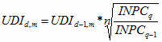
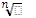

<!DOCTYPE HTML PUBLIC "-//W3C//DTD HTML 4.0 Transitional//EN">
<HTML>
<HEAD>
	<META HTTP-EQUIV="CONTENT-TYPE" CONTENT="text/html; charset=utf-8">
	<TITLE>Código Fiscal de la Federación</TITLE>
	<META NAME="GENERATOR" CONTENT="LibreOffice 4.1.6.2 (Linux)">
	<META NAME="AUTHOR" CONTENT="Cámara de Diputados del H. Congreso de la Unión">
	<META NAME="CREATED" CONTENT="20160122;25700000000000">
	<META NAME="CHANGEDBY" CONTENT="Armando Torres">
	<META NAME="CHANGED" CONTENT="20160122;25700000000000">
	<STYLE TYPE="text/css">
	<!--
		@page { size: 8.5in 11in; margin-right: 0.98in; margin-top: 0.49in; margin-bottom: 0.49in }
		P { margin-bottom: 0in; direction: ltr; color: #000000; text-align: justify; widows: 2; orphans: 2 }
		P.western { font-family: "Arial", sans-serif; font-size: 10pt; so-language: es-MX }
		P.cjk { font-family: "Times New Roman", serif; font-size: 10pt }
		P.ctl { font-family: "Arial", sans-serif; font-size: 12pt; so-language: ar-SA }
		A:link { color: #ffffff }
	-->
	</STYLE>
</HEAD>
<BODY LANG="en-US" TEXT="#000000" LINK="#ffffff" DIR="LTR">
<DIV TYPE=HEADER>
	<TABLE WIDTH=636 CELLPADDING=5 CELLSPACING=1>
		<COL WIDTH=82>
		<COL WIDTH=261>
		<COL WIDTH=260>
		<TR>
			<TD ROWSPAN=3 WIDTH=82 HEIGHT=10 STYLE="border: none; padding: 0in">
				<P LANG="es-ES" ALIGN=LEFT><A NAME="_1161102484"></A><A NAME="_1161073130"></A>
				</P>
			</TD>
			<TD COLSPAN=2 WIDTH=532 VALIGN=BOTTOM STYLE="border-top: none; border-bottom: 1.50pt double #000000; border-left: none; border-right: none; padding: 0in">
				<P LANG="es-ES" ALIGN=RIGHT><FONT FACE="Tahoma, sans-serif"><FONT SIZE=1 STYLE="font-size: 8pt"><B>CÓDIGO
				FISCAL DE LA FEDERACIÓN</B></FONT></FONT></P>
			</TD>
		</TR>
		<TR VALIGN=TOP>
			<TD COLSPAN=2 WIDTH=532 STYLE="border-top: 1.50pt double #000000; border-bottom: none; border-left: none; border-right: none; padding: 0in">
				<P LANG="es-ES" ALIGN=RIGHT STYLE="margin-left: -0.05in"><BR>
				</P>
			</TD>
		</TR>
		<TR VALIGN=TOP>
			<TD WIDTH=261 STYLE="border: none; padding: 0in">
				<P LANG="es-ES" ALIGN=LEFT STYLE="margin-left: -0.05in; font-variant: small-caps">
				<FONT FACE="Arial Narrow, sans-serif"><FONT SIZE=1><B>Cámara de
				Diputados del H. Congreso de la Unión</B></FONT></FONT></P>
				<P LANG="es-ES" ALIGN=LEFT STYLE="margin-left: -0.05in"><FONT FACE="Arial Narrow, sans-serif"><FONT SIZE=1 STYLE="font-size: 6pt">Secretaría
				General</FONT></FONT></P>
				<P LANG="es-ES" ALIGN=LEFT STYLE="margin-left: -0.05in"><FONT FACE="Arial Narrow, sans-serif"><FONT SIZE=1 STYLE="font-size: 6pt">Secretaría
				de Servicios Parlamentarios</FONT></FONT></P>
			</TD>
			<TD WIDTH=260 STYLE="border: none; padding: 0in">
				<P LANG="es-ES" ALIGN=RIGHT STYLE="margin-left: -0.05in"><FONT FACE="Times New Roman, serif"><FONT SIZE=3><FONT COLOR="#181818"><FONT FACE="Arial, sans-serif"><FONT SIZE=1 STYLE="font-size: 6pt"><I>Última
				Reforma DOF 12-01-2016</I></FONT></FONT></FONT></FONT></FONT></P>
			</TD>
		</TR>
	</TABLE>
	<P LANG="es-ES" ALIGN=LEFT><BR>
	</P>
	<P LANG="es-ES" ALIGN=LEFT STYLE="margin-bottom: 0.45in"><BR>
	</P>
</DIV>
<P LANG="es-ES" ALIGN=CENTER><FONT COLOR="#008000"><FONT FACE="Tahoma, sans-serif"><FONT SIZE=2 STYLE="font-size: 11pt"><B>CÓDIGO
FISCAL DE LA FEDERACIÓN</B></FONT></FONT></FONT></P>
<P LANG="es-ES" ALIGN=CENTER><BR>
</P>
<P LANG="es-ES" ALIGN=CENTER><FONT FACE="Tahoma, sans-serif"><FONT SIZE=1 STYLE="font-size: 8pt"><B>Nuevo
Código Publicado en el Diario Oficial de la Federación el 31 de
diciembre de 1981</B></FONT></FONT></P>
<P LANG="es-ES" ALIGN=CENTER><BR>
</P>
<P LANG="es-ES" ALIGN=CENTER><FONT FACE="Tahoma, sans-serif"><FONT SIZE=1 STYLE="font-size: 8pt"><B>TEXTO
VIGENTE</B></FONT></FONT></P>
<P LANG="es-ES" ALIGN=CENTER><FONT FACE="Courier New, monospace"><FONT COLOR="#cc3300"><FONT FACE="Tahoma, sans-serif"><FONT SIZE=1 STYLE="font-size: 8pt"><B>Última
reforma publicada DOF 12-01-2016</B></FONT></FONT></FONT></FONT></P>
<P LANG="es-ES" ALIGN=CENTER><BR>
</P>
<P LANG="es-ES" ALIGN=CENTER><FONT FACE="Courier New, monospace"><FONT FACE="Tahoma, sans-serif"><FONT SIZE=1 STYLE="font-size: 8pt"><I>Cantidades
actualizadas por Resolución Miscelánea Fiscal DOF 12-01-2016</I></FONT></FONT></FONT></P>
<P LANG="es-ES" ALIGN=JUSTIFY><BR>
</P>
<P LANG="es-ES" ALIGN=JUSTIFY><BR>
</P>
<P LANG="es-ES" ALIGN=JUSTIFY><BR>
</P>
<P LANG="es-ES" ALIGN=JUSTIFY><FONT FACE="Arial, sans-serif">Al
margen un sello con el Escudo Nacional, que dice: Estados Unidos
Mexicanos.- Presidencia de la República.</FONT></P>
<P LANG="es-ES" ALIGN=JUSTIFY STYLE="text-indent: 0.2in"><BR>
</P>
<P LANG="es-ES" ALIGN=JUSTIFY STYLE="text-indent: 0.2in"><FONT FACE="Courier New, monospace"><FONT FACE="Arial, sans-serif"><B>JOSE
LOPEZ PORTILLO</B></FONT><FONT FACE="Arial, sans-serif">, Presidente
Constitucional de los Estados Unidos Mexicanos, a sus habitantes
sabed:</FONT></FONT></P>
<P LANG="es-ES" ALIGN=JUSTIFY STYLE="text-indent: 0.2in"><BR>
</P>
<P LANG="es-ES" ALIGN=JUSTIFY STYLE="text-indent: 0.2in"><FONT FACE="Arial, sans-serif">Que
el H. Congreso de la Unión se ha servido dirigirme el siguiente</FONT></P>
<P LANG="es-ES" ALIGN=JUSTIFY STYLE="text-indent: 0.2in"><BR>
</P>
<P LANG="es-ES" ALIGN=CENTER><FONT FACE="Arial, sans-serif"><B>DECRETO:</B></FONT></P>
<P LANG="es-ES" ALIGN=JUSTIFY STYLE="text-indent: 0.2in"><BR>
</P>
<P LANG="es-ES" ALIGN=JUSTIFY STYLE="text-indent: 0.2in"><FONT FACE="Arial, sans-serif">El
Congreso de los Estados Unidos Mexicanos, Decreta:</FONT></P>
<P LANG="es-ES" ALIGN=JUSTIFY STYLE="text-indent: 0.2in"><BR>
</P>
<P LANG="es-ES" ALIGN=CENTER><FONT FACE="Arial, sans-serif"><FONT SIZE=2 STYLE="font-size: 11pt"><B>CODIGO
FISCAL DE LA FEDERACIÓN</B></FONT></FONT></P>
<P LANG="es-ES" ALIGN=CENTER><BR>
</P>
<P LANG="es-ES" ALIGN=CENTER><FONT FACE="Arial, sans-serif"><FONT SIZE=2 STYLE="font-size: 11pt"><B>TITULO
PRIMERO</B></FONT></FONT></P>
<P LANG="es-ES" ALIGN=CENTER><FONT FACE="Arial, sans-serif"><FONT SIZE=2 STYLE="font-size: 11pt"><B>Disposiciones
Generales</B></FONT></FONT></P>
<P LANG="es-ES" ALIGN=CENTER><BR>
</P>
<P LANG="es-ES" ALIGN=CENTER><FONT FACE="Arial, sans-serif"><FONT SIZE=2 STYLE="font-size: 11pt"><B>CAPITULO
I</B></FONT></FONT></P>
<P LANG="es-ES" ALIGN=JUSTIFY STYLE="text-indent: 0.2in"><BR>
</P>
<P LANG="es-ES" ALIGN=JUSTIFY STYLE="text-indent: 0.2in"><FONT FACE="Courier New, monospace"><FONT FACE="Arial, sans-serif"><B>Artículo
1o</B></FONT><FONT FACE="Arial, sans-serif">.- </FONT><FONT FACE="Arial, sans-serif">Las
personas físicas y las morales, están obligadas a contribuir para
los gastos públicos conforme a las leyes fiscales respectivas. Las
disposiciones de este Código se aplicarán en su defecto y sin
perjuicio de lo dispuesto por los tratados internacionales de los que
México sea parte. Sólo mediante ley podrá destinarse una
contribución a un gasto público específico.</FONT></FONT></P>
<P LANG="es-ES" ALIGN=JUSTIFY STYLE="text-indent: 0.2in"><BR>
</P>
<P LANG="es-ES" ALIGN=JUSTIFY STYLE="text-indent: 0.2in"><FONT FACE="Arial, sans-serif">La
Federación queda obligada a pagar contribuciones únicamente cuando
las leyes lo señalen expresamente.</FONT></P>
<P LANG="es-ES" ALIGN=JUSTIFY STYLE="text-indent: 0.2in"><BR>
</P>
<P LANG="es-ES" ALIGN=JUSTIFY STYLE="text-indent: 0.2in"><FONT FACE="Arial, sans-serif">Los
estados extranjeros, en casos de reciprocidad, no están obligados a
pagar impuestos. No quedan comprendidas en esta exención las
entidades o agencias pertenecientes a dichos estados.</FONT></P>
<P LANG="es-ES" ALIGN=JUSTIFY STYLE="text-indent: 0.2in"><BR>
</P>
<P LANG="es-ES" ALIGN=JUSTIFY STYLE="text-indent: 0.2in"><FONT FACE="Arial, sans-serif">Las
personas que de conformidad con las leyes fiscales no estén
obligadas a pagar contribuciones, únicamente tendrán las otras
obligaciones que establezcan en forma expresa las propias leyes.</FONT></P>
<P LANG="es-ES" ALIGN=JUSTIFY STYLE="text-indent: 0.2in"><BR>
</P>
<P LANG="es-ES" ALIGN=JUSTIFY STYLE="text-indent: 0.2in"><FONT FACE="Courier New, monospace"><FONT FACE="Arial, sans-serif"><B>Artículo
2o</B></FONT><FONT FACE="Arial, sans-serif">.- </FONT><FONT FACE="Arial, sans-serif">Las
contribuciones se clasifican en impuestos, aportaciones de seguridad
social, contribuciones de mejoras y derechos, las que se definen de
la siguiente manera:</FONT></FONT></P>
<P LANG="es-ES" ALIGN=JUSTIFY STYLE="text-indent: 0.2in"><BR>
</P>
<P LANG="es-ES" ALIGN=JUSTIFY STYLE="margin-left: 0.5in; text-indent: -0.3in">
<FONT FACE="Courier New, monospace"><FONT FACE="Arial, sans-serif"><B>I.
	</B></FONT><FONT FACE="Arial, sans-serif">Impuestos son las
contribuciones establecidas en ley que deben pagar las personas
físicas y morales que se encuentran en la situación jurídica o de
hecho prevista por la misma y que sean distintas de las señaladas en
las fracciones II, III y IV de este Artículo.</FONT></FONT></P>
<P LANG="es-ES" ALIGN=JUSTIFY STYLE="margin-left: 0.5in; text-indent: -0.3in">
<BR>
</P>
<P LANG="es-ES" ALIGN=JUSTIFY STYLE="margin-left: 0.5in; text-indent: -0.3in">
<FONT FACE="Courier New, monospace"><FONT FACE="Arial, sans-serif"><B>II.
	</B></FONT><FONT FACE="Arial, sans-serif">Aportaciones de seguridad
social son las contribuciones establecidas en ley a cargo de personas
que son sustituidas por el Estado en el cumplimiento de obligaciones
fijadas por la ley en materia de seguridad social o a las personas
que se beneficien en forma especial por servicios de seguridad social
proporcionados por el mismo Estado.</FONT></FONT></P>
<P LANG="es-ES" ALIGN=JUSTIFY STYLE="margin-left: 0.5in; text-indent: -0.3in">
<BR>
</P>
<P LANG="es-ES" ALIGN=JUSTIFY STYLE="margin-left: 0.5in; text-indent: -0.3in">
<FONT FACE="Courier New, monospace"><FONT FACE="Arial, sans-serif"><B>III.
	</B></FONT><FONT FACE="Arial, sans-serif">Contribuciones de mejoras
son las establecidas en Ley a cargo de las personas físicas y
morales que se beneficien de manera directa por obras públicas.</FONT></FONT></P>
<P LANG="es-ES" ALIGN=JUSTIFY STYLE="margin-left: 0.5in; text-indent: -0.3in">
<BR>
</P>
<P LANG="es-ES" ALIGN=JUSTIFY STYLE="margin-left: 0.5in; text-indent: -0.3in">
<FONT FACE="Courier New, monospace"><FONT FACE="Arial, sans-serif"><B>IV.
	</B></FONT><FONT FACE="Arial, sans-serif">Derechos son las
contribuciones establecidas en Ley por el uso o aprovechamiento de
los bienes del dominio público de la Nación, así como por recibir
servicios que presta el Estado en sus funciones de derecho público,
excepto cuando se presten por organismos descentralizados u órganos
desconcentrados cuando en este último caso, se trate de
contraprestaciones que no se encuentren previstas en la Ley Federal
de Derechos. También son derechos las contribuciones a cargo de los
organismos públicos descentralizados por prestar servicios
exclusivos del Estado.</FONT></FONT></P>
<P LANG="es-ES" ALIGN=JUSTIFY STYLE="text-indent: 0.2in"><BR>
</P>
<P LANG="es-ES" ALIGN=JUSTIFY STYLE="text-indent: 0.2in"><FONT FACE="Arial, sans-serif">Cuando
sean organismos descentralizados los que proporcionen la seguridad
social a que hace mención la fracción II, las contribuciones
correspondientes tendrán la naturaleza de aportaciones de seguridad
social.</FONT></P>
<P LANG="es-ES" ALIGN=JUSTIFY STYLE="text-indent: 0.2in"><BR>
</P>
<P LANG="es-ES" ALIGN=JUSTIFY STYLE="text-indent: 0.2in"><FONT FACE="Arial, sans-serif">Los
recargos, las sanciones, los gastos de ejecución y la indemnización
a que se refiere el séptimo párrafo del Artículo 21 de este Código
son accesorios de las contribuciones y participan de la naturaleza de
éstas. Siempre que en este Código se haga referencia únicamente a
contribuciones no se entenderán incluidos los accesorios, con
excepción de lo dispuesto en el Artículo 1o.</FONT></P>
<P LANG="es-ES" ALIGN=JUSTIFY STYLE="text-indent: 0.2in"><BR>
</P>
<P LANG="es-ES" ALIGN=JUSTIFY STYLE="text-indent: 0.2in"><FONT FACE="Courier New, monospace"><FONT FACE="Arial, sans-serif"><B>Artículo
3o</B></FONT><FONT FACE="Arial, sans-serif">.- </FONT><FONT FACE="Arial, sans-serif">Son
aprovechamientos los ingresos que percibe el Estado por funciones de
derecho público distintos de las contribuciones, de los ingresos
derivados de financiamientos y de los que obtengan los organismos
descentralizados y las empresas de participación estatal.</FONT></FONT></P>
<P LANG="es-ES" ALIGN=JUSTIFY STYLE="text-indent: 0.2in"><BR>
</P>
<P LANG="es-ES" ALIGN=JUSTIFY STYLE="text-indent: 0.2in"><FONT FACE="Arial, sans-serif">Los
recargos, las sanciones, los gastos de ejecución y la indemnización
a que se refiere el séptimo párrafo del Artículo 21 de este
Código, que se apliquen en relación con aprovechamientos, son
accesorios de éstos y participan de su naturaleza.</FONT></P>
<P LANG="es-ES" ALIGN=JUSTIFY STYLE="text-indent: 0.2in"><BR>
</P>
<P LANG="es-ES" STYLE="text-indent: 0.2in; line-height: 100%"><FONT SIZE=2>Los
aprovechamientos por concepto de multas impuestas por infracciones a
las disposiciones legales o reglamentarias que no sean de carácter
fiscal, podrán ser destinados a cubrir los gastos de operación e
inversión de las dependencias encargadas de aplicar o vigilar el
cumplimiento de las disposiciones cuya infracción dio lugar a la
imposición de la multa, cuando dicho destino específico así lo
establezcan las disposiciones jurídicas aplicables.</FONT></P>
<P LANG="es-ES" ALIGN=JUSTIFY STYLE="text-indent: 0.2in"><BR>
</P>
<P LANG="es-ES" ALIGN=JUSTIFY STYLE="text-indent: 0.2in"><FONT FACE="Arial, sans-serif">Son
productos las contraprestaciones por los servicios que preste el
Estado en sus funciones de derecho privado, así como por el uso,
aprovechamiento o enajenación de bienes del dominio privado.</FONT></P>
<P LANG="es-ES" ALIGN=JUSTIFY STYLE="text-indent: 0.2in"><BR>
</P>
<P LANG="es-ES" ALIGN=JUSTIFY STYLE="text-indent: 0.2in"><FONT FACE="Courier New, monospace"><FONT FACE="Arial, sans-serif"><B>Artículo
4o</B></FONT><FONT FACE="Arial, sans-serif">.- </FONT><FONT FACE="Arial, sans-serif">Son
créditos fiscales los que tenga derecho a percibir el Estado o sus
organismos descentralizados que provengan de contribuciones, de sus
accesorios o de aprovechamientos, incluyendo los que deriven de
responsabilidades que el Estado tenga derecho a exigir de sus
funcionarios o empleados o de los particulares, así como aquellos a
los que las leyes les den ese carácter y el Estado tenga derecho a
percibir por cuenta ajena.</FONT></FONT></P>
<P LANG="es-ES" ALIGN=JUSTIFY STYLE="text-indent: 0.2in"><BR>
</P>
<P LANG="es-ES" ALIGN=JUSTIFY STYLE="text-indent: 0.2in"><FONT FACE="Arial, sans-serif">La
recaudación proveniente de todos los ingresos de la Federación, aun
cuando se destinen a un fin específico, se hará por la Secretaría
de Hacienda y Crédito Público o por las oficinas que dicha
Secretaría autorice.</FONT></P>
<P LANG="es-ES" ALIGN=JUSTIFY STYLE="text-indent: 0.2in"><BR>
</P>
<P LANG="es-MX" STYLE="text-indent: 0.2in; line-height: 100%"><FONT SIZE=2>Para
efectos del párrafo anterior, las autoridades que remitan créditos
fiscales al Servicio de Administración Tributaria para su cobro,
deberán cumplir con los requisitos que mediante reglas de carácter
general establezca dicho órgano.</FONT></P>
<P LANG="es-ES" ALIGN=JUSTIFY STYLE="text-indent: 0.2in"><BR>
</P>
<P LANG="es-ES" ALIGN=JUSTIFY STYLE="text-indent: 0.2in"><FONT FACE="Courier New, monospace"><FONT FACE="Arial, sans-serif"><B>Artículo
4o.-A</B></FONT><FONT FACE="Arial, sans-serif">.- </FONT><FONT FACE="Arial, sans-serif">Los
impuestos y sus accesorios exigibles por los Estados extranjeros cuya
recaudación y cobro sea solicitado a México, de conformidad con los
tratados internacionales sobre asistencia mutua en el cobro de los
que México sea parte, les serán aplicables las disposiciones de
este Código referentes a la notificación y ejecución de los
créditos fiscales.</FONT></FONT></P>
<P LANG="es-ES" ALIGN=JUSTIFY STYLE="text-indent: 0.2in"><BR>
</P>
<P LANG="es-ES" ALIGN=JUSTIFY STYLE="text-indent: 0.2in"><FONT FACE="Arial, sans-serif">La
Secretaría de Hacienda y Crédito Público o las oficinas que ésta
autorice recaudarán, de conformidad con los tratados internacionales
antes señalados, los impuestos y sus accesorios exigibles por los
Estados extranjeros.</FONT></P>
<P LANG="es-ES" ALIGN=JUSTIFY STYLE="text-indent: 0.2in"><BR>
</P>
<P LANG="es-ES" ALIGN=JUSTIFY STYLE="text-indent: 0.2in"><FONT FACE="Courier New, monospace"><FONT FACE="Arial, sans-serif"><B>Artículo
5o</B></FONT><FONT FACE="Arial, sans-serif">.- </FONT><FONT FACE="Arial, sans-serif">Las
disposiciones fiscales que establezcan cargas a los particulares y
las que señalan excepciones a las mismas, así como las que fijan
las infracciones y sanciones, son de aplicación estricta. Se
considera que establecen cargas a los particulares las normas que se
refieren al sujeto, objeto, base, tasa o tarifa.</FONT></FONT></P>
<P LANG="es-ES" ALIGN=JUSTIFY STYLE="text-indent: 0.2in"><BR>
</P>
<P LANG="es-ES" ALIGN=JUSTIFY STYLE="text-indent: 0.2in"><FONT FACE="Arial, sans-serif">Las
otras disposiciones fiscales se interpretarán aplicando cualquier
método de interpretación jurídica. A falta de norma fiscal
expresa, se aplicarán supletoriamente las disposiciones del derecho
federal común cuando su aplicación no sea contraria a la naturaleza
propia del derecho fiscal.</FONT></P>
<P LANG="es-ES" ALIGN=JUSTIFY STYLE="text-indent: 0.2in"><BR>
</P>
<P LANG="es-ES" ALIGN=JUSTIFY STYLE="text-indent: 0.2in"><FONT FACE="Courier New, monospace"><FONT FACE="Arial, sans-serif"><B>Artículo
6o</B></FONT><FONT FACE="Arial, sans-serif">.- </FONT><FONT FACE="Arial, sans-serif">Las
contribuciones se causan conforme se realizan las situaciones
jurídicas o de hecho, previstas en las leyes fiscales vigentes
durante el lapso en que ocurran.</FONT></FONT></P>
<P LANG="es-ES" ALIGN=JUSTIFY STYLE="text-indent: 0.2in"><BR>
</P>
<P LANG="es-ES" ALIGN=JUSTIFY STYLE="text-indent: 0.2in"><FONT FACE="Arial, sans-serif">Dichas
contribuciones se determinarán conforme a las disposiciones vigentes
en el momento de su causación, pero les serán aplicables las normas
sobre procedimiento que se expidan con posterioridad.</FONT></P>
<P LANG="es-ES" ALIGN=JUSTIFY STYLE="text-indent: 0.2in"><BR>
</P>
<P LANG="es-ES" ALIGN=JUSTIFY STYLE="text-indent: 0.2in"><FONT FACE="Arial, sans-serif">Corresponde
a los contribuyentes la determinación de las contribuciones a su
cargo, salvo disposición expresa en contrario. Si las autoridades
fiscales deben hacer la determinación, los contribuyentes les
proporcionarán la información necesaria dentro de los 15 días
siguientes a la fecha de su causación.</FONT></P>
<P LANG="es-ES" ALIGN=JUSTIFY STYLE="text-indent: 0.2in"><BR>
</P>
<P LANG="es-ES" ALIGN=JUSTIFY STYLE="text-indent: 0.2in"><FONT FACE="Arial, sans-serif">Las
contribuciones se pagan en la fecha o dentro del plazo señalado en
las disposiciones respectivas. A falta de disposición expresa el
pago deberá hacerse mediante declaración que se presentará ante
las oficinas autorizadas, dentro del plazo que a continuación se
indica:</FONT></P>
<P LANG="es-ES" ALIGN=JUSTIFY STYLE="text-indent: 0.2in"><BR>
</P>
<P LANG="es-ES" ALIGN=JUSTIFY STYLE="margin-left: 0.5in; text-indent: -0.3in">
<FONT FACE="Courier New, monospace"><FONT FACE="Arial, sans-serif"><B>I.
	</B></FONT><FONT FACE="Arial, sans-serif">Si la contribución se
calcula por períodos establecidos en Ley y en los casos de retención
o de recaudación de contribuciones, los contribuyentes, retenedores
o las personas a quienes las leyes impongan la obligación de
recaudarlas, las enterarán a más tardar el día 17 del mes de
calendario inmediato posterior al de terminación del período de la
retención o de la recaudación, respectivamente.</FONT></FONT></P>
<P LANG="es-ES" ALIGN=JUSTIFY STYLE="margin-left: 0.5in; text-indent: -0.3in">
<BR>
</P>
<P LANG="es-ES" ALIGN=JUSTIFY STYLE="margin-left: 0.5in; text-indent: -0.3in">
<FONT FACE="Courier New, monospace"><FONT FACE="Arial, sans-serif"><B>II.
	</B></FONT><FONT FACE="Arial, sans-serif">En cualquier otro caso,
dentro de los 5 días siguientes al momento de la causación.</FONT></FONT></P>
<P LANG="es-ES" ALIGN=JUSTIFY STYLE="margin-left: 0.5in; text-indent: -0.3in">
<BR>
</P>
<P LANG="es-ES" ALIGN=JUSTIFY STYLE="margin-left: 0.5in; text-indent: -0.3in">
<FONT FACE="Courier New, monospace"><FONT FACE="Arial, sans-serif"><B>III.
	</B></FONT><FONT FACE="Arial, sans-serif">(Se deroga).</FONT></FONT></P>
<P LANG="es-ES" ALIGN=JUSTIFY STYLE="text-indent: 0.2in"><BR>
</P>
<P LANG="es-ES" ALIGN=JUSTIFY STYLE="text-indent: 0.2in"><FONT FACE="Arial, sans-serif">En
el caso de contribuciones que se deben pagar mediante retención, aún
cuando quien deba efectuarla no retenga o no haga pago de la
contraprestación relativa, el retenedor estará obligado a enterar
una cantidad equivalente a la que debió haber retenido.</FONT></P>
<P LANG="es-ES" ALIGN=JUSTIFY STYLE="text-indent: 0.2in"><BR>
</P>
<P LANG="es-ES" ALIGN=JUSTIFY STYLE="text-indent: 0.2in"><FONT FACE="Arial, sans-serif">Cuando
los retenedores deban hacer un pago en bienes, solamente harán la
entrega del bien de que se trate si quien debe recibirlo provee los
fondos necesarios para efectuar la retención en moneda nacional.</FONT></P>
<P LANG="es-ES" ALIGN=JUSTIFY STYLE="text-indent: 0.2in"><BR>
</P>
<P LANG="es-ES" ALIGN=JUSTIFY STYLE="text-indent: 0.2in"><FONT FACE="Arial, sans-serif">Quien
haga pago de créditos fiscales deberá obtener de la oficina
recaudadora, la forma oficial, el recibo oficial o la forma valorada,
expedidos y controlados exclusivamente por la Secretaría de Hacienda
y Crédito Público o la documentación que en las disposiciones
respectivas se establezca en la que conste la impresión original de
la máquina registradora. Tratándose de los pagos efectuados en las
oficinas de las instituciones de crédito, se deberá obtener la
impresión de la máquina registradora, el sello, la constancia o el
acuse de recibo electrónico con sello digital.</FONT></P>
<P LANG="es-ES" ALIGN=JUSTIFY STYLE="text-indent: 0.2in"><BR>
</P>
<P LANG="es-ES" ALIGN=JUSTIFY STYLE="text-indent: 0.2in"><FONT FACE="Arial, sans-serif">Cuando
las disposiciones fiscales establezcan opciones a los contribuyentes
para el cumplimiento de sus obligaciones fiscales o para determinar
las contribuciones a su cargo, la elegida por el contribuyente no
podrá variarla respecto al mismo ejercicio.</FONT></P>
<P LANG="es-ES" ALIGN=JUSTIFY STYLE="text-indent: 0.2in"><BR>
</P>
<P LANG="es-ES" ALIGN=JUSTIFY STYLE="text-indent: 0.2in"><FONT FACE="Courier New, monospace"><FONT FACE="Arial, sans-serif"><B>Artículo
7o</B></FONT><FONT FACE="Arial, sans-serif">.- </FONT><FONT FACE="Arial, sans-serif">Las
leyes fiscales, sus reglamentos y las disposiciones administrativas
de carácter general, entrarán en vigor en toda la República el día
siguiente al de su publicación en el Diario Oficial de la
Federación, salvo que en ellas se establezca una fecha posterior.</FONT></FONT></P>
<P LANG="es-ES" ALIGN=JUSTIFY STYLE="text-indent: 0.2in"><BR>
</P>
<P LANG="es-ES" ALIGN=JUSTIFY STYLE="text-indent: 0.2in"><FONT FACE="Courier New, monospace"><FONT FACE="Arial, sans-serif"><B>Artículo
8o</B></FONT><FONT FACE="Arial, sans-serif">.- </FONT><FONT FACE="Arial, sans-serif">Para
los efectos fiscales se entenderá por México, país y territorio
nacional, lo que conforme a la Constitución Política de los Estados
Unidos Mexicanos integra el territorio nacional y la zona económica
exclusiva situada fuera del mar territorial.</FONT></FONT></P>
<P LANG="es-ES" ALIGN=JUSTIFY STYLE="text-indent: 0.2in"><BR>
</P>
<P LANG="es-ES" ALIGN=JUSTIFY STYLE="text-indent: 0.2in"><FONT FACE="Courier New, monospace"><FONT FACE="Arial, sans-serif"><B>Artículo
9o</B></FONT><FONT FACE="Arial, sans-serif">.- </FONT><FONT FACE="Arial, sans-serif">Se
consideran residentes en territorio nacional:</FONT></FONT></P>
<P LANG="es-ES" ALIGN=JUSTIFY STYLE="text-indent: 0.2in"><BR>
</P>
<P LANG="es-ES" ALIGN=JUSTIFY STYLE="margin-left: 0.5in; text-indent: -0.3in">
<FONT FACE="Courier New, monospace"><FONT FACE="Arial, sans-serif"><B>I.
	</B></FONT><FONT FACE="Arial, sans-serif">A las siguientes personas
físicas:</FONT></FONT></P>
<P LANG="es-ES" ALIGN=JUSTIFY STYLE="margin-left: 0.5in; text-indent: -0.3in">
<BR>
</P>
<P LANG="es-ES" ALIGN=JUSTIFY STYLE="margin-left: 0.8in; text-indent: -0.3in">
<FONT FACE="Courier New, monospace"><FONT FACE="Arial, sans-serif"><B>a)
	</B></FONT><FONT FACE="Arial, sans-serif">Las que hayan establecido
su casa habitación en México. Cuando las personas físicas de que
se trate también tengan casa habitación en otro país, se
considerarán residentes en México, si en territorio nacional se
encuentra su centro de intereses vitales. Para estos efectos, se
considerará que el centro de intereses vitales está en territorio
nacional cuando, entre otros casos, se ubiquen en cualquiera de los
siguientes supuestos: </FONT></FONT>
</P>
<P LANG="es-ES" ALIGN=JUSTIFY STYLE="margin-left: 0.8in; text-indent: -0.3in">
<BR>
</P>
<P LANG="es-ES" ALIGN=JUSTIFY STYLE="margin-left: 1.1in; text-indent: -0.3in">
<FONT FACE="Courier New, monospace"><FONT FACE="Arial, sans-serif"><B>1.
	</B></FONT><FONT FACE="Arial, sans-serif">Cuando más del 50% de los
ingresos totales que obtenga la persona física en el año de
calendario tengan fuente de riqueza en México.</FONT></FONT></P>
<P LANG="es-ES" ALIGN=JUSTIFY STYLE="margin-left: 1.1in; text-indent: -0.3in">
<BR>
</P>
<P LANG="es-ES" ALIGN=JUSTIFY STYLE="margin-left: 1.1in; text-indent: -0.3in">
<FONT FACE="Courier New, monospace"><FONT FACE="Arial, sans-serif"><B>2.
	</B></FONT><FONT FACE="Arial, sans-serif">Cuando en el país tengan
el centro principal de sus actividades profesionales.</FONT></FONT></P>
<P LANG="es-ES" ALIGN=JUSTIFY STYLE="margin-left: 0.8in; text-indent: -0.3in">
<BR>
</P>
<P LANG="es-ES" ALIGN=JUSTIFY STYLE="margin-left: 0.8in; text-indent: -0.3in">
<FONT FACE="Courier New, monospace"><FONT FACE="Arial, sans-serif"><B>b)
	</B></FONT><FONT FACE="Arial, sans-serif">Las de nacionalidad
mexicana que sean funcionarios del Estado o trabajadores del mismo,
aun cuando su centro de intereses vitales se encuentre en el
extranjero.</FONT></FONT></P>
<P LANG="es-ES" ALIGN=JUSTIFY STYLE="margin-left: 0.5in; text-indent: -0.3in">
<BR>
</P>
<P LANG="es-MX" STYLE="margin-left: 0.5in; line-height: 100%"><FONT SIZE=2>No
perderán la condición de residentes en México, las personas
físicas de nacionalidad mexicana que acrediten su nueva residencia
fiscal en un país o territorio en donde sus ingresos se encuentren
sujetos a un régimen fiscal preferente en los términos de la Ley
del Impuesto sobre la Renta. Lo dispuesto en este párrafo se
aplicará en el ejercicio fiscal en el que se presente el aviso a que
se refiere el último párrafo de este artículo y durante los tres
ejercicios fiscales siguientes.</FONT></P>
<P LANG="es-MX" STYLE="margin-left: 0.5in; text-indent: -0.3in; line-height: 100%">
<BR>
</P>
<P LANG="es-MX" STYLE="margin-left: 0.5in; line-height: 100%"><FONT SIZE=2>No
se aplicará lo previsto en el párrafo anterior, cuando el país en
el que se acredite la nueva residencia fiscal, tenga celebrado un
acuerdo amplio de intercambio de información tributaria con México.</FONT></P>
<P LANG="es-ES" ALIGN=JUSTIFY STYLE="margin-left: 0.5in; text-indent: -0.3in">
<BR>
</P>
<P LANG="es-ES" STYLE="margin-left: 0.5in; text-indent: -0.3in; line-height: 100%">
<FONT SIZE=2 STYLE="font-size: 9pt"><FONT SIZE=2><SPAN LANG="es-MX"><B>II.
	</B></SPAN></FONT><FONT SIZE=2><SPAN LANG="es-MX">Las personas
morales que hayan establecido en México la administración principal
del negocio o su sede de dirección efectiva.</SPAN></FONT></FONT></P>
<P LANG="es-ES" ALIGN=JUSTIFY STYLE="text-indent: 0.2in"><BR>
</P>
<P LANG="es-ES" ALIGN=JUSTIFY STYLE="text-indent: 0.2in"><FONT FACE="Arial, sans-serif">Salvo
prueba en contrario, se presume que las personas físicas de
nacionalidad mexicana, son residentes en territorio nacional.</FONT></P>
<P LANG="es-ES" ALIGN=JUSTIFY STYLE="text-indent: 0.2in"><BR>
</P>
<P LANG="es-ES" ALIGN=JUSTIFY STYLE="text-indent: 0.2in"><FONT FACE="Arial, sans-serif">Las
personas físicas o morales que dejen de ser residentes en México de
conformidad con este Código, deberán presentar un aviso ante las
autoridades fiscales, a más tardar dentro de los 15 días inmediatos
anteriores a aquél en el que suceda el cambio de residencia fiscal.</FONT></P>
<P LANG="es-ES" ALIGN=JUSTIFY STYLE="text-indent: 0.2in"><BR>
</P>
<P LANG="es-ES" ALIGN=JUSTIFY STYLE="text-indent: 0.2in"><FONT FACE="Courier New, monospace"><FONT FACE="Arial, sans-serif"><B>Artículo
10</B></FONT><FONT FACE="Arial, sans-serif">.- </FONT><FONT FACE="Arial, sans-serif">Se
considera domicilio fiscal:</FONT></FONT></P>
<P LANG="es-ES" ALIGN=JUSTIFY STYLE="text-indent: 0.2in"><BR>
</P>
<P LANG="es-ES" ALIGN=JUSTIFY STYLE="margin-left: 0.5in; text-indent: -0.3in">
<FONT FACE="Courier New, monospace"><FONT FACE="Arial, sans-serif"><B>I.
	</B></FONT><FONT FACE="Arial, sans-serif">Tratándose de personas
físicas:</FONT></FONT></P>
<P LANG="es-ES" ALIGN=JUSTIFY STYLE="margin-left: 0.5in; text-indent: -0.3in">
<BR>
</P>
<P LANG="es-ES" ALIGN=JUSTIFY STYLE="margin-left: 0.8in; text-indent: -0.3in">
<FONT FACE="Courier New, monospace"><FONT FACE="Arial, sans-serif"><B>a)
	</B></FONT><FONT FACE="Arial, sans-serif">Cuando realizan
actividades empresariales, el local en que se encuentre el principal
asiento de sus negocios.</FONT></FONT></P>
<P LANG="es-ES" ALIGN=JUSTIFY STYLE="margin-left: 0.8in; text-indent: -0.3in">
<BR>
</P>
<P LANG="es-ES" STYLE="margin-left: 0.8in; text-indent: -0.3in; line-height: 100%">
<FONT SIZE=2 STYLE="font-size: 9pt"><FONT SIZE=2><SPAN LANG="es-MX"><B>b)
	</B></SPAN></FONT><FONT SIZE=2><SPAN LANG="es-MX">Cuando no realicen
las actividades señaladas en el inciso anterior, el local que
utilicen para el desempeño de sus actividades.</SPAN></FONT></FONT></P>
<P LANG="es-MX" STYLE="margin-left: 0.8in; text-indent: -0.3in; line-height: 100%">
<BR>
</P>
<P LANG="es-ES" STYLE="margin-left: 0.8in; text-indent: -0.3in; line-height: 100%">
<FONT SIZE=2 STYLE="font-size: 9pt"><FONT SIZE=2><SPAN LANG="es-MX"><B>c)
	</B></SPAN></FONT><FONT SIZE=2><SPAN LANG="es-MX">Únicamente en los
casos en que la persona física, que realice actividades señaladas
en los incisos anteriores no cuente con un local, su casa habitación.
Para estos efectos, las autoridades fiscales harán del conocimiento
del contribuyente en su casa habitación, que cuenta con un plazo de
cinco días para acreditar que su domicilio corresponde a uno de los
supuestos previstos en los incisos a) o b) de esta fracción.</SPAN></FONT></FONT></P>
<P LANG="es-ES" ALIGN=JUSTIFY STYLE="margin-left: 0.5in; text-indent: -0.3in">
<BR>
</P>
<P LANG="es-ES" ALIGN=JUSTIFY STYLE="margin-left: 0.5in; text-indent: -0.3in">
<FONT FACE="Arial, sans-serif">	Siempre que los contribuyentes no
hayan manifestado alguno de los domicilios citados en los incisos
anteriores o no hayan sido localizados en los mismos, se considerará
como domicilio el que hayan manifestado a las entidades financieras o
a las sociedades cooperativas de ahorro y préstamo, cuando sean
usuarios de los servicios que presten éstas.</FONT></P>
<P LANG="es-ES" ALIGN=JUSTIFY STYLE="margin-left: 0.5in; text-indent: -0.3in">
<BR>
</P>
<P LANG="es-ES" ALIGN=JUSTIFY STYLE="margin-left: 0.5in; text-indent: -0.3in">
<FONT FACE="Courier New, monospace"><FONT FACE="Arial, sans-serif"><B>II.
	</B></FONT><FONT FACE="Arial, sans-serif">En el caso de personas
morales:</FONT></FONT></P>
<P LANG="es-ES" ALIGN=JUSTIFY STYLE="margin-left: 0.5in; text-indent: -0.3in">
<BR>
</P>
<P LANG="es-ES" ALIGN=JUSTIFY STYLE="margin-left: 0.8in; text-indent: -0.3in">
<FONT FACE="Courier New, monospace"><FONT FACE="Arial, sans-serif"><B>a)
	</B></FONT><FONT FACE="Arial, sans-serif">Cuando sean residentes en
el país, el local en donde se encuentre la administración principal
del negocio.</FONT></FONT></P>
<P LANG="es-ES" ALIGN=JUSTIFY STYLE="margin-left: 0.8in; text-indent: -0.3in">
<BR>
</P>
<P LANG="es-ES" ALIGN=JUSTIFY STYLE="margin-left: 0.8in; text-indent: -0.3in">
<FONT FACE="Courier New, monospace"><FONT FACE="Arial, sans-serif"><B>b)
	</B></FONT><FONT FACE="Arial, sans-serif">Si se trata de
establecimientos de personas morales residentes en el extranjero,
dicho establecimiento; en el caso de varios establecimientos, el
local en donde se encuentre la administración principal del negocio
en el país, o en su defecto el que designen.</FONT></FONT></P>
<P LANG="es-ES" ALIGN=JUSTIFY STYLE="text-indent: 0.2in"><BR>
</P>
<P LANG="es-MX" STYLE="text-indent: 0.2in; line-height: 100%"><FONT SIZE=2>Cuando
los contribuyentes no hayan designado un domicilio fiscal estando
obligados a ello, o hubieran designado como domicilio fiscal un lugar
distinto al que les corresponda de acuerdo con lo dispuesto en este
mismo precepto o cuando hayan manifestado un domicilio ficticio, las
autoridades fiscales podrán practicar diligencias en cualquier lugar
en el que realicen sus actividades o en el lugar que conforme a este
artículo se considere su domicilio, indistintamente.</FONT></P>
<P LANG="es-ES" ALIGN=JUSTIFY STYLE="text-indent: 0.2in"><BR>
</P>
<P LANG="es-ES" ALIGN=JUSTIFY STYLE="text-indent: 0.2in"><FONT FACE="Courier New, monospace"><FONT FACE="Arial, sans-serif"><B>Artículo
11</B></FONT><FONT FACE="Arial, sans-serif">.- </FONT><FONT FACE="Arial, sans-serif">Cuando
las leyes fiscales establezcan que las contribuciones se calcularán
por ejercicios fiscales, éstos coincidirán con el año de
calendario. Cuando las personas morales inicien sus actividades con
posterioridad al 1 de enero, en dicho año el ejercicio fiscal será
irregular, debiendo iniciarse el día en que comiencen actividades y
terminarse el 31 de diciembre del año de que se trate.</FONT></FONT></P>
<P LANG="es-ES" ALIGN=JUSTIFY STYLE="text-indent: 0.2in"><BR>
</P>
<P LANG="es-ES" ALIGN=JUSTIFY STYLE="margin-left: 0.5in; text-indent: -0.3in">
<FONT FACE="Courier New, monospace"><FONT FACE="Arial, sans-serif"><B>I.
	</B></FONT><FONT FACE="Arial, sans-serif">(Se deroga).</FONT></FONT></P>
<P LANG="es-ES" ALIGN=JUSTIFY STYLE="margin-left: 0.5in; text-indent: -0.3in">
<BR>
</P>
<P LANG="es-ES" ALIGN=JUSTIFY STYLE="margin-left: 0.5in; text-indent: -0.3in">
<FONT FACE="Courier New, monospace"><FONT FACE="Arial, sans-serif"><B>II.
	</B></FONT><FONT FACE="Arial, sans-serif">(Se deroga).</FONT></FONT></P>
<P LANG="es-ES" ALIGN=JUSTIFY STYLE="text-indent: 0.2in"><BR>
</P>
<P LANG="es-ES" ALIGN=JUSTIFY STYLE="text-indent: 0.2in"><FONT FACE="Arial, sans-serif">En
los casos en que una sociedad entre en liquidación, sea fusionada o
se escinda, siempre que la sociedad escindente desaparezca, el
ejercicio fiscal terminará anticipadamente en la fecha en que entre
en liquidación, sea fusionada o se escinda, respectivamente. En el
primer caso, se considerará que habrá un ejercicio por todo el
tiempo en que la sociedad esté en liquidación.</FONT></P>
<P LANG="es-ES" ALIGN=JUSTIFY STYLE="text-indent: 0.2in"><BR>
</P>
<P LANG="es-ES" ALIGN=JUSTIFY STYLE="text-indent: 0.2in"><FONT FACE="Arial, sans-serif">Cuando
las leyes fiscales establezcan que las contribuciones se calculen por
mes, se entenderá que corresponde al mes de calendario.</FONT></P>
<P LANG="es-ES" ALIGN=JUSTIFY STYLE="text-indent: 0.2in"><BR>
</P>
<P LANG="es-ES" STYLE="text-indent: 0.2in; line-height: 100%"><FONT SIZE=2 STYLE="font-size: 9pt"><FONT SIZE=2><SPAN LANG="es-MX"><B>Artículo
12. </B></SPAN></FONT><FONT SIZE=2><SPAN LANG="es-MX">En los plazos
fijados en días no se contarán los sábados, los domingos ni el 1o.
de enero; el primer lunes de febrero en conmemoración del 5 de
febrero; el tercer lunes de marzo en conmemoración del 21 de marzo;
el 1o. y 5 de mayo; el 16 de septiembre; el tercer lunes de noviembre
en conmemoración del 20 de noviembre; el 1o. de diciembre de cada 6
años, cuando corresponda a la transmisión del Poder Ejecutivo y el
25 de diciembre.</SPAN></FONT></FONT></P>
<P LANG="es-ES" ALIGN=JUSTIFY STYLE="text-indent: 0.2in"><BR>
</P>
<P LANG="es-ES" ALIGN=JUSTIFY STYLE="text-indent: 0.2in"><FONT FACE="Arial, sans-serif">Tampoco
se contarán en dichos plazos, los días en que tengan vacaciones
generales las autoridades fiscales federales, excepto cuando se trate
de plazos para la presentación de declaraciones y pago de
contribuciones, exclusivamente, en cuyos casos esos días se
consideran hábiles. No son vacaciones generales las que se otorguen
en forma escalonada.</FONT></P>
<P LANG="es-ES" ALIGN=JUSTIFY STYLE="text-indent: 0.2in"><BR>
</P>
<P LANG="es-ES" ALIGN=JUSTIFY STYLE="text-indent: 0.2in"><FONT FACE="Arial, sans-serif">En
los plazos establecidos por períodos y aquéllos en que se señale
una fecha determinada para su extinción se computarán todos los
días.</FONT></P>
<P LANG="es-ES" ALIGN=JUSTIFY STYLE="text-indent: 0.2in"><BR>
</P>
<P LANG="es-ES" ALIGN=JUSTIFY STYLE="text-indent: 0.2in"><FONT FACE="Arial, sans-serif">Cuando
los plazos se fijen por mes o por año, sin especificar que sean de
calendario, se entenderá que en el primer caso el plazo concluye el
mismo día del mes de calendario posterior a aquél en que se inició
y en el segundo, el término vencerá el mismo día del siguiente año
de calendario a aquél en que se inició. En los plazos que se fijen
por mes o por año cuando no exista el mismo día en el mes de
calendario correspondiente, el término será el primer día hábil
del siguiente mes de calendario.</FONT></P>
<P LANG="es-ES" ALIGN=JUSTIFY STYLE="text-indent: 0.2in"><BR>
</P>
<P LANG="es-ES" ALIGN=JUSTIFY STYLE="text-indent: 0.2in"><FONT FACE="Arial, sans-serif">No
obstante lo dispuesto en los párrafos anteriores, si el último día
del plazo o en la fecha determinada, las oficinas ante las que se
vaya a hacer el trámite permanecen cerradas durante el horario
normal de labores o se trate de un día inhábil, se prorrogará el
plazo hasta el siguiente día hábil. Lo dispuesto en este Artículo
es aplicable, inclusive cuando se autorice a las instituciones de
crédito para recibir declaraciones. También se prorrogará el plazo
hasta el siguiente día hábil, cuando sea viernes el último día
del plazo en que se deba presentar la declaración respectiva, ante
las instituciones de crédito autorizadas.</FONT></P>
<P LANG="es-ES" ALIGN=JUSTIFY STYLE="text-indent: 0.2in"><BR>
</P>
<P LANG="es-ES" ALIGN=JUSTIFY STYLE="text-indent: 0.2in"><FONT FACE="Arial, sans-serif">Las
autoridades fiscales podrán habilitar los días inhábiles. Esta
circunstancia deberá comunicarse a los particulares y no alterará
el cálculo de plazos.</FONT></P>
<P LANG="es-ES" ALIGN=JUSTIFY STYLE="text-indent: 0.2in"><BR>
</P>
<P LANG="es-ES" ALIGN=JUSTIFY STYLE="text-indent: 0.2in"><FONT FACE="Courier New, monospace"><FONT FACE="Arial, sans-serif"><B>Artículo
13</B></FONT><FONT FACE="Arial, sans-serif">.- </FONT><FONT FACE="Arial, sans-serif">La
práctica de diligencias por las autoridades fiscales deberá
efectuarse en días y horas hábiles, que son las comprendidas entre
las 7:30 y las 18:00 horas. Una diligencia de notificación iniciada
en horas hábiles podrá concluirse en hora inhábil sin afectar su
validez. Tratándose de la verificación de bienes y de mercancías
en transporte, se considerarán hábiles todos los días del año y
las 24 horas del día.</FONT></FONT></P>
<P LANG="es-ES" ALIGN=JUSTIFY STYLE="text-indent: 0.2in"><BR>
</P>
<P LANG="es-ES" ALIGN=JUSTIFY STYLE="text-indent: 0.2in"><FONT FACE="Arial, sans-serif">Las
autoridades fiscales para la práctica de visitas domiciliarias, del
procedimiento administrativo de ejecución, de notificaciones y de
embargos precautorios, podrán habilitar los días y horas inhábiles,
cuando la persona con quien se va a practicar la diligencia realice
las actividades por las que deba pagar contribuciones en días u
horas inhábiles. También se podrá continuar en días u horas
inhábiles una diligencia iniciada en días y horas hábiles, cuando
la continuación tenga por objeto el aseguramiento de contabilidad o
de bienes del particular.</FONT></P>
<P LANG="es-ES" ALIGN=JUSTIFY STYLE="text-indent: 0.2in"><BR>
</P>
<P LANG="es-ES" ALIGN=JUSTIFY STYLE="text-indent: 0.2in"><FONT FACE="Courier New, monospace"><FONT FACE="Arial, sans-serif"><B>Artículo
14</B></FONT><FONT FACE="Arial, sans-serif">.- </FONT><FONT FACE="Arial, sans-serif">Se
entiende por enajenación de bienes:</FONT></FONT></P>
<P LANG="es-ES" ALIGN=JUSTIFY STYLE="text-indent: 0.2in"><BR>
</P>
<P LANG="es-ES" ALIGN=JUSTIFY STYLE="margin-left: 0.5in; text-indent: -0.3in">
<FONT FACE="Courier New, monospace"><FONT FACE="Arial, sans-serif"><B>I.
	</B></FONT><FONT FACE="Arial, sans-serif">Toda transmisión de
propiedad, aun en la que el enajenante se reserve el dominio del bien
enajenado</FONT></FONT></P>
<P LANG="es-ES" ALIGN=JUSTIFY STYLE="margin-left: 0.5in; text-indent: -0.3in">
<BR>
</P>
<P LANG="es-ES" ALIGN=JUSTIFY STYLE="margin-left: 0.5in; text-indent: -0.3in">
<FONT FACE="Courier New, monospace"><FONT FACE="Arial, sans-serif"><B>II.
	</B></FONT><FONT FACE="Arial, sans-serif">Las adjudicaciones, aun
cuando se realicen a favor del acreedor.</FONT></FONT></P>
<P LANG="es-ES" ALIGN=JUSTIFY STYLE="margin-left: 0.5in; text-indent: -0.3in">
<BR>
</P>
<P LANG="es-ES" ALIGN=JUSTIFY STYLE="margin-left: 0.5in; text-indent: -0.3in">
<FONT FACE="Courier New, monospace"><FONT FACE="Arial, sans-serif"><B>III.
	</B></FONT><FONT FACE="Arial, sans-serif">La aportación a una
sociedad o asociación.</FONT></FONT></P>
<P LANG="es-ES" ALIGN=JUSTIFY STYLE="margin-left: 0.5in; text-indent: -0.3in">
<BR>
</P>
<P LANG="es-ES" ALIGN=JUSTIFY STYLE="margin-left: 0.5in; text-indent: -0.3in">
<FONT FACE="Courier New, monospace"><FONT FACE="Arial, sans-serif"><B>IV.
	</B></FONT><FONT FACE="Arial, sans-serif">La que se realiza mediante
el arrendamiento financiero.</FONT></FONT></P>
<P LANG="es-ES" ALIGN=JUSTIFY STYLE="margin-left: 0.5in; text-indent: -0.3in">
<BR>
</P>
<P LANG="es-ES" ALIGN=JUSTIFY STYLE="margin-left: 0.5in; text-indent: -0.3in">
<FONT FACE="Courier New, monospace"><FONT FACE="Arial, sans-serif"><B>V.
	</B></FONT><FONT FACE="Arial, sans-serif">La que se realiza a través
del fideicomiso, en los siguientes casos:</FONT></FONT></P>
<P LANG="es-ES" ALIGN=JUSTIFY STYLE="margin-left: 0.5in; text-indent: -0.3in">
<BR>
</P>
<P LANG="es-ES" ALIGN=JUSTIFY STYLE="margin-left: 0.8in; text-indent: -0.3in">
<FONT FACE="Courier New, monospace"><FONT FACE="Arial, sans-serif"><B>a)
	</B></FONT><FONT FACE="Arial, sans-serif">En el acto en el que el
fideicomitente designe o se obliga a designar fideicomisario diverso
de él y siempre que no tenga derecho a readquirir del fiduciario los
bienes.</FONT></FONT></P>
<P LANG="es-ES" ALIGN=JUSTIFY STYLE="margin-left: 0.8in; text-indent: -0.3in">
<BR>
</P>
<P LANG="es-ES" ALIGN=JUSTIFY STYLE="margin-left: 0.8in; text-indent: -0.3in">
<FONT FACE="Courier New, monospace"><FONT FACE="Arial, sans-serif"><B>b)
	</B></FONT><FONT FACE="Arial, sans-serif">En el acto en el que el
fideicomitente pierda el derecho a readquirir los bienes del
fiduciario, si se hubiera reservado tal derecho.</FONT></FONT></P>
<P LANG="es-ES" ALIGN=JUSTIFY STYLE="margin-left: 0.8in; text-indent: -0.3in">
<BR>
</P>
<P LANG="es-MX" STYLE="margin-left: 0.8in; line-height: 100%"><FONT SIZE=2>Cuando
el fideicomitente reciba certificados de participación por los
bienes que afecte en fideicomiso, se considerarán enajenados esos
bienes al momento en que el fideicomitente reciba los certificados,
salvo que se trate de acciones.</FONT></P>
<P LANG="es-ES" ALIGN=JUSTIFY STYLE="margin-left: 0.5in; text-indent: -0.3in">
<BR>
</P>
<P LANG="es-ES" ALIGN=JUSTIFY STYLE="margin-left: 0.5in; text-indent: -0.3in">
<FONT FACE="Courier New, monospace"><FONT FACE="Arial, sans-serif"><B>VI.
	</B></FONT><FONT FACE="Arial, sans-serif">La cesión de los derechos
que se tengan sobre los bienes afectos al fideicomiso, en cualquiera
de los siguientes momentos:</FONT></FONT></P>
<P LANG="es-ES" ALIGN=JUSTIFY STYLE="margin-left: 0.5in; text-indent: -0.3in">
<BR>
</P>
<P LANG="es-ES" ALIGN=JUSTIFY STYLE="margin-left: 0.8in; text-indent: -0.3in">
<FONT FACE="Courier New, monospace"><FONT FACE="Arial, sans-serif"><B>a)
	</B></FONT><FONT FACE="Arial, sans-serif">En el acto en el que el
fideicomisario designado ceda sus derechos o dé instrucciones al
fiduciario para que transmita la propiedad de los bienes a un
tercero. En estos casos se considerará que el fideicomisario
adquiere los bienes en el acto de su designación y que los enajena
en el momento de ceder sus derechos o de dar dichas instrucciones.</FONT></FONT></P>
<P LANG="es-ES" ALIGN=JUSTIFY STYLE="margin-left: 0.8in; text-indent: -0.3in">
<BR>
</P>
<P LANG="es-ES" ALIGN=JUSTIFY STYLE="margin-left: 0.8in; text-indent: -0.3in">
<FONT FACE="Courier New, monospace"><FONT FACE="Arial, sans-serif"><B>b)
	</B></FONT><FONT FACE="Arial, sans-serif">En el acto en el que el
fideicomitente ceda sus derechos si entre éstos se incluye el de que
los bienes se transmitan a su favor.</FONT></FONT></P>
<P LANG="es-ES" ALIGN=JUSTIFY STYLE="margin-left: 0.8in; text-indent: -0.3in">
<BR>
</P>
<P LANG="es-MX" STYLE="margin-left: 0.8in; line-height: 100%"><FONT SIZE=2>Cuando
se emitan certificados de participación por los bienes afectos al
fideicomiso y se coloquen entre el gran público inversionista, no se
considerarán enajenados dichos bienes al enajenarse esos
certificados, salvo que estos les den a sus tenedores derechos de
aprovechamiento directo de esos bienes, o se trate de acciones. La
enajenación de los certificados de participación se considerará
como una enajenación de títulos de crédito que no representan la
propiedad de bienes y tendrán las consecuencias fiscales que
establecen las Leyes fiscales para la enajenación de tales títulos.</FONT></P>
<P LANG="es-ES" ALIGN=JUSTIFY STYLE="margin-left: 0.5in; text-indent: -0.3in">
<BR>
</P>
<P LANG="es-ES" ALIGN=JUSTIFY STYLE="margin-left: 0.5in; text-indent: -0.3in">
<FONT FACE="Courier New, monospace"><FONT FACE="Arial, sans-serif"><B>VII.
	</B></FONT><FONT FACE="Arial, sans-serif">La transmisión de dominio
de un bien tangible o del derecho para adquirirlo que se efectúe a
través de enajenación de títulos de crédito, o de la cesión de
derechos que los representen.</FONT></FONT></P>
<P LANG="es-ES" ALIGN=JUSTIFY STYLE="margin-left: 0.5in; text-indent: -0.3in">
<BR>
</P>
<P LANG="es-ES" ALIGN=JUSTIFY STYLE="margin-left: 0.5in"><FONT FACE="Arial, sans-serif">Lo
dispuesto en esta fracción no es aplicable a las acciones o partes
sociales.</FONT></P>
<P LANG="es-ES" ALIGN=JUSTIFY STYLE="margin-left: 0.5in; text-indent: -0.3in">
<BR>
</P>
<P LANG="es-ES" ALIGN=JUSTIFY STYLE="margin-left: 0.5in; text-indent: -0.3in">
<FONT FACE="Courier New, monospace"><FONT FACE="Arial, sans-serif"><B>VIII.
	</B></FONT><FONT FACE="Arial, sans-serif">La transmisión de
derechos de crédito relacionados a proveeduría de bienes, de
servicios o de ambos a través de un contrato de factoraje financiero
en el momento de la celebración de dicho contrato, excepto cuando se
transmitan a través de factoraje con mandato de cobranza o con
cobranza delegada así como en el caso de transmisión de derechos de
crédito a cargo de personas físicas, en los que se considerará que
existe enajenación hasta el momento en que se cobre los créditos
correspondientes.</FONT></FONT></P>
<P LANG="es-ES" ALIGN=JUSTIFY STYLE="margin-left: 0.5in; text-indent: -0.3in">
<BR>
</P>
<P LANG="es-ES" ALIGN=JUSTIFY STYLE="margin-left: 0.5in; text-indent: -0.3in">
<FONT FACE="Courier New, monospace"><FONT FACE="Arial, sans-serif"><B>IX.
	</B></FONT><FONT FACE="Arial, sans-serif">La que se realice mediante
fusión o escisión de sociedades, excepto en los supuestos a que se
refiere el artículo 14-B de este Código.</FONT></FONT></P>
<P LANG="es-ES" ALIGN=JUSTIFY STYLE="text-indent: 0.2in"><BR>
</P>
<P LANG="es-ES" STYLE="text-indent: 0.2in; line-height: 100%"><FONT SIZE=2>Se
entiende que se efectúan enajenaciones a plazo con pago diferido o
en parcialidades, cuando se efectúen con clientes que sean público
en general, se difiera más del 35% del precio para después del
sexto mes y el plazo pactado exceda de doce meses. Se consideran
operaciones efectuadas con el público en general cuando por las
mismas se expidan los comprobantes fiscales simplificados a que se
refiere este Código.</FONT></P>
<P LANG="es-ES" ALIGN=JUSTIFY STYLE="text-indent: 0.2in"><BR>
</P>
<P LANG="es-ES" ALIGN=JUSTIFY STYLE="text-indent: 0.2in"><FONT FACE="Arial, sans-serif">Se
considera que la enajenación se efectúa en territorio nacional,
entre otros casos, si el bien se encuentra en dicho territorio al
efectuarse el envío al adquirente y cuando no habiendo envío, en el
país se realiza la entrega material del bien por el enajenante.</FONT></P>
<P LANG="es-ES" ALIGN=JUSTIFY STYLE="text-indent: 0.2in"><BR>
</P>
<P LANG="es-ES" ALIGN=JUSTIFY STYLE="text-indent: 0.2in"><FONT FACE="Arial, sans-serif">Cuando
de conformidad con este Artículo se entienda que hay enajenación,
el adquirente se considerará propietario de los bienes para efectos
fiscales.</FONT></P>
<P LANG="es-ES" ALIGN=JUSTIFY STYLE="text-indent: 0.2in"><BR>
</P>
<P LANG="es-ES" ALIGN=JUSTIFY STYLE="text-indent: 0.2in"><FONT FACE="Courier New, monospace"><FONT FACE="Arial, sans-serif"><B>Artículo
14-A</B></FONT><FONT FACE="Arial, sans-serif">.- </FONT><FONT FACE="Arial, sans-serif">Se
entiende que no hay enajenación en las operaciones de préstamos de
títulos o de valores por la entrega de los bienes prestados al
prestatario y por la restitución de los mismos al prestamista,
siempre que efectivamente se restituyan los bienes a más tardar al
vencimiento de la operación y las mismas se realicen de conformidad
con las reglas generales que al efecto expida el Servicio de
Administración Tributaria. En el caso de incumplimiento de
cualesquiera de los requisitos establecidos en este artículo, la
enajenación se entenderá realizada en el momento en el que se
efectuaron las operaciones de préstamo de títulos o valores, según
se trate.</FONT></FONT></P>
<P LANG="es-ES" ALIGN=JUSTIFY STYLE="text-indent: 0.2in"><BR>
</P>
<P LANG="es-ES" ALIGN=JUSTIFY STYLE="text-indent: 0.2in"><FONT FACE="Courier New, monospace"><FONT FACE="Arial, sans-serif"><B>Artículo
14-B</B></FONT><FONT FACE="Arial, sans-serif">.- </FONT><FONT FACE="Arial, sans-serif">Para
los efectos de lo dispuesto en el artículo 14, fracción IX, de este
Código, se considerará que no hay enajenación en los siguientes
casos: </FONT></FONT>
</P>
<P LANG="es-ES" ALIGN=JUSTIFY STYLE="text-indent: 0.2in"><BR>
</P>
<P LANG="es-ES" ALIGN=JUSTIFY STYLE="margin-left: 0.5in; text-indent: -0.3in">
<FONT FACE="Courier New, monospace"><FONT FACE="Arial, sans-serif"><B>I.
	</B></FONT><FONT FACE="Arial, sans-serif">En el caso de fusión,
siempre que se cumpla con los siguientes requisitos: </FONT></FONT>
</P>
<P LANG="es-ES" ALIGN=JUSTIFY STYLE="margin-left: 0.5in; text-indent: -0.3in">
<BR>
</P>
<P LANG="es-ES" ALIGN=JUSTIFY STYLE="margin-left: 0.8in; text-indent: -0.3in">
<FONT FACE="Courier New, monospace"><FONT FACE="Arial, sans-serif"><B>a)
	</B></FONT><FONT FACE="Arial, sans-serif">Se presente el aviso de
fusión a que se refiere el Reglamento de este Código.</FONT></FONT></P>
<P LANG="es-ES" ALIGN=JUSTIFY STYLE="margin-left: 0.8in; text-indent: -0.3in">
<BR>
</P>
<P LANG="es-ES" ALIGN=JUSTIFY STYLE="margin-left: 0.8in; text-indent: -0.3in">
<FONT FACE="Courier New, monospace"><FONT FACE="Arial, sans-serif"><B>b)
	</B></FONT><FONT FACE="Arial, sans-serif">Que con posterioridad a la
fusión, la sociedad fusionante continúe realizando las actividades
que realizaban ésta y las sociedades fusionadas antes de la fusión,
durante un período mínimo de un año inmediato posterior a la fecha
en la que surta efectos la fusión. Este requisito no será exigible
cuando se reúnan los siguientes supuestos: </FONT></FONT>
</P>
<P LANG="es-ES" ALIGN=JUSTIFY STYLE="margin-left: 0.8in; text-indent: -0.3in">
<BR>
</P>
<P LANG="es-ES" ALIGN=JUSTIFY STYLE="margin-left: 1.1in; text-indent: -0.3in">
<FONT FACE="Courier New, monospace"><FONT FACE="Arial, sans-serif"><B>1.
	</B></FONT><FONT FACE="Arial, sans-serif">Cuando los ingresos de la
actividad preponderante de la fusionada correspondientes al ejercicio
inmediato anterior a la fusión, deriven del arrendamiento de bienes
que se utilicen en la misma actividad de la fusionante.</FONT></FONT></P>
<P LANG="es-ES" ALIGN=JUSTIFY STYLE="margin-left: 1.1in; text-indent: -0.3in">
<BR>
</P>
<P LANG="es-ES" ALIGN=JUSTIFY STYLE="margin-left: 1.1in; text-indent: -0.3in">
<FONT FACE="Courier New, monospace"><FONT FACE="Arial, sans-serif"><B>2.
	</B></FONT><FONT FACE="Arial, sans-serif">Cuando en el ejercicio
inmediato anterior a la fusión, la fusionada haya percibido más del
50% de sus ingresos de la fusionante, o esta última haya percibido
más del 50% de sus ingresos de la fusionada.</FONT></FONT></P>
<P LANG="es-ES" ALIGN=JUSTIFY STYLE="margin-left: 0.8in; text-indent: -0.3in">
<BR>
</P>
<P LANG="es-ES" ALIGN=JUSTIFY STYLE="margin-left: 0.8in"><FONT FACE="Arial, sans-serif">No
será exigible el requisito a que se refiere este inciso, cuando la
sociedad que subsista se liquide antes de un año posterior a la
fecha en que surte efectos la fusión.</FONT></P>
<P LANG="es-ES" ALIGN=JUSTIFY STYLE="margin-left: 0.8in; text-indent: -0.3in">
<BR>
</P>
<P LANG="es-ES" ALIGN=JUSTIFY STYLE="margin-left: 0.8in; text-indent: -0.3in">
<FONT FACE="Courier New, monospace"><FONT FACE="Arial, sans-serif"><B>c)
	</B></FONT><FONT FACE="Arial, sans-serif">Que la sociedad que
subsista o la que surja con motivo de la fusión, presente las
declaraciones de impuestos del ejercicio y las informativas que en
los términos establecidos por las leyes fiscales les correspondan a
la sociedad o sociedades fusionadas, correspondientes al ejercicio
que terminó por fusión.</FONT></FONT></P>
<P LANG="es-ES" ALIGN=JUSTIFY STYLE="margin-left: 0.5in; text-indent: -0.3in">
<BR>
</P>
<P LANG="es-ES" ALIGN=JUSTIFY STYLE="margin-left: 0.5in; text-indent: -0.3in">
<FONT FACE="Courier New, monospace"><FONT FACE="Arial, sans-serif"><B>II.
	</B></FONT><FONT FACE="Arial, sans-serif">En escisión, siempre que
se cumplan los requisitos siguientes: </FONT></FONT>
</P>
<P LANG="es-ES" ALIGN=JUSTIFY STYLE="margin-left: 0.5in; text-indent: -0.3in">
<BR>
</P>
<P LANG="es-ES" ALIGN=JUSTIFY STYLE="margin-left: 0.8in; text-indent: -0.3in">
<FONT FACE="Courier New, monospace"><FONT FACE="Arial, sans-serif"><B>a)
	</B></FONT><FONT FACE="Arial, sans-serif">Los accionistas
propietarios de por lo menos el 51% de las acciones con derecho a
voto de la sociedad escindente y de las escindidas, sean los mismos
durante un período de tres años contados a partir del año
inmediato anterior a la fecha en la que se realice la escisión.</FONT></FONT></P>
<P LANG="es-ES" ALIGN=JUSTIFY STYLE="margin-left: 0.8in; text-indent: -0.3in">
<BR>
</P>
<P LANG="es-ES" ALIGN=JUSTIFY STYLE="margin-left: 0.8in"><FONT FACE="Arial, sans-serif">Para
los efectos del párrafo anterior, no se computarán las acciones que
se consideran colocadas entre el gran público inversionista de
conformidad con las reglas que al efecto expida el Servicio de
Administración Tributaria y siempre que dichas acciones hayan sido
efectivamente ofrecidas y colocadas entre el gran público
inversionista. Tampoco se consideran colocadas entre el gran público
inversionista las acciones que hubiesen sido recompradas por el
emisor.</FONT></P>
<P LANG="es-ES" ALIGN=JUSTIFY STYLE="margin-left: 0.8in; text-indent: -0.3in">
<BR>
</P>
<P LANG="es-ES" ALIGN=JUSTIFY STYLE="margin-left: 0.8in"><FONT FACE="Arial, sans-serif">Tratándose
de sociedades que no sean por acciones se considerará el valor de
las partes sociales en vez de las acciones con derecho a voto, en
cuyo caso, el 51% de las partes sociales deberá representar, al
menos, el 51% de los votos que correspondan al total de las
aportaciones.</FONT></P>
<P LANG="es-ES" ALIGN=JUSTIFY STYLE="margin-left: 0.8in; text-indent: -0.3in">
<BR>
</P>
<P LANG="es-ES" ALIGN=JUSTIFY STYLE="margin-left: 0.8in"><FONT FACE="Arial, sans-serif">Durante
el período a que se refiere este inciso, los accionistas de por lo
menos el 51% de las acciones con derecho a voto o los socios de por
lo menos el 51% de las partes sociales antes señaladas, según
corresponda, de la sociedad escindente, deberán mantener la misma
proporción en el capital de las escindidas que tenían en la
escindente antes de la escisión, así como en el de la sociedad
escindente, cuando ésta subsista.</FONT></P>
<P LANG="es-ES" ALIGN=JUSTIFY STYLE="margin-left: 0.8in; text-indent: -0.3in">
<BR>
</P>
<P LANG="es-ES" ALIGN=JUSTIFY STYLE="margin-left: 0.8in; text-indent: -0.3in">
<FONT FACE="Courier New, monospace"><FONT FACE="Arial, sans-serif"><B>b)
	</B></FONT><FONT FACE="Arial, sans-serif">Que cuando desaparezca una
sociedad con motivo de escisión, la sociedad escindente designe a la
sociedad que asuma la obligación de presentar las declaraciones de
impuestos del ejercicio e informativas que en los términos
establecidos por las leyes fiscales le correspondan a la escindente.
La designación se hará en la asamblea extraordinaria en la que se
haya acordado la escisión.</FONT></FONT></P>
<P LANG="es-ES" ALIGN=JUSTIFY STYLE="text-indent: 0.2in"><BR>
</P>
<P LANG="es-ES" ALIGN=JUSTIFY STYLE="text-indent: 0.2in"><FONT FACE="Arial, sans-serif">Cuando
dentro de los cinco años posteriores a la realización de una fusión
o de una escisión de sociedades, se pretenda realizar una fusión,
se deberá solicitar autorización a las autoridades fiscales con
anterioridad a dicha fusión. En este caso para comprobar el
cumplimiento de los requisitos establecidos en este artículo, los
contribuyentes estarán a lo dispuesto en las reglas generales que al
efecto expida el Servicio de Administración Tributaria.</FONT></P>
<P LANG="es-ES" ALIGN=JUSTIFY STYLE="text-indent: 0.2in"><BR>
</P>
<P LANG="es-ES" STYLE="text-indent: 0.2in; line-height: 100%"><FONT SIZE=2>Para
los efectos de este artículo, no se incumple con el requisito de
permanencia accionaria previsto en el mismo, cuando la transmisión
de propiedad de las acciones sea por causa de muerte, liquidación,
adjudicación judicial o donación, siempre que en este último caso
se cumplan los requisitos establecidos en la fracción XXIII del
artículo 93 de la Ley del Impuesto sobre la Renta.</FONT></P>
<P LANG="es-ES" ALIGN=JUSTIFY STYLE="text-indent: 0.2in"><BR>
</P>
<P LANG="es-ES" ALIGN=JUSTIFY STYLE="text-indent: 0.2in"><FONT FACE="Arial, sans-serif">No
será aplicable lo dispuesto en este artículo cuando en los términos
de la Ley del Impuesto sobre la Renta se le otorgue a la escisión el
tratamiento de reducción de capital.</FONT></P>
<P LANG="es-ES" ALIGN=JUSTIFY STYLE="text-indent: 0.2in"><BR>
</P>
<P LANG="es-ES" ALIGN=JUSTIFY STYLE="text-indent: 0.2in"><FONT FACE="Arial, sans-serif">En
los casos en los que la fusión o la escisión de sociedades formen
parte de una reestructuración corporativa, se deberá cumplir,
además, con los requisitos establecidos para las reestructuras en la
Ley del Impuesto sobre la Renta.</FONT></P>
<P LANG="es-ES" ALIGN=JUSTIFY STYLE="text-indent: 0.2in"><BR>
</P>
<P LANG="es-ES" ALIGN=JUSTIFY STYLE="text-indent: 0.2in"><FONT FACE="Arial, sans-serif">En
los casos de fusión o escisión de sociedades, cuando la sociedad
escindente desaparezca, la sociedad que subsista, la que surja con
motivo de la fusión o la escindida que se designe, deberá, sin
perjuicio de lo establecido en este artículo, enterar los impuestos
correspondientes o, en su caso, tendrá derecho a solicitar la
devolución o a compensar los saldos a favor de la sociedad que
desaparezca, siempre que se cumplan los requisitos que se establezcan
en las disposiciones fiscales.</FONT></P>
<P LANG="es-ES" ALIGN=JUSTIFY STYLE="text-indent: 0.2in"><BR>
</P>
<P LANG="es-ES" ALIGN=JUSTIFY STYLE="text-indent: 0.2in"><FONT FACE="Arial, sans-serif">En
las declaraciones del ejercicio correspondientes a la sociedad
fusionada o a la sociedad escindente que desaparezcan, se deberán
considerar todos los ingresos acumulables y las deducciones
autorizadas; el importe total de los actos o actividades gravados y
exentos y de los acreditamientos; el valor de todos sus activos o
deudas, según corresponda, que la misma tuvo desde el inicio del
ejercicio y hasta el día de su desaparición. En este caso, se
considerará como fecha de terminación del ejercicio aquélla que
corresponda a la fusión o a la escisión.</FONT></P>
<P LANG="es-ES" ALIGN=JUSTIFY STYLE="text-indent: 0.2in"><BR>
</P>
<P LANG="es-MX" STYLE="text-indent: 0.2in; line-height: 100%"><FONT SIZE=2>Lo
dispuesto en este artículo, sólo se aplicará tratándose de fusión
o escisión de sociedades residentes en el territorio nacional y
siempre que la sociedad o sociedades que surjan con motivo de dicha
fusión o escisión sean también residentes en el territorio
nacional.</FONT></P>
<P LANG="es-ES" ALIGN=JUSTIFY STYLE="text-indent: 0.2in"><BR>
</P>
<P LANG="es-ES" ALIGN=JUSTIFY STYLE="text-indent: 0.2in"><FONT FACE="Courier New, monospace"><FONT FACE="Arial, sans-serif"><B>Artículo
15</B></FONT><FONT FACE="Arial, sans-serif">.- </FONT><FONT FACE="Arial, sans-serif">Para
efectos fiscales, arrendamiento financiero es el contrato por el cual
una persona se obliga a otorgar a otra el uso o goce temporal de
bienes tangibles a plazo forzoso, obligándose esta última liquidar,
en pagos parciales como contraprestación, una cantidad en dinero
determinada o determinable que cubra el valor de adquisición de los
bienes, las cargas financieras y los demás accesorios y a adoptar al
vencimiento del contrato alguna de las opciones terminales que
establece la Ley de la materia.</FONT></FONT></P>
<P LANG="es-ES" ALIGN=JUSTIFY STYLE="text-indent: 0.2in"><BR>
</P>
<P LANG="es-ES" ALIGN=JUSTIFY STYLE="text-indent: 0.2in"><FONT FACE="Arial, sans-serif">En
las operaciones de arrendamiento financiero, el contrato respectivo
deberá celebrarse por escrito y consignar expresamente el valor del
bien objeto de la operación y la tasa de interés pactada o la
mecánica para determinarla.</FONT></P>
<P LANG="es-ES" ALIGN=JUSTIFY STYLE="text-indent: 0.2in"><BR>
</P>
<P LANG="es-ES" ALIGN=JUSTIFY STYLE="text-indent: 0.2in"><FONT FACE="Courier New, monospace"><FONT FACE="Arial, sans-serif"><B>Artículo
15-A</B></FONT><FONT FACE="Arial, sans-serif">.- </FONT><FONT FACE="Arial, sans-serif">Se
entiende por escisión de sociedades, la transmisión de la totalidad
o parte de los activos, pasivos y capital de una sociedad residente
en el país, a la cual se le denominará escindente, a otra u otras
sociedades residentes en el país que se crean expresamente para
ello, denominadas escindidas. La escisión a que se refiere este
Artículo podrá realizarse en los siguientes términos:</FONT></FONT></P>
<P LANG="es-ES" ALIGN=JUSTIFY STYLE="text-indent: 0.2in"><BR>
</P>
<P LANG="es-ES" ALIGN=JUSTIFY STYLE="margin-left: 0.5in; text-indent: -0.3in">
<FONT FACE="Courier New, monospace"><FONT FACE="Arial, sans-serif"><B>a).-
	</B></FONT><FONT FACE="Arial, sans-serif">Cuando la escindente
transmite una parte de su activo, pasivo y capital a una o varias
escindidas, sin que se extinga; o</FONT></FONT></P>
<P LANG="es-ES" ALIGN=JUSTIFY STYLE="margin-left: 0.5in; text-indent: -0.3in">
<BR>
</P>
<P LANG="es-ES" ALIGN=JUSTIFY STYLE="margin-left: 0.5in; text-indent: -0.3in">
<FONT FACE="Courier New, monospace"><FONT FACE="Arial, sans-serif"><B>b).-</B></FONT><FONT FACE="Arial, sans-serif">
	Cuando la sociedad escindente transmite la totalidad de su activo,
pasivo y capital, a dos o más sociedades escindidas, extinguiéndose
la primera. En este caso, la sociedad escindida que se designe en los
términos del artículo 14-B de este Código, deberá conservar la
documentación a que se refiere el artículo 28 del mismo.</FONT></FONT></P>
<P LANG="es-ES" ALIGN=JUSTIFY STYLE="text-indent: 0.2in"><BR>
</P>
<P LANG="es-ES" ALIGN=JUSTIFY STYLE="text-indent: 0.2in"><FONT FACE="Courier New, monospace"><FONT FACE="Arial, sans-serif"><B>Artículo
15-B</B></FONT><FONT FACE="Arial, sans-serif">.- </FONT><FONT FACE="Arial, sans-serif">Se
consideran regalías, entre otros, los pagos de cualquier clase por
el uso o goce temporal de patentes, certificados de invención o
mejora, marcas de fábrica, nombres comerciales, derechos de autor
sobre obras literarias, artísticas o científicas, incluidas las
películas cinematográficas y grabaciones para radio o televisión,
así como de dibujos o modelos, planos, fórmulas, o procedimientos y
equipos industriales, comerciales o científicos, así como las
cantidades pagadas por transferencia de tecnología o informaciones
relativas a experiencias industriales, comerciales o científicas, u
otro derecho o propiedad similar.</FONT></FONT></P>
<P LANG="es-ES" ALIGN=JUSTIFY STYLE="text-indent: 0.2in"><BR>
</P>
<P LANG="es-ES" ALIGN=JUSTIFY STYLE="text-indent: 0.2in"><FONT FACE="Arial, sans-serif">Para
los efectos del párrafo anterior, el uso o goce temporal de derechos
de autor sobre obras científicas incluye la de los programas o
conjuntos de instrucciones para computadoras requeridos para los
procesos operacionales de las mismas o para llevar a cabo tareas de
aplicación, con independencia del medio por el que se transmitan.</FONT></P>
<P LANG="es-ES" ALIGN=JUSTIFY STYLE="text-indent: 0.2in"><BR>
</P>
<P LANG="es-ES" ALIGN=JUSTIFY STYLE="text-indent: 0.2in"><FONT FACE="Arial, sans-serif">También
se consideran regalías los pagos efectuados por el derecho a recibir
para retransmitir imágenes visuales, sonidos o ambos, o bien los
pagos efectuados por el derecho a permitir el acceso al público a
dichas imágenes o sonidos, cuando en ambos casos se transmitan por
vía satélite, cable, fibra óptica u otros medios similares.</FONT></P>
<P LANG="es-ES" ALIGN=JUSTIFY STYLE="text-indent: 0.2in"><BR>
</P>
<P LANG="es-ES" ALIGN=JUSTIFY STYLE="text-indent: 0.2in"><FONT FACE="Arial, sans-serif">Los
pagos por concepto de asistencia técnica no se considerarán como
regalías. Se entenderá por asistencia técnica la prestación de
servicios personales independientes por los que el prestador se
obliga a proporcionar conocimientos no patentables, que no impliquen
la transmisión de información confidencial relativa a experiencias
industriales, comerciales o científicas, obligándose con el
prestatario a intervenir en la aplicación de dichos conocimientos.</FONT></P>
<P LANG="es-ES" ALIGN=JUSTIFY STYLE="text-indent: 0.2in"><BR>
</P>
<P LANG="es-ES" STYLE="text-indent: 0.2in; line-height: 100%"><FONT SIZE=2 STYLE="font-size: 9pt"><FONT SIZE=2><B>Artículo
15-C.</B></FONT><FONT SIZE=2> Para los efectos de este Código, se
entenderá como entidad financiera a las instituciones de crédito,
instituciones de seguros que ofrecen seguros de vida, administradoras
de fondos para el retiro, uniones de crédito, casas de bolsa,
sociedades financieras populares, sociedades de inversión en renta
variable, sociedades de inversión en instrumentos de deuda,
sociedades operadoras de sociedades de inversión y sociedades que
presten servicios de distribución de acciones de sociedades de
inversión.</FONT></FONT></P>
<P LANG="es-ES" STYLE="text-indent: 0.2in; line-height: 100%"><BR>
</P>
<P LANG="es-ES" STYLE="text-indent: 0.2in; line-height: 100%"><FONT SIZE=2>Para
ser consideradas como entidades financieras, las sociedades
cooperativas de ahorro y préstamo autorizadas para operar en los
términos de la Ley para Regular las Actividades de las Sociedades
Cooperativas de Ahorro y Préstamo deberán cumplir con todas las
obligaciones aplicables a las entidades financieras señaladas en el
párrafo anterior.</FONT></P>
<P LANG="es-ES" ALIGN=JUSTIFY STYLE="text-indent: 0.2in"><BR>
</P>
<P LANG="es-ES" ALIGN=JUSTIFY STYLE="text-indent: 0.2in"><FONT FACE="Courier New, monospace"><FONT FACE="Arial, sans-serif"><B>Artículo
16</B></FONT><FONT FACE="Arial, sans-serif">.- </FONT><FONT FACE="Arial, sans-serif">Se
entenderá por actividades empresariales las siguientes:</FONT></FONT></P>
<P LANG="es-ES" ALIGN=JUSTIFY STYLE="text-indent: 0.2in"><BR>
</P>
<P LANG="es-ES" ALIGN=JUSTIFY STYLE="margin-left: 0.5in; text-indent: -0.3in">
<FONT FACE="Courier New, monospace"><FONT FACE="Arial, sans-serif"><B>I.
	</B></FONT><FONT FACE="Arial, sans-serif">Las comerciales que son
las que de conformidad con las leyes federales tienen ese carácter y
no están comprendidas en las fracciones siguientes.</FONT></FONT></P>
<P LANG="es-ES" ALIGN=JUSTIFY STYLE="margin-left: 0.5in; text-indent: -0.3in">
<BR>
</P>
<P LANG="es-ES" ALIGN=JUSTIFY STYLE="margin-left: 0.5in; text-indent: -0.3in">
<FONT FACE="Courier New, monospace"><FONT FACE="Arial, sans-serif"><B>II.
	</B></FONT><FONT FACE="Arial, sans-serif">Las industriales
entendidas como la extracción, conservación o transformación de
materias primas, acabado de productos y la elaboración de
satisfactores.</FONT></FONT></P>
<P LANG="es-ES" ALIGN=JUSTIFY STYLE="margin-left: 0.5in; text-indent: -0.3in">
<BR>
</P>
<P LANG="es-ES" ALIGN=JUSTIFY STYLE="margin-left: 0.5in; text-indent: -0.3in">
<FONT FACE="Courier New, monospace"><FONT FACE="Arial, sans-serif"><B>III.
	</B></FONT><FONT FACE="Arial, sans-serif">Las agrícolas que
comprenden las actividades de siembra, cultivo, cosecha y la primera
enajenación de los productos obtenidos, que no hayan sido objeto de
transformación industrial.</FONT></FONT></P>
<P LANG="es-ES" ALIGN=JUSTIFY STYLE="margin-left: 0.5in; text-indent: -0.3in">
<BR>
</P>
<P LANG="es-ES" ALIGN=JUSTIFY STYLE="margin-left: 0.5in; text-indent: -0.3in">
<FONT FACE="Courier New, monospace"><FONT FACE="Arial, sans-serif"><B>IV.
	</B></FONT><FONT FACE="Arial, sans-serif">Las ganaderas que son las
consistentes en la cría y engorda de ganado, aves de corral y
animales, así como la primera enajenación de sus productos, que no
hayan sido objeto de transformación industrial.</FONT></FONT></P>
<P LANG="es-ES" ALIGN=JUSTIFY STYLE="margin-left: 0.5in; text-indent: -0.3in">
<BR>
</P>
<P LANG="es-ES" ALIGN=JUSTIFY STYLE="margin-left: 0.5in; text-indent: -0.3in">
<FONT FACE="Courier New, monospace"><FONT FACE="Arial, sans-serif"><B>V.
	</B></FONT><FONT FACE="Arial, sans-serif">Las de pesca que incluyen
la cría, cultivo, fomento y cuidado de la reproducción de toda
clase de especies marinas y de agua dulce, incluida la acuacultura,
así como la captura y extracción de las mismas y la primera
enajenación de esos productos, que no hayan sido objeto de
transformación industrial.</FONT></FONT></P>
<P LANG="es-ES" ALIGN=JUSTIFY STYLE="margin-left: 0.5in; text-indent: -0.3in">
<BR>
</P>
<P LANG="es-ES" ALIGN=JUSTIFY STYLE="margin-left: 0.5in; text-indent: -0.3in">
<FONT FACE="Courier New, monospace"><FONT FACE="Arial, sans-serif"><B>VI.
	</B></FONT><FONT FACE="Arial, sans-serif">Las silvícolas que son
las de cultivo de los bosques o montes, así como la cría,
conservación, restauración, fomento y aprovechamiento de la
vegetación de los mismos y la primera enajenación de sus productos,
que no hayan sido objeto de transformación industrial.</FONT></FONT></P>
<P LANG="es-ES" ALIGN=JUSTIFY STYLE="text-indent: 0.2in"><BR>
</P>
<P LANG="es-ES" ALIGN=JUSTIFY STYLE="text-indent: 0.2in"><FONT FACE="Arial, sans-serif">Se
considera empresa la persona física o moral que realice las
actividades a que se refiere este artículo, ya sea directamente, a
través de fideicomiso o por conducto de terceros; por
establecimiento se entenderá cualquier lugar de negocios en que se
desarrollen, parcial o totalmente, las citadas actividades
empresariales.</FONT></P>
<P LANG="es-ES" ALIGN=JUSTIFY STYLE="text-indent: 0.2in"><BR>
</P>
<P LANG="es-ES" ALIGN=JUSTIFY STYLE="text-indent: 0.2in"><FONT FACE="Courier New, monospace"><FONT FACE="Arial, sans-serif"><B>Artículo
16-A</B></FONT><FONT FACE="Arial, sans-serif">.- </FONT><FONT FACE="Arial, sans-serif">Para
los efectos de las disposiciones fiscales, se entiende por
operaciones financieras derivadas las siguientes: </FONT></FONT>
</P>
<P LANG="es-ES" ALIGN=JUSTIFY STYLE="text-indent: 0.2in"><BR>
</P>
<P LANG="es-ES" ALIGN=JUSTIFY STYLE="margin-left: 0.5in; text-indent: -0.3in">
<FONT FACE="Courier New, monospace"><FONT FACE="Arial, sans-serif"><B>I.
	</B></FONT><FONT FACE="Arial, sans-serif">Aquéllas en las que una
de las partes adquiere el derecho o la obligación de adquirir o
enajenar a futuro mercancías, acciones, títulos, valores, divisas u
otros bienes fungibles que cotizan en mercados reconocidos, a un
precio establecido al celebrarlas, o a recibir o a pagar la
diferencia entre dicho precio y el que tengan esos bienes al momento
del vencimiento de la operación derivada, o bien el derecho o la
obligación a celebrar una de estas operaciones.</FONT></FONT></P>
<P LANG="es-ES" ALIGN=JUSTIFY STYLE="margin-left: 0.5in; text-indent: -0.3in">
<BR>
</P>
<P LANG="es-ES" ALIGN=JUSTIFY STYLE="margin-left: 0.5in; text-indent: -0.3in">
<FONT FACE="Courier New, monospace"><FONT FACE="Arial, sans-serif"><B>II.
	</B></FONT><FONT FACE="Arial, sans-serif">Aquéllas referidas a un
indicador o a una canasta de indicadores, de índices, precios, tasas
de interés, tipo de cambio de una moneda, u otro indicador que sea
determinado en mercados reconocidos, en las que se liquiden
diferencias entre su valor convenido al inicio de la operación y el
valor que tengan en fechas determinadas.</FONT></FONT></P>
<P LANG="es-ES" ALIGN=JUSTIFY STYLE="margin-left: 0.5in; text-indent: -0.3in">
<BR>
</P>
<P LANG="es-ES" ALIGN=JUSTIFY STYLE="margin-left: 0.5in; text-indent: -0.3in">
<FONT FACE="Courier New, monospace"><FONT FACE="Arial, sans-serif"><B>III.
	</B></FONT><FONT FACE="Arial, sans-serif">Aquéllas en las que se
enajenen los derechos u obligaciones asociados a las operaciones
mencionadas en las fracciones anteriores, siempre que cumplan con los
demás requisitos legales aplicables.</FONT></FONT></P>
<P LANG="es-ES" ALIGN=JUSTIFY STYLE="text-indent: 0.2in"><BR>
</P>
<P LANG="es-ES" ALIGN=JUSTIFY STYLE="text-indent: 0.2in"><FONT FACE="Arial, sans-serif">Se
consideran operaciones financieras derivadas de deuda, aquéllas que
estén referidas a tasas de interés, títulos de deuda o al Índice
Nacional de Precios al Consumidor; asimismo, se entiende por
operaciones financieras derivadas de capital, aquéllas que estén
referidas a otros títulos, mercancías, divisas o canastas o índices
accionarios. Las operaciones financieras derivadas que no se
encuadren dentro de los supuestos a que se refiere este párrafo, se
considerarán de capital o de deuda atendiendo a la naturaleza del
subyacente.</FONT></P>
<P LANG="es-ES" ALIGN=JUSTIFY STYLE="text-indent: 0.2in"><BR>
</P>
<P LANG="es-ES" ALIGN=JUSTIFY STYLE="text-indent: 0.2in"><FONT FACE="Courier New, monospace"><FONT FACE="Arial, sans-serif"><B>Artículo
16-B</B></FONT><FONT FACE="Arial, sans-serif">.- </FONT><FONT FACE="Arial, sans-serif">Se
considera como parte del interés el ajuste que a través de la
denominación en unidades de inversión, mediante la aplicación de
índices o factores, o de cualquier otra forma, se haga de los
créditos, deudas, operaciones así como del importe de los pagos de
los contratos de arrendamiento financiero.</FONT></FONT></P>
<P LANG="es-ES" ALIGN=JUSTIFY STYLE="text-indent: 0.2in"><BR>
</P>
<P LANG="es-ES" ALIGN=JUSTIFY STYLE="text-indent: 0.2in"><FONT FACE="Courier New, monospace"><FONT FACE="Arial, sans-serif"><B>Artículo
16-C</B></FONT><FONT FACE="Arial, sans-serif">.- </FONT><FONT FACE="Arial, sans-serif">Para
los efectos de lo dispuesto en el artículo 16-A de este Código, se
consideran como mercados reconocidos:</FONT></FONT></P>
<P LANG="es-ES" ALIGN=JUSTIFY STYLE="text-indent: 0.2in"><BR>
</P>
<P LANG="es-ES" ALIGN=JUSTIFY STYLE="margin-left: 0.5in; text-indent: -0.3in">
<FONT FACE="Courier New, monospace"><FONT FACE="Arial, sans-serif"><B>I.-
	</B></FONT><FONT FACE="Arial, sans-serif">La Bolsa Mexicana de
Valores y el Mercado Mexicano de Derivados.</FONT></FONT></P>
<P LANG="es-ES" ALIGN=JUSTIFY STYLE="margin-left: 0.5in; text-indent: -0.3in">
<BR>
</P>
<P LANG="es-ES" ALIGN=JUSTIFY STYLE="margin-left: 0.5in; text-indent: -0.3in">
<FONT FACE="Courier New, monospace"><FONT FACE="Arial, sans-serif"><B>II.-
	</B></FONT><FONT FACE="Arial, sans-serif">Las bolsas de valores y
los sistemas equivalentes de cotización de títulos, contratos o
bienes, que cuenten al menos con cinco años de operación y de haber
sido autorizados para funcionar con tal carácter de conformidad con
las leyes del país en que se encuentren, donde los precios que se
determinen sean del conocimiento público y no puedan ser manipulados
por las partes contratantes de la operación financiera derivada.</FONT></FONT></P>
<P LANG="es-ES" ALIGN=JUSTIFY STYLE="margin-left: 0.5in; text-indent: -0.3in">
<BR>
</P>
<P LANG="es-ES" STYLE="margin-left: 0.5in; text-indent: -0.3in; line-height: 100%">
<FONT SIZE=2 STYLE="font-size: 9pt"><FONT SIZE=2><B>III.</B></FONT><FONT SIZE=2>	En
el caso de índices de precios, éstos deberán ser publicados por el
Instituto Nacional de Estadística y Geografía, por la autoridad
monetaria equivalente o por la institución competente para
calcularlos, para que se considere al subyacente como determinado en
un mercado reconocido. Tratándose de operaciones financieras
derivadas referidas a tasas de interés, al tipo de cambio de una
moneda o a otro indicador, se entenderá que los instrumentos
subyacentes se negocian o determinan en un mercado reconocido cuando
la información respecto de dichos indicadores sea del conocimiento
público y publicada en un medio impreso, cuya fuente sea una
institución reconocida en el mercado de que se trate.</FONT></FONT></P>
<P LANG="es-ES" ALIGN=JUSTIFY STYLE="text-indent: 0.2in"><BR>
</P>
<P LANG="es-ES" ALIGN=JUSTIFY STYLE="text-indent: 0.2in"><FONT FACE="Courier New, monospace"><FONT FACE="Arial, sans-serif"><B>Artículo
17</B></FONT><FONT FACE="Arial, sans-serif">.- </FONT><FONT FACE="Arial, sans-serif">Cuando
se perciba el ingreso en bienes o servicios, se considerará el valor
de éstos en moneda nacional en la fecha de la percepción según las
cotizaciones o valores en el mercado, o en defecto de ambos el de
avalúo. Lo dispuesto en este párrafo no es aplicable tratándose de
moneda extranjera.</FONT></FONT></P>
<P LANG="es-ES" ALIGN=JUSTIFY STYLE="text-indent: 0.2in"><BR>
</P>
<P LANG="es-ES" ALIGN=JUSTIFY STYLE="text-indent: 0.2in"><FONT FACE="Arial, sans-serif">Cuando
con motivo de la prestación de un servicio se proporcionen bienes o
se otorgue su uso o goce temporal al prestatario, se considerará
como ingreso por el servicio o como valor de éste, el importe total
de la contraprestación a cargo del prestatario, siempre que sean
bienes que normalmente se proporcionen o se conceda su uso o goce con
el servicio de que se trate.</FONT></P>
<P LANG="es-ES" ALIGN=JUSTIFY STYLE="text-indent: 0.2in"><BR>
</P>
<P LANG="es-ES" ALIGN=JUSTIFY STYLE="text-indent: 0.2in"><FONT FACE="Arial, sans-serif">En
los casos en los que se pague la contraprestación mediante
transferencia electrónica de fondos, éstas se considerarán
efectivamente cobradas en el momento en que se efectúe dicha
transferencia, aun cuando quien reciba el depósito no manifieste su
conformidad.</FONT></P>
<P LANG="es-ES" ALIGN=JUSTIFY STYLE="text-indent: 0.2in"><BR>
</P>
<P LANG="es-ES" ALIGN=JUSTIFY STYLE="text-indent: 0.2in"><FONT FACE="Courier New, monospace"><FONT FACE="Arial, sans-serif"><B>Artículo
17-A</B></FONT><FONT FACE="Arial, sans-serif">.- </FONT><FONT FACE="Arial, sans-serif">El
monto de las contribuciones, aprovechamientos, así como de las
devoluciones a cargo del fisco federal, se actualizará por el
transcurso del tiempo y con motivo de los cambios de precios en el
país, para lo cual se aplicará el factor de actualización a las
cantidades que se deban actualizar. Dicho factor se obtendrá
dividiendo el Indice Nacional de Precios al Consumidor del mes
anterior al más reciente del periodo entre el citado índice
correspondiente al mes anterior al más antiguo de dicho periodo. Las
contribuciones, los aprovechamientos, así como las devoluciones a
cargo del fisco federal, no se actualizarán por fracciones de mes.</FONT></FONT></P>
<P LANG="es-ES" ALIGN=JUSTIFY STYLE="text-indent: 0.2in"><BR>
</P>
<P LANG="es-ES" STYLE="text-indent: 0.2in; line-height: 100%"><FONT SIZE=2>En
los casos en que el Índice Nacional de Precios al Consumidor del mes
anterior al más reciente del periodo, no haya sido publicado por el
Instituto Nacional de Estadística y Geografía, la actualización de
que se trate se realizará aplicando el último índice mensual
publicado.</FONT></P>
<P LANG="es-ES" ALIGN=JUSTIFY STYLE="text-indent: 0.2in"><BR>
</P>
<P LANG="es-ES" ALIGN=JUSTIFY STYLE="text-indent: 0.2in"><FONT FACE="Arial, sans-serif">Los
valores de bienes u operaciones se actualizarán de acuerdo con lo
dispuesto por este Artículo, cuando las leyes fiscales así lo
establezcan. Las disposiciones señalarán en cada caso el período
de que se trate.</FONT></P>
<P LANG="es-ES" ALIGN=JUSTIFY STYLE="text-indent: 0.2in"><BR>
</P>
<P LANG="es-ES" STYLE="text-indent: 0.2in; line-height: 100%"><FONT SIZE=2 STYLE="font-size: 9pt"><FONT SIZE=2>Las
cantidades actualizadas conservan la naturaleza jurídica que tenían
antes de la actualización. El monto de ésta, determinado en los
pagos provisionales, definitivos y del ejercicio, no será deducible
ni acreditable.</FONT></FONT></P>
<P LANG="es-ES" ALIGN=JUSTIFY STYLE="text-indent: 0.2in"><BR>
</P>
<P LANG="es-ES" ALIGN=JUSTIFY STYLE="text-indent: 0.2in"><FONT FACE="Arial, sans-serif">Cuando
el resultado de la operación a que se refiere el primer párrafo de
este artículo sea menor a 1, el factor de actualización que se
aplicará al monto de las contribuciones, aprovechamientos y
devoluciones a cargo del fisco federal, así como a los valores de
bienes u operaciones de que se traten, será 1.</FONT></P>
<P LANG="es-ES" ALIGN=JUSTIFY STYLE="text-indent: 0.2in"><BR>
</P>
<P LANG="es-ES" STYLE="text-indent: 0.2in; line-height: 100%"><FONT SIZE=2>Las
cantidades en moneda nacional que se establezcan en este Código, se
actualizarán cuando el incremento porcentual acumulado del Índice
Nacional de Precios al Consumidor desde el mes en que se actualizaron
por última vez, exceda del 10%. Dicha actualización entrará en
vigor a partir del 1 de enero del siguiente ejercicio a aquél en el
que se haya dado dicho incremento. Para la actualización mencionada
se considerará el período comprendido desde el último mes que se
utilizó en el cálculo de la última actualización y hasta el
último mes del ejercicio en el que se exceda el porcentaje citado.
Para estos efectos, el factor de actualización se obtendrá
dividiendo el Índice Nacional de Precios al Consumidor del mes
inmediato anterior al más reciente del período entre el Índice
Nacional de Precios al Consumidor correspondiente al último mes que
se utilizó en el cálculo de la última actualización.</FONT></P>
<P LANG="es-ES" ALIGN=JUSTIFY STYLE="text-indent: 0.2in"><BR>
</P>
<P LANG="es-ES" STYLE="text-indent: 0.2in; line-height: 100%"><FONT SIZE=2>Tratándose
de cantidades que se establezcan en este Código que no hayan estado
sujetas a una actualización en los términos del párrafo anterior,
para llevar a cabo su actualización, cuando así proceda en los
términos de dicho párrafo, se utilizará el Índice Nacional de
Precios al Consumidor correspondiente al mes de noviembre del
ejercicio inmediato anterior a aquél en el que hayan entrado en
vigor.</FONT></P>
<P LANG="es-ES" STYLE="text-indent: 0.2in; line-height: 100%"><BR>
</P>
<P LANG="es-ES" STYLE="text-indent: 0.2in; line-height: 100%"><FONT SIZE=2>Para
determinar el monto de las cantidades a que se refieren los párrafos
sexto y séptimo de este artículo, se considerarán, inclusive, las
fracciones de peso; no obstante lo anterior, dicho monto se ajustará
para que las cantidades de 0.01 a 5.00 pesos en exceso de una decena,
se ajusten a la decena inmediata anterior y de 5.01 a 9.99 pesos en
exceso de una decena, se ajusten a la decena inmediata superior.</FONT></P>
<P LANG="es-ES" STYLE="text-indent: 0.2in; line-height: 100%"><BR>
</P>
<P LANG="es-ES" STYLE="text-indent: 0.2in; line-height: 100%"><FONT SIZE=2>El
Servicio de Administración Tributaria realizará las operaciones
aritméticas previstas en este artículo y publicará el factor de
actualización así como las cantidades actualizadas en el Diario
Oficial de la Federación.</FONT></P>
<P LANG="es-ES" ALIGN=JUSTIFY STYLE="text-indent: 0.2in"><BR>
</P>
<P LANG="es-MX" STYLE="text-indent: 0.2in; line-height: 100%"><FONT SIZE=2>Cuando
de conformidad con las disposiciones fiscales se deban realizar
operaciones aritméticas, con el fin de determinar factores o
proporciones, las mismas deberán calcularse hasta el diezmilésimo.</FONT></P>
<P LANG="es-ES" ALIGN=JUSTIFY STYLE="text-indent: 0.2in"><BR>
</P>
<P LANG="es-ES" ALIGN=JUSTIFY STYLE="text-indent: 0.2in"><FONT FACE="Courier New, monospace"><FONT FACE="Arial, sans-serif"><B>Artículo
17-B</B></FONT><FONT FACE="Arial, sans-serif">.- </FONT><FONT FACE="Arial, sans-serif">Para
los efectos de las disposiciones fiscales, se entenderá por
asociación en participación al conjunto de personas que realicen
actividades empresariales con motivo de la celebración de un
convenio y siempre que las mismas, por disposición legal o del
propio convenio, participen de las utilidades o de las pérdidas,
derivadas de dicha actividad. La asociación en participación tendrá
personalidad jurídica para los efectos del derecho fiscal cuando en
el país realice actividades empresariales, cuando el convenio se
celebre conforme a las leyes mexicanas o cuando se dé alguno de los
supuestos establecidos en el artículo 9o. de este Código. En los
supuestos mencionados se considerará a la asociación en
participación residente en México.</FONT></FONT></P>
<P LANG="es-ES" ALIGN=JUSTIFY STYLE="text-indent: 0.2in"><BR>
</P>
<P LANG="es-ES" ALIGN=JUSTIFY STYLE="text-indent: 0.2in"><FONT FACE="Arial, sans-serif">La
asociación en participación estará obligada a cumplir con las
mismas obligaciones fiscales, en los mismos términos y bajo las
mismas disposiciones, establecidas para las personas morales en las
leyes fiscales. Para tales efectos, cuando dichas leyes hagan
referencia a persona moral, se entenderá incluida a la asociación
en participación considerada en los términos de este precepto.</FONT></P>
<P LANG="es-ES" ALIGN=JUSTIFY STYLE="text-indent: 0.2in"><BR>
</P>
<P LANG="es-MX" STYLE="text-indent: 0.2in; line-height: 100%"><FONT SIZE=2>Para
los efectos fiscales, y en los medios de defensa que se interpongan
en contra de las consecuencias fiscales derivadas de las actividades
empresariales realizadas a través de la asociación en
participación, el asociante representará a dicha asociación.</FONT></P>
<P LANG="es-ES" ALIGN=JUSTIFY STYLE="text-indent: 0.2in"><BR>
</P>
<P LANG="es-ES" ALIGN=JUSTIFY STYLE="text-indent: 0.2in"><FONT FACE="Arial, sans-serif">La
asociación en participación se identificará con una denominación
o razón social, seguida de la leyenda A. en P. o en su defecto, con
el nombre del asociante, seguido de las siglas antes citadas.
Asimismo, tendrán, en territorio nacional, el domicilio del
asociante.</FONT></P>
<P LANG="es-ES" ALIGN=JUSTIFY STYLE="text-indent: 0.2in"><BR>
</P>
<P LANG="es-ES" ALIGN=CENTER><FONT FACE="Arial, sans-serif"><FONT SIZE=2 STYLE="font-size: 11pt"><B>CAPÍTULO
II</B></FONT></FONT></P>
<P LANG="es-ES" ALIGN=CENTER><FONT FACE="Arial, sans-serif"><FONT SIZE=2 STYLE="font-size: 11pt"><B>DE
LOS MEDIOS ELECTRÓNICOS</B></FONT></FONT></P>
<P LANG="es-ES" ALIGN=JUSTIFY STYLE="text-indent: 0.2in"><BR>
</P>
<P LANG="es-ES" ALIGN=JUSTIFY STYLE="text-indent: 0.2in"><FONT FACE="Courier New, monospace"><FONT FACE="Arial, sans-serif"><B>Artículo
17-C</B></FONT><FONT FACE="Arial, sans-serif">.- </FONT><FONT FACE="Arial, sans-serif">Tratándose
de contribuciones administradas por organismos fiscales autónomos,
las disposiciones de este Código en materia de medios electrónicos
sólo serán aplicables cuando así lo establezca la ley de la
materia.</FONT></FONT></P>
<P LANG="es-ES" ALIGN=JUSTIFY STYLE="text-indent: 0.2in"><BR>
</P>
<P LANG="es-ES" ALIGN=JUSTIFY STYLE="text-indent: 0.2in"><FONT FACE="Courier New, monospace"><FONT FACE="Arial, sans-serif"><B>Artículo
17-D</B></FONT><FONT FACE="Arial, sans-serif">.- </FONT><FONT FACE="Arial, sans-serif">Cuando
las disposiciones fiscales obliguen a presentar documentos, éstos
deberán ser digitales y contener una firma electrónica avanzada del
autor, salvo los casos que establezcan una regla diferente. Las
autoridades fiscales, mediante reglas de carácter general, podrán
autorizar el uso de otras firmas electrónicas.</FONT></FONT></P>
<P LANG="es-ES" ALIGN=JUSTIFY STYLE="text-indent: 0.2in"><BR>
</P>
<P LANG="es-ES" ALIGN=JUSTIFY STYLE="text-indent: 0.2in"><FONT FACE="Arial, sans-serif">Para
los efectos mencionados en el párrafo anterior, se deberá contar
con un certificado que confirme el vínculo entre un firmante y los
datos de creación de una firma electrónica avanzada, expedido por
el Servicio de Administración Tributaria cuando se trate de personas
morales y de los sellos digitales previstos en el artículo 29 de
este Código, y por un prestador de servicios de certificación
autorizado por el Banco de México cuando se trate de personas
físicas. El Banco de México publicará en el Diario Oficial de la
Federación la denominación de los prestadores de los servicios
mencionados que autorice y, en su caso, la revocación
correspondiente.</FONT></P>
<P LANG="es-ES" ALIGN=JUSTIFY STYLE="text-indent: 0.2in"><BR>
</P>
<P LANG="es-ES" ALIGN=JUSTIFY STYLE="text-indent: 0.2in"><FONT FACE="Arial, sans-serif">En
los documentos digitales, una firma electrónica avanzada amparada
por un certificado vigente sustituirá a la firma autógrafa del
firmante, garantizará la integridad del documento y producirá los
mismos efectos que las leyes otorgan a los documentos con firma
autógrafa, teniendo el mismo valor probatorio.</FONT></P>
<P LANG="es-ES" ALIGN=JUSTIFY STYLE="text-indent: 0.2in"><BR>
</P>
<P LANG="es-ES" ALIGN=JUSTIFY STYLE="text-indent: 0.2in"><FONT FACE="Arial, sans-serif">Se
entiende por documento digital todo mensaje de datos que contiene
información o escritura generada, enviada, recibida o archivada por
medios electrónicos, ópticos o de cualquier otra tecnología.</FONT></P>
<P LANG="es-ES" ALIGN=JUSTIFY STYLE="text-indent: 0.2in"><BR>
</P>
<P LANG="es-ES" ALIGN=JUSTIFY STYLE="text-indent: 0.2in"><FONT FACE="Arial, sans-serif">Los
datos de creación de firmas electrónicas avanzadas podrán ser
tramitados por los contribuyentes ante el Servicio de Administración
Tributaria o cualquier prestador de servicios de certificación
autorizado por el Banco de México.</FONT></P>
<P LANG="es-ES" ALIGN=JUSTIFY STYLE="text-indent: 0.2in"><BR>
</P>
<P LANG="es-ES" ALIGN=JUSTIFY STYLE="text-indent: 0.2in"><FONT FACE="Arial, sans-serif">Cuando
los datos de creación de firmas electrónicas avanzadas se tramiten
ante un prestador de servicios de certificación diverso al Servicio
de Administración Tributaria, se requerirá que el interesado
previamente comparezca personalmente ante el Servicio de
Administración Tributaria para acreditar su identidad. En ningún
caso los prestadores de servicios de certificación autorizados por
el Banco de México podrán emitir un certificado sin que previamente
cuenten con la comunicación del Servicio de Administración
Tributaria de haber acreditado al interesado, de conformidad con las
reglas de carácter general que al efecto expida. A su vez, el
prestador de servicios deberá informar al Servicio de Administración
Tributaria el código de identificación único del certificado
asignado al interesado.</FONT></P>
<P LANG="es-ES" ALIGN=JUSTIFY STYLE="text-indent: 0.2in"><BR>
</P>
<P LANG="es-ES" STYLE="text-indent: 0.2in; line-height: 100%"><FONT SIZE=2>La
comparecencia de las personas físicas a que se refiere el párrafo
anterior, no podrá efectuarse mediante apoderado o representante
legal, salvo en los casos establecidos a través de reglas de
carácter general. Únicamente para los efectos de tramitar la firma
electrónica avanzada de las personas morales de conformidad con lo
dispuesto en el artículo 19-A de este Código, se requerirá el
poder previsto en dicho artículo.</FONT></P>
<P LANG="es-ES" ALIGN=JUSTIFY STYLE="text-indent: 0.2in"><BR>
</P>
<P LANG="es-ES" ALIGN=JUSTIFY STYLE="text-indent: 0.2in"><FONT FACE="Arial, sans-serif">La
comparecencia previa a que se refiere este artículo también deberá
realizarse cuando el Servicio de Administración Tributaria
proporcione a los interesados los certificados, cuando actúe como
prestador de servicios de certificación.</FONT></P>
<P LANG="es-ES" ALIGN=JUSTIFY STYLE="text-indent: 0.2in"><BR>
</P>
<P LANG="es-ES" ALIGN=JUSTIFY STYLE="text-indent: 0.2in"><FONT FACE="Arial, sans-serif">Los
datos de identidad que el Servicio de Administración Tributaria
obtenga con motivo de la comparecencia, formarán parte del sistema
integrado de registro de población, de conformidad con lo previsto
en la Ley General de Población y su Reglamento, por lo tanto dichos
datos no quedarán comprendidos dentro de lo dispuesto por los
artículos 69 de este Código y 18 de la Ley Federal de Transparencia
y Acceso a la Información Pública Gubernamental.</FONT></P>
<P LANG="es-ES" ALIGN=JUSTIFY STYLE="text-indent: 0.2in"><BR>
</P>
<P LANG="es-ES" STYLE="text-indent: 0.2in; line-height: 100%"><FONT SIZE=2>Para
los efectos fiscales, los certificados tendrán una vigencia máxima
de cuatro años, contados a partir de la fecha en que se hayan
expedido. Antes de que concluya el periodo de vigencia de un
certificado, su titular podrá solicitar uno nuevo. En el supuesto
mencionado el Servicio de Administración Tributaria podrá, mediante
reglas de carácter general, relevar a los titulares del certificado
de la comparecencia personal ante dicho órgano para acreditar su
identidad y, en el caso de las personas morales, la representación
legal correspondiente, cuando los contribuyentes cumplan con los
requisitos que se establezcan en las propias reglas. Si dicho órgano
no emite las reglas de carácter general, se estará a lo dispuesto
en los párrafos sexto y séptimo de este artículo.</FONT></P>
<P LANG="es-ES" ALIGN=JUSTIFY STYLE="text-indent: 0.2in"><BR>
</P>
<P LANG="es-ES" ALIGN=JUSTIFY STYLE="text-indent: 0.2in"><FONT FACE="Arial, sans-serif">Para
los efectos de este Capítulo, el Servicio de Administración
Tributaria aceptará los certificados de firma electrónica avanzada
que emita la Secretaría de la Función Pública, de conformidad con
las facultades que le confieran las leyes para los servidores
públicos, así como los emitidos por los prestadores de servicios de
certificación que estén autorizados para ello en los términos del
derecho federal común, siempre que en ambos casos, las personas
físicas titulares de los certificados mencionados hayan cumplido con
lo previsto en los párrafos sexto y séptimo de este artículo.</FONT></P>
<P LANG="es-ES" ALIGN=JUSTIFY STYLE="text-indent: 0.2in"><BR>
</P>
<P LANG="es-ES" ALIGN=JUSTIFY STYLE="text-indent: 0.2in"><FONT FACE="Courier New, monospace"><FONT FACE="Arial, sans-serif"><B>Artículo
17-E</B></FONT><FONT FACE="Arial, sans-serif">.- </FONT><FONT FACE="Arial, sans-serif">Cuando
los contribuyentes remitan un documento digital a las autoridades
fiscales, recibirán el acuse de recibo que contenga el sello
digital. El sello digital es el mensaje electrónico que acredita que
un documento digital fue recibido por la autoridad correspondiente y
estará sujeto a la misma regulación aplicable al uso de una firma
electrónica avanzada. En este caso, el sello digital identificará a
la dependencia que recibió el documento y se presumirá, salvo
prueba en contrario, que el documento digital fue recibido en la hora
y fecha que se consignen en el acuse de recibo mencionado. El
Servicio de Administración Tributaria establecerá los medios para
que los contribuyentes puedan verificar la autenticidad de los acuses
de recibo con sello digital.</FONT></FONT></P>
<P LANG="es-ES" ALIGN=JUSTIFY STYLE="text-indent: 0.2in"><BR>
</P>
<P LANG="es-ES" ALIGN=JUSTIFY STYLE="text-indent: 0.2in"><FONT FACE="Courier New, monospace"><FONT FACE="Arial, sans-serif"><B>Artículo
17-F</B></FONT><FONT FACE="Arial, sans-serif">.- </FONT><FONT FACE="Arial, sans-serif">El
Servicio de Administración Tributaria podrá proporcionar los
siguientes servicios de certificación de firmas electrónicas
avanzadas: </FONT></FONT>
</P>
<P LANG="es-ES" ALIGN=JUSTIFY STYLE="text-indent: 0.2in"><BR>
</P>
<P LANG="es-ES" ALIGN=JUSTIFY STYLE="margin-left: 0.5in; text-indent: -0.3in">
<FONT FACE="Courier New, monospace"><FONT FACE="Arial, sans-serif"><B>I.
	</B></FONT><FONT FACE="Arial, sans-serif">Verificar la identidad de
los usuarios y su vinculación con los medios de identificación
electrónica.</FONT></FONT></P>
<P LANG="es-ES" ALIGN=JUSTIFY STYLE="margin-left: 0.5in; text-indent: -0.3in">
<BR>
</P>
<P LANG="es-ES" ALIGN=JUSTIFY STYLE="margin-left: 0.5in; text-indent: -0.3in">
<FONT FACE="Courier New, monospace"><FONT FACE="Arial, sans-serif"><B>II.
	</B></FONT><FONT FACE="Arial, sans-serif">Comprobar la integridad de
los documentos digitales expedidos por las autoridades fiscales.</FONT></FONT></P>
<P LANG="es-ES" ALIGN=JUSTIFY STYLE="margin-left: 0.5in; text-indent: -0.3in">
<BR>
</P>
<P LANG="es-ES" ALIGN=JUSTIFY STYLE="margin-left: 0.5in; text-indent: -0.3in">
<FONT FACE="Courier New, monospace"><FONT FACE="Arial, sans-serif"><B>III.
	</B></FONT><FONT FACE="Arial, sans-serif">Llevar los registros de
los elementos de identificación y de vinculación con los medios de
identificación electrónicos de los firmantes y, en su caso, de la
representación legal de los firmantes y de aquella información con
la que haya verificado el cumplimiento de fiabilidad de las firmas
electrónicas avanzadas y emitir el certificado.</FONT></FONT></P>
<P LANG="es-ES" ALIGN=JUSTIFY STYLE="margin-left: 0.5in; text-indent: -0.3in">
<BR>
</P>
<P LANG="es-ES" ALIGN=JUSTIFY STYLE="margin-left: 0.5in; text-indent: -0.3in">
<FONT FACE="Courier New, monospace"><FONT FACE="Arial, sans-serif"><B>IV.
	</B></FONT><FONT FACE="Arial, sans-serif">Poner a disposición de
los firmantes los dispositivos de generación de los datos de
creación y de verificación de firmas electrónicas avanzadas o
sellos digitales.</FONT></FONT></P>
<P LANG="es-ES" ALIGN=JUSTIFY STYLE="margin-left: 0.5in; text-indent: -0.3in">
<BR>
</P>
<P LANG="es-ES" ALIGN=JUSTIFY STYLE="margin-left: 0.5in; text-indent: -0.3in">
<FONT FACE="Courier New, monospace"><FONT FACE="Arial, sans-serif"><B>V.
	</B></FONT><FONT FACE="Arial, sans-serif">Informar, antes de la
emisión de un certificado a la persona que solicite sus servicios,
de las condiciones precisas para la utilización del certificado y de
sus limitaciones de uso.</FONT></FONT></P>
<P LANG="es-ES" ALIGN=JUSTIFY STYLE="margin-left: 0.5in; text-indent: -0.3in">
<BR>
</P>
<P LANG="es-ES" ALIGN=JUSTIFY STYLE="margin-left: 0.5in; text-indent: -0.3in">
<FONT FACE="Courier New, monospace"><FONT FACE="Arial, sans-serif"><B>VI.
	</B></FONT><FONT FACE="Arial, sans-serif">Autorizar a las personas
que cumplan con los requisitos que se establezcan en reglas de
carácter general, para que proporcionen los siguientes servicios: </FONT></FONT>
</P>
<P LANG="es-ES" ALIGN=JUSTIFY STYLE="margin-left: 0.5in; text-indent: -0.3in">
<BR>
</P>
<P LANG="es-ES" ALIGN=JUSTIFY STYLE="margin-left: 0.8in; text-indent: -0.3in">
<FONT FACE="Courier New, monospace"><FONT FACE="Arial, sans-serif"><B>a)
	</B></FONT><FONT FACE="Arial, sans-serif">Proporcionar información
sobre los certificados emitidos por el Servicio de Administración
Tributaria, que permitan a terceros conocer:</FONT></FONT></P>
<P LANG="es-ES" ALIGN=JUSTIFY STYLE="margin-left: 0.8in; text-indent: -0.3in">
<BR>
</P>
<P LANG="es-ES" ALIGN=JUSTIFY STYLE="margin-left: 1.1in; text-indent: -0.3in">
<FONT FACE="Courier New, monospace"><FONT FACE="Arial, sans-serif"><B>1)
	</B></FONT><FONT FACE="Arial, sans-serif">Que el certificado fue
emitido por el Servicio de Administración Tributaria.</FONT></FONT></P>
<P LANG="es-ES" ALIGN=JUSTIFY STYLE="margin-left: 1.1in; text-indent: -0.3in">
<BR>
</P>
<P LANG="es-ES" ALIGN=JUSTIFY STYLE="margin-left: 1.1in; text-indent: -0.3in">
<FONT FACE="Courier New, monospace"><FONT FACE="Arial, sans-serif"><B>2)
	</B></FONT><FONT FACE="Arial, sans-serif">Si se cuenta con un
documento suscrito por el firmante nombrado en el certificado en el
que se haga constar que dicho firmante tenía bajo su control el
dispositivo y los datos de creación de la firma electrónica
avanzada en el momento en que se expidió el certificado y que su uso
queda bajo su exclusiva responsabilidad.</FONT></FONT></P>
<P LANG="es-ES" ALIGN=JUSTIFY STYLE="margin-left: 1.1in; text-indent: -0.3in">
<BR>
</P>
<P LANG="es-ES" ALIGN=JUSTIFY STYLE="margin-left: 1.1in; text-indent: -0.3in">
<FONT FACE="Courier New, monospace"><FONT FACE="Arial, sans-serif"><B>3)
	</B></FONT><FONT FACE="Arial, sans-serif">Si los datos de creación
de la firma eran válidos en la fecha en que se expidió el
certificado.</FONT></FONT></P>
<P LANG="es-ES" ALIGN=JUSTIFY STYLE="margin-left: 1.1in; text-indent: -0.3in">
<BR>
</P>
<P LANG="es-ES" ALIGN=JUSTIFY STYLE="margin-left: 1.1in; text-indent: -0.3in">
<FONT FACE="Courier New, monospace"><FONT FACE="Arial, sans-serif"><B>4)
	</B></FONT><FONT FACE="Arial, sans-serif">El método utilizado para
identificar al firmante.</FONT></FONT></P>
<P LANG="es-ES" ALIGN=JUSTIFY STYLE="margin-left: 1.1in; text-indent: -0.3in">
<BR>
</P>
<P LANG="es-ES" ALIGN=JUSTIFY STYLE="margin-left: 1.1in; text-indent: -0.3in">
<FONT FACE="Courier New, monospace"><FONT FACE="Arial, sans-serif"><B>5)
	</B></FONT><FONT FACE="Arial, sans-serif">Cualquier limitación en
los fines o el valor respecto de los cuales puedan utilizarse los
datos de creación de la firma o el certificado.</FONT></FONT></P>
<P LANG="es-ES" ALIGN=JUSTIFY STYLE="margin-left: 1.1in; text-indent: -0.3in">
<BR>
</P>
<P LANG="es-ES" ALIGN=JUSTIFY STYLE="margin-left: 1.1in; text-indent: -0.3in">
<FONT FACE="Courier New, monospace"><FONT FACE="Arial, sans-serif"><B>6)
	</B></FONT><FONT FACE="Arial, sans-serif">Cualquier limitación en
cuanto al ámbito o el alcance de la responsabilidad del Servicio de
Administración Tributaria.</FONT></FONT></P>
<P LANG="es-ES" ALIGN=JUSTIFY STYLE="margin-left: 1.1in; text-indent: -0.3in">
<BR>
</P>
<P LANG="es-ES" ALIGN=JUSTIFY STYLE="margin-left: 1.1in; text-indent: -0.3in">
<FONT FACE="Courier New, monospace"><FONT FACE="Arial, sans-serif"><B>7)
	</B></FONT><FONT FACE="Arial, sans-serif">Si se ofrece un servicio
de terminación de vigencia de los certificados.</FONT></FONT></P>
<P LANG="es-ES" ALIGN=JUSTIFY STYLE="margin-left: 0.8in; text-indent: -0.3in">
<BR>
</P>
<P LANG="es-ES" ALIGN=JUSTIFY STYLE="margin-left: 0.8in; text-indent: -0.3in">
<FONT FACE="Courier New, monospace"><FONT FACE="Arial, sans-serif"><B>b)
	</B></FONT><FONT FACE="Arial, sans-serif">Proporcionar los servicios
de acceso al registro de certificados. A dicho registro podrá
accederse por medios electrónicos.</FONT></FONT></P>
<P LANG="es-ES" ALIGN=JUSTIFY STYLE="margin-left: 0.5in; text-indent: -0.3in">
<BR>
</P>
<P LANG="es-ES" ALIGN=JUSTIFY STYLE="margin-left: 0.5in"><FONT FACE="Arial, sans-serif">Las
facultades mencionadas podrán ser ejercidas directamente en
cualquier tiempo por el Servicio de Administración Tributaria,
pudiendo hacerlo en forma separada o conjunta con las personas
autorizadas en los términos de esta fracción.</FONT></P>
<P LANG="es-ES" ALIGN=JUSTIFY STYLE="text-indent: 0.2in"><BR>
</P>
<P LANG="es-ES" ALIGN=JUSTIFY STYLE="text-indent: 0.2in"><FONT FACE="Courier New, monospace"><FONT FACE="Arial, sans-serif"><B>Artículo
17-G</B></FONT><FONT FACE="Arial, sans-serif">.- </FONT><FONT FACE="Arial, sans-serif">Los
certificados que emita el Servicio de Administración Tributaria para
ser considerados válidos deberán contener los datos siguientes: </FONT></FONT>
</P>
<P LANG="es-ES" ALIGN=JUSTIFY STYLE="text-indent: 0.2in"><BR>
</P>
<P LANG="es-ES" ALIGN=JUSTIFY STYLE="margin-left: 0.5in; text-indent: -0.3in">
<FONT FACE="Courier New, monospace"><FONT FACE="Arial, sans-serif"><B>I.
	</B></FONT><FONT FACE="Arial, sans-serif">La mención de que se
expiden como tales. Tratándose de certificados de sellos digitales,
se deberán especificar las limitantes que tengan para su uso.</FONT></FONT></P>
<P LANG="es-ES" ALIGN=JUSTIFY STYLE="margin-left: 0.5in; text-indent: -0.3in">
<BR>
</P>
<P LANG="es-ES" ALIGN=JUSTIFY STYLE="margin-left: 0.5in; text-indent: -0.3in">
<FONT FACE="Courier New, monospace"><FONT FACE="Arial, sans-serif"><B>II.
	</B></FONT><FONT FACE="Arial, sans-serif">El código de
identificación único del certificado.</FONT></FONT></P>
<P LANG="es-ES" ALIGN=JUSTIFY STYLE="margin-left: 0.5in; text-indent: -0.3in">
<BR>
</P>
<P LANG="es-ES" ALIGN=JUSTIFY STYLE="margin-left: 0.5in; text-indent: -0.3in">
<FONT FACE="Courier New, monospace"><FONT FACE="Arial, sans-serif"><B>III.
	</B></FONT><FONT FACE="Arial, sans-serif">La mención de que fue
emitido por el Servicio de Administración Tributaria y una dirección
electrónica.</FONT></FONT></P>
<P LANG="es-ES" ALIGN=JUSTIFY STYLE="margin-left: 0.5in; text-indent: -0.3in">
<BR>
</P>
<P LANG="es-ES" ALIGN=JUSTIFY STYLE="margin-left: 0.5in; text-indent: -0.3in">
<FONT FACE="Courier New, monospace"><FONT FACE="Arial, sans-serif"><B>IV.
	</B></FONT><FONT FACE="Arial, sans-serif">Nombre del titular del
certificado y su clave del registro federal de contribuyentes.</FONT></FONT></P>
<P LANG="es-ES" ALIGN=JUSTIFY STYLE="margin-left: 0.5in; text-indent: -0.3in">
<BR>
</P>
<P LANG="es-ES" ALIGN=JUSTIFY STYLE="margin-left: 0.5in; text-indent: -0.3in">
<FONT FACE="Courier New, monospace"><FONT FACE="Arial, sans-serif"><B>V.
	</B></FONT><FONT FACE="Arial, sans-serif">Período de vigencia del
certificado, especificando el día de inicio de su vigencia y la
fecha de su terminación.</FONT></FONT></P>
<P LANG="es-ES" ALIGN=JUSTIFY STYLE="margin-left: 0.5in; text-indent: -0.3in">
<BR>
</P>
<P LANG="es-ES" ALIGN=JUSTIFY STYLE="margin-left: 0.5in; text-indent: -0.3in">
<FONT FACE="Courier New, monospace"><FONT FACE="Arial, sans-serif"><B>VI.
	</B></FONT><FONT FACE="Arial, sans-serif">La mención de la
tecnología empleada en la creación de la firma electrónica
avanzada contenida en el certificado.</FONT></FONT></P>
<P LANG="es-ES" ALIGN=JUSTIFY STYLE="margin-left: 0.5in; text-indent: -0.3in">
<BR>
</P>
<P LANG="es-ES" ALIGN=JUSTIFY STYLE="margin-left: 0.5in; text-indent: -0.3in">
<FONT FACE="Courier New, monospace"><FONT FACE="Arial, sans-serif"><B>VII.
	</B></FONT><FONT FACE="Arial, sans-serif">La clave pública del
titular del certificado.</FONT></FONT></P>
<P LANG="es-ES" ALIGN=JUSTIFY STYLE="text-indent: 0.2in"><BR>
</P>
<P LANG="es-ES" ALIGN=JUSTIFY STYLE="text-indent: 0.2in"><FONT FACE="Arial, sans-serif">Cuando
se trate de certificados emitidos por prestadores de servicios de
certificación autorizados por el Banco de México, que amparen datos
de creación de firmas electrónicas que se utilicen para los efectos
fiscales, dichos certificados deberán reunir los requisitos a que se
refieren las fracciones anteriores, con excepción del señalado en
la fracción III. En sustitución del requisito contenido en dicha
fracción, el certificado deberá contener la identificación del
prestador de servicios de certificación y su dirección electrónica,
así como los requisitos que para su control establezca el Servicio
de Administración Tributaria, mediante reglas de carácter general.</FONT></P>
<P LANG="es-ES" ALIGN=JUSTIFY STYLE="text-indent: 0.2in"><BR>
</P>
<P LANG="es-ES" ALIGN=JUSTIFY STYLE="text-indent: 0.2in"><FONT FACE="Courier New, monospace"><FONT FACE="Arial, sans-serif"><B>Artículo
17-H</B></FONT><FONT FACE="Arial, sans-serif">.- </FONT><FONT FACE="Arial, sans-serif">Los
certificados que emita el Servicio de Administración Tributaria
quedarán sin efectos cuando: </FONT></FONT>
</P>
<P LANG="es-ES" ALIGN=JUSTIFY STYLE="margin-left: 0.5in; text-indent: -0.3in">
<BR>
</P>
<P LANG="es-ES" ALIGN=JUSTIFY STYLE="margin-left: 0.5in; text-indent: -0.3in">
<FONT FACE="Courier New, monospace"><FONT FACE="Arial, sans-serif"><B>I.
	</B></FONT><FONT FACE="Arial, sans-serif">Lo solicite el firmante.</FONT></FONT></P>
<P LANG="es-ES" ALIGN=JUSTIFY STYLE="margin-left: 0.5in; text-indent: -0.3in">
<BR>
</P>
<P LANG="es-ES" ALIGN=JUSTIFY STYLE="margin-left: 0.5in; text-indent: -0.3in">
<FONT FACE="Courier New, monospace"><FONT FACE="Arial, sans-serif"><B>II.
	</B></FONT><FONT FACE="Arial, sans-serif">Lo ordene una resolución
judicial o administrativa.</FONT></FONT></P>
<P LANG="es-ES" ALIGN=JUSTIFY STYLE="margin-left: 0.5in; text-indent: -0.3in">
<BR>
</P>
<P LANG="es-ES" ALIGN=JUSTIFY STYLE="margin-left: 0.5in; text-indent: -0.3in">
<FONT FACE="Courier New, monospace"><FONT FACE="Arial, sans-serif"><B>III.
	</B></FONT><FONT FACE="Arial, sans-serif">Fallezca la persona física
titular del certificado. En este caso la revocación deberá
solicitarse por un tercero legalmente autorizado, quien deberá
acompañar el acta de defunción correspondiente.</FONT></FONT></P>
<P LANG="es-ES" ALIGN=JUSTIFY STYLE="margin-left: 0.5in; text-indent: -0.3in">
<BR>
</P>
<P LANG="es-ES" ALIGN=JUSTIFY STYLE="margin-left: 0.5in; text-indent: -0.3in">
<FONT FACE="Courier New, monospace"><FONT FACE="Arial, sans-serif"><B>IV.
	</B></FONT><FONT FACE="Arial, sans-serif">Se disuelvan, liquiden o
extingan las sociedades, asociaciones y demás personas morales. En
este caso, serán los liquidadores quienes presenten la solicitud
correspondiente.</FONT></FONT></P>
<P LANG="es-ES" ALIGN=JUSTIFY STYLE="margin-left: 0.5in; text-indent: -0.3in">
<BR>
</P>
<P LANG="es-ES" ALIGN=JUSTIFY STYLE="margin-left: 0.5in; text-indent: -0.3in">
<FONT FACE="Courier New, monospace"><FONT FACE="Arial, sans-serif"><B>V.
	</B></FONT><FONT FACE="Arial, sans-serif">La sociedad escindente o
la sociedad fusionada desaparezca con motivo de la escisión o
fusión, respectivamente. En el primer caso, la cancelación la podrá
solicitar cualquiera de las sociedades escindidas; en el segundo, la
sociedad que subsista.</FONT></FONT></P>
<P LANG="es-ES" ALIGN=JUSTIFY STYLE="margin-left: 0.5in; text-indent: -0.3in">
<BR>
</P>
<P LANG="es-ES" ALIGN=JUSTIFY STYLE="margin-left: 0.5in; text-indent: -0.3in">
<FONT FACE="Courier New, monospace"><FONT FACE="Arial, sans-serif"><B>VI.
	</B></FONT><FONT FACE="Arial, sans-serif">Transcurra el plazo de
vigencia del certificado.</FONT></FONT></P>
<P LANG="es-ES" ALIGN=JUSTIFY STYLE="margin-left: 0.5in; text-indent: -0.3in">
<BR>
</P>
<P LANG="es-ES" ALIGN=JUSTIFY STYLE="margin-left: 0.5in; text-indent: -0.3in">
<FONT FACE="Courier New, monospace"><FONT FACE="Arial, sans-serif"><B>VII.
	</B></FONT><FONT FACE="Arial, sans-serif">Se pierda o inutilice por
daños, el medio electrónico en el que se contengan los
certificados.</FONT></FONT></P>
<P LANG="es-ES" ALIGN=JUSTIFY STYLE="margin-left: 0.5in; text-indent: -0.3in">
<BR>
</P>
<P LANG="es-ES" ALIGN=JUSTIFY STYLE="margin-left: 0.5in; text-indent: -0.3in">
<FONT FACE="Courier New, monospace"><FONT FACE="Arial, sans-serif"><B>VIII.
	</B></FONT><FONT FACE="Arial, sans-serif">Se compruebe que al
momento de su expedición, el certificado no cumplió los requisitos
legales, situación que no afectará los derechos de terceros de
buena fe.</FONT></FONT></P>
<P LANG="es-ES" ALIGN=JUSTIFY STYLE="margin-left: 0.5in; text-indent: -0.3in">
<BR>
</P>
<P LANG="es-ES" ALIGN=JUSTIFY STYLE="margin-left: 0.5in; text-indent: -0.3in">
<FONT FACE="Courier New, monospace"><FONT FACE="Arial, sans-serif"><B>IX.
	</B></FONT><FONT FACE="Arial, sans-serif">Cuando se ponga en riesgo
la confidencialidad de los datos de creación de firma electrónica
avanzada del Servicio de Administración Tributaria.</FONT></FONT></P>
<P LANG="es-ES" ALIGN=JUSTIFY STYLE="text-indent: 0.2in"><BR>
</P>
<P LANG="es-ES" ALIGN=JUSTIFY STYLE="margin-left: 0.5in; text-indent: -0.3in">
<FONT FACE="Courier New, monospace"><FONT FACE="Arial, sans-serif"><B>X.
	</B></FONT><FONT FACE="Arial, sans-serif">Las autoridades fiscales:</FONT></FONT></P>
<P LANG="es-ES" ALIGN=JUSTIFY STYLE="margin-left: 0.5in; text-indent: -0.3in">
<BR>
</P>
<P LANG="es-ES" ALIGN=JUSTIFY STYLE="margin-left: 0.8in; text-indent: -0.3in">
<FONT FACE="Courier New, monospace"><FONT FACE="Arial, sans-serif"><B>a)
	</B></FONT><FONT FACE="Arial, sans-serif">Detecten que los
contribuyentes, en un mismo ejercicio fiscal y estando obligados a
ello, omitan la presentación de tres o más declaraciones periódicas
consecutivas o seis no consecutivas, previo requerimiento de la
autoridad para su cumplimiento.</FONT></FONT></P>
<P LANG="es-ES" ALIGN=JUSTIFY STYLE="margin-left: 0.8in; text-indent: -0.3in">
<BR>
</P>
<P LANG="es-ES" ALIGN=JUSTIFY STYLE="margin-left: 0.8in; text-indent: -0.3in">
<FONT FACE="Courier New, monospace"><FONT FACE="Arial, sans-serif"><B>b)
	</B></FONT><FONT FACE="Arial, sans-serif">Durante el procedimiento
administrativo de ejecución no localicen al contribuyente o éste
desaparezca.</FONT></FONT></P>
<P LANG="es-ES" ALIGN=JUSTIFY STYLE="margin-left: 0.8in; text-indent: -0.3in">
<BR>
</P>
<P LANG="es-ES" ALIGN=JUSTIFY STYLE="margin-left: 0.8in; text-indent: -0.3in">
<FONT FACE="Courier New, monospace"><FONT FACE="Arial, sans-serif"><B>c)
	</B></FONT><FONT FACE="Arial, sans-serif">En el ejercicio de sus
facultades de comprobación, detecten que el contribuyente no puede
ser localizado; éste desaparezca durante el procedimiento, o bien se
tenga conocimiento de que los comprobantes fiscales emitidos se
utilizaron para amparar operaciones inexistentes, simuladas o
ilícitas.</FONT></FONT></P>
<P LANG="es-ES" ALIGN=JUSTIFY STYLE="margin-left: 0.8in; text-indent: -0.3in">
<BR>
</P>
<P LANG="es-ES" ALIGN=JUSTIFY STYLE="margin-left: 0.8in; text-indent: -0.3in">
<FONT FACE="Courier New, monospace"><FONT FACE="Arial, sans-serif"><B>d)
	</B></FONT><FONT FACE="Arial, sans-serif">Aun sin ejercer sus
facultades de comprobación, detecten la existencia de una o más
infracciones previstas en los artículos 79, 81 y 83 de este
ordenamiento, y la conducta sea realizada por el contribuyente
titular del certificado.</FONT></FONT></P>
<P LANG="es-ES" ALIGN=JUSTIFY STYLE="text-indent: 0.2in"><BR>
</P>
<P LANG="es-ES" ALIGN=JUSTIFY STYLE="text-indent: 0.2in"><FONT FACE="Arial, sans-serif">El
Servicio de Administración Tributaria podrá cancelar sus propios
certificados de sellos o firmas digitales, cuando se den hipótesis
análogas a las previstas en las fracciones VII y IX de este
artículo.</FONT></P>
<P LANG="es-ES" ALIGN=JUSTIFY STYLE="text-indent: 0.2in"><BR>
</P>
<P LANG="es-ES" ALIGN=JUSTIFY STYLE="text-indent: 0.2in"><FONT FACE="Arial, sans-serif">Cuando
el Servicio de Administración Tributaria revoque un certificado
expedido por él, se anotará en el mismo la fecha y hora de su
revocación.</FONT></P>
<P LANG="es-ES" ALIGN=JUSTIFY STYLE="text-indent: 0.2in"><BR>
</P>
<P LANG="es-ES" ALIGN=JUSTIFY STYLE="text-indent: 0.2in"><FONT FACE="Arial, sans-serif">Para
los terceros de buena fe, la revocación de un certificado que emita
el Servicio de Administración Tributaria, surtirá efectos a partir
de la fecha y hora que se dé a conocer la revocación en la página
electrónica respectiva del citado órgano.</FONT></P>
<P LANG="es-ES" ALIGN=JUSTIFY STYLE="text-indent: 0.2in"><BR>
</P>
<P LANG="es-ES" ALIGN=JUSTIFY STYLE="text-indent: 0.2in"><FONT FACE="Arial, sans-serif">Las
solicitudes de revocación a que se refiere este artículo deberán
presentarse de conformidad con las reglas de carácter general que al
efecto establezca el Servicio de Administración Tributaria.</FONT></P>
<P LANG="es-ES" ALIGN=JUSTIFY STYLE="text-indent: 0.2in"><BR>
</P>
<P LANG="es-ES" STYLE="text-indent: 0.2in; line-height: 100%"><FONT SIZE=2>Los
contribuyentes a quienes se les haya dejado sin efectos el
certificado de sello digital podrán llevar a cabo el procedimiento
que, mediante reglas de carácter general, determine el Servicio de
Administración Tributaria para subsanar las irregularidades
detectadas, en el cual podrán aportar las pruebas que a su derecho
convenga, a fin de obtener un nuevo certificado. La autoridad fiscal
deberá emitir la resolución sobre dicho procedimiento en un plazo
máximo de tres días, contado a partir del día siguiente a aquel en
que se reciba la solicitud correspondiente.</FONT></P>
<P LANG="es-ES" ALIGN=JUSTIFY STYLE="text-indent: 0.2in"><BR>
</P>
<P LANG="es-ES" ALIGN=JUSTIFY STYLE="text-indent: 0.2in"><FONT FACE="Courier New, monospace"><FONT FACE="Arial, sans-serif"><B>Artículo
17-I</B></FONT><FONT FACE="Arial, sans-serif">.- </FONT><FONT FACE="Arial, sans-serif">La
integridad y autoría de un documento digital con firma electrónica
avanzada o sello digital será verificable mediante el método de
remisión al documento original con la clave pública del autor.</FONT></FONT></P>
<P LANG="es-ES" ALIGN=JUSTIFY STYLE="text-indent: 0.2in"><BR>
</P>
<P LANG="es-ES" ALIGN=JUSTIFY STYLE="text-indent: 0.2in"><FONT FACE="Courier New, monospace"><FONT FACE="Arial, sans-serif"><B>Artículo
17-J</B></FONT><FONT FACE="Arial, sans-serif">.- </FONT><FONT FACE="Arial, sans-serif">El
titular de un certificado emitido por el Servicio de Administración
Tributaria, tendrá las siguientes obligaciones: </FONT></FONT>
</P>
<P LANG="es-ES" ALIGN=JUSTIFY STYLE="text-indent: 0.2in"><BR>
</P>
<P LANG="es-ES" ALIGN=JUSTIFY STYLE="margin-left: 0.5in; text-indent: -0.3in">
<FONT FACE="Courier New, monospace"><FONT FACE="Arial, sans-serif"><B>I.
	</B></FONT><FONT FACE="Arial, sans-serif">Actuar con diligencia y
establecer los medios razonables para evitar la utilización no
autorizada de los datos de creación de la firma.</FONT></FONT></P>
<P LANG="es-ES" ALIGN=JUSTIFY STYLE="margin-left: 0.5in; text-indent: -0.3in">
<BR>
</P>
<P LANG="es-ES" ALIGN=JUSTIFY STYLE="margin-left: 0.5in; text-indent: -0.3in">
<FONT FACE="Courier New, monospace"><FONT FACE="Arial, sans-serif"><B>II.
	</B></FONT><FONT FACE="Arial, sans-serif">Cuando se emplee el
certificado en relación con una firma electrónica avanzada, actuar
con diligencia razonable para cerciorarse de que todas las
declaraciones que haya hecho en relación con el certificado, con su
vigencia, o que hayan sido consignados en el mismo, son exactas.</FONT></FONT></P>
<P LANG="es-ES" ALIGN=JUSTIFY STYLE="margin-left: 0.5in; text-indent: -0.3in">
<BR>
</P>
<P LANG="es-ES" ALIGN=JUSTIFY STYLE="margin-left: 0.5in; text-indent: -0.3in">
<FONT FACE="Courier New, monospace"><FONT FACE="Arial, sans-serif"><B>III.
	</B></FONT><FONT FACE="Arial, sans-serif">Solicitar la revocación
del certificado ante cualquier circunstancia que pueda poner en
riesgo la privacidad de sus datos de creación de firma.</FONT></FONT></P>
<P LANG="es-ES" ALIGN=JUSTIFY STYLE="text-indent: 0.2in"><BR>
</P>
<P LANG="es-ES" ALIGN=JUSTIFY STYLE="text-indent: 0.2in"><FONT FACE="Arial, sans-serif">El
titular del certificado será responsable de las consecuencias
jurídicas que deriven por no cumplir oportunamente con las
obligaciones previstas en el presente artículo.</FONT></P>
<P LANG="es-ES" ALIGN=JUSTIFY STYLE="text-indent: 0.2in"><BR>
</P>
<P LANG="es-ES" STYLE="text-indent: 0.2in; line-height: 100%"><FONT SIZE=2 STYLE="font-size: 9pt"><FONT SIZE=2><B>Artículo
17-K. </B></FONT><FONT SIZE=2>Las personas físicas y morales
inscritas en el registro federal de contribuyentes tendrán asignado
un buzón tributario, consistente en un sistema de comunicación
electrónico ubicado en la página de Internet del Servicio de
Administración Tributaria, a través del cual:</FONT></FONT></P>
<P LANG="es-ES" STYLE="text-indent: 0.2in; line-height: 100%"><BR>
</P>
<P LANG="es-ES" STYLE="margin-left: 0.7in; text-indent: -0.5in; line-height: 100%">
<FONT SIZE=2 STYLE="font-size: 9pt"><FONT SIZE=2><B>I. 	</B></FONT><FONT SIZE=2>La
autoridad fiscal realizará la notificación de cualquier acto o
resolución administrativa que emita, en documentos digitales,
incluyendo cualquiera que pueda ser recurrido.</FONT></FONT></P>
<P LANG="es-ES" STYLE="margin-left: 0.7in; text-indent: -0.5in; line-height: 100%">
<BR>
</P>
<P LANG="es-ES" STYLE="margin-left: 0.7in; text-indent: -0.5in; line-height: 100%">
<FONT SIZE=2 STYLE="font-size: 9pt"><FONT SIZE=2><B>II.	</B></FONT><FONT SIZE=2>Los
contribuyentes presentarán promociones, solicitudes, avisos, o darán
cumplimiento a requerimientos de la autoridad, a través de
documentos digitales, y podrán realizar consultas sobre su situación
fiscal.</FONT></FONT></P>
<P LANG="es-ES" STYLE="margin-left: 0.7in; text-indent: -0.5in; line-height: 100%">
<BR>
</P>
<P LANG="es-ES" STYLE="text-indent: 0.2in; line-height: 100%"><FONT SIZE=2 STYLE="font-size: 9pt"><FONT SIZE=2>Las
personas físicas y morales que tengan asignado un buzón tributario
deberán consultarlo dentro de los tres días siguientes a aquél en
que reciban un aviso electrónico enviado por el Servicio de
Administración Tributaria mediante los mecanismos de comunicación
que el contribuyente elija de entre los que se den a conocer mediante
reglas de carácter general. La autoridad enviará por única
ocasión, mediante el mecanismo elegido, un aviso de confirmación
que servirá para corroborar la autenticidad y correcto
funcionamiento de éste.</FONT></FONT></P>
<P LANG="es-ES" ALIGN=JUSTIFY STYLE="text-indent: 0.2in"><BR>
</P>
<P LANG="es-ES" ALIGN=CENTER><FONT FACE="Arial, sans-serif"><FONT SIZE=2 STYLE="font-size: 11pt"><B>TITULO
SEGUNDO</B></FONT></FONT></P>
<P LANG="es-ES" ALIGN=CENTER><FONT FACE="Arial, sans-serif"><FONT SIZE=2 STYLE="font-size: 11pt"><B>De
los Derechos y Obligaciones de los Contribuyentes</B></FONT></FONT></P>
<P LANG="es-ES" ALIGN=CENTER><BR>
</P>
<P LANG="es-ES" ALIGN=CENTER><FONT FACE="Arial, sans-serif"><FONT SIZE=2 STYLE="font-size: 11pt"><B>CAPITULO
UNICO</B></FONT></FONT></P>
<P LANG="es-ES" ALIGN=JUSTIFY STYLE="text-indent: 0.2in"><BR>
</P>
<P LANG="es-ES" ALIGN=JUSTIFY STYLE="text-indent: 0.2in"><FONT FACE="Courier New, monospace"><FONT FACE="Arial, sans-serif"><B>Artículo
18</B></FONT><FONT FACE="Arial, sans-serif">.- </FONT><FONT FACE="Arial, sans-serif">Toda
promoción dirigida a las autoridades fiscales, deberá presentarse
mediante documento digital que contenga firma electrónica avanzada.
Los contribuyentes que exclusivamente se dediquen a las actividades
agrícolas, ganaderas, pesqueras o silvícolas que no queden
comprendidos en el tercer párrafo del artículo 31 de este Código,
podrán no utilizar firma electrónica avanzada. El Servicio de
Administración Tributaria, mediante reglas de carácter general,
podrá determinar las promociones que se presentarán mediante
documento impreso.</FONT></FONT></P>
<P LANG="es-ES" ALIGN=JUSTIFY STYLE="text-indent: 0.2in"><BR>
</P>
<P LANG="es-ES" STYLE="text-indent: 0.2in; line-height: 100%"><FONT SIZE=2 STYLE="font-size: 9pt"><FONT SIZE=2>Las
promociones deberán enviarse a través del buzón tributario y</FONT><FONT SIZE=2><B>
</B></FONT><FONT SIZE=2>deberán tener por lo menos los siguientes
requisitos:</FONT></FONT></P>
<P LANG="es-ES" ALIGN=JUSTIFY STYLE="text-indent: 0.2in"><BR>
</P>
<P LANG="es-ES" ALIGN=JUSTIFY STYLE="margin-left: 0.5in; text-indent: -0.3in">
<FONT FACE="Courier New, monospace"><FONT FACE="Arial, sans-serif"><B>I.
	</B></FONT><FONT FACE="Arial, sans-serif">El nombre, la denominación
o razón social, y el domicilio fiscal manifestado al registro
federal de contribuyentes, para el efecto de fijar la competencia de
la autoridad, y la clave que le correspondió en dicho registro.</FONT></FONT></P>
<P LANG="es-ES" ALIGN=JUSTIFY STYLE="margin-left: 0.5in; text-indent: -0.3in">
<BR>
</P>
<P LANG="es-ES" ALIGN=JUSTIFY STYLE="margin-left: 0.5in; text-indent: -0.3in">
<FONT FACE="Courier New, monospace"><FONT FACE="Arial, sans-serif"><B>II.
	</B></FONT><FONT FACE="Arial, sans-serif">Señalar la autoridad a la
que se dirige y el propósito de la promoción.</FONT></FONT></P>
<P LANG="es-ES" ALIGN=JUSTIFY STYLE="margin-left: 0.5in; text-indent: -0.3in">
<BR>
</P>
<P LANG="es-ES" ALIGN=JUSTIFY STYLE="margin-left: 0.5in; text-indent: -0.3in">
<FONT FACE="Courier New, monospace"><FONT FACE="Arial, sans-serif"><B>III.
	</B></FONT><FONT FACE="Arial, sans-serif">La dirección de correo
electrónico para recibir notificaciones.</FONT></FONT></P>
<P LANG="es-ES" ALIGN=JUSTIFY STYLE="text-indent: 0.2in"><BR>
</P>
<P LANG="es-ES" ALIGN=JUSTIFY STYLE="text-indent: 0.2in"><FONT FACE="Arial, sans-serif">Cuando
no se cumplan los requisitos a que se refieren las fracciones I y II
de este artículo, las autoridades fiscales requerirán al promovente
a fin de que en un plazo de 10 días cumpla con el requisito omitido.
En caso de no subsanarse la omisión en dicho plazo, la promoción se
tendrá por no presentada, así como cuando se omita señalar la
dirección de correo electrónico.</FONT></P>
<P LANG="es-ES" ALIGN=JUSTIFY STYLE="text-indent: 0.2in"><BR>
</P>
<P LANG="es-ES" ALIGN=JUSTIFY STYLE="text-indent: 0.2in"><FONT FACE="Arial, sans-serif">Los
contribuyentes a que se refiere el tercer párrafo del artículo 31
de este Código no estarán obligados a utilizar los documentos
digitales previstos en este artículo. En estos casos, las
promociones deberán presentarse en documento impreso y estar
firmadas por el interesado o por quien esté legalmente autorizado
para ello, a menos que el promovente no sepa o no pueda firmar, caso
en el que imprimirá su huella dactilar. Las promociones deberán
presentarse en las formas que al efecto apruebe el Servicio de
Administración Tributaria. Cuando no existan formas aprobadas, la
promoción deberá reunir los requisitos que establece este artículo,
con excepción del formato y dirección de correo electrónicos.
Además deberán señalar el domicilio para oír y recibir
notificaciones y, en su caso, el nombre de la persona autorizada para
recibirlas.</FONT></P>
<P LANG="es-ES" ALIGN=JUSTIFY STYLE="text-indent: 0.2in"><BR>
</P>
<P LANG="es-ES" ALIGN=JUSTIFY STYLE="text-indent: 0.2in"><FONT FACE="Arial, sans-serif">Cuando
el promovente que cuente con un certificado de firma electrónica
avanzada, acompañe documentos distintos a escrituras o poderes
notariales, y éstos no sean digitalizados, la promoción deberá
presentarla en forma impresa, cumpliendo los requisitos a que se
refiere el párrafo anterior, debiendo incluir su dirección de
correo electrónico. Las escrituras o poderes notariales deberán
presentarse en forma digitalizada, cuando se acompañen a un
documento digital.</FONT></P>
<P LANG="es-ES" ALIGN=JUSTIFY STYLE="text-indent: 0.2in"><BR>
</P>
<P LANG="es-ES" ALIGN=JUSTIFY STYLE="text-indent: 0.2in"><FONT FACE="Arial, sans-serif">Cuando
no se cumplan los requisitos a que se refieren los párrafos cuarto y
quinto de este artículo, las autoridades fiscales requerirán al
promovente a fin de que en un plazo de 10 días cumpla con el
requisito omitido. En caso de no subsanarse la omisión en dicho
plazo, la promoción se tendrá por no presentada, si la omisión
consiste en no haber usado la forma oficial aprobada, las autoridades
fiscales deberán especificar en el requerimiento la forma
respectiva.</FONT></P>
<P LANG="es-ES" ALIGN=JUSTIFY STYLE="text-indent: 0.2in"><BR>
</P>
<P LANG="es-ES" ALIGN=JUSTIFY STYLE="text-indent: 0.2in"><FONT FACE="Arial, sans-serif">Lo
dispuesto en este artículo no es aplicable a las declaraciones,
solicitudes de inscripción o avisos al registro federal de
contribuyentes a que se refiere el artículo 31 de este Código.</FONT></P>
<P LANG="es-ES" ALIGN=JUSTIFY STYLE="text-indent: 0.2in"><BR>
</P>
<P LANG="es-ES" STYLE="text-indent: 0.2in; line-height: 100%"><FONT SIZE=2 STYLE="font-size: 9pt"><FONT SIZE=2><SPAN LANG="es-MX"><B>Artículo
18-A. </B></SPAN></FONT><FONT SIZE=2><SPAN LANG="es-MX">Las
promociones que se presenten ante las autoridades fiscales en las que
se formulen consultas o solicitudes de autorización o régimen en
los términos de los artículos 34, 34-A y 36 Bis de este Código,
para las que no haya forma oficial, deberán cumplir, en adición a
los requisitos establecidos en el artículo 18 de este Código, con
lo siguiente:</SPAN></FONT></FONT></P>
<P LANG="es-ES" ALIGN=JUSTIFY STYLE="text-indent: 0.2in"><BR>
</P>
<P LANG="es-ES" ALIGN=JUSTIFY STYLE="margin-left: 0.5in; text-indent: -0.3in">
<FONT FACE="Courier New, monospace"><FONT FACE="Arial, sans-serif"><B>I.-
	</B></FONT><FONT FACE="Arial, sans-serif">Señalar los números
telefónicos, en su caso, del contribuyente y el de los autorizados
en los términos del artículo 19 de este Código.</FONT></FONT></P>
<P LANG="es-ES" ALIGN=JUSTIFY STYLE="margin-left: 0.5in; text-indent: -0.3in">
<BR>
</P>
<P LANG="es-ES" ALIGN=JUSTIFY STYLE="margin-left: 0.5in; text-indent: -0.3in">
<FONT FACE="Courier New, monospace"><FONT FACE="Arial, sans-serif"><B>II.-
	</B></FONT><FONT FACE="Arial, sans-serif">Señalar los nombres,
direcciones y el registro federal de contribuyentes o número de
identificación fiscal tratándose de residentes en el extranjero, de
todas las personas involucradas en la solicitud o consulta planteada.</FONT></FONT></P>
<P LANG="es-ES" ALIGN=JUSTIFY STYLE="margin-left: 0.5in; text-indent: -0.3in">
<BR>
</P>
<P LANG="es-ES" ALIGN=JUSTIFY STYLE="margin-left: 0.5in; text-indent: -0.3in">
<FONT FACE="Courier New, monospace"><FONT FACE="Arial, sans-serif"><B>III.-
	</B></FONT><FONT FACE="Arial, sans-serif">Describir las actividades
a las que se dedica el interesado.</FONT></FONT></P>
<P LANG="es-ES" ALIGN=JUSTIFY STYLE="margin-left: 0.5in; text-indent: -0.3in">
<BR>
</P>
<P LANG="es-ES" ALIGN=JUSTIFY STYLE="margin-left: 0.5in; text-indent: -0.3in">
<FONT FACE="Courier New, monospace"><FONT FACE="Arial, sans-serif"><B>IV.-
</B></FONT><FONT FACE="Arial, sans-serif">I	ndicar el monto de la
operación u operaciones objeto de la promoción.</FONT></FONT></P>
<P LANG="es-ES" ALIGN=JUSTIFY STYLE="margin-left: 0.5in; text-indent: -0.3in">
<BR>
</P>
<P LANG="es-ES" ALIGN=JUSTIFY STYLE="margin-left: 0.5in; text-indent: -0.3in">
<FONT FACE="Courier New, monospace"><FONT FACE="Arial, sans-serif"><B>V.-
	</B></FONT><FONT FACE="Arial, sans-serif">Señalar todos los hechos
y circunstancias relacionados con la promoción, así como acompañar
los documentos e información que soporten tales hechos o
circunstancias.</FONT></FONT></P>
<P LANG="es-ES" ALIGN=JUSTIFY STYLE="margin-left: 0.5in; text-indent: -0.3in">
<BR>
</P>
<P LANG="es-ES" ALIGN=JUSTIFY STYLE="margin-left: 0.5in; text-indent: -0.3in">
<FONT FACE="Courier New, monospace"><FONT FACE="Arial, sans-serif"><B>VI.-
	</B></FONT><FONT FACE="Arial, sans-serif">Describir las razones de
negocio que motivan la operación planteada.</FONT></FONT></P>
<P LANG="es-ES" ALIGN=JUSTIFY STYLE="margin-left: 0.5in; text-indent: -0.3in">
<BR>
</P>
<P LANG="es-ES" STYLE="margin-left: 0.5in; text-indent: -0.3in; line-height: 100%">
<FONT SIZE=2 STYLE="font-size: 9pt"><FONT SIZE=2><SPAN LANG="es-MX"><B>VII.</B></SPAN></FONT><FONT SIZE=2><SPAN LANG="es-MX">
	Indicar si los hechos o circunstancias sobre los que versa la
promoción han sido previamente planteados ante la misma autoridad u
otra distinta, o han sido materia de medios de defensa ante
autoridades administrativas o jurisdiccionales y, en su caso, el
sentido de la resolución.</SPAN></FONT></FONT></P>
<P LANG="es-MX" STYLE="margin-left: 0.5in; text-indent: -0.3in; line-height: 100%">
<BR>
</P>
<P LANG="es-ES" STYLE="margin-left: 0.5in; text-indent: -0.3in; line-height: 100%">
<FONT SIZE=2 STYLE="font-size: 9pt"><FONT SIZE=2><SPAN LANG="es-MX"><B>VIII.
	</B></SPAN></FONT><FONT SIZE=2><SPAN LANG="es-MX">Indicar si el
contribuyente se encuentra sujeto al ejercicio de las facultades de
comprobación por parte de la Secretaría de Hacienda y Crédito
Público o por las Entidades Federativas coordinadas en ingresos
federales, señalando los periodos y las contribuciones, objeto de la
revisión. Asimismo, deberá mencionar si se encuentra dentro del
plazo para que las autoridades fiscales emitan la resolución a que
se refiere el artículo 50 de este Código.</SPAN></FONT></FONT></P>
<P LANG="es-MX" STYLE="margin-left: 0.2in; text-indent: 0.2in; line-height: 100%">
<BR>
</P>
<P LANG="es-MX" STYLE="text-indent: 0.2in; line-height: 100%"><FONT SIZE=2>Si
el promovente no se encuentra en los supuestos a que se refieren las
fracciones II, VII y VIII de este artículo, deberá manifestarlo así
expresamente.</FONT></P>
<P LANG="es-ES" ALIGN=JUSTIFY STYLE="text-indent: 0.2in"><BR>
</P>
<P LANG="es-ES" STYLE="text-indent: 0.2in; line-height: 100%"><FONT SIZE=2 STYLE="font-size: 9pt"><FONT SIZE=2>Cuando
no se cumplan los requisitos a que se refiere este artículo, se
estará a lo dispuesto en el artículo 18, último párrafo de este
Código.</FONT></FONT></P>
<P LANG="es-ES" ALIGN=JUSTIFY STYLE="text-indent: 0.2in"><BR>
</P>
<P LANG="es-ES" ALIGN=JUSTIFY STYLE="text-indent: 0.2in"><FONT FACE="Courier New, monospace"><FONT FACE="Arial, sans-serif"><B>Artículo
18-B</B></FONT><FONT FACE="Arial, sans-serif">.- </FONT><FONT FACE="Arial, sans-serif">La
protección y defensa de los derechos e intereses de los
contribuyentes en materia fiscal y administrativa, estará a cargo de
la Procuraduría de la Defensa del Contribuyente, correspondiéndole
la asesoría, representación y defensa de los contribuyentes que
soliciten su intervención, en todo tipo de asuntos emitidos por
autoridades administrativas y organismos federales descentralizados,
así como, determinaciones de autoridades fiscales y de organismos
fiscales autónomos de orden federal.</FONT></FONT></P>
<P LANG="es-ES" ALIGN=JUSTIFY STYLE="text-indent: 0.2in"><BR>
</P>
<P LANG="es-ES" ALIGN=JUSTIFY STYLE="text-indent: 0.2in"><FONT FACE="Arial, sans-serif">La
Procuraduría de la Defensa del Contribuyente se establece como
organismo autónomo, con independencia técnica y operativa. La
prestación de sus servicios será gratuita y sus funciones, alcance
y organización se contienen en la Ley Orgánica respectiva.</FONT></P>
<P LANG="es-ES" ALIGN=JUSTIFY STYLE="text-indent: 0.2in"><BR>
</P>
<P LANG="es-ES" STYLE="text-indent: 0.2in; line-height: 100%"><FONT SIZE=2 STYLE="font-size: 9pt"><FONT COLOR="#000000"><FONT SIZE=2><B>Artículo
19.</B></FONT></FONT><FONT COLOR="#000000"><FONT SIZE=2> En ningún
trámite administrativo se admitirá la gestión de negocios. La
representación de las personas físicas o morales ante las
autoridades fiscales se hará mediante escritura pública o mediante
carta poder firmada ante dos testigos y ratificadas las firmas del
otorgante y testigos ante las autoridades fiscales, notario o
fedatario público, acompañando copia de la identificación del
contribuyente o representante legal, previo cotejo con su original.</FONT></FONT></FONT></P>
<P LANG="es-MX" STYLE="text-indent: 0.2in; line-height: 100%"><BR>
</P>
<P LANG="es-MX" STYLE="text-indent: 0.2in; line-height: 100%"><FONT SIZE=2>El
otorgante de la representación podrá solicitar a las autoridades
fiscales la inscripción de dicha representación en el registro de
representantes legales de las autoridades fiscales y éstas expedirán
la constancia de inscripción correspondiente. Con dicha constancia,
se podrá acreditar la representación en los trámites que se
realicen ante dichas autoridades. Para estos efectos, el Servicio de
Administración Tributaría podrá simplificar los requisitos para
acreditar la representación de las personas físicas o morales en el
registro de representantes legales, mediante reglas de carácter
general.</FONT></P>
<P LANG="es-ES" ALIGN=JUSTIFY STYLE="text-indent: 0.2in"><BR>
</P>
<P LANG="es-ES" ALIGN=JUSTIFY STYLE="text-indent: 0.2in"><FONT FACE="Arial, sans-serif">La
solicitud de inscripción se hará mediante escrito libre debidamente
firmado por quien otorga el poder y por el aceptante del mismo,
acompañando el documento en el que conste la representación
correspondiente, así como los demás documentos que mediante reglas
de carácter general establezca el Servicio de Administración
Tributaria. Es responsabilidad del contribuyente que hubiese otorgado
la representación y la hubiese inscrito, el solicitar la cancelación
de la misma en el registro citado en los casos en que se revoque el
poder correspondiente. Para estos efectos, se deberá dar aviso a las
autoridades fiscales dentro de los 5 días siguientes a aquél en que
se presente tal circunstancia; de no hacerlo, los actos que realice
la persona a la que se le revocó la citada representación surtirán
plenos efectos jurídicos.</FONT></P>
<P LANG="es-ES" ALIGN=JUSTIFY STYLE="text-indent: 0.2in"><BR>
</P>
<P LANG="es-ES" ALIGN=JUSTIFY STYLE="text-indent: 0.2in"><FONT FACE="Arial, sans-serif">Los
particulares o sus representantes podrán autorizar por escrito a
personas que a su nombre reciban notificaciones. La persona así
autorizada podrá ofrecer y rendir pruebas y presentar promociones
relacionadas con estos propósitos.</FONT></P>
<P LANG="es-ES" ALIGN=JUSTIFY STYLE="text-indent: 0.2in"><BR>
</P>
<P LANG="es-ES" ALIGN=JUSTIFY STYLE="text-indent: 0.2in"><FONT FACE="Arial, sans-serif">Quien
promueva a nombre de otro deberá acreditar que la representación le
fué otorgada a más tardar en la fecha en que se presenta la
promoción.</FONT></P>
<P LANG="es-ES" ALIGN=JUSTIFY STYLE="text-indent: 0.2in"><BR>
</P>
<P LANG="es-ES" ALIGN=JUSTIFY STYLE="text-indent: 0.2in"><FONT FACE="Arial, sans-serif">Para
los efectos de este artículo, las escrituras públicas que se
contengan en documentos digitales en los términos de lo dispuesto
por el artículo 1834-Bis del Código Civil Federal, deberán
contener firma electrónica avanzada del fedatario público.</FONT></P>
<P LANG="es-ES" ALIGN=JUSTIFY STYLE="text-indent: 0.2in"><BR>
</P>
<P LANG="es-ES" ALIGN=JUSTIFY STYLE="text-indent: 0.2in"><FONT FACE="Arial, sans-serif">Cuando
las promociones deban ser presentadas en documentos digitales por los
representantes o los autorizados, el documento digital
correspondiente deberá contener firma electrónica avanzada de
dichas personas.</FONT></P>
<P LANG="es-ES" ALIGN=JUSTIFY STYLE="text-indent: 0.2in"><BR>
</P>
<P LANG="es-ES" ALIGN=JUSTIFY STYLE="text-indent: 0.2in"><FONT FACE="Courier New, monospace"><FONT FACE="Arial, sans-serif"><B>Artículo
19-A</B></FONT><FONT FACE="Arial, sans-serif">.- </FONT><FONT FACE="Arial, sans-serif">Las
personas morales para presentar documentos digitales podrán optar
por utilizar su firma electrónica avanzada o bien hacerlo con la
firma electrónica avanzada de su representante legal. En el primer
caso, el titular del certificado será la persona moral. La
tramitación de los datos de creación de firma electrónica avanzada
de una persona moral, sólo la podrá efectuar un representante de
dicha persona, a quien le haya sido otorgado ante fedatario público,
un poder general para actos de dominio o de administración; en este
caso, el representante deberá contar previamente con un certificado
vigente de firma electrónica avanzada. Dicho trámite se deberá
realizar de conformidad con lo dispuesto en el artículo 17-D de este
Código.</FONT></FONT></P>
<P LANG="es-ES" ALIGN=JUSTIFY STYLE="text-indent: 0.2in"><BR>
</P>
<P LANG="es-ES" ALIGN=JUSTIFY STYLE="text-indent: 0.2in"><FONT FACE="Arial, sans-serif">Las
personas morales que opten por presentar documentos digitales con su
propia firma electrónica avanzada, deberán utilizar los datos de
creación de su firma electrónica avanzada en todos sus trámites
ante el Servicio de Administración Tributaria. Tratándose de
consultas o del ejercicio de los medios de defensa, será optativo la
utilización de la firma electrónica avanzada a que se refiere el
párrafo anterior; cuando no se utilice ésta, la promoción
correspondiente deberá contener la firma electrónica avanzada del
representante de la persona moral.</FONT></P>
<P LANG="es-ES" ALIGN=JUSTIFY STYLE="text-indent: 0.2in"><BR>
</P>
<P LANG="es-ES" ALIGN=JUSTIFY STYLE="text-indent: 0.2in"><FONT FACE="Arial, sans-serif">Se
presumirá sin que se admita prueba en contrario, que los documentos
digitales que contengan firma electrónica avanzada de las personas
morales, fueron presentados por el administrador único, el
presidente del consejo de administración o la persona o personas,
cualquiera que sea el nombre con el que se les designe, que tengan
conferida la dirección general, la gerencia general o la
administración de la persona moral de que se trate, en el momento en
el que se presentaron los documentos digitales.</FONT></P>
<P LANG="es-ES" ALIGN=JUSTIFY STYLE="text-indent: 0.2in"><BR>
</P>
<P LANG="es-ES" ALIGN=JUSTIFY STYLE="text-indent: 0.2in"><FONT FACE="Courier New, monospace"><FONT FACE="Arial, sans-serif"><B>Artículo
20</B></FONT><FONT FACE="Arial, sans-serif">.- </FONT><FONT FACE="Arial, sans-serif">Las
contribuciones y sus accesorios se causarán y pagarán en moneda
nacional. Los pagos que deban efectuarse en el extranjero se podrán
realizar en la moneda del país de que se trate.</FONT></FONT></P>
<P LANG="es-ES" ALIGN=JUSTIFY STYLE="text-indent: 0.2in"><BR>
</P>
<P LANG="es-ES" STYLE="text-indent: 0.2in; line-height: 100%"><FONT SIZE=2>En
los casos en que las leyes fiscales así lo establezcan, a fin de
determinar las contribuciones y sus accesorios se aplicará el Índice
Nacional de Precios al Consumidor, el cual será calculado por el
Instituto Nacional de Estadística y Geografía y se publicará en el
Diario Oficial de la Federación dentro de los primeros diez días
del mes siguiente al que corresponda.</FONT></P>
<P LANG="es-ES" ALIGN=JUSTIFY STYLE="text-indent: 0.2in"><BR>
</P>
<P LANG="es-ES" ALIGN=JUSTIFY STYLE="text-indent: 0.2in"><FONT FACE="Arial, sans-serif">Para
determinar las contribuciones y sus accesorios se considerará el
tipo de cambio a que se haya adquirido la moneda extranjera de que se
trate y no habiendo adquisición, se estará al tipo de cambio que el
Banco de México publique en el Diario Oficial de la Federación el
día anterior a aquél en que se causen las contribuciones. Los días
en que el Banco de México no publique dicho tipo de cambio se
aplicará el último tipo de cambio publicado con anterioridad al día
en que se causen las contribuciones.</FONT></P>
<P LANG="es-ES" ALIGN=JUSTIFY STYLE="text-indent: 0.2in"><BR>
</P>
<P LANG="es-ES" ALIGN=JUSTIFY STYLE="text-indent: 0.2in"><FONT FACE="Arial, sans-serif">Cuando
las disposiciones fiscales permitan el acreditamiento de impuestos o
de cantidades equivalentes a éstos, pagados en moneda extranjera, se
considerará el tipo de cambio que corresponda conforme a lo señalado
en el párrafo anterior, referido a la fecha en que se causó el
impuesto que se traslada o en su defecto cuando se pague.</FONT></P>
<P LANG="es-ES" ALIGN=JUSTIFY STYLE="text-indent: 0.2in"><BR>
</P>
<P LANG="es-ES" ALIGN=JUSTIFY STYLE="text-indent: 0.2in"><FONT FACE="Courier New, monospace"><FONT FACE="Arial, sans-serif">Para
determinar las contribuciones al comercio exterior, así como para
pagar aquéllas que deban efectuarse en el extranjero, se considerará
el tipo de cambio que publique el Banco de México en términos del
tercer párrafo del presente artículo.</FONT></FONT></P>
<P LANG="es-ES" ALIGN=JUSTIFY STYLE="text-indent: 0.2in"><BR>
</P>
<P LANG="es-ES" ALIGN=JUSTIFY STYLE="text-indent: 0.2in"><FONT FACE="Courier New, monospace"><FONT FACE="Arial, sans-serif">La
equivalencia del peso mexicano con monedas extranjeras distintas al
dólar de los Estado Unidos de América que regirá para efectos
fiscales, se calculará multiplicando el tipo de cambio a que se
refiere el párrafo tercero del presente artículo, por el
equivalente en dólares de la moneda de que se trate, de acuerdo con
la tabla que mensualmente publique el Banco México durante la
primera semana del mes inmediato siguiente a aquél al que
corresponda.</FONT></FONT></P>
<P LANG="es-ES" ALIGN=JUSTIFY STYLE="text-indent: 0.2in"><BR>
</P>
<P LANG="es-ES" STYLE="text-indent: 0.2in; line-height: 100%"><FONT SIZE=2 STYLE="font-size: 9pt"><FONT SIZE=2>Se
aceptará como medio de pago de las contribuciones y
aprovechamientos, los cheques del mismo banco en que se efectúe el
pago, la transferencia electrónica de fondos a favor de la Tesorería
de la Federación, así como las tarjetas de crédito y débito, de
conformidad con las reglas de carácter general que expida el
Servicio de Administración Tributaria. Los contribuyentes personas
físicas que realicen actividades empresariales y que en el ejercicio
inmediato anterior hubiesen obtenido ingresos inferiores a
</FONT><FONT SIZE=2><B>$1,750,000.00</B></FONT><FONT SIZE=2>, así
como las personas físicas que no realicen actividades empresariales
y que hubiesen obtenido en dicho ejercicio ingresos inferiores a
</FONT><FONT SIZE=2><B>$300,000.00</B></FONT><FONT SIZE=2>,
efectuarán el pago de sus contribuciones en efectivo, transferencia
electrónica de fondos a favor de la Tesorería de la Federación,
tarjetas de crédito y débito</FONT><FONT SIZE=2><B> </B></FONT><FONT SIZE=2>o
cheques personales del mismo banco, siempre que en este último caso,
se cumplan las condiciones que al efecto establezca el Reglamento de
este Código. Se entiende por transferencia electrónica de fondos,
el pago de las contribuciones que por instrucción de los
contribuyentes, a través de la afectación de fondos de su cuenta
bancaria a favor de la Tesorería de la Federación, se realiza por
las instituciones de crédito, en forma electrónica.</FONT></FONT></P>
<P LANG="es-ES" ALIGN=JUSTIFY STYLE="text-indent: 0.2in"><BR>
</P>
<P LANG="es-ES" ALIGN=JUSTIFY STYLE="text-indent: 0.2in"><FONT FACE="Courier New, monospace"><FONT FACE="Arial, sans-serif">Los
pagos que se hagan se aplicarán a los créditos más antiguos
siempre que se trate de la misma contribución y antes del adeudo
principal, a los accesorios en el siguiente orden:</FONT></FONT></P>
<P LANG="es-ES" ALIGN=JUSTIFY STYLE="text-indent: 0.2in"><BR>
</P>
<P LANG="es-ES" ALIGN=JUSTIFY STYLE="margin-left: 0.5in; text-indent: -0.3in">
<FONT FACE="Courier New, monospace"><FONT FACE="Arial, sans-serif"><B>I.
	</B></FONT><FONT FACE="Arial, sans-serif">Gastos de ejecución.</FONT></FONT></P>
<P LANG="es-ES" ALIGN=JUSTIFY STYLE="margin-left: 0.5in; text-indent: -0.3in">
<BR>
</P>
<P LANG="es-ES" ALIGN=JUSTIFY STYLE="margin-left: 0.5in; text-indent: -0.3in">
<FONT FACE="Courier New, monospace"><FONT FACE="Arial, sans-serif"><B>II.
	</B></FONT><FONT FACE="Arial, sans-serif">Recargos.</FONT></FONT></P>
<P LANG="es-ES" ALIGN=JUSTIFY STYLE="margin-left: 0.5in; text-indent: -0.3in">
<BR>
</P>
<P LANG="es-ES" ALIGN=JUSTIFY STYLE="margin-left: 0.5in; text-indent: -0.3in">
<FONT FACE="Courier New, monospace"><FONT FACE="Arial, sans-serif"><B>III.
	</B></FONT><FONT FACE="Arial, sans-serif">Multas.</FONT></FONT></P>
<P LANG="es-ES" ALIGN=JUSTIFY STYLE="margin-left: 0.5in; text-indent: -0.3in">
<BR>
</P>
<P LANG="es-ES" ALIGN=JUSTIFY STYLE="margin-left: 0.5in; text-indent: -0.3in">
<FONT FACE="Courier New, monospace"><FONT FACE="Arial, sans-serif"><B>IV.
	</B></FONT><FONT FACE="Arial, sans-serif">La indemnización a que se
refiere el séptimo párrafo del artículo 21 de este Código.</FONT></FONT></P>
<P LANG="es-ES" ALIGN=JUSTIFY STYLE="text-indent: 0.2in"><BR>
</P>
<P LANG="es-ES" ALIGN=JUSTIFY STYLE="text-indent: 0.2in"><FONT FACE="Arial, sans-serif">Cuando
el contribuyente interponga algún medio de defensa legal impugnando
alguno de los conceptos señalados en el párrafo anterior, el orden
señalado en el mismo no será aplicable respecto del concepto
impugnado y garantizado.</FONT></P>
<P LANG="es-ES" ALIGN=JUSTIFY STYLE="text-indent: 0.2in"><BR>
</P>
<P LANG="es-ES" ALIGN=JUSTIFY STYLE="text-indent: 0.2in"><FONT FACE="Arial, sans-serif">Para
determinar las contribuciones se considerarán, inclusive, las
fracciones del peso. No obstante lo anterior, para efectuar su pago,
el monto se ajustará para que las que contengan cantidades que
incluyan de 1 hasta 50 centavos se ajusten a la unidad inmediata
anterior y las que contengan cantidades de 51 a 99 centavos, se
ajusten a la unidad inmediata superior.</FONT></P>
<P LANG="es-ES" ALIGN=JUSTIFY STYLE="text-indent: 0.2in"><BR>
</P>
<P LANG="es-ES" ALIGN=JUSTIFY STYLE="text-indent: 0.2in"><FONT FACE="Arial, sans-serif">Cuando
las leyes fiscales establezcan que las contribuciones se paguen
mediante declaración, la Secretaría de Hacienda y Crédito Público
podrá ordenar, por medio de disposiciones de carácter general y con
el objeto de facilitar el cumplimiento de la obligación, así como
para allegarse de la información necesaria en materia de estadística
de ingresos, que se proporcione en declaración distinta de aquélla
con la cual se efectúe el pago.</FONT></P>
<P LANG="es-ES" ALIGN=JUSTIFY STYLE="text-indent: 0.2in"><BR>
</P>
<P LANG="es-ES" STYLE="text-indent: 0.2in; line-height: 100%"><FONT SIZE=2>Los
medios de pago señalados en el séptimo párrafo de este artículo,
también serán aplicables a los productos y aprovechamientos.</FONT></P>
<P LANG="es-ES" ALIGN=JUSTIFY STYLE="text-indent: 0.2in"><BR>
</P>
<P LANG="es-ES" STYLE="text-indent: 0.2in; line-height: 100%"><FONT SIZE=2>Para
el caso de las tarjetas de crédito y débito, este medio de pago
podrá tener asociado el pago de comisiones a cargo del fisco
federal.</FONT></P>
<P LANG="es-ES" STYLE="text-indent: 0.2in; line-height: 100%"><BR>
</P>
<P LANG="es-ES" STYLE="text-indent: 0.2in; line-height: 100%"><FONT SIZE=2>El
Servicio de Administración Tributaria, previa opinión de la
Tesorería de la Federación, mediante reglas de carácter general,
podrá autorizar otros medios de pago.</FONT></P>
<P LANG="es-ES" STYLE="text-indent: 0.2in; line-height: 100%"><BR>
</P>
<P LANG="es-ES" STYLE="text-indent: 0.2in; line-height: 100%"><FONT SIZE=2>La
Secretaría de Hacienda y Crédito Público efectuará la retención
del impuesto al valor agregado que le sea trasladado con motivo de la
prestación de los servicios de recaudación que presten las
entidades financieras u otros auxiliares de Tesorería de la
Federación, el cual formará parte de los gastos de recaudación.</FONT></P>
<P LANG="es-ES" ALIGN=JUSTIFY STYLE="text-indent: 0.2in"><BR>
</P>
<P LANG="es-ES" STYLE="text-indent: 0.2in; line-height: 100%"><FONT SIZE=2 STYLE="font-size: 9pt"><FONT SIZE=2><B>Artículo
20-Bis.</B></FONT><FONT SIZE=2> El Índice Nacional de Precios al
Consumidor a que se refiere el segundo párrafo del artículo 20 de
este Código, que calcula el Instituto Nacional de Estadística y
Geografía, se sujeta a lo siguiente:</FONT></FONT></P>
<P LANG="es-ES" ALIGN=JUSTIFY STYLE="text-indent: 0.2in"><BR>
</P>
<P LANG="es-ES" ALIGN=JUSTIFY STYLE="margin-left: 0.5in; text-indent: -0.3in">
<FONT FACE="Courier New, monospace"><FONT FACE="Arial, sans-serif"><B>I.
	</B></FONT><FONT FACE="Arial, sans-serif">Se cotizarán cuando menos
los precios en 30 ciudades, las cuales estarán ubicadas en por lo
menos 20 entidades federativas. Las ciudades seleccionadas deberán
en todo caso tener una población de 20,000 o más habitantes, y
siempre habrán de incluirse las 10 zonas conurbadas o ciudades más
pobladas de la República.</FONT></FONT></P>
<P LANG="es-ES" ALIGN=JUSTIFY STYLE="margin-left: 0.5in; text-indent: -0.3in">
<BR>
</P>
<P LANG="es-ES" STYLE="margin-left: 0.5in; text-indent: -0.3in; line-height: 100%">
<FONT SIZE=2 STYLE="font-size: 9pt"><FONT SIZE=2><B>II.</B></FONT><FONT SIZE=2>	Deberán
cotizarse los precios correspondientes a cuando menos 1000 productos
y servicios específicos agrupados en 250 conceptos de consumo, los
cuales abarcarán al menos 35 ramas de los sectores agrícola,
ganadero, industrial y de servicios, conforme al catálogo de
actividades económicas elaborado por el Instituto Nacional de
Estadística y Geografía.</FONT></FONT></P>
<P LANG="es-ES" ALIGN=JUSTIFY STYLE="margin-left: 0.5in; text-indent: -0.3in">
<BR>
</P>
<P LANG="es-ES" ALIGN=JUSTIFY STYLE="margin-left: 0.5in; text-indent: -0.3in">
<FONT FACE="Courier New, monospace"><FONT FACE="Arial, sans-serif"><B>III.
	</B></FONT><FONT FACE="Arial, sans-serif">Tratándose de alimentos
las cotizaciones de precios se harán como mínimo tres veces durante
cada mes. El resto de las cotizaciones se obtendrán una o más veces
mensuales.</FONT></FONT></P>
<P LANG="es-ES" ALIGN=JUSTIFY STYLE="margin-left: 0.5in; text-indent: -0.3in">
<BR>
</P>
<P LANG="es-ES" ALIGN=JUSTIFY STYLE="margin-left: 0.5in; text-indent: -0.3in">
<FONT FACE="Courier New, monospace"><FONT FACE="Arial, sans-serif"><B>IV.
	</B></FONT><FONT FACE="Arial, sans-serif">Las cotizaciones de
precios con las que se calcule el Indice Nacional de Precios al
Consumidor de cada mes, deberán corresponder al período de que se
trate.</FONT></FONT></P>
<P LANG="es-ES" ALIGN=JUSTIFY STYLE="margin-left: 0.5in; text-indent: -0.3in">
<BR>
</P>
<P LANG="es-ES" ALIGN=JUSTIFY STYLE="margin-left: 0.5in; text-indent: -0.3in">
<FONT FACE="Courier New, monospace"><FONT FACE="Arial, sans-serif"><B>V.
	</B></FONT><FONT FACE="Arial, sans-serif">El Indice Nacional de
Precios al Consumidor de cada mes se calculará utilizando la fórmula
de Laspeyres. Se aplicarán ponderadores para cada rubro del consumo
familiar considerando los conceptos siguientes:</FONT></FONT></P>
<P LANG="es-ES" ALIGN=JUSTIFY STYLE="margin-left: 0.5in; text-indent: -0.3in">
<BR>
</P>
<P LANG="es-ES" ALIGN=JUSTIFY STYLE="margin-left: 0.5in"><FONT FACE="Arial, sans-serif">Alimentos,
bebidas y tabaco; ropa, calzado y accesorios; vivienda; muebles,
aparatos y enseres domésticos; salud y cuidado personal; transporte;
educación y esparcimiento; otros servicios.</FONT></P>
<P LANG="es-ES" ALIGN=JUSTIFY STYLE="text-indent: 0.2in"><BR>
</P>
<P LANG="es-ES" STYLE="text-indent: 0.2in; line-height: 100%"><FONT SIZE=2>El
Instituto Nacional de Estadística y Geografía publicará en el
Diario Oficial de la Federación las entidades federativas, zonas
conurbadas, ciudades, artículos, servicios, conceptos de consumo y
ramas a que se refieren las fracciones I y II de este artículo, así
como las cotizaciones utilizadas para calcular el Índice Nacional de
Precios al Consumidor.</FONT></P>
<P LANG="es-ES" CLASS="western" ALIGN=LEFT STYLE="text-indent: 0.2in">
<BR>
</P>
<P LANG="es-ES" STYLE="text-indent: 0.2in; line-height: 100%"><FONT SIZE=2 STYLE="font-size: 9pt"><FONT SIZE=2><B>Artículo
20-Ter. </B></FONT><FONT SIZE=2>El Banco de México publicará en el
Diario Oficial de la Federación el valor, en moneda nacional, de la
unidad de inversión, para cada día del mes. A más tardar el día
10 de cada mes el Banco de México deberá publicar el valor de la
unidad de inversión correspondiente a los días 11 a 25 de dicho mes
y a más tardar el día 25 de cada mes publicará el valor
correspondiente a los días 26 de ese mes al 10 del mes inmediato
siguiente.</FONT></FONT></P>
<P LANG="es-ES" STYLE="text-indent: 0.2in; line-height: 100%"><BR>
</P>
<P LANG="es-ES" STYLE="text-indent: 0.2in; line-height: 100%"><FONT SIZE=2>El
valor de la unidad de inversión se calculará conforme a la
siguiente fórmula:</FONT></P>
<P LANG="es-ES" STYLE="text-indent: 0.2in; line-height: 100%"><BR>
</P>
<P LANG="es-ES" ALIGN=CENTER STYLE="line-height: 100%"><FONT SIZE=2></FONT></P>
<P LANG="es-ES" STYLE="text-indent: 0.2in; line-height: 100%"><BR>
</P>
<P LANG="es-ES" STYLE="text-indent: 0.2in; line-height: 100%"><FONT SIZE=2>Donde:</FONT></P>
<P LANG="es-ES" STYLE="text-indent: 0.2in; line-height: 100%"><BR>
</P>
<TABLE WIDTH=637 CELLPADDING=5 CELLSPACING=0>
	<COL WIDTH=64>
	<COL WIDTH=553>
	<TR VALIGN=TOP>
		<TD WIDTH=64 STYLE="border: none; padding: 0in">
			<P LANG="es-ES" ALIGN=RIGHT><FONT SIZE=2 STYLE="font-size: 9pt"><FONT SIZE=2><B>d</B></FONT><FONT SIZE=2>
			</FONT></FONT>
			</P>
		</TD>
		<TD WIDTH=553 STYLE="border: none; padding: 0in">
			<P LANG="es-ES" STYLE="margin-left: 0.13in; text-indent: -0.13in"><FONT SIZE=2 STYLE="font-size: 9pt"><FONT SIZE=2>=
			Día del que se desea conocer el valor de la </FONT><FONT SIZE=2><B>UDI</B></FONT><FONT SIZE=2>.</FONT></FONT></P>
			<P LANG="es-ES" STYLE="margin-left: 0.13in; text-indent: -0.13in"><BR>
			</P>
		</TD>
	</TR>
	<TR VALIGN=TOP>
		<TD WIDTH=64 STYLE="border: none; padding: 0in">
			<P LANG="es-ES" ALIGN=RIGHT><FONT SIZE=2 STYLE="font-size: 9pt"><FONT SIZE=2><B>m</B></FONT><FONT SIZE=2><I>
			</I></FONT></FONT>
			</P>
		</TD>
		<TD WIDTH=553 STYLE="border: none; padding: 0in">
			<P LANG="es-ES" STYLE="margin-left: 0.13in; text-indent: -0.13in"><FONT SIZE=2 STYLE="font-size: 9pt"><FONT SIZE=2>=
			Mes del año a que corresponda </FONT><FONT SIZE=2><B>d</B></FONT><FONT SIZE=2>.</FONT></FONT></P>
			<P LANG="es-ES" STYLE="margin-left: 0.13in; text-indent: -0.13in"><BR>
			</P>
		</TD>
	</TR>
	<TR VALIGN=TOP>
		<TD WIDTH=64 STYLE="border: none; padding: 0in">
			<P LANG="es-ES" ALIGN=RIGHT><FONT SIZE=2 STYLE="font-size: 9pt"><FONT SIZE=2><B>UDI</B></FONT><SUB><FONT SIZE=1 STYLE="font-size: 8pt"><B>d,m</B></FONT></SUB></FONT></P>
		</TD>
		<TD WIDTH=553 STYLE="border: none; padding: 0in">
			<P LANG="es-ES" STYLE="margin-left: 0.13in; text-indent: -0.13in"><FONT SIZE=2 STYLE="font-size: 9pt"><FONT SIZE=2>=
			Unidad de Inversión correspondiente al día </FONT><FONT SIZE=2><B>d</B></FONT><FONT SIZE=2><I>
			</I></FONT><FONT SIZE=2>del mes</FONT><FONT SIZE=2><I> </I></FONT><FONT SIZE=2><B>m</B></FONT><FONT SIZE=2><I>.</I></FONT></FONT></P>
			<P LANG="es-ES" STYLE="margin-left: 0.13in; text-indent: -0.13in"><BR>
			</P>
		</TD>
	</TR>
	<TR VALIGN=TOP>
		<TD WIDTH=64 STYLE="border: none; padding: 0in">
			<P LANG="es-ES" ALIGN=RIGHT><FONT SIZE=2 STYLE="font-size: 9pt"><FONT SIZE=2><B>UDI</B></FONT><SUB><FONT SIZE=1 STYLE="font-size: 8pt"><B>d-1,m</B></FONT></SUB></FONT></P>
		</TD>
		<TD WIDTH=553 STYLE="border: none; padding: 0in">
			<P LANG="es-ES" STYLE="margin-left: 0.13in; text-indent: -0.13in"><FONT SIZE=2 STYLE="font-size: 9pt"><FONT SIZE=2>=
			Unidad de Inversión correspondiente al día inmediato anterior al
			día </FONT><FONT SIZE=2><B>d</B></FONT><FONT SIZE=2><I> </I></FONT><FONT SIZE=2>del
			mes </FONT><FONT SIZE=2><B>m</B></FONT><FONT SIZE=2><I>.</I></FONT></FONT></P>
			<P LANG="es-ES" STYLE="margin-left: 0.13in; text-indent: -0.13in"><BR>
			</P>
		</TD>
	</TR>
	<TR VALIGN=TOP>
		<TD WIDTH=64 STYLE="border: none; padding: 0in">
			<P LANG="es-ES" ALIGN=RIGHT><FONT SIZE=2>*</FONT></P>
		</TD>
		<TD WIDTH=553 STYLE="border: none; padding: 0in">
			<P LANG="es-ES" STYLE="margin-left: 0.13in; text-indent: -0.13in"><FONT SIZE=2>=
			Operador de multiplicación.</FONT></P>
			<P LANG="es-ES" STYLE="margin-left: 0.13in; text-indent: -0.13in"><BR>
			</P>
		</TD>
	</TR>
	<TR>
		<TD WIDTH=64 STYLE="border: none; padding: 0in">
			<P LANG="es-ES" ALIGN=RIGHT><FONT SIZE=2></FONT></P>
		</TD>
		<TD WIDTH=553 VALIGN=TOP STYLE="border: none; padding: 0in">
			<P LANG="es-ES" STYLE="margin-left: 0.13in; text-indent: -0.13in"><FONT SIZE=2>=
			Raíz enésima.</FONT></P>
		</TD>
	</TR>
</TABLE>
<P LANG="es-ES" STYLE="text-indent: 0.2in; line-height: 100%"><BR>
</P>
<P LANG="es-ES" STYLE="text-indent: 0.2in; line-height: 100%"><FONT SIZE=2 STYLE="font-size: 9pt"><FONT SIZE=2>1.
Para determinar el valor de la UDI para los días del 11 al 25 del
mes </FONT><FONT SIZE=2><B>m</B></FONT><FONT SIZE=2><I><B> </B></I></FONT><FONT SIZE=2>se
utiliza:</FONT></FONT></P>
<P LANG="es-ES" STYLE="text-indent: 0.2in; line-height: 100%"><BR>
</P>
<TABLE WIDTH=637 CELLPADDING=5 CELLSPACING=0>
	<COL WIDTH=64>
	<COL WIDTH=553>
	<TR VALIGN=TOP>
		<TD WIDTH=64 STYLE="border: none; padding: 0in">
			<P LANG="es-ES" ALIGN=RIGHT><FONT SIZE=2><B>n</B></FONT></P>
		</TD>
		<TD WIDTH=553 STYLE="border: none; padding: 0in">
			<P LANG="es-ES" STYLE="margin-left: 0.13in; text-indent: -0.13in"><FONT SIZE=2>=
			15</FONT></P>
			<P LANG="es-ES" STYLE="margin-left: 0.13in; text-indent: -0.13in"><BR>
			</P>
		</TD>
	</TR>
	<TR VALIGN=TOP>
		<TD WIDTH=64 STYLE="border: none; padding: 0in">
			<P LANG="es-ES" ALIGN=RIGHT><FONT SIZE=2 STYLE="font-size: 9pt"><FONT SIZE=2><B>INPC</B></FONT><SUB><FONT SIZE=1 STYLE="font-size: 8pt"><B>q</B></FONT></SUB></FONT></P>
		</TD>
		<TD WIDTH=553 STYLE="border: none; padding: 0in">
			<P LANG="es-ES" STYLE="margin-left: 0.13in; text-indent: -0.13in"><FONT SIZE=2 STYLE="font-size: 9pt"><FONT SIZE=2>=
			Índice Nacional de Precios al Consumidor de la segunda quincena
			del mes inmediato anterior al mes </FONT><FONT SIZE=2><B>m</B></FONT><FONT SIZE=2>.</FONT></FONT></P>
			<P LANG="es-ES" STYLE="margin-left: 0.13in; text-indent: -0.13in"><BR>
			</P>
		</TD>
	</TR>
	<TR VALIGN=TOP>
		<TD WIDTH=64 STYLE="border: none; padding: 0in">
			<P LANG="es-ES" ALIGN=RIGHT><FONT SIZE=2 STYLE="font-size: 9pt"><FONT SIZE=2><B>INPC</B></FONT><SUB><FONT SIZE=1 STYLE="font-size: 8pt"><B>q-1</B></FONT></SUB></FONT></P>
		</TD>
		<TD WIDTH=553 STYLE="border: none; padding: 0in">
			<P LANG="es-ES" STYLE="margin-left: 0.13in; text-indent: -0.13in"><FONT SIZE=2 STYLE="font-size: 9pt"><FONT SIZE=2>=
			Índice Nacional de Precios al Consumidor de la primera quincena
			del mes inmediato anterior al mes </FONT><FONT SIZE=2><B>m</B></FONT><FONT SIZE=2>.</FONT></FONT></P>
		</TD>
	</TR>
</TABLE>
<P LANG="es-ES" STYLE="text-indent: 0.2in; line-height: 100%"><BR>
</P>
<P LANG="es-ES" STYLE="margin-left: 0.2in; line-height: 100%"><FONT SIZE=2>2.
Para obtener el valor de la UDI para los días del 26 de cada mes al
10 del mes inmediato siguiente, se utiliza la siguiente formulación:</FONT></P>
<P LANG="es-ES" STYLE="margin-left: 0.2in; line-height: 100%"><BR>
</P>
<P LANG="es-ES" STYLE="margin-left: 0.2in; line-height: 100%"><FONT SIZE=2 STYLE="font-size: 9pt"><FONT SIZE=2>2.1.
Para determinar el valor de la UDI para los días del 26 al último
día del mes </FONT><FONT SIZE=2><B>m</B></FONT><FONT SIZE=2> se
utiliza:</FONT></FONT></P>
<P LANG="es-ES" STYLE="margin-left: 0.2in; line-height: 100%"><BR>
</P>
<TABLE WIDTH=637 CELLPADDING=5 CELLSPACING=0>
	<COL WIDTH=64>
	<COL WIDTH=553>
	<TR VALIGN=TOP>
		<TD WIDTH=64 STYLE="border: none; padding: 0in">
			<P LANG="es-ES" ALIGN=RIGHT><FONT SIZE=2><B>n</B></FONT></P>
		</TD>
		<TD WIDTH=553 STYLE="border: none; padding: 0in">
			<P LANG="es-ES" STYLE="margin-left: 0.13in; text-indent: -0.13in"><FONT SIZE=2 STYLE="font-size: 9pt"><FONT SIZE=2>=
			Número de días naturales contados desde el 26 del mes </FONT><FONT SIZE=2><B>m</B></FONT><FONT SIZE=2>
			y hasta el día 10 del mes siguiente.</FONT></FONT></P>
			<P LANG="es-ES" STYLE="margin-left: 0.13in; text-indent: -0.13in"><BR>
			</P>
		</TD>
	</TR>
	<TR VALIGN=TOP>
		<TD WIDTH=64 STYLE="border: none; padding: 0in">
			<P LANG="es-ES" ALIGN=RIGHT><FONT SIZE=2 STYLE="font-size: 9pt"><FONT SIZE=2><B>INPC</B></FONT><SUB><FONT SIZE=1 STYLE="font-size: 8pt"><B>q</B></FONT></SUB></FONT></P>
		</TD>
		<TD WIDTH=553 STYLE="border: none; padding: 0in">
			<P LANG="es-ES" STYLE="margin-left: 0.13in; text-indent: -0.13in"><FONT SIZE=2 STYLE="font-size: 9pt"><FONT SIZE=2>=
			Índice Nacional de Precios al Consumidor de la primera quincena
			del mes </FONT><FONT SIZE=2><B>m</B></FONT><FONT SIZE=2>.</FONT></FONT></P>
			<P LANG="es-ES" STYLE="margin-left: 0.13in; text-indent: -0.13in"><BR>
			</P>
		</TD>
	</TR>
	<TR VALIGN=TOP>
		<TD WIDTH=64 STYLE="border: none; padding: 0in">
			<P LANG="es-ES" ALIGN=RIGHT><FONT SIZE=2 STYLE="font-size: 9pt"><FONT SIZE=2><B>INPC</B></FONT><SUB><FONT SIZE=1 STYLE="font-size: 8pt"><B>q-1</B></FONT></SUB></FONT></P>
		</TD>
		<TD WIDTH=553 STYLE="border: none; padding: 0in">
			<P LANG="es-ES" STYLE="margin-left: 0.13in; text-indent: -0.13in"><FONT SIZE=2 STYLE="font-size: 9pt"><FONT SIZE=2>=
			Índice Nacional de Precios al Consumidor de la segunda quincena
			del mes inmediato anterior al mes </FONT><FONT SIZE=2><B>m</B></FONT><FONT SIZE=2>.</FONT></FONT></P>
		</TD>
	</TR>
</TABLE>
<P LANG="es-ES" STYLE="text-indent: 0.2in; line-height: 100%"><BR>
</P>
<P LANG="es-ES" STYLE="text-indent: 0.2in; line-height: 100%"><FONT SIZE=2 STYLE="font-size: 9pt"><FONT SIZE=2>2.2.
Para determinar el valor de la UDI para los días del 1 al 10 del mes
</FONT><FONT SIZE=2><B>m</B></FONT><FONT SIZE=2> se utiliza:</FONT></FONT></P>
<P LANG="es-ES" STYLE="text-indent: 0.2in; line-height: 100%"><BR>
</P>
<TABLE WIDTH=637 CELLPADDING=5 CELLSPACING=0>
	<COL WIDTH=64>
	<COL WIDTH=553>
	<TR VALIGN=TOP>
		<TD WIDTH=64 STYLE="border: none; padding: 0in">
			<P LANG="es-ES" ALIGN=RIGHT><FONT SIZE=2><B>n</B></FONT></P>
		</TD>
		<TD WIDTH=553 STYLE="border: none; padding: 0in">
			<P LANG="es-ES" STYLE="margin-left: 0.13in; text-indent: -0.13in"><FONT SIZE=2 STYLE="font-size: 9pt"><FONT SIZE=2>=
			Número de días naturales contados desde el 26 del mes inmediato
			anterior al mes </FONT><FONT SIZE=2><B>m</B></FONT><FONT SIZE=2> y
			hasta el día 10 del mes </FONT><FONT SIZE=2><B>m</B></FONT><FONT SIZE=2>.</FONT></FONT></P>
			<P LANG="es-ES" STYLE="margin-left: 0.13in; text-indent: -0.13in"><BR>
			</P>
		</TD>
	</TR>
	<TR VALIGN=TOP>
		<TD WIDTH=64 STYLE="border: none; padding: 0in">
			<P LANG="es-ES" ALIGN=RIGHT><FONT SIZE=2 STYLE="font-size: 9pt"><FONT SIZE=2><B>INPC</B></FONT><SUB><FONT SIZE=1 STYLE="font-size: 8pt"><B>q</B></FONT></SUB></FONT></P>
		</TD>
		<TD WIDTH=553 STYLE="border: none; padding: 0in">
			<P LANG="es-ES" STYLE="margin-left: 0.13in; text-indent: -0.13in"><FONT SIZE=2 STYLE="font-size: 9pt"><FONT SIZE=2>=
			Índice Nacional de Precios al Consumidor de la primera quincena
			del mes inmediato anterior al mes </FONT><FONT SIZE=2><B>m</B></FONT><FONT SIZE=2>.</FONT></FONT></P>
			<P LANG="es-ES" STYLE="margin-left: 0.13in; text-indent: -0.13in"><BR>
			</P>
		</TD>
	</TR>
	<TR VALIGN=TOP>
		<TD WIDTH=64 STYLE="border: none; padding: 0in">
			<P LANG="es-ES" ALIGN=RIGHT><FONT SIZE=2 STYLE="font-size: 9pt"><FONT SIZE=2><B>INPC</B></FONT><SUB><FONT SIZE=1 STYLE="font-size: 8pt"><B>q-1</B></FONT></SUB></FONT></P>
		</TD>
		<TD WIDTH=553 STYLE="border: none; padding: 0in">
			<P LANG="es-ES" STYLE="margin-left: 0.13in; text-indent: -0.13in"><FONT SIZE=2 STYLE="font-size: 9pt"><FONT SIZE=2>=
			Índice Nacional de Precios al Consumidor de la segunda quincena
			del mes antepasado al mes </FONT><FONT SIZE=2><B>m</B></FONT><FONT SIZE=2>.</FONT></FONT></P>
		</TD>
	</TR>
</TABLE>
<P LANG="es-ES" CLASS="western" ALIGN=LEFT STYLE="text-indent: 0.2in">
<BR>
</P>
<P LANG="es-ES" STYLE="text-indent: 0.2in; line-height: 100%"><FONT SIZE=2 STYLE="font-size: 9pt"><FONT SIZE=2><B>Artículo
21.</B></FONT><FONT SIZE=2> Cuando no se cubran las contribuciones o
los aprovechamientos en la fecha o dentro del plazo fijado por las
disposiciones fiscales, su monto se actualizará desde el mes en que
debió hacerse el pago y hasta que el mismo se efectúe, además
deberán pagarse recargos por concepto de indemnización al fisco
federal por la falta de pago oportuno. Dichos recargos se calcularán
aplicando al monto de las contribuciones o de los aprovechamientos
actualizados por el periodo a que se refiere este párrafo, la tasa
que resulte de sumar las aplicables en cada año para cada uno de los
meses transcurridos en el periodo de actualización de la
contribución o aprovechamiento de que se trate. La tasa de recargos
para cada uno de los meses de mora será la que resulte de
incrementar en 50% a la que mediante Ley fije anualmente el Congreso
de la Unión, para tal efecto, la tasa se considerará hasta la
centésima y, en su caso, se ajustará a la centésima inmediata
superior cuando el dígito de la milésima sea igual o mayor a 5 y
cuando la milésima sea menor a 5 se mantendrá la tasa a la
centésima que haya resultado.</FONT></FONT></P>
<P LANG="es-ES" ALIGN=JUSTIFY STYLE="text-indent: 0.2in"><BR>
</P>
<P LANG="es-ES" ALIGN=JUSTIFY STYLE="text-indent: 0.2in"><FONT FACE="Arial, sans-serif">Los
recargos se causarán hasta por cinco años, salvo en los casos a que
se refiere el artículo 67 de este Código, supuestos en los cuales
los recargos se causarán hasta en tanto no se extingan las
facultades de las autoridades fiscales para determinar las
contribuciones o aprovechamientos omitidos y sus accesorios, y se
calcularán sobre el total del crédito fiscal, excluyendo los
propios recargos, la indemnización a que se refiere el párrafo
séptimo de este artículo, los gastos de ejecución y las multas por
infracción a disposiciones fiscales.</FONT></P>
<P LANG="es-ES" ALIGN=JUSTIFY STYLE="text-indent: 0.2in"><BR>
</P>
<P LANG="es-ES" ALIGN=JUSTIFY STYLE="text-indent: 0.2in"><FONT FACE="Arial, sans-serif">En
los casos de garantía de obligaciones fiscales a cargo de terceros,
los recargos se causarán sobre el monto de lo requerido y hasta el
límite de lo garantizado, cuando no se pague dentro del plazo legal.</FONT></P>
<P LANG="es-ES" ALIGN=JUSTIFY STYLE="text-indent: 0.2in"><BR>
</P>
<P LANG="es-ES" ALIGN=JUSTIFY STYLE="text-indent: 0.2in"><FONT FACE="Arial, sans-serif">Cuando
el pago hubiera sido menor al que corresponda, los recargos se
computarán sobre la diferencia.</FONT></P>
<P LANG="es-ES" ALIGN=JUSTIFY STYLE="text-indent: 0.2in"><BR>
</P>
<P LANG="es-ES" ALIGN=JUSTIFY STYLE="text-indent: 0.2in"><FONT FACE="Arial, sans-serif">Los
recargos se causarán por cada mes o fracción que transcurra a
partir del día en que debió hacerse el pago y hasta que el mismo se
efectúe.</FONT></P>
<P LANG="es-ES" ALIGN=JUSTIFY STYLE="text-indent: 0.2in"><BR>
</P>
<P LANG="es-ES" ALIGN=JUSTIFY STYLE="text-indent: 0.2in"><FONT FACE="Arial, sans-serif">Cuando
los recargos determinados por el contribuyebnte (sic) sean inferiores
a los que calcule la oficina recaudadora, ésta deberá aceptar el
pago y procederá a exigir el remanente.</FONT></P>
<P LANG="es-ES" ALIGN=JUSTIFY STYLE="text-indent: 0.2in"><BR>
</P>
<P LANG="es-ES" ALIGN=JUSTIFY STYLE="text-indent: 0.2in"><FONT FACE="Arial, sans-serif">El
cheque recibido por las autoridades fiscales que sea presentado en
tiempo y no sea pagado, dará lugar al cobro del monto del cheque y a
una indemnización que será siempre del 20% del valor de éste, y se
exigirá independientemente de los demás conceptos a que se refiere
este artículo. Para tal efecto, la autoridad requerirá al librador
del cheque para que, dentro de un plazo de tres días, efectúe el
pago junto con la mencionada indemnización del 20%, o bien, acredite
fehacientemente, con las pruebas documentales procedentes, que se
realizó el pago o que dicho pago no se realizó por causas
exclusivamente imputables a la institución de crédito. Transcurrido
el plazo señalado sin que se obtenga el pago o se demuestre
cualquiera de los extremos antes señalados, la autoridad fiscal
requerirá y cobrará el monto del cheque, la indemnización
mencionada y los demás accesorios que correspondan, mediante el
procedimiento administrativo de ejecución, sin perjuicio de la
responsabilidad que en su caso procediere.</FONT></P>
<P LANG="es-ES" ALIGN=JUSTIFY STYLE="text-indent: 0.2in"><BR>
</P>
<P LANG="es-ES" ALIGN=JUSTIFY STYLE="text-indent: 0.2in"><FONT FACE="Arial, sans-serif">Si
se obtiene autorización para pagar a plazos, ya sea en forma
diferida o en parcialidades, se causarán además los recargos que
establece el artículo 66 de este Código, por la parte diferida.</FONT></P>
<P LANG="es-ES" ALIGN=JUSTIFY STYLE="text-indent: 0.2in"><BR>
</P>
<P LANG="es-ES" ALIGN=JUSTIFY STYLE="text-indent: 0.2in"><FONT FACE="Arial, sans-serif">En
el caso de aprovechamientos, los recargos se calcularán de
conformidad con lo dispuesto en este artículo sobre el total del
crédito fiscal, excluyendo los propios recargos, los gastos de
ejecución y la indemnización a que se refiere este artículo. No
causarán recargos las multas no fiscales.</FONT></P>
<P LANG="es-ES" ALIGN=JUSTIFY STYLE="text-indent: 0.2in"><BR>
</P>
<P LANG="es-ES" ALIGN=JUSTIFY STYLE="text-indent: 0.2in"><FONT FACE="Arial, sans-serif">Las
autoridades fiscales podrán condonar total o parcialmente los
recargos derivados de un ajuste a los precios o montos de
contraprestaciones en operaciones entre partes relacionadas, siempre
que dicha condonación derive de un acuerdo de autoridad competente
sobre las bases de reciprocidad, con las autoridades de un país con
el que se tenga celebrado un tratado para evitar la doble
tributación, y dichas autoridades hayan devuelto el impuesto
correspondiente sin el pago de cantidades a título de intereses.</FONT></P>
<P LANG="es-ES" ALIGN=JUSTIFY STYLE="text-indent: 0.2in"><BR>
</P>
<P LANG="es-ES" ALIGN=JUSTIFY STYLE="text-indent: 0.2in"><FONT FACE="Arial, sans-serif">En
ningún caso las autoridades fiscales podrán liberar a los
contribuyentes de la actualización de las contribuciones o condonar
total o parcialmente los recargos correspondientes.</FONT></P>
<P LANG="es-ES" CLASS="western" ALIGN=JUSTIFY STYLE="text-indent: 0.2in">
<BR>
</P>
<P LANG="es-ES" ALIGN=JUSTIFY STYLE="text-indent: 0.2in"><FONT FACE="Courier New, monospace"><FONT FACE="Arial, sans-serif"><B>Artículo
22</B></FONT><FONT FACE="Arial, sans-serif">.- </FONT><FONT FACE="Arial, sans-serif">Las
autoridades fiscales devolverán las cantidades pagadas indebidamente
y las que procedan conforme a las leyes fiscales. En el caso de
contribuciones que se hubieran retenido, la devolución se efectuará
a los contribuyentes a quienes se les hubiera retenido la
contribución de que se trate. Tratándose de los impuestos
indirectos, la devolución por pago de lo indebido se efectuará a
las personas que hubieran pagado el impuesto trasladado a quien lo
causó, siempre que no lo hayan acreditado; por lo tanto, quien
trasladó el impuesto, ya sea en forma expresa y por separado o
incluido en el precio, no tendrá derecho a solicitar su devolución.
Tratándose de los impuestos indirectos pagados en la importación,
procederá la devolución al contribuyente siempre y cuando la
cantidad pagada no se hubiere acreditado.</FONT></FONT></P>
<P LANG="es-ES" ALIGN=JUSTIFY STYLE="text-indent: 0.2in"><BR>
</P>
<P LANG="es-ES" ALIGN=JUSTIFY STYLE="text-indent: 0.2in"><FONT FACE="Arial, sans-serif">Lo
dispuesto en el párrafo anterior, se aplicará sin perjuicio del
acreditamiento de los impuestos indirectos a que tengan derecho los
contribuyentes, de conformidad con lo dispuesto en las leyes que los
establezcan.</FONT></P>
<P LANG="es-ES" ALIGN=JUSTIFY STYLE="text-indent: 0.2in"><BR>
</P>
<P LANG="es-ES" ALIGN=JUSTIFY STYLE="text-indent: 0.2in"><FONT FACE="Arial, sans-serif">Cuando
la contribución se calcule por ejercicios, únicamente se podrá
solicitar la devolución del saldo a favor cuando se haya presentado
la declaración del ejercicio, salvo que se trate del cumplimiento de
una resolución o sentencia firmes, de autoridad competente, en cuyo
caso, podrá solicitarse la devolución independientemente de la
presentación de la declaración.</FONT></P>
<P LANG="es-ES" ALIGN=JUSTIFY STYLE="text-indent: 0.2in"><BR>
</P>
<P LANG="es-MX" STYLE="text-indent: 0.2in; line-height: 100%"><FONT SIZE=2>Si
el pago de lo indebido se hubiera efectuado en cumplimiento de acto
de autoridad, el derecho a la devolución en los términos de este
artículo, nace cuando dicho acto se anule. Lo dispuesto en este
párrafo no es aplicable a la determinación de diferencias por
errores aritméticos, las que darán lugar a la devolución siempre
que no haya prescrito la obligación en los términos del penúltimo
párrafo de este artículo.</FONT></P>
<P LANG="es-MX" STYLE="text-indent: 0.2in; line-height: 100%"><BR>
</P>
<P LANG="es-MX" STYLE="text-indent: 0.2in; line-height: 100%"><FONT SIZE=2>Cuando
en una solicitud de devolución existan errores en los datos
contenidos en la misma, la autoridad requerirá al contribuyente para
que mediante escrito y en un plazo de 10 días aclare dichos datos,
apercibiéndolo que de no hacerlo dentro de dicho plazo, se le tendrá
por desistido de la solicitud de devolución correspondiente. En este
supuesto no será necesario presentar una nueva solicitud cuando los
datos erróneos sólo se hayan consignado en la solicitud o en los
anexos. Dicho requerimiento suspenderá el plazo previsto para
efectuar la devolución, durante el período que transcurra entre el
día hábil siguiente en que surta efectos la notificación del
requerimiento y la fecha en que se atienda el requerimiento.</FONT></P>
<P LANG="es-ES" ALIGN=JUSTIFY STYLE="text-indent: 0.2in"><BR>
</P>
<P LANG="es-ES" STYLE="text-indent: 0.2in; line-height: 100%"><FONT SIZE=2>Cuando
se solicite la devolución, ésta deberá efectuarse dentro del plazo
de cuarenta días siguientes a la fecha en que se presentó la
solicitud ante la autoridad fiscal competente con todos los datos,
incluyendo para el caso de depósito en cuenta, los datos de la
institución integrante del sistema financiero y el número de cuenta
para transferencias electrónicas del contribuyente en dicha
institución financiera debidamente integrado de conformidad con las
disposiciones del Banco de México, así como los demás informes y
documentos que señale el Reglamento de este Código. Las autoridades
fiscales, para verificar la procedencia de la devolución, podrán
requerir al contribuyente, en un plazo no mayor de veinte días
posteriores a la presentación de la solicitud de devolución, los
datos, informes o documentos adicionales que considere necesarios y
que estén relacionados con la misma. Para tal efecto, las
autoridades fiscales requerirán al promovente a fin de que en un
plazo máximo de veinte días cumpla con lo solicitado, apercibido
que de no hacerlo dentro de dicho plazo, se le tendrá por desistido
de la solicitud de devolución correspondiente. Las autoridades
fiscales sólo podrán efectuar un nuevo requerimiento, dentro de los
diez días siguientes a la fecha en la que se haya cumplido el primer
requerimiento, cuando se refiera a datos, informes o documentos que
hayan sido aportados por el contribuyente al atender dicho
requerimiento. Para el cumplimiento del segundo requerimiento, el
contribuyente contará con un plazo de diez días, contado a partir
del día siguiente al que surta efectos la notificación de dicho
requerimiento, y le será aplicable el apercibimiento a que se
refiere este párrafo. Cuando la autoridad requiera al contribuyente
los datos, informes o documentos, antes señalados, el período
transcurrido entre la fecha en que se hubiera notificado el
requerimiento de los mismos y la fecha en que éstos sean
proporcionados en su totalidad por el contribuyente, no se computará
en la determinación de los plazos para la devolución antes
mencionados.</FONT></P>
<P LANG="es-ES" ALIGN=JUSTIFY STYLE="text-indent: 0.2in"><BR>
</P>
<P LANG="es-MX" STYLE="text-indent: 0.2in; line-height: 100%"><FONT SIZE=2>Cuando
en la solicitud de devolución únicamente existan errores
aritméticos en la determinación de la cantidad solicitada, las
autoridades fiscales devolverán las cantidades que correspondan, sin
que sea necesario presentar una declaración complementaria. Las
autoridades fiscales podrán devolver una cantidad menor a la
solicitada por los contribuyentes con motivo de la revisión
efectuada a la documentación aportada. En este caso, la solicitud se
considerará negada por la parte que no sea devuelta, salvo que se
trate de errores aritméticos o de forma. En el caso de que las
autoridades fiscales devuelvan la solicitud de devolución a los
contribuyentes, se considerará que ésta fue negada en su totalidad.
Para tales efectos, las autoridades fiscales deberán fundar y
motivar las causas que sustentan la negativa parcial o total de la
devolución respectiva.</FONT></P>
<P LANG="es-MX" STYLE="text-indent: 0.2in; line-height: 100%"><BR>
</P>
<P LANG="es-MX" STYLE="text-indent: 0.2in; line-height: 100%"><FONT SIZE=2>No
se considerará que las autoridades fiscales inician el ejercicio de
sus facultades de comprobación, cuando soliciten los datos,
informes, y documentos, a que se refiere el sexto párrafo anterior,
pudiendo ejercerlas en cualquier momento.</FONT></P>
<P LANG="es-ES" ALIGN=JUSTIFY STYLE="text-indent: 0.2in"><BR>
</P>
<P LANG="es-ES" STYLE="text-indent: 0.2in; line-height: 100%"><FONT SIZE=2>Cuando
con motivo de la solicitud de devolución la autoridad fiscal inicie
facultades de comprobación con el objeto de comprobar la procedencia
de la misma, los plazos a que hace referencia el párrafo sexto del
presente artículo se suspenderán hasta que se emita la resolución
en la que se resuelva la procedencia o no de la solicitud de
devolución. El citado ejercicio de las facultades de comprobación
se sujetará al procedimiento establecido en el artículo 22-D de
este Código.</FONT></P>
<P LANG="es-ES" STYLE="text-indent: 0.2in; line-height: 100%"><BR>
</P>
<P LANG="es-ES" STYLE="text-indent: 0.2in; line-height: 100%"><FONT SIZE=2>Si
concluida la revisión efectuada en el ejercicio de facultades de
comprobación para verificar la procedencia de la devolución, se
autoriza ésta, la autoridad efectuará la devolución
correspondiente dentro de los 10 días siguientes a aquél en el que
se notifique la resolución respectiva. Cuando la devolución se
efectúe fuera del plazo mencionado se pagarán intereses que se
calcularán conforme a lo dispuesto en el artículo 22-A de este
Código.</FONT></P>
<P LANG="es-ES" ALIGN=JUSTIFY STYLE="text-indent: 0.2in"><BR>
</P>
<P LANG="es-ES" ALIGN=JUSTIFY STYLE="text-indent: 0.2in"><FONT FACE="Arial, sans-serif">El
fisco federal deberá pagar la devolución que proceda actualizada
conforme a lo previsto en el artículo 17-A de este Código, desde el
mes en que se realizó el pago de lo indebido o se presentó la
declaración que contenga el saldo a favor y hasta aquél en el que
la devolución esté a disposición del contribuyente. Para el caso
de depósito en cuenta, se entenderá que la devolución está a
disposición del contribuyente a partir de la fecha en que la
autoridad efectúe el depósito en la institución financiera
señalada en la solicitud de devolución.</FONT></P>
<P LANG="es-ES" ALIGN=JUSTIFY STYLE="text-indent: 0.2in"><BR>
</P>
<P LANG="es-MX" STYLE="text-indent: 0.2in; line-height: 100%"><FONT SIZE=2>Cuando
en el acto administrativo que autorice la devolución se determinen
correctamente la actualización y los intereses que en su caso
procedan, calculados a la fecha en la que se emita dicho acto sobre
la cantidad que legalmente proceda, se entenderá que dicha
devolución está debidamente efectuada siempre que entre la fecha de
emisión de la autorización y la fecha en la que la devolución esté
a disposición del contribuyente no haya trascurrido más de un mes.
En el supuesto de que durante el mes citado se dé a conocer un nuevo
índice nacional de precios al consumidor, el contribuyente tendrá
derecho a solicitar la devolución de la actualización
correspondiente que se determinará aplicando a la cantidad total
cuya devolución se autorizó, el factor que se obtenga conforme a lo
previsto en el artículo 17-A de este Código, restando la unidad a
dicho factor. El factor se calculará considerando el periodo
comprendido desde el mes en que se emitió la autorización y el mes
en que se puso a disposición del contribuyente la devolución.</FONT></P>
<P LANG="es-MX" STYLE="text-indent: 0.2in; line-height: 100%"><BR>
</P>
<P LANG="es-MX" STYLE="text-indent: 0.2in; line-height: 100%"><FONT SIZE=2>El
monto de la devolución de la actualización a que se refiere el
párrafo anterior, deberá ponerse, en su caso, a disposición del
contribuyente dentro de un plazo de cuarenta días siguientes a la
fecha en la que se presente la solicitud de devolución
correspondiente; cuando la entrega se efectúe fuera del plazo
mencionado, las autoridades fiscales pagarán intereses que se
calcularán conforme a lo dispuesto en el artículo 22-A de este
Código. Dichos intereses se calcularán sobre el monto de la
devolución actualizado por el periodo comprendido entre el mes en
que se puso a disposición del contribuyente la devolución
correspondiente y el mes en que se ponga a disposición del
contribuyente la devolución de la actualización.</FONT></P>
<P LANG="es-MX" STYLE="text-indent: 0.2in; line-height: 100%"><BR>
</P>
<P LANG="es-ES" STYLE="text-indent: 0.2in; line-height: 100%"><FONT SIZE=2>Cuando
las autoridades fiscales procedan a la devolución sin ejercer las
facultades de comprobación a que se hace referencia en el párrafo
noveno del presente artículo, la orden de devolución no implicará
resolución favorable al contribuyente, quedando a salvo las
facultades de comprobación de la autoridad. Si la devolución se
hubiera efectuado y no procediera, se causarán recargos en los
términos del artículo 21 de este Código, sobre las cantidades
actualizadas, tanto por las devueltas indebidamente como por las de
los posibles intereses pagados por las autoridades fiscales, a partir
de la fecha de la devolución.</FONT></P>
<P LANG="es-MX" STYLE="text-indent: 0.2in; line-height: 100%"><BR>
</P>
<P LANG="es-MX" STYLE="text-indent: 0.2in; line-height: 100%"><FONT SIZE=2>La
obligación de devolver prescribe en los mismos términos y
condiciones que el crédito fiscal. Para estos efectos, la solicitud
de devolución que presente el particular, se considera como gestión
de cobro que interrumpe la prescripción, excepto cuando el
particular se desista de la solicitud.</FONT></P>
<P LANG="es-ES" ALIGN=JUSTIFY STYLE="text-indent: 0.2in"><BR>
</P>
<P LANG="es-ES" ALIGN=JUSTIFY STYLE="text-indent: 0.2in"><FONT FACE="Arial, sans-serif">La
devolución podrá hacerse de oficio o a petición del interesado.</FONT></P>
<P LANG="es-ES" ALIGN=JUSTIFY STYLE="text-indent: 0.2in"><BR>
</P>
<P LANG="es-ES" STYLE="text-indent: 0.2in; line-height: 100%"><FONT SIZE=2>El
Servicio de Administración Tributaria, mediante disposiciones de
carácter general, podrá establecer los casos en los que no obstante
que se ordene el ejercicio de las facultades de comprobación a que
hace referencia el párrafo noveno del presente artículo, regirán
los plazos establecidos por el párrafo sexto del mismo, para
efectuar la devolución.</FONT></P>
<P LANG="es-ES" ALIGN=JUSTIFY STYLE="text-indent: 0.2in"><BR>
</P>
<P LANG="es-ES" STYLE="text-indent: 0.2in; line-height: 100%"><FONT SIZE=2>Los
requerimientos a que se refiere este artículo se formularán por la
autoridad fiscal en documento digital que se notificará al
contribuyente a través del buzón tributario, el cual deberá
atenderse por los contribuyentes mediante este medio de comunicación.</FONT></P>
<P LANG="es-ES" ALIGN=JUSTIFY STYLE="text-indent: 0.2in"><BR>
</P>
<P LANG="es-ES" STYLE="text-indent: 0.2in; line-height: 100%"><FONT SIZE=2 STYLE="font-size: 9pt"><FONT SIZE=2><SPAN LANG="es-MX"><B>Artículo
22-A. </B></SPAN></FONT><FONT SIZE=2><SPAN LANG="es-MX">Cuando los
contribuyentes presenten una solicitud de devolución de un saldo a
favor o de un pago de lo indebido, y la devolución se efectúe fuera
del plazo establecido en el artículo anterior, las autoridades
fiscales pagarán intereses que se calcularán a partir del día
siguiente al del vencimiento de dicho plazo conforme a la tasa
prevista en los términos del artículo 21 de este Código que se
aplicará sobre la devolución actualizada.</SPAN></FONT></FONT></P>
<P LANG="es-ES" ALIGN=JUSTIFY STYLE="text-indent: 0.2in"><BR>
</P>
<P LANG="es-ES" ALIGN=JUSTIFY STYLE="text-indent: 0.2in"><FONT FACE="Arial, sans-serif">Cuando
el contribuyente presente una solicitud de devolución que sea negada
y posteriormente sea concedida por la autoridad en cumplimiento de
una resolución dictada en un recurso administrativo o de una
sentencia emitida por un órgano jurisdiccional, el cálculo de los
intereses se efectuará a partir de: </FONT>
</P>
<P LANG="es-ES" ALIGN=JUSTIFY STYLE="text-indent: 0.2in"><BR>
</P>
<P LANG="es-ES" ALIGN=JUSTIFY STYLE="text-indent: 0.2in"><FONT FACE="Courier New, monospace"><FONT FACE="Arial, sans-serif"><B>I.
</B></FONT><FONT FACE="Arial, sans-serif">Tratándose de saldos a
favor o cuando el pago de lo indebido se hubiese determinado por el
propio contribuyente, a partir de que se negó la autorización o de
que venció el plazo de cuarenta o veinticinco días, según sea el
caso, para efectuar la devolución, lo que ocurra primero.</FONT></FONT></P>
<P LANG="es-ES" ALIGN=JUSTIFY STYLE="text-indent: 0.2in"><BR>
</P>
<P LANG="es-ES" ALIGN=JUSTIFY STYLE="text-indent: 0.2in"><FONT FACE="Courier New, monospace"><FONT FACE="Arial, sans-serif"><B>II.
</B></FONT><FONT FACE="Arial, sans-serif">Cuando el pago de lo
indebido se hubiese determinado por la autoridad, a partir de que se
pagó dicho crédito.</FONT></FONT></P>
<P LANG="es-ES" ALIGN=JUSTIFY STYLE="text-indent: 0.2in"><BR>
</P>
<P LANG="es-ES" ALIGN=JUSTIFY STYLE="text-indent: 0.2in"><FONT FACE="Arial, sans-serif">Cuando
no se haya presentado una solicitud de devolución de pago de lo
indebido y la devolución se efectúe en cumplimiento a una
resolución emitida en un recurso administrativo o a una sentencia
emitida por un órgano jurisdiccional, el cálculo de los intereses
se efectuará a partir de que se interpuso el recurso administrativo
o, en su caso, la demanda del juicio respectivo, por los pagos
efectuados con anterioridad a dichos supuestos. Por los pagos
posteriores, a partir de que se efectuó el pago.</FONT></P>
<P LANG="es-ES" ALIGN=JUSTIFY STYLE="text-indent: 0.2in"><BR>
</P>
<P LANG="es-ES" ALIGN=JUSTIFY STYLE="text-indent: 0.2in"><FONT FACE="Arial, sans-serif">Cuando
el fisco federal deba pagar intereses a los contribuyentes sobre las
cantidades actualizadas que les deba devolver, pagará dichos
intereses conjuntamente con la cantidad principal objeto de la
devolución actualizada. En el caso de que las autoridades fiscales
no paguen los intereses a que se refiere este artículo, o los paguen
en cantidad menor, se considerará negado el derecho al pago de los
mismos, en su totalidad o por la parte no pagada, según corresponda.</FONT></P>
<P LANG="es-ES" ALIGN=JUSTIFY STYLE="text-indent: 0.2in"><BR>
</P>
<P LANG="es-ES" ALIGN=JUSTIFY STYLE="text-indent: 0.2in"><FONT FACE="Arial, sans-serif">En
ningún caso los intereses a cargo del fisco federal excederán de
los que se causen en los últimos cinco años.</FONT></P>
<P LANG="es-ES" ALIGN=JUSTIFY STYLE="text-indent: 0.2in"><BR>
</P>
<P LANG="es-ES" ALIGN=JUSTIFY STYLE="text-indent: 0.2in"><FONT FACE="Arial, sans-serif">La
devolución se aplicará primero a intereses y, posteriormente, a las
cantidades pagadas indebidamente.</FONT></P>
<P LANG="es-ES" ALIGN=JUSTIFY STYLE="text-indent: 0.2in"><BR>
</P>
<P LANG="es-ES" STYLE="text-indent: 0.2in; line-height: 100%"><FONT SIZE=2 STYLE="font-size: 9pt"><FONT SIZE=2><B>Artículo
22-B.</B></FONT><FONT SIZE=2> Las autoridades fiscales efectuarán la
devolución mediante depósito en la cuenta del contribuyente que la
solicita, para lo cual, éste deberá proporcionar en la solicitud de
devolución o en la declaración correspondiente el número de su
cuenta en los términos señalados en el párrafo sexto del artículo
22 de este Código. Para estos efectos, los estados de cuenta que
expidan las instituciones financieras serán considerados como
comprobante del pago de la devolución respectiva. En los casos en
los que el día que venza el plazo a que se refiere el precepto
citado no sea posible efectuar el depósito por causas imputables a
la institución financiera designada por el contribuyente, dicho
plazo se suspenderá hasta en tanto pueda efectuarse el depósito.
También se suspenderá el plazo mencionado cuando no sea posible
efectuar el depósito en la cuenta proporcionada por el contribuyente
por ser ésta inexistente o haberse cancelado o cuando el número de
la cuenta proporcionado por el contribuyente sea erróneo, hasta en
tanto el contribuyente proporcione un número de cuenta válido.</FONT></FONT></P>
<P LANG="es-ES" ALIGN=JUSTIFY STYLE="text-indent: 0.2in"><BR>
</P>
<P LANG="es-ES" STYLE="text-indent: 0.2in; line-height: 100%"><FONT SIZE=2 STYLE="font-size: 9pt"><FONT COLOR="#000000"><FONT SIZE=2><B>Artículo
22-C.</B></FONT></FONT><FONT COLOR="#000000"><FONT SIZE=2> Los
contribuyentes que tengan cantidades a su favor cuyo monto sea igual
o superior a </FONT></FONT><FONT SIZE=2><B>$12,860.00</B></FONT><FONT COLOR="#000000"><FONT SIZE=2>,
deberán presentar su solicitud de devolución en formato electrónico
con firma electrónica avanzada.</FONT></FONT></FONT></P>
<P LANG="es-ES" ALIGN=JUSTIFY STYLE="text-indent: 0.2in"><BR>
</P>
<P LANG="es-ES" STYLE="text-indent: 0.2in; line-height: 100%"><FONT SIZE=2 STYLE="font-size: 9pt"><FONT SIZE=2><B>Artículo
22-D.</B></FONT><FONT SIZE=2> Las facultades de comprobación, para
verificar la procedencia de la devolución a que se refiere el noveno
párrafo del artículo 22 de este Código, se realizarán mediante el
ejercicio de las facultades establecidas en las fracciones II ó III
del artículo 42 de este Código. La autoridad fiscal podrá ejercer
las facultades de comprobación a que se refiere este precepto por
cada solicitud de devolución presentada por el contribuyente, aun
cuando se encuentre referida a las mismas contribuciones,
aprovechamientos y periodos, conforme a lo siguiente:</FONT></FONT></P>
<P LANG="es-ES" STYLE="text-indent: 0.2in; line-height: 100%"><BR>
</P>
<P LANG="es-ES" STYLE="margin-left: 0.75in; text-indent: -0.55in; line-height: 100%">
<FONT SIZE=2 STYLE="font-size: 9pt"><FONT SIZE=2><B>I.</B></FONT><FONT SIZE=2>	El
ejercicio de las facultades de comprobación deberá concluir en un
plazo máximo de noventa días contados a partir de que se notifique
a los contribuyentes el inicio de dichas facultades. En el caso en el
que la autoridad, para verificar la procedencia de la devolución,
deba requerir información a terceros relacionados con el
contribuyente, así como en el de los contribuyentes a que se refiere
el apartado B del artículo 46-A de este Código, el plazo para
concluir el ejercicio de facultades de comprobación será de ciento
ochenta días contados a partir de la fecha en la que se notifique a
los contribuyentes el inicio de dichas facultades. Estos plazos se
suspenderán en los mismos supuestos establecidos en el artículo
46-A de este Código.</FONT></FONT></P>
<P LANG="es-ES" STYLE="margin-left: 0.75in; text-indent: -0.55in; line-height: 100%">
<BR>
</P>
<P LANG="es-ES" STYLE="margin-left: 0.75in; text-indent: -0.55in; line-height: 100%">
<FONT SIZE=2 STYLE="font-size: 9pt"><FONT SIZE=2><B>II.</B></FONT><FONT SIZE=2>	La
facultad de comprobación a que se refiere este precepto se ejercerá
únicamente para verificar la procedencia del saldo a favor
solicitado o pago de lo indebido, sin que la autoridad pueda
determinar un crédito fiscal exigible a cargo de los contribuyentes
con base en el ejercicio de la facultad a que se refiere esta
fracción.</FONT></FONT></P>
<P LANG="es-ES" STYLE="margin-left: 0.75in; text-indent: -0.55in; line-height: 100%">
<BR>
</P>
<P LANG="es-ES" STYLE="margin-left: 0.75in; text-indent: -0.55in; line-height: 100%">
<FONT SIZE=2 STYLE="font-size: 9pt"><FONT SIZE=2><B>III.</B></FONT><FONT SIZE=2>	En
el caso de que la autoridad solicite información a terceros
relacionados con el contribuyente sujeto a revisión, deberá hacerlo
del conocimiento de este último.</FONT></FONT></P>
<P LANG="es-ES" STYLE="margin-left: 0.75in; text-indent: -0.55in; line-height: 100%">
<BR>
</P>
<P LANG="es-ES" STYLE="margin-left: 0.75in; text-indent: -0.55in; line-height: 100%">
<FONT SIZE=2 STYLE="font-size: 9pt"><FONT SIZE=2><B>IV.</B></FONT><FONT SIZE=2>	Si
existen varias solicitudes del mismo contribuyente respecto de una
misma contribución, la autoridad fiscal podrá emitir una sola
resolución.</FONT></FONT></P>
<P LANG="es-ES" STYLE="margin-left: 0.75in; text-indent: -0.55in; line-height: 100%">
<BR>
</P>
<P LANG="es-ES" STYLE="margin-left: 0.75in; text-indent: -0.55in; line-height: 100%">
<FONT SIZE=2 STYLE="font-size: 9pt"><FONT SIZE=2><B>V.</B></FONT><FONT SIZE=2>	En
caso de que las autoridades fiscales no concluyan el ejercicio de las
facultades de comprobación a que se refiere el presente artículo en
los plazos establecidos en la fracción I, quedarán sin efecto las
actuaciones que se hayan practicado, debiendo pronunciarse sobre la
solicitud de devolución con la documentación que cuente.</FONT></FONT></P>
<P LANG="es-ES" STYLE="margin-left: 0.75in; text-indent: -0.55in; line-height: 100%">
<BR>
</P>
<P LANG="es-ES" STYLE="margin-left: 0.75in; text-indent: -0.55in; line-height: 100%">
<FONT SIZE=2 STYLE="font-size: 9pt"><FONT SIZE=2><B>VI.</B></FONT><FONT SIZE=2>	Al
término del plazo para el ejercicio de facultades de comprobación
iniciadas a los contribuyentes, la autoridad deberá emitir la
resolución que corresponda y deberá notificarlo al contribuyente
dentro de un plazo no mayor a diez días hábiles siguientes. En caso
de ser favorable la autoridad efectuará la devolución
correspondiente dentro de los diez días siguientes a aquel en el que
se notifique la resolución respectiva. En el caso de que la
devolución se efectué fuera del plazo mencionado se pagarán los
intereses que se calcularán conforme a lo dispuesto en el artículo
22-A de este Código.</FONT></FONT></P>
<P LANG="es-ES" ALIGN=JUSTIFY STYLE="text-indent: 0.2in"><BR>
</P>
<P LANG="es-ES" STYLE="text-indent: 0.2in; line-height: 100%"><FONT SIZE=2 STYLE="font-size: 9pt"><FONT SIZE=2><SPAN LANG="es-MX"><B>Artículo
23. </B></SPAN></FONT><FONT SIZE=2><SPAN LANG="es-MX">Los
contribuyentes obligados a pagar mediante declaración podrán optar
por compensar las cantidades que tengan a su favor contra las que
estén obligados a pagar por adeudo propio o por retención a
terceros, siempre que ambas deriven de impuestos federales distintos
de los que se causen con motivo de la importación, los administre la
misma autoridad y no tengan destino específico, incluyendo sus
accesorios. Al efecto, bastará que efectúen la compensación de
dichas cantidades actualizadas, conforme a lo previsto en el artículo
17-A de este Código, desde el mes en que se realizó el pago de lo
indebido o se presentó la declaración que contenga el saldo a
favor, hasta aquel en que la compensación se realice. Los
contribuyentes presentarán el aviso de compensación, dentro de los
cinco días siguientes a aquél en el que la misma se haya efectuado,
acompañado de la documentación que al efecto se solicite en la
forma oficial que para estos efectos se publique.</SPAN></FONT></FONT></P>
<P LANG="es-MX" STYLE="text-indent: 0.2in; line-height: 100%"><BR>
</P>
<P LANG="es-MX" STYLE="text-indent: 0.2in; line-height: 100%"><FONT SIZE=2>Los
contribuyentes que hayan ejercido la opción a que se refiere el
primer párrafo del presente artículo, que tuvieran remanente una
vez efectuada la compensación, podrán solicitar su devolución.</FONT></P>
<P LANG="es-ES" ALIGN=JUSTIFY STYLE="text-indent: 0.2in"><BR>
</P>
<P LANG="es-ES" ALIGN=JUSTIFY STYLE="text-indent: 0.2in"><FONT FACE="Arial, sans-serif">Si
la compensación se hubiera efectuado y no procediera, se causarán
recargos en los términos del artículo 21 de este Código sobre las
cantidades compensadas indebidamente, actualizadas por el período
transcurrido desde el mes en que se efectuó la compensación
indebida hasta aquél en que se haga el pago del monto de la
compensación indebidamente efectuada.</FONT></P>
<P LANG="es-ES" ALIGN=JUSTIFY STYLE="text-indent: 0.2in"><BR>
</P>
<P LANG="es-ES" ALIGN=JUSTIFY STYLE="text-indent: 0.2in"><FONT FACE="Arial, sans-serif">No
se podrán compensar las cantidades cuya devolución se haya
solicitado o cuando haya prescrito la obligación para devolverlas,
ni las cantidades que hubiesen sido trasladadas de conformidad con
las leyes fiscales, expresamente y por separado o incluidas en el
precio, cuando quien pretenda hacer la compensación no tenga derecho
a obtener su devolución en términos del artículo 22 de este
Código.</FONT></P>
<P LANG="es-ES" ALIGN=JUSTIFY STYLE="text-indent: 0.2in"><BR>
</P>
<P LANG="es-MX" STYLE="text-indent: 0.2in; line-height: 100%"><FONT SIZE=2>Las
autoridades fiscales podrán compensar de oficio las cantidades que
los contribuyentes tengan derecho a recibir de las autoridades
fiscales por cualquier concepto, en los términos de lo dispuesto en
el artículo 22 de este Código, aun en el caso de que la devolución
hubiera sido o no solicitada, contra las cantidades que los
contribuyentes estén obligados a pagar por adeudos propios o por
retención a terceros cuando éstos hayan quedado firmes por
cualquier causa. La compensación también se podrá aplicar contra
créditos fiscales cuyo pago se haya autorizado a plazos; en este
último caso, la compensación deberá realizarse sobre el saldo
insoluto al momento de efectuarse dicha compensación. Las
autoridades fiscales notificarán personalmente al contribuyente la
resolución que determine la compensación.</FONT></P>
<P LANG="es-ES" ALIGN=JUSTIFY STYLE="text-indent: 0.2in"><BR>
</P>
<P LANG="es-ES" ALIGN=JUSTIFY STYLE="text-indent: 0.2in"><FONT FACE="Courier New, monospace"><FONT FACE="Arial, sans-serif"><B>Artículo
24</B></FONT><FONT FACE="Arial, sans-serif">.- </FONT><FONT FACE="Arial, sans-serif">Se
podrán compensar los créditos y deudas entre la Federación por una
parte y los Estados, Distrito Federal, Municipios, organismos
descentralizados o empresas de participación estatal mayoritarias,
excepto sociedades nacionales de crédito, por la otra.</FONT></FONT></P>
<P LANG="es-ES" ALIGN=JUSTIFY STYLE="text-indent: 0.2in"><BR>
</P>
<P LANG="es-ES" ALIGN=JUSTIFY STYLE="text-indent: 0.2in"><FONT FACE="Courier New, monospace"><FONT FACE="Arial, sans-serif"><B>Artículo
25</B></FONT><FONT FACE="Arial, sans-serif">.- </FONT><FONT FACE="Arial, sans-serif">Los
contribuyentes obligados a pagar mediante declaración periódica
podrán acreditar el importe de los estímulos fiscales a que tengan
derecho, contra las cantidades que están obligados a pagar, siempre
que presenten aviso ante las autoridades competentes en materia de
estímulos fiscales y, en su caso, cumplan con los demás requisitos
formales que se establezcan en las disposiciones que otorguen los
estímulos, inclusive el de presentar certificados de promoción
fiscal o de devolución de impuestos. En los demás casos siempre se
requerirá la presentación de los certificados de promoción fiscal
o de devolución de impuestos, además del cumplimiento de los otros
requisitos que establezcan los decretos en que se otorguen los
estímulos.</FONT></FONT></P>
<P LANG="es-ES" ALIGN=JUSTIFY STYLE="text-indent: 0.2in"><BR>
</P>
<P LANG="es-ES" ALIGN=JUSTIFY STYLE="text-indent: 0.2in"><FONT FACE="Arial, sans-serif">Los
contribuyentes podrán acreditar el importe de los estímulos a que
tengan derecho, a más tardar en un plazo de cinco años contados a
partir del último día en que venza el plazo para presentar la
declaración del ejercicio en que nació el derecho a obtener el
estímulo; si el contribuyente no tiene obligación de presentar
declaración del ejercicio, el plazo contará a partir del día
siguiente a aquél en que nazca el derecho a obtener el estímulo.</FONT></P>
<P LANG="es-ES" ALIGN=JUSTIFY STYLE="text-indent: 0.2in"><BR>
</P>
<P LANG="es-ES" ALIGN=JUSTIFY STYLE="text-indent: 0.2in"><FONT FACE="Arial, sans-serif">En
los casos en que las disposiciones que otorguen los estímulos
establezcan la obligación de cumplir con requisitos formales
adicionales al aviso a que se refiere el primer párrafo de este
Artículo, se entenderá que nace el derecho para obtener el
estímulo, a partir del día en que se obtenga la autorización o el
documento respectivo.</FONT></P>
<P LANG="es-ES" ALIGN=JUSTIFY STYLE="text-indent: 0.2in"><BR>
</P>
<P LANG="es-ES" STYLE="text-indent: 0.2in; line-height: 100%"><FONT SIZE=2 STYLE="font-size: 9pt"><FONT SIZE=2><SPAN LANG="es-MX"><B>Artículo
25-A. </B></SPAN></FONT><FONT SIZE=2><SPAN LANG="es-MX">Cuando las
personas por actos u omisiones propios reciban indebidamente
subsidios, deberán reintegrar la cantidad indebidamente recibida,
actualizada conforme a lo dispuesto en el artículo 17-A de este
Código. Además, deberán pagar recargos en los términos del
artículo 21 de este Código, sobre las cantidades actualizadas,
indebidamente recibidas, que se calcularán a partir de la fecha en
la que hayan recibido el subsidio y hasta la fecha en la que se
devuelva al fisco federal la cantidad indebidamente recibida.</SPAN></FONT></FONT></P>
<P LANG="es-MX" STYLE="text-indent: 0.2in; line-height: 100%"><BR>
</P>
<P LANG="es-MX" STYLE="text-indent: 0.2in; line-height: 100%"><FONT SIZE=2>Cuando
una persona entregue indebidamente un subsidio, cuyo monto haya sido
acreditado por dicha persona contra el pago de contribuciones
federales, dicho acreditamiento será improcedente.</FONT></P>
<P LANG="es-MX" STYLE="text-indent: 0.2in; line-height: 100%"><BR>
</P>
<P LANG="es-MX" STYLE="text-indent: 0.2in; line-height: 100%"><FONT SIZE=2>Cuando
sin tener derecho a ello se acredite contra el pago de contribuciones
federales un estímulo fiscal o un subsidio, o se haga en cantidad
mayor a la que se tenga derecho, las autoridades fiscales exigirán
el pago de las contribuciones omitidas actualizadas y de los
accesorios que correspondan.</FONT></P>
<P LANG="es-MX" STYLE="text-indent: 0.2in; line-height: 100%"><BR>
</P>
<P LANG="es-MX" STYLE="text-indent: 0.2in; line-height: 100%"><FONT SIZE=2>Los
estímulos fiscales o subsidios sólo se podrán acreditar hasta el
monto de los pagos de impuestos que efectivamente se deban pagar. Si
el estímulo o subsidio es mayor que el importe de la contribución a
pagar, sólo se acreditará el estímulo o subsidio hasta el importe
del pago.</FONT></P>
<P LANG="es-MX" STYLE="text-indent: 0.2in; line-height: 100%"><BR>
</P>
<P LANG="es-MX" STYLE="text-indent: 0.2in; line-height: 100%"><FONT SIZE=2>Cuando
por una contribución pagada mediante el acreditamiento de un
estímulo fiscal o un subsidio, se presente una declaración
complementaria reduciendo el importe de la contribución a cargo del
contribuyente, sólo procederá la devolución de cantidades a favor
cuando éstas deriven de un pago efectivamente realizado.</FONT></P>
<P LANG="es-ES" ALIGN=JUSTIFY STYLE="text-indent: 0.2in"><BR>
</P>
<P LANG="es-ES" ALIGN=JUSTIFY STYLE="text-indent: 0.2in"><FONT FACE="Courier New, monospace"><FONT FACE="Arial, sans-serif"><B>Artículo
26</B></FONT><FONT FACE="Arial, sans-serif">.- </FONT><FONT FACE="Arial, sans-serif">Son
responsables solidarios con los contribuyentes:</FONT></FONT></P>
<P LANG="es-ES" ALIGN=JUSTIFY STYLE="text-indent: 0.2in"><BR>
</P>
<P LANG="es-ES" STYLE="margin-left: 0.7in; text-indent: -0.5in; line-height: 100%">
<FONT SIZE=2 STYLE="font-size: 9pt"><FONT SIZE=2><B>I. 	</B></FONT><FONT SIZE=2>Los
retenedores y las personas a quienes las leyes impongan la obligación
de recaudar contribuciones a cargo de los contribuyentes, hasta por
el monto de dichas contribuciones.</FONT></FONT></P>
<P LANG="es-ES" STYLE="margin-left: 0.7in; text-indent: -0.5in; line-height: 100%">
<BR>
</P>
<P LANG="es-ES" STYLE="margin-left: 0.7in; text-indent: -0.5in; line-height: 100%">
<FONT SIZE=2 STYLE="font-size: 9pt"><FONT SIZE=2><B>II. 	</B></FONT><FONT SIZE=2>Las
personas que estén obligadas a efectuar pagos provisionales por
cuenta del contribuyente, hasta por el monto de estos pagos.</FONT></FONT></P>
<P LANG="es-ES" STYLE="margin-left: 0.7in; text-indent: -0.5in; line-height: 100%">
<BR>
</P>
<P LANG="es-ES" STYLE="margin-left: 0.7in; text-indent: -0.5in; line-height: 100%">
<FONT SIZE=2 STYLE="font-size: 9pt"><FONT SIZE=2><B>III. 	</B></FONT><FONT SIZE=2>Los
liquidadores y síndicos por las contribuciones que debieron pagar a
cargo de la sociedad en liquidación o quiebra, así como de aquellas
que se causaron durante su gestión.</FONT></FONT></P>
<P LANG="es-ES" STYLE="margin-left: 0.7in; text-indent: -0.5in; line-height: 100%">
<BR>
</P>
<P LANG="es-ES" STYLE="margin-left: 0.7in; line-height: 100%"><FONT SIZE=2>No
será aplicable lo dispuesto en el párrafo anterior, cuando la
sociedad en liquidación cumpla con las obligaciones de presentar los
avisos y de proporcionar los informes a que se refiere este Código y
su Reglamento.</FONT></P>
<P LANG="es-ES" STYLE="margin-left: 0.7in; text-indent: -0.5in; line-height: 100%">
<BR>
</P>
<P LANG="es-ES" STYLE="margin-left: 0.7in; line-height: 100%"><FONT SIZE=2>La
persona o personas cualquiera que sea el nombre con que se les
designe, que tengan conferida la dirección general, la gerencia
general, o la administración única de las personas morales, serán
responsables solidarios por las contribuciones causadas o no
retenidas por dichas personas morales durante su gestión, así como
por las que debieron pagarse o enterarse durante la misma, en la
parte del interés fiscal que no alcance a ser garantizada con los
bienes de la persona moral que dirigen, cuando dicha persona moral
incurra en cualquiera de los siguientes supuestos:</FONT></P>
<P LANG="es-ES" STYLE="margin-left: 0.7in; text-indent: -0.5in; line-height: 100%">
<BR>
</P>
<P LANG="es-ES" STYLE="margin-left: 1.2in; text-indent: -0.5in; line-height: 100%">
<FONT SIZE=2 STYLE="font-size: 9pt"><FONT SIZE=2><B>a) 	</B></FONT><FONT SIZE=2>No
solicite su inscripción en el registro federal de contribuyentes.</FONT></FONT></P>
<P LANG="es-ES" STYLE="margin-left: 1.2in; text-indent: -0.5in; line-height: 100%">
<BR>
</P>
<P LANG="es-ES" STYLE="margin-left: 1.2in; text-indent: -0.5in; line-height: 100%">
<FONT SIZE=2 STYLE="font-size: 9pt"><FONT SIZE=2><B>b) 	</B></FONT><FONT SIZE=2>Cambie
su domicilio sin presentar el aviso correspondiente en los términos
del Reglamento de este Código, siempre que dicho cambio se efectúe
después de que se le hubiera notificado el inicio del ejercicio de
las facultades de comprobación previstas en este Código y antes de
que se haya notificado la resolución que se dicte con motivo de
dicho ejercicio, o cuando el cambio se realice después de que se le
hubiera notificado un crédito fiscal y antes de que éste se haya
cubierto o hubiera quedado sin efectos.</FONT></FONT></P>
<P LANG="es-ES" STYLE="margin-left: 1.2in; text-indent: -0.5in; line-height: 100%">
<BR>
</P>
<P LANG="es-ES" STYLE="margin-left: 1.2in; text-indent: -0.5in; line-height: 100%">
<FONT SIZE=2 STYLE="font-size: 9pt"><FONT SIZE=2><B>c) 	</B></FONT><FONT SIZE=2>No
lleve contabilidad, la oculte o la destruya.</FONT></FONT></P>
<P LANG="es-ES" STYLE="margin-left: 1.2in; text-indent: -0.5in; line-height: 100%">
<BR>
</P>
<P LANG="es-ES" STYLE="margin-left: 1.2in; text-indent: -0.5in; line-height: 100%">
<FONT SIZE=2 STYLE="font-size: 9pt"><FONT SIZE=2><B>d) 	</B></FONT><FONT SIZE=2>Desocupe
el local donde tenga su domicilio fiscal, sin presentar el aviso de
cambio de domicilio en los términos del Reglamento de este Código.</FONT></FONT></P>
<P LANG="es-ES" STYLE="margin-left: 0.7in; text-indent: -0.5in; line-height: 100%">
<BR>
</P>
<P LANG="es-ES" STYLE="margin-left: 0.7in; text-indent: -0.5in; line-height: 100%">
<FONT SIZE=2 STYLE="font-size: 9pt"><FONT SIZE=2><B>IV. 	</B></FONT><FONT SIZE=2>Los
adquirentes de negociaciones, respecto de las contribuciones que se
hubieran causado en relación con las actividades realizadas en la
negociación, cuando pertenecía a otra persona, sin que la
responsabilidad exceda del valor de la misma.</FONT></FONT></P>
<P LANG="es-ES" STYLE="margin-left: 0.7in; text-indent: -0.5in; line-height: 100%">
<BR>
</P>
<P LANG="es-ES" STYLE="margin-left: 0.7in; text-indent: -0.5in; line-height: 100%">
<FONT SIZE=2 STYLE="font-size: 9pt"><FONT SIZE=2><B>V. 	</B></FONT><FONT SIZE=2>Los
representantes, sea cual fuere el nombre con que se les designe, de
personas no residentes en el país, con cuya intervención éstas
efectúen actividades por las que deban pagarse contribuciones, hasta
por el monto de dichas contribuciones.</FONT></FONT></P>
<P LANG="es-ES" STYLE="margin-left: 0.7in; text-indent: -0.5in; line-height: 100%">
<BR>
</P>
<P LANG="es-ES" STYLE="margin-left: 0.7in; text-indent: -0.5in; line-height: 100%">
<FONT SIZE=2 STYLE="font-size: 9pt"><FONT SIZE=2><B>VI. 	</B></FONT><FONT SIZE=2>Quienes
ejerzan la patria potestad o la tutela, por las contribuciones a
cargo de su representado.</FONT></FONT></P>
<P LANG="es-ES" STYLE="margin-left: 0.7in; text-indent: -0.5in; line-height: 100%">
<BR>
</P>
<P LANG="es-ES" STYLE="margin-left: 0.7in; text-indent: -0.5in; line-height: 100%">
<FONT SIZE=2 STYLE="font-size: 9pt"><FONT SIZE=2><B>VII. 	</B></FONT><FONT SIZE=2>Los
legatarios y los donatarios a título particular respecto de las
obligaciones fiscales que se hubieran causado en relación con los
bienes legados o donados, hasta por el monto de éstos.</FONT></FONT></P>
<P LANG="es-ES" STYLE="margin-left: 0.7in; text-indent: -0.5in; line-height: 100%">
<BR>
</P>
<P LANG="es-ES" STYLE="margin-left: 0.7in; text-indent: -0.5in; line-height: 100%">
<FONT SIZE=2 STYLE="font-size: 9pt"><FONT SIZE=2><B>VIII. 	</B></FONT><FONT SIZE=2>Quienes
manifiesten su voluntad de asumir responsabilidad solidaria.</FONT></FONT></P>
<P LANG="es-ES" STYLE="margin-left: 0.7in; text-indent: -0.5in; line-height: 100%">
<BR>
</P>
<P LANG="es-ES" STYLE="margin-left: 0.7in; text-indent: -0.5in; line-height: 100%">
<FONT SIZE=2 STYLE="font-size: 9pt"><FONT SIZE=2><B>IX. 	</B></FONT><FONT SIZE=2>Los
terceros que para garantizar el interés fiscal constituyan depósito,
prenda o hipoteca o permitan el secuestro de bienes, hasta por el
valor de los dados en garantía, sin que en ningún caso su
responsabilidad exceda del monto del interés garantizado.</FONT></FONT></P>
<P LANG="es-ES" STYLE="margin-left: 0.7in; text-indent: -0.5in; line-height: 100%">
<BR>
</P>
<P LANG="es-ES" STYLE="margin-left: 0.7in; text-indent: -0.5in; line-height: 100%">
<FONT SIZE=2 STYLE="font-size: 9pt"><FONT SIZE=2><B>X. 	</B></FONT><FONT SIZE=2>Los
socios o accionistas, respecto de las contribuciones que se hubieran
causado en relación con las actividades realizadas por la sociedad
cuando tenía tal calidad, en la parte del interés fiscal que no
alcance a ser garantizada con los bienes de la misma, exclusivamente
en los casos en que dicha sociedad incurra en cualquiera de los
supuestos a que se refieren los incisos a), b), c) y d) de la
fracción III de este artículo, sin que la responsabilidad exceda de
la participación que tenía en el capital social de la sociedad
durante el período o a la fecha de que se trate.</FONT></FONT></P>
<P LANG="es-ES" STYLE="margin-left: 0.7in; text-indent: -0.5in; line-height: 100%">
<BR>
</P>
<P LANG="es-ES" STYLE="margin-left: 0.7in; text-indent: -0.5in; line-height: 100%">
<FONT SIZE=2>	La responsabilidad solidaria a que se refiere el
párrafo anterior se calculará multiplicando el porcentaje de
participación que haya tenido el socio o accionista en el capital
social suscrito al momento de la causación, por la contribución
omitida, en la parte que no se logre cubrir con los bienes de la
empresa.</FONT></P>
<P LANG="es-ES" STYLE="margin-left: 0.7in; text-indent: -0.5in; line-height: 100%">
<BR>
</P>
<P LANG="es-ES" STYLE="margin-left: 0.7in; text-indent: -0.5in; line-height: 100%">
<FONT SIZE=2>	La responsabilidad a que se refiere esta fracción
únicamente será aplicable a los socios o accionistas que tengan o
hayan tenido el control efectivo de la sociedad, respecto de las
contribuciones que se hubieran causado en relación con las
actividades realizadas por la sociedad cuando tenían tal calidad.</FONT></P>
<P LANG="es-ES" STYLE="margin-left: 0.7in; text-indent: -0.5in; line-height: 100%">
<BR>
</P>
<P LANG="es-ES" STYLE="margin-left: 0.7in; text-indent: -0.5in; line-height: 100%">
<FONT SIZE=2>	Se entenderá por control efectivo la capacidad de una
persona o grupo de personas, de llevar a cabo cualquiera de los actos
siguientes:</FONT></P>
<P LANG="es-ES" STYLE="margin-left: 0.7in; text-indent: -0.5in; line-height: 100%">
<BR>
</P>
<P LANG="es-ES" STYLE="margin-left: 1.2in; text-indent: -0.5in; line-height: 100%">
<FONT SIZE=2 STYLE="font-size: 9pt"><FONT SIZE=2><B>a)	</B></FONT><FONT SIZE=2>Imponer
decisiones en las asambleas generales de accionistas, de socios u
órganos equivalentes, o nombrar o destituir a la mayoría de los
consejeros, administradores o sus equivalentes, de una persona moral.</FONT></FONT></P>
<P LANG="es-ES" STYLE="margin-left: 1.2in; text-indent: -0.5in; line-height: 100%">
<BR>
</P>
<P LANG="es-ES" STYLE="margin-left: 1.2in; text-indent: -0.5in; line-height: 100%">
<FONT SIZE=2 STYLE="font-size: 9pt"><FONT SIZE=2><B>b)	</B></FONT><FONT SIZE=2>Mantener
la titularidad de derechos que permitan ejercer el voto respecto de
más del cincuenta por ciento del capital social de una persona
moral.</FONT></FONT></P>
<P LANG="es-ES" STYLE="margin-left: 1.2in; text-indent: -0.5in; line-height: 100%">
<BR>
</P>
<P LANG="es-ES" STYLE="margin-left: 1.2in; text-indent: -0.5in; line-height: 100%">
<FONT SIZE=2 STYLE="font-size: 9pt"><FONT SIZE=2><B>c)	</B></FONT><FONT SIZE=2>Dirigir
la administración, la estrategia o las principales políticas de una
persona moral, ya sea a través de la propiedad de valores, por
contrato o de cualquier otra forma.</FONT></FONT></P>
<P LANG="es-ES" STYLE="margin-left: 0.7in; text-indent: -0.5in; line-height: 100%">
<BR>
</P>
<P LANG="es-ES" STYLE="margin-left: 0.7in; text-indent: -0.5in; line-height: 100%">
<FONT SIZE=2 STYLE="font-size: 9pt"><FONT SIZE=2><B>XI. 	</B></FONT><FONT SIZE=2>Las
sociedades que, debiendo inscribir en el registro o libro de acciones
o partes sociales a sus socios o accionistas, inscriban a personas
físicas o morales que no comprueben haber retenido y enterado, en el
caso de que así proceda, el impuesto sobre la renta causado por el
enajenante de tales acciones o partes sociales, o haber recibido
copia del dictamen respectivo y, en su caso, copia de la declaración
en la que conste el pago del impuesto correspondiente.</FONT></FONT></P>
<P LANG="es-ES" STYLE="margin-left: 0.7in; text-indent: -0.5in; line-height: 100%">
<BR>
</P>
<P LANG="es-ES" STYLE="margin-left: 0.7in; text-indent: -0.5in; line-height: 100%">
<FONT SIZE=2 STYLE="font-size: 9pt"><FONT SIZE=2><B>XII. 	</B></FONT><FONT SIZE=2>Las
sociedades escindidas, por las contribuciones causadas en relación
con la transmisión de los activos, pasivos y de capital transmitidos
por la escindente, así como por las contribuciones causadas por esta
última con anterioridad a la escisión, sin que la responsabilidad
exceda del valor del capital de cada una de ellas al momento de la
escisión.</FONT></FONT></P>
<P LANG="es-ES" STYLE="margin-left: 0.7in; text-indent: -0.5in; line-height: 100%">
<BR>
</P>
<P LANG="es-ES" STYLE="margin-left: 0.7in; text-indent: -0.5in; line-height: 100%">
<FONT SIZE=2 STYLE="font-size: 9pt"><FONT SIZE=2><B>XIII. 	</B></FONT><FONT SIZE=2>Las
empresas residentes en México o los residentes en el extranjero que
tengan un establecimiento permanente en el país, por el impuesto que
se cause por el otorgamiento del uso o goce temporal de bienes y por
mantener inventarios en territorio nacional para ser transformados o
que ya hubieran sido transformados en los términos del Artículo 1o.
de la Ley del Impuesto al Activo, hasta por el monto de dicha
contribución.</FONT></FONT></P>
<P LANG="es-ES" STYLE="margin-left: 0.7in; text-indent: -0.5in; line-height: 100%">
<BR>
</P>
<P LANG="es-ES" STYLE="margin-left: 0.7in; text-indent: -0.5in; line-height: 100%">
<FONT SIZE=2 STYLE="font-size: 9pt"><FONT SIZE=2><B>XIV. 	</B></FONT><FONT SIZE=2>Las
personas a quienes residentes en el extranjero les presten servicios
personales subordinados o independientes, cuando éstos sean pagados
por residentes en el extranjero hasta el monto del impuesto causado.</FONT></FONT></P>
<P LANG="es-ES" STYLE="margin-left: 0.7in; text-indent: -0.5in; line-height: 100%">
<BR>
</P>
<P LANG="es-ES" STYLE="margin-left: 0.7in; text-indent: -0.5in; line-height: 100%">
<FONT SIZE=2 STYLE="font-size: 9pt"><FONT SIZE=2><B>XV. 	</B></FONT><FONT SIZE=2>La
sociedad que administre o los propietarios de los inmuebles afectos
al servicio turístico de tiempo compartido prestado por residentes
en el extranjero, cuando sean partes relacionadas en los términos de
los artículos 90 y 179 de la Ley del Impuesto sobre la Renta, hasta
por el monto de las contribuciones que se omitan.</FONT></FONT></P>
<P LANG="es-ES" STYLE="margin-left: 0.7in; text-indent: -0.5in; line-height: 100%">
<BR>
</P>
<P LANG="es-ES" STYLE="margin-left: 0.7in; text-indent: -0.5in; line-height: 100%">
<FONT SIZE=2 STYLE="font-size: 9pt"><FONT SIZE=2><B>XVI. 	</B></FONT><FONT SIZE=2>(Se
deroga).</FONT></FONT></P>
<P LANG="es-ES" STYLE="margin-left: 0.7in; text-indent: -0.5in; line-height: 100%">
<BR>
</P>
<P LANG="es-ES" STYLE="margin-left: 0.7in; text-indent: -0.5in; line-height: 100%">
<FONT SIZE=2 STYLE="font-size: 9pt"><FONT SIZE=2><B>XVII. 	</B></FONT><FONT SIZE=2>Los
asociantes, respecto de las contribuciones que se hubieran causado en
relación con las actividades realizadas mediante la asociación en
participación, cuando tenían tal calidad, en la parte del interés
fiscal que no alcance a ser garantizada por los bienes de la misma,
siempre que la asociación en participación incurra en cualquiera de
los supuestos a que se refieren los incisos a), b), c) y d) de la
fracción III de este artículo, sin que la responsabilidad exceda de
la aportación hecha a la asociación en participación durante el
período o la fecha de que se trate.</FONT></FONT></P>
<P LANG="es-ES" ALIGN=JUSTIFY STYLE="text-indent: 0.2in"><BR>
</P>
<P LANG="es-ES" STYLE="margin-left: 0.7in; text-indent: -0.5in; line-height: 100%">
<FONT SIZE=2 STYLE="font-size: 9pt"><FONT SIZE=2><B>XVIII.	</B></FONT><FONT SIZE=2>Los
albaceas o representantes de la sucesión, por las contribuciones que
se causaron o se debieron pagar durante el período de su encargo.</FONT></FONT></P>
<P LANG="es-ES" ALIGN=JUSTIFY STYLE="text-indent: 0.2in"><BR>
</P>
<P LANG="es-ES" ALIGN=JUSTIFY STYLE="text-indent: 0.2in"><FONT FACE="Arial, sans-serif">La
responsabilidad solidaria comprenderá los accesorios, con excepción
de las multas. Lo dispuesto en este párrafo no impide que los
responsables solidarios puedan ser sancionados por los actos u
omisiones propios.</FONT></P>
<P LANG="es-ES" ALIGN=JUSTIFY STYLE="text-indent: 0.2in"><BR>
</P>
<P LANG="es-ES" STYLE="text-indent: 0.2in; line-height: 100%"><FONT SIZE=2 STYLE="font-size: 9pt"><FONT SIZE=2><B>Artículo
26-A.</B></FONT><FONT SIZE=2> Los contribuyentes obligados al pago
del impuesto sobre la renta en los términos del Título IV, Capítulo
II, Secciones I y II de la Ley del Impuesto sobre la Renta, serán
responsables por las contribuciones que se hubieran causado en
relación con sus actividades empresariales hasta por un monto que no
exceda del valor de los activos afectos a dicha actividad, y siempre
que cumplan con todas las obligaciones a que se refieren los
artículos 110 ó 112, según sea el caso, del ordenamiento antes
citado.</FONT></FONT></P>
<P LANG="es-ES" ALIGN=JUSTIFY STYLE="text-indent: 0.2in"><BR>
</P>
<P LANG="es-ES" STYLE="text-indent: 0.2in; line-height: 100%"><FONT SIZE=2 STYLE="font-size: 9pt"><FONT SIZE=2><B>Artículo
27. </B></FONT><FONT SIZE=2>Las personas morales, así como las
personas físicas que deban presentar declaraciones periódicas o que
estén obligadas a expedir comprobantes fiscales digitales por
Internet por los actos o actividades que realicen o por los ingresos
que perciban, o que hayan abierto una cuenta a su nombre en las
entidades del sistema financiero o en las sociedades cooperativas de
ahorro y préstamo, en las que reciban depósitos o realicen
operaciones susceptibles de ser sujetas de contribuciones, deberán
solicitar su inscripción en el registro federal de contribuyentes,
proporcionar la información relacionada con su identidad, su
domicilio y, en general, sobre su situación fiscal, mediante los
avisos que se establecen en el Reglamento de este Código. Asimismo,
las personas a que se refiere este párrafo estarán obligadas a
manifestar al registro federal de contribuyentes su domicilio fiscal;
en caso de cambio de domicilio fiscal deberán presentar el aviso
correspondiente dentro de los diez días siguientes al día en el que
tenga lugar dicho cambio, salvo que al contribuyente se le hayan
iniciado facultades de comprobación y no se le haya notificado la
resolución a que se refiere el artículo 50 de este Código, en cuyo
caso deberá presentar el aviso previo a dicho cambio con cinco días
de anticipación. La autoridad fiscal podrá considerar como
domicilio fiscal del contribuyente aquél en el que se verifique
alguno de los supuestos establecidos en el artículo 10 de este
Código, cuando el manifestado en las solicitudes y avisos a que se
refiere este artículo no corresponda a alguno de los supuestos de
dicho precepto. Las personas morales y las personas físicas que
deban presentar declaraciones periódicas o que estén obligadas a
expedir comprobantes fiscales por los actos o actividades que
realicen o por los ingresos que perciban, deberán solicitar su
certificado de firma electrónica avanzada. </FONT><FONT SIZE=2>En
caso de que el contribuyente presente el aviso de cambio de domicilio
y no sea localizado en este último, el aviso no tendrá efectos
legales. </FONT><FONT SIZE=2>El Servicio de Administración
Tributaria, mediante reglas de carácter general, podrá establecer
mecanismos simplificados de inscripción al registro federal de
contribuyentes, atendiendo a las características del régimen de
tributación del contribuyente.</FONT></FONT></P>
<P LANG="es-ES" STYLE="text-indent: 0.2in; line-height: 100%"><BR>
</P>
<P LANG="es-ES" STYLE="text-indent: 0.2in; line-height: 100%"><FONT SIZE=2>Asimismo,
deberán solicitar su inscripción en el registro federal de
contribuyentes y su certificado de firma electrónica avanzada, así
como presentar los avisos que señale el Reglamento de este Código,
los socios y accionistas de las personas morales a que se refiere el
párrafo anterior, salvo los miembros de las personas morales con
fines no lucrativos a que se refiere el Título III de la Ley del
Impuesto sobre la Renta, así como las personas que hubiesen
adquirido sus acciones a través de mercados reconocidos o de amplia
bursatilidad y dichas acciones se consideren colocadas entre el gran
público inversionista, siempre que, en este último supuesto, el
socio o accionista no hubiere solicitado su registro en el libro de
socios y accionistas.</FONT></P>
<P LANG="es-ES" ALIGN=JUSTIFY STYLE="text-indent: 0.2in"><BR>
</P>
<P LANG="es-ES" ALIGN=JUSTIFY STYLE="text-indent: 0.2in"><FONT FACE="Arial, sans-serif">Las
personas morales cuyos socios o accionistas deban inscribirse
conforme al párrafo anterior, anotarán en el libro de socios y
accionistas la clave del registro federal de contribuyentes de cada
socio y accionista y, en cada acta de asamblea, la clave de los
socios o accionistas que concurran a la misma. Para ello, la persona
moral se cerciorará de que el registro proporcionado por el socio o
accionista concuerde con el que aparece en la cédula respectiva.</FONT></P>
<P LANG="es-ES" ALIGN=JUSTIFY STYLE="text-indent: 0.2in"><BR>
</P>
<P LANG="es-ES" ALIGN=JUSTIFY STYLE="text-indent: 0.2in"><FONT FACE="Arial, sans-serif">No
estarán obligados a solicitar su inscripción en el registro federal
de contribuyentes los socios o accionistas residentes en el
extranjero de personas morales residentes en México, así como los
asociados residentes en el extranjero de asociaciones en
participación, siempre que la persona moral o el asociante,
residentes en México, presente ante las autoridades fiscales dentro
de los tres primeros meses siguientes al cierre de cada ejercicio,
una relación de los socios, accionistas o asociados, residentes en
el extranjero, en la que se indique su domicilio, residencia fiscal y
número de identificación fiscal.</FONT></P>
<P LANG="es-ES" ALIGN=JUSTIFY STYLE="text-indent: 0.2in"><BR>
</P>
<P LANG="es-ES" ALIGN=JUSTIFY STYLE="text-indent: 0.2in"><FONT FACE="Arial, sans-serif">Las
personas que hagan los pagos a que se refiere el Capítulo I del
Título IV de la Ley de Impuesto sobre la Renta, deberán solicitar
la inscripción de los contribuyentes a los que hagan dichos pagos,
para tal efecto éstos deberán proporcionarles los datos necesarios.</FONT></P>
<P LANG="es-ES" ALIGN=JUSTIFY STYLE="text-indent: 0.2in"><BR>
</P>
<P LANG="es-ES" ALIGN=JUSTIFY STYLE="text-indent: 0.2in"><FONT FACE="Arial, sans-serif">Las
personas físicas y las morales, residentes en el extranjero sin
establecimiento permanente en el país, que no se ubiquen en los
supuestos previstos en el presente artículo, podrán solicitar su
inscripción en el registro federal de contribuyentes, proporcionando
su número de identificación fiscal, cuando tengan obligación de
contar con éste en el país en que residan, así como la información
a que se refiere el primer párrafo de este artículo, en los
términos y para los fines que establezca el Servicio de
Administración Tributaria mediante reglas de carácter general, sin
que dicha inscripción les otorgue la posibilidad de solicitar la
devolución de contribuciones.</FONT></P>
<P LANG="es-ES" ALIGN=JUSTIFY STYLE="text-indent: 0.2in"><BR>
</P>
<P LANG="es-MX" STYLE="text-indent: 0.2in; line-height: 100%"><FONT SIZE=2>Los
fedatarios públicos exigirán a los otorgantes de las escrituras
públicas en que se haga constar actas constitutivas, de fusión,
escisión o de liquidación de personas morales, que comprueben
dentro del mes siguiente a la firma que han presentado solicitud de
inscripción, o aviso de liquidación o de cancelación, según sea
el caso, en el registro federal de contribuyentes, de la persona
moral de que se trate, debiendo asentar en su protocolo la fecha de
su presentación; en caso contrario, el fedatario deberá informar de
dicha omisión al Servicio de Administración Tributaria dentro del
mes siguiente a la autorización de la escritura.</FONT></P>
<P LANG="es-ES" ALIGN=JUSTIFY STYLE="text-indent: 0.2in"><BR>
</P>
<P LANG="es-ES" ALIGN=JUSTIFY STYLE="text-indent: 0.2in"><FONT FACE="Arial, sans-serif">Asimismo,
los fedatarios públicos deberán asentar en las escrituras públicas
en que hagan constar actas constitutivas y demás actas de asamblea
de personas morales cuyos socios o accionistas deban solicitar su
inscripción en el registro federal de contribuyentes, la clave
correspondiente a cada socio o accionista o, en su caso, verificar
que dicha clave aparezca en los documentos señalados. Para ello, se
cerciorarán de que dicha clave concuerde con la cédula respectiva.</FONT></P>
<P LANG="es-ES" ALIGN=JUSTIFY STYLE="text-indent: 0.2in"><BR>
</P>
<P LANG="es-MX" STYLE="text-indent: 0.2in; line-height: 100%"><FONT SIZE=2>Cuando
de conformidad con las disposiciones fiscales los notarios,
corredores, jueces y demás fedatarios deban presentar la información
relativa a las operaciones consignadas en escrituras públicas
celebradas ante ellos, respecto de las operaciones realizadas en el
mes inmediato anterior, dicha información deberá ser presentada a
más tardar el día 17 del mes siguiente ante el Servicio de
Administración Tributaria de conformidad con las reglas de carácter
general que al efecto emita dicho órgano.</FONT></P>
<P LANG="es-ES" ALIGN=JUSTIFY STYLE="text-indent: 0.2in"><BR>
</P>
<P LANG="es-ES" ALIGN=JUSTIFY STYLE="text-indent: 0.2in"><FONT FACE="Arial, sans-serif">La
declaración informativa a que se refiere el párrafo anterior deberá
contener, al menos, la información necesaria para identificar a los
contratantes, a las sociedades que se constituyan, el número de
escritura pública que le corresponda a cada operación y la fecha de
firma de la citada escritura, el valor de avalúo de cada bien
enajenado, el monto de la contraprestación pactada y de los
impuestos que en los términos de las disposiciones fiscales
correspondieron a las operaciones manifestadas.</FONT></P>
<P LANG="es-ES" ALIGN=JUSTIFY STYLE="text-indent: 0.2in"><BR>
</P>
<P LANG="es-ES" STYLE="text-indent: 0.2in; line-height: 100%"><FONT SIZE=2>El
Servicio de Administración Tributaria realizará la inscripción o
actualización del registro federal de contribuyentes basándose en
los datos que las personas le proporcionen de conformidad con este
artículo o en los que obtenga por cualquier otro medio; también
podrá requerir aclaraciones a los contribuyentes, así como corregir
los datos con base en evidencias que recabe, incluyendo aquéllas
proporcionadas por terceros; asimismo, asignará la clave que
corresponda a cada persona que inscriba, quien deberá citarla en
todo documento que presente ante las autoridades fiscales y
jurisdiccionales, cuando en este último caso se trate de asuntos en
que el Servicio de Administración Tributaria o la Secretaría de
Hacienda y Crédito Público sea parte. Las personas inscritas
deberán conservar en su domicilio fiscal la documentación
comprobatoria de haber cumplido con las obligaciones que establecen
este artículo y el Reglamento de este Código.</FONT></P>
<P LANG="es-MX" STYLE="text-indent: 0.2in; line-height: 100%"><BR>
</P>
<P LANG="es-MX" STYLE="text-indent: 0.2in; line-height: 100%"><FONT SIZE=2>La
clave a que se refiere el párrafo que antecede se proporcionará a
los contribuyentes a través de la cédula de identificación fiscal
o la constancia de registro fiscal, las cuales deberán contener las
características que señale el Servicio de Administración
Tributaria mediante reglas de carácter general.</FONT></P>
<P LANG="es-MX" STYLE="text-indent: 0.2in; line-height: 100%"><BR>
</P>
<P LANG="es-MX" STYLE="text-indent: 0.2in; line-height: 100%"><FONT SIZE=2>Tratándose
de establecimientos, sucursales, locales, puestos fijos o semifijos,
lugares en donde se almacenen mercancías y en general cualquier
local o establecimiento que se utilice para el desempeño de sus
actividades, los contribuyentes deberán presentar aviso de apertura
o cierre de dichos lugares en la forma que al efecto apruebe el
Servicio de Administración Tributaria y conservar en los lugares
citados el aviso de apertura, debiendo exhibirlo a las autoridades
fiscales cuando éstas lo soliciten.</FONT></P>
<P LANG="es-MX" STYLE="text-indent: 0.2in; line-height: 100%"><BR>
</P>
<P LANG="es-ES" STYLE="text-indent: 0.2in; line-height: 100%"><FONT SIZE=2>La
solicitud o los avisos a que se refiere el primer párrafo de este
artículo que se presenten en forma extemporánea, surtirán sus
efectos a partir de la fecha en que sean presentados. Las autoridades
fiscales podrán verificar la existencia y localización del
domicilio fiscal manifestado por el contribuyente en el aviso de
cambio de domicilio y, en el caso de que el lugar señalado no se
considere domicilio fiscal en los términos del artículo 10 de este
Código o los contribuyentes no sean localizados en dicho domicilio,
el aviso de cambio de domicilio no surtirá sus efectos. Tal
situación será notificada a los contribuyentes a través del buzón
tributario.</FONT></P>
<P LANG="es-MX" STYLE="text-indent: 0.2in; line-height: 100%"><BR>
</P>
<P LANG="es-MX" STYLE="text-indent: 0.2in; line-height: 100%"><FONT SIZE=2>Las
personas físicas que no se encuentren en los supuestos del párrafo
primero de este artículo, podrán solicitar su inscripción al
registro federal de contribuyentes, cumpliendo los requisitos
establecidos mediante reglas de carácter general que para tal efecto
publique el Servicio de Administración Tributaria.</FONT></P>
<P LANG="es-ES" ALIGN=JUSTIFY STYLE="text-indent: 0.2in"><BR>
</P>
<P LANG="es-ES" STYLE="text-indent: 0.2in; line-height: 100%"><FONT SIZE=2 STYLE="font-size: 9pt"><FONT SIZE=2><B>Artículo
28. </B></FONT><FONT SIZE=2>Las personas que de acuerdo con las
disposiciones fiscales estén obligadas a llevar contabilidad,
estarán a lo siguiente:</FONT></FONT></P>
<P LANG="es-ES" STYLE="text-indent: 0.2in; line-height: 100%"><BR>
</P>
<P LANG="es-ES" STYLE="margin-left: 0.7in; text-indent: -0.5in; line-height: 100%">
<FONT SIZE=2 STYLE="font-size: 9pt"><FONT SIZE=2><B>I. 	</B></FONT><FONT SIZE=2>La
contabilidad, para efectos fiscales, se integra por los libros,
sistemas y registros contables, papeles de trabajo, estados de
cuenta, cuentas especiales, libros y registros sociales, control de
inventarios y método de valuación, discos y cintas o cualquier otro
medio procesable de almacenamiento de datos, los equipos o sistemas
electrónicos de registro fiscal y sus respectivos registros, además
de la documentación comprobatoria de los asientos respectivos, así
como toda la documentación e información relacionada con el
cumplimiento de las disposiciones fiscales, la que acredite sus
ingresos y deducciones, y la que obliguen otras leyes; en el
Reglamento de este Código se establecerá la documentación e
información con la que se deberá dar cumplimiento a esta fracción,
y los elementos adicionales que integran la contabilidad.</FONT></FONT></P>
<P LANG="es-ES" STYLE="margin-left: 0.7in; text-indent: -0.5in; line-height: 100%">
<BR>
</P>
<P LANG="es-ES" STYLE="margin-left: 0.7in; text-indent: -0.5in; line-height: 100%">
<FONT SIZE=2>	Tratándose de personas que enajenen gasolina, diesel,
gas natural para combustión automotriz o gas licuado de petróleo
para combustión automotriz, en establecimientos abiertos al público
en general, deberán contar con los equipos y programas informáticos
para llevar los controles volumétricos. Se entiende por controles
volumétricos, los registros de volumen que se utilizan para
determinar la existencia, adquisición y venta de combustible, mismos
que formarán parte de la contabilidad del contribuyente.</FONT></P>
<P LANG="es-ES" STYLE="margin-left: 0.7in; text-indent: -0.5in; line-height: 100%">
<BR>
</P>
<P LANG="es-ES" STYLE="margin-left: 0.7in; text-indent: -0.5in; line-height: 100%">
<FONT SIZE=2 STYLE="font-size: 9pt"><FONT SIZE=2>	</FONT><FONT SIZE=2>Los
equipos y programas informáticos para llevar los controles
volumétricos serán aquellos que autorice para tal efecto el
Servicio de Administración Tributaria, los cuales deberán
mantenerse en operación en todo momento.</FONT></FONT></P>
<P LANG="es-ES" STYLE="margin-left: 0.7in; text-indent: -0.5in; line-height: 100%">
<BR>
</P>
<P LANG="es-ES" STYLE="margin-left: 0.7in; text-indent: -0.5in; line-height: 100%">
<FONT SIZE=2 STYLE="font-size: 9pt"><FONT SIZE=2><B>II. 	</B></FONT><FONT SIZE=2>Los
registros o asientos contables a que se refiere la fracción anterior
deberán cumplir con los requisitos que establezca el Reglamento de
este Código y las disposiciones de carácter general que emita el
Servicio de Administración Tributaria.</FONT></FONT></P>
<P LANG="es-ES" STYLE="margin-left: 0.7in; text-indent: -0.5in; line-height: 100%">
<BR>
</P>
<P LANG="es-ES" STYLE="margin-left: 0.7in; text-indent: -0.5in; line-height: 100%">
<FONT SIZE=2 STYLE="font-size: 9pt"><FONT SIZE=2><B>III. 	</B></FONT><FONT SIZE=2>Los
registros o asientos que integran </FONT><FONT SIZE=2>la contabilidad
se llevarán en medios electrónicos conforme lo establezcan el
Reglamento de este Código y las disposiciones de carácter general
que emita el Servicio de Administración Tributaria. La documentación
comprobatoria de dichos registros o asientos deberá estar disponible
en el domicilio fiscal del contribuyente.</FONT></FONT></P>
<P LANG="es-ES" STYLE="margin-left: 0.7in; text-indent: -0.5in; line-height: 100%">
<BR>
</P>
<P LANG="es-ES" STYLE="margin-left: 0.7in; text-indent: -0.5in; line-height: 100%">
<FONT SIZE=2 STYLE="font-size: 9pt"><FONT SIZE=2><B>IV. 	</B></FONT><FONT SIZE=2>Ingresarán
de forma mensual su información contable a través de la página de
Internet del Servicio de Administración Tributaria, de conformidad
con reglas de carácter general que se emitan para tal efecto.</FONT></FONT></P>
<P LANG="es-ES" STYLE="margin-left: 0.7in; text-indent: -0.5in; line-height: 100%">
<BR>
</P>
<P LANG="es-ES" STYLE="text-indent: 0.2in; line-height: 100%"><FONT SIZE=2 STYLE="font-size: 9pt"><FONT SIZE=2><B>Artículo
29.</B></FONT><FONT SIZE=2> Cuando las leyes fiscales establezcan la
obligación de expedir comprobantes fiscales por los actos o
actividades que realicen, por los ingresos que se perciban o por las
retenciones de contribuciones que efectúen, los contribuyentes
deberán emitirlos mediante documentos digitales a través de la
página de Internet del Servicio de Administración Tributaria. Las
personas que adquieran bienes, disfruten de su uso o goce temporal,
reciban servicios o aquéllas a las que les hubieren retenido
contribuciones deberán solicitar el comprobante fiscal digital por
Internet respectivo.</FONT></FONT></P>
<P LANG="es-ES" STYLE="text-indent: 0.2in; line-height: 100%"><BR>
</P>
<P LANG="es-ES" STYLE="text-indent: 0.2in; line-height: 100%"><FONT SIZE=2>Los
contribuyentes a que se refiere el párrafo anterior deberán cumplir
con las obligaciones siguientes:</FONT></P>
<P LANG="es-ES" STYLE="text-indent: 0.2in; line-height: 100%"><BR>
</P>
<P LANG="es-ES" STYLE="margin-left: 0.7in; text-indent: -0.5in; line-height: 100%">
<FONT SIZE=2 STYLE="font-size: 9pt"><FONT SIZE=2><B>I. 	</B></FONT><FONT SIZE=2>Contar
con un certificado de firma electrónica avanzada vigente.</FONT></FONT></P>
<P LANG="es-ES" STYLE="margin-left: 0.7in; text-indent: -0.5in; line-height: 100%">
<BR>
</P>
<P LANG="es-ES" STYLE="margin-left: 0.7in; text-indent: -0.5in; line-height: 100%">
<FONT SIZE=2 STYLE="font-size: 9pt"><FONT SIZE=2><B>II. 	</B></FONT><FONT SIZE=2>Tramitar
ante el Servicio de Administración Tributaria el certificado para el
uso de los sellos digitales.</FONT></FONT></P>
<P LANG="es-ES" STYLE="margin-left: 0.7in; text-indent: -0.5in; line-height: 100%">
<BR>
</P>
<P LANG="es-ES" STYLE="margin-left: 0.7in; text-indent: -0.5in; line-height: 100%">
<FONT SIZE=2>	Los contribuyentes podrán optar por el uso de uno o
más certificados de sellos digitales que se utilizarán
exclusivamente para la expedición de los comprobantes fiscales
mediante documentos digitales. El sello digital permitirá acreditar
la autoría de los comprobantes fiscales digitales por Internet que
expidan las personas físicas y morales, el cual queda sujeto a la
regulación aplicable al uso de la firma electrónica avanzada.</FONT></P>
<P LANG="es-ES" STYLE="margin-left: 0.7in; text-indent: -0.5in; line-height: 100%">
<BR>
</P>
<P LANG="es-ES" STYLE="margin-left: 0.7in; text-indent: -0.5in; line-height: 100%">
<FONT SIZE=2>	Los contribuyentes podrán tramitar la obtención de un
certificado de sello digital para ser utilizado por todos sus
establecimientos o locales, o bien, tramitar la obtención de un
certificado de sello digital por cada uno de sus establecimientos. El
Servicio de Administración Tributaria establecerá mediante reglas
de carácter general los requisitos de control e identificación a
que se sujetará el uso del sello digital de los contribuyentes.</FONT></P>
<P LANG="es-ES" STYLE="margin-left: 0.7in; text-indent: -0.5in; line-height: 100%">
<BR>
</P>
<P LANG="es-ES" STYLE="margin-left: 0.7in; text-indent: -0.5in; line-height: 100%">
<FONT SIZE=2>	La tramitación de un certificado de sello digital sólo
podrá efectuarse mediante formato electrónico que cuente con la
firma electrónica avanzada de la persona solicitante.</FONT></P>
<P LANG="es-ES" STYLE="margin-left: 0.7in; text-indent: -0.5in; line-height: 100%">
<BR>
</P>
<P LANG="es-ES" STYLE="margin-left: 0.7in; text-indent: -0.5in; line-height: 100%">
<FONT SIZE=2 STYLE="font-size: 9pt"><FONT SIZE=2><B>III. 	</B></FONT><FONT SIZE=2>Cumplir
los requisitos establecidos en el artículo 29-A de este Código.</FONT></FONT></P>
<P LANG="es-ES" STYLE="margin-left: 0.7in; text-indent: -0.5in; line-height: 100%">
<BR>
</P>
<P LANG="es-ES" STYLE="margin-left: 0.7in; text-indent: -0.5in; line-height: 100%">
<FONT SIZE=2 STYLE="font-size: 9pt"><FONT SIZE=2><B>IV. 	</B></FONT><FONT SIZE=2>Remitir
al Servicio de Administración Tributaria, antes de su expedición,
el comprobante fiscal digital por Internet respectivo a través de
los mecanismos digitales que para tal efecto determine dicho órgano
desconcentrado mediante reglas de carácter general, con el objeto de
que éste proceda a:</FONT></FONT></P>
<P LANG="es-ES" STYLE="margin-left: 0.7in; text-indent: -0.5in; line-height: 100%">
<BR>
</P>
<P LANG="es-ES" STYLE="margin-left: 0.7in; text-indent: -0.5in; line-height: 100%">
<FONT SIZE=2 STYLE="font-size: 9pt"><FONT SIZE=2><B>	a)</B></FONT><FONT SIZE=2>
Validar el cumplimiento de los requisitos establecidos en el artículo
29-A de este Código.</FONT></FONT></P>
<P LANG="es-ES" STYLE="margin-left: 0.7in; text-indent: -0.5in; line-height: 100%">
<BR>
</P>
<P LANG="es-ES" STYLE="margin-left: 0.7in; text-indent: -0.5in; line-height: 100%">
<FONT SIZE=2 STYLE="font-size: 9pt"><FONT SIZE=2><B>	b)</B></FONT><FONT SIZE=2>
Asignar el folio del comprobante fiscal digital.</FONT></FONT></P>
<P LANG="es-ES" STYLE="margin-left: 0.7in; text-indent: -0.5in; line-height: 100%">
<BR>
</P>
<P LANG="es-ES" STYLE="margin-left: 0.7in; text-indent: -0.5in; line-height: 100%">
<FONT SIZE=2 STYLE="font-size: 9pt"><FONT SIZE=2><B>	c)</B></FONT><FONT SIZE=2>
Incorporar el sello digital del Servicio de Administración
Tributaria.</FONT></FONT></P>
<P LANG="es-ES" STYLE="margin-left: 0.7in; text-indent: -0.5in; line-height: 100%">
<BR>
</P>
<P LANG="es-ES" STYLE="margin-left: 0.7in; text-indent: -0.5in; line-height: 100%">
<FONT SIZE=2>	El Servicio de Administración Tributaria podrá
autorizar a proveedores de certificación de comprobantes fiscales
digitales por Internet para que efectúen la validación, asignación
de folio e incorporación del sello a que se refiere esta fracción.</FONT></P>
<P LANG="es-ES" STYLE="margin-left: 0.7in; text-indent: -0.5in; line-height: 100%">
<BR>
</P>
<P LANG="es-ES" STYLE="margin-left: 0.7in; text-indent: -0.5in; line-height: 100%">
<FONT SIZE=2>	Los proveedores de certificación de comprobantes
fiscales digitales por Internet a que se refiere el párrafo anterior
deberán estar previamente autorizados por el Servicio de
Administración Tributaria y cumplir con los requisitos que al efecto
establezca dicho órgano desconcentrado mediante reglas de carácter
general.</FONT></P>
<P LANG="es-ES" STYLE="margin-left: 0.7in; text-indent: -0.5in; line-height: 100%">
<BR>
</P>
<P LANG="es-ES" STYLE="margin-left: 0.7in; text-indent: -0.5in; line-height: 100%">
<FONT SIZE=2>	El Servicio de Administración Tributaria podrá
revocar las autorizaciones emitidas a los proveedores a que se
refiere esta fracción, cuando incumplan con alguna de las
obligaciones establecidas en este artículo, en la autorización
respectiva o en las reglas de carácter general que les sean
aplicables.</FONT></P>
<P LANG="es-ES" STYLE="margin-left: 0.7in; text-indent: -0.5in; line-height: 100%">
<BR>
</P>
<P LANG="es-ES" STYLE="margin-left: 0.7in; text-indent: -0.5in; line-height: 100%">
<FONT SIZE=2>	Para los efectos del segundo párrafo de esta fracción,
el Servicio de Administración Tributaria podrá proporcionar la
información necesaria a los proveedores autorizados de certificación
de comprobantes fiscales digitales por Internet.</FONT></P>
<P LANG="es-ES" STYLE="margin-left: 0.7in; text-indent: -0.5in; line-height: 100%">
<BR>
</P>
<P LANG="es-ES" STYLE="margin-left: 0.7in; text-indent: -0.5in; line-height: 100%">
<FONT SIZE=2 STYLE="font-size: 9pt"><FONT SIZE=2><B>V.</B></FONT><FONT SIZE=2>
	</FONT><FONT SIZE=2>Una vez que al comprobante fiscal digital por
Internet se le incorpore el sello digital del Servicio de
Administración Tributaria o, en su caso, del proveedor de
certificación de comprobantes fiscales digitales, deberán entregar
o poner a disposición de sus clientes, a través de los medios
electrónicos que disponga el citado órgano desconcentrado mediante
reglas de carácter general, el archivo electrónico del comprobante
fiscal digital por Internet y, cuando les sea solicitada por el
cliente, su representación impresa, la cual únicamente presume la
existencia de dicho comprobante fiscal.</FONT></FONT></P>
<P LANG="es-ES" STYLE="margin-left: 0.7in; text-indent: -0.5in; line-height: 100%">
<BR>
</P>
<P LANG="es-ES" STYLE="margin-left: 0.7in; text-indent: -0.5in; line-height: 100%">
<FONT SIZE=2 STYLE="font-size: 9pt"><FONT SIZE=2><B>VI.</B></FONT><FONT SIZE=2>
	Cumplir con las especificaciones que en materia de informática
determine el Servicio de Administración Tributaria mediante reglas
de carácter general.</FONT></FONT></P>
<P LANG="es-ES" STYLE="margin-left: 0.7in; text-indent: -0.5in; line-height: 100%">
<BR>
</P>
<P LANG="es-ES" STYLE="margin-left: 0.7in; text-indent: -0.5in; line-height: 100%">
<FONT SIZE=2>	Los contribuyentes podrán comprobar la autenticidad de
los comprobantes fiscales digitales por Internet que reciban
consultando en la página de Internet del Servicio de Administración
Tributaria si el número de folio que ampara el comprobante fiscal
digital fue autorizado al emisor y si al momento de la emisión del
comprobante fiscal digital, el certificado que ampare el sello
digital se encontraba vigente y registrado en dicho órgano
desconcentrado.</FONT></P>
<P LANG="es-ES" STYLE="margin-left: 0.7in; text-indent: -0.5in; line-height: 100%">
<BR>
</P>
<P LANG="es-ES" STYLE="margin-left: 0.7in; text-indent: -0.5in; line-height: 100%">
<FONT SIZE=2>	En el caso de las devoluciones, descuentos y
bonificaciones a que se refiere el artículo 25 de la Ley del
Impuesto sobre la Renta, se deberán expedir comprobantes fiscales
digitales por Internet.</FONT></P>
<P LANG="es-ES" STYLE="margin-left: 0.7in; text-indent: -0.5in; line-height: 100%">
<BR>
</P>
<P LANG="es-ES" STYLE="margin-left: 0.7in; text-indent: -0.5in; line-height: 100%">
<FONT SIZE=2>	El Servicio de Administración Tributaria, mediante
reglas de carácter general, podrá establecer facilidades
administrativas para que los contribuyentes emitan sus comprobantes
fiscales digitales por medios propios, a través de proveedores de
servicios o con los medios electrónicos que en dichas reglas
determine. De igual forma, a través de las citadas reglas podrá
establecer las características de los comprobantes que servirán
para amparar el transporte de mercancías.</FONT></P>
<P LANG="es-ES" ALIGN=JUSTIFY STYLE="text-indent: 0.2in"><BR>
</P>
<P LANG="es-ES" STYLE="text-indent: 0.2in; line-height: 100%"><FONT SIZE=2 STYLE="font-size: 9pt"><FONT SIZE=2><B>Artículo
</B></FONT><FONT SIZE=2><B>29-A. </B></FONT><FONT SIZE=2>Los
comprobantes fiscales digitales a que se refiere el artículo 29 de
este Código, deberán contener los siguientes requisitos:</FONT></FONT></P>
<P LANG="es-ES" STYLE="text-indent: 0.2in; line-height: 100%"><BR>
</P>
<P LANG="es-ES" STYLE="margin-left: 0.7in; text-indent: -0.5in; line-height: 100%">
<FONT SIZE=2 STYLE="font-size: 9pt"><FONT SIZE=2><B>I.	</B></FONT><FONT SIZE=2>La
clave del registro federal de contribuyentes de quien los expida y el
régimen fiscal en que tributen conforme a la Ley del Impuesto sobre
la Renta. Tratándose de contribuyentes que tengan más de un local o
establecimiento, se deberá señalar el domicilio del local o
establecimiento en el que se expidan los comprobantes fiscales.</FONT></FONT></P>
<P LANG="es-ES" STYLE="margin-left: 0.7in; text-indent: -0.5in; line-height: 100%">
<BR>
</P>
<P LANG="es-ES" STYLE="margin-left: 0.7in; text-indent: -0.5in; line-height: 100%">
<FONT SIZE=2 STYLE="font-size: 9pt"><FONT SIZE=2><B>II.	</B></FONT><FONT SIZE=2>El
número de folio y el sello digital del Servicio de Administración
Tributaria, referidos en la fracción IV, incisos b) y c) del
artículo 29 de este Código, así como el sello digital del
contribuyente que lo expide.</FONT></FONT></P>
<P LANG="es-ES" STYLE="margin-left: 0.7in; text-indent: -0.5in; line-height: 100%">
<BR>
</P>
<P LANG="es-ES" STYLE="margin-left: 0.7in; text-indent: -0.5in; line-height: 100%">
<FONT SIZE=2 STYLE="font-size: 9pt"><FONT SIZE=2><B>III.	</B></FONT><FONT SIZE=2>El
lugar y fecha de expedición.</FONT></FONT></P>
<P LANG="es-ES" STYLE="margin-left: 0.7in; text-indent: -0.5in; line-height: 100%">
<BR>
</P>
<P LANG="es-ES" STYLE="margin-left: 0.7in; text-indent: -0.5in; line-height: 100%">
<FONT SIZE=2 STYLE="font-size: 9pt"><FONT SIZE=2><B>IV.	</B></FONT><FONT SIZE=2>La
clave del registro federal de contribuyentes de la persona a favor de
quien se expida.</FONT></FONT></P>
<P LANG="es-ES" STYLE="margin-left: 0.7in; text-indent: -0.5in; line-height: 100%">
<BR>
</P>
<P LANG="es-ES" STYLE="margin-left: 0.7in; text-indent: -0.5in; line-height: 100%">
<FONT SIZE=2 STYLE="font-size: 9pt"><FONT SIZE=2>	Cuando no se cuente
con la clave del registro federal de contribuyentes a que se refiere
esta fracción, se señalará la clave genérica que establezca el
Servicio de Administración Tributaria mediante reglas de carácter
general. Tratándose de comprobantes fiscales que se utilicen para
solicitar la devolución del impuesto al valor agregado a turistas
extranjeros o que amparen ventas efectuadas a pasajeros
internacionales que salgan del país vía aérea, terrestre o
marítima, así como ventas en establecimientos autorizados para la
exposición y ventas de mercancías extranjeras o nacionales a
pasajeros que arriben al país en puertos aéreos internacionales,
conjuntamente con la clave genérica que para tales efectos
establezca el Servicio de Administración Tributaria mediante reglas
de carácter general, deberán contener los datos de identificación
del turista o pasajero y del medio de transporte en que éste salga o
arribe al país, según sea el caso, además de cumplir con los
requisitos que señale el Servicio de Administración Tributaria
mediante reglas de carácter general.</FONT></FONT></P>
<P LANG="es-ES" STYLE="margin-left: 0.7in; text-indent: -0.5in; line-height: 100%">
<BR>
</P>
<P LANG="es-ES" STYLE="margin-left: 0.7in; text-indent: -0.5in; line-height: 100%">
<FONT SIZE=2 STYLE="font-size: 9pt"><FONT SIZE=2><B>V. 	</B></FONT><FONT SIZE=2>La
cantidad, unidad de medida y clase de los bienes o mercancías o
descripción del servicio o del uso o goce que amparen.</FONT></FONT></P>
<P LANG="es-ES" STYLE="margin-left: 0.7in; text-indent: -0.5in; line-height: 100%">
<BR>
</P>
<P LANG="es-ES" STYLE="margin-left: 0.7in; text-indent: -0.5in; line-height: 100%">
<FONT SIZE=2>	Los comprobantes que se expidan en los supuestos que a
continuación se indican, deberán cumplir adicionalmente con lo que
en cada caso se específica:</FONT></P>
<P LANG="es-ES" STYLE="margin-left: 0.7in; text-indent: -0.5in; line-height: 100%">
<BR>
</P>
<P LANG="es-ES" STYLE="margin-left: 1in; text-indent: -0.3in; line-height: 100%">
<FONT SIZE=2 STYLE="font-size: 9pt"><FONT SIZE=2><B>a)</B></FONT><FONT SIZE=2>
	Los que se expidan a las personas físicas que cumplan sus
obligaciones fiscales por conducto del coordinado, las cuales hayan
optado por pagar el impuesto individualmente de conformidad con lo
establecido por el artículo 73, quinto párrafo de la Ley del
Impuesto sobre la Renta, deberán identificar el vehículo que les
corresponda.</FONT></FONT></P>
<P LANG="es-ES" STYLE="margin-left: 1in; text-indent: -0.3in; line-height: 100%">
<BR>
</P>
<P LANG="es-ES" STYLE="margin-left: 1in; text-indent: -0.3in; line-height: 100%">
<FONT SIZE=2 STYLE="font-size: 9pt"><FONT SIZE=2><B>b)</B></FONT><FONT SIZE=2>
	Los que amparen donativos deducibles en términos de la Ley del
Impuesto sobre la Renta, deberán señalar expresamente tal situación
y contener el número y fecha del oficio constancia de la
autorización para recibir dichos donativos o, en su caso, del oficio
de renovación correspondiente. Cuando amparen bienes que hayan sido
deducidos previamente, para los efectos del impuesto sobre la renta,
se indicará que el donativo no es deducible.</FONT></FONT></P>
<P LANG="es-ES" STYLE="margin-left: 1in; text-indent: -0.3in; line-height: 100%">
<BR>
</P>
<P LANG="es-ES" STYLE="margin-left: 1in; text-indent: -0.3in; line-height: 100%">
<FONT SIZE=2 STYLE="font-size: 9pt"><FONT SIZE=2><B>c)</B></FONT><FONT SIZE=2>
	Los que se expidan por la obtención de ingresos por arrendamiento y
en general por otorgar el uso o goce temporal de bienes inmuebles,
deberán contener el número de cuenta predial del inmueble de que se
trate o, en su caso, los datos de identificación del certificado de
participación inmobiliaria no amortizable.</FONT></FONT></P>
<P LANG="es-ES" STYLE="margin-left: 1in; text-indent: -0.3in; line-height: 100%">
<BR>
</P>
<P LANG="es-ES" STYLE="margin-left: 1in; text-indent: -0.3in; line-height: 100%">
<FONT SIZE=2 STYLE="font-size: 9pt"><FONT SIZE=2><B>d) </B></FONT><FONT SIZE=2>	Los
que expidan los contribuyentes sujetos al impuesto especial sobre
producción y servicios que enajenen tabacos labrados de conformidad
con lo establecido por el artículo 19, fracción II, último párrafo
de la Ley del Impuesto Especial sobre Producción y Servicios,
deberán especificar el peso total de tabaco contenido en los tabacos
labrados enajenados o, en su caso, la cantidad de cigarros
enajenados.</FONT></FONT></P>
<P LANG="es-ES" STYLE="margin-left: 1in; text-indent: -0.3in; line-height: 100%">
<BR>
</P>
<P LANG="es-ES" STYLE="margin-left: 1in; text-indent: -0.3in; line-height: 100%">
<FONT SIZE=2 STYLE="font-size: 9pt"><FONT SIZE=2><B>e)</B></FONT><FONT SIZE=2>
	Los que expidan los fabricantes, ensambladores, comercializadores e
importadores de automóviles en forma definitiva, cuyo destino sea
permanecer en territorio nacional para su circulación o
comercialización, deberán contener el número de identificación
vehicular y la clave vehicular que corresponda al automóvil.</FONT></FONT></P>
<P LANG="es-ES" STYLE="margin-left: 1in; text-indent: -0.3in; line-height: 100%">
<BR>
</P>
<P LANG="es-ES" STYLE="margin-left: 1in; text-indent: -0.3in; line-height: 100%">
<FONT SIZE=2>	El valor del vehículo enajenado deberá estar
expresado en el comprobante correspondiente en moneda nacional.</FONT></P>
<P LANG="es-ES" STYLE="margin-left: 1in; text-indent: -0.3in; line-height: 100%">
<BR>
</P>
<P LANG="es-ES" STYLE="margin-left: 1in; text-indent: -0.3in; line-height: 100%">
<FONT SIZE=2>	Para efectos de esta fracción se entiende por
automóvil la definición contenida en el artículo 5 de la Ley
Federal del Impuesto sobre Automóviles Nuevos.</FONT></P>
<P LANG="es-ES" STYLE="margin-left: 1in; text-indent: -0.3in; line-height: 100%">
<BR>
</P>
<P LANG="es-ES" STYLE="margin-left: 1in; text-indent: -0.3in; line-height: 100%">
<FONT SIZE=2>	Cuando los bienes o las mercancías no puedan ser
identificados individualmente, se hará el señalamiento expreso de
tal situación.</FONT></P>
<P LANG="es-ES" STYLE="margin-left: 1in; text-indent: -0.3in; line-height: 100%">
<BR>
</P>
<P LANG="es-ES" STYLE="margin-left: 0.7in; text-indent: -0.5in; line-height: 100%">
<FONT SIZE=2 STYLE="font-size: 9pt"><FONT SIZE=2><B>VI.</B></FONT><FONT SIZE=2>	El
valor unitario consignado en número.</FONT></FONT></P>
<P LANG="es-ES" STYLE="margin-left: 0.7in; text-indent: -0.5in; line-height: 100%">
<BR>
</P>
<P LANG="es-ES" STYLE="margin-left: 0.7in; text-indent: -0.5in; line-height: 100%">
<FONT SIZE=2>	Los comprobantes que se expidan en los supuestos que a
continuación se indican, deberán cumplir adicionalmente con lo que
en cada caso se especifica:</FONT></P>
<P LANG="es-ES" STYLE="margin-left: 0.7in; text-indent: -0.5in; line-height: 100%">
<BR>
</P>
<P LANG="es-ES" STYLE="margin-left: 1in; text-indent: -0.3in; line-height: 100%">
<FONT SIZE=2 STYLE="font-size: 9pt"><FONT SIZE=2><B>a) 	</B></FONT><FONT SIZE=2>Los
que expidan los contribuyentes que enajenen lentes ópticos
graduados, deberán separar el monto que corresponda por dicho
concepto.</FONT></FONT></P>
<P LANG="es-ES" STYLE="margin-left: 1in; text-indent: -0.3in; line-height: 100%">
<BR>
</P>
<P LANG="es-ES" STYLE="margin-left: 1in; text-indent: -0.3in; line-height: 100%">
<FONT SIZE=2 STYLE="font-size: 9pt"><FONT SIZE=2><B>b)</B></FONT><FONT SIZE=2>
	Los que expidan los contribuyentes que presten el servicio de
transportación escolar, deberán separar el monto que corresponda
por dicho concepto.</FONT></FONT></P>
<P LANG="es-ES" STYLE="margin-left: 1in; text-indent: -0.3in; line-height: 100%">
<BR>
</P>
<P LANG="es-ES" STYLE="margin-left: 1in; text-indent: -0.3in; line-height: 100%">
<FONT SIZE=2 STYLE="font-size: 9pt"><FONT SIZE=2><B>c)</B></FONT><FONT SIZE=2>
	Los relacionados con las operaciones que dieron lugar a la emisión
de los documentos pendientes de cobro de conformidad con lo
establecido por el artículo 1o.-C, fracción III de la Ley del
Impuesto al Valor Agregado, deberán consignar la cantidad
efectivamente pagada por el deudor cuando los adquirentes hayan
otorgado descuentos, rebajas o bonificaciones.</FONT></FONT></P>
<P LANG="es-ES" STYLE="margin-left: 1in; text-indent: -0.3in; line-height: 100%">
<BR>
</P>
<P LANG="es-ES" STYLE="margin-left: 0.7in; text-indent: -0.5in; line-height: 100%">
<FONT SIZE=2 STYLE="font-size: 9pt"><FONT SIZE=2><B>VII.</B></FONT><FONT SIZE=2>	El
importe total consignado en número o letra, conforme a lo siguiente:</FONT></FONT></P>
<P LANG="es-ES" STYLE="margin-left: 0.7in; text-indent: -0.5in; line-height: 100%">
<BR>
</P>
<P LANG="es-ES" STYLE="margin-left: 1in; text-indent: -0.3in; line-height: 100%">
<FONT SIZE=2 STYLE="font-size: 9pt"><FONT SIZE=2><B>a) 	</B></FONT><FONT SIZE=2>Cuando
la contraprestación se pague en una sola exhibición, en el momento
en que se expida el comprobante fiscal digital por Internet
correspondiente a la operación de que se trate, se señalará
expresamente dicha situación, además se indicará el importe total
de la operación y, cuando así proceda, el monto de los impuestos
trasladados desglosados con cada una de las tasas del impuesto
correspondiente y, en su caso, el monto de los impuestos retenidos.</FONT></FONT></P>
<P LANG="es-ES" STYLE="margin-left: 1in; text-indent: -0.3in; line-height: 100%">
<BR>
</P>
<P LANG="es-ES" STYLE="margin-left: 1in; text-indent: -0.3in; line-height: 100%">
<FONT SIZE=2 STYLE="font-size: 9pt"><FONT SIZE=2>	Los contribuyentes
que realicen las operaciones a que se refieren los artículos 2o.-A
de la Ley del Impuesto al Valor Agregado; 19, fracción II de la Ley
del Impuesto Especial sobre Producción y Servicios, y 11, tercer
párrafo de la Ley Federal del Impuesto sobre Automóviles Nuevos, no
trasladarán el impuesto en forma expresa y por separado, salvo
tratándose de la enajenación de los bienes a que se refiere el
artículo 2o., fracción I, incisos A), D), F), G), I) y J) de la Ley
del Impuesto Especial sobre Producción y Servicios, cuando el
adquirente sea, a su vez, contribuyente de este impuesto por dichos
bienes y así lo solicite.</FONT></FONT></P>
<P LANG="es-ES" STYLE="margin-left: 1in; text-indent: -0.3in; line-height: 100%">
<BR>
</P>
<P LANG="es-ES" STYLE="margin-left: 1in; text-indent: -0.3in; line-height: 100%">
<FONT SIZE=2>	Tratándose de contribuyentes que presten servicios
personales, cada pago que perciban por la prestación de servicios se
considerará como una sola exhibición y no como una parcialidad.</FONT></P>
<P LANG="es-ES" STYLE="margin-left: 1in; text-indent: -0.3in; line-height: 100%">
<BR>
</P>
<P LANG="es-ES" STYLE="margin-left: 1in; text-indent: -0.3in; line-height: 100%">
<FONT SIZE=2 STYLE="font-size: 9pt"><FONT SIZE=2><B>b) 	</B></FONT><FONT SIZE=2>Cuando
la contraprestación no se pague en una sola exhibición se emitirá
un comprobante fiscal digital por Internet por el valor total de la
operación en el momento en que ésta se realice y se expedirá un
comprobante fiscal digital por Internet por cada uno de los pagos que
se reciban posteriormente, en los términos que establezca el
Servicio de Administración Tributaria mediante reglas de carácter
general, los cuales deberán señalar el folio del comprobante fiscal
digital por Internet emitido por el total de la operación, señalando
además, el valor total de la operación, y el monto de los impuestos
retenidos, así como de los impuestos trasladados, desglosando cada
una de las tasas del impuesto correspondiente, con las excepciones
precisadas en el inciso anterior.</FONT></FONT></P>
<P LANG="es-ES" STYLE="margin-left: 1in; text-indent: -0.3in; line-height: 100%">
<BR>
</P>
<P LANG="es-ES" STYLE="margin-left: 1in; text-indent: -0.3in; line-height: 100%">
<FONT SIZE=2 STYLE="font-size: 9pt"><FONT SIZE=2><B>c)</B></FONT><FONT SIZE=2>
	Señalar la forma en que se realizó el pago, ya sea en efectivo,
transferencias electrónicas de fondos, cheques nominativos o
tarjetas de débito, de crédito, de servicio o las denominadas
monederos electrónicos que autorice el Servicio de Administración
Tributaria.</FONT></FONT></P>
<P LANG="es-ES" STYLE="margin-left: 1in; text-indent: -0.3in; line-height: 100%">
<BR>
</P>
<P LANG="es-ES" STYLE="margin-left: 0.7in; text-indent: -0.5in; line-height: 100%">
<FONT SIZE=2 STYLE="font-size: 9pt"><FONT SIZE=2><B>VIII.	</B></FONT><FONT SIZE=2>Tratándose
de mercancías de importación:</FONT></FONT></P>
<P LANG="es-ES" STYLE="margin-left: 0.7in; text-indent: -0.5in; line-height: 100%">
<BR>
</P>
<P LANG="es-ES" STYLE="margin-left: 1in; text-indent: -0.3in; line-height: 100%">
<FONT SIZE=2 STYLE="font-size: 9pt"><FONT SIZE=2><B>a)	</B></FONT><FONT SIZE=2>El
número y fecha del documento aduanero, tratándose de ventas de
primera mano.</FONT></FONT></P>
<P LANG="es-ES" STYLE="margin-left: 1in; text-indent: -0.3in; line-height: 100%">
<BR>
</P>
<P LANG="es-ES" STYLE="margin-left: 1in; text-indent: -0.3in; line-height: 100%">
<FONT SIZE=2 STYLE="font-size: 9pt"><FONT SIZE=2><B>b)	</B></FONT><FONT SIZE=2>En
importaciones efectuadas a favor de un tercero, el número y fecha
del documento aduanero, los conceptos y montos pagados por el
contribuyente directamente al proveedor extranjero y los importes de
las contribuciones pagadas con motivo de la importación.</FONT></FONT></P>
<P LANG="es-ES" STYLE="margin-left: 1in; text-indent: -0.3in; line-height: 100%">
<BR>
</P>
<P LANG="es-ES" STYLE="margin-left: 0.7in; text-indent: -0.5in; line-height: 100%">
<FONT SIZE=2 STYLE="font-size: 9pt"><FONT SIZE=2><B>IX.</B></FONT><FONT SIZE=2>
	Los contenidos en las disposiciones fiscales, que sean requeridos y
dé a conocer el Servicio de Administración Tributaria, mediante
reglas de carácter general.</FONT></FONT></P>
<P LANG="es-ES" STYLE="margin-left: 0.7in; text-indent: -0.5in; line-height: 100%">
<BR>
</P>
<P LANG="es-ES" STYLE="margin-left: 0.7in; text-indent: -0.5in; line-height: 100%">
<FONT SIZE=2>	Los comprobantes fiscales digitales por Internet que se
generen para efectos de amparar la retención de contribuciones
deberán contener los requisitos que determine el Servicio de
Administración Tributaria mediante reglas de carácter general.</FONT></P>
<P LANG="es-ES" STYLE="margin-left: 0.7in; text-indent: -0.5in; line-height: 100%">
<BR>
</P>
<P LANG="es-ES" STYLE="margin-left: 0.7in; text-indent: -0.5in; line-height: 100%">
<FONT SIZE=2>	Las cantidades que estén amparadas en los comprobantes
fiscales que no reúnan algún requisito de los establecidos en esta
disposición o en el artículo 29 de este Código, según sea el
caso, o cuando los datos contenidos en los mismos se plasmen en forma
distinta a lo señalado por las disposiciones fiscales, no podrán
deducirse o acreditarse fiscalmente.</FONT></P>
<P LANG="es-ES" ALIGN=JUSTIFY STYLE="text-indent: 0.2in"><BR>
</P>
<P LANG="es-ES" STYLE="text-indent: 0.2in; line-height: 100%"><FONT SIZE=2 STYLE="font-size: 9pt"><FONT SIZE=2><B>Artículo
29-B.</B></FONT><FONT SIZE=2> (Se deroga).</FONT></FONT></P>
<P LANG="es-ES" STYLE="text-indent: 0.2in; line-height: 100%"><BR>
</P>
<P LANG="es-ES" STYLE="text-indent: 0.2in; line-height: 100%"><FONT SIZE=2 STYLE="font-size: 9pt"><FONT SIZE=2><B>Artículo
29-C.</B></FONT><FONT SIZE=2> (Se deroga).</FONT></FONT></P>
<P LANG="es-ES" STYLE="text-indent: 0.2in; line-height: 100%"><BR>
</P>
<P LANG="es-ES" STYLE="text-indent: 0.2in; line-height: 100%"><FONT SIZE=2 STYLE="font-size: 9pt"><FONT SIZE=2><B>Artículo
29-D.</B></FONT><FONT SIZE=2> (Se deroga).</FONT></FONT></P>
<P LANG="es-ES" ALIGN=JUSTIFY STYLE="text-indent: 0.2in"><BR>
</P>
<P LANG="es-ES" STYLE="text-indent: 0.2in; line-height: 100%"><FONT SIZE=2 STYLE="font-size: 9pt"><FONT SIZE=2><B>Artículo
30.</B></FONT><FONT SIZE=2> Las personas obligadas a llevar
contabilidad deberán conservarla </FONT><FONT SIZE=2>a disposición
de las autoridades fiscales de conformidad con la fracción III del
artículo 28 de este Código.</FONT></FONT></P>
<P LANG="es-MX" CLASS="western" ALIGN=JUSTIFY STYLE="text-indent: 0.2in">
<BR>
</P>
<P LANG="es-MX" CLASS="western" STYLE="text-indent: 0.2in">Las
personas que no estén obligadas a llevar contabilidad deberán
conservar en su domicilio a disposición de las autoridades, toda
documentación relacionada con el cumplimiento de las disposiciones
fiscales.</P>
<P LANG="es-MX" CLASS="western" ALIGN=JUSTIFY STYLE="text-indent: 0.2in">
<BR>
</P>
<P LANG="es-ES" STYLE="text-indent: 0.2in; line-height: 100%"><FONT SIZE=2>La
documentación a que se refiere el párrafo anterior de este artículo
y la contabilidad, deberán conservarse durante un plazo de cinco
años, contado a partir de la fecha en la que se presentaron o
debieron haberse presentado las declaraciones con ellas relacionadas.
Tratándose de la contabilidad y de la documentación correspondiente
a actos cuyos efectos fiscales se prolonguen en el tiempo, el plazo
de referencia comenzará a computarse a partir del día en el que se
presente la declaración fiscal del último ejercicio en que se hayan
producido dichos efectos. Cuando se trate de la documentación
correspondiente a aquellos conceptos respecto de los cuales se
hubiera promovido algún recurso o juicio, el plazo para conservarla
se computará a partir de la fecha en la que quede firme la
resolución que les ponga fin. Tratándose de las actas constitutivas
de las personas morales, de los contratos de asociación en
participación, de las actas en las que se haga constar el aumento o
la disminución del capital social, la fusión o la escisión de
sociedades, de las constancias que emitan o reciban las personas
morales en los términos de la Ley del Impuesto sobre la Renta al
distribuir dividendos o utilidades, de la información necesaria para
determinar los ajustes a que se refieren los artículos 22 y 23 de la
ley citada, así como de las declaraciones de pagos provisionales y
del ejercicio, de las contribuciones federales, dicha documentación
deberá conservarse por todo el tiempo en el que subsista la sociedad
o contrato de que se trate.</FONT></P>
<P LANG="es-MX" CLASS="western" ALIGN=JUSTIFY STYLE="text-indent: 0.2in">
<BR>
</P>
<P LANG="es-MX" CLASS="western" ALIGN=JUSTIFY STYLE="text-indent: 0.2in">
<FONT FACE="Arial, sans-serif"><FONT SIZE=2>Los documentos con firma
electrónica avanzada o sello digital, deberán conservarse de
conformidad con las reglas de carácter general que al efecto emita
el Servicio de Administración Tributaria.</FONT></FONT></P>
<P LANG="es-MX" CLASS="western" ALIGN=JUSTIFY STYLE="text-indent: 0.2in">
<BR>
</P>
<P LANG="es-ES" STYLE="text-indent: 0.2in; line-height: 100%"><FONT SIZE=2>En
el caso de que la autoridad fiscal esté ejerciendo facultades de
comprobación respecto de ejercicios fiscales en los que se
disminuyan pérdidas fiscales de ejercicios anteriores, o se reciban
cantidades por concepto de préstamo, otorgado o recibido,
independientemente del tipo de contrato utilizado, los contribuyentes
deberán proporcionar la documentación que acredite el origen y
procedencia de la pérdida fiscal o la documentación comprobatoria
del préstamo, independientemente del ejercicio en el que se haya
originado la pérdida o el préstamo. Lo anterior aplicará también
en el caso de contratación de deudas con acreedores, o bien para la
recuperación de créditos de deudores. El particular no estará
obligado a proporcionar la documentación antes solicitada cuando con
anterioridad al ejercicio de las facultades de comprobación, la
autoridad fiscal haya ejercido dichas facultades en el ejercicio en
el que se generaron las pérdidas fiscales de las que se solicita su
comprobación, salvo que se trate de hechos no revisados.</FONT></P>
<P LANG="es-ES" STYLE="text-indent: 0.2in; line-height: 100%"><BR>
</P>
<P LANG="es-ES" STYLE="text-indent: 0.2in; line-height: 100%"><FONT SIZE=2>La
información proporcionada por el contribuyente solo podrá ser
utilizada por las autoridades fiscales en el supuesto de que la
determinación de las perdidas fiscales no coincida con los hechos
manifestados en las declaraciones presentadas para tales efectos</FONT></P>
<P LANG="es-MX" CLASS="western" ALIGN=JUSTIFY STYLE="text-indent: 0.2in">
<BR>
</P>
<P LANG="es-MX" CLASS="western" ALIGN=JUSTIFY STYLE="text-indent: 0.2in">
<FONT FACE="Arial, sans-serif"><FONT SIZE=2>Cuando al inicio de una
visita domiciliaria los contribuyentes hubieran omitido asentar
registros en su contabilidad dentro de los plazos establecidos en las
disposiciones fiscales, dichos registros sólo podrán efectuarse
después de que la omisión correspondiente haya sido asentada en
acta parcial; esta obligación subsiste inclusive cuando las
autoridades hubieran designado un depositario distinto del
contribuyente, siempre que la contabilidad permanezca en alguno de
sus establecimientos. El contribuyente deberá seguir llevando su
contabilidad independientemente de lo dispuesto en este párrafo.</FONT></FONT></P>
<P LANG="es-MX" CLASS="western" ALIGN=JUSTIFY STYLE="text-indent: 0.2in">
<BR>
</P>
<P LANG="es-MX" CLASS="western" ALIGN=JUSTIFY STYLE="text-indent: 0.2in">
<FONT FACE="Arial, sans-serif"><FONT SIZE=2>Los contribuyentes con
establecimientos, sucursales, locales, puestos fijos o semifijos en
la vía pública, deberán tener a disposición de las autoridades
fiscales en dichos lugares y, en su caso, en el lugar en donde
almacenen las mercancías, su cédula de identificación fiscal
expedida por el Servicio de Administración Tributaria o la solicitud
de inscripción en el registro federal de contribuyentes o copia
certificada de cualesquiera de dichos documentos, así como los
comprobantes que amparen la legal posesión o propiedad de las
mercancías que tengan en esos lugares.</FONT></FONT></P>
<P LANG="es-MX" CLASS="western" ALIGN=JUSTIFY STYLE="text-indent: 0.2in">
<BR>
</P>
<P LANG="es-MX" STYLE="text-indent: 0.2in; line-height: 100%"><FONT SIZE=2>No
obstante lo dispuesto en el párrafo anterior, los contribuyentes que
en los lugares señalados en el citado párrafo tengan su cédula de
identificación fiscal o la solicitud de inscripción en el registro
federal de contribuyentes o copia certificada de cualesquiera de
dichos documentos, y el aviso de apertura a que se refiere el
artículo 27, antepenúltimo párrafo de este Código, no estarán
obligados a tener a disposición de las autoridades fiscales en esos
lugares, los comprobantes que amparen la legal posesión o propiedad
de las mercancías, en cuyo caso deberán conservar dichos
comprobantes a disposición de las autoridades en su domicilio fiscal
de acuerdo con las disposiciones de este Código.</FONT></P>
<P LANG="es-ES" ALIGN=JUSTIFY STYLE="text-indent: 0.2in"><BR>
</P>
<P LANG="es-ES" STYLE="text-indent: 0.2in; line-height: 100%"><FONT SIZE=2 STYLE="font-size: 9pt"><FONT SIZE=2><B>Artículo
30-A. </B></FONT><FONT SIZE=2>Los contribuyentes que lleven su
contabilidad o parte de ella utilizando registros electrónicos,
deberán proporcionar a las autoridades fiscales, cuando así se lo
soliciten, en los medios procesables que utilicen, la información
sobre sus clientes y proveedores, así como aquella relacionada con
su contabilidad que tengan en dichos medios.</FONT></FONT></P>
<P LANG="es-ES" STYLE="text-indent: 0.2in; line-height: 100%"><BR>
</P>
<P LANG="es-ES" STYLE="text-indent: 0.2in; line-height: 100%"><FONT SIZE=2>Los
contribuyentes que únicamente realicen operaciones con el público
en general, sólo tendrán la obligación de proporcionar la
información sobre sus proveedores y la relacionada con su
contabilidad.</FONT></P>
<P LANG="es-ES" STYLE="text-indent: 0.2in; line-height: 100%"><BR>
</P>
<P LANG="es-ES" STYLE="text-indent: 0.2in; line-height: 100%"><FONT SIZE=2>Las
personas que presten los servicios que mediante reglas de carácter
general determine el Servicio de Administración Tributaria, estarán
obligadas a proporcionar al citado órgano desconcentrado la
información a que se refiere este artículo, relacionándola con la
clave del registro federal de contribuyentes. Los prestadores de
servicios solicitarán de sus usuarios los datos que requieran para
formar la clave antes citada, o la misma cuando ya cuente con ella.</FONT></P>
<P LANG="es-ES" STYLE="text-indent: 0.2in; line-height: 100%"><BR>
</P>
<P LANG="es-ES" STYLE="text-indent: 0.2in; line-height: 100%"><FONT SIZE=2>Los
organismos descentralizados que presten servicios de seguridad social
deberán proporcionar a las autoridades fiscales, cuando así se lo
soliciten, la información sobre sus contribuyentes, identificándolos
con la clave del registro federal de contribuyentes que les
corresponda.</FONT></P>
<P LANG="es-ES" STYLE="text-indent: 0.2in; line-height: 100%"><BR>
</P>
<P LANG="es-ES" STYLE="text-indent: 0.2in; line-height: 100%"><FONT SIZE=2>Los
usuarios de los servicios mencionados, así como los cuentahabientes
de las instituciones de crédito, deberán de proporcionar a los
prestadores de servicios o a las instituciones mencionadas los datos
que les requieran para cumplir con la obligación a que se refiere
este artículo.</FONT></P>
<P LANG="es-ES" ALIGN=JUSTIFY STYLE="text-indent: 0.2in"><BR>
</P>
<P LANG="es-ES" STYLE="text-indent: 0.2in; line-height: 100%"><FONT SIZE=2 STYLE="font-size: 9pt"><FONT SIZE=2><SPAN LANG="es-MX"><B>Artículo
31. </B></SPAN></FONT><FONT SIZE=2><SPAN LANG="es-MX">Las personas
deberán presentar las solicitudes en materia de registro federal de
contribuyentes, declaraciones, avisos o informes, en documentos
digitales con firma electrónica avanzada a través de los medios,
formatos electrónicos y con la información que señale el Servicio
de Administración Tributaria mediante reglas de carácter general,
enviándolos a las autoridades correspondientes o a las oficinas
autorizadas, según sea el caso, debiendo cumplir los requisitos que
se establezcan en dichas reglas para tal efecto y, en su caso, pagar
mediante transferencia electrónica de fondos. Cuando las
disposiciones fiscales establezcan que se acompañe un documento
distinto a escrituras o poderes notariales, y éste no sea
digitalizado, la solicitud o el aviso se podrá presentar en medios
impresos.</SPAN></FONT></FONT></P>
<P LANG="es-ES" ALIGN=JUSTIFY STYLE="text-indent: 0.2in"><BR>
</P>
<P LANG="es-ES" ALIGN=JUSTIFY STYLE="text-indent: 0.2in"><FONT FACE="Arial, sans-serif">Los
contribuyentes podrán cumplir con la obligación a que se refiere el
párrafo anterior, en las oficinas de asistencia al contribuyente del
Servicio de Administración Tributaria, proporcionando la información
necesaria a fin de que sea enviada por medios electrónicos a las
direcciones electrónicas correspondientes y, en su caso, ordenando
la transferencia electrónica de fondos.</FONT></P>
<P LANG="es-ES" ALIGN=JUSTIFY STYLE="text-indent: 0.2in"><BR>
</P>
<P LANG="es-MX" STYLE="text-indent: 0.2in; line-height: 100%"><FONT SIZE=2>El
Servicio de Administración Tributaria, mediante reglas de carácter
general, podrá autorizar a las organizaciones que agrupen a los
contribuyentes que en las mismas reglas se señalen, para que a
nombre de éstos presenten las declaraciones, avisos, solicitudes y
demás documentos que exijan las disposiciones fiscales.</FONT></P>
<P LANG="es-ES" ALIGN=JUSTIFY STYLE="text-indent: 0.2in"><BR>
</P>
<P LANG="es-ES" ALIGN=JUSTIFY STYLE="text-indent: 0.2in"><FONT FACE="Arial, sans-serif">En
los casos en que las formas para la presentación de las
declaraciones y expedición de constancias, que prevengan las
disposiciones fiscales, no hubieran sido aprobadas y publicadas en el
Diario Oficial de la Federación por las autoridades fiscales a más
tardar un mes antes de la fecha en que el contribuyente esté
obligado a utilizarlas, los obligados a presentarlas deberán
utilizar las últimas formas publicadas por la citada dependencia y,
si no existiera forma publicada, las formularán en escrito que
contenga su nombre, denominación o razón social, domicilio y clave
del Registro Federal de Contribuyentes, así como el ejercicio y los
datos relativos a la obligación que pretendan cumplir; en el caso de
que se trate de la obligación de pago, se deberá señalar además
el monto del mismo.</FONT></P>
<P LANG="es-ES" ALIGN=JUSTIFY STYLE="text-indent: 0.2in"><BR>
</P>
<P LANG="es-ES" ALIGN=JUSTIFY STYLE="text-indent: 0.2in"><FONT FACE="Arial, sans-serif">Los
formatos electrónicos a que se refiere el primer párrafo de este
artículo, se darán a conocer en la página electrónica del
Servicio de Administración Tributaria, los cuales estarán apegados
a las disposiciones fiscales aplicables, y su uso será obligatorio
siempre que la difusión en la página mencionada se lleve a cabo al
menos con un mes de anticipación a la fecha en que el contribuyente
esté obligado a utilizarlos.</FONT></P>
<P LANG="es-ES" ALIGN=JUSTIFY STYLE="text-indent: 0.2in"><BR>
</P>
<P LANG="es-MX" STYLE="text-indent: 0.2in; line-height: 100%"><FONT SIZE=2>Los
contribuyentes que tengan obligación de presentar declaraciones
periódicas de conformidad con las Leyes fiscales respectivas,
continuarán haciéndolo en tanto no presenten los avisos que
correspondan para los efectos del registro federal de contribuyentes.
Tratándose de las declaraciones de pago provisional o mensual, los
contribuyentes deberán presentar dichas declaraciones siempre que
haya cantidad a pagar, saldo a favor o cuando no resulte cantidad a
pagar con motivo de la aplicación de créditos, compensaciones o
estímulos. Cuando no exista impuesto a pagar ni saldo a favor por
alguna de las obligaciones que deban cumplir, en declaraciones
normales o complementarias, los contribuyentes deberán informar a
las autoridades fiscales las razones por las cuales no se realiza el
pago.</FONT></P>
<P LANG="es-ES" ALIGN=JUSTIFY STYLE="text-indent: 0.2in"><BR>
</P>
<P LANG="es-ES" ALIGN=JUSTIFY STYLE="text-indent: 0.2in"><FONT FACE="Arial, sans-serif">Los
representantes, sea cual fuere el nombre con que se les designe, de
personas no residentes en el país, con cuya intervención éstas
efectúen actividades por las que deban pagarse contribuciones, están
obligados a formular y presentar a nombre de sus representadas, las
declaraciones, avisos y demás documentos que señalen las
disposiciones fiscales, en los términos del párrafo primero de este
artículo.</FONT></P>
<P LANG="es-ES" ALIGN=JUSTIFY STYLE="text-indent: 0.2in"><BR>
</P>
<P LANG="es-ES" ALIGN=JUSTIFY STYLE="text-indent: 0.2in"><FONT FACE="Arial, sans-serif">Los
contribuyentes a que se refiere el tercer párrafo de este artículo,
podrán enviar las solicitudes, declaraciones, avisos, informes,
constancias o documentos, que exijan las disposiciones fiscales, por
medio del servicio postal en pieza certificada en los casos en que el
propio Servicio de Administración Tributaria lo autorice, conforme a
las reglas generales que al efecto expida; en este último caso se
tendrá como fecha de presentación la del día en el que se haga la
entrega a las oficinas de correos.</FONT></P>
<P LANG="es-ES" ALIGN=JUSTIFY STYLE="text-indent: 0.2in"><BR>
</P>
<P LANG="es-MX" STYLE="text-indent: 0.2in; line-height: 100%"><FONT SIZE=2>En
las oficinas a que se refiere este artículo, se recibirán las
declaraciones, avisos, solicitudes y demás documentos tal y como se
exhiban, sin hacer observaciones ni objeciones. Únicamente se podrá
rechazar la presentación cuando deban presentarse a través de
medios electrónicos o cuando no contengan el nombre, denominación o
razón social del contribuyente, su clave de registro federal de
contribuyentes, su domicilio fiscal o no contengan firma del
contribuyente o de su representante legal o en los formatos no se
cite la clave del registro federal de contribuyentes del
contribuyente o de su representante legal o presenten tachaduras o
enmendaduras o tratándose de declaraciones, éstas contengan errores
aritméticos. En este último caso, las oficinas podrán cobrar las
contribuciones que resulten de corregir los errores aritméticos y
sus accesorios.</FONT></P>
<P LANG="es-ES" ALIGN=JUSTIFY STYLE="text-indent: 0.2in"><BR>
</P>
<P LANG="es-ES" ALIGN=JUSTIFY STYLE="text-indent: 0.2in"><FONT FACE="Arial, sans-serif">Cuando
por diferentes contribuciones se deba presentar una misma declaración
o aviso y se omita hacerlo por alguna de ellas, se tendrá por no
presentada la declaración o aviso por la contribución omitida.</FONT></P>
<P LANG="es-ES" ALIGN=JUSTIFY STYLE="text-indent: 0.2in"><BR>
</P>
<P LANG="es-ES" ALIGN=JUSTIFY STYLE="text-indent: 0.2in"><FONT FACE="Arial, sans-serif">Las
personas obligadas a presentar solicitud de inscripción o avisos en
los términos de las disposiciones fiscales, podrán presentar su
solicitud o avisos complementarios, completando o sustituyendo los
datos de la solicitud o aviso original, siempre que los mismos se
presenten dentro de los plazos previstos en las disposiciones
fiscales.</FONT></P>
<P LANG="es-ES" ALIGN=JUSTIFY STYLE="text-indent: 0.2in"><BR>
</P>
<P LANG="es-ES" ALIGN=JUSTIFY STYLE="text-indent: 0.2in"><FONT FACE="Arial, sans-serif">Cuando
las disposiciones fiscales no señalen plazo para la presentación de
declaraciones, se tendrá por establecido el de quince días
siguientes a la realización del hecho de que se trate.</FONT></P>
<P LANG="es-ES" ALIGN=JUSTIFY STYLE="text-indent: 0.2in"><BR>
</P>
<P LANG="es-ES" ALIGN=JUSTIFY STYLE="text-indent: 0.2in"><FONT FACE="Arial, sans-serif">El
Servicio de Administración Tributaria, mediante reglas de carácter
general, podrá facilitar la recepción de pagos de impuestos
mediante la autorización de instrucciones anticipadas de pagos.</FONT></P>
<P LANG="es-ES" ALIGN=JUSTIFY STYLE="text-indent: 0.2in"><BR>
</P>
<P LANG="es-ES" ALIGN=JUSTIFY STYLE="text-indent: 0.2in"><FONT FACE="Arial, sans-serif">A
petición del contribuyente, el Servicio de Administración
Tributaria emitirá una constancia en la que se señalen las
declaraciones presentadas por el citado contribuyente en el ejercicio
de que se trate y la fecha de presentación de las mismas. Dicha
constancia únicamente tendrá carácter informativo y en ella no se
prejuzgará sobre el correcto cumplimiento de las obligaciones a su
cargo. Para ello, el Servicio de Administración Tributaria contará
con un plazo de 20 días contados a partir de que sea enviada la
solicitud correspondiente en documento digital con firma electrónica
avanzada, a la dirección electrónica que señale el citado Servicio
mediante reglas de carácter general y siempre que se hubieran pagado
los derechos que al efecto se establezcan en la ley de la materia.</FONT></P>
<P LANG="es-ES" ALIGN=JUSTIFY STYLE="text-indent: 0.2in"><BR>
</P>
<P LANG="es-ES" STYLE="text-indent: 0.2in; line-height: 100%"><FONT SIZE=2 STYLE="font-size: 9pt"><FONT SIZE=2><B>Artículo
31-A. </B></FONT><FONT SIZE=2>Los contribuyentes deberán presentar
la información de las operaciones que se señalen en la forma
oficial que al efecto aprueben las autoridades fiscales, dentro de
los treinta días siguientes a aquél en el que se celebraron.</FONT></FONT></P>
<P LANG="es-ES" STYLE="text-indent: 0.2in; line-height: 100%"><BR>
</P>
<P LANG="es-ES" STYLE="text-indent: 0.2in; line-height: 100%"><FONT SIZE=2 STYLE="font-size: 9pt"><FONT SIZE=2>Cuando
los contribuyentes presenten la información de forma incompleta o
con errores, tendrán un plazo de treinta días contado a partir de
la notificación de la autoridad, para complementar o corregir la
información presentada.</FONT></FONT></P>
<P LANG="es-ES" STYLE="text-indent: 0.2in; line-height: 100%"><BR>
</P>
<P LANG="es-ES" STYLE="text-indent: 0.2in; line-height: 100%"><FONT SIZE=2>Se
considerará incumplida la obligación fiscal señalada en el
presente artículo, cuando los contribuyentes, una vez transcurrido
el plazo señalado en el párrafo que antecede, no hayan presentado
la información conducente o ésta se presente con errores.</FONT></P>
<P LANG="es-ES" ALIGN=JUSTIFY STYLE="text-indent: 0.2in"><BR>
</P>
<P LANG="es-ES" ALIGN=JUSTIFY STYLE="text-indent: 0.2in"><FONT FACE="Courier New, monospace"><FONT FACE="Arial, sans-serif"><B>Artículo
32</B></FONT><FONT FACE="Arial, sans-serif">.- </FONT><FONT FACE="Arial, sans-serif">Las
declaraciones que presenten los contribuyentes serán definitivas y
sólo se podrán modificar por el propio contribuyente hasta en tres
ocasiones, siempre que no se haya iniciado el ejercicio de las
facultades de comprobación.</FONT></FONT></P>
<P LANG="es-ES" ALIGN=JUSTIFY STYLE="text-indent: 0.2in"><BR>
</P>
<P LANG="es-ES" ALIGN=JUSTIFY STYLE="text-indent: 0.2in"><FONT FACE="Arial, sans-serif">No
obstante lo dispuesto en el párrafo anterior, el contribuyente podrá
modificar en más de tres ocasiones las declaraciones
correspondientes, aún cuando se hayan iniciado las facultades de
comprobación, en los siguientes casos: </FONT>
</P>
<P LANG="es-ES" ALIGN=JUSTIFY STYLE="text-indent: 0.2in"><BR>
</P>
<P LANG="es-ES" ALIGN=JUSTIFY STYLE="margin-left: 0.5in; text-indent: -0.3in">
<FONT FACE="Courier New, monospace"><FONT FACE="Arial, sans-serif"><B>I.
	</B></FONT><FONT FACE="Arial, sans-serif">Cuando sólo incrementen
sus ingresos o el valor de sus actos o actividades.</FONT></FONT></P>
<P LANG="es-ES" ALIGN=JUSTIFY STYLE="margin-left: 0.5in; text-indent: -0.3in">
<BR>
</P>
<P LANG="es-ES" ALIGN=JUSTIFY STYLE="margin-left: 0.5in; text-indent: -0.3in">
<FONT FACE="Courier New, monospace"><FONT FACE="Arial, sans-serif"><B>II.
	</B></FONT><FONT FACE="Arial, sans-serif">Cuando sólo disminuyan
sus deducciones o pérdidas o reduzcan las cantidades acreditables o
compensadas o los pagos provisionales o de contribuciones a cuenta.</FONT></FONT></P>
<P LANG="es-ES" ALIGN=JUSTIFY STYLE="margin-left: 0.5in; text-indent: -0.3in">
<BR>
</P>
<P LANG="es-ES" ALIGN=JUSTIFY STYLE="margin-left: 0.5in; text-indent: -0.3in">
<FONT FACE="Courier New, monospace"><FONT FACE="Arial, sans-serif"><B>III.
	</B></FONT><FONT FACE="Arial, sans-serif">(Se deroga).</FONT></FONT></P>
<P LANG="es-ES" ALIGN=JUSTIFY STYLE="margin-left: 0.5in; text-indent: -0.3in">
<BR>
</P>
<P LANG="es-ES" ALIGN=JUSTIFY STYLE="margin-left: 0.5in; text-indent: -0.3in">
<FONT FACE="Courier New, monospace"><FONT FACE="Arial, sans-serif"><B>IV.
	</B></FONT><FONT FACE="Arial, sans-serif">Cuando la presentación de
la declaración que modifica a la original se establezca como
obligación por disposición expresa de Ley.</FONT></FONT></P>
<P LANG="es-ES" ALIGN=JUSTIFY STYLE="text-indent: 0.2in"><BR>
</P>
<P LANG="es-ES" ALIGN=JUSTIFY STYLE="text-indent: 0.2in"><FONT FACE="Arial, sans-serif">Lo
dispuesto en este precepto no limita las facultades de comprobación
de las autoridades fiscales.</FONT></P>
<P LANG="es-ES" ALIGN=JUSTIFY STYLE="text-indent: 0.2in"><BR>
</P>
<P LANG="es-ES" STYLE="text-indent: 0.2in; line-height: 100%"><FONT SIZE=2>La
modificación de las declaraciones a que se refiere este artículo se
efectuará mediante la presentación de declaración que sustituya a
la anterior, debiendo contener todos los datos que requiera la
declaración aun cuando sólo se modifique alguno de ellos.</FONT></P>
<P LANG="es-ES" ALIGN=JUSTIFY STYLE="text-indent: 0.2in"><BR>
</P>
<P LANG="es-ES" ALIGN=JUSTIFY STYLE="text-indent: 0.2in"><FONT FACE="Arial, sans-serif">Iniciado
el ejercicio de facultades de comprobación, únicamente se podrá
presentar declaración complementaria en las formas especiales a que
se refieren los artículos 46, 48 y 76, según proceda, debiendo
pagarse las multas que establece el citado artículo 76.</FONT></P>
<P LANG="es-ES" ALIGN=JUSTIFY STYLE="text-indent: 0.2in"><BR>
</P>
<P LANG="es-ES" STYLE="text-indent: 0.2in; line-height: 100%"><FONT SIZE=2>Se
presentará declaración complementaria conforme a lo previsto por el
sexto párrafo del artículo 144 de este Código, caso en el cual se
pagará la multa que corresponda, calculada sobre la parte consentida
de la resolución y disminuida en los términos del séptimo párrafo
del artículo 76 de este ordenamiento.</FONT></P>
<P LANG="es-ES" ALIGN=JUSTIFY STYLE="text-indent: 0.2in"><BR>
</P>
<P LANG="es-ES" ALIGN=JUSTIFY STYLE="text-indent: 0.2in"><FONT FACE="Arial, sans-serif">Si
en la declaración complementaria se determina que el pago efectuado
fue menor al que correspondía, los recargos se computarán sobre la
diferencia, en los términos del artículo 21 de este Código, a
partir de la fecha en que se debió hacer el pago.</FONT></P>
<P LANG="es-ES" ALIGN=JUSTIFY STYLE="text-indent: 0.2in"><BR>
</P>
<P LANG="es-ES" STYLE="text-indent: 0.2in; line-height: 100%"><FONT SIZE=2>Para
los efectos de este artículo, una vez que las autoridades fiscales
hayan iniciado el ejercicio de sus facultades de comprobación no
tendrán efectos las declaraciones complementarias de ejercicios
anteriores que presenten los contribuyentes revisados cuando éstas
tengan alguna repercusión en el ejercicio que se esté revisando.</FONT></P>
<P LANG="es-ES" ALIGN=JUSTIFY STYLE="text-indent: 0.2in"><BR>
</P>
<P LANG="es-ES" STYLE="text-indent: 0.2in; line-height: 100%"><FONT SIZE=2 STYLE="font-size: 9pt"><FONT SIZE=2><B>Artículo
32-A.</B></FONT><FONT SIZE=2> </FONT><FONT SIZE=2>Las personas
físicas con actividades empresariales y las personas morales, que en
el ejercicio inmediato anterior hayan obtenido ingresos acumulables
superiores a </FONT><FONT SIZE=2><B>$100,000,000.00</B></FONT><FONT SIZE=2>,
que el valor de su activo determinado en los términos de las reglas
de carácter general que al efecto emita el Servicio de
Administración Tributaria, sea superior a </FONT><FONT SIZE=2><B>$79,000,000.00</B></FONT><FONT SIZE=2>
o que por lo menos trescientos de sus trabajadores les hayan prestado
servicios en cada uno de los meses del ejercicio inmediato anterior,
podrán optar por dictaminar, en los términos del artículo </FONT><FONT SIZE=2>52</FONT><FONT SIZE=2>
del Código Fiscal de la Federación, sus estados financieros por
contador público autorizado. No podrán ejercer la opción a que se
refiere este artículo las entidades paraestatales de la
Administración Pública Federal.</FONT></FONT></P>
<P LANG="es-ES" STYLE="text-indent: 0.2in; line-height: 100%"><BR>
</P>
<P LANG="es-ES" STYLE="text-indent: 0.2in; line-height: 100%"><FONT SIZE=2 STYLE="font-size: 9pt"><STRONG><FONT SIZE=2><SPAN STYLE="font-weight: normal">Los
contribuyentes que opten por hacer dictaminar sus estados financieros
a que se refiere el párrafo anterior, lo manifestarán al presentar
la declaración del ejercicio del impuesto sobre la renta que
corresponda al ejercicio por el que se ejerza la opción. Esta opción
deberá ejercerse dentro del plazo que las disposiciones legales
establezcan para la presentación de la declaración del ejercicio
del impuesto sobre la renta. No se dará efecto legal alguno al
ejercicio de la opción fuera del plazo mencionado.</SPAN></FONT></STRONG></FONT></P>
<P LANG="es-ES" STYLE="text-indent: 0.2in; line-height: 100%"><BR>
</P>
<P LANG="es-ES" STYLE="text-indent: 0.2in; line-height: 100%"><FONT SIZE=2>Los
contribuyentes que hayan optado por presentar el dictamen de los
estados financieros formulado por contador público registrado
deberán presentarlo dentro de los plazos autorizados, incluyendo la
información y documentación, de acuerdo con lo dispuesto por el
Reglamento de este Código y las reglas de carácter general que al
efecto emita el Servicio de Administración Tributaria, a más tardar
el 15 de julio del año inmediato posterior a la terminación del
ejercicio de que se trate.</FONT></P>
<P LANG="es-ES" STYLE="text-indent: 0.2in; line-height: 100%"><BR>
</P>
<P LANG="es-ES" STYLE="text-indent: 0.2in; line-height: 100%"><FONT SIZE=2>En
el caso de que en el dictamen se determinen diferencias de impuestos
a pagar, éstas deberán enterarse mediante declaración
complementaria en las oficinas autorizadas dentro de los diez días
posteriores a la presentación del dictamen.</FONT></P>
<P LANG="es-ES" STYLE="text-indent: 0.2in; line-height: 100%"><BR>
</P>
<P LANG="es-ES" STYLE="text-indent: 0.2in; line-height: 100%"><FONT SIZE=2 STYLE="font-size: 9pt"><FONT SIZE=2>Los
contribuyentes que ejerzan la opción a que se refiere este artículo,
tendrán por cumplida la obligación de presentar la declaración
informativa sobre su situación fiscal a que se refiere el artículo
32-H de este Código.</FONT></FONT></P>
<P LANG="es-ES" ALIGN=JUSTIFY STYLE="text-indent: 0.2in"><BR>
</P>
<P LANG="es-ES" STYLE="text-indent: 0.2in; line-height: 100%"><FONT SIZE=2 STYLE="font-size: 9pt"><FONT SIZE=2><B>Artículo
32-B.</B></FONT><FONT SIZE=2> Las entidades financieras y sociedades
cooperativas de ahorro y préstamo tendrán las obligaciones
siguientes:</FONT></FONT></P>
<P LANG="es-ES" ALIGN=JUSTIFY STYLE="text-indent: 0.2in"><BR>
</P>
<P LANG="es-ES" ALIGN=JUSTIFY STYLE="margin-left: 0.5in; text-indent: -0.3in">
<FONT FACE="Courier New, monospace"><FONT FACE="Arial, sans-serif"><B>I.
	</B></FONT><FONT FACE="Arial, sans-serif">Anotar en los esqueletos
para expedición de cheques el nombre, denominación o razón social
y clave del registro federal de contribuyentes del primer titular de
la cuenta, cuando éste sea persona moral o en el caso de personas
físicas, cuando la cuenta se utilice para el desarrollo de su
actividad empresarial.</FONT></FONT></P>
<P LANG="es-ES" ALIGN=JUSTIFY STYLE="margin-left: 0.5in; text-indent: -0.3in">
<BR>
</P>
<P LANG="es-ES" ALIGN=JUSTIFY STYLE="margin-left: 0.5in; text-indent: -0.3in">
<FONT FACE="Courier New, monospace"><FONT FACE="Arial, sans-serif"><B>II.
	</B></FONT><FONT FACE="Arial, sans-serif">Abonar el importe de los
cheques que contengan la expresión para abono en cuenta a la cuenta
que se lleve o abra en favor del beneficiario.</FONT></FONT></P>
<P LANG="es-ES" ALIGN=JUSTIFY STYLE="margin-left: 0.5in; text-indent: -0.3in">
<BR>
</P>
<P LANG="es-ES" ALIGN=JUSTIFY STYLE="margin-left: 0.5in; text-indent: -0.3in">
<FONT FACE="Courier New, monospace"><FONT FACE="Arial, sans-serif"><B>III.
	</B></FONT><FONT FACE="Arial, sans-serif">Recibir y procesar pagos y
declaraciones por cuenta de las autoridades fiscales, en los términos
que mediante reglas de carácter general establezca la Secretaría de
Hacienda y Crédito Público. Dicha dependencia y las instituciones
de crédito celebrarán convenios en los que se pacten las
características que deban reunir los servicios que presten dichas
instituciones, así como las remuneraciones que por los mismos les
correspondan.</FONT></FONT></P>
<P LANG="es-ES" ALIGN=JUSTIFY STYLE="margin-left: 0.5in; text-indent: -0.3in">
<BR>
</P>
<P LANG="es-MX" STYLE="margin-left: 0.5in; line-height: 100%"><FONT SIZE=2>Para
tal efecto, la Secretaría de Hacienda y Crédito Público y las
instituciones de crédito determinarán de común acuerdo la
retribución, considerando el costo promedio variable de operación
por la prestación de estos servicios en que incurran dichas
instituciones en su conjunto, aplicable para cada modalidad de los
servicios de recepción y procesamiento de pagos y declaraciones,
atendiendo a criterios de eficiencia.</FONT></P>
<P LANG="es-MX" STYLE="margin-left: 0.5in; text-indent: -0.3in; line-height: 100%">
<BR>
</P>
<P LANG="es-MX" STYLE="margin-left: 0.5in; line-height: 100%"><FONT SIZE=2>Las
instituciones de crédito no podrán realizar cobros a los
contribuyentes por los servicios que les proporcionen por la
presentación de las declaraciones en los términos establecidos en
el artículo 31 de este Código.</FONT></P>
<P LANG="es-MX" STYLE="margin-left: 0.5in; text-indent: -0.3in; line-height: 100%">
<BR>
</P>
<P LANG="es-MX" STYLE="margin-left: 0.5in; line-height: 100%"><FONT SIZE=2>La
Secretaría de Hacienda y Crédito Público efectuará la retención
del impuesto al valor agregado que le sea trasladado con motivo de la
prestación de los servicios a que se refiere esta fracción, el cual
formará parte de los gastos de recaudación.</FONT></P>
<P LANG="es-ES" ALIGN=JUSTIFY STYLE="margin-left: 0.5in; text-indent: -0.3in">
<BR>
</P>
<P LANG="es-ES" STYLE="margin-left: 0.5in; text-indent: -0.3in; line-height: 100%">
<FONT SIZE=2 STYLE="font-size: 9pt"><FONT SIZE=2><SPAN LANG="es-MX"><B>IV.
	</B></SPAN></FONT><FONT SIZE=2><SPAN LANG="es-MX">Proporcionar
directamente o por conducto de la Comisión Nacional Bancaria y de
Valores, de la Comisión Nacional del Sistema de Ahorro para el
Retiro o de la Comisión Nacional de Seguros y Fianzas, según
corresponda, la información de las cuentas, los depósitos,
servicios, fideicomisos, créditos o préstamos otorgados a personas
físicas y morales, o cualquier tipo de operaciones, en los términos
que soliciten las autoridades fiscales a través del mismo conducto.</SPAN></FONT></FONT></P>
<P LANG="es-MX" STYLE="margin-left: 0.5in; text-indent: -0.3in; line-height: 100%">
<BR>
</P>
<P LANG="es-MX" STYLE="margin-left: 0.5in; text-indent: -0.3in; line-height: 100%">
<FONT SIZE=2>	Para efectos del párrafo anterior, el Servicio de
Administración Tributaria podrá solicitar directamente a las
entidades financieras y sociedades cooperativas de ahorro y préstamo
la información mencionada en dicho párrafo, cuando la petición que
formule derive del ejercicio de las facultades a que se refieren los
artículos 22 y 42 de este Código, del cobro de créditos fiscales
firmes o del procedimiento administrativo de ejecución. Tal
solicitud, se considera una excepción al procedimiento establecido
en el artículo 117 de la Ley de Instituciones de Crédito.</FONT></P>
<P LANG="es-MX" STYLE="margin-left: 0.5in; text-indent: -0.3in; line-height: 100%">
<BR>
</P>
<P LANG="es-ES" STYLE="margin-left: 0.5in; text-indent: -0.3in; line-height: 100%">
<FONT SIZE=2 STYLE="font-size: 9pt"><FONT SIZE=2><SPAN LANG="es-MX"><B>V.
	</B></SPAN></FONT><FONT SIZE=2><SPAN LANG="es-MX">Obtener el nombre,
denominación o razón social; nacionalidad; residencia; fecha y
lugar de nacimiento; domicilio; clave en el registro federal de
contribuyentes, la que la sustituya o su número de identificación
fiscal, tratándose de residentes en el extranjero y, en su caso,
clave única de registro de población de sus cuentahabientes. Cuando
las formas aprobadas requieran dicha información, las entidades
financieras y sociedades cooperativas de ahorro y préstamo deberán
proporcionarla.</SPAN></FONT></FONT></P>
<P LANG="es-MX" STYLE="margin-left: 0.5in; text-indent: -0.3in; line-height: 100%">
<BR>
</P>
<P LANG="es-MX" STYLE="margin-left: 0.5in; text-indent: -0.3in; line-height: 100%">
<FONT SIZE=2>	Para los efectos de esta fracción, las entidades
financieras y sociedades cooperativas de ahorro y préstamo estarán
a lo dispuesto en las reglas generales que al efecto expida el
Servicio de Administración Tributaria.</FONT></P>
<P LANG="es-ES" ALIGN=JUSTIFY STYLE="margin-left: 0.5in; text-indent: -0.3in">
<BR>
</P>
<P LANG="es-ES" STYLE="margin-left: 0.5in; text-indent: -0.3in; line-height: 100%">
<FONT SIZE=2 STYLE="font-size: 9pt"><FONT SIZE=2><SPAN LANG="es-MX"><B>VI.
	</B></SPAN></FONT><FONT SIZE=2><SPAN LANG="es-MX">Informar a la
Secretaría de Hacienda y Crédito Público las declaraciones y pagos
recibidos en los términos que se establezcan en las reglas de
carácter general y en los convenios a que se refiere la fracción
III de este artículo. Cuando no se proporcionen los servicios a que
se refiere la fracción citada o la información no se presente de
conformidad con lo establecido en las reglas y convenios mencionados,
no se pagarán los gastos de recaudación previstos en dicha
fracción.</SPAN></FONT></FONT></P>
<P LANG="es-ES" ALIGN=JUSTIFY STYLE="margin-left: 0.5in; text-indent: -0.3in">
<BR>
</P>
<P LANG="es-ES" STYLE="margin-left: 0.5in; text-indent: -0.3in; line-height: 100%">
<FONT SIZE=2 STYLE="font-size: 9pt"><FONT SIZE=2><SPAN LANG="es-MX"><B>VII.	</B></SPAN></FONT><FONT SIZE=2><SPAN LANG="es-MX">Expedir
los estados de cuenta cumpliendo con lo previsto en términos de las
disposiciones aplicables.</SPAN></FONT></FONT></P>
<P LANG="es-ES" ALIGN=JUSTIFY STYLE="margin-left: 0.5in; text-indent: -0.3in">
<BR>
</P>
<P LANG="es-ES" STYLE="margin-left: 0.5in; text-indent: -0.3in; line-height: 100%">
<FONT SIZE=2 STYLE="font-size: 9pt"><FONT SIZE=2><SPAN LANG="es-MX"><B>VIII.
	</B></SPAN></FONT><FONT SIZE=2><SPAN LANG="es-MX">Cuando participen
como fiduciarias en fideicomisos en los que se generen ingresos,
deberán presentar ante el Servicio de Administración Tributaria,
por cada uno de dichos fideicomisos, lo siguiente:</SPAN></FONT></FONT></P>
<P LANG="es-MX" STYLE="margin-left: 0.5in; text-indent: -0.3in; line-height: 100%">
<BR>
</P>
<P LANG="es-ES" STYLE="margin-left: 0.8in; text-indent: -0.3in; line-height: 100%">
<FONT SIZE=2 STYLE="font-size: 9pt"><FONT SIZE=2><SPAN LANG="es-MX"><B>A.
	</B></SPAN></FONT><FONT SIZE=2><SPAN LANG="es-MX">A más tardar el
15 de febrero de cada año, la información siguiente:</SPAN></FONT></FONT></P>
<P LANG="es-MX" STYLE="margin-left: 0.8in; text-indent: -0.3in; line-height: 100%">
<BR>
</P>
<P LANG="es-ES" STYLE="margin-left: 1.1in; text-indent: -0.3in; line-height: 100%">
<FONT SIZE=2 STYLE="font-size: 9pt"><FONT SIZE=2><SPAN LANG="es-MX"><B>1.
	</B></SPAN></FONT><FONT SIZE=2><SPAN LANG="es-MX">Nombre, domicilio,
y país de residencia para efectos fiscales de los fideicomitentes y
los fideicomisarios y, en su caso, registro federal de contribuyentes
de ellos.</SPAN></FONT></FONT></P>
<P LANG="es-MX" STYLE="margin-left: 1.1in; text-indent: -0.3in; line-height: 100%">
<BR>
</P>
<P LANG="es-ES" STYLE="margin-left: 1.1in; text-indent: -0.3in; line-height: 100%">
<FONT SIZE=2 STYLE="font-size: 9pt"><FONT SIZE=2><SPAN LANG="es-MX"><B>2.
	</B></SPAN></FONT><FONT SIZE=2><SPAN LANG="es-MX">Tipo de
fideicomiso.</SPAN></FONT></FONT></P>
<P LANG="es-MX" STYLE="margin-left: 1.1in; text-indent: -0.3in; line-height: 100%">
<BR>
</P>
<P LANG="es-ES" STYLE="margin-left: 1.1in; text-indent: -0.3in; line-height: 100%">
<FONT SIZE=2 STYLE="font-size: 9pt"><FONT SIZE=2><SPAN LANG="es-MX"><B>3.
	</B></SPAN></FONT><FONT SIZE=2><SPAN LANG="es-MX">Número del
registro federal de contribuyentes que identifique el fideicomiso, en
su caso.</SPAN></FONT></FONT></P>
<P LANG="es-MX" STYLE="margin-left: 1.1in; text-indent: -0.3in; line-height: 100%">
<BR>
</P>
<P LANG="es-ES" STYLE="margin-left: 1.1in; text-indent: -0.3in; line-height: 100%">
<FONT SIZE=2 STYLE="font-size: 9pt"><FONT SIZE=2><SPAN LANG="es-MX"><B>4.
	</B></SPAN></FONT><FONT SIZE=2><SPAN LANG="es-MX">Respecto del año
inmediato anterior, la información siguiente:</SPAN></FONT></FONT></P>
<P LANG="es-MX" STYLE="margin-left: 1.1in; text-indent: -0.3in; line-height: 100%">
<BR>
</P>
<P LANG="es-ES" STYLE="margin-left: 1.4in; text-indent: -0.3in; line-height: 100%">
<FONT SIZE=2 STYLE="font-size: 9pt"><FONT SIZE=2><SPAN LANG="es-MX"><B>a)
	</B></SPAN></FONT><FONT SIZE=2><SPAN LANG="es-MX">Monto de las
aportaciones efectuadas por los fideicomitentes al fideicomiso en el
año.</SPAN></FONT></FONT></P>
<P LANG="es-MX" STYLE="margin-left: 1.4in; text-indent: -0.3in; line-height: 100%">
<BR>
</P>
<P LANG="es-ES" STYLE="margin-left: 1.4in; text-indent: -0.3in; line-height: 100%">
<FONT SIZE=2 STYLE="font-size: 9pt"><FONT SIZE=2><SPAN LANG="es-MX"><B>b)
	</B></SPAN></FONT><FONT SIZE=2><SPAN LANG="es-MX">Monto de los
ingresos percibidos por el fideicomiso en el año.</SPAN></FONT></FONT></P>
<P LANG="es-MX" STYLE="margin-left: 1.4in; text-indent: -0.3in; line-height: 100%">
<BR>
</P>
<P LANG="es-ES" STYLE="margin-left: 1.4in; text-indent: -0.3in; line-height: 100%">
<FONT SIZE=2 STYLE="font-size: 9pt"><FONT SIZE=2><SPAN LANG="es-MX"><B>c)
	</B></SPAN></FONT><FONT SIZE=2><SPAN LANG="es-MX">Monto de los
ingresos a que se refiere el inciso anterior correspondientes a cada
uno de los fideicomisarios, o en su defecto, a los fideicomitentes,
salvo que se trate de fideicomisos emisores de certificados de
participación colocados entre el gran público inversionista.</SPAN></FONT></FONT></P>
<P LANG="es-MX" STYLE="margin-left: 0.8in; text-indent: -0.3in; line-height: 100%">
<BR>
</P>
<P LANG="es-ES" STYLE="margin-left: 0.8in; text-indent: -0.3in; line-height: 100%">
<FONT SIZE=2 STYLE="font-size: 9pt"><FONT SIZE=2><SPAN LANG="es-MX"><B>B.
	</B></SPAN></FONT><FONT SIZE=2><SPAN LANG="es-MX">A más tardar el
15 de febrero de cada año, la información relativa a las utilidades
o pérdidas del ejercicio inmediato anterior, tratándose de los
fideicomisos a que se refiere el artículo 13 de la Ley del Impuesto
sobre la Renta.</SPAN></FONT></FONT></P>
<P LANG="es-MX" STYLE="margin-left: 0.5in; text-indent: -0.3in; line-height: 100%">
<BR>
</P>
<P LANG="es-MX" STYLE="margin-left: 0.8in; line-height: 100%"><FONT SIZE=2>Las
obligaciones previstas en esta fracción, también serán aplicables
a las aseguradoras y a las casas de bolsa que participen como
fiduciarias en los contratos de fideicomiso.</FONT></P>
<P LANG="es-MX" STYLE="margin-left: 0.8in; text-indent: -0.3in; line-height: 100%">
<BR>
</P>
<P LANG="es-MX" STYLE="margin-left: 0.8in; text-indent: -0.3in; line-height: 100%">
<FONT SIZE=2>	Las autoridades fiscales proveerán las medidas
necesarias para garantizar la confidencialidad de la información que
se deba presentar en los términos de esta fracción. Dicha
información solamente deberá presentarse encriptada y con las
medidas de seguridad que previamente acuerden las entidades
financieras y el Servicio de Administración Tributaria.</FONT></P>
<P LANG="es-MX" STYLE="margin-left: 0.8in; text-indent: -0.3in; line-height: 100%">
<BR>
</P>
<P LANG="es-MX" STYLE="margin-left: 0.8in; line-height: 100%"><FONT SIZE=2>El
Servicio de Administración Tributaria, a través de reglas de
carácter general, podrá disminuir la información que deben
presentar los sujetos obligados en los términos de esta fracción,
así como liberar de su presentación a determinados tipos de
fideicomisos.</FONT></P>
<P LANG="es-ES" ALIGN=JUSTIFY STYLE="text-indent: 0.2in"><BR>
</P>
<P LANG="es-ES" STYLE="margin-left: 0.5in; text-indent: -0.3in; line-height: 100%">
<FONT SIZE=2 STYLE="font-size: 9pt"><FONT SIZE=2><SPAN LANG="es-MX"><B>IX.
	</B></SPAN></FONT><FONT SIZE=2><SPAN LANG="es-MX">Verificar con el
Servicio de Administración Tributaria que sus cuentahabientes se
encuentren inscritos en el registro federal de contribuyentes, a
través del procedimiento que para tal efecto establezca dicho órgano
desconcentrado mediante reglas de carácter general.</SPAN></FONT></FONT></P>
<P LANG="es-MX" STYLE="margin-left: 0.5in; text-indent: -0.3in; line-height: 100%">
<BR>
</P>
<P LANG="es-ES" STYLE="margin-left: 0.5in; text-indent: -0.3in; line-height: 100%">
<FONT SIZE=2 STYLE="font-size: 9pt"><FONT SIZE=2><SPAN LANG="es-MX"><B>X.
	</B></SPAN></FONT><FONT SIZE=2><SPAN LANG="es-MX">Incluir en las
declaraciones y avisos que presenten a la autoridad fiscal, la
información a que se refiere la fracción V de este artículo,
cuando así lo requieran, así como las claves del registro federal
de contribuyentes de sus cuentahabientes, validadas o proporcionadas
por el Servicio de Administración Tributaria, en sus estados de
cuenta.</SPAN></FONT></FONT></P>
<P LANG="es-ES" ALIGN=JUSTIFY STYLE="text-indent: 0.2in"><BR>
</P>
<P LANG="es-ES" STYLE="text-indent: 0.2in; line-height: 100%"><FONT SIZE=2 STYLE="font-size: 9pt"><FONT SIZE=2><B>Artículo
32-B Bis. </B></FONT><FONT SIZE=2>Las personas morales y las figuras
jurídicas, que sean instituciones financieras y sean residentes en
México o residentes en el extranjero con sucursal en México,
conforme al Estándar para el Intercambio Automático de Información
sobre Cuentas Financieras en Materia Fiscal, a que se refiere la
recomendación adoptada por el Consejo de la Organización para la
Cooperación y el Desarrollo Económicos el 15 de julio de 2014, tal
como se publicó después de la adopción de dicha recomendación o
de la actualización más reciente, estarán obligadas a implementar
efectivamente y a cumplir con dicho Estándar. Para estos efectos,
estarán a lo siguiente:</FONT></FONT></P>
<P LANG="es-ES" STYLE="text-indent: 0.2in; line-height: 100%"><BR>
</P>
<P LANG="es-ES" STYLE="margin-left: 0.75in; text-indent: -0.55in; line-height: 100%">
<FONT SIZE=2 STYLE="font-size: 9pt"><FONT SIZE=2><B>I.</B></FONT><FONT SIZE=2>	Se
considerarán cuentas preexistentes las cuentas financieras que se
mantengan abiertas al 31 de diciembre de 2015 y cuentas nuevas,
aquéllas abiertas el 1 de enero de 2016 o con posterioridad. Por
tanto, los procedimientos aplicables para identificar cuentas
extranjeras y cuentas reportables entre las cuentas nuevas entrarán
en vigor a partir del 1 de enero de 2016.</FONT></FONT></P>
<P LANG="es-ES" STYLE="margin-left: 0.75in; text-indent: -0.55in; line-height: 100%">
<BR>
</P>
<P LANG="es-ES" STYLE="margin-left: 0.75in; text-indent: -0.55in; line-height: 100%">
<FONT SIZE=2 STYLE="font-size: 9pt"><FONT SIZE=2><B>II.</B></FONT><FONT SIZE=2>	Se
llevará un registro especial de la aplicación de los procedimientos
para identificar cuentas extranjeras y reportables entre las cuentas
financieras.</FONT></FONT></P>
<P LANG="es-ES" STYLE="margin-left: 0.75in; text-indent: -0.55in; line-height: 100%">
<BR>
</P>
<P LANG="es-ES" STYLE="margin-left: 0.75in; text-indent: -0.55in; line-height: 100%">
<FONT SIZE=2 STYLE="font-size: 9pt"><FONT SIZE=2><B>III.</B></FONT><FONT SIZE=2>	Los
procedimientos aplicables para identificar cuentas extranjeras y
reportables entre las cuentas de alto valor deberán concluirse a más
tardar el 31 de diciembre de 2016 y aquéllos aplicables para
identificarlas entre las cuentas de bajo valor y cuentas
preexistentes de entidades, a más tardar el 31 de diciembre de 2017.</FONT></FONT></P>
<P LANG="es-ES" STYLE="margin-left: 0.75in; text-indent: -0.55in; line-height: 100%">
<BR>
</P>
<P LANG="es-ES" STYLE="margin-left: 0.75in; text-indent: -0.55in; line-height: 100%">
<FONT SIZE=2 STYLE="font-size: 9pt"><FONT SIZE=2><B>IV.</B></FONT><FONT SIZE=2>	La
información de las cuentas de alto valor y cuentas nuevas que sean
reportables se presentará mediante declaración ante las autoridades
fiscales anualmente a más tardar el 30 de junio y, por primera
ocasión, a más tardar el 30 de junio de 2017.</FONT></FONT></P>
<P LANG="es-ES" STYLE="margin-left: 0.75in; text-indent: -0.55in; line-height: 100%">
<BR>
</P>
<P LANG="es-ES" STYLE="margin-left: 0.75in; text-indent: -0.55in; line-height: 100%">
<FONT SIZE=2 STYLE="font-size: 9pt"><FONT SIZE=2><B>V.</B></FONT><FONT SIZE=2>	La
información de las cuentas de bajo valor y cuentas preexistentes de
entidades que sean cuentas reportables se presentará mediante
declaración ante las autoridades fiscales anualmente a más tardar
el 30 de junio y, por primera ocasión, a más tardar el 30 de junio
de 2018. Sin embargo, en el caso de que se identifiquen cuentas
reportables entre las cuentas de bajo valor y cuentas preexistentes
de entidades a más tardar el 31 de diciembre de 2016, la información
correspondiente se presentará ante las autoridades fiscales, por
primera ocasión, a más tardar el 30 de junio de 2017.</FONT></FONT></P>
<P LANG="es-ES" STYLE="margin-left: 0.75in; text-indent: -0.55in; line-height: 100%">
<BR>
</P>
<P LANG="es-ES" STYLE="margin-left: 0.75in; text-indent: -0.55in; line-height: 100%">
<FONT SIZE=2 STYLE="font-size: 9pt"><FONT SIZE=2><B>VI.</B></FONT><FONT SIZE=2>	El
Estándar citado se interpretará y aplicará conforme a los
Comentarios a dicho Estándar, salvo los casos en que el Servicio de
Administración Tributaria establezca lo contrario, mediante reglas
de carácter general.</FONT></FONT></P>
<P LANG="es-ES" STYLE="margin-left: 0.75in; text-indent: -0.55in; line-height: 100%">
<BR>
</P>
<P LANG="es-ES" STYLE="margin-left: 0.75in; text-indent: -0.55in; line-height: 100%">
<FONT SIZE=2 STYLE="font-size: 9pt"><FONT SIZE=2><B>VII.</B></FONT><FONT SIZE=2>	Se
impondrán las mismas multas de las infracciones previstas en el
artículo 81, fracción I de este Código, a quien no presente la
información a que se refiere el Estándar citado mediante
declaración anual ante las autoridades fiscales, o no la presente a
través de los medios o formatos que señale el Servicio de
Administración Tributaria, o la presente a requerimiento de las
autoridades fiscales.</FONT></FONT></P>
<P LANG="es-ES" STYLE="margin-left: 0.75in; text-indent: -0.55in; line-height: 100%">
<BR>
</P>
<P LANG="es-ES" STYLE="margin-left: 0.75in; text-indent: -0.55in; line-height: 100%">
<FONT SIZE=2 STYLE="font-size: 9pt"><FONT SIZE=2><B>VIII.</B></FONT><FONT SIZE=2>	Se
impondrán las mismas multas de las infracciones previstas en el
artículo 81, fracción II de este Código, a quien presente la
declaración anual que contenga la información a que se refiere el
Estándar citado incompleta, con errores o en forma distinta a lo
señalado por dicho Estándar y las disposiciones fiscales.</FONT></FONT></P>
<P LANG="es-ES" STYLE="margin-left: 0.75in; text-indent: -0.55in; line-height: 100%">
<BR>
</P>
<P LANG="es-ES" STYLE="margin-left: 0.75in; text-indent: -0.55in; line-height: 100%">
<FONT SIZE=2 STYLE="font-size: 9pt"><FONT SIZE=2><B>IX.</B></FONT><FONT SIZE=2>	Se
impondrán las mismas multas de la infracción prevista en el
artículo 83, fracción II de este Código, a quien no lleve el
registro especial a que se refiere la fracción II del presente
artículo. La multa correspondiente será por cada cuenta financiera
respecto de la cual no se lleve registro.</FONT></FONT></P>
<P LANG="es-ES" STYLE="margin-left: 0.75in; text-indent: -0.55in; line-height: 100%">
<BR>
</P>
<P LANG="es-ES" STYLE="text-indent: 0.2in; line-height: 100%"><FONT SIZE=2>La
Secretaría de Hacienda y Crédito Público actualizará las
disposiciones de carácter general en materia de prevención e
identificación de operaciones con recursos de procedencia ilícita,
según corresponda, con el fin de garantizar su congruencia con el
Estándar citado.</FONT></P>
<P LANG="es-ES" STYLE="text-indent: 0.2in; line-height: 100%"><BR>
</P>
<P LANG="es-ES" STYLE="text-indent: 0.2in; line-height: 100%"><FONT SIZE=2>El
Servicio de Administración Tributaria expedirá las reglas de
carácter general necesarias para la correcta y debida aplicación
del presente artículo. Dichas reglas deberán incluir los
procedimientos aplicables para identificar cuentas extranjeras o
cuentas reportables entre las cuentas financieras y para presentar
ante las autoridades fiscales la información a que se refiere el
Estándar citado.</FONT></P>
<P LANG="es-ES" STYLE="text-indent: 0.2in; line-height: 100%"><BR>
</P>
<P LANG="es-ES" STYLE="text-indent: 0.2in; line-height: 100%"><FONT SIZE=2>Lo
dispuesto en las fracciones VII, VIII y IX y en los párrafos tercero
y cuarto del presente artículo también resultará aplicable
respecto de los procedimientos para identificar cuentas reportables
entre las cuentas financieras y para presentar ante las autoridades
fiscales la información a que se refieren las disposiciones
fiscales, conforme a los acuerdos amplios de intercambio de
información que México tiene en vigor y autorizan el intercambio
automático de información financiera en materia fiscal, así como
los acuerdos interinstitucionales firmados con fundamento en ellos.</FONT></P>
<P LANG="es-ES" ALIGN=JUSTIFY STYLE="text-indent: 0.2in"><BR>
</P>
<P LANG="es-ES" STYLE="text-indent: 0.2in; line-height: 100%"><FONT SIZE=2 STYLE="font-size: 9pt"><FONT SIZE=2><SPAN LANG="es-MX"><B>Artículo
32-C.- </B></SPAN></FONT><FONT SIZE=2><SPAN LANG="es-MX">Las empresas
de factoraje, y las sociedades financieras de objeto múltiple,
estarán obligadas, en todos los casos, a notificar al deudor la
transmisión de derechos de crédito operado en virtud de un contrato
de factoraje financiero, excepto en el caso de factoraje con mandato
de cobranza o factoraje con cobranza delegada.</SPAN></FONT></FONT></P>
<P LANG="es-MX" STYLE="text-indent: 0.2in; line-height: 100%"><BR>
</P>
<P LANG="es-MX" STYLE="text-indent: 0.2in; line-height: 100%"><FONT SIZE=2>Estarán
obligados a recibir la notificación a que se refiere el párrafo
anterior, los deudores de los derechos transmitidos a empresas de
factoraje financiero, y a sociedades financieras de objeto múltiple.</FONT></P>
<P LANG="es-MX" STYLE="text-indent: 0.2in; line-height: 100%"><BR>
</P>
<P LANG="es-MX" STYLE="text-indent: 0.2in; line-height: 100%"><FONT SIZE=2>La
notificación deberá realizarse dentro de un plazo que no excederá
de diez días a partir de la fecha en que operó la transmisión
correspondiente. La notificación se realizará por cualquiera de los
medios previstos en el caso de empresas de factoraje financiero, por
el artículo 45-K de la Ley General de Organizaciones y Actividades
Auxiliares del Crédito, y en el caso de sociedades financieras de
objeto múltiple, por el artículo 427 de la Ley General de Títulos
y Operaciones de Crédito.</FONT></P>
<P LANG="es-ES" ALIGN=JUSTIFY STYLE="text-indent: 0.2in"><BR>
</P>
<P LANG="es-ES" STYLE="text-indent: 0.2in; line-height: 100%"><FONT SIZE=2 STYLE="font-size: 9pt"><FONT SIZE=2><SPAN LANG="es-MX"><B>Artículo
32-D. </B></SPAN></FONT><FONT SIZE=2><SPAN LANG="es-MX">La
Administración Pública Federal, Centralizada y Paraestatal, así
como la Procuraduría General de la República, en ningún caso
contratarán adquisiciones, arrendamientos, servicios u obra pública
con los particulares que:</SPAN></FONT></FONT></P>
<P LANG="es-MX" STYLE="text-indent: 0.2in; line-height: 100%"><BR>
</P>
<P LANG="es-ES" STYLE="margin-left: 0.5in; text-indent: -0.3in; line-height: 100%">
<FONT SIZE=2 STYLE="font-size: 9pt"><FONT SIZE=2><SPAN LANG="es-MX"><B>I.
	</B></SPAN></FONT><FONT SIZE=2><SPAN LANG="es-MX">Tengan a su cargo
créditos fiscales firmes.</SPAN></FONT></FONT></P>
<P LANG="es-MX" STYLE="margin-left: 0.5in; text-indent: -0.3in; line-height: 100%">
<BR>
</P>
<P LANG="es-ES" STYLE="margin-left: 0.5in; text-indent: -0.3in; line-height: 100%">
<FONT SIZE=2 STYLE="font-size: 9pt"><FONT SIZE=2><SPAN LANG="es-MX"><B>II.
	</B></SPAN></FONT><FONT SIZE=2><SPAN LANG="es-MX">Tengan a su cargo
créditos fiscales determinados, firmes o no, que no se encuentren
pagados o garantizados en alguna de las formas permitidas por este
Código.</SPAN></FONT></FONT></P>
<P LANG="es-MX" STYLE="margin-left: 0.5in; text-indent: -0.3in; line-height: 100%">
<BR>
</P>
<P LANG="es-ES" STYLE="margin-left: 0.5in; text-indent: -0.3in; line-height: 100%">
<FONT SIZE=2 STYLE="font-size: 9pt"><FONT SIZE=2><SPAN LANG="es-MX"><B>III.
	</B></SPAN></FONT><FONT SIZE=2><SPAN LANG="es-MX">No se encuentren
inscritos en el Registro Federal de Contribuyentes.</SPAN></FONT></FONT></P>
<P LANG="es-MX" STYLE="margin-left: 0.5in; text-indent: -0.3in; line-height: 100%">
<BR>
</P>
<P LANG="es-ES" STYLE="margin-left: 0.5in; text-indent: -0.3in; line-height: 100%">
<FONT SIZE=2 STYLE="font-size: 9pt"><FONT SIZE=2><SPAN LANG="es-MX"><B>IV.	</B></SPAN></FONT><FONT SIZE=2><SPAN LANG="es-MX">Habiendo
vencido el plazo para presentar alguna declaración, provisional o
no, y con independencia de que en la misma resulte o no cantidad a
pagar, ésta no haya sido presentada. Lo dispuesto en esta fracción
también aplicará a la falta de cumplimiento de lo dispuesto en el
artículo 31-A de este Código y 76-A de la Ley del Impuesto sobre la
Renta.</SPAN></FONT></FONT></P>
<P LANG="es-ES" STYLE="text-indent: 0.2in; line-height: 100%"><BR>
</P>
<P LANG="es-MX" STYLE="text-indent: 0.2in; line-height: 100%"><FONT SIZE=2>La
prohibición establecida en este artículo no será aplicable a los
particulares que se encuentren en los supuestos de las fracciones I y
II de este artículo, siempre que celebren convenio con las
autoridades fiscales en los términos que este Código establece para
cubrir a plazos, ya sea como pago diferido o en parcialidades, los
adeudos fiscales que tengan a su cargo con los recursos que obtengan
por enajenación, arrendamiento, servicios u obra pública que se
pretendan contratar y que no se ubiquen en algún otro de los
supuestos contenidos en este artículo.</FONT></P>
<P LANG="es-MX" STYLE="text-indent: 0.2in; line-height: 100%"><BR>
</P>
<P LANG="es-MX" STYLE="text-indent: 0.2in; line-height: 100%"><FONT SIZE=2>Para
estos efectos, en el convenio se establecerá que las dependencias
antes citadas retengan una parte de la contraprestación para ser
enterada al fisco federal para el pago de los adeudos
correspondientes.</FONT></P>
<P LANG="es-MX" STYLE="text-indent: 0.2in; line-height: 100%"><BR>
</P>
<P LANG="es-MX" STYLE="text-indent: 0.2in; line-height: 100%"><FONT SIZE=2>Igual
obligación tendrán las entidades federativas cuando realicen dichas
contrataciones con cargo total o parcial a fondos federales.</FONT></P>
<P LANG="es-ES" ALIGN=JUSTIFY STYLE="text-indent: 0.2in"><BR>
</P>
<P LANG="es-ES" STYLE="text-indent: 0.2in; line-height: 100%"><FONT SIZE=2>Los
particulares tendrán derecho al otorgamiento de subsidios o
estímulos previstos en los ordenamientos aplicables, siempre que no
se ubiquen en los supuestos previstos en las fracciones del presente
artículo, salvo que tratándose de la fracción III, no tengan
obligación de inscribirse en el Registro Federal de Contribuyentes.</FONT></P>
<P LANG="es-ES" STYLE="text-indent: 0.2in; line-height: 100%"><BR>
</P>
<P LANG="es-ES" STYLE="text-indent: 0.2in; line-height: 100%"><FONT SIZE=2>Las
entidades y dependencias que tengan a su cargo la aplicación de
subsidios o estímulos deberán abstenerse de aplicarlos a las
personas que se ubiquen en los supuestos previstos en las fracciones
del presente articulo, salvo que tratándose de la fracción III, no
tengan obligación de inscribirse en el Registro Federal de
Contribuyentes.</FONT></P>
<P LANG="es-ES" STYLE="text-indent: 0.2in; line-height: 100%"><BR>
</P>
<P LANG="es-ES" STYLE="text-indent: 0.2in; line-height: 100%"><FONT SIZE=2>Los
particulares que tengan derecho al otorgamiento de subsidio o
estímulos y que se ubiquen en los supuestos de las fracciones I y II
de este artículo, no se consideran comprendidos en dichos supuestos
cuando celebren convenio con las autoridades fiscales en los términos
que este Código establece para cubrir a plazos, ya sea como pago
diferido o en parcialidades, los adeudos fiscales que tengan a su
cargo. Cuando se ubiquen en los supuestos de las fracciones III y IV,
los particulares contarán con un plazo de quince días para corregir
su situación fiscal, a partir del día siguiente a aquél en que la
autoridad les notifique la irregularidad detectada.</FONT></P>
<P LANG="es-ES" ALIGN=JUSTIFY STYLE="text-indent: 0.2in"><BR>
</P>
<P LANG="es-ES" STYLE="text-indent: 0.2in; line-height: 100%"><FONT SIZE=2>Los
proveedores a quienes se adjudique el contrato, para poder
subcontratar, deberán solicitar y entregar a la contratante la
constancia de cumplimiento de las obligaciones fiscales del
subcontratante, que se obtiene a través de la página de Internet
del Servicio de Administración Tributaria.</FONT></P>
<P LANG="es-ES" ALIGN=JUSTIFY STYLE="text-indent: 0.2in"><BR>
</P>
<P LANG="es-ES" STYLE="text-indent: 0.2in; line-height: 100%"><FONT SIZE=2 STYLE="font-size: 9pt"><FONT SIZE=2><B>Artículo
32-E.</B></FONT><FONT SIZE=2> Las personas morales que emitan
tarjetas de crédito, de débito, de servicio o las denominadas
monederos electrónicos autorizadas por el Servicio de Administración
Tributaria deberán expedir los estados de cuenta en términos de las
disposiciones aplicables.</FONT></FONT></P>
<P LANG="es-ES" STYLE="text-indent: 0.2in; line-height: 100%"><BR>
</P>
<P LANG="es-ES" STYLE="text-indent: 0.2in; line-height: 100%"><FONT SIZE=2>En
aquellos casos en los que las autoridades fiscales hayan iniciado el
ejercicio de sus facultades de comprobación respecto de un
contribuyente, éstas podrán optar por solicitar directamente a las
entidades financieras, las sociedades cooperativas de ahorro y
préstamo y las personas morales que emitan tarjetas de crédito, de
débito o de servicio o monederos electrónicos, la información
contenida en el estado de cuenta, siempre que dichas autoridades
cuenten con la denominación de la institución o persona moral y
especifique el número de cuenta y el nombre del cuentahabiente o
usuario, para el efecto de verificar la información contenida en los
mismos, de conformidad con las disposiciones aplicables.</FONT></P>
<P LANG="es-ES" STYLE="text-indent: 0.2in; line-height: 100%"><BR>
</P>
<P LANG="es-ES" STYLE="text-indent: 0.2in; line-height: 100%"><FONT SIZE=2>El
envío de la información señalada en el párrafo anterior será a
través de los medios que establezca el Servicio de Administración
Tributaria mediante disposiciones de carácter general.</FONT></P>
<P LANG="es-ES" ALIGN=JUSTIFY STYLE="text-indent: 0.2in"><BR>
</P>
<P LANG="es-ES" ALIGN=JUSTIFY STYLE="text-indent: 0.2in"><FONT FACE="Courier New, monospace"><FONT FACE="Arial, sans-serif"><B>Artículo
32-F</B></FONT><FONT FACE="Arial, sans-serif">.- </FONT><FONT FACE="Arial, sans-serif">Los
contribuyentes que de conformidad con las disposiciones fiscales
puedan destruir mercancías que hayan perdido su valor por deterioro
u otras causas, para poder ejercer ese derecho, tratándose de bienes
básicos para la subsistencia humana en materia de alimentación o
salud, cuyo costo de adquisición o producción lo hubieran deducido
para los efectos del impuesto sobre la renta, están obligados en
forma previa a la destrucción, a ofrecerlas en donación a las
instituciones autorizadas para recibir donativos deducibles conforme
a la Ley del Impuesto sobre la Renta y que estén dedicadas a la
atención de requerimientos básicos de subsistencia en materia de
alimentación o salud de personas, sectores, comunidades o regiones,
de escasos recursos.</FONT></FONT></P>
<P LANG="es-ES" ALIGN=JUSTIFY STYLE="text-indent: 0.2in"><BR>
</P>
<P LANG="es-ES" ALIGN=JUSTIFY STYLE="text-indent: 0.2in"><FONT FACE="Arial, sans-serif">Para
efectos de lo dispuesto en el párrafo anterior, se deberán cumplir
los requisitos establecidos en el Reglamento de este Código.</FONT></P>
<P LANG="es-ES" ALIGN=JUSTIFY STYLE="text-indent: 0.2in"><BR>
</P>
<P LANG="es-ES" STYLE="text-indent: 0.2in; line-height: 100%"><FONT SIZE=2 STYLE="font-size: 9pt"><FONT SIZE=2><SPAN LANG="es-MX"><B>Artículo
32-G. </B></SPAN></FONT><FONT SIZE=2><SPAN LANG="es-MX">La
Federación, las Entidades Federativas, el Distrito Federal, y sus
Organismos Descentralizados, así como los Municipios, tendrán la
obligación de presentar ante las autoridades fiscales, a través de
los medios y formatos electrónicos que señale el Servicio de
Administración, la información relativa a:</SPAN></FONT></FONT></P>
<P LANG="es-MX" STYLE="text-indent: 0.2in; line-height: 100%"><BR>
</P>
<P LANG="es-ES" STYLE="text-indent: 0.2in; line-height: 100%"><FONT SIZE=2 STYLE="font-size: 9pt"><FONT SIZE=2><SPAN LANG="es-MX"><B>I.
</B></SPAN></FONT><FONT SIZE=2><SPAN LANG="es-MX">Las personas a las
que en el mes inmediato anterior les hubieren efectuado retenciones
de impuesto sobre la renta, así como de los residentes en el
extranjero a los que les hayan efectuado pagos de acuerdo con lo
previsto en el Título V de la Ley del Impuesto sobre la Renta.</SPAN></FONT></FONT></P>
<P LANG="es-MX" STYLE="text-indent: 0.2in; line-height: 100%"><BR>
</P>
<P LANG="es-ES" STYLE="text-indent: 0.2in; line-height: 100%"><FONT SIZE=2 STYLE="font-size: 9pt"><FONT SIZE=2><SPAN LANG="es-MX"><B>II.
</B></SPAN></FONT><FONT SIZE=2><SPAN LANG="es-MX">Los proveedores a
los que les hubiere efectuado pagos, desglosando el valor de los
actos o actividades por tasa a la cual trasladaron o les fue
trasladado el impuesto al valor agregado y el impuesto especial sobre
producción y servicios, incluyendo actividades por las que el
contribuyente no está obligado al pago.</SPAN></FONT></FONT></P>
<P LANG="es-MX" STYLE="text-indent: 0.2in; line-height: 100%"><BR>
</P>
<P LANG="es-MX" STYLE="text-indent: 0.2in; line-height: 100%"><FONT SIZE=2>La
información a que se refiere el párrafo anterior se deberá
presentar a más tardar el día 17 del mes posterior al que
corresponda dicha información.</FONT></P>
<P LANG="es-ES" ALIGN=JUSTIFY STYLE="text-indent: 0.2in"><BR>
</P>
<P LANG="es-ES" STYLE="text-indent: 0.2in; line-height: 100%"><FONT SIZE=2 STYLE="font-size: 9pt"><FONT SIZE=2><B>Artículo
32-H. </B></FONT><FONT SIZE=2>A más tardar el 30 de junio del año
inmediato posterior a la terminación del ejercicio de que se trate,
los contribuyentes que a continuación se señalan, deberán
presentar ante las autoridades fiscales, la declaración informativa
sobre su situación fiscal que mediante reglas de carácter general
establezca el Servicio de Administración Tributaria, a través de
los medios y formatos que se señalen en dichas reglas.</FONT></FONT></P>
<P LANG="es-ES" STYLE="text-indent: 0.2in; line-height: 100%"><BR>
</P>
<P LANG="es-ES" STYLE="margin-left: 0.7in; text-indent: -0.5in; line-height: 100%">
<FONT SIZE=2 STYLE="font-size: 9pt"><FONT SIZE=2><B>I.</B></FONT><FONT SIZE=2>	Quienes
tributen en términos del Título II de la Ley del Impuesto sobre la
Renta, que en el último ejercicio fiscal inmediato anterior
declarado hayan consignado en sus declaraciones normales ingresos
acumulables para efectos del impuesto sobre la renta iguales o
superiores a un monto equivalente a </FONT><FONT SIZE=2><B>$644,599,005.00</B></FONT><FONT SIZE=2>,
así como aquéllos</FONT><FONT SIZE=2> que al cierre del ejercicio
fiscal inmediato anterior tengan acciones colocadas entre el gran
público inversionista, en bolsa de valores y que no se encuentren en
cualquier otro supuesto señalado en este artículo.</FONT></FONT></P>
<P LANG="es-ES" STYLE="margin-left: 0.7in; text-indent: -0.5in; line-height: 100%">
<BR>
</P>
<P LANG="es-ES" STYLE="margin-left: 0.7in; text-indent: -0.5in; line-height: 100%">
<FONT SIZE=2 STYLE="font-size: 9pt"><FONT SIZE=2>	El monto de la
cantidad establecida en el párrafo anterior se actualizará en el
mes de enero de cada año, con el factor de actualización
correspondiente al periodo comprendido desde el mes de diciembre del
penúltimo año al mes de diciembre del último año inmediato
anterior a aquél por el cual se efectúe el cálculo, de conformidad
con el procedimiento a que se refiere el artículo 17-A de este
Código.</FONT></FONT></P>
<P LANG="es-ES" STYLE="margin-left: 0.7in; text-indent: -0.5in; line-height: 100%">
<BR>
</P>
<P LANG="es-ES" STYLE="margin-left: 0.7in; text-indent: -0.5in; line-height: 100%">
<FONT SIZE=2 STYLE="font-size: 9pt"><FONT SIZE=2><B>II.</B></FONT><FONT SIZE=2>	Las
sociedades mercantiles que pertenezcan al régimen fiscal opcional
para grupos de sociedades en los términos del Capítulo VI, Título
II de la Ley del Impuesto sobre la Renta.</FONT></FONT></P>
<P LANG="es-ES" STYLE="margin-left: 0.7in; text-indent: -0.5in; line-height: 100%">
<BR>
</P>
<P LANG="es-ES" STYLE="margin-left: 0.7in; text-indent: -0.5in; line-height: 100%">
<FONT SIZE=2 STYLE="font-size: 9pt"><FONT SIZE=2><B>III.</B></FONT><FONT SIZE=2>	Las
entidades paraestatales de la administración pública federal.</FONT></FONT></P>
<P LANG="es-ES" STYLE="margin-left: 0.7in; text-indent: -0.5in; line-height: 100%">
<BR>
</P>
<P LANG="es-ES" STYLE="margin-left: 0.7in; text-indent: -0.5in; line-height: 100%">
<FONT SIZE=2 STYLE="font-size: 9pt"><FONT SIZE=2><B>IV.</B></FONT><FONT SIZE=2>	Las
personas morales residentes en el extranjero que tengan
establecimiento permanente en el país, únicamente por las
actividades que desarrollen en dichos establecimientos.</FONT></FONT></P>
<P LANG="es-ES" STYLE="margin-left: 0.7in; text-indent: -0.5in; line-height: 100%">
<BR>
</P>
<P LANG="es-ES" STYLE="margin-left: 0.7in; text-indent: -0.5in; line-height: 100%">
<FONT SIZE=2 STYLE="font-size: 9pt"><FONT SIZE=2><B>V.</B></FONT><FONT SIZE=2>	Cualquier
persona moral residente en México, respecto de las operaciones
llevadas a cabo con residentes en el extranjero.</FONT></FONT></P>
<P LANG="es-ES" ALIGN=JUSTIFY STYLE="text-indent: 0.2in"><BR>
</P>
<P LANG="es-ES" ALIGN=CENTER><FONT FACE="Arial, sans-serif"><FONT SIZE=2 STYLE="font-size: 11pt"><B>TITULO
TERCERO</B></FONT></FONT></P>
<P LANG="es-ES" ALIGN=CENTER><FONT FACE="Arial, sans-serif"><FONT SIZE=2 STYLE="font-size: 11pt"><B>De
las Facultades de las Autoridades Fiscales</B></FONT></FONT></P>
<P LANG="es-ES" ALIGN=CENTER><BR>
</P>
<P LANG="es-ES" ALIGN=CENTER STYLE="line-height: 100%"><FONT SIZE=2 STYLE="font-size: 11pt"><B>CAPITULO
I</B></FONT></P>
<P LANG="es-ES" ALIGN=JUSTIFY STYLE="text-indent: 0.2in"><BR>
</P>
<P LANG="es-ES" ALIGN=JUSTIFY STYLE="text-indent: 0.2in"><FONT FACE="Times New Roman, serif"><FONT SIZE=3><FONT FACE="Arial, sans-serif"><FONT SIZE=2><B>Artículo
33</B></FONT></FONT><FONT FACE="Arial, sans-serif"><FONT SIZE=2>.-
Las autoridades fiscales para el mejor cumplimiento de sus
facultades, estarán a lo siguiente:</FONT></FONT></FONT></FONT></P>
<P LANG="es-ES" ALIGN=JUSTIFY STYLE="text-indent: 0.2in"><BR>
</P>
<P LANG="es-ES" ALIGN=JUSTIFY STYLE="margin-left: 0.5in; text-indent: -0.3in">
<FONT FACE="Times New Roman, serif"><FONT SIZE=3><FONT FACE="Arial, sans-serif"><FONT SIZE=2><B>I.-
	</B></FONT></FONT><FONT FACE="Arial, sans-serif"><FONT SIZE=2>Proporcionarán
asistencia gratuita a los contribuyentes y para ello procurarán:</FONT></FONT></FONT></FONT></P>
<P LANG="es-ES" ALIGN=JUSTIFY STYLE="margin-left: 0.5in; text-indent: -0.3in">
<BR>
</P>
<P LANG="es-ES" ALIGN=JUSTIFY STYLE="margin-left: 0.8in; text-indent: -0.3in">
<FONT FACE="Times New Roman, serif"><FONT SIZE=3><FONT FACE="Arial, sans-serif"><FONT SIZE=2><B>a).-
	</B></FONT></FONT><FONT FACE="Arial, sans-serif"><FONT SIZE=2>Explicar
las disposiciones fiscales utilizando en lo posible un lenguaje llano
alejado de tecnicismos y en los casos en que sean de naturaleza
compleja, elaborar y distribuir folletos a los contribuyentes.</FONT></FONT></FONT></FONT></P>
<P LANG="es-ES" ALIGN=JUSTIFY STYLE="margin-left: 0.8in; text-indent: -0.3in">
<BR>
</P>
<P LANG="es-ES" STYLE="margin-left: 0.8in; text-indent: -0.3in; line-height: 100%">
<FONT SIZE=2 STYLE="font-size: 9pt"><FONT COLOR="#000000"><FONT SIZE=2><B>b)
	</B></FONT></FONT><FONT COLOR="#000000"><FONT SIZE=2>Mantener
oficinas en diversos lugares del territorio nacional que se ocuparán
de orientar y auxiliar a los contribuyentes en el cumplimiento de sus
obligaciones fiscales, incluso las que se realicen a través de
medios electrónicos, poniendo a su disposición el equipo para ello.</FONT></FONT></FONT></P>
<P LANG="es-ES" STYLE="margin-left: 0.8in; text-indent: -0.3in; line-height: 100%">
<BR>
</P>
<P LANG="es-ES" STYLE="margin-left: 0.8in; text-indent: -0.3in; line-height: 100%">
<FONT SIZE=2 STYLE="font-size: 9pt"><FONT COLOR="#000000"><FONT SIZE=2><B>c)
	</B></FONT></FONT><FONT COLOR="#000000"><FONT SIZE=2>Elaborar los
formularios de declaración de manera que puedan ser llenados
fácilmente por los contribuyentes y distribuirlos o difundirlos con
oportunidad, así como informar de las fechas y de los lugares de
presentación de los que se consideren de mayor importancia.</FONT></FONT></FONT></P>
<P LANG="es-ES" ALIGN=JUSTIFY STYLE="margin-left: 0.8in; text-indent: -0.3in">
<BR>
</P>
<P LANG="es-ES" ALIGN=JUSTIFY STYLE="margin-left: 0.8in; text-indent: -0.3in">
<FONT FACE="Times New Roman, serif"><FONT SIZE=3><FONT FACE="Arial, sans-serif"><FONT SIZE=2><B>d)
	</B></FONT></FONT><FONT FACE="Arial, sans-serif"><FONT SIZE=2>Señalar
en forma precisa en los requerimientos mediante los cuales se exija a
los contribuyentes la presentación de declaraciones, avisos y demás
documentos a que estén obligados, cual es el documento cuya
presentación se exige.</FONT></FONT></FONT></FONT></P>
<P LANG="es-ES" ALIGN=JUSTIFY STYLE="margin-left: 0.8in; text-indent: -0.3in">
<BR>
</P>
<P LANG="es-ES" ALIGN=JUSTIFY STYLE="margin-left: 0.8in; text-indent: -0.3in">
<FONT FACE="Times New Roman, serif"><FONT SIZE=3><FONT FACE="Arial, sans-serif"><FONT SIZE=2><B>e).-
	</B></FONT></FONT><FONT FACE="Arial, sans-serif"><FONT SIZE=2>Difundir
entre los contribuyentes los derechos y medios de defensa que se
pueden hacer valer contra las resoluciones de las autoridades
fiscales.</FONT></FONT></FONT></FONT></P>
<P LANG="es-ES" ALIGN=JUSTIFY STYLE="margin-left: 0.8in; text-indent: -0.3in">
<BR>
</P>
<P LANG="es-ES" ALIGN=JUSTIFY STYLE="margin-left: 0.8in; text-indent: -0.3in">
<FONT FACE="Times New Roman, serif"><FONT SIZE=3><FONT FACE="Arial, sans-serif"><FONT SIZE=2><B>f).-
	</B></FONT></FONT><FONT FACE="Arial, sans-serif"><FONT SIZE=2>Efectuar
en distintas partes del país reuniones de información con los
contribuyentes, especialmente cuando se modifiquen las disposiciones
fiscales y durante los principales periodos de presentación de
declaraciones.</FONT></FONT></FONT></FONT></P>
<P LANG="es-ES" ALIGN=JUSTIFY STYLE="margin-left: 0.8in; text-indent: -0.3in">
<BR>
</P>
<P LANG="es-ES" STYLE="margin-left: 0.8in; text-indent: -0.3in; line-height: 100%">
<FONT SIZE=2 STYLE="font-size: 9pt"><FONT COLOR="#000000"><FONT SIZE=2><B>g)
	</B></FONT></FONT><FONT COLOR="#000000"><FONT SIZE=2>Publicar
anualmente las resoluciones dictadas por las autoridades fiscales que
establezcan disposiciones de carácter general agrupándolas de
manera que faciliten su conocimiento por parte de los contribuyentes;
se podrán publicar aisladamente aquellas disposiciones cuyos efectos
se limitan a periodos inferiores a un año. Las resoluciones que se
emitan conforme a este inciso y que se refieran a sujeto, objeto,
base, tasa o tarifa, no generarán obligaciones o cargas adicionales
a las establecidas en las propias leyes fiscales.</FONT></FONT></FONT></P>
<P LANG="es-ES" STYLE="margin-left: 0.8in; text-indent: -0.3in; line-height: 100%">
<BR>
</P>
<P LANG="es-ES" STYLE="margin-left: 0.8in; text-indent: -0.3in; line-height: 100%">
<FONT SIZE=2 STYLE="font-size: 9pt"><FONT SIZE=2><SPAN LANG="es-MX"><B>h)
	</B></SPAN></FONT><FONT SIZE=2><SPAN LANG="es-MX">Dar a conocer en
forma periódica, mediante publicación en el Diario Oficial de la
Federación, los criterios no vinculativos de las disposiciones
fiscales y aduaneras.</SPAN></FONT></FONT></P>
<P LANG="es-ES" STYLE="margin-left: 0.5in; text-indent: -0.3in; line-height: 100%">
<BR>
</P>
<P LANG="es-ES" STYLE="margin-left: 0.5in; text-indent: -0.01in; line-height: 100%">
<FONT SIZE=2>Los servicios de asistencia al contribuyente a que se
refiere esta fracción, también deberán difundirse a través de la
página electrónica que al efecto establezca el Servicio de
Administración Tributaria. En dicha página también se darán a
conocer la totalidad de los trámites fiscales y aduaneros.</FONT></P>
<P LANG="es-ES" ALIGN=JUSTIFY STYLE="margin-left: 0.2in; text-indent: 0.2in">
<BR>
</P>
<P LANG="es-ES" ALIGN=JUSTIFY STYLE="margin-left: 0.5in; text-indent: -0.3in">
<FONT FACE="Times New Roman, serif"><FONT SIZE=3><FONT FACE="Arial, sans-serif"><FONT SIZE=2><B>II.
	</B></FONT></FONT><FONT FACE="Arial, sans-serif"><FONT SIZE=2>Establecerán
Programas de Prevención y Resolución de Problemas del
Contribuyente, a fin de que los contribuyentes designen síndicos que
los representen ante las autoridades fiscales, los cuales podrán
solicitar opiniones o recomendaciones a las autoridades fiscales,
respecto de los asuntos que les sean planteados por los
contribuyentes.</FONT></FONT></FONT></FONT></P>
<P LANG="es-ES" ALIGN=JUSTIFY STYLE="margin-left: 0.5in; text-indent: -0.3in">
<BR>
</P>
<P LANG="es-ES" ALIGN=JUSTIFY STYLE="margin-left: 0.5in; text-indent: -0.01in">
<FONT FACE="Arial, sans-serif"><FONT SIZE=2>Los síndicos deberán
reunir los siguientes requisitos:</FONT></FONT></P>
<P LANG="es-ES" STYLE="margin-left: 0.2in; text-indent: 0.2in; line-height: 100%">
<BR>
</P>
<P LANG="es-ES" ALIGN=JUSTIFY STYLE="margin-left: 0.8in; text-indent: -0.3in">
<FONT FACE="Times New Roman, serif"><FONT SIZE=3><FONT FACE="Arial, sans-serif"><FONT SIZE=2><B>a)
	</B></FONT></FONT><FONT FACE="Arial, sans-serif"><FONT SIZE=2>Ser
licenciado en derecho, contador público o carrera afín.</FONT></FONT></FONT></FONT></P>
<P LANG="es-ES" ALIGN=JUSTIFY STYLE="margin-left: 0.8in; text-indent: -0.3in">
<BR>
</P>
<P LANG="es-ES" ALIGN=JUSTIFY STYLE="margin-left: 0.8in; text-indent: -0.3in">
<FONT FACE="Times New Roman, serif"><FONT SIZE=3><FONT FACE="Arial, sans-serif"><FONT SIZE=2><B>b)
	</B></FONT></FONT><FONT FACE="Arial, sans-serif"><FONT SIZE=2>Contar
con reconocida experiencia y solvencia moral, así como con el tiempo
necesario para participar con las autoridades fiscales en las
acciones que contribuyan a prevenir y resolver los problemas de sus
representados. </FONT></FONT></FONT></FONT>
</P>
<P LANG="es-ES" ALIGN=JUSTIFY STYLE="margin-left: 0.8in; text-indent: -0.3in">
<BR>
</P>
<P LANG="es-ES" ALIGN=JUSTIFY STYLE="margin-left: 0.8in; text-indent: -0.3in">
<FONT FACE="Times New Roman, serif"><FONT SIZE=3><FONT FACE="Arial, sans-serif"><FONT SIZE=2><B>c)
	</B></FONT></FONT><FONT FACE="Arial, sans-serif"><FONT SIZE=2>Prestar
sus servicios en forma gratuita.</FONT></FONT></FONT></FONT></P>
<P LANG="es-ES" ALIGN=JUSTIFY STYLE="margin-left: 0.5in; text-indent: -0.3in">
<BR>
</P>
<P LANG="es-ES" ALIGN=JUSTIFY STYLE="margin-left: 0.5in; text-indent: -0.01in">
<FONT FACE="Arial, sans-serif"><FONT SIZE=2>La Secretaría de
Hacienda y Crédito Público podrá expedir las reglas de carácter
general que precisen las funciones de los síndicos, la manera de
desarrollarlas, así como los demás aspectos y criterios que
considere pertinentes para la debida aplicación y cumplimiento de lo
dispuesto en esta fracción.</FONT></FONT></P>
<P LANG="es-ES" ALIGN=JUSTIFY STYLE="margin-left: 0.25in; text-indent: 0.2in">
<BR>
</P>
<P LANG="es-ES" ALIGN=JUSTIFY STYLE="margin-left: 0.5in; text-indent: -0.3in">
<FONT FACE="Times New Roman, serif"><FONT SIZE=3><FONT FACE="Arial, sans-serif"><FONT SIZE=2><B>III.
	</B></FONT></FONT><FONT FACE="Arial, sans-serif"><FONT SIZE=2>Para
los efectos de lo dispuesto en este artículo, la autoridad fiscal,
para el mejor ejercicio de sus facultades y las de asistencia al
contribuyente, podrá generar la clave de Registro Federal de
Contribuyentes con base en la información de la Clave Única de
Registro de Población a fin de facilitar la inscripción a dicho
Registro; podrá realizar recorridos, invitaciones y censos para
informar y asesorar a los contribuyentes acerca del exacto
cumplimiento de sus obligaciones fiscales y aduaneras y promover su
incorporación voluntaria o actualización de sus datos en el
registro federal de contribuyentes.</FONT></FONT></FONT></FONT></P>
<P LANG="es-ES" ALIGN=JUSTIFY STYLE="margin-left: 0.5in; text-indent: -0.3in">
<BR>
</P>
<P LANG="es-ES" ALIGN=JUSTIFY STYLE="margin-left: 0.5in"><FONT FACE="Arial, sans-serif"><FONT SIZE=2>No
se considera que las autoridades fiscales inician el ejercicio de sus
facultades de comprobación, cuando derivado de lo señalado en el
párrafo que antecede, soliciten a los particulares los datos,
informes y documentos necesarios para corregir o actualizar el
Registro Federal de Contribuyentes.</FONT></FONT></P>
<P LANG="es-ES" CLASS="western" ALIGN=JUSTIFY STYLE="margin-left: 0.25in; text-indent: 0.2in">
<BR>
</P>
<P LANG="es-ES" STYLE="text-indent: 0.2in; line-height: 100%"><FONT FACE="Arial, sans-serif"><FONT SIZE=2>Asimismo,
las autoridades fiscales darán a conocer a los contribuyentes, a
través de los medios de difusión que se señalen en reglas de
carácter general, los criterios de carácter interno que emitan para
el debido cumplimiento de las disposiciones fiscales, salvo aquéllos
que, a juicio de la propia autoridad, tengan el carácter de
confidenciales, sin que por ello nazcan obligaciones para los
particulares y únicamente derivarán derechos de los mismos cuando
se publiquen en el Diario Oficial de la Federación.</FONT></FONT></P>
<P LANG="es-ES" STYLE="text-indent: 0.2in; line-height: 100%"><BR>
</P>
<P LANG="es-ES" STYLE="text-indent: 0.2in; line-height: 100%"><FONT SIZE=2>Cuando
las Leyes, Reglamentos y demás disposiciones legales hagan
referencia u otorguen atribuciones a la Secretaría de Hacienda y
Crédito Público o a cualquiera de sus Unidades Administrativas, se
entenderán hechas al Servicio de Administración Tributaria, cuando
se trate de atribuciones vinculadas con la materia objeto de la Ley
del Servicio de Administración Tributaria, su Reglamento interior o
cualquier otra disposición jurídica que emane de ellos.</FONT></P>
<P LANG="es-ES" ALIGN=JUSTIFY STYLE="text-indent: 0.2in"><BR>
</P>
<P LANG="es-ES" ALIGN=JUSTIFY STYLE="text-indent: 0.2in"><FONT FACE="Courier New, monospace"><FONT FACE="Arial, sans-serif"><B>Artículo
33-A</B></FONT><FONT FACE="Arial, sans-serif">.- </FONT><FONT FACE="Arial, sans-serif">Los
particulares podrán acudir ante las autoridades fiscales dentro de
un plazo de seis días siguientes a aquél en que haya surtido
efectos la notificación de las resoluciones a que se refieren los
artículos 41, fracciones I y III, 78, 79 y 81, fracciones I, II y VI
de este Código, así como en los casos en que la autoridad fiscal
determine mediante reglas de carácter general, a efecto de hacer las
aclaraciones que consideren pertinentes, debiendo la autoridad,
resolver en un plazo de seis días contados a partir de que quede
debidamente integrado el expediente mediante el procedimiento
previsto en las citadas reglas.</FONT></FONT></P>
<P LANG="es-ES" ALIGN=JUSTIFY STYLE="text-indent: 0.2in"><BR>
</P>
<P LANG="es-ES" ALIGN=JUSTIFY STYLE="text-indent: 0.2in"><FONT FACE="Arial, sans-serif">Lo
previsto en este artículo no constituye instancia, ni interrumpe ni
suspende los plazos para que los particulares puedan interponer los
medios de defensa. Las resoluciones que se emitan por la autoridad
fiscal no podrán ser impugnadas por los particulares.</FONT></P>
<P LANG="es-ES" ALIGN=JUSTIFY STYLE="text-indent: 0.2in"><BR>
</P>
<P LANG="es-ES" STYLE="text-indent: 0.2in; line-height: 100%"><FONT SIZE=2 STYLE="font-size: 9pt"><FONT SIZE=2><B>Artículo
33-B. </B></FONT><FONT SIZE=2>Se faculta al Servicio de
Administración Tributaria para que lleve a cabo la celebración de
sorteos de lotería fiscal, en los que participen las personas
físicas que no realicen actividades empresariales y que efectúen
pagos a través de los medios electrónicos que determine dicho
órgano, en la adquisición de bienes o servicios, siempre que estén
inscritas en el Registro Federal de Contribuyentes y obtengan los
comprobantes fiscales digitales por Internet correspondientes a
dichas adquisiciones. Estos sorteos deberán realizarse de
conformidad con las reglas de carácter general y las bases
específicas que para cada sorteo emita dicho órgano desconcentrado.</FONT></FONT></P>
<P LANG="es-ES" STYLE="text-indent: 0.2in; line-height: 100%"><BR>
</P>
<P LANG="es-ES" STYLE="text-indent: 0.2in; line-height: 100%"><FONT SIZE=2>Los
premios se otorgarán a las personas físicas ganadoras del sorteo,
siempre que no se ubiquen en los supuestos a que se refiere el primer
párrafo del artículo 32-D de este Código, situación que será
verificada previamente por el Servicio de Administración Tributaria.
No se aplicará lo dispuesto en las fracciones I y II del párrafo
mencionado, cuando se haya celebrado el convenio a que se refiere el
segundo párrafo del artículo citado.</FONT></P>
<P LANG="es-ES" STYLE="text-indent: 0.2in; line-height: 100%"><BR>
</P>
<P LANG="es-ES" STYLE="text-indent: 0.2in; line-height: 100%"><FONT SIZE=2 STYLE="font-size: 9pt"><FONT SIZE=2>Los
premios obtenidos de conformidad con el presente artículo, se
entiende que quedan comprendidos en la exención establecida en el
artículo 93, fracción XXIV de la Ley del Impuesto sobre la Renta y
que los sorteos a que se refiere este artículo, quedan comprendidos
en la exención prevista en el artículo 8o., fracción III, inciso
c) de la Ley del Impuesto Especial sobre Producción y Servicios.</FONT></FONT></P>
<P LANG="es-ES" ALIGN=JUSTIFY STYLE="text-indent: 0.2in"><BR>
</P>
<P LANG="es-ES" STYLE="text-indent: 0.2in; line-height: 100%"><FONT SIZE=2 STYLE="font-size: 9pt"><FONT SIZE=2><B>Artículo
34. </B></FONT><FONT SIZE=2>Las autoridades fiscales sólo estarán
obligadas a contestar las consultas que sobre situaciones reales y
concretas les hagan los interesados individualmente.</FONT></FONT></P>
<P LANG="es-ES" STYLE="text-indent: 0.2in; line-height: 100%"><BR>
</P>
<P LANG="es-ES" STYLE="text-indent: 0.2in; line-height: 100%"><FONT SIZE=2>La
autoridad quedará obligada a aplicar los criterios contenidos en la
contestación a la consulta de que se trate, siempre que se cumpla
con lo siguiente:</FONT></P>
<P LANG="es-ES" STYLE="text-indent: 0.2in; line-height: 100%"><BR>
</P>
<P LANG="es-ES" STYLE="margin-left: 0.5in; text-indent: -0.3in; line-height: 100%">
<FONT SIZE=2 STYLE="font-size: 9pt"><FONT SIZE=2><B>I.</B></FONT><FONT SIZE=2>
	Que la consulta comprenda los antecedentes y circunstancias
necesarias para que la autoridad se pueda pronunciar al respecto.</FONT></FONT></P>
<P LANG="es-ES" STYLE="margin-left: 0.5in; text-indent: -0.3in; line-height: 100%">
<BR>
</P>
<P LANG="es-ES" STYLE="margin-left: 0.5in; text-indent: -0.3in; line-height: 100%">
<FONT SIZE=2 STYLE="font-size: 9pt"><FONT SIZE=2><B>II.</B></FONT><FONT SIZE=2>
	Que los antecedentes y circunstancias que originen la consulta no se
hubieren modificado posteriormente a su presentación ante la
autoridad.</FONT></FONT></P>
<P LANG="es-ES" STYLE="margin-left: 0.5in; text-indent: -0.3in; line-height: 100%">
<BR>
</P>
<P LANG="es-ES" STYLE="margin-left: 0.5in; text-indent: -0.3in; line-height: 100%">
<FONT SIZE=2 STYLE="font-size: 9pt"><FONT SIZE=2><B>III.</B></FONT><FONT SIZE=2>
	Que la consulta se formule antes de que la autoridad ejerza sus
facultades de comprobación respecto de las situaciones reales y
concretas a que se refiere la consulta.</FONT></FONT></P>
<P LANG="es-ES" STYLE="text-indent: 0.2in; line-height: 100%"><BR>
</P>
<P LANG="es-ES" STYLE="text-indent: 0.2in; line-height: 100%"><FONT SIZE=2>La
autoridad no quedará vinculada por la respuesta otorgada a las
consultas realizadas por los contribuyentes cuando los términos de
la consulta no coincidan con la realidad de los hechos o datos
consultados o se modifique la legislación aplicable.</FONT></P>
<P LANG="es-ES" STYLE="text-indent: 0.2in; line-height: 100%"><BR>
</P>
<P LANG="es-ES" STYLE="text-indent: 0.2in; line-height: 100%"><FONT SIZE=2>Las
respuestas recaídas a las consultas a que se refiere este artículo
no serán obligatorias para los particulares, por lo cual éstos
podrán impugnar, a través de los medios de defensa establecidos en
las disposiciones aplicables, las resoluciones definitivas en las
cuales la autoridad aplique los criterios contenidos en dichas
respuestas.</FONT></P>
<P LANG="es-ES" STYLE="text-indent: 0.2in; line-height: 100%"><BR>
</P>
<P LANG="es-ES" STYLE="text-indent: 0.2in; line-height: 100%"><FONT SIZE=2>Las
autoridades fiscales deberán contestar las consultas que formulen
los particulares en un plazo de tres meses contados a partir de la
fecha de presentación de la solicitud respectiva.</FONT></P>
<P LANG="es-ES" STYLE="text-indent: 0.2in; line-height: 100%"><BR>
</P>
<P LANG="es-ES" STYLE="text-indent: 0.2in; line-height: 100%"><FONT SIZE=2>El
Servicio de Administración Tributaria publicará mensualmente un
extracto de las principales resoluciones favorables a los
contribuyentes a que se refiere este artículo, debiendo cumplir con
lo dispuesto por el artículo 69 de este Código.</FONT></P>
<P LANG="es-ES" ALIGN=JUSTIFY STYLE="text-indent: 0.2in"><BR>
</P>
<P LANG="es-ES" STYLE="text-indent: 0.2in; line-height: 100%"><FONT SIZE=2 STYLE="font-size: 9pt"><FONT SIZE=2><B>Artículo
34-A.</B></FONT><FONT SIZE=2> Las autoridades fiscales podrán
resolver las consultas que formulen los interesados relativas a la
metodología utilizada en la determinación de los precios o montos
de las contraprestaciones, en operaciones con partes relacionadas, en
los términos del artículo 179 de la Ley del Impuesto sobre la
Renta, siempre que el contribuyente presente la información, datos y
documentación, necesarios para la emisión de la resolución
correspondiente. Estas resoluciones podrán derivar de un acuerdo con
las autoridades competentes de un país con el que se tenga un
tratado para evitar la doble tributación.</FONT></FONT></P>
<P LANG="es-ES" ALIGN=JUSTIFY STYLE="text-indent: 0.2in"><BR>
</P>
<P LANG="es-ES" ALIGN=JUSTIFY STYLE="text-indent: 0.2in"><FONT FACE="Arial, sans-serif">Las
resoluciones que en su caso se emitan en los términos de este
artículo, podrán surtir sus efectos en el ejercicio en que se
soliciten, en el ejercicio inmediato anterior y hasta por los tres
ejercicios fiscales siguientes a aquél en que se soliciten. La
vigencia podrá ser mayor cuando deriven de un procedimiento
amistoso, en los términos de un tratado internacional de que México
sea parte.</FONT></P>
<P LANG="es-ES" ALIGN=JUSTIFY STYLE="text-indent: 0.2in"><BR>
</P>
<P LANG="es-ES" ALIGN=JUSTIFY STYLE="text-indent: 0.2in"><FONT FACE="Arial, sans-serif">La
validez de las resoluciones podrá condicionarse al cumplimiento de
requisitos que demuestren que las operaciones objeto de la
resolución, se realizan a precios o montos de contraprestaciones que
hubieran utilizado partes independientes en operaciones comparables.</FONT></P>
<P LANG="es-ES" ALIGN=JUSTIFY STYLE="text-indent: 0.2in"><BR>
</P>
<P LANG="es-ES" ALIGN=JUSTIFY STYLE="text-indent: 0.2in"><FONT FACE="Courier New, monospace"><FONT FACE="Arial, sans-serif"><B>Artículo
35</B></FONT><FONT FACE="Arial, sans-serif">.- </FONT><FONT FACE="Arial, sans-serif">Los
funcionarios fiscales facultados debidamente podrán dar a conocer a
las diversas dependencias el criterio que deberán seguir en cuanto a
la aplicación de las disposiciones fiscales, sin que por ello nazcan
obligaciones para los particulares y únicamente derivarán derechos
de los mismos cuando se publiquen en el Diario Oficial de la
Federación.</FONT></FONT></P>
<P LANG="es-ES" ALIGN=JUSTIFY STYLE="text-indent: 0.2in"><BR>
</P>
<P LANG="es-ES" ALIGN=JUSTIFY STYLE="text-indent: 0.2in"><FONT FACE="Courier New, monospace"><FONT FACE="Arial, sans-serif"><B>Artículo
36</B></FONT><FONT FACE="Arial, sans-serif">.- </FONT><FONT FACE="Arial, sans-serif">Las
resoluciones administrativas de carácter individual favorables a un
particular sólo podrán ser modificadas por el Tribunal Federal de
Justicia Fiscal y Administrativa mediante juicio iniciado por las
autoridades fiscales.</FONT></FONT></P>
<P LANG="es-ES" ALIGN=JUSTIFY STYLE="text-indent: 0.2in"><BR>
</P>
<P LANG="es-ES" ALIGN=JUSTIFY STYLE="text-indent: 0.2in"><FONT FACE="Arial, sans-serif">Cuando
la Secretaría de Hacienda y Crédito Público modifique las
resoluciones administrativas de carácter general, estas
modificaciones no comprenderán los efectos producidos con
anterioridad a la nueva resolución.</FONT></P>
<P LANG="es-ES" ALIGN=JUSTIFY STYLE="text-indent: 0.2in"><BR>
</P>
<P LANG="es-ES" ALIGN=JUSTIFY STYLE="text-indent: 0.2in"><FONT FACE="Arial, sans-serif">Las
autoridades fiscales podrán, discrecionalmente, revisar las
resoluciones administrativas de carácter individual no favorables a
un particular emitidas por sus subordinados jerárquicamente y, en el
supuesto de que se demuestre fehacientemente que las mismas se
hubieran emitido en contravención a las disposiciones fiscales,
podrán, por una sola vez, modificarlas o revocarlas en beneficio del
contribuyente, siempre y cuando los contribuyentes no hubieren
interpuesto medios de defensa y hubieren transcurrido los plazos para
presentarlos, y sin que haya prescrito el crédito fiscal.</FONT></P>
<P LANG="es-ES" ALIGN=JUSTIFY STYLE="text-indent: 0.2in"><BR>
</P>
<P LANG="es-ES" ALIGN=JUSTIFY STYLE="text-indent: 0.2in"><FONT FACE="Arial, sans-serif">Lo
señalado en el párrafo anterior, no constituirá instancia y las
resoluciones que dicte la Secretaría de Hacienda y Crédito Público
al respecto no podrán ser impugnadas por los contribuyentes.</FONT></P>
<P LANG="es-ES" ALIGN=JUSTIFY STYLE="text-indent: 0.2in"><BR>
</P>
<P LANG="es-ES" ALIGN=JUSTIFY STYLE="text-indent: 0.2in"><FONT FACE="Courier New, monospace"><FONT FACE="Arial, sans-serif"><B>Artículo
36 Bis</B></FONT><FONT FACE="Arial, sans-serif">.- </FONT><FONT FACE="Arial, sans-serif">Las
resoluciones administrativas de carácter individual o dirigidas a
agrupaciones, dictadas en materia de impuestos que otorguen una
autorización o que, siendo favorables a particulares, determinen un
régimen fiscal, surtirán sus efectos en el ejercicio fiscal del
contribuyente en el que se otorguen o en el ejercicio inmediato
anterior, cuando se hubiera solicitado la resolución, y ésta se
otorgue en los tres meses siguientes al cierre del mismo.</FONT></FONT></P>
<P LANG="es-ES" ALIGN=JUSTIFY STYLE="text-indent: 0.2in"><BR>
</P>
<P LANG="es-ES" ALIGN=JUSTIFY STYLE="text-indent: 0.2in"><FONT FACE="Arial, sans-serif">Al
concluir el ejercicio para el que se hubiere emitido una resolución
de las que señala el párrafo anterior, los interesados podrán
someter las circunstancias del caso a la autoridad fiscal competente
para que dicte la resolución que proceda.</FONT></P>
<P LANG="es-ES" ALIGN=JUSTIFY STYLE="text-indent: 0.2in"><BR>
</P>
<P LANG="es-ES" STYLE="text-indent: 0.2in; line-height: 100%"><FONT SIZE=2>Este
precepto no será aplicable a las autorizaciones relativas a
prórrogas para el pago en parcialidades, aceptación de garantías
del interés fiscal, las que obliga la ley para la deducción en
inversiones en activo fijo, y a las que se refiere el artículo 59 de
la Ley del Impuesto sobre la Renta.</FONT></P>
<P LANG="es-ES" ALIGN=JUSTIFY STYLE="text-indent: 0.2in"><BR>
</P>
<P LANG="es-ES" ALIGN=JUSTIFY STYLE="text-indent: 0.2in"><FONT FACE="Courier New, monospace"><FONT FACE="Arial, sans-serif"><B>Artículo
37</B></FONT><FONT FACE="Arial, sans-serif">.- </FONT><FONT FACE="Arial, sans-serif">Las
instancias o peticiones que se formulen a las autoridades fiscales
deberán ser resueltas en un plazo de tres meses; transcurrido dicho
plazo sin que se notifique la resolución, el interesado podrá
considerar que la autoridad resolvió negativamente e interponer los
medios de defensa en cualquier tiempo posterior a dicho plazo,
mientras no se dicte la resolución, o bien, esperar a que ésta se
dicte.</FONT></FONT></P>
<P LANG="es-ES" ALIGN=JUSTIFY STYLE="text-indent: 0.2in"><BR>
</P>
<P LANG="es-ES" ALIGN=JUSTIFY STYLE="text-indent: 0.2in"><FONT FACE="Arial, sans-serif">El
plazo para resolver las consultas a que hace referencia el artículo
34-A será de ocho meses.</FONT></P>
<P LANG="es-ES" ALIGN=JUSTIFY STYLE="text-indent: 0.2in"><BR>
</P>
<P LANG="es-ES" ALIGN=JUSTIFY STYLE="text-indent: 0.2in"><FONT FACE="Arial, sans-serif">Cuando
se requiera al promovente que cumpla los requisitos omitidos o
proporcione los elementos necesarios para resolver, el término
comenzará a correr desde que el requerimiento haya sido cumplido.</FONT></P>
<P LANG="es-ES" ALIGN=JUSTIFY STYLE="text-indent: 0.2in"><BR>
</P>
<P LANG="es-ES" ALIGN=JUSTIFY STYLE="text-indent: 0.2in"><FONT FACE="Courier New, monospace"><FONT FACE="Arial, sans-serif"><B>Artículo
38</B></FONT><FONT FACE="Arial, sans-serif">.- </FONT><FONT FACE="Arial, sans-serif">Los
actos administrativos que se deban notificar deberán tener, por lo
menos, los siguientes requisitos:</FONT></FONT></P>
<P LANG="es-ES" ALIGN=JUSTIFY STYLE="text-indent: 0.2in"><BR>
</P>
<P LANG="es-ES" ALIGN=JUSTIFY STYLE="margin-left: 0.5in; text-indent: -0.3in">
<FONT FACE="Courier New, monospace"><FONT FACE="Arial, sans-serif"><B>I.
	</B></FONT><FONT FACE="Arial, sans-serif">Constar por escrito en
documento impreso o digital.</FONT></FONT></P>
<P LANG="es-ES" ALIGN=JUSTIFY STYLE="margin-left: 0.5in; text-indent: -0.3in">
<BR>
</P>
<P LANG="es-ES" ALIGN=JUSTIFY STYLE="margin-left: 0.5in; text-indent: -0.3in">
<FONT FACE="Arial, sans-serif">	Tratándose de actos administrativos
que consten en documentos digitales y deban ser notificados
personalmente o por medio del buzón tributario, deberán
transmitirse codificados a los destinatarios.</FONT></P>
<P LANG="es-ES" ALIGN=JUSTIFY STYLE="margin-left: 0.5in; text-indent: -0.3in">
<BR>
</P>
<P LANG="es-ES" ALIGN=JUSTIFY STYLE="margin-left: 0.5in; text-indent: -0.3in">
<FONT FACE="Courier New, monospace"><FONT FACE="Arial, sans-serif"><B>II.
	</B></FONT><FONT FACE="Arial, sans-serif">Señalar la autoridad que
lo emite.</FONT></FONT></P>
<P LANG="es-ES" ALIGN=JUSTIFY STYLE="margin-left: 0.5in; text-indent: -0.3in">
<BR>
</P>
<P LANG="es-ES" STYLE="margin-left: 0.5in; text-indent: -0.3in; line-height: 100%">
<FONT SIZE=2 STYLE="font-size: 9pt"><FONT SIZE=2><SPAN LANG="es-MX"><B>III.
	</B></SPAN></FONT><FONT SIZE=2><SPAN LANG="es-MX">Señalar lugar y
fecha de emisión.</SPAN></FONT></FONT></P>
<P LANG="es-ES" ALIGN=JUSTIFY STYLE="margin-left: 0.5in; text-indent: -0.3in">
<BR>
</P>
<P LANG="es-ES" ALIGN=JUSTIFY STYLE="margin-left: 0.5in; text-indent: -0.3in">
<FONT FACE="Courier New, monospace"><FONT FACE="Arial, sans-serif"><B>IV.
	</B></FONT><FONT FACE="Arial, sans-serif">Estar fundado, motivado y
expresar la resolución, objeto o propósito de que se trate.</FONT></FONT></P>
<P LANG="es-ES" ALIGN=JUSTIFY STYLE="margin-left: 0.5in; text-indent: -0.3in">
<BR>
</P>
<P LANG="es-ES" ALIGN=JUSTIFY STYLE="margin-left: 0.5in; text-indent: -0.3in">
<FONT FACE="Courier New, monospace"><FONT FACE="Arial, sans-serif"><B>V.
	</B></FONT><FONT FACE="Arial, sans-serif">Ostentar la firma del
funcionario competente y, en su caso, el nombre o nombres de las
personas a las que vaya dirigido. Cuando se ignore el nombre de la
persona a la que va dirigido, se señalarán los datos suficientes
que permitan su identificación. En el caso de resoluciones
administrativas que consten en documentos digitales, deberán
contener la firma electrónica avanzada del funcionario competente,
la que tendrá el mismo valor que la firma autógrafa.</FONT></FONT></P>
<P LANG="es-ES" ALIGN=JUSTIFY STYLE="text-indent: 0.2in"><BR>
</P>
<P LANG="es-MX" STYLE="text-indent: 0.2in; line-height: 100%"><FONT SIZE=2>Para
la emisión y regulación de la firma electrónica avanzada de los
funcionarios pertenecientes al Servicio de Administración
Tributaria, serán aplicables las disposiciones previstas en el
Capítulo Segundo, del Título I denominado &quot;De los Medios
Electrónicos&quot; de este ordenamiento.</FONT></P>
<P LANG="es-MX" STYLE="text-indent: 0.2in; line-height: 100%"><BR>
</P>
<P LANG="es-MX" STYLE="text-indent: 0.2in; line-height: 100%"><FONT SIZE=2>En
caso de resoluciones administrativas que consten en documentos
impresos, el funcionario competente podrá expresar su voluntad para
emitir la resolución plasmando en el documento impreso un sello
expresado en caracteres, generado mediante el uso de su firma
electrónica avanzada y amparada por un certificado vigente a la
fecha de la resolución.</FONT></P>
<P LANG="es-MX" STYLE="text-indent: 0.2in; line-height: 100%"><BR>
</P>
<P LANG="es-MX" STYLE="text-indent: 0.2in; line-height: 100%"><FONT SIZE=2>Para
dichos efectos, la impresión de caracteres consistente en el sello
resultado del acto de firmar con la firma electrónica avanzada
amparada por un certificado vigente a la fecha de la resolución, que
se encuentre contenida en el documento impreso, producirá los mismos
efectos que las Leyes otorgan a los documentos con firma autógrafa,
teniendo el mismo valor probatorio.</FONT></P>
<P LANG="es-MX" STYLE="text-indent: 0.2in; line-height: 100%"><BR>
</P>
<P LANG="es-MX" STYLE="text-indent: 0.2in; line-height: 100%"><FONT SIZE=2>Asimismo,
la integridad y autoría del documento impreso que contenga la
impresión del sello resultado de la firma electrónica avanzada y
amparada por un certificado vigente a la fecha de la resolución,
será verificable mediante el método de remisión al documento
original con la clave pública del autor.</FONT></P>
<P LANG="es-MX" STYLE="text-indent: 0.2in; line-height: 100%"><BR>
</P>
<P LANG="es-MX" STYLE="text-indent: 0.2in; line-height: 100%"><FONT SIZE=2>El
Servicio de Administración Tributaria establecerá los medios a
través de los cuales se podrá comprobar la integridad y autoría
del documento señalado en el párrafo anterior.</FONT></P>
<P LANG="es-ES" ALIGN=JUSTIFY STYLE="text-indent: 0.2in"><BR>
</P>
<P LANG="es-ES" ALIGN=JUSTIFY STYLE="text-indent: 0.2in"><FONT FACE="Arial, sans-serif">Si
se trata de resoluciones administrativas que determinen la
responsabilidad solidaria se señalará, además, la causa legal de
la responsabilidad.</FONT></P>
<P LANG="es-ES" ALIGN=JUSTIFY STYLE="text-indent: 0.2in"><BR>
</P>
<P LANG="es-ES" ALIGN=JUSTIFY STYLE="text-indent: 0.2in"><FONT FACE="Courier New, monospace"><FONT FACE="Arial, sans-serif"><B>Artículo
39</B></FONT><FONT FACE="Arial, sans-serif">.- </FONT><FONT FACE="Arial, sans-serif">El
Ejecutivo Federal mediante resoluciones de carácter general podrá:</FONT></FONT></P>
<P LANG="es-ES" ALIGN=JUSTIFY STYLE="text-indent: 0.2in"><BR>
</P>
<P LANG="es-ES" ALIGN=JUSTIFY STYLE="margin-left: 0.5in; text-indent: -0.3in">
<FONT FACE="Courier New, monospace"><FONT FACE="Arial, sans-serif"><B>I.
	</B></FONT><FONT FACE="Arial, sans-serif">Condonar o eximir, total o
parcialmente, el pago de contribuciones y sus accesorios, autorizar
su pago a plazo, diferido o en parcialidades, cuando se haya afectado
o trate de impedir que se afecte la situación de algún lugar o
región del país, una rama de actividad, la producción o venta de
productos, o la realización de una actividad, así como en casos de
catástrofes sufridas por fenómenos meteorológicos, plagas o
epidemias.</FONT></FONT></P>
<P LANG="es-ES" ALIGN=JUSTIFY STYLE="margin-left: 0.5in; text-indent: -0.3in">
<BR>
</P>
<P LANG="es-ES" ALIGN=JUSTIFY STYLE="margin-left: 0.5in"><FONT FACE="Arial, sans-serif">Sin
que las facultades otorgadas en esta fracción puedan entenderse
referidas a los casos en que la afectación o posible afectación a
una determinada rama de la industria obedezca a lo dispuesto en una
Ley Tributaria Federal o Tratado Internacional.</FONT></P>
<P LANG="es-ES" ALIGN=JUSTIFY STYLE="margin-left: 0.5in; text-indent: -0.3in">
<BR>
</P>
<P LANG="es-ES" ALIGN=JUSTIFY STYLE="margin-left: 0.5in; text-indent: -0.3in">
<FONT FACE="Courier New, monospace"><FONT FACE="Arial, sans-serif"><B>II.
	</B></FONT><FONT FACE="Arial, sans-serif">Dictar las medidas
relacionadas con la administración, control, forma de pago y
procedimientos señalados en las leyes fiscales, sin variar las
disposiciones relacionadas con el sujeto, el objeto, la base, la
cuota, la tasa o la tarifa de los gravámenes, las infracciones o las
sanciones de las mismas, a fin de facilitar el cumplimiento de las
obligaciones de los contribuyentes.</FONT></FONT></P>
<P LANG="es-ES" ALIGN=JUSTIFY STYLE="margin-left: 0.5in; text-indent: -0.3in">
<BR>
</P>
<P LANG="es-ES" ALIGN=JUSTIFY STYLE="margin-left: 0.5in; text-indent: -0.3in">
<FONT FACE="Courier New, monospace"><FONT FACE="Arial, sans-serif"><B>III.
	</B></FONT><FONT FACE="Arial, sans-serif">Conceder subsidios o
estímulos fiscales.</FONT></FONT></P>
<P LANG="es-ES" ALIGN=JUSTIFY STYLE="text-indent: 0.2in"><BR>
</P>
<P LANG="es-ES" ALIGN=JUSTIFY STYLE="text-indent: 0.2in"><FONT FACE="Arial, sans-serif">Las
resoluciones que conforme a este Artículo dicte el Ejecutivo
Federal, deberán señalar las contribuciones a que se refieren,
salvo que se trate de estímulos fiscales, así como, el monto o
proporción de los beneficios, plazos que se concedan y los
requisitos que deban cumplirse por los beneficiados.</FONT></P>
<P LANG="es-ES" ALIGN=JUSTIFY STYLE="text-indent: 0.2in"><BR>
</P>
<P LANG="es-ES" STYLE="text-indent: 0.2in; line-height: 100%"><FONT SIZE=2 STYLE="font-size: 9pt"><FONT SIZE=2><B>Artículo
40.</B></FONT><FONT SIZE=2> Las autoridades fiscales podrán emplear
las medidas de apremio que se indican a continuación, cuando los
contribuyentes, los responsables solidarios o terceros relacionados
con ellos, impidan de cualquier forma o por cualquier medio el inicio
o desarrollo de sus facultades, observando estrictamente el siguiente
orden:</FONT></FONT></P>
<P LANG="es-ES" STYLE="text-indent: 0.2in; line-height: 100%"><BR>
</P>
<P LANG="es-ES" STYLE="margin-left: 0.7in; text-indent: -0.5in; line-height: 100%">
<FONT SIZE=2 STYLE="font-size: 9pt"><FONT SIZE=2><B>I. 	</B></FONT><FONT SIZE=2>Solicitar
el auxilio de la fuerza pública.</FONT></FONT></P>
<P LANG="es-ES" STYLE="margin-left: 0.7in; text-indent: -0.5in; line-height: 100%">
<BR>
</P>
<P LANG="es-ES" STYLE="margin-left: 0.7in; text-indent: -0.5in; line-height: 100%">
<FONT SIZE=2>	Para los efectos de esta fracción, los cuerpos de
seguridad o policiales deberán prestar en forma expedita el apoyo
que solicite la autoridad fiscal.</FONT></P>
<P LANG="es-ES" STYLE="margin-left: 0.7in; text-indent: -0.5in; line-height: 100%">
<BR>
</P>
<P LANG="es-ES" STYLE="margin-left: 0.7in; text-indent: -0.5in; line-height: 100%">
<FONT SIZE=2>	El apoyo a que se refiere el párrafo anterior
consistirá en efectuar las acciones necesarias para que las
autoridades fiscales ingresen al domicilio fiscal, establecimientos,
sucursales, oficinas, locales, puestos fijos o semifijos, lugares en
donde se almacenen mercancías y en general cualquier local o
establecimiento que utilicen para el desempeño de sus actividades
los contribuyentes, así como para brindar la seguridad necesaria al
personal actuante, y se solicitará en términos de los ordenamientos
que regulan la seguridad pública de la Federación, de las entidades
federativas o de los municipios o, en su caso, de conformidad con los
acuerdos de colaboración administrativa que tengan celebrados con la
Federación.</FONT></P>
<P LANG="es-ES" STYLE="margin-left: 0.7in; text-indent: -0.5in; line-height: 100%">
<BR>
</P>
<P LANG="es-ES" STYLE="margin-left: 0.7in; text-indent: -0.5in; line-height: 100%">
<FONT SIZE=2 STYLE="font-size: 9pt"><FONT SIZE=2><B>II. 	</B></FONT><FONT SIZE=2>Imponer
la multa que corresponda en los términos de este Código.</FONT></FONT></P>
<P LANG="es-ES" STYLE="margin-left: 0.7in; text-indent: -0.5in; line-height: 100%">
<BR>
</P>
<P LANG="es-ES" STYLE="margin-left: 0.7in; text-indent: -0.5in; line-height: 100%">
<FONT SIZE=2 STYLE="font-size: 9pt"><FONT SIZE=2><B>III.</B></FONT><FONT SIZE=2>
	</FONT><FONT SIZE=2>Practicar el aseguramiento precautorio de los
bienes o de la negociación del contribuyente o responsable
solidario, respecto de los actos, solicitudes de información o
requerimientos de documentación dirigidos a éstos, conforme a lo
establecido en el artículo 40-A de este Código.</FONT></FONT></P>
<P LANG="es-ES" STYLE="margin-left: 0.7in; text-indent: -0.5in; line-height: 100%">
<BR>
</P>
<P LANG="es-ES" STYLE="margin-left: 0.7in; text-indent: -0.5in; line-height: 100%">
<FONT SIZE=2 STYLE="font-size: 9pt"><FONT SIZE=2><B>IV.</B></FONT><FONT SIZE=2>
	Solicitar a la autoridad competente se proceda por desobediencia o
resistencia, por parte del contribuyente, responsable solidario o
tercero relacionado con ellos, a un mandato legítimo de autoridad
competente.</FONT></FONT></P>
<P LANG="es-ES" STYLE="margin-left: 0.7in; text-indent: -0.5in; line-height: 100%">
<BR>
</P>
<P LANG="es-ES" STYLE="text-indent: 0.2in; line-height: 100%"><FONT SIZE=2>Las
autoridades fiscales no aplicarán la medida de apremio prevista en
la fracción I, cuando los contribuyentes, responsables solidarios o
terceros relacionados con ellos, no atiendan las solicitudes de
información o los requerimientos de documentación que les realicen
las autoridades fiscales, o al atenderlos no proporcionen lo
solicitado; cuando se nieguen a proporcionar la contabilidad con la
cual acrediten el cumplimiento de las disposiciones fiscales a que
estén obligados, o cuando destruyan o alteren la misma.</FONT></P>
<P LANG="es-ES" STYLE="text-indent: 0.2in; line-height: 100%"><BR>
</P>
<P LANG="es-ES" STYLE="text-indent: 0.2in; line-height: 100%"><FONT SIZE=2>No
se aplicarán medidas de apremio cuando los contribuyentes,
responsables solidarios o terceros relacionados con ellos,
manifiesten por escrito a la autoridad, que se encuentran impedidos
de atender completa o parcialmente la solicitud realizada por causa
de fuerza mayor o caso fortuito, y lo acrediten exhibiendo las
pruebas correspondientes.</FONT></P>
<P LANG="es-ES" STYLE="text-indent: 0.2in; line-height: 100%"><BR>
</P>
<P LANG="es-ES" STYLE="text-indent: 0.2in; line-height: 100%"><FONT SIZE=2 STYLE="font-size: 9pt"><FONT SIZE=2><B>Artículo
40-A. </B></FONT><FONT SIZE=2>El aseguramiento precautorio de los
bienes o de la negociación de los contribuyentes o los responsables
solidarios, a que se refiere la fracción III del artículo 40 de
este Código, así como el levantamiento del mismo, en su caso, se
realizará conforme a lo siguiente:</FONT></FONT></P>
<P LANG="es-ES" STYLE="text-indent: 0.2in; line-height: 100%"><BR>
</P>
<P LANG="es-ES" STYLE="margin-left: 0.7in; text-indent: -0.5in; line-height: 100%">
<FONT SIZE=2 STYLE="font-size: 9pt"><FONT SIZE=2><B>I. 	</B></FONT><FONT SIZE=2>Se
practicará una vez agotadas las medidas de apremio a que se refieren
las fracciones I y II del artículo 40 de este ordenamiento, salvo en
los casos siguientes:</FONT></FONT></P>
<P LANG="es-ES" STYLE="margin-left: 1in; text-indent: -0.3in; line-height: 100%">
<BR>
</P>
<P LANG="es-ES" STYLE="margin-left: 1in; text-indent: -0.3in; line-height: 100%">
<FONT SIZE=2 STYLE="font-size: 9pt"><FONT SIZE=2><B>a) 	</B></FONT><FONT SIZE=2>Cuando
no puedan iniciarse o desarrollarse las facultadas de las autoridades
fiscales derivado de que los contribuyentes, los responsables
solidarios, no sean localizables en su domicilio fiscal; desocupen o
abandonen el mismo sin presentar el aviso correspondiente; hayan
desaparecido, o se ignore su domicilio.</FONT></FONT></P>
<P LANG="es-ES" STYLE="margin-left: 1in; text-indent: -0.3in; line-height: 100%">
<BR>
</P>
<P LANG="es-ES" STYLE="margin-left: 1in; text-indent: -0.3in; line-height: 100%">
<FONT SIZE=2 STYLE="font-size: 9pt"><FONT SIZE=2><B>b) 	</B></FONT><FONT SIZE=2>Cuando
las autoridades fiscales practiquen visitas a contribuyentes con
locales, puestos fijos o semifijos en la vía pública y éstos no
puedan demostrar que se encuentran inscritos en el registro federal
de contribuyentes o, en su caso, no exhiban los comprobantes que
amparen la legal posesión o propiedad de las mercancías que
enajenen en dichos lugares.</FONT></FONT></P>
<P LANG="es-ES" STYLE="margin-left: 1in; text-indent: -0.3in; line-height: 100%">
<BR>
</P>
<P LANG="es-ES" STYLE="margin-left: 1in; text-indent: -0.3in; line-height: 100%">
<FONT SIZE=2 STYLE="font-size: 9pt"><FONT SIZE=2><B>c) 	</B></FONT><FONT SIZE=2>Cuando
una vez iniciadas las facultades de comprobación, exista riesgo
inminente de que los contribuyentes o los responsables solidarios
oculten, enajenen o dilapiden sus bienes.</FONT></FONT></P>
<P LANG="es-ES" STYLE="margin-left: 1in; text-indent: -0.3in; line-height: 100%">
<BR>
</P>
<P LANG="es-ES" STYLE="margin-left: 0.7in; text-indent: -0.5in; line-height: 100%">
<FONT SIZE=2 STYLE="font-size: 9pt"><FONT SIZE=2><B>II. 	</B></FONT><FONT SIZE=2>La
autoridad practicará el aseguramiento precautorio hasta por el monto
de la determinación provisional de adeudos fiscales presuntos que
ella misma realice, únicamente para estos efectos. Para lo anterior,
se podrá utilizar cualquiera de los procedimientos establecidos en
los artículos 56 y 57 de este Código.</FONT></FONT></P>
<P LANG="es-ES" STYLE="margin-left: 0.7in; text-indent: -0.5in; line-height: 100%">
<BR>
</P>
<P LANG="es-ES" STYLE="margin-left: 0.7in; text-indent: -0.5in; line-height: 100%">
<FONT SIZE=2>	La autoridad fiscal que practique el aseguramiento
precautorio levantará acta circunstanciada en la que precise las
razones por las cuales realiza dicho aseguramiento, misma que se
notificará al contribuyente en ese acto.</FONT></P>
<P LANG="es-ES" STYLE="margin-left: 0.7in; text-indent: -0.5in; line-height: 100%">
<BR>
</P>
<P LANG="es-ES" STYLE="margin-left: 0.7in; text-indent: -0.5in; line-height: 100%">
<FONT SIZE=2 STYLE="font-size: 9pt"><FONT SIZE=2><B>III. 	</B></FONT><FONT SIZE=2>El
aseguramiento precautorio se sujetará al orden siguiente:</FONT></FONT></P>
<P LANG="es-ES" STYLE="margin-left: 0.7in; text-indent: -0.5in; line-height: 100%">
<BR>
</P>
<P LANG="es-ES" STYLE="margin-left: 1in; text-indent: -0.3in; line-height: 100%">
<FONT SIZE=2 STYLE="font-size: 9pt"><FONT SIZE=2><B>a) 	</B></FONT><FONT SIZE=2>Bienes
inmuebles, en este caso, el contribuyente o su representante legal
deberá manifestar, bajo protesta de decir verdad, si dichos bienes
reportan cualquier gravamen real, aseguramiento o embargo anterior;
se encuentran en copropiedad, o pertenecen a sociedad conyugal
alguna. Cuando la diligencia se entienda con un tercero, se deberá
requerir a éste para que, bajo protesta de decir verdad, manifieste
si tiene conocimiento de que el bien que pretende asegurarse es
propiedad del contribuyente y, en su caso, proporcione la
documentación con la que cuente para acreditar su dicho.</FONT></FONT></P>
<P LANG="es-ES" STYLE="margin-left: 1in; text-indent: -0.3in; line-height: 100%">
<BR>
</P>
<P LANG="es-ES" STYLE="margin-left: 1in; text-indent: -0.3in; line-height: 100%">
<FONT SIZE=2 STYLE="font-size: 9pt"><FONT SIZE=2><B>b) 	</B></FONT><FONT SIZE=2>Cuentas
por cobrar, acciones, bonos, cupones vencidos, valores mobiliarios y,
en general, créditos de inmediato y fácil cobro a cargo de
entidades o dependencias de la Federación, estados y municipios y de
instituciones o empresas de reconocida solvencia.</FONT></FONT></P>
<P LANG="es-ES" STYLE="margin-left: 1in; text-indent: -0.3in; line-height: 100%">
<BR>
</P>
<P LANG="es-ES" STYLE="margin-left: 1in; text-indent: -0.3in; line-height: 100%">
<FONT SIZE=2 STYLE="font-size: 9pt"><FONT SIZE=2><B>c) 	</B></FONT><FONT SIZE=2>Derechos
de autor sobre obras literarias, artísticas o científicas; patentes
de invención y registros de modelos de utilidad, diseños
industriales, marcas y avisos comerciales.</FONT></FONT></P>
<P LANG="es-ES" STYLE="margin-left: 1in; text-indent: -0.3in; line-height: 100%">
<BR>
</P>
<P LANG="es-ES" STYLE="margin-left: 1in; text-indent: -0.3in; line-height: 100%">
<FONT SIZE=2 STYLE="font-size: 9pt"><FONT SIZE=2><B>d) 	</B></FONT><FONT SIZE=2>Obras
artísticas, colecciones científicas, joyas, medallas, armas,
antigüedades, así como instrumentos de artes y oficios,
indistintamente.</FONT></FONT></P>
<P LANG="es-ES" STYLE="margin-left: 1in; text-indent: -0.3in; line-height: 100%">
<BR>
</P>
<P LANG="es-ES" STYLE="margin-left: 1in; text-indent: -0.3in; line-height: 100%">
<FONT SIZE=2 STYLE="font-size: 9pt"><FONT SIZE=2><B>e) 	</B></FONT><FONT SIZE=2>Dinero
y metales preciosos.</FONT></FONT></P>
<P LANG="es-ES" STYLE="margin-left: 1in; text-indent: -0.3in; line-height: 100%">
<BR>
</P>
<P LANG="es-ES" STYLE="margin-left: 1in; text-indent: -0.3in; line-height: 100%">
<FONT SIZE=2 STYLE="font-size: 9pt"><FONT SIZE=2><B>f) 	</B></FONT><FONT SIZE=2>Depósitos
bancarios, componentes de ahorro o inversión asociados a seguros de
vida que no formen parte de la prima que haya de erogarse para el
pago de dicho seguro, o cualquier otro depósito, componente,
producto o instrumento de ahorro o inversión en moneda nacional o
extranjera que se realicen en cualquier tipo de cuenta o contrato que
tenga a su nombre el contribuyente en alguna de las entidades
financieras o sociedades cooperativas de ahorro y préstamo, salvo
los depósitos que una persona tenga en su cuenta individual de
ahorro para el retiro hasta por el monto de las aportaciones que se
hayan realizado de manera obligatoria conforme a la Ley de la materia
y las aportaciones voluntarias y complementarias hasta por un monto
de 20 salarios mínimos elevados al año, tal como establece la Ley
de los Sistemas de Ahorro para el Retiro.</FONT></FONT></P>
<P LANG="es-ES" STYLE="margin-left: 1in; text-indent: -0.3in; line-height: 100%">
<BR>
</P>
<P LANG="es-ES" STYLE="margin-left: 1in; text-indent: -0.3in; line-height: 100%">
<FONT SIZE=2 STYLE="font-size: 9pt"><FONT SIZE=2><B>g) 	</B></FONT><FONT SIZE=2>Los
bienes muebles no comprendidos en las fracciones anteriores.</FONT></FONT></P>
<P LANG="es-ES" STYLE="margin-left: 1in; text-indent: -0.3in; line-height: 100%">
<BR>
</P>
<P LANG="es-ES" STYLE="margin-left: 1in; text-indent: -0.3in; line-height: 100%">
<FONT SIZE=2 STYLE="font-size: 9pt"><FONT SIZE=2><B>h) 	</B></FONT><FONT SIZE=2>La
negociación del contribuyente.</FONT></FONT></P>
<P LANG="es-ES" STYLE="margin-left: 1in; text-indent: -0.3in; line-height: 100%">
<BR>
</P>
<P LANG="es-ES" STYLE="margin-left: 1in; text-indent: -0.3in; line-height: 100%">
<FONT SIZE=2>	Los contribuyentes, responsables solidarios o terceros
relacionados con ellos, deberán acreditar la propiedad de  los
bienes sobre los que se practique el aseguramiento precautorio.</FONT></P>
<P LANG="es-ES" STYLE="margin-left: 1in; text-indent: -0.3in; line-height: 100%">
<BR>
</P>
<P LANG="es-ES" STYLE="margin-left: 1in; text-indent: -0.3in; line-height: 100%">
<FONT SIZE=2>	Cuando los contribuyentes, responsables solidarios o
terceros relacionados con ellos no cuenten o, bajo protesta de decir
verdad, manifiesten no contar con alguno de los bienes a asegurar
conforme al orden establecido, se asentará en el acta
circunstanciada referida en el segundo párrafo de la fracción II de
este artículo.</FONT></P>
<P LANG="es-ES" STYLE="margin-left: 1in; text-indent: -0.3in; line-height: 100%">
<BR>
</P>
<P LANG="es-ES" STYLE="margin-left: 1in; text-indent: -0.3in; line-height: 100%">
<FONT SIZE=2 STYLE="font-size: 9pt"><FONT SIZE=2>	En el supuesto de
que el valor del bien a asegurar conforme al orden establecido exceda
del monto de la determinación provisional de adeudos fiscales
presuntos efectuada por la autoridad, se podrá practicar el
aseguramiento sobre el siguiente bien en el orden de prelación.</FONT></FONT></P>
<P LANG="es-ES" STYLE="margin-left: 1in; text-indent: -0.3in; line-height: 100%">
<BR>
</P>
<P LANG="es-ES" STYLE="margin-left: 0.7in; text-indent: -0.5in; line-height: 100%">
<FONT SIZE=2>	Cuando no puedan iniciarse o desarrollarse las
facultades de las autoridades fiscales derivado de que los
contribuyentes, los responsables solidarios o terceros relacionados
con ellos no sean localizables en su domicilio fiscal, desocupen o
abandonen el mismo sin presentar el aviso correspondiente, hayan
desaparecido o se ignore su domicilio, el aseguramiento se practicará
sobre los bienes a que se refiere el inciso f) de esta fracción.</FONT></P>
<P LANG="es-ES" STYLE="margin-left: 0.7in; text-indent: -0.5in; line-height: 100%">
<BR>
</P>
<P LANG="es-ES" STYLE="margin-left: 0.7in; text-indent: -0.5in; line-height: 100%">
<FONT SIZE=2>	Tratándose de las visitas a contribuyentes con
locales, puestos fijos o semifijos en la vía pública a que se
refiere el inciso b) de la fracción I de este artículo, el
aseguramiento se practicará sobre las mercancías que se enajenen en
dichos lugares, sin que sea necesario establecer un monto de la
determinación provisional de adeudos fiscales presuntos.</FONT></P>
<P LANG="es-ES" STYLE="margin-left: 0.7in; text-indent: -0.5in; line-height: 100%">
<BR>
</P>
<P LANG="es-ES" STYLE="margin-left: 0.7in; text-indent: -0.5in; line-height: 100%">
<FONT SIZE=2 STYLE="font-size: 9pt"><FONT SIZE=2><B>IV. 	</B></FONT><FONT SIZE=2>El
aseguramiento de los bienes a que se refiere el inciso f) de la
fracción III de este artículo, se realizará conforme a lo
siguiente:</FONT></FONT></P>
<P LANG="es-ES" STYLE="margin-left: 0.7in; text-indent: -0.5in; line-height: 100%">
<BR>
</P>
<P LANG="es-ES" STYLE="margin-left: 0.7in; text-indent: -0.5in; line-height: 100%">
<FONT SIZE=2>	La solicitud de aseguramiento precautorio se formulará
mediante oficio dirigido a la Comisión Nacional Bancaria y de
Valores, a la Comisión Nacional de Seguros y Fianzas o a la Comisión
Nacional del Sistema de Ahorro para el Retiro, según proceda, o
bien, a la entidad financiera o sociedad cooperativa de ahorro y
préstamo que corresponda.</FONT></P>
<P LANG="es-ES" STYLE="margin-left: 0.7in; text-indent: -0.5in; line-height: 100%">
<BR>
</P>
<P LANG="es-ES" STYLE="margin-left: 0.7in; text-indent: -0.5in; line-height: 100%">
<FONT SIZE=2 STYLE="font-size: 9pt"><FONT SIZE=2>	Cuando la solicitud
de aseguramiento se realice a través de las comisiones señaladas en
el párrafo anterior, éstas contarán con un plazo de tres días
para ordenar a la entidad financiera o sociedad cooperativa de ahorro
y préstamo que corresponda, que practique el aseguramiento
precautorio.</FONT></FONT></P>
<P LANG="es-ES" STYLE="margin-left: 0.7in; text-indent: -0.5in; line-height: 100%">
<BR>
</P>
<P LANG="es-ES" STYLE="margin-left: 0.7in; text-indent: -0.5in; line-height: 100%">
<FONT SIZE=2>	La entidad financiera o sociedad cooperativa de ahorro
y préstamo que corresponda, contará con un plazo de tres días
contado a partir de la recepción de la solicitud respectiva, ya sea
a través de la comisión de que se trate, o bien, de la autoridad
fiscal, según sea el caso, para practicar el aseguramiento
precautorio.</FONT></P>
<P LANG="es-ES" STYLE="margin-left: 0.7in; text-indent: -0.5in; line-height: 100%">
<BR>
</P>
<P LANG="es-ES" STYLE="margin-left: 0.7in; text-indent: -0.5in; line-height: 100%">
<FONT SIZE=2 STYLE="font-size: 9pt"><FONT SIZE=2>	Una vez practicado
el aseguramiento precautorio, la entidad financiera o sociedad
cooperativa de ahorro y préstamo de que se trate, deberá informar a
la autoridad fiscal que ordenó la medida a más tardar al tercer día
siguiente a aquél en que lo haya realizado, las cantidades
aseguradas en una o más cuentas o contratos del contribuyente,
responsable solidario o tercero relacionado con ellos.</FONT></FONT></P>
<P LANG="es-ES" STYLE="margin-left: 0.7in; text-indent: -0.5in; line-height: 100%">
<BR>
</P>
<P LANG="es-ES" STYLE="margin-left: 0.7in; text-indent: -0.5in; line-height: 100%">
<FONT SIZE=2>	En ningún caso procederá el aseguramiento precautorio
de los depósitos bancarios, otros depósitos o seguros del
contribuyente por un monto mayor al de la determinación provisional
de adeudos fiscales presuntos que la autoridad fiscal realice para
efectos del aseguramiento, ya sea que se practique sobre una sola
cuenta o contrato o más de uno. Lo anterior, siempre y cuando previo
al aseguramiento, la autoridad fiscal cuente con información de las
cuentas o contratos y los saldos que existan en los mismos.</FONT></P>
<P LANG="es-ES" STYLE="margin-left: 0.7in; text-indent: -0.5in; line-height: 100%">
<BR>
</P>
<P LANG="es-ES" STYLE="margin-left: 0.7in; text-indent: -0.5in; line-height: 100%">
<FONT SIZE=2 STYLE="font-size: 9pt"><FONT SIZE=2><B>V. 	</B></FONT><FONT SIZE=2>La
autoridad fiscal notificará al contribuyente, responsable solidario
o tercero relacionado con ellos, a más tardar el tercer día
siguiente a aquél en que se haya practicado el aseguramiento,
señalando la conducta que lo originó y, en su caso, el monto sobre
el cual procedió el mismo. La notificación se hará personalmente o
a través del buzón tributario al contribuyente, responsable
solidario o tercero relacionado.</FONT></FONT></P>
<P LANG="es-ES" STYLE="margin-left: 0.7in; text-indent: -0.5in; line-height: 100%">
<BR>
</P>
<P LANG="es-ES" STYLE="margin-left: 0.7in; text-indent: -0.5in; line-height: 100%">
<FONT SIZE=2 STYLE="font-size: 9pt"><FONT SIZE=2><B>VI. 	</B></FONT><FONT SIZE=2>Los
bienes asegurados precautoriamente podrán, desde el momento en que
se notifique el aseguramiento precautorio y hasta que el mismo se
levante, dejarse en posesión del contribuyente, responsable
solidario o tercero relacionado con ellos, siempre que para estos
efectos actúe como depositario en los términos establecidos en el
artículo 153 de este Código, salvo lo indicado en su segundo
párrafo.</FONT></FONT></P>
<P LANG="es-ES" STYLE="margin-left: 0.7in; text-indent: -0.5in; line-height: 100%">
<BR>
</P>
<P LANG="es-ES" STYLE="margin-left: 0.7in; text-indent: -0.5in; line-height: 100%">
<FONT SIZE=2>	El contribuyente, responsable solidario o tercero
relacionado con ellos que actúe como depositario, deberá rendir
cuentas mensuales a la autoridad fiscal competente respecto de los
bienes que se encuentren bajo su custodia.</FONT></P>
<P LANG="es-ES" STYLE="margin-left: 0.7in; text-indent: -0.5in; line-height: 100%">
<BR>
</P>
<P LANG="es-ES" STYLE="margin-left: 0.7in; text-indent: -0.5in; line-height: 100%">
<FONT SIZE=2>	Lo establecido en esta fracción no será aplicable
tratándose del aseguramiento que se practique sobre los bienes a que
se refieren los incisos e) y f) de la fracción III de este artículo,
así como sobre las mercancías que se enajenen en los locales,
puestos fijos o semifijos en la vía pública, cuando el
contribuyente visitado no demuestre estar inscrito en el registro
federal de contribuyentes, o bien, no exhiba los comprobantes que
amparen la legal posesión o propiedad de dichas mercancías.</FONT></P>
<P LANG="es-ES" STYLE="margin-left: 0.7in; text-indent: -0.5in; line-height: 100%">
<BR>
</P>
<P LANG="es-ES" STYLE="margin-left: 0.7in; text-indent: -0.5in; line-height: 100%">
<FONT SIZE=2 STYLE="font-size: 9pt"><FONT SIZE=2><B>VII. 	</B></FONT><FONT SIZE=2>Cuando
el ejercicio de facultades de comprobación no se concluya dentro de
los plazos que establece este Código; se acredite fehacientemente
que ha cesado la conducta que dio origen al aseguramiento
precautorio, o bien exista orden de suspensión emitida por autoridad
competente que el contribuyente haya obtenido, la autoridad deberá
ordenar que se levante la medida a más tardar el tercer día
siguiente a que ello suceda.</FONT></FONT></P>
<P LANG="es-ES" STYLE="margin-left: 0.7in; text-indent: -0.5in; line-height: 100%">
<BR>
</P>
<P LANG="es-ES" STYLE="margin-left: 0.7in; text-indent: -0.5in; line-height: 100%">
<FONT SIZE=2>	En el caso de que se hayan asegurado los bienes a que
se refiere el inciso f) de la fracción III de este artículo, el
levantamiento del aseguramiento se realizará conforme a lo
siguiente:</FONT></P>
<P LANG="es-ES" STYLE="margin-left: 0.7in; text-indent: -0.5in; line-height: 100%">
<BR>
</P>
<P LANG="es-ES" STYLE="margin-left: 0.7in; text-indent: -0.5in; line-height: 100%">
<FONT SIZE=2>	La solicitud para el levantamiento del aseguramiento
precautorio se formulará mediante oficio dirigido a la Comisión
Nacional Bancaria y de Valores, a la Comisión Nacional de Seguros y
Fianzas o a la Comisión Nacional del Sistema de Ahorro para el
Retiro, según proceda, o bien, a la entidad financiera o sociedad
cooperativa de ahorro y préstamo que corresponda, dentro del plazo
de tres días siguientes a aquél en que se actualice alguno de los
supuestos a que se refiere el primer párrafo de esta fracción.</FONT></P>
<P LANG="es-ES" STYLE="margin-left: 0.7in; text-indent: -0.5in; line-height: 100%">
<BR>
</P>
<P LANG="es-ES" STYLE="margin-left: 0.7in; text-indent: -0.5in; line-height: 100%">
<FONT SIZE=2>	Cuando la solicitud de levantamiento del aseguramiento
se realice a través de las comisiones señaladas en el párrafo
anterior, estas contarán con un plazo de tres días a partir de que
surta efectos la notificación a las mismas, para ordenar a la
entidad financiera o sociedad cooperativa de ahorro y préstamo que
corresponda, que levante el aseguramiento precautorio.</FONT></P>
<P LANG="es-ES" STYLE="margin-left: 0.7in; text-indent: -0.5in; line-height: 100%">
<BR>
</P>
<P LANG="es-ES" STYLE="margin-left: 0.7in; text-indent: -0.5in; line-height: 100%">
<FONT SIZE=2>	La entidad financiera o sociedad cooperativa de ahorro
y préstamo de que se trate, contará con un plazo de tres días a
partir de la recepción de la solicitud respectiva, ya sea a través
de la comisión que corresponda, o bien de la autoridad fiscal, según
sea el caso, para levantar el aseguramiento precautorio.</FONT></P>
<P LANG="es-ES" STYLE="margin-left: 0.7in; text-indent: -0.5in; line-height: 100%">
<BR>
</P>
<P LANG="es-ES" STYLE="margin-left: 0.7in; text-indent: -0.5in; line-height: 100%">
<FONT SIZE=2>	Una vez levantado el aseguramiento precautorio, la
entidad financiera o sociedad cooperativa de ahorro y préstamo de
que se trate deberá informar del cumplimiento de dicha medida a la
autoridad fiscal que ordenó el levantamiento, a más tardar al
tercer día siguiente a aquél en que lo haya realizado.</FONT></P>
<P LANG="es-ES" STYLE="margin-left: 0.7in; text-indent: -0.5in; line-height: 100%">
<BR>
</P>
<P LANG="es-ES" STYLE="margin-left: 0.7in; text-indent: -0.5in; line-height: 100%">
<FONT SIZE=2>	Cuando la autoridad constate que el aseguramiento
precautorio se practicó por una cantidad mayor a la debida,
únicamente ordenará su levantamiento hasta por el monto excedente,
observando para ello lo dispuesto en los párrafos que anteceden.</FONT></P>
<P LANG="es-ES" STYLE="margin-left: 0.7in; text-indent: -0.5in; line-height: 100%">
<BR>
</P>
<P LANG="es-ES" STYLE="margin-left: 0.7in; text-indent: -0.5in; line-height: 100%">
<FONT SIZE=2>	Tratándose de los supuestos establecidos en el inciso
b) de la fracción I de este artículo, el aseguramiento precautorio
quedará sin efectos cuando se acredite la inscripción al registro
federal de contribuyentes o se acredite la legal posesión o
propiedad de la mercancía, según sea el caso.</FONT></P>
<P LANG="es-ES" STYLE="margin-left: 0.7in; text-indent: -0.5in; line-height: 100%">
<BR>
</P>
<P LANG="es-ES" STYLE="text-indent: 0.2in; line-height: 100%"><FONT SIZE=2>Para
la práctica del aseguramiento precautorio se observarán las
disposiciones contenidas en la Sección II del Capítulo III del
Título V de este Código, en aquello que no se oponga a lo previsto
en este artículo.</FONT></P>
<P LANG="es-ES" ALIGN=JUSTIFY STYLE="text-indent: 0.2in"><BR>
</P>
<P LANG="es-ES" STYLE="text-indent: 0.2in; line-height: 100%"><FONT SIZE=2 STYLE="font-size: 9pt"><FONT SIZE=2><B>Artículo
41.</B></FONT><FONT SIZE=2> Cuando las personas obligadas a presentar
declaraciones, avisos y demás documentos no lo hagan dentro de los
plazos señalados en las disposiciones fiscales, las autoridades
fiscales exigirán la presentación del documento respectivo ante las
oficinas correspondientes, procediendo de la siguiente forma:</FONT></FONT></P>
<P LANG="es-ES" STYLE="text-indent: 0.2in; line-height: 100%"><BR>
</P>
<P LANG="es-ES" STYLE="margin-left: 0.5in; text-indent: -0.3in; line-height: 100%">
<FONT SIZE=2 STYLE="font-size: 9pt"><FONT SIZE=2><B>I.	</B></FONT><FONT SIZE=2>Imponer
la multa que corresponda en los términos de este Código y requerir
hasta en tres ocasiones la presentación del documento omitido
otorgando al contribuyente un plazo de quince días para el
cumplimiento de cada requerimiento. Si no se atienden los
requerimientos se impondrán las multas correspondientes, que
tratándose de declaraciones, será una multa por cada obligación
omitida. La autoridad después del tercer requerimiento respecto de
la misma obligación, podrá aplicar lo dispuesto en la siguiente
fracción.</FONT></FONT></P>
<P LANG="es-ES" STYLE="margin-left: 0.5in; text-indent: -0.3in; line-height: 100%">
<BR>
</P>
<P LANG="es-ES" STYLE="margin-left: 0.5in; text-indent: -0.3in; line-height: 100%">
<FONT SIZE=2 STYLE="font-size: 9pt"><FONT SIZE=2><B>II.	</B></FONT><FONT SIZE=2>Tratándose
de la omisión en la presentación de una declaración periódica
para el pago de contribuciones, una vez realizadas las acciones
previstas en la fracción anterior, podrán hacer efectiva al
contribuyente o al responsable solidario que haya incurrido en la
omisión, una cantidad igual al monto mayor que hubiera determinado a
su cargo en cualquiera de las seis últimas declaraciones de la
contribución de que se trate. Esta cantidad a pagar no libera a los
obligados de presentar la declaración omitida.</FONT></FONT></P>
<P LANG="es-ES" STYLE="margin-left: 0.5in; text-indent: -0.3in; line-height: 100%">
<BR>
</P>
<P LANG="es-ES" STYLE="margin-left: 0.5in; text-indent: -0.3in; line-height: 100%">
<FONT SIZE=2>	Cuando la omisión sea de una declaración de las que
se conozca de manera fehaciente la cantidad a la que le es aplicable
la tasa o cuota respectiva, la autoridad fiscal podrá hacer efectiva
al contribuyente, una cantidad igual a la contribución que a éste
corresponda determinar, sin que el pago lo libere de presentar la
declaración omitida.</FONT></P>
<P LANG="es-ES" STYLE="margin-left: 0.5in; text-indent: -0.3in; line-height: 100%">
<BR>
</P>
<P LANG="es-ES" STYLE="margin-left: 0.5in; text-indent: -0.3in; line-height: 100%">
<FONT SIZE=2>	Si la declaración se presenta después de haberse
notificado al contribuyente la cantidad determinada por la autoridad
conforme a esta fracción, dicha cantidad se disminuirá del importe
que se tenga que pagar con la declaración que se presente, debiendo
cubrirse, en su caso, la diferencia que resulte entre la cantidad
determinada por la autoridad y el importe a pagar en la declaración.
En caso de que en la declaración resulte una cantidad menor a la
determinada por la autoridad fiscal, la diferencia pagada por el
contribuyente únicamente podrá ser compensada en declaraciones
subsecuentes.</FONT></P>
<P LANG="es-ES" STYLE="margin-left: 0.5in; text-indent: -0.3in; line-height: 100%">
<BR>
</P>
<P LANG="es-ES" STYLE="margin-left: 0.5in; text-indent: -0.3in; line-height: 100%">
<FONT SIZE=2>	La determinación del crédito fiscal que realice la
autoridad con motivo del incumplimiento en la presentación de
declaraciones en los términos del presente artículo, podrá hacerse
efectiva a través del procedimiento administrativo de ejecución a
partir del tercer día siguiente a aquél en el que sea notificado el
adeudo respectivo, en este caso el recurso de revocación sólo
procederá contra el propio procedimiento administrativo de ejecución
y en el mismo podrán hacerse valer agravios contra la resolución
determinante del crédito fiscal.</FONT></P>
<P LANG="es-ES" STYLE="text-indent: 0.2in; line-height: 100%"><BR>
</P>
<P LANG="es-ES" STYLE="text-indent: 0.2in; line-height: 100%"><FONT SIZE=2>En
caso del incumplimiento a tres o más requerimientos respecto de la
misma obligación, se pondrán los hechos en conocimiento de la
autoridad competente, para que se proceda por desobediencia a mandato
legítimo de autoridad competente.</FONT></P>
<P LANG="es-ES" ALIGN=JUSTIFY STYLE="text-indent: 0.2in"><BR>
</P>
<P LANG="es-ES" ALIGN=JUSTIFY STYLE="text-indent: 0.2in"><FONT FACE="Courier New, monospace"><FONT FACE="Arial, sans-serif"><B>Artículo
41-A</B></FONT><FONT FACE="Arial, sans-serif">.- </FONT><FONT FACE="Arial, sans-serif">Las
autoridades fiscales podrán solicitar a los contribuyentes,
responsables solidarios o terceros, datos, informes o documentos
adicionales, que consideren necesarios para aclarar la información
asentada en las declaraciones de pago provisional o definitivo, del
ejercicio y complementarias, así como en los avisos de compensación
correspondientes, siempre que se soliciten en un plazo no mayor de
tres meses siguientes a la presentación de las citadas declaraciones
y avisos. Las personas antes mencionadas deberán proporcionar la
información solicitada dentro de los quince días siguientes a la
fecha en la que surta efectos la notificación de la solicitud
correspondiente.</FONT></FONT></P>
<P LANG="es-ES" ALIGN=JUSTIFY STYLE="text-indent: 0.2in"><BR>
</P>
<P LANG="es-ES" ALIGN=JUSTIFY STYLE="text-indent: 0.2in"><FONT FACE="Arial, sans-serif">No
se considerará que las autoridades fiscales inician el ejercicio de
sus facultades de comprobación, cuando únicamente soliciten los
datos, informes y documentos a que se refiere este artículo,
pudiendo ejercerlas en cualquier momento.</FONT></P>
<P LANG="es-ES" ALIGN=JUSTIFY STYLE="text-indent: 0.2in"><BR>
</P>
<P LANG="es-ES" STYLE="text-indent: 0.2in; line-height: 100%"><FONT SIZE=2 STYLE="font-size: 9pt"><FONT SIZE=2><SPAN LANG="es-MX"><B>Artículo
41-B. </B></SPAN></FONT><FONT SIZE=2><SPAN LANG="es-MX">Las
autoridades fiscales podrán llevar a cabo verificaciones para
constatar los datos proporcionados al registro federal de
contribuyentes, relacionados con la identidad, domicilio y demás
datos que se hayan manifestado para los efectos de dicho registro,
sin que por ello se considere que las autoridades fiscales inician
sus facultades de comprobación.</SPAN></FONT></FONT></P>
<P LANG="es-ES" ALIGN=JUSTIFY STYLE="text-indent: 0.2in"><BR>
</P>
<P LANG="es-ES" ALIGN=JUSTIFY STYLE="text-indent: 0.2in"><FONT FACE="Courier New, monospace"><FONT FACE="Arial, sans-serif"><B>Artículo
42</B></FONT><FONT FACE="Arial, sans-serif">.- </FONT><FONT FACE="Arial, sans-serif">Las
autoridades fiscales a fin de comprobar que los contribuyentes, los
responsables solidarios o los terceros con ellos relacionados han
cumplido con las disposiciones fiscales y, en su caso, determinar las
contribuciones omitidas o los créditos fiscales, así como para
comprobar la comisión de delitos fiscales y para proporcionar
información a otras autoridades fiscales, estarán facultadas para:</FONT></FONT></P>
<P LANG="es-ES" ALIGN=JUSTIFY STYLE="text-indent: 0.2in"><BR>
</P>
<P LANG="es-ES" ALIGN=JUSTIFY STYLE="margin-left: 0.58in; text-indent: -0.38in">
<FONT FACE="Courier New, monospace"><FONT FACE="Arial, sans-serif"><B>I.-
	</B></FONT><FONT FACE="Arial, sans-serif">Rectificar los errores
aritméticos, omisiones u otros que aparezcan en las declaraciones,
solicitudes o avisos, para lo cual las autoridades fiscales podrán
requerir al contribuyente la presentación de la documentación que
proceda, para la rectificación del error u omisión de que se trate.</FONT></FONT></P>
<P LANG="es-ES" ALIGN=JUSTIFY STYLE="margin-left: 0.58in; text-indent: -0.38in">
<BR>
</P>
<P LANG="es-ES" ALIGN=JUSTIFY STYLE="margin-left: 0.58in; text-indent: -0.38in">
<FONT FACE="Courier New, monospace"><FONT FACE="Arial, sans-serif"><B>II.
	</B></FONT><FONT FACE="Arial, sans-serif">Requerir a los
contribuyentes, responsables solidarios o terceros con ellos
relacionados, para que exhiban en su domicilio, establecimientos, en
las oficinas de las propias autoridades o dentro del buzón
tributario, dependiendo de la forma en que se efectuó el
requerimiento, la contabilidad, así como que proporcionen los datos,
otros documentos o informes que se les requieran a efecto de llevar a
cabo su revisión.</FONT></FONT></P>
<P LANG="es-ES" ALIGN=JUSTIFY STYLE="margin-left: 0.58in; text-indent: -0.38in">
<BR>
</P>
<P LANG="es-ES" ALIGN=JUSTIFY STYLE="margin-left: 0.58in; text-indent: -0.38in">
<FONT FACE="Courier New, monospace"><FONT FACE="Arial, sans-serif"><B>III.-
	</B></FONT><FONT FACE="Arial, sans-serif">Practicar visitas a los
contribuyentes, los responsables solidarios o terceros relacionados
con ellos y revisar su contabilidad, bienes y mercancías.</FONT></FONT></P>
<P LANG="es-ES" ALIGN=JUSTIFY STYLE="margin-left: 0.58in; text-indent: -0.38in">
<BR>
</P>
<P LANG="es-ES" ALIGN=JUSTIFY STYLE="margin-left: 0.58in; text-indent: -0.38in">
<FONT FACE="Courier New, monospace"><FONT FACE="Arial, sans-serif"><B>IV.
	</B></FONT><FONT FACE="Arial, sans-serif">Revisar los dictámenes
formulados por contadores públicos sobre los estados financieros de
los contribuyentes y sobre las operaciones de enajenación de
acciones que realicen, así como cualquier otro dictamen que tenga
repercusión para efectos fiscales formulado por contador público y
su relación con el cumplimiento de disposiciones fiscales.</FONT></FONT></P>
<P LANG="es-ES" ALIGN=JUSTIFY STYLE="margin-left: 0.58in; text-indent: -0.38in">
<BR>
</P>
<P LANG="es-ES" ALIGN=JUSTIFY STYLE="margin-left: 0.58in; text-indent: -0.38in">
<FONT FACE="Courier New, monospace"><FONT FACE="Arial, sans-serif"><B>V.
	</B></FONT><FONT FACE="Arial, sans-serif">Practicar visitas
domiciliarias a los contribuyentes, a fin de verificar el
cumplimiento de las obligaciones fiscales en materia de expedición
de comprobantes fiscales digitales por Internet y de presentación de
solicitudes o avisos en materia del registro federal de
contribuyentes; el cumplimiento de obligaciones en materia aduanera
derivadas de autorizaciones o concesiones o de cualquier padrón o
registro establecidos en las disposiciones relativas a dicha materia;
verificar que la operación de las máquinas, sistemas y registros
electrónicos, que estén obligados a llevar los contribuyentes, se
realice conforme lo establecen las disposiciones fiscales; así como
para solicitar la exhibición de la documentación o los comprobantes
que amparen la legal propiedad, posesión, estancia, tenencia o
importación de las mercancías, y verificar que los envases o
recipientes que contengan bebidas alcohólicas cuenten con el marbete
o precinto correspondiente o, en su caso, que los envases que
contenían dichas bebidas hayan sido destruidos y verificar que las
cajetillas de cigarros para su venta en México contengan impreso el
código de seguridad o, en su caso, que éste sea auténtico, de
conformidad con el procedimiento previsto en el artículo 49 de este
Código.</FONT></FONT></P>
<P LANG="es-ES" ALIGN=JUSTIFY STYLE="margin-left: 0.58in; text-indent: -0.38in">
<BR>
</P>
<P LANG="es-MX" STYLE="margin-left: 0.58in; line-height: 100%"><FONT SIZE=2>Las
autoridades fiscales podrán solicitar a los contribuyentes la
información necesaria para su inscripción y actualización de sus
datos en el citado registro e inscribir a quienes de conformidad con
las disposiciones fiscales deban estarlo y no cumplan con este
requisito.</FONT></P>
<P LANG="es-ES" ALIGN=JUSTIFY STYLE="margin-left: 0.58in; text-indent: -0.38in">
<BR>
</P>
<P LANG="es-ES" ALIGN=JUSTIFY STYLE="margin-left: 0.58in; text-indent: -0.38in">
<FONT FACE="Courier New, monospace"><FONT FACE="Arial, sans-serif"><B>VI.-
	</B></FONT><FONT FACE="Arial, sans-serif">Practicar u ordenar se
practique avalúo o verificación física de toda clase de bienes,
incluso durante su transporte.</FONT></FONT></P>
<P LANG="es-ES" ALIGN=JUSTIFY STYLE="margin-left: 0.58in; text-indent: -0.38in">
<BR>
</P>
<P LANG="es-ES" ALIGN=JUSTIFY STYLE="margin-left: 0.58in; text-indent: -0.38in">
<FONT FACE="Courier New, monospace"><FONT FACE="Arial, sans-serif"><B>VII.-
	</B></FONT><FONT FACE="Arial, sans-serif">Recabar de los
funcionarios y empleados públicos y de los fedatarios, los informes
y datos que posean con motivo de sus funciones.</FONT></FONT></P>
<P LANG="es-ES" ALIGN=JUSTIFY STYLE="margin-left: 0.58in; text-indent: -0.38in">
<BR>
</P>
<P LANG="es-ES" ALIGN=JUSTIFY STYLE="margin-left: 0.58in; text-indent: -0.38in">
<FONT FACE="Courier New, monospace"><FONT FACE="Arial, sans-serif"><B>VIII.-
	</B></FONT><FONT FACE="Arial, sans-serif">Allegarse las pruebas
necesarias para formular la denuncia, querella o declaratoria al
ministerio público para que ejercite la acción penal por la posible
comisión de delitos fiscales. Las actuaciones que practiquen las
autoridades fiscales tendrán el mismo valor probatorio que la Ley
relativa concede a las actas de la policía judicial; y la Secretaría
de Hacienda y Crédito Público, a través de los abogados
hacendarios que designe, será coadyuvante del ministerio público
federal, en los términos del Código Federal de Procedimientos
Penales.</FONT></FONT></P>
<P LANG="es-ES" ALIGN=JUSTIFY STYLE="text-indent: 0.2in"><BR>
</P>
<P LANG="es-ES" ALIGN=JUSTIFY STYLE="margin-left: 0.58in; text-indent: -0.38in">
<FONT FACE="Courier New, monospace"><FONT FACE="Arial, sans-serif"><B>IX.
	</B></FONT><FONT FACE="Arial, sans-serif">Practicar revisiones
electrónicas a los contribuyentes, responsables solidarios o
terceros con ellos relacionados, basándose en el análisis de la
información y documentación que obre en poder de la autoridad,
sobre uno o más rubros o conceptos específicos de una o varias
contribuciones.</FONT></FONT></P>
<P LANG="es-ES" ALIGN=JUSTIFY STYLE="text-indent: 0.2in"><BR>
</P>
<P LANG="es-ES" ALIGN=JUSTIFY STYLE="text-indent: 0.2in"><FONT FACE="Arial, sans-serif">Las
autoridades fiscales podrán ejercer estas facultades conjunta,
indistinta o sucesivamente, entendiéndose que se inician con el
primer acto que se notifique al contribuyente.</FONT></P>
<P LANG="es-ES" ALIGN=JUSTIFY STYLE="text-indent: 0.2in"><BR>
</P>
<P LANG="es-ES" STYLE="text-indent: 0.2in; line-height: 100%"><FONT SIZE=2 STYLE="font-size: 9pt"><FONT SIZE=2>En
el caso de que la autoridad fiscal esté ejerciendo las facultades de
comprobación previstas en las fracciones II, III, IV y IX de este
artículo y en el ejercicio revisado se disminuyan pérdidas fiscales
o se compensen saldos a favor, se podrá requerir al contribuyente
dentro del mismo acto de comprobación la documentación
comprobatoria con la que acredite de manera fehaciente el origen y
procedencia ya sea de la pérdida fiscal o del saldo a favor,
independientemente del ejercicio en que se haya originado la misma,
sin que dicho requerimiento se considere como un nuevo acto de
comprobación.</FONT></FONT></P>
<P LANG="es-ES" STYLE="text-indent: 0.2in; line-height: 100%"><BR>
</P>
<P LANG="es-ES" STYLE="text-indent: 0.2in; line-height: 100%"><FONT SIZE=2>La
revisión que de las pérdidas fiscales efectúen las autoridades
fiscales sólo tendrá efectos para la determinación del resultado
del ejercicio sujeto a revisión.</FONT></P>
<P LANG="es-ES" ALIGN=JUSTIFY STYLE="text-indent: 0.2in"><BR>
</P>
<P LANG="es-ES" STYLE="text-indent: 0.2in; line-height: 100%"><FONT SIZE=2 STYLE="font-size: 9pt"><FONT SIZE=2>Las
autoridades fiscales que estén ejerciendo alguna de las facultades
previstas en las fracciones II, III y IX de este artículo y detecten
hechos u omisiones que puedan entrañar un incumplimiento en el pago
de contribuciones, deberán informar por medio de buzón tributario
al contribuyente, a su representante legal, y en el caso de las
personas morales a sus órganos de dirección por conducto de aquel,
en un plazo de al menos 10 días hábiles previos al del
levantamiento de la última acta parcial, del oficio de observaciones
o de la resolución definitiva en el caso de revisiones electrónicas,
el derecho que tienen para acudir a las oficinas que estén llevando
a cabo el procedimiento de que se trate, para conocer los hechos y
omisiones que hayan detectado.</FONT></FONT></P>
<P LANG="es-ES" STYLE="text-indent: 0.2in; line-height: 100%"><BR>
</P>
<P LANG="es-ES" STYLE="text-indent: 0.2in; line-height: 100%"><FONT SIZE=2>Transcurrido
el plazo a que se refiere el párrafo anterior, la autoridad emitirá
la última acta parcial, el oficio de observaciones o la resolución
definitiva en el caso de revisiones electrónicas, señalando en
estas actuaciones la asistencia o inasistencia de los interesados
para ejercer su derecho a conocer el estado del procedimiento a que
está siendo sujeto; previamente a ello, deberá levantarse un acta
circunstanciada en la que se haga constar esta situación. En toda
comunicación que se efectúe en términos del párrafo anterior,
deberá indicárseles que pueden solicitar a la Procuraduría de la
Defensa del Contribuyente, ser asistidos de manera presencial cuando
acudan a las oficinas de las autoridades fiscales.</FONT></P>
<P LANG="es-ES" STYLE="text-indent: 0.2in; line-height: 100%"><BR>
</P>
<P LANG="es-ES" STYLE="text-indent: 0.2in; line-height: 100%"><FONT SIZE=2>El
Servicio de Administración Tributaria establecerá mediante reglas
de carácter general, el procedimiento para informar al contribuyente
el momento oportuno para acudir a sus oficinas y la forma en que éste
puede ejercer su derecho a ser informado.</FONT></P>
<P LANG="es-ES" ALIGN=JUSTIFY STYLE="text-indent: 0.2in"><BR>
</P>
<P LANG="es-ES" ALIGN=JUSTIFY STYLE="text-indent: 0.2in"><FONT FACE="Courier New, monospace"><FONT FACE="Arial, sans-serif"><B>Artículo
42-A</B></FONT><FONT FACE="Arial, sans-serif">.- </FONT><FONT FACE="Arial, sans-serif">Las
autoridades fiscales podrán solicitar de los contribuyentes,
responsables solidarios o terceros, datos, informes o documentos,
para planear y programar actos de fiscalización, sin que se cumpla
con lo dispuesto por las fracciones IV a IX del artículo 48 de este
Código.</FONT></FONT></P>
<P LANG="es-ES" ALIGN=JUSTIFY STYLE="text-indent: 0.2in"><BR>
</P>
<P LANG="es-ES" ALIGN=JUSTIFY STYLE="text-indent: 0.2in"><FONT FACE="Arial, sans-serif">No
se considerará que las autoridades fiscales inician el ejercicio de
sus facultades de comprobación, cuando únicamente soliciten los
datos, informes y documentos a que se refiere este artículo,
pudiendo ejercerlas en cualquier momento.</FONT></P>
<P LANG="es-ES" ALIGN=JUSTIFY STYLE="text-indent: 0.2in"><BR>
</P>
<P LANG="es-ES" CLASS="western" ALIGN=JUSTIFY STYLE="text-indent: 0.2in">
<FONT FACE="Times New Roman, serif"><FONT SIZE=3><FONT FACE="Arial, sans-serif"><FONT SIZE=2><B>Artículo
43.-</B></FONT></FONT><FONT FACE="Arial, sans-serif"><FONT SIZE=2> En
la orden de visita, además de los requisitos a que se refiere el
artículo 38 de este Código, se deberá indicar:</FONT></FONT></FONT></FONT></P>
<P LANG="es-ES" CLASS="western" ALIGN=JUSTIFY STYLE="text-indent: 0.2in">
<BR>
</P>
<P LANG="es-ES" CLASS="western" ALIGN=JUSTIFY STYLE="margin-left: 0.5in; text-indent: -0.3in">
<FONT FACE="Times New Roman, serif"><FONT SIZE=3><FONT FACE="Arial, sans-serif"><FONT SIZE=2><B>I.-</B></FONT></FONT><FONT FACE="Arial, sans-serif"><FONT SIZE=2>
	El lugar o lugares donde debe efectuarse la visita. El aumento de
lugares a visitar deberá notificarse al visitado.</FONT></FONT></FONT></FONT></P>
<P LANG="es-ES" CLASS="western" ALIGN=JUSTIFY STYLE="margin-left: 0.5in; text-indent: -0.3in">
<BR>
</P>
<P LANG="es-ES" CLASS="western" ALIGN=JUSTIFY STYLE="margin-left: 0.5in; text-indent: -0.3in">
<FONT FACE="Times New Roman, serif"><FONT SIZE=3><FONT FACE="Arial, sans-serif"><FONT SIZE=2><B>II.-</B></FONT></FONT><FONT FACE="Arial, sans-serif"><FONT SIZE=2>
	El nombre de la persona o personas que deban efectuar la visita las
cuales podrán ser sustituídas, aumentadas o reducidas en su número,
en cualquier tiempo por la autoridad competente. La sustitución o
aumento de las personas que deban efectuar la visita se notificará
al visitado.</FONT></FONT></FONT></FONT></P>
<P LANG="es-ES" CLASS="western" ALIGN=JUSTIFY STYLE="margin-left: 0.5in; text-indent: -0.3in">
<BR>
</P>
<P LANG="es-ES" CLASS="western" ALIGN=JUSTIFY STYLE="margin-left: 0.5in">
<FONT FACE="Arial, sans-serif"><FONT SIZE=2>Las personas designadas
para efectuar la visita la podrán hacer conjunta o separadamente.</FONT></FONT></P>
<P LANG="es-ES" CLASS="western" ALIGN=JUSTIFY STYLE="margin-left: 0.5in; text-indent: -0.3in">
<BR>
</P>
<P LANG="es-ES" CLASS="western" ALIGN=JUSTIFY STYLE="margin-left: 0.5in; text-indent: -0.3in"><A NAME="OLE_LINK2"></A>
<FONT FACE="Times New Roman, serif"><FONT SIZE=3><FONT FACE="Arial, sans-serif"><FONT SIZE=2><SPAN LANG="es-MX"><B>III.</B></SPAN></FONT></FONT><FONT FACE="Arial, sans-serif"><FONT SIZE=2><SPAN LANG="es-MX">
	Tratándose de las visitas domiciliarias a que se refiere el
artículo 44 de este Código, las órdenes de visita deberán
contener impreso el nombre del visitado excepto cuando se trate de
órdenes de verificación en materia de comercio exterior y se ignore
el nombre del mismo. En estos supuestos, deberán señalarse los
datos que permitan su identificación, los cuales podrán ser
obtenidos, al momento de efectuarse la visita domiciliaria, por el
personal actuante en la visita de que se trate.</SPAN></FONT></FONT></FONT></FONT></P>
<P LANG="es-ES" ALIGN=JUSTIFY STYLE="text-indent: 0.2in"><BR>
</P>
<P LANG="es-ES" ALIGN=JUSTIFY STYLE="text-indent: 0.2in"><FONT FACE="Courier New, monospace"><FONT FACE="Arial, sans-serif"><B>Artículo
44</B></FONT><FONT FACE="Arial, sans-serif">.- </FONT><FONT FACE="Arial, sans-serif">En
los casos de visita en el domicilio fiscal, las autoridades fiscales,
los visitados, responsables solidarios y los terceros estarán a lo
siguiente:</FONT></FONT></P>
<P LANG="es-ES" ALIGN=JUSTIFY STYLE="text-indent: 0.2in"><BR>
</P>
<P LANG="es-ES" ALIGN=JUSTIFY STYLE="margin-left: 0.5in; text-indent: -0.3in">
<FONT FACE="Courier New, monospace"><FONT FACE="Arial, sans-serif"><B>I.
	</B></FONT><FONT FACE="Arial, sans-serif">La visita se realizará en
el lugar o lugares señalados en la orden de visita.</FONT></FONT></P>
<P LANG="es-ES" ALIGN=JUSTIFY STYLE="margin-left: 0.5in; text-indent: -0.3in">
<BR>
</P>
<P LANG="es-ES" ALIGN=JUSTIFY STYLE="margin-left: 0.5in; text-indent: -0.3in">
<FONT FACE="Courier New, monospace"><FONT FACE="Arial, sans-serif"><B>II.
	</B></FONT><FONT FACE="Arial, sans-serif">Si al presentarse los
visitadores al lugar en donde deba practicarse la diligencia, no
estuviere el visitado o su representante, dejarán citatorio con la
persona que se encuentre en dicho lugar para que el mencionado
visitado o su representante los esperen a la hora determinada del día
siguiente para recibir la orden de visita; si no lo hicieren, la
visita se iniciará con quien se encuentre en el lugar visitado.</FONT></FONT></P>
<P LANG="es-ES" ALIGN=JUSTIFY STYLE="margin-left: 0.5in; text-indent: -0.3in">
<BR>
</P>
<P LANG="es-ES" ALIGN=JUSTIFY STYLE="margin-left: 0.5in"><FONT FACE="Arial, sans-serif">Si
el contribuyente presenta aviso de cambio de domicilio después de
recibido el citatorio, la visita podrá llevarse a cabo en el nuevo
domicilio manifestado por el contribuyente y en el anterior, cuando
el visitado conserve el local de éste, sin que para ello se requiera
nueva orden o ampliación de la orden de visita, haciendo constar
tales hechos en el acta que levanten, salvo que en el domicilio
anterior se verifique alguno de los supuestos establecidos en el
artículo 10 de este Código, caso en el cual la visita se continuará
en el domicilio anterior.</FONT></P>
<P LANG="es-ES" ALIGN=JUSTIFY STYLE="margin-left: 0.5in; text-indent: -0.3in">
<BR>
</P>
<P LANG="es-ES" ALIGN=JUSTIFY STYLE="margin-left: 0.5in"><FONT FACE="Arial, sans-serif">Cuando
exista peligro de que el visitado se ausente o pueda realizar
maniobras para impedir el inicio o desarrollo de la diligencia, los
visitadores podrán proceder al aseguramiento de la contabilidad.</FONT></P>
<P LANG="es-ES" ALIGN=JUSTIFY STYLE="margin-left: 0.5in; text-indent: -0.3in">
<BR>
</P>
<P LANG="es-ES" ALIGN=JUSTIFY STYLE="margin-left: 0.5in"><FONT FACE="Arial, sans-serif">En
los casos en que al presentarse los visitadores al lugar en donde
deba practicarse la diligencia, descubran bienes o mercancías cuya
importación, tenencia, producción, explotación, captura o
transporte deba ser manifestada a las autoridades fiscales o
autorizada por ellas, sin que se hubiera cumplido con la obligación
respectiva, los visitadores procederán al aseguramiento de dichos
bienes o mercancías.</FONT></P>
<P LANG="es-ES" ALIGN=JUSTIFY STYLE="margin-left: 0.5in; text-indent: -0.3in">
<BR>
</P>
<P LANG="es-ES" ALIGN=JUSTIFY STYLE="margin-left: 0.5in; text-indent: -0.3in">
<FONT FACE="Courier New, monospace"><FONT FACE="Arial, sans-serif"><B>III.
	</B></FONT><FONT FACE="Arial, sans-serif">Al iniciarse la visita en
el domicilio fiscal los visitadores que en ella intervengan se
deberán identificar ante la persona con quien se entienda la
diligencia, requiriéndola para que designe dos testigos, si éstos
no son designados o los designados no aceptan servir como tales, los
visitadores los designarán, haciendo constar esta situación en el
acta que levanten, sin que esta circunstancia invalide los resultados
de la visita.</FONT></FONT></P>
<P LANG="es-ES" ALIGN=JUSTIFY STYLE="margin-left: 0.5in; text-indent: -0.3in">
<BR>
</P>
<P LANG="es-ES" ALIGN=JUSTIFY STYLE="margin-left: 0.5in"><FONT FACE="Arial, sans-serif">Los
testigos pueden ser sustituidos en cualquier tiempo por no comparecer
al lugar donde se esté llevando a cabo la visita, por ausentarse de
él antes de que concluya la diligencia o por manifestar su voluntad
de dejar de ser testigo, en tales circunstancias la persona con la
que se entienda la visita deberá designar de inmediato otros y ante
su negativa o impedimento de los designados, los visitadores podrán
designar a quienes deban sustituirlos. La sustitución de los
testigos no invalida los resultados de la visita.</FONT></P>
<P LANG="es-ES" ALIGN=JUSTIFY STYLE="margin-left: 0.5in; text-indent: -0.3in">
<BR>
</P>
<P LANG="es-ES" ALIGN=JUSTIFY STYLE="margin-left: 0.5in; text-indent: -0.3in">
<FONT FACE="Courier New, monospace"><FONT FACE="Arial, sans-serif"><B>IV.
	</B></FONT><FONT FACE="Arial, sans-serif">Las autoridades fiscales
podrán solicitar el auxilio de otras autoridades fiscales que sean
competentes, para que continúen una visita iniciada por aquéllas
notificando al visitado la sustitución de autoridad y de
visitadores. Podrán también solicitarles practiquen otras visitas
para comprobar hechos relacionados con la que estén practicando.</FONT></FONT></P>
<P LANG="es-ES" ALIGN=JUSTIFY STYLE="text-indent: 0.2in"><BR>
</P>
<P LANG="es-ES" STYLE="text-indent: 0.2in; line-height: 100%"><FONT SIZE=2 STYLE="font-size: 9pt"><FONT SIZE=2><B>Artículo
45.</B></FONT><FONT SIZE=2> Los visitados, sus representantes o la
persona con quien se entienda la visita en el domicilio fiscal, están
obligados a permitir a los visitadores designados por las autoridades
fiscales el acceso al lugar o lugares objeto de la misma, así como
mantener a su disposición la contabilidad y demás papeles que
acrediten el cumplimiento de las disposiciones fiscales de los que
los visitadores podrán sacar copias para que previo cotejo con sus
originales se certifiquen por éstos y sean anexados a las actas
finales o parciales que levanten con motivo de la visita. También
deberán permitir la verificación de bienes y mercancías, así como
de los documentos, </FONT><FONT SIZE=2>estados de cuentas bancarias,
</FONT><FONT SIZE=2>discos, cintas o cualquier otro medio procesable
de almacenamiento de datos que tenga el contribuyente en los lugares
visitados.</FONT></FONT></P>
<P LANG="es-ES" STYLE="text-indent: 0.2in; line-height: 100%"><BR>
</P>
<P LANG="es-ES" STYLE="text-indent: 0.2in; line-height: 100%"><FONT SIZE=2>Cuando
los visitados lleven su contabilidad o parte de ella con el sistema
de registro electrónico, o microfilmen o graben en discos ópticos o
en cualquier otro medio que autorice el Servicio de Administración
Tributaria mediante reglas de carácter general, deberán poner a
disposición de los visitadores el equipo de cómputo y sus
operadores, para que los auxilien en el desarrollo de la visita, así
como entregar a la autoridad los archivos electrónicos en donde
conste dicha contabilidad.</FONT></P>
<P LANG="es-ES" STYLE="text-indent: 0.2in; line-height: 100%"><BR>
</P>
<P LANG="es-ES" STYLE="text-indent: 0.2in; line-height: 100%"><FONT SIZE=2>En
el caso de que los visitadores obtengan copias certificadas de la
contabilidad deberán levantar acta parcial al respecto, la cual
deberá reunir los requisitos que establece el artículo 46 de este
Código, con la que podrá terminar la visita domiciliaria en el
domicilio o establecimientos del visitado, pudiéndose continuar el
ejercicio de las facultades de comprobación en el domicilio del
visitado o en las oficinas de las autoridades fiscales, donde se
levantará el acta final, con las formalidades a que se refiere el
citado artículo.</FONT></P>
<P LANG="es-ES" STYLE="text-indent: 0.2in; line-height: 100%"><BR>
</P>
<P LANG="es-ES" STYLE="text-indent: 0.2in; line-height: 100%"><FONT SIZE=2>Lo
dispuesto en el párrafo anterior no es aplicable cuando los
visitadores obtengan copias de sólo parte de la contabilidad. En
este caso, se levantará el acta parcial señalando los documentos de
los que se obtuvieron copias, pudiéndose continuar la visita en el
domicilio o establecimientos del visitado. En ningún caso las
autoridades fiscales podrán recoger la contabilidad del visitado.</FONT></P>
<P LANG="es-ES" ALIGN=JUSTIFY STYLE="text-indent: 0.2in"><BR>
</P>
<P LANG="es-ES" ALIGN=JUSTIFY STYLE="text-indent: 0.2in"><FONT FACE="Courier New, monospace"><FONT FACE="Arial, sans-serif"><B>Artículo
46</B></FONT><FONT FACE="Arial, sans-serif">.- </FONT><FONT FACE="Arial, sans-serif">La
visita en el domicilio fiscal se desarrollará conforme a las
siguientes reglas:</FONT></FONT></P>
<P LANG="es-ES" ALIGN=JUSTIFY STYLE="text-indent: 0.2in"><BR>
</P>
<P LANG="es-ES" ALIGN=JUSTIFY STYLE="margin-left: 0.58in; text-indent: -0.38in">
<FONT FACE="Courier New, monospace"><FONT FACE="Arial, sans-serif"><B>I.
	</B></FONT><FONT FACE="Arial, sans-serif">De toda visita en el
domicilio fiscal se levantará acta en la que se hará constar en
forma circunstanciada los hechos u omisiones que se hubieren conocido
por los visitadores. Los hechos u omisiones consignados por los
visitadores en las actas hacen prueba de la existencia de tales
hechos o de las omisiones encontradas, para efectos de cualquiera de
las contribuciones a cargo del visitado en el periodo revisado.</FONT></FONT></P>
<P LANG="es-ES" ALIGN=JUSTIFY STYLE="margin-left: 0.58in; text-indent: -0.38in">
<BR>
</P>
<P LANG="es-ES" ALIGN=JUSTIFY STYLE="margin-left: 0.58in; text-indent: -0.38in">
<FONT FACE="Courier New, monospace"><FONT FACE="Arial, sans-serif"><B>II.
	</B></FONT><FONT FACE="Arial, sans-serif">Si la visita se realiza
simultáneamente en dos o más lugares, en cada uno de ellos se
deberán levantar actas parciales, mismas que se agregarán al acta
final que de la visita se haga, la cual puede ser levantada en
cualquiera de dichos lugares. En los casos a que se refiere esta
fracción, se requerirá la presencia de dos testigos en cada
establecimiento visitado en donde se levante acta parcial cumpliendo
al respecto con lo previsto en la fracción II del Artículo 44 de
este Código.</FONT></FONT></P>
<P LANG="es-ES" ALIGN=JUSTIFY STYLE="margin-left: 0.58in; text-indent: -0.38in">
<BR>
</P>
<P LANG="es-ES" ALIGN=JUSTIFY STYLE="margin-left: 0.58in; text-indent: -0.38in">
<FONT FACE="Courier New, monospace"><FONT FACE="Arial, sans-serif"><B>III.-</B></FONT><FONT FACE="Arial, sans-serif">
	Durante el desarrollo de la visita los visitadores a fin de asegurar
la contabilidad, correspondencia o bienes que no estén registrados
en la contabilidad, podrán, indistintamente, sellar o colocar marcas
en dichos documentos, bienes o en muebles, archiveros u oficinas
donde se encuentren, así como dejarlos en calidad de depósito al
visitado o a la persona con quien se entienda la diligencia, previo
inventario que al efecto formulen, siempre que dicho aseguramiento no
impida la realización de las actividades del visitado. Para efectos
de esta fracción, se considera que no se impide la realización de
actividades cuando se asegure contabilidad o correspondencia no
relacionada con las actividades del mes en curso y los dos
anteriores. En el caso de que algún documento que se encuentre en
los muebles, archiveros u oficinas que se sellen, sea necesario al
visitado para realizar sus actividades, se le permitirá extraerlo
ante la presencia de los visitadores, quienes podrán sacar copia del
mismo.</FONT></FONT></P>
<P LANG="es-ES" ALIGN=JUSTIFY STYLE="margin-left: 0.58in; text-indent: -0.38in">
<BR>
</P>
<P LANG="es-ES" ALIGN=JUSTIFY STYLE="margin-left: 0.58in; text-indent: -0.38in">
<FONT FACE="Courier New, monospace"><FONT FACE="Arial, sans-serif"><B>IV.-
	</B></FONT><FONT FACE="Arial, sans-serif">Con las mismas
formalidades a que se refieren las fracciones anteriores, se podrán
levantar actas parciales o complementarias en las que se hagan
constar hechos, omisiones o circunstancias de carácter concreto, de
los que se tenga conocimiento en el desarrollo de una visita. Una vez
levantada el acta final, no se podrán levantar actas complementarias
sin que exista una nueva orden de visita.</FONT></FONT></P>
<P LANG="es-ES" ALIGN=JUSTIFY STYLE="margin-left: 0.58in; text-indent: -0.38in">
<BR>
</P>
<P LANG="es-ES" ALIGN=JUSTIFY STYLE="margin-left: 0.58in"><FONT FACE="Arial, sans-serif">Cuando
en el desarrollo de una visita las autoridades fiscales conozcan
hechos u omisiones que puedan entrañar incumplimiento de las
disposiciones fiscales, los consignarán en forma circunstanciada en
actas parciales. También se consignarán en dichas actas los hechos
u omisiones que se conozcan de terceros. En la última acta parcial
que al efecto se levante se hará mención expresa de tal
circunstancia y entre ésta y el acta final, deberán transcurrir,
cuando menos veinte días, durante los cuales el contribuyente podrá
presentar los documentos, libros o registros que desvirtúen los
hechos u omisiones, así como optar por corregir su situación
fiscal. Cuando se trate de más de un ejercicio revisado o fracción
de éste, se ampliará el plazo por quince días más, siempre que el
contribuyente presente aviso dentro del plazo inicial de veinte días.</FONT></P>
<P LANG="es-ES" ALIGN=JUSTIFY STYLE="margin-left: 0.58in; text-indent: -0.38in">
<BR>
</P>
<P LANG="es-ES" ALIGN=JUSTIFY STYLE="margin-left: 0.58in"><FONT FACE="Arial, sans-serif">Se
tendrán por consentidos los hechos consignados en las actas a que se
refiere el párrafo anterior, si antes del cierre del acta final el
contribuyente no presenta los documentos, libros o registros de
referencia o no señale el lugar en que se encuentren, siempre que
éste sea el domicilio fiscal o el lugar autorizado para llevar su
contabilidad o no prueba que éstos se encuentran en poder de una
autoridad.</FONT></P>
<P LANG="es-ES" ALIGN=JUSTIFY STYLE="margin-left: 0.58in; text-indent: -0.38in">
<BR>
</P>
<P LANG="es-ES" ALIGN=JUSTIFY STYLE="margin-left: 0.58in"><FONT FACE="Arial, sans-serif">Tratándose
de visitas relacionadas con el ejercicio de las facultades a que se
refieren los artículos 179 y 180 de la Ley del Impuesto sobre la
Renta, deberán transcurrir cuando menos dos meses entre la fecha de
la última acta parcial y el acta final. Este plazo podrá ampliarse
por una sola vez por un plazo de un mes a solicitud del
contribuyente.</FONT></P>
<P LANG="es-ES" ALIGN=JUSTIFY STYLE="margin-left: 0.58in; text-indent: -0.38in">
<BR>
</P>
<P LANG="es-ES" ALIGN=JUSTIFY STYLE="margin-left: 0.58in"><FONT FACE="Arial, sans-serif">Dentro
de un plazo no mayor de quince días hábiles contados a partir de la
fecha de la última acta parcial, exclusivamente en los casos a que
se refiere el párrafo anterior, el contribuyente podrá designar un
máximo de dos representantes, con el fin de tener acceso a la
información confidencial proporcionada u obtenida de terceros
independientes respecto de operaciones comparables que afecte la
posición competitiva de dichos terceros. La designación de
representantes deberá hacerse por escrito y presentarse ante la
autoridad fiscal competente. Se tendrá por consentida la información
confidencial proporcionada u obtenida de terceros independientes, si
el contribuyente omite designar, dentro del plazo conferido, a los
citados representantes. Los contribuyentes personas físicas podrán
tener acceso directo a la información confidencial a que se refiere
este párrafo.</FONT></P>
<P LANG="es-ES" ALIGN=JUSTIFY STYLE="margin-left: 0.58in; text-indent: -0.38in">
<BR>
</P>
<P LANG="es-ES" ALIGN=JUSTIFY STYLE="margin-left: 0.58in"><FONT FACE="Arial, sans-serif">Presentada
en tiempo y forma la designación de representantes por el
contribuyente a que se refiere esta fracción, los representantes
autorizados tendrán acceso a la información confidencial
proporcionada por terceros desde ese momento y hasta los cuarenta y
cinco días hábiles posteriores a la fecha de notificación de la
resolución en la que se determine la situación fiscal del
contribuyente que los designó. Los representantes autorizados podrán
ser sustituidos por única vez por el contribuyente, debiendo éste
hacer del conocimiento de la autoridad fiscal la revocación y
sustitución respectivas, en la misma fecha en que se haga la
revocación y sustitución. La autoridad fiscal deberá levantar acta
circunstanciada en la que haga constar la naturaleza y
características de la información y documentación consultadas por
él o por sus representantes designados, por cada ocasión en que
esto ocurra. El contribuyente o sus representantes no podrán
sustraer o fotocopiar información alguna, debiéndose limitar a la
toma de notas y apuntes.</FONT></P>
<P LANG="es-ES" ALIGN=JUSTIFY STYLE="margin-left: 0.58in; text-indent: -0.38in">
<BR>
</P>
<P LANG="es-ES" ALIGN=JUSTIFY STYLE="margin-left: 0.58in"><FONT FACE="Arial, sans-serif">El
contribuyente y los representantes designados en los términos de
esta fracción serán responsables hasta por un plazo de cinco años
contados a partir de la fecha en que se tuvo acceso a la información
confidencial o a partir de la fecha de presentación del escrito de
designación, respectivamente, de la divulgación, uso personal o
indebido, para cualquier propósito, de la información confidencial
a la que tuvieron acceso, por cualquier medio, con motivo del
ejercicio de las facultades de comprobación ejercidas por las
autoridades fiscales. El contribuyente será responsable solidario
por los perjuicios que genere la divulgación, uso personal o
indebido de la información, que hagan los representantes a los que
se refiere este párrafo.</FONT></P>
<P LANG="es-ES" ALIGN=JUSTIFY STYLE="margin-left: 0.58in; text-indent: -0.38in">
<BR>
</P>
<P LANG="es-ES" ALIGN=JUSTIFY STYLE="margin-left: 0.58in"><FONT FACE="Arial, sans-serif">La
revocación de la designación de representante autorizado para
acceder a información confidencial proporcionada por terceros no
libera al representante ni al contribuyente de la responsabilidad
solidaria en que puedan incurrir por la divulgación, uso personal o
indebido, que hagan de dicha información confidencial.</FONT></P>
<P LANG="es-ES" ALIGN=JUSTIFY STYLE="margin-left: 0.58in; text-indent: -0.38in">
<BR>
</P>
<P LANG="es-ES" ALIGN=JUSTIFY STYLE="margin-left: 0.58in; text-indent: -0.38in">
<FONT FACE="Courier New, monospace"><FONT FACE="Arial, sans-serif"><B>V.-
	</B></FONT><FONT FACE="Arial, sans-serif">Cuando resulte imposible
continuar o concluir el ejercicio de las facultades de comprobación
en los establecimientos del visitado, las actas en las que se haga
constar el desarrollo de una visita en el domicilio fiscal podrán
levantarse en las oficinas de las autoridades fiscales. En este caso
se deberá notificar previamente esta circunstancia a la persona con
quien se entiende la diligencia, excepto en el supuesto de que el
visitado hubiere desaparecido del domicilio fiscal durante el
desarrollo de la visita.</FONT></FONT></P>
<P LANG="es-ES" ALIGN=JUSTIFY STYLE="margin-left: 0.58in; text-indent: -0.38in">
<BR>
</P>
<P LANG="es-ES" ALIGN=JUSTIFY STYLE="margin-left: 0.58in; text-indent: -0.38in">
<FONT FACE="Courier New, monospace"><FONT FACE="Arial, sans-serif"><B>VI.-
	</B></FONT><FONT FACE="Arial, sans-serif">Si en el cierre del acta
final de la visita no estuviere presente el visitado o su
representante, se le dejará citatorio para que esté presente a una
hora determinada del día siguiente, si no se presentare, el acta
final se levantará ante quien estuviere presente en el lugar
visitado; en ese momento cualquiera de los visitadores que haya
intervenido en la visita, el visitado o la persona con quien se
entiende la diligencia y los testigos firmarán el acta de la que se
dejará copia al visitado. Si el visitado, la persona con quien se
entendió la diligencia o los testigos no comparecen a firmar el
acta, se niegan a firmarla, o el visitado o la persona con quien se
entendió la diligencia se niegan a aceptar copia del acta, dicha
circunstancia se asentará en la propia acta sin que esto afecte la
validez y valor probatorio de la misma.</FONT></FONT></P>
<P LANG="es-ES" ALIGN=JUSTIFY STYLE="margin-left: 0.58in; text-indent: -0.38in">
<BR>
</P>
<P LANG="es-ES" ALIGN=JUSTIFY STYLE="margin-left: 0.58in; text-indent: -0.38in">
<FONT FACE="Courier New, monospace"><FONT FACE="Arial, sans-serif"><B>VII.-
	</B></FONT><FONT FACE="Arial, sans-serif">Las actas parciales se
entenderá que forman parte integrante del acta final de la visita
aunque no se señale así expresamente.</FONT></FONT></P>
<P LANG="es-ES" ALIGN=JUSTIFY STYLE="margin-left: 0.58in; text-indent: -0.38in">
<BR>
</P>
<P LANG="es-ES" STYLE="margin-left: 0.58in; text-indent: -0.38in; line-height: 100%">
<FONT SIZE=2 STYLE="font-size: 9pt"><FONT SIZE=2><B>VIII.</B></FONT><FONT SIZE=2>
	Cuando de la revisión de las actas de visita y demás documentación
vinculada a éstas, se observe que el procedimiento no se ajustó a
las normas aplicables, que pudieran afectar la legalidad de la
determinación del crédito fiscal, la autoridad podrá de oficio,
por una sola vez, reponer el procedimiento, a partir de la violación
formal cometida.</FONT></FONT></P>
<P LANG="es-ES" STYLE="margin-left: 0.58in; text-indent: -0.38in; line-height: 100%">
<BR>
</P>
<P LANG="es-ES" STYLE="margin-left: 0.58in; line-height: 100%"><FONT SIZE=2>Lo
señalado en la fracción anterior, será sin perjuicio de la
responsabilidad en que pueda incurrir el servidor público que motivó
la violación.</FONT></P>
<P LANG="es-ES" ALIGN=JUSTIFY STYLE="text-indent: 0.2in"><BR>
</P>
<P LANG="es-ES" STYLE="text-indent: 0.2in; line-height: 100%"><FONT SIZE=2 STYLE="font-size: 9pt"><FONT SIZE=2><SPAN LANG="es-MX"><B>Artículo
46-A. </B></SPAN></FONT><FONT SIZE=2><SPAN LANG="es-MX">Las
autoridades fiscales deberán concluir la visita que se desarrolle en
el domicilio fiscal de los contribuyentes o la revisión de la
contabilidad de los mismos que se efectúe en las oficinas de las
propias autoridades, dentro de un plazo máximo de doce meses contado
a partir de que se notifique a los contribuyentes el inicio de las
facultades de comprobación, salvo tratándose de:</SPAN></FONT></FONT></P>
<P LANG="es-MX" STYLE="text-indent: 0.2in; line-height: 100%"><BR>
</P>
<P LANG="es-ES" STYLE="margin-left: 0.7in; text-indent: -0.5in; line-height: 100%">
<FONT SIZE=2 STYLE="font-size: 9pt"><FONT SIZE=2><B>A.</B></FONT><FONT SIZE=2>
	Contribuyentes que integran el sistema financiero, así como de
aquéllos que opten por aplicar el régimen previsto en el Título
II, Capítulo VI de la Ley del Impuesto sobre la Renta. En estos
casos, el plazo será de dieciocho meses contado a partir de la fecha
en la que se notifique a los contribuyentes el inicio de las
facultades de comprobación.</FONT></FONT></P>
<P LANG="es-ES" STYLE="margin-left: 0.7in; text-indent: -0.5in; line-height: 100%">
<BR>
</P>
<P LANG="es-ES" STYLE="margin-left: 0.7in; text-indent: -0.5in; line-height: 100%">
<FONT SIZE=2 STYLE="font-size: 9pt"><FONT SIZE=2><B>B.</B></FONT><FONT SIZE=2>
	Contribuyentes respecto de los cuales la autoridad fiscal o aduanera
solicite información a autoridades fiscales o aduaneras de otro país
o esté ejerciendo sus facultades para verificar el cumplimiento de
las obligaciones establecidas en los artículos 76, fracción IX, 179
y 180 de la Ley del Impuesto sobre la Renta o cuando la autoridad
aduanera esté llevando a cabo la verificación de origen a
exportadores o productores de otros países de conformidad con los
tratados internacionales celebrados por México. En estos casos, el
plazo será de dos años contados a partir de la fecha en la que se
notifique a los contribuyentes el inicio de las facultades de
comprobación.</FONT></FONT></P>
<P LANG="es-ES" ALIGN=JUSTIFY STYLE="text-indent: 0.2in"><BR>
</P>
<P LANG="es-MX" STYLE="text-indent: 0.2in; line-height: 100%"><FONT SIZE=2>Los
plazos para concluir las visitas domiciliarias o las revisiones de
gabinete a que se refiere el primer párrafo de este artículo, se
suspenderán en los casos de:</FONT></P>
<P LANG="es-ES" ALIGN=JUSTIFY STYLE="text-indent: 0.2in"><BR>
</P>
<P LANG="es-ES" ALIGN=JUSTIFY STYLE="margin-left: 0.5in; text-indent: -0.3in">
<FONT FACE="Courier New, monospace"><FONT FACE="Arial, sans-serif"><B>I.
	</B></FONT><FONT FACE="Arial, sans-serif">Huelga, a partir de que se
suspenda temporalmente el trabajo y hasta que termine la huelga.</FONT></FONT></P>
<P LANG="es-ES" ALIGN=JUSTIFY STYLE="margin-left: 0.5in; text-indent: -0.3in">
<BR>
</P>
<P LANG="es-ES" ALIGN=JUSTIFY STYLE="margin-left: 0.5in; text-indent: -0.3in">
<FONT FACE="Courier New, monospace"><FONT FACE="Arial, sans-serif"><B>II.
	</B></FONT><FONT FACE="Arial, sans-serif">Fallecimiento del
contribuyente, hasta en tanto se designe al representante legal de la
sucesión.</FONT></FONT></P>
<P LANG="es-ES" ALIGN=JUSTIFY STYLE="margin-left: 0.5in; text-indent: -0.3in">
<BR>
</P>
<P LANG="es-ES" ALIGN=JUSTIFY STYLE="margin-left: 0.5in; text-indent: -0.3in">
<FONT FACE="Courier New, monospace"><FONT FACE="Arial, sans-serif"><B>III.
	</B></FONT><FONT FACE="Arial, sans-serif">Cuando el contribuyente
desocupe su domicilio fiscal sin haber presentado el aviso de cambio
correspondiente o cuando no se le localice en el que haya señalado,
hasta que se le localice.</FONT></FONT></P>
<P LANG="es-ES" ALIGN=JUSTIFY STYLE="margin-left: 0.5in; text-indent: -0.3in">
<BR>
</P>
<P LANG="es-ES" STYLE="margin-left: 0.5in; text-indent: -0.3in; line-height: 100%">
<FONT SIZE=2 STYLE="font-size: 9pt"><FONT SIZE=2><SPAN LANG="es-MX"><B>IV.
	</B></SPAN></FONT><FONT SIZE=2><SPAN LANG="es-MX">Cuando el
contribuyente no atienda el requerimiento de datos, informes o
documentos solicitados por las autoridades fiscales para verificar el
cumplimiento de sus obligaciones fiscales, durante el periodo que
transcurra entre el día del vencimiento del plazo otorgado en el
requerimiento y hasta el día en que conteste o atienda el
requerimiento, sin que la suspensión pueda exceder de seis meses. En
el caso de dos o más solicitudes de información, se sumarán los
distintos periodos de suspensión y en ningún caso el periodo de
suspensión podrá exceder de un año.</SPAN></FONT></FONT></P>
<P LANG="es-ES" STYLE="margin-left: 0.5in; text-indent: -0.3in; line-height: 100%">
<BR>
</P>
<P LANG="es-ES" STYLE="margin-left: 0.5in; text-indent: -0.3in; line-height: 100%">
<FONT SIZE=2 STYLE="font-size: 9pt"><FONT SIZE=2><B>V.</B></FONT><FONT SIZE=2>
	Tratándose de la fracción VIII del artículo anterior, el plazo se
suspenderá a partir de que la autoridad informe al contribuyente la
reposición del procedimiento.</FONT></FONT></P>
<P LANG="es-ES" STYLE="margin-left: 0.5in; text-indent: -0.01in; line-height: 100%">
<BR>
</P>
<P LANG="es-ES" STYLE="margin-left: 0.5in; text-indent: -0.01in; line-height: 100%">
<FONT SIZE=2>Dicha suspensión no podrá exceder de un plazo de dos
meses contados a partir de que la autoridad notifique al
contribuyente la reposición del procedimiento.</FONT></P>
<P LANG="es-ES" ALIGN=JUSTIFY STYLE="text-indent: 0.2in"><BR>
</P>
<P LANG="es-ES" STYLE="margin-left: 0.5in; text-indent: -0.3in; line-height: 100%">
<FONT SIZE=2 STYLE="font-size: 9pt"><FONT SIZE=2><B>VI. 	</B></FONT><FONT SIZE=2>Cuando
la autoridad se vea impedida para continuar el ejercicio de sus
facultades de comprobación por caso fortuito o fuerza mayor, hasta
que la causa desaparezca, lo cual se deberá publicar en el Diario
Oficial de la Federación y en la página de Internet del Servicio de
Administración Tributaria.</FONT></FONT></P>
<P LANG="es-ES" ALIGN=JUSTIFY STYLE="text-indent: 0.2in"><BR>
</P>
<P LANG="es-MX" STYLE="text-indent: 0.2in; line-height: 100%"><FONT SIZE=2>Si
durante el plazo para concluir la visita domiciliaria o la revisión
de la contabilidad del contribuyente en las oficinas de las propias
autoridades, los contribuyentes interponen algún medio de defensa en
el país o en el extranjero contra los actos o actividades que
deriven del ejercicio de sus facultades de comprobación, dichos
plazos se suspenderán desde la fecha en que se interpongan los
citados medios de defensa hasta que se dicte resolución definitiva
de los mismos.</FONT></P>
<P LANG="es-ES" ALIGN=JUSTIFY STYLE="text-indent: 0.2in"><BR>
</P>
<P LANG="es-ES" ALIGN=JUSTIFY STYLE="text-indent: 0.2in"><FONT FACE="Arial, sans-serif">Cuando
las autoridades no levanten el acta final de visita o no notifiquen
el oficio de observaciones, o en su caso, el de conclusión de la
revisión dentro de los plazos mencionados, ésta se entenderá
concluida en esa fecha, quedando sin efectos la orden y las
actuaciones que de ella se derivaron durante dicha visita o revisión.</FONT></P>
<P LANG="es-ES" ALIGN=JUSTIFY STYLE="text-indent: 0.2in"><BR>
</P>
<P LANG="es-ES" STYLE="text-indent: 0.2in; line-height: 100%"><FONT SIZE=2 STYLE="font-size: 9pt"><FONT SIZE=2><B>Artículo
47. </B></FONT><FONT SIZE=2>Las autoridades fiscales deberán
concluir anticipadamente las visitas en los domicilios fiscales que
hayan ordenado, cuando el visitado opte por dictaminar sus estados
financieros por contador público autorizado. Lo dispuesto en este
párrafo no será aplicable cuando a juicio de las autoridades
fiscales la información proporcionada en los términos del artículo
52-A de este Código por el contador público que haya dictaminado,
no sea suficiente para conocer la situación fiscal del
contribuyente, cuando no presente dentro de los plazos que establece
el artículo 53-A, la información o documentación solicitada,
cuando en el dictamen exista abstención de opinión, opinión
negativa o salvedades, que tengan implicaciones fiscales, ni cuando
el dictamen se presente fuera de los plazos previstos en este Código.</FONT></FONT></P>
<P LANG="es-ES" STYLE="text-indent: 0.2in; line-height: 100%"><BR>
</P>
<P LANG="es-ES" STYLE="text-indent: 0.2in; line-height: 100%"><FONT SIZE=2>En
el caso de conclusión anticipada a que se refiere el párrafo
anterior se deberá levantar acta en la que se señale la razón de
tal hecho.</FONT></P>
<P LANG="es-ES" ALIGN=JUSTIFY STYLE="text-indent: 0.2in"><BR>
</P>
<P LANG="es-ES" ALIGN=JUSTIFY STYLE="text-indent: 0.2in"><FONT FACE="Courier New, monospace"><FONT FACE="Arial, sans-serif"><B>Artículo
48</B></FONT><FONT FACE="Arial, sans-serif">.- </FONT><FONT FACE="Arial, sans-serif">Cuando
las autoridades fiscales soliciten de los contribuyentes,
responsables solidarios o terceros, informes, datos o documentos o
pidan la presentación de la contabilidad o parte de ella, para el
ejercicio de sus facultades de comprobación, fuera de una visita
domiciliaria, se estará a lo siguiente:</FONT></FONT></P>
<P LANG="es-ES" ALIGN=JUSTIFY STYLE="text-indent: 0.2in"><BR>
</P>
<P LANG="es-ES" ALIGN=JUSTIFY STYLE="margin-left: 0.58in; text-indent: -0.38in">
<FONT FACE="Courier New, monospace"><FONT FACE="Arial, sans-serif"><B>I.
	</B></FONT><FONT FACE="Arial, sans-serif">La solicitud se notificará
al contribuyente de conformidad con lo establecido en el artículo
134 del presente ordenamiento.</FONT></FONT></P>
<P LANG="es-ES" ALIGN=JUSTIFY STYLE="margin-left: 0.58in; text-indent: -0.38in">
<BR>
</P>
<P LANG="es-ES" ALIGN=JUSTIFY STYLE="margin-left: 0.58in; text-indent: -0.38in">
<FONT FACE="Courier New, monospace"><FONT FACE="Arial, sans-serif"><B>II.
	</B></FONT><FONT FACE="Arial, sans-serif">En la solicitud se
indicará el lugar y el plazo en el cual se debe proporcionar los
informes o documentos.</FONT></FONT></P>
<P LANG="es-ES" ALIGN=JUSTIFY STYLE="margin-left: 0.58in; text-indent: -0.38in">
<BR>
</P>
<P LANG="es-ES" ALIGN=JUSTIFY STYLE="margin-left: 0.58in; text-indent: -0.38in">
<FONT FACE="Courier New, monospace"><FONT FACE="Arial, sans-serif"><B>III.
	</B></FONT><FONT FACE="Arial, sans-serif">Los informes, libros o
documentos requeridos deberán ser proporcionados por la persona a
quien se dirigió la solicitud o por su representante.</FONT></FONT></P>
<P LANG="es-ES" ALIGN=JUSTIFY STYLE="margin-left: 0.58in; text-indent: -0.38in">
<BR>
</P>
<P LANG="es-ES" ALIGN=JUSTIFY STYLE="margin-left: 0.58in; text-indent: -0.38in">
<FONT FACE="Courier New, monospace"><FONT FACE="Arial, sans-serif"><B>IV.
	</B></FONT><FONT FACE="Arial, sans-serif">Como consecuencia de la
revisión de los informes, datos, documentos o contabilidad
requeridos a los contribuyentes, responsables solidarios o terceros,
las autoridades fiscales formularán oficio de observaciones, en el
cual harán constar en forma circunstanciada los hechos u omisiones
que se hubiesen conocido y entrañen incumplimiento de las
disposiciones fiscales del contribuyente o responsable solidario,
quien podrá ser notificado de conformidad con lo establecido en el
artículo 134 de este Código.</FONT></FONT></P>
<P LANG="es-ES" ALIGN=JUSTIFY STYLE="margin-left: 0.58in; text-indent: -0.38in">
<BR>
</P>
<P LANG="es-ES" ALIGN=JUSTIFY STYLE="margin-left: 0.58in; text-indent: -0.38in">
<FONT FACE="Courier New, monospace"><FONT FACE="Arial, sans-serif"><B>V.-
	</B></FONT><FONT FACE="Arial, sans-serif">Cuando no hubiera
observaciones, la autoridad fiscalizadora comunicará al
contribuyente o responsable solidario, mediante oficio, la conclusión
de la revisión de gabinete de los documentos presentados.</FONT></FONT></P>
<P LANG="es-ES" ALIGN=JUSTIFY STYLE="margin-left: 0.58in; text-indent: -0.38in">
<BR>
</P>
<P LANG="es-ES" ALIGN=JUSTIFY STYLE="margin-left: 0.58in; text-indent: -0.38in">
<FONT FACE="Courier New, monospace"><FONT FACE="Arial, sans-serif"><B>VI.-
	</B></FONT><FONT FACE="Arial, sans-serif">El oficio de observaciones
a que se refiere la fracción IV de este artículo se notificará
cumpliendo con lo señalado en la fracción I de este artículo y en
el lugar especificado en esta última fracción citada. El
contribuyente o el responsable solidario, contará con un plazo de
veinte días, contados a partir del día siguiente al en que surta
efectos la notificación del oficio de observaciones, para presentar
los documentos, libros o registros que desvirtúen los hechos u
omisiones asentados en el mismo, así como para optar por corregir su
situación fiscal. Cuando se trate de más de un ejercicio revisado o
cuando la revisión abarque además de uno o varios ejercicios
revisados, fracciones de otro ejercicio, se ampliará el plazo por
quince días más, siempre que el contribuyente presente aviso dentro
del plazo inicial de veinte días.</FONT></FONT></P>
<P LANG="es-ES" ALIGN=JUSTIFY STYLE="margin-left: 0.58in; text-indent: -0.38in">
<BR>
</P>
<P LANG="es-ES" ALIGN=JUSTIFY STYLE="margin-left: 0.58in"><FONT FACE="Arial, sans-serif">Se
tendrán por consentidos los hechos u omisiones consignados en el
oficio de observaciones, si en el plazo probatorio el contribuyente
no presenta documentación comprobatoria que los desvirtúe.</FONT></P>
<P LANG="es-ES" ALIGN=JUSTIFY STYLE="margin-left: 0.58in; text-indent: -0.38in">
<BR>
</P>
<P LANG="es-ES" ALIGN=JUSTIFY STYLE="margin-left: 0.58in"><FONT FACE="Arial, sans-serif">El
plazo que se señala en el primero y segundo párrafos de esta
fracción es independiente del que se establece en el artículo 46-A
de este Código.</FONT></P>
<P LANG="es-ES" ALIGN=JUSTIFY STYLE="margin-left: 0.58in; text-indent: -0.38in">
<BR>
</P>
<P LANG="es-ES" ALIGN=JUSTIFY STYLE="margin-left: 0.58in; text-indent: -0.38in">
<FONT FACE="Courier New, monospace"><FONT FACE="Arial, sans-serif"><B>VII.
	</B></FONT><FONT FACE="Arial, sans-serif">Tratándose de la revisión
a que se refiere la fracción IV de este artículo, cuando ésta se
relacione con el ejercicio de las facultades a que se refieren los
artículos 179 y 180 de la Ley del Impuesto sobre la Renta, el plazo
a que se refiere la fracción anterior, será de dos meses, pudiendo
ampliarse por una sola vez por un plazo de un mes a solicitud del
contribuyente.</FONT></FONT></P>
<P LANG="es-ES" ALIGN=JUSTIFY STYLE="margin-left: 0.58in; text-indent: -0.38in">
<BR>
</P>
<P LANG="es-ES" ALIGN=JUSTIFY STYLE="margin-left: 0.58in; text-indent: -0.38in">
<FONT FACE="Courier New, monospace"><FONT FACE="Arial, sans-serif"><B>VIII.-
	</B></FONT><FONT FACE="Arial, sans-serif">Dentro del plazo para
desvirtuar los hechos u omisiones asentados en el oficio de
observaciones, a que se refieren las fracciones VI y VII, el
contribuyente podrá optar por corregir su situación fiscal en las
distintas contribuciones objeto de la revisión, mediante la
presentación de la forma de corrección de su situación fiscal, de
la que proporcionará copia a la autoridad revisora.</FONT></FONT></P>
<P LANG="es-ES" ALIGN=JUSTIFY STYLE="margin-left: 0.58in; text-indent: -0.38in">
<BR>
</P>
<P LANG="es-ES" ALIGN=JUSTIFY STYLE="margin-left: 0.58in; text-indent: -0.38in">
<FONT FACE="Courier New, monospace"><FONT FACE="Arial, sans-serif"><B>IX.-
	</B></FONT><FONT FACE="Arial, sans-serif">Cuando el contribuyente no
corrija totalmente su situación fiscal conforme al oficio de
observaciones o no desvirtúe los hechos u omisiones consignados en
dicho documento, se emitirá la resolución que determine las
contribuciones o aprovechamientos omitidos, la cual se notificará al
contribuyente cumpliendo con lo señalado en la fracción I de este
artículo y en el lugar especificado en dicha fracción.</FONT></FONT></P>
<P LANG="es-ES" ALIGN=JUSTIFY STYLE="text-indent: 0.2in"><BR>
</P>
<P LANG="es-ES" ALIGN=JUSTIFY STYLE="text-indent: 0.2in"><FONT FACE="Arial, sans-serif">Para
los efectos del primer párrafo de este artículo, se considera como
parte de la documentación o información que pueden solicitar las
autoridades fiscales, la relativa a las cuentas bancarias del
contribuyente.</FONT></P>
<P LANG="es-ES" ALIGN=JUSTIFY STYLE="text-indent: 0.2in"><BR>
</P>
<P LANG="es-ES" ALIGN=JUSTIFY STYLE="text-indent: 0.2in"><FONT FACE="Courier New, monospace"><FONT FACE="Arial, sans-serif"><B>Artículo
49</B></FONT><FONT FACE="Arial, sans-serif">.- </FONT><FONT FACE="Arial, sans-serif">Para
los efectos de lo dispuesto por la fracción V del artículo 42 de
este Código, las visitas domiciliarias se realizarán conforme a lo
siguiente:</FONT></FONT></P>
<P LANG="es-ES" ALIGN=JUSTIFY STYLE="text-indent: 0.2in"><BR>
</P>
<P LANG="es-ES" STYLE="margin-left: 0.5in; text-indent: -0.3in; line-height: 100%">
<FONT SIZE=2 STYLE="font-size: 9pt"><FONT SIZE=2><B>I.</B></FONT><FONT SIZE=2>	Se
llevará a cabo en el domicilio fiscal, establecimientos, sucursales,
locales, puestos fijos y semifijos en la vía pública, de los
contribuyentes, siempre que se encuentren abiertos al público en
general, donde se realicen enajenaciones, presten servicios o
contraten el uso o goce temporal de bienes, así como en los lugares
donde se almacenen las mercancías o en donde se realicen las
actividades relacionadas con las concesiones o autorizaciones o de
cualquier padrón o registro en materia aduanera.</FONT></FONT></P>
<P LANG="es-ES" ALIGN=JUSTIFY STYLE="margin-left: 0.5in; text-indent: -0.3in">
<BR>
</P>
<P LANG="es-ES" ALIGN=JUSTIFY STYLE="margin-left: 0.5in; text-indent: -0.3in">
<FONT FACE="Courier New, monospace"><FONT FACE="Arial, sans-serif"><B>II.-
	</B></FONT><FONT FACE="Arial, sans-serif">Al presentarse los
visitadores al lugar en donde deba practicarse la diligencia,
entregarán la orden de verificación al visitado, a su representante
legal, al encargado o a quien se encuentre al frente del lugar
visitado, indistintamente, y con dicha persona se entenderá la
visita de inspección.</FONT></FONT></P>
<P LANG="es-ES" ALIGN=JUSTIFY STYLE="margin-left: 0.5in; text-indent: -0.3in">
<BR>
</P>
<P LANG="es-ES" ALIGN=JUSTIFY STYLE="margin-left: 0.5in; text-indent: -0.3in">
<FONT FACE="Courier New, monospace"><FONT FACE="Arial, sans-serif"><B>III.-
	</B></FONT><FONT FACE="Arial, sans-serif">Los visitadores se deberán
identificar ante la persona con quien se entienda la diligencia,
requiriéndola para que designe dos testigos; si éstos no son
designados o los designados no aceptan servir como tales, los
visitadores los designarán, haciendo constar esta situación en el
acta que levanten, sin que esta circunstancia invalide los resultados
de la inspección.</FONT></FONT></P>
<P LANG="es-ES" ALIGN=JUSTIFY STYLE="margin-left: 0.5in; text-indent: -0.3in">
<BR>
</P>
<P LANG="es-ES" ALIGN=JUSTIFY STYLE="margin-left: 0.5in; text-indent: -0.3in">
<FONT FACE="Courier New, monospace"><FONT FACE="Arial, sans-serif"><B>IV.-
	</B></FONT><FONT FACE="Arial, sans-serif">En toda visita
domiciliaria se levantará acta en la que se harán constar en forma
circunstanciada los hechos u omisiones conocidos por los visitadores,
en los términos de este Código y su Reglamento o, en su caso, las
irregularidades detectadas durante la inspección.</FONT></FONT></P>
<P LANG="es-ES" ALIGN=JUSTIFY STYLE="margin-left: 0.5in; text-indent: -0.3in">
<BR>
</P>
<P LANG="es-ES" ALIGN=JUSTIFY STYLE="margin-left: 0.5in; text-indent: -0.3in">
<FONT FACE="Courier New, monospace"><FONT FACE="Arial, sans-serif"><B>V.-
	</B></FONT><FONT FACE="Arial, sans-serif">Si al cierre del acta de
visita domiciliaria el visitado o la persona con quien se entendió
la diligencia o los testigos se niegan a firmar el acta, o el
visitado o la persona con quien se entendió la diligencia se niega a
aceptar copia del acta, dicha circunstancia se asentará en la propia
acta, sin que esto afecte la validez y valor probatorio de la misma;
dándose por concluida la visita domiciliaria.</FONT></FONT></P>
<P LANG="es-ES" ALIGN=JUSTIFY STYLE="margin-left: 0.5in; text-indent: -0.3in">
<BR>
</P>
<P LANG="es-ES" STYLE="margin-left: 0.5in; text-indent: -0.3in; line-height: 100%">
<FONT SIZE=2 STYLE="font-size: 9pt"><FONT SIZE=2><SPAN LANG="es-MX"><B>VI.
	</B></SPAN></FONT><FONT SIZE=2><SPAN LANG="es-MX">Si con motivo de
la visita domiciliaria a que se refiere este artículo, las
autoridades conocieron incumplimientos a las disposiciones fiscales,
se procederá a la formulación de la resolución correspondiente.
Previamente se deberá conceder al contribuyente un plazo de tres
días hábiles para desvirtuar la comisión de la infracción
presentando las pruebas y formulando los alegatos correspondientes.
Si se observa que el visitado no se encuentra inscrito en el registro
federal de contribuyentes, la autoridad requerirá los datos
necesarios para su inscripción, sin perjuicio de las sanciones y
demás consecuencias legales derivadas de dicha omisión.</SPAN></FONT></FONT></P>
<P LANG="es-MX" STYLE="margin-left: 0.5in; text-indent: -0.3in; line-height: 100%">
<BR>
</P>
<P LANG="es-MX" STYLE="margin-left: 0.5in; line-height: 100%"><FONT SIZE=2>La
resolución a que se refiere el párrafo anterior deberá emitirse en
un plazo que no excederá de seis meses contados a partir del
vencimiento del plazo señalado en el párrafo que antecede.</FONT></P>
<P LANG="es-ES" ALIGN=JUSTIFY STYLE="text-indent: 0.2in"><BR>
</P>
<P LANG="es-ES" STYLE="text-indent: 0.2in; line-height: 100%"><FONT SIZE=2 STYLE="font-size: 9pt"><FONT SIZE=2><B>Artículo
50. </B></FONT><FONT SIZE=2>Las autoridades fiscales que al practicar
visitas a los contribuyentes o al ejercer las facultades de
comprobación a que se refiere el artículo 48 de este Código,
conozcan de hechos u omisiones que entrañen incumplimiento de las
disposiciones fiscales, determinarán las contribuciones omitidas
mediante resolución que se notificará personalmente al
contribuyente o por medio del buzón tributario, dentro de un plazo
máximo de seis meses contado a partir de la fecha en que se levante
el acta final de la visita o, tratándose de la revisión de la
contabilidad de los contribuyentes que se efectúe en las oficinas de
las autoridades fiscales, a partir de la fecha en que concluyan los
plazos a que se refieren las fracciones VI y VII del artículo 48 de
este Código.</FONT></FONT></P>
<P LANG="es-ES" ALIGN=JUSTIFY STYLE="text-indent: 0.2in"><BR>
</P>
<P LANG="es-MX" STYLE="text-indent: 0.2in; line-height: 100%"><FONT SIZE=2>El
plazo para emitir la resolución a que se refiere este artículo se
suspenderá en los casos previstos en las fracciones I, II y III del
artículo 46-A de este Código.</FONT></P>
<P LANG="es-ES" ALIGN=JUSTIFY STYLE="text-indent: 0.2in"><BR>
</P>
<P LANG="es-ES" ALIGN=JUSTIFY STYLE="text-indent: 0.2in"><FONT FACE="Arial, sans-serif">Si
durante el plazo para emitir la resolución de que se trate, los
contribuyentes interponen algún medio de defensa en el país o en el
extranjero, contra el acta final de visita o del oficio de
observaciones de que se trate, dicho plazo se suspenderá desde la
fecha en que se interpongan los citados medios de defensa y hasta que
se dicte resolución definitiva de los mismos.</FONT></P>
<P LANG="es-ES" ALIGN=JUSTIFY STYLE="text-indent: 0.2in"><BR>
</P>
<P LANG="es-ES" ALIGN=JUSTIFY STYLE="text-indent: 0.2in"><FONT FACE="Arial, sans-serif">Cuando
las autoridades no emitan la resolución correspondiente dentro del
plazo mencionado, quedará sin efectos la orden y las actuaciones que
se derivaron durante la visita o revisión de que se trate.</FONT></P>
<P LANG="es-ES" ALIGN=JUSTIFY STYLE="text-indent: 0.2in"><BR>
</P>
<P LANG="es-ES" ALIGN=JUSTIFY STYLE="text-indent: 0.2in"><FONT FACE="Arial, sans-serif">En
dicha resolución deberán señalarse los plazos en que la misma
puede ser impugnada en el recurso administrativo y en el juicio
contencioso administrativo. Cuando en la resolución se omita el
señalamiento de referencia, el contribuyente contará con el doble
del plazo que establecen las disposiciones legales para interponer el
recurso administrativo o el juicio contencioso administrativo.</FONT></P>
<P LANG="es-ES" ALIGN=JUSTIFY STYLE="text-indent: 0.2in"><BR>
</P>
<P LANG="es-ES" ALIGN=JUSTIFY STYLE="text-indent: 0.2in"><FONT FACE="Courier New, monospace"><FONT FACE="Arial, sans-serif"><B>Artículo
51</B></FONT><FONT FACE="Arial, sans-serif">.- </FONT><FONT FACE="Arial, sans-serif">Las
autoridades fiscales que al ejercer las facultades de comprobación a
que se refiere el artículo 48 de este Código, conozcan de hechos u
omisiones que entrañen incumplimiento de las disposiciones fiscales,
determinarán las contribuciones o aprovechamientos omitidos mediante
resolución.</FONT></FONT></P>
<P LANG="es-ES" ALIGN=JUSTIFY STYLE="text-indent: 0.2in"><BR>
</P>
<P LANG="es-ES" ALIGN=JUSTIFY STYLE="text-indent: 0.2in"><FONT FACE="Arial, sans-serif">Cuando
las autoridades fiscales conozcan de terceros, hechos u omisiones que
puedan entrañar incumplimiento de las obligaciones fiscales de un
contribuyente o responsable solidario sujeto a las facultades de
comprobación a que se refiere el Artículo 48, le darán a conocer a
éste el resultado de aquella actuación mediante oficio de
observaciones, para que pueda presentar documentación a fin de
desvirtuar los hechos consignados en el mismo, dentro de los plazos a
que se refiere la fracción VI del citado artículo 48.</FONT></P>
<P LANG="es-ES" ALIGN=JUSTIFY STYLE="text-indent: 0.2in"><BR>
</P>
<P LANG="es-ES" STYLE="text-indent: 0.2in; line-height: 100%"><FONT SIZE=2 STYLE="font-size: 9pt"><FONT SIZE=2><B>Artículo
52.-</B></FONT><FONT SIZE=2> Se presumirán ciertos, salvo prueba en
contrario, los hechos afirmados: en los dictámenes formulados por
contadores públicos sobre los estados financieros de los
contribuyentes o las operaciones de enajenación de acciones que
realice; en cualquier otro dictamen que tenga repercusión fiscal
formulado por contador público o relación con el cumplimiento de
las disposiciones fiscales; o bien en las aclaraciones que dichos
contadores formulen respecto de sus dictámenes, siempre que se
reúnan los siguientes requisitos:</FONT></FONT></P>
<P LANG="es-ES" STYLE="text-indent: 0.2in; line-height: 100%"><BR>
</P>
<P LANG="es-ES" STYLE="margin-left: 0.7in; text-indent: -0.5in; line-height: 100%">
<FONT SIZE=2 STYLE="font-size: 9pt"><FONT SIZE=2><B>I. 	</B></FONT><FONT SIZE=2>Que
el contador público que dictamine obtenga su inscripción ante las
autoridades fiscales para estos efectos, en los términos del
Reglamento de este Código. Este registro lo podrán obtener
únicamente:</FONT></FONT></P>
<P LANG="es-ES" STYLE="margin-left: 1in; text-indent: -0.3in; line-height: 100%">
<BR>
</P>
<P LANG="es-ES" STYLE="margin-left: 1in; text-indent: -0.3in; line-height: 100%">
<FONT SIZE=2 STYLE="font-size: 9pt"><FONT SIZE=2><B>a) 	</B></FONT><FONT SIZE=2>Las
personas de nacionalidad mexicana que tengan título de contador
público registrado ante la Secretaría de Educación Pública y que
sean miembros de un colegio profesional reconocido por la misma
Secretaría, cuando menos en los tres años previos a la presentación
de la solicitud de registro correspondiente.</FONT></FONT></P>
<P LANG="es-ES" STYLE="margin-left: 1in; text-indent: -0.3in; line-height: 100%">
<BR>
</P>
<P LANG="es-ES" STYLE="margin-left: 1in; text-indent: -0.3in; line-height: 100%">
<FONT SIZE=2>	Las personas a que se refiere el párrafo anterior,
adicionalmente deberán contar con certificación expedida por los
colegios profesionales o asociaciones de contadores públicos,
registrados y autorizados por la Secretaría de Educación Pública y
sólo serán válidas las certificaciones que le sean expedidas a los
contadores públicos por los organismos certificadores que obtengan
el Reconocimiento de Idoneidad que otorgue la Secretaría de
Educación Pública; además, deberán contar con experiencia mínima
de tres años participando en la elaboración de dictámenes
fiscales.</FONT></P>
<P LANG="es-ES" STYLE="margin-left: 1in; text-indent: -0.3in; line-height: 100%">
<BR>
</P>
<P LANG="es-ES" STYLE="margin-left: 1in; text-indent: -0.3in; line-height: 100%">
<FONT SIZE=2 STYLE="font-size: 9pt"><FONT SIZE=2><B>b) 	</B></FONT><FONT SIZE=2>Las
personas extranjeras con derecho a dictaminar conforme a los tratados
internacionales de que México sea parte.</FONT></FONT></P>
<P LANG="es-ES" STYLE="margin-left: 1in; text-indent: -0.3in; line-height: 100%">
<BR>
</P>
<P LANG="es-ES" STYLE="margin-left: 1in; text-indent: -0.3in; line-height: 100%">
<FONT SIZE=2 STYLE="font-size: 9pt"><FONT SIZE=2><B>c) 	</B></FONT><FONT SIZE=2>Las
personas que estén al corriente en el cumplimiento de sus
obligaciones fiscales en los términos del artículo 32-D de este
Código, para lo cual deberán exhibir documento vigente expedido por
el Servicio de Administración Tributaria, en el que se emita la
opinión del cumplimiento de obligaciones fiscales.</FONT></FONT></P>
<P LANG="es-ES" STYLE="margin-left: 1in; text-indent: -0.3in; line-height: 100%">
<BR>
</P>
<P LANG="es-ES" STYLE="margin-left: 0.7in; text-indent: -0.5in; line-height: 100%">
<FONT SIZE=2>	El registro otorgado a los contadores públicos que
formulen dictámenes para efectos fiscales, será dado de baja del
padrón de contadores públicos registrados que llevan las
autoridades fiscales, en aquéllos casos en los que dichos contadores
no formulen dictamen sobre los estados financieros de los
contribuyentes o las operaciones de enajenación de acciones que
realice o cualquier otro dictamen que tenga repercusión fiscal, en
un periodo de cinco años.</FONT></P>
<P LANG="es-ES" STYLE="margin-left: 0.7in; text-indent: -0.5in; line-height: 100%">
<BR>
</P>
<P LANG="es-ES" STYLE="margin-left: 0.7in; text-indent: -0.5in; line-height: 100%">
<FONT SIZE=2>	El periodo de cinco años a que se refiere el párrafo
anterior, se computará a partir del día siguiente a aquél en que
se presentó el último dictamen que haya formulado el contador
público.</FONT></P>
<P LANG="es-ES" STYLE="margin-left: 0.7in; text-indent: -0.5in; line-height: 100%">
<BR>
</P>
<P LANG="es-ES" STYLE="margin-left: 0.7in; text-indent: -0.5in; line-height: 100%">
<FONT SIZE=2>	En estos casos se dará inmediatamente aviso por
escrito al contador público, al colegio profesional y, en su caso, a
la Federación de Colegios Profesionales a que pertenezca el contador
público en cuestión. El contador público podrá solicitar que
quede sin efectos la baja del padrón antes citado, siempre que lo
solicite por escrito en un plazo de 30 días hábiles posteriores a
la fecha en que reciba el aviso a que se refiere el presente párrafo.</FONT></P>
<P LANG="es-ES" STYLE="margin-left: 0.7in; text-indent: -0.5in; line-height: 100%">
<BR>
</P>
<P LANG="es-ES" STYLE="margin-left: 0.7in; text-indent: -0.5in; line-height: 100%">
<FONT SIZE=2 STYLE="font-size: 9pt"><FONT SIZE=2><B>II. 	</B></FONT><FONT SIZE=2>Que
el dictamen, se formule de acuerdo con las disposiciones del
Reglamento de este Código y las normas de auditoría que regulan la
capacidad, independencia e imparcialidad profesionales del contador
público, el trabajo que desempeña y la información que rinda como
resultado de los mismos.</FONT></FONT></P>
<P LANG="es-ES" STYLE="margin-left: 0.7in; text-indent: -0.5in; line-height: 100%">
<BR>
</P>
<P LANG="es-ES" STYLE="margin-left: 0.7in; text-indent: -0.5in; line-height: 100%">
<FONT SIZE=2 STYLE="font-size: 9pt"><FONT SIZE=2><B>III. 	</B></FONT><FONT SIZE=2>Que
el contador público emita, conjuntamente con su dictamen, un informe
sobre la revisión de la situación fiscal del contribuyente, en el
que consigne, bajo protesta de decir verdad, los datos que señale el
Reglamento de este Código.</FONT></FONT></P>
<P LANG="es-ES" STYLE="margin-left: 0.7in; text-indent: -0.5in; line-height: 100%">
<BR>
</P>
<P LANG="es-ES" STYLE="margin-left: 0.7in; text-indent: -0.5in; line-height: 100%">
<FONT SIZE=2>	Adicionalmente, en dicho informe el contador público
deberá señalar si el contribuyente incorporó en el dictamen la
información relacionada con la aplicación de algunos de los
criterios diversos a los que en su caso hubiera dado a conocer la
autoridad fiscal conforme al inciso h) de la fracción I del artículo
33 de este Código.</FONT></P>
<P LANG="es-ES" STYLE="margin-left: 0.7in; text-indent: -0.5in; line-height: 100%">
<BR>
</P>
<P LANG="es-ES" STYLE="margin-left: 0.7in; text-indent: -0.5in; line-height: 100%">
<FONT SIZE=2 STYLE="font-size: 9pt"><FONT SIZE=2><B>IV. 	</B></FONT><FONT SIZE=2>Que
el dictamen se presente a través de los medios electrónicos de
conformidad con las reglas de carácter general que al efecto emita
el Servicio de Administración Tributaria.</FONT></FONT></P>
<P LANG="es-ES" STYLE="margin-left: 0.7in; text-indent: -0.5in; line-height: 100%">
<BR>
</P>
<P LANG="es-ES" STYLE="margin-left: 0.7in; text-indent: -0.5in; line-height: 100%">
<FONT SIZE=2 STYLE="font-size: 9pt"><FONT SIZE=2><B>V. 	</B></FONT><FONT SIZE=2>Que
el contador público </FONT><FONT SIZE=2>esté, en el mes de
presentación del dictamen, al corriente en el cumplimiento de sus
obligaciones fiscales en los términos del artículo 32-D de este
Código, para lo cual deberán exhibir a los particulares el
documento vigente expedido por el Serv</FONT><FONT SIZE=2>icio de
Administración Tributaria, en el que se emita la opinión del
cumplimiento de obligaciones fiscales.</FONT></FONT></P>
<P LANG="es-ES" STYLE="margin-left: 0.7in; text-indent: -0.5in; line-height: 100%">
<BR>
</P>
<P LANG="es-ES" STYLE="margin-left: 0.7in; text-indent: -0.5in; line-height: 100%">
<FONT SIZE=2>	Las opiniones o interpretaciones contenidas en los
dictámenes, no obligan a las autoridades fiscales. La revisión de
los dictámenes y demás documentos relativos a los mismos se podrá
efectuar en forma previa o simultánea al ejercicio de las otras
facultades de comprobación respecto de los contribuyentes o
responsables solidarios.</FONT></P>
<P LANG="es-ES" STYLE="margin-left: 0.7in; text-indent: -0.5in; line-height: 100%">
<BR>
</P>
<P LANG="es-ES" STYLE="margin-left: 0.7in; text-indent: -0.5in; line-height: 100%">
<FONT SIZE=2>	Cuando el contador público registrado no dé
cumplimiento a las disposiciones referidas en este artículo, en el
Reglamento de este Código o en reglas de carácter general que emita
el Servicio de Administración Tributaria o no aplique las normas o
procedimientos de auditoría, la autoridad fiscal, previa audiencia,
exhortará o amonestará al contador público registrado o suspenderá
hasta por tres años los efectos de su registro, conforme a lo
establecido en este Código y su Reglamento. Si hubiera reincidencia
o el contador hubiere participado en la comisión de un delito de
carácter fiscal o no exhiba, a requerimiento de autoridad, los
papeles de trabajo que elaboró con motivo de la auditoría
practicada a los estados financieros del contribuyente para efectos
fiscales, se procederá a la cancelación definitiva de dicho
registro. En estos casos se dará inmediatamente aviso por escrito al
colegio profesional y, en su caso, a la Federación de Colegios
Profesionales a que pertenezca el contador público en cuestión;
para llevar a cabo las facultades a que se refiere este párrafo, el
Servicio de Administración Tributaria deberá observar el siguiente
procedimiento:</FONT></P>
<P LANG="es-ES" STYLE="margin-left: 0.7in; text-indent: -0.5in; line-height: 100%">
<BR>
</P>
<P LANG="es-ES" STYLE="margin-left: 1in; text-indent: -0.3in; line-height: 100%">
<FONT SIZE=2 STYLE="font-size: 9pt"><FONT SIZE=2><B>a)	</B></FONT><FONT SIZE=2>Determinada
la irregularidad, ésta será notificada al contador público
registrado en un plazo que no excederá de seis meses contados a
partir de la terminación de la revisión del dictamen, a efecto de
que en un plazo de quince días siguientes a que surta efectos dicha
notificación manifieste por escrito lo que a su derecho convenga, y
ofrezca y exhiba las pruebas que considere pertinentes.</FONT></FONT></P>
<P LANG="es-ES" STYLE="margin-left: 1in; text-indent: -0.3in; line-height: 100%">
<BR>
</P>
<P LANG="es-ES" STYLE="margin-left: 1in; text-indent: -0.3in; line-height: 100%">
<FONT SIZE=2 STYLE="font-size: 9pt"><FONT SIZE=2><B>b)	</B></FONT><FONT SIZE=2>Agotado
el periodo probatorio a que se refiere la fracción anterior, con
vista en los elementos que obren en el expediente, la autoridad
fiscal emitirá la resolución que proceda.</FONT></FONT></P>
<P LANG="es-ES" STYLE="margin-left: 1in; text-indent: -0.3in; line-height: 100%">
<BR>
</P>
<P LANG="es-ES" STYLE="margin-left: 1in; text-indent: -0.3in; line-height: 100%">
<FONT SIZE=2 STYLE="font-size: 9pt"><FONT SIZE=2><B>c)	</B></FONT><FONT SIZE=2>La
resolución del procedimiento se notificará en un plazo que no
excederá de doce meses, contado a partir del día siguiente a aquél
en que se agote el plazo señalado en la fracción I que antecede.</FONT></FONT></P>
<P LANG="es-ES" STYLE="margin-left: 1in; text-indent: -0.3in; line-height: 100%">
<BR>
</P>
<P LANG="es-ES" STYLE="margin-left: 0.7in; text-indent: -0.5in; line-height: 100%">
<FONT SIZE=2>	Las sociedades o asociaciones civiles conformadas por
los despachos de contadores públicos registrados, cuyos integrantes
obtengan autorización para formular los dictámenes a que se refiere
el primer párrafo de este artículo, deberán registrarse ante la
autoridad fiscal competente, en los términos del Reglamento de este
Código.</FONT></P>
<P LANG="es-ES" STYLE="margin-left: 0.7in; text-indent: -0.5in; line-height: 100%">
<BR>
</P>
<P LANG="es-ES" STYLE="margin-left: 0.7in; text-indent: -0.5in; line-height: 100%">
<FONT SIZE=2>	Cuando la formulación de un dictamen se efectúe sin
que se cumplan los requisitos de independencia por parte del contador
público o por la persona moral de la que sea socio o integrante, se
procederá a la cancelación del registro del contador público,
previa audiencia, conforme al procedimiento establecido en el
Reglamento de este Código.</FONT></P>
<P LANG="es-ES" ALIGN=JUSTIFY STYLE="text-indent: 0.2in"><BR>
</P>
<P LANG="es-ES" STYLE="text-indent: 0.2in; line-height: 100%"><FONT SIZE=2 STYLE="font-size: 9pt"><FONT SIZE=2><B>Artículo
52-A.- </B></FONT><FONT SIZE=2>Cuando las autoridades fiscales en el
ejercicio de sus facultades de comprobación revisen el dictamen y
demás información a que se refiere este artículo y el Reglamento
de este Código, estarán a lo siguiente:</FONT></FONT></P>
<P LANG="es-ES" STYLE="text-indent: 0.2in; line-height: 100%"><BR>
</P>
<P LANG="es-ES" STYLE="margin-left: 0.7in; text-indent: -0.5in; line-height: 100%">
<FONT SIZE=2 STYLE="font-size: 9pt"><FONT SIZE=2><B>I. 	</B></FONT><FONT SIZE=2>Primeramente
se requerirá al contador público que haya formulado el dictamen lo
siguiente:</FONT></FONT></P>
<P LANG="es-ES" STYLE="margin-left: 1in; text-indent: -0.3in; line-height: 100%">
<BR>
</P>
<P LANG="es-ES" STYLE="margin-left: 1in; text-indent: -0.3in; line-height: 100%">
<FONT SIZE=2 STYLE="font-size: 9pt"><FONT SIZE=2><B>a) 	</B></FONT><FONT SIZE=2>Cualquier
información que conforme a este Código y a su Reglamento debiera
estar incluida en los estados financieros dictaminados para efectos
fiscales.</FONT></FONT></P>
<P LANG="es-ES" STYLE="margin-left: 1in; text-indent: -0.3in; line-height: 100%">
<BR>
</P>
<P LANG="es-ES" STYLE="margin-left: 1in; text-indent: -0.3in; line-height: 100%">
<FONT SIZE=2 STYLE="font-size: 9pt"><FONT SIZE=2><B>b) 	</B></FONT><FONT SIZE=2>La
exhibición de los papeles de trabajo elaborados con motivo de la
auditoría practicada, los cuales, en todo caso, se entiende que son
propiedad del contador público.</FONT></FONT></P>
<P LANG="es-ES" STYLE="margin-left: 1in; text-indent: -0.3in; line-height: 100%">
<BR>
</P>
<P LANG="es-ES" STYLE="margin-left: 1in; text-indent: -0.3in; line-height: 100%">
<FONT SIZE=2 STYLE="font-size: 9pt"><FONT SIZE=2><B>c) 	</B></FONT><FONT SIZE=2>La
información que se considere pertinente para cerciorarse del
cumplimiento de las obligaciones fiscales del contribuyente.</FONT></FONT></P>
<P LANG="es-ES" STYLE="margin-left: 1in; text-indent: -0.3in; line-height: 100%">
<BR>
</P>
<P LANG="es-ES" STYLE="margin-left: 0.7in; text-indent: -0.5in; line-height: 100%">
<FONT SIZE=2>	La revisión a que se refiere esta fracción se llevará
a cabo con el contador público que haya formulado el dictamen. Esta
revisión no deberá exceder de un plazo de seis meses contados a
partir de que se notifique al contador público la solicitud de
información.</FONT></P>
<P LANG="es-ES" STYLE="margin-left: 0.7in; text-indent: -0.5in; line-height: 100%">
<BR>
</P>
<P LANG="es-ES" STYLE="margin-left: 0.7in; text-indent: -0.5in; line-height: 100%">
<FONT SIZE=2>	Cuando la autoridad, dentro del plazo mencionado, no
requiera directamente al contribuyente la información a que se
refiere el inciso c) de esta fracción o no ejerza directamente con
el contribuyente las facultades a que se refiere la fracción II del
presente artículo, no podrá volver a revisar el mismo dictamen,
salvo cuando se revisen hechos diferentes de los ya revisados.</FONT></P>
<P LANG="es-ES" STYLE="margin-left: 0.7in; text-indent: -0.5in; line-height: 100%">
<BR>
</P>
<P LANG="es-ES" STYLE="margin-left: 0.7in; text-indent: -0.5in; line-height: 100%">
<FONT SIZE=2 STYLE="font-size: 9pt"><FONT SIZE=2><B>II. 	</B></FONT><FONT SIZE=2>Habiéndose
requerido al contador público que haya formulado el dictamen la
información y los documentos a que se refiere la fracción anterior,
después de haberlos recibido o si éstos no fueran suficientes a
juicio de las autoridades fiscales para conocer la situación fiscal
del contribuyente, o si éstos no se presentan dentro de los plazos
que establece el artículo 53-A de este Código, o dicha información
y documentos son incompletos, las citadas autoridades podrán, a su
juicio, ejercer directamente con el contribuyente sus facultades de
comprobación.</FONT></FONT></P>
<P LANG="es-ES" STYLE="margin-left: 0.7in; text-indent: -0.5in; line-height: 100%">
<BR>
</P>
<P LANG="es-ES" STYLE="margin-left: 0.7in; text-indent: -0.5in; line-height: 100%">
<FONT SIZE=2 STYLE="font-size: 9pt"><FONT SIZE=2><B>III. 	</B></FONT><FONT SIZE=2>Las
autoridades fiscales podrán, en cualquier tiempo, solicitar a los
terceros relacionados con el contribuyente o responsables solidarios,
la información y documentación para verificar si son ciertos los
datos consignados en el dictamen y en los demás documentos, en cuyo
caso, la solicitud respectiva se hará por escrito, notificando copia
de la misma al contribuyente.</FONT></FONT></P>
<P LANG="es-ES" STYLE="margin-left: 0.7in; text-indent: -0.5in; line-height: 100%">
<BR>
</P>
<P LANG="es-ES" STYLE="margin-left: 0.7in; text-indent: -0.5in; line-height: 100%">
<FONT SIZE=2>	La visita domiciliaria o el requerimiento de
información que se realice a un contribuyente que dictamine sus
estados financieros en los términos de este Código, cuyo único
propósito sea el obtener información relacionada con un tercero, no
se considerará revisión de dictamen.</FONT></P>
<P LANG="es-ES" STYLE="margin-left: 0.7in; text-indent: -0.5in; line-height: 100%">
<BR>
</P>
<P LANG="es-ES" STYLE="margin-left: 0.7in; text-indent: -0.5in; line-height: 100%">
<FONT SIZE=2>	El plazo a que se refiere el segundo párrafo de la
fracción I de este artículo es independiente del que se establece
en el artículo 46-A de este Código.</FONT></P>
<P LANG="es-ES" STYLE="margin-left: 0.7in; text-indent: -0.5in; line-height: 100%">
<BR>
</P>
<P LANG="es-ES" STYLE="margin-left: 0.7in; text-indent: -0.5in; line-height: 100%">
<FONT SIZE=2>	Las facultades de comprobación a que se refiere este
artículo, se podrán ejercer sin perjuicio de lo dispuesto en el
segundo párrafo del artículo 42 de este Código.</FONT></P>
<P LANG="es-ES" STYLE="margin-left: 0.7in; text-indent: -0.5in; line-height: 100%">
<BR>
</P>
<P LANG="es-ES" STYLE="margin-left: 0.7in; text-indent: -0.5in; line-height: 100%">
<FONT SIZE=2>	Para el ejercicio de las facultades de comprobación de
las autoridades fiscales, no se deberá observar el orden establecido
en este artículo, cuando:</FONT></P>
<P LANG="es-ES" STYLE="margin-left: 0.7in; text-indent: -0.5in; line-height: 100%">
<BR>
</P>
<P LANG="es-ES" STYLE="margin-left: 1in; text-indent: -0.3in; line-height: 100%">
<FONT SIZE=2 STYLE="font-size: 9pt"><FONT SIZE=2><B>a) 	</B></FONT><FONT SIZE=2>En
el dictamen exista abstención de opinión, opinión negativa o
salvedades que tengan implicaciones fiscales.</FONT></FONT></P>
<P LANG="es-ES" STYLE="margin-left: 1in; text-indent: -0.3in; line-height: 100%">
<BR>
</P>
<P LANG="es-ES" STYLE="margin-left: 1in; text-indent: -0.3in; line-height: 100%">
<FONT SIZE=2 STYLE="font-size: 9pt"><FONT SIZE=2><B>b) 	</B></FONT><FONT SIZE=2>En
el caso de que se determinen diferencias de impuestos a pagar y éstos
no se enteren de conformidad con lo dispuesto en el penúltimo
párrafo del artículo 32-A de este Código.</FONT></FONT></P>
<P LANG="es-ES" STYLE="margin-left: 1in; text-indent: -0.3in; line-height: 100%">
<BR>
</P>
<P LANG="es-ES" STYLE="margin-left: 1in; text-indent: -0.3in; line-height: 100%">
<FONT SIZE=2 STYLE="font-size: 9pt"><FONT SIZE=2><B>c) 	</B></FONT><FONT SIZE=2>El
dictamen no surta efectos fiscales.</FONT></FONT></P>
<P LANG="es-ES" STYLE="margin-left: 1in; text-indent: -0.3in; line-height: 100%">
<BR>
</P>
<P LANG="es-ES" STYLE="margin-left: 1in; text-indent: -0.3in; line-height: 100%">
<FONT SIZE=2 STYLE="font-size: 9pt"><FONT SIZE=2><B>d) 	</B></FONT><FONT SIZE=2>El
contador público que formule el dictamen no esté autorizado o su
registro esté suspendido o cancelado.</FONT></FONT></P>
<P LANG="es-ES" STYLE="margin-left: 1in; text-indent: -0.3in; line-height: 100%">
<BR>
</P>
<P LANG="es-ES" STYLE="margin-left: 1in; text-indent: -0.3in; line-height: 100%">
<FONT SIZE=2 STYLE="font-size: 9pt"><FONT SIZE=2><B>e) 	</B></FONT><FONT SIZE=2>El
contador público que formule el dictamen desocupe el local donde
tenga su domicilio fiscal, sin presentar el aviso de cambio de
domicilio en los términos del Reglamento de este Código.</FONT></FONT></P>
<P LANG="es-ES" STYLE="margin-left: 1in; text-indent: -0.3in; line-height: 100%">
<BR>
</P>
<P LANG="es-ES" STYLE="margin-left: 1in; text-indent: -0.3in; line-height: 100%">
<FONT SIZE=2 STYLE="font-size: 9pt"><FONT SIZE=2><B>f) 	</B></FONT><FONT SIZE=2>El
objeto de los actos de comprobación verse sobre contribuciones o
aprovechamientos en materia de comercio exterior; clasificación
arancelaria; cumplimiento de regulaciones o restricciones no
arancelarias; la legal importación, estancia y tenencia de
mercancías de procedencia extranjera en territorio nacional.</FONT></FONT></P>
<P LANG="es-ES" STYLE="margin-left: 1in; text-indent: -0.3in; line-height: 100%">
<BR>
</P>
<P LANG="es-ES" STYLE="margin-left: 1in; text-indent: -0.3in; line-height: 100%">
<FONT SIZE=2 STYLE="font-size: 9pt"><FONT SIZE=2><B>g) 	</B></FONT><FONT SIZE=2>El
objeto de los actos de comprobación, sea sobre los efectos de la
desincorporación de sociedades o cuando la sociedad integradora deje
de determinar su resultado fiscal integrado.</FONT></FONT></P>
<P LANG="es-ES" STYLE="margin-left: 1in; text-indent: -0.3in; line-height: 100%">
<BR>
</P>
<P LANG="es-ES" STYLE="margin-left: 1in; text-indent: -0.3in; line-height: 100%">
<FONT SIZE=2 STYLE="font-size: 9pt"><FONT SIZE=2><B>h) 	</B></FONT><FONT SIZE=2>Tratándose
de la revisión de los conceptos modificados por el contribuyente,
que origine la presentación de declaraciones complementarias
posteriores a la emisión de dictamen del ejercicio al que
correspondan las modificaciones.</FONT></FONT></P>
<P LANG="es-ES" STYLE="margin-left: 1in; text-indent: -0.3in; line-height: 100%">
<BR>
</P>
<P LANG="es-ES" STYLE="margin-left: 1in; text-indent: -0.3in; line-height: 100%">
<FONT SIZE=2 STYLE="font-size: 9pt"><FONT SIZE=2><B>i) 	</B></FONT><FONT SIZE=2>Se
haya dejado sin efectos al contribuyente objeto de la revisión, el
certificado de sello digital para emitir comprobantes fiscales
digitales por internet.</FONT></FONT></P>
<P LANG="es-ES" STYLE="margin-left: 1in; text-indent: -0.3in; line-height: 100%">
<BR>
</P>
<P LANG="es-ES" STYLE="margin-left: 1in; text-indent: -0.3in; line-height: 100%">
<FONT SIZE=2 STYLE="font-size: 9pt"><FONT SIZE=2><B>j) 	</B></FONT><FONT SIZE=2>Tratándose
de las revisiones electrónicas a que se refiere la fracción IX del
artículo 42 del presente Código.</FONT></FONT></P>
<P LANG="es-ES" STYLE="margin-left: 1in; text-indent: -0.3in; line-height: 100%">
<BR>
</P>
<P LANG="es-ES" STYLE="margin-left: 1in; text-indent: -0.3in; line-height: 100%">
<FONT SIZE=2 STYLE="font-size: 9pt"><FONT SIZE=2><B>k) 	</B></FONT><FONT SIZE=2>Cuando
habiendo ejercido la opción a que se refiere el artículo 32-A de
este Código, el dictamen de los estados financieros se haya
presentado en forma extemporánea.</FONT></FONT></P>
<P LANG="es-ES" STYLE="margin-left: 1in; text-indent: -0.3in; line-height: 100%">
<BR>
</P>
<P LANG="es-ES" STYLE="margin-left: 1in; text-indent: -0.3in; line-height: 100%">
<FONT SIZE=2 STYLE="font-size: 9pt"><FONT SIZE=2><B>l)	</B></FONT><FONT SIZE=2>Por
cada operación, no proporcionar la información a que se refiere el
artículo 31-A de este Código o proporcionarla incompleta, con
errores, inconsistencias o en forma distinta a lo señalado en las
disposiciones fiscales.</FONT></FONT></P>
<P LANG="es-ES" STYLE="text-indent: 0.2in; line-height: 100%"><BR>
</P>
<P LANG="es-ES" STYLE="text-indent: 0.2in; line-height: 100%"><FONT SIZE=2>Tratándose
de la revisión de pagos provisionales o mensuales, sólo se aplicará
el orden establecido en este artículo, respecto de aquellos
comprendidos en los periodos por los cuales ya se hubiera presentado
el dictamen.</FONT></P>
<P LANG="es-ES" ALIGN=JUSTIFY STYLE="text-indent: 0.2in"><BR>
</P>
<P LANG="es-ES" ALIGN=JUSTIFY STYLE="text-indent: 0.2in"><FONT FACE="Courier New, monospace"><FONT FACE="Arial, sans-serif"><B>Artículo
53</B></FONT><FONT FACE="Arial, sans-serif">.- </FONT><FONT FACE="Arial, sans-serif">En
el caso de que con motivo de sus facultades de comprobación, las
autoridades fiscales soliciten éstos, informes o documentos del
contribuyente, responsable solidario o tercero, se estará a lo
siguiente:</FONT></FONT></P>
<P LANG="es-ES" ALIGN=JUSTIFY STYLE="text-indent: 0.2in"><BR>
</P>
<P LANG="es-ES" ALIGN=JUSTIFY STYLE="text-indent: 0.2in"><FONT FACE="Arial, sans-serif">Se
tendrán los siguientes plazos para su presentación:</FONT></P>
<P LANG="es-ES" ALIGN=JUSTIFY STYLE="text-indent: 0.2in"><BR>
</P>
<P LANG="es-ES" ALIGN=JUSTIFY STYLE="margin-left: 0.5in; text-indent: -0.3in">
<FONT FACE="Courier New, monospace"><FONT FACE="Arial, sans-serif"><B>a)
	</B></FONT><FONT FACE="Arial, sans-serif">Los libros y registros que
formen parte de su contabilidad, solicitados en el curso de una
visita, deberán presentarse de inmediato, así como los diagramas y
el diseño del sistema de registro electrónico, en su caso.</FONT></FONT></P>
<P LANG="es-ES" ALIGN=JUSTIFY STYLE="margin-left: 0.5in; text-indent: -0.3in">
<BR>
</P>
<P LANG="es-ES" ALIGN=JUSTIFY STYLE="margin-left: 0.5in; text-indent: -0.3in">
<FONT FACE="Courier New, monospace"><FONT FACE="Arial, sans-serif"><B>b)
	</B></FONT><FONT FACE="Arial, sans-serif">Seis días contados a
partir del día siguiente a aquel en que surta efectos la
notificación de la solicitud respectiva, cuando los documentos sean
de los que deba tener en su poder el contribuyente y se los soliciten
durante el desarrollo de una visita.</FONT></FONT></P>
<P LANG="es-ES" ALIGN=JUSTIFY STYLE="margin-left: 0.5in; text-indent: -0.3in">
<BR>
</P>
<P LANG="es-ES" ALIGN=JUSTIFY STYLE="margin-left: 0.5in; text-indent: -0.3in">
<FONT FACE="Courier New, monospace"><FONT FACE="Arial, sans-serif"><B>c)
	</B></FONT><FONT FACE="Arial, sans-serif">Quince días contados a
partir del día siguiente a aquel en que surta efectos la
notificación de la solicitud respectiva, en los demás casos.</FONT></FONT></P>
<P LANG="es-ES" ALIGN=JUSTIFY STYLE="margin-left: 0.5in; text-indent: -0.3in">
<BR>
</P>
<P LANG="es-ES" ALIGN=JUSTIFY STYLE="margin-left: 0.5in"><FONT FACE="Arial, sans-serif">Los
plazos a que se refiere este inciso, se podrán ampliar por las
autoridades fiscales por diez días más, cuando se trate de informes
cuyo contenido sea difícil de proporcionar o de difícil obtención.</FONT></P>
<P LANG="es-ES" ALIGN=JUSTIFY STYLE="margin-left: 0.5in; text-indent: -0.3in">
<BR>
</P>
<P LANG="es-ES" ALIGN=JUSTIFY STYLE="margin-left: 0.5in; text-indent: -0.3in">
<FONT FACE="Courier New, monospace"><FONT FACE="Arial, sans-serif"><B>II.-
	</B></FONT><FONT FACE="Arial, sans-serif">(Se deroga).</FONT></FONT></P>
<P LANG="es-ES" ALIGN=JUSTIFY STYLE="text-indent: 0.2in"><BR>
</P>
<P LANG="es-ES" STYLE="text-indent: 0.2in; line-height: 100%"><FONT SIZE=2 STYLE="font-size: 9pt"><FONT SIZE=2><B>Artículo
53-A.- </B></FONT><FONT SIZE=2>Cuando las autoridades fiscales
revisen el dictamen y demás información a que se refiere el
artículo 52 de este Código, y soliciten al contador público
registrado que lo hubiera formulado información o documentación, la
misma se deberá presentar en los siguientes plazos:</FONT></FONT></P>
<P LANG="es-ES" STYLE="text-indent: 0.2in; line-height: 100%"><BR>
</P>
<P LANG="es-ES" STYLE="margin-left: 0.7in; text-indent: -0.5in; line-height: 100%">
<FONT SIZE=2 STYLE="font-size: 9pt"><FONT SIZE=2><B>I. 	</B></FONT><FONT SIZE=2>Seis
días, tratándose de papeles de trabajo elaborados con motivo del
dictamen realizado. Cuando el contador público registrado tenga su
domicilio fuera de la localidad en que se ubica la autoridad
solicitante, el plazo será de quince días.</FONT></FONT></P>
<P LANG="es-ES" STYLE="margin-left: 0.7in; text-indent: -0.5in; line-height: 100%">
<BR>
</P>
<P LANG="es-ES" STYLE="margin-left: 0.7in; text-indent: -0.5in; line-height: 100%">
<FONT SIZE=2 STYLE="font-size: 9pt"><FONT SIZE=2><B>II. 	</B></FONT><FONT SIZE=2>Quince
días, tratándose de otra documentación o información relacionada
con el dictamen, que esté en poder del contribuyente.</FONT></FONT></P>
<P LANG="es-ES" STYLE="margin-left: 0.7in; text-indent: -0.5in; line-height: 100%">
<BR>
</P>
<P LANG="es-ES" STYLE="text-indent: 0.2in; line-height: 100%"><FONT SIZE=2 STYLE="font-size: 9pt"><FONT SIZE=2><B>Artículo
53-B. </B></FONT><FONT SIZE=2>Para los efectos de lo dispuesto en el
artículo 42, fracción IX de este Código, las revisiones
electrónicas se realizarán conforme a lo siguiente:</FONT></FONT></P>
<P LANG="es-ES" STYLE="text-indent: 0.2in; line-height: 100%"><BR>
</P>
<P LANG="es-ES" STYLE="margin-left: 0.7in; text-indent: -0.5in; line-height: 100%">
<FONT SIZE=2 STYLE="font-size: 9pt"><FONT SIZE=2><B>I.	</B></FONT><FONT SIZE=2>Con
base en la información y documentación que obre en su poder, las
autoridades fiscales darán a conocer los hechos que deriven en la
omisión de contribuciones y aprovechamientos o en la comisión de
otras irregularidades, a través de una resolución provisional a la
cual, en su caso, se le podrá acompañar un oficio de
preliquidación, cuando los hechos consignados sugieran el pago de
algún crédito fiscal.</FONT></FONT></P>
<P LANG="es-ES" STYLE="margin-left: 0.7in; text-indent: -0.5in; line-height: 100%">
<BR>
</P>
<P LANG="es-ES" STYLE="margin-left: 0.7in; text-indent: -0.5in; line-height: 100%">
<FONT SIZE=2>	El oficio de preliquidación se considerará
definitivo, sólo en los supuestos de que el contribuyente acepte 
voluntariamente los hechos e irregularidades contenidos en la
resolución provisional y entere el crédito fiscal propuesto o bien,
cuando no ejerza el derecho a que se refiere la fracción II de este
artículo o cuando ejerciéndolo, no logre desvirtuar los hechos e
irregularidades contenidos en la resolución provisional.</FONT></P>
<P LANG="es-ES" STYLE="margin-left: 0.7in; text-indent: -0.5in; line-height: 100%">
<BR>
</P>
<P LANG="es-ES" STYLE="margin-left: 0.7in; text-indent: -0.5in; line-height: 100%">
<FONT SIZE=2 STYLE="font-size: 9pt"><FONT SIZE=2><B>II. 	</B></FONT><FONT SIZE=2>En
la resolución provisional se le requerirá al contribuyente,
responsable solidario o tercero, para que en un plazo de quince días
siguientes a la notificación de la citada resolución, manifieste lo
que a su derecho convenga y proporcione la información y
documentación, tendiente a desvirtuar las irregularidades o
acreditar el pago de las contribuciones o aprovechamientos
consignados en la resolución provisional.</FONT></FONT></P>
<P LANG="es-ES" STYLE="margin-left: 0.7in; text-indent: -0.5in; line-height: 100%">
<BR>
</P>
<P LANG="es-ES" STYLE="margin-left: 0.7in; text-indent: -0.5in; line-height: 100%">
<FONT SIZE=2>	En caso de que el contribuyente acepte los hechos e
irregularidades contenidos en la resolución provisional y el oficio
de preliquidación, podrá optar por corregir su situación fiscal
dentro del plazo señalado en el párrafo que antecede, mediante el
pago total de las contribuciones y aprovechamientos omitidos, junto
con sus accesorios, en los términos contenidos en el oficio de
preliquidación, en cuyo caso, gozará del beneficio de pagar una
multa equivalente al 20% de las contribuciones omitidas.</FONT></P>
<P LANG="es-ES" STYLE="margin-left: 0.7in; text-indent: -0.5in; line-height: 100%">
<BR>
</P>
<P LANG="es-ES" STYLE="margin-left: 0.7in; text-indent: -0.5in; line-height: 100%">
<FONT SIZE=2 STYLE="font-size: 9pt"><FONT SIZE=2><B>III. 	</B></FONT><FONT SIZE=2>Una
vez recibidas y analizadas las pruebas aportadas por el
contribuyente, si la autoridad fiscal identifica elementos
adicionales que deban ser verificados, podrá actuar indistintamente
conforme a cualquiera de los siguientes procedimientos:</FONT></FONT></P>
<P LANG="es-ES" STYLE="margin-left: 0.7in; text-indent: -0.5in; line-height: 100%">
<BR>
</P>
<P LANG="es-ES" STYLE="margin-left: 1in; text-indent: -0.3in; line-height: 100%">
<FONT SIZE=2 STYLE="font-size: 9pt"><FONT SIZE=2><B>a) 	</B></FONT><FONT SIZE=2>Efectuará
un segundo requerimiento al contribuyente, dentro del plazo de los
diez días siguientes a aquél en que la autoridad fiscal reciba las
pruebas, el cual deberá ser atendido por el contribuyente dentro del
plazo de diez días siguientes contados a partir de la notificación
del segundo requerimiento, mismo que suspenderá el plazo señalado
en la fracción IV, primer párrafo de este artículo.</FONT></FONT></P>
<P LANG="es-ES" STYLE="margin-left: 1in; text-indent: -0.3in; line-height: 100%">
<BR>
</P>
<P LANG="es-ES" STYLE="margin-left: 1in; text-indent: -0.3in; line-height: 100%">
<FONT SIZE=2 STYLE="font-size: 9pt"><FONT SIZE=2><B>b) 	</B></FONT><FONT SIZE=2>Solicitará
información y documentación de un tercero, en cuyo caso, desde el
día en que se formule la solicitud y hasta aquel en que el tercero
conteste, se suspenderá el plazo previsto en la fracción IV de este
artículo, situación que deberá notificársele al contribuyente
dentro de los diez días siguientes a la solicitud de la información.
Dicha suspensión no podrá exceder de seis meses, excepto en materia
de comercio exterior, supuesto en el cual el plazo no podrá exceder
de dos años.</FONT></FONT></P>
<P LANG="es-ES" STYLE="margin-left: 1in; text-indent: -0.3in; line-height: 100%">
<BR>
</P>
<P LANG="es-ES" STYLE="margin-left: 0.7in; text-indent: -0.5in; line-height: 100%">
<FONT SIZE=2>	Una vez obtenida la información solicitada, la
autoridad fiscal contará con un plazo máximo de cuarenta días para
la emisión y notificación de la resolución, salvo tratándose de
pruebas periciales, caso en el cual el plazo se computará a partir
de su desahogo.</FONT></P>
<P LANG="es-ES" STYLE="margin-left: 0.7in; text-indent: -0.5in; line-height: 100%">
<BR>
</P>
<P LANG="es-ES" STYLE="margin-left: 0.7in; text-indent: -0.5in; line-height: 100%">
<FONT SIZE=2 STYLE="font-size: 9pt"><FONT SIZE=2><B>IV. 	</B></FONT><FONT SIZE=2>En
caso de que el contribuyente exhiba pruebas, la autoridad contará
con un plazo máximo de cuarenta días contados a partir de su
desahogo para la emisión y notificación de la resolución con base
en la información que se cuente en el expediente.</FONT></FONT></P>
<P LANG="es-ES" STYLE="margin-left: 0.7in; text-indent: -0.5in; line-height: 100%">
<BR>
</P>
<P LANG="es-ES" STYLE="text-indent: 0.2in; line-height: 100%"><FONT SIZE=2 STYLE="font-size: 9pt"><FONT SIZE=2>En
caso de que el contribuyente no aporte pruebas, ni manifieste lo que
a su derecho convenga para desvirtuar los hechos u omisiones dentro
del plazo establecido en la fracción II de este artículo, la
resolución provisional y, en su caso, el oficio de preliquidación
que se haya acompañado,</FONT><FONT SIZE=2><B> </B></FONT><FONT SIZE=2>se
volverán</FONT><FONT SIZE=2><B> </B></FONT><FONT SIZE=2>definitivos
y las cantidades determinadas en el oficio de preliquidación se
harán efectivas mediante el procedimiento administrativo de
ejecución.</FONT></FONT></P>
<P LANG="es-ES" STYLE="text-indent: 0.2in; line-height: 100%"><BR>
</P>
<P LANG="es-ES" STYLE="text-indent: 0.2in; line-height: 100%"><FONT SIZE=2>Concluidos
los plazos otorgados a los contribuyentes para hacer valer lo que a
su derecho convenga respecto de los hechos u omisiones dados a
conocer durante el desarrollo de las facultades de comprobación a
que se refiere la fracción IX del artículo 42 de este Código, se
tendrá por perdido el derecho para realizarlo.</FONT></P>
<P LANG="es-ES" STYLE="text-indent: 0.2in; line-height: 100%"><BR>
</P>
<P LANG="es-ES" STYLE="text-indent: 0.2in; line-height: 100%"><FONT SIZE=2>Los
actos y resoluciones administrativos, así como las promociones de
los contribuyentes a que se refiere este artículo, se notificarán y
presentarán en documentos digitales a través del buzón tributario.</FONT></P>
<P LANG="es-ES" STYLE="text-indent: 0.2in; line-height: 100%"><BR>
</P>
<P LANG="es-ES" STYLE="text-indent: 0.2in; line-height: 100%"><FONT SIZE=2 STYLE="font-size: 9pt"><FONT SIZE=2><B>Artículo
53-C. </B></FONT><FONT SIZE=2>Con relación a las facultades de
comprobación previstas en el artículo 42, fracciones II, III y IX
de este Código, las autoridades fiscales podrán revisar uno o más
rubros o conceptos específicos, correspondientes a una o más
contribuciones o aprovechamientos, que no se hayan revisado
anteriormente, sin más limitación que lo que dispone el artículo
67 de este Código.</FONT></FONT></P>
<P LANG="es-ES" STYLE="text-indent: 0.2in; line-height: 100%"><BR>
</P>
<P LANG="es-ES" STYLE="text-indent: 0.2in; line-height: 100%"><FONT SIZE=2>Cuando
se comprueben hechos diferentes la autoridad fiscal podrá volver a
revisar los mismos rubros o conceptos específicos de una
contribución o aprovechamiento por el mismo periodo y en su caso,
determinar contribuciones o aprovechamientos omitidos que deriven de
dichos hechos.</FONT></P>
<P LANG="es-ES" STYLE="text-indent: 0.2in; line-height: 100%"><BR>
</P>
<P LANG="es-ES" STYLE="text-indent: 0.2in; line-height: 100%"><FONT SIZE=2>La
comprobación de hechos diferentes deberá estar sustentada en
información, datos o documentos de terceros; en los datos aportados
por los particulares en las declaraciones complementarias que se
presenten, o en la documentación aportada por los contribuyentes en
los medios de defensa que promuevan y que no hubiera sido exhibida
ante las autoridades fiscales durante el ejercicio de las facultades
de comprobación previstas en las disposiciones fiscales, a menos que
en este último supuesto la autoridad no haya objetado de falso el
documento en el medio de defensa correspondiente pudiendo haberlo
hecho o bien, cuando habiéndolo objetado, el incidente respectivo
haya sido declarado improcedente.</FONT></P>
<P LANG="es-ES" ALIGN=JUSTIFY STYLE="text-indent: 0.2in"><BR>
</P>
<P LANG="es-ES" ALIGN=JUSTIFY STYLE="text-indent: 0.2in"><FONT FACE="Courier New, monospace"><FONT FACE="Arial, sans-serif"><B>Artículo
54</B></FONT><FONT FACE="Arial, sans-serif">.- </FONT><FONT FACE="Arial, sans-serif">Para
determinar contribuciones omitidas, la Secretaría de Hacienda y
Crédito Público tendrá por ciertos los hechos u omisiones
conocidos por las autoridades fiscales extranjeras, salvo prueba en
contrario.</FONT></FONT></P>
<P LANG="es-ES" ALIGN=JUSTIFY STYLE="text-indent: 0.2in"><BR>
</P>
<P LANG="es-ES" ALIGN=JUSTIFY STYLE="text-indent: 0.2in"><FONT FACE="Courier New, monospace"><FONT FACE="Arial, sans-serif"><B>Artículo
55</B></FONT><FONT FACE="Arial, sans-serif">.- </FONT><FONT FACE="Arial, sans-serif">Las
autoridades fiscales podrán determinar presuntivamente la utilidad
fiscal de los contribuyentes, o el remanente distribuible de las
personas que tributan conforme al Título III de la Ley del Impuesto
sobre la Renta, sus ingresos y el valor de los actos, actividades o
activos, por los que deban pagar contribuciones, cuando:</FONT></FONT></P>
<P LANG="es-ES" ALIGN=JUSTIFY STYLE="text-indent: 0.2in"><BR>
</P>
<P LANG="es-ES" ALIGN=JUSTIFY STYLE="margin-left: 0.5in; text-indent: -0.3in">
<FONT FACE="Courier New, monospace"><FONT FACE="Arial, sans-serif"><B>I.
	</B></FONT><FONT FACE="Arial, sans-serif">Se opongan u obstaculicen
la iniciación o desarrollo de las facultades de comprobación de las
autoridades fiscales; u omitan presentar la declaración del
ejercicio de cualquier contribución hasta el momento en que se
inicie el ejercicio de dichas facultades y siempre que haya
transcurrido más de un mes desde el día en que venció el plazo
para la presentación de la declaración de que se trate. Los
dispuesto en esta fracción no es aplicable a aportaciones de
seguridad social.</FONT></FONT></P>
<P LANG="es-ES" ALIGN=JUSTIFY STYLE="margin-left: 0.5in; text-indent: -0.3in">
<BR>
</P>
<P LANG="es-ES" ALIGN=JUSTIFY STYLE="margin-left: 0.5in; text-indent: -0.3in">
<FONT FACE="Courier New, monospace"><FONT FACE="Arial, sans-serif"><B>II.
	</B></FONT><FONT FACE="Arial, sans-serif">No presenten los libros y
registros de contabilidad, la documentación comprobatoria de más
del 3% de alguno de los conceptos de las declaraciones, o no
proporcionen los informes relativos al cumplimiento de las
disposiciones fiscales.</FONT></FONT></P>
<P LANG="es-ES" ALIGN=JUSTIFY STYLE="margin-left: 0.5in; text-indent: -0.3in">
<BR>
</P>
<P LANG="es-ES" ALIGN=JUSTIFY STYLE="margin-left: 0.5in; text-indent: -0.3in">
<FONT FACE="Courier New, monospace"><FONT FACE="Arial, sans-serif"><B>III.
	</B></FONT><FONT FACE="Arial, sans-serif">Se dé alguna de las
siguientes irregularidades:</FONT></FONT></P>
<P LANG="es-ES" ALIGN=JUSTIFY STYLE="margin-left: 0.5in; text-indent: -0.3in">
<BR>
</P>
<P LANG="es-ES" ALIGN=JUSTIFY STYLE="margin-left: 0.8in; text-indent: -0.3in">
<FONT FACE="Courier New, monospace"><FONT FACE="Arial, sans-serif"><B>a)
	</B></FONT><FONT FACE="Arial, sans-serif">Omisión del registro de
operaciones, ingresos o compras, así como alteración del costo, por
más de 3% sobre los declarados en el ejercicio.</FONT></FONT></P>
<P LANG="es-ES" ALIGN=JUSTIFY STYLE="margin-left: 0.8in; text-indent: -0.3in">
<BR>
</P>
<P LANG="es-ES" ALIGN=JUSTIFY STYLE="margin-left: 0.8in; text-indent: -0.3in">
<FONT FACE="Courier New, monospace"><FONT FACE="Arial, sans-serif"><B>b)
	</B></FONT><FONT FACE="Arial, sans-serif">Registro de compras,
gastos o servicios no realizados o no recibidos.</FONT></FONT></P>
<P LANG="es-ES" ALIGN=JUSTIFY STYLE="margin-left: 0.8in; text-indent: -0.3in">
<BR>
</P>
<P LANG="es-ES" ALIGN=JUSTIFY STYLE="margin-left: 0.8in; text-indent: -0.3in">
<FONT FACE="Courier New, monospace"><FONT FACE="Arial, sans-serif"><B>c)
	</B></FONT><FONT FACE="Arial, sans-serif">Omisión o alteración en
el registro de existencias que deban figurar en los inventarios, o
registren dichas existencias a precios distintos de los de costo,
siempre que en ambos casos, el importe exceda del 3% del costo de los
inventarios.</FONT></FONT></P>
<P LANG="es-ES" ALIGN=JUSTIFY STYLE="margin-left: 0.5in; text-indent: -0.3in">
<BR>
</P>
<P LANG="es-ES" ALIGN=JUSTIFY STYLE="margin-left: 0.5in; text-indent: -0.3in">
<FONT FACE="Courier New, monospace"><FONT FACE="Arial, sans-serif"><B>IV.
	</B></FONT><FONT FACE="Arial, sans-serif">No cumplan con las
obligaciones sobre valuación de inventarios o no lleven el
procedimiento de control de los mismos, que establezcan las
disposiciones fiscales.</FONT></FONT></P>
<P LANG="es-ES" ALIGN=JUSTIFY STYLE="margin-left: 0.5in; text-indent: -0.3in">
<BR>
</P>
<P LANG="es-ES" ALIGN=JUSTIFY STYLE="margin-left: 0.5in; text-indent: -0.3in">
<FONT FACE="Courier New, monospace"><FONT FACE="Arial, sans-serif"><B>V.
	</B></FONT><FONT FACE="Arial, sans-serif">No se tengan en operación
las máquinas registradoras de comprobación fiscal o bien, los
equipos y sistemas electrónicos de registro fiscal que hubieran
autorizado las autoridades fiscales, los destruyan, alteren o impidan
darles el propósito para el que fueron instalados.</FONT></FONT></P>
<P LANG="es-ES" ALIGN=JUSTIFY STYLE="margin-left: 0.5in; text-indent: -0.3in">
<BR>
</P>
<P LANG="es-ES" ALIGN=JUSTIFY STYLE="margin-left: 0.5in; text-indent: -0.3in">
<FONT FACE="Courier New, monospace"><FONT FACE="Arial, sans-serif"><B>VI.
	</B></FONT><FONT FACE="Arial, sans-serif">Se adviertan otras
irregularidades en su contabilidad que imposibiliten el conocimiento
de sus operaciones.</FONT></FONT></P>
<P LANG="es-ES" ALIGN=JUSTIFY STYLE="text-indent: 0.2in"><BR>
</P>
<P LANG="es-ES" ALIGN=JUSTIFY STYLE="text-indent: 0.2in"><FONT FACE="Arial, sans-serif">La
determinación presuntiva a que se refiere este Artículo, procederá
independientemente de las sanciones a que haya lugar.</FONT></P>
<P LANG="es-ES" ALIGN=JUSTIFY STYLE="text-indent: 0.2in"><BR>
</P>
<P LANG="es-ES" ALIGN=JUSTIFY STYLE="text-indent: 0.2in"><FONT FACE="Courier New, monospace"><FONT FACE="Arial, sans-serif"><B>Artículo
56</B></FONT><FONT FACE="Arial, sans-serif">.- </FONT><FONT FACE="Arial, sans-serif">Para
los efectos de la determinación presuntiva a que se refiere el
artículo anterior, las autoridades fiscales calcularán los ingresos
brutos de los contribuyentes, el valor de los actos, actividades o
activos sobre los que proceda el pago de contribuciones, para el
ejercicio de que se trate, indistintamente con cualquiera de los
siguientes procedimientos:</FONT></FONT></P>
<P LANG="es-ES" ALIGN=JUSTIFY STYLE="text-indent: 0.2in"><BR>
</P>
<P LANG="es-ES" ALIGN=JUSTIFY STYLE="margin-left: 0.5in; text-indent: -0.3in">
<FONT FACE="Courier New, monospace"><FONT FACE="Arial, sans-serif"><B>I.
	</B></FONT><FONT FACE="Arial, sans-serif">Utilizando los datos de la
contabilidad del contribuyente.</FONT></FONT></P>
<P LANG="es-ES" ALIGN=JUSTIFY STYLE="margin-left: 0.5in; text-indent: -0.3in">
<BR>
</P>
<P LANG="es-ES" ALIGN=JUSTIFY STYLE="margin-left: 0.5in; text-indent: -0.3in">
<FONT FACE="Courier New, monospace"><FONT FACE="Arial, sans-serif"><B>II.
	</B></FONT><FONT FACE="Arial, sans-serif">Tomando como base los
datos contenidos en las declaraciones del ejercicio correspondiente a
cualquier contribución, sea del mismo ejercicio o de cualquier otro,
con las modificaciones que, en su caso, hubieran tenido con motivo
del ejercicio de las facultades de comprobación.</FONT></FONT></P>
<P LANG="es-ES" ALIGN=JUSTIFY STYLE="margin-left: 0.5in; text-indent: -0.3in">
<BR>
</P>
<P LANG="es-ES" ALIGN=JUSTIFY STYLE="margin-left: 0.5in; text-indent: -0.3in">
<FONT FACE="Courier New, monospace"><FONT FACE="Arial, sans-serif"><B>III.
	</B></FONT><FONT FACE="Arial, sans-serif">A partir de la información
que proporcionen terceros a solicitud de las autoridades fiscales,
cuando tengan relación de negocios con el contribuyente.</FONT></FONT></P>
<P LANG="es-ES" ALIGN=JUSTIFY STYLE="margin-left: 0.5in; text-indent: -0.3in">
<BR>
</P>
<P LANG="es-ES" ALIGN=JUSTIFY STYLE="margin-left: 0.5in; text-indent: -0.3in">
<FONT FACE="Courier New, monospace"><FONT FACE="Arial, sans-serif"><B>IV.
	</B></FONT><FONT FACE="Arial, sans-serif">Con otra información
obtenida por las autoridades fiscales en el ejercicio de sus
facultades de comprobación.</FONT></FONT></P>
<P LANG="es-ES" ALIGN=JUSTIFY STYLE="margin-left: 0.5in; text-indent: -0.3in">
<BR>
</P>
<P LANG="es-ES" ALIGN=JUSTIFY STYLE="margin-left: 0.5in; text-indent: -0.3in">
<FONT FACE="Courier New, monospace"><FONT FACE="Arial, sans-serif"><B>V.
	</B></FONT><FONT FACE="Arial, sans-serif">Utilizando medios
indirectos de la investigación económica o de cualquier otra clase.</FONT></FONT></P>
<P LANG="es-ES" ALIGN=JUSTIFY STYLE="text-indent: 0.2in"><BR>
</P>
<P LANG="es-ES" ALIGN=JUSTIFY STYLE="text-indent: 0.2in"><FONT FACE="Courier New, monospace"><FONT FACE="Arial, sans-serif"><B>Artículo
57</B></FONT><FONT FACE="Arial, sans-serif">.- </FONT><FONT FACE="Arial, sans-serif">Las
autoridades fiscales podrán determinar presuntivamente las
contribuciones que se debieron haber retenido, cuando aparezca
omisión en la retención y entero, por más del 3% sobre las
retenciones enteradas.</FONT></FONT></P>
<P LANG="es-ES" ALIGN=JUSTIFY STYLE="text-indent: 0.2in"><BR>
</P>
<P LANG="es-ES" ALIGN=JUSTIFY STYLE="text-indent: 0.2in"><FONT FACE="Arial, sans-serif">Para
efectos de la determinación presuntiva a que se refiere este
Artículo, las autoridades fiscales podrán utilizar indistintamente
cualquiera de los procedimientos previstos en las fracciones I a V
inclusive del Artículo 56 de este Código.</FONT></P>
<P LANG="es-ES" ALIGN=JUSTIFY STYLE="text-indent: 0.2in"><BR>
</P>
<P LANG="es-ES" ALIGN=JUSTIFY STYLE="text-indent: 0.2in"><FONT FACE="Arial, sans-serif">Si
las retenciones no enteradas corresponden a pagos a que se refiere el
Capítulo I Título IV de la Ley del Impuesto sobre la Renta y el
retenedor tiene más de veinte trabajadores a su servicio, se
presumirá que las contribuciones que deben enterarse son las
siguientes:</FONT></P>
<P LANG="es-ES" ALIGN=JUSTIFY STYLE="text-indent: 0.2in"><BR>
</P>
<P LANG="es-ES" ALIGN=JUSTIFY STYLE="margin-left: 0.5in; text-indent: -0.3in">
<FONT FACE="Courier New, monospace"><FONT FACE="Arial, sans-serif"><B>I.
	</B></FONT><FONT FACE="Arial, sans-serif">Las que resulten de
aplicar la tarifa que corresponda sobre el límite máximo del grupo
en que, para efectos de pago de cotizaciones al Instituto Mexicano
del Seguro Social, se encuentre cada trabajador al servicio del
retenedor, elevado al período que se revisa.</FONT></FONT></P>
<P LANG="es-ES" ALIGN=JUSTIFY STYLE="margin-left: 0.5in; text-indent: -0.3in">
<BR>
</P>
<P LANG="es-ES" ALIGN=JUSTIFY STYLE="margin-left: 0.5in; text-indent: -0.3in">
<FONT FACE="Courier New, monospace"><FONT FACE="Arial, sans-serif"><B>II.
	</B></FONT><FONT FACE="Arial, sans-serif">En el caso de que el
retenedor no hubiera efectuado pago de cotizaciones por sus
trabajadores al Instituto Mexicano del Seguro Social, se considerará
que las retenciones no enteradas son las que resulten de aplicar la
tarifa que corresponda sobre una cantidad equivalente a cuatro veces
el salario mínimo general de la zona económica del retenedor
elevado al período que se revisa, por cada trabajador a su servicio.</FONT></FONT></P>
<P LANG="es-ES" ALIGN=JUSTIFY STYLE="text-indent: 0.2in"><BR>
</P>
<P LANG="es-ES" ALIGN=JUSTIFY STYLE="text-indent: 0.2in"><FONT FACE="Arial, sans-serif">Lo
dispuesto en este Artículo será aplicable también para determinar
presuntivamente la base de otras contribuciones, cuando esté
constituida por los pagos a que se refiere el Capítulo I del Título
IV de la Ley del Impuesto sobre la Renta.</FONT></P>
<P LANG="es-ES" ALIGN=JUSTIFY STYLE="text-indent: 0.2in"><BR>
</P>
<P LANG="es-ES" ALIGN=JUSTIFY STYLE="text-indent: 0.2in"><FONT FACE="Arial, sans-serif">Tratándose
de las aportaciones no enteradas al Instituto del Fondo Nacional de
la Vivienda para los Trabajadores, previstas en el Artículo 136 de
la Ley Federal del Trabajo, se considerará que las omitidas son las
que resulten de aplicar la tasa del 5% a la cantidad equivalente a
cuatro veces el salario mínimo general diario de la zona económica
del patrón, elevado al período que se revisa, por cada trabajador a
su servicio.</FONT></P>
<P LANG="es-ES" ALIGN=JUSTIFY STYLE="text-indent: 0.2in"><BR>
</P>
<P LANG="es-ES" STYLE="text-indent: 0.2in; line-height: 100%"><FONT SIZE=2 STYLE="font-size: 9pt"><FONT SIZE=2><B>Artículo
58. </B></FONT><FONT SIZE=2>Las autoridades fiscales, para determinar
presuntivamente la utilidad fiscal de los contribuyentes a que se
refiere la Ley del Impuesto sobre la Renta, podrán aplicar a los
ingresos brutos declarados o determinados presuntivamente, el
coeficiente de 20% o el que corresponda tratándose de alguna de las
actividades que a continuación se indican:</FONT></FONT></P>
<P LANG="es-ES" STYLE="text-indent: 0.2in; line-height: 100%"><BR>
</P>
<P LANG="es-ES" STYLE="margin-left: 0.7in; text-indent: -0.5in; line-height: 100%">
<FONT SIZE=2 STYLE="font-size: 9pt"><FONT SIZE=2><B>I. 	</B></FONT><FONT SIZE=2>Se
aplicará 6% a los siguientes giros:</FONT></FONT></P>
<P LANG="es-ES" STYLE="margin-left: 0.7in; text-indent: -0.5in; line-height: 100%">
<BR>
</P>
<P LANG="es-ES" STYLE="margin-left: 0.7in; text-indent: -0.5in; line-height: 100%">
<FONT SIZE=2>	Comerciales: Gasolina, petróleo y otros combustibles
de origen mineral.</FONT></P>
<P LANG="es-ES" STYLE="margin-left: 0.7in; text-indent: -0.5in; line-height: 100%">
<BR>
</P>
<P LANG="es-ES" STYLE="margin-left: 0.7in; text-indent: -0.5in; line-height: 100%">
<FONT SIZE=2 STYLE="font-size: 9pt"><FONT SIZE=2><B>II. 	</B></FONT><FONT SIZE=2>Se
aplicará 12% en los siguientes casos:</FONT></FONT></P>
<P LANG="es-ES" STYLE="margin-left: 0.7in; text-indent: -0.5in; line-height: 100%">
<BR>
</P>
<P LANG="es-ES" STYLE="margin-left: 0.7in; text-indent: -0.5in; line-height: 100%">
<FONT SIZE=2>	Industriales: Sombreros de palma y paja.</FONT></P>
<P LANG="es-ES" STYLE="margin-left: 0.7in; text-indent: -0.5in; line-height: 100%">
<BR>
</P>
<P LANG="es-ES" STYLE="margin-left: 0.7in; text-indent: -0.5in; line-height: 100%">
<FONT SIZE=2>	Comerciales: Abarrotes con venta de granos, semillas y
chiles secos, azúcar, carnes en estado natural; cereales y granos en
general; leches naturales, masa para tortillas de maíz, pan;
billetes de lotería y teatros.</FONT></P>
<P LANG="es-ES" STYLE="margin-left: 0.7in; text-indent: -0.5in; line-height: 100%">
<BR>
</P>
<P LANG="es-ES" STYLE="margin-left: 0.7in; text-indent: -0.5in; line-height: 100%">
<FONT SIZE=2>	Agrícolas: Cereales y granos en general.</FONT></P>
<P LANG="es-ES" STYLE="margin-left: 0.7in; text-indent: -0.5in; line-height: 100%">
<BR>
</P>
<P LANG="es-ES" STYLE="margin-left: 0.7in; text-indent: -0.5in; line-height: 100%">
<FONT SIZE=2>	Ganaderas: Producción de leches naturales.</FONT></P>
<P LANG="es-ES" STYLE="margin-left: 0.7in; text-indent: -0.5in; line-height: 100%">
<BR>
</P>
<P LANG="es-ES" STYLE="margin-left: 0.7in; text-indent: -0.5in; line-height: 100%">
<FONT SIZE=2 STYLE="font-size: 9pt"><FONT SIZE=2><B>III. 	</B></FONT><FONT SIZE=2>Se
aplicará 15% a los giros siguientes:</FONT></FONT></P>
<P LANG="es-ES" STYLE="margin-left: 0.7in; text-indent: -0.5in; line-height: 100%">
<BR>
</P>
<P LANG="es-ES" STYLE="margin-left: 0.7in; text-indent: -0.5in; line-height: 100%">
<FONT SIZE=2 STYLE="font-size: 9pt"><FONT SIZE=2>	Comerciales:
Abarrotes con venta de vinos y licores de producción nacional;
salchichonería, café para consumo nacional; dulces, confites,
bombones y chocolates; legumbres, nieves y helados, galletas y pastas
alimenticias, cerveza y refrescos embotellados, hielo, jabones y
detergentes, libros, papeles y artículos de escritorio,
confecciones, telas y artículos de algodón, artículos para
deportes; pieles y cueros, productos obtenidos del mar, lagos y ríos,
substancias y productos químicos o farmacéuticos, velas y
veladoras; cemento, cal y arena, explosivos; ferreterías y
tlapalerías; fierro y acero, pinturas y barnices, vidrio y otros
materiales para construcción, llantas y cámaras, automóviles,
camiones, piezas de repuesto y otros artículos del ramo, con
excepción de accesorios.</FONT></FONT></P>
<P LANG="es-ES" STYLE="margin-left: 0.7in; text-indent: -0.5in; line-height: 100%">
<BR>
</P>
<P LANG="es-ES" STYLE="margin-left: 0.7in; text-indent: -0.5in; line-height: 100%">
<FONT SIZE=2>	Agrícolas: Café para consumo nacional y legumbres.</FONT></P>
<P LANG="es-ES" STYLE="margin-left: 0.7in; text-indent: -0.5in; line-height: 100%">
<BR>
</P>
<P LANG="es-ES" STYLE="margin-left: 0.7in; text-indent: -0.5in; line-height: 100%">
<FONT SIZE=2>	Pesca: Productos obtenidos del mar, lagos, lagunas y
ríos.</FONT></P>
<P LANG="es-ES" STYLE="margin-left: 0.7in; text-indent: -0.5in; line-height: 100%">
<BR>
</P>
<P LANG="es-ES" STYLE="margin-left: 0.7in; text-indent: -0.5in; line-height: 100%">
<FONT SIZE=2 STYLE="font-size: 9pt"><FONT SIZE=2><B>IV. 	</B></FONT><FONT SIZE=2>Se
aplicará 22% a los siguientes rubros:</FONT></FONT></P>
<P LANG="es-ES" STYLE="margin-left: 0.7in; text-indent: -0.5in; line-height: 100%">
<BR>
</P>
<P LANG="es-ES" STYLE="margin-left: 0.7in; text-indent: -0.5in; line-height: 100%">
<FONT SIZE=2>	Industriales: Masa para tortillas de maíz y pan de
precio popular.</FONT></P>
<P LANG="es-ES" STYLE="margin-left: 0.7in; text-indent: -0.5in; line-height: 100%">
<BR>
</P>
<P LANG="es-ES" STYLE="margin-left: 0.7in; text-indent: -0.5in; line-height: 100%">
<FONT SIZE=2>	Comerciales: Espectáculos en arenas, cines y campos
deportivos.</FONT></P>
<P LANG="es-ES" STYLE="margin-left: 0.7in; text-indent: -0.5in; line-height: 100%">
<BR>
</P>
<P LANG="es-ES" STYLE="margin-left: 0.7in; text-indent: -0.5in; line-height: 100%">
<FONT SIZE=2 STYLE="font-size: 9pt"><FONT SIZE=2><B>V. 	</B></FONT><FONT SIZE=2>Se
aplicará 23% a los siguientes giros:</FONT></FONT></P>
<P LANG="es-ES" STYLE="margin-left: 0.7in; text-indent: -0.5in; line-height: 100%">
<BR>
</P>
<P LANG="es-ES" STYLE="margin-left: 0.7in; text-indent: -0.5in; line-height: 100%">
<FONT SIZE=2>	Industriales: Azúcar, leches naturales; aceites
vegetales; café para consumo nacional; maquila en molienda de
nixtamal, molienda de trigo y arroz; galletas y pastas alimenticias;
jabones y detergentes; confecciones, telas y artículos de algodón;
artículos para deportes; pieles y cueros; calzado de todas clases;
explosivos, armas y municiones; fierro y acero; construcción de
inmuebles; pintura y barnices, vidrio y otros materiales para
construcción; muebles de madera corriente; extracción de gomas y
resinas; velas y veladoras; imprenta; litografía y encuadernación.</FONT></P>
<P LANG="es-ES" STYLE="margin-left: 0.7in; text-indent: -0.5in; line-height: 100%">
<BR>
</P>
<P LANG="es-ES" STYLE="margin-left: 0.7in; text-indent: -0.5in; line-height: 100%">
<FONT SIZE=2 STYLE="font-size: 9pt"><FONT SIZE=2><B>VI. 	</B></FONT><FONT SIZE=2>Se
aplicará 25% a los siguientes rubros:</FONT></FONT></P>
<P LANG="es-ES" STYLE="margin-left: 0.7in; text-indent: -0.5in; line-height: 100%">
<BR>
</P>
<P LANG="es-ES" STYLE="margin-left: 0.7in; text-indent: -0.5in; line-height: 100%">
<FONT SIZE=2>	Industriales: Explotación y refinación de sal,
extracción de maderas finas, metales y plantas minero-metalúrgicas.</FONT></P>
<P LANG="es-ES" STYLE="margin-left: 0.7in; text-indent: -0.5in; line-height: 100%">
<BR>
</P>
<P LANG="es-ES" STYLE="margin-left: 0.7in; text-indent: -0.5in; line-height: 100%">
<FONT SIZE=2>	Comerciales: Restaurantes y agencias funerarias.</FONT></P>
<P LANG="es-ES" STYLE="margin-left: 0.7in; text-indent: -0.5in; line-height: 100%">
<BR>
</P>
<P LANG="es-ES" STYLE="margin-left: 0.7in; text-indent: -0.5in; line-height: 100%">
<FONT SIZE=2 STYLE="font-size: 9pt"><FONT SIZE=2><B>VII. 	</B></FONT><FONT SIZE=2>Se
aplicará 27% a los siguientes giros:</FONT></FONT></P>
<P LANG="es-ES" STYLE="margin-left: 0.7in; text-indent: -0.5in; line-height: 100%">
<BR>
</P>
<P LANG="es-ES" STYLE="margin-left: 0.7in; text-indent: -0.5in; line-height: 100%">
<FONT SIZE=2>	Industriales: Dulces, bombones, confites y chocolates,
cerveza, alcohol, perfumes, esencias, cosméticos y otros productos
de tocador; instrumentos musicales, discos y artículos del ramo;
joyería y relojería; papel y artículos de papel; artefactos de
polietileno, de hule natural o sintético; llantas y cámaras;
automóviles, camiones, piezas de repuesto y otros artículos del
ramo.</FONT></P>
<P LANG="es-ES" STYLE="margin-left: 0.7in; text-indent: -0.5in; line-height: 100%">
<BR>
</P>
<P LANG="es-ES" STYLE="margin-left: 0.7in; text-indent: -0.5in; line-height: 100%">
<FONT SIZE=2 STYLE="font-size: 9pt"><FONT SIZE=2><B>VIII. 	</B></FONT><FONT SIZE=2>Se
aplicará 39% a los siguientes giros:</FONT></FONT></P>
<P LANG="es-ES" STYLE="margin-left: 0.7in; text-indent: -0.5in; line-height: 100%">
<BR>
</P>
<P LANG="es-ES" STYLE="margin-left: 0.7in; text-indent: -0.5in; line-height: 100%">
<FONT SIZE=2>	Industriales: Fraccionamiento y fábricas de cemento.</FONT></P>
<P LANG="es-ES" STYLE="margin-left: 0.7in; text-indent: -0.5in; line-height: 100%">
<BR>
</P>
<P LANG="es-ES" STYLE="margin-left: 0.7in; text-indent: -0.5in; line-height: 100%">
<FONT SIZE=2>	Comerciales: Comisionistas y otorgamiento del uso o
goce temporal de inmuebles.</FONT></P>
<P LANG="es-ES" STYLE="margin-left: 0.7in; text-indent: -0.5in; line-height: 100%">
<BR>
</P>
<P LANG="es-ES" STYLE="margin-left: 0.7in; text-indent: -0.5in; line-height: 100%">
<FONT SIZE=2 STYLE="font-size: 9pt"><FONT SIZE=2><B>IX.</B></FONT><FONT SIZE=2>
	</FONT><FONT SIZE=2>Se aplicará 50% en el caso de prestación de
servicios personales independientes.</FONT></FONT></P>
<P LANG="es-ES" STYLE="margin-left: 0.7in; text-indent: -0.5in; line-height: 100%">
<BR>
</P>
<P LANG="es-ES" STYLE="text-indent: 0.2in; line-height: 100%"><FONT SIZE=2>Para
obtener el resultado fiscal, se restará a la utilidad fiscal
determinada conforme a lo dispuesto en este artículo, las pérdidas
fiscales pendientes de disminuir de ejercicios anteriores.</FONT></P>
<P LANG="es-ES" STYLE="text-indent: 0.2in; line-height: 100%"><BR>
</P>
<P LANG="es-ES" STYLE="text-indent: 0.2in; line-height: 100%"><FONT SIZE=2 STYLE="font-size: 9pt"><FONT SIZE=2><B>Artículo
58-A. </B></FONT><FONT SIZE=2>Las autoridades fiscales podrán
modificar la utilidad o la pérdida fiscal a que se refiere la Ley
del Impuesto sobre la Renta, mediante la determinación presuntiva
del precio en que los contribuyentes adquieran o enajenen bienes, así
como el monto de la contraprestación en el caso de operaciones
distintas de enajenación, cuando:</FONT></FONT></P>
<P LANG="es-ES" STYLE="text-indent: 0.2in; line-height: 100%"><BR>
</P>
<P LANG="es-ES" STYLE="margin-left: 0.7in; text-indent: -0.5in; line-height: 100%">
<FONT SIZE=2 STYLE="font-size: 9pt"><FONT SIZE=2><B>I. 	</B></FONT><FONT SIZE=2>Las
operaciones de que se trate se pacten a menos del precio de mercado o
el costo de adquisición sea mayor que dicho precio.</FONT></FONT></P>
<P LANG="es-ES" STYLE="margin-left: 0.7in; text-indent: -0.5in; line-height: 100%">
<BR>
</P>
<P LANG="es-ES" STYLE="margin-left: 0.7in; text-indent: -0.5in; line-height: 100%">
<FONT SIZE=2 STYLE="font-size: 9pt"><FONT SIZE=2><B>II. 	</B></FONT><FONT SIZE=2>La
enajenación de los bienes se realice al costo o a menos del costo,
salvo que el contribuyente compruebe que la enajenación se hizo al
precio de mercado en la fecha de la operación, o que los bienes
sufrieron demérito o existieron circunstancias que determinaron la
necesidad de efectuar la enajenación en estas condiciones.</FONT></FONT></P>
<P LANG="es-ES" STYLE="margin-left: 0.7in; text-indent: -0.5in; line-height: 100%">
<BR>
</P>
<P LANG="es-ES" STYLE="margin-left: 0.7in; text-indent: -0.5in; line-height: 100%">
<FONT SIZE=2 STYLE="font-size: 9pt"><FONT SIZE=2><B>III. 	</B></FONT><FONT SIZE=2>Se
trate de operaciones de importación o exportación, o en general se
trate de pagos al extranjero.</FONT></FONT></P>
<P LANG="es-ES" STYLE="margin-left: 0.7in; text-indent: -0.5in; line-height: 100%">
<BR>
</P>
<P LANG="es-ES" STYLE="margin-left: 0.7in; text-indent: -0.5in; line-height: 100%">
<FONT SIZE=2>	Para los efectos de lo dispuesto en el párrafo
anterior, las autoridades fiscales podrán considerar lo siguiente:</FONT></P>
<P LANG="es-ES" STYLE="margin-left: 0.7in; text-indent: -0.5in; line-height: 100%">
<BR>
</P>
<P LANG="es-ES" STYLE="margin-left: 1in; text-indent: -0.3in; line-height: 100%">
<FONT SIZE=2 STYLE="font-size: 9pt"><FONT SIZE=2><B>a) 	</B></FONT><FONT SIZE=2>Los
precios corrientes en el mercado interior o exterior, y en defecto de
éstos, el de avalúo que practiquen u ordenen practicar las
autoridades fiscales;</FONT></FONT></P>
<P LANG="es-ES" STYLE="margin-left: 1in; text-indent: -0.3in; line-height: 100%">
<BR>
</P>
<P LANG="es-ES" STYLE="margin-left: 1in; text-indent: -0.3in; line-height: 100%">
<FONT SIZE=2 STYLE="font-size: 9pt"><FONT SIZE=2><B>b) 	</B></FONT><FONT SIZE=2>El
costo de los bienes o servicios, dividido entre el resultado de
restar a la unidad el por ciento de utilidad bruta. Se entenderá
como por ciento de utilidad bruta, ya sea la determinada de acuerdo
con el artículo 60 de este Código o, conforme a lo establecido en
el artículo 58 del mismo. Para los efectos de lo previsto por este
inciso, el costo se determinará según los principios de
contabilidad generalmente aceptados;</FONT></FONT></P>
<P LANG="es-ES" STYLE="margin-left: 1in; text-indent: -0.3in; line-height: 100%">
<BR>
</P>
<P LANG="es-ES" STYLE="margin-left: 1in; text-indent: -0.3in; line-height: 100%">
<FONT SIZE=2 STYLE="font-size: 9pt"><FONT SIZE=2><B>c) 	</B></FONT><FONT SIZE=2>El
precio en que un contribuyente enajene bienes adquiridos de otra
persona, multiplicado por el resultado de disminuir a la unidad el
coeficiente que para determinar la utilidad fiscal de dicho
contribuyente le correspondería conforme al artículo 58 de este
Código.</FONT></FONT></P>
<P LANG="es-ES" ALIGN=JUSTIFY STYLE="text-indent: 0.2in"><BR>
</P>
<P LANG="es-ES" STYLE="text-indent: 0.2in; line-height: 100%"><FONT SIZE=2 STYLE="font-size: 9pt"><FONT COLOR="#000000"><FONT SIZE=2><B>Artículo
59.</B></FONT></FONT><FONT COLOR="#000000"><FONT SIZE=2> Para la
comprobación de los ingresos, del valor de los actos, actividades o
activos por los que se deban pagar contribuciones, así como de la
actualización de las hipótesis para la aplicación de las tasas
establecidas en las disposiciones fiscales, las autoridades fiscales
presumirán, salvo prueba en contrario:</FONT></FONT></FONT></P>
<P LANG="es-ES" ALIGN=JUSTIFY STYLE="text-indent: 0.2in"><BR>
</P>
<P LANG="es-ES" ALIGN=JUSTIFY STYLE="margin-left: 0.5in; text-indent: -0.3in">
<FONT FACE="Courier New, monospace"><FONT FACE="Arial, sans-serif"><B>I.
	</B></FONT><FONT FACE="Arial, sans-serif">Que la información
contenida en la contabilidad, documentación comprobatoria y
correspondencia que se encuentren en poder del contribuyente,
corresponde a operaciones celebradas por él, aún cuando aparezcan
sin su nombre o a nombre de otra persona, siempre que se logre
demostrar que al menos una de las operaciones o actividades
contenidas en tales elementos, fue realizada por el contribuyente.</FONT></FONT></P>
<P LANG="es-ES" ALIGN=JUSTIFY STYLE="margin-left: 0.5in; text-indent: -0.3in">
<BR>
</P>
<P LANG="es-ES" ALIGN=JUSTIFY STYLE="margin-left: 0.5in; text-indent: -0.3in">
<FONT FACE="Courier New, monospace"><FONT FACE="Arial, sans-serif"><B>II.
	</B></FONT><FONT FACE="Arial, sans-serif">Que la información
contenida en los sistemas de contabilidad, a nombre del
contribuyente, localizados en poder de personas a su servicio, o de
accionistas o propietarios de la empresa, corresponde a operaciones
del contribuyente.</FONT></FONT></P>
<P LANG="es-ES" ALIGN=JUSTIFY STYLE="margin-left: 0.5in; text-indent: -0.3in">
<BR>
</P>
<P LANG="es-ES" ALIGN=JUSTIFY STYLE="margin-left: 0.5in; text-indent: -0.3in">
<FONT FACE="Courier New, monospace"><FONT FACE="Arial, sans-serif"><B>III.
	</B></FONT><FONT FACE="Arial, sans-serif">Que los depósitos en la
cuenta bancaria del contribuyente que no correspondan a registros de
su contabilidad que esté obligado a llevar, son ingresos y valor de
actos o actividades por los que se deben pagar contribuciones.</FONT></FONT></P>
<P LANG="es-ES" ALIGN=JUSTIFY STYLE="margin-left: 0.5in; text-indent: -0.3in">
<BR>
</P>
<P LANG="es-ES" ALIGN=JUSTIFY STYLE="margin-left: 0.5in"><FONT FACE="Arial, sans-serif">Para
los efectos de esta fracción, se considera que el contribuyente no
registró en su contabilidad los depósitos en su cuenta bancaria
cuando, estando obligado a llevarla, no la presente a la autoridad
cuando ésta ejerza sus facultades de comprobación.</FONT></P>
<P LANG="es-ES" ALIGN=JUSTIFY STYLE="margin-left: 0.5in"><BR>
</P>
<P LANG="es-ES" ALIGN=JUSTIFY STYLE="margin-left: 0.5in"><FONT FACE="Courier New, monospace"><FONT FACE="Arial, sans-serif">También
se presumirá que los depósitos que se efectúen en un ejercicio
fiscal, cuya suma sea superior a </FONT><FONT FACE="Arial, sans-serif"><B>$1,285,670.00</B></FONT><FONT FACE="Arial, sans-serif">
</FONT><FONT FACE="Arial, sans-serif">en las cuentas bancarias de una
persona que no está inscrita en el Registro Federal de
Contribuyentes o que no está obligada a llevar contabilidad, son
ingresos y valor de actos o actividades por los que se deben pagar
contribuciones.</FONT></FONT></P>
<P LANG="es-ES" ALIGN=JUSTIFY STYLE="margin-left: 0.5in"><BR>
</P>
<P LANG="es-ES" ALIGN=JUSTIFY STYLE="margin-left: 0.5in"><FONT FACE="Arial, sans-serif">No
se aplicará lo dispuesto en el párrafo anterior cuando, antes de
que la autoridad inicie el ejercicio de sus facultades de
comprobación, el contribuyente informe al Servicio de Administración
Tributaria de los depósitos realizados, cubriendo todos los
requisitos que dicho órgano desconcentrado establezca mediante
reglas de carácter general.</FONT></P>
<P LANG="es-ES" ALIGN=JUSTIFY STYLE="margin-left: 0.5in; text-indent: -0.3in">
<BR>
</P>
<P LANG="es-ES" ALIGN=JUSTIFY STYLE="margin-left: 0.5in; text-indent: -0.3in">
<FONT FACE="Courier New, monospace"><FONT FACE="Arial, sans-serif"><B>IV.
	</B></FONT><FONT FACE="Arial, sans-serif">Que son ingresos y valor
de actos o actividades de la empresa por los que se deben pagar
contribuciones, los depósitos hechos en cuenta de cheques personal
de los gerentes, administradores o terceros, cuando efectúen pagos
de deudas de la empresa con cheques de dicha cuenta o depositen en la
misma, cantidades que correspondan a la empresa y ésta no los
registre en contabilidad.</FONT></FONT></P>
<P LANG="es-ES" ALIGN=JUSTIFY STYLE="margin-left: 0.5in; text-indent: -0.3in">
<BR>
</P>
<P LANG="es-ES" ALIGN=JUSTIFY STYLE="margin-left: 0.5in; text-indent: -0.3in">
<FONT FACE="Courier New, monospace"><FONT FACE="Arial, sans-serif"><B>V.
	</B></FONT><FONT FACE="Arial, sans-serif">Que las diferencias entre
los activos registrados en contabilidad y las existencias reales
corresponden a ingresos y valor de actos o actividades del último
ejercicio que se revisa por los que se deban pagar contribuciones.</FONT></FONT></P>
<P LANG="es-ES" ALIGN=JUSTIFY STYLE="margin-left: 0.5in; text-indent: -0.3in">
<BR>
</P>
<P LANG="es-ES" ALIGN=JUSTIFY STYLE="margin-left: 0.5in; text-indent: -0.3in">
<FONT FACE="Courier New, monospace"><FONT FACE="Arial, sans-serif"><B>VI.
	</B></FONT><FONT FACE="Arial, sans-serif">Que los cheques librados
contra las cuentas del contribuyente a proveedores o prestadores de
servicios al mismo, que no correspondan a operaciones registradas en
su contabilidad son pagos por mercancías adquiridas o por servicios
por los que el contribuyente obtuvo ingresos.</FONT></FONT></P>
<P LANG="es-ES" ALIGN=JUSTIFY STYLE="margin-left: 0.5in; text-indent: -0.3in">
<BR>
</P>
<P LANG="es-ES" ALIGN=JUSTIFY STYLE="margin-left: 0.5in; text-indent: -0.3in">
<FONT FACE="Courier New, monospace"><FONT FACE="Arial, sans-serif"><B>VII.
	</B></FONT><FONT FACE="Arial, sans-serif">(Se deroga).</FONT></FONT></P>
<P LANG="es-ES" ALIGN=JUSTIFY STYLE="margin-left: 0.5in; text-indent: -0.3in">
<BR>
</P>
<P LANG="es-ES" ALIGN=JUSTIFY STYLE="margin-left: 0.5in; text-indent: -0.3in">
<FONT FACE="Courier New, monospace"><FONT FACE="Arial, sans-serif"><B>VIII.
	</B></FONT><FONT FACE="Arial, sans-serif">Que los inventarios de
materias primas, productos semiterminados y terminados, los activos
fijos, gastos y cargos diferidos que obren en poder del
contribuyente, así como los terrenos donde desarrolle su actividad
son de su propiedad. Los bienes a que se refiere este párrafo se
valuarán a sus precios de mercado y en su defecto al de avalúo.</FONT></FONT></P>
<P LANG="es-ES" ALIGN=JUSTIFY STYLE="text-indent: 0.2in"><BR>
</P>
<P LANG="es-ES" STYLE="margin-left: 0.5in; text-indent: -0.3in; line-height: 100%">
<FONT SIZE=2 STYLE="font-size: 9pt"><FONT SIZE=2><B>IX.	</B></FONT><FONT SIZE=2>Que
los bienes que el contribuyente declare haber exportado fueron
enajenados en territorio nacional y no fueron exportados, cuando éste
no exhiba, a requerimiento de las autoridades fiscales, la
documentación o la información que acredite cualquiera de los
supuestos siguientes:</FONT></FONT></P>
<P LANG="es-ES" STYLE="margin-left: 0.75in; text-indent: -0.25in; line-height: 100%">
<BR>
</P>
<P LANG="es-ES" STYLE="margin-left: 0.75in; text-indent: -0.25in; line-height: 100%">
<FONT SIZE=2 STYLE="font-size: 9pt"><FONT SIZE=2><B>a)	</B></FONT><FONT SIZE=2>La
existencia material de la operación de adquisición del bien de que
se trate o, en su caso, de la materia prima y de la capacidad
instalada para fabricar o transformar el bien que el contribuyente
declare haber exportado.</FONT></FONT></P>
<P LANG="es-ES" STYLE="margin-left: 0.75in; text-indent: -0.25in; line-height: 100%">
<BR>
</P>
<P LANG="es-ES" STYLE="margin-left: 0.75in; text-indent: -0.25in; line-height: 100%">
<FONT SIZE=2 STYLE="font-size: 9pt"><FONT SIZE=2><B>b)	</B></FONT><FONT SIZE=2>Los
medios de los que el contribuyente se valió para almacenar el bien
que declare haber exportado o la justificación de las causas por las
que tal almacenaje no fue necesario.</FONT></FONT></P>
<P LANG="es-ES" STYLE="margin-left: 0.75in; text-indent: -0.25in; line-height: 100%">
<BR>
</P>
<P LANG="es-ES" STYLE="margin-left: 0.75in; text-indent: -0.25in; line-height: 100%">
<FONT SIZE=2 STYLE="font-size: 9pt"><FONT SIZE=2><B>c)	</B></FONT><FONT SIZE=2>Los
medios de los que el contribuyente se valió para transportar el bien
a territorio extranjero. En caso de que el contribuyente no lo haya
transportado, deberá demostrar las condiciones de la entrega
material del mismo y la identidad de la persona a quien se lo haya
entregado.</FONT></FONT></P>
<P LANG="es-ES" STYLE="margin-left: 0.5in; text-indent: -0.3in; line-height: 100%">
<BR>
</P>
<P LANG="es-ES" STYLE="margin-left: 0.5in; text-indent: -0.3in; line-height: 100%">
<FONT SIZE=2>	La presunción a que se refiere esta fracción operará
aún cuando el contribuyente cuente con el pedimento de exportación
que documente el despacho del bien.</FONT></P>
<P LANG="es-ES" ALIGN=JUSTIFY STYLE="text-indent: 0.2in"><BR>
</P>
<P LANG="es-ES" ALIGN=JUSTIFY STYLE="text-indent: 0.2in"><FONT FACE="Courier New, monospace"><FONT FACE="Arial, sans-serif"><B>Artículo
60</B></FONT><FONT FACE="Arial, sans-serif">.- </FONT><FONT FACE="Arial, sans-serif">Cuando
el contribuyente omita registrar adquisiciones en su contabilidad y
éstas fueran determinadas por las autoridades fiscales, se presumirá
que los bienes adquiridos y no registrados, fueron enajenados y que
el importe de la enajenación fue el que resulta de las siguientes
operaciones:</FONT></FONT></P>
<P LANG="es-ES" ALIGN=JUSTIFY STYLE="text-indent: 0.2in"><BR>
</P>
<P LANG="es-ES" ALIGN=JUSTIFY STYLE="text-indent: 0.2in"><FONT FACE="Courier New, monospace"><FONT FACE="Arial, sans-serif"><B>I.
</B></FONT><FONT FACE="Arial, sans-serif">El importe determinado de
adquisición, incluyendo el precio pactado y las contribuciones,
intereses, normales o moratorios, penas convencionales y cualquier
otro concepto que se hubiera pagado con motivo de la adquisición, se
multiplica por el por ciento de utilidad bruta con que opera el
contribuyente.</FONT></FONT></P>
<P LANG="es-ES" ALIGN=JUSTIFY STYLE="text-indent: 0.2in"><BR>
</P>
<P LANG="es-ES" ALIGN=JUSTIFY STYLE="text-indent: 0.2in"><FONT FACE="Courier New, monospace"><FONT FACE="Arial, sans-serif"><B>II.
</B></FONT><FONT FACE="Arial, sans-serif">La cantidad resultante se
sumará al importe determinado de adquisición y la suma será el
valor de la enajenación.</FONT></FONT></P>
<P LANG="es-ES" ALIGN=JUSTIFY STYLE="text-indent: 0.2in"><BR>
</P>
<P LANG="es-ES" ALIGN=JUSTIFY STYLE="text-indent: 0.2in"><FONT FACE="Arial, sans-serif">El
porciento de utilidad bruta se obtendrá de los datos contenidos en
la contabilidad del contribuyente en el ejercicio de que se trate y
se determinará dividiendo dicha utilidad bruta entre el costo que
determine o se le determine al contribuyente. Para los efectos de lo
previsto por esta fracción, el costo se determinará según los
principios de contabilidad generalmente aceptados. En el caso de que
el costo no se pueda determinar se entenderá que la utilidad bruta
es de 50%.</FONT></P>
<P LANG="es-ES" ALIGN=JUSTIFY STYLE="text-indent: 0.2in"><BR>
</P>
<P LANG="es-ES" ALIGN=JUSTIFY STYLE="text-indent: 0.2in"><FONT FACE="Arial, sans-serif">La
presunción establecida en este Artículo no se aplicará cuando el
contribuyente demuestre que la falta de registro de las adquisiciones
fue motivada por caso fortuito o fuerza mayor.</FONT></P>
<P LANG="es-ES" ALIGN=JUSTIFY STYLE="text-indent: 0.2in"><BR>
</P>
<P LANG="es-ES" ALIGN=JUSTIFY STYLE="text-indent: 0.2in"><FONT FACE="Arial, sans-serif">Igual
procedimiento se seguirá para determinar el valor por enajenación
de bienes faltantes en inventarios. En este caso, si no pudiera
determinarse el monto de la adquisición se considerará el que
corresponda a bienes de la misma especie adquiridos por el
contribuyente en el ejercicio de que se trate y en su defecto, el de
mercado o el de avalúo.</FONT></P>
<P LANG="es-ES" ALIGN=JUSTIFY STYLE="text-indent: 0.2in"><BR>
</P>
<P LANG="es-ES" ALIGN=JUSTIFY STYLE="text-indent: 0.2in"><FONT FACE="Courier New, monospace"><FONT FACE="Arial, sans-serif"><B>Artículo
61</B></FONT><FONT FACE="Arial, sans-serif">.- </FONT><FONT FACE="Arial, sans-serif">Siempre
que los contribuyentes se coloquen en alguna de las causales de
determinación presuntiva a que se refiere el Artículo 55 de este
Código y no puedan comprobar por el período objeto de revisión sus
ingresos así como el valor de los actos o actividades por los que
deban pagar contribuciones, se presumirá que son iguales al
resultado de alguna de las siguientes operaciones:</FONT></FONT></P>
<P LANG="es-ES" ALIGN=JUSTIFY STYLE="text-indent: 0.2in"><BR>
</P>
<P LANG="es-ES" ALIGN=JUSTIFY STYLE="text-indent: 0.2in"><FONT FACE="Courier New, monospace"><FONT FACE="Arial, sans-serif"><B>I.
</B></FONT><FONT FACE="Arial, sans-serif">Si con base en la
contabilidad y documentación del contribuyente o información de
terceros pudieran reconstruirse las operaciones correspondientes
cuando menos a treinta días lo más cercano posible al cierre del
ejercicio, el ingreso o el valor de los actos o actividades, se
determinará con base en el promedio diario del período
reconstruido, el que se multiplicará por el número de días que
correspondan al período objeto de la revisión.</FONT></FONT></P>
<P LANG="es-ES" ALIGN=JUSTIFY STYLE="text-indent: 0.2in"><BR>
</P>
<P LANG="es-ES" ALIGN=JUSTIFY STYLE="text-indent: 0.2in"><FONT FACE="Courier New, monospace"><FONT FACE="Arial, sans-serif"><B>II.
</B></FONT><FONT FACE="Arial, sans-serif">Si la contabilidad del
contribuyente no permite reconstruir las operaciones del período de
treinta días a que se refiere la fracción anterior, las autoridades
fiscales tomarán como base la totalidad de ingresos o del valor de
los actos o actividades que observen durante siete días incluyendo
los inhábiles, cuando menos, y el promedio diario resultante se
multiplicará por el número de días que comprende el período
objeto de revisión.</FONT></FONT></P>
<P LANG="es-ES" ALIGN=JUSTIFY STYLE="text-indent: 0.2in"><BR>
</P>
<P LANG="es-ES" ALIGN=JUSTIFY STYLE="text-indent: 0.2in"><FONT FACE="Arial, sans-serif">Al
ingreso o valor de los actos o actividades estimados presuntivamente
por alguno de los procedimientos anteriores, se le aplicará la tasa
o tarifa que corresponda. Tratándose de impuesto sobre la renta, se
determinará previamente la utilidad fiscal mediante la aplicación
al ingreso bruto estimado del coeficiente que para determinar dicha
utilidad señala la Ley del Impuesto sobre la Renta.</FONT></P>
<P LANG="es-ES" ALIGN=JUSTIFY STYLE="text-indent: 0.2in"><BR>
</P>
<P LANG="es-ES" ALIGN=JUSTIFY STYLE="text-indent: 0.2in"><FONT FACE="Courier New, monospace"><FONT FACE="Arial, sans-serif"><B>Artículo
62</B></FONT><FONT FACE="Arial, sans-serif">.- </FONT><FONT FACE="Arial, sans-serif">Para
comprobar los ingresos, así como el valor de los actos o actividades
de los contribuyentes, las autoridades fiscales presumirán, salvo
prueba en contrario, que la información o documentos de terceros
relacionados con el contribuyente, corresponden a operaciones
realizadas por éste, cuando: </FONT></FONT>
</P>
<P LANG="es-ES" ALIGN=JUSTIFY STYLE="text-indent: 0.2in"><BR>
</P>
<P LANG="es-ES" ALIGN=JUSTIFY STYLE="margin-left: 0.5in; text-indent: -0.3in">
<FONT FACE="Courier New, monospace"><FONT FACE="Arial, sans-serif"><B>I.
	</B></FONT><FONT FACE="Arial, sans-serif">Se refieran al
contribuyente designado por su nombre, denominación o razón social.</FONT></FONT></P>
<P LANG="es-ES" ALIGN=JUSTIFY STYLE="margin-left: 0.5in; text-indent: -0.3in">
<BR>
</P>
<P LANG="es-ES" ALIGN=JUSTIFY STYLE="margin-left: 0.5in; text-indent: -0.3in">
<FONT FACE="Courier New, monospace"><FONT FACE="Arial, sans-serif"><B>II.
	</B></FONT><FONT FACE="Arial, sans-serif">Señalen como lugar para
la entrega o recibo de bienes o prestación de servicios,
relacionados con las actividades del contribuyente, cualquiera de sus
establecimientos, aún cuando exprese el nombre, denominación o
razón social de un tercero, real o ficticio.</FONT></FONT></P>
<P LANG="es-ES" ALIGN=JUSTIFY STYLE="margin-left: 0.5in; text-indent: -0.3in">
<BR>
</P>
<P LANG="es-ES" ALIGN=JUSTIFY STYLE="margin-left: 0.5in; text-indent: -0.3in">
<FONT FACE="Courier New, monospace"><FONT FACE="Arial, sans-serif"><B>III.
	</B></FONT><FONT FACE="Arial, sans-serif">Señalen el nombre o
domicilio de un tercero, real o ficticio, si se comprueba que el
contribuyente entrega o recibe bienes o servicios a ese nombre o en
ese domicilio.</FONT></FONT></P>
<P LANG="es-ES" ALIGN=JUSTIFY STYLE="margin-left: 0.5in; text-indent: -0.3in">
<BR>
</P>
<P LANG="es-ES" ALIGN=JUSTIFY STYLE="margin-left: 0.5in; text-indent: -0.3in">
<FONT FACE="Courier New, monospace"><FONT FACE="Arial, sans-serif"><B>IV.
	</B></FONT><FONT FACE="Arial, sans-serif">Se refieran a cobros o
pagos efectuados por el contribuyente o por su cuenta, por persona
interpósita o ficticia.</FONT></FONT></P>
<P LANG="es-ES" ALIGN=JUSTIFY STYLE="text-indent: 0.2in"><BR>
</P>
<P LANG="es-ES" STYLE="text-indent: 0.2in; line-height: 100%"><FONT SIZE=2 STYLE="font-size: 9pt"><FONT SIZE=2><B>Artículo
63.</B></FONT><FONT SIZE=2> Los hechos que se conozcan con motivo del
ejercicio de las facultades de comprobación previstas en este Código
o en las leyes fiscales, o bien que consten en los expedientes,
documentos o bases de datos que lleven, tengan acceso o en su poder
las autoridades fiscales, así como aquéllos proporcionados por
otras autoridades, podrán servir para motivar las resoluciones de la
Secretaría de Hacienda y Crédito Público y de cualquier otra
autoridad u organismo descentralizado competente en materia de
contribuciones federales.</FONT></FONT></P>
<P LANG="es-ES" STYLE="text-indent: 0.2in; line-height: 100%"><BR>
</P>
<P LANG="es-ES" STYLE="text-indent: 0.2in; line-height: 100%"><FONT SIZE=2>Cuando
otras autoridades proporcionen expedientes o documentos a las
autoridades fiscales conforme a lo dispuesto en el párrafo anterior,
estas últimas deberán conceder a los contribuyentes un plazo de
quince días, contado a partir de la fecha en la que les den a
conocer tales expedientes o documentos, para manifestar por escrito
lo que a su derecho convenga, lo cual formará parte del expediente
administrativo correspondiente.</FONT></P>
<P LANG="es-ES" STYLE="text-indent: 0.2in; line-height: 100%"><BR>
</P>
<P LANG="es-ES" STYLE="text-indent: 0.2in; line-height: 100%"><FONT SIZE=2>Las
mencionadas autoridades estarán a lo dispuesto en el primer párrafo
de este artículo, sin perjuicio de su obligación de mantener la
confidencialidad de la información proporcionada por terceros
independientes que afecte su posición competitiva, a que se refiere
el artículo 69 de este Código.</FONT></P>
<P LANG="es-ES" STYLE="text-indent: 0.2in; line-height: 100%"><BR>
</P>
<P LANG="es-ES" STYLE="text-indent: 0.2in; line-height: 100%"><FONT SIZE=2>Las
copias, impresiones o reproducciones que deriven del microfilm, disco
óptico, medios magnéticos, digitales, electrónicos o magneto
ópticos de documentos que tengan en su poder las autoridades, tienen
el mismo valor probatorio que tendrían los originales, siempre que
dichas copias, impresiones o reproducciones sean certificadas por
funcionario competente para ello, sin necesidad de cotejo con los
originales.</FONT></P>
<P LANG="es-MX" STYLE="text-indent: 0.2in; line-height: 100%"><BR>
</P>
<P LANG="es-MX" STYLE="text-indent: 0.2in; line-height: 100%"><FONT SIZE=2>También
podrán servir para motivar las resoluciones de la Secretaría de
Hacienda y Crédito Público y cualquier otra autoridad u organismo
descentralizado competente en materia de contribuciones federales,
las actuaciones levantadas a petición de las autoridades fiscales,
por las oficinas consulares.</FONT></P>
<P LANG="es-ES" ALIGN=JUSTIFY STYLE="text-indent: 0.2in"><BR>
</P>
<P LANG="es-ES" STYLE="text-indent: 0.2in; line-height: 100%"><FONT SIZE=2>Las
autoridades fiscales presumirán como cierta la información
contenida en los comprobantes fiscales digitales por Internet y en
las bases de datos que lleven o tengan en su poder o a las que tengan
acceso.</FONT></P>
<P LANG="es-ES" ALIGN=JUSTIFY STYLE="text-indent: 0.2in"><BR>
</P>
<P LANG="es-ES" ALIGN=JUSTIFY STYLE="text-indent: 0.2in"><FONT FACE="Courier New, monospace"><FONT FACE="Arial, sans-serif"><B>Artículo
64</B></FONT><FONT FACE="Arial, sans-serif">.- </FONT><FONT FACE="Arial, sans-serif">(Se
deroga).</FONT></FONT></P>
<P LANG="es-ES" ALIGN=JUSTIFY STYLE="text-indent: 0.2in"><BR>
</P>
<P LANG="es-ES" STYLE="text-indent: 0.2in; line-height: 100%"><FONT SIZE=2 STYLE="font-size: 9pt"><FONT SIZE=2><B>Artículo
65. </B></FONT><FONT SIZE=2>Las contribuciones omitidas que las
autoridades fiscales determinen como consecuencia del ejercicio de
sus facultades de comprobación, así como los demás créditos
fiscales, deberán pagarse o garantizarse, junto con sus accesorios,
dentro de los treinta días siguientes a aquél en que haya surtido
efectos para su notificación, excepto tratándose de créditos
fiscales determinados en términos del artículo 41, fracción II de
este Código en cuyo caso el pago deberá de realizarse antes de que
transcurra el plazo señalado en dicha fracción.</FONT></FONT></P>
<P LANG="es-ES" ALIGN=JUSTIFY STYLE="text-indent: 0.2in"><BR>
</P>
<P LANG="es-ES" STYLE="text-indent: 0.2in; line-height: 100%"><FONT SIZE=2 STYLE="font-size: 9pt"><FONT SIZE=2><SPAN LANG="es-MX"><B>Artículo
66. </B></SPAN></FONT><FONT SIZE=2><SPAN LANG="es-MX">Las autoridades
fiscales, a petición de los contribuyentes, podrán autorizar el
pago a plazos, ya sea en parcialidades o diferido, de las
contribuciones omitidas y de sus accesorios sin que dicho plazo
exceda de doce meses para pago diferido y de treinta y seis meses
para pago en parcialidades, siempre y cuando los contribuyentes:</SPAN></FONT></FONT></P>
<P LANG="es-MX" STYLE="text-indent: 0.2in; line-height: 100%"><BR>
</P>
<P LANG="es-ES" STYLE="margin-left: 0.7in; text-indent: -0.5in; line-height: 100%">
<FONT SIZE=2 STYLE="font-size: 9pt"><FONT SIZE=2><B>I. 	</B></FONT><FONT SIZE=2>Presenten
el formato que se establezca para tales efectos, por el Servicio de
Administración Tributaria.</FONT></FONT></P>
<P LANG="es-ES" STYLE="margin-left: 0.7in; text-indent: -0.5in; line-height: 100%">
<BR>
</P>
<P LANG="es-ES" STYLE="margin-left: 0.7in; line-height: 100%"><FONT SIZE=2>La
modalidad del pago a plazos elegida por el contribuyente en el
formato de la solicitud de autorización de pago a plazos podrá
modificarse para el crédito de que se trate por una sola ocasión,
siempre y cuando el plazo en su conjunto no exceda del plazo máximo
establecido en el presente artículo.</FONT></P>
<P LANG="es-ES" STYLE="margin-left: 0.7in; text-indent: -0.5in; line-height: 100%">
<BR>
</P>
<P LANG="es-ES" STYLE="margin-left: 0.7in; text-indent: -0.5in; line-height: 100%">
<FONT SIZE=2 STYLE="font-size: 9pt"><FONT SIZE=2><B>II. 	</B></FONT><FONT SIZE=2>Paguen
el 20% del monto total del crédito fiscal al momento de la solicitud
de autorización del pago a plazos. El monto total del adeudo se
integrará por la suma de los siguientes conceptos:</FONT></FONT></P>
<P LANG="es-ES" STYLE="margin-left: 0.7in; text-indent: -0.5in; line-height: 100%">
<BR>
</P>
<P LANG="es-ES" STYLE="margin-left: 1.2in; text-indent: -0.5in; line-height: 100%">
<FONT SIZE=2 STYLE="font-size: 9pt"><FONT SIZE=2><B>a) 	</B></FONT><FONT SIZE=2>El
monto de las contribuciones omitidas actualizado desde el mes en que
se debieron pagar y hasta aquél en que se solicite la autorización.</FONT></FONT></P>
<P LANG="es-ES" STYLE="margin-left: 1.2in; text-indent: -0.5in; line-height: 100%">
<BR>
</P>
<P LANG="es-ES" STYLE="margin-left: 1.2in; text-indent: -0.5in; line-height: 100%">
<FONT SIZE=2 STYLE="font-size: 9pt"><FONT SIZE=2><B>b) 	</B></FONT><FONT SIZE=2>Las
multas que correspondan actualizadas desde el mes en que se debieron
pagar y hasta aquél en que se solicite la autorización.</FONT></FONT></P>
<P LANG="es-ES" STYLE="margin-left: 1.2in; text-indent: -0.5in; line-height: 100%">
<BR>
</P>
<P LANG="es-ES" STYLE="margin-left: 1.2in; text-indent: -0.5in; line-height: 100%">
<FONT SIZE=2 STYLE="font-size: 9pt"><FONT SIZE=2><B>c) 	</B></FONT><FONT SIZE=2>Los
accesorios distintos de las multas que tenga a su cargo el
contribuyente a la fecha en que solicite la autorización.</FONT></FONT></P>
<P LANG="es-MX" STYLE="text-indent: 0.2in; line-height: 100%"><BR>
</P>
<P LANG="es-MX" STYLE="text-indent: 0.2in; line-height: 100%"><FONT SIZE=2>La
actualización que corresponda al periodo mencionado se efectuará
conforme a lo previsto por el artículo 17-A de este Código.</FONT></P>
<P LANG="es-ES" ALIGN=JUSTIFY STYLE="text-indent: 0.2in"><BR>
</P>
<P LANG="es-ES" STYLE="text-indent: 0.2in; line-height: 100%"><FONT SIZE=2 STYLE="font-size: 9pt"><FONT SIZE=2>Las
autoridades fiscales, a petición de los contribuyentes que corrijan
su</FONT><FONT SIZE=2><B> </B></FONT><FONT SIZE=2>situación fiscal
durante cualquier etapa dentro del ejercicio de facultades de
comprobación y hasta antes de que se emita la resolución que
determine el crédito fiscal, podrán autorizar el pago a plazos de
las contribuciones omitidas y de sus accesorios, ya sea en forma
diferida o en parcialidades, en condiciones distintas a las previstas
en el primer párrafo de este artículo, cuando el 40% del monto del
adeudo a corregir informado por la autoridad durante el ejercicio de
las facultades de comprobación represente más de la utilidad fiscal
del último ejercicio fiscal en que haya tenido utilidad fiscal, para
lo cual se deberá seguir el siguiente procedimiento:</FONT></FONT></P>
<P LANG="es-ES" STYLE="text-indent: 0.2in; line-height: 100%"><BR>
</P>
<P LANG="es-ES" STYLE="margin-left: 0.7in; text-indent: -0.5in; line-height: 100%">
<FONT SIZE=2 STYLE="font-size: 9pt"><FONT SIZE=2><B>I. 	</B></FONT><FONT SIZE=2>El
contribuyente presentará la solicitud, así como un proyecto de
pagos estableciendo fechas y montos concretos.</FONT></FONT></P>
<P LANG="es-ES" STYLE="margin-left: 0.7in; text-indent: -0.5in; line-height: 100%">
<BR>
</P>
<P LANG="es-ES" STYLE="margin-left: 0.7in; text-indent: -0.5in; line-height: 100%">
<FONT SIZE=2 STYLE="font-size: 9pt"><FONT SIZE=2><B>II. 	</B></FONT><FONT SIZE=2>La
autoridad, una vez recibida la solicitud y el proyecto de pagos
procederá a efectuar la valoración y emitirá una resolución de
aceptación o negación de la propuesta de pagos, según corresponda,
dentro del plazo de quince días contados a partir del día siguiente
a aquel en que se recibió la solicitud.</FONT></FONT></P>
<P LANG="es-ES" STYLE="margin-left: 0.7in; text-indent: -0.5in; line-height: 100%">
<BR>
</P>
<P LANG="es-ES" STYLE="margin-left: 0.7in; text-indent: -0.5in; line-height: 100%">
<FONT SIZE=2 STYLE="font-size: 9pt"><FONT SIZE=2><B>III. 	</B></FONT><FONT SIZE=2>Una
vez que surta efectos la notificación de la resolución, en caso de
que se haya autorizado la propuesta, el contribuyente tendrá la
obligación de efectuar los pagos en los montos y las fechas en que
se le haya autorizado. En caso de incumplimiento con alguno de dichos
pagos, la autoridad procederá a requerir el pago del remanente a
través del procedimiento administrativo de ejecución.</FONT></FONT></P>
<P LANG="es-ES" STYLE="margin-left: 0.7in; text-indent: -0.5in; line-height: 100%">
<BR>
</P>
<P LANG="es-ES" STYLE="text-indent: 0.2in; line-height: 100%"><FONT SIZE=2>En
el caso de que en la resolución a que se refiere la fracción
anterior se haya negado la autorización del proyecto de pago
presentado por el contribuyente, la autoridad fiscal procederá a
concluir el ejercicio de facultades de comprobación y emitirá la
resolución determinativa de crédito fiscal que corresponda.</FONT></P>
<P LANG="es-ES" ALIGN=JUSTIFY STYLE="text-indent: 0.2in"><BR>
</P>
<P LANG="es-ES" STYLE="text-indent: 0.2in; line-height: 100%"><FONT SIZE=2 STYLE="font-size: 9pt"><FONT SIZE=2><SPAN LANG="es-MX"><B>Artículo
66-A. </B></SPAN></FONT><FONT SIZE=2><SPAN LANG="es-MX">Para los
efectos de la autorización a que se refiere el artículo anterior se
estará a lo siguiente:</SPAN></FONT></FONT></P>
<P LANG="es-MX" STYLE="text-indent: 0.2in; line-height: 100%"><BR>
</P>
<P LANG="es-ES" STYLE="text-indent: 0.2in; line-height: 100%"><FONT SIZE=2 STYLE="font-size: 9pt"><FONT SIZE=2><SPAN LANG="es-MX"><B>I.
</B></SPAN></FONT><FONT SIZE=2><SPAN LANG="es-MX">Tratándose de la
autorización del pago a plazos en parcialidades, el saldo que se
utilizará para el cálculo de las parcialidades será el resultado
de disminuir el pago correspondiente al 20% señalado en la fracción
II del artículo anterior, del monto total del adeudo a que hace
referencia dicha fracción.</SPAN></FONT></FONT></P>
<P LANG="es-MX" STYLE="text-indent: 0.2in; line-height: 100%"><BR>
</P>
<P LANG="es-MX" STYLE="text-indent: 0.2in; line-height: 100%"><FONT SIZE=2>El
monto de cada una de las parcialidades deberá ser igual, y pagadas
en forma mensual y sucesiva, para lo cual se tomará como base el
saldo del párrafo anterior, el plazo elegido por el contribuyente en
su solicitud de autorización de pago a plazos y la tasa mensual de
recargos por prórroga que incluye actualización de acuerdo a la Ley
de Ingresos de la Federación vigente en la fecha de la solicitud de
autorización de pago a plazos en parcialidades.</FONT></P>
<P LANG="es-MX" STYLE="text-indent: 0.2in; line-height: 100%"><BR>
</P>
<P LANG="es-MX" STYLE="text-indent: 0.2in; line-height: 100%"><FONT SIZE=2>Cuando
no se paguen oportunamente los montos de los pagos en parcialidades
autorizados, el contribuyente estará obligado a pagar recargos por
los pagos extemporáneos sobre el monto total de las parcialidades no
cubiertas actualizadas, de conformidad con los artículos 17-A y 21
de este Código, por el número de meses o fracción de mes desde la
fecha en que se debió realizar el pago y hasta que éste se efectúe.</FONT></P>
<P LANG="es-MX" STYLE="text-indent: 0.2in; line-height: 100%"><BR>
</P>
<P LANG="es-ES" STYLE="text-indent: 0.2in; line-height: 100%"><FONT SIZE=2 STYLE="font-size: 9pt"><FONT SIZE=2><SPAN LANG="es-MX"><B>II.
</B></SPAN></FONT><FONT SIZE=2><SPAN LANG="es-MX">Tratándose de la
autorización del pago a plazos de forma diferida, el monto que se
diferirá será el resultado de restar el pago correspondiente al 20%
señalado en la fracción II del artículo anterior, del monto total
del adeudo a que hace referencia dicha fracción.</SPAN></FONT></FONT></P>
<P LANG="es-MX" STYLE="text-indent: 0.2in; line-height: 100%"><BR>
</P>
<P LANG="es-MX" STYLE="text-indent: 0.2in; line-height: 100%"><FONT SIZE=2>El
monto a liquidar por el contribuyente, se calculará adicionando al
monto referido en el párrafo anterior, la cantidad que resulte de
multiplicar la tasa de recargos por prórroga que incluye
actualización de acuerdo a la Ley de Ingresos de la Federación,
vigente en la fecha de la solicitud de autorización de pago a plazos
de forma diferida, por el número de meses, o fracción de mes
transcurridos desde la fecha de la solicitud de pago a plazos de
forma diferida y hasta la fecha señalada por el contribuyente para
liquidar su adeudo y por el monto que se diferirá.</FONT></P>
<P LANG="es-MX" STYLE="text-indent: 0.2in; line-height: 100%"><BR>
</P>
<P LANG="es-MX" STYLE="text-indent: 0.2in; line-height: 100%"><FONT SIZE=2>El
monto para liquidar el adeudo a que se hace referencia en el párrafo
anterior, deberá cubrirse en una sola exhibición a más tardar en
la fecha de pago especificada por el contribuyente en su solicitud de
autorización de pago a plazos.</FONT></P>
<P LANG="es-MX" STYLE="text-indent: 0.2in; line-height: 100%"><BR>
</P>
<P LANG="es-ES" STYLE="text-indent: 0.2in; line-height: 100%"><FONT SIZE=2 STYLE="font-size: 9pt"><FONT SIZE=2><SPAN LANG="es-MX"><B>III.
</B></SPAN></FONT><FONT SIZE=2><SPAN LANG="es-MX">Una vez recibida la
solicitud de autorización de pago a plazos, ya sea en parcialidades
o diferido, de las contribuciones omitidas y de sus accesorios, la
autoridad exigirá la garantía del interés fiscal en relación al
80% del monto total del adeudo al que se hace referencia en la
fracción II del artículo 66 de este Código, más la cantidad que
resulte de aplicar la tasa de recargos por prórroga y por el plazo
solicitado de acuerdo a lo dispuesto en las fracciones I y II de este
artículo.</SPAN></FONT></FONT></P>
<P LANG="es-MX" STYLE="text-indent: 0.2in; line-height: 100%"><BR>
</P>
<P LANG="es-MX" STYLE="text-indent: 0.2in; line-height: 100%"><FONT SIZE=2>La
autoridad podrá dispensar la garantía del interés fiscal en los
casos que señale el Servicio de Administración Tributaria mediante
reglas de carácter general.</FONT></P>
<P LANG="es-MX" STYLE="text-indent: 0.2in; line-height: 100%"><BR>
</P>
<P LANG="es-ES" STYLE="text-indent: 0.2in; line-height: 100%"><FONT SIZE=2 STYLE="font-size: 9pt"><FONT SIZE=2><SPAN LANG="es-MX"><B>IV.
</B></SPAN></FONT><FONT SIZE=2><SPAN LANG="es-MX">Se revocará la
autorización para pagar a plazos en parcialidades o en forma
diferida, cuando:</SPAN></FONT></FONT></P>
<P LANG="es-MX" STYLE="text-indent: 0.2in; line-height: 100%"><BR>
</P>
<P LANG="es-ES" STYLE="text-indent: 0.2in; line-height: 100%"><FONT SIZE=2 STYLE="font-size: 9pt"><FONT SIZE=2><SPAN LANG="es-MX"><B>a)
</B></SPAN></FONT><FONT SIZE=2><SPAN LANG="es-MX">No se otorgue,
desaparezca o resulte insuficiente la garantía del interés fiscal,
en los casos que no se hubiere dispensado, sin que el contribuyente
dé nueva garantía o amplíe la que resulte insuficiente.</SPAN></FONT></FONT></P>
<P LANG="es-MX" STYLE="text-indent: 0.2in; line-height: 100%"><BR>
</P>
<P LANG="es-ES" STYLE="text-indent: 0.2in; line-height: 100%"><FONT SIZE=2 STYLE="font-size: 9pt"><FONT SIZE=2><SPAN LANG="es-MX"><B>b)
</B></SPAN></FONT><FONT SIZE=2><SPAN LANG="es-MX">El contribuyente se
encuentre sometido a un procedimiento de concurso mercantil o sea
declarado en quiebra.</SPAN></FONT></FONT></P>
<P LANG="es-MX" STYLE="text-indent: 0.2in; line-height: 100%"><BR>
</P>
<P LANG="es-ES" STYLE="text-indent: 0.2in; line-height: 100%"><FONT SIZE=2 STYLE="font-size: 9pt"><FONT SIZE=2><SPAN LANG="es-MX"><B>c)
</B></SPAN></FONT><FONT SIZE=2><SPAN LANG="es-MX">Tratándose del
pago en parcialidades el contribuyente no cumpla en tiempo y monto
con tres parcialidades o, en su caso, con la última.</SPAN></FONT></FONT></P>
<P LANG="es-MX" STYLE="text-indent: 0.2in; line-height: 100%"><BR>
</P>
<P LANG="es-ES" STYLE="text-indent: 0.2in; line-height: 100%"><FONT SIZE=2 STYLE="font-size: 9pt"><FONT SIZE=2><SPAN LANG="es-MX"><B>d)
</B></SPAN></FONT><FONT SIZE=2><SPAN LANG="es-MX">Tratándose del
pago diferido, se venza el plazo para realizar el pago y éste no se
efectúe.</SPAN></FONT></FONT></P>
<P LANG="es-MX" STYLE="text-indent: 0.2in; line-height: 100%"><BR>
</P>
<P LANG="es-MX" STYLE="text-indent: 0.2in; line-height: 100%"><FONT SIZE=2>En
los supuestos señalados en los incisos anteriores las autoridades
fiscales requerirán y harán exigible el saldo mediante el
procedimiento administrativo de ejecución.</FONT></P>
<P LANG="es-MX" STYLE="text-indent: 0.2in; line-height: 100%"><BR>
</P>
<P LANG="es-MX" STYLE="text-indent: 0.2in; line-height: 100%"><FONT SIZE=2>El
saldo no cubierto en el pago a plazos se actualizará y causará
recargos, de conformidad con lo establecido en los artículos 17-A y
21 de este Código, desde la fecha en que se haya efectuado el último
pago conforme a la autorización respectiva.</FONT></P>
<P LANG="es-MX" STYLE="text-indent: 0.2in; line-height: 100%"><BR>
</P>
<P LANG="es-ES" STYLE="text-indent: 0.2in; line-height: 100%"><FONT SIZE=2 STYLE="font-size: 9pt"><FONT SIZE=2><SPAN LANG="es-MX"><B>V.
</B></SPAN></FONT><FONT SIZE=2><SPAN LANG="es-MX">Los pagos
efectuados durante la vigencia de la autorización se deberán
aplicar al periodo más antiguo, en el siguiente orden:</SPAN></FONT></FONT></P>
<P LANG="es-MX" STYLE="text-indent: 0.2in; line-height: 100%"><BR>
</P>
<P LANG="es-ES" STYLE="text-indent: 0.2in; line-height: 100%"><FONT SIZE=2 STYLE="font-size: 9pt"><FONT SIZE=2><SPAN LANG="es-MX"><B>a)
</B></SPAN></FONT><FONT SIZE=2><SPAN LANG="es-MX">Recargos por
prórroga.</SPAN></FONT></FONT></P>
<P LANG="es-MX" STYLE="text-indent: 0.2in; line-height: 100%"><BR>
</P>
<P LANG="es-ES" STYLE="text-indent: 0.2in; line-height: 100%"><FONT SIZE=2 STYLE="font-size: 9pt"><FONT SIZE=2><SPAN LANG="es-MX"><B>b)
</B></SPAN></FONT><FONT SIZE=2><SPAN LANG="es-MX">Recargos por mora.</SPAN></FONT></FONT></P>
<P LANG="es-MX" STYLE="text-indent: 0.2in; line-height: 100%"><BR>
</P>
<P LANG="es-ES" STYLE="text-indent: 0.2in; line-height: 100%"><FONT SIZE=2 STYLE="font-size: 9pt"><FONT SIZE=2><SPAN LANG="es-MX"><B>c)
</B></SPAN></FONT><FONT SIZE=2><SPAN LANG="es-MX">Accesorios en el
siguiente orden:</SPAN></FONT></FONT></P>
<P LANG="es-MX" STYLE="text-indent: 0.2in; line-height: 100%"><BR>
</P>
<P LANG="es-ES" STYLE="text-indent: 0.2in; line-height: 100%"><FONT SIZE=2 STYLE="font-size: 9pt"><FONT SIZE=2><SPAN LANG="es-MX"><B>1.
</B></SPAN></FONT><FONT SIZE=2><SPAN LANG="es-MX">Multas.</SPAN></FONT></FONT></P>
<P LANG="es-MX" STYLE="text-indent: 0.2in; line-height: 100%"><BR>
</P>
<P LANG="es-ES" STYLE="text-indent: 0.2in; line-height: 100%"><FONT SIZE=2 STYLE="font-size: 9pt"><FONT SIZE=2><SPAN LANG="es-MX"><B>2.
</B></SPAN></FONT><FONT SIZE=2><SPAN LANG="es-MX">Gastos
extraordinarios.</SPAN></FONT></FONT></P>
<P LANG="es-MX" STYLE="text-indent: 0.2in; line-height: 100%"><BR>
</P>
<P LANG="es-ES" STYLE="text-indent: 0.2in; line-height: 100%"><FONT SIZE=2 STYLE="font-size: 9pt"><FONT SIZE=2><SPAN LANG="es-MX"><B>3.
</B></SPAN></FONT><FONT SIZE=2><SPAN LANG="es-MX">Gastos de
ejecución.</SPAN></FONT></FONT></P>
<P LANG="es-MX" STYLE="text-indent: 0.2in; line-height: 100%"><BR>
</P>
<P LANG="es-ES" STYLE="text-indent: 0.2in; line-height: 100%"><FONT SIZE=2 STYLE="font-size: 9pt"><FONT SIZE=2><SPAN LANG="es-MX"><B>4.
</B></SPAN></FONT><FONT SIZE=2><SPAN LANG="es-MX">Recargos.</SPAN></FONT></FONT></P>
<P LANG="es-MX" STYLE="text-indent: 0.2in; line-height: 100%"><BR>
</P>
<P LANG="es-ES" STYLE="text-indent: 0.2in; line-height: 100%"><FONT SIZE=2 STYLE="font-size: 9pt"><FONT SIZE=2><SPAN LANG="es-MX"><B>5.
</B></SPAN></FONT><FONT SIZE=2><SPAN LANG="es-MX">Indemnización a
que se refiere el séptimo párrafo del artículo 21 de este Código.</SPAN></FONT></FONT></P>
<P LANG="es-MX" STYLE="text-indent: 0.2in; line-height: 100%"><BR>
</P>
<P LANG="es-ES" STYLE="text-indent: 0.2in; line-height: 100%"><FONT SIZE=2 STYLE="font-size: 9pt"><FONT SIZE=2><SPAN LANG="es-MX"><B>d)
</B></SPAN></FONT><FONT SIZE=2><SPAN LANG="es-MX">Monto de las
contribuciones omitidas, a las que hace referencia el inciso a) de la
fracción II del artículo 66 de este Código.</SPAN></FONT></FONT></P>
<P LANG="es-MX" STYLE="text-indent: 0.2in; line-height: 100%"><BR>
</P>
<P LANG="es-ES" STYLE="text-indent: 0.2in; line-height: 100%"><FONT SIZE=2 STYLE="font-size: 9pt"><FONT SIZE=2><SPAN LANG="es-MX"><B>VI.
</B></SPAN></FONT><FONT SIZE=2><SPAN LANG="es-MX">No procederá la
autorización a que se refiere este artículo tratándose de:</SPAN></FONT></FONT></P>
<P LANG="es-MX" STYLE="text-indent: 0.2in; line-height: 100%"><BR>
</P>
<P LANG="es-ES" STYLE="text-indent: 0.2in; line-height: 100%"><FONT SIZE=2 STYLE="font-size: 9pt"><FONT SIZE=2><SPAN LANG="es-MX"><B>a)
</B></SPAN></FONT><FONT SIZE=2><SPAN LANG="es-MX">Contribuciones que
debieron pagarse en el año de calendario en curso o las que debieron
pagarse en los seis meses anteriores al mes en el que se solicite la
autorización, excepto en los casos de aportaciones de seguridad
social.</SPAN></FONT></FONT></P>
<P LANG="es-MX" STYLE="text-indent: 0.2in; line-height: 100%"><BR>
</P>
<P LANG="es-ES" STYLE="text-indent: 0.2in; line-height: 100%"><FONT SIZE=2 STYLE="font-size: 9pt"><FONT SIZE=2><SPAN LANG="es-MX"><B>b)
</B></SPAN></FONT><FONT SIZE=2><SPAN LANG="es-MX">Contribuciones y
aprovechamientos que se causen con motivo de la importación y
exportación de bienes o servicios.</SPAN></FONT></FONT></P>
<P LANG="es-MX" STYLE="text-indent: 0.2in; line-height: 100%"><BR>
</P>
<P LANG="es-ES" STYLE="text-indent: 0.2in; line-height: 100%"><FONT SIZE=2 STYLE="font-size: 9pt"><FONT SIZE=2><SPAN LANG="es-MX"><B>c)
</B></SPAN></FONT><FONT SIZE=2><SPAN LANG="es-MX">Contribuciones
retenidas, trasladadas o recaudadas.</SPAN></FONT></FONT></P>
<P LANG="es-MX" STYLE="text-indent: 0.2in; line-height: 100%"><BR>
</P>
<P LANG="es-MX" STYLE="text-indent: 0.2in; line-height: 100%"><FONT SIZE=2>La
autoridad fiscal podrá determinar y cobrar el saldo de las
diferencias que resulten por la presentación de declaraciones, en
las cuales, sin tener derecho al pago a plazos, los contribuyentes
hagan uso en forma indebida de dicho pago a plazos, entendiéndose
como uso indebido cuando se solicite cubrir las contribuciones y
aprovechamientos que debieron pagarse por motivo de la importación y
exportación de bienes y servicios, contribuciones que debieron
pagarse en el año de calendario en curso o las que debieron pagarse
en los seis meses anteriores, al mes en el que se solicite la
autorización, cuando se trate de contribuciones retenidas,
trasladadas o recaudadas; cuando procediendo el pago a plazos, no se
presente la solicitud de autorización correspondiente en los plazos
establecidos en las reglas de carácter general que establezca el
Servicio de Administración Tributaria, y cuando dicha solicitud no
se presente con todos los requisitos a que se refiere el artículo 66
de este Código.</FONT></P>
<P LANG="es-MX" STYLE="text-indent: 0.2in; line-height: 100%"><BR>
</P>
<P LANG="es-MX" STYLE="text-indent: 0.2in; line-height: 100%"><FONT SIZE=2>Durante
el periodo que el contribuyente se encuentre pagando a plazos en los
términos de las fracciones I y II del presente artículo, las
cantidades determinadas, no serán objeto de actualización, debido a
que la tasa de recargos por prórroga la incluye, salvo que el
contribuyente se ubique en alguna causal de revocación, o cuando
deje de pagar en tiempo y monto alguna de las parcialidades,
supuestos en los cuales se causará ésta de conformidad con lo
previsto por el artículo 17-A de este Código, desde la fecha en que
debió efectuar el último pago y hasta que éste se realice.</FONT></P>
<P LANG="es-ES" ALIGN=JUSTIFY STYLE="text-indent: 0.2in"><BR>
</P>
<P LANG="es-ES" ALIGN=JUSTIFY STYLE="text-indent: 0.2in"><FONT FACE="Courier New, monospace"><FONT FACE="Arial, sans-serif"><B>Artículo
67</B></FONT><FONT FACE="Arial, sans-serif">.- </FONT><FONT FACE="Arial, sans-serif">Las
facultades de las autoridades fiscales para determinar las
contribuciones o aprovechamientos omitidos y sus accesorios, así
como para imponer sanciones por infracciones a las disposiciones
fiscales, se extinguen en el plazo de cinco años contados a partir
del día siguiente a aquél en que: </FONT></FONT>
</P>
<P LANG="es-ES" ALIGN=JUSTIFY STYLE="text-indent: 0.2in"><BR>
</P>
<P LANG="es-ES" ALIGN=JUSTIFY STYLE="margin-left: 0.5in; text-indent: -0.3in">
<FONT FACE="Courier New, monospace"><FONT FACE="Arial, sans-serif"><B>I.
	</B></FONT><FONT FACE="Arial, sans-serif">Se presentó la
declaración del ejercicio, cuando se tenga obligación de hacerlo.
Tratándose de contribuciones con cálculo mensual definitivo, el
plazo se computará a partir de la fecha en que debió haberse
presentado la información que sobre estos impuestos se solicite en
la declaración del ejercicio del impuesto sobre la renta. En estos
casos las facultades se extinguirán por años de calendario
completos, incluyendo aquellas facultades relacionadas con la
exigibilidad de obligaciones distintas de la de presentar la
declaración del ejercicio. No obstante lo anterior, cuando se
presenten declaraciones complementarias el plazo empezará a
computarse a partir del día siguiente a aquél en que se presentan,
por lo que hace a los conceptos modificados en relación a la última
declaración de esa misma contribución en el ejercicio.</FONT></FONT></P>
<P LANG="es-ES" ALIGN=JUSTIFY STYLE="margin-left: 0.5in; text-indent: -0.3in">
<BR>
</P>
<P LANG="es-ES" ALIGN=JUSTIFY STYLE="margin-left: 0.5in; text-indent: -0.3in">
<FONT FACE="Courier New, monospace"><FONT FACE="Arial, sans-serif"><B>II.
	</B></FONT><FONT FACE="Arial, sans-serif">Se presentó o debió
haberse presentado declaración o aviso que corresponda a una
contribución que no se calcule por ejercicios o a partir de que se
causaron las contribuciones cuando no exista la obligación de
pagarlas mediante declaración.</FONT></FONT></P>
<P LANG="es-ES" ALIGN=JUSTIFY STYLE="margin-left: 0.5in; text-indent: -0.3in">
<BR>
</P>
<P LANG="es-ES" ALIGN=JUSTIFY STYLE="margin-left: 0.5in; text-indent: -0.3in">
<FONT FACE="Courier New, monospace"><FONT FACE="Arial, sans-serif"><B>III.
	</B></FONT><FONT FACE="Arial, sans-serif">Se hubiere cometido la
infracción a las disposiciones fiscales; pero si la infracción
fuese de carácter continuo o continuado, el término correrá a
partir del día siguiente al en que hubiese cesado la consumación o
se hubiese realizado la última conducta o hecho, respectivamente.</FONT></FONT></P>
<P LANG="es-ES" ALIGN=JUSTIFY STYLE="margin-left: 0.5in; text-indent: -0.3in">
<BR>
</P>
<P LANG="es-ES" ALIGN=JUSTIFY STYLE="margin-left: 0.5in; text-indent: -0.3in">
<FONT FACE="Courier New, monospace"><FONT FACE="Arial, sans-serif"><B>IV.
	</B></FONT><FONT FACE="Arial, sans-serif">Se levante el acta de
incumplimiento de la obligación garantizada, en un plazo que no
excederá de cuatro meses, contados a partir del día siguiente al de
la exigibilidad de las fianzas a favor de la Federación constituidas
para garantizar el interés fiscal, la cual será notificada a la
afianzadora.</FONT></FONT></P>
<P LANG="es-ES" ALIGN=JUSTIFY STYLE="text-indent: 0.2in"><BR>
</P>
<P LANG="es-ES" ALIGN=JUSTIFY STYLE="text-indent: 0.2in"><FONT FACE="Arial, sans-serif">El
plazo a que se refiere este artículo será de diez años, cuando el
contribuyente no haya presentado su solicitud en el Registro Federal
de Contribuyentes, no lleve contabilidad o no la conserve durante el
plazo que establece este Código, así como por los ejercicios en que
no presente alguna declaración del ejercicio, estando obligado a
presentarlas, o no se presente en la declaración del impuesto sobre
la renta la información que respecto del impuesto al valor agregado
o del impuesto especial sobre producción y servicios se solicite en
dicha declaración; en este último caso, el plazo de diez años se
computará a partir del día siguiente a aquél en el que se debió
haber presentado la declaración señalada. En los casos en los que
posteriormente el contribuyente en forma espontánea presente la
declaración omitida y cuando ésta no sea requerida, el plazo será
de cinco años, sin que en ningún caso este plazo de cinco años,
sumado al tiempo transcurrido entre la fecha en la que debió
presentarse la declaración omitida y la fecha en la que se presentó
espontáneamente, exceda de diez años. Para los efectos de este
artículo las declaraciones del ejercicio no comprenden las de pagos
provisionales.</FONT></P>
<P LANG="es-ES" ALIGN=JUSTIFY STYLE="text-indent: 0.2in"><BR>
</P>
<P LANG="es-ES" STYLE="text-indent: 0.2in; line-height: 100%"><FONT SIZE=2>En
los casos de responsabilidad solidaria a que se refiere el artículo
26, fracciones III, X y XVII de este Código, el plazo será de cinco
años a partir de que la garantía del interés fiscal resulte
insuficiente.</FONT></P>
<P LANG="es-ES" ALIGN=JUSTIFY STYLE="text-indent: 0.2in"><BR>
</P>
<P LANG="es-ES" STYLE="text-indent: 0.2in; line-height: 100%"><FONT SIZE=2>El
plazo señalado en este artículo no está sujeto a interrupción y
sólo se suspenderá cuando se ejerzan las facultades de comprobación
de las autoridades fiscales a que se refieren las fracciones II, III,
IV y IX del artículo 42 de este Código; cuando se interponga algún
recurso administrativo o juicio; o cuando las autoridades fiscales no
puedan iniciar el ejercicio de sus facultades de comprobación en
virtud de que el contribuyente hubiera desocupado su domicilio fiscal
sin haber presentado el aviso de cambio correspondiente o cuando
hubiere señalado de manera incorrecta su domicilio fiscal. En estos
dos últimos casos, se reiniciará el cómputo del plazo de caducidad
a partir de la fecha en la que se localice al contribuyente.
Asimismo, el plazo a que hace referencia este artículo se suspenderá
en los casos de huelga, a partir de que se suspenda temporalmente el
trabajo y hasta que termine la huelga y en el de fallecimiento del
contribuyente, hasta en tanto se designe al representante legal de la
sucesión. Igualmente se suspenderá el plazo a que se refiere este
artículo, respecto de la sociedad que teniendo el carácter de
integradora, calcule el resultado fiscal integrado en los términos
de lo dispuesto por la Ley del Impuesto sobre la Renta, cuando las
autoridades fiscales ejerzan sus facultades de comprobación respecto
de alguna de las sociedades que tengan el carácter de integrada de
dicha sociedad integradora.</FONT></P>
<P LANG="es-ES" ALIGN=JUSTIFY STYLE="text-indent: 0.2in"><BR>
</P>
<P LANG="es-MX" STYLE="text-indent: 0.2in; line-height: 100%"><FONT SIZE=2>El
plazo de caducidad que se suspende con motivo del ejercicio de las
facultades de comprobación antes mencionadas inicia con la
notificación de su ejercicio y concluye cuando se notifique la
resolución definitiva por parte de la autoridad fiscal o cuando
concluya el plazo que establece el artículo 50 de este Código para
emitirla. De no emitirse la resolución, se entenderá que no hubo
suspensión.</FONT></P>
<P LANG="es-MX" STYLE="text-indent: 0.2in; line-height: 100%"><BR>
</P>
<P LANG="es-ES" STYLE="text-indent: 0.2in; line-height: 100%"><FONT SIZE=2>En
todo caso, el plazo de caducidad que se suspende con motivo del
ejercicio de las facultades de comprobación, adicionado con el plazo
por el que no se suspende dicha caducidad, no podrá exceder de diez
años. Tratándose de visitas domiciliarias, de revisión de la
contabilidad en las oficinas de las propias autoridades o de la
revisión de dictámenes, el plazo de caducidad que se suspende con
motivo del ejercicio de las facultades de comprobación, adicionado
con el plazo por el que no se suspende dicha caducidad, no podrá
exceder de seis años con seis meses o de siete años, según
corresponda.</FONT></P>
<P LANG="es-ES" ALIGN=JUSTIFY STYLE="text-indent: 0.2in"><BR>
</P>
<P LANG="es-ES" ALIGN=JUSTIFY STYLE="text-indent: 0.2in"><FONT FACE="Arial, sans-serif">Las
facultades de las autoridades fiscales para investigar hechos
constitutivos de delitos en materia fiscal, no se extinguirán
conforme a este Artículo.</FONT></P>
<P LANG="es-ES" ALIGN=JUSTIFY STYLE="text-indent: 0.2in"><BR>
</P>
<P LANG="es-ES" ALIGN=JUSTIFY STYLE="text-indent: 0.2in"><FONT FACE="Arial, sans-serif">Los
contribuyentes, transcurridos los plazos a que se refiere este
Artículo, podrán solicitar se declare que se han extinguido las
facultades de las autoridades fiscales.</FONT></P>
<P LANG="es-ES" ALIGN=JUSTIFY STYLE="text-indent: 0.2in"><BR>
</P>
<P LANG="es-ES" ALIGN=JUSTIFY STYLE="text-indent: 0.2in"><FONT FACE="Courier New, monospace"><FONT FACE="Arial, sans-serif"><B>Artículo
68</B></FONT><FONT FACE="Arial, sans-serif">.- </FONT><FONT FACE="Arial, sans-serif">Los
actos y resoluciones de las autoridades fiscales se presumirán
legales. Sin embargo, dichas autoridades deberán probar los hechos
que motiven los actos o resoluciones cuando el afectado los niegue
lisa y llanamente, a menos, que la negativa implique la afirmación
de otro hecho.</FONT></FONT></P>
<P LANG="es-ES" ALIGN=JUSTIFY STYLE="text-indent: 0.2in"><BR>
</P>
<P LANG="es-ES" STYLE="text-indent: 0.2in; line-height: 100%"><FONT SIZE=2 STYLE="font-size: 9pt"><FONT SIZE=2><B>Artículo
69.</B></FONT><FONT SIZE=2> El personal oficial que intervenga en los
diversos trámites relativos a la aplicación de las disposiciones
tributarias estará obligado a guardar absoluta reserva en lo
concerniente a las declaraciones y datos suministrados por los
contribuyentes o por terceros con ellos relacionados, así como los
obtenidos en el ejercicio de las facultades de comprobación. Dicha
reserva no comprenderá los casos que señalen las leyes fiscales y
aquellos en que deban suministrarse datos a los funcionarios
encargados de la administración y de la defensa de los intereses
fiscales federales, a las autoridades judiciales en procesos del
orden penal o a los Tribunales competentes que conozcan de pensiones
alimenticias o en el supuesto previsto en el artículo 63 de este
Código. Dicha reserva tampoco comprenderá la información relativa
a los créditos fiscales firmes de los contribuyentes, que las
autoridades fiscales proporcionen a las sociedades de información
crediticia que obtengan autorización de la Secretaría de Hacienda y
Crédito Público de conformidad con la Ley para Regular las
Sociedades de Información Crediticia, ni la que se proporcione para
efectos de la notificación por terceros a que se refiere el último
párrafo del artículo 134 de este Código, ni la que se proporcione
a un contribuyente para verificar la información contenida en los
comprobantes fiscales digitales por Internet</FONT><FONT SIZE=2><B>
</B></FONT><FONT SIZE=2>que se pretenda deducir o acreditar,
expedidos a su nombre en los términos de este ordenamiento.</FONT></FONT></P>
<P LANG="es-ES" STYLE="text-indent: 0.2in; line-height: 100%"><BR>
</P>
<P LANG="es-ES" STYLE="text-indent: 0.2in; line-height: 100%"><FONT SIZE=2 STYLE="font-size: 9pt"><FONT SIZE=2>La
reserva a que se refiere el párrafo anterior no será aplicable
tratándose de las investigaciones sobre conductas previstas en el
artículo 400 Bis del Código Penal Federal, que realice la
Secretaría de Hacienda y Crédito Público ni cuando, para los
efectos del artículo 26 de la Ley del Impuesto Especial sobre
Producción y Servicios, la autoridad requiera intercambiar
información con la Comisión Federal para la Protección contra
Riesgos Sanitarios de la Secretaría de Salud. Tampoco será
aplicable dicha reserva respecto a los requerimientos que realice la
Comisión Federal de Competencia Económica o el Instituto Federal de
Telecomunicaciones para efecto de calcular el monto de las sanciones
</FONT><FONT SIZE=2>relativas a ingresos acumulables en términos del
impuesto sobre la renta,</FONT><FONT SIZE=2> a que se refiere el
artículo 120 de la Ley Federal de Competencia Económica, cuando el
agente económico no haya proporcionado información sobre sus
ingresos a dichos órganos, o bien, éstos consideren que se presentó
en forma incompleta o inexacta.</FONT></FONT></P>
<P LANG="es-ES" ALIGN=JUSTIFY STYLE="text-indent: 0.2in"><BR>
</P>
<P LANG="es-ES" STYLE="text-indent: 0.2in; line-height: 100%"><FONT SIZE=2>Tampoco
será aplicable dicha reserva a la Unidad de Fiscalización de los
Recursos de los Partidos Políticos, órgano técnico del Consejo
General del Instituto Federal Electoral, en los términos
establecidos por los párrafos 3 y 4 del artículo 79 del Código
Federal de Instituciones y Procedimientos Electorales, ni a las Salas
del Tribunal Electoral del Poder Judicial de la Federación en los
asuntos contenciosos directamente relacionados con la fiscalización
de las finanzas de los partidos políticos. La información que deba
suministrarse en los términos de este párrafo, sólo deberá
utilizarse para los fines que dieron origen a la solicitud de
información.</FONT></P>
<P LANG="es-ES" ALIGN=JUSTIFY STYLE="text-indent: 0.2in"><BR>
</P>
<P LANG="es-ES" STYLE="text-indent: 0.2in; line-height: 100%"><FONT SIZE=2>Cuando
las autoridades fiscales ejerzan las facultades a que se refiere el
artículo 179 de la Ley del Impuesto sobre la Renta, la información
relativa a la identidad de los terceros independientes en operaciones
comparables y la información de los comparables utilizados para
motivar la resolución, sólo podrá ser revelada a los tribunales
ante los que, en su caso, se impugne el acto de autoridad, sin
perjuicio de lo establecido en los artículos 46, fracción IV y 48,
fracción VII de este Código.</FONT></P>
<P LANG="es-ES" ALIGN=JUSTIFY STYLE="text-indent: 0.2in"><BR>
</P>
<P LANG="es-ES" ALIGN=JUSTIFY STYLE="text-indent: 0.2in"><FONT FACE="Arial, sans-serif">Solo
por acuerdo expreso del Secretario de Hacienda y Crédito Público se
podrán publicar los siguientes datos por grupos de contribuyentes:
nombre, domicilio, actividad, ingreso total, utilidad fiscal o valor
de sus actos o actividades y contribuciones acreditables o pagadas.</FONT></P>
<P LANG="es-ES" ALIGN=JUSTIFY STYLE="text-indent: 0.2in"><BR>
</P>
<P LANG="es-ES" STYLE="text-indent: 0.2in; line-height: 100%"><FONT SIZE=2>Mediante
tratado internacional en vigor del que México sea parte que contenga
disposiciones de intercambio recíproco de información, se podrá
suministrar la información a las autoridades fiscales extranjeras.
Dicha información únicamente podrá utilizarse para fines distintos
a los fiscales cuando así lo establezca el propio tratado y las
autoridades fiscales lo autoricen.</FONT></P>
<P LANG="es-ES" ALIGN=JUSTIFY STYLE="text-indent: 0.2in"><BR>
</P>
<P LANG="es-ES" STYLE="text-indent: 0.2in; line-height: 100%"><FONT SIZE=2>También
se podrá proporcionar a la Secretaría del Trabajo y Previsión
Social, previa solicitud expresa, información respecto de la
participación de los trabajadores en las utilidades de las empresas
contenida en la base de datos y sistemas institucionales del Servicio
de Administración Tributaria, en los términos y condiciones que
para tal efecto establezca el citado órgano desconcentrado.</FONT></P>
<P LANG="es-ES" ALIGN=JUSTIFY STYLE="text-indent: 0.2in"><BR>
</P>
<P LANG="es-ES" STYLE="text-indent: 0.2in; line-height: 100%"><FONT SIZE=2>Además
de los supuestos previstos en el párrafo segundo, tampoco será
aplicable la reserva a que se refiere este precepto, cuando se trate
de investigaciones sobre conductas previstas en los artículos 139,
139 Quáter, y 148 Bis del Código Penal Federal.</FONT></P>
<P LANG="es-ES" ALIGN=JUSTIFY STYLE="text-indent: 0.2in"><BR>
</P>
<P LANG="es-ES" STYLE="text-indent: 0.2in; line-height: 100%"><FONT SIZE=2>De
igual forma se podrá proporcionar al Instituto Nacional de
Estadística y Geografía información de los contribuyentes para el
ejercicio de sus atribuciones.</FONT></P>
<P LANG="es-ES" STYLE="text-indent: 0.2in; line-height: 100%"><BR>
</P>
<P LANG="es-ES" STYLE="text-indent: 0.2in; line-height: 100%"><FONT SIZE=2>La
información comunicada al Instituto Nacional de Estadística y
Geografía, le serán aplicables las disposiciones que sobre
confidencialidad de la información determine el Instituto Nacional
de Estadística y Geografía, en términos de la Ley del Sistema
Nacional de Información Estadística y Geográfica y de la Ley
Federal de Transparencia y Acceso a la Información Pública
Gubernamental.</FONT></P>
<P LANG="es-ES" STYLE="text-indent: 0.2in; line-height: 100%"><BR>
</P>
<P LANG="es-ES" STYLE="text-indent: 0.2in; line-height: 100%"><FONT SIZE=2>Sólo
podrá ser objeto de difusión pública la información estadística
que el Instituto Nacional de Estadística y Geografía obtenga con
los datos a que se refiere el presente artículo.</FONT></P>
<P LANG="es-ES" STYLE="text-indent: 0.2in; line-height: 100%"><BR>
</P>
<P LANG="es-ES" STYLE="text-indent: 0.2in; line-height: 100%"><FONT SIZE=2 STYLE="font-size: 9pt"><FONT SIZE=2>La
reserva a que se refiere el primer párrafo de este artículo no
resulta aplicable respecto del nombre, denominación o razón social</FONT><FONT SIZE=2>
</FONT><FONT SIZE=2>y clave del registro federal de contribuyentes de
aquéllos que se encuentren en los siguientes supuestos:</FONT></FONT></P>
<P LANG="es-ES" STYLE="text-indent: 0.2in; line-height: 100%"><BR>
</P>
<P LANG="es-ES" STYLE="margin-left: 0.7in; text-indent: -0.5in; line-height: 100%">
<FONT SIZE=2 STYLE="font-size: 9pt"><FONT SIZE=2><B>I. 	</B></FONT><FONT SIZE=2>Que
tengan a su cargo créditos fiscales firmes.</FONT></FONT></P>
<P LANG="es-ES" STYLE="margin-left: 0.7in; text-indent: -0.5in; line-height: 100%">
<BR>
</P>
<P LANG="es-ES" STYLE="margin-left: 0.7in; text-indent: -0.5in; line-height: 100%">
<FONT SIZE=2 STYLE="font-size: 9pt"><FONT SIZE=2><B>II. 	</B></FONT><FONT SIZE=2>Que
tengan a su cargo créditos fiscales determinados, que siendo
exigibles, no se encuentren pagados o garantizados en alguna de las
formas permitidas por este Código.</FONT></FONT></P>
<P LANG="es-ES" STYLE="margin-left: 0.7in; text-indent: -0.5in; line-height: 100%">
<BR>
</P>
<P LANG="es-ES" STYLE="margin-left: 0.7in; text-indent: -0.5in; line-height: 100%">
<FONT SIZE=2 STYLE="font-size: 9pt"><FONT SIZE=2><B>III. 	</B></FONT><FONT SIZE=2>Que
estando inscritos ante el registro federal de contribuyentes, se
encuentren como no localizados.</FONT></FONT></P>
<P LANG="es-ES" STYLE="margin-left: 0.7in; text-indent: -0.5in; line-height: 100%">
<BR>
</P>
<P LANG="es-ES" STYLE="margin-left: 0.7in; text-indent: -0.5in; line-height: 100%">
<FONT SIZE=2 STYLE="font-size: 9pt"><FONT SIZE=2><B>IV. 	</B></FONT><FONT SIZE=2>Que
haya recaído sobre ellos sentencia condenatoria ejecutoria respecto
a la comisión de un delito fiscal.</FONT></FONT></P>
<P LANG="es-ES" STYLE="margin-left: 0.7in; text-indent: -0.5in; line-height: 100%">
<BR>
</P>
<P LANG="es-ES" STYLE="margin-left: 0.7in; text-indent: -0.5in; line-height: 100%">
<FONT SIZE=2 STYLE="font-size: 9pt"><FONT SIZE=2><B>V. 	</B></FONT><FONT SIZE=2>Que
tengan a su cargo créditos fiscales que hayan sido afectados en los
términos de lo dispuesto por el artículo 146-A de este Código.</FONT></FONT></P>
<P LANG="es-ES" STYLE="margin-left: 0.7in; text-indent: -0.5in; line-height: 100%">
<BR>
</P>
<P LANG="es-ES" STYLE="margin-left: 0.7in; text-indent: -0.5in; line-height: 100%">
<FONT SIZE=2 STYLE="font-size: 9pt"><FONT SIZE=2><B>VI. 	</B></FONT><FONT SIZE=2>Que
se les hubiere condonado algún crédito fiscal.</FONT></FONT></P>
<P LANG="es-ES" STYLE="margin-left: 0.7in; text-indent: -0.5in; line-height: 100%">
<BR>
</P>
<P LANG="es-ES" STYLE="text-indent: 0.2in; line-height: 100%"><FONT SIZE=2>El
Servicio de Administración Tributaria publicará en su página de
Internet el nombre, denominación o razón social y clave del
registro federal de contribuyentes de aquéllos que se ubiquen en
alguno de los supuestos a los que se refiere el párrafo anterior.
Los contribuyentes que estuvieran inconformes con la publicación de
sus datos, podrán llevar a cabo el procedimiento de aclaración que
el Servicio de Administración Tributaria determine mediante reglas
de carácter general, en el cual podrán aportar las pruebas que a su
derecho convenga. La autoridad fiscal deberá resolver el
procedimiento en un plazo de tres días, contados a partir del día
siguiente al que se reciba la solicitud correspondiente y, en caso de
aclararse dicha situación, el Servicio de Administración Tributaria
procederá a eliminar la información publicada que corresponda.</FONT></P>
<P LANG="es-ES" ALIGN=JUSTIFY STYLE="text-indent: 0.2in"><BR>
</P>
<P LANG="es-ES" ALIGN=JUSTIFY STYLE="text-indent: 0.2in"><FONT FACE="Courier New, monospace"><FONT FACE="Arial, sans-serif"><B>Artículo
69-A</B></FONT><FONT FACE="Arial, sans-serif">.- </FONT><FONT FACE="Arial, sans-serif">Las
autoridades fiscales asistirán en el cobro y recaudación de los
impuestos y sus accesorios exigibles por los Estados extranjeros en
términos de sus respectivas legislaciones, cuando las autoridades
fiscales extranjeras así lo soliciten, en los términos de los
tratados internacionales de los que México sea parte, siempre que
exista reciprocidad. Para estos efectos, los plazos de prescripción
de los créditos fiscales extranjeros y de caducidad, así como la
actualización, los recargos y las sanciones, se regirán por las
leyes fiscales del Estado extranjero solicitante.</FONT></FONT></P>
<P LANG="es-ES" ALIGN=JUSTIFY STYLE="text-indent: 0.2in"><BR>
</P>
<P LANG="es-ES" ALIGN=JUSTIFY STYLE="text-indent: 0.2in"><FONT FACE="Arial, sans-serif">En
el caso en que el impuesto y sus accesorios a que se refiere este
artículo sean pagados en moneda nacional, será aplicable el tipo de
cambio vigente al momento en que se efectúa el pago.</FONT></P>
<P LANG="es-ES" ALIGN=JUSTIFY STYLE="text-indent: 0.2in"><BR>
</P>
<P LANG="es-ES" STYLE="text-indent: 0.2in; line-height: 100%"><FONT SIZE=2 STYLE="font-size: 9pt"><FONT SIZE=2><B>Artículo
69-B.</B></FONT><FONT SIZE=2> Cuando la autoridad fiscal detecte que
un contribuyente ha estado emitiendo comprobantes sin contar con los
activos, personal, infraestructura o capacidad material, directa o
indirectamente, para prestar los servicios o producir, comercializar
o entregar los bienes que amparan tales comprobantes, o bien, que
dichos contribuyentes se encuentren no localizados, se presumirá la
inexistencia de las operaciones amparadas en tales comprobantes.</FONT></FONT></P>
<P LANG="es-ES" STYLE="text-indent: 0.2in; line-height: 100%"><BR>
</P>
<P LANG="es-ES" STYLE="text-indent: 0.2in; line-height: 100%"><FONT SIZE=2>En
este supuesto, procederá a notificar a los contribuyentes que se
encuentren en dicha situación a través de su buzón tributario, de
la página de internet del Servicio de Administración Tributaria,
así como mediante publicación en el Diario Oficial de la
Federación, con el objeto de que aquellos contribuyentes puedan
manifestar ante la autoridad fiscal lo que a su derecho convenga y
aportar la documentación e información que consideren pertinentes
para desvirtuar los hechos que llevaron a la autoridad a
notificarlos. Para ello, los contribuyentes interesados contarán con
un plazo de quince días contados a partir de la última de las
notificaciones que se hayan efectuado.</FONT></P>
<P LANG="es-ES" STYLE="text-indent: 0.2in; line-height: 100%"><BR>
</P>
<P LANG="es-ES" STYLE="text-indent: 0.2in; line-height: 100%"><FONT SIZE=2 STYLE="font-size: 9pt"><FONT SIZE=2>Transcurrido
dicho plazo, la autoridad, en un plazo que no excederá de cinco
días, valorará las pruebas y defensas que se hayan hecho valer;
notificará su resolución a los contribuyentes respectivos a través
del buzón tributario y publicará un listado en el Diario Oficial de
la Federación y en la página de internet del Servicio de
Administración Tributaria, únicamente de los contribuyentes que no
hayan desvirtuado los hechos que se les imputan y, por tanto, se
encuentran definitivamente en la situación a que se refiere el
primer párrafo de este artículo. En ningún caso se publicará este
listado antes de los treinta días posteriores a la notificación de
la resolución.</FONT></FONT></P>
<P LANG="es-ES" STYLE="text-indent: 0.2in; line-height: 100%"><BR>
</P>
<P LANG="es-ES" STYLE="text-indent: 0.2in; line-height: 100%"><FONT SIZE=2>Los
efectos de la publicación de este listado serán considerar, con
efectos generales, que las operaciones contenidas en los comprobantes
fiscales expedidos por el contribuyente en cuestión no producen ni
produjeron efecto fiscal alguno.</FONT></P>
<P LANG="es-ES" STYLE="text-indent: 0.2in; line-height: 100%"><BR>
</P>
<P LANG="es-ES" STYLE="text-indent: 0.2in; line-height: 100%"><FONT SIZE=2>Las
personas físicas o morales que hayan dado cualquier efecto fiscal a
los comprobantes fiscales expedidos por un contribuyente incluido en
el listado a que se refiere el párrafo tercero de este artículo,
contarán con treinta días siguientes al de la citada publicación
para acreditar ante la propia autoridad, que efectivamente
adquirieron los bienes o recibieron los servicios que amparan los
citados comprobantes fiscales, o bien procederán en el mismo plazo a
corregir su situación fiscal, mediante la declaración o
declaraciones complementarias que correspondan, mismas que deberán
presentar en términos de este Código.</FONT></P>
<P LANG="es-ES" STYLE="text-indent: 0.2in; line-height: 100%"><BR>
</P>
<P LANG="es-ES" STYLE="text-indent: 0.2in; line-height: 100%"><FONT SIZE=2>En
caso de que la autoridad fiscal, en uso de sus facultades de
comprobación, detecte que una persona física o moral no acreditó
la efectiva prestación del servicio o adquisición de los bienes, o
no corrigió su situación fiscal, en los términos que prevé el
párrafo anterior, determinará el o los créditos fiscales que
correspondan. Asimismo, las operaciones amparadas en los comprobantes
fiscales antes señalados se considerarán como actos o contratos
simulados para efecto de los delitos previstos en este Código.</FONT></P>
<P LANG="es-ES" ALIGN=JUSTIFY STYLE="text-indent: 0.2in"><BR>
</P>
<P LANG="es-ES" ALIGN=CENTER STYLE="line-height: 100%"><FONT SIZE=2 STYLE="font-size: 11pt"><B>CAPÍTULO
II</B></FONT></P>
<P LANG="es-ES" ALIGN=CENTER STYLE="line-height: 100%"><FONT SIZE=2 STYLE="font-size: 11pt"><B>De
los Acuerdos Conclusivos</B></FONT></P>
<P LANG="es-ES" ALIGN=CENTER STYLE="line-height: 100%"><BR>
</P>
<P LANG="es-ES" STYLE="text-indent: 0.2in; line-height: 100%"><FONT SIZE=2 STYLE="font-size: 9pt"><FONT SIZE=2><B>Artículo
69-C. </B></FONT><FONT SIZE=2>Cuando los contribuyentes sean objeto
del ejercicio de las facultades de comprobación a que se refiere el
artículo 42, fracciones II, III o IX de este Código y no estén de
acuerdo con los hechos u omisiones asentados en la última acta
parcial, en el acta final, en el oficio de observaciones o en la
resolución provisional, que puedan entrañar incumplimiento de las
disposiciones fiscales, podrán optar por solicitar la adopción de
un acuerdo conclusivo. Dicho acuerdo podrá versar sobre uno o varios
de los hechos u omisiones consignados y será definitivo en cuanto al
hecho u omisión sobre el que verse.</FONT></FONT></P>
<P LANG="es-ES" STYLE="text-indent: 0.2in; line-height: 100%"><BR>
</P>
<P LANG="es-ES" STYLE="text-indent: 0.2in; line-height: 100%"><FONT SIZE=2>Sin
perjuicio de lo dispuesto en el párrafo anterior, los contribuyentes
podrán solicitar la adopción del acuerdo conclusivo en cualquier
momento, a partir de que dé inicio el ejercicio de facultades de
comprobación y hasta antes de que se les notifique la resolución
que determine el monto de las contribuciones omitidas, siempre que la
autoridad revisora ya haya hecho una calificación de hechos u
omisiones.</FONT></P>
<P LANG="es-ES" STYLE="text-indent: 0.2in; line-height: 100%"><BR>
</P>
<P LANG="es-ES" STYLE="text-indent: 0.2in; line-height: 100%"><FONT SIZE=2 STYLE="font-size: 9pt"><FONT SIZE=2><B>Artículo
69-D. </B></FONT><FONT SIZE=2>El contribuyente que opte por el
acuerdo conclusivo lo tramitará a través de la Procuraduría de la
Defensa del Contribuyente. En el escrito inicial deberá señalar los
hechos u omisiones que se le atribuyen con los cuales no esté de
acuerdo, expresando la calificación que, en su opinión, debe darse
a los mismos, y podrá adjuntar la documentación que considere
necesaria.</FONT></FONT></P>
<P LANG="es-ES" STYLE="text-indent: 0.2in; line-height: 100%"><BR>
</P>
<P LANG="es-ES" STYLE="text-indent: 0.2in; line-height: 100%"><FONT SIZE=2>Recibida
la solicitud, la Procuraduría de la Defensa del Contribuyente
requerirá a la autoridad revisora para que, en un plazo de veinte
días, contado a partir del requerimiento, manifieste si acepta o no
los términos en que se plantea el acuerdo conclusivo; los
fundamentos y motivos por los cuales no se acepta, o bien, exprese
los términos en que procedería la adopción de dicho acuerdo.</FONT></P>
<P LANG="es-ES" STYLE="text-indent: 0.2in; line-height: 100%"><BR>
</P>
<P LANG="es-ES" STYLE="text-indent: 0.2in; line-height: 100%"><FONT SIZE=2>En
caso de que la autoridad revisora no atienda el requerimiento a que
se refiere el párrafo anterior procederá la imposición de la multa
prevista en el artículo 28, fracción I, numeral 1, de la Ley
Orgánica de la Procuraduría de la Defensa del Contribuyente.</FONT></P>
<P LANG="es-ES" STYLE="text-indent: 0.2in; line-height: 100%"><BR>
</P>
<P LANG="es-ES" STYLE="text-indent: 0.2in; line-height: 100%"><FONT SIZE=2 STYLE="font-size: 9pt"><FONT SIZE=2><B>Artículo
69-E. </B></FONT><FONT SIZE=2>La Procuraduría de la Defensa del
Contribuyente, una vez que acuse recibo de la respuesta de la
autoridad fiscal, contará con un plazo de veinte días para concluir
el procedimiento a que se refiere este Capítulo, lo que se
notificará a las partes. De concluirse el procedimiento con la
suscripción del Acuerdo, éste deberá firmarse por el contribuyente
y la autoridad revisora, así como por la referida Procuraduría.</FONT></FONT></P>
<P LANG="es-ES" STYLE="text-indent: 0.2in; line-height: 100%"><BR>
</P>
<P LANG="es-ES" STYLE="text-indent: 0.2in; line-height: 100%"><FONT SIZE=2>Para
mejor proveer a la adopción del acuerdo conclusivo, la Procuraduría
de la Defensa del Contribuyente podrá convocar a mesas de trabajo,
promoviendo en todo momento la emisión consensuada del acuerdo entre
autoridad y contribuyente.</FONT></P>
<P LANG="es-ES" STYLE="text-indent: 0.2in; line-height: 100%"><BR>
</P>
<P LANG="es-ES" STYLE="text-indent: 0.2in; line-height: 100%"><FONT SIZE=2 STYLE="font-size: 9pt"><FONT SIZE=2><B>Artículo
69-F. </B></FONT><FONT SIZE=2>El procedimiento de acuerdo conclusivo
suspende los plazos a que se refieren los artículos 46-A, primer
párrafo y 50, primer párrafo, de este Código, a partir de que el
contribuyente presente ante la Procuraduría de la Defensa del
Contribuyente la solicitud de acuerdo conclusivo y hasta que se
notifique a la autoridad revisora la conclusión del procedimiento
previsto en este Capítulo.</FONT></FONT></P>
<P LANG="es-ES" STYLE="text-indent: 0.2in; line-height: 100%"><BR>
</P>
<P LANG="es-ES" STYLE="text-indent: 0.2in; line-height: 100%"><FONT SIZE=2 STYLE="font-size: 9pt"><FONT SIZE=2><B>Artículo
69-G. </B></FONT><FONT SIZE=2>El contribuyente que haya suscrito un
acuerdo conclusivo tendrá derecho, por única ocasión, a la
condonación del 100% de las multas; en la segunda y posteriores
suscripciones aplicará la condonación de sanciones en los términos
y bajo los supuestos que establece el artículo 17 de la Ley Federal
de los Derechos del Contribuyente. Las autoridades fiscales deberán
tomar en cuenta los alcances del acuerdo conclusivo para, en su caso,
emitir la resolución que corresponda. La condonación prevista en
este artículo no dará derecho a devolución o compensación alguna.</FONT></FONT></P>
<P LANG="es-ES" STYLE="text-indent: 0.2in; line-height: 100%"><BR>
</P>
<P LANG="es-ES" STYLE="text-indent: 0.2in; line-height: 100%"><FONT SIZE=2 STYLE="font-size: 9pt"><FONT SIZE=2><B>Artículo
69-H. </B></FONT><FONT SIZE=2>En contra de los acuerdos conclusivos
alcanzados y suscritos por el contribuyente y la autoridad no
procederá medio de defensa alguno; cuando los hechos u omisiones
materia del acuerdo sirvan de fundamento a las resoluciones de la
autoridad, los mismos serán incontrovertibles. Los acuerdos de
referencia sólo surtirán efectos entre las partes y en ningún caso
generarán precedentes.</FONT></FONT></P>
<P LANG="es-ES" STYLE="text-indent: 0.2in; line-height: 100%"><BR>
</P>
<P LANG="es-ES" STYLE="text-indent: 0.2in; line-height: 100%"><FONT SIZE=2>Las
autoridades fiscales no podrán desconocer los hechos u omisiones
sobre los que versó el acuerdo conclusivo, ni procederá el juicio a
que se refiere el artículo 36, primer párrafo de este Código,
salvo que se compruebe que se trate de hechos falsos.</FONT></P>
<P LANG="es-ES" ALIGN=JUSTIFY STYLE="text-indent: 0.2in"><BR>
</P>
<P LANG="es-ES" ALIGN=CENTER><FONT FACE="Arial, sans-serif"><FONT SIZE=2 STYLE="font-size: 11pt"><B>TITULO
CUARTO</B></FONT></FONT></P>
<P LANG="es-ES" ALIGN=CENTER><FONT FACE="Arial, sans-serif"><FONT SIZE=2 STYLE="font-size: 11pt"><B>De
las Infracciones y Delitos Fiscales</B></FONT></FONT></P>
<P LANG="es-ES" ALIGN=CENTER><BR>
</P>
<P LANG="es-ES" ALIGN=CENTER><FONT FACE="Arial, sans-serif"><FONT SIZE=2 STYLE="font-size: 11pt"><B>CAPITULO
I</B></FONT></FONT></P>
<P LANG="es-ES" ALIGN=CENTER><FONT FACE="Arial, sans-serif"><FONT SIZE=2 STYLE="font-size: 11pt"><B>De
las infracciones</B></FONT></FONT></P>
<P LANG="es-ES" ALIGN=JUSTIFY STYLE="text-indent: 0.2in"><BR>
</P>
<P LANG="es-ES" ALIGN=JUSTIFY STYLE="text-indent: 0.2in"><FONT FACE="Courier New, monospace"><FONT FACE="Arial, sans-serif"><B>Artículo
70</B></FONT><FONT FACE="Arial, sans-serif">.- </FONT><FONT FACE="Arial, sans-serif">La
aplicación de las multas, por infracciones a las disposiciones
fiscales, se hará independientemente de que se exija el pago de las
contribuciones respectivas y sus demás accesorios, así como de las
penas que impongan las autoridades judiciales cuando se incurra en
responsabilidad penal.</FONT></FONT></P>
<P LANG="es-ES" ALIGN=JUSTIFY STYLE="text-indent: 0.2in"><BR>
</P>
<P LANG="es-ES" ALIGN=JUSTIFY STYLE="text-indent: 0.2in"><FONT FACE="Arial, sans-serif">Cuando
las multas no se paguen en la fecha establecida en las disposiciones
fiscales, el monto de las mismas se actualizará desde el mes en que
debió hacerse el pago y hasta que el mismo se efectúe, en los
términos del Artículo 17-A de este Código.</FONT></P>
<P LANG="es-ES" ALIGN=JUSTIFY STYLE="text-indent: 0.2in"><BR>
</P>
<P LANG="es-ES" STYLE="text-indent: 0.2in; line-height: 100%"><FONT SIZE=2>Para
efectuar el pago de las cantidades que resulten en los términos de
este artículo, las mismas se ajustarán de conformidad con el décimo
párrafo del artículo 20 de este Código.</FONT></P>
<P LANG="es-ES" ALIGN=JUSTIFY STYLE="text-indent: 0.2in"><BR>
</P>
<P LANG="es-ES" STYLE="text-indent: 0.2in; line-height: 100%"><FONT SIZE=2>Las
multas que este Capítulo establece en por cientos o en cantidades
determinadas entre una mínima y otra máxima, que se deban aplicar a
los contribuyentes que tributen conforme al Título IV, Capítulo II,
Sección II de la Ley del Impuesto sobre la Renta, se considerarán
reducidas en un 50%, salvo que en el precepto en que se establezcan
se señale expresamente una multa menor para estos contribuyentes.</FONT></P>
<P LANG="es-ES" ALIGN=JUSTIFY STYLE="text-indent: 0.2in"><BR>
</P>
<P LANG="es-ES" ALIGN=JUSTIFY STYLE="text-indent: 0.2in"><FONT FACE="Arial, sans-serif">Cuando
la multa aplicable a una misma conducta infraccionada, sea modificada
posteriormente mediante reforma al precepto legal que la contenga,
las autoridades fiscales aplicarán la multa que resulte menor entre
la existente en el momento en que se cometió la infracción y la
multa vigente en el momento de su imposición.</FONT></P>
<P LANG="es-ES" ALIGN=JUSTIFY STYLE="text-indent: 0.2in"><BR>
</P>
<P LANG="es-ES" STYLE="text-indent: 0.2in; line-height: 100%"><FONT SIZE=2>El
monto de las multas y cantidades en moneda nacional establecidas en
la Ley Aduanera se actualizarán conforme a las disposiciones
establecidas en el artículo 17-A de este Código, relativas a la
actualización de cantidades en moneda nacional que se establecen en
este ordenamiento.</FONT></P>
<P LANG="es-ES" ALIGN=JUSTIFY STYLE="text-indent: 0.2in"><BR>
</P>
<P LANG="es-ES" ALIGN=JUSTIFY STYLE="text-indent: 0.2in"><FONT FACE="Courier New, monospace"><FONT FACE="Arial, sans-serif"><B>Artículo
70-A</B></FONT><FONT FACE="Arial, sans-serif">.- </FONT><FONT FACE="Arial, sans-serif">Cuando
con motivo del ejercicio de facultades de comprobación, las
autoridades fiscales hubieren determinado la omisión total o parcial
del pago de contribuciones, sin que éstas incluyan las retenidas,
recaudadas o trasladadas, el infractor podrá solicitar los
beneficios que este artículo otorga, siempre que declare bajo
protesta de decir verdad que cumple todos los siguientes requisitos: </FONT></FONT>
</P>
<P LANG="es-ES" ALIGN=JUSTIFY STYLE="text-indent: 0.2in"><BR>
</P>
<P LANG="es-ES" ALIGN=JUSTIFY STYLE="margin-left: 0.5in; text-indent: -0.3in">
<FONT FACE="Courier New, monospace"><FONT FACE="Arial, sans-serif"><B>I.
	</B></FONT><FONT FACE="Arial, sans-serif">Haber presentado los
avisos, declaraciones y demás información que establecen las
disposiciones fiscales, correspondientes a sus tres últimos
ejercicios fiscales.</FONT></FONT></P>
<P LANG="es-ES" ALIGN=JUSTIFY STYLE="margin-left: 0.5in; text-indent: -0.3in">
<BR>
</P>
<P LANG="es-ES" ALIGN=JUSTIFY STYLE="margin-left: 0.5in; text-indent: -0.3in">
<FONT FACE="Courier New, monospace"><FONT FACE="Arial, sans-serif"><B>II.
	</B></FONT><FONT FACE="Arial, sans-serif">Que no se determinaron
diferencias a su cargo en el pago de impuestos y accesorios
superiores al 10%, respecto de las que hubiera declarado o que se
hubieran declarado pérdidas fiscales mayores en un 10% a las
realmente sufridas, en caso de que las autoridades hubieran ejercido
facultades de comprobación respecto de cualquiera de los tres
últimos ejercicios fiscales.</FONT></FONT></P>
<P LANG="es-ES" ALIGN=JUSTIFY STYLE="margin-left: 0.5in; text-indent: -0.3in">
<BR>
</P>
<P LANG="es-ES" ALIGN=JUSTIFY STYLE="margin-left: 0.5in; text-indent: -0.3in">
<FONT FACE="Courier New, monospace"><FONT FACE="Arial, sans-serif"><B>III.
	</B></FONT><FONT FACE="Arial, sans-serif">(Se deroga).</FONT></FONT></P>
<P LANG="es-ES" ALIGN=JUSTIFY STYLE="margin-left: 0.5in; text-indent: -0.3in">
<BR>
</P>
<P LANG="es-ES" ALIGN=JUSTIFY STYLE="margin-left: 0.5in; text-indent: -0.3in">
<FONT FACE="Courier New, monospace"><FONT FACE="Arial, sans-serif"><B>IV.
	</B></FONT><FONT FACE="Arial, sans-serif">Haber cumplido los
requerimientos que, en su caso, le hubieren hecho las autoridades
fiscales en los tres últimos ejercicios fiscales.</FONT></FONT></P>
<P LANG="es-ES" ALIGN=JUSTIFY STYLE="margin-left: 0.5in; text-indent: -0.3in">
<BR>
</P>
<P LANG="es-ES" ALIGN=JUSTIFY STYLE="margin-left: 0.5in; text-indent: -0.3in">
<FONT FACE="Courier New, monospace"><FONT FACE="Arial, sans-serif"><B>V.
	</B></FONT><FONT FACE="Arial, sans-serif">No haber incurrido en
alguna de las agravantes a que se refiere el artículo 75 de este
Código al momento en que las autoridades fiscales impongan la multa.</FONT></FONT></P>
<P LANG="es-ES" ALIGN=JUSTIFY STYLE="margin-left: 0.5in; text-indent: -0.3in">
<BR>
</P>
<P LANG="es-ES" ALIGN=JUSTIFY STYLE="margin-left: 0.5in; text-indent: -0.3in">
<FONT FACE="Courier New, monospace"><FONT FACE="Arial, sans-serif"><B>VI.
	</B></FONT><FONT FACE="Arial, sans-serif">No estar sujeto al
ejercicio de una o varias acciones penales, por delitos previstos en
la legislación fiscal o no haber sido condenado por delitos
fiscales.</FONT></FONT></P>
<P LANG="es-ES" ALIGN=JUSTIFY STYLE="margin-left: 0.5in; text-indent: -0.3in">
<BR>
</P>
<P LANG="es-ES" ALIGN=JUSTIFY STYLE="margin-left: 0.5in; text-indent: -0.3in">
<FONT FACE="Courier New, monospace"><FONT FACE="Arial, sans-serif"><B>VII.
	</B></FONT><FONT FACE="Arial, sans-serif">No haber solicitado en los
últimos tres años el pago a plazos de contribuciones retenidas,
recaudadas o trasladadas.</FONT></FONT></P>
<P LANG="es-ES" ALIGN=JUSTIFY STYLE="text-indent: 0.2in"><BR>
</P>
<P LANG="es-ES" ALIGN=JUSTIFY STYLE="text-indent: 0.2in"><FONT FACE="Arial, sans-serif">Las
autoridades fiscales para verificar lo anterior podrán requerir al
infractor, en un plazo no mayor de veinte días posteriores a la
fecha en que hubiera presentado la solicitud a que se refiere este
artículo, los datos, informes o documentos que considere necesarios.
Para tal efecto, se requerirá al infractor a fin de que en un plazo
máximo de quince días cumpla con lo solicitado por las autoridades
fiscales, apercibido que de no hacerlo dentro de dicho plazo, no será
procedente la reducción a que se refiere este artículo. No se
considerará que las autoridades fiscales inician el ejercicio de sus
facultades de comprobación, cuando soliciten los datos, informes y
documentos a que se refiere este párrafo, pudiendo ejercerlas en
cualquier momento.</FONT></P>
<P LANG="es-ES" ALIGN=JUSTIFY STYLE="text-indent: 0.2in"><BR>
</P>
<P LANG="es-ES" ALIGN=JUSTIFY STYLE="text-indent: 0.2in"><FONT FACE="Arial, sans-serif">Las
autoridades fiscales, una vez que se cercioren que el infractor
cumple con los requisitos a que se refiere este artículo, reducirán
el monto de las multas por infracción a las disposiciones fiscales
en 100% y aplicarán la tasa de recargos por prórroga determinada
conforme a la Ley de Ingresos de la Federación por el plazo que
corresponda.</FONT></P>
<P LANG="es-ES" ALIGN=JUSTIFY STYLE="text-indent: 0.2in"><BR>
</P>
<P LANG="es-ES" ALIGN=JUSTIFY STYLE="text-indent: 0.2in"><FONT FACE="Arial, sans-serif">La
reducción de la multa y la aplicación de la tasa de recargos a que
se refiere este artículo, se condicionará a que el adeudo sea
pagado ante las oficinas autorizadas, dentro de los 15 días
siguientes a aquél en que se le haya notificado la resolución
respectiva.</FONT></P>
<P LANG="es-ES" ALIGN=JUSTIFY STYLE="text-indent: 0.2in"><BR>
</P>
<P LANG="es-ES" ALIGN=JUSTIFY STYLE="text-indent: 0.2in"><FONT FACE="Arial, sans-serif">Sólo
procederá la reducción a que se refiere este artículo, respecto de
multas firmes o que sean consentidas por el infractor y siempre que
un acto administrativo conexo no sea materia de impugnación, así
como respecto de multas determinadas por el propio contribuyente. Se
tendrá por consentida la infracción o, en su caso, la resolución
que determine las contribuciones, cuando el contribuyente solicite la
reducción de multas a que se refiere este artículo o la aplicación
de la tasa de recargos por prórroga.</FONT></P>
<P LANG="es-ES" ALIGN=JUSTIFY STYLE="text-indent: 0.2in"><BR>
</P>
<P LANG="es-ES" ALIGN=JUSTIFY STYLE="text-indent: 0.2in"><FONT FACE="Arial, sans-serif">Lo
previsto en este artículo no constituye instancia y las resoluciones
que se emitan por la autoridad fiscal no podrán ser impugnadas por
los particulares.</FONT></P>
<P LANG="es-ES" ALIGN=JUSTIFY STYLE="text-indent: 0.2in"><BR>
</P>
<P LANG="es-ES" ALIGN=JUSTIFY STYLE="text-indent: 0.2in"><FONT FACE="Courier New, monospace"><FONT FACE="Arial, sans-serif"><B>Artículo
70 Bis</B></FONT><FONT FACE="Arial, sans-serif">.- </FONT><FONT FACE="Arial, sans-serif">(Derogado).</FONT></FONT></P>
<P LANG="es-ES" ALIGN=JUSTIFY STYLE="text-indent: 0.2in"><BR>
</P>
<P LANG="es-ES" ALIGN=JUSTIFY STYLE="text-indent: 0.2in"><FONT FACE="Courier New, monospace"><FONT FACE="Arial, sans-serif"><B>Artículo
71</B></FONT><FONT FACE="Arial, sans-serif">.- </FONT><FONT FACE="Arial, sans-serif">Son
responsables en la comisión de las infracciones previstas en este
Código las personas que realicen los supuestos que en este Capítulo
se consideran como tales así como las que omitan el cumplimiento de
obligaciones previstas por las disposiciones fiscales, incluyendo a
aquellas que lo hagan fuera de los plazos establecidos.</FONT></FONT></P>
<P LANG="es-ES" ALIGN=JUSTIFY STYLE="text-indent: 0.2in"><BR>
</P>
<P LANG="es-ES" ALIGN=JUSTIFY STYLE="text-indent: 0.2in"><FONT FACE="Arial, sans-serif">Cuando
sean varios los responsables, cada uno deberá pagar el total de la
multa que se imponga.</FONT></P>
<P LANG="es-ES" ALIGN=JUSTIFY STYLE="text-indent: 0.2in"><BR>
</P>
<P LANG="es-ES" ALIGN=JUSTIFY STYLE="text-indent: 0.2in"><FONT FACE="Courier New, monospace"><FONT FACE="Arial, sans-serif"><B>Artículo
72</B></FONT><FONT FACE="Arial, sans-serif">.- </FONT><FONT FACE="Arial, sans-serif">Los
funcionarios y empleados públicos que, en ejercicio de sus funciones
conozcan de hechos u omisiones que entrañen o puedan entrañar
infracción a las disposiciones fiscales, lo comunicarán a la
autoridad fiscal competente para no incurrir en responsabilidad,
dentro de los quince días siguientes a la fecha en que tengan
conocimiento de tales hechos u omisiones.</FONT></FONT></P>
<P LANG="es-ES" ALIGN=JUSTIFY STYLE="text-indent: 0.2in"><BR>
</P>
<P LANG="es-ES" ALIGN=JUSTIFY STYLE="text-indent: 0.2in"><FONT FACE="Arial, sans-serif">Tratándose
de funcionarios y empleados fiscales, la comunicación a que se
refiere el párrafo anterior la harán en los plazos y forma
establecidos en los procedimientos a que estén sujetas sus
actuaciones.</FONT></P>
<P LANG="es-ES" ALIGN=JUSTIFY STYLE="text-indent: 0.2in"><BR>
</P>
<P LANG="es-ES" ALIGN=JUSTIFY STYLE="text-indent: 0.2in"><FONT FACE="Arial, sans-serif">Se
libera de la obligación establecida en este Artículo a los
siguientes funcionarios y empleados públicos:</FONT></P>
<P LANG="es-ES" ALIGN=JUSTIFY STYLE="text-indent: 0.2in"><BR>
</P>
<P LANG="es-ES" ALIGN=JUSTIFY STYLE="margin-left: 0.5in; text-indent: -0.3in">
<FONT FACE="Courier New, monospace"><FONT FACE="Arial, sans-serif"><B>I.
	</B></FONT><FONT FACE="Arial, sans-serif">Aquellos que de
conformidad con otras leyes tengan obligaciones de guardar reserva
acerca de los datos o información que conozcan con motivo de sus
funciones.</FONT></FONT></P>
<P LANG="es-ES" ALIGN=JUSTIFY STYLE="margin-left: 0.5in; text-indent: -0.3in">
<BR>
</P>
<P LANG="es-ES" ALIGN=JUSTIFY STYLE="margin-left: 0.5in; text-indent: -0.3in">
<FONT FACE="Courier New, monospace"><FONT FACE="Arial, sans-serif"><B>II.
	</B></FONT><FONT FACE="Arial, sans-serif">Los que participen en las
tareas de asistencia al contribuyente previstas por las disposiciones
fiscales.</FONT></FONT></P>
<P LANG="es-ES" ALIGN=JUSTIFY STYLE="text-indent: 0.2in"><BR>
</P>
<P LANG="es-ES" ALIGN=JUSTIFY STYLE="text-indent: 0.2in"><FONT FACE="Courier New, monospace"><FONT FACE="Arial, sans-serif"><B>Artículo
73</B></FONT><FONT FACE="Arial, sans-serif">.- </FONT><FONT FACE="Arial, sans-serif">No
se impondrán multas cuando se cumplan en forma espontánea las
obligaciones fiscales fuera de los plazos señalados por las
disposiciones fiscales o cuando se haya incurrido en infracción a
causa de fuerza mayor o de caso fortuito. Se considerará que el
cumplimiento no es espontáneo en el caso de que:</FONT></FONT></P>
<P LANG="es-ES" ALIGN=JUSTIFY STYLE="text-indent: 0.2in"><BR>
</P>
<P LANG="es-ES" ALIGN=JUSTIFY STYLE="margin-left: 0.5in; text-indent: -0.3in">
<FONT FACE="Courier New, monospace"><FONT FACE="Arial, sans-serif"><B>I.
	</B></FONT><FONT FACE="Arial, sans-serif">La omisión sea
descubierta por las autoridades fiscales.</FONT></FONT></P>
<P LANG="es-ES" ALIGN=JUSTIFY STYLE="margin-left: 0.5in; text-indent: -0.3in">
<BR>
</P>
<P LANG="es-ES" ALIGN=JUSTIFY STYLE="margin-left: 0.5in; text-indent: -0.3in">
<FONT FACE="Courier New, monospace"><FONT FACE="Arial, sans-serif"><B>II.
	</B></FONT><FONT FACE="Arial, sans-serif">La omisión haya sido
corregida por el contribuyente después de que las autoridades
fiscales hubieren notificado una orden de visita domiciliaria, o haya
mediado requerimiento o cualquier otra gestión notificada por las
mismas, tendientes a la comprobación del cumplimiento de
disposiciones fiscales.</FONT></FONT></P>
<P LANG="es-ES" ALIGN=JUSTIFY STYLE="margin-left: 0.5in; text-indent: -0.3in">
<BR>
</P>
<P LANG="es-ES" ALIGN=JUSTIFY STYLE="margin-left: 0.5in; text-indent: -0.3in">
<FONT FACE="Courier New, monospace"><FONT FACE="Arial, sans-serif"><B>III.
	</B></FONT><FONT FACE="Arial, sans-serif">La omisión haya sido
subsanada por el contribuyente con posterioridad a los diez días
siguientes a la presentación del dictamen de los estados financieros
de dicho contribuyente formulado por contador público ante el
Servicio de Administración Tributaria, respecto de aquellas
contribuciones omitidas que hubieren sido observadas en el dictamen.</FONT></FONT></P>
<P LANG="es-ES" ALIGN=JUSTIFY STYLE="text-indent: 0.2in"><BR>
</P>
<P LANG="es-ES" ALIGN=JUSTIFY STYLE="text-indent: 0.2in"><FONT FACE="Arial, sans-serif">Siempre
que se omita el pago de una contribución cuya determinación
corresponda a los funcionarios o empleados públicos o a los notarios
o corredores titulados, los accesorios serán, a cargo exclusivamente
de ellos, y los contribuyentes sólo quedarán obligados a pagar las
contribuciones omitidas. Si la infracción se cometiere por
inexactitud o falsedad de los datos proporcionados por los
contribuyentes a quien determinó las contribuciones, los accesorios
serán a cargo de los contribuyentes.</FONT></P>
<P LANG="es-ES" ALIGN=JUSTIFY STYLE="text-indent: 0.2in"><BR>
</P>
<P LANG="es-ES" STYLE="text-indent: 0.2in; line-height: 100%"><FONT SIZE=2 STYLE="font-size: 9pt"><FONT SIZE=2><B>Artículo
74.</B></FONT><FONT SIZE=2> </FONT><FONT SIZE=2>La Secretaría de
Hacienda y Crédito Público podrá condonar hasta el 100% las multas
por infracción a las disposiciones fiscales y aduaneras, inclusive
las determinadas por el propio contribuyente, para lo cual el
Servicio de Administración Tributaria establecerá, mediante reglas
de carácter general, los requisitos y supuestos por los cuales
procederá la condonación, así como la forma y plazos para el pago
de la parte no condonada.</FONT></FONT></P>
<P LANG="es-ES" ALIGN=JUSTIFY STYLE="text-indent: 0.2in"><BR>
</P>
<P LANG="es-ES" ALIGN=JUSTIFY STYLE="text-indent: 0.2in"><FONT FACE="Arial, sans-serif">La
solicitud de condonación de multas en los términos de este
Artículo, no constituirá instancia y las resoluciones que dicte la
Secretaría de Hacienda y Crédito Público al respecto no podrán
ser impugnadas por los medios de defensa que establece este Código.</FONT></P>
<P LANG="es-ES" ALIGN=JUSTIFY STYLE="text-indent: 0.2in"><BR>
</P>
<P LANG="es-ES" ALIGN=JUSTIFY STYLE="text-indent: 0.2in"><FONT FACE="Arial, sans-serif">La
solicitud dará lugar a la suspensión del procedimiento
administrativo de ejecución, si así se pide y se garantiza el
interés fiscal.</FONT></P>
<P LANG="es-ES" ALIGN=JUSTIFY STYLE="text-indent: 0.2in"><BR>
</P>
<P LANG="es-ES" ALIGN=JUSTIFY STYLE="text-indent: 0.2in"><FONT FACE="Arial, sans-serif">Sólo
procederá la condonación de multas que hayan quedado firmes y
siempre que un acto administrativo conexo no sea materia de
impugnación.</FONT></P>
<P LANG="es-ES" ALIGN=JUSTIFY STYLE="text-indent: 0.2in"><BR>
</P>
<P LANG="es-ES" ALIGN=JUSTIFY STYLE="text-indent: 0.2in"><FONT FACE="Courier New, monospace"><FONT FACE="Arial, sans-serif"><B>Artículo
75</B></FONT><FONT FACE="Arial, sans-serif">.- </FONT><FONT FACE="Arial, sans-serif">Dentro
de los límites fijados por este Código, las autoridades fiscales al
imponer multas por la comisión de las infracciones señaladas en las
leyes fiscales, incluyendo las relacionadas con las contribuciones al
comercio exterior, deberán fundar y motivar su resolución y tener
en cuenta lo siguiente:</FONT></FONT></P>
<P LANG="es-ES" ALIGN=JUSTIFY STYLE="text-indent: 0.2in"><BR>
</P>
<P LANG="es-ES" ALIGN=JUSTIFY STYLE="margin-left: 0.5in; text-indent: -0.3in">
<FONT FACE="Courier New, monospace"><FONT FACE="Arial, sans-serif"><B>I.
	</B></FONT><FONT FACE="Arial, sans-serif">Se considerará como
agravante el hecho de que el infractor sea reincidente. Se da la
reincidencia cuando:</FONT></FONT></P>
<P LANG="es-ES" ALIGN=JUSTIFY STYLE="margin-left: 0.5in; text-indent: -0.3in">
<BR>
</P>
<P LANG="es-ES" ALIGN=JUSTIFY STYLE="margin-left: 0.8in; text-indent: -0.3in">
<FONT FACE="Courier New, monospace"><FONT FACE="Arial, sans-serif"><B>a)
	</B></FONT><FONT FACE="Arial, sans-serif">Tratándose de
infracciones que tengan como consecuencia la omisión en el pago de
contribuciones, incluyendo las retenidas o recaudadas, la segunda o
posteriores veces que se sancione al infractor por la comisión de
una infracción que tenga esa consecuencia.</FONT></FONT></P>
<P LANG="es-ES" ALIGN=JUSTIFY STYLE="margin-left: 0.8in; text-indent: -0.3in">
<BR>
</P>
<P LANG="es-ES" ALIGN=JUSTIFY STYLE="margin-left: 0.8in; text-indent: -0.3in">
<FONT FACE="Courier New, monospace"><FONT FACE="Arial, sans-serif"><B>b)
	</B></FONT><FONT FACE="Arial, sans-serif">Tratándose de
infracciones que no impliquen omisión en el pago de contribuciones,
la segunda o posteriores veces que se sancione al infractor por la
comisión de una infracción establecida en el mismo artículo y
fracción de este Código.</FONT></FONT></P>
<P LANG="es-ES" ALIGN=JUSTIFY STYLE="margin-left: 0.5in; text-indent: -0.3in">
<BR>
</P>
<P LANG="es-ES" ALIGN=JUSTIFY STYLE="margin-left: 0.5in"><FONT FACE="Arial, sans-serif">Para
determinar la reincidencia, se considerarán únicamente las
infracciones cometidas dentro de los últimos cinco años.</FONT></P>
<P LANG="es-ES" ALIGN=JUSTIFY STYLE="margin-left: 0.5in; text-indent: -0.3in">
<BR>
</P>
<P LANG="es-ES" ALIGN=JUSTIFY STYLE="margin-left: 0.5in; text-indent: -0.3in">
<FONT FACE="Courier New, monospace"><FONT FACE="Arial, sans-serif"><B>II.
	</B></FONT><FONT FACE="Arial, sans-serif">También será agravante
en la comisión de una infracción, cuando se dé cualquiera de los
siguientes supuestos:</FONT></FONT></P>
<P LANG="es-ES" ALIGN=JUSTIFY STYLE="margin-left: 0.5in; text-indent: -0.3in">
<BR>
</P>
<P LANG="es-ES" ALIGN=JUSTIFY STYLE="margin-left: 0.8in; text-indent: -0.3in">
<FONT FACE="Courier New, monospace"><FONT FACE="Arial, sans-serif"><B>a)
	</B></FONT><FONT FACE="Arial, sans-serif">Que se haga uso de
documentos falsos o en los que hagan constar operaciones
inexistentes.</FONT></FONT></P>
<P LANG="es-ES" ALIGN=JUSTIFY STYLE="margin-left: 0.8in; text-indent: -0.3in">
<BR>
</P>
<P LANG="es-ES" ALIGN=JUSTIFY STYLE="margin-left: 0.8in; text-indent: -0.3in">
<FONT FACE="Courier New, monospace"><FONT FACE="Arial, sans-serif"><B>b)
	</B></FONT><FONT FACE="Arial, sans-serif">Que se utilicen, sin
derecho a ello, documentos expedidos a nombre de un tercero para
deducir su importe al calcular las contribuciones o para acreditar
cantidades trasladadas por concepto de contribuciones.</FONT></FONT></P>
<P LANG="es-ES" ALIGN=JUSTIFY STYLE="margin-left: 0.8in; text-indent: -0.3in">
<BR>
</P>
<P LANG="es-ES" ALIGN=JUSTIFY STYLE="margin-left: 0.8in; text-indent: -0.3in">
<FONT FACE="Courier New, monospace"><FONT FACE="Arial, sans-serif"><B>c)
	</B></FONT><FONT FACE="Arial, sans-serif">Que se lleven dos o más
sistemas de contabilidad con distinto contenido.</FONT></FONT></P>
<P LANG="es-ES" ALIGN=JUSTIFY STYLE="margin-left: 0.8in; text-indent: -0.3in">
<BR>
</P>
<P LANG="es-ES" ALIGN=JUSTIFY STYLE="margin-left: 0.8in; text-indent: -0.3in">
<FONT FACE="Courier New, monospace"><FONT FACE="Arial, sans-serif"><B>d)
	</B></FONT><FONT FACE="Arial, sans-serif">Se lleven dos o más
libros sociales similares con distinto contenido.</FONT></FONT></P>
<P LANG="es-ES" ALIGN=JUSTIFY STYLE="margin-left: 0.8in; text-indent: -0.3in">
<BR>
</P>
<P LANG="es-ES" ALIGN=JUSTIFY STYLE="margin-left: 0.8in; text-indent: -0.3in">
<FONT FACE="Courier New, monospace"><FONT FACE="Arial, sans-serif"><B>e)
	</B></FONT><FONT FACE="Arial, sans-serif">Que se destruya, ordene o
permita la destrucción total o parcial de la contabilidad.</FONT></FONT></P>
<P LANG="es-ES" ALIGN=JUSTIFY STYLE="margin-left: 0.8in; text-indent: -0.3in">
<BR>
</P>
<P LANG="es-ES" ALIGN=JUSTIFY STYLE="margin-left: 0.8in; text-indent: -0.3in">
<FONT FACE="Courier New, monospace"><FONT FACE="Arial, sans-serif"><B>f)
	</B></FONT><FONT FACE="Arial, sans-serif">Que se microfilmen o
graben en discos ópticos o en cualquier otro medio que autorice la
Secretaría de Hacienda y Crédito Público mediante reglas de
carácter general, documentación o información para efectos
fiscales sin cumplir con los requisitos que establecen las
disposiciones relativas. El agravante procederá sin perjuicio de que
los documentos microfilmados o grabados en discos ópticos o en
cualquier otro medio de los autorizados, en contravención de las
disposiciones fiscales, carezcan de valor probatorio.</FONT></FONT></P>
<P LANG="es-ES" ALIGN=JUSTIFY STYLE="margin-left: 0.8in; text-indent: -0.3in">
<BR>
</P>
<P LANG="es-ES" ALIGN=JUSTIFY STYLE="margin-left: 0.8in; text-indent: -0.3in">
<FONT FACE="Courier New, monospace"><FONT FACE="Arial, sans-serif"><B>g)	</B></FONT><FONT FACE="Arial, sans-serif">Divulgar,
hacer uso personal o indebido de la información confidencial
proporcionada por terceros independientes que afecte su posición
competitiva, a que se refieren los artículos 46, fracción IV y 48,
fracción VII de este Código.</FONT></FONT></P>
<P LANG="es-ES" ALIGN=JUSTIFY STYLE="margin-left: 0.5in; text-indent: -0.3in">
<BR>
</P>
<P LANG="es-ES" ALIGN=JUSTIFY STYLE="margin-left: 0.5in; text-indent: -0.3in">
<FONT FACE="Courier New, monospace"><FONT FACE="Arial, sans-serif"><B>III.
	</B></FONT><FONT FACE="Arial, sans-serif">Se considera también
agravante, la omisión en el entero de contribuciones que se hayan
retenido o recaudado de los contribuyentes.</FONT></FONT></P>
<P LANG="es-ES" ALIGN=JUSTIFY STYLE="margin-left: 0.5in; text-indent: -0.3in">
<BR>
</P>
<P LANG="es-ES" ALIGN=JUSTIFY STYLE="margin-left: 0.5in; text-indent: -0.3in">
<FONT FACE="Courier New, monospace"><FONT FACE="Arial, sans-serif"><B>IV.
	</B></FONT><FONT FACE="Arial, sans-serif">Igualmente es agravante,
el que la comisión de la infracción sea en forma continuada.</FONT></FONT></P>
<P LANG="es-ES" ALIGN=JUSTIFY STYLE="margin-left: 0.5in; text-indent: -0.3in">
<BR>
</P>
<P LANG="es-ES" ALIGN=JUSTIFY STYLE="margin-left: 0.5in; text-indent: -0.3in">
<FONT FACE="Courier New, monospace"><FONT FACE="Arial, sans-serif"><B>V.
	</B></FONT><FONT FACE="Arial, sans-serif">Cuando por un acto o una
omisión se infrinjan diversas disposiciones fiscales de carácter
formal a las que correspondan varias multas, sólo se aplicará la
que corresponda a la infracción cuya multa sea mayor.</FONT></FONT></P>
<P LANG="es-ES" ALIGN=JUSTIFY STYLE="margin-left: 0.5in; text-indent: -0.3in">
<BR>
</P>
<P LANG="es-ES" ALIGN=JUSTIFY STYLE="margin-left: 0.5in"><FONT FACE="Arial, sans-serif">Asimismo,
cuando por un acto o una omisión se infrinjan diversas disposiciones
fiscales que establezcan obligaciones formales y se omita total o
parcialmente el pago de contribuciones, a las que correspondan varias
multas, sólo se aplicará la que corresponda a la infracción cuya
multa sea mayor.</FONT></P>
<P LANG="es-ES" ALIGN=JUSTIFY STYLE="margin-left: 0.5in; text-indent: -0.3in">
<BR>
</P>
<P LANG="es-ES" ALIGN=JUSTIFY STYLE="margin-left: 0.5in"><FONT FACE="Arial, sans-serif">Tratándose
de la presentación de declaraciones o avisos cuando por diferentes
contribuciones se deba presentar una misma forma oficial y se omita
hacerlo por alguna de ellas, se aplicará una multa por cada
contribución no declarada u obligación no cumplida.</FONT></P>
<P LANG="es-ES" ALIGN=JUSTIFY STYLE="margin-left: 0.5in; text-indent: -0.3in">
<BR>
</P>
<P LANG="es-ES" STYLE="margin-left: 0.5in; text-indent: -0.3in; line-height: 100%">
<FONT SIZE=2 STYLE="font-size: 9pt"><FONT SIZE=2><SPAN LANG="es-MX"><B>VI.</B></SPAN></FONT><FONT SIZE=2><SPAN LANG="es-MX">
	En el caso de que la multa se pague dentro de los 45 días
siguientes a la fecha en que surta efectos la notificación al
infractor de la resolución por la cual se le imponga la sanción, la
multa se reducirá en un 20% de su monto, sin necesidad de que la
autoridad que la impuso dicte nueva resolución. Lo dispuesto en esta
fracción no será aplicable tratándose de la materia aduanera, ni
cuando se presente el supuesto de disminución de la multa previsto
en el séptimo párrafo del artículo 76 de este ordenamiento, así
como el supuesto previsto en el artículo 78, de este Código.</SPAN></FONT></FONT></P>
<P LANG="es-ES" ALIGN=JUSTIFY STYLE="text-indent: 0.2in"><BR>
</P>
<P LANG="es-ES" STYLE="text-indent: 0.2in; line-height: 100%"><FONT SIZE=2 STYLE="font-size: 9pt"><FONT SIZE=2><B>Artículo
76.</B></FONT><FONT SIZE=2> Cuando la comisión de una o varias
infracciones origine la omisión total o parcial en el pago de
contribuciones incluyendo las retenidas o recaudadas, excepto
tratándose de contribuciones al comercio exterior, y sea descubierta
por las autoridades fiscales mediante el ejercicio de sus facultades,
se aplicará una multa del 55% al 75% de las contribuciones omitidas.</FONT></FONT></P>
<P LANG="es-MX" STYLE="text-indent: 0.2in; line-height: 100%"><BR>
</P>
<P LANG="es-MX" STYLE="text-indent: 0.2in; line-height: 100%"><FONT SIZE=2>Cuando
el infractor pague las contribuciones omitidas junto con sus
accesorios después de que se inicie el ejercicio de las facultades
de comprobación de las autoridades fiscales y hasta antes de que se
le notifique el acta final de la visita domiciliaria o el oficio de
observaciones a que se refiere la fracción VI del artículo 48 de
este Código, según sea el caso, se aplicará la multa establecida
en el artículo 17, primer párrafo de la Ley Federal de los Derechos
del Contribuyente.</FONT></P>
<P LANG="es-MX" STYLE="text-indent: 0.2in; line-height: 100%"><BR>
</P>
<P LANG="es-MX" STYLE="text-indent: 0.2in; line-height: 100%"><FONT SIZE=2>Si
el infractor paga las contribuciones omitidas junto con sus
accesorios, después de que se notifique el acta final de la visita
domiciliaria o el oficio de observaciones, según sea el caso, pero
antes de la notificación de la resolución que determine el monto de
las contribuciones omitidas, pagará la multa establecida en el
artículo 17, segundo párrafo de la Ley Federal de los Derechos del
Contribuyente.</FONT></P>
<P LANG="es-MX" STYLE="text-indent: 0.2in; line-height: 100%"><BR>
</P>
<P LANG="es-MX" STYLE="text-indent: 0.2in; line-height: 100%"><FONT SIZE=2>Si
las autoridades fiscales determinan contribuciones omitidas mayores
que las consideradas por el contribuyente para calcular la multa en
los términos del segundo y tercer párrafos de este artículo,
aplicarán el porcentaje que corresponda en los términos del primer
párrafo de este artículo sobre el remanente no pagado de las
contribuciones.</FONT></P>
<P LANG="es-MX" STYLE="text-indent: 0.2in; line-height: 100%"><BR>
</P>
<P LANG="es-MX" STYLE="text-indent: 0.2in; line-height: 100%"><FONT SIZE=2>El
pago de las multas en los términos del segundo y tercer párrafos de
este artículo, se podrá efectuar en forma total o parcial por el
infractor sin necesidad de que las autoridades dicten resolución al
respecto, utilizando para ello las formas especiales que apruebe la
Secretaría de Hacienda y Crédito Público.</FONT></P>
<P LANG="es-MX" CLASS="western" ALIGN=JUSTIFY STYLE="text-indent: 0.2in">
<BR>
</P>
<P LANG="es-MX" CLASS="western" ALIGN=JUSTIFY STYLE="text-indent: 0.2in">
<FONT FACE="Arial, sans-serif"><FONT SIZE=2>También se aplicarán
las multas a que se refiere este precepto, cuando las infracciones
consistan en devoluciones, acreditamientos o compensaciones,
indebidos o en cantidad mayor de la que corresponda. En estos casos
las multas se calcularán sobre el monto del beneficio indebido. Lo
anterior, sin perjuicio de lo dispuesto en el segundo párrafo del
artículo 70 de este Código.</FONT></FONT></P>
<P LANG="es-MX" CLASS="western" ALIGN=JUSTIFY STYLE="text-indent: 0.2in">
<BR>
</P>
<P LANG="es-MX" STYLE="text-indent: 0.2in; line-height: 100%"><FONT SIZE=2>Si
el infractor paga las contribuciones omitidas o devuelve el beneficio
indebido con sus accesorios dentro de los 45 días siguientes a la
fecha en la que surta efectos la notificación de la resolución
respectiva, la multa se reducirá en un 20% del monto de las
contribuciones omitidas. Para aplicar la reducción contenida en este
párrafo, no se requerirá modificar la resolución que impuso la
multa.</FONT></P>
<P LANG="es-MX" CLASS="western" ALIGN=JUSTIFY STYLE="text-indent: 0.2in">
<BR>
</P>
<P LANG="es-MX" CLASS="western" ALIGN=JUSTIFY STYLE="text-indent: 0.2in">
<FONT FACE="Arial, sans-serif"><FONT SIZE=2>Cuando se declaren
pérdidas fiscales mayores a las realmente sufridas, la multa será
del 30% al 40% de la diferencia que resulte entre la pérdida
declarada y la que realmente corresponda, siempre que el
contribuyente la hubiere disminuido total o parcialmente de su
utilidad fiscal. En caso de que aún no se hubiere tenido oportunidad
de disminuirla, no se impondrá multa alguna. En el supuesto de que
la diferencia mencionada no se hubiere disminuido habiendo tenido la
oportunidad de hacerlo, no se impondrá la multa a que se refiere
este párrafo, hasta por el monto de la diferencia que no se
disminuyó. Lo dispuesto para los dos últimos supuestos se
condicionará a la presentación de la declaración complementaria
que corrija la pérdida declarada.</FONT></FONT></P>
<P LANG="es-MX" CLASS="western" ALIGN=JUSTIFY STYLE="text-indent: 0.2in">
<BR>
</P>
<P LANG="es-MX" STYLE="text-indent: 0.2in; line-height: 100%"><FONT SIZE=2>Cuando
se hubieran disminuido pérdidas fiscales improcedentes y como
consecuencia de ello se omitan contribuciones, la sanción aplicable
se integrará por la multa del 30% al 40% sobre la pérdida
declarada, así como por la multa que corresponda a la omisión en el
pago de contribuciones.</FONT></P>
<P LANG="es-MX" CLASS="western" ALIGN=JUSTIFY STYLE="text-indent: 0.2in">
<BR>
</P>
<P LANG="es-ES" STYLE="text-indent: 0.2in; line-height: 100%"><FONT SIZE=2>Tratándose
de la omisión en el pago de contribuciones debido al incumplimiento
de las obligaciones previstas en los artículos 90, octavo párrafo y
179 de la Ley del Impuesto sobre la Renta, las multas serán un 50%
menores de lo previsto en los párrafos primero, segundo y tercero de
este artículo. En el caso de pérdidas, cuando se incumpla con lo
previsto en los citados artículos, la multa será del 15% al 20% de
la diferencia que resulte cuando las pérdidas fiscales declaradas
sean mayores a las realmente sufridas. Lo previsto en este párrafo
será aplicable, siempre que se haya cumplido con las obligaciones
previstas en los artículos 76, fracción IX y 110, fracción XI de
la Ley del Impuesto sobre la Renta.</FONT></P>
<P LANG="es-ES" STYLE="text-indent: 0.2in; line-height: 100%"><BR>
</P>
<P LANG="es-ES" STYLE="text-indent: 0.2in; line-height: 100%"><FONT SIZE=2>Cuando
la infracción consista en no registrar o registrar incorrectamente
las deudas para los efectos del cálculo del ajuste anual por
inflación acumulable a que hace referencia el artículo 44 de la Ley
del Impuesto sobre la Renta, la multa será de 0.25% a 1.00% del
monto de las deudas no registradas.</FONT></P>
<P LANG="es-ES" ALIGN=JUSTIFY STYLE="text-indent: 0.2in"><BR>
</P>
<P LANG="es-ES" STYLE="text-indent: 0.2in; line-height: 100%"><FONT SIZE=2 STYLE="font-size: 9pt"><FONT SIZE=2><SPAN LANG="es-MX"><B>Artículo
77. </B></SPAN></FONT><FONT SIZE=2><SPAN LANG="es-MX">En los casos a
que se refiere el artículo 76 de este Código, las multas se
aumentarán conforme a las siguientes reglas:</SPAN></FONT></FONT></P>
<P LANG="es-MX" STYLE="text-indent: 0.2in; line-height: 100%"><BR>
</P>
<P LANG="es-ES" STYLE="margin-left: 0.5in; text-indent: -0.3in; line-height: 100%">
<FONT SIZE=2 STYLE="font-size: 9pt"><FONT SIZE=2><SPAN LANG="es-MX"><B>I.
	</B></SPAN></FONT><FONT SIZE=2><SPAN LANG="es-MX">De un 20% a un 30%
del monto de las contribuciones omitidas o del beneficio indebido,
cada vez que el infractor haya reincidido o cuando se trate del
agravante señalado en la fracción IV del artículo 75 de este
Código.</SPAN></FONT></FONT></P>
<P LANG="es-MX" STYLE="margin-left: 0.5in; text-indent: -0.3in; line-height: 100%">
<BR>
</P>
<P LANG="es-ES" STYLE="margin-left: 0.5in; text-indent: -0.3in; line-height: 100%">
<FONT SIZE=2 STYLE="font-size: 9pt"><FONT SIZE=2><SPAN LANG="es-MX"><B>II.
	</B></SPAN></FONT><FONT SIZE=2><SPAN LANG="es-MX">De un 60% a un 90%
del monto de las contribuciones omitidas o del beneficio indebido,
cuando en la comisión de la infracción se dé alguna de los
agravantes señalados en la fracción II del artículo 75 de este
Código.</SPAN></FONT></FONT></P>
<P LANG="es-MX" STYLE="margin-left: 0.5in; text-indent: -0.3in; line-height: 100%">
<BR>
</P>
<P LANG="es-ES" STYLE="margin-left: 0.5in; text-indent: -0.3in; line-height: 100%">
<FONT SIZE=2 STYLE="font-size: 9pt"><FONT SIZE=2><SPAN LANG="es-MX"><B>III.
	</B></SPAN></FONT><FONT SIZE=2><SPAN LANG="es-MX">De un 50% a un 75%
del importe de las contribuciones retenidas o recaudadas y no
enteradas, cuando se incurra en la agravante a que se refiere la
fracción III del artículo 75 de este Código.</SPAN></FONT></FONT></P>
<P LANG="es-MX" STYLE="text-indent: 0.2in; line-height: 100%"><BR>
</P>
<P LANG="es-MX" STYLE="text-indent: 0.2in; line-height: 100%"><FONT SIZE=2>Tratándose
de los casos comprendidos en los párrafos primero, segundo y tercero
del artículo anterior, el aumento de multas, a que se refiere este
artículo, se determinará por la autoridad fiscal correspondiente,
aun después de que el infractor hubiera pagado las multas en los
términos del artículo precedente.</FONT></P>
<P LANG="es-ES" ALIGN=JUSTIFY STYLE="text-indent: 0.2in"><BR>
</P>
<P LANG="es-ES" ALIGN=JUSTIFY STYLE="text-indent: 0.2in"><FONT FACE="Courier New, monospace"><FONT FACE="Arial, sans-serif"><B>Artículo
78</B></FONT><FONT FACE="Arial, sans-serif">.- </FONT><FONT FACE="Arial, sans-serif">Tratándose
de la omisión de contribuciones por error aritmético en las
declaraciones, se impondrá una multa del 20% al 25% de las
contribuciones omitidas. En caso de que dichas contribuciones se
paguen junto con sus accesorios, dentro de los 15 días hábiles
siguientes a la fecha en que surta sus efectos la notificación de la
diferencia respectiva, la multa se reducirá a la mitad, sin que para
ello se requiera resolución administrativa.</FONT></FONT></P>
<P LANG="es-ES" ALIGN=JUSTIFY STYLE="text-indent: 0.2in"><BR>
</P>
<P LANG="es-ES" ALIGN=JUSTIFY STYLE="text-indent: 0.2in"><FONT FACE="Courier New, monospace"><FONT FACE="Arial, sans-serif"><B>Artículo
79</B></FONT><FONT FACE="Arial, sans-serif">.- </FONT><FONT FACE="Arial, sans-serif">Son
infracciones relacionadas con el registro federal de contribuyentes
las siguientes:</FONT></FONT></P>
<P LANG="es-ES" ALIGN=JUSTIFY STYLE="text-indent: 0.2in"><BR>
</P>
<P LANG="es-ES" STYLE="margin-left: 0.5in; text-indent: -0.3in; line-height: 100%">
<FONT SIZE=2 STYLE="font-size: 9pt"><FONT SIZE=2><SPAN LANG="es-MX"><B>I.
	</B></SPAN></FONT><FONT SIZE=2><SPAN LANG="es-MX">No solicitar la
inscripción cuando se está obligado a ello o hacerlo
extemporáneamente, salvo cuando la solicitud se presente de manera
espontánea. </SPAN></FONT></FONT>
</P>
<P LANG="es-MX" STYLE="margin-left: 0.5in; text-indent: -0.3in; line-height: 100%">
<BR>
</P>
<P LANG="es-MX" STYLE="margin-left: 0.5in; line-height: 100%"><FONT SIZE=2>Se
excluye de responsabilidad por la comisión de esta infracción a las
personas cuya solicitud de inscripción debe ser legalmente efectuada
por otra, inclusive cuando dichas personas quede subsidiariamente
obligadas a solicitar su inscripción.</FONT></P>
<P LANG="es-MX" STYLE="margin-left: 0.5in; text-indent: -0.3in; line-height: 100%">
<BR>
</P>
<P LANG="es-ES" STYLE="margin-left: 0.5in; text-indent: -0.3in; line-height: 100%">
<FONT SIZE=2 STYLE="font-size: 9pt"><FONT SIZE=2><SPAN LANG="es-MX"><B>II.
	</B></SPAN></FONT><FONT SIZE=2><SPAN LANG="es-MX">No presentar
solicitud de inscripción a nombre de un tercero cuando legalmente se
esté obligado a ello o hacerlo extemporáneamente, salvo cuando la
solicitud se presente espontáneamente.</SPAN></FONT></FONT></P>
<P LANG="es-MX" STYLE="margin-left: 0.5in; text-indent: -0.3in; line-height: 100%">
<BR>
</P>
<P LANG="es-ES" STYLE="margin-left: 0.5in; text-indent: -0.3in; line-height: 100%">
<FONT SIZE=2 STYLE="font-size: 9pt"><FONT SIZE=2><SPAN LANG="es-MX"><B>III.
	</B></SPAN></FONT><FONT SIZE=2><SPAN LANG="es-MX">No presentar los
avisos al registro o hacerlo extemporáneamente, salvo cuando la
presentación sea espontánea.</SPAN></FONT></FONT></P>
<P LANG="es-MX" STYLE="margin-left: 0.5in; text-indent: -0.3in; line-height: 100%">
<BR>
</P>
<P LANG="es-ES" STYLE="margin-left: 0.5in; text-indent: -0.3in; line-height: 100%">
<FONT SIZE=2 STYLE="font-size: 9pt"><FONT SIZE=2><SPAN LANG="es-MX"><B>IV.
	</B></SPAN></FONT><FONT SIZE=2><SPAN LANG="es-MX">No citar la clave
del registro o utilizar alguna no asignada por la autoridad fiscal,
en las declaraciones, avisos, solicitudes, promociones y demás
documentos que se presenten ante las autoridades fiscales y
jurisdiccionales, cuando se esté obligado conforme a la Ley.</SPAN></FONT></FONT></P>
<P LANG="es-MX" STYLE="margin-left: 0.5in; text-indent: -0.3in; line-height: 100%">
<BR>
</P>
<P LANG="es-ES" STYLE="margin-left: 0.5in; text-indent: -0.3in; line-height: 100%">
<FONT SIZE=2 STYLE="font-size: 9pt"><FONT SIZE=2><SPAN LANG="es-MX"><B>V.
	</B></SPAN></FONT><FONT SIZE=2><SPAN LANG="es-MX">Autorizar actas
constitutivas, de fusión, escisión o liquidación de personas
morales, sin cumplir lo dispuesto por el artículo 27 de este Código.</SPAN></FONT></FONT></P>
<P LANG="es-MX" STYLE="margin-left: 0.5in; text-indent: -0.3in; line-height: 100%">
<BR>
</P>
<P LANG="es-ES" STYLE="margin-left: 0.5in; text-indent: -0.3in; line-height: 100%">
<FONT SIZE=2 STYLE="font-size: 9pt"><FONT SIZE=2><SPAN LANG="es-MX"><B>VI.
	</B></SPAN></FONT><FONT SIZE=2><SPAN LANG="es-MX">Señalar como
domicilio fiscal para efectos del registro federal de contribuyentes,
un lugar distinto del que corresponda conforme al Artículo 10.</SPAN></FONT></FONT></P>
<P LANG="es-ES" ALIGN=JUSTIFY STYLE="text-indent: 0.2in"><BR>
</P>
<P LANG="es-ES" STYLE="margin-left: 0.5in; text-indent: -0.3in; line-height: 100%">
<FONT SIZE=2 STYLE="font-size: 9pt"><FONT SIZE=2><SPAN LANG="es-MX"><B>VII.
	</B></SPAN></FONT><FONT SIZE=2><SPAN LANG="es-MX">No asentar o
asentar incorrectamente en las actas de asamblea o libros de socios o
accionistas, el registro federal de contribuyentes de cada socio o
accionista, a que se refiere el tercer párrafo del artículo 27 de
este Código.</SPAN></FONT></FONT></P>
<P LANG="es-MX" STYLE="margin-left: 0.5in; text-indent: -0.3in; line-height: 100%">
<BR>
</P>
<P LANG="es-ES" STYLE="margin-left: 0.5in; text-indent: -0.3in; line-height: 100%">
<FONT SIZE=2 STYLE="font-size: 9pt"><FONT SIZE=2><SPAN LANG="es-MX"><B>VIII.
	</B></SPAN></FONT><FONT SIZE=2><SPAN LANG="es-MX">No asentar o
asentar incorrectamente en las escrituras públicas en que hagan
constar actas constitutivas y demás actas de asamblea de personas
morales cuyos socios o accionistas deban solicitar su inscripción en
el registro federal de contribuyentes, la clave correspondiente a
cada socio o accionista, conforme al octavo párrafo del artículo 27
de este Código, cuando los socios o accionistas concurran a la
constitución de la sociedad o a la protocolización del acta
respectiva.</SPAN></FONT></FONT></P>
<P LANG="es-MX" STYLE="margin-left: 0.5in; text-indent: -0.3in; line-height: 100%">
<BR>
</P>
<P LANG="es-ES" STYLE="margin-left: 0.5in; text-indent: -0.3in; line-height: 100%">
<FONT SIZE=2 STYLE="font-size: 9pt"><FONT SIZE=2><SPAN LANG="es-MX"><B>IX.
	</B></SPAN></FONT><FONT SIZE=2><SPAN LANG="es-MX">No verificar que
la clave del registro federal de contribuyentes aparezca en los
documentos a que hace referencia la fracción anterior, cuando los
socios o accionistas no concurran a la constitución de la sociedad o
a la protocolización del acta respectiva.</SPAN></FONT></FONT></P>
<P LANG="es-ES" ALIGN=JUSTIFY STYLE="text-indent: 0.2in"><BR>
</P>
<P LANG="es-ES" ALIGN=JUSTIFY STYLE="text-indent: 0.2in"><FONT FACE="Courier New, monospace"><FONT FACE="Arial, sans-serif"><B>Artículo
80</B></FONT><FONT FACE="Arial, sans-serif">.- </FONT><FONT FACE="Arial, sans-serif">A
quien cometa las infracciones relacionadas con el Registro Federal de
Contribuyentes a que se refiere el artículo 79, se impondrán las
siguientes multas:</FONT></FONT></P>
<P LANG="es-ES" ALIGN=JUSTIFY STYLE="text-indent: 0.2in"><BR>
</P>
<P LANG="es-ES" STYLE="margin-left: 0.5in; text-indent: -0.3in; line-height: 100%">
<FONT SIZE=2 STYLE="font-size: 9pt"><FONT SIZE=2><B>I. 	</B></FONT><FONT SIZE=2>De</FONT><FONT SIZE=2><B>
</B></FONT><FONT SIZE=2><SPAN LANG="en-US"><B>$3,080.00 </B></SPAN></FONT><FONT SIZE=2>a</FONT><FONT SIZE=2><B>
</B></FONT><FONT SIZE=2><SPAN LANG="en-US"><B>$9,250.00</B></SPAN></FONT><FONT SIZE=2>,
a las comprendidas en las fracciones I, II y VI.</FONT></FONT></P>
<P LANG="es-ES" ALIGN=JUSTIFY STYLE="margin-left: 0.5in; text-indent: -0.3in">
<BR>
</P>
<P LANG="es-ES" STYLE="margin-left: 0.5in; text-indent: -0.3in; line-height: 100%">
<FONT SIZE=2 STYLE="font-size: 9pt"><FONT SIZE=2><B>II. 	</B></FONT><FONT SIZE=2>De
</FONT><FONT SIZE=2><B>$3,420.00</B></FONT><FONT SIZE=2> a </FONT><FONT SIZE=2><B>$6,830.00</B></FONT><FONT SIZE=2>,
a la comprendida en la fracción III. Tratándose de contribuyentes
que tributen conforme al Título IV, Capítulo II, Sección II de la
Ley del Impuesto sobre la Renta, la multa será de </FONT><FONT SIZE=2><B>$1,140.00</B></FONT><FONT SIZE=2>
a </FONT><FONT SIZE=2><B>$2,280.00</B></FONT><FONT SIZE=2>.</FONT></FONT></P>
<P LANG="es-ES" ALIGN=JUSTIFY STYLE="margin-left: 0.5in; text-indent: -0.3in">
<BR>
</P>
<P LANG="es-ES" STYLE="margin-left: 0.5in; text-indent: -0.3in; line-height: 100%">
<FONT SIZE=2 STYLE="font-size: 9pt"><FONT SIZE=2><B>III. 	</B></FONT><FONT SIZE=2>Para
la señalada en la fracción IV:</FONT></FONT></P>
<P LANG="es-ES" STYLE="margin-left: 0.5in; text-indent: -0.3in; line-height: 100%">
<BR>
</P>
<P LANG="es-ES" STYLE="margin-left: 0.8in; text-indent: -0.3in; line-height: 100%">
<FONT SIZE=2 STYLE="font-size: 9pt"><FONT SIZE=2><B>a) 	</B></FONT><FONT SIZE=2>Tratándose
de declaraciones, se impondrá una multa entre el 2% de las
contribuciones declaradas y </FONT><FONT SIZE=2><SPAN LANG="en-US"><B>$6,560.00</B></SPAN></FONT><FONT SIZE=2>.
En ningún caso la multa que resulte de aplicar el porcentaje a que
se refiere este inciso será menor de </FONT><FONT SIZE=2><SPAN LANG="en-US"><B>$2,620.00</B></SPAN></FONT><FONT SIZE=2><B>
</B></FONT><FONT SIZE=2>ni mayor de</FONT><FONT SIZE=2><B> </B></FONT><FONT SIZE=2><SPAN LANG="en-US"><B>$6,560.00</B></SPAN></FONT><FONT SIZE=2>.</FONT></FONT></P>
<P LANG="es-ES" STYLE="margin-left: 0.8in; text-indent: -0.3in; line-height: 100%">
<BR>
</P>
<P LANG="es-ES" STYLE="margin-left: 0.8in; text-indent: -0.3in; line-height: 100%">
<FONT SIZE=2 STYLE="font-size: 9pt"><FONT SIZE=2><B>b) 	</B></FONT><FONT SIZE=2>De</FONT><FONT SIZE=2><B>
</B></FONT><FONT SIZE=2><SPAN LANG="en-US"><B>$800.00</B></SPAN></FONT><FONT SIZE=2><B>
</B></FONT><FONT SIZE=2>a</FONT><FONT SIZE=2><B> </B></FONT><FONT SIZE=2><SPAN LANG="en-US"><B>$1,830.00</B></SPAN></FONT><FONT SIZE=2>,
en los demás documentos.</FONT></FONT></P>
<P LANG="es-ES" STYLE="margin-left: 0.5in; text-indent: -0.3in; line-height: 100%">
<BR>
</P>
<P LANG="es-ES" STYLE="margin-left: 0.5in; text-indent: -0.3in; line-height: 100%">
<FONT SIZE=2 STYLE="font-size: 9pt"><FONT SIZE=2><B>IV.</B></FONT><FONT SIZE=2>
	</FONT><FONT SIZE=2>De</FONT><FONT SIZE=2><B> </B></FONT><FONT SIZE=2><SPAN LANG="en-US"><B>$15,430.00</B></SPAN></FONT><FONT SIZE=2><B>
</B></FONT><FONT SIZE=2>a</FONT><FONT SIZE=2><B> </B></FONT><FONT SIZE=2><SPAN LANG="en-US"><B>$30,850.00</B></SPAN></FONT><FONT SIZE=2>,
para la establecida en la fracción V.</FONT></FONT></P>
<P LANG="es-ES" STYLE="margin-left: 0.5in; text-indent: -0.3in; line-height: 100%">
<BR>
</P>
<P LANG="es-ES" STYLE="margin-left: 0.5in; text-indent: -0.3in; line-height: 100%">
<FONT SIZE=2 STYLE="font-size: 9pt"><FONT SIZE=2><B>V.</B></FONT><FONT SIZE=2>
	</FONT><FONT SIZE=2>De</FONT><FONT SIZE=2><B> </B></FONT><FONT SIZE=2><SPAN LANG="en-US"><B>$3,060.00</B></SPAN></FONT><FONT SIZE=2><B>
</B></FONT><FONT SIZE=2>a</FONT><FONT SIZE=2><B> </B></FONT><FONT SIZE=2><SPAN LANG="en-US"><B>$9,220.00</B></SPAN></FONT><FONT SIZE=2>,
a la comprendida en la fracción VII.</FONT></FONT></P>
<P LANG="es-ES" STYLE="margin-left: 0.5in; text-indent: -0.3in; line-height: 100%">
<BR>
</P>
<P LANG="es-ES" STYLE="margin-left: 0.5in; text-indent: -0.3in; line-height: 100%">
<FONT SIZE=2 STYLE="font-size: 9pt"><FONT SIZE=2><B>VI. 	</B></FONT><FONT SIZE=2>De</FONT><FONT SIZE=2><B>
</B></FONT><FONT SIZE=2><SPAN LANG="en-US"><B>$15,350.00</B></SPAN></FONT><FONT SIZE=2><B>
</B></FONT><FONT SIZE=2>a</FONT><FONT SIZE=2><B> </B></FONT><FONT SIZE=2><SPAN LANG="en-US"><B>$30,700.00</B></SPAN></FONT><FONT SIZE=2>,
a las comprendidas en las fracciones VIII y IX.</FONT></FONT></P>
<P LANG="es-ES" ALIGN=JUSTIFY STYLE="text-indent: 0.2in"><BR>
</P>
<P LANG="es-ES" STYLE="text-indent: 0.2in; line-height: 100%"><FONT SIZE=2 STYLE="font-size: 9pt"><FONT SIZE=2><B>Artículo
81.</B></FONT><FONT SIZE=2> Son infracciones relacionadas con la
obligación de pago de las contribuciones; de presentación de
declaraciones, solicitudes, documentación, avisos, información o
expedición de constancias, y del ingreso de información a través
de la página de Internet del Servicio de Administración Tributaria:</FONT></FONT></P>
<P LANG="es-ES" ALIGN=JUSTIFY STYLE="text-indent: 0.2in"><BR>
</P>
<P LANG="es-ES" STYLE="margin-left: 0.75in; text-indent: -0.55in; line-height: 100%">
<FONT SIZE=2 STYLE="font-size: 9pt"><FONT SIZE=2><B>I. 	</B></FONT><FONT SIZE=2>No
presentar las declaraciones, las solicitudes, los avisos o las
constancias que exijan las disposiciones fiscales, o no hacerlo a
través de los medios electrónicos que señale la Secretaría de
Hacienda y Crédito Público o presentarlos a requerimiento de las
autoridades fiscales. No cumplir los requerimientos de las
autoridades fiscales para presentar alguno de los documentos o medios
electrónicos a que se refiere esta fracción, o cumplirlos fuera de
los plazos señalados en los mismos.</FONT></FONT></P>
<P LANG="es-ES" STYLE="margin-left: 0.75in; text-indent: -0.55in; line-height: 100%">
<BR>
</P>
<P LANG="es-ES" STYLE="margin-left: 0.75in; text-indent: -0.55in; line-height: 100%">
<FONT SIZE=2 STYLE="font-size: 9pt"><FONT SIZE=2><B>II. 	</B></FONT><FONT SIZE=2>Presentar
las declaraciones, las solicitudes, los avisos, o expedir
constancias, incompletos, con errores o en forma distinta a lo
señalado por las disposiciones fiscales, o bien cuando se presenten
con dichas irregularidades, las declaraciones o los avisos en medios
electrónicos. Lo anterior no será aplicable tratándose de la
presentación de la solicitud de inscripción al Registro Federal de
Contribuyentes.</FONT></FONT></P>
<P LANG="es-ES" STYLE="margin-left: 0.75in; text-indent: -0.55in; line-height: 100%">
<BR>
</P>
<P LANG="es-ES" STYLE="margin-left: 0.75in; text-indent: -0.55in; line-height: 100%">
<FONT SIZE=2 STYLE="font-size: 9pt"><FONT SIZE=2><B>III. 	</B></FONT><FONT SIZE=2>No
pagar las contribuciones dentro del plazo que establecen las
disposiciones fiscales, cuando se trate de contribuciones que no sean
determinables por los contribuyentes, salvo cuando el pago se efectúe
espontáneamente.</FONT></FONT></P>
<P LANG="es-ES" STYLE="margin-left: 0.75in; text-indent: -0.55in; line-height: 100%">
<BR>
</P>
<P LANG="es-ES" STYLE="margin-left: 0.75in; text-indent: -0.55in; line-height: 100%">
<FONT SIZE=2 STYLE="font-size: 9pt"><FONT SIZE=2><B>IV. 	</B></FONT><FONT SIZE=2>No
efectuar en los términos de las disposiciones fiscales los pagos
provisionales de una contribución.</FONT></FONT></P>
<P LANG="es-ES" STYLE="margin-left: 0.75in; text-indent: -0.55in; line-height: 100%">
<BR>
</P>
<P LANG="es-ES" STYLE="margin-left: 0.75in; text-indent: -0.55in; line-height: 100%">
<FONT SIZE=2 STYLE="font-size: 9pt"><FONT SIZE=2><B>V. 	</B></FONT><FONT SIZE=2>No
proporcionar la información de las personas a las que les hubiera
entregado cantidades en efectivo por concepto de subsidio para el
empleo de conformidad con las disposiciones legales que lo regulan, o
presentarla fuera del plazo establecido para ello.</FONT></FONT></P>
<P LANG="es-ES" STYLE="margin-left: 0.75in; text-indent: -0.55in; line-height: 100%">
<BR>
</P>
<P LANG="es-ES" STYLE="margin-left: 0.75in; text-indent: -0.55in; line-height: 100%">
<FONT SIZE=2 STYLE="font-size: 9pt"><FONT SIZE=2><B>VI. 	</B></FONT><FONT SIZE=2>No
presentar aviso de cambio de domicilio o presentarlo fuera de los
plazos que señale el Reglamento de este Código, salvo cuando la
presentación se efectúe en forma espontánea.</FONT></FONT></P>
<P LANG="es-ES" STYLE="margin-left: 0.75in; text-indent: -0.55in; line-height: 100%">
<BR>
</P>
<P LANG="es-ES" STYLE="margin-left: 0.75in; text-indent: -0.55in; line-height: 100%">
<FONT SIZE=2 STYLE="font-size: 9pt"><FONT SIZE=2><B>VII. 	</B></FONT><FONT SIZE=2>No
presentar la información manifestando las razones por las cuales no
se determina impuesto a pagar o saldo a favor, por alguna de las
obligaciones que los contribuyentes deban cumplir de conformidad con
lo dispuesto por el artículo 31, sexto párrafo de este Código.</FONT></FONT></P>
<P LANG="es-ES" STYLE="margin-left: 0.75in; text-indent: -0.55in; line-height: 100%">
<BR>
</P>
<P LANG="es-ES" STYLE="margin-left: 0.75in; text-indent: -0.55in; line-height: 100%">
<FONT SIZE=2 STYLE="font-size: 9pt"><FONT SIZE=2><B>VIII. </B></FONT><FONT SIZE=2>	No
presentar la información a que se refieren los artículos 17 de la
Ley del Impuesto sobre Tenencia o Uso de Vehículos o 19, fracciones
VIII, IX y XII, de la Ley del Impuesto Especial sobre Producción y
Servicios, dentro del plazo previsto en dichos preceptos, o no
presentarla conforme lo establecen los mismos.</FONT></FONT></P>
<P LANG="es-ES" STYLE="margin-left: 0.75in; text-indent: -0.55in; line-height: 100%">
<BR>
</P>
<P LANG="es-ES" STYLE="margin-left: 0.75in; text-indent: -0.55in; line-height: 100%">
<FONT SIZE=2 STYLE="font-size: 9pt"><FONT SIZE=2><B>IX. 	</B></FONT><FONT SIZE=2>No
proporcionar la información a que se refiere el artículo 20, décimo
primer párrafo de este Código, en los plazos que establecen las
disposiciones fiscales.</FONT></FONT></P>
<P LANG="es-ES" STYLE="margin-left: 0.75in; text-indent: -0.55in; line-height: 100%">
<BR>
</P>
<P LANG="es-ES" STYLE="margin-left: 0.75in; text-indent: -0.55in; line-height: 100%">
<FONT SIZE=2 STYLE="font-size: 9pt"><FONT SIZE=2><B>X.	</B></FONT><FONT SIZE=2>No
cumplir, en la forma y términos señalados, con lo establecido en la
fracción IV del artículo 29 de este Código.</FONT></FONT></P>
<P LANG="es-ES" STYLE="margin-left: 0.75in; text-indent: -0.55in; line-height: 100%">
<BR>
</P>
<P LANG="es-ES" STYLE="margin-left: 0.75in; text-indent: -0.55in; line-height: 100%">
<FONT SIZE=2 STYLE="font-size: 9pt"><FONT SIZE=2><B>XI. 	</B></FONT><FONT SIZE=2>No
incluir a todas las sociedades integradas en la solicitud de
autorización para determinar el resultado fiscal integrado que
presente la sociedad integradora en términos del artículo 63,
fracción III de la Ley del Impuesto sobre la Renta, o no incorporar
a todas las sociedades integradas en los términos del último
párrafo del artículo 66 de dicha Ley.</FONT></FONT></P>
<P LANG="es-ES" STYLE="margin-left: 0.75in; text-indent: -0.55in; line-height: 100%">
<BR>
</P>
<P LANG="es-ES" STYLE="margin-left: 0.75in; text-indent: -0.55in; line-height: 100%">
<FONT SIZE=2 STYLE="font-size: 9pt"><FONT SIZE=2><B>XII. 	</B></FONT><FONT SIZE=2>No
presentar los avisos de incorporación o desincorporación al régimen
opcional para grupos de sociedades en términos de los artículos 66,
cuarto párrafo y 68, quinto párrafo, de la Ley del Impuesto sobre
la Renta o presentarlos en forma extemporánea.</FONT></FONT></P>
<P LANG="es-ES" STYLE="margin-left: 0.75in; text-indent: -0.55in; line-height: 100%">
<BR>
</P>
<P LANG="es-ES" STYLE="margin-left: 0.75in; text-indent: -0.55in; line-height: 100%">
<FONT SIZE=2 STYLE="font-size: 9pt"><FONT SIZE=2><B>XIII. 	</B></FONT><FONT SIZE=2>(Se
deroga).</FONT></FONT></P>
<P LANG="es-ES" STYLE="margin-left: 0.75in; text-indent: -0.55in; line-height: 100%">
<BR>
</P>
<P LANG="es-ES" STYLE="margin-left: 0.75in; text-indent: -0.55in; line-height: 100%">
<FONT SIZE=2 STYLE="font-size: 9pt"><FONT SIZE=2><B>XIV.	</B></FONT><FONT SIZE=2>No
proporcionar la información de las operaciones efectuadas en el año
de calendario anterior, a través de fideicomisos por los que se
realicen actividades empresariales, de conformidad con el artículo
76, fracción XIII de la Ley del Impuesto sobre la Renta, según sea
el caso.</FONT></FONT></P>
<P LANG="es-ES" STYLE="margin-left: 0.75in; text-indent: -0.55in; line-height: 100%">
<BR>
</P>
<P LANG="es-ES" STYLE="margin-left: 0.75in; text-indent: -0.55in; line-height: 100%">
<FONT SIZE=2 STYLE="font-size: 9pt"><FONT SIZE=2><B>XV. 	</B></FONT><FONT SIZE=2>(Se
deroga).</FONT></FONT></P>
<P LANG="es-ES" STYLE="margin-left: 0.75in; text-indent: -0.55in; line-height: 100%">
<BR>
</P>
<P LANG="es-ES" STYLE="margin-left: 0.75in; text-indent: -0.55in; line-height: 100%">
<FONT SIZE=2 STYLE="font-size: 9pt"><FONT SIZE=2><B>XVI. 	</B></FONT><FONT SIZE=2>No
proporcionar la información a que se refiere la fracción V del
artículo 32 de la Ley del Impuesto al Valor Agregado a través de
los medios, formatos electrónicos y plazos establecidos en dicha
Ley, o presentarla incompleta o con errores.</FONT></FONT></P>
<P LANG="es-ES" STYLE="margin-left: 0.75in; text-indent: -0.55in; line-height: 100%">
<BR>
</P>
<P LANG="es-ES" STYLE="margin-left: 0.75in; text-indent: -0.55in; line-height: 100%">
<FONT SIZE=2 STYLE="font-size: 9pt"><FONT SIZE=2><B>XVII.	</B></FONT><FONT SIZE=2>No
presentar la declaración informativa de las operaciones efectuadas
con partes relacionadas residentes en el extranjero durante el año
de calendario inmediato anterior, de conformidad con los artículos
76, fracción X y 110, fracción X de la Ley del Impuesto sobre la
Renta, o presentarla incompleta o con errores.</FONT></FONT></P>
<P LANG="es-ES" STYLE="margin-left: 0.75in; text-indent: -0.55in; line-height: 100%">
<BR>
</P>
<P LANG="es-ES" STYLE="margin-left: 0.75in; text-indent: -0.55in; line-height: 100%">
<FONT SIZE=2 STYLE="font-size: 9pt"><FONT SIZE=2><B>XVIII. 	</B></FONT><FONT SIZE=2>No
proporcionar la información a que se refiere el artículo 19,
fracciones II, tercer párrafo, XIII y XV de la Ley del Impuesto
Especial sobre Producción y Servicios.</FONT></FONT></P>
<P LANG="es-ES" STYLE="margin-left: 0.75in; text-indent: -0.55in; line-height: 100%">
<BR>
</P>
<P LANG="es-ES" STYLE="margin-left: 0.75in; text-indent: -0.55in; line-height: 100%">
<FONT SIZE=2 STYLE="font-size: 9pt"><FONT SIZE=2><B>XIX. 	</B></FONT><FONT SIZE=2>No
proporcionar la información a que se refiere el artículo 19,
fracciones X y XVI de la Ley del Impuesto Especial sobre Producción
y Servicios.</FONT></FONT></P>
<P LANG="es-ES" STYLE="margin-left: 0.75in; text-indent: -0.55in; line-height: 100%">
<BR>
</P>
<P LANG="es-ES" STYLE="margin-left: 0.75in; text-indent: -0.55in; line-height: 100%">
<FONT SIZE=2 STYLE="font-size: 9pt"><FONT SIZE=2><B>XX. 	</B></FONT><FONT SIZE=2>No
presentar el aviso a que se refiere el último párrafo del artículo
9o. de este Código.</FONT></FONT></P>
<P LANG="es-ES" STYLE="margin-left: 0.75in; text-indent: -0.55in; line-height: 100%">
<BR>
</P>
<P LANG="es-ES" STYLE="margin-left: 0.75in; text-indent: -0.55in; line-height: 100%">
<FONT SIZE=2 STYLE="font-size: 9pt"><FONT SIZE=2><B>XXI. 	</B></FONT><FONT SIZE=2>No
registrarse de conformidad con lo dispuesto en el artículo 19,
fracciones XI y XIV de la Ley del Impuesto Especial sobre Producción
y Servicios.</FONT></FONT></P>
<P LANG="es-ES" STYLE="margin-left: 0.75in; text-indent: -0.55in; line-height: 100%">
<BR>
</P>
<P LANG="es-ES" STYLE="margin-left: 0.75in; text-indent: -0.55in; line-height: 100%">
<FONT SIZE=2 STYLE="font-size: 9pt"><FONT SIZE=2><B>XXII.	</B></FONT><FONT SIZE=2>No
proporcionar la información relativa del interés real pagado por el
contribuyente en el ejercicio de que se trate por créditos
hipotecarios, en los términos de la fracción IV del artículo 151
de la Ley del Impuesto sobre la Renta.</FONT></FONT></P>
<P LANG="es-ES" STYLE="margin-left: 0.75in; text-indent: -0.55in; line-height: 100%">
<BR>
</P>
<P LANG="es-ES" STYLE="margin-left: 0.75in; text-indent: -0.55in; line-height: 100%">
<FONT SIZE=2 STYLE="font-size: 9pt"><FONT SIZE=2><B>XXIII. 	</B></FONT><FONT SIZE=2>No
proporcionar la información a que se refiere el penúltimo párrafo
de la fracción VIII del artículo 29 de la Ley del Impuesto al Valor
Agregado o presentarla incompleta o con errores.</FONT></FONT></P>
<P LANG="es-ES" STYLE="margin-left: 0.75in; text-indent: -0.55in; line-height: 100%">
<BR>
</P>
<P LANG="es-ES" STYLE="margin-left: 0.75in; text-indent: -0.55in; line-height: 100%">
<FONT SIZE=2 STYLE="font-size: 9pt"><FONT SIZE=2><B>XXIV.	</B></FONT><FONT SIZE=2>No
proporcionar la constancia a que se refiere la fracción II del
artículo 55 de la Ley del Impuesto sobre la Renta.</FONT></FONT></P>
<P LANG="es-ES" STYLE="margin-left: 0.75in; text-indent: -0.55in; line-height: 100%">
<BR>
</P>
<P LANG="es-ES" STYLE="margin-left: 0.75in; text-indent: -0.55in; line-height: 100%">
<FONT SIZE=2 STYLE="font-size: 9pt"><FONT SIZE=2><B>XXV. 	</B></FONT><FONT SIZE=2>No
dar cumplimiento a lo dispuesto en el artículo 28, fracción I de
este Código, o que los controles volumétricos presenten alguna de
las inconsistencias en su funcionamiento y medición que el Servicio
de Administración Tributaria defina mediante reglas de carácter
general.</FONT></FONT></P>
<P LANG="es-ES" STYLE="margin-left: 0.75in; text-indent: -0.55in; line-height: 100%">
<BR>
</P>
<P LANG="es-ES" STYLE="margin-left: 0.75in; text-indent: -0.55in; line-height: 100%">
<FONT SIZE=2 STYLE="font-size: 9pt"><FONT SIZE=2><B>XXVI. 	</B></FONT><FONT SIZE=2>No
proporcionar la información a que se refiere la fracción VIII del
artículo 32 de la Ley del Impuesto al Valor Agregado a través de
los medios, formatos electrónicos y plazos establecidos en dicha
Ley, o presentarla incompleta o con errores.</FONT></FONT></P>
<P LANG="es-ES" STYLE="margin-left: 0.75in; text-indent: -0.55in; line-height: 100%">
<BR>
</P>
<P LANG="es-ES" STYLE="margin-left: 0.75in; text-indent: -0.55in; line-height: 100%">
<FONT SIZE=2 STYLE="font-size: 9pt"><FONT SIZE=2><B>XXVII. 	</B></FONT><FONT SIZE=2>No
proporcionar la información a que se refiere el artículo 32-G de
este Código, a través de los medios, formatos electrónicos y
plazos establecidos en dicha Ley, o presentarla incompleta o con
errores.</FONT></FONT></P>
<P LANG="es-ES" STYLE="margin-left: 0.75in; text-indent: -0.55in; line-height: 100%">
<BR>
</P>
<P LANG="es-ES" STYLE="margin-left: 0.75in; text-indent: -0.55in; line-height: 100%">
<FONT SIZE=2 STYLE="font-size: 9pt"><FONT SIZE=2><B>XXVIII.	</B></FONT><FONT SIZE=2>No
cumplir con la obligación a que se refiere la fracción IV del
artículo 98 de la Ley del Impuesto sobre la Renta.</FONT></FONT></P>
<P LANG="es-ES" STYLE="margin-left: 0.75in; text-indent: -0.55in; line-height: 100%">
<BR>
</P>
<P LANG="es-ES" STYLE="margin-left: 0.75in; text-indent: -0.55in; line-height: 100%">
<FONT SIZE=2 STYLE="font-size: 9pt"><FONT SIZE=2><B>XXIX.	</B></FONT><FONT SIZE=2>No
proporcionar la información señalada en el artículo 30-A de este
Código o presentarla incompleta o con errores.</FONT></FONT></P>
<P LANG="es-ES" STYLE="margin-left: 0.75in; text-indent: -0.55in; line-height: 100%">
<BR>
</P>
<P LANG="es-ES" STYLE="margin-left: 0.75in; text-indent: -0.55in; line-height: 100%">
<FONT SIZE=2 STYLE="font-size: 9pt"><FONT SIZE=2><B>XXX. 	</B></FONT><FONT SIZE=2>No
proporcionar o proporcionar de forma extemporánea la documentación
comprobatoria que ampare que las acciones objeto de la autorización
a que se refiere el artículo 161 de la Ley del Impuesto sobre la
Renta, no han salido del grupo de sociedades o no presentar o
presentar en forma extemporánea la información o el aviso a que se
refieren los artículos 262, fracción IV y 269 del Reglamento de la
Ley del Impuesto sobre la Renta.</FONT></FONT></P>
<P LANG="es-ES" STYLE="margin-left: 0.75in; text-indent: -0.55in; line-height: 100%">
<BR>
</P>
<P LANG="es-ES" STYLE="margin-left: 0.75in; text-indent: -0.55in; line-height: 100%">
<FONT SIZE=2 STYLE="font-size: 9pt"><FONT SIZE=2><B>XXXI.	</B></FONT><FONT SIZE=2>No
proporcionar la información a que se refieren los artículos 76,
fracción XV, 82, fracción VII, 110, fracción VII, 118, fracción V
y 128 de la Ley del Impuesto sobre la Renta, o presentarla en forma
extemporánea.</FONT></FONT></P>
<P LANG="es-ES" STYLE="margin-left: 0.75in; text-indent: -0.55in; line-height: 100%">
<BR>
</P>
<P LANG="es-ES" STYLE="margin-left: 0.75in; text-indent: -0.55in; line-height: 100%">
<FONT SIZE=2 STYLE="font-size: 9pt"><FONT SIZE=2><B>XXXII. 	</B></FONT><FONT SIZE=2>(Se
deroga).</FONT></FONT></P>
<P LANG="es-ES" STYLE="margin-left: 0.75in; text-indent: -0.55in; line-height: 100%">
<BR>
</P>
<P LANG="es-ES" STYLE="margin-left: 0.75in; text-indent: -0.55in; line-height: 100%">
<FONT SIZE=2 STYLE="font-size: 9pt"><FONT SIZE=2><B>XXXIII. 	</B></FONT><FONT SIZE=2>(Se
deroga)</FONT></FONT></P>
<P LANG="es-ES" STYLE="margin-left: 0.75in; text-indent: -0.55in; line-height: 100%">
<BR>
</P>
<P LANG="es-ES" STYLE="margin-left: 0.75in; text-indent: -0.55in; line-height: 100%">
<FONT SIZE=2 STYLE="font-size: 9pt"><FONT SIZE=2><B>XXXIV.	</B></FONT><FONT SIZE=2>No
proporcionar los datos, informes o documentos solicitados por las
autoridades fiscales conforme a lo previsto en el primer párrafo del
artículo 42-A de este Código.</FONT></FONT></P>
<P LANG="es-ES" STYLE="margin-left: 0.75in; text-indent: -0.55in; line-height: 100%">
<BR>
</P>
<P LANG="es-ES" STYLE="margin-left: 0.75in; text-indent: -0.55in; line-height: 100%">
<FONT SIZE=2 STYLE="font-size: 9pt"><FONT SIZE=2><B>XXXV. 	</B></FONT><FONT SIZE=2>(Se
deroga).</FONT></FONT></P>
<P LANG="es-ES" STYLE="margin-left: 0.75in; text-indent: -0.55in; line-height: 100%">
<BR>
</P>
<P LANG="es-ES" STYLE="margin-left: 0.75in; text-indent: -0.55in; line-height: 100%">
<FONT SIZE=2 STYLE="font-size: 9pt"><FONT SIZE=2><B>XXXVI.	</B></FONT><FONT SIZE=2>No
cumplir con las obligaciones establecidas en el artículo 82,
fracción III y penúltimo párrafo, inciso a), de la Ley del
Impuesto sobre la Renta.</FONT></FONT></P>
<P LANG="es-ES" STYLE="margin-left: 0.75in; text-indent: -0.55in; line-height: 100%">
<BR>
</P>
<P LANG="es-ES" STYLE="margin-left: 0.75in; text-indent: -0.55in; line-height: 100%">
<FONT SIZE=2 STYLE="font-size: 9pt"><FONT SIZE=2><B>XXXVII.</B></FONT><FONT SIZE=2>
	No cumplir con las obligaciones establecidas en el artículo 82,
fracción III y penúltimo párrafo, inciso b), de la Ley del
Impuesto sobre la Renta.</FONT></FONT></P>
<P LANG="es-ES" STYLE="margin-left: 0.75in; text-indent: -0.55in; line-height: 100%">
<BR>
</P>
<P LANG="es-ES" STYLE="margin-left: 0.75in; text-indent: -0.55in; line-height: 100%">
<FONT SIZE=2 STYLE="font-size: 9pt"><FONT SIZE=2><B>XXXVIII.</B></FONT><FONT SIZE=2>
Incumplir con la restricción prevista en el artículo 82, fracción
II de la Ley del Impuesto sobre la Renta.</FONT></FONT></P>
<P LANG="es-ES" STYLE="margin-left: 0.75in; text-indent: -0.55in; line-height: 100%">
<BR>
</P>
<P LANG="es-ES" STYLE="margin-left: 0.75in; text-indent: -0.55in; line-height: 100%">
<FONT SIZE=2 STYLE="font-size: 9pt"><FONT SIZE=2><B>XXXIX.	</B></FONT><FONT SIZE=2>No
proporcionar la información a que se refiere el artículo 82,
fracción V de la Ley del Impuesto sobre la Renta.</FONT></FONT></P>
<P LANG="es-ES" ALIGN=JUSTIFY STYLE="text-indent: 0.2in"><BR>
</P>
<P LANG="es-ES" STYLE="margin-left: 0.75in; text-indent: -0.55in; line-height: 100%">
<FONT SIZE=2 STYLE="font-size: 9pt"><FONT SIZE=2><B>XL.</B></FONT><FONT SIZE=2>	No
proporcionar la información a que se refieren los artículos 31-A de
este Código y 76-A de la Ley del Impuesto sobre la Renta, o
proporcionarla incompleta, con errores, inconsistencias o en forma
distinta a lo señalado en las disposiciones fiscales.</FONT></FONT></P>
<P LANG="es-ES" STYLE="margin-left: 0.75in; text-indent: -0.55in; line-height: 100%">
<BR>
</P>
<P LANG="es-ES" STYLE="margin-left: 0.75in; text-indent: -0.55in; line-height: 100%">
<FONT SIZE=2 STYLE="font-size: 9pt"><FONT SIZE=2><B>XLI.</B></FONT><FONT SIZE=2>	No
ingresar la información contable a través de la página de Internet
del Servicio de Administración Tributaria estando obligado a ello;
ingresarla fuera de los plazos establecidos en las disposiciones
fiscales, o bien, no ingresarla de conformidad con las reglas de
carácter general previstas en el artículo 28, fracción IV del
Código, así como ingresarla con alteraciones que impidan su
lectura.</FONT></FONT></P>
<P LANG="es-ES" ALIGN=JUSTIFY STYLE="text-indent: 0.2in"><BR>
</P>
<P LANG="es-ES" STYLE="text-indent: 0.2in; line-height: 100%"><FONT SIZE=2 STYLE="font-size: 9pt"><FONT SIZE=2><B>Artículo
82.</B></FONT><FONT SIZE=2> A quien cometa las infracciones
relacionadas con la obligación de presentar declaraciones,
solicitudes, documentación, avisos o información; con la expedición
de comprobantes fiscales digitales por Internet o de constancias y
con el ingreso de información a través de la página de Internet
del Servicio de Administración Tributaria a que se refiere el
artículo 81 de este Código, se impondrán las siguientes multas:</FONT></FONT></P>
<P LANG="es-ES" ALIGN=JUSTIFY STYLE="margin-left: 0.77in; text-indent: -0.57in">
<BR>
</P>
<P LANG="es-ES" STYLE="margin-left: 0.77in; text-indent: -0.57in; line-height: 100%">
<FONT SIZE=2 STYLE="font-size: 9pt"><FONT SIZE=2><B>I. 	</B></FONT><FONT SIZE=2>Para
la señalada en la fracción I:</FONT></FONT></P>
<P LANG="es-ES" STYLE="margin-left: 0.77in; text-indent: -0.57in; line-height: 100%">
<BR>
</P>
<P LANG="es-ES" STYLE="margin-left: 1.34in; text-indent: -0.57in; line-height: 100%">
<FONT SIZE=2 STYLE="font-size: 9pt"><FONT SIZE=2><B>a)</B></FONT><FONT SIZE=2>
	</FONT><FONT SIZE=2>De </FONT><FONT SIZE=2><SPAN LANG="en-US"><B>$1,240.00</B></SPAN></FONT><FONT SIZE=2><B>
</B></FONT><FONT SIZE=2>a</FONT><FONT SIZE=2><B> </B></FONT><FONT SIZE=2><SPAN LANG="en-US"><B>$15,430.00</B></SPAN></FONT><FONT SIZE=2>,
tratándose de declaraciones, por cada una de las obligaciones no
declaradas. Si dentro de los seis meses siguientes a la fecha en que
se presentó la declaración por la cual se impuso la multa, el
contribuyente presenta declaración complementaria de aquélla,
declarando contribuciones adicionales, por dicha declaración también
se aplicará la multa a que se refiere este inciso.</FONT></FONT></P>
<P LANG="es-ES" STYLE="margin-left: 1.34in; text-indent: -0.57in; line-height: 100%">
<BR>
</P>
<P LANG="es-ES" STYLE="margin-left: 1.34in; text-indent: -0.57in; line-height: 100%">
<FONT SIZE=2 STYLE="font-size: 9pt"><FONT SIZE=2><B>b)</B></FONT><FONT SIZE=2>
	</FONT><FONT SIZE=2>De </FONT><FONT SIZE=2><SPAN LANG="en-US"><B>$1,240.00</B></SPAN></FONT><FONT SIZE=2><B>
</B></FONT><FONT SIZE=2>a </FONT><FONT SIZE=2><SPAN LANG="en-US"><B>$30,850.00</B></SPAN></FONT><FONT SIZE=2>,
por cada obligación a que esté afecto, al presentar una
declaración, solicitud, aviso o constancia, fuera del plazo señalado
en el requerimiento o por su incumplimiento.</FONT></FONT></P>
<P LANG="es-ES" STYLE="margin-left: 1.34in; text-indent: -0.57in; line-height: 100%">
<BR>
</P>
<P LANG="es-ES" STYLE="margin-left: 1.34in; text-indent: -0.57in; line-height: 100%">
<FONT SIZE=2 STYLE="font-size: 9pt"><FONT SIZE=2><B>c)</B></FONT><FONT SIZE=2>
	</FONT><FONT SIZE=2>De </FONT><FONT SIZE=2><SPAN LANG="en-US"><B>$11,840.00</B></SPAN></FONT><FONT SIZE=2><B>
</B></FONT><FONT SIZE=2>a</FONT><FONT SIZE=2><B> </B></FONT><FONT SIZE=2><SPAN LANG="en-US"><B>$23,660.00</B></SPAN></FONT><FONT SIZE=2>,
por no presentar el aviso a que se refiere el primer párrafo del
artículo 23 de este Código.</FONT></FONT></P>
<P LANG="es-ES" STYLE="margin-left: 1.34in; text-indent: -0.57in; line-height: 100%">
<BR>
</P>
<P LANG="es-ES" STYLE="margin-left: 1.34in; text-indent: -0.57in; line-height: 100%">
<FONT SIZE=2 STYLE="font-size: 9pt"><FONT SIZE=2><B>d)</B></FONT><FONT SIZE=2>
	</FONT><FONT SIZE=2>De </FONT><FONT SIZE=2><SPAN LANG="en-US"><B>$12,640.00</B></SPAN></FONT><FONT SIZE=2><B>
</B></FONT><FONT SIZE=2>a </FONT><FONT SIZE=2><SPAN LANG="en-US"><B>$25,300.00</B></SPAN></FONT><FONT SIZE=2>,
por no presentar las declaraciones en los medios electrónicos
estando obligado a ello, presentarlas fuera del plazo o no cumplir
con los requerimientos de las autoridades fiscales para presentarlas
o cumplirlos fuera de los plazos señalados en los mismos.</FONT></FONT></P>
<P LANG="es-ES" STYLE="margin-left: 1.34in; text-indent: -0.57in; line-height: 100%">
<BR>
</P>
<P LANG="es-ES" STYLE="margin-left: 1.34in; text-indent: -0.57in; line-height: 100%">
<FONT SIZE=2 STYLE="font-size: 9pt"><FONT SIZE=2><B>e) 	</B></FONT><FONT SIZE=2>De
</FONT><FONT SIZE=2><SPAN LANG="en-US"><B>$1,270.00</B></SPAN></FONT><FONT SIZE=2><B>
</B></FONT><FONT SIZE=2>a </FONT><FONT SIZE=2><SPAN LANG="en-US"><B>$4,050.00</B></SPAN></FONT><FONT SIZE=2>,
en los demás documentos.</FONT></FONT></P>
<P LANG="es-ES" ALIGN=JUSTIFY STYLE="margin-left: 0.77in; text-indent: -0.57in">
<BR>
</P>
<P LANG="es-ES" STYLE="margin-left: 0.77in; text-indent: -0.57in; line-height: 100%">
<FONT SIZE=2 STYLE="font-size: 9pt"><FONT SIZE=2><B>II. 	</B></FONT><FONT SIZE=2>Respecto
de la señalada en la fracción II:</FONT></FONT></P>
<P LANG="es-ES" STYLE="margin-left: 0.77in; text-indent: -0.57in; line-height: 100%">
<BR>
</P>
<P LANG="es-ES" STYLE="margin-left: 1.34in; text-indent: -0.57in; line-height: 100%">
<FONT SIZE=2 STYLE="font-size: 9pt"><FONT SIZE=2><B>a)</B></FONT><FONT SIZE=2>
	</FONT><FONT SIZE=2>De </FONT><FONT SIZE=2><SPAN LANG="en-US"><B>$920.00</B></SPAN></FONT><FONT SIZE=2><B>
</B></FONT><FONT SIZE=2>a </FONT><FONT SIZE=2><SPAN LANG="en-US"><B>$3,080.00</B></SPAN></FONT><FONT SIZE=2>,
por no poner el nombre o domicilio o ponerlos equivocadamente, por
cada uno.</FONT></FONT></P>
<P LANG="es-ES" STYLE="margin-left: 1.34in; text-indent: -0.57in; line-height: 100%">
<BR>
</P>
<P LANG="es-ES" STYLE="margin-left: 1.34in; text-indent: -0.57in; line-height: 100%">
<FONT SIZE=2 STYLE="font-size: 9pt"><FONT SIZE=2><B>b)</B></FONT><FONT SIZE=2>
	</FONT><FONT SIZE=2>De </FONT><FONT SIZE=2><SPAN LANG="en-US"><B>$30.00</B></SPAN></FONT><FONT SIZE=2><B>
</B></FONT><FONT SIZE=2>a </FONT><FONT SIZE=2><SPAN LANG="en-US"><B>$80.00</B></SPAN></FONT><FONT SIZE=2>,
por cada dato no asentado o asentado incorrectamente en la relación
de clientes y proveedores contenidas en las formas oficiales.</FONT></FONT></P>
<P LANG="es-ES" STYLE="margin-left: 1.34in; text-indent: -0.57in; line-height: 100%">
<BR>
</P>
<P LANG="es-ES" STYLE="margin-left: 1.34in; text-indent: -0.57in; line-height: 100%">
<FONT SIZE=2 STYLE="font-size: 9pt"><FONT SIZE=2><B>c)</B></FONT><FONT SIZE=2>
	</FONT><FONT SIZE=2>De </FONT><FONT SIZE=2><SPAN LANG="en-US"><B>$170.00</B></SPAN></FONT><FONT SIZE=2><B>
</B></FONT><FONT SIZE=2>a </FONT><FONT SIZE=2><SPAN LANG="en-US"><B>$300.00</B></SPAN></FONT><FONT SIZE=2>,
por cada dato no asentado o asentado </FONT><FONT SIZE=2>incorrectamente.
Siempre que se omita la presentación de anexos, se calculará la
multa en los términos de este inciso por cada dato que contenga el
anexo no presentado.</FONT></FONT></P>
<P LANG="es-ES" STYLE="margin-left: 1.34in; text-indent: -0.57in; line-height: 100%">
<BR>
</P>
<P LANG="es-ES" STYLE="margin-left: 1.34in; text-indent: -0.57in; line-height: 100%">
<FONT SIZE=2 STYLE="font-size: 9pt"><FONT SIZE=2><B>d)</B></FONT><FONT SIZE=2>
	</FONT><FONT SIZE=2>De </FONT><FONT SIZE=2><SPAN LANG="en-US"><B>$620.00</B></SPAN></FONT><FONT SIZE=2><B>
</B></FONT><FONT SIZE=2>a </FONT><FONT SIZE=2><SPAN LANG="en-US"><B>$1,540.00</B></SPAN></FONT><FONT SIZE=2>,
por no señalar la clave que corresponda a su actividad preponderante
conforme al catálogo de actividades que publique la Secretaría de
Hacienda y Crédito Público mediante reglas de carácter general, o
señalarlo equivocadamente.</FONT></FONT></P>
<P LANG="es-ES" STYLE="margin-left: 1.34in; text-indent: -0.57in; line-height: 100%">
<BR>
</P>
<P LANG="es-ES" STYLE="margin-left: 1.34in; text-indent: -0.57in; line-height: 100%">
<FONT SIZE=2 STYLE="font-size: 9pt"><FONT SIZE=2><B>e) 	</B></FONT><FONT SIZE=2>De
</FONT><FONT SIZE=2><SPAN LANG="en-US"><B>$3,780.00</B></SPAN></FONT><FONT SIZE=2><B>
</B></FONT><FONT SIZE=2>a </FONT><FONT SIZE=2><SPAN LANG="en-US"><B>$12,640.00</B></SPAN></FONT><FONT SIZE=2>,
por presentar medios electrónicos que contengan declaraciones
incompletas, con errores o en forma distinta a lo señalado por las
disposiciones fiscales.</FONT></FONT></P>
<P LANG="es-ES" STYLE="margin-left: 1.34in; text-indent: -0.57in; line-height: 100%">
<BR>
</P>
<P LANG="es-ES" STYLE="margin-left: 1.34in; text-indent: -0.57in; line-height: 100%">
<FONT SIZE=2 STYLE="font-size: 9pt"><FONT SIZE=2><B>f) 	</B></FONT><FONT SIZE=2>De</FONT><FONT SIZE=2><B>
</B></FONT><FONT SIZE=2><SPAN LANG="en-US"><B>$1,120.00</B></SPAN></FONT><FONT SIZE=2><B>
</B></FONT><FONT SIZE=2>a </FONT><FONT SIZE=2><SPAN LANG="en-US"><B>$3,350.00</B></SPAN></FONT><FONT SIZE=2>,
por no presentar firmadas las declaraciones por el contribuyente o
por el representante legal debidamente acreditado.</FONT></FONT></P>
<P LANG="es-ES" STYLE="margin-left: 1.34in; text-indent: -0.57in; line-height: 100%">
<BR>
</P>
<P LANG="es-ES" STYLE="margin-left: 1.34in; text-indent: -0.57in; line-height: 100%">
<FONT SIZE=2 STYLE="font-size: 9pt"><FONT SIZE=2><B>g) 	</B></FONT><FONT SIZE=2>De</FONT><FONT SIZE=2><B>
</B></FONT><FONT SIZE=2><SPAN LANG="en-US"><B>$560.00</B></SPAN></FONT><FONT SIZE=2><B>
</B></FONT><FONT SIZE=2>a </FONT><FONT SIZE=2><SPAN LANG="en-US"><B>$1,520.00</B></SPAN></FONT><FONT SIZE=2>,
en los demás casos.</FONT></FONT></P>
<P LANG="es-ES" ALIGN=JUSTIFY STYLE="margin-left: 0.77in; text-indent: -0.57in">
<BR>
</P>
<P LANG="es-ES" STYLE="margin-left: 0.77in; text-indent: -0.57in; line-height: 100%">
<FONT SIZE=2 STYLE="font-size: 9pt"><FONT SIZE=2><B>III.</B></FONT><FONT SIZE=2>
	</FONT><FONT SIZE=2>De </FONT><FONT SIZE=2><SPAN LANG="en-US"><B>$1,240.00</B></SPAN></FONT><FONT SIZE=2><B>
</B></FONT><FONT SIZE=2>a </FONT><FONT SIZE=2><SPAN LANG="en-US"><B>$30,850.00</B></SPAN></FONT><FONT SIZE=2>,
tratándose de la señalada en la fracción III, por cada
requerimiento.</FONT></FONT></P>
<P LANG="es-ES" STYLE="margin-left: 0.77in; text-indent: -0.57in; line-height: 100%">
<BR>
</P>
<P LANG="es-ES" STYLE="margin-left: 0.77in; text-indent: -0.57in; line-height: 100%">
<FONT SIZE=2 STYLE="font-size: 9pt"><FONT SIZE=2><B>IV. 	</B></FONT><FONT SIZE=2>De
</FONT><FONT SIZE=2><SPAN LANG="en-US"><B>$15,430.00</B></SPAN></FONT><FONT SIZE=2><B>
</B></FONT><FONT SIZE=2>a </FONT><FONT SIZE=2><SPAN LANG="en-US"><B>$30,850.00</B></SPAN></FONT><FONT SIZE=2>,
respecto de la señalada en la fracción IV, salvo tratándose de
contribuyentes que de conformidad con la Ley del Impuesto sobre la
Renta, estén obligados a efectuar pagos provisionales trimestrales o
cuatrimestrales, supuestos en los que la multa será de </FONT><FONT SIZE=2><SPAN LANG="en-US"><B>$1,540.00</B></SPAN></FONT><FONT SIZE=2><B>
</B></FONT><FONT SIZE=2>a</FONT><FONT SIZE=2><B> </B></FONT><FONT SIZE=2><SPAN LANG="en-US"><B>$9,250.00</B></SPAN></FONT><FONT SIZE=2>.</FONT></FONT></P>
<P LANG="es-ES" STYLE="margin-left: 0.77in; text-indent: -0.57in; line-height: 100%">
<BR>
</P>
<P LANG="es-ES" STYLE="margin-left: 0.77in; text-indent: -0.57in; line-height: 100%">
<FONT SIZE=2 STYLE="font-size: 9pt"><FONT SIZE=2><SPAN LANG="es-MX"><B>V.
	</B></SPAN></FONT><FONT SIZE=2><SPAN LANG="es-MX">Para la señalada
en la fracción V, la multa será de </SPAN></FONT><FONT SIZE=2><SPAN LANG="en-US"><B>$10,600.00</B></SPAN></FONT><FONT SIZE=2><B>
</B></FONT><FONT SIZE=2>a </FONT><FONT SIZE=2><SPAN LANG="en-US"><B>$21,210.00</B></SPAN></FONT><FONT SIZE=2><SPAN LANG="es-MX">.</SPAN></FONT></FONT></P>
<P LANG="es-ES" STYLE="margin-left: 0.77in; text-indent: -0.57in; line-height: 100%">
<BR>
</P>
<P LANG="es-ES" STYLE="margin-left: 0.77in; text-indent: -0.57in; line-height: 100%">
<FONT SIZE=2 STYLE="font-size: 9pt"><FONT SIZE=2><SPAN LANG="es-MX"><B>VI.
	</B></SPAN></FONT><FONT SIZE=2><SPAN LANG="es-MX">Para la señalada
en la fracción VI la multa será de </SPAN></FONT><FONT SIZE=2><SPAN LANG="en-US"><B>$3,080.00</B></SPAN></FONT><FONT SIZE=2><B>
</B></FONT><FONT SIZE=2>a</FONT><FONT SIZE=2><B> </B></FONT><FONT SIZE=2><SPAN LANG="en-US"><B>$9,250.00</B></SPAN></FONT><FONT SIZE=2><SPAN LANG="es-MX">.</SPAN></FONT></FONT></P>
<P LANG="es-ES" ALIGN=JUSTIFY STYLE="margin-left: 0.77in; text-indent: -0.57in">
<BR>
</P>
<P LANG="es-ES" ALIGN=JUSTIFY STYLE="margin-left: 0.77in; text-indent: -0.57in">
<FONT FACE="Courier New, monospace"><FONT COLOR="#000000"><FONT FACE="Arial, sans-serif"><B>VII.</B></FONT></FONT><FONT COLOR="#000000"><FONT FACE="Arial, sans-serif">
	De </FONT></FONT><FONT FACE="Arial, sans-serif"><SPAN LANG="en-US"><B>$760.00</B></SPAN></FONT><FONT FACE="Arial, sans-serif"><B>
</B></FONT><FONT FACE="Arial, sans-serif">a </FONT><FONT FACE="Arial, sans-serif"><SPAN LANG="en-US"><B>$7,780.00</B></SPAN></FONT><FONT COLOR="#000000"><FONT FACE="Arial, sans-serif">,
para la establecida en la fracción VII.</FONT></FONT></FONT></P>
<P LANG="es-ES" ALIGN=JUSTIFY STYLE="margin-left: 0.77in; text-indent: -0.57in">
<BR>
</P>
<P LANG="es-ES" STYLE="margin-left: 0.77in; text-indent: -0.57in; line-height: 100%">
<FONT SIZE=2 STYLE="font-size: 9pt"><FONT SIZE=2><SPAN LANG="es-MX"><B>VIII.
	</B></SPAN></FONT><FONT SIZE=2><SPAN LANG="es-MX">Para la señalada
en la fracción VIII, la multa será de </SPAN></FONT><FONT SIZE=2><SPAN LANG="en-US"><B>$58,540.00</B></SPAN></FONT><FONT SIZE=2><B>
</B></FONT><FONT SIZE=2>a</FONT><FONT SIZE=2><B> </B></FONT><FONT SIZE=2><SPAN LANG="en-US"><B>$175,610.00</B></SPAN></FONT><FONT SIZE=2><SPAN LANG="es-MX">.</SPAN></FONT></FONT></P>
<P LANG="es-ES" STYLE="margin-left: 0.77in; text-indent: -0.57in; line-height: 100%">
<BR>
</P>
<P LANG="es-ES" STYLE="margin-left: 0.77in; text-indent: -0.57in; line-height: 100%">
<FONT SIZE=2 STYLE="font-size: 9pt"><FONT SIZE=2><SPAN LANG="es-MX"><B>IX.
	</B></SPAN></FONT><FONT SIZE=2>De</FONT><FONT SIZE=2><B> </B></FONT><FONT SIZE=2><SPAN LANG="en-US"><B>$9,250.00</B></SPAN></FONT><FONT SIZE=2>
a</FONT><FONT SIZE=2><B> </B></FONT><FONT SIZE=2><SPAN LANG="en-US"><B>$30,850.00</B></SPAN></FONT><FONT SIZE=2><SPAN LANG="es-MX">,
para la establecida en la fracción IX.</SPAN></FONT></FONT></P>
<P LANG="es-ES" STYLE="margin-left: 0.77in; text-indent: -0.57in; line-height: 100%">
<BR>
</P>
<P LANG="es-ES" STYLE="margin-left: 0.77in; text-indent: -0.57in; line-height: 100%">
<FONT SIZE=2 STYLE="font-size: 9pt"><FONT SIZE=2><SPAN LANG="es-MX"><B>X.	</B></SPAN></FONT><FONT SIZE=2><SPAN LANG="es-MX">De
</SPAN></FONT><FONT SIZE=2><B>$8,940.00</B></FONT><FONT SIZE=2> a
</FONT><FONT SIZE=2><B>$16,750.00</B></FONT><FONT SIZE=2><SPAN LANG="es-MX">,
para la establecida en la fracción X.</SPAN></FONT></FONT></P>
<P LANG="es-ES" STYLE="margin-left: 0.77in; text-indent: -0.57in; line-height: 100%">
<BR>
</P>
<P LANG="es-ES" STYLE="margin-left: 0.77in; text-indent: -0.57in; line-height: 100%">
<FONT SIZE=2 STYLE="font-size: 9pt"><FONT SIZE=2><B>XI. 	</B></FONT><FONT SIZE=2>De
</FONT><FONT SIZE=2><B>$104,580.00</B></FONT><FONT SIZE=2> a
</FONT><FONT SIZE=2><B>$139,450.00</B></FONT><FONT SIZE=2>, para la
establecida en la fracción XI, por cada sociedad integrada no
incluida en la solicitud de autorización para determinar el
resultado fiscal integrado o no incorporada al régimen opcional para
grupos de sociedades.</FONT></FONT></P>
<P LANG="es-ES" STYLE="margin-left: 0.77in; text-indent: -0.57in; line-height: 100%">
<BR>
</P>
<P LANG="es-ES" STYLE="margin-left: 0.77in; text-indent: -0.57in; line-height: 100%">
<FONT SIZE=2 STYLE="font-size: 9pt"><FONT SIZE=2><B>XII. 	</B></FONT><FONT SIZE=2>De</FONT><FONT SIZE=2><B>
</B></FONT><FONT SIZE=2><SPAN LANG="en-US"><B>$40,110.00</B></SPAN></FONT><FONT SIZE=2><B>
</B></FONT><FONT SIZE=2>a </FONT><FONT SIZE=2><SPAN LANG="en-US"><B>$61,730.00</B></SPAN></FONT><FONT SIZE=2>,
para la establecida en la fracción XII, por cada aviso de
incorporación o desincorporación no presentado o presentado
extemporáneamente, aun cuando el aviso se presente en forma
espontánea.</FONT></FONT></P>
<P LANG="es-ES" STYLE="margin-left: 0.77in; text-indent: -0.57in; line-height: 100%">
<BR>
</P>
<P LANG="es-ES" STYLE="margin-left: 0.77in; text-indent: -0.57in; line-height: 100%">
<FONT SIZE=2 STYLE="font-size: 9pt"><FONT SIZE=2><B>XIII.	</B></FONT><FONT SIZE=2>De</FONT><FONT SIZE=2><B>
</B></FONT><FONT SIZE=2><SPAN LANG="en-US"><B>$9,250.00</B></SPAN></FONT><FONT SIZE=2><B>
</B></FONT><FONT SIZE=2>a</FONT><FONT SIZE=2><B> </B></FONT><FONT SIZE=2><SPAN LANG="en-US"><B>$30,850.00</B></SPAN></FONT><FONT SIZE=2>,
para la establecida en la fracción XIII.</FONT></FONT></P>
<P LANG="es-ES" STYLE="margin-left: 0.77in; text-indent: -0.57in; line-height: 100%">
<BR>
</P>
<P LANG="es-ES" STYLE="margin-left: 0.77in; text-indent: -0.57in; line-height: 100%">
<FONT SIZE=2 STYLE="font-size: 9pt"><FONT SIZE=2><B>XIV.	</B></FONT><FONT SIZE=2>De</FONT><FONT SIZE=2><B>
</B></FONT><FONT SIZE=2><SPAN LANG="en-US"><B>$9,250.00</B></SPAN></FONT><FONT SIZE=2><B>
</B></FONT><FONT SIZE=2>a</FONT><FONT SIZE=2><B> </B></FONT><FONT SIZE=2><SPAN LANG="en-US"><B>$21,590.00</B></SPAN></FONT><FONT SIZE=2>,
para la establecida en la fracción XIV.</FONT></FONT></P>
<P LANG="es-ES" STYLE="margin-left: 0.77in; text-indent: -0.57in; line-height: 100%">
<BR>
</P>
<P LANG="es-ES" STYLE="margin-left: 0.77in; text-indent: -0.57in; line-height: 100%">
<FONT SIZE=2 STYLE="font-size: 9pt"><FONT SIZE=2><B>XV.	</B></FONT><FONT SIZE=2>De</FONT><FONT SIZE=2><B>
</B></FONT><FONT SIZE=2><SPAN LANG="en-US"><B>$77,160.00</B></SPAN></FONT><FONT SIZE=2><B>
</B></FONT><FONT SIZE=2>a </FONT><FONT SIZE=2><SPAN LANG="en-US"><B>$154,300.00</B></SPAN></FONT><FONT SIZE=2>,
para la establecida en la fracción XV.</FONT></FONT></P>
<P LANG="es-ES" STYLE="margin-left: 0.77in; text-indent: -0.57in; line-height: 100%">
<BR>
</P>
<P LANG="es-ES" STYLE="margin-left: 0.77in; text-indent: -0.57in; line-height: 100%">
<FONT SIZE=2 STYLE="font-size: 9pt"><FONT SIZE=2><B>XVI. 	</B></FONT><FONT SIZE=2>De
</FONT><FONT SIZE=2><B>$9,920.00</B></FONT><FONT SIZE=2> a
</FONT><FONT SIZE=2><B>$19,840.00</B></FONT><FONT SIZE=2>, a la
establecida en la fracción XVI. En caso de reincidencia la multa
aumentará al 100% por cada nuevo incumplimiento.</FONT></FONT></P>
<P LANG="es-ES" STYLE="margin-left: 0.77in; text-indent: -0.57in; line-height: 100%">
<BR>
</P>
<P LANG="es-ES" STYLE="margin-left: 0.77in; text-indent: -0.57in; line-height: 100%">
<FONT SIZE=2 STYLE="font-size: 9pt"><FONT SIZE=2><B>XVII.	</B></FONT><FONT SIZE=2>De</FONT><FONT SIZE=2><B>
</B></FONT><FONT SIZE=2><SPAN LANG="en-US"><B>$68,590.00</B></SPAN></FONT><FONT SIZE=2><B>
</B></FONT><FONT SIZE=2>a</FONT><FONT SIZE=2><B> </B></FONT><FONT SIZE=2><SPAN LANG="en-US"><B>$137,190.00</B></SPAN></FONT><FONT SIZE=2>,
para la establecida en la fracción XVII.</FONT></FONT></P>
<P LANG="es-ES" STYLE="margin-left: 0.77in; text-indent: -0.57in; line-height: 100%">
<BR>
</P>
<P LANG="es-ES" STYLE="margin-left: 0.77in; text-indent: -0.57in; line-height: 100%">
<FONT SIZE=2 STYLE="font-size: 9pt"><FONT SIZE=2><B>XVIII.</B></FONT><FONT SIZE=2><B>	</B></FONT><FONT SIZE=2>De</FONT><FONT SIZE=2><B>
</B></FONT><FONT SIZE=2><SPAN LANG="en-US"><B>$8,750.00</B></SPAN></FONT><FONT SIZE=2><B>
</B></FONT><FONT SIZE=2>a</FONT><FONT SIZE=2><B> </B></FONT><FONT SIZE=2><SPAN LANG="en-US"><B>$14,570.00</B></SPAN></FONT><FONT SIZE=2>,
para la establecida en la fracción XVIII.</FONT></FONT></P>
<P LANG="es-ES" STYLE="margin-left: 0.77in; text-indent: -0.57in; line-height: 100%">
<BR>
</P>
<P LANG="es-ES" STYLE="margin-left: 0.77in; text-indent: -0.57in; line-height: 100%">
<FONT SIZE=2 STYLE="font-size: 9pt"><FONT SIZE=2><B>XIX.	</B></FONT><FONT SIZE=2>De
</FONT><FONT SIZE=2><SPAN LANG="en-US"><B>$14,570.00</B></SPAN></FONT><FONT SIZE=2><B>
</B></FONT><FONT SIZE=2>a</FONT><FONT SIZE=2><B> </B></FONT><FONT SIZE=2><SPAN LANG="en-US"><B>$29,160.00</B></SPAN></FONT><FONT SIZE=2>,
para la establecida en la fracción XIX.</FONT></FONT></P>
<P LANG="es-ES" ALIGN=JUSTIFY STYLE="margin-left: 0.77in; text-indent: -0.57in">
<BR>
</P>
<P LANG="es-ES" ALIGN=JUSTIFY STYLE="margin-left: 0.77in; text-indent: -0.57in">
<FONT FACE="Courier New, monospace"><FONT COLOR="#000000"><FONT FACE="Arial, sans-serif"><B>XX.
	</B></FONT></FONT><FONT FACE="Arial, sans-serif">De</FONT><FONT FACE="Arial, sans-serif"><B>
</B></FONT><FONT FACE="Arial, sans-serif"><SPAN LANG="en-US"><B>$4,670.00</B></SPAN></FONT><FONT FACE="Arial, sans-serif"><B>
</B></FONT><FONT FACE="Arial, sans-serif">a </FONT><FONT FACE="Arial, sans-serif"><SPAN LANG="en-US"><B>$9,340.00</B></SPAN></FONT><FONT COLOR="#000000"><FONT FACE="Arial, sans-serif">,
para la establecida en la fracción XX.</FONT></FONT></FONT></P>
<P LANG="es-ES" ALIGN=JUSTIFY STYLE="margin-left: 0.77in; text-indent: -0.57in">
<BR>
</P>
<P LANG="es-ES" STYLE="margin-left: 0.77in; text-indent: -0.57in; line-height: 100%">
<FONT SIZE=2 STYLE="font-size: 9pt"><FONT SIZE=2><B>XXI. 	</B></FONT><FONT SIZE=2>De
</FONT><FONT SIZE=2><SPAN LANG="en-US"><B>$111,610.00</B></SPAN></FONT><FONT SIZE=2><B>
</B></FONT><FONT SIZE=2>a</FONT><FONT SIZE=2><B> </B></FONT><FONT SIZE=2><SPAN LANG="en-US"><B>$223,240.00</B></SPAN></FONT><FONT SIZE=2>,
para la establecida en la fracción XXI.</FONT></FONT></P>
<P LANG="es-ES" ALIGN=JUSTIFY STYLE="margin-left: 0.77in; text-indent: -0.57in">
<BR>
</P>
<P LANG="es-ES" ALIGN=JUSTIFY STYLE="margin-left: 0.77in; text-indent: -0.57in">
<FONT FACE="Courier New, monospace"><FONT COLOR="#000000"><FONT FACE="Arial, sans-serif"><B>XXII.</B></FONT></FONT><FONT COLOR="#000000"><FONT FACE="Arial, sans-serif">
	De </FONT></FONT><FONT FACE="Arial, sans-serif"><SPAN LANG="en-US"><B>$4,670.00</B></SPAN></FONT><FONT FACE="Arial, sans-serif"><B>
</B></FONT><FONT FACE="Arial, sans-serif">a </FONT><FONT FACE="Arial, sans-serif"><SPAN LANG="en-US"><B>$9,340.00</B></SPAN></FONT><FONT COLOR="#000000"><FONT FACE="Arial, sans-serif">,
por cada informe no proporcionado a los contribuyentes, para la
establecida en la fracción XXII.</FONT></FONT></FONT></P>
<P LANG="es-ES" ALIGN=JUSTIFY STYLE="margin-left: 0.77in; text-indent: -0.57in">
<BR>
</P>
<P LANG="es-ES" STYLE="margin-left: 0.77in; text-indent: -0.57in; line-height: 100%">
<FONT SIZE=2 STYLE="font-size: 9pt"><FONT SIZE=2><B>XX</B></FONT><FONT SIZE=2><B>III</B></FONT><FONT SIZE=2><B>.
	</B></FONT><FONT SIZE=2>De</FONT><FONT SIZE=2><B> </B></FONT><FONT SIZE=2><SPAN LANG="en-US"><B>$13,390.00</B></SPAN></FONT><FONT SIZE=2><B>
</B></FONT><FONT SIZE=2>a</FONT><FONT SIZE=2><B> </B></FONT><FONT SIZE=2><SPAN LANG="en-US"><B>$24,550.00</B></SPAN></FONT><FONT SIZE=2>,
a la establecida en la fracción XXIII.</FONT></FONT></P>
<P LANG="es-ES" ALIGN=JUSTIFY STYLE="margin-left: 0.77in; text-indent: -0.57in">
<BR>
</P>
<P LANG="es-ES" ALIGN=JUSTIFY STYLE="margin-left: 0.77in; text-indent: -0.57in">
<FONT FACE="Courier New, monospace"><FONT COLOR="#000000"><FONT FACE="Arial, sans-serif"><B>XXIV.</B></FONT></FONT><FONT COLOR="#000000"><FONT FACE="Arial, sans-serif">
	</FONT></FONT><FONT FACE="Arial, sans-serif">De</FONT><FONT FACE="Arial, sans-serif"><B>
</B></FONT><FONT FACE="Arial, sans-serif"><SPAN LANG="en-US"><B>$4,670.00</B></SPAN></FONT><FONT FACE="Arial, sans-serif"><B>
</B></FONT><FONT FACE="Arial, sans-serif">a</FONT><FONT FACE="Arial, sans-serif"><B>
</B></FONT><FONT FACE="Arial, sans-serif"><SPAN LANG="en-US"><B>$9,340.00</B></SPAN></FONT><FONT COLOR="#000000"><FONT FACE="Arial, sans-serif">,
por cada constancia no proporcionada, para la establecida en la</FONT></FONT><FONT COLOR="#000000">
</FONT><FONT COLOR="#000000"><FONT FACE="Arial, sans-serif">fracción
XXIV.</FONT></FONT></FONT></P>
<P LANG="es-ES" ALIGN=JUSTIFY STYLE="margin-left: 0.77in; text-indent: -0.57in">
<BR>
</P>
<P LANG="es-ES" STYLE="margin-left: 0.77in; text-indent: -0.57in; line-height: 100%">
<FONT SIZE=2 STYLE="font-size: 9pt"><FONT COLOR="#000000"><FONT SIZE=2><B>XXV.
	</B></FONT></FONT><FONT COLOR="#000000"><FONT SIZE=2>De </FONT></FONT><FONT SIZE=2><SPAN LANG="en-US"><B>$31,120.00</B></SPAN></FONT><FONT SIZE=2><B>
</B></FONT><FONT SIZE=2>a </FONT><FONT SIZE=2><SPAN LANG="en-US"><B>$54,470.00</B></SPAN></FONT><FONT COLOR="#000000"><FONT SIZE=2>,
para la establecida en la fracción XXV. En el caso de reincidencia,
la sanción consistirá en la clausura del establecimiento del
contribuyente, por un plazo de 3 a 15 días. Para determinar dicho
plazo, las autoridades fiscales tomarán en consideración lo
previsto por el artículo 75 de este Código.</FONT></FONT></FONT></P>
<P LANG="es-ES" ALIGN=JUSTIFY STYLE="margin-left: 0.77in; text-indent: -0.57in">
<BR>
</P>
<P LANG="es-ES" STYLE="margin-left: 0.77in; text-indent: -0.57in; line-height: 100%">
<FONT SIZE=2 STYLE="font-size: 9pt"><FONT SIZE=2><SPAN LANG="es-MX"><B>XXVI.
	</B></SPAN></FONT><FONT SIZE=2><SPAN LANG="es-MX">De </SPAN></FONT><FONT SIZE=2><SPAN LANG="es-MX"><B>$9,430.00</B></SPAN></FONT><FONT SIZE=2><SPAN LANG="es-MX">
a </SPAN></FONT><FONT SIZE=2><SPAN LANG="es-MX"><B>$18,860.00</B></SPAN></FONT><FONT SIZE=2><SPAN LANG="es-MX">,
a la establecida en la fracción XXVI. En caso de reincidencia la
multa aumentará al 100% por cada nuevo incumplimiento.</SPAN></FONT></FONT></P>
<P LANG="es-MX" STYLE="margin-left: 0.77in; text-indent: -0.57in; line-height: 100%">
<BR>
</P>
<P LANG="es-ES" STYLE="margin-left: 0.77in; text-indent: -0.57in; line-height: 100%">
<FONT SIZE=2 STYLE="font-size: 9pt"><FONT SIZE=2><SPAN LANG="es-MX"><B>XXVII.
	</B></SPAN></FONT><FONT COLOR="#000000"><FONT SIZE=2>De </FONT></FONT><FONT SIZE=2><SPAN LANG="en-US"><B>$10,600.00</B></SPAN></FONT><FONT SIZE=2><B>
</B></FONT><FONT SIZE=2>a </FONT><FONT SIZE=2><SPAN LANG="en-US"><B>$21,210.00</B></SPAN></FONT><FONT SIZE=2><SPAN LANG="es-MX">,
a la establecida en la fracción XXVII.</SPAN></FONT></FONT></P>
<P LANG="es-MX" STYLE="margin-left: 0.77in; text-indent: -0.57in; line-height: 100%">
<BR>
</P>
<P LANG="es-ES" STYLE="margin-left: 0.77in; text-indent: -0.57in; line-height: 100%">
<FONT SIZE=2 STYLE="font-size: 9pt"><FONT SIZE=2><SPAN LANG="es-MX"><B>XXVIII.
	</B></SPAN></FONT><FONT COLOR="#000000"><FONT SIZE=2>De </FONT></FONT><FONT SIZE=2><SPAN LANG="en-US"><B>$640.00</B></SPAN></FONT><FONT SIZE=2><B>
</B></FONT><FONT COLOR="#000000"><FONT SIZE=2>a </FONT></FONT><FONT SIZE=2><SPAN LANG="en-US"><B>$970.00</B></SPAN></FONT><FONT SIZE=2><SPAN LANG="es-MX">,
a la establecida en la fracción XXVIII.</SPAN></FONT></FONT></P>
<P LANG="es-MX" STYLE="margin-left: 0.77in; text-indent: -0.57in; line-height: 100%">
<BR>
</P>
<P LANG="es-ES" STYLE="margin-left: 0.77in; text-indent: -0.57in; line-height: 100%">
<FONT SIZE=2 STYLE="font-size: 9pt"><FONT SIZE=2><SPAN LANG="es-MX"><B>XXIX.
	</B></SPAN></FONT><FONT SIZE=2><SPAN LANG="es-MX">De </SPAN></FONT><FONT SIZE=2><SPAN LANG="en-US"><B>$42,950.00</B></SPAN></FONT><FONT SIZE=2><B>
</B></FONT><FONT COLOR="#000000"><FONT SIZE=2>a </FONT></FONT><FONT SIZE=2><SPAN LANG="en-US"><B>$214,760.00</B></SPAN></FONT><FONT SIZE=2><SPAN LANG="es-MX">,
a la establecida en la fracción XXIX. En caso de reincidencia la
multa será de </SPAN></FONT><FONT SIZE=2><B>$</B></FONT><FONT SIZE=2><SPAN LANG="en-US"><B>85,900</B></SPAN></FONT><FONT SIZE=2><B>.00
</B></FONT><FONT COLOR="#000000"><FONT SIZE=2>a </FONT></FONT><FONT COLOR="#000000"><FONT SIZE=2><B>$</B></FONT></FONT><FONT SIZE=2><SPAN LANG="en-US"><B>429,520</B></SPAN></FONT><FONT SIZE=2><B>.00</B></FONT><FONT SIZE=2><SPAN LANG="es-MX">,
por cada requerimiento que se formule.</SPAN></FONT></FONT></P>
<P LANG="es-MX" STYLE="margin-left: 0.77in; text-indent: -0.57in; line-height: 100%">
<BR>
</P>
<P LANG="es-ES" STYLE="margin-left: 0.77in; text-indent: -0.57in; line-height: 100%">
<FONT SIZE=2 STYLE="font-size: 9pt"><FONT SIZE=2><SPAN LANG="es-MX"><B>XXX.
	</B></SPAN></FONT><FONT COLOR="#000000"><FONT SIZE=2>De </FONT></FONT><FONT SIZE=2><SPAN LANG="en-US"><B>$140,540.00</B></SPAN></FONT><FONT SIZE=2><B>
</B></FONT><FONT COLOR="#000000"><FONT SIZE=2>a </FONT></FONT><FONT SIZE=2><SPAN LANG="en-US"><B>$200,090.00</B></SPAN></FONT><FONT SIZE=2><SPAN LANG="es-MX">,
a la establecida en la fracción XXX.</SPAN></FONT></FONT></P>
<P LANG="es-MX" STYLE="margin-left: 0.77in; text-indent: -0.57in; line-height: 100%">
<BR>
</P>
<P LANG="es-ES" STYLE="margin-left: 0.77in; text-indent: -0.57in; line-height: 100%">
<FONT SIZE=2 STYLE="font-size: 9pt"><FONT SIZE=2><SPAN LANG="es-MX"><B>XXXI.
	</B></SPAN></FONT><FONT COLOR="#000000"><FONT SIZE=2>De </FONT></FONT><FONT SIZE=2><SPAN LANG="en-US"><B>$140,540.00</B></SPAN></FONT><FONT SIZE=2><B>
</B></FONT><FONT COLOR="#000000"><FONT SIZE=2>a </FONT></FONT><FONT COLOR="#000000"><FONT SIZE=2><B>$</B></FONT></FONT><FONT SIZE=2><SPAN LANG="en-US"><B>200,090.00</B></SPAN></FONT><FONT SIZE=2><SPAN LANG="es-MX">,
a la establecida en la fracción XXXI.</SPAN></FONT></FONT></P>
<P LANG="es-ES" ALIGN=JUSTIFY STYLE="margin-left: 0.77in; text-indent: -0.57in">
<BR>
</P>
<P LANG="es-ES" STYLE="margin-left: 0.77in; text-indent: -0.57in; line-height: 100%">
<FONT SIZE=2 STYLE="font-size: 9pt"><FONT SIZE=2><SPAN LANG="es-MX"><B>XXXII.</B></SPAN></FONT><FONT SIZE=2><SPAN LANG="es-MX">
	(Se deroga).</SPAN></FONT></FONT></P>
<P LANG="es-MX" STYLE="margin-left: 0.77in; text-indent: -0.57in; line-height: 100%">
<BR>
</P>
<P LANG="es-ES" STYLE="margin-left: 0.77in; text-indent: -0.57in; line-height: 100%">
<FONT SIZE=2 STYLE="font-size: 9pt"><FONT SIZE=2><SPAN LANG="es-MX"><B>XXXIII.
	</B></SPAN></FONT><FONT SIZE=2><SPAN LANG="es-MX">(Se deroga)</SPAN></FONT></FONT></P>
<P LANG="es-MX" STYLE="margin-left: 0.77in; text-indent: -0.57in; line-height: 100%">
<BR>
</P>
<P LANG="es-ES" STYLE="margin-left: 0.77in; text-indent: -0.57in; line-height: 100%">
<FONT SIZE=2 STYLE="font-size: 9pt"><FONT SIZE=2><SPAN LANG="es-MX"><B>XXXIV.	</B></SPAN></FONT><FONT SIZE=2><SPAN LANG="es-MX">De
</SPAN></FONT><FONT SIZE=2><B>$18,610.00 </B></FONT><FONT SIZE=2>a</FONT><FONT SIZE=2><B>
$31,010.00 </B></FONT><FONT SIZE=2><SPAN LANG="es-MX">por cada
solicitud no atendida, para la señalada en la fracción XXXIV.</SPAN></FONT></FONT></P>
<P LANG="es-MX" STYLE="margin-left: 0.77in; text-indent: -0.57in; line-height: 100%">
<BR>
</P>
<P LANG="es-ES" STYLE="margin-left: 0.77in; text-indent: -0.57in; line-height: 100%">
<FONT SIZE=2 STYLE="font-size: 9pt"><FONT SIZE=2><SPAN LANG="es-MX"><B>XXXV.
	</B></SPAN></FONT><FONT SIZE=2><SPAN LANG="es-MX">(Se deroga).</SPAN></FONT></FONT></P>
<P LANG="es-MX" STYLE="margin-left: 0.77in; text-indent: -0.57in; line-height: 100%">
<BR>
</P>
<P LANG="es-ES" STYLE="margin-left: 0.77in; text-indent: -0.57in; line-height: 100%">
<FONT SIZE=2 STYLE="font-size: 9pt"><FONT SIZE=2><SPAN LANG="es-MX"><B>XXXVI.
	</B></SPAN></FONT><FONT SIZE=2><SPAN LANG="es-MX">De </SPAN></FONT><FONT SIZE=2><SPAN LANG="es-MX"><B>$80,000.00</B></SPAN></FONT><FONT SIZE=2><SPAN LANG="es-MX">
a </SPAN></FONT><FONT SIZE=2><SPAN LANG="es-MX"><B>$100,000.00</B></SPAN></FONT><FONT SIZE=2><SPAN LANG="es-MX">
a la establecida en las fracciones XXXVI, XXXVII, XXXVIII y XXXIX y,
en su caso, la cancelación de la autorización para recibir
donativos deducibles.</SPAN></FONT></FONT></P>
<P LANG="es-ES" ALIGN=JUSTIFY STYLE="margin-left: 0.77in; text-indent: -0.57in">
<BR>
</P>
<P LANG="es-ES" STYLE="margin-left: 0.77in; text-indent: -0.57in; line-height: 100%">
<FONT SIZE=2 STYLE="font-size: 9pt"><FONT SIZE=2><B>XXXVII.</B></FONT><FONT SIZE=2>	De
$140,540.00 a $200,090.00, para la establecida en la fracción XL.</FONT></FONT></P>
<P LANG="es-ES" STYLE="margin-left: 0.77in; text-indent: -0.57in; line-height: 100%">
<BR>
</P>
<P LANG="es-ES" STYLE="margin-left: 0.77in; text-indent: -0.57in; line-height: 100%">
<FONT SIZE=2 STYLE="font-size: 9pt"><FONT SIZE=2><B>XXXVIII.</B></FONT><FONT SIZE=2>	Respecto
de las señaladas en la fracción XLI de $5,000.00 a $15,000.00, por
no ingresar la información contable a través de la página de
Internet del Servicio de Administración Tributaria, como lo prevé
el artículo 28, fracción IV del Código, dentro de los plazos
establecidos en las disposiciones fiscales estando obligado a ello;
ingresarla a través de archivos con alteraciones que impidan su
lectura; no ingresarla de conformidad con las reglas de carácter
general emitidas para tal efecto, o no cumplir con los requerimientos
de información o de documentación formulados por las autoridades
fiscales en esta materia.</FONT></FONT></P>
<P LANG="es-ES" ALIGN=JUSTIFY STYLE="text-indent: 0.2in"><BR>
</P>
<P LANG="es-ES" STYLE="text-indent: 0.2in; line-height: 100%"><FONT SIZE=2 STYLE="font-size: 9pt"><FONT SIZE=2><B>Artículo
83</B></FONT><FONT SIZE=2><B>. </B></FONT><FONT SIZE=2>Son
infracciones relacionadas con la obligación de llevar contabilidad,
siempre que sean descubiertas en el ejercicio de las facultades de
comprobación o de las facultades previstas en el artículo 22 de
este Código, las siguientes:</FONT></FONT></P>
<P LANG="es-ES" ALIGN=JUSTIFY STYLE="text-indent: 0.2in"><BR>
</P>
<P LANG="es-ES" ALIGN=JUSTIFY STYLE="margin-left: 0.58in; text-indent: -0.38in">
<FONT FACE="Courier New, monospace"><FONT FACE="Arial, sans-serif"><B>I.
	</B></FONT><FONT FACE="Arial, sans-serif">No llevar contabilidad.</FONT></FONT></P>
<P LANG="es-ES" ALIGN=JUSTIFY STYLE="margin-left: 0.58in; text-indent: -0.38in">
<BR>
</P>
<P LANG="es-ES" ALIGN=JUSTIFY STYLE="margin-left: 0.58in; text-indent: -0.38in">
<FONT FACE="Courier New, monospace"><FONT FACE="Arial, sans-serif"><B>II.
	</B></FONT><FONT FACE="Arial, sans-serif">No llevar algún libro o
registro especial a que obliguen las leyes fiscales; no cumplir con
las obligaciones sobre valuación de inventarios o no llevar el
procedimiento de control de los mismos, que establezcan las
disposiciones fiscales.</FONT></FONT></P>
<P LANG="es-ES" ALIGN=JUSTIFY STYLE="margin-left: 0.58in; text-indent: -0.38in">
<BR>
</P>
<P LANG="es-ES" ALIGN=JUSTIFY STYLE="margin-left: 0.58in; text-indent: -0.38in">
<FONT FACE="Courier New, monospace"><FONT FACE="Arial, sans-serif"><B>III.
	</B></FONT><FONT FACE="Arial, sans-serif">Llevar la contabilidad en
forma distinta a como las disposiciones de este Código o de otras
leyes señalan; llevarla en lugares distintos a los señalados en
dichas disposiciones.</FONT></FONT></P>
<P LANG="es-ES" ALIGN=JUSTIFY STYLE="margin-left: 0.58in; text-indent: -0.38in">
<BR>
</P>
<P LANG="es-ES" ALIGN=JUSTIFY STYLE="margin-left: 0.58in; text-indent: -0.38in">
<FONT FACE="Courier New, monospace"><FONT FACE="Arial, sans-serif"><B>IV.
	</B></FONT><FONT FACE="Arial, sans-serif">No hacer los asientos
correspondientes a las operaciones efectuadas; hacerlos incompletos,
inexactos o fuera de los plazos respectivos.</FONT></FONT></P>
<P LANG="es-ES" ALIGN=JUSTIFY STYLE="margin-left: 0.58in; text-indent: -0.38in">
<BR>
</P>
<P LANG="es-ES" ALIGN=JUSTIFY STYLE="margin-left: 0.58in; text-indent: -0.38in">
<FONT FACE="Courier New, monospace"><FONT FACE="Arial, sans-serif"><B>V.
	</B></FONT><FONT FACE="Arial, sans-serif">(Se deroga).</FONT></FONT></P>
<P LANG="es-ES" ALIGN=JUSTIFY STYLE="margin-left: 0.58in; text-indent: -0.38in">
<BR>
</P>
<P LANG="es-ES" ALIGN=JUSTIFY STYLE="margin-left: 0.58in; text-indent: -0.38in">
<FONT FACE="Courier New, monospace"><FONT FACE="Arial, sans-serif"><B>VI.
	</B></FONT><FONT FACE="Arial, sans-serif">No conservar la
contabilidad a disposición de las autoridades por el plazo que
establezcan las disposiciones fiscales.</FONT></FONT></P>
<P LANG="es-ES" ALIGN=JUSTIFY STYLE="margin-left: 0.58in; text-indent: -0.38in">
<BR>
</P>
<P LANG="es-ES" ALIGN=JUSTIFY STYLE="margin-left: 0.58in; text-indent: -0.38in">
<FONT FACE="Courier New, monospace"><FONT FACE="Arial, sans-serif"><B>VII.
	</B></FONT><FONT FACE="Arial, sans-serif">No expedir, no entregar o
no poner a disposición de los clientes los comprobantes fiscales
digitales por Internet de sus actividades cuando las disposiciones
fiscales lo establezcan, o expedirlos sin que cumplan los requisitos
señalados en este Código, en su Reglamento o en las reglas de
carácter general que al efecto emita el Servicio de Administración
Tributaria, así como no atender el requerimiento previsto en el
quinto párrafo del artículo 29 de este Código, para proporcionar
el archivo electrónico del comprobante fiscal digital por Internet.</FONT></FONT></P>
<P LANG="es-ES" ALIGN=JUSTIFY STYLE="margin-left: 0.58in; text-indent: -0.38in">
<BR>
</P>
<P LANG="es-ES" ALIGN=JUSTIFY STYLE="margin-left: 0.58in; text-indent: -0.38in">
<FONT FACE="Courier New, monospace"><FONT FACE="Arial, sans-serif"><B>VIII.	</B></FONT><FONT FACE="Arial, sans-serif">(Se
deroga).</FONT></FONT></P>
<P LANG="es-ES" ALIGN=JUSTIFY STYLE="margin-left: 0.58in; text-indent: -0.38in">
<BR>
</P>
<P LANG="es-ES" ALIGN=JUSTIFY STYLE="margin-left: 0.58in; text-indent: -0.38in">
<FONT FACE="Courier New, monospace"><FONT FACE="Arial, sans-serif"><B>IX.
	</B></FONT><FONT FACE="Arial, sans-serif">Expedir comprobantes
fiscales digitales por Internet asentando la clave del registro
federal de contribuyentes de persona distinta a la que adquiere el
bien o el servicio o a la que contrate el uso o goce temporal de
bienes.</FONT></FONT></P>
<P LANG="es-ES" ALIGN=JUSTIFY STYLE="margin-left: 0.58in; text-indent: -0.38in">
<BR>
</P>
<P LANG="es-ES" ALIGN=JUSTIFY STYLE="margin-left: 0.58in; text-indent: -0.38in">
<FONT FACE="Courier New, monospace"><FONT FACE="Arial, sans-serif"><B>X.
	</B></FONT><FONT FACE="Arial, sans-serif">No dictaminar sus estados
financieros cuando de conformidad con lo previsto en el artículo
32-A de este Código, hubiera optado por hacerlo o no presentar dicho
dictamen dentro del término previsto por las leyes fiscales.</FONT></FONT></P>
<P LANG="es-ES" ALIGN=JUSTIFY STYLE="margin-left: 0.58in; text-indent: -0.38in">
<BR>
</P>
<P LANG="es-ES" ALIGN=JUSTIFY STYLE="margin-left: 0.58in; text-indent: -0.38in">
<FONT FACE="Courier New, monospace"><FONT FACE="Arial, sans-serif"><B>XI.
	</B></FONT><FONT FACE="Arial, sans-serif">Expedir comprobantes
fiscales digitales por Internet que señalen corresponder a donativos
deducibles sin contar con la autorización para recibir donativos
deducibles a que se refieren los artículos 79, 82, 83 y 84 de la Ley
del Impuesto sobre la Renta y 31 y 114 del Reglamento de dicha Ley,
según sea el caso.</FONT></FONT></P>
<P LANG="es-ES" ALIGN=JUSTIFY STYLE="margin-left: 0.58in; text-indent: -0.38in">
<BR>
</P>
<P LANG="es-ES" ALIGN=JUSTIFY STYLE="margin-left: 0.58in; text-indent: -0.38in">
<FONT FACE="Courier New, monospace"><FONT FACE="Arial, sans-serif"><B>XII.
	</B></FONT><FONT FACE="Arial, sans-serif">No expedir o acompañar la
documentación que ampare mercancías en transporte en territorio
nacional.</FONT></FONT></P>
<P LANG="es-ES" ALIGN=JUSTIFY STYLE="margin-left: 0.58in; text-indent: -0.38in">
<BR>
</P>
<P LANG="es-ES" ALIGN=JUSTIFY STYLE="margin-left: 0.58in; text-indent: -0.38in">
<FONT FACE="Courier New, monospace"><FONT FACE="Arial, sans-serif"><B>XIII.
	</B></FONT><FONT FACE="Arial, sans-serif">No tener en operación o
no registrar el valor de los actos o actividades con el público en
general en las máquinas registradoras de comprobación fiscal, o en
los equipos y sistemas electrónicos de registro fiscal autorizados
por las autoridades fiscales, cuando se esté obligado a ello en los
términos de las disposiciones fiscales.</FONT></FONT></P>
<P LANG="es-ES" ALIGN=JUSTIFY STYLE="margin-left: 0.58in; text-indent: -0.38in">
<BR>
</P>
<P LANG="es-ES" ALIGN=JUSTIFY STYLE="margin-left: 0.58in; text-indent: -0.38in">
<FONT FACE="Courier New, monospace"><FONT FACE="Arial, sans-serif"><B>XIV.
	</B></FONT><FONT FACE="Arial, sans-serif">(Se deroga)</FONT></FONT></P>
<P LANG="es-ES" ALIGN=JUSTIFY STYLE="margin-left: 0.58in; text-indent: -0.38in">
<BR>
</P>
<P LANG="es-ES" ALIGN=JUSTIFY STYLE="margin-left: 0.58in; text-indent: -0.38in">
<FONT FACE="Courier New, monospace"><FONT FACE="Arial, sans-serif"><B>XV.
	</B></FONT><FONT FACE="Arial, sans-serif">No identificar en
contabilidad las operaciones con partes relacionadas residentes en el
extranjero, en los términos de lo dispuesto por el artículo 76,
fracción IX de la Ley del Impuesto sobre la Renta.</FONT></FONT></P>
<P LANG="es-ES" ALIGN=JUSTIFY STYLE="margin-left: 0.58in; text-indent: -0.38in">
<BR>
</P>
<P LANG="es-ES" ALIGN=JUSTIFY STYLE="margin-left: 0.58in; text-indent: -0.38in">
<FONT FACE="Courier New, monospace"><FONT FACE="Arial, sans-serif"><B>XVI.
	</B></FONT><FONT FACE="Arial, sans-serif">(Se deroga).</FONT></FONT></P>
<P LANG="es-ES" ALIGN=JUSTIFY STYLE="margin-left: 0.58in; text-indent: -0.38in">
<BR>
</P>
<P LANG="es-ES" ALIGN=JUSTIFY STYLE="margin-left: 0.58in; text-indent: -0.38in">
<FONT FACE="Courier New, monospace"><FONT FACE="Arial, sans-serif"><B>XVII.
	</B></FONT><FONT FACE="Arial, sans-serif">No presentar o presentar
de manera incompleta la declaración informativa sobre su situación
fiscal a que se refiere el artículo 32-H de este Código.</FONT></FONT></P>
<P LANG="es-ES" ALIGN=JUSTIFY STYLE="margin-left: 0.58in; text-indent: -0.38in">
<BR>
</P>
<P LANG="es-ES" ALIGN=JUSTIFY STYLE="margin-left: 0.58in; text-indent: -0.38in">
<FONT FACE="Courier New, monospace"><FONT FACE="Arial, sans-serif"><B>XVIII.</B></FONT><FONT FACE="Arial, sans-serif">
No demostrar la existencia de las operaciones amparadas por los
comprobantes fiscales emitidos por sus proveedores, relacionadas con
el Impuesto al Valor Agregado.</FONT></FONT></P>
<P LANG="es-ES" ALIGN=JUSTIFY STYLE="text-indent: 0.2in"><BR>
</P>
<P LANG="es-ES" ALIGN=JUSTIFY STYLE="text-indent: 0.2in"><FONT FACE="Courier New, monospace"><FONT FACE="Arial, sans-serif"><B>Artículo
84</B></FONT><FONT FACE="Arial, sans-serif">.- </FONT><FONT FACE="Arial, sans-serif">A
quien cometa las infracciones relacionadas con la obligación de
llevar contabilidad a que se refiere el Artículo 83, se impondrán
las siguientes sanciones:</FONT></FONT></P>
<P LANG="es-ES" ALIGN=JUSTIFY STYLE="text-indent: 0.2in"><BR>
</P>
<P LANG="es-ES" STYLE="margin-left: 0.58in; text-indent: -0.38in; line-height: 100%">
<FONT SIZE=2 STYLE="font-size: 9pt"><FONT SIZE=2><B>I.</B></FONT><FONT SIZE=2>
	</FONT><FONT SIZE=2>De</FONT><FONT SIZE=2><B> </B></FONT><FONT SIZE=2><SPAN LANG="en-US"><B>$1,350.00</B></SPAN></FONT><FONT SIZE=2><B>
</B></FONT><FONT SIZE=2>a</FONT><FONT SIZE=2><B> </B></FONT><FONT SIZE=2><SPAN LANG="en-US"><B>$13,450.00</B></SPAN></FONT><FONT SIZE=2>,
a la comprendida en la fracción I.</FONT></FONT></P>
<P LANG="es-ES" STYLE="margin-left: 0.58in; text-indent: -0.38in; line-height: 100%">
<BR>
</P>
<P LANG="es-ES" STYLE="margin-left: 0.58in; text-indent: -0.38in; line-height: 100%">
<FONT SIZE=2 STYLE="font-size: 9pt"><FONT SIZE=2><B>II. 	</B></FONT><FONT SIZE=2>De</FONT><FONT SIZE=2><B>
</B></FONT><FONT SIZE=2><SPAN LANG="en-US"><B>$290.00</B></SPAN></FONT><FONT SIZE=2><B>
</B></FONT><FONT SIZE=2>a</FONT><FONT SIZE=2><B> </B></FONT><FONT SIZE=2><SPAN LANG="en-US"><B>$6,720.00</B></SPAN></FONT><FONT SIZE=2>,
a las establecidas en las fracciones II y III.</FONT></FONT></P>
<P LANG="es-ES" STYLE="margin-left: 0.58in; text-indent: -0.38in; line-height: 100%">
<BR>
</P>
<P LANG="es-ES" STYLE="margin-left: 0.58in; text-indent: -0.38in; line-height: 100%">
<FONT SIZE=2 STYLE="font-size: 9pt"><FONT SIZE=2><B>III. 	</B></FONT><FONT SIZE=2>De</FONT><FONT SIZE=2><B>
</B></FONT><FONT SIZE=2><SPAN LANG="en-US"><B>$290.00</B></SPAN></FONT><FONT SIZE=2><B>
</B></FONT><FONT SIZE=2>a</FONT><FONT SIZE=2><B> </B></FONT><FONT SIZE=2><SPAN LANG="en-US"><B>$5,390.00</B></SPAN></FONT><FONT SIZE=2>,
a la señalada en la fracción IV.</FONT></FONT></P>
<P LANG="es-ES" STYLE="margin-left: 0.58in; text-indent: -0.38in; line-height: 100%">
<BR>
</P>
<P LANG="es-ES" STYLE="margin-left: 0.58in; text-indent: -0.38in; line-height: 100%">
<FONT SIZE=2 STYLE="font-size: 9pt"><FONT SIZE=2><B>IV.	</B></FONT><FONT SIZE=2>Para
el supuesto de la fracción VII, las siguientes, según corresponda:</FONT></FONT></P>
<P LANG="es-ES" STYLE="margin-left: 0.96in; text-indent: -0.38in; line-height: 100%">
<BR>
</P>
<P LANG="es-ES" STYLE="margin-left: 0.96in; text-indent: -0.38in; line-height: 100%">
<FONT SIZE=2 STYLE="font-size: 9pt"><FONT SIZE=2><B>a) 	</B></FONT><FONT SIZE=2>De
</FONT><FONT SIZE=2><SPAN LANG="en-US"><B>$13,570.00</B></SPAN></FONT><FONT SIZE=2><B>
</B></FONT><FONT COLOR="#000000"><FONT SIZE=2>a </FONT></FONT><FONT SIZE=2><SPAN LANG="en-US"><B>$77,580.00</B></SPAN></FONT><FONT SIZE=2>.
En caso de reincidencia, las autoridades fiscales podrán,
adicionalmente, clausurar preventivamente el establecimiento del
contribuyente por un plazo de tres a quince días; para determinar
dicho plazo, se tomará en consideración lo previsto por el artículo
75 de este Código.</FONT></FONT></P>
<P LANG="es-ES" STYLE="margin-left: 0.96in; text-indent: -0.38in; line-height: 100%">
<BR>
</P>
<P LANG="es-ES" STYLE="margin-left: 0.96in; text-indent: -0.38in; line-height: 100%">
<FONT SIZE=2 STYLE="font-size: 9pt"><FONT SIZE=2><B>b) 	</B></FONT><FONT SIZE=2>De
</FONT><FONT SIZE=2><B>$1,210.00</B></FONT><FONT SIZE=2> a </FONT><FONT SIZE=2><B>$2,410.00</B></FONT><FONT SIZE=2>
tratándose de contribuyentes que tributen conforme al Título IV,
Capítulo II, Sección II de la Ley del Impuesto sobre la Renta. En
caso de reincidencia, adicionalmente las autoridades fiscales podrán
aplicar la clausura preventiva a que se refiere el inciso anterior.</FONT></FONT></P>
<P LANG="es-ES" STYLE="margin-left: 0.96in; text-indent: -0.38in; line-height: 100%">
<BR>
</P>
<P LANG="es-ES" STYLE="margin-left: 0.96in; text-indent: -0.38in; line-height: 100%">
<FONT SIZE=2 STYLE="font-size: 9pt"><FONT SIZE=2><B>c) 	</B></FONT><FONT SIZE=2>De
</FONT><FONT SIZE=2><B>$12,070.00</B></FONT><FONT SIZE=2> a
</FONT><FONT SIZE=2><B>$69,000.00</B></FONT><FONT SIZE=2> tratándose
de contribuyentes que cuenten con la autorización para recibir
donativos deducibles a que se refieren los artículos 79, 82, 83 y 84
de la Ley del Impuesto sobre la Renta y 31 y 114 del Reglamento de
dicha Ley, según corresponda. En caso de reincidencia, además se
revocará la autorización para recibir donativos deducibles.</FONT></FONT></P>
<P LANG="es-ES" STYLE="margin-left: 0.58in; text-indent: -0.38in; line-height: 100%">
<BR>
</P>
<P LANG="es-ES" STYLE="margin-left: 0.58in; text-indent: -0.38in; line-height: 100%">
<FONT SIZE=2 STYLE="font-size: 9pt"><FONT SIZE=2><B>V. 	</B></FONT><FONT SIZE=2>De</FONT><FONT SIZE=2><B>
</B></FONT><FONT SIZE=2><SPAN LANG="en-US"><B>$820.00</B></SPAN></FONT><FONT SIZE=2><B>
</B></FONT><FONT SIZE=2>a </FONT><FONT SIZE=2><SPAN LANG="en-US"><B>$10,750.00</B></SPAN></FONT><FONT SIZE=2>,
a la señalada en la fracción VI.</FONT></FONT></P>
<P LANG="es-ES" STYLE="margin-left: 0.58in; text-indent: -0.38in; line-height: 100%">
<BR>
</P>
<P LANG="es-ES" STYLE="margin-left: 0.58in; text-indent: -0.38in; line-height: 100%">
<FONT SIZE=2 STYLE="font-size: 9pt"><FONT SIZE=2><B>VI. 	</B></FONT><FONT SIZE=2>De
</FONT><FONT SIZE=2><B>$13,570.00</B></FONT><FONT SIZE=2> a
</FONT><FONT SIZE=2><B>$77,600.00</B></FONT><FONT SIZE=2>, a la
señalada en la fracción IX cuando se trate de la primera
infracción. Tratándose de contribuyentes que tributen conforme al
Título IV, Capítulo II, Sección II de la Ley del Impuesto sobre la
Renta, la multa será de </FONT><FONT SIZE=2><B>$1,360.00</B></FONT><FONT SIZE=2>
a </FONT><FONT SIZE=2><B>$2,710.00</B></FONT><FONT SIZE=2> por la
primera infracción. En el caso de reincidencia, la sanción
consistirá en la clausura preventiva del establecimiento del
contribuyente por un plazo de 3 a 15 días. Para determinar dicho
plazo, las autoridades fiscales tomarán en consideración lo
previsto por el artículo 75 de este Código.</FONT></FONT></P>
<P LANG="es-ES" STYLE="margin-left: 0.58in; text-indent: -0.38in; line-height: 100%">
<BR>
</P>
<P LANG="es-ES" STYLE="margin-left: 0.58in; text-indent: -0.38in; line-height: 100%">
<FONT SIZE=2 STYLE="font-size: 9pt"><FONT SIZE=2><B>VII. 	</B></FONT><FONT SIZE=2>(Se
deroga).</FONT></FONT></P>
<P LANG="es-ES" STYLE="margin-left: 0.58in; text-indent: -0.38in; line-height: 100%">
<BR>
</P>
<P LANG="es-ES" STYLE="margin-left: 0.58in; text-indent: -0.38in; line-height: 100%">
<FONT SIZE=2 STYLE="font-size: 9pt"><FONT SIZE=2><B>VIII. 	</B></FONT><FONT SIZE=2>De
</FONT><FONT SIZE=2><SPAN LANG="en-US"><B>$6,170.00</B></SPAN></FONT><FONT SIZE=2><B>
</B></FONT><FONT SIZE=2>a </FONT><FONT SIZE=2><SPAN LANG="en-US"><B>$30,850.00</B></SPAN></FONT><FONT SIZE=2>,
a la comprendida en la fracción XIII.</FONT></FONT></P>
<P LANG="es-ES" STYLE="margin-left: 0.58in; text-indent: -0.38in; line-height: 100%">
<BR>
</P>
<P LANG="es-ES" STYLE="margin-left: 0.58in; text-indent: -0.38in; line-height: 100%">
<FONT SIZE=2 STYLE="font-size: 9pt"><FONT SIZE=2><B>IX.	</B></FONT><FONT SIZE=2>De
</FONT><FONT SIZE=2><B>$10,980.00</B></FONT><FONT SIZE=2> a
</FONT><FONT SIZE=2><B>$109,790.00</B></FONT><FONT SIZE=2> a la
comprendida en la fracción X.</FONT></FONT></P>
<P LANG="es-ES" STYLE="margin-left: 0.58in; text-indent: -0.38in; line-height: 100%">
<BR>
</P>
<P LANG="es-ES" STYLE="margin-left: 0.58in; text-indent: -0.38in; line-height: 100%">
<FONT SIZE=2 STYLE="font-size: 9pt"><FONT SIZE=2><B>X. 	</B></FONT><FONT SIZE=2>De
tres a cinco veces el monto o valor señalado en el comprobante
fiscal digital por Internet que ampare el donativo, a la comprendida
en la fracción XI.</FONT></FONT></P>
<P LANG="es-ES" STYLE="margin-left: 0.58in; text-indent: -0.38in; line-height: 100%">
<BR>
</P>
<P LANG="es-ES" STYLE="margin-left: 0.58in; text-indent: -0.38in; line-height: 100%">
<FONT SIZE=2 STYLE="font-size: 9pt"><FONT SIZE=2><B>XI. 	</B></FONT><FONT SIZE=2>De
</FONT><FONT SIZE=2><SPAN LANG="en-US"><B>$600.00</B></SPAN></FONT><FONT SIZE=2><B>
</B></FONT><FONT SIZE=2>a</FONT><FONT SIZE=2><B> </B></FONT><FONT SIZE=2><SPAN LANG="en-US"><B>$11,720.00</B></SPAN></FONT><FONT SIZE=2>,
a la comprendida en la fracción XII.</FONT></FONT></P>
<P LANG="es-ES" STYLE="margin-left: 0.58in; text-indent: -0.38in; line-height: 100%">
<BR>
</P>
<P LANG="es-ES" STYLE="margin-left: 0.58in; text-indent: -0.38in; line-height: 100%">
<FONT SIZE=2 STYLE="font-size: 9pt"><FONT SIZE=2><B>XII. 	</B></FONT><FONT SIZE=2>(Se
deroga)</FONT></FONT></P>
<P LANG="es-ES" STYLE="margin-left: 0.58in; text-indent: -0.38in; line-height: 100%">
<BR>
</P>
<P LANG="es-ES" STYLE="margin-left: 0.58in; text-indent: -0.38in; line-height: 100%">
<FONT SIZE=2 STYLE="font-size: 9pt"><FONT SIZE=2><B>XIII. 	</B></FONT><FONT SIZE=2>De
</FONT><FONT SIZE=2><SPAN LANG="en-US"><B>$1,550.00</B></SPAN></FONT><FONT SIZE=2><B>
</B></FONT><FONT SIZE=2>a </FONT><FONT SIZE=2><SPAN LANG="en-US"><B>$4,670.00</B></SPAN></FONT><FONT SIZE=2>,
a la señalada en la fracción XV, por cada operación no
identificada en contabilidad.</FONT></FONT></P>
<P LANG="es-ES" STYLE="margin-left: 0.58in; text-indent: -0.38in; line-height: 100%">
<BR>
</P>
<P LANG="es-ES" STYLE="margin-left: 0.58in; text-indent: -0.38in; line-height: 100%">
<FONT SIZE=2 STYLE="font-size: 9pt"><FONT SIZE=2><B>XIV. 	</B></FONT><FONT SIZE=2>(Se
deroga).</FONT></FONT></P>
<P LANG="es-ES" STYLE="margin-left: 0.58in; text-indent: -0.38in; line-height: 100%">
<BR>
</P>
<P LANG="es-ES" STYLE="margin-left: 0.58in; text-indent: -0.38in; line-height: 100%">
<FONT SIZE=2 STYLE="font-size: 9pt"><FONT SIZE=2><B>XV. 	</B></FONT><FONT SIZE=2>De
</FONT><FONT SIZE=2><B>$10,980.00</B></FONT><FONT SIZE=2> a
</FONT><FONT SIZE=2><B>$109,790.00</B></FONT><FONT SIZE=2> a la
comprendida en la fracción XVII.</FONT></FONT></P>
<P LANG="es-ES" STYLE="margin-left: 0.58in; text-indent: -0.38in; line-height: 100%">
<BR>
</P>
<P LANG="es-ES" STYLE="margin-left: 0.58in; text-indent: -0.38in; line-height: 100%">
<FONT SIZE=2 STYLE="font-size: 9pt"><FONT SIZE=2><B>XVI. 	</B></FONT><FONT SIZE=2>De
</FONT><FONT SIZE=2><B>$12,070.00 </B></FONT><FONT SIZE=2>a
</FONT><FONT SIZE=2><B>$69,000.00</B></FONT><FONT SIZE=2>, a la
señalada en la fracción XVIII.</FONT></FONT></P>
<P LANG="es-ES" STYLE="margin-left: 0.58in; text-indent: -0.38in; line-height: 100%">
<BR>
</P>
<P LANG="es-ES" STYLE="text-indent: 0.2in; line-height: 100%"><FONT SIZE=2 STYLE="font-size: 9pt"><FONT SIZE=2><B>Artículo
84-A.</B></FONT><FONT SIZE=2> Son infracciones en las que pueden
incurrir las entidades financieras o sociedades cooperativas de
ahorro y préstamo en relación a las obligaciones a que se refieren
los artículos 32-B, 32-E, 40-A, 145, 151 y 156-Bis de este Código,
las siguientes:</FONT></FONT></P>
<P LANG="es-ES" ALIGN=JUSTIFY STYLE="text-indent: 0.2in"><BR>
</P>
<P LANG="es-ES" ALIGN=JUSTIFY STYLE="margin-left: 0.5in; text-indent: -0.3in">
<FONT FACE="Courier New, monospace"><FONT FACE="Arial, sans-serif"><B>I.
	</B></FONT><FONT FACE="Arial, sans-serif">No anotar en los
esqueletos para expedición de cheques el nombre, denominación o
razón social y la clave que corresponda al primer titular de la
cuenta.</FONT></FONT></P>
<P LANG="es-ES" ALIGN=JUSTIFY STYLE="margin-left: 0.5in; text-indent: -0.3in">
<BR>
</P>
<P LANG="es-ES" ALIGN=JUSTIFY STYLE="margin-left: 0.5in; text-indent: -0.3in">
<FONT FACE="Courier New, monospace"><FONT FACE="Arial, sans-serif"><B>II.
	</B></FONT><FONT FACE="Arial, sans-serif">Pagar en efectivo o abonar
en cuenta distinta a la del beneficiario un cheque que tenga inserta
la expresión para abono en cuenta.</FONT></FONT></P>
<P LANG="es-ES" ALIGN=JUSTIFY STYLE="margin-left: 0.5in; text-indent: -0.3in">
<BR>
</P>
<P LANG="es-ES" ALIGN=JUSTIFY STYLE="margin-left: 0.5in; text-indent: -0.3in">
<FONT FACE="Courier New, monospace"><FONT FACE="Arial, sans-serif"><B>III.
	</B></FONT><FONT FACE="Arial, sans-serif">Procesar incorrectamente
las declaraciones de pago de contribuciones que reciban.</FONT></FONT></P>
<P LANG="es-ES" ALIGN=JUSTIFY STYLE="margin-left: 0.5in; text-indent: -0.3in">
<BR>
</P>
<P LANG="es-ES" ALIGN=JUSTIFY STYLE="margin-left: 0.5in; text-indent: -0.3in">
<FONT FACE="Courier New, monospace"><FONT FACE="Arial, sans-serif"><B>IV.
	</B></FONT><FONT FACE="Arial, sans-serif">No proporcionar o
proporcionar en forma parcial la información relativa a depósitos,
servicios, fideicomisos o cualquier tipo de operaciones, solicitada
directamente a las entidades financieras y sociedades cooperativas de
ahorro y préstamo por las autoridades fiscales en el ejercicio de
sus facultades de comprobación o a través de la Comisión Nacional
Bancaria y de Valores, de la Comisión Nacional del Sistema de Ahorro
para el Retiro o de la Comisión Nacional de Seguros y Fianzas.</FONT></FONT></P>
<P LANG="es-ES" ALIGN=JUSTIFY STYLE="margin-left: 0.5in; text-indent: -0.3in">
<BR>
</P>
<P LANG="es-ES" ALIGN=JUSTIFY STYLE="margin-left: 0.5in; text-indent: -0.3in">
<FONT FACE="Courier New, monospace"><FONT FACE="Arial, sans-serif"><B>V.
	</B></FONT><FONT FACE="Arial, sans-serif">Asentar incorrectamente o
no asentar en los contratos respectivos el nombre, denominación o
razón social, domicilio y clave del registro federal de
contribuyentes o la que la sustituya, del cuentahabiente.</FONT></FONT></P>
<P LANG="es-ES" ALIGN=JUSTIFY STYLE="margin-left: 0.5in; text-indent: -0.3in">
<BR>
</P>
<P LANG="es-ES" ALIGN=JUSTIFY STYLE="margin-left: 0.5in; text-indent: -0.3in">
<FONT FACE="Courier New, monospace"><FONT FACE="Arial, sans-serif"><B>VI.
	</B></FONT><FONT FACE="Arial, sans-serif">No transferir a la
Tesorería de la Federación el importe de la garantía y sus
rendimientos, dentro del plazo a que se refiere el artículo 141-A,
fracción II de este Código.</FONT></FONT></P>
<P LANG="es-ES" ALIGN=JUSTIFY STYLE="margin-left: 0.5in; text-indent: -0.3in">
<BR>
</P>
<P LANG="es-ES" STYLE="margin-left: 0.5in; text-indent: -0.3in; line-height: 100%">
<FONT SIZE=2 STYLE="font-size: 9pt"><FONT SIZE=2><B>VII.</B></FONT><FONT SIZE=2>	No
expedir los estados de cuenta o no proporcionar la información
conforme a lo previsto en el artículo 32-B de este Código.</FONT></FONT></P>
<P LANG="es-ES" STYLE="margin-left: 0.5in; text-indent: -0.3in; line-height: 100%">
<BR>
</P>
<P LANG="es-ES" STYLE="margin-left: 0.5in; text-indent: -0.3in; line-height: 100%">
<FONT SIZE=2 STYLE="font-size: 9pt"><FONT SIZE=2><B>VIII.	</B></FONT><FONT SIZE=2>No
practicar el aseguramiento, embargo o inmovilización de los
depósitos bancarios, otros depósitos o seguros del contribuyente,
en los plazos a que se refieren los artículos 40-A, 145, 151 y
156-Bis de este Código.</FONT></FONT></P>
<P LANG="es-ES" STYLE="margin-left: 0.5in; text-indent: -0.3in; line-height: 100%">
<BR>
</P>
<P LANG="es-ES" STYLE="margin-left: 0.5in; text-indent: -0.3in; line-height: 100%">
<FONT SIZE=2 STYLE="font-size: 9pt"><FONT SIZE=2><B>IX. 	</B></FONT><FONT SIZE=2>Negar
la información al contribuyente acerca de la autoridad fiscal que
ordenó el aseguramiento, embargo o inmovilización de los depósitos
bancarios, otros depósitos o seguros del contribuyente.</FONT></FONT></P>
<P LANG="es-ES" STYLE="margin-left: 0.5in; text-indent: -0.3in; line-height: 100%">
<BR>
</P>
<P LANG="es-ES" STYLE="margin-left: 0.5in; text-indent: -0.3in; line-height: 100%">
<FONT SIZE=2 STYLE="font-size: 9pt"><FONT SIZE=2><B>X. 	</B></FONT><FONT SIZE=2>Ejecutar
el aseguramiento, embargo o inmovilización sobre los depósitos
bancarios, otros depósitos o seguros del contribuyente por una
cantidad mayor a la ordenada por la autoridad fiscal.</FONT></FONT></P>
<P LANG="es-ES" STYLE="margin-left: 0.5in; text-indent: -0.3in; line-height: 100%">
<BR>
</P>
<P LANG="es-ES" STYLE="margin-left: 0.5in; text-indent: -0.3in; line-height: 100%">
<FONT SIZE=2 STYLE="font-size: 9pt"><FONT SIZE=2><B>XI. 	</B></FONT><FONT SIZE=2>No
informar a la autoridad fiscal sobre la práctica o levantamiento del
aseguramiento, embargo o inmovilización de los depósitos bancarios,
otros depósitos o seguros del contribuyente, conforme a lo previsto
en los artículos 40-A, 145, 151 y 156-Bis de este Código.</FONT></FONT></P>
<P LANG="es-ES" STYLE="margin-left: 0.5in; text-indent: -0.3in; line-height: 100%">
<BR>
</P>
<P LANG="es-ES" STYLE="margin-left: 0.5in; text-indent: -0.3in; line-height: 100%">
<FONT SIZE=2 STYLE="font-size: 9pt"><FONT SIZE=2><B>XII. 	</B></FONT><FONT SIZE=2>No
levantar el aseguramiento, embargo o inmovilización de los depósitos
bancarios, otros depósitos o seguros del contribuyente conforme a lo
previsto en los artículos 40-A, 145, 151 y 156-Bis de este Código.</FONT></FONT></P>
<P LANG="es-ES" STYLE="margin-left: 0.5in; text-indent: -0.3in; line-height: 100%">
<BR>
</P>
<P LANG="es-ES" STYLE="margin-left: 0.5in; text-indent: -0.3in; line-height: 100%">
<FONT SIZE=2 STYLE="font-size: 9pt"><FONT SIZE=2><B>XIII.	</B></FONT><FONT SIZE=2>No
validar con el Servicio de Administración Tributaria que sus
cuentahabientes se encuentren inscritos en el registro federal de
contribuyentes y que su clave sea la correcta, conforme a lo previsto
en la fracción IX del artículo 32-B de este Código.</FONT></FONT></P>
<P LANG="es-ES" STYLE="margin-left: 0.5in; text-indent: -0.3in; line-height: 100%">
<BR>
</P>
<P LANG="es-ES" STYLE="margin-left: 0.5in; text-indent: -0.3in; line-height: 100%">
<FONT SIZE=2 STYLE="font-size: 9pt"><FONT SIZE=2><B>XIV.	</B></FONT><FONT SIZE=2>No
proporcionar la información a que se refiere el artículo 32-E de
este Código.</FONT></FONT></P>
<P LANG="es-ES" ALIGN=JUSTIFY STYLE="text-indent: 0.2in"><BR>
</P>
<P LANG="es-ES" STYLE="text-indent: 0.2in; line-height: 100%"><FONT SIZE=2 STYLE="font-size: 9pt"><FONT SIZE=2><B>Artículo
84-B. </B></FONT><FONT SIZE=2>A quien cometa las infracciones
relacionadas con las entidades financieras o sociedades cooperativas
de ahorro y préstamo a que se refiere el artículo 84-A de este
Código, se le impondrán las siguientes multas:</FONT></FONT></P>
<P LANG="es-ES" ALIGN=JUSTIFY STYLE="text-indent: 0.2in"><BR>
</P>
<P LANG="es-ES" STYLE="margin-left: 0.5in; text-indent: -0.3in; line-height: 100%">
<FONT SIZE=2 STYLE="font-size: 9pt"><FONT SIZE=2><B>I. 	</B></FONT><FONT SIZE=2>De
</FONT><FONT SIZE=2><SPAN LANG="en-US"><B>$290.00</B></SPAN></FONT><FONT SIZE=2><B>
</B></FONT><FONT SIZE=2>a </FONT><FONT SIZE=2><SPAN LANG="en-US"><B>$13,450.00</B></SPAN></FONT><FONT SIZE=2>,
a la comprendida en la fracción I.</FONT></FONT></P>
<P LANG="es-ES" ALIGN=JUSTIFY STYLE="margin-left: 0.5in; text-indent: -0.3in">
<BR>
</P>
<P LANG="es-ES" STYLE="margin-left: 0.5in; text-indent: -0.3in; line-height: 100%">
<FONT SIZE=2 STYLE="font-size: 9pt"><FONT SIZE=2><B>II. 	</B></FONT><FONT SIZE=2>Por
el 20% del valor del cheque a la establecida en la fracción II.</FONT></FONT></P>
<P LANG="es-ES" STYLE="margin-left: 0.5in; text-indent: -0.3in; line-height: 100%">
<BR>
</P>
<P LANG="es-ES" STYLE="margin-left: 0.5in; text-indent: -0.3in; line-height: 100%">
<FONT SIZE=2 STYLE="font-size: 9pt"><FONT SIZE=2><B>III. 	</B></FONT><FONT SIZE=2>De
</FONT><FONT SIZE=2><SPAN LANG="en-US"><B>$30.00</B></SPAN></FONT><FONT SIZE=2><B>
</B></FONT><FONT SIZE=2>a </FONT><FONT SIZE=2><SPAN LANG="en-US"><B>$
70.00</B></SPAN></FONT><FONT SIZE=2>, por cada dato no asentado o
asentado incorrectamente, a la señalada en la fracción III.</FONT></FONT></P>
<P LANG="es-ES" STYLE="margin-left: 0.5in; text-indent: -0.3in; line-height: 100%">
<BR>
</P>
<P LANG="es-ES" STYLE="margin-left: 0.5in; text-indent: -0.3in; line-height: 100%">
<FONT SIZE=2 STYLE="font-size: 9pt"><FONT SIZE=2><B>IV. 	</B></FONT><FONT SIZE=2>De
</FONT><FONT SIZE=2><SPAN LANG="en-US"><B>$446,470.00</B></SPAN></FONT><FONT SIZE=2><B>
</B></FONT><FONT SIZE=2>a </FONT><FONT SIZE=2><SPAN LANG="en-US"><B>$892,930.00</B></SPAN></FONT><FONT SIZE=2>,
a la establecida en la fracción IV.</FONT></FONT></P>
<P LANG="es-ES" STYLE="margin-left: 0.5in; text-indent: -0.3in; line-height: 100%">
<BR>
</P>
<P LANG="es-ES" STYLE="margin-left: 0.5in; text-indent: -0.3in; line-height: 100%">
<FONT SIZE=2 STYLE="font-size: 9pt"><FONT SIZE=2><B>V. 	</B></FONT><FONT SIZE=2>De
</FONT><FONT SIZE=2><SPAN LANG="en-US"><B>$5,860.00</B></SPAN></FONT><FONT SIZE=2><B>
</B></FONT><FONT SIZE=2>a </FONT><FONT SIZE=2><SPAN LANG="en-US"><B>$87,790.00</B></SPAN></FONT><FONT SIZE=2>,
a la establecida en la fracción V.</FONT></FONT></P>
<P LANG="es-ES" STYLE="margin-left: 0.5in; text-indent: -0.3in; line-height: 100%">
<BR>
</P>
<P LANG="es-ES" STYLE="margin-left: 0.5in; text-indent: -0.3in; line-height: 100%">
<FONT SIZE=2 STYLE="font-size: 9pt"><FONT SIZE=2><B>VI. 	</B></FONT><FONT SIZE=2>De
</FONT><FONT SIZE=2><SPAN LANG="en-US"><B>$22,310.00</B></SPAN></FONT><FONT SIZE=2><B>
</B></FONT><FONT SIZE=2>a </FONT><FONT SIZE=2><SPAN LANG="en-US"><B>$66,960.00</B></SPAN></FONT><FONT SIZE=2>,
a la establecida en la fracción VI.</FONT></FONT></P>
<P LANG="es-ES" STYLE="margin-left: 0.5in; text-indent: -0.3in; line-height: 100%">
<BR>
</P>
<P LANG="es-ES" STYLE="margin-left: 0.5in; text-indent: -0.3in; line-height: 100%">
<FONT SIZE=2 STYLE="font-size: 9pt"><FONT SIZE=2><B>VII.</B></FONT><FONT SIZE=2>	De
</FONT><FONT SIZE=2><SPAN LANG="en-US"><B>$80.00</B></SPAN></FONT><FONT SIZE=2><B>
</B></FONT><FONT COLOR="#000000"><FONT SIZE=2>a </FONT></FONT><FONT SIZE=2><SPAN LANG="en-US"><B>$160.00</B></SPAN></FONT><FONT SIZE=2>,
por cada estado de cuenta no emitido en términos del artículo 32-B
de este Código, y de </FONT><FONT SIZE=2><SPAN LANG="en-US"><B>$314,280.00</B></SPAN></FONT><FONT SIZE=2><B>
</B></FONT><FONT COLOR="#000000"><FONT SIZE=2>a </FONT></FONT><FONT SIZE=2><SPAN LANG="en-US"><B>$628,560.00</B></SPAN></FONT><FONT SIZE=2>,
por no proporcionar la información, a las señaladas en la fracción
VII.</FONT></FONT></P>
<P LANG="es-ES" STYLE="margin-left: 0.5in; text-indent: -0.3in; line-height: 100%">
<BR>
</P>
<P LANG="es-ES" STYLE="margin-left: 0.5in; text-indent: -0.3in; line-height: 100%">
<FONT SIZE=2 STYLE="font-size: 9pt"><FONT SIZE=2><B>VIII.	</B></FONT><FONT SIZE=2>De
</FONT><FONT SIZE=2><B>$253,030.00</B></FONT><FONT SIZE=2> a
</FONT><FONT SIZE=2><B>$281,150.00</B></FONT><FONT SIZE=2>, a las
establecidas en las fracciones VIII, IX y X.</FONT></FONT></P>
<P LANG="es-ES" STYLE="margin-left: 0.5in; text-indent: -0.3in; line-height: 100%">
<BR>
</P>
<P LANG="es-ES" STYLE="margin-left: 0.5in; text-indent: -0.3in; line-height: 100%">
<FONT SIZE=2 STYLE="font-size: 9pt"><FONT SIZE=2><B>IX.	</B></FONT><FONT SIZE=2>De
</FONT><FONT SIZE=2><B>$253,030.00</B></FONT><FONT SIZE=2> a
</FONT><FONT SIZE=2><B>$281,150.00</B></FONT><FONT SIZE=2>, a las
establecidas en la fracción XI.</FONT></FONT></P>
<P LANG="es-ES" STYLE="margin-left: 0.5in; text-indent: -0.3in; line-height: 100%">
<BR>
</P>
<P LANG="es-ES" STYLE="margin-left: 0.5in; text-indent: -0.3in; line-height: 100%">
<FONT SIZE=2 STYLE="font-size: 9pt"><FONT SIZE=2><B>X.	</B></FONT><FONT SIZE=2>De
</FONT><FONT SIZE=2><B>$50,000.00</B></FONT><FONT SIZE=2> a
</FONT><FONT SIZE=2><B>$60,000.00</B></FONT><FONT SIZE=2>, a la
establecida en la fracción XIV.</FONT></FONT></P>
<P LANG="es-ES" STYLE="margin-left: 0.5in; text-indent: -0.3in; line-height: 100%">
<BR>
</P>
<P LANG="es-ES" STYLE="margin-left: 0.5in; text-indent: -0.3in; line-height: 100%">
<FONT SIZE=2 STYLE="font-size: 9pt"><FONT SIZE=2><B>XI. 	</B></FONT><FONT SIZE=2>De
</FONT><FONT SIZE=2><B>$225,000.00</B></FONT><FONT SIZE=2> a
</FONT><FONT SIZE=2><B>$500,000.00</B></FONT><FONT SIZE=2>, a la
establecida en la fracción XII.</FONT></FONT></P>
<P LANG="es-ES" STYLE="margin-left: 0.5in; text-indent: -0.3in; line-height: 100%">
<BR>
</P>
<P LANG="es-ES" STYLE="margin-left: 0.5in; text-indent: -0.3in; line-height: 100%">
<FONT SIZE=2 STYLE="font-size: 9pt"><FONT SIZE=2><B>XII. 	</B></FONT><FONT SIZE=2>De
</FONT><FONT SIZE=2><B>$4,650.00</B></FONT><FONT SIZE=2> a
</FONT><FONT SIZE=2><B>$69,650.00</B></FONT><FONT SIZE=2>, a la
establecida en la fracción XIII.</FONT></FONT></P>
<P LANG="es-ES" ALIGN=JUSTIFY STYLE="text-indent: 0.2in"><BR>
</P>
<P LANG="es-ES" ALIGN=JUSTIFY STYLE="text-indent: 0.2in"><FONT FACE="Courier New, monospace"><FONT FACE="Arial, sans-serif"><B>Artículo
84-C</B></FONT><FONT FACE="Arial, sans-serif">.- </FONT><FONT FACE="Arial, sans-serif">Son
infracciones de los usuarios de los servicios, así como de los
cuentahabientes de las instituciones de crédito a que se refiere el
último párrafo del Artículo 30-A de este Código, la omisión
total o parcial de la obligación de proporcionar la información
relativa a su nombre, denominación o razón social, domicilio, clave
del registro federal de contribuyentes o los datos que se requieran
para formar dicha clave o la que la sustituya, que les soliciten los
prestadores de servicios y las instituciones de crédito, así como
proporcionar datos incorrectos o falsos.</FONT></FONT></P>
<P LANG="es-ES" ALIGN=JUSTIFY STYLE="text-indent: 0.2in"><BR>
</P>
<P LANG="es-ES" STYLE="text-indent: 0.2in; line-height: 100%"><FONT SIZE=2 STYLE="font-size: 9pt"><FONT SIZE=2><B>Artículo
84-D.</B></FONT><FONT SIZE=2> A quien cometa las infracciones a que
se refiere el artículo 84-C de este Código, se impondrá una multa
de </FONT><FONT SIZE=2><SPAN LANG="en-US"><B>$380.00</B></SPAN></FONT><FONT SIZE=2><B>
</B></FONT><FONT SIZE=2>por cada omisión, salvo a los usuarios del
sistema financiero, para los cuales será de </FONT><FONT SIZE=2><SPAN LANG="en-US"><B>$1,140.00</B></SPAN></FONT><FONT SIZE=2><B>
</B></FONT><FONT SIZE=2>por cada una de las mismas.</FONT></FONT></P>
<P LANG="es-ES" ALIGN=JUSTIFY STYLE="text-indent: 0.2in"><BR>
</P>
<P LANG="es-ES" STYLE="text-indent: 0.2in; line-height: 100%"><FONT SIZE=2 STYLE="font-size: 9pt"><FONT SIZE=2><SPAN LANG="es-MX"><B>Artículo
84-E.- </B></SPAN></FONT><FONT SIZE=2><SPAN LANG="es-MX">Se considera
infracción en la que pueden incurrir las empresas de factoraje
financiero y las sociedades financieras de objeto múltiple en
relación a las obligaciones a que se refieren el primero y segundo
párrafos del Artículo 32-C de este Código, el no efectuar la
notificación de la transmisión de créditos operada en virtud de un
contrato de factoraje financiero, o el negarse a recibir dicha
notificación.</SPAN></FONT></FONT></P>
<P LANG="es-ES" ALIGN=JUSTIFY STYLE="text-indent: 0.2in"><BR>
</P>
<P LANG="es-ES" STYLE="text-indent: 0.2in; line-height: 100%"><FONT SIZE=2 STYLE="font-size: 9pt"><FONT SIZE=2><B>Artículo
84-F.</B></FONT><FONT SIZE=2> </FONT><FONT SIZE=2>De </FONT><FONT SIZE=2><SPAN LANG="en-US"><B>$5,860.00</B></SPAN></FONT><FONT SIZE=2><B>
</B></FONT><FONT SIZE=2>a </FONT><FONT SIZE=2><SPAN LANG="en-US"><B>$58,540.00</B></SPAN></FONT><FONT SIZE=2>,
a quien cometa la infracción a que se refiere el artículo 84-E.</FONT></FONT></P>
<P LANG="es-ES" ALIGN=JUSTIFY STYLE="text-indent: 0.2in"><BR>
</P>
<P LANG="es-ES" STYLE="text-indent: 0.2in; line-height: 100%"><FONT SIZE=2 STYLE="font-size: 9pt"><FONT SIZE=2><B>Artículo
84-G. </B></FONT><FONT SIZE=2>Se considera infracción en la que
pueden incurrir las casas de bolsa, el no proporcionar la información
a que se refiere el artículo 58 de la Ley del Impuesto sobre la
Renta, respecto de contribuyentes que enajenen acciones con su
intermediación.</FONT></FONT></P>
<P LANG="es-ES" ALIGN=JUSTIFY STYLE="text-indent: 0.2in"><BR>
</P>
<P LANG="es-ES" STYLE="text-indent: 0.2in; line-height: 100%"><FONT SIZE=2 STYLE="font-size: 9pt"><FONT SIZE=2><B>Artículo
84-H.</B></FONT><FONT SIZE=2> A la casa de bolsa que cometa la
infracción a que se refiere el artículo 84-G de este Código se le
impondrá una multa de </FONT><FONT SIZE=2><B>$4,590.00 </B></FONT><FONT COLOR="#000000"><FONT SIZE=2>a
</FONT></FONT><FONT SIZE=2><B>$9,190.00 </B></FONT><FONT SIZE=2>por
cada informe no proporcionado.</FONT></FONT></P>
<P LANG="es-ES" ALIGN=JUSTIFY STYLE="text-indent: 0.2in"><BR>
</P>
<P LANG="es-ES" STYLE="text-indent: 0.2in; line-height: 100%"><FONT SIZE=2 STYLE="font-size: 9pt"><FONT SIZE=2><B>Artículo
84-I.</B></FONT><FONT SIZE=2> Se considera infracción en la que
pueden incurrir las personas que emitan tarjetas de crédito, de
débito, de servicio o las denominadas monederos electrónicos
autorizadas por el Servicio de Administración Tributaria, en
relación con las obligaciones a que se refiere el artículo 32-E de
este Código, el no expedir los estados de cuenta cumpliendo con lo
previsto en las disposiciones aplicables.</FONT></FONT></P>
<P LANG="es-ES" STYLE="text-indent: 0.2in; line-height: 100%"><BR>
</P>
<P LANG="es-ES" STYLE="text-indent: 0.2in; line-height: 100%"><FONT SIZE=2 STYLE="font-size: 9pt"><FONT SIZE=2><B>Artículo
84-J.</B></FONT><FONT SIZE=2> A las personas morales que cometan la
infracción a que se refiere el artículo 84-I de este Código, se
les impondrá una multa de </FONT><FONT SIZE=2><SPAN LANG="en-US"><B>$80.00</B></SPAN></FONT><FONT SIZE=2><B>
</B></FONT><FONT COLOR="#000000"><FONT SIZE=2>a </FONT></FONT><FONT SIZE=2><SPAN LANG="en-US"><B>$160.00</B></SPAN></FONT><FONT SIZE=2><B>
</B></FONT><FONT SIZE=2>por cada estado de cuenta no emitido en
términos del artículo 32-E de este Código.</FONT></FONT></P>
<P LANG="es-ES" STYLE="text-indent: 0.2in; line-height: 100%"><BR>
</P>
<P LANG="es-ES" STYLE="text-indent: 0.2in; line-height: 100%"><FONT SIZE=2 STYLE="font-size: 9pt"><FONT SIZE=2><B>Artículo
84-K. </B></FONT><FONT SIZE=2>Se considera infracción en la que
pueden incurrir las personas morales a que se refiere el artículo
84-I de este Código, el no proporcionar al Servicio de
Administración Tributaria la información contenida en los estados
de cuenta, a que se refiere el artículo 32-E de este Código.</FONT></FONT></P>
<P LANG="es-ES" STYLE="text-indent: 0.2in; line-height: 100%"><BR>
</P>
<P LANG="es-ES" STYLE="text-indent: 0.2in; line-height: 100%"><FONT SIZE=2 STYLE="font-size: 9pt"><FONT SIZE=2><B>Artículo
84-L.</B></FONT><FONT SIZE=2> A las personas morales a que se refiere
el artículo 84-I de este Código, que cometan la infracción a que
se refiere el artículo 84-K de este Código se les impondrá una
multa de </FONT><FONT SIZE=2><SPAN LANG="en-US"><B>$314,280.00</B></SPAN></FONT><FONT SIZE=2><B>
</B></FONT><FONT COLOR="#000000"><FONT SIZE=2>a </FONT></FONT><FONT SIZE=2><SPAN LANG="en-US"><B>$628,560.00</B></SPAN></FONT><FONT SIZE=2>,
por no proporcionar la información del estado de cuenta que se haya
requerido.</FONT></FONT></P>
<P LANG="es-ES" ALIGN=JUSTIFY STYLE="text-indent: 0.2in"><BR>
</P>
<P LANG="es-ES" ALIGN=JUSTIFY STYLE="text-indent: 0.2in"><FONT FACE="Courier New, monospace"><FONT FACE="Arial, sans-serif"><B>Artículo
85</B></FONT><FONT FACE="Arial, sans-serif">.- </FONT><FONT FACE="Arial, sans-serif">Son
infracciones relacionadas con el ejercicio de la facultad de
comprobación las siguientes:</FONT></FONT></P>
<P LANG="es-ES" ALIGN=JUSTIFY STYLE="text-indent: 0.2in"><BR>
</P>
<P LANG="es-ES" STYLE="margin-left: 0.5in; text-indent: -0.3in; line-height: 100%">
<FONT SIZE=2 STYLE="font-size: 9pt"><FONT SIZE=2><B>I. 	</B></FONT><FONT SIZE=2>Oponerse
a que se practique la visita en el domicilio fiscal. No suministrar
los datos e informes que legalmente exijan las autoridades fiscales;
no proporcionar la contabilidad o parte de ella, el contenido de las
cajas de valores y en general, los elementos que se requieran para
comprobar el cumplimiento de obligaciones propias o de terceros, o no
aportar la documentación requerida por la autoridad conforme a lo
señalado en el artículo 53-B de este Código.</FONT></FONT></P>
<P LANG="es-ES" STYLE="margin-left: 0.5in; text-indent: -0.3in; line-height: 100%">
<BR>
</P>
<P LANG="es-ES" STYLE="margin-left: 0.5in; text-indent: -0.3in; line-height: 100%">
<FONT SIZE=2 STYLE="font-size: 9pt"><FONT SIZE=2><B>II. 	</B></FONT><FONT SIZE=2>No
conservar la contabilidad o parte de ella, así como la
correspondencia que los visitadores les dejen en depósito.</FONT></FONT></P>
<P LANG="es-ES" STYLE="margin-left: 0.5in; text-indent: -0.3in; line-height: 100%">
<BR>
</P>
<P LANG="es-ES" STYLE="margin-left: 0.5in; text-indent: -0.3in; line-height: 100%">
<FONT SIZE=2 STYLE="font-size: 9pt"><FONT SIZE=2><B>III. 	</B></FONT><FONT SIZE=2>No
suministrar los datos e informes sobre clientes y proveedores que
legalmente exijan las autoridades fiscales o no los relacionen con la
clave que les corresponda, cuando así lo soliciten dichas
autoridades.</FONT></FONT></P>
<P LANG="es-ES" STYLE="margin-left: 0.5in; text-indent: -0.3in; line-height: 100%">
<BR>
</P>
<P LANG="es-ES" STYLE="margin-left: 0.5in; text-indent: -0.3in; line-height: 100%">
<FONT SIZE=2 STYLE="font-size: 9pt"><FONT SIZE=2><B>IV.- 	</B></FONT><FONT SIZE=2>Divulgar,
hacer uso personal o indebido de la información confidencial
proporcionada por terceros independientes que afecte su posición
competitiva a que se refieren los artículos 46, fracción IV y 48,
fracción VII de este Código.</FONT></FONT></P>
<P LANG="es-ES" STYLE="margin-left: 0.5in; text-indent: -0.3in; line-height: 100%">
<BR>
</P>
<P LANG="es-ES" STYLE="margin-left: 0.5in; text-indent: -0.3in; line-height: 100%">
<FONT SIZE=2 STYLE="font-size: 9pt"><FONT SIZE=2><B>V. 	</B></FONT><FONT SIZE=2>Declarar
falsamente que cumplen los requisitos que se señalan en el artículo
70-A de este Código.</FONT></FONT></P>
<P LANG="es-ES" ALIGN=JUSTIFY STYLE="text-indent: 0.2in"><BR>
</P>
<P LANG="es-ES" ALIGN=JUSTIFY STYLE="text-indent: 0.2in"><FONT FACE="Courier New, monospace"><FONT FACE="Arial, sans-serif"><B>Artículo
86</B></FONT><FONT FACE="Arial, sans-serif">.- </FONT><FONT FACE="Arial, sans-serif">A
quien cometa las infracciones relacionadas con el ejercicio de las
facultades de comprobación a que se refiere el Artículo 85, se
impondrán las siguientes multas;</FONT></FONT></P>
<P LANG="es-ES" ALIGN=JUSTIFY STYLE="text-indent: 0.2in"><BR>
</P>
<P LANG="es-ES" STYLE="margin-left: 0.5in; text-indent: -0.3in; line-height: 100%">
<FONT SIZE=2 STYLE="font-size: 9pt"><FONT SIZE=2><B>I. 	</B></FONT><FONT SIZE=2>De
</FONT><FONT SIZE=2><SPAN LANG="en-US"><B>$15,430.00</B></SPAN></FONT><FONT SIZE=2><B>
</B></FONT><FONT SIZE=2>a </FONT><FONT SIZE=2><SPAN LANG="en-US"><B>$46,290.00</B></SPAN></FONT><FONT SIZE=2>,
a la comprendida en la fracción I.</FONT></FONT></P>
<P LANG="es-ES" STYLE="margin-left: 0.5in; text-indent: -0.3in; line-height: 100%">
<BR>
</P>
<P LANG="es-ES" STYLE="margin-left: 0.5in; text-indent: -0.3in; line-height: 100%">
<FONT SIZE=2 STYLE="font-size: 9pt"><FONT SIZE=2><B>II. 	</B></FONT><FONT SIZE=2>De</FONT><FONT SIZE=2><B>
</B></FONT><FONT SIZE=2><SPAN LANG="en-US"><B>$1,350.00</B></SPAN></FONT><FONT SIZE=2><B>
</B></FONT><FONT SIZE=2>a</FONT><FONT SIZE=2><B> </B></FONT><FONT SIZE=2><SPAN LANG="en-US"><B>$55,710.00</B></SPAN></FONT><FONT SIZE=2>,
a la establecida en la fracción II.</FONT></FONT></P>
<P LANG="es-ES" STYLE="margin-left: 0.5in; text-indent: -0.3in; line-height: 100%">
<BR>
</P>
<P LANG="es-ES" STYLE="margin-left: 0.5in; text-indent: -0.3in; line-height: 100%">
<FONT SIZE=2 STYLE="font-size: 9pt"><FONT SIZE=2><B>III.</B></FONT><FONT SIZE=2>
	</FONT><FONT SIZE=2>De</FONT><FONT SIZE=2><B> </B></FONT><FONT SIZE=2><SPAN LANG="en-US"><B>$2,920.00</B></SPAN></FONT><FONT SIZE=2><B>
</B></FONT><FONT SIZE=2>a </FONT><FONT SIZE=2><SPAN LANG="en-US"><B>$73,180.00</B></SPAN></FONT><FONT SIZE=2>,
a la establecida en la fracción III.</FONT></FONT></P>
<P LANG="es-ES" STYLE="margin-left: 0.5in; text-indent: -0.3in; line-height: 100%">
<BR>
</P>
<P LANG="es-ES" STYLE="margin-left: 0.5in; text-indent: -0.3in; line-height: 100%">
<FONT SIZE=2 STYLE="font-size: 9pt"><FONT SIZE=2><B>IV. 	</B></FONT><FONT SIZE=2>De
</FONT><FONT SIZE=2><SPAN LANG="en-US"><B>$117,940.00</B></SPAN></FONT><FONT SIZE=2><B>
</B></FONT><FONT SIZE=2>a </FONT><FONT SIZE=2><SPAN LANG="en-US"><B>$157,250.00</B></SPAN></FONT><FONT SIZE=2>,
a la comprendida en la fracción IV.</FONT></FONT></P>
<P LANG="es-ES" STYLE="margin-left: 0.5in; text-indent: -0.3in; line-height: 100%">
<BR>
</P>
<P LANG="es-ES" STYLE="margin-left: 0.5in; text-indent: -0.3in; line-height: 100%">
<FONT SIZE=2 STYLE="font-size: 9pt"><FONT SIZE=2><B>V. 	</B></FONT><FONT SIZE=2>De
</FONT><FONT SIZE=2><SPAN LANG="en-US"><B>$6,690.00</B></SPAN></FONT><FONT SIZE=2><B>
</B></FONT><FONT SIZE=2>a </FONT><FONT SIZE=2><SPAN LANG="en-US"><B>$11,150.00</B></SPAN></FONT><FONT SIZE=2>,
sin perjuicio de las demás sanciones que procedan, a la establecida
en la fracción V.</FONT></FONT></P>
<P LANG="es-ES" ALIGN=JUSTIFY STYLE="text-indent: 0.2in"><BR>
</P>
<P LANG="es-ES" STYLE="text-indent: 0.2in; line-height: 100%"><FONT SIZE=2 STYLE="font-size: 9pt"><FONT SIZE=2><B>Artículo
86-A</B></FONT><FONT SIZE=2>. Son infracciones relacionadas con
marbetes, precintos o envases que contienen bebidas alcohólicas, en
los términos de la Ley del Impuesto Especial sobre Producción y
Servicios, las siguientes:</FONT></FONT></P>
<P LANG="es-ES" STYLE="text-indent: 0.2in; line-height: 100%"><BR>
</P>
<P LANG="es-ES" STYLE="margin-left: 0.5in; text-indent: -0.3in; line-height: 100%">
<FONT SIZE=2 STYLE="font-size: 9pt"><FONT SIZE=2><B>I. 	</B></FONT><FONT SIZE=2>No
adherir marbetes o precintos a los envases o recipientes que
contengan bebidas alcohólicas, o bien, que los marbetes o precintos
sean falsos o se encuentren alterados.</FONT></FONT></P>
<P LANG="es-ES" STYLE="margin-left: 0.5in; text-indent: -0.3in; line-height: 100%">
<BR>
</P>
<P LANG="es-ES" STYLE="margin-left: 0.5in; text-indent: -0.3in; line-height: 100%">
<FONT SIZE=2 STYLE="font-size: 9pt"><FONT SIZE=2><B>II.- 	</B></FONT><FONT SIZE=2>Hacer
cualquier uso diferente de los marbetes o precintos al de adherirlos
a los envases o recipientes que contengan bebidas alcohólicas.</FONT></FONT></P>
<P LANG="es-ES" STYLE="margin-left: 0.5in; text-indent: -0.3in; line-height: 100%">
<BR>
</P>
<P LANG="es-ES" STYLE="margin-left: 0.5in; text-indent: -0.3in; line-height: 100%">
<FONT SIZE=2 STYLE="font-size: 9pt"><FONT SIZE=2><B>III. 	</B></FONT><FONT SIZE=2>Poseer,
por cualquier título, bebidas alcohólicas, cuyos envases o
recipientes carezcan del marbete o precinto correspondiente, o bien,
que éstos sean falsos o se encuentran alterados; así como no
cerciorarse de que los citados envases o recipientes que contengan
bebidas cuentan con el marbete o precinto correspondiente al momento
de adquirirlas, salvo en los casos en que de conformidad con las
disposiciones fiscales no se tenga obligación de adherirlos, ambas
en términos de lo dispuesto en el artículo 19, fracción V de la
Ley del Impuesto Especial sobre Producción y Servicios.</FONT></FONT></P>
<P LANG="es-ES" STYLE="margin-left: 0.5in; text-indent: -0.3in; line-height: 100%">
<BR>
</P>
<P LANG="es-ES" STYLE="margin-left: 0.5in; text-indent: -0.3in; line-height: 100%">
<FONT SIZE=2 STYLE="font-size: 9pt"><FONT SIZE=2><B>IV. 	</B></FONT><FONT SIZE=2>No
destruir los envases vacíos que contenían bebidas alcohólicas
cuando se esté obligado a ello.</FONT></FONT></P>
<P LANG="es-ES" ALIGN=JUSTIFY STYLE="text-indent: 0.2in"><BR>
</P>
<P LANG="es-ES" STYLE="margin-left: 0.5in; text-indent: -0.3in; line-height: 100%">
<FONT SIZE=2 STYLE="font-size: 9pt"><FONT SIZE=2><B>V. 	</B></FONT><FONT SIZE=2>No
acreditar que los marbetes o precintos fueron adquiridos legalmente.</FONT></FONT></P>
<P LANG="es-ES" ALIGN=JUSTIFY STYLE="text-indent: 0.2in"><BR>
</P>
<P LANG="es-ES" ALIGN=JUSTIFY STYLE="text-indent: 0.2in"><FONT FACE="Courier New, monospace"><FONT FACE="Arial, sans-serif"><B>Artículo
86-B</B></FONT><FONT FACE="Arial, sans-serif">.- </FONT><FONT FACE="Arial, sans-serif">A
quienes cometan las infracciones señaladas en el artículo 86-A de
este Código, se impondrán las siguientes multas:</FONT></FONT></P>
<P LANG="es-ES" ALIGN=JUSTIFY STYLE="text-indent: 0.2in"><BR>
</P>
<P LANG="es-ES" STYLE="margin-left: 0.5in; text-indent: -0.3in; line-height: 100%">
<FONT SIZE=2 STYLE="font-size: 9pt"><FONT SIZE=2><B>I. 	</B></FONT><FONT SIZE=2>De
</FONT><FONT SIZE=2><B>$50.00</B></FONT><FONT SIZE=2> a </FONT><FONT SIZE=2><B>$100.00</B></FONT><FONT SIZE=2>,
a la comprendida en la fracción I, por cada marbete o precinto no
adherido, o bien, por cada marbete o precinto falso o alterado.</FONT></FONT></P>
<P LANG="es-ES" STYLE="margin-left: 0.5in; text-indent: -0.3in; line-height: 100%">
<BR>
</P>
<P LANG="es-ES" STYLE="margin-left: 0.5in; text-indent: -0.3in; line-height: 100%">
<FONT SIZE=2 STYLE="font-size: 9pt"><FONT SIZE=2><B>II.</B></FONT><FONT SIZE=2>
	</FONT><FONT SIZE=2>De </FONT><FONT SIZE=2><SPAN LANG="en-US"><B>$30.00</B></SPAN></FONT><FONT SIZE=2><B>
a </B></FONT><FONT SIZE=2><SPAN LANG="en-US"><B>$110.00</B></SPAN></FONT><FONT SIZE=2>,
a la comprendida en la fracción II, por cada marbete o precinto
usado indebidamente.</FONT></FONT></P>
<P LANG="es-ES" STYLE="margin-left: 0.5in; text-indent: -0.3in; line-height: 100%">
<BR>
</P>
<P LANG="es-ES" STYLE="margin-left: 0.5in; text-indent: -0.3in; line-height: 100%">
<FONT SIZE=2 STYLE="font-size: 9pt"><FONT SIZE=2><B>III. 	</B></FONT><FONT SIZE=2>De
</FONT><FONT SIZE=2><B>$20.00</B></FONT><FONT SIZE=2> a </FONT><FONT SIZE=2><B>$50.00</B></FONT><FONT SIZE=2>,
a la comprendida en la fracción III, por cada envase o recipiente
que carezca de marbete o precinto, según se trate, o bien por cada
marbete o precinto falso o alterado.</FONT></FONT></P>
<P LANG="es-ES" ALIGN=JUSTIFY STYLE="margin-left: 0.5in; text-indent: -0.3in">
<BR>
</P>
<P LANG="es-ES" STYLE="margin-left: 0.5in; text-indent: -0.3in; line-height: 100%">
<FONT SIZE=2 STYLE="font-size: 9pt"><FONT COLOR="#000000"><FONT SIZE=2><B>IV.
	</B></FONT></FONT><FONT COLOR="#000000"><FONT SIZE=2>De </FONT></FONT><FONT SIZE=2><SPAN LANG="en-US"><B>$30.00</B></SPAN></FONT><FONT SIZE=2><B>
</B></FONT><FONT COLOR="#000000"><FONT SIZE=2>a </FONT></FONT><FONT SIZE=2><SPAN LANG="en-US"><B>$100.00</B></SPAN></FONT><FONT COLOR="#000000"><FONT SIZE=2>,
a la comprendida en la fracción IV, por cada envase vacío no
destruido.</FONT></FONT></FONT></P>
<P LANG="es-ES" ALIGN=JUSTIFY STYLE="text-indent: 0.2in"><BR>
</P>
<P LANG="es-ES" STYLE="margin-left: 0.5in; text-indent: -0.3in; line-height: 100%">
<FONT SIZE=2 STYLE="font-size: 9pt"><FONT SIZE=2><B>V. 	</B></FONT><FONT SIZE=2>De
</FONT><FONT SIZE=2><B>$400.00</B></FONT><FONT SIZE=2> a </FONT><FONT SIZE=2><B>$600.00</B></FONT><FONT SIZE=2>,
por cada marbete o precinto que haya sido adquirido ilegalmente.</FONT></FONT></P>
<P LANG="es-ES" ALIGN=JUSTIFY STYLE="text-indent: 0.2in"><BR>
</P>
<P LANG="es-ES" ALIGN=JUSTIFY STYLE="text-indent: 0.2in"><FONT FACE="Arial, sans-serif">En
caso de reincidencia, la sanción consistirá en la clausura del
establecimiento del contribuyente o poseedor de los bienes a que se
refiere el artículo 86-A, por un plazo de 3 a 15 días. Para
determinar dicho plazo, las autoridades fiscales tomarán en
consideración lo previsto por el artículo 75 de este Código.</FONT></P>
<P LANG="es-ES" ALIGN=JUSTIFY STYLE="text-indent: 0.2in"><BR>
</P>
<P LANG="es-ES" STYLE="text-indent: 0.2in; line-height: 100%"><FONT SIZE=2 STYLE="font-size: 9pt"><FONT SIZE=2><SPAN LANG="es-MX"><B>Artículo
86-C. </B></SPAN></FONT><FONT SIZE=2><SPAN LANG="es-MX">(Se deroga)</SPAN></FONT></FONT></P>
<P LANG="es-MX" STYLE="text-indent: 0.2in; line-height: 100%"><BR>
</P>
<P LANG="es-ES" STYLE="text-indent: 0.2in; line-height: 100%"><FONT SIZE=2 STYLE="font-size: 9pt"><FONT SIZE=2><SPAN LANG="es-MX"><B>Artículo
86-D. </B></SPAN></FONT><FONT SIZE=2><SPAN LANG="es-MX">(Se deroga)</SPAN></FONT></FONT></P>
<P LANG="es-ES" ALIGN=JUSTIFY STYLE="text-indent: 0.2in"><BR>
</P>
<P LANG="es-ES" ALIGN=JUSTIFY STYLE="text-indent: 0.2in"><FONT FACE="Courier New, monospace"><FONT FACE="Arial, sans-serif"><B>Artículo
86-E</B></FONT><FONT FACE="Arial, sans-serif">.- </FONT><FONT FACE="Arial, sans-serif">Son
infracciones de los fabricantes, productores o envasadores de bebidas
alcohólicas fermentadas, cerveza, bebidas refrescantes y de tabacos
labrados, según corresponda, no llevar el control físico a que se
refiere el artículo 19, fracción X de la Ley del Impuesto Especial
sobre Producción y Servicios o llevarlo en forma distinta a lo que
establece dicha fracción.</FONT></FONT></P>
<P LANG="es-ES" ALIGN=JUSTIFY STYLE="text-indent: 0.2in"><BR>
</P>
<P LANG="es-ES" ALIGN=JUSTIFY STYLE="text-indent: 0.2in"><FONT FACE="Arial, sans-serif">Asimismo,
son infracciones de los productores o envasadores de bebidas
alcohólicas, no llevar los controles físico o volumétrico a que se
refieren las fracciones X y XVI del artículo 19 de la Ley del
Impuesto Especial sobre Producción y Servicios o llevarlos en forma
distinta a lo que establecen dichas fracciones.</FONT></P>
<P LANG="es-ES" ALIGN=JUSTIFY STYLE="text-indent: 0.2in"><BR>
</P>
<P LANG="es-ES" STYLE="text-indent: 0.2in; line-height: 100%"><FONT SIZE=2 STYLE="font-size: 9pt"><FONT SIZE=2><B>Artículo
86-F. </B></FONT><FONT SIZE=2>A quienes cometan las infracciones
señaladas en el artículo 86-E de este Código, se les impondrá una
multa de </FONT><FONT SIZE=2><SPAN LANG="en-US"><B>$43,730.00</B></SPAN></FONT><FONT SIZE=2><B>
</B></FONT><FONT SIZE=2>a </FONT><FONT SIZE=2><SPAN LANG="en-US"><B>$102,040.00</B></SPAN></FONT><FONT SIZE=2>.
En caso de reincidencia, la sanción consistirá en la clausura
preventiva del establecimiento del contribuyente por un plazo de 3 a
15 días. Para determinar dicho plazo, las autoridades fiscales
tomarán en consideración lo previsto por el artículo 75 de este
Código.</FONT></FONT></P>
<P LANG="es-ES" ALIGN=JUSTIFY STYLE="text-indent: 0.2in"><BR>
</P>
<P LANG="es-ES" STYLE="text-indent: 0.2in; line-height: 100%"><FONT SIZE=2 STYLE="font-size: 9pt"><FONT SIZE=2><B>Artículo
86-G. </B></FONT><FONT SIZE=2>Son infracciones de los productores,
fabricantes e importadores de cigarros y otros tabacos labrados, con
excepción de puros y otros tabacos labrados hechos enteramente a
mano, no imprimir el código de seguridad en cada una de las
cajetillas de cigarros para su venta en México en términos de lo
dispuesto por el artículo 19 fracción XXII de la Ley del Impuesto
Especial sobre Producción y Servicios.</FONT></FONT></P>
<P LANG="es-ES" STYLE="text-indent: 0.2in; line-height: 100%"><BR>
</P>
<P LANG="es-ES" STYLE="text-indent: 0.2in; line-height: 100%"><FONT SIZE=2>Asimismo
son infracciones de los productores, fabricantes e importadores de
cigarros y otros tabacos labrados, con excepción de puros y otros
tabacos labrados hechos enteramente a mano, así como de los
proveedores autorizados de servicios de impresión de códigos de
seguridad a que se refieren los artículos 19, fracción XXII y 19-A
de la Ley del Impuesto Especial sobre Producción y Servicios:</FONT></P>
<P LANG="es-ES" STYLE="text-indent: 0.2in; line-height: 100%"><BR>
</P>
<P LANG="es-ES" STYLE="margin-left: 0.7in; text-indent: -0.5in; line-height: 100%">
<FONT SIZE=2 STYLE="font-size: 9pt"><FONT SIZE=2><B>I. 	</B></FONT><FONT SIZE=2>No
proporcionar o no poner a disposición de las autoridades fiscales la
información, documentación o dispositivos que permitan constatar el
cumplimiento de las obligaciones previstas en los citados artículos.</FONT></FONT></P>
<P LANG="es-ES" STYLE="margin-left: 0.7in; text-indent: -0.5in; line-height: 100%">
<BR>
</P>
<P LANG="es-ES" STYLE="margin-left: 0.7in; text-indent: -0.5in; line-height: 100%">
<FONT SIZE=2 STYLE="font-size: 9pt"><FONT SIZE=2><B>II. 	</B></FONT><FONT SIZE=2>No
permitir a las autoridades fiscales la realización de las
verificaciones en los establecimientos o domicilios de los mismos, o
bien en cualquier lugar en donde se encuentren los mecanismos o
sistemas de impresión del referido código de seguridad, a efecto de
constatar el cumplimiento de las obligaciones previstas en los
citados artículos.</FONT></FONT></P>
<P LANG="es-ES" STYLE="margin-left: 0.7in; text-indent: -0.5in; line-height: 100%">
<BR>
</P>
<P LANG="es-ES" STYLE="text-indent: 0.2in; line-height: 100%"><FONT SIZE=2 STYLE="font-size: 9pt"><FONT SIZE=2><B>Artículo
86-H. </B></FONT><FONT SIZE=2>A quienes cometan las infracciones
señaladas en el artículo 86-G, primer párrafo, se les impondrá
una multa de </FONT><FONT SIZE=2><B>$10.00</B></FONT><FONT SIZE=2> a
</FONT><FONT SIZE=2><B>$20.00</B></FONT><FONT SIZE=2> por cada
cajetilla de cigarros que no contenga impreso el código de seguridad
a que se refiere el artículo 19, fracción XXII de la Ley del
Impuesto Especial sobre Producción y Servicios.</FONT></FONT></P>
<P LANG="es-ES" STYLE="text-indent: 0.2in; line-height: 100%"><BR>
</P>
<P LANG="es-ES" STYLE="text-indent: 0.2in; line-height: 100%"><FONT SIZE=2 STYLE="font-size: 9pt"><FONT SIZE=2>A
quienes cometan las infracciones señaladas en el artículo 86-G,
segundo párrafo, fracción I de este Código, se les impondrá una
multa de </FONT><FONT SIZE=2><B>$20,000.00</B></FONT><FONT SIZE=2> a
</FONT><FONT SIZE=2><B>$300,000.00</B></FONT><FONT SIZE=2> cada vez
que no proporcionen o no pongan a disposición de las autoridades
fiscales la información, documentación o dispositivos, que permitan
constatar el cumplimiento de las obligaciones previstas en los
artículos 19, fracción XXII y 19-A de la Ley del Impuesto Especial
sobre Producción y Servicios, respectivamente.</FONT></FONT></P>
<P LANG="es-ES" STYLE="text-indent: 0.2in; line-height: 100%"><BR>
</P>
<P LANG="es-ES" STYLE="text-indent: 0.2in; line-height: 100%"><FONT SIZE=2 STYLE="font-size: 9pt"><FONT SIZE=2>A
quienes cometan las infracciones señaladas en el artículo 86-G,
segundo párrafo, fracción II de este Código, se les impondrá una
multa de </FONT><FONT SIZE=2><B>$20,000.00</B></FONT><FONT SIZE=2> a
</FONT><FONT SIZE=2><B>$300,000.00</B></FONT><FONT SIZE=2>, por cada
vez que no permitan la realización de las verificaciones en los
establecimientos o domicilios de los productores, fabricantes e
importadores de cigarros y otros tabacos labrados, con excepción de
puros y otros tabacos labrados hechos enteramente a mano, así como
de los proveedores autorizados de servicios de impresión de códigos
de seguridad, o bien en cualquier lugar en donde se encuentren los
mecanismos o sistemas de impresión del referido código de
seguridad, a efecto de constatar el cumplimiento de las obligaciones
previstas en los artículos 19, fracción XXII y 19-A de la Ley del
Impuesto Especial sobre Producción y Servicios.</FONT></FONT></P>
<P LANG="es-ES" STYLE="text-indent: 0.2in; line-height: 100%"><BR>
</P>
<P LANG="es-ES" STYLE="text-indent: 0.2in; line-height: 100%"><FONT SIZE=2 STYLE="font-size: 9pt"><FONT SIZE=2>En
caso de reincidencia, las autoridades fiscales podrán,
adicionalmente, clausurar el establecimiento del infractor por un
plazo de 15 días, </FONT><FONT SIZE=2>para ello, la autoridad fiscal
notificará al contribuyente dentro de un plazo de veinte días
contados a partir de la reincidencia, para que dentro de los diez
días siguientes manifieste lo que a su derecho convenga, ya que en
caso de no hacerlo o no desvirtuarse los hechos u omisiones que se le
atribuyen, se procederá a la clausura</FONT><FONT SIZE=2>.</FONT></FONT></P>
<P LANG="es-ES" STYLE="text-indent: 0.2in; line-height: 100%"><BR>
</P>
<P LANG="es-ES" STYLE="text-indent: 0.2in; line-height: 100%"><FONT SIZE=2 STYLE="font-size: 9pt"><FONT SIZE=2><B>Artículo
86-I. </B></FONT><FONT SIZE=2>Cometen infracción quienes almacenen,
vendan, enajenen o distribuyan en México cajetillas de cigarros y
otros tabacos labrados, con excepción de puros y otros tabacos
labrados hechos enteramente a mano, que no contengan impreso el
código de seguridad previsto en el artículo 19, fracción XXII de
la Ley del Impuesto Especial sobre Producción y Servicios, o el que
contengan sea apócrifo, acorde con lo previsto en el artículo 19-A
de la citada Ley.</FONT></FONT></P>
<P LANG="es-ES" STYLE="text-indent: 0.2in; line-height: 100%"><BR>
</P>
<P LANG="es-ES" STYLE="text-indent: 0.2in; line-height: 100%"><FONT SIZE=2 STYLE="font-size: 9pt"><FONT SIZE=2><B>Artículo
86-J. </B></FONT><FONT SIZE=2>A quienes cometan las infracciones
señaladas en el artículo 86-I de este Código se les impondrá una
multa de </FONT><FONT SIZE=2><B>$10.00</B></FONT><FONT SIZE=2> a
</FONT><FONT SIZE=2><B>$20.00</B></FONT><FONT SIZE=2> por cada
cajetilla de cigarros que no contenga impreso el código de seguridad
a que se refiere el artículo 19, fracción XXII de la Ley del
Impuesto Especial sobre Producción y Servicios, o el que contengan
sea apócrifo.</FONT></FONT></P>
<P LANG="es-ES" STYLE="text-indent: 0.2in; line-height: 100%"><BR>
</P>
<P LANG="es-ES" STYLE="text-indent: 0.2in; line-height: 100%"><FONT SIZE=2>Las
cajetillas de cigarros a que se refiere el párrafo anterior serán
aseguradas y pasarán a propiedad del fisco federal para su
destrucción.</FONT></P>
<P LANG="es-ES" ALIGN=JUSTIFY STYLE="text-indent: 0.2in"><BR>
</P>
<P LANG="es-ES" ALIGN=JUSTIFY STYLE="text-indent: 0.2in"><FONT FACE="Courier New, monospace"><FONT FACE="Arial, sans-serif"><B>Artículo
87</B></FONT><FONT FACE="Arial, sans-serif">.- </FONT><FONT FACE="Arial, sans-serif">Son
infracciones a las disposiciones fiscales, en que pueden incurrir los
funcionarios o empleados públicos en el ejercicio de sus funciones:</FONT></FONT></P>
<P LANG="es-ES" ALIGN=JUSTIFY STYLE="text-indent: 0.2in"><BR>
</P>
<P LANG="es-ES" STYLE="margin-left: 0.5in; text-indent: -0.3in; line-height: 100%">
<FONT SIZE=2 STYLE="font-size: 9pt"><FONT SIZE=2><B>I. 	</B></FONT><FONT SIZE=2>No
exigir el pago total de las contribuciones y sus accesorios,
recaudar, permitir u ordenar que se reciba el pago en forma diversa a
la prevista en las disposiciones fiscales.</FONT></FONT></P>
<P LANG="es-ES" STYLE="margin-left: 0.5in; text-indent: -0.3in; line-height: 100%">
<BR>
</P>
<P LANG="es-ES" STYLE="margin-left: 0.5in; text-indent: -0.3in; line-height: 100%">
<FONT SIZE=2 STYLE="font-size: 9pt"><FONT SIZE=2><B>II. 	</B></FONT><FONT SIZE=2>Asentar
falsamente que se ha dado cumplimiento a las disposiciones fiscales o
que se practicaron visitas en el domicilio fiscal o incluir en las
actas relativas datos falsos.</FONT></FONT></P>
<P LANG="es-ES" STYLE="margin-left: 0.5in; text-indent: -0.3in; line-height: 100%">
<BR>
</P>
<P LANG="es-ES" STYLE="margin-left: 0.5in; text-indent: -0.3in; line-height: 100%">
<FONT SIZE=2 STYLE="font-size: 9pt"><FONT SIZE=2><B>III. 	</B></FONT><FONT SIZE=2>Exigir
una prestación que no esté prevista en las disposiciones fiscales,
aun cuando se aplique a la realización de las funciones públicas.</FONT></FONT></P>
<P LANG="es-ES" STYLE="margin-left: 0.5in; text-indent: -0.3in; line-height: 100%">
<BR>
</P>
<P LANG="es-ES" STYLE="margin-left: 0.5in; text-indent: -0.3in; line-height: 100%">
<FONT SIZE=2 STYLE="font-size: 9pt"><FONT SIZE=2><B>IV. 	</B></FONT><FONT SIZE=2>Divulgar,
hacer uso personal o indebido de la información confidencial
proporcionada por terceros independientes que afecte su posición
competitiva a que se refieren los artículos 46, fracción IV y 48,
fracción VII de este Código.</FONT></FONT></P>
<P LANG="es-ES" STYLE="margin-left: 0.5in; text-indent: -0.3in; line-height: 100%">
<BR>
</P>
<P LANG="es-ES" STYLE="margin-left: 0.5in; text-indent: -0.3in; line-height: 100%">
<FONT SIZE=2 STYLE="font-size: 9pt"><FONT SIZE=2><B>V. 	</B></FONT><FONT SIZE=2>Revelar
a terceros, en contravención a lo dispuesto por el artículo 69 de
este Código, la información que las instituciones que componen el
sistema financiero hayan proporcionado a las autoridades fiscales.</FONT></FONT></P>
<P LANG="es-ES" ALIGN=JUSTIFY STYLE="text-indent: 0.2in"><BR>
</P>
<P LANG="es-ES" STYLE="text-indent: 0.2in; line-height: 100%"><FONT SIZE=2 STYLE="font-size: 9pt"><FONT SIZE=2><B>Artículo
88.</B></FONT><FONT SIZE=2> Se sancionará con una multa de
</FONT><FONT SIZE=2><SPAN LANG="en-US"><B>$117,940.00</B></SPAN></FONT><FONT SIZE=2><B>
</B></FONT><FONT SIZE=2>a </FONT><FONT SIZE=2><SPAN LANG="en-US"><B>$157,250.00</B></SPAN></FONT><FONT SIZE=2>,
a quien cometa las infracciones a las disposiciones fiscales a que se
refiere el artículo 87.</FONT></FONT></P>
<P LANG="es-ES" ALIGN=JUSTIFY STYLE="text-indent: 0.2in"><BR>
</P>
<P LANG="es-ES" STYLE="text-indent: 0.2in; line-height: 100%"><FONT SIZE=2 STYLE="font-size: 9pt"><FONT COLOR="#000000"><FONT SIZE=2><B>Artículo
89. </B></FONT></FONT><FONT COLOR="#000000"><FONT SIZE=2>Son
infracciones cuya responsabilidad recae sobre terceros, las
siguientes:</FONT></FONT></FONT></P>
<P LANG="es-ES" STYLE="margin-left: 0.5in; text-indent: -0.3in; line-height: 100%">
<BR>
</P>
<P LANG="es-ES" STYLE="margin-left: 0.5in; text-indent: -0.3in; line-height: 100%">
<FONT SIZE=2 STYLE="font-size: 9pt"><FONT COLOR="#000000"><FONT SIZE=2><B>I.</B></FONT></FONT><FONT COLOR="#000000"><FONT SIZE=2>
	Asesorar, aconsejar o prestar servicios para omitir total o
parcialmente el pago de alguna contribución en contravención a las
disposiciones fiscales.</FONT></FONT></FONT></P>
<P LANG="es-ES" STYLE="margin-left: 0.5in; text-indent: -0.3in; line-height: 100%">
<BR>
</P>
<P LANG="es-ES" STYLE="margin-left: 0.5in; text-indent: -0.3in; line-height: 100%">
<FONT SIZE=2 STYLE="font-size: 9pt"><FONT COLOR="#000000"><FONT SIZE=2><B>II.</B></FONT></FONT><FONT COLOR="#000000"><FONT SIZE=2>
	Colaborar en la alteración o la inscripción de cuentas, asientos o
datos falsos en la contabilidad o en los documentos que se expidan.</FONT></FONT></FONT></P>
<P LANG="es-ES" STYLE="margin-left: 0.5in; text-indent: -0.3in; line-height: 100%">
<BR>
</P>
<P LANG="es-ES" STYLE="margin-left: 0.5in; text-indent: -0.3in; line-height: 100%">
<FONT SIZE=2 STYLE="font-size: 9pt"><FONT COLOR="#000000"><FONT SIZE=2><B>III.</B></FONT></FONT><FONT COLOR="#000000"><FONT SIZE=2>
	Ser cómplice en cualquier forma no prevista, en la comisión de
infracciones fiscales.</FONT></FONT></FONT></P>
<P LANG="es-ES" STYLE="text-indent: 0.2in; line-height: 100%"><BR>
</P>
<P LANG="es-ES" STYLE="text-indent: 0.2in; line-height: 100%"><FONT SIZE=2>No
se incurrirá en la infracción a que se refiere la fracción primera
de este artículo, cuando se manifieste en la opinión que se otorgue
por escrito que el criterio contenido en ella es diverso a los
criterios dados a conocer por las autoridades fiscales en los
términos del inciso h) de la fracción I del artículo 33 de este
Código o bien manifiesten también por escrito al contribuyente que
su asesoría puede ser contraria a la interpretación de las
autoridades fiscales.</FONT></P>
<P LANG="es-ES" ALIGN=JUSTIFY STYLE="text-indent: 0.2in"><BR>
</P>
<P LANG="es-ES" STYLE="text-indent: 0.2in; line-height: 100%"><FONT SIZE=2 STYLE="font-size: 9pt"><FONT COLOR="#000000"><FONT SIZE=2><B>Artículo
90.</B></FONT></FONT><FONT COLOR="#000000"><FONT SIZE=2> Se
sancionará con una multa de </FONT></FONT><FONT SIZE=2><B>$49,210.00
</B></FONT><FONT SIZE=2>a </FONT><FONT SIZE=2><B>$77,350.00</B></FONT><FONT COLOR="#000000"><FONT SIZE=2>,
a quien cometa las infracciones a las disposiciones fiscales a que se
refiere el artículo 89 de este Código.</FONT></FONT></FONT></P>
<P LANG="es-ES" STYLE="text-indent: 0.2in; line-height: 100%"><BR>
</P>
<P LANG="es-ES" STYLE="text-indent: 0.2in; line-height: 100%"><FONT SIZE=2>En
los supuestos señalados en la fracción I del artículo citado, se
considerará como agravante que la asesoría, el consejo o la
prestación de servicios sea diversa a los criterios dados a conocer
por las autoridades fiscales en los términos del inciso h) de la
fracción I del artículo 33 de este Código. En este caso, la multa
se aumentará de un 10% a un 20% del monto de la contribución
omitida, sin que dicho aumento exceda del doble de los honorarios
cobrados por la asesoría, el consejo o la prestación de servicios.</FONT></P>
<P LANG="es-ES" STYLE="text-indent: 0.2in; line-height: 100%"><BR>
</P>
<P LANG="es-ES" STYLE="text-indent: 0.2in; line-height: 100%"><FONT SIZE=2>No
se incurrirá en la agravante a que se refiere el párrafo anterior,
cuando se manifieste en la opinión que se otorgue por escrito que el
criterio contenido en ella es diverso a los criterios dados a conocer
por las autoridades fiscales en los términos del inciso h) de la
fracción I del artículo 33 de este Código.</FONT></P>
<P LANG="es-ES" ALIGN=JUSTIFY STYLE="text-indent: 0.2in"><BR>
</P>
<P LANG="es-ES" STYLE="text-indent: 0.2in; line-height: 100%"><FONT SIZE=2 STYLE="font-size: 9pt"><FONT SIZE=2><B>Artículo
91.</B></FONT><FONT SIZE=2> La infracción en cualquier forma a las
disposiciones fiscales, diversa a las previstas en este Capítulo, se
sancionará con multa de </FONT><FONT SIZE=2><SPAN LANG="en-US"><B>$290.00</B></SPAN></FONT><FONT SIZE=2>
a </FONT><FONT SIZE=2><SPAN LANG="en-US"><B>$2,820.00</B></SPAN></FONT><FONT SIZE=2>.</FONT></FONT></P>
<P LANG="es-ES" ALIGN=JUSTIFY STYLE="text-indent: 0.2in"><BR>
</P>
<P LANG="es-ES" STYLE="text-indent: 0.2in; line-height: 100%"><FONT SIZE=2 STYLE="font-size: 9pt"><FONT SIZE=2><B>Artículo
91-A. </B></FONT><FONT SIZE=2>Son infracciones relacionadas con el
dictamen de estados financieros que deben elaborar los contadores
públicos de conformidad con el artículo 52 de este Código, el que
el contador público que dictamina no observe la omisión de
contribuciones recaudadas, retenidas, trasladadas o propias del
contribuyente, en el informe sobre la situación fiscal del mismo,
por el periodo que cubren los estados financieros dictaminados,
cuando dichas omisiones se vinculen al incumplimiento de las normas
de auditoría que regulan la capacidad, independencia e imparcialidad
profesionales del contador público, el trabajo que desempeña y la
información que rinda como resultado de los mismos, y siempre que la
omisión de contribuciones sea determinada por las autoridades
fiscales en ejercicio de sus facultades de comprobación mediante
resolución que haya quedado firme.</FONT></FONT></P>
<P LANG="es-ES" STYLE="text-indent: 0.2in; line-height: 100%"><BR>
</P>
<P LANG="es-ES" STYLE="text-indent: 0.2in; line-height: 100%"><FONT SIZE=2>No
se incurrirá en la infracción a que se refiere el párrafo
anterior, cuando la omisión determinada no supere el 10% de las
contribuciones recaudadas, retenidas o trasladadas, o el 15%,
tratándose de las contribuciones propias del contribuyente.</FONT></P>
<P LANG="es-ES" STYLE="text-indent: 0.2in; line-height: 100%"><BR>
</P>
<P LANG="es-ES" STYLE="text-indent: 0.2in; line-height: 100%"><FONT SIZE=2 STYLE="font-size: 9pt"><FONT SIZE=2><B>Artículo
91-B. </B></FONT><FONT SIZE=2>Al contador público que cometa las
infracciones a que se refiere el artículo 91-A de este Código, se
le aplicará la suspensión del registro a que se refiere el artículo
52, fracción I de este Código por un periodo de tres años.</FONT></FONT></P>
<P LANG="es-ES" ALIGN=JUSTIFY STYLE="text-indent: 0.2in"><BR>
</P>
<P LANG="es-ES" STYLE="text-indent: 0.2in; line-height: 100%"><FONT SIZE=2 STYLE="font-size: 9pt"><FONT COLOR="#000000"><FONT SIZE=2><B>Artículo
91-C.</B></FONT></FONT><FONT COLOR="#000000"><FONT SIZE=2> (Se
deroga)</FONT></FONT></FONT></P>
<P LANG="es-ES" STYLE="text-indent: 0.2in; line-height: 100%"><BR>
</P>
<P LANG="es-ES" STYLE="text-indent: 0.2in; line-height: 100%"><FONT SIZE=2 STYLE="font-size: 9pt"><FONT COLOR="#000000"><FONT SIZE=2><B>Artículo
91-D.</B></FONT></FONT><FONT COLOR="#000000"><FONT SIZE=2> (Se
deroga)</FONT></FONT></FONT></P>
<P LANG="es-ES" ALIGN=JUSTIFY STYLE="text-indent: 0.2in"><BR>
</P>
<P LANG="es-ES" ALIGN=CENTER><FONT FACE="Arial, sans-serif"><FONT SIZE=2 STYLE="font-size: 11pt"><B>CAPITULO
II</B></FONT></FONT></P>
<P LANG="es-ES" ALIGN=CENTER><FONT FACE="Arial, sans-serif"><FONT SIZE=2 STYLE="font-size: 11pt"><B>De
los delitos fiscales</B></FONT></FONT></P>
<P LANG="es-ES" ALIGN=JUSTIFY STYLE="text-indent: 0.2in"><BR>
</P>
<P LANG="es-ES" ALIGN=JUSTIFY STYLE="text-indent: 0.2in"><FONT FACE="Courier New, monospace"><FONT FACE="Arial, sans-serif"><B>Artículo
92</B></FONT><FONT FACE="Arial, sans-serif">.- </FONT><FONT FACE="Arial, sans-serif">Para
proceder penalmente por los delitos fiscales previstos en este
Capítulo, será necesario que previamente la Secretaría de Hacienda
y Crédito Público:</FONT></FONT></P>
<P LANG="es-ES" ALIGN=JUSTIFY STYLE="text-indent: 0.2in"><BR>
</P>
<P LANG="es-ES" ALIGN=JUSTIFY STYLE="margin-left: 0.5in; text-indent: -0.3in">
<FONT FACE="Courier New, monospace"><FONT FACE="Arial, sans-serif"><B>I.
	</B></FONT><FONT FACE="Arial, sans-serif">Formule querella,
tratándose de los previstos en los artículos 105, 108, 109, 110,
111, 112 y 114, independientemente del estado en que se encuentre el
procedimiento administrativo que en su caso se tenga iniciado.</FONT></FONT></P>
<P LANG="es-ES" ALIGN=JUSTIFY STYLE="margin-left: 0.5in; text-indent: -0.3in">
<BR>
</P>
<P LANG="es-ES" ALIGN=JUSTIFY STYLE="margin-left: 0.5in; text-indent: -0.3in">
<FONT FACE="Courier New, monospace"><FONT FACE="Arial, sans-serif"><B>II.
	</B></FONT><FONT FACE="Arial, sans-serif">Declare que el Fisco
Federal ha sufrido o pudo sufrir perjuicio en los establecidos en los
artículos 102 y 115.</FONT></FONT></P>
<P LANG="es-ES" ALIGN=JUSTIFY STYLE="margin-left: 0.5in; text-indent: -0.3in">
<BR>
</P>
<P LANG="es-ES" ALIGN=JUSTIFY STYLE="margin-left: 0.5in; text-indent: -0.3in">
<FONT FACE="Courier New, monospace"><FONT FACE="Arial, sans-serif"><B>III.
	</B></FONT><FONT FACE="Arial, sans-serif">Formule la declaratoria
correspondiente, en los casos de contrabando de mercancías por las
que no deban pagarse impuestos y requieran permiso de autoridad
competente, o de mercancías de tráfico prohibido.</FONT></FONT></P>
<P LANG="es-ES" ALIGN=JUSTIFY STYLE="text-indent: 0.2in"><BR>
</P>
<P LANG="es-ES" ALIGN=JUSTIFY STYLE="text-indent: 0.2in"><FONT FACE="Arial, sans-serif">En
los demás casos no previstos en las fracciones anteriores bastará
la denuncia de los hechos ante el Ministerio Público Federal.</FONT></P>
<P LANG="es-ES" ALIGN=JUSTIFY STYLE="text-indent: 0.2in"><BR>
</P>
<P LANG="es-ES" ALIGN=JUSTIFY STYLE="text-indent: 0.2in"><FONT FACE="Arial, sans-serif">Los
procesos por los delitos fiscales a que se refieren las tres
fracciones de este artículo se sobreserán a petición de la
Secretaría de Hacienda y Crédito Público, cuando los procesados
paguen las contribuciones originadas por los hechos imputados, las
sanciones y los recargos respectivos, o bien estos créditos fiscales
queden garantizados a satisfacción de la propia Secretaría. La
petición anterior se hará discrecionalmente, antes de que el
Ministerio Público Federal formule conclusiones y surtirá efectos
respecto de las personas a que la misma se refiera.</FONT></P>
<P LANG="es-ES" ALIGN=JUSTIFY STYLE="text-indent: 0.2in"><BR>
</P>
<P LANG="es-ES" ALIGN=JUSTIFY STYLE="text-indent: 0.2in"><FONT FACE="Arial, sans-serif">En
los delitos fiscales en que sea necesaria querella o declaratoria de
perjuicio y el daño o el perjuicio sea cuantificable, la Secretaría
de Hacienda y Crédito Público hará la cuantificación
correspondiente en la propia declaratoria o querella. La citada
cuantificación sólo surtirá efectos en el procedimiento penal.
Para conceder la libertad provisional, excepto tratándose de los
delitos graves previstos en este Código, para efectos de lo previsto
en el artículo 194 del Código Federal de Procedimientos Penales, el
monto de la caución que fije la autoridad judicial comprenderá, en
su caso, la suma de la cuantificación antes mencionada y las
contribuciones adeudadas, incluyendo actualización y recargos que
hubiera determinado la autoridad fiscal a la fecha en que se promueva
la libertad provisional. La caución que se otorgue en los términos
de este párrafo, no sustituye a la garantía del interés fiscal.</FONT></P>
<P LANG="es-ES" ALIGN=JUSTIFY STYLE="text-indent: 0.2in"><BR>
</P>
<P LANG="es-ES" ALIGN=JUSTIFY STYLE="text-indent: 0.2in"><FONT FACE="Arial, sans-serif">En
caso de que el inculpado hubiera pagado o garantizado el interés
fiscal a entera satisfacción de la Secretaría de Hacienda y Crédito
Público, la autoridad judicial, a solicitud del inculpado, podrá
reducir hasta en un 50% el monto de la caución, siempre que existan
motivos o razones que justifiquen dicha reducción.</FONT></P>
<P LANG="es-ES" ALIGN=JUSTIFY STYLE="text-indent: 0.2in"><BR>
</P>
<P LANG="es-ES" ALIGN=JUSTIFY STYLE="text-indent: 0.2in"><FONT FACE="Arial, sans-serif">Se
consideran mercancías los productos, artículos y cualesquier otros
bienes, aun cuando las leyes los consideren inalienables o
irreductibles a propiedad particular.</FONT></P>
<P LANG="es-ES" ALIGN=JUSTIFY STYLE="text-indent: 0.2in"><BR>
</P>
<P LANG="es-ES" ALIGN=JUSTIFY STYLE="text-indent: 0.2in"><FONT FACE="Arial, sans-serif">Para
fijar la pena de prisión que corresponda a los delitos fiscales
conforme a los límites mínimo y máximo del monto de las cantidades
que constituyan el perjuicio, cuando éste pueda ser determinado,
será conforme al que esté establecido en el momento de efectuar la
conducta delictuosa.</FONT></P>
<P LANG="es-ES" ALIGN=JUSTIFY STYLE="text-indent: 0.2in"><BR>
</P>
<P LANG="es-ES" ALIGN=JUSTIFY STYLE="text-indent: 0.2in"><FONT FACE="Courier New, monospace"><FONT FACE="Arial, sans-serif"><B>Artículo
93</B></FONT><FONT FACE="Arial, sans-serif">.- </FONT><FONT FACE="Arial, sans-serif">Cuando
una autoridad fiscal tenga conocimiento de la probable existencia de
un delito de los previstos en este Código y sea perseguible de
oficio, de inmediato lo hará del conocimiento del Ministerio Público
Federal para los efectos legales que procedan, aportándole las
actuaciones y pruebas que se hubiere allegado.</FONT></FONT></P>
<P LANG="es-ES" ALIGN=JUSTIFY STYLE="text-indent: 0.2in"><BR>
</P>
<P LANG="es-ES" STYLE="text-indent: 0.2in; line-height: 100%"><FONT SIZE=2 STYLE="font-size: 9pt"><FONT SIZE=2><SPAN LANG="es-MX"><B>Artículo
94. </B></SPAN></FONT><FONT SIZE=2><SPAN LANG="es-MX">(Se deroga).</SPAN></FONT></FONT></P>
<P LANG="es-ES" ALIGN=JUSTIFY STYLE="text-indent: 0.2in"><BR>
</P>
<P LANG="es-ES" ALIGN=JUSTIFY STYLE="text-indent: 0.2in"><FONT FACE="Courier New, monospace"><FONT FACE="Arial, sans-serif"><B>Artículo
95</B></FONT><FONT FACE="Arial, sans-serif">.- </FONT><FONT FACE="Arial, sans-serif">Son
responsables de los delitos fiscales, quienes:</FONT></FONT></P>
<P LANG="es-ES" ALIGN=JUSTIFY STYLE="text-indent: 0.2in"><BR>
</P>
<P LANG="es-ES" STYLE="margin-left: 0.7in; text-indent: -0.5in; line-height: 100%">
<FONT SIZE=2 STYLE="font-size: 9pt"><FONT SIZE=2><B>I. 	</B></FONT><FONT SIZE=2>Concierten
la realización del delito.</FONT></FONT></P>
<P LANG="es-ES" STYLE="margin-left: 0.7in; text-indent: -0.5in; line-height: 100%">
<BR>
</P>
<P LANG="es-ES" STYLE="margin-left: 0.7in; text-indent: -0.5in; line-height: 100%">
<FONT SIZE=2 STYLE="font-size: 9pt"><FONT SIZE=2><B>II. 	</B></FONT><FONT SIZE=2>Realicen
la conducta o el hecho descritos en la Ley.</FONT></FONT></P>
<P LANG="es-ES" STYLE="margin-left: 0.7in; text-indent: -0.5in; line-height: 100%">
<BR>
</P>
<P LANG="es-ES" STYLE="margin-left: 0.7in; text-indent: -0.5in; line-height: 100%">
<FONT SIZE=2 STYLE="font-size: 9pt"><FONT SIZE=2><B>III. 	</B></FONT><FONT SIZE=2>Cometan
conjuntamente el delito.</FONT></FONT></P>
<P LANG="es-ES" STYLE="margin-left: 0.7in; text-indent: -0.5in; line-height: 100%">
<BR>
</P>
<P LANG="es-ES" STYLE="margin-left: 0.7in; text-indent: -0.5in; line-height: 100%">
<FONT SIZE=2 STYLE="font-size: 9pt"><FONT SIZE=2><B>IV. 	</B></FONT><FONT SIZE=2>Se
sirvan de otra persona como instrumento para ejecutarlo.</FONT></FONT></P>
<P LANG="es-ES" STYLE="margin-left: 0.7in; text-indent: -0.5in; line-height: 100%">
<BR>
</P>
<P LANG="es-ES" STYLE="margin-left: 0.7in; text-indent: -0.5in; line-height: 100%">
<FONT SIZE=2 STYLE="font-size: 9pt"><FONT SIZE=2><B>V. 	</B></FONT><FONT SIZE=2>Induzcan
dolosamente a otro a cometerlo.</FONT></FONT></P>
<P LANG="es-ES" STYLE="margin-left: 0.7in; text-indent: -0.5in; line-height: 100%">
<BR>
</P>
<P LANG="es-ES" STYLE="margin-left: 0.7in; text-indent: -0.5in; line-height: 100%">
<FONT SIZE=2 STYLE="font-size: 9pt"><FONT SIZE=2><B>VI. 	</B></FONT><FONT SIZE=2>Ayuden
dolosamente a otro para su comisión.</FONT></FONT></P>
<P LANG="es-ES" STYLE="margin-left: 0.7in; text-indent: -0.5in; line-height: 100%">
<BR>
</P>
<P LANG="es-ES" STYLE="margin-left: 0.7in; text-indent: -0.5in; line-height: 100%">
<FONT SIZE=2 STYLE="font-size: 9pt"><FONT SIZE=2><B>VII. 	</B></FONT><FONT SIZE=2>Auxilien
a otro después de su ejecución, cumpliendo una promesa anterior.</FONT></FONT></P>
<P LANG="es-ES" ALIGN=JUSTIFY STYLE="text-indent: 0.2in"><BR>
</P>
<P LANG="es-ES" STYLE="margin-left: 0.7in; text-indent: -0.5in; line-height: 100%">
<FONT SIZE=2 STYLE="font-size: 9pt"><FONT SIZE=2><B>VIII.	</B></FONT><FONT SIZE=2>Tengan
la calidad de garante derivada de una disposición jurídica, de un
contrato o de los estatutos sociales, en los delitos de omisión con
resultado material por tener la obligación de evitar el resultado
típico.</FONT></FONT></P>
<P LANG="es-ES" STYLE="margin-left: 0.7in; text-indent: -0.5in; line-height: 100%">
<BR>
</P>
<P LANG="es-ES" STYLE="margin-left: 0.7in; text-indent: -0.5in; line-height: 100%">
<FONT SIZE=2 STYLE="font-size: 9pt"><FONT SIZE=2><B>IX.	</B></FONT><FONT SIZE=2>Derivado
de un contrato o convenio que implique desarrollo de la actividad
independiente, propongan, establezcan o lleven a cabo por sí o por
interpósita persona, actos, operaciones o prácticas, de cuya
ejecución directamente derive la comisión de un delito fiscal.</FONT></FONT></P>
<P LANG="es-ES" ALIGN=JUSTIFY STYLE="text-indent: 0.2in"><BR>
</P>
<P LANG="es-ES" ALIGN=JUSTIFY STYLE="text-indent: 0.2in"><FONT FACE="Courier New, monospace"><FONT FACE="Arial, sans-serif"><B>Artículo
96</B></FONT><FONT FACE="Arial, sans-serif">.- </FONT><FONT FACE="Arial, sans-serif">Es
responsable de encubrimiento en los delitos fiscales quien, sin
previo acuerdo y sin haber participado en él, después de la
ejecución del delito:</FONT></FONT></P>
<P LANG="es-ES" ALIGN=JUSTIFY STYLE="text-indent: 0.2in"><BR>
</P>
<P LANG="es-ES" ALIGN=JUSTIFY STYLE="margin-left: 0.5in; text-indent: -0.3in">
<FONT FACE="Courier New, monospace"><FONT FACE="Arial, sans-serif"><B>I.
	</B></FONT><FONT FACE="Arial, sans-serif">Con ánimo de lucro
adquiera, reciba, traslade u oculte el objeto del delito a sabiendas
de que provenía de éste, o si de acuerdo con las circunstancias
debía presumir su ilegítima procedencia, o ayude a otro a los
mismos fines.</FONT></FONT></P>
<P LANG="es-ES" ALIGN=JUSTIFY STYLE="margin-left: 0.5in; text-indent: -0.3in">
<BR>
</P>
<P LANG="es-ES" ALIGN=JUSTIFY STYLE="margin-left: 0.5in; text-indent: -0.3in">
<FONT FACE="Courier New, monospace"><FONT FACE="Arial, sans-serif"><B>II.
	</B></FONT><FONT FACE="Arial, sans-serif">Ayude en cualquier forma
al inculpado a eludir las investigaciones de la autoridad o a
sustraerse de la acción de ésta, u oculte, altere, destruya o haga
desaparecer las huellas, pruebas o instrumentos del delito o asegure
para el inculpado el objeto o provecho del mismo.</FONT></FONT></P>
<P LANG="es-ES" ALIGN=JUSTIFY STYLE="text-indent: 0.2in"><BR>
</P>
<P LANG="es-ES" ALIGN=JUSTIFY STYLE="text-indent: 0.2in"><FONT FACE="Arial, sans-serif">El
encubrimiento a que se refiere este Artículo se sancionará con
prisión de tres meses a seis años.</FONT></P>
<P LANG="es-ES" ALIGN=JUSTIFY STYLE="text-indent: 0.2in"><BR>
</P>
<P LANG="es-ES" ALIGN=JUSTIFY STYLE="text-indent: 0.2in"><FONT FACE="Courier New, monospace"><FONT FACE="Arial, sans-serif"><B>Artículo
97</B></FONT><FONT FACE="Arial, sans-serif">.- </FONT><FONT FACE="Arial, sans-serif">Si
un funcionario o empleado público comete o en cualquier forma
participa en la comisión de un delito fiscal, la pena aplicable por
el delito que resulte se aumentará de tres a seis años de prisión.</FONT></FONT></P>
<P LANG="es-ES" ALIGN=JUSTIFY STYLE="text-indent: 0.2in"><BR>
</P>
<P LANG="es-ES" ALIGN=JUSTIFY STYLE="text-indent: 0.2in"><FONT FACE="Courier New, monospace"><FONT FACE="Arial, sans-serif"><B>Artículo
98</B></FONT><FONT FACE="Arial, sans-serif">.- </FONT><FONT FACE="Arial, sans-serif">La
tentativa de los delitos previstos en este Código es punible, cuando
la resolución de cometer un hecho delictivo se traduce en un
principio de su ejecución o en la realización total de los actos
que debieran producirlo, si la interrupción de estos o la no
producción del resultado se debe a causas ajenas a la voluntad del
agente.</FONT></FONT></P>
<P LANG="es-ES" ALIGN=JUSTIFY STYLE="text-indent: 0.2in"><BR>
</P>
<P LANG="es-ES" ALIGN=JUSTIFY STYLE="text-indent: 0.2in"><FONT FACE="Arial, sans-serif">La
tentativa se sancionará con prisión de hasta las dos terceras
partes de la que corresponda por el delito de que se trate, si éste
se hubiese consumado.</FONT></P>
<P LANG="es-ES" ALIGN=JUSTIFY STYLE="text-indent: 0.2in"><BR>
</P>
<P LANG="es-ES" ALIGN=JUSTIFY STYLE="text-indent: 0.2in"><FONT FACE="Arial, sans-serif">Si
el autor desistiere de la ejecución o impidiere la consumación del
delito, no se impondrá sanción alguna, a no ser que los actos
ejecutados constituyan por sí mismos delito.</FONT></P>
<P LANG="es-ES" ALIGN=JUSTIFY STYLE="text-indent: 0.2in"><BR>
</P>
<P LANG="es-ES" ALIGN=JUSTIFY STYLE="text-indent: 0.2in"><FONT FACE="Courier New, monospace"><FONT FACE="Arial, sans-serif"><B>Artículo
99</B></FONT><FONT FACE="Arial, sans-serif">.- </FONT><FONT FACE="Arial, sans-serif">En
el caso de delito continuado, la pena podrá aumentarse hasta por una
mitad más de la que resulte aplicable.</FONT></FONT></P>
<P LANG="es-ES" ALIGN=JUSTIFY STYLE="text-indent: 0.2in"><BR>
</P>
<P LANG="es-ES" ALIGN=JUSTIFY STYLE="text-indent: 0.2in"><FONT FACE="Arial, sans-serif">Para
los efectos de este Código, el delito es continuado cuando se
ejecuta con pluralidad de conductas o hechos, con unidad de intención
delictuosa e identidad de disposición legal, incluso de diversa
gravedad.</FONT></P>
<P LANG="es-ES" ALIGN=JUSTIFY STYLE="text-indent: 0.2in"><BR>
</P>
<P LANG="es-ES" STYLE="text-indent: 0.2in; line-height: 100%"><FONT SIZE=2 STYLE="font-size: 9pt"><FONT SIZE=2><B>Artículo
100.</B></FONT><FONT SIZE=2> El derecho a formular la querella, la
declaratoria y la declaratoria de perjuicio de la Secretaría de
Hacienda y Crédito Público precluye y, por lo tanto, se extingue la
acción penal, en cinco años, que se computarán a partir de la
comisión del delito. Este plazo será continuo y en ningún caso se
interrumpirá.</FONT></FONT></P>
<P LANG="es-ES" STYLE="text-indent: 0.2in; line-height: 100%"><BR>
</P>
<P LANG="es-ES" STYLE="text-indent: 0.2in; line-height: 100%"><FONT SIZE=2>La
acción penal en los delitos fiscales prescribirá en un plazo igual
al término medio aritmético de la pena privativa de la libertad que
señala este Código para el delito de que se trate, pero en ningún
caso será menor de cinco años.</FONT></P>
<P LANG="es-ES" STYLE="text-indent: 0.2in; line-height: 100%"><BR>
</P>
<P LANG="es-ES" STYLE="text-indent: 0.2in; line-height: 100%"><FONT SIZE=2>Con
excepción de lo dispuesto por los artículos 105 y 107, primer
párrafo, del Código Penal Federal, la acción penal en los delitos
fiscales prescribirá conforme a las reglas aplicables previstas por
dicho Código.</FONT></P>
<P LANG="es-ES" ALIGN=JUSTIFY STYLE="text-indent: 0.2in"><BR>
</P>
<P LANG="es-ES" ALIGN=JUSTIFY STYLE="text-indent: 0.2in"><FONT FACE="Courier New, monospace"><FONT FACE="Arial, sans-serif"><B>Artículo
101</B></FONT><FONT FACE="Arial, sans-serif">.- </FONT><FONT FACE="Arial, sans-serif">No
procede la substitución y conmutación de sanciones o cualquier otro
beneficio a los sentenciados por delitos fiscales, cuando se trate de
los delitos previstos en los artículos 102 y 105 fracciones I a la
IV cuando les correspondan las sanciones previstas en las fracciones
II y III segundo párrafo del artículo 104; 108 y 109 cuando les
correspondan las sanciones dispuestas en la fracción III del
artículo 108, todos de este Código. En los demás casos, además de
los requisitos señalados en el Código Penal aplicable en materia
federal, será necesario comprobar que los adeudos fiscales están
cubiertos o garantizados a satisfacción de la Secretaría de
Hacienda y Crédito Público.</FONT></FONT></P>
<P LANG="es-ES" ALIGN=JUSTIFY STYLE="text-indent: 0.2in"><BR>
</P>
<P LANG="es-ES" ALIGN=JUSTIFY STYLE="text-indent: 0.2in"><FONT FACE="Courier New, monospace"><FONT FACE="Arial, sans-serif"><B>Artículo
102</B></FONT><FONT FACE="Arial, sans-serif">.- </FONT><FONT FACE="Arial, sans-serif">Comete
el delito de contrabando quien introduzca al país o extraiga de él
mercancías:</FONT></FONT></P>
<P LANG="es-ES" ALIGN=JUSTIFY STYLE="text-indent: 0.2in"><BR>
</P>
<P LANG="es-ES" ALIGN=JUSTIFY STYLE="margin-left: 0.5in; text-indent: -0.3in">
<FONT FACE="Courier New, monospace"><FONT FACE="Arial, sans-serif"><B>I.
	</B></FONT><FONT FACE="Arial, sans-serif">Omitiendo el pago total o
parcial de las contribuciones o cuotas compensatorias que deban
cubrirse.</FONT></FONT></P>
<P LANG="es-ES" ALIGN=JUSTIFY STYLE="margin-left: 0.5in; text-indent: -0.3in">
<BR>
</P>
<P LANG="es-ES" ALIGN=JUSTIFY STYLE="margin-left: 0.5in; text-indent: -0.3in">
<FONT FACE="Courier New, monospace"><FONT FACE="Arial, sans-serif"><B>II.
	</B></FONT><FONT FACE="Arial, sans-serif">Sin permiso de autoridad
competente, cuando sea necesario este requisito.</FONT></FONT></P>
<P LANG="es-ES" ALIGN=JUSTIFY STYLE="margin-left: 0.5in; text-indent: -0.3in">
<BR>
</P>
<P LANG="es-ES" ALIGN=JUSTIFY STYLE="margin-left: 0.5in; text-indent: -0.3in">
<FONT FACE="Courier New, monospace"><FONT FACE="Arial, sans-serif"><B>III.
	</B></FONT><FONT FACE="Arial, sans-serif">De importación o
exportación prohibida.</FONT></FONT></P>
<P LANG="es-ES" ALIGN=JUSTIFY STYLE="text-indent: 0.2in"><BR>
</P>
<P LANG="es-ES" ALIGN=JUSTIFY STYLE="text-indent: 0.2in"><FONT FACE="Arial, sans-serif">También
comete delito de contrabando quien interne mercancías extranjeras
procedentes de las zonas libres al resto del país en cualquiera de
los casos anteriores, así como quien las extraiga de los recintos
fiscales o fiscalizados sin que le hayan sido entregados legalmente
por las autoridades o por las personas autorizadas para ello.</FONT></P>
<P LANG="es-ES" ALIGN=JUSTIFY STYLE="text-indent: 0.2in"><BR>
</P>
<P LANG="es-ES" STYLE="text-indent: 0.2in; line-height: 100%"><FONT SIZE=2 STYLE="font-size: 9pt"><FONT COLOR="#000000"><FONT SIZE=2>No
se formulará la declaratoria a que se refiere el artículo 92,
fracción II, si el monto de la omisión no excede de </FONT></FONT><FONT SIZE=2><SPAN LANG="en-US"><B>$155,610.00</B></SPAN></FONT><FONT SIZE=2><B>
</B></FONT><FONT COLOR="#000000"><FONT SIZE=2>o del diez por ciento
de los impuestos causados, el que resulte mayor. Tampoco se formulará
la citada declaratoria si el monto de la omisión no excede del
cincuenta y cinco por ciento de los impuestos que deban cubrirse
cuando la misma se deba a inexacta clasificación arancelaria por
diferencia de criterio en la interpretación de las tarifas
contenidas en las leyes de los impuestos generales de importación o
exportación, siempre que la descripción, naturaleza y demás
características necesarias para la clasificación de las mercancías
hayan sido correctamente manifestadas a la autoridad.</FONT></FONT></FONT></P>
<P LANG="es-ES" ALIGN=JUSTIFY STYLE="text-indent: 0.2in"><BR>
</P>
<P LANG="es-MX" STYLE="text-indent: 0.2in; line-height: 100%"><FONT SIZE=2>No
se formulará declaratoria de perjuicio, a que se refiere la fracción
II del artículo 92 de este Código, si quien encontrándose en los
supuestos previstos en las fracciones XI, XII, XIII, XV, XVII y XVIII
del artículo 103 de este Código, cumple con sus obligaciones
fiscales y de comercio exterior y, en su caso, entera
espontáneamente, con sus recargos y actualización, el monto de la
contribución o cuotas compensatorias omitidas o del beneficio
indebido antes de que la autoridad fiscal descubra la omisión o el
perjuicio, o medie requerimiento, orden de visita o cualquier otra
gestión notificada por la misma, tendiente a la comprobación del
cumplimiento de las disposiciones fiscales y de comercio exterior.</FONT></P>
<P LANG="es-ES" ALIGN=JUSTIFY STYLE="text-indent: 0.2in"><BR>
</P>
<P LANG="es-ES" ALIGN=JUSTIFY STYLE="text-indent: 0.2in"><FONT FACE="Courier New, monospace"><FONT FACE="Arial, sans-serif"><B>Artículo
103</B></FONT><FONT FACE="Arial, sans-serif">.- </FONT><FONT FACE="Arial, sans-serif">Se
presume cometido el delito de contrabando cuando:</FONT></FONT></P>
<P LANG="es-ES" ALIGN=JUSTIFY STYLE="text-indent: 0.2in"><BR>
</P>
<P LANG="es-ES" ALIGN=JUSTIFY STYLE="margin-left: 0.58in; text-indent: -0.38in">
<FONT FACE="Courier New, monospace"><FONT FACE="Arial, sans-serif"><B>I.
	</B></FONT><FONT FACE="Arial, sans-serif">Se descubran mercancías
extranjeras sin la documentación aduanera que acredite que las
mercancías se sometieron a los trámites previstos en la Ley
Aduanera para su introducción al territorio nacional o para su
internación de la franja o región fronteriza al resto del país.</FONT></FONT></P>
<P LANG="es-ES" ALIGN=JUSTIFY STYLE="margin-left: 0.58in; text-indent: -0.38in">
<BR>
</P>
<P LANG="es-ES" ALIGN=JUSTIFY STYLE="margin-left: 0.58in; text-indent: -0.38in">
<FONT FACE="Courier New, monospace"><FONT FACE="Arial, sans-serif"><B>II.
	</B></FONT><FONT FACE="Arial, sans-serif">Se encuentren vehículos
extranjeros fuera de una zona de veinte kilómetros en cualquier
dirección contados en línea recta a partir de los límites extremos
de la zona urbana de las poblaciones fronterizas, sin la
documentación a que se refiere la fracción anterior.</FONT></FONT></P>
<P LANG="es-ES" ALIGN=JUSTIFY STYLE="margin-left: 0.58in; text-indent: -0.38in">
<BR>
</P>
<P LANG="es-ES" ALIGN=JUSTIFY STYLE="margin-left: 0.58in; text-indent: -0.38in">
<FONT FACE="Courier New, monospace"><FONT FACE="Arial, sans-serif"><B>III.
	</B></FONT><FONT FACE="Arial, sans-serif">No se justifiquen los
faltantes o sobrantes de mercancías que resulten al efectuarse la
descarga de los medios de transporte, respecto de las consignaciones
en los manifiestos o guías de carga.</FONT></FONT></P>
<P LANG="es-ES" ALIGN=JUSTIFY STYLE="margin-left: 0.58in; text-indent: -0.38in">
<BR>
</P>
<P LANG="es-ES" ALIGN=JUSTIFY STYLE="margin-left: 0.58in; text-indent: -0.38in">
<FONT FACE="Courier New, monospace"><FONT FACE="Arial, sans-serif"><B>IV.
	</B></FONT><FONT FACE="Arial, sans-serif">Se descarguen
subrepticiamente mercancías extranjeras de los medios de transporte,
aun cuando sean de rancho, abastecimiento o uso económico.</FONT></FONT></P>
<P LANG="es-ES" ALIGN=JUSTIFY STYLE="margin-left: 0.58in; text-indent: -0.38in">
<BR>
</P>
<P LANG="es-ES" ALIGN=JUSTIFY STYLE="margin-left: 0.58in; text-indent: -0.38in">
<FONT FACE="Courier New, monospace"><FONT FACE="Arial, sans-serif"><B>V.
	</B></FONT><FONT FACE="Arial, sans-serif">Se encuentren mercancías
extranjeras en tráfico de altura a bordo de embarcaciones en aguas
territoriales sin estar documentadas.</FONT></FONT></P>
<P LANG="es-ES" ALIGN=JUSTIFY STYLE="margin-left: 0.58in; text-indent: -0.38in">
<BR>
</P>
<P LANG="es-ES" ALIGN=JUSTIFY STYLE="margin-left: 0.58in; text-indent: -0.38in">
<FONT FACE="Courier New, monospace"><FONT FACE="Arial, sans-serif"><B>VI.
	</B></FONT><FONT FACE="Arial, sans-serif">Se descubran mercancías
extranjeras a bordo de una embarcación en tráfico mixto, sin
documentación alguna.</FONT></FONT></P>
<P LANG="es-ES" ALIGN=JUSTIFY STYLE="margin-left: 0.58in; text-indent: -0.38in">
<BR>
</P>
<P LANG="es-ES" ALIGN=JUSTIFY STYLE="margin-left: 0.58in; text-indent: -0.38in">
<FONT FACE="Courier New, monospace"><FONT FACE="Arial, sans-serif"><B>VII.
	</B></FONT><FONT FACE="Arial, sans-serif">Se encuentren mercancías
extranjeras en una embarcación destinada exclusivamente al tráfico
de cabotaje, que no llegue a su destino o que haya tocado puerto
extranjero antes de su arribo.</FONT></FONT></P>
<P LANG="es-ES" ALIGN=JUSTIFY STYLE="margin-left: 0.58in; text-indent: -0.38in">
<BR>
</P>
<P LANG="es-ES" ALIGN=JUSTIFY STYLE="margin-left: 0.58in; text-indent: -0.38in">
<FONT FACE="Courier New, monospace"><FONT FACE="Arial, sans-serif"><B>VIII.
	</B></FONT><FONT FACE="Arial, sans-serif">No se justifique el
faltante de mercancías nacionales embarcadas para tráfico de
cabotaje.</FONT></FONT></P>
<P LANG="es-ES" ALIGN=JUSTIFY STYLE="margin-left: 0.58in; text-indent: -0.38in">
<BR>
</P>
<P LANG="es-ES" ALIGN=JUSTIFY STYLE="margin-left: 0.58in; text-indent: -0.38in">
<FONT FACE="Courier New, monospace"><FONT FACE="Arial, sans-serif"><B>IX.
	</B></FONT><FONT FACE="Arial, sans-serif">Una aeronave con
mercancías extranjeras aterrice en lugar no autorizado para el
tráfico internacional.</FONT></FONT></P>
<P LANG="es-ES" ALIGN=JUSTIFY STYLE="margin-left: 0.58in; text-indent: -0.38in">
<BR>
</P>
<P LANG="es-ES" ALIGN=JUSTIFY STYLE="margin-left: 0.58in; text-indent: -0.38in">
<FONT FACE="Courier New, monospace"><FONT FACE="Arial, sans-serif"><B>X.
	</B></FONT><FONT FACE="Arial, sans-serif">Las mercancías
extranjeras se introduzcan a territorio nacional por lugar no
autorizado para la entrada a territorio nacional o la salida del
mismo.</FONT></FONT></P>
<P LANG="es-ES" ALIGN=JUSTIFY STYLE="margin-left: 0.58in; text-indent: -0.38in">
<BR>
</P>
<P LANG="es-ES" STYLE="margin-left: 0.58in; text-indent: -0.38in; line-height: 100%">
<FONT SIZE=2 STYLE="font-size: 9pt"><FONT SIZE=2><SPAN LANG="es-MX"><B>XI.
	</B></SPAN></FONT><FONT SIZE=2><SPAN LANG="es-MX">Las mercancías
extranjeras sujetas a transito internacional se desvíen de las rutas
fiscales o sean transportadas en medios distintos a los autorizados
tratándose de transito interno o no arriben a la aduana de destino o
de salida treinta días después del plazo máximo establecido para
ello.</SPAN></FONT></FONT></P>
<P LANG="es-MX" STYLE="margin-left: 0.58in; text-indent: -0.38in; line-height: 100%">
<BR>
</P>
<P LANG="es-ES" STYLE="margin-left: 0.58in; text-indent: -0.38in; line-height: 100%">
<FONT SIZE=2 STYLE="font-size: 9pt"><FONT SIZE=2><SPAN LANG="es-MX"><B>XII.
	</B></SPAN></FONT><FONT SIZE=2><SPAN LANG="es-MX">Se pretenda
realizar la exportación, el retorno de mercancías, el desistimiento
de régimen o la conclusión de las operaciones de transito, en el
caso de que se presente el pedimento sin las mercancías
correspondientes en la aduana de salida, siempre que la consumación
de tales conductas hubiere causado un perjuicio al Fisco Federal.</SPAN></FONT></FONT></P>
<P LANG="es-ES" ALIGN=JUSTIFY STYLE="margin-left: 0.58in; text-indent: -0.38in">
<BR>
</P>
<P LANG="es-ES" ALIGN=JUSTIFY STYLE="margin-left: 0.58in; text-indent: -0.38in">
<FONT FACE="Courier New, monospace"><FONT FACE="Arial, sans-serif"><B>XIII.
	</B></FONT><FONT FACE="Arial, sans-serif">Las mercancías de
comercio exterior destinadas al régimen aduanero de depósito fiscal
no arriben al almacén general de depósito que hubiera expedido la
carta de cupo para almacenar dicha mercancía o a los locales
autorizados.</FONT></FONT></P>
<P LANG="es-ES" ALIGN=JUSTIFY STYLE="margin-left: 0.58in; text-indent: -0.38in">
<BR>
</P>
<P LANG="es-ES" ALIGN=JUSTIFY STYLE="margin-left: 0.58in; text-indent: -0.38in">
<FONT FACE="Courier New, monospace"><FONT FACE="Arial, sans-serif"><B>XIV.
	</B></FONT><FONT FACE="Arial, sans-serif">Los pilotos omitan
presentar las aeronaves en el lugar designado por las autoridades
aduaneras para recibir la visita de inspección de la autoridad
aduanera, o las personas que presten los servicios de mantenimiento y
custodia de aeronaves que realicen el transporte internacional no
regular omitan requerir la documentación que compruebe que la
aeronave recibió la visita de inspección o no la conserven por el
plazo de cinco años.</FONT></FONT></P>
<P LANG="es-ES" ALIGN=JUSTIFY STYLE="margin-left: 0.58in; text-indent: -0.38in">
<BR>
</P>
<P LANG="es-ES" STYLE="margin-left: 0.58in; text-indent: -0.38in; line-height: 100%">
<FONT SIZE=2 STYLE="font-size: 9pt"><FONT SIZE=2><SPAN LANG="es-MX"><B>XV.
	</B></SPAN></FONT><FONT SIZE=2><SPAN LANG="es-MX">Se realicen
importaciones temporales de conformidad con el artículo 108 de la
Ley Aduanera sin contar con programas de maquila o de exportación
autorizados por la Secretaría de Economía, de mercancías que no se
encuentren amparadas en los programas autorizados; se importen como
insumos mercancías que por sus características de producto
terminado ya no sean susceptibles de ser sometidas a procesos de
elaboración, transformación o reparación siempre que la
consumación de tales conductas hubiere causado un perjuicio al Fisco
Federal; se continúe importando temporalmente la mercancía prevista
en un programa de maquila o de exportación cuando este ya no se
encuentra vigente o cuando se continúe importando temporalmente la
mercancía prevista en un programa de maquila o de exportación de
una empresa que haya cambiado de denominación o razón social, se
haya fusionado o escindido y se haya omitido presentar los avisos
correspondientes en el registro federal de contribuyentes y en la
Secretaría de Economía.</SPAN></FONT></FONT></P>
<P LANG="es-MX" STYLE="margin-left: 0.58in; text-indent: -0.38in; line-height: 100%">
<BR>
</P>
<P LANG="es-ES" STYLE="margin-left: 0.58in; text-indent: -0.38in; line-height: 100%">
<FONT SIZE=2 STYLE="font-size: 9pt"><FONT SIZE=2><SPAN LANG="es-MX"><B>XVI.
	</B></SPAN></FONT><FONT SIZE=2><SPAN LANG="es-MX">Se reciba
mercancía importada temporalmente de maquiladoras o empresas con
programas de exportación autorizados por la Secretaría de Economía
por empresas que no cuenten con dichos programas o teniéndolos la
mercancía no se encuentre amparada en dichos programas o se
transfiera mercancía importada temporalmente respecto de la cual ya
hubiere vencido su plazo de importación temporal.</SPAN></FONT></FONT></P>
<P LANG="es-ES" ALIGN=JUSTIFY STYLE="margin-left: 0.58in; text-indent: -0.38in">
<BR>
</P>
<P LANG="es-ES" ALIGN=JUSTIFY STYLE="margin-left: 0.58in; text-indent: -0.38in">
<FONT FACE="Courier New, monospace"><FONT FACE="Arial, sans-serif"><B>XVII.
	</B></FONT><FONT FACE="Arial, sans-serif">No se acredite durante el
plazo a que se refiere el artículo 108, fracción I de la Ley
Aduanera que las mercancías importadas temporalmente por
maquiladoras o empresas con programas de exportación autorizados por
la Secretaría de Economía, fueron retornadas al extranjero, fueron
transferidas, se destinaron a otro régimen aduanero o que se
encuentran en el domicilio en el cual se llevará a cabo el proceso
para su elaboración, transformación o reparación manifestado en su
programa.</FONT></FONT></P>
<P LANG="es-ES" ALIGN=JUSTIFY STYLE="margin-left: 0.58in; text-indent: -0.38in">
<BR>
</P>
<P LANG="es-ES" ALIGN=JUSTIFY STYLE="margin-left: 0.58in; text-indent: -0.38in">
<FONT FACE="Courier New, monospace"><FONT FACE="Arial, sans-serif"><B>XVIII.
</B></FONT><FONT FACE="Arial, sans-serif">Se omita realizar el
retorno de la mercancía importada temporalmente al amparo del
artículo 106 de la Ley Aduanera.</FONT></FONT></P>
<P LANG="es-ES" ALIGN=JUSTIFY STYLE="margin-left: 0.58in; text-indent: -0.38in">
<BR>
</P>
<P LANG="es-ES" STYLE="margin-left: 0.58in; text-indent: -0.38in; line-height: 100%">
<FONT SIZE=2 STYLE="font-size: 9pt"><FONT SIZE=2><SPAN LANG="es-MX"><B>XIX.
	</B></SPAN></FONT><FONT SIZE=2><SPAN LANG="es-MX">Declare en el
pedimento como valor de la mercancía un monto inferior en un 70 por
ciento o más al valor de transacción de mercancías que hubiere
sido rechazado y determinado conforme a los artículos 72, 73 y 78-A
de la Ley Aduanera, salvo que se haya otorgado la garantía a que se
refiere el artículo 86-A, fracción I de la Ley citada, en su caso.</SPAN></FONT></FONT></P>
<P LANG="es-MX" STYLE="margin-left: 0.58in; text-indent: -0.38in; line-height: 100%">
<BR>
</P>
<P LANG="es-MX" STYLE="margin-left: 0.58in; line-height: 100%"><FONT SIZE=2>No
se presumirá que existe delito de contrabando, si el valor de la
mercancía declarada en el pedimento, proviene de la información
contenida en los documentos suministrados por el contribuyente;
siempre y cuando el agente o apoderado aduanal hubiesen cumplido
estrictamente con todas las obligaciones que les imponen las normas
en materia aduanera y de comercio exterior.</FONT></P>
<P LANG="es-MX" STYLE="margin-left: 0.58in; text-indent: -0.38in; line-height: 100%">
<BR>
</P>
<P LANG="es-ES" STYLE="margin-left: 0.58in; text-indent: -0.38in; line-height: 100%">
<FONT SIZE=2 STYLE="font-size: 9pt"><FONT SIZE=2><SPAN LANG="es-MX"><B>XX.
	</B></SPAN></FONT><FONT SIZE=2><SPAN LANG="es-MX">Declare
inexactamente la descripción o clasificación arancelaria de las
mercancías, cuando con ello se omita el pago de contribuciones y
cuotas compensatorias, salvo cuando el agente o apoderado aduanal
hubiesen cumplido estrictamente con todas las obligaciones que les
imponen las normas en materia aduanera y de comercio exterior.</SPAN></FONT></FONT></P>
<P LANG="es-ES" ALIGN=JUSTIFY STYLE="text-indent: 0.2in"><BR>
</P>
<P LANG="es-ES" ALIGN=JUSTIFY STYLE="text-indent: 0.2in"><FONT FACE="Arial, sans-serif">Para
los efectos de las fracciones XV y XVI de este artículo, no será
responsable el agente o apoderado aduanal, si la comisión del delito
se originó por la omisión del importador de presentar al agente o
apoderado aduanal la constancia de que cumplió con la obligación de
presentar al Registro Federal de Contribuyentes los avisos
correspondientes a una fusión, escisión o cambio de denominación
social que hubiera realizado, así como cuando la comisión del
delito se origine respecto de mercancías cuyo plazo de importación
temporal hubiera vencido.</FONT></P>
<P LANG="es-ES" ALIGN=JUSTIFY STYLE="text-indent: 0.2in"><BR>
</P>
<P LANG="es-ES" ALIGN=JUSTIFY STYLE="text-indent: 0.2in"><FONT FACE="Courier New, monospace"><FONT FACE="Arial, sans-serif"><B>Artículo
104</B></FONT><FONT FACE="Arial, sans-serif">.- </FONT><FONT FACE="Arial, sans-serif">El
delito de contrabando se sancionará con pena de prisión:</FONT></FONT></P>
<P LANG="es-ES" ALIGN=JUSTIFY STYLE="text-indent: 0.2in"><BR>
</P>
<P LANG="es-ES" STYLE="margin-left: 0.5in; text-indent: -0.3in; line-height: 100%">
<FONT SIZE=2 STYLE="font-size: 9pt"><FONT SIZE=2><B>I. 	</B></FONT><FONT SIZE=2>De
tres meses a cinco años, si el monto de las contribuciones o de las
cuotas compensatorias omitidas, es de hasta </FONT><FONT SIZE=2><SPAN LANG="en-US"><B>$1,104,530.00</B></SPAN></FONT><FONT SIZE=2>,
respectivamente o, en su caso, la suma de ambas es de hasta de
</FONT><FONT SIZE=2><SPAN LANG="en-US"><B>$1,656,780.00</B></SPAN></FONT><FONT SIZE=2>.</FONT></FONT></P>
<P LANG="es-ES" STYLE="margin-left: 0.5in; text-indent: -0.3in; line-height: 100%">
<BR>
</P>
<P LANG="es-ES" STYLE="margin-left: 0.5in; text-indent: -0.3in; line-height: 100%">
<FONT SIZE=2 STYLE="font-size: 9pt"><FONT SIZE=2><B>II. 	</B></FONT><FONT SIZE=2>De
tres a nueve años, si el monto de las contribuciones o de las cuotas
compensatorias omitidas, excede de </FONT><FONT SIZE=2><SPAN LANG="en-US"><B>$1,104,530.00</B></SPAN></FONT><FONT SIZE=2>,
respectivamente o, en su caso, la suma de ambas excede de
</FONT><FONT SIZE=2><SPAN LANG="en-US"><B>$1,656,780.00</B></SPAN></FONT><FONT SIZE=2>.</FONT></FONT></P>
<P LANG="es-ES" ALIGN=JUSTIFY STYLE="margin-left: 0.5in; text-indent: -0.3in">
<BR>
</P>
<P LANG="es-ES" ALIGN=JUSTIFY STYLE="margin-left: 0.5in; text-indent: -0.3in">
<FONT FACE="Courier New, monospace"><FONT FACE="Arial, sans-serif"><B>III.</B></FONT><FONT FACE="Arial, sans-serif">
	De tres a nueve años, cuando se trate de mercancías cuyo tráfico
haya sido prohibido por el Ejecutivo Federal en uso de las facultades
señaladas en el segundo párrafo del artículo 131 de la
Constitución Política de los Estados Unidos Mexicanos.</FONT></FONT></P>
<P LANG="es-ES" ALIGN=JUSTIFY STYLE="margin-left: 0.5in; text-indent: -0.3in">
<BR>
</P>
<P LANG="es-ES" ALIGN=JUSTIFY STYLE="margin-left: 0.5in"><FONT FACE="Arial, sans-serif">En
los demás casos de mercancías de tráfico prohibido, la sanción
será de tres a nueve años de prisión.</FONT></P>
<P LANG="es-ES" ALIGN=JUSTIFY STYLE="margin-left: 0.5in; text-indent: -0.3in">
<BR>
</P>
<P LANG="es-ES" STYLE="margin-left: 0.5in; text-indent: -0.3in; line-height: 100%">
<FONT SIZE=2 STYLE="font-size: 9pt"><FONT SIZE=2><SPAN LANG="es-MX"><B>IV.
	</B></SPAN></FONT><FONT SIZE=2><SPAN LANG="es-MX">De tres a seis
años, cuando no sea posible determinar el monto de las
contribuciones o cuotas compensatorias omitidas con motivo del
contrabando o se trate de mercancías que requiriendo de permiso de
autoridad competente no cuenten con él o cuando se trate de los
supuestos previstos en los artículos 103, fracciones IX, XIV, XIX y
XX y 105, fracciones V, XII, XIII, XV, XVI y XVII de este Código.</SPAN></FONT></FONT></P>
<P LANG="es-ES" ALIGN=JUSTIFY STYLE="text-indent: 0.2in"><BR>
</P>
<P LANG="es-ES" ALIGN=JUSTIFY STYLE="text-indent: 0.2in"><FONT FACE="Arial, sans-serif">Para
determinar el valor de las mercancías y el monto de las
contribuciones o cuotas compensatorias omitidas, sólo se tomarán en
cuenta los daños ocasionados antes del contrabando.</FONT></P>
<P LANG="es-ES" ALIGN=JUSTIFY STYLE="text-indent: 0.2in"><BR>
</P>
<P LANG="es-ES" ALIGN=JUSTIFY STYLE="text-indent: 0.2in"><FONT FACE="Courier New, monospace"><FONT FACE="Arial, sans-serif"><B>Artículo
105</B></FONT><FONT FACE="Arial, sans-serif">.- </FONT><FONT FACE="Arial, sans-serif">Será
sancionado con las mismas penas del contrabando, quien:</FONT></FONT></P>
<P LANG="es-ES" ALIGN=JUSTIFY STYLE="text-indent: 0.2in"><BR>
</P>
<P LANG="es-ES" ALIGN=JUSTIFY STYLE="margin-left: 0.5in; text-indent: -0.3in">
<FONT FACE="Courier New, monospace"><FONT FACE="Arial, sans-serif"><B>I.
	</B></FONT><FONT FACE="Arial, sans-serif">Enajene, comercie,
adquiera o tenga en su poder por cualquier título mercancía
extranjera que no sea para su uso personal, sin la documentación que
compruebe su legal estancia en el país, o sin el permiso previo de
la autoridad federal competente, o sin marbetes o precintos
tratándose de envases o recipientes, según corresponda, que
contengan bebidas alcohólicas o su importación esté prohibida.</FONT></FONT></P>
<P LANG="es-ES" ALIGN=JUSTIFY STYLE="margin-left: 0.5in; text-indent: -0.3in">
<BR>
</P>
<P LANG="es-ES" ALIGN=JUSTIFY STYLE="margin-left: 0.5in; text-indent: -0.3in">
<FONT FACE="Courier New, monospace"><FONT FACE="Arial, sans-serif"><B>II.
	</B></FONT><FONT FACE="Arial, sans-serif">(Se deroga).</FONT></FONT></P>
<P LANG="es-ES" ALIGN=JUSTIFY STYLE="margin-left: 0.5in; text-indent: -0.3in">
<BR>
</P>
<P LANG="es-ES" ALIGN=JUSTIFY STYLE="margin-left: 0.5in; text-indent: -0.3in">
<FONT FACE="Courier New, monospace"><FONT FACE="Arial, sans-serif"><B>III.
	</B></FONT><FONT FACE="Arial, sans-serif">(Se deroga).</FONT></FONT></P>
<P LANG="es-ES" ALIGN=JUSTIFY STYLE="margin-left: 0.5in; text-indent: -0.3in">
<BR>
</P>
<P LANG="es-ES" ALIGN=JUSTIFY STYLE="margin-left: 0.5in; text-indent: -0.3in">
<FONT FACE="Courier New, monospace"><FONT FACE="Arial, sans-serif"><B>IV.
	</B></FONT><FONT FACE="Arial, sans-serif">Tenga mercancías
extranjeras de tráfico prohibido.</FONT></FONT></P>
<P LANG="es-ES" ALIGN=JUSTIFY STYLE="margin-left: 0.5in; text-indent: -0.3in">
<BR>
</P>
<P LANG="es-ES" ALIGN=JUSTIFY STYLE="margin-left: 0.5in; text-indent: -0.3in">
<FONT FACE="Courier New, monospace"><FONT FACE="Arial, sans-serif"><B>V.
	</B></FONT><FONT FACE="Arial, sans-serif">En su carácter de
funcionario o empleado público de la Federación, de los Estados,
del Distrito Federal o de Municipios, autorice la internación de
algún vehículo, proporcione documentos o placas para su
circulación, otorgue matrícula o abanderamiento, cuando la
importación del propio vehículo se haya efectuado sin el permiso
previo de la autoridad federal competente o de cualquier manera ayude
o fomente la introducción al país o extracción de él de
mercancías de comercio exterior en cualquiera de los supuestos
previstos en el artículo 102, fracciones I a III de este Código y a
quien omita o impida realizar el reconocimiento de las mercancías.
Lo anterior será aplicable en lo conducente a los dictaminadores
aduaneros previstos en la Ley Aduanera.</FONT></FONT></P>
<P LANG="es-ES" ALIGN=JUSTIFY STYLE="margin-left: 0.5in; text-indent: -0.3in">
<BR>
</P>
<P LANG="es-ES" ALIGN=JUSTIFY STYLE="margin-left: 0.5in; text-indent: -0.3in">
<FONT FACE="Courier New, monospace"><FONT FACE="Arial, sans-serif"><B>VI.
	</B></FONT><FONT FACE="Arial, sans-serif">Importe vehículos en
franquicia destinados a permanecer definitivamente en franja o región
fronteriza del país o internen temporalmente dichos vehículos al
resto del país, sin tener su residencia en dicha franja o región o
sin cumplir los requisitos que se establezcan en los Decretos que
autoricen las importaciones referidas, o importen temporalmente
vehículos sin tener alguna de las calidades migratorias señaladas
en el inciso a) de la fracción IV del artículo 106 de la Ley
Aduanera o faciliten su uso a terceros no autorizados.</FONT></FONT></P>
<P LANG="es-ES" ALIGN=JUSTIFY STYLE="margin-left: 0.5in; text-indent: -0.3in">
<BR>
</P>
<P LANG="es-ES" ALIGN=JUSTIFY STYLE="margin-left: 0.5in; text-indent: -0.3in">
<FONT FACE="Courier New, monospace"><FONT FACE="Arial, sans-serif"><B>VII.
	</B></FONT><FONT FACE="Arial, sans-serif">Enajene, comercie,
adquiera o tenga en su poder por cualquier título sin autorización
legal vehículos importados en franquicia, importados a la franja
fronteriza sin ser residente o estar establecido en ellas, o
importados o internados temporalmente.</FONT></FONT></P>
<P LANG="es-ES" ALIGN=JUSTIFY STYLE="margin-left: 0.5in; text-indent: -0.3in">
<BR>
</P>
<P LANG="es-ES" STYLE="margin-left: 0.5in; text-indent: -0.3in; line-height: 100%">
<FONT SIZE=2 STYLE="font-size: 9pt"><FONT SIZE=2><SPAN LANG="es-MX"><B>VIII.
	</B></SPAN></FONT><FONT SIZE=2><SPAN LANG="es-MX">Omita llevar a
cabo el retorno al extranjero de los vehículos importados
temporalmente o el retorno a la franja o región fronteriza en las
internaciones temporales de vehículos; transforme las mercancías
que debieron conservar en el mismo estado para fines distintos a los
autorizados en los programas de maquila o exportación que se le
hubiera otorgado; o destine las mercancías objeto de los programas
de maquila o exportación a un fin distinto al régimen bajo el cual
se llevó a cabo su importación.</SPAN></FONT></FONT></P>
<P LANG="es-ES" ALIGN=JUSTIFY STYLE="margin-left: 0.5in; text-indent: -0.3in">
<BR>
</P>
<P LANG="es-ES" ALIGN=JUSTIFY STYLE="margin-left: 0.5in; text-indent: -0.3in">
<FONT FACE="Courier New, monospace"><FONT FACE="Arial, sans-serif"><B>IX.
	</B></FONT><FONT FACE="Arial, sans-serif">Retire de la aduana,
almacén general de depósito o recinto fiscal o fiscalizado, envases
o recipientes que contengan bebidas alcohólicas que no tengan
adheridos los marbetes o, en su caso, los precintos a que obligan las
disposiciones legales.</FONT></FONT></P>
<P LANG="es-ES" ALIGN=JUSTIFY STYLE="margin-left: 0.5in; text-indent: -0.3in">
<BR>
</P>
<P LANG="es-ES" ALIGN=JUSTIFY STYLE="margin-left: 0.5in; text-indent: -0.3in">
<FONT FACE="Courier New, monospace"><FONT FACE="Arial, sans-serif"><B>X.
	</B></FONT><FONT FACE="Arial, sans-serif">Siendo el exportador o
productor de mercancías certifique falsamente su origen, con el
objeto de que se importen bajo trato arancelario preferencial a
territorio de un país con el que México tenga suscrito un tratado o
acuerdo internacional, siempre que el tratado o acuerdo respectivo,
prevea la aplicación de sanciones y exista reciprocidad. No se
considerará que se comete el delito establecido por esta fracción,
cuando el exportador o productor notifique por escrito a la autoridad
aduanera y a las personas a las que les hubiere entregado la
certificación, de que se presentó un certificado de origen falso,
de conformidad con lo dispuesto en los tratados y acuerdos de los que
México sea parte.</FONT></FONT></P>
<P LANG="es-ES" ALIGN=JUSTIFY STYLE="margin-left: 0.5in; text-indent: -0.3in">
<BR>
</P>
<P LANG="es-ES" ALIGN=JUSTIFY STYLE="margin-left: 0.5in; text-indent: -0.01in">
<FONT FACE="Arial, sans-serif">La Secretaría de Hacienda y Crédito
Público formulará la querella correspondiente, siempre que la
autoridad competente del país al que se hayan importado las
mercancías, proporcione los elementos necesarios para demostrar que
se ha cometido el delito previsto en esta fracción.</FONT></P>
<P LANG="es-ES" ALIGN=JUSTIFY STYLE="margin-left: 0.5in; text-indent: -0.3in">
<BR>
</P>
<P LANG="es-ES" ALIGN=JUSTIFY STYLE="margin-left: 0.5in; text-indent: -0.3in">
<FONT FACE="Courier New, monospace"><FONT FACE="Arial, sans-serif"><B>XI.
	</B></FONT><FONT FACE="Arial, sans-serif">Introduzca mercancías a
otro país desde el territorio nacional omitiendo el pago total o
parcial de los impuestos al comercio exterior que en ese país
correspondan.</FONT></FONT></P>
<P LANG="es-ES" ALIGN=JUSTIFY STYLE="margin-left: 0.5in; text-indent: -0.3in">
<BR>
</P>
<P LANG="es-ES" ALIGN=JUSTIFY STYLE="margin-left: 0.5in; text-indent: -0.3in">
<FONT FACE="Courier New, monospace"><FONT FACE="Arial, sans-serif"><B>XII.
	</B></FONT><FONT FACE="Arial, sans-serif">Señale en el pedimento
nombre, denominación o razón social o la clave del Registro Federal
de Contribuyentes de alguna persona que no hubiere solicitado la
operación de comercio exterior o cuando estos datos sean falsos;
cuando el domicilio fiscal señalado no corresponda al importador,
salvo los casos en que sea procedente su rectificación; se señale
un domicilio en el extranjero donde no se pueda localizar al
proveedor o cuando la información transmitida relativa al valor y
demás datos relacionados con la comercialización de mercancías
deriven de una factura falsa.</FONT></FONT></P>
<P LANG="es-ES" ALIGN=JUSTIFY STYLE="margin-left: 0.5in; text-indent: -0.3in">
<BR>
</P>
<P LANG="es-ES" ALIGN=JUSTIFY STYLE="margin-left: 0.5in; text-indent: -0.01in">
<FONT FACE="Arial, sans-serif">No será responsable el agente o
apoderado aduanal, si la inexactitud o falsedad de los datos y
documentos provienen o son suministrados por un contribuyente y
siempre y cuando el agente o apoderado aduanal no hubiera podido
conocer dicha inexactitud o falsedad al realizar el reconocimiento
previo de las mercancías.</FONT></P>
<P LANG="es-ES" ALIGN=JUSTIFY STYLE="margin-left: 0.5in; text-indent: -0.3in">
<BR>
</P>
<P LANG="es-ES" ALIGN=JUSTIFY STYLE="margin-left: 0.5in; text-indent: -0.3in">
<FONT FACE="Courier New, monospace"><FONT FACE="Arial, sans-serif"><B>XIII.
	</B></FONT><FONT FACE="Arial, sans-serif">Presente ante las
autoridades aduaneras documentación falsa o alterada.</FONT></FONT></P>
<P LANG="es-ES" ALIGN=JUSTIFY STYLE="margin-left: 0.5in; text-indent: -0.3in">
<BR>
</P>
<P LANG="es-MX" STYLE="margin-left: 0.5in; text-indent: -0.01in; line-height: 100%">
<FONT SIZE=2>No será responsable el agente o apoderado aduanal si la
inexactitud o falsedad de los datos y la información de los
documentos provienen o son suministrados por un contribuyente,
siempre y cuando el agente o apoderado aduanal hubiesen cumplido
estrictamente con todas las obligaciones que les imponen las normas
en materia aduanera y de comercio exterior.</FONT></P>
<P LANG="es-ES" ALIGN=JUSTIFY STYLE="margin-left: 0.5in; text-indent: -0.3in">
<BR>
</P>
<P LANG="es-ES" ALIGN=JUSTIFY STYLE="margin-left: 0.5in; text-indent: -0.3in">
<FONT FACE="Courier New, monospace"><FONT FACE="Arial, sans-serif"><B>XIV.</B></FONT><FONT FACE="Arial, sans-serif">
Con el propósito de obtener un beneficio indebido o en perjuicio del
fisco federal, transmita al sistema electrónico previsto en el
artículo 36 de la Ley Aduanera información distinta a la
declaración en el pedimento o factura, o pretenda acreditar la legal
estancia de mercancías de comercio exterior con documentos que
contengan información distinta a la transmitida al sistema o permita
que se despache mercancía amparada con documentos que contengan
información distinta a la transmitida al sistema.</FONT></FONT></P>
<P LANG="es-ES" ALIGN=JUSTIFY STYLE="margin-left: 0.5in; text-indent: -0.3in">
<BR>
</P>
<P LANG="es-ES" ALIGN=JUSTIFY STYLE="margin-left: 0.5in; text-indent: -0.3in">
<FONT FACE="Courier New, monospace"><FONT FACE="Arial, sans-serif"><B>XV.
	</B></FONT><FONT FACE="Arial, sans-serif">Viole los medios de
seguridad utilizados por las personas autorizadas para almacenar o
transportar mercancías de comercio exterior o tolere su violación.</FONT></FONT></P>
<P LANG="es-ES" ALIGN=JUSTIFY STYLE="margin-left: 0.5in; text-indent: -0.3in">
<BR>
</P>
<P LANG="es-ES" ALIGN=JUSTIFY STYLE="margin-left: 0.5in; text-indent: -0.3in">
<FONT FACE="Courier New, monospace"><FONT FACE="Arial, sans-serif"><B>XVI.
</B></FONT><FONT FACE="Arial, sans-serif">Permita que un tercero,
cualquiera que sea su carácter, actúe al amparo de su patente de
agente aduanal; intervenga en algún despacho aduanero sin
autorización de quien legítimamente pueda otorgarla o transfiera o
endose documentos a su consignación sin autorización escrita de su
mandante, salvo en el caso de corresponsalías entre agentes
aduanales.</FONT></FONT></P>
<P LANG="es-ES" ALIGN=JUSTIFY STYLE="margin-left: 0.5in; text-indent: -0.3in">
<BR>
</P>
<P LANG="es-ES" ALIGN=JUSTIFY STYLE="margin-left: 0.5in; text-indent: -0.3in">
<FONT FACE="Courier New, monospace"><FONT FACE="Arial, sans-serif"><B>XVII.
</B></FONT><FONT FACE="Arial, sans-serif">Falsifique el contenido de
algún gafete de identificación utilizado en los recintos fiscales.</FONT></FONT></P>
<P LANG="es-ES" ALIGN=JUSTIFY STYLE="text-indent: 0.2in"><BR>
</P>
<P LANG="es-ES" ALIGN=JUSTIFY STYLE="text-indent: 0.2in"><FONT FACE="Arial, sans-serif">La
persona que no declare en la aduana a la entrada al país o a la
salida del mismo, que lleva consigo cantidades en efectivo, en
cheques nacionales o extranjeros, órdenes de pago o cualquier otro
documento por cobrar o una combinación de ellos, superiores al
equivalente en la moneda o monedas de que se trate a treinta mil
dólares de los Estados Unidos de América se le sancionará con pena
de prisión de tres meses a seis años. En caso de que se dicte
sentencia condenatoria por autoridad competente respecto de la
comisión del delito a que se refiere este párrafo, el excedente de
la cantidad antes mencionada pasará a ser propiedad del fisco
federal, excepto que la persona de que se trate demuestre el origen
lícito de dichos recursos.</FONT></P>
<P LANG="es-ES" ALIGN=JUSTIFY STYLE="text-indent: 0.2in"><BR>
</P>
<P LANG="es-ES" ALIGN=JUSTIFY STYLE="text-indent: 0.2in"><FONT FACE="Courier New, monospace"><FONT FACE="Arial, sans-serif"><B>Artículo
106</B></FONT><FONT FACE="Arial, sans-serif">.- </FONT><FONT FACE="Arial, sans-serif">Para
los efectos del Artículo anterior:</FONT></FONT></P>
<P LANG="es-ES" ALIGN=JUSTIFY STYLE="text-indent: 0.2in"><BR>
</P>
<P LANG="es-ES" ALIGN=JUSTIFY STYLE="margin-left: 0.5in; text-indent: -0.3in">
<FONT FACE="Courier New, monospace"><FONT FACE="Arial, sans-serif"><B>I.
	</B></FONT><FONT FACE="Arial, sans-serif">Son mercancías de uso
personal:</FONT></FONT></P>
<P LANG="es-ES" ALIGN=JUSTIFY STYLE="margin-left: 0.5in; text-indent: -0.3in">
<BR>
</P>
<P LANG="es-ES" ALIGN=JUSTIFY STYLE="margin-left: 0.8in; text-indent: -0.3in">
<FONT FACE="Courier New, monospace"><FONT FACE="Arial, sans-serif"><B>a)
	</B></FONT><FONT FACE="Arial, sans-serif">Alimentos y bebidas para
su consumo, ropa y otros objetos personales, excepto joyas.</FONT></FONT></P>
<P LANG="es-ES" ALIGN=JUSTIFY STYLE="margin-left: 0.8in; text-indent: -0.3in">
<BR>
</P>
<P LANG="es-ES" ALIGN=JUSTIFY STYLE="margin-left: 0.8in; text-indent: -0.3in">
<FONT FACE="Courier New, monospace"><FONT FACE="Arial, sans-serif"><B>b)
	</B></FONT><FONT FACE="Arial, sans-serif">Cosméticos, productos
sanitarios y de aseo, lociones, perfumes, medicamentos y aparatos
médicos o de prótesis que utilice.</FONT></FONT></P>
<P LANG="es-ES" ALIGN=JUSTIFY STYLE="margin-left: 0.8in; text-indent: -0.3in">
<BR>
</P>
<P LANG="es-ES" ALIGN=JUSTIFY STYLE="margin-left: 0.8in; text-indent: -0.3in">
<FONT FACE="Courier New, monospace"><FONT FACE="Arial, sans-serif"><B>c)
	</B></FONT><FONT FACE="Arial, sans-serif">Artículos domésticos
para su casa habitación, siempre que no sean dos o más de la misma
especie.</FONT></FONT></P>
<P LANG="es-ES" ALIGN=JUSTIFY STYLE="margin-left: 0.5in; text-indent: -0.3in">
<BR>
</P>
<P LANG="es-ES" ALIGN=JUSTIFY STYLE="margin-left: 0.5in; text-indent: -0.3in">
<FONT FACE="Courier New, monospace"><FONT FACE="Arial, sans-serif"><B>II.
	</B></FONT><FONT FACE="Arial, sans-serif">La estancia legal en el
país de las mercancías extranjeras se comprueba, con:</FONT></FONT></P>
<P LANG="es-ES" ALIGN=JUSTIFY STYLE="margin-left: 0.5in; text-indent: -0.3in">
<BR>
</P>
<P LANG="es-ES" ALIGN=JUSTIFY STYLE="margin-left: 0.8in; text-indent: -0.3in">
<FONT FACE="Courier New, monospace"><FONT FACE="Arial, sans-serif"><B>a)
	</B></FONT><FONT FACE="Arial, sans-serif">La documentación aduanal
exigida por la Ley.</FONT></FONT></P>
<P LANG="es-ES" ALIGN=JUSTIFY STYLE="margin-left: 0.8in; text-indent: -0.3in">
<BR>
</P>
<P LANG="es-ES" ALIGN=JUSTIFY STYLE="margin-left: 0.8in; text-indent: -0.3in">
<FONT FACE="Courier New, monospace"><FONT FACE="Arial, sans-serif"><B>b)
	</B></FONT><FONT FACE="Arial, sans-serif">Nota de venta expedida por
la autoridad fiscal federal.</FONT></FONT></P>
<P LANG="es-ES" ALIGN=JUSTIFY STYLE="margin-left: 0.8in; text-indent: -0.3in">
<BR>
</P>
<P LANG="es-ES" ALIGN=JUSTIFY STYLE="margin-left: 0.8in; text-indent: -0.3in">
<FONT FACE="Courier New, monospace"><FONT FACE="Arial, sans-serif"><B>c)
	</B></FONT><FONT FACE="Arial, sans-serif">Factura extendida por
persona inscrita en el registro federal de contribuyentes.</FONT></FONT></P>
<P LANG="es-ES" ALIGN=JUSTIFY STYLE="margin-left: 0.8in; text-indent: -0.3in">
<BR>
</P>
<P LANG="es-ES" ALIGN=JUSTIFY STYLE="margin-left: 0.8in; text-indent: -0.3in">
<FONT FACE="Courier New, monospace"><FONT FACE="Arial, sans-serif"><B>d)
	</B></FONT><FONT FACE="Arial, sans-serif">La carta de porte en que
consten los datos del remitente, del destinatario y de los efectos
que ampare, si se trata de porteadores legalmente autorizados para
efectuar el servicio público de transporte, fuera de la zona de
inspección y vigilancia permanente.</FONT></FONT></P>
<P LANG="es-ES" ALIGN=JUSTIFY STYLE="text-indent: 0.2in"><BR>
</P>
<P LANG="es-ES" ALIGN=JUSTIFY STYLE="text-indent: 0.2in"><FONT FACE="Courier New, monospace"><FONT FACE="Arial, sans-serif"><B>Artículo
107</B></FONT><FONT FACE="Arial, sans-serif">.- </FONT><FONT FACE="Arial, sans-serif">El
delito de contrabando será calificado cuando se cometa:</FONT></FONT></P>
<P LANG="es-ES" ALIGN=JUSTIFY STYLE="text-indent: 0.2in"><BR>
</P>
<P LANG="es-ES" ALIGN=JUSTIFY STYLE="margin-left: 0.5in; text-indent: -0.3in">
<FONT FACE="Courier New, monospace"><FONT FACE="Arial, sans-serif"><B>I.
	</B></FONT><FONT FACE="Arial, sans-serif">Con violencia física o
moral en las personas.</FONT></FONT></P>
<P LANG="es-ES" ALIGN=JUSTIFY STYLE="margin-left: 0.5in; text-indent: -0.3in">
<BR>
</P>
<P LANG="es-ES" ALIGN=JUSTIFY STYLE="margin-left: 0.5in; text-indent: -0.3in">
<FONT FACE="Courier New, monospace"><FONT FACE="Arial, sans-serif"><B>II.
	</B></FONT><FONT FACE="Arial, sans-serif">De noche o por lugar no
autorizado para la entrada o salida del país de mercancías.</FONT></FONT></P>
<P LANG="es-ES" ALIGN=JUSTIFY STYLE="margin-left: 0.5in; text-indent: -0.3in">
<BR>
</P>
<P LANG="es-ES" ALIGN=JUSTIFY STYLE="margin-left: 0.5in; text-indent: -0.3in">
<FONT FACE="Courier New, monospace"><FONT FACE="Arial, sans-serif"><B>III.
	</B></FONT><FONT FACE="Arial, sans-serif">Ostentándose el autor
como funcionario o empleado público.</FONT></FONT></P>
<P LANG="es-ES" ALIGN=JUSTIFY STYLE="margin-left: 0.5in; text-indent: -0.3in">
<BR>
</P>
<P LANG="es-ES" ALIGN=JUSTIFY STYLE="margin-left: 0.5in; text-indent: -0.3in">
<FONT FACE="Courier New, monospace"><FONT FACE="Arial, sans-serif"><B>IV.
	</B></FONT><FONT FACE="Arial, sans-serif">Usando documentos falsos.</FONT></FONT></P>
<P LANG="es-ES" ALIGN=JUSTIFY STYLE="margin-left: 0.5in; text-indent: -0.3in">
<BR>
</P>
<P LANG="es-ES" ALIGN=JUSTIFY STYLE="margin-left: 0.5in; text-indent: -0.3in">
<FONT FACE="Courier New, monospace"><FONT FACE="Arial, sans-serif"><B>V.
	</B></FONT><FONT FACE="Arial, sans-serif">Por tres o más personas.</FONT></FONT></P>
<P LANG="es-MX" STYLE="margin-left: 0.2in; text-indent: 0.2in; line-height: 100%">
<BR>
</P>
<P LANG="es-MX" STYLE="text-indent: 0.2in; line-height: 100%"><FONT SIZE=2>Las
calificativas a que se refieren las fracciones III, IV y V de este
artículo, también serán aplicables al delito previsto en el
artículo 105 de este Código.</FONT></P>
<P LANG="es-ES" ALIGN=JUSTIFY STYLE="text-indent: 0.2in"><BR>
</P>
<P LANG="es-ES" ALIGN=JUSTIFY STYLE="text-indent: 0.2in"><FONT FACE="Arial, sans-serif">Cuando
los delitos a que se refiere este artículo sean calificados, la
sanción correspondiente se aumentará de tres meses a tres años de
prisión. Si la calificativa constituye otro delito, se aplicarán
las reglas de la acumulación.</FONT></P>
<P LANG="es-ES" ALIGN=JUSTIFY STYLE="text-indent: 0.2in"><BR>
</P>
<P LANG="es-ES" ALIGN=JUSTIFY STYLE="text-indent: 0.2in"><FONT FACE="Courier New, monospace"><FONT FACE="Arial, sans-serif"><B>Artículo
108</B></FONT><FONT FACE="Arial, sans-serif">.- </FONT><FONT FACE="Arial, sans-serif">Comete
el delito de defraudación fiscal quien con uso de engaños o
aprovechamiento de errores, omita total o parcialmente el pago de
alguna contribución u obtenga un beneficio indebido con perjuicio
del fisco federal.</FONT></FONT></P>
<P LANG="es-ES" ALIGN=JUSTIFY STYLE="text-indent: 0.2in"><BR>
</P>
<P LANG="es-ES" ALIGN=JUSTIFY STYLE="text-indent: 0.2in"><FONT FACE="Arial, sans-serif">La
omisión total o parcial de alguna contribución a que se refiere el
párrafo anterior comprende, indistintamente, los pagos provisionales
o definitivos o el impuesto del ejercicio en los términos de las
disposiciones fiscales.</FONT></P>
<P LANG="es-ES" ALIGN=JUSTIFY STYLE="text-indent: 0.2in"><BR>
</P>
<P LANG="es-ES" STYLE="text-indent: 0.2in; line-height: 100%"><FONT SIZE=2>El
delito de defraudación fiscal y el delito previsto en el artículo
400 Bis del Código Penal Federal, se podrán perseguir
simultáneamente. Se presume cometido el delito de defraudación
fiscal cuando existan ingresos o recursos que provengan de
operaciones con recursos de procedencia ilícita.</FONT></P>
<P LANG="es-ES" ALIGN=JUSTIFY STYLE="text-indent: 0.2in"><BR>
</P>
<P LANG="es-ES" ALIGN=JUSTIFY STYLE="text-indent: 0.2in"><FONT FACE="Arial, sans-serif">El
delito de defraudación fiscal se sancionará con las penas
siguientes:</FONT></P>
<P LANG="es-ES" ALIGN=JUSTIFY STYLE="text-indent: 0.2in"><BR>
</P>
<P LANG="es-ES" STYLE="margin-left: 0.5in; text-indent: -0.3in; line-height: 100%">
<FONT SIZE=2 STYLE="font-size: 9pt"><FONT SIZE=2><B>I. 	</B></FONT><FONT SIZE=2>Con
prisión de tres meses a dos años, cuando el monto de lo defraudado
no exceda de </FONT><FONT SIZE=2><SPAN LANG="en-US"><B>$1,540,350.00</B></SPAN></FONT><FONT SIZE=2>.</FONT></FONT></P>
<P LANG="es-ES" STYLE="margin-left: 0.5in; text-indent: -0.3in; line-height: 100%">
<BR>
</P>
<P LANG="es-ES" STYLE="margin-left: 0.5in; text-indent: -0.3in; line-height: 100%">
<FONT SIZE=2 STYLE="font-size: 9pt"><FONT SIZE=2><B>II. 	</B></FONT><FONT SIZE=2>Con
prisión de dos años a cinco años cuando el monto de lo defraudado
exceda de </FONT><FONT SIZE=2><SPAN LANG="en-US"><B>$1,540,350.00</B></SPAN></FONT><FONT SIZE=2><B>
</B></FONT><FONT SIZE=2>pero no de </FONT><FONT SIZE=2><SPAN LANG="en-US"><B>$2,310,520.00</B></SPAN></FONT><FONT SIZE=2>.</FONT></FONT></P>
<P LANG="es-ES" STYLE="margin-left: 0.5in; text-indent: -0.3in; line-height: 100%">
<BR>
</P>
<P LANG="es-ES" STYLE="margin-left: 0.5in; text-indent: -0.3in; line-height: 100%">
<FONT SIZE=2 STYLE="font-size: 9pt"><FONT SIZE=2><B>III. 	</B></FONT><FONT SIZE=2>Con
prisión de tres años a nueve años cuando el monto de lo defraudado
fuere mayor de </FONT><FONT SIZE=2><SPAN LANG="en-US"><B>$2,310,520.00</B></SPAN></FONT><FONT SIZE=2>.</FONT><FONT SIZE=2>
</FONT></FONT>
</P>
<P LANG="es-ES" ALIGN=JUSTIFY STYLE="margin-left: 0.5in; text-indent: -0.3in">
<BR>
</P>
<P LANG="es-ES" ALIGN=JUSTIFY STYLE="text-indent: 0.2in"><FONT FACE="Arial, sans-serif">Cuando
no se pueda determinar la cuantía de lo que se defraudó, la pena
será de tres meses a seis años de prisión.</FONT></P>
<P LANG="es-ES" ALIGN=JUSTIFY STYLE="text-indent: 0.2in"><BR>
</P>
<P LANG="es-ES" ALIGN=JUSTIFY STYLE="text-indent: 0.2in"><FONT FACE="Arial, sans-serif">Si
el monto de lo defraudado es restituido de manera inmediata en una
sola exhibición, la pena aplicable podrá atenuarse hasta en un
cincuenta por ciento.</FONT></P>
<P LANG="es-ES" ALIGN=JUSTIFY STYLE="text-indent: 0.2in"><BR>
</P>
<P LANG="es-ES" ALIGN=JUSTIFY STYLE="text-indent: 0.2in"><FONT FACE="Arial, sans-serif">El
delito de defraudación fiscal y los previstos en el artículo 109 de
este Código, serán calificados cuando se originen por:</FONT></P>
<P LANG="es-ES" ALIGN=JUSTIFY STYLE="margin-left: 0.5in; text-indent: -0.3in">
<BR>
</P>
<P LANG="es-ES" ALIGN=JUSTIFY STYLE="margin-left: 0.5in; text-indent: -0.3in">
<FONT FACE="Courier New, monospace"><FONT FACE="Arial, sans-serif"><B>a).-
	</B></FONT><FONT FACE="Arial, sans-serif">Usar documentos falsos. </FONT></FONT>
</P>
<P LANG="es-ES" ALIGN=JUSTIFY STYLE="margin-left: 0.5in; text-indent: -0.3in">
<BR>
</P>
<P LANG="es-ES" ALIGN=JUSTIFY STYLE="margin-left: 0.5in; text-indent: -0.3in">
<FONT FACE="Courier New, monospace"><FONT FACE="Arial, sans-serif"><B>b).-
	</B></FONT><FONT FACE="Arial, sans-serif">Omitir reiteradamente la
expedición de comprobantes por las actividades que se realicen,
siempre que las disposiciones fiscales establezcan la obligación de
expedirlos. Se entiende que existe una conducta reiterada cuando
durante un período de cinco años el contribuyente haya sido
sancionado por esa conducta la segunda o posteriores veces.</FONT></FONT></P>
<P LANG="es-ES" ALIGN=JUSTIFY STYLE="margin-left: 0.5in; text-indent: -0.3in">
<BR>
</P>
<P LANG="es-ES" ALIGN=JUSTIFY STYLE="margin-left: 0.5in; text-indent: -0.3in">
<FONT FACE="Courier New, monospace"><FONT FACE="Arial, sans-serif"><B>c).-
	</B></FONT><FONT FACE="Arial, sans-serif">Manifestar datos falsos
para obtener de la autoridad fiscal la devolución de contribuciones
que no le correspondan. </FONT></FONT>
</P>
<P LANG="es-ES" ALIGN=JUSTIFY STYLE="margin-left: 0.5in; text-indent: -0.3in">
<BR>
</P>
<P LANG="es-ES" ALIGN=JUSTIFY STYLE="margin-left: 0.5in; text-indent: -0.3in">
<FONT FACE="Courier New, monospace"><FONT FACE="Arial, sans-serif"><B>d).-
	</B></FONT><FONT FACE="Arial, sans-serif">No llevar los sistemas o
registros contables a que se esté obligado conforme a las
disposiciones fiscales o asentar datos falsos en dichos sistemas o
registros.</FONT></FONT></P>
<P LANG="es-ES" ALIGN=JUSTIFY STYLE="margin-left: 0.5in; text-indent: -0.3in">
<BR>
</P>
<P LANG="es-ES" STYLE="margin-left: 0.5in; text-indent: -0.3in; line-height: 100%">
<FONT SIZE=2 STYLE="font-size: 9pt"><FONT SIZE=2><SPAN LANG="es-MX"><B>e)
	</B></SPAN></FONT><FONT SIZE=2><SPAN LANG="es-MX">Omitir
contribuciones retenidas, recaudadas o trasladadas.</SPAN></FONT></FONT></P>
<P LANG="es-ES" ALIGN=JUSTIFY STYLE="margin-left: 0.5in; text-indent: -0.3in">
<BR>
</P>
<P LANG="es-ES" STYLE="margin-left: 0.5in; text-indent: -0.3in; line-height: 100%">
<FONT SIZE=2 STYLE="font-size: 9pt"><FONT SIZE=2><SPAN LANG="es-MX"><B>f)
	</B></SPAN></FONT><FONT SIZE=2><SPAN LANG="es-MX">Manifestar datos
falsos para realizar la compensación de contribuciones que no le
correspondan.</SPAN></FONT></FONT></P>
<P LANG="es-MX" STYLE="margin-left: 0.5in; text-indent: -0.3in; line-height: 100%">
<BR>
</P>
<P LANG="es-ES" STYLE="margin-left: 0.5in; text-indent: -0.3in; line-height: 100%">
<FONT SIZE=2 STYLE="font-size: 9pt"><FONT SIZE=2><SPAN LANG="es-MX"><B>g)
	</B></SPAN></FONT><FONT SIZE=2><SPAN LANG="es-MX">Utilizar datos
falsos para acreditar o disminuir contribuciones.</SPAN></FONT></FONT></P>
<P LANG="es-ES" ALIGN=JUSTIFY STYLE="text-indent: 0.2in"><BR>
</P>
<P LANG="es-ES" STYLE="margin-left: 0.5in; text-indent: -0.3in; line-height: 100%">
<FONT SIZE=2 STYLE="font-size: 9pt"><FONT SIZE=2><SPAN LANG="es-MX"><B>h)
	</B></SPAN></FONT><FONT SIZE=2><SPAN LANG="es-MX">Declarar pérdidas
fiscales inexistentes.</SPAN></FONT></FONT></P>
<P LANG="es-ES" ALIGN=JUSTIFY STYLE="text-indent: 0.2in"><BR>
</P>
<P LANG="es-ES" ALIGN=JUSTIFY STYLE="text-indent: 0.2in"><FONT FACE="Arial, sans-serif">Cuando
los delitos sean calificados, la pena que corresponda se aumentará
en una mitad.</FONT></P>
<P LANG="es-ES" ALIGN=JUSTIFY STYLE="text-indent: 0.2in"><BR>
</P>
<P LANG="es-ES" ALIGN=JUSTIFY STYLE="text-indent: 0.2in"><FONT FACE="Arial, sans-serif">No
se formulará querella si quien hubiere omitido el pago total o
parcial de alguna contribución u obtenido el beneficio indebido
conforme a este artículo, lo entera espontáneamente con sus
recargos y actualización antes de que la autoridad fiscal descubra
la omisión o el perjuicio, o medie requerimiento, orden de visita o
cualquier otra gestión notificada por la misma, tendiente a la
comprobación del cumplimiento de las disposiciones fiscales.</FONT></P>
<P LANG="es-ES" ALIGN=JUSTIFY STYLE="text-indent: 0.2in"><BR>
</P>
<P LANG="es-ES" ALIGN=JUSTIFY STYLE="text-indent: 0.2in"><FONT FACE="Arial, sans-serif">Para
los fines de este artículo y del siguiente, se tomará en cuenta el
monto de las contribuciones defraudadas en un mismo ejercicio fiscal,
aun cuando se trate de contribuciones diferentes y de diversas
acciones u omisiones. Lo anterior no será aplicable tratándose de
pagos provisionales.</FONT></P>
<P LANG="es-ES" ALIGN=JUSTIFY STYLE="text-indent: 0.2in"><BR>
</P>
<P LANG="es-ES" ALIGN=JUSTIFY STYLE="text-indent: 0.2in"><FONT FACE="Courier New, monospace"><FONT FACE="Arial, sans-serif"><B>Artículo
109</B></FONT><FONT FACE="Arial, sans-serif">.- </FONT><FONT FACE="Arial, sans-serif">Será
sancionado con las mismas penas del delito de defraudación fiscal,
quien:</FONT></FONT></P>
<P LANG="es-ES" ALIGN=JUSTIFY STYLE="text-indent: 0.2in"><BR>
</P>
<P LANG="es-ES" ALIGN=JUSTIFY STYLE="margin-left: 0.5in; text-indent: -0.3in">
<FONT FACE="Courier New, monospace"><FONT FACE="Arial, sans-serif"><B>I.
	</B></FONT><FONT FACE="Arial, sans-serif">Consigne en las
declaraciones que presente para los efectos fiscales, deducciones
falsas o ingresos acumulables menores a los realmente obtenidos o
valor de actos o actividades menores a los realmente obtenidos o
realizados o determinados conforme a las leyes. En la misma forma
será sancionada aquella persona física que perciba ingresos
acumulables, cuando realice en un ejercicio fiscal erogaciones
superiores a los ingresos declarados en el propio ejercicio y no
compruebe a la autoridad fiscal el origen de la discrepancia en los
plazos y conforme al procedimiento establecido en la Ley del Impuesto
sobre la Renta.</FONT></FONT></P>
<P LANG="es-ES" ALIGN=JUSTIFY STYLE="margin-left: 0.5in; text-indent: -0.3in">
<BR>
</P>
<P LANG="es-ES" ALIGN=JUSTIFY STYLE="margin-left: 0.5in; text-indent: -0.3in">
<FONT FACE="Courier New, monospace"><FONT FACE="Arial, sans-serif"><B>II.
	</B></FONT><FONT FACE="Arial, sans-serif">Omita enterar a las
autoridades fiscales, dentro del plazo que la ley establezca, las
cantidades que por concepto de contribuciones hubiere retenido o
recaudado.</FONT></FONT></P>
<P LANG="es-ES" ALIGN=JUSTIFY STYLE="margin-left: 0.5in; text-indent: -0.3in">
<BR>
</P>
<P LANG="es-ES" ALIGN=JUSTIFY STYLE="margin-left: 0.5in; text-indent: -0.3in">
<FONT FACE="Courier New, monospace"><FONT FACE="Arial, sans-serif"><B>III.
	</B></FONT><FONT FACE="Arial, sans-serif">Se beneficie sin derecho
de un subsidio o estímulo fiscal.</FONT></FONT></P>
<P LANG="es-ES" ALIGN=JUSTIFY STYLE="margin-left: 0.5in; text-indent: -0.3in">
<BR>
</P>
<P LANG="es-ES" ALIGN=JUSTIFY STYLE="margin-left: 0.5in; text-indent: -0.3in">
<FONT FACE="Courier New, monospace"><FONT FACE="Arial, sans-serif"><B>IV.
	</B></FONT><FONT FACE="Arial, sans-serif">Simule uno o más actos o
contratos obteniendo un beneficio indebido con perjuicio del fisco
federal.</FONT></FONT></P>
<P LANG="es-ES" ALIGN=JUSTIFY STYLE="margin-left: 0.5in; text-indent: -0.3in">
<BR>
</P>
<P LANG="es-ES" STYLE="margin-left: 0.5in; text-indent: -0.3in; line-height: 100%">
<FONT SIZE=2 STYLE="font-size: 9pt"><FONT SIZE=2><B>V.	</B></FONT><FONT SIZE=2>Sea
responsable por omitir presentar por más de doce meses las
declaraciones que tengan carácter de definitivas, así como las de
un ejercicio fiscal que exijan las leyes fiscales, dejando de pagar
la contribución correspondiente.</FONT></FONT></P>
<P LANG="es-ES" STYLE="margin-left: 0.5in; text-indent: -0.3in; line-height: 100%">
<BR>
</P>
<P LANG="es-ES" STYLE="margin-left: 0.5in; text-indent: -0.3in; line-height: 100%">
<FONT SIZE=2 STYLE="font-size: 9pt"><FONT SIZE=2><B>VI.	</B></FONT><FONT SIZE=2>(Se
deroga)</FONT></FONT></P>
<P LANG="es-ES" STYLE="margin-left: 0.5in; text-indent: -0.3in; line-height: 100%">
<BR>
</P>
<P LANG="es-ES" STYLE="margin-left: 0.5in; text-indent: -0.3in; line-height: 100%">
<FONT SIZE=2 STYLE="font-size: 9pt"><FONT SIZE=2><B>VII. 	</B></FONT><FONT SIZE=2>(Se
deroga)</FONT></FONT></P>
<P LANG="es-ES" STYLE="margin-left: 0.5in; text-indent: -0.3in; line-height: 100%">
<BR>
</P>
<P LANG="es-ES" STYLE="margin-left: 0.5in; text-indent: -0.3in; line-height: 100%">
<FONT SIZE=2 STYLE="font-size: 9pt"><FONT SIZE=2><B>VIII.	</B></FONT><FONT SIZE=2>Darle
efectos fiscales a los comprobantes digitales cuando no reúnan los
requisitos de los artículos 29 y 29-A de este Código.</FONT></FONT></P>
<P LANG="es-ES" ALIGN=JUSTIFY STYLE="text-indent: 0.2in"><BR>
</P>
<P LANG="es-ES" ALIGN=JUSTIFY STYLE="text-indent: 0.2in"><FONT FACE="Arial, sans-serif">No
se formulará querella, si quien encontrándose en los supuestos
anteriores, entera espontáneamente, con sus recargos, el monto de la
contribución omitida o del beneficio indebido antes de que la
autoridad fiscal descubra la omisión o el perjuicio, o medie
requerimiento, orden de visita o cualquier otra gestión notificada
por la misma, tendiente a la comprobación del cumplimiento de las
disposiciones fiscales.</FONT></P>
<P LANG="es-ES" ALIGN=JUSTIFY STYLE="text-indent: 0.2in"><BR>
</P>
<P LANG="es-ES" ALIGN=JUSTIFY STYLE="text-indent: 0.2in"><FONT FACE="Courier New, monospace"><FONT FACE="Arial, sans-serif"><B>Artículo
110</B></FONT><FONT FACE="Arial, sans-serif">.- </FONT><FONT FACE="Arial, sans-serif">Se
impondrá sanción de tres meses a tres años de prisión, a quien:</FONT></FONT></P>
<P LANG="es-ES" ALIGN=JUSTIFY STYLE="text-indent: 0.2in"><BR>
</P>
<P LANG="es-ES" STYLE="margin-left: 0.5in; text-indent: -0.3in; line-height: 100%">
<FONT SIZE=2 STYLE="font-size: 9pt"><FONT SIZE=2><B>I. 	</B></FONT><FONT SIZE=2>Omita
solicitar su inscripción o la de un tercero en el registro federal
de contribuyentes por más de un año contado a partir de la fecha en
que debió hacerlo, a menos que se trate de personas cuya solicitud
de inscripción deba ser presentada por otro aún en el caso en que
éste no lo haga.</FONT></FONT></P>
<P LANG="es-ES" STYLE="margin-left: 0.5in; text-indent: -0.3in; line-height: 100%">
<BR>
</P>
<P LANG="es-ES" STYLE="margin-left: 0.5in; text-indent: -0.3in; line-height: 100%">
<FONT SIZE=2 STYLE="font-size: 9pt"><FONT SIZE=2><B>II. 	</B></FONT><FONT SIZE=2>Rinda
con falsedad al citado registro, los datos, informes o avisos a que
se encuentra obligado.</FONT></FONT></P>
<P LANG="es-ES" STYLE="margin-left: 0.5in; text-indent: -0.3in; line-height: 100%">
<BR>
</P>
<P LANG="es-ES" STYLE="margin-left: 0.5in; text-indent: -0.3in; line-height: 100%">
<FONT SIZE=2 STYLE="font-size: 9pt"><FONT SIZE=2><B>III. 	</B></FONT><FONT SIZE=2>Use
intencionalmente más de una clave del Registro Federal de
Contribuyentes.</FONT></FONT></P>
<P LANG="es-ES" STYLE="margin-left: 0.5in; text-indent: -0.3in; line-height: 100%">
<BR>
</P>
<P LANG="es-ES" STYLE="margin-left: 0.5in; text-indent: -0.3in; line-height: 100%">
<FONT SIZE=2 STYLE="font-size: 9pt"><FONT SIZE=2><B>IV. 	</B></FONT><FONT SIZE=2>Modifique,
destruya o provoque la pérdida de la información que contenga el
buzón tributario con el objeto de obtener indebidamente un beneficio
propio o para terceras personas en perjuicio del fisco federal, o
bien ingrese de manera no autorizada a dicho buzón, a fin de obtener
información de terceros.</FONT></FONT></P>
<P LANG="es-ES" STYLE="margin-left: 0.5in; text-indent: -0.3in; line-height: 100%">
<BR>
</P>
<P LANG="es-ES" STYLE="margin-left: 0.5in; text-indent: -0.3in; line-height: 100%">
<FONT SIZE=2 STYLE="font-size: 9pt"><FONT SIZE=2><B>V. 	</B></FONT><FONT SIZE=2>Desocupe
o desaparezca del lugar donde tenga su domicilio fiscal, sin
presentar el aviso de cambio de domicilio al registro federal de
contribuyentes, después de la notificación de la orden de visita
domiciliaria o del requerimiento de la contabilidad, documentación o
información, de conformidad con la fracción II del artículo 42 de
este Código, o bien después de que se le hubiera notificado un
crédito fiscal y antes de que éste se haya garantizado, pagado o
quedado sin efectos, o que hubieran realizado actividades por las que
deban pagar contribuciones, haya transcurrido más de un año contado
a partir de la fecha en que legalmente tenga la obligación de
presentar dicho aviso, o cuando las autoridades fiscales tengan
conocimiento de que fue desocupado el domicilio derivado del
ejercicio de sus facultades de comprobación.</FONT></FONT></P>
<P LANG="es-ES" STYLE="margin-left: 0.5in; text-indent: -0.3in; line-height: 100%">
<BR>
</P>
<P LANG="es-ES" STYLE="margin-left: 0.5in; text-indent: -0.3in; line-height: 100%">
<FONT SIZE=2>	Para los efectos de esta fracción, se entiende que el
contribuyente desaparece del local en donde tiene su domicilio fiscal
cuando la autoridad acuda en tres ocasiones consecutivas a dicho
domicilio dentro de un periodo de doce meses y no pueda practicar la
diligencia en términos de este Código.</FONT></P>
<P LANG="es-ES" ALIGN=JUSTIFY STYLE="text-indent: 0.2in"><BR>
</P>
<P LANG="es-ES" ALIGN=JUSTIFY STYLE="text-indent: 0.2in"><FONT FACE="Arial, sans-serif">No
se formulará querella si, quien encontrándose en los supuestos
anteriores, subsana la omisión o informa del hecho a la autoridad
fiscal antes de que ésta lo descubra o medie requerimiento, orden de
visita o cualquier otra gestión notificada por la misma, tendiente a
la comprobación del cumplimiento de las disposiciones fiscales, o si
el contribuyente conserva otros establecimientos en los lugares que
tenga manifestados al registro federal de contribuyentes en el caso
de la fracción V.</FONT></P>
<P LANG="es-ES" ALIGN=JUSTIFY STYLE="text-indent: 0.2in"><BR>
</P>
<P LANG="es-ES" ALIGN=JUSTIFY STYLE="text-indent: 0.2in"><FONT FACE="Courier New, monospace"><FONT FACE="Arial, sans-serif"><B>Artículo
111</B></FONT><FONT FACE="Arial, sans-serif">.- </FONT><FONT FACE="Arial, sans-serif">Se
impondrá sanción de tres meses a tres años de prisión, a quien:</FONT></FONT></P>
<P LANG="es-ES" ALIGN=JUSTIFY STYLE="text-indent: 0.2in"><BR>
</P>
<P LANG="es-ES" STYLE="margin-left: 0.5in; text-indent: -0.3in; line-height: 100%">
<FONT SIZE=2 STYLE="font-size: 9pt"><FONT SIZE=2><B>I. 	</B></FONT><FONT SIZE=2>(Se
deroga).</FONT></FONT></P>
<P LANG="es-ES" STYLE="margin-left: 0.5in; text-indent: -0.3in; line-height: 100%">
<BR>
</P>
<P LANG="es-ES" STYLE="margin-left: 0.5in; text-indent: -0.3in; line-height: 100%">
<FONT SIZE=2 STYLE="font-size: 9pt"><FONT SIZE=2><B>II. 	</B></FONT><FONT SIZE=2>Registre
sus operaciones contables, fiscales o sociales en dos o más libros o
en dos o más sistemas de contabilidad con diferentes contenidos.</FONT></FONT></P>
<P LANG="es-ES" STYLE="margin-left: 0.5in; text-indent: -0.3in; line-height: 100%">
<BR>
</P>
<P LANG="es-ES" STYLE="margin-left: 0.5in; text-indent: -0.3in; line-height: 100%">
<FONT SIZE=2 STYLE="font-size: 9pt"><FONT SIZE=2><B>III. 	</B></FONT><FONT SIZE=2>Oculte,
altere o destruya, total o parcialmente los sistemas y registros
contables, así como la documentación relativa a los asientos
respectivos, que conforme a las leyes fiscales esté obligado a
llevar.</FONT></FONT></P>
<P LANG="es-ES" STYLE="margin-left: 0.5in; text-indent: -0.3in; line-height: 100%">
<BR>
</P>
<P LANG="es-ES" STYLE="margin-left: 0.5in; text-indent: -0.3in; line-height: 100%">
<FONT SIZE=2 STYLE="font-size: 9pt"><FONT SIZE=2><B>IV. 	</B></FONT><FONT SIZE=2>Determine
pérdidas con falsedad.</FONT></FONT></P>
<P LANG="es-ES" STYLE="margin-left: 0.5in; text-indent: -0.3in; line-height: 100%">
<BR>
</P>
<P LANG="es-ES" STYLE="margin-left: 0.5in; text-indent: -0.3in; line-height: 100%">
<FONT SIZE=2 STYLE="font-size: 9pt"><FONT SIZE=2><B>V. 	</B></FONT><FONT SIZE=2>Sea
responsable de omitir la presentación por más de tres meses, de la
declaración informativa a que se refiere el primer párrafo del
artículo 178 de la Ley del Impuesto sobre la Renta, o presentarla en
forma incompleta.</FONT></FONT></P>
<P LANG="es-ES" STYLE="margin-left: 0.5in; text-indent: -0.3in; line-height: 100%">
<BR>
</P>
<P LANG="es-ES" STYLE="margin-left: 0.5in; text-indent: -0.3in; line-height: 100%">
<FONT SIZE=2 STYLE="font-size: 9pt"><FONT SIZE=2><B>VI.- 	</B></FONT><FONT SIZE=2>Por
sí, o por interpósita persona, divulgue, haga uso personal o
indebido, a través de cualquier medio o forma, de la información
confidencial que afecte la posición competitiva proporcionada por
terceros a que se refieren los artículos 46, fracción IV y 48,
fracción VII de este Código.</FONT></FONT></P>
<P LANG="es-ES" STYLE="margin-left: 0.5in; text-indent: -0.3in; line-height: 100%">
<BR>
</P>
<P LANG="es-ES" STYLE="margin-left: 0.5in; text-indent: -0.3in; line-height: 100%">
<FONT SIZE=2 STYLE="font-size: 9pt"><FONT SIZE=2><B>VII.	</B></FONT><FONT SIZE=2>No
cuente con los controles volumétricos de gasolina, diésel, gas
natural para combustión automotriz o gas licuado de petróleo para
combustión automotriz, según sea el caso, a que hace referencia la
fracción I del artículo 28 de este Código, los altere o los
destruya.</FONT></FONT></P>
<P LANG="es-MX" ALIGN=JUSTIFY STYLE="text-indent: 0.2in"><BR>
</P>
<P LANG="es-ES" ALIGN=JUSTIFY STYLE="text-indent: 0.2in"><FONT FACE="Arial, sans-serif">No
se formulará querella, si quien encontrándose en los supuestos
anteriores subsana la omisión o el ilícito antes de que la
autoridad fiscal lo descubra o medie requerimiento, orden de visita o
cualquier otra gestión notificada por la misma, tendiente a la
comprobación del cumplimiento de las disposiciones fiscales.</FONT></P>
<P LANG="es-ES" ALIGN=JUSTIFY STYLE="text-indent: 0.2in"><BR>
</P>
<P LANG="es-ES" STYLE="text-indent: 0.2in; line-height: 100%"><FONT SIZE=2 STYLE="font-size: 9pt"><FONT SIZE=2><B>Artículo
112.-</B></FONT><FONT SIZE=2> </FONT><FONT COLOR="#000000"><FONT SIZE=2>Se
impondrá sanción de tres meses a seis años de prisión, al
depositario o interventor designado por las autoridades fiscales que,
con perjuicio del fisco federal, disponga para sí o para otro del
bien depositado, de sus productos o de las garantías que de
cualquier crédito fiscal se hubieren constituido, si el valor de lo
dispuesto no excede de </FONT></FONT><FONT SIZE=2><SPAN LANG="en-US"><B>$137,770.00</B></SPAN></FONT><FONT COLOR="#000000"><FONT SIZE=2>;
cuando exceda, la sanción será de tres a nueve años de prisión.</FONT></FONT></FONT></P>
<P LANG="es-ES" ALIGN=JUSTIFY STYLE="text-indent: 0.2in"><BR>
</P>
<P LANG="es-ES" ALIGN=JUSTIFY STYLE="text-indent: 0.2in"><FONT FACE="Arial, sans-serif">Igual
sanción, de acuerdo al valor de dichos bienes, se aplicará al
depositario que los oculte o no los ponga a disposición de la
autoridad competente.</FONT></P>
<P LANG="es-ES" ALIGN=JUSTIFY STYLE="text-indent: 0.2in"><BR>
</P>
<P LANG="es-ES" STYLE="text-indent: 0.2in; line-height: 100%"><FONT SIZE=2 STYLE="font-size: 9pt"><FONT SIZE=2><B>Artículo
113. </B></FONT><FONT SIZE=2>Se impondrá sanción de tres meses a
seis años de prisión, al que:</FONT></FONT></P>
<P LANG="es-ES" ALIGN=JUSTIFY STYLE="text-indent: 0.2in"><BR>
</P>
<P LANG="es-ES" STYLE="margin-left: 0.5in; text-indent: -0.3in; line-height: 100%">
<FONT SIZE=2 STYLE="font-size: 9pt"><FONT SIZE=2><B>I. 	</B></FONT><FONT SIZE=2>Altere
o destruya los aparatos de control, sellos o marcas oficiales
colocados con fines fiscales o impida que se logre el propósito para
el que fueron colocados.</FONT></FONT></P>
<P LANG="es-ES" STYLE="margin-left: 0.5in; text-indent: -0.3in; line-height: 100%">
<BR>
</P>
<P LANG="es-ES" STYLE="margin-left: 0.5in; text-indent: -0.3in; line-height: 100%">
<FONT SIZE=2 STYLE="font-size: 9pt"><FONT SIZE=2><B>II. 	</B></FONT><FONT SIZE=2>Altere
o destruya las máquinas registradoras de operación de caja en las
oficinas recaudadoras, o al que tenga en su poder marbetes o
precintos sin haberlos adquirido legalmente o los enajene, sin estar
autorizado para ello.</FONT></FONT></P>
<P LANG="es-ES" STYLE="margin-left: 0.5in; text-indent: -0.3in; line-height: 100%">
<BR>
</P>
<P LANG="es-ES" STYLE="margin-left: 0.5in; text-indent: -0.3in; line-height: 100%">
<FONT SIZE=2 STYLE="font-size: 9pt"><FONT SIZE=2><B>III.	</B></FONT><FONT SIZE=2>Expida,
adquiera o enajene comprobantes fiscales que amparen operaciones
inexistentes, falsas o actos jurídicos simulados.</FONT></FONT></P>
<P LANG="es-ES" ALIGN=JUSTIFY STYLE="text-indent: 0.2in"><BR>
</P>
<P LANG="es-ES" ALIGN=JUSTIFY STYLE="text-indent: 0.2in"><FONT FACE="Courier New, monospace"><FONT FACE="Arial, sans-serif"><B>Artículo
114</B></FONT><FONT FACE="Arial, sans-serif">.- </FONT><FONT FACE="Arial, sans-serif">Se
impondrá sanción de uno a seis años de prisión, a los servidores
públicos que ordenen o practiquen visitas domiciliarias o embargos
sin mandamiento escrito de autoridad fiscal competente. Las mismas
penas se impondrán a los servidores públicos que realicen la
verificación física de mercancías en transporte en lugar distinto
a los recintos fiscales.</FONT></FONT></P>
<P LANG="es-ES" ALIGN=JUSTIFY STYLE="text-indent: 0.2in"><BR>
</P>
<P LANG="es-ES" ALIGN=JUSTIFY STYLE="text-indent: 0.2in"><FONT FACE="Courier New, monospace"><FONT FACE="Arial, sans-serif"><B>Artículo
114-A</B></FONT><FONT FACE="Arial, sans-serif">.- </FONT><FONT FACE="Arial, sans-serif">Se
sancionará con prisión de uno a cinco años al servidor público
que amenazare de cualquier modo a un contribuyente o a sus
representantes o dependientes, con formular por sí o por medio de la
dependencia de su adscripción, una denuncia, querella o declaratoria
al ministerio público para que se ejercite acción penal por la
posible comisión de delitos fiscales.</FONT></FONT></P>
<P LANG="es-ES" ALIGN=JUSTIFY STYLE="text-indent: 0.2in"><BR>
</P>
<P LANG="es-ES" ALIGN=JUSTIFY STYLE="text-indent: 0.2in"><FONT FACE="Arial, sans-serif">Se
aumentará la sanción hasta por una mitad más de la que resulte
aplicable, al servidor público que promueva o gestione una querella
o denuncia notoriamente improcedente.</FONT></P>
<P LANG="es-ES" ALIGN=JUSTIFY STYLE="text-indent: 0.2in"><BR>
</P>
<P LANG="es-ES" ALIGN=JUSTIFY STYLE="text-indent: 0.2in"><FONT FACE="Courier New, monospace"><FONT FACE="Arial, sans-serif"><B>Artículo
114-B</B></FONT><FONT FACE="Arial, sans-serif">.- </FONT><FONT FACE="Arial, sans-serif">Se
impondrá sanción de uno a seis años de prisión, al servidor
público que revele a terceros, en contravención a lo dispuesto por
el artículo 69 de este Código, la información que las
instituciones que componen el sistema financiero hayan proporcionado
a las autoridades fiscales.</FONT></FONT></P>
<P LANG="es-ES" ALIGN=JUSTIFY STYLE="text-indent: 0.2in"><BR>
</P>
<P LANG="es-ES" STYLE="text-indent: 0.2in; line-height: 100%"><FONT SIZE=2 STYLE="font-size: 9pt"><FONT SIZE=2><B>Artículo
115.- </B></FONT><FONT COLOR="#000000"><FONT SIZE=2>Se impondrá
sanción de tres meses a seis años de prisión, al que se apodere de
mercancías que se encuentren en recinto fiscal o fiscalizado, si el
valor de lo robado no excede de </FONT></FONT><FONT SIZE=2><SPAN LANG="en-US"><B>$59,040.00</B></SPAN></FONT><FONT COLOR="#000000"><FONT SIZE=2>;
cuando exceda, la sanción será de tres a nueve años de prisión.</FONT></FONT></FONT></P>
<P LANG="es-ES" ALIGN=JUSTIFY STYLE="text-indent: 0.2in"><BR>
</P>
<P LANG="es-ES" ALIGN=JUSTIFY STYLE="text-indent: 0.2in"><FONT FACE="Arial, sans-serif">La
misma pena se impondrá a quien dolosamente destruya o deteriore
dichas mercancías.</FONT></P>
<P LANG="es-ES" ALIGN=JUSTIFY STYLE="text-indent: 0.2in"><BR>
</P>
<P LANG="es-ES" STYLE="text-indent: 0.2in; line-height: 100%"><FONT SIZE=2 STYLE="font-size: 9pt"><FONT SIZE=2><SPAN LANG="es-MX"><B>Artículo
115 Bis</B></SPAN></FONT><FONT SIZE=2><SPAN LANG="es-MX">. Se deroga.</SPAN></FONT></FONT></P>
<P LANG="es-ES" ALIGN=JUSTIFY STYLE="text-indent: 0.2in"><BR>
</P>
<P LANG="es-ES" ALIGN=CENTER><FONT FACE="Arial, sans-serif"><FONT SIZE=2 STYLE="font-size: 11pt"><B>TITULO
QUINTO</B></FONT></FONT></P>
<P LANG="es-ES" ALIGN=CENTER><FONT FACE="Arial, sans-serif"><FONT SIZE=2 STYLE="font-size: 11pt"><B>De
Los Procedimientos Administrativos</B></FONT></FONT></P>
<P LANG="es-ES" ALIGN=CENTER><BR>
</P>
<P LANG="es-ES" ALIGN=CENTER><FONT FACE="Arial, sans-serif"><FONT SIZE=2 STYLE="font-size: 11pt"><B>CAPITULO
I</B></FONT></FONT></P>
<P LANG="es-ES" ALIGN=CENTER><FONT FACE="Arial, sans-serif"><FONT SIZE=2 STYLE="font-size: 11pt"><B>Del
recurso administrativo</B></FONT></FONT></P>
<P LANG="es-ES" ALIGN=CENTER><BR>
</P>
<P LANG="es-ES" ALIGN=CENTER><FONT FACE="Arial, sans-serif"><FONT SIZE=2 STYLE="font-size: 11pt"><B>Sección
Primera</B></FONT></FONT></P>
<P LANG="es-ES" ALIGN=CENTER><FONT FACE="Arial, sans-serif"><FONT SIZE=2 STYLE="font-size: 11pt"><B>Del
Recurso de Revocación</B></FONT></FONT></P>
<P LANG="es-ES" ALIGN=JUSTIFY STYLE="text-indent: 0.2in"><BR>
</P>
<P LANG="es-ES" ALIGN=JUSTIFY STYLE="text-indent: 0.2in"><FONT FACE="Courier New, monospace"><FONT FACE="Arial, sans-serif"><B>Artículo
116</B></FONT><FONT FACE="Arial, sans-serif">.- </FONT><FONT FACE="Arial, sans-serif">Contra
los actos administrativos dictados en materia fiscal federal, se
podrá interponer el recurso de revocación.</FONT></FONT></P>
<P LANG="es-ES" ALIGN=JUSTIFY STYLE="text-indent: 0.2in"><BR>
</P>
<P LANG="es-ES" ALIGN=JUSTIFY STYLE="text-indent: 0.2in"><FONT FACE="Courier New, monospace"><FONT FACE="Arial, sans-serif"><B>Artículo
117</B></FONT><FONT FACE="Arial, sans-serif">.- </FONT><FONT FACE="Arial, sans-serif">El
recurso de revocación procederá contra:</FONT></FONT></P>
<P LANG="es-ES" ALIGN=JUSTIFY STYLE="text-indent: 0.2in"><BR>
</P>
<P LANG="es-ES" ALIGN=JUSTIFY STYLE="margin-left: 0.5in; text-indent: -0.3in">
<FONT FACE="Courier New, monospace"><FONT FACE="Arial, sans-serif"><B>I.-
	</B></FONT><FONT FACE="Arial, sans-serif">Las resoluciones
definitivas dictadas por autoridades fiscales federales que:</FONT></FONT></P>
<P LANG="es-ES" ALIGN=JUSTIFY STYLE="margin-left: 0.5in; text-indent: -0.3in">
<BR>
</P>
<P LANG="es-ES" ALIGN=JUSTIFY STYLE="margin-left: 0.8in; text-indent: -0.3in">
<FONT FACE="Courier New, monospace"><FONT FACE="Arial, sans-serif"><B>a)
	</B></FONT><FONT FACE="Arial, sans-serif">Determinen contribuciones,
accesorios o aprovechamientos.</FONT></FONT></P>
<P LANG="es-ES" ALIGN=JUSTIFY STYLE="margin-left: 0.8in; text-indent: -0.3in">
<BR>
</P>
<P LANG="es-ES" ALIGN=JUSTIFY STYLE="margin-left: 0.8in; text-indent: -0.3in">
<FONT FACE="Courier New, monospace"><FONT FACE="Arial, sans-serif"><B>b)
	</B></FONT><FONT FACE="Arial, sans-serif">Nieguen la devolución de
cantidades que procedan conforme a la Ley.</FONT></FONT></P>
<P LANG="es-ES" ALIGN=JUSTIFY STYLE="margin-left: 0.8in; text-indent: -0.3in">
<BR>
</P>
<P LANG="es-ES" ALIGN=JUSTIFY STYLE="margin-left: 0.8in; text-indent: -0.3in">
<FONT FACE="Courier New, monospace"><FONT FACE="Arial, sans-serif"><B>c)
	</B></FONT><FONT FACE="Arial, sans-serif">Dicten las autoridades
aduaneras.</FONT></FONT></P>
<P LANG="es-ES" ALIGN=JUSTIFY STYLE="margin-left: 0.8in; text-indent: -0.3in">
<BR>
</P>
<P LANG="es-ES" ALIGN=JUSTIFY STYLE="margin-left: 0.8in; text-indent: -0.3in">
<FONT FACE="Courier New, monospace"><FONT FACE="Arial, sans-serif"><B>d)
	</B></FONT><FONT FACE="Arial, sans-serif">Cualquier resolución de
carácter definitivo que cause agravio al particular en materia
fiscal, salvo aquéllas a que se refieren los artículos 33-A, 36 y
74 de este Código.</FONT></FONT></P>
<P LANG="es-ES" ALIGN=JUSTIFY STYLE="margin-left: 0.5in; text-indent: -0.3in">
<BR>
</P>
<P LANG="es-ES" ALIGN=JUSTIFY STYLE="margin-left: 0.5in; text-indent: -0.3in">
<FONT FACE="Courier New, monospace"><FONT FACE="Arial, sans-serif"><B>II.-
	</B></FONT><FONT FACE="Arial, sans-serif">Los actos de autoridades
fiscales federales que: </FONT></FONT>
</P>
<P LANG="es-ES" ALIGN=JUSTIFY STYLE="margin-left: 0.5in; text-indent: -0.3in">
<BR>
</P>
<P LANG="es-ES" ALIGN=JUSTIFY STYLE="margin-left: 0.8in; text-indent: -0.3in">
<FONT FACE="Courier New, monospace"><FONT FACE="Arial, sans-serif"><B>a)
	</B></FONT><FONT FACE="Arial, sans-serif">Exijan el pago de créditos
fiscales, cuando se alegue que éstos se han extinguido o que su
monto real es inferior al exigido, siempre que el cobro en exceso sea
imputable a la autoridad ejecutora o se refiera a recargos, gastos de
ejecución o a la indemnización a que se refiere el artículo 21 de
este Código.</FONT></FONT></P>
<P LANG="es-ES" ALIGN=JUSTIFY STYLE="margin-left: 0.8in; text-indent: -0.3in">
<BR>
</P>
<P LANG="es-ES" ALIGN=JUSTIFY STYLE="margin-left: 0.8in; text-indent: -0.3in">
<FONT FACE="Courier New, monospace"><FONT FACE="Arial, sans-serif"><B>b)
	</B></FONT><FONT FACE="Arial, sans-serif">Se dicten en el
procedimiento administrativo de ejecución, cuando se alegue que éste
no se ha ajustado a la Ley, o determinen el valor de los bienes
embargados.</FONT></FONT></P>
<P LANG="es-ES" ALIGN=JUSTIFY STYLE="margin-left: 0.8in; text-indent: -0.3in">
<BR>
</P>
<P LANG="es-ES" ALIGN=JUSTIFY STYLE="margin-left: 0.8in; text-indent: -0.3in">
<FONT FACE="Courier New, monospace"><FONT FACE="Arial, sans-serif"><B>c)
	</B></FONT><FONT FACE="Arial, sans-serif">Afecten el interés
jurídico de terceros, en los casos a que se refiere el artículo 128
de este Código.</FONT></FONT></P>
<P LANG="es-ES" ALIGN=JUSTIFY STYLE="margin-left: 0.8in; text-indent: -0.3in">
<BR>
</P>
<P LANG="es-ES" ALIGN=JUSTIFY STYLE="margin-left: 0.8in; text-indent: -0.3in">
<FONT FACE="Courier New, monospace"><FONT FACE="Arial, sans-serif"><B>d)
	</B></FONT><FONT FACE="Arial, sans-serif">(Se deroga).</FONT></FONT></P>
<P LANG="es-ES" ALIGN=JUSTIFY STYLE="text-indent: 0.2in"><BR>
</P>
<P LANG="es-ES" ALIGN=JUSTIFY STYLE="text-indent: 0.2in"><FONT FACE="Courier New, monospace"><FONT FACE="Arial, sans-serif"><B>Artículo
118</B></FONT><FONT FACE="Arial, sans-serif">.- </FONT><FONT FACE="Arial, sans-serif">(Se
deroga)</FONT></FONT></P>
<P LANG="es-ES" ALIGN=JUSTIFY STYLE="text-indent: 0.2in"><BR>
</P>
<P LANG="es-ES" ALIGN=JUSTIFY STYLE="text-indent: 0.2in"><FONT FACE="Courier New, monospace"><FONT FACE="Arial, sans-serif"><B>Artículo
119</B></FONT><FONT FACE="Arial, sans-serif">.- </FONT><FONT FACE="Arial, sans-serif">(Se
deroga).</FONT></FONT></P>
<P LANG="es-ES" ALIGN=JUSTIFY STYLE="text-indent: 0.2in"><BR>
</P>
<P LANG="es-ES" ALIGN=JUSTIFY STYLE="text-indent: 0.2in"><FONT FACE="Courier New, monospace"><FONT FACE="Arial, sans-serif"><B>Artículo
120</B></FONT><FONT FACE="Arial, sans-serif">.- </FONT><FONT FACE="Arial, sans-serif">La
interposición del recurso de revocación será optativa para el
interesado antes de acudir al Tribunal Federal de Justicia Fiscal y
Administrativa.</FONT></FONT></P>
<P LANG="es-ES" ALIGN=JUSTIFY STYLE="text-indent: 0.2in"><BR>
</P>
<P LANG="es-ES" ALIGN=JUSTIFY STYLE="text-indent: 0.2in"><FONT FACE="Arial, sans-serif">Cuando
un recurso se interponga ante autoridad fiscal incompetente, ésta lo
turnará a la que sea competente.</FONT></P>
<P LANG="es-ES" ALIGN=JUSTIFY STYLE="text-indent: 0.2in"><BR>
</P>
<P LANG="es-ES" STYLE="text-indent: 0.2in; line-height: 100%"><FONT SIZE=2 STYLE="font-size: 9pt"><FONT SIZE=2><B>Artículo
121.</B></FONT><FONT SIZE=2> El recurso deberá presentarse a través
del buzón tributario, dentro de los treinta días siguientes a aquél
en que haya surtido efectos su notificación, excepto lo dispuesto en
el artículo 127 de este Código, en que el escrito del recurso
deberá presentarse dentro del plazo que en el mismo se señala.</FONT></FONT></P>
<P LANG="es-ES" STYLE="text-indent: 0.2in; line-height: 100%"><BR>
</P>
<P LANG="es-ES" STYLE="text-indent: 0.2in; line-height: 100%"><FONT SIZE=2>El
escrito de interposición del recurso también podrá enviarse a la
autoridad competente en razón del domicilio o a la que emitió o
ejecutó el acto, a través de los medios que autorice el Servicio de
Administración Tributaria mediante reglas de carácter general.</FONT></P>
<P LANG="es-ES" STYLE="text-indent: 0.2in; line-height: 100%"><BR>
</P>
<P LANG="es-ES" ALIGN=JUSTIFY STYLE="text-indent: 0.2in"><FONT FACE="Arial, sans-serif">Si
el particular afectado por un acto o resolución administrativa
fallece durante el plazo a que se refiere este artículo, se
suspenderá hasta un año, si antes no se hubiere aceptado el cargo
de representante de la sucesión. También se suspenderá el plazo
para la interposición del recurso si el particular solicita a las
autoridades fiscales iniciar el procedimiento de resolución de
controversias contenido en un tratado para evitar la doble
tributación incluyendo, en su caso, el procedimiento arbitral. En
estos casos, cesará la suspensión cuando se notifique la resolución
que da por terminado dicho procedimiento inclusive, en el caso de que
se dé por terminado a petición del interesado.</FONT></P>
<P LANG="es-ES" ALIGN=JUSTIFY STYLE="text-indent: 0.2in"><BR>
</P>
<P LANG="es-ES" ALIGN=JUSTIFY STYLE="text-indent: 0.2in"><FONT FACE="Arial, sans-serif">En
los casos de incapacidad o declaración de ausencia, decretadas por
autoridad judicial, cuando el particular se encuentre afectado por un
acto o resolución administrativa, se suspenderá el plazo para
interponer el recurso de revocación hasta por un año. La suspensión
cesará cuando se acredite que se ha aceptado el cargo de tutor del
incapaz o representante legal del ausente, siendo en perjuicio del
particular si durante el plazo antes mencionado no se provee sobre su
representación.</FONT></P>
<P LANG="es-ES" ALIGN=JUSTIFY STYLE="text-indent: 0.2in"><BR>
</P>
<P LANG="es-ES" ALIGN=JUSTIFY STYLE="text-indent: 0.2in"><FONT FACE="Courier New, monospace"><FONT FACE="Arial, sans-serif"><B>Artículo
122</B></FONT><FONT FACE="Arial, sans-serif">.- </FONT><FONT FACE="Arial, sans-serif">El
escrito de interposición del recurso deberá satisfacer los
requisitos del artículo 18 de este Código y señalar además:</FONT></FONT></P>
<P LANG="es-ES" ALIGN=JUSTIFY STYLE="text-indent: 0.2in"><BR>
</P>
<P LANG="es-ES" ALIGN=JUSTIFY STYLE="margin-left: 0.5in; text-indent: -0.3in">
<FONT FACE="Courier New, monospace"><FONT FACE="Arial, sans-serif"><B>I.
	</B></FONT><FONT FACE="Arial, sans-serif">La resolución o el acto
que se impugna.</FONT></FONT></P>
<P LANG="es-ES" ALIGN=JUSTIFY STYLE="margin-left: 0.5in; text-indent: -0.3in">
<BR>
</P>
<P LANG="es-ES" ALIGN=JUSTIFY STYLE="margin-left: 0.5in; text-indent: -0.3in">
<FONT FACE="Courier New, monospace"><FONT FACE="Arial, sans-serif"><B>II.
	</B></FONT><FONT FACE="Arial, sans-serif">Los agravios que le cause
la resolución o el acto impugnado.</FONT></FONT></P>
<P LANG="es-ES" ALIGN=JUSTIFY STYLE="margin-left: 0.5in; text-indent: -0.3in">
<BR>
</P>
<P LANG="es-ES" ALIGN=JUSTIFY STYLE="margin-left: 0.5in; text-indent: -0.3in">
<FONT FACE="Courier New, monospace"><FONT FACE="Arial, sans-serif"><B>III.
	</B></FONT><FONT FACE="Arial, sans-serif">Las pruebas y los hechos
controvertidos de que se trate.</FONT></FONT></P>
<P LANG="es-ES" ALIGN=JUSTIFY STYLE="text-indent: 0.2in"><BR>
</P>
<P LANG="es-ES" ALIGN=JUSTIFY STYLE="text-indent: 0.2in"><FONT FACE="Arial, sans-serif">Cuando
no se expresen los agravios, no se señale la resolución o el acto
que se impugna, los hechos controvertidos o no se ofrezcan las
pruebas a que se refieren las fracciones I, II y III, la autoridad
fiscal requerirá al promovente para que dentro del plazo de cinco
días cumpla con dichos requisitos. Si dentro de dicho plazo no se
expresan los agravios que le cause la resolución o acto impugnado,
la autoridad fiscal desechará el recurso; si no se señala el acto
que se impugna se tendrá por no presentado el recurso; si el
requerimiento que se incumple se refiere al señalamiento de los
hechos controvertidos o al ofrecimiento de pruebas, el promovente
perderá el derecho a señalar los citados hechos o se tendrán por
no ofrecidas las pruebas, respectivamente.</FONT></P>
<P LANG="es-ES" ALIGN=JUSTIFY STYLE="text-indent: 0.2in"><BR>
</P>
<P LANG="es-ES" ALIGN=JUSTIFY STYLE="text-indent: 0.2in"><FONT FACE="Arial, sans-serif">Cuando
no se gestione en nombre propio, la representación de las personas
físicas y morales, deberá acreditarse en términos del artículo 19
de este Código.</FONT></P>
<P LANG="es-ES" ALIGN=JUSTIFY STYLE="text-indent: 0.2in"><BR>
</P>
<P LANG="es-ES" ALIGN=JUSTIFY STYLE="text-indent: 0.2in"><FONT FACE="Courier New, monospace"><FONT FACE="Arial, sans-serif"><B>Artículo
123</B></FONT><FONT FACE="Arial, sans-serif">.- </FONT><FONT FACE="Arial, sans-serif">El
promovente deberá acompañar al escrito en que se interponga el
recurso:</FONT></FONT></P>
<P LANG="es-ES" ALIGN=JUSTIFY STYLE="text-indent: 0.2in"><BR>
</P>
<P LANG="es-ES" ALIGN=JUSTIFY STYLE="margin-left: 0.5in; text-indent: -0.3in">
<FONT FACE="Courier New, monospace"><FONT FACE="Arial, sans-serif"><B>I.
	</B></FONT><FONT FACE="Arial, sans-serif">Los documentos que
acrediten su personalidad cuando actúe a nombre de otro o de
personas morales, o en los que conste que ésta ya hubiera sido
reconocida por la autoridad fiscal que emitió el acto o resolución
impugnada o que se cumple con los requisitos a que se refiere el
primer párrafo del artículo 19 de este Código.</FONT></FONT></P>
<P LANG="es-ES" ALIGN=JUSTIFY STYLE="margin-left: 0.5in; text-indent: -0.3in">
<BR>
</P>
<P LANG="es-ES" ALIGN=JUSTIFY STYLE="margin-left: 0.5in; text-indent: -0.3in">
<FONT FACE="Courier New, monospace"><FONT FACE="Arial, sans-serif"><B>II.
	</B></FONT><FONT FACE="Arial, sans-serif">El documento en que conste
el acto impugnado.</FONT></FONT></P>
<P LANG="es-ES" ALIGN=JUSTIFY STYLE="margin-left: 0.5in; text-indent: -0.3in">
<BR>
</P>
<P LANG="es-ES" ALIGN=JUSTIFY STYLE="margin-left: 0.5in; text-indent: -0.3in">
<FONT FACE="Courier New, monospace"><FONT FACE="Arial, sans-serif"><B>III.
	</B></FONT><FONT FACE="Arial, sans-serif">Constancia de notificación
del acto impugnado, excepto cuando el promovente declare bajo
protesta de decir verdad que no recibió constancia o cuando la
notificación se haya practicado por correo certificado con acuse de
recibo o se trate de negativa ficta. Si la notificación fue por
edictos, deberá señalar la fecha de la última publicación y el
órgano en que ésta se hizo.</FONT></FONT></P>
<P LANG="es-ES" ALIGN=JUSTIFY STYLE="margin-left: 0.5in; text-indent: -0.3in">
<BR>
</P>
<P LANG="es-ES" ALIGN=JUSTIFY STYLE="margin-left: 0.5in; text-indent: -0.3in">
<FONT FACE="Courier New, monospace"><FONT FACE="Arial, sans-serif"><B>IV.
	</B></FONT><FONT FACE="Arial, sans-serif">Las pruebas documentales
que ofrezca y el dictamen pericial, en su caso.</FONT></FONT></P>
<P LANG="es-ES" ALIGN=JUSTIFY STYLE="text-indent: 0.2in"><BR>
</P>
<P LANG="es-ES" ALIGN=JUSTIFY STYLE="text-indent: 0.2in"><FONT FACE="Arial, sans-serif">Los
documentos a que se refieren las fracciones anteriores, podrán
presentarse en fotocopia simple, siempre que obren en poder del
recurrente los originales. En caso de que presentándolos en esta
forma la autoridad tenga indicios de que no existen o son falsos,
podrá exigir al contribuyente la presentación del original o copia
certificada.</FONT></P>
<P LANG="es-ES" ALIGN=JUSTIFY STYLE="text-indent: 0.2in"><BR>
</P>
<P LANG="es-ES" ALIGN=JUSTIFY STYLE="text-indent: 0.2in"><FONT FACE="Arial, sans-serif">Cuando
las pruebas documentales no obren en poder del recurrente, si éste
no hubiere podido obtenerlas a pesar de tratarse de documentos que
legalmente se encuentren a su disposición, deberá señalar el
archivo o lugar en que se encuentren para que la autoridad fiscal
requiera su remisión cuando ésta sea legalmente posible. Para este
efecto deberá identificar con toda precisión los documentos y,
tratándose de los que pueda tener a su disposición bastará con que
acompañe la copia sellada de la solicitud de los mismos. Se entiende
que el recurrente tiene a su disposición los documentos, cuando
legalmente pueda obtener copia autorizada de los originales o de las
constancias de éstos.</FONT></P>
<P LANG="es-ES" ALIGN=JUSTIFY STYLE="text-indent: 0.2in"><BR>
</P>
<P LANG="es-ES" ALIGN=JUSTIFY STYLE="text-indent: 0.2in"><FONT FACE="Arial, sans-serif">La
autoridad fiscal, a petición del recurrente, recabará las pruebas
que obren en el expediente en que se haya originado el acto
impugnado, siempre que el interesado no hubiere tenido oportunidad de
obtenerlas.</FONT></P>
<P LANG="es-ES" ALIGN=JUSTIFY STYLE="text-indent: 0.2in"><BR>
</P>
<P LANG="es-ES" ALIGN=JUSTIFY STYLE="text-indent: 0.2in"><FONT FACE="Arial, sans-serif">Cuando
no se acompañe alguno de los documentos a que se refieren las
fracciones anteriores, la autoridad fiscal requerirá al promovente
para que los presente dentro del término de cinco días. Si el
promovente no los presentare dentro de dicho término y se trata de
los documentos a que se refieren las fracciones I a III, se tendrá
por no interpuesto el recurso; si se trata de las pruebas a que se
refiere la fracción IV, las mismas se tendrán por no ofrecidas.</FONT></P>
<P LANG="es-ES" ALIGN=JUSTIFY STYLE="text-indent: 0.2in"><BR>
</P>
<P LANG="es-ES" STYLE="text-indent: 0.2in; line-height: 100%"><FONT SIZE=2 STYLE="font-size: 9pt"><FONT SIZE=2>Sin
perjuicio de lo dispuesto en el párrafo anterior, en el escrito en
que se interponga el recurso </FONT><FONT SIZE=2>o dentro de los
quince días posteriores, </FONT><FONT SIZE=2>el recurrente podrá
anunciar que exhibirá pruebas adicionales, en términos de lo
previsto en el tercer párrafo del artículo 130 de este Código.</FONT></FONT></P>
<P LANG="es-ES" ALIGN=JUSTIFY STYLE="text-indent: 0.2in"><BR>
</P>
<P LANG="es-ES" ALIGN=JUSTIFY STYLE="text-indent: 0.2in"><FONT FACE="Courier New, monospace"><FONT FACE="Arial, sans-serif"><B>Artículo
124</B></FONT><FONT FACE="Arial, sans-serif">.- </FONT><FONT FACE="Arial, sans-serif">Es
improcedente el recurso cuando se haga valer contra actos
administrativos:</FONT></FONT></P>
<P LANG="es-ES" ALIGN=JUSTIFY STYLE="text-indent: 0.2in"><BR>
</P>
<P LANG="es-ES" ALIGN=JUSTIFY STYLE="margin-left: 0.5in; text-indent: -0.3in">
<FONT FACE="Courier New, monospace"><FONT FACE="Arial, sans-serif"><B>I.
	</B></FONT><FONT FACE="Arial, sans-serif">Que no afecten el interés
jurídico del recurrente.</FONT></FONT></P>
<P LANG="es-ES" ALIGN=JUSTIFY STYLE="margin-left: 0.5in; text-indent: -0.3in">
<BR>
</P>
<P LANG="es-ES" ALIGN=JUSTIFY STYLE="margin-left: 0.5in; text-indent: -0.3in">
<FONT FACE="Courier New, monospace"><FONT FACE="Arial, sans-serif"><B>II.
	</B></FONT><FONT FACE="Arial, sans-serif">Que sean resoluciones
dictadas en recurso administrativo o en cumplimiento de sentencias.</FONT></FONT></P>
<P LANG="es-ES" ALIGN=JUSTIFY STYLE="margin-left: 0.5in; text-indent: -0.3in">
<BR>
</P>
<P LANG="es-ES" ALIGN=JUSTIFY STYLE="margin-left: 0.5in; text-indent: -0.3in">
<FONT FACE="Courier New, monospace"><FONT FACE="Arial, sans-serif"><B>III.
	</B></FONT><FONT FACE="Arial, sans-serif">Que hayan sido impugnados
ante el Tribunal Federal de Justicia Fiscal y Administrativa.</FONT></FONT></P>
<P LANG="es-ES" ALIGN=JUSTIFY STYLE="margin-left: 0.5in; text-indent: -0.3in">
<BR>
</P>
<P LANG="es-ES" ALIGN=JUSTIFY STYLE="margin-left: 0.5in; text-indent: -0.3in">
<FONT FACE="Courier New, monospace"><FONT FACE="Arial, sans-serif"><B>IV.
	</B></FONT><FONT FACE="Arial, sans-serif">Que se hayan consentido,
entendiéndose por consentimiento el de aquellos contra los que no se
promovió el recurso en el plazo señalado al efecto.</FONT></FONT></P>
<P LANG="es-ES" ALIGN=JUSTIFY STYLE="margin-left: 0.5in; text-indent: -0.3in">
<BR>
</P>
<P LANG="es-ES" ALIGN=JUSTIFY STYLE="margin-left: 0.5in; text-indent: -0.3in">
<FONT FACE="Courier New, monospace"><FONT FACE="Arial, sans-serif"><B>V.
	</B></FONT><FONT FACE="Arial, sans-serif">Que sean conexos a otro
que haya sido impugnado por medio de algún recurso o medio de
defensa diferente.</FONT></FONT></P>
<P LANG="es-ES" ALIGN=JUSTIFY STYLE="margin-left: 0.5in; text-indent: -0.3in">
<BR>
</P>
<P LANG="es-ES" ALIGN=JUSTIFY STYLE="margin-left: 0.5in; text-indent: -0.3in">
<FONT FACE="Courier New, monospace"><FONT FACE="Arial, sans-serif"><B>VI.
	</B></FONT><FONT FACE="Arial, sans-serif">(Se deroga).</FONT></FONT></P>
<P LANG="es-ES" ALIGN=JUSTIFY STYLE="margin-left: 0.5in; text-indent: -0.3in">
<BR>
</P>
<P LANG="es-ES" ALIGN=JUSTIFY STYLE="margin-left: 0.5in; text-indent: -0.3in">
<FONT FACE="Courier New, monospace"><FONT FACE="Arial, sans-serif"><B>VII.
	</B></FONT><FONT FACE="Arial, sans-serif">Si son revocados los actos
por la autoridad.</FONT></FONT></P>
<P LANG="es-ES" ALIGN=JUSTIFY STYLE="margin-left: 0.5in; text-indent: -0.3in">
<BR>
</P>
<P LANG="es-ES" ALIGN=JUSTIFY STYLE="margin-left: 0.5in; text-indent: -0.3in">
<FONT FACE="Courier New, monospace"><FONT FACE="Arial, sans-serif"><B>VIII.
	</B></FONT><FONT FACE="Arial, sans-serif">Que hayan sido dictados
por la autoridad administrativa en un procedimiento de resolución de
controversias previsto en un tratado para evitar la doble
tributación, si dicho procedimiento se inició con posterioridad a
la resolución que resuelve un recurso de revocación o después de
la conclusión de un juicio ante el Tribunal Federal de Justicia
Fiscal y Administrativa.</FONT></FONT></P>
<P LANG="es-ES" ALIGN=JUSTIFY STYLE="margin-left: 0.5in; text-indent: -0.3in">
<BR>
</P>
<P LANG="es-ES" ALIGN=JUSTIFY STYLE="margin-left: 0.5in; text-indent: -0.3in">
<FONT FACE="Courier New, monospace"><FONT FACE="Arial, sans-serif"><B>IX.
	</B></FONT><FONT FACE="Arial, sans-serif">Que sean resoluciones
dictadas por autoridades extranjeras que determinen impuestos y sus
accesorios cuyo cobro y recaudación hayan sido solicitados a las
autoridades fiscales mexicanas, de conformidad con lo dispuesto en
los tratados internacionales sobre asistencia mutua en el cobro de
los que México sea parte.</FONT></FONT></P>
<P LANG="es-ES" ALIGN=JUSTIFY STYLE="text-indent: 0.2in"><BR>
</P>
<P LANG="es-ES" ALIGN=JUSTIFY STYLE="text-indent: 0.2in"><FONT FACE="Courier New, monospace"><FONT FACE="Arial, sans-serif"><B>Artículo
124-A</B></FONT><FONT FACE="Arial, sans-serif">.- </FONT><FONT FACE="Arial, sans-serif">Procede
el sobreseimiento en los casos siguientes: </FONT></FONT>
</P>
<P LANG="es-ES" ALIGN=JUSTIFY STYLE="text-indent: 0.2in"><BR>
</P>
<P LANG="es-ES" ALIGN=JUSTIFY STYLE="margin-left: 0.5in; text-indent: -0.3in">
<FONT FACE="Courier New, monospace"><FONT FACE="Arial, sans-serif"><B>I.-
	</B></FONT><FONT FACE="Arial, sans-serif">Cuando el promovente se
desista expresamente de su recurso.</FONT></FONT></P>
<P LANG="es-ES" ALIGN=JUSTIFY STYLE="margin-left: 0.5in; text-indent: -0.3in">
<BR>
</P>
<P LANG="es-ES" ALIGN=JUSTIFY STYLE="margin-left: 0.5in; text-indent: -0.3in">
<FONT FACE="Courier New, monospace"><FONT FACE="Arial, sans-serif"><B>II.-
	</B></FONT><FONT FACE="Arial, sans-serif">Cuando durante el
procedimiento en que se substancie el recurso administrativo
sobrevenga alguna de las causas de improcedencia a que se refiere el
artículo 124 de este Código.</FONT></FONT></P>
<P LANG="es-ES" ALIGN=JUSTIFY STYLE="margin-left: 0.5in; text-indent: -0.3in">
<BR>
</P>
<P LANG="es-ES" ALIGN=JUSTIFY STYLE="margin-left: 0.5in; text-indent: -0.3in">
<FONT FACE="Courier New, monospace"><FONT FACE="Arial, sans-serif"><B>III.-
	</B></FONT><FONT FACE="Arial, sans-serif">Cuando de las constancias
que obran en el expediente administrativo quede demostrado que no
existe el acto o resolución impugnada.</FONT></FONT></P>
<P LANG="es-ES" ALIGN=JUSTIFY STYLE="margin-left: 0.5in; text-indent: -0.3in">
<BR>
</P>
<P LANG="es-ES" ALIGN=JUSTIFY STYLE="margin-left: 0.5in; text-indent: -0.3in">
<FONT FACE="Courier New, monospace"><FONT FACE="Arial, sans-serif"><B>IV.-
	</B></FONT><FONT FACE="Arial, sans-serif">Cuando hayan cesado los
efectos del acto o resolución impugnada.</FONT></FONT></P>
<P LANG="es-ES" ALIGN=JUSTIFY STYLE="text-indent: 0.2in"><BR>
</P>
<P LANG="es-ES" ALIGN=JUSTIFY STYLE="text-indent: 0.2in"><FONT FACE="Courier New, monospace"><FONT FACE="Arial, sans-serif"><B>Artículo
125</B></FONT><FONT FACE="Arial, sans-serif">.- </FONT><FONT FACE="Arial, sans-serif">El
interesado podrá optar por impugnar un acto a través del recurso de
revocación o promover, directamente contra dicho acto, juicio ante
el Tribunal Federal de Justicia Fiscal y Administrativa. Deberá
intentar la misma vía elegida si pretende impugnar un acto
administrativo que sea antecedente o consecuente de otro; en el caso
de resoluciones dictadas en cumplimiento de las emitidas en recursos
administrativos, el contribuyente podrá impugnar dicho acto, por una
sola vez, a través de la misma vía.</FONT></FONT></P>
<P LANG="es-ES" ALIGN=JUSTIFY STYLE="text-indent: 0.2in"><BR>
</P>
<P LANG="es-ES" ALIGN=JUSTIFY STYLE="text-indent: 0.2in"><FONT FACE="Arial, sans-serif">Si
la resolución dictada en el recurso de revocación se combate ante
el Tribunal Federal de Justicia Fiscal y Administrativa, la
impugnación del acto conexo deberá hacerse valer ante la sala
regional del Tribunal Federal de Justicia Fiscal y Administrativa que
conozca del juicio respectivo.</FONT></P>
<P LANG="es-ES" ALIGN=JUSTIFY STYLE="text-indent: 0.2in"><BR>
</P>
<P LANG="es-ES" ALIGN=JUSTIFY STYLE="text-indent: 0.2in"><FONT FACE="Arial, sans-serif">Los
procedimientos de resolución de controversias previstos en los
tratados para evitar la doble tributación de los que México es
parte, son optativos y podrán ser solicitados por el interesado con
anterioridad o posterioridad a la resolución de los medios de
defensa previstos por este Código. Los procedimientos de resolución
de controversias son improcedentes contra las resoluciones que ponen
fin al recurso de revocación o al juicio ante el Tribunal Federal de
Justicia Fiscal y Administrativa.</FONT></P>
<P LANG="es-ES" ALIGN=JUSTIFY STYLE="text-indent: 0.2in"><BR>
</P>
<P LANG="es-ES" ALIGN=JUSTIFY STYLE="text-indent: 0.2in"><FONT FACE="Courier New, monospace"><FONT FACE="Arial, sans-serif"><B>Artículo
126</B></FONT><FONT FACE="Arial, sans-serif">.- </FONT><FONT FACE="Arial, sans-serif">El
recurso de revocación no procederá contra actos que tengan por
objeto hacer efectivas fianzas otorgadas en garantía de obligaciones
fiscales a cargo de terceros.</FONT></FONT></P>
<P LANG="es-ES" ALIGN=JUSTIFY STYLE="text-indent: 0.2in"><BR>
</P>
<P LANG="es-ES" STYLE="text-indent: 0.2in; line-height: 100%"><FONT SIZE=2 STYLE="font-size: 9pt"><FONT SIZE=2><B>Artículo
127.</B></FONT><FONT SIZE=2> Cuando el recurso de revocación se
interponga porque el procedimiento administrativo de ejecución no se
ajustó a la Ley, las violaciones cometidas antes del remate, sólo
podrán hacerse valer ante la autoridad recaudadora hasta el momento
de la publicación de la convocatoria de remate, y dentro de los diez
días siguientes a la fecha de publicación de la citada
convocatoria, salvo que se trate de actos de ejecución sobre dinero
en efectivo, depósitos en cuenta abierta en instituciones de
crédito, organizaciones auxiliares de crédito o sociedades
cooperativas de ahorro y préstamo, así como de bienes legalmente
inembargables o actos de imposible reparación material, casos en que
el plazo para interponer el recurso se computará a partir del día
hábil siguiente al en que surta efectos la notificación del
requerimiento de pago o del día hábil siguiente al de la diligencia
de embargo.</FONT></FONT></P>
<P LANG="es-ES" ALIGN=JUSTIFY STYLE="text-indent: 0.2in"><BR>
</P>
<P LANG="es-ES" ALIGN=JUSTIFY STYLE="text-indent: 0.2in"><FONT FACE="Courier New, monospace"><FONT FACE="Arial, sans-serif"><B>Artículo
128</B></FONT><FONT FACE="Arial, sans-serif">.- </FONT><FONT FACE="Arial, sans-serif">El
tercero que afirme ser propietario de los bienes o negociaciones, o
titular de los derechos embargados, podrá hacer valer el recurso de
revocación en cualquier tiempo antes de que se finque el remate, se
enajenen fuera de remate o se adjudiquen los bienes a favor del fisco
federal. El tercero que afirme tener derecho a que los créditos a su
favor se cubran preferentemente a los fiscales federales, lo hará
valer en cualquier tiempo antes de que se haya aplicado el importe
del remate a cubrir el crédito fiscal.</FONT></FONT></P>
<P LANG="es-ES" ALIGN=JUSTIFY STYLE="text-indent: 0.2in"><BR>
</P>
<P LANG="es-ES" ALIGN=CENTER><FONT FACE="Arial, sans-serif"><FONT SIZE=2 STYLE="font-size: 11pt"><B>Sección
Segunda</B></FONT></FONT></P>
<P LANG="es-ES" ALIGN=CENTER><FONT FACE="Arial, sans-serif"><FONT SIZE=2 STYLE="font-size: 11pt"><B>De
la Impugnación de las Notificaciones</B></FONT></FONT></P>
<P LANG="es-ES" ALIGN=JUSTIFY STYLE="text-indent: 0.2in"><BR>
</P>
<P LANG="es-ES" STYLE="text-indent: 0.2in; line-height: 100%"><FONT SIZE=2 STYLE="font-size: 9pt"><FONT SIZE=2><B>Artículo
129.</B></FONT><FONT SIZE=2> (</FONT><FONT SIZE=2>Se </FONT><FONT SIZE=2>deroga).</FONT></FONT></P>
<P LANG="es-ES" ALIGN=JUSTIFY STYLE="text-indent: 0.2in"><BR>
</P>
<P LANG="es-ES" ALIGN=CENTER><FONT FACE="Arial, sans-serif"><FONT SIZE=2 STYLE="font-size: 11pt"><B>Sección
Tercera</B></FONT></FONT></P>
<P LANG="es-ES" ALIGN=CENTER><FONT FACE="Arial, sans-serif"><FONT SIZE=2 STYLE="font-size: 11pt"><B>Del
Trámite y Resolución de los Recursos</B></FONT></FONT></P>
<P LANG="es-ES" ALIGN=JUSTIFY STYLE="text-indent: 0.2in"><BR>
</P>
<P LANG="es-ES" ALIGN=JUSTIFY STYLE="text-indent: 0.2in"><FONT FACE="Courier New, monospace"><FONT FACE="Arial, sans-serif"><B>Artículo
130</B></FONT><FONT FACE="Arial, sans-serif">.- </FONT><FONT FACE="Arial, sans-serif">En
el recurso de revocación se admitirá toda clase de pruebas, excepto
la testimonial y la de confesión de las autoridades mediante
absolución de posiciones. No se considerará comprendida en esta
prohibición la petición de informes a las autoridades fiscales,
respecto de hechos que consten en sus expedientes o de documentos
agregados a ellos.</FONT></FONT></P>
<P LANG="es-ES" ALIGN=JUSTIFY STYLE="text-indent: 0.2in"><BR>
</P>
<P LANG="es-ES" ALIGN=JUSTIFY STYLE="text-indent: 0.2in"><FONT FACE="Arial, sans-serif">Las
pruebas supervenientes podrán presentarse siempre que no se haya
dictado la resolución del recurso.</FONT></P>
<P LANG="es-ES" ALIGN=JUSTIFY STYLE="text-indent: 0.2in"><BR>
</P>
<P LANG="es-ES" STYLE="text-indent: 0.2in; line-height: 100%"><FONT SIZE=2 STYLE="font-size: 9pt"><FONT SIZE=2>Cuando
el recurrente anuncie que exhibirá las pruebas en los términos de
lo previsto por el último párrafo del artículo 123 de este Código,
tendrá un plazo de quince días para presentarlas, contado a partir
del </FONT><FONT SIZE=2>día siguiente al de dicho anuncio</FONT><FONT SIZE=2>.</FONT></FONT></P>
<P LANG="es-ES" STYLE="text-indent: 0.2in; line-height: 100%"><BR>
</P>
<P LANG="es-ES" STYLE="text-indent: 0.2in; line-height: 100%"><FONT SIZE=2>La
autoridad que conozca del recurso, para un mejor conocimiento de los
hechos controvertidos, podrá acordar la exhibición de cualquier
documento que tenga relación con los mismos, así como ordenar la
práctica de cualquier diligencia.</FONT></P>
<P LANG="es-ES" ALIGN=JUSTIFY STYLE="text-indent: 0.2in"><BR>
</P>
<P LANG="es-ES" ALIGN=JUSTIFY STYLE="text-indent: 0.2in"><FONT FACE="Arial, sans-serif">Harán
prueba plena la confesión expresa del recurrente, las presunciones
legales que no admitan prueba en contrario, así como los hechos
legalmente afirmados por autoridad en documentos públicos,
incluyendo los digitales; pero, si en los documentos públicos
citados se contienen declaraciones de verdad o manifestaciones de
hechos de particulares, los documentos sólo prueban plenamente que,
ante la autoridad que los expidió, se hicieron tales declaraciones o
manifestaciones, pero no prueban la verdad de lo declarado o
manifestado.</FONT></P>
<P LANG="es-ES" ALIGN=JUSTIFY STYLE="text-indent: 0.2in"><BR>
</P>
<P LANG="es-ES" ALIGN=JUSTIFY STYLE="text-indent: 0.2in"><FONT FACE="Arial, sans-serif">Cuando
se trate de documentos digitales con firma electrónica distinta a
una firma electrónica avanzada o sello digital, para su valoración,
se estará a lo dispuesto por el artículo 210-A del Código Federal
de Procedimientos Civiles.</FONT></P>
<P LANG="es-ES" ALIGN=JUSTIFY STYLE="text-indent: 0.2in"><BR>
</P>
<P LANG="es-ES" ALIGN=JUSTIFY STYLE="text-indent: 0.2in"><FONT FACE="Arial, sans-serif">Las
demás pruebas quedarán a la prudente apreciación de la autoridad.</FONT></P>
<P LANG="es-ES" ALIGN=JUSTIFY STYLE="text-indent: 0.2in"><BR>
</P>
<P LANG="es-ES" ALIGN=JUSTIFY STYLE="text-indent: 0.2in"><FONT FACE="Arial, sans-serif">Si
por el enlace de las pruebas rendidas y de las presunciones formadas,
las autoridades adquieren convicción distinta acerca de los hechos
materia del recurso, podrán valorar las pruebas sin sujetarse a lo
dispuesto en este artículo, debiendo en ese caso fundar
razonadamente esta parte de su resolución.</FONT></P>
<P LANG="es-ES" ALIGN=JUSTIFY STYLE="text-indent: 0.2in"><BR>
</P>
<P LANG="es-ES" ALIGN=JUSTIFY STYLE="text-indent: 0.2in"><FONT FACE="Arial, sans-serif">Para
el trámite, desahogo y valoración de las pruebas ofrecidas y
admitidas, serán aplicables las disposiciones legales que rijan para
el juicio contencioso administrativo federal, a través del cual se
puedan impugnar las resoluciones que pongan fin al recurso de
revocación, en tanto no se opongan a lo dispuesto en este Capítulo.</FONT></P>
<P LANG="es-ES" ALIGN=JUSTIFY STYLE="text-indent: 0.2in"><BR>
</P>
<P LANG="es-ES" ALIGN=JUSTIFY STYLE="text-indent: 0.2in"><FONT FACE="Courier New, monospace"><FONT FACE="Arial, sans-serif"><B>Artículo
131</B></FONT><FONT FACE="Arial, sans-serif">.- </FONT><FONT FACE="Arial, sans-serif">La
autoridad deberá dictar resolución y notificarla en un término que
no excederá de tres meses contados a partir de la fecha de
interposición del recurso. El silencio de la autoridad significará
que se ha confirmado el acto impugnado.</FONT></FONT></P>
<P LANG="es-ES" ALIGN=JUSTIFY STYLE="text-indent: 0.2in"><BR>
</P>
<P LANG="es-ES" ALIGN=JUSTIFY STYLE="text-indent: 0.2in"><FONT FACE="Arial, sans-serif">El
recurrente podrá decidir esperar la resolución expresa o impugnar
en cualquier tiempo la presunta confirmación del acto impugnado.</FONT></P>
<P LANG="es-ES" ALIGN=JUSTIFY STYLE="text-indent: 0.2in"><BR>
</P>
<P LANG="es-ES" STYLE="text-indent: 0.2in; line-height: 100%"><FONT SIZE=2 STYLE="font-size: 9pt"><FONT COLOR="#000000"><FONT SIZE=2><B>Artículo
132.</B></FONT></FONT><FONT COLOR="#000000"><FONT SIZE=2> La
resolución del recurso se fundará en derecho y examinará todos y
cada uno de los agravios hechos valer por el recurrente, teniendo la
facultad de invocar hechos notorios; pero cuando se trate de agravios
que se refieran al fondo de la cuestión controvertida, a menos que
uno de ellos resulte fundado, deberá examinarlos todos antes de
entrar al análisis de los que se planteen sobre violación de
requisitos formales o vicios del procedimiento.</FONT></FONT></FONT></P>
<P LANG="es-ES" ALIGN=JUSTIFY STYLE="text-indent: 0.2in"><BR>
</P>
<P LANG="es-ES" ALIGN=JUSTIFY STYLE="text-indent: 0.2in"><FONT FACE="Arial, sans-serif">La
autoridad podrá corregir los errores que advierta en la cita de los
preceptos que se consideren violados y examinar en su conjunto los
agravios, así como los demás razonamientos del recurrente, a fin de
resolver la cuestión efectivamente planteada, pero sin cambiar los
hechos expuestos en el recurso. Igualmente podrá revocar los actos
administrativos cuando advierta una ilegalidad manifiesta y los
agravios sean insuficientes, pero deberá fundar cuidadosamente los
motivos por los que consideró ilegal el acto y precisar el alcance
de su resolución.</FONT></P>
<P LANG="es-ES" ALIGN=JUSTIFY STYLE="text-indent: 0.2in"><BR>
</P>
<P LANG="es-ES" ALIGN=JUSTIFY STYLE="text-indent: 0.2in"><FONT FACE="Arial, sans-serif">No
se podrán revocar o modificar los actos administrativos en la parte
no impugnada por el recurrente.</FONT></P>
<P LANG="es-ES" ALIGN=JUSTIFY STYLE="text-indent: 0.2in"><BR>
</P>
<P LANG="es-ES" ALIGN=JUSTIFY STYLE="text-indent: 0.2in"><FONT FACE="Arial, sans-serif">La
resolución expresará con claridad los actos que se modifiquen y, si
la modificación es parcial, se indicará el monto del crédito
fiscal correspondiente. Asimismo, en dicha resolución deberán
señalarse los plazos en que la misma puede ser impugnada en el
juicio contencioso administrativo. Cuando en la resolución se omita
el señalamiento de referencia, el contribuyente contará con el
doble del plazo que establecen las disposiciones legales para
interponer el juicio contencioso administrativo.</FONT></P>
<P LANG="es-ES" ALIGN=JUSTIFY STYLE="text-indent: 0.2in"><BR>
</P>
<P LANG="es-ES" ALIGN=JUSTIFY STYLE="text-indent: 0.2in"><FONT FACE="Courier New, monospace"><FONT FACE="Arial, sans-serif"><B>Artículo
133</B></FONT><FONT FACE="Arial, sans-serif">.- </FONT><FONT FACE="Arial, sans-serif">La
resolución que ponga fin al recurso podrá:</FONT></FONT></P>
<P LANG="es-ES" ALIGN=JUSTIFY STYLE="text-indent: 0.2in"><BR>
</P>
<P LANG="es-ES" STYLE="margin-left: 0.5in; text-indent: -0.3in; line-height: 100%">
<FONT SIZE=2 STYLE="font-size: 9pt"><FONT SIZE=2><SPAN LANG="es-MX"><B>I.
	</B></SPAN></FONT><FONT SIZE=2><SPAN LANG="es-MX">Desecharlo por
improcedente, tenerlo por no interpuesto o sobreseerlo, en su caso.</SPAN></FONT></FONT></P>
<P LANG="es-MX" STYLE="margin-left: 0.5in; text-indent: -0.3in; line-height: 100%">
<BR>
</P>
<P LANG="es-ES" STYLE="margin-left: 0.5in; text-indent: -0.3in; line-height: 100%">
<FONT SIZE=2 STYLE="font-size: 9pt"><FONT SIZE=2><SPAN LANG="es-MX"><B>II.
	</B></SPAN></FONT><FONT SIZE=2><SPAN LANG="es-MX">Confirmar el acto
impugnado.</SPAN></FONT></FONT></P>
<P LANG="es-MX" STYLE="margin-left: 0.5in; text-indent: -0.3in; line-height: 100%">
<BR>
</P>
<P LANG="es-ES" STYLE="margin-left: 0.5in; text-indent: -0.3in; line-height: 100%">
<FONT SIZE=2 STYLE="font-size: 9pt"><FONT SIZE=2><SPAN LANG="es-MX"><B>III.
	</B></SPAN></FONT><FONT SIZE=2><SPAN LANG="es-MX">Mandar reponer el
procedimiento administrativo o que se emita una nueva resolución.</SPAN></FONT></FONT></P>
<P LANG="es-MX" STYLE="margin-left: 0.5in; text-indent: -0.3in; line-height: 100%">
<BR>
</P>
<P LANG="es-ES" STYLE="margin-left: 0.5in; text-indent: -0.3in; line-height: 100%">
<FONT SIZE=2 STYLE="font-size: 9pt"><FONT SIZE=2><SPAN LANG="es-MX"><B>IV.
	</B></SPAN></FONT><FONT SIZE=2><SPAN LANG="es-MX">Dejar sin efectos
el acto impugnado.</SPAN></FONT></FONT></P>
<P LANG="es-MX" STYLE="margin-left: 0.5in; text-indent: -0.3in; line-height: 100%">
<BR>
</P>
<P LANG="es-ES" STYLE="margin-left: 0.5in; text-indent: -0.3in; line-height: 100%">
<FONT SIZE=2 STYLE="font-size: 9pt"><FONT SIZE=2><SPAN LANG="es-MX"><B>V.
	</B></SPAN></FONT><FONT SIZE=2><SPAN LANG="es-MX">Modificar el acto
impugnado o dictar uno nuevo que lo sustituya, cuando el recurso
interpuesto sea total o parcialmente resuelto a favor del recurrente.</SPAN></FONT></FONT></P>
<P LANG="es-ES" ALIGN=JUSTIFY STYLE="text-indent: 0.2in"><BR>
</P>
<P LANG="es-ES" ALIGN=JUSTIFY STYLE="text-indent: 0.2in"><FONT FACE="Arial, sans-serif">Cuando
se deje sin efectos el acto impugnado por la incompetencia de la
autoridad que emitió el acto, la resolución correspondiente
declarará la nulidad lisa y llana.</FONT></P>
<P LANG="es-ES" ALIGN=JUSTIFY STYLE="text-indent: 0.2in"><BR>
</P>
<P LANG="es-ES" STYLE="text-indent: 0.2in; line-height: 100%"><FONT SIZE=2 STYLE="font-size: 9pt"><FONT SIZE=2><SPAN LANG="es-MX"><B>Artículo
133-A. </B></SPAN></FONT><FONT SIZE=2><SPAN LANG="es-MX">Las
autoridades fiscales que hayan emitido los actos o resoluciones
recurridas, y cualesquiera otra autoridad relacionada, están
obligadas a cumplir las resoluciones dictadas en el recurso de
revocación, conforme a lo siguiente:</SPAN></FONT></FONT></P>
<P LANG="es-ES" ALIGN=JUSTIFY STYLE="text-indent: 0.2in"><BR>
</P>
<P LANG="es-ES" STYLE="text-indent: 0.2in; line-height: 100%"><FONT SIZE=2 STYLE="font-size: 9pt"><FONT SIZE=2><SPAN LANG="es-MX"><B>I.
</B></SPAN></FONT><FONT SIZE=2><SPAN LANG="es-MX">Cuando se deje sin
efectos el acto o la resolución recurrida por un vicio de forma,
éstos se pueden reponer subsanando el vicio que produjo su
revocación. Si se revoca por vicios del procedimiento, éste se
puede reanudar reponiendo el acto viciado y a partir del mismo.</SPAN></FONT></FONT></P>
<P LANG="es-MX" STYLE="text-indent: 0.2in; line-height: 100%"><BR>
</P>
<P LANG="es-ES" STYLE="text-indent: 0.2in; line-height: 100%"><FONT SIZE=2 STYLE="font-size: 9pt"><FONT SIZE=2><SPAN LANG="es-MX"><B>a)
</B></SPAN></FONT><FONT SIZE=2><SPAN LANG="es-MX">Si tiene su causa
en un vicio de forma de la resolución impugnada, ésta se puede
reponer subsanando el vicio que produjo su revocación; en el caso de
revocación por vicios de procedimiento, éste se puede reanudar
reponiendo el acto viciado y a partir del mismo.</SPAN></FONT></FONT></P>
<P LANG="es-MX" STYLE="text-indent: 0.2in; line-height: 100%"><BR>
</P>
<P LANG="es-MX" STYLE="text-indent: 0.2in; line-height: 100%"><FONT SIZE=2>En
ambos casos, la autoridad que deba cumplir la resolución firme
cuenta con un plazo de cuatro meses para reponer el procedimiento y
dictar una nueva resolución definitiva, aun cuando hayan
transcurrido los plazos señalados en los artículos 46-A y 67 de
este Código.</FONT></P>
<P LANG="es-MX" STYLE="text-indent: 0.2in; line-height: 100%"><BR>
</P>
<P LANG="es-MX" STYLE="text-indent: 0.2in; line-height: 100%"><FONT SIZE=2>En
el caso previsto en el párrafo anterior, cuando sea necesario
realizar un acto de autoridad en el extranjero o solicitar
información a terceros para corroborar datos relacionados con las
operaciones efectuadas con los contribuyentes, en el plazo de tres
meses no se contará el tiempo transcurrido entre la petición de la
información o de la realización del acto correspondiente y aquél
en el que se proporcione dicha información o se realice el acto.
Igualmente, cuando en la reposición del procedimiento se presente
alguno de los supuestos de suspensión a que se refiere el artículo
46-A de este Código, tampoco se contará dentro del plazo de tres
meses el periodo por el que se suspende el plazo para concluir las
visitas domiciliarias o las revisiones de gabinete, previsto en dicho
precepto, según corresponda, sin que dicho plazo pueda exceder de 5
años contados a partir de que se haya emitido la resolución.</FONT></P>
<P LANG="es-MX" STYLE="text-indent: 0.2in; line-height: 100%"><BR>
</P>
<P LANG="es-MX" STYLE="text-indent: 0.2in; line-height: 100%"><FONT SIZE=2>Si
la autoridad tiene facultades discrecionales para iniciar el
procedimiento o para dictar un nuevo acto o resolución en relación
con dicho procedimiento, podrá abstenerse de reponerlo, siempre que
no afecte al particular que obtuvo la revocación del acto o
resolución impugnada.</FONT></P>
<P LANG="es-MX" STYLE="text-indent: 0.2in; line-height: 100%"><BR>
</P>
<P LANG="es-MX" STYLE="text-indent: 0.2in; line-height: 100%"><FONT SIZE=2>Los
efectos que establece esta fracción se producirán sin que sea
necesario que la resolución del recurso lo establezca, aun cuando la
misma revoque el acto o resolución impugnada sin señalar efectos.</FONT></P>
<P LANG="es-MX" STYLE="text-indent: 0.2in; line-height: 100%"><BR>
</P>
<P LANG="es-ES" STYLE="text-indent: 0.2in; line-height: 100%"><FONT SIZE=2 STYLE="font-size: 9pt"><FONT SIZE=2><SPAN LANG="es-MX"><B>b)</B></SPAN></FONT><FONT SIZE=2><SPAN LANG="es-MX">
Cuando la resolución impugnada esté viciada en cuanto al fondo, la
autoridad no podrá dictar una nueva resolución sobre los mismos
hechos, salvo que la resolución le señale efectos que le permitan
volver a dictar el acto. En ningún caso el nuevo acto administrativo
puede perjudicar más al actor que la resolución impugnada ni puede
dictarse después de haber transcurrido cuatro meses, aplicando en lo
conducente lo establecido en el segundo párrafo siguiente al inciso
a) que antecede.</SPAN></FONT></FONT></P>
<P LANG="es-MX" STYLE="text-indent: 0.2in; line-height: 100%"><BR>
</P>
<P LANG="es-MX" STYLE="text-indent: 0.2in; line-height: 100%"><FONT SIZE=2>Para
los efectos de este inciso, no se entenderá que el perjuicio se
incrementa cuando se trate de recursos en contra de resoluciones que
determinen obligaciones de pago que se aumenten con actualización
por el simple transcurso del tiempo y con motivo de los cambios de
precios en el país o con alguna tasa de interés o recargos.</FONT></P>
<P LANG="es-MX" STYLE="text-indent: 0.2in; line-height: 100%"><BR>
</P>
<P LANG="es-MX" STYLE="text-indent: 0.2in; line-height: 100%"><FONT SIZE=2>Cuando
se interponga un medio de impugnación, se suspenderá el efecto de
la resolución hasta que se dicte la sentencia que ponga fin a la
controversia.</FONT></P>
<P LANG="es-MX" STYLE="text-indent: 0.2in; line-height: 100%"><BR>
</P>
<P LANG="es-MX" STYLE="text-indent: 0.2in; line-height: 100%"><FONT SIZE=2>Los
plazos para cumplimiento de la resolución que establece este
artículo, empezarán a correr a partir del día hábil siguiente a
aquél en el que haya quedado firme la resolución para el obligado a
cumplirla.</FONT></P>
<P LANG="es-MX" STYLE="text-indent: 0.2in; line-height: 100%"><BR>
</P>
<P LANG="es-ES" STYLE="text-indent: 0.2in; line-height: 100%"><FONT SIZE=2 STYLE="font-size: 9pt"><FONT SIZE=2><SPAN LANG="es-MX"><B>II.</B></SPAN></FONT><FONT SIZE=2><SPAN LANG="es-MX">
Cuando se deje sin efectos el acto o la resolución recurrida por
vicios de fondo, la autoridad no podrá dictar un nuevo acto o
resolución sobre los mismos hechos, salvo que la resolución le
señale efectos que le permitan volver a dictar el acto o una nueva
resolución. En ningún caso el nuevo acto o resolución
administrativa puede perjudicar más al actor que el acto o la
resolución recurrida.</SPAN></FONT></FONT></P>
<P LANG="es-MX" STYLE="text-indent: 0.2in; line-height: 100%"><BR>
</P>
<P LANG="es-MX" STYLE="text-indent: 0.2in; line-height: 100%"><FONT SIZE=2>Para
los efectos de esta fracción, no se entenderá que el perjuicio se
incrementa cuando se trate de recursos en contra de resoluciones que
determinen obligaciones de pago que se aumenten con actualización
por el simple transcurso del tiempo y con motivo de los cambios de
precios en el país o con alguna tasa de interés o recargos.</FONT></P>
<P LANG="es-MX" STYLE="text-indent: 0.2in; line-height: 100%"><BR>
</P>
<P LANG="es-MX" STYLE="text-indent: 0.2in; line-height: 100%"><FONT SIZE=2>Cuando
se interponga un medio de impugnación, se suspenderá el efecto de
la resolución recaída al recurso hasta que se dicte la sentencia
que ponga fin a la controversia. Asimismo, se suspenderá el plazo
para dar cumplimiento a la resolución cuando el contribuyente
desocupe su domicilio fiscal sin haber presentado el aviso de cambio
correspondiente o cuando no se le localice en el que haya señalado,
hasta que se le localice.</FONT></P>
<P LANG="es-MX" STYLE="text-indent: 0.2in; line-height: 100%"><BR>
</P>
<P LANG="es-ES" STYLE="text-indent: 0.2in; line-height: 100%"><FONT SIZE=2>Los
plazos para cumplimiento de la resolución que establece este
artículo empezarán a correr a partir de que hayan transcurrido los
quince días para impugnarla, salvo que el contribuyente demuestre
haber interpuesto medio de defensa.</FONT></P>
<P LANG="es-ES" ALIGN=JUSTIFY STYLE="text-indent: 0.2in"><BR>
</P>
<P LANG="es-ES" ALIGN=CENTER><FONT FACE="Arial, sans-serif"><FONT SIZE=2 STYLE="font-size: 11pt"><B>CAPITULO
II</B></FONT></FONT></P>
<P LANG="es-ES" ALIGN=CENTER><FONT FACE="Arial, sans-serif"><FONT SIZE=2 STYLE="font-size: 11pt"><B>De
las notificaciones y la garantía del interés fiscal</B></FONT></FONT></P>
<P LANG="es-ES" ALIGN=JUSTIFY STYLE="text-indent: 0.2in"><BR>
</P>
<P LANG="es-ES" ALIGN=JUSTIFY STYLE="text-indent: 0.2in"><FONT FACE="Courier New, monospace"><FONT FACE="Arial, sans-serif"><B>Artículo
134</B></FONT><FONT FACE="Arial, sans-serif">.- </FONT><FONT FACE="Arial, sans-serif">Las
notificaciones de los actos administrativos se harán:</FONT></FONT></P>
<P LANG="es-ES" ALIGN=JUSTIFY STYLE="text-indent: 0.2in"><BR>
</P>
<P LANG="es-ES" ALIGN=JUSTIFY STYLE="margin-left: 0.5in; text-indent: -0.3in">
<FONT FACE="Courier New, monospace"><FONT FACE="Arial, sans-serif"><B>I.
	</B></FONT><FONT FACE="Arial, sans-serif">Personalmente o por correo
certificado o mensaje de datos con acuse de recibo en el buzón
tributario, cuando se trate de citatorios, requerimientos,
solicitudes de informes o documentos y de actos administrativos que
puedan ser recurridos.</FONT></FONT></P>
<P LANG="es-ES" ALIGN=JUSTIFY STYLE="margin-left: 0.5in; text-indent: -0.3in">
<BR>
</P>
<P LANG="es-ES" ALIGN=JUSTIFY STYLE="margin-left: 0.5in; text-indent: -0.3in">
<FONT FACE="Arial, sans-serif">	La notificación electrónica de
documentos digitales se realizará en el buzón tributario conforme
las reglas de carácter general que para tales efectos establezca el
Servicio de Administración Tributaria. La facultad mencionada podrá
también ser ejercida por los organismos fiscales autónomos.</FONT></P>
<P LANG="es-ES" ALIGN=JUSTIFY STYLE="margin-left: 0.5in; text-indent: -0.3in">
<BR>
</P>
<P LANG="es-ES" ALIGN=JUSTIFY STYLE="margin-left: 0.5in; text-indent: -0.3in">
<FONT FACE="Arial, sans-serif">	El acuse de recibo consistirá en el
documento digital con firma electrónica que transmita el
destinatario al abrir el documento digital que le hubiera sido
enviado.</FONT></P>
<P LANG="es-ES" ALIGN=JUSTIFY STYLE="margin-left: 0.5in; text-indent: -0.3in">
<BR>
</P>
<P LANG="es-ES" ALIGN=JUSTIFY STYLE="margin-left: 0.5in; text-indent: -0.3in">
<FONT FACE="Arial, sans-serif">	Las notificaciones electrónicas, se
tendrán por realizadas cuando se genere el acuse de recibo
electrónico en el que conste la fecha y hora en que el contribuyente
se autenticó para abrir el documento a notificar.</FONT></P>
<P LANG="es-ES" ALIGN=JUSTIFY STYLE="margin-left: 0.5in; text-indent: -0.3in">
<BR>
</P>
<P LANG="es-ES" ALIGN=JUSTIFY STYLE="margin-left: 0.5in; text-indent: -0.3in">
<FONT FACE="Arial, sans-serif">	Previo a la realización de la
notificación electrónica, al contribuyente le será enviado un
aviso mediante el mecanismo elegido por el contribuyente en términos
del último párrafo del artículo 17-K de este Código.</FONT></P>
<P LANG="es-ES" ALIGN=JUSTIFY STYLE="margin-left: 0.5in; text-indent: -0.3in">
<BR>
</P>
<P LANG="es-ES" ALIGN=JUSTIFY STYLE="margin-left: 0.5in; text-indent: -0.3in">
<FONT FACE="Arial, sans-serif">	Los contribuyentes contarán con tres
días para abrir los documentos digitales pendientes de notificar.
Dicho plazo se contará a partir del día siguiente a aquél en que
le sea enviado el aviso al que se refiere el párrafo anterior.</FONT></P>
<P LANG="es-ES" ALIGN=JUSTIFY STYLE="margin-left: 0.5in; text-indent: -0.3in">
<BR>
</P>
<P LANG="es-ES" ALIGN=JUSTIFY STYLE="margin-left: 0.5in; text-indent: -0.3in">
<FONT FACE="Arial, sans-serif">	En caso de que el contribuyente no
abra el documento digital en el plazo señalado, la notificación
electrónica se tendrá por realizada al cuarto día, contado a
partir del día siguiente a aquél en que le fue enviado el referido
aviso.</FONT></P>
<P LANG="es-ES" ALIGN=JUSTIFY STYLE="margin-left: 0.5in; text-indent: -0.3in">
<BR>
</P>
<P LANG="es-ES" ALIGN=JUSTIFY STYLE="margin-left: 0.5in; text-indent: -0.3in">
<FONT FACE="Arial, sans-serif">	La clave de seguridad será personal,
intransferible y de uso confidencial, por lo que el contribuyente
será responsable del uso que dé a la misma para abrir el documento
digital que le hubiera sido enviado.</FONT></P>
<P LANG="es-ES" ALIGN=JUSTIFY STYLE="margin-left: 0.5in; text-indent: -0.3in">
<BR>
</P>
<P LANG="es-ES" ALIGN=JUSTIFY STYLE="margin-left: 0.5in; text-indent: -0.3in">
<FONT FACE="Arial, sans-serif">	El acuse de recibo también podrá
consistir en el documento digital con firma electrónica avanzada que
genere el destinatario de documento remitido al autenticarse en el
medio por el cual le haya sido enviado el citado documento.</FONT></P>
<P LANG="es-ES" ALIGN=JUSTIFY STYLE="margin-left: 0.5in; text-indent: -0.3in">
<BR>
</P>
<P LANG="es-ES" ALIGN=JUSTIFY STYLE="margin-left: 0.5in; text-indent: -0.3in">
<FONT FACE="Arial, sans-serif">	Las notificaciones electrónicas
estarán disponibles en el portal de Internet establecido al efecto
por las autoridades fiscales y podrán imprimirse para el interesado,
dicha impresión contendrá un sello digital que lo autentifique.</FONT></P>
<P LANG="es-ES" ALIGN=JUSTIFY STYLE="margin-left: 0.5in; text-indent: -0.3in">
<BR>
</P>
<P LANG="es-ES" ALIGN=JUSTIFY STYLE="margin-left: 0.5in; text-indent: -0.3in">
<FONT FACE="Arial, sans-serif">	Las notificaciones en el buzón
tributario serán emitidas anexando el sello digital correspondiente,
conforme a lo señalado en los artículos 17-D y 38, fracción V de
este Código.</FONT></P>
<P LANG="es-ES" ALIGN=JUSTIFY STYLE="margin-left: 0.5in; text-indent: -0.3in">
<BR>
</P>
<P LANG="es-ES" ALIGN=JUSTIFY STYLE="margin-left: 0.5in; text-indent: -0.3in">
<FONT FACE="Courier New, monospace"><FONT FACE="Arial, sans-serif"><B>II.
	</B></FONT><FONT FACE="Arial, sans-serif">Por correo ordinario o por
telegrama, cuando se trate de actos distintos de los señalados en la
fracción anterior.</FONT></FONT></P>
<P LANG="es-ES" ALIGN=JUSTIFY STYLE="margin-left: 0.5in; text-indent: -0.3in">
<BR>
</P>
<P LANG="es-ES" STYLE="margin-left: 0.5in; text-indent: -0.3in; line-height: 100%">
<FONT SIZE=2 STYLE="font-size: 9pt"><FONT SIZE=2><SPAN LANG="es-MX"><B>III.
	</B></SPAN></FONT><FONT SIZE=2><SPAN LANG="es-MX">Por estrados,
cuando la persona a quien deba notificarse no sea localizable en el
domicilio que haya señalado para efectos del registro federal de
contribuyentes, se ignore su domicilio o el de su representante,
desaparezca, se oponga a la diligencia de notificación o se coloque
en el supuesto previsto en la fracción V del artículo 110 de este
Código y en los demás casos que señalen las Leyes fiscales y este
Código.</SPAN></FONT></FONT></P>
<P LANG="es-MX" STYLE="margin-left: 0.5in; text-indent: -0.3in; line-height: 100%">
<BR>
</P>
<P LANG="es-ES" STYLE="margin-left: 0.5in; text-indent: -0.3in; line-height: 100%">
<FONT SIZE=2 STYLE="font-size: 9pt"><FONT SIZE=2><SPAN LANG="es-MX"><B>IV.
	</B></SPAN></FONT><FONT SIZE=2><SPAN LANG="es-MX">Por edictos, en el
caso de que la persona a quien deba notificarse hubiera fallecido y
no se conozca al representante de la sucesión.</SPAN></FONT></FONT></P>
<P LANG="es-ES" ALIGN=JUSTIFY STYLE="margin-left: 0.5in; text-indent: -0.3in">
<BR>
</P>
<P LANG="es-ES" ALIGN=JUSTIFY STYLE="margin-left: 0.5in; text-indent: -0.3in">
<FONT FACE="Courier New, monospace"><FONT FACE="Arial, sans-serif"><B>V.
	</B></FONT><FONT FACE="Arial, sans-serif">Por instructivo, solamente
en los casos y con las formalidades a que se refiere el segundo
párrafo del Artículo 137, de este Código.</FONT></FONT></P>
<P LANG="es-ES" ALIGN=JUSTIFY STYLE="text-indent: 0.2in"><BR>
</P>
<P LANG="es-ES" ALIGN=JUSTIFY STYLE="text-indent: 0.2in"><FONT FACE="Arial, sans-serif">Cuando
se trate de notificaciones o actos que deban surtir efectos en el
extranjero, se podrán efectuar por las autoridades fiscales a través
de los medios señalados en las fracciones I, II o IV de este
artículo o por mensajería con acuse de recibo, transmisión
facsimilar con acuse de recibo por la misma vía, o por los medios
establecidos de conformidad con lo dispuesto en los tratados o
acuerdos internacionales suscritos por México.</FONT></P>
<P LANG="es-ES" ALIGN=JUSTIFY STYLE="text-indent: 0.2in"><BR>
</P>
<P LANG="es-MX" STYLE="text-indent: 0.2in; line-height: 100%"><FONT SIZE=2>El
Servicio de Administración Tributaria podrá habilitar a terceros
para que realicen las notificaciones previstas en la fracción I de
este artículo, cumpliendo con las formalidades previstas en este
Código y conforme a las reglas generales que para tal efecto
establezca el Servicio de Administración Tributaria.</FONT></P>
<P LANG="es-ES" ALIGN=JUSTIFY STYLE="text-indent: 0.2in"><BR>
</P>
<P LANG="es-ES" STYLE="text-indent: 0.2in; line-height: 100%"><FONT SIZE=2 STYLE="font-size: 9pt"><FONT SIZE=2><SPAN LANG="es-MX"><B>Artículo
135. </B></SPAN></FONT><FONT SIZE=2><SPAN LANG="es-MX">Las
notificaciones surtirán sus efectos al día hábil siguiente en que
fueron hechas y al practicarlas deberá proporcionarse al interesado
copia del acto administrativo que se notifique. Cuando la
notificación la hagan directamente las autoridades fiscales o por
terceros habilitados, deberá señalarse la fecha en que ésta se
efectúe, recabando el nombre y la firma de la persona con quien se
entienda la diligencia. Si ésta se niega a una u otra cosa, se hará
constar en el acta de notificación.</SPAN></FONT></FONT></P>
<P LANG="es-ES" ALIGN=JUSTIFY STYLE="text-indent: 0.2in"><BR>
</P>
<P LANG="es-ES" ALIGN=JUSTIFY STYLE="text-indent: 0.2in"><FONT FACE="Arial, sans-serif">La
manifestación que haga el interesado o su representante legal de
conocer el acto administrativo, surtirá efectos de notificación en
forma desde la fecha en que se manifieste haber tenido tal
conocimiento, si ésta es anterior a aquella en que debiera surtir
efectos la notificación de acuerdo con el párrafo anterior.</FONT></P>
<P LANG="es-ES" ALIGN=JUSTIFY STYLE="text-indent: 0.2in"><BR>
</P>
<P LANG="es-ES" ALIGN=JUSTIFY STYLE="text-indent: 0.2in"><FONT FACE="Courier New, monospace"><FONT FACE="Arial, sans-serif"><B>Artículo
136</B></FONT><FONT FACE="Arial, sans-serif">.- </FONT><FONT FACE="Arial, sans-serif">Las
notificaciones se podrán hacer en las oficinas de las autoridades
fiscales, si las personas a quienes debe notificarse se presentan en
las mismas.</FONT></FONT></P>
<P LANG="es-ES" ALIGN=JUSTIFY STYLE="text-indent: 0.2in"><BR>
</P>
<P LANG="es-MX" STYLE="text-indent: 0.2in; line-height: 100%"><FONT SIZE=2>Las
notificaciones también se podrán efectuar en el último domicilio
que el interesado haya señalado para efectos del registro federal de
contribuyentes o en el domicilio fiscal que le corresponda de acuerdo
con lo previsto en el artículo 10 de este Código. Asimismo, podrán
realizarse en el domicilio que hubiere designado para recibir
notificaciones al iniciar alguna instancia o en el curso de un
procedimiento administrativo, tratándose de las actuaciones
relacionadas con el trámite o la resolución de los mismos.</FONT></P>
<P LANG="es-ES" ALIGN=JUSTIFY STYLE="text-indent: 0.2in"><BR>
</P>
<P LANG="es-ES" ALIGN=JUSTIFY STYLE="text-indent: 0.2in"><FONT FACE="Arial, sans-serif">Toda
notificación personal, realizada con quien deba entenderse será
legalmente válida aún cuando no se efectúe en el domicilio
respectivo o en las oficinas de las autoridades fiscales.</FONT></P>
<P LANG="es-ES" ALIGN=JUSTIFY STYLE="text-indent: 0.2in"><BR>
</P>
<P LANG="es-ES" ALIGN=JUSTIFY STYLE="text-indent: 0.2in"><FONT FACE="Arial, sans-serif">En
los casos de sociedades en liquidación, cuando se hubieran nombrado
varios liquidadores, las notificaciones o diligencias que deban
efectuarse con las mismas podrán practicarse válidamente con
cualquiera de ellos.</FONT></P>
<P LANG="es-ES" ALIGN=JUSTIFY STYLE="text-indent: 0.2in"><BR>
</P>
<P LANG="es-ES" STYLE="text-indent: 0.2in; line-height: 100%"><FONT SIZE=2 STYLE="font-size: 9pt"><FONT SIZE=2><B>Artículo
137.</B></FONT><FONT SIZE=2> Cuando la notificación se efectúe
personalmente y el notificador no encuentre a quien deba notificar,
le dejará citatorio en el domicilio, sea para que espere a una hora
fija del día hábil posterior que se señale en el mismo o para que
acuda a notificarse a las oficinas de las autoridades fiscales dentro
del plazo de seis días contado a partir de aquél en que fue dejado
el citatorio, o bien, la autoridad comunicará el citatorio de
referencia a través del buzón tributario.</FONT></FONT></P>
<P LANG="es-ES" STYLE="text-indent: 0.2in; line-height: 100%"><BR>
</P>
<P LANG="es-ES" STYLE="text-indent: 0.2in; line-height: 100%"><FONT SIZE=2>El
citatorio a que se refiere este artículo será siempre para la
espera antes señalada y, si la persona citada o su representante
legal no esperaren, se practicará la diligencia con quien se
encuentre en el domicilio o en su defecto con un vecino. En caso de
que estos últimos se negasen a recibir la notificación, ésta se
hará por medio del buzón tributario.</FONT></P>
<P LANG="es-ES" STYLE="text-indent: 0.2in; line-height: 100%"><BR>
</P>
<P LANG="es-ES" STYLE="text-indent: 0.2in; line-height: 100%"><FONT SIZE=2>En
caso de que el requerimiento de pago a que hace referencia el
artículo 151 de este Código, no pueda realizarse personalmente,
porque la persona a quien deba notificarse no sea localizada en el
domicilio fiscal, se ignore su domicilio o el de su representante,
desaparezca, se oponga a la diligencia de notificación o se coloque
en el supuesto previsto en la fracción V del artículo 110 de este
Código, la notificación del requerimiento de pago y la diligencia
de embargo se realizarán a través del buzón tributario.</FONT></P>
<P LANG="es-ES" STYLE="text-indent: 0.2in; line-height: 100%"><BR>
</P>
<P LANG="es-ES" STYLE="text-indent: 0.2in; line-height: 100%"><FONT SIZE=2>Si
las notificaciones se refieren a requerimientos para el cumplimiento
de obligaciones no satisfechas dentro de los plazos legales, se
causarán a cargo de quien incurrió en el incumplimiento los
honorarios que establezca el reglamento de este Código.</FONT></P>
<P LANG="es-ES" ALIGN=JUSTIFY STYLE="text-indent: 0.2in"><BR>
</P>
<P LANG="es-ES" ALIGN=JUSTIFY STYLE="text-indent: 0.2in"><FONT FACE="Courier New, monospace"><FONT FACE="Arial, sans-serif"><B>Artículo
138</B></FONT><FONT FACE="Arial, sans-serif">.- </FONT><FONT FACE="Arial, sans-serif">Cuando
se deje sin efectos una notificación practicada ilegalmente, se
impondrá al notificador una multa de diez veces el salario mínimo
general diario del área geográfica correspondiente al Distrito
Federal.</FONT></FONT></P>
<P LANG="es-ES" ALIGN=JUSTIFY STYLE="text-indent: 0.2in"><BR>
</P>
<P LANG="es-ES" STYLE="text-indent: 0.2in; line-height: 100%"><FONT SIZE=2 STYLE="font-size: 9pt"><FONT SIZE=2><B>Artículo
139.</B></FONT><FONT SIZE=2> Las notificaciones por estrados se harán
fijando durante quince días el documento que se pretenda notificar
en un sitio abierto al público de las oficinas de la autoridad que
efectúe la notificación y publicando además el documento citado,
durante el mismo plazo, en la página electrónica que al efecto
establezcan las autoridades fiscales; dicho plazo se contará a
partir del día siguiente a aquél en que el documento fue fijado o
publicado según corresponda; la autoridad dejará constancia de ello
en el expediente respectivo. En estos casos, se tendrá como fecha de
notificación la del décimo sexto día contado a partir del día
siguiente a aquél en el que se hubiera fijado o publicado el
documento.</FONT></FONT></P>
<P LANG="es-ES" ALIGN=JUSTIFY STYLE="text-indent: 0.2in"><BR>
</P>
<P LANG="es-ES" STYLE="text-indent: 0.2in; line-height: 100%"><FONT SIZE=2 STYLE="font-size: 9pt"><FONT SIZE=2><SPAN LANG="es-MX"><B>Artículo
140. </B></SPAN></FONT><FONT SIZE=2><SPAN LANG="es-MX">Las
notificaciones por edictos se harán mediante publicaciones en
cualquiera de los siguientes medios:</SPAN></FONT></FONT></P>
<P LANG="es-MX" STYLE="text-indent: 0.2in; line-height: 100%"><BR>
</P>
<P LANG="es-ES" ALIGN=JUSTIFY STYLE="margin-left: 0.5in; text-indent: -0.3in">
<FONT FACE="Courier New, monospace"><FONT FACE="Arial, sans-serif"><B>I.
	</B></FONT><FONT FACE="Arial, sans-serif">Durante tres días en el
Diario Oficial de la Federación.</FONT></FONT></P>
<P LANG="es-ES" ALIGN=JUSTIFY STYLE="margin-left: 0.5in; text-indent: -0.3in">
<BR>
</P>
<P LANG="es-ES" ALIGN=JUSTIFY STYLE="margin-left: 0.5in; text-indent: -0.3in">
<FONT FACE="Courier New, monospace"><FONT FACE="Arial, sans-serif"><B>II.
	</B></FONT><FONT FACE="Arial, sans-serif">Por un día en un diario
de mayor circulación.</FONT></FONT></P>
<P LANG="es-ES" ALIGN=JUSTIFY STYLE="margin-left: 0.5in; text-indent: -0.3in">
<BR>
</P>
<P LANG="es-ES" ALIGN=JUSTIFY STYLE="margin-left: 0.5in; text-indent: -0.3in">
<FONT FACE="Courier New, monospace"><FONT FACE="Arial, sans-serif"><B>III.
	</B></FONT><FONT FACE="Arial, sans-serif">Durante quince días en la
página electrónica que al efecto establezcan las autoridades
fiscales, mediante reglas de carácter general.</FONT></FONT></P>
<P LANG="es-MX" STYLE="text-indent: 0.2in; line-height: 100%"><BR>
</P>
<P LANG="es-MX" STYLE="text-indent: 0.2in; line-height: 100%"><FONT SIZE=2>Las
publicaciones a que se refiere este artículo contendrán un extracto
de los actos que se notifican.</FONT></P>
<P LANG="es-MX" STYLE="text-indent: 0.2in; line-height: 100%"><BR>
</P>
<P LANG="es-MX" STYLE="text-indent: 0.2in; line-height: 100%"><FONT SIZE=2>Se
tendrá como fecha de notificación la de la última publicación.</FONT></P>
<P LANG="es-ES" ALIGN=JUSTIFY STYLE="text-indent: 0.2in"><BR>
</P>
<P LANG="es-ES" STYLE="text-indent: 0.2in; line-height: 100%"><FONT SIZE=2 STYLE="font-size: 9pt"><FONT SIZE=2><B>Artículo
141</B></FONT><FONT SIZE=2>. </FONT><FONT SIZE=2>Los contribuyentes
podrán garantizar el interés fiscal, cuando se actualice alguno de
los supuestos previstos en los artículos 74 y 142 de este Código,
en alguna de las formas siguientes:</FONT></FONT></P>
<P LANG="es-ES" ALIGN=JUSTIFY STYLE="text-indent: 0.2in"><BR>
</P>
<P LANG="es-ES" ALIGN=JUSTIFY STYLE="margin-left: 0.5in; text-indent: -0.3in">
<FONT FACE="Courier New, monospace"><FONT FACE="Arial, sans-serif"><B>I.
	</B></FONT><FONT FACE="Arial, sans-serif">Depósito en dinero, carta
de crédito u otras formas de garantía financiera equivalentes que
establezca la Secretaría de Hacienda y Crédito Público mediante
reglas de carácter general que se efectúen en las cuentas de
garantía del interés fiscal a que se refiere el artículo 141-A de
este Código.</FONT></FONT></P>
<P LANG="es-ES" ALIGN=JUSTIFY STYLE="margin-left: 0.5in; text-indent: -0.3in">
<BR>
</P>
<P LANG="es-ES" ALIGN=JUSTIFY STYLE="margin-left: 0.5in; text-indent: -0.3in">
<FONT FACE="Courier New, monospace"><FONT FACE="Arial, sans-serif"><B>II.
	</B></FONT><FONT FACE="Arial, sans-serif">Prenda o hipoteca.</FONT></FONT></P>
<P LANG="es-ES" ALIGN=JUSTIFY STYLE="margin-left: 0.5in; text-indent: -0.3in">
<BR>
</P>
<P LANG="es-ES" ALIGN=JUSTIFY STYLE="margin-left: 0.5in; text-indent: -0.3in">
<FONT FACE="Courier New, monospace"><FONT FACE="Arial, sans-serif"><B>III.
	</B></FONT><FONT FACE="Arial, sans-serif">Fianza otorgada por
institución autorizada, la que no gozará de los beneficios de orden
y excusión.</FONT></FONT></P>
<P LANG="es-ES" ALIGN=JUSTIFY STYLE="margin-left: 0.5in; text-indent: -0.3in">
<BR>
</P>
<P LANG="es-ES" ALIGN=JUSTIFY STYLE="margin-left: 0.5in"><FONT FACE="Arial, sans-serif">Para
los efectos fiscales, en el caso de que la póliza de fianza se
exhiba en documento digital, deberá contener la firma electrónica
avanzada o el sello digital de la afianzadora.</FONT></P>
<P LANG="es-ES" ALIGN=JUSTIFY STYLE="margin-left: 0.5in; text-indent: -0.3in">
<BR>
</P>
<P LANG="es-ES" ALIGN=JUSTIFY STYLE="margin-left: 0.5in; text-indent: -0.3in">
<FONT FACE="Courier New, monospace"><FONT FACE="Arial, sans-serif"><B>IV.
	</B></FONT><FONT FACE="Arial, sans-serif">Obligación solidaria
asumida por tercero que compruebe su idoneidad y solvencia.</FONT></FONT></P>
<P LANG="es-ES" ALIGN=JUSTIFY STYLE="margin-left: 0.5in; text-indent: -0.3in">
<BR>
</P>
<P LANG="es-ES" ALIGN=JUSTIFY STYLE="margin-left: 0.5in; text-indent: -0.3in">
<FONT FACE="Courier New, monospace"><FONT FACE="Arial, sans-serif"><B>V.
	</B></FONT><FONT FACE="Arial, sans-serif">Embargo en la vía
administrativa.</FONT></FONT></P>
<P LANG="es-ES" ALIGN=JUSTIFY STYLE="margin-left: 0.5in; text-indent: -0.3in">
<BR>
</P>
<P LANG="es-ES" ALIGN=JUSTIFY STYLE="margin-left: 0.5in; text-indent: -0.3in">
<FONT FACE="Courier New, monospace"><FONT FACE="Arial, sans-serif"><B>VI.-
	</B></FONT><FONT FACE="Arial, sans-serif">Títulos valor o cartera
de créditos del propio contribuyente, en caso de que se demuestre la
imposibilidad de garantizar la totalidad del crédito mediante
cualquiera de las fracciones anteriores, los cuales se aceptarán al
valor que discrecionalmente fije la Secretaría de Hacienda y Crédito
Público.</FONT></FONT></P>
<P LANG="es-ES" ALIGN=JUSTIFY STYLE="text-indent: 0.2in"><BR>
</P>
<P LANG="es-ES" ALIGN=JUSTIFY STYLE="text-indent: 0.2in"><FONT FACE="Arial, sans-serif">La
garantía deberá comprender, además de las contribuciones adeudadas
actualizadas, los accesorios causados, así como de los que se causen
en los doce meses siguientes a su otorgamiento. Al terminar este
período y en tanto no se cubra el crédito, deberá actualizarse su
importe cada año y ampliarse la garantía para que cubra el crédito
actualizado y el importe de los recargos, incluso los
correspondientes a los doce meses siguientes.</FONT></P>
<P LANG="es-ES" ALIGN=JUSTIFY STYLE="text-indent: 0.2in"><BR>
</P>
<P LANG="es-ES" STYLE="text-indent: 0.2in; line-height: 100%"><FONT SIZE=2>El
Reglamento de este Código establecerá los requisitos que deberán
reunir las garantías. La autoridad fiscal vigilará que sean
suficientes tanto en el momento de su aceptación como con
posterioridad y, si no lo fueren, exigirá su ampliación. En los
casos en que los contribuyentes, a requerimiento de la autoridad
fiscal, no lleven a cabo la ampliación o sustitución de garantía
suficiente, ésta procederá al secuestro o embargo de otros bienes
para garantizar el interés fiscal.</FONT></P>
<P LANG="es-ES" ALIGN=JUSTIFY STYLE="text-indent: 0.2in"><BR>
</P>
<P LANG="es-ES" ALIGN=JUSTIFY STYLE="text-indent: 0.2in"><FONT FACE="Arial, sans-serif">En
ningún caso las autoridades fiscales podrán dispensar el
otorgamiento de la garantía.</FONT></P>
<P LANG="es-ES" ALIGN=JUSTIFY STYLE="text-indent: 0.2in"><BR>
</P>
<P LANG="es-ES" STYLE="text-indent: 0.2in; line-height: 100%"><FONT SIZE=2>La
garantía deberá constituirse dentro de los treinta días siguientes
a aquél en que surta efectos la notificación efectuada por la
autoridad fiscal correspondiente de la resolución sobre la cual se
deba garantizar el interés fiscal, salvo en los casos en que se
indique un plazo diferente en otros preceptos de este Código.</FONT></P>
<P LANG="es-ES" ALIGN=JUSTIFY STYLE="text-indent: 0.2in"><BR>
</P>
<P LANG="es-ES" ALIGN=JUSTIFY STYLE="text-indent: 0.2in"><FONT FACE="Arial, sans-serif">Conforme
al artículo 135 de la Ley de Amparo, tratándose de los juicios de
amparo que se pidan contra el cobro de las contribuciones y
aprovechamientos, por los causantes obligados directamente a su pago,
el interés fiscal se deberá asegurar mediante el depósito de las
cantidades que correspondan ante la Tesorería de la Federación o la
Entidad Federativa o Municipio que corresponda.</FONT></P>
<P LANG="es-ES" ALIGN=JUSTIFY STYLE="text-indent: 0.2in"><BR>
</P>
<P LANG="es-ES" STYLE="text-indent: 0.2in; line-height: 100%"><FONT SIZE=2>En
los casos en que de acuerdo con la Ley Federal de Procedimiento
Contencioso Administrativo o, en su caso, la Ley de Amparo, se
solicite ante el Tribunal Federal de Justicia Fiscal y Administrativa
o ante el órgano jurisdiccional competente la suspensión contra
actos relativos a determinación, liquidación, ejecución o cobro de
contribuciones, aprovechamientos y otros créditos de naturaleza
fiscal, el interés fiscal se deberá garantizar ante la autoridad
exactora por cualquiera de los medios previstos en este Código.</FONT></P>
<P LANG="es-MX" STYLE="text-indent: 0.2in; line-height: 100%"><BR>
</P>
<P LANG="es-MX" STYLE="text-indent: 0.2in; line-height: 100%"><FONT SIZE=2>Para
los efectos del párrafo anterior, el Tribunal Federal de Justicia
Fiscal y Administrativa no exigirá el depósito cuando se trate del
cobro de sumas que, a juicio del Magistrado o Sala que deba conocer
de la suspensión, excedan la posibilidad del solicitante de la
misma, cuando previamente se haya constituido garantía ante la
autoridad exactora, o cuando se trate de personas distintas de los
causantes obligados directamente al pago; en este último caso, se
asegurará el interés fiscal en los términos indicados en los
primeros dos párrafos de este artículo.</FONT></P>
<P LANG="es-ES" ALIGN=JUSTIFY STYLE="text-indent: 0.2in"><BR>
</P>
<P LANG="es-ES" ALIGN=JUSTIFY STYLE="text-indent: 0.2in"><FONT FACE="Courier New, monospace"><FONT FACE="Arial, sans-serif"><B>Artículo
141-A</B></FONT><FONT FACE="Arial, sans-serif">.- </FONT><FONT FACE="Arial, sans-serif">La
Secretaría de Hacienda y Crédito Público podrá autorizar a las
instituciones de crédito o casas de bolsa para operar cuentas de
garantía del interés fiscal. Las instituciones o casas autorizadas
tendrán las siguientes obligaciones:</FONT></FONT></P>
<P LANG="es-ES" ALIGN=JUSTIFY STYLE="text-indent: 0.2in"><BR>
</P>
<P LANG="es-ES" ALIGN=JUSTIFY STYLE="text-indent: 0.2in"><FONT FACE="Courier New, monospace"><FONT FACE="Arial, sans-serif"><B>I.
</B></FONT><FONT FACE="Arial, sans-serif">Presentar declaración
semestral en que manifiesten el nombre y registro federal de
contribuyentes de los usuarios de las cuentas de garantía del
interés fiscal, así como las cantidades transferidas a las cuentas
de los contribuyentes o de la Tesorería de la Federación. La
declaración a que se refiere esta fracción deberá presentarse
durante los meses de julio del año de calendario de que se trate y
de enero del siguiente año, por el semestre inmediato anterior.</FONT></FONT></P>
<P LANG="es-ES" ALIGN=JUSTIFY STYLE="text-indent: 0.2in"><BR>
</P>
<P LANG="es-ES" ALIGN=JUSTIFY STYLE="text-indent: 0.2in"><FONT FACE="Courier New, monospace"><FONT FACE="Arial, sans-serif"><B>II.
</B></FONT><FONT FACE="Arial, sans-serif">Transferir el importe de
garantía, más sus rendimientos, a la cuenta de la Tesorería de la
Federación, al día siguiente a aquél en que reciba el aviso que se
establezca en las disposiciones fiscales o aduaneras.</FONT></FONT></P>
<P LANG="es-ES" ALIGN=JUSTIFY STYLE="text-indent: 0.2in"><BR>
</P>
<P LANG="es-ES" ALIGN=JUSTIFY STYLE="text-indent: 0.2in"><FONT FACE="Arial, sans-serif">En
caso de incumplimiento de las obligaciones previstas en la fracción
II de este artículo, la institución de crédito o casa de bolsa
autorizada deberá cubrir como resarcimiento del daño, un monto
equivalente a la cantidad que resulte de actualizar el importe de los
títulos depositados más los rendimientos generados, en los términos
del artículo 17-A del Código Fiscal de la Federación, adicionado
con los recargos que se pagarían en los términos del artículo 21
del Código Fiscal de la Federación, computados a partir de la fecha
en que debió hacerse la transferencia correspondiente y hasta que la
misma se efectúe. Lo anterior, sin perjuicio de las sanciones que
resulten aplicables.</FONT></P>
<P LANG="es-ES" ALIGN=JUSTIFY STYLE="text-indent: 0.2in"><BR>
</P>
<P LANG="es-ES" ALIGN=JUSTIFY STYLE="text-indent: 0.2in"><FONT FACE="Courier New, monospace"><FONT FACE="Arial, sans-serif"><B>Artículo
142</B></FONT><FONT FACE="Arial, sans-serif">.- </FONT><FONT FACE="Arial, sans-serif">Procede
garantizar el interés fiscal, cuando:</FONT></FONT></P>
<P LANG="es-ES" ALIGN=JUSTIFY STYLE="text-indent: 0.2in"><BR>
</P>
<P LANG="es-ES" STYLE="margin-left: 0.5in; text-indent: -0.3in; line-height: 100%">
<FONT SIZE=2 STYLE="font-size: 9pt"><FONT SIZE=2><SPAN LANG="es-MX"><B>I.
	</B></SPAN></FONT><FONT SIZE=2><SPAN LANG="es-MX">Se solicite la
suspensión del procedimiento administrativo de ejecución, inclusive
si dicha suspensión se solicita ante el Tribunal Federal de Justicia
Fiscal y Administrativa en los términos de la Ley Federal de
Procedimiento Contencioso Administrativo.</SPAN></FONT></FONT></P>
<P LANG="es-ES" ALIGN=JUSTIFY STYLE="margin-left: 0.5in; text-indent: -0.3in">
<BR>
</P>
<P LANG="es-ES" ALIGN=JUSTIFY STYLE="margin-left: 0.5in; text-indent: -0.3in">
<FONT FACE="Courier New, monospace"><FONT FACE="Arial, sans-serif"><B>II.
	</B></FONT><FONT FACE="Arial, sans-serif">Se solicite prórroga para
el pago de los créditos fiscales o para que los mismos sean
cubiertos en parcialidades, si dichas facilidades se conceden
individualmente.</FONT></FONT></P>
<P LANG="es-ES" ALIGN=JUSTIFY STYLE="margin-left: 0.5in; text-indent: -0.3in">
<BR>
</P>
<P LANG="es-ES" ALIGN=JUSTIFY STYLE="margin-left: 0.5in; text-indent: -0.3in">
<FONT FACE="Courier New, monospace"><FONT FACE="Arial, sans-serif"><B>III.
	</B></FONT><FONT FACE="Arial, sans-serif">Se solicite la aplicación
del producto en los términos del Artículo 159 de este Código.</FONT></FONT></P>
<P LANG="es-ES" ALIGN=JUSTIFY STYLE="margin-left: 0.5in; text-indent: -0.3in">
<BR>
</P>
<P LANG="es-ES" ALIGN=JUSTIFY STYLE="margin-left: 0.5in; text-indent: -0.3in">
<FONT FACE="Courier New, monospace"><FONT FACE="Arial, sans-serif"><B>IV.
	</B></FONT><FONT FACE="Arial, sans-serif">En los demás casos que
señalen este ordenamiento y las leyes fiscales.</FONT></FONT></P>
<P LANG="es-ES" ALIGN=JUSTIFY STYLE="text-indent: 0.2in"><BR>
</P>
<P LANG="es-ES" ALIGN=JUSTIFY STYLE="text-indent: 0.2in"><FONT FACE="Arial, sans-serif">No
se otorgará garantía respecto de gastos de ejecución, salvo que el
interés fiscal esté constituido únicamente por éstos.</FONT></P>
<P LANG="es-ES" ALIGN=JUSTIFY STYLE="text-indent: 0.2in"><BR>
</P>
<P LANG="es-ES" ALIGN=JUSTIFY STYLE="text-indent: 0.2in"><FONT FACE="Courier New, monospace"><FONT FACE="Arial, sans-serif"><B>Artículo
143</B></FONT><FONT FACE="Arial, sans-serif">.- </FONT><FONT FACE="Arial, sans-serif">Las
garantías constituidas para asegurar el interés fiscal a que se
refieren las fracciones II, IV y V del Artículo 141 de este Código,
se harán efectivas a través del procedimiento administrativo de
ejecución.</FONT></FONT></P>
<P LANG="es-ES" ALIGN=JUSTIFY STYLE="text-indent: 0.2in"><BR>
</P>
<P LANG="es-ES" STYLE="text-indent: 0.2in; line-height: 100%"><FONT SIZE=2>Si
la garantía consiste en depósito de dinero en alguna entidad
financiera o sociedad cooperativa de ahorro y préstamo, una vez que
el crédito fiscal quede firme se ordenará su aplicación por la
autoridad fiscal.</FONT></P>
<P LANG="es-ES" ALIGN=JUSTIFY STYLE="text-indent: 0.2in"><BR>
</P>
<P LANG="es-ES" ALIGN=JUSTIFY STYLE="text-indent: 0.2in"><FONT FACE="Arial, sans-serif">Tratándose
de fianza a favor de la Federación, otorgada para garantizar
obligaciones fiscales a cargo de terceros, al hacerse exigible, se
aplicará el procedimiento administrativo de ejecución con las
siguientes modalidades:</FONT></P>
<P LANG="es-ES" ALIGN=JUSTIFY STYLE="text-indent: 0.2in"><BR>
</P>
<P LANG="es-ES" STYLE="margin-left: 0.7in; text-indent: -0.5in; line-height: 100%">
<FONT SIZE=2 STYLE="font-size: 9pt"><FONT SIZE=2><B>a)</B></FONT><FONT SIZE=2>	La
autoridad ejecutora requerirá de pago a la afianzadora, acompañando
copia de los documentos que justifiquen el crédito garantizado y su
exigibilidad. Para ello la afianzadora designará, en cada una de las
regiones competencia de las Salas Regionales del Tribunal Federal de
Justicia Fiscal y Administrativa, un apoderado para recibir
requerimientos de pago y el domicilio para dicho efecto, debiendo
informar de los cambios que se produzcan dentro de los quince días
de anticipación a la fecha en que se pretenda surtan sus efectos. La
citada información se incorporará en la póliza de fianza
respectiva y los cambios se proporcionarán a la autoridad ejecutora.</FONT></FONT></P>
<P LANG="es-ES" STYLE="margin-left: 0.7in; text-indent: -0.5in; line-height: 100%">
<BR>
</P>
<P LANG="es-ES" STYLE="margin-left: 0.7in; text-indent: -0.5in; line-height: 100%">
<FONT SIZE=2 STYLE="font-size: 9pt"><FONT SIZE=2><B>b)</B></FONT><FONT SIZE=2>	Si
no se paga dentro de los quince días siguientes a la fecha en que
surta efectos la notificación del requerimiento, la propia ejecutora
ordenará a la institución de crédito o casa de bolsa que mantenga
en depósito los títulos o valores en los que la afianzadora tenga
invertida sus reservas técnicas, que proceda a su venta a precio de
mercado, hasta por el monto necesario para cubrir el principal y
accesorios, los que entregará en pago a la autoridad ejecutora. La
venta se realizará en o fuera de bolsa, de acuerdo con la naturaleza
de los títulos o valores.</FONT></FONT></P>
<P LANG="es-ES" STYLE="margin-left: 0.7in; text-indent: -0.5in; line-height: 100%">
<BR>
</P>
<P LANG="es-ES" STYLE="margin-left: 0.7in; text-indent: -0.5in; line-height: 100%">
<FONT SIZE=2>	Para estos efectos las instituciones de crédito y
casas de bolsa, que mantengan títulos o valores en depósito por
parte de las afianzadoras, deberán informar dicha situación a la
autoridad fiscal. En los casos en que las instituciones de crédito o
las casas de bolsa omitan cumplir con la obligación anterior,
resultará improcedente la aceptación de las pólizas de fianza para
garantizar créditos fiscales.</FONT></P>
<P LANG="es-ES" STYLE="margin-left: 0.7in; text-indent: -0.5in; line-height: 100%">
<BR>
</P>
<P LANG="es-ES" STYLE="margin-left: 0.7in; text-indent: -0.5in; line-height: 100%">
<FONT SIZE=2>	Cuando dejen de actuar como depositarios de las
instituciones de fianzas deberán notificarlo a dichas autoridades e
indicar la casa de bolsa e institución de crédito a la que
efectuaron la transferencia de los títulos o valores.</FONT></P>
<P LANG="es-ES" STYLE="margin-left: 0.7in; text-indent: -0.5in; line-height: 100%">
<BR>
</P>
<P LANG="es-ES" STYLE="margin-left: 0.7in; text-indent: -0.5in; line-height: 100%">
<FONT SIZE=2 STYLE="font-size: 9pt"><FONT SIZE=2><B>c)</B></FONT><FONT SIZE=2>
	La autoridad ejecutora, informará a la afianzadora sobre la orden
dirigida a las instituciones de crédito o las casas de bolsa, la
cual podrá oponerse a la venta únicamente exhibiendo el comprobante
de pago del importe establecido en la póliza.</FONT></FONT></P>
<P LANG="es-ES" ALIGN=JUSTIFY STYLE="text-indent: 0.2in"><BR>
</P>
<P LANG="es-ES" STYLE="text-indent: 0.2in; line-height: 100%"><FONT SIZE=2>Para
los efectos del párrafo anterior, si la afianzadora exhibe el
comprobante de pago del importe establecido en la póliza más sus
accesorios, dentro del plazo establecido en el inciso b) de este
artículo, la autoridad fiscal ordenará a la institución de crédito
o a la casa de bolsa, suspender la venta de los títulos o valores.</FONT></P>
<P LANG="es-ES" STYLE="text-indent: 0.2in; line-height: 100%"><BR>
</P>
<P LANG="es-ES" STYLE="text-indent: 0.2in; line-height: 100%"><FONT SIZE=2 STYLE="font-size: 9pt"><FONT SIZE=2>Las
cantidades garantizadas deberán pagarse actualizadas por el periodo
comprendido entre la fecha en que se debió efectuar el pago y la
fecha en que se paguen dichas cantidades. Asimismo, causarán
recargos por concepto de indemnización al fisco federal por falta de
pago oportuno, mismos que se calcularán sobre las cantidades
garantizadas actualizadas por el periodo mencionado con anterioridad,
aplicando la tasa que resulte de sumar las aplicables en cada año
para cada uno de los meses transcurridos en el periodo de
actualización citado. La tasa de recargos para cada uno de los meses
del periodo mencionado será la que resulte de incrementar en un 50%
a la que mediante Ley fije anualmente el Congreso de la Unión, y se
causarán por cada mes o fracción que transcurra a partir de que
debió hacerse el pago y hasta que el mismo se efectúe. Los recargos
mencionados se causaran hasta por cinco</FONT><FONT SIZE=2> </FONT><FONT SIZE=2>años.</FONT></FONT></P>
<P LANG="es-ES" ALIGN=JUSTIFY STYLE="text-indent: 0.2in"><BR>
</P>
<P LANG="es-ES" STYLE="text-indent: 0.2in; line-height: 100%"><FONT SIZE=2 STYLE="font-size: 9pt"><FONT SIZE=2><B>Artículo
144. </B></FONT><FONT SIZE=2>No se ejecutarán los actos
administrativos cuando se garantice el interés fiscal, satisfaciendo
los requisitos legales. Tampoco se ejecutará el acto que determine
un crédito fiscal hasta que venza el plazo de treinta días
siguientes a la fecha en que surta efectos su notificación, o de
quince días, tratándose de la determinación de cuotas
obrero-patronales o de capitales constitutivos al seguro social y los
créditos fiscales determinados por el Instituto del Fondo Nacional
de la Vivienda para los Trabajadores. Si a más tardar al vencimiento
de los citados plazos se acredita la impugnación que se hubiere
intentado y se garantiza el interés fiscal satisfaciendo los
requisitos legales, se suspenderá el procedimiento administrativo de
ejecución.</FONT></FONT></P>
<P LANG="es-ES" STYLE="text-indent: 0.2in; line-height: 100%"><BR>
</P>
<P LANG="es-ES" STYLE="text-indent: 0.2in; line-height: 100%"><FONT SIZE=2 STYLE="font-size: 9pt"><FONT SIZE=2>Cuando
el contribuyente hubiere interpuesto en tiempo y forma el recurso de
revocación previsto en este Código, los recursos de inconformidad
previstos en los artículos 294 de la Ley del Seguro Social y 52 de
la Ley del Instituto del Fondo Nacional de la Vivienda para los
Trabajadores o, en su caso, el procedimiento de resolución de
controversias previsto en un tratado para evitar la doble tributación
de los que México es parte, no estará obligado a exhibir la
garantía correspondiente, sino en su caso, hasta que sea resuelto
cualquiera de los medios de defensa señalados en el presente
artículo.</FONT></FONT></P>
<P LANG="es-ES" STYLE="text-indent: 0.2in; line-height: 100%"><BR>
</P>
<P LANG="es-ES" STYLE="text-indent: 0.2in; line-height: 100%"><FONT SIZE=2>Para
efectos del párrafo anterior, el contribuyente contará con un plazo
de diez días siguientes a aquél en que haya surtido efectos la
notificación de la resolución que recaiga al recurso de revocación;
a los recursos de inconformidad, o al procedimiento de resolución de
controversias previsto en alguno de los tratados para evitar la doble
tributación de los que México sea parte, para pagar o garantizar
los créditos fiscales en términos de lo dispuesto en este Código.</FONT></P>
<P LANG="es-ES" STYLE="text-indent: 0.2in; line-height: 100%"><BR>
</P>
<P LANG="es-ES" STYLE="text-indent: 0.2in; line-height: 100%"><FONT SIZE=2>Cuando
en el medio de defensa se impugnen únicamente algunos de los
créditos determinados por el acto administrativo, cuya ejecución
fue suspendida, se pagarán los créditos fiscales no impugnados con
los recargos correspondientes.</FONT></P>
<P LANG="es-ES" STYLE="text-indent: 0.2in; line-height: 100%"><BR>
</P>
<P LANG="es-ES" STYLE="text-indent: 0.2in; line-height: 100%"><FONT SIZE=2>Cuando
se garantice el interés fiscal el contribuyente tendrá obligación
de comunicar por escrito la garantía, a la autoridad que le haya
notificado el crédito fiscal.</FONT></P>
<P LANG="es-ES" STYLE="text-indent: 0.2in; line-height: 100%"><BR>
</P>
<P LANG="es-ES" STYLE="text-indent: 0.2in; line-height: 100%"><FONT SIZE=2>Si
se controvierten sólo determinados conceptos de la resolución
administrativa que determinó el crédito fiscal, el particular
pagará la parte consentida del crédito y los recargos
correspondientes, mediante declaración complementaria y garantizará
la parte controvertida y sus recargos.</FONT></P>
<P LANG="es-ES" STYLE="text-indent: 0.2in; line-height: 100%"><BR>
</P>
<P LANG="es-ES" STYLE="text-indent: 0.2in; line-height: 100%"><FONT SIZE=2>En
el supuesto del párrafo anterior, si el particular no presenta
declaración complementaria, la autoridad exigirá la cantidad que
corresponda a la parte consentida, sin necesidad de emitir otra
resolución. Si se confirma en forma definitiva la validez de la
resolución impugnada, la autoridad procederá a exigir la diferencia
no cubierta, con los recargos causados.</FONT></P>
<P LANG="es-ES" STYLE="text-indent: 0.2in; line-height: 100%"><BR>
</P>
<P LANG="es-ES" STYLE="text-indent: 0.2in; line-height: 100%"><FONT SIZE=2>No
se exigirá garantía adicional si en el procedimiento administrativo
de ejecución ya se hubieran embargado bienes suficientes para
garantizar el interés fiscal o cuando el contribuyente declare bajo
protesta de decir verdad que son los únicos que posee. En el caso de
que la autoridad compruebe por cualquier medio que esta declaración
es falsa podrá exigir garantía adicional, sin perjuicio de las
sanciones que correspondan. En todo caso, se observará lo dispuesto
en el segundo párrafo del artículo 141 de este Código.</FONT></P>
<P LANG="es-ES" STYLE="text-indent: 0.2in; line-height: 100%"><BR>
</P>
<P LANG="es-ES" STYLE="text-indent: 0.2in; line-height: 100%"><FONT SIZE=2 STYLE="font-size: 9pt"><FONT SIZE=2>También
se suspenderá la ejecución del acto que determine un crédito
fiscal cuando los tribunales competentes notifiquen a las autoridades
fiscales sentencia de concurso mercantil dictada en términos de la
ley de la materia y siempre que se hubiese notificado previamente a
dichas autoridades la presentación de la demanda correspondiente.</FONT></FONT></P>
<P LANG="es-ES" STYLE="text-indent: 0.2in; line-height: 100%"><BR>
</P>
<P LANG="es-ES" STYLE="text-indent: 0.2in; line-height: 100%"><FONT SIZE=2>El
impuesto señalado en el párrafo anterior podrá incluirse dentro de
la condonación a que se refiere el artículo 146-B del presente
ordenamiento.</FONT></P>
<P LANG="es-ES" STYLE="text-indent: 0.2in; line-height: 100%"><BR>
</P>
<P LANG="es-ES" STYLE="text-indent: 0.2in; line-height: 100%"><FONT SIZE=2>Las
autoridades fiscales continuarán con el procedimiento administrativo
de ejecución a fin de obtener el pago del crédito fiscal, cuando en
el procedimiento judicial de concurso mercantil se hubiere celebrado
convenio estableciendo el pago de los créditos fiscales y éstos no
sean pagados dentro de los cinco días siguientes a la celebración
de dicho convenio o cuando no se dé cumplimiento al pago con la
prelación establecida en este Código. Asimismo, las autoridades
fiscales podrán continuar con dicho procedimiento cuando se inicie
la etapa de quiebra en el procedimiento de concurso mercantil en los
términos de la ley correspondiente.</FONT></P>
<P LANG="es-ES" ALIGN=JUSTIFY STYLE="text-indent: 0.2in"><BR>
</P>
<P LANG="es-ES" ALIGN=CENTER><FONT FACE="Arial, sans-serif"><FONT SIZE=2 STYLE="font-size: 11pt"><B>CAPITULO
III</B></FONT></FONT></P>
<P LANG="es-ES" ALIGN=CENTER><FONT FACE="Arial, sans-serif"><FONT SIZE=2 STYLE="font-size: 11pt"><B>Del
procedimiento administrativo de ejecución</B></FONT></FONT></P>
<P LANG="es-ES" ALIGN=CENTER><BR>
</P>
<P LANG="es-ES" ALIGN=CENTER><FONT FACE="Arial, sans-serif"><FONT SIZE=2 STYLE="font-size: 11pt"><B>Sección
Primera</B></FONT></FONT></P>
<P LANG="es-ES" ALIGN=CENTER><FONT FACE="Arial, sans-serif"><FONT SIZE=2 STYLE="font-size: 11pt"><B>Disposiciones
Generales</B></FONT></FONT></P>
<P LANG="es-ES" ALIGN=JUSTIFY STYLE="text-indent: 0.2in"><BR>
</P>
<P LANG="es-ES" STYLE="text-indent: 0.2in; line-height: 100%"><FONT SIZE=2 STYLE="font-size: 9pt"><FONT SIZE=2><B>Artículo
145.</B></FONT><FONT SIZE=2> Las autoridades fiscales exigirán el
pago de los créditos fiscales que no hubieren sido cubiertos o
garantizados dentro de los plazos señalados por la Ley, mediante
procedimiento administrativo de ejecución.</FONT></FONT></P>
<P LANG="es-ES" STYLE="text-indent: 0.2in; line-height: 100%"><BR>
</P>
<P LANG="es-ES" STYLE="text-indent: 0.2in; line-height: 100%"><FONT SIZE=2>Se
podrá practicar embargo precautorio, sobre los bienes o la
negociación del contribuyente conforme a lo siguiente:</FONT></P>
<P LANG="es-ES" STYLE="text-indent: 0.2in; line-height: 100%"><BR>
</P>
<P LANG="es-ES" STYLE="margin-left: 0.7in; text-indent: -0.5in; line-height: 100%">
<FONT SIZE=2 STYLE="font-size: 9pt"><FONT SIZE=2><B>I. 	</B></FONT><FONT SIZE=2>Procederá
el embargo precautorio cuando el contribuyente:</FONT></FONT></P>
<P LANG="es-ES" STYLE="margin-left: 1in; text-indent: -0.3in; line-height: 100%">
<BR>
</P>
<P LANG="es-ES" STYLE="margin-left: 1in; text-indent: -0.3in; line-height: 100%">
<FONT SIZE=2 STYLE="font-size: 9pt"><FONT SIZE=2><B>a) 	</B></FONT><FONT SIZE=2>Haya
desocupado el domicilio fiscal sin haber presentado el aviso de
cambio de domicilio, después de haberse emitido la determinación
respectiva.</FONT></FONT></P>
<P LANG="es-ES" STYLE="margin-left: 1in; text-indent: -0.3in; line-height: 100%">
<BR>
</P>
<P LANG="es-ES" STYLE="margin-left: 1in; text-indent: -0.3in; line-height: 100%">
<FONT SIZE=2 STYLE="font-size: 9pt"><FONT SIZE=2><B>b) 	</B></FONT><FONT SIZE=2>Se
oponga a la práctica de la notificación de la determinación de los
créditos fiscales correspondientes.</FONT></FONT></P>
<P LANG="es-ES" STYLE="margin-left: 1in; text-indent: -0.3in; line-height: 100%">
<BR>
</P>
<P LANG="es-ES" STYLE="margin-left: 1in; text-indent: -0.3in; line-height: 100%">
<FONT SIZE=2 STYLE="font-size: 9pt"><FONT SIZE=2><B>c) 	</B></FONT><FONT SIZE=2>Tenga
créditos fiscales que debieran estar garantizados y no lo estén o
la garantía resulte insuficiente, excepto cuando haya declarado,
bajo protesta de decir verdad, que son los únicos bienes que posee.</FONT></FONT></P>
<P LANG="es-ES" STYLE="margin-left: 1in; text-indent: -0.3in; line-height: 100%">
<BR>
</P>
<P LANG="es-ES" STYLE="margin-left: 0.7in; text-indent: -0.5in; line-height: 100%">
<FONT SIZE=2 STYLE="font-size: 9pt"><FONT SIZE=2><B>II. 	</B></FONT><FONT SIZE=2>La
autoridad trabará el embargo precautorio hasta por un monto
equivalente a las dos terceras partes de la contribución o
contribuciones determinadas incluyendo sus accesorios. Si el pago se
hiciere dentro de los plazos legales, el contribuyente no estará
obligado a cubrir los gastos que origine la diligencia de pago y
embargo y se levantará dicho embargo.</FONT></FONT></P>
<P LANG="es-ES" STYLE="margin-left: 0.7in; text-indent: -0.5in; line-height: 100%">
<BR>
</P>
<P LANG="es-ES" STYLE="margin-left: 0.7in; text-indent: -0.5in; line-height: 100%">
<FONT SIZE=2>	La autoridad que practique el embargo precautorio
levantará acta circunstanciada en la que precise las razones por las
cuales realiza el embargo, misma que se notificará al contribuyente
en ese acto.</FONT></P>
<P LANG="es-ES" STYLE="margin-left: 0.7in; text-indent: -0.5in; line-height: 100%">
<BR>
</P>
<P LANG="es-ES" STYLE="margin-left: 0.7in; text-indent: -0.5in; line-height: 100%">
<FONT SIZE=2 STYLE="font-size: 9pt"><FONT SIZE=2><B>III. 	</B></FONT><FONT SIZE=2>El
embargo precautorio se sujetará al orden siguiente:</FONT></FONT></P>
<P LANG="es-ES" STYLE="margin-left: 0.7in; text-indent: -0.5in; line-height: 100%">
<BR>
</P>
<P LANG="es-ES" STYLE="margin-left: 1in; text-indent: -0.3in; line-height: 100%">
<FONT SIZE=2 STYLE="font-size: 9pt"><FONT SIZE=2><B>a) 	</B></FONT><FONT SIZE=2>Bienes
inmuebles. En este caso, el contribuyente o la persona con quien se
</FONT><FONT SIZE=2>entienda</FONT><FONT SIZE=2> la diligencia,
deberá manifestar, bajo protesta de decir verdad, si dichos bienes
reportan cualquier gravamen real, embargo anterior, se encuentran en
copropiedad o pertenecen a sociedad conyugal alguna.</FONT></FONT></P>
<P LANG="es-ES" STYLE="margin-left: 1in; text-indent: -0.3in; line-height: 100%">
<BR>
</P>
<P LANG="es-ES" STYLE="margin-left: 1in; text-indent: -0.3in; line-height: 100%">
<FONT SIZE=2 STYLE="font-size: 9pt"><FONT SIZE=2><B>b) 	</B></FONT><FONT SIZE=2>Acciones,
bonos, cupones vencidos, valores mobiliarios y, en general, créditos
de inmediato y fácil cobro a cargo de entidades o dependencias de la
Federación, estados y municipios y de instituciones o empresas de
reconocida solvencia.</FONT></FONT></P>
<P LANG="es-ES" STYLE="margin-left: 1in; text-indent: -0.3in; line-height: 100%">
<BR>
</P>
<P LANG="es-ES" STYLE="margin-left: 1in; text-indent: -0.3in; line-height: 100%">
<FONT SIZE=2 STYLE="font-size: 9pt"><FONT SIZE=2><B>c) 	</B></FONT><FONT SIZE=2>Derechos
de autor sobre obras literarias, artísticas o científicas; patentes
de invención y registros de modelos de utilidad, diseños
industriales, marcas y avisos comerciales.</FONT></FONT></P>
<P LANG="es-ES" STYLE="margin-left: 1in; text-indent: -0.3in; line-height: 100%">
<BR>
</P>
<P LANG="es-ES" STYLE="margin-left: 1in; text-indent: -0.3in; line-height: 100%">
<FONT SIZE=2 STYLE="font-size: 9pt"><FONT SIZE=2><B>d) 	</B></FONT><FONT SIZE=2>Obras
artísticas, colecciones científicas, joyas, medallas, armas,
antigüedades, así como instrumentos de arte y oficios,
indistintamente.</FONT></FONT></P>
<P LANG="es-ES" STYLE="margin-left: 1in; text-indent: -0.3in; line-height: 100%">
<BR>
</P>
<P LANG="es-ES" STYLE="margin-left: 1in; text-indent: -0.3in; line-height: 100%">
<FONT SIZE=2 STYLE="font-size: 9pt"><FONT SIZE=2><B>e) 	</B></FONT><FONT SIZE=2>Dinero
y metales preciosos.</FONT></FONT></P>
<P LANG="es-ES" STYLE="margin-left: 1in; text-indent: -0.3in; line-height: 100%">
<BR>
</P>
<P LANG="es-ES" STYLE="margin-left: 1in; text-indent: -0.3in; line-height: 100%">
<FONT SIZE=2 STYLE="font-size: 9pt"><FONT SIZE=2><B>f) 	</B></FONT><FONT SIZE=2>Depósitos
bancarios, componentes de ahorro o inversión asociados a seguros de
vida que no formen parte de la prima que haya de erogarse para el
pago de dicho seguro, o cualquier otro depósito en moneda nacional o
extranjera que se realicen en cualquier tipo de cuenta o contrato que
tenga a su nombre el contribuyente en alguna de las entidades
financieras o sociedades cooperativas de ahorro y préstamo, salvo
los depósitos que una persona tenga en su cuenta individual de
ahorro para el retiro hasta por el monto de las aportaciones que se
hayan realizado de manera obligatoria conforme a la ley de la materia
y las aportaciones voluntarias y complementarias hasta por un monto
de 20 salarios mínimos elevados al año, tal como establece la Ley
de los Sistemas de Ahorro para el Retiro.</FONT></FONT></P>
<P LANG="es-ES" STYLE="margin-left: 1in; text-indent: -0.3in; line-height: 100%">
<BR>
</P>
<P LANG="es-ES" STYLE="margin-left: 1in; text-indent: -0.3in; line-height: 100%">
<FONT SIZE=2 STYLE="font-size: 9pt"><FONT SIZE=2><B>g) 	</B></FONT><FONT SIZE=2>Los
bienes muebles no comprendidos en las fracciones anteriores.</FONT></FONT></P>
<P LANG="es-ES" STYLE="margin-left: 1in; text-indent: -0.3in; line-height: 100%">
<BR>
</P>
<P LANG="es-ES" STYLE="margin-left: 1in; text-indent: -0.3in; line-height: 100%">
<FONT SIZE=2 STYLE="font-size: 9pt"><FONT SIZE=2><B>h) 	</B></FONT><FONT SIZE=2>La
negociación del contribuyente.</FONT></FONT></P>
<P LANG="es-ES" STYLE="margin-left: 1in; text-indent: -0.3in; line-height: 100%">
<BR>
</P>
<P LANG="es-ES" STYLE="margin-left: 0.7in; text-indent: -0.5in; line-height: 100%">
<FONT SIZE=2>	Los contribuyentes, responsables solidarios o terceros,
deberán acreditar el valor del bien o los bienes sobre los que se
practique el embargo precautorio.</FONT></P>
<P LANG="es-ES" STYLE="margin-left: 0.7in; text-indent: -0.5in; line-height: 100%">
<BR>
</P>
<P LANG="es-ES" STYLE="margin-left: 0.7in; text-indent: -0.5in; line-height: 100%">
<FONT SIZE=2>	En caso de que los contribuyentes, responsables
solidarios o terceros no cuenten con alguno de los bienes a asegurar
o, bajo protesta de decir verdad, manifiesten no contar con ellos
conforme al orden establecido en esta fracción o, en su caso, no
acrediten el valor de los mismos, ello se asentará en el acta
circunstanciada referida en el segundo párrafo de la fracción II de
este artículo.</FONT></P>
<P LANG="es-ES" STYLE="margin-left: 0.7in; text-indent: -0.5in; line-height: 100%">
<BR>
</P>
<P LANG="es-ES" STYLE="margin-left: 0.7in; text-indent: -0.5in; line-height: 100%">
<FONT SIZE=2 STYLE="font-size: 9pt"><FONT SIZE=2><B>IV. 	</B></FONT><FONT SIZE=2>La
autoridad fiscal ordenará mediante oficio dirigido a la unidad
administrativa competente de la Comisión Nacional Bancaria y de
Valores, de la Comisión Nacional de Seguros y Fianzas o de la
Comisión Nacional del Sistema de Ahorro para el Retiro, según
proceda, o bien a la entidad financiera o sociedad cooperativa de
ahorro y préstamo a la que corresponda la cuenta, que procedan a
inmovilizar y conservar los bienes señalados en el inciso f) de la
fracción III de este artículo, a más tardar al tercer día
siguiente a la recepción de la solicitud de embargo precautorio
correspondiente formulada por la autoridad fiscal. Para efectos de lo
anterior, la inmovilización deberá realizarse dentro de los tres
días siguientes a aquél en que les fue notificado el oficio de la
autoridad fiscal.</FONT></FONT></P>
<P LANG="es-ES" STYLE="margin-left: 0.7in; text-indent: -0.5in; line-height: 100%">
<BR>
</P>
<P LANG="es-ES" STYLE="margin-left: 0.7in; text-indent: -0.5in; line-height: 100%">
<FONT SIZE=2>	Las entidades financieras o sociedades de ahorro y
préstamo o de inversiones y valores que hayan ejecutado la
inmovilización en una o más cuentas del contribuyente, deberán
informar del cumplimiento de dicha medida a la autoridad fiscal que
la ordenó a más tardar al tercer día siguiente a la fecha en que
se haya ejecutado, señalando los números de las cuentas, así como
el importe total que fue inmovilizado.</FONT></P>
<P LANG="es-ES" STYLE="margin-left: 0.7in; text-indent: -0.5in; line-height: 100%">
<BR>
</P>
<P LANG="es-ES" STYLE="margin-left: 0.7in; text-indent: -0.5in; line-height: 100%">
<FONT SIZE=2>	En los casos en que el contribuyente, la entidad
financiera, sociedades de ahorro y préstamo o de inversiones y
valores, hagan del conocimiento de la autoridad fiscal que la
inmovilización se realizó en una o más cuentas del contribuyente
por un importe mayor al señalado en el segundo párrafo de este
artículo, ésta deberá ordenar dentro de los tres días siguientes
a aquél en que hubiere tenido conocimiento de la inmovilización en
exceso, que se libere la cantidad correspondiente. Dichas entidades o
sociedades cooperativas de ahorro y préstamo o de inversiones y
valores, deberán liberar los recursos inmovilizados en exceso, a más
tardar a los tres días siguientes a aquél en que surta efectos la
notificación del oficio de la autoridad fiscal.</FONT></P>
<P LANG="es-ES" STYLE="margin-left: 0.7in; text-indent: -0.5in; line-height: 100%">
<BR>
</P>
<P LANG="es-ES" STYLE="margin-left: 0.7in; text-indent: -0.5in; line-height: 100%">
<FONT SIZE=2>	En ningún caso procederá embargar precautoriamente
los depósitos bancarios, otros depósitos o seguros del
contribuyente, por un monto mayor al del crédito fiscal actualizado,
junto con sus accesorios legales, ya sea que el embargo se trabe
sobre una sola cuenta o en más de una. Lo anterior, siempre y cuando
previo al embargo, la autoridad fiscal cuente con información de las
cuentas y los saldos que existan en las mismas.</FONT></P>
<P LANG="es-ES" STYLE="margin-left: 0.7in; text-indent: -0.5in; line-height: 100%">
<BR>
</P>
<P LANG="es-ES" STYLE="margin-left: 0.7in; text-indent: -0.5in; line-height: 100%">
<FONT SIZE=2>	Al acreditarse que ha cesado la conducta que dio origen
al embargo precautorio, o bien, cuando exista orden de suspensión
que el contribuyente haya obtenido emitida por autoridad competente,
la autoridad deberá ordenar que se levante la medida dentro del
plazo de tres días.</FONT></P>
<P LANG="es-ES" STYLE="margin-left: 0.7in; text-indent: -0.5in; line-height: 100%">
<BR>
</P>
<P LANG="es-ES" STYLE="margin-left: 0.7in; text-indent: -0.5in; line-height: 100%">
<FONT SIZE=2>	La autoridad fiscal deberá ordenar a las entidades
financieras, sociedades de ahorro y préstamo o de inversiones y
valores, la desinmovilización de los bienes señalados en el inciso
f) de la fracción III de este artículo, dentro de los tres días
siguientes a aquél en que se acredite que cesó la conducta que dio
origen al embargo precautorio o bien, que existe orden de suspensión
emitida por autoridad competente.</FONT></P>
<P LANG="es-ES" STYLE="margin-left: 0.7in; text-indent: -0.5in; line-height: 100%">
<BR>
</P>
<P LANG="es-ES" STYLE="margin-left: 0.7in; text-indent: -0.5in; line-height: 100%">
<FONT SIZE=2>	Las entidades financieras o sociedades cooperativas de
ahorro y préstamo contarán con un plazo de tres días a partir de
la recepción de la instrucción respectiva, ya sea a través de la
Comisión de que se trate, o bien, de la autoridad fiscal, según sea
el caso, para la liberación de los bienes embargados.</FONT></P>
<P LANG="es-ES" STYLE="margin-left: 0.7in; text-indent: -0.5in; line-height: 100%">
<BR>
</P>
<P LANG="es-ES" STYLE="margin-left: 0.7in; text-indent: -0.5in; line-height: 100%">
<FONT SIZE=2 STYLE="font-size: 9pt"><FONT SIZE=2><B>V. 	</B></FONT><FONT SIZE=2>A
más tardar al tercer día siguiente a aquél en que hubiera tenido
lugar el embargo precautorio, la autoridad fiscal notificará al
contribuyente la conducta que originó la medida y, en su caso, el
monto sobre el cual procede. La notificación se hará personalmente
o a través del buzón tributario.</FONT></FONT></P>
<P LANG="es-ES" STYLE="margin-left: 0.7in; text-indent: -0.5in; line-height: 100%">
<BR>
</P>
<P LANG="es-ES" STYLE="margin-left: 0.7in; text-indent: -0.5in; line-height: 100%">
<FONT SIZE=2 STYLE="font-size: 9pt"><FONT SIZE=2><B>VI. 	</B></FONT><FONT SIZE=2>Con
excepción de los bienes a que se refiere el inciso f) de la fracción
III de este artículo, los bienes embargados precautoriamente podrán,
desde el momento en que se notifique el mismo y hasta que se levante,
dejarse en posesión del contribuyente, siempre que para estos
efectos actúe como depositario en los términos establecidos en el
artículo 153, del presente Código, salvo lo indicado en su segundo
párrafo.</FONT></FONT></P>
<P LANG="es-ES" STYLE="margin-left: 0.7in; text-indent: -0.5in; line-height: 100%">
<BR>
</P>
<P LANG="es-ES" STYLE="margin-left: 0.7in; text-indent: -0.5in; line-height: 100%">
<FONT SIZE=2>	El contribuyente que actúe como depositario, deberá
rendir cuentas mensuales a la autoridad fiscal competente respecto de
los bienes que se encuentren bajo su custodia.</FONT></P>
<P LANG="es-ES" STYLE="margin-left: 0.7in; text-indent: -0.5in; line-height: 100%">
<BR>
</P>
<P LANG="es-ES" STYLE="margin-left: 0.7in; text-indent: -0.5in; line-height: 100%">
<FONT SIZE=2>	Salvo tratándose de los bienes a que se refiere el
inciso f) de la fracción III de este artículo, la autoridad fiscal
deberá ordenar el levantamiento del embargo precautorio a más
tardar al tercer día siguiente a aquél en que se acredite que cesó
la conducta que dio origen al embargo precautorio, o bien, que existe
orden de suspensión emitida por autoridad competente.</FONT></P>
<P LANG="es-ES" STYLE="margin-left: 0.7in; text-indent: -0.5in; line-height: 100%">
<BR>
</P>
<P LANG="es-ES" STYLE="margin-left: 0.7in; text-indent: -0.5in; line-height: 100%">
<FONT SIZE=2>	La autoridad requerirá al obligado para que dentro del
término de diez días desvirtúe el monto por el que se realizó el
embargo. El embargo quedará sin efecto cuando el contribuyente
cumpla con el requerimiento.</FONT></P>
<P LANG="es-ES" STYLE="margin-left: 0.7in; text-indent: -0.5in; line-height: 100%">
<BR>
</P>
<P LANG="es-ES" STYLE="margin-left: 0.7in; text-indent: -0.5in; line-height: 100%">
<FONT SIZE=2>	Una vez practicado el embargo precautorio, el
contribuyente afectado podrá ofrecer a la autoridad exactora alguna
de las garantías que establece el artículo 141 de este Código, a
fin de que el crédito fiscal y sus accesorios queden garantizados y
se ordene el levantamiento del embargo trabado sobre los depósitos
bancarios, otros depósitos o seguros del contribuyente.</FONT></P>
<P LANG="es-ES" STYLE="margin-left: 0.7in; text-indent: -0.5in; line-height: 100%">
<BR>
</P>
<P LANG="es-ES" STYLE="margin-left: 0.7in; text-indent: -0.5in; line-height: 100%">
<FONT SIZE=2>	El embargo precautorio se convertirá en definitivo al
momento de la exigibilidad de dicho crédito fiscal y se aplicará el
procedimiento administrativo de ejecución, sujetándose a las
disposiciones que este Código establece.</FONT></P>
<P LANG="es-ES" STYLE="margin-left: 0.7in; text-indent: -0.5in; line-height: 100%">
<BR>
</P>
<P LANG="es-ES" STYLE="margin-left: 0.7in; text-indent: -0.5in; line-height: 100%">
<FONT SIZE=2>	Son aplicables al embargo precautorio a que se refiere
este artículo, las disposiciones establecidas para el embargo y para
la intervención en el procedimiento administrativo de ejecución
que, conforme a su naturaleza, le sean aplicables y no contravengan a
lo dispuesto en este artículo.</FONT></P>
<P LANG="es-ES" STYLE="margin-left: 0.7in; text-indent: -0.5in; line-height: 100%">
<BR>
</P>
<P LANG="es-ES" STYLE="text-indent: 0.2in; line-height: 100%"><FONT SIZE=2 STYLE="font-size: 9pt"><FONT SIZE=2><B>Artículo
145-A. </B></FONT><FONT SIZE=2>(Se deroga).</FONT></FONT></P>
<P LANG="es-ES" ALIGN=JUSTIFY STYLE="text-indent: 0.2in"><BR>
</P>
<P LANG="es-ES" STYLE="text-indent: 0.2in; line-height: 100%"><FONT SIZE=2 STYLE="font-size: 9pt"><FONT SIZE=2><B>Artículo
146. </B></FONT><FONT SIZE=2>El crédito fiscal se extingue por
prescripción en el término de cinco años.</FONT></FONT></P>
<P LANG="es-ES" STYLE="text-indent: 0.2in; line-height: 100%"><BR>
</P>
<P LANG="es-ES" STYLE="text-indent: 0.2in; line-height: 100%"><FONT SIZE=2>El
término de la prescripción se inicia a partir de la fecha en que el
pago pudo ser legalmente exigido y se podrá oponer como excepción
en los recursos administrativos o a través del juicio contencioso
administrativo. El término para que se consuma la prescripción se
interrumpe con cada gestión de cobro que el acreedor notifique o
haga saber al deudor o por el reconocimiento expreso o tácito de
éste respecto de la existencia del crédito. Se considera gestión
de cobro cualquier actuación de la autoridad dentro del
procedimiento administrativo de ejecución, siempre que se haga del
conocimiento del deudor.</FONT></P>
<P LANG="es-ES" STYLE="text-indent: 0.2in; line-height: 100%"><BR>
</P>
<P LANG="es-ES" STYLE="text-indent: 0.2in; line-height: 100%"><FONT SIZE=2>Cuando
se suspenda el procedimiento administrativo de ejecución en los
términos del artículo 144 de este Código, también se suspenderá
el plazo de la prescripción.</FONT></P>
<P LANG="es-ES" STYLE="text-indent: 0.2in; line-height: 100%"><BR>
</P>
<P LANG="es-ES" STYLE="text-indent: 0.2in; line-height: 100%"><FONT SIZE=2>Asimismo,
se suspenderá el plazo a que se refiere este artículo cuando el
contribuyente hubiera desocupado su domicilio fiscal sin haber
presentado el aviso de cambio correspondiente o cuando hubiere
señalado de manera incorrecta su domicilio fiscal.</FONT></P>
<P LANG="es-ES" STYLE="text-indent: 0.2in; line-height: 100%"><BR>
</P>
<P LANG="es-ES" STYLE="text-indent: 0.2in; line-height: 100%"><FONT SIZE=2>El
plazo para que se configure la prescripción, en ningún caso,
incluyendo cuando este se haya interrumpido, podrá exceder de diez
años contados a partir de que el crédito fiscal pudo ser legalmente
exigido. En dicho plazo no se computarán los periodos en los que se
encontraba suspendido por las causas previstas en este artículo.</FONT></P>
<P LANG="es-ES" STYLE="text-indent: 0.2in; line-height: 100%"><BR>
</P>
<P LANG="es-ES" STYLE="text-indent: 0.2in; line-height: 100%"><FONT SIZE=2>La
declaratoria de prescripción de los créditos fiscales podrá
realizarse de oficio por la autoridad recaudadora o a petición del
contribuyente.</FONT></P>
<P LANG="es-ES" ALIGN=JUSTIFY STYLE="text-indent: 0.2in"><BR>
</P>
<P LANG="es-ES" ALIGN=JUSTIFY STYLE="text-indent: 0.2in"><FONT FACE="Courier New, monospace"><FONT FACE="Arial, sans-serif"><B>Artículo
146-A</B></FONT><FONT FACE="Arial, sans-serif">.- </FONT><FONT FACE="Arial, sans-serif">La
Secretaría de Hacienda y Crédito Público podrá cancelar créditos
fiscales en las cuentas públicas, por incosteabilidad en el cobro o
por insolvencia del deudor o de los responsables solidarios.</FONT></FONT></P>
<P LANG="es-ES" ALIGN=JUSTIFY STYLE="text-indent: 0.2in"><BR>
</P>
<P LANG="es-ES" ALIGN=JUSTIFY STYLE="text-indent: 0.2in"><FONT FACE="Arial, sans-serif">Se
consideran créditos de cobro incosteable, aquéllos cuyo importe sea
inferior o igual al equivalente en moneda nacional a 200 unidades de
inversión, aquéllos cuyo importe sea inferior o igual al
equivalente en moneda nacional a 20,000 unidades de inversión y cuyo
costo de recuperación rebase el 75% del importe del crédito, así
como aquéllos cuyo costo de recuperación sea igual o mayor a su
importe.</FONT></P>
<P LANG="es-ES" ALIGN=JUSTIFY STYLE="text-indent: 0.2in"><BR>
</P>
<P LANG="es-ES" ALIGN=JUSTIFY STYLE="text-indent: 0.2in"><FONT FACE="Arial, sans-serif">Se
consideran insolventes los deudores o los responsables solidarios
cuando no tengan bienes embargables para cubrir el crédito o éstos
ya se hubieran realizado, cuando no se puedan localizar o cuando
hubieran fallecido sin dejar bienes que puedan ser objeto del
procedimiento administrativo de ejecución.</FONT></P>
<P LANG="es-ES" ALIGN=JUSTIFY STYLE="text-indent: 0.2in"><BR>
</P>
<P LANG="es-ES" ALIGN=JUSTIFY STYLE="text-indent: 0.2in"><FONT FACE="Arial, sans-serif">Cuando
el deudor tenga dos o más créditos a su cargo, todos ellos se
sumarán para determinar si se cumplen los requisitos señalados. Los
importes a que se refiere el segundo párrafo de este artículo, se
determinarán de conformidad con las disposiciones aplicables.</FONT></P>
<P LANG="es-ES" ALIGN=JUSTIFY STYLE="text-indent: 0.2in"><BR>
</P>
<P LANG="es-ES" ALIGN=JUSTIFY STYLE="text-indent: 0.2in"><FONT FACE="Arial, sans-serif">La
cancelación de los créditos a que se refiere este artículo no
libera de su pago.</FONT></P>
<P LANG="es-ES" ALIGN=JUSTIFY STYLE="text-indent: 0.2in"><BR>
</P>
<P LANG="es-ES" ALIGN=JUSTIFY STYLE="text-indent: 0.2in"><FONT FACE="Courier New, monospace"><FONT FACE="Arial, sans-serif"><B>Artículo
146-B</B></FONT><FONT FACE="Arial, sans-serif">.- </FONT><FONT FACE="Arial, sans-serif">Tratándose
de contribuyentes que se encuentren sujetos a un procedimiento de
concurso mercantil, las autoridades fiscales podrán condonar
parcialmente los créditos fiscales relativos a contribuciones que
debieron pagarse con anterioridad a la fecha en que se inicie el
procedimiento de concurso mercantil, siempre que el comerciante haya
celebrado convenio con sus acreedores en los términos de la Ley
respectiva y de acuerdo con lo siguiente:</FONT></FONT></P>
<P LANG="es-ES" ALIGN=JUSTIFY STYLE="text-indent: 0.2in"><BR>
</P>
<P LANG="es-ES" ALIGN=JUSTIFY STYLE="margin-left: 0.5in; text-indent: -0.3in">
<FONT FACE="Courier New, monospace"><FONT FACE="Arial, sans-serif"><B>I.
	</B></FONT><FONT FACE="Arial, sans-serif">Cuando el monto de los
créditos fiscales represente menos del 60% del total de los créditos
reconocidos en el procedimiento concursal, la condonación no
excederá del beneficio mínimo de entre los otorgados por los
acreedores que, no siendo partes relacionadas, representen en
conjunto cuando menos el 50% del monto reconocido a los acreedores no
fiscales.</FONT></FONT></P>
<P LANG="es-ES" ALIGN=JUSTIFY STYLE="margin-left: 0.5in; text-indent: -0.3in">
<BR>
</P>
<P LANG="es-ES" ALIGN=JUSTIFY STYLE="margin-left: 0.5in; text-indent: -0.3in">
<FONT FACE="Courier New, monospace"><FONT FACE="Arial, sans-serif"><B>II.
	</B></FONT><FONT FACE="Arial, sans-serif">Cuando el monto de los
créditos fiscales represente más del 60% del total de los créditos
reconocidos en el procedimiento concursal, la condonación,
determinada en los términos del inciso anterior, no excederá del
monto que corresponda a los accesorios de las contribuciones
adeudadas.</FONT></FONT></P>
<P LANG="es-ES" ALIGN=JUSTIFY STYLE="text-indent: 0.2in"><BR>
</P>
<P LANG="es-ES" ALIGN=JUSTIFY STYLE="text-indent: 0.2in"><FONT FACE="Arial, sans-serif">La
autorización de condonación deberá sujetarse a los requisitos y
lineamientos que establezca el reglamento de este Código.</FONT></P>
<P LANG="es-ES" ALIGN=JUSTIFY STYLE="text-indent: 0.2in"><BR>
</P>
<P LANG="es-ES" STYLE="text-indent: 0.2in; line-height: 100%"><FONT SIZE=2 STYLE="font-size: 9pt"><FONT SIZE=2><SPAN LANG="es-MX"><B>Artículo
146-C. </B></SPAN></FONT><FONT SIZE=2><SPAN LANG="es-MX">Tratándose
de créditos fiscales a cargo de cualquier entidad paraestatal de la
Administración que se encuentre en proceso de extinción o
liquidación, así como a cargo de cualquier sociedad, asociación o
fideicomiso en el que, sin tener el carácter de entidad paraestatal,
el Gobierno Federal o una o más entidades de la Administración
Pública paraestatal, conjunta o separadamente, aporten la totalidad
del patrimonio o sean propietarias de la totalidad de los títulos
representativos del capital social, que se encuentre en proceso de
liquidación o extinción, operará de pleno derecho la extinción de
dichos créditos, sin necesidad de autorización alguna, siempre y
cuando se cumplan los siguientes requisitos:</SPAN></FONT></FONT></P>
<P LANG="es-MX" STYLE="text-indent: 0.2in; line-height: 100%"><BR>
</P>
<P LANG="es-ES" STYLE="margin-left: 0.5in; text-indent: -0.3in; line-height: 100%">
<FONT SIZE=2 STYLE="font-size: 9pt"><FONT SIZE=2><SPAN LANG="es-MX"><B>I.
	</B></SPAN></FONT><FONT SIZE=2><SPAN LANG="es-MX">Que exista
dictamen de auditor externo en el que se manifieste que la entidad no
sea titular de activo alguno con el que sea posible ejecutar el cobro
total o parcial de los créditos, excluyendo aquellos que se
encuentren afectos mediante garantía real al pago de obligaciones
que se encuentren firmes y que sean preferentes a las fiscales
federales en términos de lo dispuesto por este Código.</SPAN></FONT></FONT></P>
<P LANG="es-MX" STYLE="margin-left: 0.5in; text-indent: -0.3in; line-height: 100%">
<BR>
</P>
<P LANG="es-ES" STYLE="margin-left: 0.5in; text-indent: -0.3in; line-height: 100%">
<FONT SIZE=2 STYLE="font-size: 9pt"><FONT SIZE=2><SPAN LANG="es-MX"><B>II.
	</B></SPAN></FONT><FONT SIZE=2>El Servicio de Administración y
Enajenación de Bienes deberá informar a las autoridades fiscales de
la actualización de la hipótesis prevista en la fracción anterior.</FONT></FONT></P>
<P LANG="es-MX" STYLE="text-indent: 0.2in; line-height: 100%"><BR>
</P>
<P LANG="es-MX" STYLE="text-indent: 0.2in; line-height: 100%"><FONT SIZE=2>Cumplido
lo anterior los créditos fiscales quedarán cancelados de las
cuentas públicas.</FONT></P>
<P LANG="es-MX" STYLE="text-indent: 0.2in; line-height: 100%"><BR>
</P>
<P LANG="es-ES" STYLE="text-indent: 0.2in; line-height: 100%"><FONT SIZE=2 STYLE="font-size: 9pt"><FONT SIZE=2><SPAN LANG="es-MX"><B>Artículo
146-D. </B></SPAN></FONT><FONT SIZE=2><SPAN LANG="es-MX">Los créditos
fiscales que se encuentren registrados en la subcuenta especial de
créditos incobrables a que se refiere el artículo 191 de este
Código, se extinguirán, transcurridos cinco años contados a partir
de que se haya realizado dicho registro, cuando exista imposibilidad
práctica de cobro.</SPAN></FONT></FONT></P>
<P LANG="es-MX" STYLE="text-indent: 0.2in; line-height: 100%"><BR>
</P>
<P LANG="es-MX" STYLE="text-indent: 0.2in; line-height: 100%"><FONT SIZE=2>Para
estos efectos, se considera que existe imposibilidad práctica de
cobro, entre otras, cuando los deudores no tengan bienes embargables,
el deudor hubiera fallecido o desaparecido sin dejar bienes a su
nombre o cuando por sentencia firme hubiera sido declarado en quiebra
por falta de activo.</FONT></P>
<P LANG="es-ES" ALIGN=JUSTIFY STYLE="text-indent: 0.2in"><BR>
</P>
<P LANG="es-ES" ALIGN=JUSTIFY STYLE="text-indent: 0.2in"><FONT FACE="Courier New, monospace"><FONT FACE="Arial, sans-serif"><B>Artículo
147</B></FONT><FONT FACE="Arial, sans-serif">.- </FONT><FONT FACE="Arial, sans-serif">Las
controversias que surjan entre el fisco federal y los fiscos locales
relativas al derecho de preferencia para recibir el pago de los
créditos fiscales, se resolverán por los tribunales judiciales de
la Federación, tomando en cuenta las garantías constituidas y
conforme a las siguientes reglas:</FONT></FONT></P>
<P LANG="es-ES" ALIGN=JUSTIFY STYLE="text-indent: 0.2in"><BR>
</P>
<P LANG="es-ES" STYLE="margin-left: 0.5in; text-indent: -0.3in; line-height: 100%">
<FONT SIZE=2 STYLE="font-size: 9pt"><FONT SIZE=2><SPAN LANG="es-MX"><B>I.
	</B></SPAN></FONT><FONT SIZE=2><SPAN LANG="es-MX">La preferencia
corresponderá al fisco que tenga a su favor créditos por impuestos
sobre la propiedad raíz, tratándose de los frutos de los bienes
inmuebles o del producto de la venta de éstos.</SPAN></FONT></FONT></P>
<P LANG="es-MX" STYLE="margin-left: 0.5in; text-indent: -0.3in; line-height: 100%">
<BR>
</P>
<P LANG="es-ES" STYLE="margin-left: 0.5in; text-indent: -0.3in; line-height: 100%">
<FONT SIZE=2 STYLE="font-size: 9pt"><FONT SIZE=2><SPAN LANG="es-MX"><B>II.
	</B></SPAN></FONT><FONT SIZE=2><SPAN LANG="es-MX">En los demás
casos, la preferencia corresponderá al fisco que tenga el carácter
de primer embargante.</SPAN></FONT></FONT></P>
<P LANG="es-ES" ALIGN=JUSTIFY STYLE="text-indent: 0.2in"><BR>
</P>
<P LANG="es-ES" ALIGN=JUSTIFY STYLE="text-indent: 0.2in"><FONT FACE="Courier New, monospace"><FONT FACE="Arial, sans-serif"><B>Artículo
148</B></FONT><FONT FACE="Arial, sans-serif">.- </FONT><FONT FACE="Arial, sans-serif">Cuando
en el procedimiento administrativo de ejecución concurran contra un
mismo deudor, el fisco federal con los fiscos locales fungiendo como
autoridad federal de conformidad con los convenios de coordinación
fiscal y con los organismos descentralizados que sean competentes
para cobrar coactivamente contribuciones de carácter federal, la
Secretaría de Hacienda y Crédito Público iniciará o continuará,
según sea el caso, el procedimiento administrativo de ejecución por
todos los créditos fiscales federales omitidos.</FONT></FONT></P>
<P LANG="es-ES" ALIGN=JUSTIFY STYLE="text-indent: 0.2in"><BR>
</P>
<P LANG="es-ES" ALIGN=JUSTIFY STYLE="text-indent: 0.2in"><FONT FACE="Arial, sans-serif">El
producto obtenido en los términos de este Artículo, se aplicará a
cubrir los créditos fiscales en el orden siguiente:</FONT></P>
<P LANG="es-ES" ALIGN=JUSTIFY STYLE="text-indent: 0.2in"><BR>
</P>
<P LANG="es-ES" STYLE="margin-left: 0.5in; text-indent: -0.3in; line-height: 100%">
<FONT SIZE=2 STYLE="font-size: 9pt"><FONT SIZE=2><SPAN LANG="es-MX"><B>I.
	</B></SPAN></FONT><FONT SIZE=2><SPAN LANG="es-MX">Los gastos de
ejecución.</SPAN></FONT></FONT></P>
<P LANG="es-MX" STYLE="margin-left: 0.5in; text-indent: -0.3in; line-height: 100%">
<BR>
</P>
<P LANG="es-ES" STYLE="margin-left: 0.5in; text-indent: -0.3in; line-height: 100%">
<FONT SIZE=2 STYLE="font-size: 9pt"><FONT SIZE=2><SPAN LANG="es-MX"><B>II.
	</B></SPAN></FONT><FONT SIZE=2><SPAN LANG="es-MX">Los accesorios de
las aportaciones de seguridad social.</SPAN></FONT></FONT></P>
<P LANG="es-MX" STYLE="margin-left: 0.5in; text-indent: -0.3in; line-height: 100%">
<BR>
</P>
<P LANG="es-ES" STYLE="margin-left: 0.5in; text-indent: -0.3in; line-height: 100%">
<FONT SIZE=2 STYLE="font-size: 9pt"><FONT SIZE=2><SPAN LANG="es-MX"><B>III.
	</B></SPAN></FONT><FONT SIZE=2><SPAN LANG="es-MX">Las aportaciones
de seguridad social.</SPAN></FONT></FONT></P>
<P LANG="es-MX" STYLE="margin-left: 0.5in; text-indent: -0.3in; line-height: 100%">
<BR>
</P>
<P LANG="es-ES" STYLE="margin-left: 0.5in; text-indent: -0.3in; line-height: 100%">
<FONT SIZE=2 STYLE="font-size: 9pt"><FONT SIZE=2><SPAN LANG="es-MX"><B>IV.
	</B></SPAN></FONT><FONT SIZE=2><SPAN LANG="es-MX">Los accesorios de
las demás contribuciones y otros créditos fiscales.</SPAN></FONT></FONT></P>
<P LANG="es-MX" STYLE="margin-left: 0.5in; text-indent: -0.3in; line-height: 100%">
<BR>
</P>
<P LANG="es-ES" STYLE="margin-left: 0.5in; text-indent: -0.3in; line-height: 100%">
<FONT SIZE=2 STYLE="font-size: 9pt"><FONT SIZE=2><SPAN LANG="es-MX"><B>V.
	</B></SPAN></FONT><FONT SIZE=2><SPAN LANG="es-MX">Las demás
contribuciones y otros créditos fiscales.</SPAN></FONT></FONT></P>
<P LANG="es-ES" ALIGN=JUSTIFY STYLE="text-indent: 0.2in"><BR>
</P>
<P LANG="es-ES" ALIGN=JUSTIFY STYLE="text-indent: 0.2in"><FONT FACE="Courier New, monospace"><FONT FACE="Arial, sans-serif"><B>Artículo
149</B></FONT><FONT FACE="Arial, sans-serif">.- </FONT><FONT FACE="Arial, sans-serif">El
fisco federal tendrá preferencia para recibir el pago de créditos
provenientes de ingresos que la Federación debió percibir, con
excepción de adeudos garantizados con prenda o hipoteca, de
alimentos, de salarios o sueldos devengados en el último año o de
indemnizaciones a los trabajadores de acuerdo con la Ley Federal del
Trabajo.</FONT></FONT></P>
<P LANG="es-ES" ALIGN=JUSTIFY STYLE="text-indent: 0.2in"><BR>
</P>
<P LANG="es-ES" ALIGN=JUSTIFY STYLE="text-indent: 0.2in"><FONT FACE="Arial, sans-serif">Para
que sea aplicable la excepción a que se refiere el párrafo
anterior, será requisito indispensable que con anterioridad a la
fecha en que surta efectos la notificación del crédito fiscal, las
garantías se hayan inscrito en el registro público que corresponda
y, respecto de los adeudos por alimentos, que se haya presentado la
demanda ante las autoridades competentes.</FONT></P>
<P LANG="es-ES" ALIGN=JUSTIFY STYLE="text-indent: 0.2in"><BR>
</P>
<P LANG="es-ES" ALIGN=JUSTIFY STYLE="text-indent: 0.2in"><FONT FACE="Arial, sans-serif">La
vigencia y exigibilidad del crédito cuya preferencia se invoque
deberá comprobarse en forma fehaciente al hacerse valer el recurso
administrativo.</FONT></P>
<P LANG="es-ES" ALIGN=JUSTIFY STYLE="text-indent: 0.2in"><BR>
</P>
<P LANG="es-ES" ALIGN=JUSTIFY STYLE="text-indent: 0.2in"><FONT FACE="Arial, sans-serif">En
ningún caso el fisco federal entrará en los juicios universales.
Cuando se inicie juicio de quiebra, suspensión de pagos o de
concurso, el juez que conozca del asunto deberá dar aviso a las
autoridades fiscales para que, en su caso, hagan exigibles los
créditos fiscales a su favor a través del procedimiento
administrativo de ejecución.</FONT></P>
<P LANG="es-ES" ALIGN=JUSTIFY STYLE="text-indent: 0.2in"><BR>
</P>
<P LANG="es-ES" ALIGN=JUSTIFY STYLE="text-indent: 0.2in"><FONT FACE="Courier New, monospace"><FONT FACE="Arial, sans-serif"><B>Artículo
150</B></FONT><FONT FACE="Arial, sans-serif">.- </FONT><FONT FACE="Arial, sans-serif">Cuando
sea necesario emplear el procedimiento administrativo de ejecución
para hacer efectivo un crédito fiscal, las personas físicas y las
morales estarán obligadas a pagar el 2% del crédito fiscal por
concepto de gastos de ejecución, por cada una de las diligencias que
a continuación se indican:</FONT></FONT></P>
<P LANG="es-ES" ALIGN=JUSTIFY STYLE="text-indent: 0.2in"><BR>
</P>
<P LANG="es-ES" ALIGN=JUSTIFY STYLE="margin-left: 0.5in; text-indent: -0.3in">
<FONT FACE="Courier New, monospace"><FONT FACE="Arial, sans-serif"><B>I.
	</B></FONT><FONT FACE="Arial, sans-serif">Por el requerimiento
señalado en el primer párrafo del Artículo 151 de este Código.</FONT></FONT></P>
<P LANG="es-ES" ALIGN=JUSTIFY STYLE="margin-left: 0.5in; text-indent: -0.3in">
<BR>
</P>
<P LANG="es-ES" ALIGN=JUSTIFY STYLE="margin-left: 0.5in; text-indent: -0.3in">
<FONT FACE="Courier New, monospace"><FONT FACE="Arial, sans-serif"><B>II.
	</B></FONT><FONT FACE="Arial, sans-serif">Por la de embargo,
incluyendo los señalados en los Artículos 41, fracción II y 141,
fracción V de este Código.</FONT></FONT></P>
<P LANG="es-ES" ALIGN=JUSTIFY STYLE="margin-left: 0.5in; text-indent: -0.3in">
<BR>
</P>
<P LANG="es-ES" ALIGN=JUSTIFY STYLE="margin-left: 0.5in; text-indent: -0.3in">
<FONT FACE="Courier New, monospace"><FONT FACE="Arial, sans-serif"><B>III.
	</B></FONT><FONT FACE="Arial, sans-serif">Por la de remate,
enajenación fuera de remate o adjudicación al fisco federal.</FONT></FONT></P>
<P LANG="es-ES" ALIGN=JUSTIFY STYLE="text-indent: 0.2in"><BR>
</P>
<P LANG="es-ES" STYLE="text-indent: 0.2in; line-height: 100%"><FONT SIZE=2 STYLE="font-size: 9pt"><FONT SIZE=2>Cuando
en los casos de las fracciones anteriores, el 2% del crédito sea
inferior a </FONT><FONT SIZE=2><SPAN LANG="en-US"><B>$380.00</B></SPAN></FONT><FONT SIZE=2>,
se cobrará esta cantidad en vez del 2% del crédito.</FONT></FONT></P>
<P LANG="es-ES" STYLE="text-indent: 0.2in; line-height: 100%"><BR>
</P>
<P LANG="es-ES" STYLE="text-indent: 0.2in; line-height: 100%"><FONT SIZE=2 STYLE="font-size: 9pt"><FONT SIZE=2>En
ningún caso los gastos de ejecución, por cada una de las
diligencias a que se refiere este artículo, excluyendo las
erogaciones extraordinarias y las contribuciones que se paguen por la
Federación para liberar de cualquier gravamen bienes que sean objeto
de remate, podrán exceder de </FONT><FONT SIZE=2><SPAN LANG="en-US"><B>$59,540.00</B></SPAN></FONT><FONT SIZE=2>.</FONT></FONT></P>
<P LANG="es-ES" ALIGN=JUSTIFY STYLE="text-indent: 0.2in"><BR>
</P>
<P LANG="es-ES" STYLE="text-indent: 0.2in; line-height: 100%"><FONT SIZE=2 STYLE="font-size: 9pt"><FONT SIZE=2>Asimismo,
se pagarán por concepto de gastos de ejecución, los extraordinarios
en que se incurra con motivo del procedimiento administrativo de
ejecución, incluyendo los que en su caso deriven de los embargos
señalados en los artículos 41, fracción II y 141, fracción V, de
este Código, que comprenderán los de transporte de los bienes
embargados, de avalúos, de impresión y publicación de
convocatorias y edictos, de investigaciones, de inscripciones, de
cancelaciones o de solicitudes de información, en el registro
público que corresponda, los erogados por la obtención del
certificado de liberación de gravámenes, los honorarios de los
depositarios y de los peritos, salvo cuando dichos depositarios
renuncien expresamente al cobro de tales honorarios, los devengados
por concepto de escrituración y las contribuciones que origine la
transmisión de dominio de los bienes inmuebles enajenados o
adjudicados a favor de la Federación en los términos de lo previsto
por el artículo 191 de este Código, y las contribuciones que se
paguen por la Federación para liberar de cualquier gravamen a los
bienes que sean objeto de remate.</FONT></FONT></P>
<P LANG="es-ES" ALIGN=JUSTIFY STYLE="text-indent: 0.2in"><BR>
</P>
<P LANG="es-ES" ALIGN=JUSTIFY STYLE="text-indent: 0.2in"><FONT FACE="Arial, sans-serif">Los
gastos de ejecución se determinarán por la autoridad ejecutora,
debiendo pagarse junto con los demás créditos fiscales, salvo que
se interponga el recurso de revocación.</FONT></P>
<P LANG="es-ES" ALIGN=JUSTIFY STYLE="text-indent: 0.2in"><BR>
</P>
<P LANG="es-ES" ALIGN=JUSTIFY STYLE="text-indent: 0.2in"><FONT FACE="Arial, sans-serif">Los
ingresos recaudados por concepto de gastos de ejecución, se
destinarán al establecimiento de un fondo revolvente para gastos de
cobranza, para programas de fomento con el público en general del
cumplimiento de las obligaciones fiscales, para financiar los
programas de formación de funcionarios fiscales, salvo que por Ley
estén destinados a otros fines. El destino de estos ingresos será
con independencia del presupuesto que tengan asignado las autoridades
fiscales federales.</FONT></P>
<P LANG="es-ES" ALIGN=JUSTIFY STYLE="text-indent: 0.2in"><BR>
</P>
<P LANG="es-ES" ALIGN=JUSTIFY STYLE="text-indent: 0.2in"><FONT FACE="Arial, sans-serif">Cuando
las autoridades fiscales ordenen la práctica de un avalúo, y éste
resulte superior en más de un 10% del valor declarado por el
contribuyente, éste deberá cubrir el costo de dicho avalúo.</FONT></P>
<P LANG="es-ES" ALIGN=JUSTIFY STYLE="text-indent: 0.2in"><BR>
</P>
<P LANG="es-ES" ALIGN=CENTER><FONT FACE="Arial, sans-serif"><FONT SIZE=2 STYLE="font-size: 11pt"><B>Sección
Segunda</B></FONT></FONT></P>
<P LANG="es-ES" ALIGN=CENTER><FONT FACE="Arial, sans-serif"><FONT SIZE=2 STYLE="font-size: 11pt"><B>Del
Embargo</B></FONT></FONT></P>
<P LANG="es-ES" ALIGN=JUSTIFY STYLE="text-indent: 0.2in"><BR>
</P>
<P LANG="es-ES" STYLE="text-indent: 0.2in; line-height: 100%"><FONT SIZE=2 STYLE="font-size: 9pt"><FONT SIZE=2><B>Artículo
151.</B></FONT><FONT SIZE=2> </FONT><FONT SIZE=2>Las autoridades
fiscales, para hacer efectivo un crédito fiscal exigible y el
importe de sus accesorios legales, requerirán de pago al deudor y,
en caso de que éste no pruebe en el acto haberlo efectuado,
procederán de inmediato como sigue:</FONT></FONT></P>
<P LANG="es-ES" STYLE="text-indent: 0.2in; line-height: 100%"><BR>
</P>
<P LANG="es-ES" STYLE="margin-left: 0.7in; text-indent: -0.5in; line-height: 100%">
<FONT SIZE=2 STYLE="font-size: 9pt"><FONT SIZE=2><B>I.</B></FONT><FONT SIZE=2>
	A embargar bienes suficientes para, en su caso, rematarlos,
enajenarlos fuera de subasta o adjudicarlos en favor del fisco, o a</FONT><FONT SIZE=2>
embargar los depósitos o seguros a que se refiere el artículo 155,
fracción I del presente Código, a fin de que se realicen las
transferencias de fondos para satisfacer el crédito fiscal y sus
accesorios legales.</FONT></FONT></P>
<P LANG="es-ES" STYLE="margin-left: 0.7in; text-indent: -0.5in; line-height: 100%">
<BR>
</P>
<P LANG="es-ES" STYLE="margin-left: 0.7in; text-indent: -0.5in; line-height: 100%">
<FONT SIZE=2>	En ningún caso procederá el embargo de los depósitos
o seguros, por un monto mayor al del crédito fiscal actualizado,
junto con sus accesorios legales, ya sea que el embargo se trabe
sobre una sola cuenta o en más de una. Lo anterior, siempre y
cuando, previo al embargo, la autoridad fiscal cuente con información
de las cuentas y los saldos que existan en las mismas.</FONT></P>
<P LANG="es-ES" STYLE="margin-left: 0.7in; text-indent: -0.5in; line-height: 100%">
<BR>
</P>
<P LANG="es-ES" STYLE="margin-left: 0.7in; text-indent: -0.5in; line-height: 100%">
<FONT SIZE=2>	Las entidades financieras o sociedades de ahorro y
préstamo o de inversiones y valores que hayan ejecutado el embargo
de los depósitos o seguros a que se refiere el artículo 155,
fracción I, de este Código en una o más cuentas del contribuyente,
deberán informarlo a la autoridad fiscal que ordenó la medida a más
tardar al tercer día siguiente a la fecha en la que se haya
ejecutado, señalando el número de las cuentas así como el importe
total que fue embargado. La autoridad fiscal a su vez deberá
notificar al contribuyente de dicho embargo a más tardar al tercer
día siguiente a aquél en que le hubieren comunicado éste.</FONT></P>
<P LANG="es-ES" STYLE="margin-left: 0.7in; text-indent: -0.5in; line-height: 100%">
<BR>
</P>
<P LANG="es-ES" STYLE="margin-left: 0.7in; text-indent: -0.5in; line-height: 100%">
<FONT SIZE=2>	En los casos en que la autoridad fiscal tenga
conocimiento de que el embargo se realizó por un importe mayor al
señalado en el segundo párrafo de este artículo, ordenará a más
tardar al tercer día siguiente a aquél en que hubiere tenido
conocimiento del embargo en exceso, a las entidades financieras o
sociedades de ahorro y préstamo o de inversiones y valores que
correspondan, liberar la cantidad correspondiente. Las entidades o
sociedades de ahorro y préstamo o de inversiones y valores, deberán
liberar los recursos embargados en exceso, a más tardar al tercer
día siguiente a aquél en que surta efectos la notificación del
oficio de la autoridad fiscal.</FONT></P>
<P LANG="es-ES" STYLE="margin-left: 0.7in; text-indent: -0.5in; line-height: 100%">
<BR>
</P>
<P LANG="es-ES" STYLE="margin-left: 0.7in; text-indent: -0.5in; line-height: 100%">
<FONT SIZE=2 STYLE="font-size: 9pt"><FONT SIZE=2><B>II.</B></FONT><FONT SIZE=2>
	A embargar negociaciones con todo lo que de hecho y por derecho les
corresponda, a fin de obtener, mediante la intervención de ellas,
los ingresos necesarios que permitan satisfacer el crédito fiscal y
los accesorios legales.</FONT></FONT></P>
<P LANG="es-ES" STYLE="margin-left: 0.7in; text-indent: -0.5in; line-height: 100%">
<BR>
</P>
<P LANG="es-ES" STYLE="margin-left: 0.7in; text-indent: -0.5in; line-height: 100%">
<FONT SIZE=2>	El embargo de bienes raíces, de derechos reales o de
negociaciones de cualquier género se inscribirá en el registro
público que corresponda en atención a la naturaleza de los bienes o
derechos de que se trate.</FONT></P>
<P LANG="es-ES" STYLE="margin-left: 0.7in; text-indent: -0.5in; line-height: 100%">
<BR>
</P>
<P LANG="es-ES" STYLE="margin-left: 0.7in; text-indent: -0.5in; line-height: 100%">
<FONT SIZE=2>	Cuando los bienes raíces, derechos reales o
negociaciones queden comprendidos en la jurisdicción de dos o más
oficinas del registro público que corresponda en todas ellas se
inscribirá el embargo.</FONT></P>
<P LANG="es-ES" STYLE="margin-left: 0.7in; text-indent: -0.5in; line-height: 100%">
<BR>
</P>
<P LANG="es-ES" STYLE="margin-left: 0.7in; text-indent: -0.5in; line-height: 100%">
<FONT SIZE=2>	Si la exigibilidad se origina por cese de la prórroga
o de la autorización para pagar en parcialidades o por error
aritmético en las declaraciones, el deudor podrá efectuar el pago
dentro de los seis días siguientes a la fecha en que surta sus
efectos la notificación del requerimiento.</FONT></P>
<P LANG="es-ES" STYLE="margin-left: 0.7in; text-indent: -0.5in; line-height: 100%">
<BR>
</P>
<P LANG="es-ES" STYLE="margin-left: 0.7in; text-indent: -0.5in; line-height: 100%">
<FONT SIZE=2>	No se practicará embargo respecto de aquellos créditos
fiscales que hayan sido impugnados en sede administrativa o
jurisdiccional y se encuentren garantizados en términos de lo
establecido en las disposiciones legales aplicables.</FONT></P>
<P LANG="es-ES" ALIGN=JUSTIFY STYLE="text-indent: 0.2in"><BR>
</P>
<P LANG="es-ES" STYLE="text-indent: 0.2in; line-height: 100%"><FONT SIZE=2 STYLE="font-size: 9pt"><FONT SIZE=2><B>Artículo
152.</B></FONT><FONT SIZE=2> El ejecutor designado por el jefe de la
oficina exactora se constituirá en el lugar donde se encuentren los
bienes propiedad del deudor y deberá identificarse ante la persona
con quien se practicará la diligencia de requerimiento de pago y de
embargo de bienes, con intervención de la negociación en su caso,
cumpliendo las formalidades que se señalan para las notificaciones
en este Código. De esta diligencia se levantará acta
circunstanciada de la que se entregará copia a la persona con quien
se entienda la misma, y se notificará al propietario de los bienes
embargados a través del buzón tributario.</FONT></FONT></P>
<P LANG="es-ES" STYLE="text-indent: 0.2in; line-height: 100%"><BR>
</P>
<P LANG="es-ES" STYLE="text-indent: 0.2in; line-height: 100%"><FONT SIZE=2 STYLE="font-size: 9pt"><FONT SIZE=2>Si
la notificación del crédito fiscal adeudado o del requerimiento, en
su caso, se hizo </FONT><FONT SIZE=2>a través del buzón tributario</FONT><FONT SIZE=2>,
la diligencia se entenderá con la autoridad municipal o local de la
circunscripción de los bienes, salvo que en el momento de iniciarse
la diligencia compareciere el deudor, en cuyo caso se entenderá con
él.</FONT></FONT></P>
<P LANG="es-ES" ALIGN=JUSTIFY STYLE="text-indent: 0.2in"><BR>
</P>
<P LANG="es-ES" ALIGN=JUSTIFY STYLE="text-indent: 0.2in"><FONT FACE="Arial, sans-serif">En
el caso de actos de inspección y vigilancia, se procederá al
aseguramiento de los bienes cuya importación debió ser manifestada
a las autoridades fiscales o autorizada por éstas, siempre que quien
practique la inspección esté facultado para ello en la orden
respectiva.</FONT></P>
<P LANG="es-ES" ALIGN=JUSTIFY STYLE="text-indent: 0.2in"><BR>
</P>
<P LANG="es-ES" ALIGN=JUSTIFY STYLE="text-indent: 0.2in"><FONT FACE="Courier New, monospace"><FONT FACE="Arial, sans-serif"><B>Artículo
153</B></FONT><FONT FACE="Arial, sans-serif">.- </FONT><FONT FACE="Arial, sans-serif">Los
bienes o negociaciones embargados se podrán dejar bajo la guarda del
o de los depositarios que se hicieren necesarios. Los jefes de las
oficinas ejecutoras, bajo su responsabilidad, nombrarán y removerán
libremente a los depositarios, quienes desempeñarán su cargo
conforme a las disposiciones legales. Cuando se efectúe la remoción
del depositario, éste deberá poner a disposición de la autoridad
ejecutora los bienes que fueron objeto de la depositaría, pudiendo
ésta realizar la sustracción de los bienes para depositarlos en
almacenes bajo su resguardo o entregarlos al nuevo depositario.</FONT></FONT></P>
<P LANG="es-ES" ALIGN=JUSTIFY STYLE="text-indent: 0.2in"><BR>
</P>
<P LANG="es-ES" ALIGN=JUSTIFY STYLE="text-indent: 0.2in"><FONT FACE="Arial, sans-serif">En
los embargos de bienes raíces o de negociaciones, los depositarios
tendrán el carácter de administradores o de interventores con cargo
a la caja, según el caso, con las facultades y obligaciones
señaladas en los Artículos 165, 166 y 167 de este Código.</FONT></P>
<P LANG="es-ES" ALIGN=JUSTIFY STYLE="text-indent: 0.2in"><BR>
</P>
<P LANG="es-ES" ALIGN=JUSTIFY STYLE="text-indent: 0.2in"><FONT FACE="Arial, sans-serif">La
responsabilidad de los depositarios cesará con la entrega de los
bienes embargados a satisfacción de las autoridades fiscales.</FONT></P>
<P LANG="es-ES" ALIGN=JUSTIFY STYLE="text-indent: 0.2in"><BR>
</P>
<P LANG="es-ES" STYLE="text-indent: 0.2in; line-height: 100%"><FONT SIZE=2>El
ejecutor podrá colocar sellos o marcas oficiales con los que se
identifiquen los bienes embargados, lo cual se hará constar en el
acta a que se refiere el primer párrafo del artículo 152 de este
Código.</FONT></P>
<P LANG="es-ES" ALIGN=JUSTIFY STYLE="text-indent: 0.2in"><BR>
</P>
<P LANG="es-ES" ALIGN=JUSTIFY STYLE="text-indent: 0.2in"><FONT FACE="Arial, sans-serif">El
depositario será designado por el ejecutor cuando no lo hubiere
hecho el jefe de la oficina exactora, pudiendo recaer el nombramiento
en el ejecutado.</FONT></P>
<P LANG="es-ES" ALIGN=JUSTIFY STYLE="text-indent: 0.2in"><BR>
</P>
<P LANG="es-ES" ALIGN=JUSTIFY STYLE="text-indent: 0.2in"><FONT FACE="Courier New, monospace"><FONT FACE="Arial, sans-serif"><B>Artículo
154</B></FONT><FONT FACE="Arial, sans-serif">.- </FONT><FONT FACE="Arial, sans-serif">El
embargo podrá ampliarse en cualquier momento del procedimiento
administrativo de ejecución, cuando la oficina ejecutora estime que
los bienes embargados son insuficientes para cubrir los créditos
fiscales.</FONT></FONT></P>
<P LANG="es-ES" ALIGN=JUSTIFY STYLE="text-indent: 0.2in"><BR>
</P>
<P LANG="es-ES" ALIGN=JUSTIFY STYLE="text-indent: 0.2in"><FONT FACE="Courier New, monospace"><FONT FACE="Arial, sans-serif"><B>Artículo
155</B></FONT><FONT FACE="Arial, sans-serif">.- </FONT><FONT FACE="Arial, sans-serif">La
persona con quien se entienda la diligencia de embargo, tendrá
derecho a señalar los bienes en que éste se deba trabar, siempre
que los mismos sean de fácil realización o venta, sujetándose al
orden siguiente:</FONT></FONT></P>
<P LANG="es-ES" ALIGN=JUSTIFY STYLE="text-indent: 0.2in"><BR>
</P>
<P LANG="es-ES" STYLE="margin-left: 0.5in; text-indent: -0.3in; line-height: 100%">
<FONT SIZE=2 STYLE="font-size: 9pt"><FONT SIZE=2><B>I.</B></FONT><FONT SIZE=2>	Dinero,
metales preciosos, depósitos bancarios, componentes de ahorro o
inversión asociados a seguros de vida que no formen parte de la
prima que haya de erogarse para el pago de dicho seguro, o cualquier
otro depósito en moneda nacional o extranjera que se realicen en
cualquier tipo de cuenta que tenga a su nombre el contribuyente en
alguna de las entidades financieras o sociedades cooperativas de
ahorro y préstamo, salvo los depósitos que una persona tenga en su
cuenta individual de ahorro para el retiro hasta por el monto de las
aportaciones que se hayan realizado de manera obligatoria conforme a
la Ley de la materia y las aportaciones voluntarias y complementarias
hasta por un monto de 20 salarios mínimos elevados al año, tal como
establece la Ley de los Sistemas de Ahorro para el Retiro.</FONT></FONT></P>
<P LANG="es-ES" ALIGN=JUSTIFY STYLE="margin-left: 0.5in; text-indent: -0.3in">
<BR>
</P>
<P LANG="es-ES" STYLE="margin-left: 0.5in; text-indent: -0.3in; line-height: 100%">
<FONT SIZE=2 STYLE="font-size: 9pt"><FONT SIZE=2>	En el caso de que
se embarguen depósitos bancarios, otros depósitos o seguros del
contribuyente a que se refiere el párrafo anterior, el monto del
embargo sólo podrá ser hasta por el importe del crédito fiscal
actualizado y sus accesorios legales que correspondan hasta la fecha
en que se practique, ya sea en una o más cuentas. Lo anterior,
siempre y cuando, previo al embargo, la autoridad fiscal cuente con
información de las cuentas y los saldos que existan en las mismas.</FONT></FONT></P>
<P LANG="es-ES" ALIGN=JUSTIFY STYLE="margin-left: 0.5in; text-indent: -0.3in">
<BR>
</P>
<P LANG="es-ES" ALIGN=JUSTIFY STYLE="margin-left: 0.5in; text-indent: -0.3in">
<FONT FACE="Courier New, monospace"><FONT FACE="Arial, sans-serif"><B>II.
	</B></FONT><FONT FACE="Arial, sans-serif">Acciones, bonos, cupones
vencidos, valores mobiliarios y en general créditos de inmediato y
fácil cobro a cargo de entidades o dependencias de la Federación,
Estados y Municipios y de instituciones o empresas de reconocida
solvencia.</FONT></FONT></P>
<P LANG="es-ES" ALIGN=JUSTIFY STYLE="margin-left: 0.5in; text-indent: -0.3in">
<BR>
</P>
<P LANG="es-ES" ALIGN=JUSTIFY STYLE="margin-left: 0.5in; text-indent: -0.3in">
<FONT FACE="Courier New, monospace"><FONT FACE="Arial, sans-serif"><B>III.
	</B></FONT><FONT FACE="Arial, sans-serif">Bienes muebles no
comprendidos en las fracciones anteriores.</FONT></FONT></P>
<P LANG="es-ES" ALIGN=JUSTIFY STYLE="margin-left: 0.5in; text-indent: -0.3in">
<BR>
</P>
<P LANG="es-ES" ALIGN=JUSTIFY STYLE="margin-left: 0.5in; text-indent: -0.3in">
<FONT FACE="Courier New, monospace"><FONT FACE="Arial, sans-serif"><B>IV.	</B></FONT><FONT FACE="Arial, sans-serif">Bienes
inmuebles. En este caso, el deudor o la persona con quien se entienda
la diligencia deberá manifestar, bajo protesta de decir verdad, si
dichos bienes reportan cualquier gravamen real, embargo anterior, se
encuentran en copropiedad o pertenecen a sociedad conyugal alguna.</FONT></FONT></P>
<P LANG="es-ES" ALIGN=JUSTIFY STYLE="text-indent: 0.2in"><BR>
</P>
<P LANG="es-ES" ALIGN=JUSTIFY STYLE="text-indent: 0.2in"><FONT FACE="Arial, sans-serif">La
persona con quien se entienda la diligencia de embargo podrá
designar dos testigos y, si no lo hiciere o al terminar la diligencia
los testigos designados se negaren a firmar, así lo hará constar el
ejecutor en el acta, sin que tales circunstancias afecten la
legalidad del embargo.</FONT></P>
<P LANG="es-ES" ALIGN=JUSTIFY STYLE="text-indent: 0.2in"><BR>
</P>
<P LANG="es-ES" ALIGN=JUSTIFY STYLE="text-indent: 0.2in"><FONT FACE="Courier New, monospace"><FONT FACE="Arial, sans-serif"><B>Artículo
156</B></FONT><FONT FACE="Arial, sans-serif">.- </FONT><FONT FACE="Arial, sans-serif">El
ejecutor podrá señalar bienes sin sujetarse al orden establecido en
el Artículo anterior, cuando el deudor o la persona con quien se
entienda la diligencia:</FONT></FONT></P>
<P LANG="es-ES" ALIGN=JUSTIFY STYLE="text-indent: 0.2in"><BR>
</P>
<P LANG="es-ES" ALIGN=JUSTIFY STYLE="margin-left: 0.5in; text-indent: -0.3in">
<FONT FACE="Courier New, monospace"><FONT FACE="Arial, sans-serif"><B>I.
	</B></FONT><FONT FACE="Arial, sans-serif">No señale bienes
suficientes a juicio del ejecutor o no haya seguido dicho orden al
hacer el señalamiento.</FONT></FONT></P>
<P LANG="es-ES" ALIGN=JUSTIFY STYLE="margin-left: 0.5in; text-indent: -0.3in">
<BR>
</P>
<P LANG="es-ES" ALIGN=JUSTIFY STYLE="margin-left: 0.5in; text-indent: -0.3in">
<FONT FACE="Courier New, monospace"><FONT FACE="Arial, sans-serif"><B>II.
	</B></FONT><FONT FACE="Arial, sans-serif">Cuando teniendo el deudor
otros bienes susceptibles de embargo, señale:</FONT></FONT></P>
<P LANG="es-ES" ALIGN=JUSTIFY STYLE="margin-left: 0.5in; text-indent: -0.3in">
<BR>
</P>
<P LANG="es-ES" ALIGN=JUSTIFY STYLE="margin-left: 0.8in; text-indent: -0.3in">
<FONT FACE="Courier New, monospace"><FONT FACE="Arial, sans-serif"><B>a)
	</B></FONT><FONT FACE="Arial, sans-serif">Bienes ubicados fuera de
la circunscripción de la oficina ejecutora.</FONT></FONT></P>
<P LANG="es-ES" ALIGN=JUSTIFY STYLE="margin-left: 0.8in; text-indent: -0.3in">
<BR>
</P>
<P LANG="es-ES" ALIGN=JUSTIFY STYLE="margin-left: 0.8in; text-indent: -0.3in">
<FONT FACE="Courier New, monospace"><FONT FACE="Arial, sans-serif"><B>b)
	</B></FONT><FONT FACE="Arial, sans-serif">Bienes que ya reporten
cualquier gravamen real o algún embargo anterior.</FONT></FONT></P>
<P LANG="es-ES" ALIGN=JUSTIFY STYLE="margin-left: 0.8in; text-indent: -0.3in">
<BR>
</P>
<P LANG="es-ES" ALIGN=JUSTIFY STYLE="margin-left: 0.8in; text-indent: -0.3in">
<FONT FACE="Courier New, monospace"><FONT FACE="Arial, sans-serif"><B>c)
	</B></FONT><FONT FACE="Arial, sans-serif">Bienes de fácil
descomposición o deterioro o materias inflamables.</FONT></FONT></P>
<P LANG="es-ES" ALIGN=JUSTIFY STYLE="text-indent: 0.2in"><BR>
</P>
<P LANG="es-ES" ALIGN=JUSTIFY STYLE="text-indent: 0.2in"><FONT FACE="Arial, sans-serif">El
ejecutor deberá señalar, invariablemente, bienes que sean de fácil
realización o venta. En el caso de bienes inmuebles, el ejecutor
solicitará al deudor o a la persona con quien se entienda la
diligencia que manifieste bajo protesta de decir verdad si dichos
bienes reportan cualquier gravamen real, embargo anterior, se
encuentran en copropiedad o pertenecen a sociedad conyugal alguna.
Para estos efectos, el deudor o la persona con quien se entienda la
diligencia deberá acreditar fehacientemente dichos hechos dentro de
los 15 días siguientes a aquél en que se inició la diligencia
correspondiente, haciéndose constar esta situación en el acta que
se levante o bien, su negativa.</FONT></P>
<P LANG="es-ES" ALIGN=JUSTIFY STYLE="text-indent: 0.2in"><BR>
</P>
<P LANG="es-ES" STYLE="text-indent: 0.2in; line-height: 100%"><FONT SIZE=2 STYLE="font-size: 9pt"><FONT SIZE=2><B>Artículo
156-Bis.</B></FONT><FONT SIZE=2> La autoridad fiscal procederá a la
inmovilización de depósitos bancarios, seguros o cualquier otro
depósito en moneda nacional o extranjera que se realice en cualquier
tipo de cuenta que tenga a su nombre el contribuyente en las
entidades financieras o sociedades cooperativas de ahorro y préstamo,
o de inversiones y valores, a excepción de los depósitos que una
persona tenga en su cuenta individual de ahorro para el retiro,
incluidas las aportaciones voluntarias que se hayan realizado hasta
por el monto de las aportaciones efectuadas conforme a la Ley de la
materia, de acuerdo con lo siguiente:</FONT></FONT></P>
<P LANG="es-ES" STYLE="text-indent: 0.2in; line-height: 100%"><BR>
</P>
<P LANG="es-ES" STYLE="margin-left: 0.7in; text-indent: -0.5in; line-height: 100%">
<FONT SIZE=2 STYLE="font-size: 9pt"><FONT SIZE=2><B>I. 	</B></FONT><FONT SIZE=2>Cuando
los créditos fiscales se encuentren firmes.</FONT></FONT></P>
<P LANG="es-ES" STYLE="margin-left: 0.7in; text-indent: -0.5in; line-height: 100%">
<BR>
</P>
<P LANG="es-ES" STYLE="margin-left: 0.7in; text-indent: -0.5in; line-height: 100%">
<FONT SIZE=2 STYLE="font-size: 9pt"><FONT SIZE=2><B>II. 	</B></FONT><FONT SIZE=2>Tratándose
de créditos fiscales que se encuentren impugnados y no estén
debidamente garantizados, procederá la inmovilización en los
siguientes supuestos:</FONT></FONT></P>
<P LANG="es-ES" STYLE="margin-left: 0.7in; text-indent: -0.5in; line-height: 100%">
<BR>
</P>
<P LANG="es-ES" STYLE="margin-left: 1in; text-indent: -0.3in; line-height: 100%">
<FONT SIZE=2 STYLE="font-size: 9pt"><FONT SIZE=2><B>a) 	</B></FONT><FONT SIZE=2>Cuando
el contribuyente no se encuentre localizado en su domicilio o
desocupe el local donde tenga su domicilio fiscal sin presentar el
aviso de cambio de domicilio al registro federal de contribuyentes.</FONT></FONT></P>
<P LANG="es-ES" STYLE="margin-left: 1in; text-indent: -0.3in; line-height: 100%">
<BR>
</P>
<P LANG="es-ES" STYLE="margin-left: 1in; text-indent: -0.3in; line-height: 100%">
<FONT SIZE=2 STYLE="font-size: 9pt"><FONT SIZE=2><B>b) 	</B></FONT><FONT SIZE=2>Cuando
no esté debidamente asegurado el interés fiscal por resultar
insuficiente la garantía ofrecida.</FONT></FONT></P>
<P LANG="es-ES" STYLE="margin-left: 1in; text-indent: -0.3in; line-height: 100%">
<BR>
</P>
<P LANG="es-ES" STYLE="margin-left: 1in; text-indent: -0.3in; line-height: 100%">
<FONT SIZE=2 STYLE="font-size: 9pt"><FONT SIZE=2><B>c) 	</B></FONT><FONT SIZE=2>Cuando
la garantía ofrecida sea insuficiente y el contribuyente no haya
efectuado la ampliación requerida por la autoridad.</FONT></FONT></P>
<P LANG="es-ES" STYLE="margin-left: 1in; text-indent: -0.3in; line-height: 100%">
<BR>
</P>
<P LANG="es-ES" STYLE="margin-left: 1in; text-indent: -0.3in; line-height: 100%">
<FONT SIZE=2 STYLE="font-size: 9pt"><FONT SIZE=2><B>d) 	</B></FONT><FONT SIZE=2>Cuando
se hubiera realizado el embargo de bienes cuyo valor sea insuficiente
para satisfacer el interés fiscal o se desconozca el valor de éstos.</FONT></FONT></P>
<P LANG="es-ES" STYLE="margin-left: 1in; text-indent: -0.3in; line-height: 100%">
<BR>
</P>
<P LANG="es-ES" STYLE="margin-left: 0.7in; text-indent: -0.5in; line-height: 100%">
<FONT SIZE=2>	Sólo procederá la inmovilización hasta por el
importe del crédito fiscal y sus accesorios o, en su caso, hasta por
el importe en que la garantía que haya ofrecido el contribuyente no
alcance a cubrir los mismos a la fecha en que se lleve a cabo la
inmovilización. Lo anterior, siempre y cuando, previo al embargo, la
autoridad fiscal cuente con información de las cuentas y los saldos
que existan en las mismas.</FONT></P>
<P LANG="es-ES" STYLE="margin-left: 0.7in; text-indent: -0.5in; line-height: 100%">
<BR>
</P>
<P LANG="es-ES" STYLE="margin-left: 0.7in; text-indent: -0.5in; line-height: 100%">
<FONT SIZE=2 STYLE="font-size: 9pt"><FONT SIZE=2>	La autoridad fiscal
ordenará mediante oficio dirigido a la unidad administrativa
competente de la Comisión Nacional Bancaria y de Valores, de la
Comisión Nacional de Seguros y Fianzas o de la Comisión Nacional
del Sistema de Ahorro para el Retiro, según proceda, o bien a la
entidad financiera o sociedad cooperativa de ahorro y préstamo a la
que corresponda la cuenta, a efecto de que éstas últimas realicen
la inmovilización y conserven los fondos depositados. Para efectos
de lo anterior, la inmovilización deberán realizarla a más tardar
al tercer día siguiente a aquel en que les fue notificado el oficio
de la autoridad fiscal.</FONT></FONT></P>
<P LANG="es-ES" STYLE="margin-left: 0.7in; text-indent: -0.5in; line-height: 100%">
<BR>
</P>
<P LANG="es-ES" STYLE="margin-left: 0.7in; text-indent: -0.5in; line-height: 100%">
<FONT SIZE=2>	Las entidades financieras o sociedades de ahorro y
préstamo o de inversiones y valores que hayan ejecutado la
inmovilización de los depósitos o seguros en una o más cuentas del
contribuyente, deberán informar del cumplimiento de dicha medida a
la autoridad fiscal que la ordenó, a más tardar al tercer día
siguiente a la fecha en que se ejecutó, señalando el número de las
cuentas, así como el importe total que fue inmovilizado. La
autoridad fiscal notificará al contribuyente sobre dicha
inmovilización, a más tardar al tercer día siguiente a aquél en
que le hubieren comunicado ésta.</FONT></P>
<P LANG="es-ES" STYLE="margin-left: 0.7in; text-indent: -0.5in; line-height: 100%">
<BR>
</P>
<P LANG="es-ES" STYLE="margin-left: 0.7in; text-indent: -0.5in; line-height: 100%">
<FONT SIZE=2>	En los casos en que el contribuyente, la entidad
financiera, sociedades de ahorro y préstamo o de inversiones y
valores, haga del conocimiento de la autoridad fiscal que la
inmovilización se realizó en una o más cuentas del contribuyente
por un importe mayor al señalado en el segundo párrafo de este
artículo, ésta deberá ordenar a más tardar dentro de los tres
días siguientes a aquél en que hubiere tenido conocimiento de la
inmovilización en exceso, que se libere la cantidad correspondiente.
Dichas entidades o sociedades cooperativas de ahorro y préstamo o de
inversiones y valores, deberán liberar los recursos inmovilizados en
exceso, a más tardar al tercer día siguiente a aquél en que surta
efectos la notificación del oficio de la autoridad fiscal.</FONT></P>
<P LANG="es-ES" STYLE="margin-left: 0.7in; text-indent: -0.5in; line-height: 100%">
<BR>
</P>
<P LANG="es-ES" STYLE="margin-left: 0.7in; text-indent: -0.5in; line-height: 100%">
<FONT SIZE=2>	En caso de que en las cuentas a que se refiere el
primer párrafo del presente artículo, no existan recursos
suficientes para garantizar el crédito fiscal y sus accesorios, la
entidad financiera o la sociedad cooperativa de ahorro y préstamo de
que se trate, deberá efectuar una búsqueda en su base de datos, a
efecto de determinar si el contribuyente tiene otras cuentas con
recursos suficientes para tal efecto. De ser el caso, la entidad o
sociedad procederá a inmovilizar a más tardar dentro de los tres
días siguientes a aquél en que se les ordene la inmovilización y
conservar los recursos depositados hasta por el monto del crédito
fiscal. En caso de que se actualice este supuesto, la entidad o
sociedad correspondiente deberá notificarlo a la autoridad fiscal,
dentro del plazo de tres días contados a partir de la fecha de
inmovilización, a fin de que dicha autoridad realice la notificación
que proceda conforme al párrafo anterior.</FONT></P>
<P LANG="es-ES" STYLE="margin-left: 0.7in; text-indent: -0.5in; line-height: 100%">
<BR>
</P>
<P LANG="es-ES" STYLE="margin-left: 0.7in; text-indent: -0.5in; line-height: 100%">
<FONT SIZE=2>	La entidad financiera o la sociedad cooperativa de
ahorro y préstamo deberá informar a la autoridad fiscal a que se
refiere el primer párrafo de este artículo, el incremento de los
depósitos por los intereses que se generen, en el mismo período y
frecuencia con que lo haga al cuentahabiente.</FONT></P>
<P LANG="es-ES" STYLE="margin-left: 0.7in; text-indent: -0.5in; line-height: 100%">
<BR>
</P>
<P LANG="es-ES" STYLE="margin-left: 0.7in; text-indent: -0.5in; line-height: 100%">
<FONT SIZE=2>	Los fondos de la cuenta del contribuyente únicamente
podrán transferirse cuando el crédito fiscal relacionado,
incluyendo sus accesorios quede firme, y hasta por el importe que
resulte suficiente para cubrirlo a la fecha en que se realice la
transferencia.</FONT></P>
<P LANG="es-ES" STYLE="margin-left: 0.7in; text-indent: -0.5in; line-height: 100%">
<BR>
</P>
<P LANG="es-ES" STYLE="margin-left: 0.7in; text-indent: -0.5in; line-height: 100%">
<FONT SIZE=2>	En los casos en que el crédito fiscal incluyendo sus
accesorios, aún no quede firme, el contribuyente titular de las
cuentas inmovilizadas podrá, de acuerdo con el artículo 141 de este
Código, ofrecer una garantía que comprenda el importe del crédito
fiscal, incluyendo sus accesorios a la fecha de ofrecimiento. La
autoridad deberá resolver y notificar al contribuyente sobre la
admisión o rechazo de la garantía ofrecida, o el requerimiento de
requisitos adicionales, dentro de un plazo máximo de cinco días
siguientes a la presentación de la garantía. La autoridad tendrá
la obligación de comunicar a la entidad financiera o la sociedad
cooperativa de ahorro y préstamo el sentido de la resolución,
enviándole copia de la misma, dentro del plazo de cinco días
siguientes a aquél en que haya notificado dicha resolución al
contribuyente, si no lo hace durante el plazo señalado, la entidad o
sociedad de que se trate levantará la inmovilización de la cuenta.</FONT></P>
<P LANG="es-ES" STYLE="margin-left: 0.7in; text-indent: -0.5in; line-height: 100%">
<BR>
</P>
<P LANG="es-ES" STYLE="margin-left: 0.7in; text-indent: -0.5in; line-height: 100%">
<FONT SIZE=2>	En ningún caso procederá la inmovilización de los
depósitos o seguros, por un monto mayor al del crédito fiscal
actualizado, junto con sus accesorios legales, ya sea que el embargo
se trabe sobre una sola cuenta o en más de una. Lo anterior, siempre
y cuando, previo al embargo, la autoridad fiscal cuente con
información de las cuentas y los saldos que existan en las mismas.</FONT></P>
<P LANG="es-ES" STYLE="margin-left: 0.7in; text-indent: -0.5in; line-height: 100%">
<BR>
</P>
<P LANG="es-ES" STYLE="text-indent: 0.2in; line-height: 100%"><FONT SIZE=2 STYLE="font-size: 9pt"><FONT SIZE=2><B>Artículo
156-Ter. </B></FONT><FONT SIZE=2>En los casos en que </FONT><FONT SIZE=2>el
crédito fiscal se encuentre firme, la autoridad fiscal procederá
como sigue:</FONT></FONT></P>
<P LANG="es-ES" STYLE="text-indent: 0.2in; line-height: 100%"><BR>
</P>
<P LANG="es-ES" STYLE="margin-left: 0.7in; text-indent: -0.5in; line-height: 100%">
<FONT SIZE=2 STYLE="font-size: 9pt"><FONT SIZE=2><B>I. 	</B></FONT><FONT SIZE=2>Si
la autoridad fiscal tiene inmovilizadas cuentas en entidades
financieras o sociedades cooperativas de ahorro y préstamo, o de
inversiones y valores, y el contribuyente no ofreció una forma de
garantía del interés fiscal suficiente antes de que el crédito
fiscal quedara firme, la autoridad fiscal ordenará a la entidad
financiera o sociedad cooperativa la transferencia de los recursos
hasta por el monto del crédito fiscal, o hasta por el importe en que
la garantía que haya ofrecido el contribuyente no alcance a cubrir
el mismo. La entidad financiera o la sociedad cooperativa de ahorro y
préstamo deberán informar a la autoridad fiscal, dentro de los tres
días posteriores a la orden de transferencia, el monto transferido y
acompañar el comprobante que acredite el traspaso de los fondos a la
cuenta de la Tesorería de la Federación o de la autoridad fiscal
que corresponda.</FONT></FONT></P>
<P LANG="es-ES" STYLE="margin-left: 0.7in; text-indent: -0.5in; line-height: 100%">
<BR>
</P>
<P LANG="es-ES" STYLE="margin-left: 0.7in; text-indent: -0.5in; line-height: 100%">
<FONT SIZE=2 STYLE="font-size: 9pt"><FONT SIZE=2><B>II. 	</B></FONT><FONT SIZE=2>Si
el interés fiscal se encuentra garantizado en alguna forma distinta
a las establecidas en las fracciones I y III, del artículo 141 de
este Código, la autoridad fiscal procederá a requerir al
contribuyente para que efectúe el pago del crédito fiscal en el
plazo de cinco días siguientes a la notificación del requerimiento.
En caso de no efectuarlo, la autoridad fiscal podrá,
indistintamente, hacer efectiva la garantía ofrecida, o proceder en
los términos de la fracción anterior, a la transferencia de los
recursos respectivos. En este caso, una vez que la entidad financiera
o la sociedad cooperativa de ahorro y préstamo, informe a la
autoridad fiscal haber transferido los recursos suficientes para
cubrir el crédito fiscal, la autoridad fiscal deberá proceder en un
plazo máximo de tres días, a liberar la garantía otorgada por el
contribuyente.</FONT></FONT></P>
<P LANG="es-ES" STYLE="margin-left: 0.7in; text-indent: -0.5in; line-height: 100%">
<BR>
</P>
<P LANG="es-ES" STYLE="margin-left: 0.7in; text-indent: -0.5in; line-height: 100%">
<FONT SIZE=2 STYLE="font-size: 9pt"><FONT SIZE=2><B>III. 	</B></FONT><FONT SIZE=2>Si
el interés fiscal se encuentra garantizado en alguna de las formas
establecidas en las fracciones I y III, del artículo 141 de este
Código, la autoridad fiscal procederá a hacer efectiva la garantía.</FONT></FONT></P>
<P LANG="es-ES" STYLE="margin-left: 0.7in; text-indent: -0.5in; line-height: 100%">
<BR>
</P>
<P LANG="es-ES" STYLE="margin-left: 0.7in; text-indent: -0.5in; line-height: 100%">
<FONT SIZE=2 STYLE="font-size: 9pt"><FONT SIZE=2><B>IV. 	</B></FONT><FONT SIZE=2>Si
el interés fiscal no se encuentra garantizado, la autoridad fiscal
podrá proceder a la transferencia de recursos en los términos de la
fracción I de este artículo.</FONT></FONT></P>
<P LANG="es-ES" STYLE="margin-left: 0.7in; text-indent: -0.5in; line-height: 100%">
<BR>
</P>
<P LANG="es-ES" STYLE="text-indent: 0.2in; line-height: 100%"><FONT SIZE=2>En
los casos indicados en este artículo, las entidades financieras o
sociedades de ahorro y préstamo o de inversiones y valores deberán
informar a la autoridad fiscal que ordenó la transferencia el monto
transferido, a más tardar al tercer día siguiente de la fecha en
que ésta se realizó. La autoridad fiscal deberá notificar al
contribuyente la transferencia de los recursos, conforme a las
disposiciones aplicables, a más tardar al tercer día siguiente a
aquél en que se hizo de su conocimiento la referida transferencia.</FONT></P>
<P LANG="es-ES" STYLE="text-indent: 0.2in; line-height: 100%"><BR>
</P>
<P LANG="es-ES" STYLE="text-indent: 0.2in; line-height: 100%"><FONT SIZE=2>Si
al transferirse el importe el contribuyente considera que éste es
superior al crédito fiscal, deberá demostrar tal hecho ante la
autoridad fiscal con prueba documental suficiente, para que dicha
autoridad proceda al reintegro de la cantidad transferida en exceso
en un plazo no mayor de veinte días a partir de que se notifique al
contribuyente la transferencia de los recursos. Si a juicio de la
autoridad fiscal las pruebas no son suficientes, se lo notificará
dentro del plazo antes señalado, haciéndole saber que puede hacer
valer el recurso de revocación correspondiente, o bien, presentar
juicio contencioso administrativo.</FONT></P>
<P LANG="es-ES" STYLE="text-indent: 0.2in; line-height: 100%"><BR>
</P>
<P LANG="es-ES" STYLE="text-indent: 0.2in; line-height: 100%"><FONT SIZE=2 STYLE="font-size: 9pt"><FONT SIZE=2>El
fisco federal será preferente para recibir la transferencia de
fondos de las cuentas inmovilizadas de los contribuyentes para el
pago de créditos provenientes de ingresos que la Federación debió
percibir, en los mismos términos establecidos en el artículo 149 de
este Código.</FONT></FONT></P>
<P LANG="es-ES" STYLE="text-indent: 0.2in; line-height: 100%"><BR>
</P>
<P LANG="es-ES" STYLE="text-indent: 0.2in; line-height: 100%"><FONT SIZE=2 STYLE="font-size: 9pt"><FONT SIZE=2>En
los casos en que el fisco federal y los fiscos locales fungiendo como
autoridad federal, concurrentemente ordenen en contra de un mismo
deudor la inmovilización de fondos o seguros con base en lo previsto
en el artículo anterior, la transferencia de fondos se sujetará al
orden que establece el artículo 148 de este Código</FONT><FONT SIZE=2>.</FONT></FONT></P>
<P LANG="es-ES" ALIGN=JUSTIFY STYLE="text-indent: 0.2in"><BR>
</P>
<P LANG="es-ES" ALIGN=JUSTIFY STYLE="text-indent: 0.2in"><FONT FACE="Courier New, monospace"><FONT FACE="Arial, sans-serif"><B>Artículo
157</B></FONT><FONT FACE="Arial, sans-serif">.- </FONT><FONT FACE="Arial, sans-serif">Quedan
exceptuados de embargo:</FONT></FONT></P>
<P LANG="es-ES" ALIGN=JUSTIFY STYLE="text-indent: 0.2in"><BR>
</P>
<P LANG="es-ES" STYLE="margin-left: 0.5in; text-indent: -0.3in; line-height: 100%">
<FONT SIZE=2 STYLE="font-size: 9pt"><FONT SIZE=2><B>I. 	</B></FONT><FONT SIZE=2>El
lecho cotidiano y los vestidos del deudor y de sus familiares.</FONT></FONT></P>
<P LANG="es-ES" STYLE="margin-left: 0.5in; text-indent: -0.3in; line-height: 100%">
<BR>
</P>
<P LANG="es-ES" STYLE="margin-left: 0.5in; text-indent: -0.3in; line-height: 100%">
<FONT SIZE=2 STYLE="font-size: 9pt"><FONT SIZE=2><B>II. 	</B></FONT><FONT SIZE=2>Los
muebles de uso indispensable del deudor y de sus familiares, no
siendo de lujo a juicio del ejecutor. En ningún caso se considerarán
como de lujo los bienes a que se refieren las demás fracciones de
este artículo, cuando se utilicen por las personas que, en su caso,
las propias fracciones establecen.</FONT></FONT></P>
<P LANG="es-ES" STYLE="margin-left: 0.5in; text-indent: -0.3in; line-height: 100%">
<BR>
</P>
<P LANG="es-ES" STYLE="margin-left: 0.5in; text-indent: -0.3in; line-height: 100%">
<FONT SIZE=2 STYLE="font-size: 9pt"><FONT SIZE=2><B>III. 	</B></FONT><FONT SIZE=2>Los
libros, instrumentos, útiles y mobiliario indispensable para el
ejercicio de la profesión, arte y oficio a que se dedique el deudor.</FONT></FONT></P>
<P LANG="es-ES" STYLE="margin-left: 0.5in; text-indent: -0.3in; line-height: 100%">
<BR>
</P>
<P LANG="es-ES" STYLE="margin-left: 0.5in; text-indent: -0.3in; line-height: 100%">
<FONT SIZE=2 STYLE="font-size: 9pt"><FONT SIZE=2><B>IV. 	</B></FONT><FONT SIZE=2>La
maquinaria, enseres y semovientes de las negociaciones, en cuanto
fueren necesarios para su actividad ordinaria a juicio del ejecutor,
pero podrán ser objeto de embargo con la negociación en su
totalidad si a ella están destinados.</FONT></FONT></P>
<P LANG="es-ES" STYLE="margin-left: 0.5in; text-indent: -0.3in; line-height: 100%">
<BR>
</P>
<P LANG="es-ES" STYLE="margin-left: 0.5in; text-indent: -0.3in; line-height: 100%">
<FONT SIZE=2 STYLE="font-size: 9pt"><FONT SIZE=2><B>V. 	</B></FONT><FONT SIZE=2>Las
armas, vehículos y caballos que los militares en servicio deban usar
conforme a las leyes.</FONT></FONT></P>
<P LANG="es-ES" STYLE="margin-left: 0.5in; text-indent: -0.3in; line-height: 100%">
<BR>
</P>
<P LANG="es-ES" STYLE="margin-left: 0.5in; text-indent: -0.3in; line-height: 100%">
<FONT SIZE=2 STYLE="font-size: 9pt"><FONT SIZE=2><B>VI. 	</B></FONT><FONT SIZE=2>Los
granos, mientras éstos no hayan sido cosechados, pero no los
derechos sobre las siembras.</FONT></FONT></P>
<P LANG="es-ES" STYLE="margin-left: 0.5in; text-indent: -0.3in; line-height: 100%">
<BR>
</P>
<P LANG="es-ES" STYLE="margin-left: 0.5in; text-indent: -0.3in; line-height: 100%">
<FONT SIZE=2 STYLE="font-size: 9pt"><FONT SIZE=2><B>VII. 	</B></FONT><FONT SIZE=2>El
derecho de usufructo, pero no los frutos de éste.</FONT></FONT></P>
<P LANG="es-ES" STYLE="margin-left: 0.5in; text-indent: -0.3in; line-height: 100%">
<BR>
</P>
<P LANG="es-ES" STYLE="margin-left: 0.5in; text-indent: -0.3in; line-height: 100%">
<FONT SIZE=2 STYLE="font-size: 9pt"><FONT SIZE=2><B>VIII. 	</B></FONT><FONT SIZE=2>Los
derechos de uso o de habitación.</FONT></FONT></P>
<P LANG="es-ES" STYLE="margin-left: 0.5in; text-indent: -0.3in; line-height: 100%">
<BR>
</P>
<P LANG="es-ES" STYLE="margin-left: 0.5in; text-indent: -0.3in; line-height: 100%">
<FONT SIZE=2 STYLE="font-size: 9pt"><FONT SIZE=2><B>IX. 	</B></FONT><FONT SIZE=2>El
patrimonio de familia en los términos que establezcan las leyes,
desde su inscripción en el Registro Público de la Propiedad.</FONT></FONT></P>
<P LANG="es-ES" STYLE="margin-left: 0.5in; text-indent: -0.3in; line-height: 100%">
<BR>
</P>
<P LANG="es-ES" STYLE="margin-left: 0.5in; text-indent: -0.3in; line-height: 100%">
<FONT SIZE=2 STYLE="font-size: 9pt"><FONT SIZE=2><B>X. 	</B></FONT><FONT SIZE=2>Los
sueldos y salarios.</FONT></FONT></P>
<P LANG="es-ES" STYLE="margin-left: 0.5in; text-indent: -0.3in; line-height: 100%">
<BR>
</P>
<P LANG="es-ES" STYLE="margin-left: 0.5in; text-indent: -0.3in; line-height: 100%">
<FONT SIZE=2 STYLE="font-size: 9pt"><FONT SIZE=2><B>XI. 	</B></FONT><FONT SIZE=2>Las
pensiones de cualquier tipo.</FONT></FONT></P>
<P LANG="es-ES" STYLE="margin-left: 0.5in; text-indent: -0.3in; line-height: 100%">
<BR>
</P>
<P LANG="es-ES" STYLE="margin-left: 0.5in; text-indent: -0.3in; line-height: 100%">
<FONT SIZE=2 STYLE="font-size: 9pt"><FONT SIZE=2><B>XII. 	</B></FONT><FONT SIZE=2>Los
ejidos.</FONT></FONT></P>
<P LANG="es-ES" ALIGN=JUSTIFY STYLE="text-indent: 0.2in"><BR>
</P>
<P LANG="es-ES" STYLE="margin-left: 0.5in; text-indent: -0.3in; line-height: 100%">
<FONT SIZE=2 STYLE="font-size: 9pt"><FONT SIZE=2><B>XIII.	</B></FONT><FONT SIZE=2>Los
depósitos que una persona tenga en su cuenta individual de ahorro
para el retiro, incluidas las aportaciones voluntarias y
complementarias hasta por un monto de 20 salarios mínimos elevados
al año, conforme a lo establecido en la Ley de los Sistemas de
Ahorro para el Retiro.</FONT></FONT></P>
<P LANG="es-ES" ALIGN=JUSTIFY STYLE="text-indent: 0.2in"><BR>
</P>
<P LANG="es-ES" ALIGN=JUSTIFY STYLE="text-indent: 0.2in"><FONT FACE="Courier New, monospace"><FONT FACE="Arial, sans-serif"><B>Artículo
158</B></FONT><FONT FACE="Arial, sans-serif">.- </FONT><FONT FACE="Arial, sans-serif">Si
al designarse bienes para el embargo, se opusiere un tercero
fundándose en el dominio de ellos, no se practicará el embargo si
se demuestra en el mismo acto la propiedad con prueba documental
suficiente a juicio del ejecutor. La resolución dictada tendrá el
carácter de provisional y deberá ser sometida a ratificación, en
todos los casos por la oficina ejecutora, a la que deberán allegarse
los documentos exhibidos en el momento de la oposición. Si a juicio
de la ejecutora las pruebas no son suficientes, ordenará al ejecutor
que continúe con la diligencia y, de embargarse los bienes,
notificará al interesado que puede hacer valer el recurso de
revocación en los términos de este Código.</FONT></FONT></P>
<P LANG="es-ES" ALIGN=JUSTIFY STYLE="text-indent: 0.2in"><BR>
</P>
<P LANG="es-ES" ALIGN=JUSTIFY STYLE="text-indent: 0.2in"><FONT FACE="Courier New, monospace"><FONT FACE="Arial, sans-serif"><B>Artículo
159</B></FONT><FONT FACE="Arial, sans-serif">.- </FONT><FONT FACE="Arial, sans-serif">Cuando
los bienes señalados para la traba estuvieren ya embargados por
otras autoridades no fiscales o sujetos a cédula hipotecaria, se
practicará no obstante la diligencia. Dichos bienes se entregarán
al depositario designado por la oficina ejecutora o por el ejecutor y
se dará aviso a la autoridad correspondiente para que él o los
interesados puedan demostrar su derecho de prelación en el cobro.</FONT></FONT></P>
<P LANG="es-ES" ALIGN=JUSTIFY STYLE="text-indent: 0.2in"><BR>
</P>
<P LANG="es-ES" ALIGN=JUSTIFY STYLE="text-indent: 0.2in"><FONT FACE="Arial, sans-serif">Si
los bienes señalados para la ejecución hubieran sido ya embargados
por parte de autoridades fiscales locales, se practicará la
diligencia, entregándose los bienes al depositario que designe la
autoridad federal y se dará aviso a la autoridad local. En caso de
inconformidad, la controversia resultante será resuelta por los
tribunales judiciales de la Federación. En tanto se resuelve el
procedimiento respectivo no se hará aplicación del producto, salvo
que se garantice el interés fiscal a satisfacción de la Secretaría
de Hacienda y Crédito Público.</FONT></P>
<P LANG="es-ES" ALIGN=JUSTIFY STYLE="text-indent: 0.2in"><BR>
</P>
<P LANG="es-ES" STYLE="text-indent: 0.2in; line-height: 100%"><FONT SIZE=2 STYLE="font-size: 9pt"><FONT SIZE=2><B>Artículo
160. </B></FONT><FONT SIZE=2>El embargo de créditos será notificado
directamente por la autoridad fiscal a los deudores del embargado, y
se le requerirá con el objeto de que no efectúen el pago de las
cantidades respectivas a éste sino a la autoridad fiscal,
apercibidos de doble pago en caso de desobediencia.</FONT></FONT></P>
<P LANG="es-ES" ALIGN=JUSTIFY STYLE="text-indent: 0.2in"><BR>
</P>
<P LANG="es-ES" ALIGN=JUSTIFY STYLE="text-indent: 0.2in"><FONT FACE="Arial, sans-serif">Si
en cumplimiento de lo dispuesto en el primer párrafo de este
artículo, se paga un crédito cuya cancelación deba anotarse en el
registro público que corresponda, la oficina ejecutora requerirá al
titular de los créditos embargados para que, dentro de los cinco
días siguientes al en que surta efectos la notificación, firme la
escritura de pago y cancelación o el documento en que deba constar
el finiquito.</FONT></P>
<P LANG="es-ES" ALIGN=JUSTIFY STYLE="text-indent: 0.2in"><BR>
</P>
<P LANG="es-ES" ALIGN=JUSTIFY STYLE="text-indent: 0.2in"><FONT FACE="Arial, sans-serif">En
caso de abstención del titular de los créditos embargados
transcurrido el plazo indicado el jefe de la oficina ejecutora
firmará la escritura o documentos relativos en rebeldía de aquél y
lo hará del conocimiento del registro público que corresponda, para
los efectos procedentes.</FONT></P>
<P LANG="es-ES" ALIGN=JUSTIFY STYLE="text-indent: 0.2in"><BR>
</P>
<P LANG="es-ES" STYLE="text-indent: 0.2in; line-height: 100%"><FONT SIZE=2>El
incumplimiento en que incurra el deudor del embargado a lo indicado
en el primer párrafo de este artículo, dentro del plazo que para
tal efecto le haga del conocimiento la autoridad fiscal, hará
exigible el monto respectivo a través del procedimiento
administrativo de ejecución.</FONT></P>
<P LANG="es-ES" ALIGN=JUSTIFY STYLE="text-indent: 0.2in"><BR>
</P>
<P LANG="es-ES" ALIGN=JUSTIFY STYLE="text-indent: 0.2in"><FONT FACE="Courier New, monospace"><FONT FACE="Arial, sans-serif"><B>Artículo
161</B></FONT><FONT FACE="Arial, sans-serif">.- </FONT><FONT FACE="Arial, sans-serif">El
dinero, metales preciosos, alhajas y valores mobiliarios embargados,
se entregarán por el depositario a la oficina ejecutora, previo
inventario, dentro de un plazo que no excederá de veinticuatro
horas. Tratándose de los demás bienes, el plazo será de cinco días
contados a partir de aquél en que fue hecho el requerimiento para
tal efecto.</FONT></FONT></P>
<P LANG="es-ES" ALIGN=JUSTIFY STYLE="text-indent: 0.2in"><BR>
</P>
<P LANG="es-ES" ALIGN=JUSTIFY STYLE="text-indent: 0.2in"><FONT FACE="Arial, sans-serif">Las
sumas de dinero objeto del embargo, así como la cantidad que señale
el propio ejecutado, la cual nunca podrá ser menor del 25% del
importe de los frutos y productos de los bienes embargados, se
aplicarán a cubrir el crédito fiscal al recibirse en la caja de la
oficina ejecutora.</FONT></P>
<P LANG="es-ES" ALIGN=JUSTIFY STYLE="text-indent: 0.2in"><BR>
</P>
<P LANG="es-ES" ALIGN=JUSTIFY STYLE="text-indent: 0.2in"><FONT FACE="Courier New, monospace"><FONT FACE="Arial, sans-serif"><B>Artículo
162</B></FONT><FONT FACE="Arial, sans-serif">.- </FONT><FONT FACE="Arial, sans-serif">Si
el deudor o cualquiera otra persona impidiera materialmente al
ejecutor el acceso al domicilio de aquél o al lugar en que se
encuentren los bienes, siempre que el caso lo requiera el ejecutor
solicitará el auxilio de la policía o de otra fuerza pública para
llevar adelante el procedimiento de ejecución.</FONT></FONT></P>
<P LANG="es-ES" ALIGN=JUSTIFY STYLE="text-indent: 0.2in"><BR>
</P>
<P LANG="es-ES" ALIGN=JUSTIFY STYLE="text-indent: 0.2in"><FONT FACE="Courier New, monospace"><FONT FACE="Arial, sans-serif"><B>Artículo
163</B></FONT><FONT FACE="Arial, sans-serif">.- </FONT><FONT FACE="Arial, sans-serif">Si
durante el embargo, la persona con quien se entienda la diligencia no
abriere las puertas de las construcciones, edificios o casas
señalados para la traba o en los que se presuma que existen bienes
muebles embargables, el ejecutor previo acuerdo fundado del jefe de
la oficina ejecutora, hará que ante dos testigos sean rotas las
cerraduras que fuere necesario, para que el depositario tome posesión
del inmueble o para que siga adelante la diligencia.</FONT></FONT></P>
<P LANG="es-ES" ALIGN=JUSTIFY STYLE="text-indent: 0.2in"><BR>
</P>
<P LANG="es-ES" ALIGN=JUSTIFY STYLE="text-indent: 0.2in"><FONT FACE="Arial, sans-serif">En
igual forma procederá el ejecutor cuando la persona con quien se
entienda la diligencia no abriere los muebles en los que aquél
suponga se guardan dinero, alhajas, objetos de arte u otros bienes
embargables. Si no fuere factible romper o forzar las cerraduras el
mismo ejecutor trabará embargo en los muebles cerrados y en su
contenido, y los sellará y enviará en depósito a la oficina
exactora, donde serán abiertos en el término de tres días por el
deudor o por su representante legal y, en caso contrario por un
experto designado por la propia oficina, en los términos del
reglamento de este Código.</FONT></P>
<P LANG="es-ES" ALIGN=JUSTIFY STYLE="text-indent: 0.2in"><BR>
</P>
<P LANG="es-ES" ALIGN=JUSTIFY STYLE="text-indent: 0.2in"><FONT FACE="Arial, sans-serif">Si
no fuere factible romper o forzar las cerraduras de cajas u otros
objetos unidos a un inmueble o de difícil transportación, el
ejecutor trabará embargo sobre ellos y su contenido y los sellará;
para su apertura se seguirá el procedimiento establecido en el
párrafo anterior.</FONT></P>
<P LANG="es-ES" ALIGN=JUSTIFY STYLE="text-indent: 0.2in"><BR>
</P>
<P LANG="es-ES" ALIGN=CENTER><FONT FACE="Arial, sans-serif"><FONT SIZE=2 STYLE="font-size: 11pt"><B>Sección
Tercera</B></FONT></FONT></P>
<P LANG="es-ES" ALIGN=CENTER><FONT FACE="Arial, sans-serif"><FONT SIZE=2 STYLE="font-size: 11pt"><B>De
la Intervención</B></FONT></FONT></P>
<P LANG="es-ES" ALIGN=JUSTIFY STYLE="text-indent: 0.2in"><BR>
</P>
<P LANG="es-ES" ALIGN=JUSTIFY STYLE="text-indent: 0.2in"><FONT FACE="Courier New, monospace"><FONT FACE="Arial, sans-serif"><B>Artículo
164</B></FONT><FONT FACE="Arial, sans-serif">.- </FONT><FONT FACE="Arial, sans-serif">Cuando
las autoridades fiscales embarguen negociaciones, el depositario
designado tendrá el carácter de interventor con cargo a la caja o
de administrador.</FONT></FONT></P>
<P LANG="es-ES" ALIGN=JUSTIFY STYLE="text-indent: 0.2in"><BR>
</P>
<P LANG="es-ES" ALIGN=JUSTIFY STYLE="text-indent: 0.2in"><FONT FACE="Arial, sans-serif">En
la intervención de negociaciones será aplicable, en lo conducente,
las secciones de este Capítulo.</FONT></P>
<P LANG="es-ES" ALIGN=JUSTIFY STYLE="text-indent: 0.2in"><BR>
</P>
<P LANG="es-ES" STYLE="text-indent: 0.2in; line-height: 100%"><FONT SIZE=2 STYLE="font-size: 9pt"><FONT COLOR="#000000"><FONT SIZE=2><B>Artículo
165.</B></FONT></FONT><FONT COLOR="#000000"><FONT SIZE=2> El
interventor con cargo a la caja después de separar las cantidades
que correspondan por concepto de salarios y demás créditos
preferentes a que se refiere este Código, así como los costos y
gastos indispensables para la operación de la negociación en los
términos del Reglamento de este Código, deberá retirar de la
negociación intervenida hasta el 10% de los ingresos percibidos en
efectivo, mediante transferencia electrónica o depósitos a través
de instituciones del sistema financiero, y enterarlos en la caja de
la oficina ejecutora diariamente o a medida que se efectúe la
recaudación.</FONT></FONT></FONT></P>
<P LANG="es-ES" STYLE="text-indent: 0.2in; line-height: 100%"><BR>
</P>
<P LANG="es-ES" STYLE="text-indent: 0.2in; line-height: 100%"><FONT SIZE=2>Los
movimientos de las cuentas bancarias y de inversiones de la
negociación intervenida, por conceptos distintos a los señalados en
el párrafo anterior, que impliquen retiros, traspasos,
transferencias, pagos o reembolsos, deberán ser aprobados
previamente por el interventor, quien además llevará un control de
dichos movimientos.</FONT></P>
<P LANG="es-ES" ALIGN=JUSTIFY STYLE="text-indent: 0.2in"><BR>
</P>
<P LANG="es-ES" ALIGN=JUSTIFY STYLE="text-indent: 0.2in"><FONT FACE="Arial, sans-serif">Cuando
el interventor tenga conocimiento de irregularidades en el manejo de
la negociación o de operaciones que pongan en peligro los intereses
del fisco federal, dictará las medidas provisionales urgentes que
estime necesarias para proteger dichos intereses y dará cuenta a la
oficina ejecutora, la que podrá ratificarlas o modificarlas.</FONT></P>
<P LANG="es-ES" ALIGN=JUSTIFY STYLE="text-indent: 0.2in"><BR>
</P>
<P LANG="es-ES" STYLE="text-indent: 0.2in; line-height: 100%"><FONT SIZE=2>Si
las medidas a que se refiere el párrafo anterior no fueren acatadas,
la oficina ejecutora ordenará que cese la intervención con cargo a
la caja y se convierta en administración, o bien se procederá a
enajenar la negociación, conforme a este Código y las demás
disposiciones legales aplicables o, en su caso, procederá a
solicitar ante la autoridad competente el inicio del concurso
mercantil.</FONT></P>
<P LANG="es-ES" ALIGN=JUSTIFY STYLE="text-indent: 0.2in"><BR>
</P>
<P LANG="es-ES" ALIGN=JUSTIFY STYLE="text-indent: 0.2in"><FONT FACE="Courier New, monospace"><FONT FACE="Arial, sans-serif"><B>Artículo
166</B></FONT><FONT FACE="Arial, sans-serif">.- </FONT><FONT FACE="Arial, sans-serif">El
interventor administrador tendrá todas las facultades que
normalmente correspondan a la administración de la sociedad y plenos
poderes con las facultades que requieran cláusula especial conforme
a la ley, para ejercer actos de dominio y de administración, para
pleitos y cobranzas, otorgar o suscribir títulos de crédito,
presentar denuncias y querellas y desistir de estas últimas, previo
acuerdo de la oficina ejecutora, así como para otorgar los poderes
generales o especiales que juzgue conveniente, revocar los otorgados
por la sociedad intervenida y los que él mismo hubiere conferido.</FONT></FONT></P>
<P LANG="es-ES" ALIGN=JUSTIFY STYLE="text-indent: 0.2in"><BR>
</P>
<P LANG="es-ES" ALIGN=JUSTIFY STYLE="text-indent: 0.2in"><FONT FACE="Arial, sans-serif">El
interventor administrador no quedará supeditado a su actuación al
consejo de administración, asamblea de accionistas, socios o
partícipes.</FONT></P>
<P LANG="es-ES" ALIGN=JUSTIFY STYLE="text-indent: 0.2in"><BR>
</P>
<P LANG="es-ES" ALIGN=JUSTIFY STYLE="text-indent: 0.2in"><FONT FACE="Arial, sans-serif">Tratándose
de negociaciones que no constituyan una sociedad, el interventor
administrador tendrá todas las facultades de dueño para la
conservación y buena marcha del negocio.</FONT></P>
<P LANG="es-ES" ALIGN=JUSTIFY STYLE="text-indent: 0.2in"><BR>
</P>
<P LANG="es-ES" ALIGN=JUSTIFY STYLE="text-indent: 0.2in"><FONT FACE="Courier New, monospace"><FONT FACE="Arial, sans-serif"><B>Artículo
167</B></FONT><FONT FACE="Arial, sans-serif">.- </FONT><FONT FACE="Arial, sans-serif">El
interventor administrador tendrá las siguientes obligaciones:</FONT></FONT></P>
<P LANG="es-ES" ALIGN=JUSTIFY STYLE="text-indent: 0.2in"><BR>
</P>
<P LANG="es-ES" ALIGN=JUSTIFY STYLE="margin-left: 0.5in; text-indent: -0.3in">
<FONT FACE="Courier New, monospace"><FONT FACE="Arial, sans-serif"><B>I.
	</B></FONT><FONT FACE="Arial, sans-serif">Rendir cuentas mensuales
comprobadas a la oficina ejecutora.</FONT></FONT></P>
<P LANG="es-ES" ALIGN=JUSTIFY STYLE="margin-left: 0.5in; text-indent: -0.3in">
<BR>
</P>
<P LANG="es-ES" STYLE="margin-left: 0.5in; text-indent: -0.3in; line-height: 100%">
<FONT SIZE=2 STYLE="font-size: 9pt"><FONT SIZE=2><SPAN LANG="es-MX"><B>II.
	</B></SPAN></FONT><FONT SIZE=2><SPAN LANG="es-MX">Recaudar el 10% de
las ventas o ingresos diarios en la negociación intervenida, después
de separar las cantidades que correspondan por concepto de salarios y
demás créditos preferentes a que se refiere este Código, y enterar
su importe al fisco federal en la medida que se efectúe la
recaudación.</SPAN></FONT></FONT></P>
<P LANG="es-ES" ALIGN=JUSTIFY STYLE="text-indent: 0.2in"><BR>
</P>
<P LANG="es-ES" ALIGN=JUSTIFY STYLE="text-indent: 0.2in"><FONT FACE="Arial, sans-serif">El
interventor administrador no podrá enajenar los bienes del activo
fijo. Cuando se den los supuestos de enajenación de la negociación
intervenida a que se refiere el Artículo 172 de este Código, se
procederá al remate de conformidad con las disposiciones contenidas
en la siguiente sección de este Capítulo.</FONT></P>
<P LANG="es-ES" ALIGN=JUSTIFY STYLE="text-indent: 0.2in"><BR>
</P>
<P LANG="es-ES" ALIGN=JUSTIFY STYLE="text-indent: 0.2in"><FONT FACE="Courier New, monospace"><FONT FACE="Arial, sans-serif"><B>Artículo
168</B></FONT><FONT FACE="Arial, sans-serif">.- </FONT><FONT FACE="Arial, sans-serif">El
nombramiento de interventor administrador deberá anotarse en el
registro público que corresponda al domicilio de la negociación
intervenida.</FONT></FONT></P>
<P LANG="es-ES" ALIGN=JUSTIFY STYLE="text-indent: 0.2in"><BR>
</P>
<P LANG="es-ES" ALIGN=JUSTIFY STYLE="text-indent: 0.2in"><FONT FACE="Courier New, monospace"><FONT FACE="Arial, sans-serif"><B>Artículo
169</B></FONT><FONT FACE="Arial, sans-serif">.- </FONT><FONT FACE="Arial, sans-serif">Sin
perjuicio de lo dispuesto por el Artículo 166 de este Código, la
asamblea y administración de la sociedad podrán continuar
reuniéndose regularmente para conocer de los asuntos que les
competen y de los informes que formule el interventor administrador
sobre el funcionamiento y las operaciones de la negociación, así
como para opinar sobre los asuntos que les someta a su consideración.
El interventor podrá convocar a asamblea de accionistas, socios o
partícipes y citar a la administración de la sociedad con los
propósitos que considere necesarios o convenientes.</FONT></FONT></P>
<P LANG="es-ES" ALIGN=JUSTIFY STYLE="text-indent: 0.2in"><BR>
</P>
<P LANG="es-ES" ALIGN=JUSTIFY STYLE="text-indent: 0.2in"><FONT FACE="Courier New, monospace"><FONT FACE="Arial, sans-serif"><B>Artículo
170</B></FONT><FONT FACE="Arial, sans-serif">.- </FONT><FONT FACE="Arial, sans-serif">En
caso de que la negociación que pretenda intervenir ya lo estuviera
por mandato de otra autoridad, se nombrará no obstante el nuevo
interventor, que también lo será para las otras intervenciones
mientras subsista la efectuada por las autoridades fiscales. La
designación o cambio de interventor se pondrá en conocimiento de
las autoridades que ordenaron las anteriores o posteriores
intervenciones.</FONT></FONT></P>
<P LANG="es-ES" ALIGN=JUSTIFY STYLE="text-indent: 0.2in"><BR>
</P>
<P LANG="es-ES" ALIGN=JUSTIFY STYLE="text-indent: 0.2in"><FONT FACE="Courier New, monospace"><FONT FACE="Arial, sans-serif"><B>Artículo
171</B></FONT><FONT FACE="Arial, sans-serif">.- </FONT><FONT FACE="Arial, sans-serif">La
intervención se levantará cuando el crédito fiscal se hubiera
satisfecho o cuando de conformidad con este Código se haya enajenado
la negociación. En estos casos la oficina ejecutora comunicará el
hecho al registro público que corresponda para que se cancele la
inscripción respectiva.</FONT></FONT></P>
<P LANG="es-ES" ALIGN=JUSTIFY STYLE="text-indent: 0.2in"><BR>
</P>
<P LANG="es-ES" STYLE="text-indent: 0.2in; line-height: 100%"><FONT SIZE=2 STYLE="font-size: 9pt"><FONT SIZE=2><B>Artículo
172.</B></FONT><FONT SIZE=2> </FONT><FONT SIZE=2>Las autoridades
fiscales podrán proceder a la enajenación de la negociación
intervenida </FONT><FONT SIZE=2>o a la enajenación de los bienes o
derechos que componen la misma de forma separada,</FONT><FONT SIZE=2><B>
</B></FONT><FONT SIZE=2>cuando lo recaudado en tres meses no alcance
a cubrir por lo menos el 24% del crédito fiscal, salvo que se trate
de negociaciones que obtengan sus ingresos en un determinado período
del año, en cuyo caso el porciento será el que corresponda al
número de meses transcurridos a razón del 8% mensual y siempre que
lo recaudado no alcance para cubrir el porciento del crédito que
resulte.</FONT></FONT></P>
<P LANG="es-ES" ALIGN=JUSTIFY STYLE="text-indent: 0.2in"><BR>
</P>
<P LANG="es-ES" ALIGN=CENTER><FONT FACE="Arial, sans-serif"><FONT SIZE=2 STYLE="font-size: 11pt"><B>Sección
Cuarta</B></FONT></FONT></P>
<P LANG="es-ES" ALIGN=CENTER><FONT FACE="Arial, sans-serif"><FONT SIZE=2 STYLE="font-size: 11pt"><B>Del
Remate</B></FONT></FONT></P>
<P LANG="es-ES" ALIGN=JUSTIFY STYLE="text-indent: 0.2in"><BR>
</P>
<P LANG="es-ES" ALIGN=JUSTIFY STYLE="text-indent: 0.2in"><FONT FACE="Courier New, monospace"><FONT FACE="Arial, sans-serif"><B>Artículo
173</B></FONT><FONT FACE="Arial, sans-serif">.- </FONT><FONT FACE="Arial, sans-serif">La
enajenación de bienes embargados, procederá:</FONT></FONT></P>
<P LANG="es-ES" ALIGN=JUSTIFY STYLE="text-indent: 0.2in"><BR>
</P>
<P LANG="es-ES" ALIGN=JUSTIFY STYLE="margin-left: 0.5in; text-indent: -0.3in">
<FONT FACE="Courier New, monospace"><FONT FACE="Arial, sans-serif"><B>I.
	</B></FONT><FONT FACE="Arial, sans-serif">A partir del día
siguiente a aquél en que se hubiese fijado la base en los términos
del Artículo 175 de este Código.</FONT></FONT></P>
<P LANG="es-ES" ALIGN=JUSTIFY STYLE="margin-left: 0.5in; text-indent: -0.3in">
<BR>
</P>
<P LANG="es-ES" ALIGN=JUSTIFY STYLE="margin-left: 0.5in; text-indent: -0.3in">
<FONT FACE="Courier New, monospace"><FONT FACE="Arial, sans-serif"><B>II.
	</B></FONT><FONT FACE="Arial, sans-serif">En los casos de embargo
precautorio a que se refiere el Artículo 145 de este Código, cuando
los créditos se hagan exigibles y no se paguen al momento del
requerimiento.</FONT></FONT></P>
<P LANG="es-ES" ALIGN=JUSTIFY STYLE="margin-left: 0.5in; text-indent: -0.3in">
<BR>
</P>
<P LANG="es-ES" ALIGN=JUSTIFY STYLE="margin-left: 0.5in; text-indent: -0.3in">
<FONT FACE="Courier New, monospace"><FONT FACE="Arial, sans-serif"><B>III.
	</B></FONT><FONT FACE="Arial, sans-serif">Cuando el embargado no
proponga comprador dentro del plazo a que se refiere la fracción I
del Artículo 192 de este Código.</FONT></FONT></P>
<P LANG="es-ES" ALIGN=JUSTIFY STYLE="margin-left: 0.5in; text-indent: -0.3in">
<BR>
</P>
<P LANG="es-ES" ALIGN=JUSTIFY STYLE="margin-left: 0.5in; text-indent: -0.3in">
<FONT FACE="Courier New, monospace"><FONT FACE="Arial, sans-serif"><B>IV.
	</B></FONT><FONT FACE="Arial, sans-serif">Al quedar firme la
resolución confirmatoria del acto impugnado, recaído en los medios
de defensa que se hubieren hecho valer.</FONT></FONT></P>
<P LANG="es-ES" ALIGN=JUSTIFY STYLE="text-indent: 0.2in"><BR>
</P>
<P LANG="es-ES" ALIGN=JUSTIFY STYLE="text-indent: 0.2in"><FONT FACE="Courier New, monospace"><FONT FACE="Arial, sans-serif"><B>Artículo
174</B></FONT><FONT FACE="Arial, sans-serif">.- </FONT><FONT FACE="Arial, sans-serif">Salvo
los casos que este Código autoriza, toda enajenación se hará en
subasta pública que se llevará a cabo a través de medios
electrónicos.</FONT></FONT></P>
<P LANG="es-ES" ALIGN=JUSTIFY STYLE="text-indent: 0.2in"><BR>
</P>
<P LANG="es-ES" ALIGN=JUSTIFY STYLE="text-indent: 0.2in"><FONT FACE="Arial, sans-serif">La
autoridad podrá ordenar que los bienes embargados se vendan en lotes
o piezas sueltas.</FONT></P>
<P LANG="es-ES" ALIGN=JUSTIFY STYLE="text-indent: 0.2in"><BR>
</P>
<P LANG="es-ES" STYLE="text-indent: 0.2in; line-height: 100%"><FONT SIZE=2 STYLE="font-size: 9pt"><FONT SIZE=2><B>Artículo
175.</B></FONT><FONT SIZE=2> La base para enajenación de los bienes
inmuebles embargados será el de avalúo y para negociaciones, el
avalúo pericial, ambos conforme a las reglas que establezca el
reglamento de este Código, en los demás casos, la autoridad
practicará avalúo pericial. En todos los casos, la autoridad
notificará personalmente o por medio del buzón tributario el avalúo
practicado.</FONT></FONT></P>
<P LANG="es-ES" STYLE="text-indent: 0.2in; line-height: 100%"><BR>
</P>
<P LANG="es-ES" STYLE="text-indent: 0.2in; line-height: 100%"><FONT SIZE=2 STYLE="font-size: 9pt"><FONT SIZE=2>El
embargado o terceros acreedores que no estén conformes con la
valuación hecha, podrán hacer valer el recurso de revocación</FONT><FONT SIZE=2><B>
</B></FONT><FONT SIZE=2>a que se refiere la fracción II, inciso b)
del artículo 117, en relación con el 127 de este Código, debiendo
designar en el mismo como perito de su parte a cualquiera de los
valuadores señalados en el Reglamento de este Código o alguna
empresa o institución dedicada a la compraventa y subasta de bienes.</FONT></FONT></P>
<P LANG="es-ES" STYLE="text-indent: 0.2in; line-height: 100%"><BR>
</P>
<P LANG="es-ES" STYLE="text-indent: 0.2in; line-height: 100%"><FONT SIZE=2>Cuando
el embargado o terceros acreedores no interpongan el recurso dentro
del plazo establecido en el artículo 127 de este Código, o
haciéndolo no designen valuador, o habiéndose nombrado perito por
dichas personas, no se presente el dictamen dentro de los plazos a
que se refiere el párrafo quinto de este artículo, se tendrá por
aceptado el avalúo hecho por la autoridad.</FONT></P>
<P LANG="es-ES" STYLE="text-indent: 0.2in; line-height: 100%"><BR>
</P>
<P LANG="es-ES" STYLE="text-indent: 0.2in; line-height: 100%"><FONT SIZE=2>Cuando
del dictamen rendido por el perito del embargado o terceros
acreedores resulte un valor superior a un 10% al determinado conforme
al primer párrafo de este artículo, la autoridad exactora designará
dentro del término de seis días, un perito tercero valuador que
será cualquiera de los señalados en el Reglamento de este Código o
alguna empresa o institución dedicada a la compraventa y subasta de
bienes. El avalúo que se fije será la base para la enajenación de
los bienes.</FONT></P>
<P LANG="es-ES" STYLE="text-indent: 0.2in; line-height: 100%"><BR>
</P>
<P LANG="es-ES" STYLE="text-indent: 0.2in; line-height: 100%"><FONT SIZE=2>En
todos los casos a que se refieren los párrafos que anteceden, los
peritos deberán rendir su dictamen en un plazo de cinco días si se
trata de bienes muebles, diez días si son inmuebles y quince días
cuando sean negociaciones, a partir de la fecha de su aceptación.</FONT></P>
<P LANG="es-ES" STYLE="text-indent: 0.2in; line-height: 100%"><BR>
</P>
<P LANG="es-ES" STYLE="text-indent: 0.2in; line-height: 100%"><FONT SIZE=2 STYLE="font-size: 9pt"><FONT SIZE=2><B>Artículo
176.</B></FONT><FONT SIZE=2> </FONT><FONT SIZE=2>El remate deberá
ser convocado al día siguiente de haberse efectuado la notificación
del avalúo, para que tenga verificativo dentro de los veinte días
siguientes. La convocatoria se hará cuando menos diez días antes
del inicio del período señalado para el remate y la misma se
mantendrá en los lugares o medios en que se haya fijado o dado a
conocer hasta la conclusión del remate.</FONT></FONT></P>
<P LANG="es-ES" STYLE="text-indent: 0.2in; line-height: 100%"><BR>
</P>
<P LANG="es-ES" STYLE="text-indent: 0.2in; line-height: 100%"><FONT SIZE=2>La
convocatoria se publicará en la página electrónica de las
autoridades fiscales, en la cual se darán a conocer los bienes
objeto del remate, el valor que servirá de base para su enajenación,
así como los requisitos que deberán cumplir los postores para
concurrir al mismo.</FONT></P>
<P LANG="es-ES" ALIGN=JUSTIFY STYLE="text-indent: 0.2in"><BR>
</P>
<P LANG="es-ES" STYLE="text-indent: 0.2in; line-height: 100%"><FONT SIZE=2 STYLE="font-size: 9pt"><FONT SIZE=2><B>Artículo
177. </B></FONT><FONT SIZE=2>Los acreedores que aparezcan del
certificado de gravámenes correspondiente a los últimos diez años,
el cual deberá obtenerse oportunamente, serán notificados
personalmente o por medio del buzón tributario del período de
remate señalado en la convocatoria y, en caso de no ser factible
hacerlo por alguna de las causas a que se refiere la fracción IV del
artículo 134 de este Código, se tendrán como notificados de la
fecha en que se efectuará el remate, en aquélla en que la
convocatoria se haya fijado en sitio visible en la oficina ejecutora,
siempre que en dicha convocatoria se exprese el nombre de los
acreedores.</FONT></FONT></P>
<P LANG="es-ES" ALIGN=JUSTIFY STYLE="text-indent: 0.2in"><BR>
</P>
<P LANG="es-ES" ALIGN=JUSTIFY STYLE="text-indent: 0.2in"><FONT FACE="Arial, sans-serif">Los
acreedores a que alude el párrafo anterior podrán hacer las
observaciones que estimen del caso, pudiendo enviarlas en documento
digital que contenga firma electrónica avanzada a la dirección
electrónica que expresamente se señale en la convocatoria, debiendo
señalar su dirección de correo electrónico. Dichas observaciones
serán resueltas por la autoridad ejecutora y la resolución se hará
del conocimiento del acreedor.</FONT></P>
<P LANG="es-ES" ALIGN=JUSTIFY STYLE="text-indent: 0.2in"><BR>
</P>
<P LANG="es-ES" ALIGN=JUSTIFY STYLE="text-indent: 0.2in"><FONT FACE="Courier New, monospace"><FONT FACE="Arial, sans-serif"><B>Artículo
178</B></FONT><FONT FACE="Arial, sans-serif">.- </FONT><FONT FACE="Arial, sans-serif">Mientras
no se finque el remate, el embargado puede proponer comprador que
ofrezca de contado la cantidad suficiente para cubrir el crédito
fiscal.</FONT></FONT></P>
<P LANG="es-ES" ALIGN=JUSTIFY STYLE="text-indent: 0.2in"><BR>
</P>
<P LANG="es-ES" ALIGN=JUSTIFY STYLE="text-indent: 0.2in"><FONT FACE="Courier New, monospace"><FONT FACE="Arial, sans-serif"><B>Artículo
179</B></FONT><FONT FACE="Arial, sans-serif">.- </FONT><FONT FACE="Arial, sans-serif">Es
postura legal la que cubra las dos terceras partes del valor señalado
como base para el remate.</FONT></FONT></P>
<P LANG="es-ES" ALIGN=JUSTIFY STYLE="text-indent: 0.2in"><BR>
</P>
<P LANG="es-ES" ALIGN=JUSTIFY STYLE="text-indent: 0.2in"><FONT FACE="Courier New, monospace"><FONT FACE="Arial, sans-serif"><B>Artículo
180</B></FONT><FONT FACE="Arial, sans-serif">.- </FONT><FONT FACE="Arial, sans-serif">En
toda postura deberá ofrecerse de contado, cuando menos la parte
suficiente para cubrir el interés fiscal; si éste es superado por
la base fijada para el remate, se procederá en los términos del
Artículo 196 de este Código.</FONT></FONT></P>
<P LANG="es-ES" ALIGN=JUSTIFY STYLE="text-indent: 0.2in"><BR>
</P>
<P LANG="es-ES" ALIGN=JUSTIFY STYLE="text-indent: 0.2in"><FONT FACE="Arial, sans-serif">Si
el importe de la postura es menor al interés fiscal, se rematará de
contado los bienes embargados.</FONT></P>
<P LANG="es-ES" ALIGN=JUSTIFY STYLE="text-indent: 0.2in"><BR>
</P>
<P LANG="es-ES" ALIGN=JUSTIFY STYLE="text-indent: 0.2in"><FONT FACE="Arial, sans-serif">La
autoridad exactora podrá enajenar a plazos los bienes embargados en
los casos y condiciones que establezca el reglamento de este Código.
En este supuesto quedará liberado de la obligación de pago el
embargado.</FONT></P>
<P LANG="es-ES" ALIGN=JUSTIFY STYLE="text-indent: 0.2in"><BR>
</P>
<P LANG="es-ES" ALIGN=JUSTIFY STYLE="text-indent: 0.2in"><FONT FACE="Courier New, monospace"><FONT FACE="Arial, sans-serif"><B>Artículo
181</B></FONT><FONT FACE="Arial, sans-serif">.- </FONT><FONT FACE="Arial, sans-serif">Las
posturas deberán enviarse en documento digital con firma electrónica
avanzada, a la dirección electrónica que se señale en la
convocatoria para el remate. El Servicio de Administración
Tributaria mandará los mensajes que confirmen la recepción de las
posturas. Dichos mensajes tendrán las características que a través
de reglas de carácter general emita el citado órgano. Para
intervenir en una subasta será necesario que el postor, antes de
enviar su postura, realice una transferencia electrónica de fondos
equivalente cuando menos al diez por ciento del valor fijado a los
bienes en la convocatoria. Esta transferencia deberá hacerse de
conformidad con las reglas de carácter general que para tal efecto
expida el Servicio de Administración Tributaria y su importe se
considerará como depósito para los efectos del siguiente párrafo y
de los artículos 184, 185 y 186 de este Código.</FONT></FONT></P>
<P LANG="es-ES" ALIGN=JUSTIFY STYLE="text-indent: 0.2in"><BR>
</P>
<P LANG="es-ES" ALIGN=JUSTIFY STYLE="text-indent: 0.2in"><FONT FACE="Arial, sans-serif">El
importe de los depósitos que se constituyen de acuerdo con lo que
establece el presente artículo, servirá de garantía para el
cumplimiento de las obligaciones que contraigan los postores por las
adjudicaciones que se les hagan de los bienes rematados. Después de
fincado el remate se devolverán a los postores los fondos
transferidos electrónicamente, excepto los que correspondan al
admitido, cuyo valor continuará como garantía del cumplimiento de
su obligación y, en su caso, como parte del precio de venta.</FONT></P>
<P LANG="es-ES" ALIGN=JUSTIFY STYLE="text-indent: 0.2in"><BR>
</P>
<P LANG="es-ES" ALIGN=JUSTIFY STYLE="text-indent: 0.2in"><FONT FACE="Arial, sans-serif">El
Servicio de Administración Tributaria, a través de reglas de
carácter general, podrá establecer facilidades administrativas para
que en sustitución de la firma electrónica avanzada, se empleen
otros medios de identificación electrónica.</FONT></P>
<P LANG="es-ES" ALIGN=JUSTIFY STYLE="text-indent: 0.2in"><BR>
</P>
<P LANG="es-ES" ALIGN=JUSTIFY STYLE="text-indent: 0.2in"><FONT FACE="Courier New, monospace"><FONT FACE="Arial, sans-serif"><B>Artículo
182</B></FONT><FONT FACE="Arial, sans-serif">.- </FONT><FONT FACE="Arial, sans-serif">El
documento digital en que se haga la postura, deberá contener los
siguientes datos: </FONT></FONT>
</P>
<P LANG="es-ES" ALIGN=JUSTIFY STYLE="text-indent: 0.2in"><BR>
</P>
<P LANG="es-ES" ALIGN=JUSTIFY STYLE="margin-left: 0.5in; text-indent: -0.3in">
<FONT FACE="Courier New, monospace"><FONT FACE="Arial, sans-serif"><B>I.
	</B></FONT><FONT FACE="Arial, sans-serif">Cuando se trate de
personas físicas, el nombre, la nacionalidad y el domicilio del
postor y, en su caso, la clave del registro federal de
contribuyentes; tratándose de sociedades, el nombre o razón social,
la fecha de constitución, la clave del registro federal de
contribuyentes en su caso y el domicilio social.</FONT></FONT></P>
<P LANG="es-ES" ALIGN=JUSTIFY STYLE="margin-left: 0.5in; text-indent: -0.3in">
<BR>
</P>
<P LANG="es-ES" ALIGN=JUSTIFY STYLE="margin-left: 0.5in; text-indent: -0.3in">
<FONT FACE="Courier New, monospace"><FONT FACE="Arial, sans-serif"><B>II.
	</B></FONT><FONT FACE="Arial, sans-serif">La cantidad que se
ofrezca.</FONT></FONT></P>
<P LANG="es-ES" ALIGN=JUSTIFY STYLE="margin-left: 0.5in; text-indent: -0.3in">
<BR>
</P>
<P LANG="es-ES" ALIGN=JUSTIFY STYLE="margin-left: 0.5in; text-indent: -0.3in">
<FONT FACE="Courier New, monospace"><FONT FACE="Arial, sans-serif"><B>III.
	</B></FONT><FONT FACE="Arial, sans-serif">El número de cuenta
bancaria y nombre de la institución de crédito en la que se
reintegrarán, en su caso, las cantidades que se hubieran dado en
depósito.</FONT></FONT></P>
<P LANG="es-ES" ALIGN=JUSTIFY STYLE="margin-left: 0.5in; text-indent: -0.3in">
<BR>
</P>
<P LANG="es-ES" STYLE="margin-left: 0.5in; text-indent: -0.3in; line-height: 100%">
<FONT SIZE=2 STYLE="font-size: 9pt"><FONT SIZE=2><SPAN LANG="es-MX"><B>IV.
	</B></SPAN></FONT><FONT SIZE=2><SPAN LANG="es-MX">La dirección de
correo electrónico y el domicilio para oír y recibir
notificaciones.</SPAN></FONT></FONT></P>
<P LANG="es-ES" ALIGN=JUSTIFY STYLE="margin-left: 0.5in; text-indent: -0.3in">
<BR>
</P>
<P LANG="es-ES" ALIGN=JUSTIFY STYLE="margin-left: 0.5in; text-indent: -0.3in">
<FONT FACE="Courier New, monospace"><FONT FACE="Arial, sans-serif"><B>V.
	</B></FONT><FONT FACE="Arial, sans-serif">El monto y número de la
transferencia electrónica de fondos que haya realizado.</FONT></FONT></P>
<P LANG="es-ES" ALIGN=JUSTIFY STYLE="text-indent: 0.2in"><BR>
</P>
<P LANG="es-ES" ALIGN=JUSTIFY STYLE="text-indent: 0.2in"><FONT FACE="Arial, sans-serif">Si
las posturas no cumplen los requisitos a que se refieren las
fracciones anteriores y los que se señalen en la convocatoria, el
Servicio de Administración Tributaria no las calificará como
posturas legales, situación que se hará del conocimiento del
interesado.</FONT></P>
<P LANG="es-ES" ALIGN=JUSTIFY STYLE="text-indent: 0.2in"><BR>
</P>
<P LANG="es-ES" ALIGN=JUSTIFY STYLE="text-indent: 0.2in"><FONT FACE="Courier New, monospace"><FONT FACE="Arial, sans-serif"><B>Artículo
183</B></FONT><FONT FACE="Arial, sans-serif">.- </FONT><FONT FACE="Arial, sans-serif">En
la página electrónica de subastas del Servicio de Administración
Tributaria, se especificará el período correspondiente a cada
remate, el registro de los postores y las posturas que se reciban,
así como la fecha y hora de su recepción.</FONT></FONT></P>
<P LANG="es-ES" ALIGN=JUSTIFY STYLE="text-indent: 0.2in"><BR>
</P>
<P LANG="es-ES" STYLE="text-indent: 0.2in; line-height: 100%"><FONT SIZE=2>Cada
subasta tendrá una duración de cinco días que empezará a partir
de las 12:00 horas del primer día y concluirá a las 12:00 horas del
quinto día. En dicho periodo los postores presentarán sus posturas
y podrán mejorar las propuestas. Para los efectos de este párrafo
se entenderá que las 12:00 horas corresponden a la Zona Centro.</FONT></P>
<P LANG="es-ES" ALIGN=JUSTIFY STYLE="text-indent: 0.2in"><BR>
</P>
<P LANG="es-ES" ALIGN=JUSTIFY STYLE="text-indent: 0.2in"><FONT FACE="Arial, sans-serif">Si
dentro de los veinte minutos previos al vencimiento del plazo de
remate se recibe una postura que mejore las anteriores, el remate no
se cerrará conforme al término mencionado en el párrafo
precedente, en este caso y a partir de las 12:00 horas del día de
que se trate, el Servicio de Administración Tributaria concederá
plazos sucesivos de 5 minutos cada uno, hasta que la última postura
no sea mejorada. Una vez transcurrido el último plazo sin que se
reciba una mejor postura se tendrá por concluido el remate.</FONT></P>
<P LANG="es-ES" ALIGN=JUSTIFY STYLE="text-indent: 0.2in"><BR>
</P>
<P LANG="es-ES" ALIGN=JUSTIFY STYLE="text-indent: 0.2in"><FONT FACE="Arial, sans-serif">El
Servicio de Administración Tributaria fincará el remate a favor de
quien haya hecho la mejor postura. Cuando existan varios postores que
hayan ofrecido una suma igual y dicha suma sea la postura más alta,
se aceptará la primera postura que se haya recibido.</FONT></P>
<P LANG="es-ES" ALIGN=JUSTIFY STYLE="text-indent: 0.2in"><BR>
</P>
<P LANG="es-ES" ALIGN=JUSTIFY STYLE="text-indent: 0.2in"><FONT FACE="Arial, sans-serif">Una
vez fincado el remate se comunicará el resultado del mismo a través
de medios electrónicos a los postores que hubieren participado en
él, remitiendo el acta que al efecto se levante.</FONT></P>
<P LANG="es-ES" ALIGN=JUSTIFY STYLE="text-indent: 0.2in"><BR>
</P>
<P LANG="es-ES" STYLE="text-indent: 0.2in; line-height: 100%"><FONT SIZE=2 STYLE="font-size: 9pt"><FONT SIZE=2><B>Artículo
184. </B></FONT><FONT SIZE=2>Cuando el postor en cuyo favor se
hubiera fincado un remate no cumpla con las obligaciones contraídas
y las que este Código señala, perderá el importe del depósito que
hubiere constituido y la autoridad ejecutora lo aplicará de
inmediato en favor del fisco federal.</FONT></FONT></P>
<P LANG="es-ES" STYLE="text-indent: 0.2in; line-height: 100%"><BR>
</P>
<P LANG="es-ES" STYLE="text-indent: 0.2in; line-height: 100%"><FONT SIZE=2>La
autoridad podrá adjudicar el bien al postor que haya presentado la
segunda postura de compra más alta y así sucesivamente, siempre que
dicha postura sea mayor o igual al precio base de enajenación
fijado. Al segundo o siguientes postores les serán aplicables los
mismos plazos para el cumplimiento de las obligaciones del postor
ganador.</FONT></P>
<P LANG="es-ES" STYLE="text-indent: 0.2in; line-height: 100%"><BR>
</P>
<P LANG="es-ES" STYLE="text-indent: 0.2in; line-height: 100%"><FONT SIZE=2>En
caso de incumplimiento de los postores, se iniciará nuevamente la
almoneda en la forma y plazos que señalan los artículos
respectivos.</FONT></P>
<P LANG="es-ES" ALIGN=JUSTIFY STYLE="text-indent: 0.2in"><BR>
</P>
<P LANG="es-ES" ALIGN=JUSTIFY STYLE="text-indent: 0.2in"><FONT FACE="Courier New, monospace"><FONT FACE="Arial, sans-serif"><B>Artículo
185</B></FONT><FONT FACE="Arial, sans-serif">.- </FONT><FONT FACE="Arial, sans-serif">Fincado
el remate de bienes muebles se aplicará el depósito constituido.
Dentro de los tres días siguientes a la fecha del remate, el postor
deberá enterar mediante transferencia electrónica de fondos
efectuada conforme a las reglas de carácter general que al efecto
expida el Servicio de Administración Tributaria, el saldo de la
cantidad ofrecida de contado en su postura o la que resulte de las
mejoras.</FONT></FONT></P>
<P LANG="es-ES" ALIGN=JUSTIFY STYLE="text-indent: 0.2in"><BR>
</P>
<P LANG="es-ES" STYLE="text-indent: 0.2in; line-height: 100%"><FONT SIZE=2>Tan
pronto como el postor cumpla con el requisito a que se refiere el
párrafo anterior, se citará al contribuyente para que, dentro de un
plazo de tres días, entregue los comprobantes fiscales digitales por
Internet de la enajenación, los cuales deberán expedirse
cumpliendo, en lo conducente, con los requisitos a que se refiere
este Código, apercibido de que si no lo hace, la autoridad ejecutora
emitirá el documento correspondiente en su rebeldía.</FONT></P>
<P LANG="es-ES" ALIGN=JUSTIFY STYLE="text-indent: 0.2in"><BR>
</P>
<P LANG="es-ES" ALIGN=JUSTIFY STYLE="text-indent: 0.2in"><FONT FACE="Arial, sans-serif">Posteriormente,
la autoridad deberá entregar al adquirente, conjuntamente con estos
documentos, los bienes que le hubiere adjudicado.</FONT></P>
<P LANG="es-ES" ALIGN=JUSTIFY STYLE="text-indent: 0.2in"><BR>
</P>
<P LANG="es-ES" ALIGN=JUSTIFY STYLE="text-indent: 0.2in"><FONT FACE="Arial, sans-serif">Una
vez adjudicados los bienes al adquirente, éste deberá retirarlos en
el momento en que la autoridad los ponga a su disposición, en caso
de no hacerlo se causarán derechos por el almacenaje a partir del
día siguiente.</FONT></P>
<P LANG="es-ES" ALIGN=JUSTIFY STYLE="text-indent: 0.2in"><BR>
</P>
<P LANG="es-ES" ALIGN=JUSTIFY STYLE="text-indent: 0.2in"><FONT FACE="Courier New, monospace"><FONT FACE="Arial, sans-serif"><B>Artículo
186</B></FONT><FONT FACE="Arial, sans-serif">.- </FONT><FONT FACE="Arial, sans-serif">Fincado
el remate de bienes inmuebles o negociaciones se aplicará el
depósito constituido. Dentro de los diez días siguientes a la fecha
del remate, el postor enterará mediante transferencia electrónica
de fondos conforme a las reglas de carácter general que al efecto
expida el Servicio de Administración Tributaria, el saldo de la
cantidad ofrecida de contado en su postura o la que resulte de las
mejoras.</FONT></FONT></P>
<P LANG="es-ES" ALIGN=JUSTIFY STYLE="text-indent: 0.2in"><BR>
</P>
<P LANG="es-ES" ALIGN=JUSTIFY STYLE="text-indent: 0.2in"><FONT FACE="Arial, sans-serif">Hecho
el pago a que se refiere el párrafo anterior y designado en su caso
el notario por el postor, se citará al ejecutado para que, dentro
del plazo de diez días, otorgue y firme la escritura de venta
correspondiente, apercibido de que, si no lo hace, el jefe de la
oficina ejecutora lo hará en su rebeldía.</FONT></P>
<P LANG="es-ES" ALIGN=JUSTIFY STYLE="text-indent: 0.2in"><BR>
</P>
<P LANG="es-ES" ALIGN=JUSTIFY STYLE="text-indent: 0.2in"><FONT FACE="Arial, sans-serif">El
ejecutado, aún en el caso de rebeldía, responde por la evicción y
los vicios ocultos.</FONT></P>
<P LANG="es-ES" ALIGN=JUSTIFY STYLE="text-indent: 0.2in"><BR>
</P>
<P LANG="es-ES" ALIGN=JUSTIFY STYLE="text-indent: 0.2in"><FONT FACE="Courier New, monospace"><FONT FACE="Arial, sans-serif"><B>Artículo
187</B></FONT><FONT FACE="Arial, sans-serif">.- </FONT><FONT FACE="Arial, sans-serif">Los
bienes pasarán a ser propiedad del adquirente libres de gravámenes
y a fin de que éstos se cancelen, tratándose de inmuebles, la
autoridad ejecutora lo comunicará al registro público que
corresponda, en un plazo que no excederá de quince días.</FONT></FONT></P>
<P LANG="es-ES" ALIGN=JUSTIFY STYLE="text-indent: 0.2in"><BR>
</P>
<P LANG="es-ES" ALIGN=JUSTIFY STYLE="text-indent: 0.2in"><FONT FACE="Courier New, monospace"><FONT FACE="Arial, sans-serif"><B>Artículo
188</B></FONT><FONT FACE="Arial, sans-serif">.- </FONT><FONT FACE="Arial, sans-serif">Una
vez que se hubiera otorgado y firmado la escritura en que conste la
adjudicación de un inmueble, la autoridad ejecutora dispondrá que
se entregue al adquirente, girando las órdenes necesarias, aun las
de desocupación si estuviere habitado por el ejecutado o por
terceros que no pudieren acreditar legalmente el uso.</FONT></FONT></P>
<P LANG="es-ES" ALIGN=JUSTIFY STYLE="text-indent: 0.2in"><BR>
</P>
<P LANG="es-ES" ALIGN=JUSTIFY STYLE="text-indent: 0.2in"><FONT FACE="Courier New, monospace"><FONT FACE="Arial, sans-serif"><B>Artículo
188-Bis</B></FONT><FONT FACE="Arial, sans-serif">.- </FONT><FONT FACE="Arial, sans-serif">En
el caso en que los bienes rematados no puedan ser entregados al
postor a cuyo favor se hubiera fincado el remate en la fecha en que
éste lo solicite, por existir impedimento jurídico debidamente
fundado para ello, aquél podrá, en un plazo de seis meses contado a
partir de la fecha en que solicite la entrega de los bienes,
solicitar a la autoridad fiscal la entrega del monto pagado por la
adquisición de dichos bienes. La autoridad entregará la cantidad
respectiva en un plazo de dos meses contado a partir de la fecha en
que se efectúe la solicitud. Si dentro de este último plazo cesa la
causa por la cual la autoridad fiscal se vio imposibilitada para
efectuar la entrega de los bienes rematados, se procederá a la
entrega de los mismos en lugar de entregar al postor las cantidades
pagadas por esos bienes.</FONT></FONT></P>
<P LANG="es-ES" ALIGN=JUSTIFY STYLE="text-indent: 0.2in"><BR>
</P>
<P LANG="es-ES" ALIGN=JUSTIFY STYLE="text-indent: 0.2in"><FONT FACE="Arial, sans-serif">Transcurrido
el plazo de seis meses a que se refiere el párrafo anterior, sin que
el postor solicite a la autoridad fiscal la entrega del monto pagado
por la adquisición de dichos bienes, el importe de la postura
causará abandono a favor del fisco federal dentro de dos meses
contados a partir de la fecha en que concluya el plazo antes citado y
se estará a lo dispuesto en el artículo 196-A de este Código.</FONT></P>
<P LANG="es-ES" ALIGN=JUSTIFY STYLE="text-indent: 0.2in"><BR>
</P>
<P LANG="es-ES" ALIGN=JUSTIFY STYLE="text-indent: 0.2in"><FONT FACE="Arial, sans-serif">En
el caso en que la autoridad fiscal entregue las cantidades pagadas
por la adquisición de los bienes rematados, se dejará sin efectos
el remate efectuado. Si con posterioridad a la entrega de las
cantidades señaladas anteriormente cesa la causa por la cual la
autoridad fiscal se vio imposibilitada jurídicamente para efectuar
la entrega de los bienes rematados, ésta deberá iniciar nuevamente
el procedimiento establecido en esta Sección para enajenar los
mismos, dentro de los quince días siguientes a aquél en que haya
cesado el impedimento o se cuente con resolución firme que permita
hacerlo.</FONT></P>
<P LANG="es-ES" ALIGN=JUSTIFY STYLE="text-indent: 0.2in"><BR>
</P>
<P LANG="es-ES" ALIGN=JUSTIFY STYLE="text-indent: 0.2in"><FONT FACE="Courier New, monospace"><FONT FACE="Arial, sans-serif"><B>Artículo
189</B></FONT><FONT FACE="Arial, sans-serif">.- </FONT><FONT FACE="Arial, sans-serif">Queda
estrictamente prohibido adquirir los bienes objeto de un remate, por
sí o por medio de interpósita persona, a los jefes y demás
personas de las oficinas ejecutoras, así como a todos aquellos que
hubieren intervenido por parte del fisco federal en el procedimiento
administrativo. El remate efectuado con infracción a este precepto
será nulo y los infractores serán sancionados conforme a este
Código.</FONT></FONT></P>
<P LANG="es-ES" ALIGN=JUSTIFY STYLE="text-indent: 0.2in"><BR>
</P>
<P LANG="es-ES" STYLE="text-indent: 0.2in; line-height: 100%"><FONT SIZE=2 STYLE="font-size: 9pt"><FONT SIZE=2><SPAN LANG="es-MX"><B>Artículo
190. </B></SPAN></FONT><FONT SIZE=2><SPAN LANG="es-MX">El fisco
federal tendrá preferencia para adjudicarse los bienes ofrecidos en
remate, en los siguientes casos:</SPAN></FONT></FONT></P>
<P LANG="es-ES" ALIGN=JUSTIFY STYLE="text-indent: 0.2in"><BR>
</P>
<P LANG="es-ES" ALIGN=JUSTIFY STYLE="margin-left: 0.5in; text-indent: -0.3in">
<FONT FACE="Courier New, monospace"><FONT FACE="Arial, sans-serif"><B>I.
	</B></FONT><FONT FACE="Arial, sans-serif">A falta de postores.</FONT></FONT></P>
<P LANG="es-ES" ALIGN=JUSTIFY STYLE="margin-left: 0.5in; text-indent: -0.3in">
<BR>
</P>
<P LANG="es-ES" ALIGN=JUSTIFY STYLE="margin-left: 0.5in; text-indent: -0.3in">
<FONT FACE="Courier New, monospace"><FONT FACE="Arial, sans-serif"><B>II.
	</B></FONT><FONT FACE="Arial, sans-serif">A falta de pujas.</FONT></FONT></P>
<P LANG="es-ES" ALIGN=JUSTIFY STYLE="margin-left: 0.5in; text-indent: -0.3in">
<BR>
</P>
<P LANG="es-ES" ALIGN=JUSTIFY STYLE="margin-left: 0.5in; text-indent: -0.3in">
<FONT FACE="Courier New, monospace"><FONT FACE="Arial, sans-serif"><B>III.
	</B></FONT><FONT FACE="Arial, sans-serif">En caso de posturas o
pujas iguales.</FONT></FONT></P>
<P LANG="es-ES" ALIGN=JUSTIFY STYLE="margin-left: 0.5in; text-indent: -0.3in">
<BR>
</P>
<P LANG="es-ES" ALIGN=JUSTIFY STYLE="margin-left: 0.5in; text-indent: -0.3in">
<FONT FACE="Courier New, monospace"><FONT FACE="Arial, sans-serif"><B>IV.
	</B></FONT><FONT FACE="Arial, sans-serif">(Se deroga).</FONT></FONT></P>
<P LANG="es-ES" ALIGN=JUSTIFY STYLE="text-indent: 0.2in"><BR>
</P>
<P LANG="es-ES" STYLE="text-indent: 0.2in; line-height: 100%"><FONT SIZE=2 STYLE="font-size: 9pt"><FONT SIZE=2><SPAN LANG="es-MX"><B>Artículo
191. </B></SPAN></FONT><FONT SIZE=2><SPAN LANG="es-MX">Cuando no
hubiera postores o no se hubieran presentado posturas legales, la
autoridad se adjudicará el bien. En este caso el valor de la
adjudicación será el 60% del valor de avalúo.</SPAN></FONT></FONT></P>
<P LANG="es-MX" STYLE="text-indent: 0.2in; line-height: 100%"><BR>
</P>
<P LANG="es-MX" STYLE="text-indent: 0.2in; line-height: 100%"><FONT SIZE=2>Los
bienes que se adjudiquen a favor del fisco federal, podrán ser
donados para obras o servicios públicos, o a instituciones
asistenciales o de beneficencia autorizadas para recibir donativos
deducibles del impuesto sobre la renta.</FONT></P>
<P LANG="es-MX" STYLE="text-indent: 0.2in; line-height: 100%"><BR>
</P>
<P LANG="es-MX" STYLE="text-indent: 0.2in; line-height: 100%"><FONT SIZE=2>La
adjudicación se tendrá por formalizada una vez que la autoridad
ejecutora firme el acta de adjudicación correspondiente.</FONT></P>
<P LANG="es-MX" STYLE="text-indent: 0.2in; line-height: 100%"><BR>
</P>
<P LANG="es-MX" STYLE="text-indent: 0.2in; line-height: 100%"><FONT SIZE=2>Cuando
la traslación de bienes se deba inscribir en el Registro Público de
la Propiedad, el acta de adjudicación debidamente firmada por la
autoridad ejecutora tendrá el carácter de escritura pública y será
el documento público que se considerará como testimonio de
escritura para los efectos de inscripción en dicho Registro.</FONT></P>
<P LANG="es-MX" STYLE="text-indent: 0.2in; line-height: 100%"><BR>
</P>
<P LANG="es-MX" STYLE="text-indent: 0.2in; line-height: 100%"><FONT SIZE=2>De
los ingresos obtenidos por remates de los bienes, disminuidos con los
gastos de administración y mantenimiento, se destinará el 5% a un
fondo de administración y mantenimiento de dichos bienes, que se
constituirá en la Tesorería de la Federación, de conformidad con
las reglas generales que al efecto emita la Secretaría de Hacienda y
Crédito Público. Una vez que se hayan rematado los bienes, la
autoridad fiscal deberá reintegrar los recursos que haya obtenido de
dicho fondo y, de existir remanente, se entregará el 5% de los
ingresos obtenidos para su capitalización.</FONT></P>
<P LANG="es-MX" STYLE="text-indent: 0.2in; line-height: 100%"><BR>
</P>
<P LANG="es-MX" STYLE="text-indent: 0.2in; line-height: 100%"><FONT SIZE=2>Los
bienes adjudicados por las autoridades fiscales de conformidad con lo
dispuesto en este artículo, serán considerados, para todos los
efectos legales, como bienes no sujetos al régimen del dominio
público de la nación, hasta en tanto sean destinados o donados para
obras o servicios públicos en los términos de este artículo.</FONT></P>
<P LANG="es-MX" STYLE="text-indent: 0.2in; line-height: 100%"><BR>
</P>
<P LANG="es-MX" STYLE="text-indent: 0.2in; line-height: 100%"><FONT SIZE=2>Para
los efectos del artículo 25 de la Ley del Servicio de Tesorería de
la Federación, las adjudicaciones tendrán la naturaleza de dación
en pago.</FONT></P>
<P LANG="es-ES" ALIGN=JUSTIFY STYLE="text-indent: 0.2in"><BR>
</P>
<P LANG="es-ES" ALIGN=JUSTIFY STYLE="text-indent: 0.2in"><FONT FACE="Courier New, monospace"><FONT FACE="Arial, sans-serif"><B>Artículo
192</B></FONT><FONT FACE="Arial, sans-serif">.- </FONT><FONT FACE="Arial, sans-serif">Los
bienes embargados podrán enajenarse fuera de remate, cuando:</FONT></FONT></P>
<P LANG="es-ES" ALIGN=JUSTIFY STYLE="text-indent: 0.2in"><BR>
</P>
<P LANG="es-ES" ALIGN=JUSTIFY STYLE="margin-left: 0.5in; text-indent: -0.3in">
<FONT FACE="Courier New, monospace"><FONT FACE="Arial, sans-serif"><B>I.
	</B></FONT><FONT FACE="Arial, sans-serif">El embargado proponga
comprador antes del día en que se finque el remate, se enajenen o
adjudiquen los bienes a favor del fisco, siempre que el precio en que
se vendan cubra el valor que se haya señalado a los bienes
embargados.</FONT></FONT></P>
<P LANG="es-ES" ALIGN=JUSTIFY STYLE="margin-left: 0.5in; text-indent: -0.3in">
<BR>
</P>
<P LANG="es-ES" ALIGN=JUSTIFY STYLE="margin-left: 0.5in; text-indent: -0.3in">
<FONT FACE="Courier New, monospace"><FONT FACE="Arial, sans-serif"><B>II.
	</B></FONT><FONT FACE="Arial, sans-serif">Se trate de bienes de
fácil descomposición o deterioro, o de materiales inflamables,
siempre que en la localidad no se pueden guardar o depositar en
lugares apropiados para su conservación.</FONT></FONT></P>
<P LANG="es-ES" ALIGN=JUSTIFY STYLE="margin-left: 0.5in; text-indent: -0.3in">
<BR>
</P>
<P LANG="es-ES" STYLE="margin-left: 0.5in; text-indent: -0.3in; line-height: 100%">
<FONT SIZE=2 STYLE="font-size: 9pt"><FONT SIZE=2><SPAN LANG="es-MX"><B>III.
	</B></SPAN></FONT><FONT SIZE=2><SPAN LANG="es-MX">(Se deroga)</SPAN></FONT></FONT></P>
<P LANG="es-ES" ALIGN=JUSTIFY STYLE="text-indent: 0.2in"><BR>
</P>
<P LANG="es-ES" STYLE="text-indent: 0.2in; line-height: 100%"><FONT SIZE=2 STYLE="font-size: 9pt"><FONT SIZE=2><SPAN LANG="es-MX"><B>Artículo
193. </B></SPAN></FONT><FONT SIZE=2><SPAN LANG="es-MX">(Se deroga)</SPAN></FONT></FONT></P>
<P LANG="es-ES" ALIGN=JUSTIFY STYLE="text-indent: 0.2in"><BR>
</P>
<P LANG="es-ES" ALIGN=JUSTIFY STYLE="text-indent: 0.2in"><FONT FACE="Courier New, monospace"><FONT FACE="Arial, sans-serif"><B>Artículo
194</B></FONT><FONT FACE="Arial, sans-serif">.- </FONT><FONT FACE="Arial, sans-serif">El
producto obtenido del remate, enajenación o adjudicación de los
bienes al fisco, se aplicará a cubrir el crédito fiscal en el orden
que establece el Artículo 20 de este Código.</FONT></FONT></P>
<P LANG="es-ES" ALIGN=JUSTIFY STYLE="text-indent: 0.2in"><BR>
</P>
<P LANG="es-ES" ALIGN=JUSTIFY STYLE="text-indent: 0.2in"><FONT FACE="Courier New, monospace"><FONT FACE="Arial, sans-serif"><B>Artículo
195</B></FONT><FONT FACE="Arial, sans-serif">.- </FONT><FONT FACE="Arial, sans-serif">En
tanto no se hubieran rematado, enajenado o adjudicado los bienes, el
embargado podrá pagar el crédito total o parcialmente y
recuperarlos inmediatamente en la proporción del pago, tomándose en
cuenta el precio del avalúo.</FONT></FONT></P>
<P LANG="es-ES" ALIGN=JUSTIFY STYLE="text-indent: 0.2in"><BR>
</P>
<P LANG="es-ES" ALIGN=JUSTIFY STYLE="text-indent: 0.2in"><FONT FACE="Arial, sans-serif">Una
vez realizado el pago por el embargado o cuando obtenga resolución o
sentencia favorable derivada de la interposición de algún medio de
defensa antes de que se hubieran rematado, enajenado o adjudicado los
bienes que obliguen a las autoridades a entregar los mismos, éste
deberá retirar los bienes motivo del embargo en el momento en que la
autoridad los ponga a su disposición y en caso de no hacerlo se
causarán derechos por el almacenaje a partir del día siguiente.</FONT></P>
<P LANG="es-ES" ALIGN=JUSTIFY STYLE="text-indent: 0.2in"><BR>
</P>
<P LANG="es-ES" STYLE="text-indent: 0.2in; line-height: 100%"><FONT SIZE=2 STYLE="font-size: 9pt"><FONT SIZE=2><B>Artículo
196. </B></FONT><FONT SIZE=2>En el caso de que </FONT><FONT SIZE=2>existan
excedentes en la adjudicación a que se refiere el artículo 191 de
este Código, después de haberse cubierto el crédito fiscal y sus
accesorios en los términos del artículo 194 de este Código, se
entregarán al deudor o al tercero que éste designe por escrito,
hasta que se lleve a cabo la enajenación del bien de que se trate,
salvo que medie orden de autoridad competente. En el caso de que la
enajenación no se verifique dentro de los 24 meses siguientes a
aquél en el que se firmó el acta de adjudicación correspondiente,
los excedentes de los bienes, descontadas las erogaciones o gastos
que se hubieren tenido que realizar por pasivos o cargas adquiridas
con anterioridad a la adjudicación, se entregarán al deudor o al
tercero que éste designe por escrito hasta el último mes del plazo
antes citado. La entrega a que se refiere este artículo se realizará
en los términos que establezca el Servicio de Administración
Tributaria mediante reglas de carácter general.</FONT></FONT></P>
<P LANG="es-ES" STYLE="text-indent: 0.2in; line-height: 100%"><BR>
</P>
<P LANG="es-ES" STYLE="text-indent: 0.2in; line-height: 100%"><FONT SIZE=2>Cuando
se lleve a cabo el remate, el importe obtenido como producto de éste
se aplicará en los términos de lo dispuesto en el artículo 194 de
este Código, así como a recuperar los gastos de administración y
mantenimiento. El remanente del producto mencionado será el
excedente que se entregará al contribuyente o embargado, salvo que
medie orden de autoridad competente, o que el propio deudor o
embargado acepte por escrito que se haga la entrega total o parcial
del saldo a un tercero.</FONT></P>
<P LANG="es-ES" ALIGN=JUSTIFY STYLE="text-indent: 0.2in"><BR>
</P>
<P LANG="es-ES" STYLE="text-indent: 0.2in; line-height: 100%"><FONT SIZE=2 STYLE="font-size: 9pt"><FONT SIZE=2><B>Artículo
196-A.</B></FONT><FONT SIZE=2> </FONT><FONT SIZE=2>Causarán abandono
en favor del fisco federal los bienes, en los siguientes casos:</FONT></FONT></P>
<P LANG="es-ES" STYLE="text-indent: 0.2in; line-height: 100%"><BR>
</P>
<P LANG="es-ES" STYLE="margin-left: 0.7in; text-indent: -0.5in; line-height: 100%">
<FONT SIZE=2 STYLE="font-size: 9pt"><FONT SIZE=2><B>I. 	</B></FONT><FONT SIZE=2>Cuando
habiendo sido enajenados o adjudicados los bienes al adquirente no se
retiren del lugar en que se encuentren, dentro de dos meses contados
a partir de la fecha en que se pongan a su disposición.</FONT></FONT></P>
<P LANG="es-ES" STYLE="margin-left: 0.7in; text-indent: -0.5in; line-height: 100%">
<BR>
</P>
<P LANG="es-ES" STYLE="margin-left: 0.7in; text-indent: -0.5in; line-height: 100%">
<FONT SIZE=2 STYLE="font-size: 9pt"><FONT SIZE=2><B>II. 	</B></FONT><FONT SIZE=2>Cuando
el embargado efectúe el pago del crédito fiscal u obtenga
resolución o sentencia favorable que ordene la devolución de los
bienes embargados derivada de la interposición de algún medio de
defensa antes de que se hubieran rematado, enajenado o adjudicado los
bienes y no los retire del lugar en que se encuentren dentro de dos
meses contados a partir de la fecha en que se pongan a disposición
del interesado.</FONT></FONT></P>
<P LANG="es-ES" STYLE="margin-left: 0.7in; text-indent: -0.5in; line-height: 100%">
<BR>
</P>
<P LANG="es-ES" STYLE="margin-left: 0.7in; text-indent: -0.5in; line-height: 100%">
<FONT SIZE=2 STYLE="font-size: 9pt"><FONT SIZE=2><B>III. 	</B></FONT><FONT SIZE=2>Se
trate de bienes muebles que no hubieren sido rematados después de
transcurridos dieciocho meses de practicado el embargo y respecto de
los cuales no se hubiere interpuesto ningún medio de defensa.</FONT></FONT></P>
<P LANG="es-ES" STYLE="margin-left: 0.7in; text-indent: -0.5in; line-height: 100%">
<BR>
</P>
<P LANG="es-ES" STYLE="margin-left: 0.7in; text-indent: -0.5in; line-height: 100%">
<FONT SIZE=2 STYLE="font-size: 9pt"><FONT SIZE=2><B>IV.</B></FONT><FONT SIZE=2>
	Se trate de bienes que por cualquier circunstancia se encuentren en
depósito o en poder de la autoridad y los propietarios de los mismos
no los retiren dentro de dos meses contados a partir de la fecha en
que se pongan a su disposición.</FONT></FONT></P>
<P LANG="es-ES" STYLE="margin-left: 0.7in; text-indent: -0.5in; line-height: 100%">
<BR>
</P>
<P LANG="es-ES" STYLE="text-indent: 0.2in; line-height: 100%"><FONT SIZE=2>Se
entenderá que los bienes se encuentran a disposición del
interesado, a partir del día siguiente a aquél en que se le
notifique la resolución correspondiente.</FONT></P>
<P LANG="es-ES" STYLE="text-indent: 0.2in; line-height: 100%"><BR>
</P>
<P LANG="es-ES" STYLE="text-indent: 0.2in; line-height: 100%"><FONT SIZE=2>Cuando
los bienes hubieran causado abandono, las autoridades fiscales
notificarán personalmente, por medio del buzón tributario o por
correo certificado con acuse de recibo a los propietarios de los
mismos, que ha transcurrido el plazo de abandono y que como
consecuencia pasan a propiedad del fisco federal. En los casos en que
no se hubiera señalado domicilio o el señalado no corresponda a la
persona, la notificación se efectuará a través del buzón
tributario.</FONT></P>
<P LANG="es-ES" STYLE="text-indent: 0.2in; line-height: 100%"><BR>
</P>
<P LANG="es-ES" STYLE="text-indent: 0.2in; line-height: 100%"><FONT SIZE=2>Los
bienes que pasen a propiedad del fisco federal conforme a este
artículo, se transferirán al Servicio de Administración y
Enajenación de Bienes en términos de la Ley Federal para la
Administración y Enajenación de Bienes del Sector Público.</FONT></P>
<P LANG="es-ES" ALIGN=JUSTIFY STYLE="text-indent: 0.2in"><BR>
</P>
<P LANG="es-ES" ALIGN=JUSTIFY STYLE="text-indent: 0.2in"><FONT FACE="Courier New, monospace"><FONT FACE="Arial, sans-serif"><B>Artículo
196-B</B></FONT><FONT FACE="Arial, sans-serif">.- </FONT><FONT FACE="Arial, sans-serif">Los
plazos de abandono a que se refiere el artículo 196-A de este Código
se interrumpirán: </FONT></FONT>
</P>
<P LANG="es-ES" ALIGN=JUSTIFY STYLE="text-indent: 0.2in"><BR>
</P>
<P LANG="es-ES" ALIGN=JUSTIFY STYLE="margin-left: 0.5in; text-indent: -0.3in">
<FONT FACE="Courier New, monospace"><FONT FACE="Arial, sans-serif"><B>I.
	</B></FONT><FONT FACE="Arial, sans-serif">Por la interposición del
recurso administrativo o la presentación de la demanda en el juicio
que proceda.</FONT></FONT></P>
<P LANG="es-ES" ALIGN=JUSTIFY STYLE="margin-left: 0.5in; text-indent: -0.3in">
<BR>
</P>
<P LANG="es-ES" ALIGN=JUSTIFY STYLE="margin-left: 0.5in"><FONT FACE="Arial, sans-serif">El
recurso o la demanda sólo interrumpirán los plazos de que se trata,
cuando la resolución definitiva que recaiga no confirme, en todo o
en parte, la que se impugnó.</FONT></P>
<P LANG="es-ES" ALIGN=JUSTIFY STYLE="margin-left: 0.5in; text-indent: -0.3in">
<BR>
</P>
<P LANG="es-ES" ALIGN=JUSTIFY STYLE="margin-left: 0.5in; text-indent: -0.3in">
<FONT FACE="Courier New, monospace"><FONT FACE="Arial, sans-serif"><B>II.
	</B></FONT><FONT FACE="Arial, sans-serif">Por consulta entre
autoridades, si de dicha consulta depende la entrega de los bienes a
los interesados.</FONT></FONT></P>
<P LANG="es-ES" ALIGN=JUSTIFY STYLE="text-indent: 0.2in"><BR>
</P>
<P LANG="es-ES" ALIGN=CENTER><FONT FACE="Arial, sans-serif"><FONT SIZE=2 STYLE="font-size: 11pt"><B>TITULO
SEXTO</B></FONT></FONT></P>
<P LANG="es-ES" ALIGN=CENTER><FONT FACE="Arial, sans-serif"><FONT SIZE=2 STYLE="font-size: 11pt"><B>Del
Juicio Contencioso Administrativo</B></FONT></FONT></P>
<P LANG="es-ES" ALIGN=LEFT STYLE="text-indent: 0.2in"><FONT FACE="Arial, sans-serif">(Se
deroga).</FONT></P>
<P LANG="es-ES" ALIGN=LEFT STYLE="text-indent: 0.2in"><BR>
</P>
<P LANG="es-ES" ALIGN=CENTER><FONT FACE="Arial, sans-serif"><FONT SIZE=2 STYLE="font-size: 11pt"><B>CAPITULO
I</B></FONT></FONT></P>
<P LANG="es-ES" ALIGN=CENTER><FONT FACE="Arial, sans-serif"><FONT SIZE=2 STYLE="font-size: 11pt"><B>Disposiciones
generales</B></FONT></FONT></P>
<P LANG="es-ES" ALIGN=LEFT STYLE="text-indent: 0.2in"><FONT FACE="Arial, sans-serif">(Se
deroga).</FONT></P>
<P LANG="es-ES" ALIGN=JUSTIFY STYLE="text-indent: 0.2in"><BR>
</P>
<P LANG="es-ES" ALIGN=JUSTIFY STYLE="text-indent: 0.2in"><FONT FACE="Courier New, monospace"><FONT FACE="Arial, sans-serif"><B>Artículo
197</B></FONT><FONT FACE="Arial, sans-serif">.- </FONT><FONT FACE="Arial, sans-serif">(Se
deroga).</FONT></FONT></P>
<P LANG="es-ES" ALIGN=JUSTIFY STYLE="text-indent: 0.2in"><BR>
</P>
<P LANG="es-ES" ALIGN=JUSTIFY STYLE="text-indent: 0.2in"><FONT FACE="Courier New, monospace"><FONT FACE="Arial, sans-serif"><B>Artículo
198</B></FONT><FONT FACE="Arial, sans-serif">.- </FONT><FONT FACE="Arial, sans-serif">(Se
deroga).</FONT></FONT></P>
<P LANG="es-ES" ALIGN=JUSTIFY STYLE="text-indent: 0.2in"><BR>
</P>
<P LANG="es-ES" ALIGN=LEFT STYLE="text-indent: 0.2in"><FONT FACE="Courier New, monospace"><FONT FACE="Arial, sans-serif"><B>Artículo
199</B></FONT><FONT FACE="Arial, sans-serif">.- </FONT><FONT FACE="Arial, sans-serif">(Se
deroga).</FONT></FONT></P>
<P LANG="es-ES" ALIGN=JUSTIFY STYLE="text-indent: 0.2in"><BR>
</P>
<P LANG="es-ES" ALIGN=JUSTIFY STYLE="text-indent: 0.2in"><FONT FACE="Courier New, monospace"><FONT FACE="Arial, sans-serif"><B>Artículo
200</B></FONT><FONT FACE="Arial, sans-serif">.- </FONT><FONT FACE="Arial, sans-serif">(Se
deroga).</FONT></FONT></P>
<P LANG="es-ES" ALIGN=JUSTIFY STYLE="text-indent: 0.2in"><BR>
</P>
<P LANG="es-ES" ALIGN=JUSTIFY STYLE="text-indent: 0.2in"><FONT FACE="Courier New, monospace"><FONT FACE="Arial, sans-serif"><B>Artículo
201</B></FONT><FONT FACE="Arial, sans-serif">.- </FONT><FONT FACE="Arial, sans-serif">(Se
deroga).</FONT></FONT></P>
<P LANG="es-ES" ALIGN=JUSTIFY STYLE="text-indent: 0.2in"><BR>
</P>
<P LANG="es-ES" ALIGN=CENTER><FONT FACE="Arial, sans-serif"><FONT SIZE=2 STYLE="font-size: 11pt"><B>CAPITULO
II</B></FONT></FONT></P>
<P LANG="es-ES" ALIGN=CENTER><FONT FACE="Arial, sans-serif"><FONT SIZE=2 STYLE="font-size: 11pt"><B>De
la improcedencia y del sobreseimiento</B></FONT></FONT></P>
<P LANG="es-ES" ALIGN=JUSTIFY STYLE="text-indent: 0.2in"><FONT FACE="Arial, sans-serif">(Se
deroga).</FONT></P>
<P LANG="es-ES" ALIGN=JUSTIFY STYLE="text-indent: 0.2in"><BR>
</P>
<P LANG="es-ES" ALIGN=JUSTIFY STYLE="text-indent: 0.2in"><FONT FACE="Courier New, monospace"><FONT FACE="Arial, sans-serif"><B>Artículo
202</B></FONT><FONT FACE="Arial, sans-serif">.- </FONT><FONT FACE="Arial, sans-serif">(Se
deroga).</FONT></FONT></P>
<P LANG="es-ES" ALIGN=JUSTIFY STYLE="text-indent: 0.2in"><BR>
</P>
<P LANG="es-ES" ALIGN=JUSTIFY STYLE="text-indent: 0.2in"><FONT FACE="Courier New, monospace"><FONT FACE="Arial, sans-serif"><B>Artículo
203</B></FONT><FONT FACE="Arial, sans-serif">.- </FONT><FONT FACE="Arial, sans-serif">(Se
deroga).</FONT></FONT></P>
<P LANG="es-ES" ALIGN=JUSTIFY STYLE="text-indent: 0.2in"><BR>
</P>
<P LANG="es-ES" ALIGN=CENTER><FONT FACE="Arial, sans-serif"><FONT SIZE=2 STYLE="font-size: 11pt"><B>CAPITULO
III</B></FONT></FONT></P>
<P LANG="es-ES" ALIGN=CENTER><FONT FACE="Arial, sans-serif"><FONT SIZE=2 STYLE="font-size: 11pt"><B>De
los impedimentos y excusas</B></FONT></FONT></P>
<P LANG="es-ES" ALIGN=JUSTIFY STYLE="text-indent: 0.2in"><FONT FACE="Arial, sans-serif">(Se
deroga).</FONT></P>
<P LANG="es-ES" ALIGN=JUSTIFY STYLE="text-indent: 0.2in"><BR>
</P>
<P LANG="es-ES" ALIGN=JUSTIFY STYLE="text-indent: 0.2in"><FONT FACE="Courier New, monospace"><FONT FACE="Arial, sans-serif"><B>Artículo
204</B></FONT><FONT FACE="Arial, sans-serif">.- </FONT><FONT FACE="Arial, sans-serif">(Se
deroga).</FONT></FONT></P>
<P LANG="es-ES" ALIGN=JUSTIFY STYLE="text-indent: 0.2in"><BR>
</P>
<P LANG="es-ES" ALIGN=JUSTIFY STYLE="text-indent: 0.2in"><FONT FACE="Courier New, monospace"><FONT FACE="Arial, sans-serif"><B>Artículo
205</B></FONT><FONT FACE="Arial, sans-serif">.- </FONT><FONT FACE="Arial, sans-serif">(Se
deroga).</FONT></FONT></P>
<P LANG="es-ES" ALIGN=JUSTIFY STYLE="text-indent: 0.2in"><BR>
</P>
<P LANG="es-ES" ALIGN=JUSTIFY STYLE="text-indent: 0.2in"><FONT FACE="Courier New, monospace"><FONT FACE="Arial, sans-serif"><B>Artículo
206</B></FONT><FONT FACE="Arial, sans-serif">.- </FONT><FONT FACE="Arial, sans-serif">(Se
deroga).</FONT></FONT></P>
<P LANG="es-ES" ALIGN=JUSTIFY STYLE="text-indent: 0.2in"><BR>
</P>
<P LANG="es-ES" ALIGN=CENTER><FONT FACE="Arial, sans-serif"><FONT SIZE=2 STYLE="font-size: 11pt"><B>CAPITULO
IV</B></FONT></FONT></P>
<P LANG="es-ES" ALIGN=CENTER><FONT FACE="Arial, sans-serif"><FONT SIZE=2 STYLE="font-size: 11pt"><B>De
la demanda</B></FONT></FONT></P>
<P LANG="es-ES" ALIGN=JUSTIFY STYLE="text-indent: 0.2in"><FONT FACE="Arial, sans-serif">(Se
deroga).</FONT></P>
<P LANG="es-ES" ALIGN=JUSTIFY STYLE="text-indent: 0.2in"><BR>
</P>
<P LANG="es-ES" ALIGN=JUSTIFY STYLE="text-indent: 0.2in"><FONT FACE="Courier New, monospace"><FONT FACE="Arial, sans-serif"><B>Artículo
207</B></FONT><FONT FACE="Arial, sans-serif">.- </FONT><FONT FACE="Arial, sans-serif">(Se
deroga).</FONT></FONT></P>
<P LANG="es-ES" ALIGN=JUSTIFY STYLE="text-indent: 0.2in"><BR>
</P>
<P LANG="es-ES" ALIGN=JUSTIFY STYLE="text-indent: 0.2in"><FONT FACE="Courier New, monospace"><FONT FACE="Arial, sans-serif"><B>Artículo
208</B></FONT><FONT FACE="Arial, sans-serif">.- </FONT><FONT FACE="Arial, sans-serif">(Se
deroga).</FONT></FONT></P>
<P LANG="es-ES" ALIGN=JUSTIFY STYLE="text-indent: 0.2in"><BR>
</P>
<P LANG="es-ES" ALIGN=JUSTIFY STYLE="text-indent: 0.2in"><FONT FACE="Courier New, monospace"><FONT FACE="Arial, sans-serif"><B>Artículo
208-Bis</B></FONT><FONT FACE="Arial, sans-serif">.- </FONT><FONT FACE="Arial, sans-serif">(Se
deroga).</FONT></FONT></P>
<P LANG="es-ES" ALIGN=JUSTIFY STYLE="text-indent: 0.2in"><BR>
</P>
<P LANG="es-ES" ALIGN=JUSTIFY STYLE="text-indent: 0.2in"><FONT FACE="Courier New, monospace"><FONT FACE="Arial, sans-serif"><B>Artículo
209</B></FONT><FONT FACE="Arial, sans-serif">.- </FONT><FONT FACE="Arial, sans-serif">(Se
deroga).</FONT></FONT></P>
<P LANG="es-ES" ALIGN=JUSTIFY STYLE="text-indent: 0.2in"><BR>
</P>
<P LANG="es-ES" ALIGN=JUSTIFY STYLE="text-indent: 0.2in"><FONT FACE="Courier New, monospace"><FONT FACE="Arial, sans-serif"><B>Artículo
209 Bis</B></FONT><FONT FACE="Arial, sans-serif">.- </FONT><FONT FACE="Arial, sans-serif">(Se
deroga).</FONT></FONT></P>
<P LANG="es-ES" ALIGN=JUSTIFY STYLE="text-indent: 0.2in"><BR>
</P>
<P LANG="es-ES" ALIGN=JUSTIFY STYLE="text-indent: 0.2in"><FONT FACE="Courier New, monospace"><FONT FACE="Arial, sans-serif"><B>Artículo
210</B></FONT><FONT FACE="Arial, sans-serif">.- </FONT><FONT FACE="Arial, sans-serif">(Se
deroga).</FONT></FONT></P>
<P LANG="es-ES" ALIGN=JUSTIFY STYLE="text-indent: 0.2in"><BR>
</P>
<P LANG="es-ES" ALIGN=JUSTIFY STYLE="text-indent: 0.2in"><FONT FACE="Courier New, monospace"><FONT FACE="Arial, sans-serif"><B>Artículo
211</B></FONT><FONT FACE="Arial, sans-serif">.- </FONT><FONT FACE="Arial, sans-serif">(Se
deroga).</FONT></FONT></P>
<P LANG="es-ES" ALIGN=JUSTIFY STYLE="text-indent: 0.2in"><BR>
</P>
<P LANG="es-ES" ALIGN=CENTER><FONT FACE="Arial, sans-serif"><FONT SIZE=2 STYLE="font-size: 11pt"><B>CAPITULO
V</B></FONT></FONT></P>
<P LANG="es-ES" ALIGN=CENTER><FONT FACE="Arial, sans-serif"><FONT SIZE=2 STYLE="font-size: 11pt"><B>De
la contestación</B></FONT></FONT></P>
<P LANG="es-ES" ALIGN=JUSTIFY STYLE="text-indent: 0.2in"><FONT FACE="Arial, sans-serif">(Se
deroga).</FONT></P>
<P LANG="es-ES" ALIGN=JUSTIFY STYLE="text-indent: 0.2in"><BR>
</P>
<P LANG="es-ES" ALIGN=JUSTIFY STYLE="text-indent: 0.2in"><FONT FACE="Courier New, monospace"><FONT FACE="Arial, sans-serif"><B>Artículo
212</B></FONT><FONT FACE="Arial, sans-serif">.- </FONT><FONT FACE="Arial, sans-serif">(Se
deroga).</FONT></FONT></P>
<P LANG="es-ES" ALIGN=JUSTIFY STYLE="text-indent: 0.2in"><BR>
</P>
<P LANG="es-ES" ALIGN=JUSTIFY STYLE="text-indent: 0.2in"><FONT FACE="Courier New, monospace"><FONT FACE="Arial, sans-serif"><B>Artículo
213</B></FONT><FONT FACE="Arial, sans-serif">.- </FONT><FONT FACE="Arial, sans-serif">(Se
deroga).</FONT></FONT></P>
<P LANG="es-ES" ALIGN=JUSTIFY STYLE="text-indent: 0.2in"><BR>
</P>
<P LANG="es-ES" ALIGN=JUSTIFY STYLE="text-indent: 0.2in"><FONT FACE="Courier New, monospace"><FONT FACE="Arial, sans-serif"><B>Artículo
214</B></FONT><FONT FACE="Arial, sans-serif">.- </FONT><FONT FACE="Arial, sans-serif">(Se
deroga).</FONT></FONT></P>
<P LANG="es-ES" ALIGN=JUSTIFY STYLE="text-indent: 0.2in"><BR>
</P>
<P LANG="es-ES" ALIGN=JUSTIFY STYLE="text-indent: 0.2in"><FONT FACE="Courier New, monospace"><FONT FACE="Arial, sans-serif"><B>Artículo
215</B></FONT><FONT FACE="Arial, sans-serif">.- </FONT><FONT FACE="Arial, sans-serif">(Se
deroga).</FONT></FONT></P>
<P LANG="es-ES" ALIGN=JUSTIFY STYLE="text-indent: 0.2in"><BR>
</P>
<P LANG="es-ES" ALIGN=JUSTIFY STYLE="text-indent: 0.2in"><FONT FACE="Courier New, monospace"><FONT FACE="Arial, sans-serif"><B>Artículo
216</B></FONT><FONT FACE="Arial, sans-serif">.- </FONT><FONT FACE="Arial, sans-serif">(Se
deroga).</FONT></FONT></P>
<P LANG="es-ES" ALIGN=JUSTIFY STYLE="text-indent: 0.2in"><BR>
</P>
<P LANG="es-ES" ALIGN=CENTER><FONT FACE="Arial, sans-serif"><FONT SIZE=2 STYLE="font-size: 11pt"><B>CAPITULO
VI</B></FONT></FONT></P>
<P LANG="es-ES" ALIGN=CENTER><FONT FACE="Arial, sans-serif"><FONT SIZE=2 STYLE="font-size: 11pt"><B>De
los incidentes</B></FONT></FONT></P>
<P LANG="es-ES" ALIGN=JUSTIFY STYLE="text-indent: 0.2in"><FONT FACE="Arial, sans-serif">(Se
deroga).</FONT></P>
<P LANG="es-ES" ALIGN=JUSTIFY STYLE="text-indent: 0.2in"><BR>
</P>
<P LANG="es-ES" ALIGN=JUSTIFY STYLE="text-indent: 0.2in"><FONT FACE="Courier New, monospace"><FONT FACE="Arial, sans-serif"><B>Artículo
217</B></FONT><FONT FACE="Arial, sans-serif">.- </FONT><FONT FACE="Arial, sans-serif">(Se
deroga).</FONT></FONT></P>
<P LANG="es-ES" ALIGN=JUSTIFY STYLE="text-indent: 0.2in"><BR>
</P>
<P LANG="es-ES" ALIGN=JUSTIFY STYLE="text-indent: 0.2in"><FONT FACE="Courier New, monospace"><FONT FACE="Arial, sans-serif"><B>Artículo
218</B></FONT><FONT FACE="Arial, sans-serif">.- </FONT><FONT FACE="Arial, sans-serif">(Se
deroga).</FONT></FONT></P>
<P LANG="es-ES" ALIGN=JUSTIFY STYLE="text-indent: 0.2in"><BR>
</P>
<P LANG="es-ES" ALIGN=JUSTIFY STYLE="text-indent: 0.2in"><FONT FACE="Courier New, monospace"><FONT FACE="Arial, sans-serif"><B>Artículo
219</B></FONT><FONT FACE="Arial, sans-serif">.- </FONT><FONT FACE="Arial, sans-serif">(Se
deroga).</FONT></FONT></P>
<P LANG="es-ES" ALIGN=JUSTIFY STYLE="text-indent: 0.2in"><BR>
</P>
<P LANG="es-ES" ALIGN=JUSTIFY STYLE="text-indent: 0.2in"><FONT FACE="Courier New, monospace"><FONT FACE="Arial, sans-serif"><B>Artículo
220</B></FONT><FONT FACE="Arial, sans-serif">.- </FONT><FONT FACE="Arial, sans-serif">(Se
deroga).</FONT></FONT></P>
<P LANG="es-ES" ALIGN=JUSTIFY STYLE="text-indent: 0.2in"><BR>
</P>
<P LANG="es-ES" ALIGN=JUSTIFY STYLE="text-indent: 0.2in"><FONT FACE="Courier New, monospace"><FONT FACE="Arial, sans-serif"><B>Artículo
221</B></FONT><FONT FACE="Arial, sans-serif">.- </FONT><FONT FACE="Arial, sans-serif">(Se
deroga).</FONT></FONT></P>
<P LANG="es-ES" ALIGN=JUSTIFY STYLE="text-indent: 0.2in"><BR>
</P>
<P LANG="es-ES" ALIGN=JUSTIFY STYLE="text-indent: 0.2in"><FONT FACE="Courier New, monospace"><FONT FACE="Arial, sans-serif"><B>Artículo
222</B></FONT><FONT FACE="Arial, sans-serif">.- </FONT><FONT FACE="Arial, sans-serif">(Se
deroga).</FONT></FONT></P>
<P LANG="es-ES" ALIGN=JUSTIFY STYLE="text-indent: 0.2in"><BR>
</P>
<P LANG="es-ES" ALIGN=JUSTIFY STYLE="text-indent: 0.2in"><FONT FACE="Courier New, monospace"><FONT FACE="Arial, sans-serif"><B>Artículo
223</B></FONT><FONT FACE="Arial, sans-serif">.- </FONT><FONT FACE="Arial, sans-serif">(Se
deroga).</FONT></FONT></P>
<P LANG="es-ES" ALIGN=JUSTIFY STYLE="text-indent: 0.2in"><BR>
</P>
<P LANG="es-ES" ALIGN=JUSTIFY STYLE="text-indent: 0.2in"><FONT FACE="Courier New, monospace"><FONT FACE="Arial, sans-serif"><B>Artículo
224</B></FONT><FONT FACE="Arial, sans-serif">.- </FONT><FONT FACE="Arial, sans-serif">(Se
deroga).</FONT></FONT></P>
<P LANG="es-ES" ALIGN=JUSTIFY STYLE="text-indent: 0.2in"><BR>
</P>
<P LANG="es-ES" ALIGN=JUSTIFY STYLE="text-indent: 0.2in"><FONT FACE="Courier New, monospace"><FONT FACE="Arial, sans-serif"><B>Artículo
225</B></FONT><FONT FACE="Arial, sans-serif">.- </FONT><FONT FACE="Arial, sans-serif">(Se
deroga).</FONT></FONT></P>
<P LANG="es-ES" ALIGN=JUSTIFY STYLE="text-indent: 0.2in"><BR>
</P>
<P LANG="es-ES" ALIGN=JUSTIFY STYLE="text-indent: 0.2in"><FONT FACE="Courier New, monospace"><FONT FACE="Arial, sans-serif"><B>Artículo
226</B></FONT><FONT FACE="Arial, sans-serif">.- </FONT><FONT FACE="Arial, sans-serif">(Se
deroga).</FONT></FONT></P>
<P LANG="es-ES" ALIGN=JUSTIFY STYLE="text-indent: 0.2in"><BR>
</P>
<P LANG="es-ES" ALIGN=JUSTIFY STYLE="text-indent: 0.2in"><FONT FACE="Courier New, monospace"><FONT FACE="Arial, sans-serif"><B>Artículo
227</B></FONT><FONT FACE="Arial, sans-serif">.- </FONT><FONT FACE="Arial, sans-serif">(Se
deroga).</FONT></FONT></P>
<P LANG="es-ES" ALIGN=JUSTIFY STYLE="text-indent: 0.2in"><BR>
</P>
<P LANG="es-ES" ALIGN=JUSTIFY STYLE="text-indent: 0.2in"><FONT FACE="Courier New, monospace"><FONT FACE="Arial, sans-serif"><B>Artículo
228</B></FONT><FONT FACE="Arial, sans-serif">.- </FONT><FONT FACE="Arial, sans-serif">(Se
deroga).</FONT></FONT></P>
<P LANG="es-ES" ALIGN=JUSTIFY STYLE="text-indent: 0.2in"><BR>
</P>
<P LANG="es-ES" ALIGN=JUSTIFY STYLE="text-indent: 0.2in"><FONT FACE="Courier New, monospace"><FONT FACE="Arial, sans-serif"><B>Artículo
228 Bis</B></FONT><FONT FACE="Arial, sans-serif">.- </FONT><FONT FACE="Arial, sans-serif">(Se
deroga).</FONT></FONT></P>
<P LANG="es-ES" ALIGN=JUSTIFY STYLE="text-indent: 0.2in"><BR>
</P>
<P LANG="es-ES" ALIGN=JUSTIFY STYLE="text-indent: 0.2in"><FONT FACE="Courier New, monospace"><FONT FACE="Arial, sans-serif"><B>Artículo
229</B></FONT><FONT FACE="Arial, sans-serif">.- </FONT><FONT FACE="Arial, sans-serif">(Se
deroga).</FONT></FONT></P>
<P LANG="es-ES" ALIGN=JUSTIFY STYLE="text-indent: 0.2in"><BR>
</P>
<P LANG="es-ES" ALIGN=CENTER><FONT FACE="Arial, sans-serif"><FONT SIZE=2 STYLE="font-size: 11pt"><B>CAPITULO
VII</B></FONT></FONT></P>
<P LANG="es-ES" ALIGN=CENTER><FONT FACE="Arial, sans-serif"><FONT SIZE=2 STYLE="font-size: 11pt"><B>De
las pruebas</B></FONT></FONT></P>
<P LANG="es-ES" ALIGN=JUSTIFY STYLE="text-indent: 0.2in"><FONT FACE="Arial, sans-serif">(Se
deroga).</FONT></P>
<P LANG="es-ES" ALIGN=JUSTIFY STYLE="text-indent: 0.2in"><BR>
</P>
<P LANG="es-ES" ALIGN=JUSTIFY STYLE="text-indent: 0.2in"><FONT FACE="Courier New, monospace"><FONT FACE="Arial, sans-serif"><B>Artículo
230</B></FONT><FONT FACE="Arial, sans-serif">.- </FONT><FONT FACE="Arial, sans-serif">(Se
deroga).</FONT></FONT></P>
<P LANG="es-ES" ALIGN=JUSTIFY STYLE="text-indent: 0.2in"><BR>
</P>
<P LANG="es-ES" ALIGN=JUSTIFY STYLE="text-indent: 0.2in"><FONT FACE="Courier New, monospace"><FONT FACE="Arial, sans-serif"><B>Artículo
231</B></FONT><FONT FACE="Arial, sans-serif">.- </FONT><FONT FACE="Arial, sans-serif">(Se
deroga).</FONT></FONT></P>
<P LANG="es-ES" ALIGN=JUSTIFY STYLE="text-indent: 0.2in"><BR>
</P>
<P LANG="es-ES" ALIGN=JUSTIFY STYLE="text-indent: 0.2in"><FONT FACE="Courier New, monospace"><FONT FACE="Arial, sans-serif"><B>Artículo
232</B></FONT><FONT FACE="Arial, sans-serif">.- </FONT><FONT FACE="Arial, sans-serif">(Se
deroga).</FONT></FONT></P>
<P LANG="es-ES" ALIGN=JUSTIFY STYLE="text-indent: 0.2in"><BR>
</P>
<P LANG="es-ES" ALIGN=JUSTIFY STYLE="text-indent: 0.2in"><FONT FACE="Courier New, monospace"><FONT FACE="Arial, sans-serif"><B>Artículo
233</B></FONT><FONT FACE="Arial, sans-serif">.- </FONT><FONT FACE="Arial, sans-serif">(Se
deroga).</FONT></FONT></P>
<P LANG="es-ES" ALIGN=JUSTIFY STYLE="text-indent: 0.2in"><BR>
</P>
<P LANG="es-ES" ALIGN=JUSTIFY STYLE="text-indent: 0.2in"><FONT FACE="Courier New, monospace"><FONT FACE="Arial, sans-serif"><B>Artículo
234</B></FONT><FONT FACE="Arial, sans-serif">.- </FONT><FONT FACE="Arial, sans-serif">(Se
deroga).</FONT></FONT></P>
<P LANG="es-ES" ALIGN=JUSTIFY STYLE="text-indent: 0.2in"><BR>
</P>
<P LANG="es-ES" ALIGN=CENTER><FONT FACE="Arial, sans-serif"><FONT SIZE=2 STYLE="font-size: 11pt"><B>CAPITULO
VIII</B></FONT></FONT></P>
<P LANG="es-ES" ALIGN=CENTER><FONT FACE="Arial, sans-serif"><FONT SIZE=2 STYLE="font-size: 11pt"><B>Del
cierre de la instrucción</B></FONT></FONT></P>
<P LANG="es-ES" ALIGN=JUSTIFY STYLE="text-indent: 0.2in"><FONT FACE="Arial, sans-serif">(Se
deroga).</FONT></P>
<P LANG="es-ES" ALIGN=JUSTIFY STYLE="text-indent: 0.2in"><BR>
</P>
<P LANG="es-ES" ALIGN=JUSTIFY STYLE="text-indent: 0.2in"><FONT FACE="Courier New, monospace"><FONT FACE="Arial, sans-serif"><B>Artículo
235</B></FONT><FONT FACE="Arial, sans-serif">.- </FONT><FONT FACE="Arial, sans-serif">(Se
deroga).</FONT></FONT></P>
<P LANG="es-ES" ALIGN=JUSTIFY STYLE="text-indent: 0.2in"><BR>
</P>
<P LANG="es-ES" ALIGN=CENTER><FONT FACE="Arial, sans-serif"><FONT SIZE=2 STYLE="font-size: 11pt"><B>CAPITULO
IX</B></FONT></FONT></P>
<P LANG="es-ES" ALIGN=CENTER><FONT FACE="Arial, sans-serif"><FONT SIZE=2 STYLE="font-size: 11pt"><B>De
la sentencia</B></FONT></FONT></P>
<P LANG="es-ES" ALIGN=JUSTIFY STYLE="text-indent: 0.2in"><FONT FACE="Arial, sans-serif">(Se
deroga).</FONT></P>
<P LANG="es-ES" ALIGN=JUSTIFY STYLE="text-indent: 0.2in"><BR>
</P>
<P LANG="es-ES" ALIGN=JUSTIFY STYLE="text-indent: 0.2in"><FONT FACE="Courier New, monospace"><FONT FACE="Arial, sans-serif"><B>Artículo
236</B></FONT><FONT FACE="Arial, sans-serif">.- </FONT><FONT FACE="Arial, sans-serif">(Se
deroga).</FONT></FONT></P>
<P LANG="es-ES" ALIGN=JUSTIFY STYLE="text-indent: 0.2in"><BR>
</P>
<P LANG="es-ES" ALIGN=JUSTIFY STYLE="text-indent: 0.2in"><FONT FACE="Courier New, monospace"><FONT FACE="Arial, sans-serif"><B>Artículo
237</B></FONT><FONT FACE="Arial, sans-serif">.- </FONT><FONT FACE="Arial, sans-serif">(Se
deroga).</FONT></FONT></P>
<P LANG="es-ES" ALIGN=JUSTIFY STYLE="text-indent: 0.2in"><BR>
</P>
<P LANG="es-ES" ALIGN=JUSTIFY STYLE="text-indent: 0.2in"><FONT FACE="Courier New, monospace"><FONT FACE="Arial, sans-serif"><B>Artículo
238</B></FONT><FONT FACE="Arial, sans-serif">.- </FONT><FONT FACE="Arial, sans-serif">(Se
deroga).</FONT></FONT></P>
<P LANG="es-ES" ALIGN=JUSTIFY STYLE="text-indent: 0.2in"><BR>
</P>
<P LANG="es-ES" ALIGN=JUSTIFY STYLE="text-indent: 0.2in"><FONT FACE="Courier New, monospace"><FONT FACE="Arial, sans-serif"><B>Artículo
239</B></FONT><FONT FACE="Arial, sans-serif">.- </FONT><FONT FACE="Arial, sans-serif">(Se
deroga).</FONT></FONT></P>
<P LANG="es-ES" ALIGN=JUSTIFY STYLE="text-indent: 0.2in"><BR>
</P>
<P LANG="es-ES" ALIGN=JUSTIFY STYLE="text-indent: 0.2in"><FONT FACE="Courier New, monospace"><FONT FACE="Arial, sans-serif"><B>Artículo
239-A</B></FONT><FONT FACE="Arial, sans-serif">.- </FONT><FONT FACE="Arial, sans-serif">(Se
deroga).</FONT></FONT></P>
<P LANG="es-ES" ALIGN=JUSTIFY STYLE="text-indent: 0.2in"><BR>
</P>
<P LANG="es-ES" ALIGN=JUSTIFY STYLE="text-indent: 0.2in"><FONT FACE="Courier New, monospace"><FONT FACE="Arial, sans-serif"><B>Artículo
239-B</B></FONT><FONT FACE="Arial, sans-serif">.- </FONT><FONT FACE="Arial, sans-serif">(Se
deroga).</FONT></FONT></P>
<P LANG="es-ES" ALIGN=JUSTIFY STYLE="text-indent: 0.2in"><BR>
</P>
<P LANG="es-ES" ALIGN=JUSTIFY STYLE="text-indent: 0.2in"><FONT FACE="Courier New, monospace"><FONT FACE="Arial, sans-serif"><B>Artículo
239-C</B></FONT><FONT FACE="Arial, sans-serif">.- </FONT><FONT FACE="Arial, sans-serif">(Se
deroga).</FONT></FONT></P>
<P LANG="es-ES" ALIGN=JUSTIFY STYLE="text-indent: 0.2in"><BR>
</P>
<P LANG="es-ES" ALIGN=JUSTIFY STYLE="text-indent: 0.2in"><FONT FACE="Courier New, monospace"><FONT FACE="Arial, sans-serif"><B>Artículo
240</B></FONT><FONT FACE="Arial, sans-serif">.- </FONT><FONT FACE="Arial, sans-serif">(Se
deroga).</FONT></FONT></P>
<P LANG="es-ES" ALIGN=JUSTIFY STYLE="text-indent: 0.2in"><BR>
</P>
<P LANG="es-ES" ALIGN=JUSTIFY STYLE="text-indent: 0.2in"><FONT FACE="Courier New, monospace"><FONT FACE="Arial, sans-serif"><B>Artículo
241</B></FONT><FONT FACE="Arial, sans-serif">.- </FONT><FONT FACE="Arial, sans-serif">(Se
deroga).</FONT></FONT></P>
<P LANG="es-ES" ALIGN=JUSTIFY STYLE="text-indent: 0.2in"><BR>
</P>
<P LANG="es-ES" ALIGN=CENTER><FONT FACE="Arial, sans-serif"><FONT SIZE=2 STYLE="font-size: 11pt"><B>CAPITULO
X</B></FONT></FONT></P>
<P LANG="es-ES" ALIGN=CENTER><FONT FACE="Arial, sans-serif"><FONT SIZE=2 STYLE="font-size: 11pt"><B>De
los recursos</B></FONT></FONT></P>
<P LANG="es-ES" ALIGN=JUSTIFY STYLE="text-indent: 0.2in"><FONT FACE="Arial, sans-serif">(Se
deroga).</FONT></P>
<P LANG="es-ES" ALIGN=CENTER><BR>
</P>
<P LANG="es-ES" ALIGN=CENTER><FONT FACE="Arial, sans-serif"><FONT SIZE=2 STYLE="font-size: 11pt"><B>Sección
Primera</B></FONT></FONT></P>
<P LANG="es-ES" ALIGN=CENTER><FONT FACE="Arial, sans-serif"><FONT SIZE=2 STYLE="font-size: 11pt"><B>De
la Reclamación</B></FONT></FONT></P>
<P LANG="es-ES" ALIGN=JUSTIFY STYLE="text-indent: 0.2in"><FONT FACE="Arial, sans-serif">(Se
deroga).</FONT></P>
<P LANG="es-ES" ALIGN=JUSTIFY STYLE="text-indent: 0.2in"><BR>
</P>
<P LANG="es-ES" ALIGN=JUSTIFY STYLE="text-indent: 0.2in"><FONT FACE="Courier New, monospace"><FONT FACE="Arial, sans-serif"><B>Artículo
242</B></FONT><FONT FACE="Arial, sans-serif">.- </FONT><FONT FACE="Arial, sans-serif">(Se
deroga).</FONT></FONT></P>
<P LANG="es-ES" ALIGN=JUSTIFY STYLE="text-indent: 0.2in"><BR>
</P>
<P LANG="es-ES" ALIGN=JUSTIFY STYLE="text-indent: 0.2in"><FONT FACE="Courier New, monospace"><FONT FACE="Arial, sans-serif"><B>Artículo
243</B></FONT><FONT FACE="Arial, sans-serif">.- </FONT><FONT FACE="Arial, sans-serif">(Se
deroga).</FONT></FONT></P>
<P LANG="es-ES" ALIGN=JUSTIFY STYLE="text-indent: 0.2in"><BR>
</P>
<P LANG="es-ES" ALIGN=JUSTIFY STYLE="text-indent: 0.2in"><FONT FACE="Courier New, monospace"><FONT FACE="Arial, sans-serif"><B>Artículo
244</B></FONT><FONT FACE="Arial, sans-serif">.- </FONT><FONT FACE="Arial, sans-serif">(Se
deroga).</FONT></FONT></P>
<P LANG="es-ES" ALIGN=JUSTIFY STYLE="text-indent: 0.2in"><BR>
</P>
<P LANG="es-ES" ALIGN=CENTER><FONT FACE="Arial, sans-serif"><FONT SIZE=2 STYLE="font-size: 11pt"><B>Sección
Segunda</B></FONT></FONT></P>
<P LANG="es-ES" ALIGN=CENTER><FONT FACE="Arial, sans-serif"><FONT SIZE=2 STYLE="font-size: 11pt"><B>De
La Apelación</B></FONT></FONT></P>
<P LANG="es-ES" ALIGN=JUSTIFY STYLE="text-indent: 0.2in"><FONT FACE="Arial, sans-serif">(Se
deroga).</FONT></P>
<P LANG="es-ES" ALIGN=JUSTIFY STYLE="text-indent: 0.2in"><BR>
</P>
<P LANG="es-ES" ALIGN=JUSTIFY STYLE="text-indent: 0.2in"><FONT FACE="Courier New, monospace"><FONT FACE="Arial, sans-serif"><B>Artículo
245</B></FONT><FONT FACE="Arial, sans-serif">.- </FONT><FONT FACE="Arial, sans-serif">(Se
deroga).</FONT></FONT></P>
<P LANG="es-ES" ALIGN=JUSTIFY STYLE="text-indent: 0.2in"><BR>
</P>
<P LANG="es-ES" ALIGN=JUSTIFY STYLE="text-indent: 0.2in"><FONT FACE="Courier New, monospace"><FONT FACE="Arial, sans-serif"><B>Artículo
246</B></FONT><FONT FACE="Arial, sans-serif">.- </FONT><FONT FACE="Arial, sans-serif">(Se
deroga).</FONT></FONT></P>
<P LANG="es-ES" ALIGN=JUSTIFY STYLE="text-indent: 0.2in"><BR>
</P>
<P LANG="es-ES" ALIGN=JUSTIFY STYLE="text-indent: 0.2in"><FONT FACE="Courier New, monospace"><FONT FACE="Arial, sans-serif"><B>Artículo
247</B></FONT><FONT FACE="Arial, sans-serif">.- </FONT><FONT FACE="Arial, sans-serif">(Se
deroga).</FONT></FONT></P>
<P LANG="es-ES" ALIGN=JUSTIFY STYLE="text-indent: 0.2in"><BR>
</P>
<P LANG="es-ES" ALIGN=CENTER><FONT FACE="Arial, sans-serif"><FONT SIZE=2 STYLE="font-size: 11pt"><B>Sección
Tercera</B></FONT></FONT></P>
<P LANG="es-ES" ALIGN=CENTER><FONT FACE="Arial, sans-serif"><FONT SIZE=2 STYLE="font-size: 11pt"><B>De
la Revisión</B></FONT></FONT></P>
<P LANG="es-ES" ALIGN=JUSTIFY STYLE="text-indent: 0.2in"><FONT FACE="Arial, sans-serif">(Se
deroga).</FONT></P>
<P LANG="es-ES" ALIGN=JUSTIFY STYLE="text-indent: 0.2in"><BR>
</P>
<P LANG="es-ES" ALIGN=JUSTIFY STYLE="text-indent: 0.2in"><FONT FACE="Courier New, monospace"><FONT FACE="Arial, sans-serif"><B>Artículo
248</B></FONT><FONT FACE="Arial, sans-serif">.- </FONT><FONT FACE="Arial, sans-serif">(Se
deroga).</FONT></FONT></P>
<P LANG="es-ES" ALIGN=JUSTIFY STYLE="text-indent: 0.2in"><BR>
</P>
<P LANG="es-ES" ALIGN=JUSTIFY STYLE="text-indent: 0.2in"><FONT FACE="Courier New, monospace"><FONT FACE="Arial, sans-serif"><B>Artículo
249</B></FONT><FONT FACE="Arial, sans-serif">.- </FONT><FONT FACE="Arial, sans-serif">(Se
deroga).</FONT></FONT></P>
<P LANG="es-ES" ALIGN=JUSTIFY STYLE="text-indent: 0.2in"><BR>
</P>
<P LANG="es-ES" ALIGN=JUSTIFY STYLE="text-indent: 0.2in"><FONT FACE="Courier New, monospace"><FONT FACE="Arial, sans-serif"><B>Artículo
250</B></FONT><FONT FACE="Arial, sans-serif">.- </FONT><FONT FACE="Arial, sans-serif">(Se
deroga).</FONT></FONT></P>
<P LANG="es-ES" ALIGN=JUSTIFY STYLE="text-indent: 0.2in"><BR>
</P>
<P LANG="es-ES" ALIGN=CENTER><FONT FACE="Arial, sans-serif"><FONT SIZE=2 STYLE="font-size: 11pt"><B>CAPITULO
XI</B></FONT></FONT></P>
<P LANG="es-ES" ALIGN=CENTER><FONT FACE="Arial, sans-serif"><FONT SIZE=2 STYLE="font-size: 11pt"><B>De
las notificaciones y del cómputo de los términos</B></FONT></FONT></P>
<P LANG="es-ES" ALIGN=JUSTIFY STYLE="text-indent: 0.2in"><FONT FACE="Arial, sans-serif">(Se
deroga).</FONT></P>
<P LANG="es-ES" ALIGN=JUSTIFY STYLE="text-indent: 0.2in"><BR>
</P>
<P LANG="es-ES" ALIGN=JUSTIFY STYLE="text-indent: 0.2in"><FONT FACE="Courier New, monospace"><FONT FACE="Arial, sans-serif"><B>Artículo
251</B></FONT><FONT FACE="Arial, sans-serif">.- </FONT><FONT FACE="Arial, sans-serif">(Se
deroga).</FONT></FONT></P>
<P LANG="es-ES" ALIGN=JUSTIFY STYLE="text-indent: 0.2in"><BR>
</P>
<P LANG="es-ES" ALIGN=JUSTIFY STYLE="text-indent: 0.2in"><FONT FACE="Courier New, monospace"><FONT FACE="Arial, sans-serif"><B>Artículo
252</B></FONT><FONT FACE="Arial, sans-serif">.- </FONT><FONT FACE="Arial, sans-serif">(Se
deroga).</FONT></FONT></P>
<P LANG="es-ES" ALIGN=JUSTIFY STYLE="text-indent: 0.2in"><BR>
</P>
<P LANG="es-ES" ALIGN=JUSTIFY STYLE="text-indent: 0.2in"><FONT FACE="Courier New, monospace"><FONT FACE="Arial, sans-serif"><B>Artículo
253</B></FONT><FONT FACE="Arial, sans-serif">.- </FONT><FONT FACE="Arial, sans-serif">(Se
deroga).</FONT></FONT></P>
<P LANG="es-ES" ALIGN=JUSTIFY STYLE="text-indent: 0.2in"><BR>
</P>
<P LANG="es-ES" ALIGN=JUSTIFY STYLE="text-indent: 0.2in"><FONT FACE="Courier New, monospace"><FONT FACE="Arial, sans-serif"><B>Artículo
254</B></FONT><FONT FACE="Arial, sans-serif">.- </FONT><FONT FACE="Arial, sans-serif">(Se
deroga).</FONT></FONT></P>
<P LANG="es-ES" ALIGN=JUSTIFY STYLE="text-indent: 0.2in"><BR>
</P>
<P LANG="es-ES" ALIGN=JUSTIFY STYLE="text-indent: 0.2in"><FONT FACE="Courier New, monospace"><FONT FACE="Arial, sans-serif"><B>Artículo
255</B></FONT><FONT FACE="Arial, sans-serif">.- </FONT><FONT FACE="Arial, sans-serif">(Se
deroga).</FONT></FONT></P>
<P LANG="es-ES" ALIGN=JUSTIFY STYLE="text-indent: 0.2in"><BR>
</P>
<P LANG="es-ES" ALIGN=JUSTIFY STYLE="text-indent: 0.2in"><FONT FACE="Courier New, monospace"><FONT FACE="Arial, sans-serif"><B>Artículo
256</B></FONT><FONT FACE="Arial, sans-serif">.- </FONT><FONT FACE="Arial, sans-serif">(Se
deroga).</FONT></FONT></P>
<P LANG="es-ES" ALIGN=JUSTIFY STYLE="text-indent: 0.2in"><BR>
</P>
<P LANG="es-ES" ALIGN=JUSTIFY STYLE="text-indent: 0.2in"><FONT FACE="Courier New, monospace"><FONT FACE="Arial, sans-serif"><B>Artículo
257</B></FONT><FONT FACE="Arial, sans-serif">.- </FONT><FONT FACE="Arial, sans-serif">(Se
deroga).</FONT></FONT></P>
<P LANG="es-ES" ALIGN=JUSTIFY STYLE="text-indent: 0.2in"><BR>
</P>
<P LANG="es-ES" ALIGN=JUSTIFY STYLE="text-indent: 0.2in"><FONT FACE="Courier New, monospace"><FONT FACE="Arial, sans-serif"><B>Artículo
258</B></FONT><FONT FACE="Arial, sans-serif">.- </FONT><FONT FACE="Arial, sans-serif">(Se
deroga).</FONT></FONT></P>
<P LANG="es-ES" ALIGN=JUSTIFY STYLE="text-indent: 0.2in"><BR>
</P>
<P LANG="es-ES" ALIGN=JUSTIFY STYLE="text-indent: 0.2in"><FONT FACE="Courier New, monospace"><FONT FACE="Arial, sans-serif"><B>Artículo
258-A</B></FONT><FONT FACE="Arial, sans-serif">.- </FONT><FONT FACE="Arial, sans-serif">(Se
deroga).</FONT></FONT></P>
<P LANG="es-ES" ALIGN=JUSTIFY STYLE="text-indent: 0.2in"><BR>
</P>
<P LANG="es-ES" ALIGN=CENTER><FONT FACE="Arial, sans-serif"><FONT SIZE=2 STYLE="font-size: 11pt"><B>CAPITULO
XII</B></FONT></FONT></P>
<P LANG="es-ES" ALIGN=CENTER><FONT FACE="Arial, sans-serif"><FONT SIZE=2 STYLE="font-size: 11pt"><B>De
la jurisprudencia</B></FONT></FONT></P>
<P LANG="es-ES" ALIGN=JUSTIFY STYLE="text-indent: 0.2in"><FONT FACE="Arial, sans-serif">(Se
deroga).</FONT></P>
<P LANG="es-ES" ALIGN=JUSTIFY STYLE="text-indent: 0.2in"><BR>
</P>
<P LANG="es-ES" ALIGN=JUSTIFY STYLE="text-indent: 0.2in"><FONT FACE="Courier New, monospace"><FONT FACE="Arial, sans-serif"><B>Artículo
259</B></FONT><FONT FACE="Arial, sans-serif">.- </FONT><FONT FACE="Arial, sans-serif">(Se
deroga).</FONT></FONT></P>
<P LANG="es-ES" ALIGN=JUSTIFY STYLE="text-indent: 0.2in"><BR>
</P>
<P LANG="es-ES" ALIGN=JUSTIFY STYLE="text-indent: 0.2in"><FONT FACE="Courier New, monospace"><FONT FACE="Arial, sans-serif"><B>Artículo
260</B></FONT><FONT FACE="Arial, sans-serif">.- </FONT><FONT FACE="Arial, sans-serif">(Se
deroga).</FONT></FONT></P>
<P LANG="es-ES" ALIGN=JUSTIFY STYLE="text-indent: 0.2in"><BR>
</P>
<P LANG="es-ES" ALIGN=JUSTIFY STYLE="text-indent: 0.2in"><FONT FACE="Courier New, monospace"><FONT FACE="Arial, sans-serif"><B>Artículo
261</B></FONT><FONT FACE="Arial, sans-serif">.- </FONT><FONT FACE="Arial, sans-serif">(Se
deroga).</FONT></FONT></P>
<P LANG="es-ES" ALIGN=JUSTIFY STYLE="text-indent: 0.2in"><BR>
</P>
<P LANG="es-ES" ALIGN=JUSTIFY STYLE="text-indent: 0.2in"><FONT FACE="Courier New, monospace"><FONT FACE="Arial, sans-serif"><B>Artículo
262</B></FONT><FONT FACE="Arial, sans-serif">.- </FONT><FONT FACE="Arial, sans-serif">(Se
deroga).</FONT></FONT></P>
<P LANG="es-ES" ALIGN=JUSTIFY STYLE="text-indent: 0.2in"><BR>
</P>
<P LANG="es-ES" ALIGN=JUSTIFY STYLE="text-indent: 0.2in"><FONT FACE="Courier New, monospace"><FONT FACE="Arial, sans-serif"><B>Artículo
263</B></FONT><FONT FACE="Arial, sans-serif">.- </FONT><FONT FACE="Arial, sans-serif">(Se
deroga).</FONT></FONT></P>
<P LANG="es-ES" ALIGN=JUSTIFY STYLE="text-indent: 0.2in"><BR>
</P>
<P LANG="es-ES" ALIGN=CENTER><FONT FACE="Arial, sans-serif"><FONT SIZE=2 STYLE="font-size: 11pt"><B>TRANSITORIOS</B></FONT></FONT></P>
<P LANG="es-ES" ALIGN=JUSTIFY STYLE="text-indent: 0.2in"><BR>
</P>
<P LANG="es-ES" CLASS="western" ALIGN=JUSTIFY STYLE="text-indent: 0.2in">
<FONT FACE="Times New Roman, serif"><FONT SIZE=3><FONT FACE="Arial, sans-serif"><FONT SIZE=2><SPAN LANG="es-MX"><B>Artículo
Primero.- </B></SPAN></FONT></FONT><FONT FACE="Arial, sans-serif"><FONT SIZE=2><SPAN LANG="es-MX">Este
Código entrará en vigor en toda la República el día 1o. de enero
de 1983, excepción hecha del Título VI, del Procedimiento
Contencioso Administrativo, que iniciará su vigencia el 1o. de abril
de 1983.</SPAN></FONT></FONT></FONT></FONT></P>
<P LANG="es-ES" ALIGN=JUSTIFY STYLE="text-indent: 0.2in"><BR>
</P>
<P LANG="es-ES" ALIGN=JUSTIFY STYLE="text-indent: 0.2in"><FONT FACE="Courier New, monospace"><FONT FACE="Arial, sans-serif"><B>Artículo
Segundo</B></FONT><FONT FACE="Arial, sans-serif">.- </FONT><FONT FACE="Arial, sans-serif">A
partir de la entrada en vigor de este Código se deroga el Código
Fiscal de la Federación de fecha 30 de diciembre de 1966.</FONT></FONT></P>
<P LANG="es-ES" ALIGN=JUSTIFY STYLE="text-indent: 0.2in"><BR>
</P>
<P LANG="es-ES" ALIGN=JUSTIFY STYLE="text-indent: 0.2in"><FONT FACE="Arial, sans-serif">El
Reglamento del Registro Federal de Contribuyentes de fecha 13 de
junio de 1980, el Reglamento del Artículo 85 del Código Fiscal de
la Federación de fecha 9 de abril de 1980, el Reglamento para el
Cobro y Aplicación de los Gastos de Ejecución y Pago de Honorarios
por Notificación de Créditos de fecha 29 de diciembre de 1973,
continuarán aplicándose en lo que no se opongan al presente Código
hasta en tanto se expida su Reglamento.</FONT></P>
<P LANG="es-ES" ALIGN=JUSTIFY STYLE="text-indent: 0.2in"><BR>
</P>
<P LANG="es-ES" ALIGN=JUSTIFY STYLE="text-indent: 0.2in"><FONT FACE="Courier New, monospace"><FONT FACE="Arial, sans-serif"><B>Artículo
Tercero</B></FONT><FONT FACE="Arial, sans-serif">.- </FONT><FONT FACE="Arial, sans-serif">Quedan
si efectos las disposiciones administrativas resoluciones, consultas,
interpretaciones, autorizaciones o permisos de carácter general o
que se hubieran otorgado a título particular, que contravengan o se
opongan a lo preceptuado en este Código.</FONT></FONT></P>
<P LANG="es-ES" ALIGN=JUSTIFY STYLE="text-indent: 0.2in"><BR>
</P>
<P LANG="es-ES" ALIGN=JUSTIFY STYLE="text-indent: 0.2in"><FONT FACE="Courier New, monospace"><FONT FACE="Arial, sans-serif"><B>Artículo
Cuarto</B></FONT><FONT FACE="Arial, sans-serif">.- </FONT><FONT FACE="Arial, sans-serif">Cuando
con anterioridad a la fecha de entrada en vigor de este Código se
hubieran causado recargos, sobre contribuciones federales no pagadas
que hubieran alcanzado el 100% del importe de dichas contribuciones,
a partir del 1 de enero de 1983, se reanudará la causación de
recargos sobre las mismas conforme a este Código aún cuando excedan
del porciento mencionado.</FONT></FONT></P>
<P LANG="es-ES" ALIGN=JUSTIFY STYLE="text-indent: 0.2in"><BR>
</P>
<P LANG="es-ES" ALIGN=JUSTIFY STYLE="text-indent: 0.2in"><FONT FACE="Courier New, monospace"><FONT FACE="Arial, sans-serif"><B>Artículo
Quinto</B></FONT><FONT FACE="Arial, sans-serif">.- </FONT><FONT FACE="Arial, sans-serif">Si
con anterioridad al 1 de septiembre de 1982, se hubieran solicitado
devoluciones cumpliéndose los requisitos que para estos efectos
establecen las disposiciones fiscales y no se hubieran obtenido al
primero de enero de 1983, a partir de esta fecha dichas cantidades
empezarán a causar intereses conforme al Artículo 22 del presente
Código.</FONT></FONT></P>
<P LANG="es-ES" ALIGN=JUSTIFY STYLE="text-indent: 0.2in"><BR>
</P>
<P LANG="es-ES" ALIGN=JUSTIFY STYLE="text-indent: 0.2in"><FONT FACE="Arial, sans-serif">Cuando
la solicitud de devolución se hubiera presentado dentro de los 4
meses anteriores a la entrada en vigor de este Código, las
cantidades a devolver empezarán a causar intereses, en su caso, a
partir de la fecha en que se cumplan los 4 meses contados a partir de
la fecha de presentación de la solicitud debidamente requisitada.</FONT></P>
<P LANG="es-ES" ALIGN=JUSTIFY STYLE="text-indent: 0.2in"><BR>
</P>
<P LANG="es-ES" ALIGN=JUSTIFY STYLE="text-indent: 0.2in"><FONT FACE="Courier New, monospace"><FONT FACE="Arial, sans-serif"><B>Artículo
Sexto</B></FONT><FONT FACE="Arial, sans-serif">.- </FONT><FONT FACE="Arial, sans-serif">Los
delitos y las infracciones cometidos durante la vigencia del Código
que se abroga, se sancionarán en los términos preceptuados por el
mismo, a menos que el interesado manifieste su voluntad de acogerse
al presente Código por estimarlo más favorable.</FONT></FONT></P>
<P LANG="es-ES" ALIGN=JUSTIFY STYLE="text-indent: 0.2in"><BR>
</P>
<P LANG="es-ES" ALIGN=JUSTIFY STYLE="text-indent: 0.2in"><FONT FACE="Courier New, monospace"><FONT FACE="Arial, sans-serif"><B>Artículo
Séptimo</B></FONT><FONT FACE="Arial, sans-serif">.- </FONT><FONT FACE="Arial, sans-serif">La
interposición de los recursos administrativos o del juicio
contencioso administrativo a que se refiere este Código, en contra
de los actos que hubieren sido notificados con anterioridad al 1 de
enero o 1 de abril de 1983, según el caso, podrán hacerse valer
durante el plazo de cuarenta y cinco días contados a partir de la
fecha en que surtió efectos la notificación, cuando no hubiese
vencido el plazo para su interposición.</FONT></FONT></P>
<P LANG="es-ES" ALIGN=JUSTIFY STYLE="text-indent: 0.2in"><BR>
</P>
<P LANG="es-ES" ALIGN=JUSTIFY STYLE="text-indent: 0.2in"><FONT FACE="Courier New, monospace"><FONT FACE="Arial, sans-serif"><B>Artículo
Octavo</B></FONT><FONT FACE="Arial, sans-serif">.- </FONT><FONT FACE="Arial, sans-serif">Los
recursos administrativos que se hubieran interpuesto antes de la
entrada en vigor de este Código, se tramitarán y resolverán de
acuerdo con lo dispuesto por el presente Código.</FONT></FONT></P>
<P LANG="es-ES" ALIGN=JUSTIFY STYLE="text-indent: 0.2in"><BR>
</P>
<P LANG="es-ES" ALIGN=JUSTIFY STYLE="text-indent: 0.2in"><FONT FACE="Courier New, monospace"><FONT FACE="Arial, sans-serif"><B>Artículo
Noveno</B></FONT><FONT FACE="Arial, sans-serif">.- </FONT><FONT FACE="Arial, sans-serif">En
los casos en que se haya interpuesto algún medio de defensa previsto
en este Código y no se hubiera garantizado el interés fiscal o
habiéndose efectuado deba ampliarse la garantía, ésta deberá
otorgarse o ampliarse en un plazo de quince días contados a partir
de la fecha de entrada en vigor de éste Código, excepto cuando se
trate de instituciones nacionales de crédito.</FONT></FONT></P>
<P LANG="es-ES" ALIGN=JUSTIFY STYLE="text-indent: 0.2in"><BR>
</P>
<P LANG="es-ES" CLASS="western" ALIGN=JUSTIFY STYLE="text-indent: 0.2in">
<FONT FACE="Times New Roman, serif"><FONT SIZE=3><FONT FACE="Arial, sans-serif"><FONT SIZE=2><SPAN LANG="es-MX"><B>Artículo
Décimo.- </B></SPAN></FONT></FONT><FONT FACE="Arial, sans-serif"><FONT SIZE=2><SPAN LANG="es-MX">Los
juicios contenciosos administrativos que se hubieran interpuesto
antes de la entrada en vigor de este Código, se tramitarán y
resolverán de conformidad con sus disposiciones.</SPAN></FONT></FONT></FONT></FONT></P>
<P LANG="es-ES" ALIGN=JUSTIFY STYLE="text-indent: 0.2in"><BR>
</P>
<P LANG="es-ES" ALIGN=JUSTIFY STYLE="text-indent: 0.2in"><FONT FACE="Courier New, monospace"><FONT FACE="Arial, sans-serif"><B>Artículo
Décimo Primero</B></FONT><FONT FACE="Arial, sans-serif">.- </FONT><FONT FACE="Arial, sans-serif">Para
los efectos de la aplicación de éste Código, respecto de los
convenios de colaboración administrativa celebrados por la
Secretaría de Hacienda y Crédito Público con los Estados y el
Acuerdo a la Secretaría de Hacienda y Crédito Público y al
Departamento del Distrito Federal para su coordinación en impuestos
federales, vigentes; así como el Reglamento Interior de la
Secretaría de Hacienda y Crédito Público y demás ordenamientos a
los que les sea aplicables, ya sea cuando sus cláusulas o
disposiciones hagan referencia a materias reguladas en él, o bien,
cuando las mismas deban aplicarse o interpretarse en función de las
disposiciones del propio Código, deberán seguirse aplicando o
interpretando en la misma forma y términos como se venía haciendo
en relación con el Código Fiscal de la Federación vigente hasta el
30 de septiembre de 1982, aún cuando en este Código se utilice
terminología diferente para regular las mismas materias, salvo que
alguna disposición establezca lo contrario o regule de manera
diferente alguna materia.</FONT></FONT></P>
<P LANG="es-ES" ALIGN=JUSTIFY STYLE="text-indent: 0.2in"><BR>
</P>
<P LANG="es-ES" ALIGN=JUSTIFY STYLE="text-indent: 0.2in"><FONT FACE="Courier New, monospace"><FONT FACE="Arial, sans-serif">México,
D.F. a 30 de diciembre de 1981.- </FONT><FONT FACE="Arial, sans-serif"><B>Blas
Chumacero Sánchez</B></FONT><FONT FACE="Arial, sans-serif">, S.P.-
</FONT><FONT FACE="Arial, sans-serif"><B>Marco Antonio Aguilar
Cortés</B></FONT><FONT FACE="Arial, sans-serif">, D.P.- </FONT><FONT FACE="Arial, sans-serif"><B>Luis
León Aponte</B></FONT><FONT FACE="Arial, sans-serif">, S.S.- </FONT><FONT FACE="Arial, sans-serif"><B>Silvio
Lagos Martínez</B></FONT><FONT FACE="Arial, sans-serif">, D.S.
Rúbricas. </FONT></FONT>
</P>
<P LANG="es-ES" ALIGN=CENTER STYLE="margin-right: 0.07in; page-break-before: always">
<FONT COLOR="#008000"><FONT FACE="Tahoma, sans-serif"><FONT SIZE=2 STYLE="font-size: 11pt"><B>ARTÍCULOS
TRANSITORIOS DE DECRETOS DE REFORMA</B></FONT></FONT></FONT></P>
<P LANG="es-ES" ALIGN=JUSTIFY><BR>
</P>
<P LANG="es-ES" ALIGN=JUSTIFY><FONT FACE="Arial, sans-serif"><FONT SIZE=2 STYLE="font-size: 11pt"><B>DECRETO
por el que se establecen las obligaciones que podrán denominarse en
Unidades de Inversión y reforma y adiciona diversas disposiciones
del Código Fiscal de la Federación y de la Ley del Impuesto sobre
la Renta.</B></FONT></FONT></P>
<P LANG="es-ES" ALIGN=JUSTIFY><BR>
</P>
<P LANG="es-ES" ALIGN=CENTER STYLE="border: none; padding: 0in; font-weight: normal">
<FONT FACE="Arial, sans-serif"><FONT SIZE=1 STYLE="font-size: 8pt">Publicado
en el Diario Oficial de la Federación el 1º de abril de 1995</FONT></FONT></P>
<P LANG="es-ES" ALIGN=JUSTIFY><BR>
</P>
<P LANG="es-ES" CLASS="western" ALIGN=JUSTIFY STYLE="text-indent: 0.2in">
<FONT FACE="Times New Roman, serif"><FONT SIZE=3><FONT FACE="Arial, sans-serif"><FONT SIZE=2><B>ARTICULO
PRIMERO.-</B></FONT></FONT><FONT FACE="Arial, sans-serif"><FONT SIZE=2>
Las obligaciones de pago de sumas en moneda nacional convenidas en
las operaciones financieras que celebren los correspondientes
intermediarios, las contenidas en títulos de crédito, salvo en
cheques y, en general, las pactadas en contratos mercantiles o en
otros actos de comercio, podrán denominarse en una unidad de cuenta,
llamada Unidad de Inversión, cuyo valor en pesos para cada día
publicará periódicamente el Banco de México en el </FONT></FONT><FONT FACE="Arial, sans-serif"><FONT SIZE=2><B>Diario
Oficial de la Federación.</B></FONT></FONT></FONT></FONT></P>
<P LANG="es-ES" CLASS="western" ALIGN=JUSTIFY STYLE="text-indent: 0.2in">
<BR>
</P>
<P LANG="es-ES" CLASS="western" ALIGN=JUSTIFY STYLE="text-indent: 0.2in">
<FONT FACE="Arial, sans-serif"><FONT SIZE=2>Las obligaciones
denominadas en unidades inversión se considerarán de monto
determinado.</FONT></FONT></P>
<P LANG="es-ES" CLASS="western" ALIGN=JUSTIFY STYLE="text-indent: 0.2in">
<BR>
</P>
<P LANG="es-ES" CLASS="western" ALIGN=JUSTIFY STYLE="text-indent: 0.2in">
<FONT FACE="Times New Roman, serif"><FONT SIZE=3><FONT FACE="Arial, sans-serif"><FONT SIZE=2><B>ARTICULO
SEGUNDO.-</B></FONT></FONT><FONT FACE="Arial, sans-serif"><FONT SIZE=2>
Las obligaciones denominadas en unidades de inversión se solventarán
entregando su equivalente en moneda nacional. Al efecto, deberá
multiplicarse el monto de la obligación, expresado en las citadas
unidades de inversión, por el valor de dicha unidad correspondientes
al día en que se efectúe el pago.</FONT></FONT></FONT></FONT></P>
<P LANG="es-ES" CLASS="western" ALIGN=JUSTIFY STYLE="text-indent: 0.2in">
<BR>
</P>
<P LANG="es-ES" STYLE="text-indent: 0.2in; line-height: 100%"><FONT SIZE=2 STYLE="font-size: 9pt"><FONT SIZE=2><B>ARTICULO
</B></FONT><FONT SIZE=2><B>TERCERO.-</B></FONT><FONT SIZE=2> Las
variaciones del valor de la Unidad de Inversión deberán
corresponder a las del Índice Nacional de Precios al Consumidor, de
conformidad con el procedimiento establecido en el artículo 20-Ter
del Código Fiscal de la Federación.</FONT></FONT></P>
<P LANG="es-ES" STYLE="text-indent: 0.2in; line-height: 100%"><BR>
</P>
<P LANG="es-ES" STYLE="text-indent: 0.2in; line-height: 100%"><FONT SIZE=2 STYLE="font-size: 9pt"><FONT SIZE=2>El
Banco de México calculará el valor de las unidades de inversión de
acuerdo con el citado procedimiento. Dicho procedimiento deberá
ajustarse a lo dispuesto por el artículo 20-Ter del Código Fiscal
de la Federación.</FONT></FONT></P>
<P LANG="es-ES" CLASS="western" ALIGN=JUSTIFY STYLE="text-indent: 0.2in">
<BR>
</P>
<P LANG="es-ES" CLASS="western" ALIGN=JUSTIFY STYLE="text-indent: 0.2in">
<FONT FACE="Times New Roman, serif"><FONT SIZE=3><FONT FACE="Arial, sans-serif"><FONT SIZE=2><B>ARTICULO
CUARTO.-</B></FONT></FONT><FONT FACE="Arial, sans-serif"><FONT SIZE=2>
Se adiciona el artículo 16-B al Código Fiscal de la Federación,
para quedar como sigue:</FONT></FONT></FONT></FONT></P>
<P LANG="es-ES" CLASS="western" ALIGN=JUSTIFY STYLE="text-indent: 0.2in">
<BR>
</P>
<P LANG="es-ES" CLASS="western" ALIGN=JUSTIFY STYLE="text-indent: 0.2in">
<FONT FACE="Arial, sans-serif"><FONT SIZE=2>..........</FONT></FONT></P>
<P LANG="es-ES" CLASS="western" ALIGN=JUSTIFY STYLE="text-indent: 0.2in">
<BR>
</P>
<P LANG="es-ES" CLASS="western" ALIGN=CENTER STYLE="text-indent: 0.2in">
<FONT FACE="Arial, sans-serif"><FONT SIZE=2 STYLE="font-size: 11pt"><B>TRANSITORIOS</B></FONT></FONT></P>
<P LANG="es-ES" CLASS="western" ALIGN=CENTER STYLE="text-indent: 0.2in">
<BR>
</P>
<P LANG="es-ES" CLASS="western" ALIGN=JUSTIFY STYLE="text-indent: 0.2in">
<FONT FACE="Times New Roman, serif"><FONT SIZE=3><FONT FACE="Arial, sans-serif"><FONT SIZE=2><B>PRIMERO.-</B></FONT></FONT><FONT FACE="Arial, sans-serif"><FONT SIZE=2>
El presente decreto entrará en vigor al día siguiente de su
publicación en el </FONT></FONT><FONT FACE="Arial, sans-serif"><FONT SIZE=2><B>Diario
Oficial de la Federación.</B></FONT></FONT></FONT></FONT></P>
<P LANG="es-ES" CLASS="western" ALIGN=JUSTIFY STYLE="text-indent: 0.2in">
<BR>
</P>
<P LANG="es-ES" CLASS="western" ALIGN=JUSTIFY STYLE="text-indent: 0.2in">
<FONT FACE="Times New Roman, serif"><FONT SIZE=3><FONT FACE="Arial, sans-serif"><FONT SIZE=2><B>SEGUNDO.-</B></FONT></FONT><FONT FACE="Arial, sans-serif"><FONT SIZE=2>
A las obligaciones contraídas conforme a las normas previstas en el
artículo primero del presente Decreto no les son aplicables las
disposiciones que se opongan a dichas normas.</FONT></FONT></FONT></FONT></P>
<P LANG="es-ES" CLASS="western" ALIGN=JUSTIFY STYLE="text-indent: 0.2in">
<BR>
</P>
<P LANG="es-ES" CLASS="western" ALIGN=JUSTIFY STYLE="text-indent: 0.2in">
<FONT FACE="Times New Roman, serif"><FONT SIZE=3><FONT FACE="Arial, sans-serif"><FONT SIZE=2>México,
D.F., 29 de marzo de 1995.- Dip. </FONT></FONT><FONT FACE="Arial, sans-serif"><FONT SIZE=2><B>Saúl
González Herrera</B></FONT></FONT><FONT FACE="Arial, sans-serif"><FONT SIZE=2>,
Presidente.- Sen. </FONT></FONT><FONT FACE="Arial, sans-serif"><FONT SIZE=2><B>Juan
de Dios Castro Lozano,</B></FONT></FONT><FONT FACE="Arial, sans-serif"><FONT SIZE=2>
Presidente.- Dip. </FONT></FONT><FONT FACE="Arial, sans-serif"><FONT SIZE=2><B>Yolanda
Eugenia González Hernández</B></FONT></FONT><FONT FACE="Arial, sans-serif"><FONT SIZE=2>,
Secretaria.- Sen. </FONT></FONT><FONT FACE="Arial, sans-serif"><FONT SIZE=2><B>Jesús
Orozco Alfaro</B></FONT></FONT><FONT FACE="Arial, sans-serif"><FONT SIZE=2>,
Secretario.- Rúbricas&quot;.</FONT></FONT></FONT></FONT></P>
<P LANG="es-ES" CLASS="western" ALIGN=JUSTIFY STYLE="text-indent: 0.2in">
<BR>
</P>
<P LANG="es-ES" CLASS="western" ALIGN=JUSTIFY STYLE="text-indent: 0.2in">
<FONT FACE="Times New Roman, serif"><FONT SIZE=3><FONT FACE="Arial, sans-serif"><FONT SIZE=2>En
cumplimiento de lo dispuesto por la fracción I del Artículo 89 de
la Constitución Política de los Estados Unidos Mexicanos, y para su
debida publicación y observancia, expido el presente Decreto en la
residencia del Poder Ejecutivo Federal, en la Ciudad de México,
Distrito Federal, a los treinta y un días del mes de marzo de mil
novecientos noventa y cinco.- </FONT></FONT><FONT FACE="Arial, sans-serif"><FONT SIZE=2><B>Ernesto
Zedillo Ponce de León</B></FONT></FONT><FONT FACE="Arial, sans-serif"><FONT SIZE=2>.-
Rúbrica.- El Secretario de Gobernación, </FONT></FONT><FONT FACE="Arial, sans-serif"><FONT SIZE=2><B>Esteban
Moctezuma Barragán</B></FONT></FONT><FONT FACE="Arial, sans-serif"><FONT SIZE=2>.-
Rúbrica.</FONT></FONT></FONT></FONT></P>
<P LANG="es-ES" CLASS="western" ALIGN=JUSTIFY STYLE="page-break-before: always">
<FONT FACE="Arial, sans-serif"><FONT SIZE=2 STYLE="font-size: 11pt"><B>DECRETO
por el que se expiden nuevas leyes fiscales y se modifican otras.</B></FONT></FONT></P>
<P LANG="es-ES" CLASS="western" ALIGN=JUSTIFY><BR>
</P>
<P LANG="es-ES" ALIGN=CENTER STYLE="border: none; padding: 0in; font-weight: normal">
<FONT FACE="Arial, sans-serif"><FONT SIZE=1 STYLE="font-size: 8pt">Publicado
en el Diario Oficial de la Federación el 15 de diciembre de 1995</FONT></FONT></P>
<P LANG="es-ES" ALIGN=JUSTIFY><BR>
</P>
<P LANG="es-ES" STYLE="text-indent: 0.2in; line-height: 100%"><FONT FACE="Univers (W1), sans-serif"><FONT SIZE=2 STYLE="font-size: 9pt"><FONT FACE="Arial, sans-serif"><FONT SIZE=2><B>Artículo
Primero.</B></FONT></FONT><FONT FACE="Arial, sans-serif"><FONT SIZE=2>
</FONT></FONT><FONT FACE="Arial, sans-serif"><FONT SIZE=2><B>Se
expide la siguiente:</B></FONT></FONT></FONT></FONT></P>
<P LANG="es-ES" STYLE="text-indent: 0.2in; line-height: 100%"><BR>
</P>
<P LANG="es-ES" ALIGN=CENTER STYLE="line-height: 100%"><FONT FACE="Arial, sans-serif"><FONT SIZE=2><B>Ley
del Servicio de Administración Tributaria</B></FONT></FONT></P>
<P LANG="es-ES" STYLE="text-indent: 0.2in; line-height: 100%"><BR>
</P>
<P STYLE="text-indent: 0.2in; line-height: 100%"><FONT FACE="Arial, sans-serif"><FONT SIZE=2>..........</FONT></FONT></P>
<P STYLE="text-indent: 0.2in; line-height: 100%"><BR>
</P>
<P ALIGN=CENTER STYLE="line-height: 100%"><FONT FACE="Arial, sans-serif"><FONT SIZE=2 STYLE="font-size: 11pt"><B>T
r a n s i t o r i o s</B></FONT></FONT></P>
<P ALIGN=CENTER STYLE="line-height: 100%"><BR>
</P>
<P LANG="es-ES" STYLE="text-indent: 0.2in; line-height: 100%"><FONT FACE="Univers (W1), sans-serif"><FONT SIZE=2 STYLE="font-size: 9pt"><FONT FACE="Arial, sans-serif"><FONT SIZE=2><B>Primero.
</B></FONT></FONT><FONT FACE="Arial, sans-serif"><FONT SIZE=2>La
presente Ley entrará en vigor el 1o. de julio de 1997.</FONT></FONT></FONT></FONT></P>
<P LANG="es-ES" STYLE="text-indent: 0.2in; line-height: 100%"><BR>
</P>
<P LANG="es-ES" STYLE="text-indent: 0.2in; line-height: 100%"><FONT FACE="Univers (W1), sans-serif"><FONT SIZE=2 STYLE="font-size: 9pt"><FONT FACE="Arial, sans-serif"><FONT SIZE=2><B>Segundo.</B></FONT></FONT><FONT FACE="Arial, sans-serif"><FONT SIZE=2>
A partir de la entrada en vigor de esta Ley, quedan </FONT></FONT><FONT FACE="Arial, sans-serif"><FONT SIZE=2><B>derogados
los artículos 33, fracción III, y 70 bis del Código Fiscal de la
Federación</B></FONT></FONT><FONT FACE="Arial, sans-serif"><FONT SIZE=2>
y 201 de la Ley Aduanera. La Secretaría de Hacienda y Crédito
Público establecerá mecanismos para que las percepciones de los
trabajadores no sufran menoscabo.</FONT></FONT></FONT></FONT></P>
<P LANG="es-ES" STYLE="text-indent: 0.2in; line-height: 100%"><BR>
</P>
<P LANG="es-ES" STYLE="text-indent: 0.2in; line-height: 100%"><FONT FACE="Univers (W1), sans-serif"><FONT SIZE=2 STYLE="font-size: 9pt"><FONT FACE="Arial, sans-serif"><FONT SIZE=2><B>Tercero.
</B></FONT></FONT><FONT FACE="Arial, sans-serif"><FONT SIZE=2>Las
referencias que se hacen y atribuciones que se otorgan en otras
leyes, reglamentos y demás disposiciones a la Secretaría de
Hacienda y Crédito Público o a cualquiera de sus unidades
administrativas, se entenderán hechas al Servicio de Administración
Tributaria cuando se trate de atribuciones vinculadas con la materia
objeto de la presente Ley, su reglamento interior o cualquier otra
disposición jurídica que emane de ellos.</FONT></FONT></FONT></FONT></P>
<P LANG="es-ES" STYLE="text-indent: 0.2in; line-height: 100%"><BR>
</P>
<P LANG="es-ES" STYLE="text-indent: 0.2in; line-height: 100%"><FONT FACE="Univers (W1), sans-serif"><FONT SIZE=2 STYLE="font-size: 9pt"><FONT FACE="Arial, sans-serif"><FONT SIZE=2><B>Cuarto.
</B></FONT></FONT><FONT FACE="Arial, sans-serif"><FONT SIZE=2>Los
asuntos que a la fecha de entrada en vigor de la presente Ley se
encuentren en trámite ante alguna de las unidades administrativas de
la Subsecretaría de Ingresos de la Secretaría de Hacienda y Crédito
Público que pasen a formar parte del Servicio de Administración
Tributaria, o los recursos administrativos interpuestos en contra de
actos o resoluciones de tales unidades administrativas, se seguirán
tramitando ante el Servicio de Administración Tributaria o serán
resueltos por el mismo, cuando se encuentren vinculados con la
materia objeto de la presente Ley, su reglamento interior y cualquier
otra disposición jurídica que emane de ellos.</FONT></FONT></FONT></FONT></P>
<P LANG="es-ES" STYLE="text-indent: 0.2in; line-height: 100%"><BR>
</P>
<P LANG="es-ES" STYLE="text-indent: 0.2in; line-height: 100%"><FONT FACE="Univers (W1), sans-serif"><FONT SIZE=2 STYLE="font-size: 9pt"><FONT FACE="Arial, sans-serif"><FONT SIZE=2><B>Quinto.
</B></FONT></FONT><FONT FACE="Arial, sans-serif"><FONT SIZE=2>Los
juicios en los que sea parte la Secretaría de Hacienda y Crédito
Público por actos de las unidades administrativas adscritas a la
Subsecretaría de Ingresos que pasen a formar parte del Servicio de
Administración Tributaria, que a la entrada en vigor de la presente
Ley se encuentren en trámite ante los tribunales del fuero federal,
o cualquier otra instancia jurisdiccional, los continuará tramitando
el Servicio de Administración Tributaria a través de sus unidades
administrativas competentes hasta su total conclusión, para lo cual
ejercitarán las acciones, excepciones y defensas que correspondan a
las autoridades señaladas en los juicios, ante dichos tribunales.</FONT></FONT></FONT></FONT></P>
<P LANG="es-ES" STYLE="text-indent: 0.2in; line-height: 100%"><BR>
</P>
<P LANG="es-ES" STYLE="text-indent: 0.2in; line-height: 100%"><FONT FACE="Arial, sans-serif"><FONT SIZE=2>Los
amparos contra actos de las unidades administrativas adscritas a la
Subsecretaría de Ingresos de la Secretaría de Hacienda y Crédito
Público que pasen a formar parte del Servicio de Administración
Tributaria, cuya interposición les sea notificado con el carácter
de autoridades responsables o de terceros perjudicados con
anterioridad a la entrada en vigor de esta Ley, continuarán siendo
llevados en su tramitación hasta su total conclusión por el
Servicio de Administración Tributaria.</FONT></FONT></P>
<P LANG="es-ES" STYLE="text-indent: 0.2in; line-height: 100%"><BR>
</P>
<P LANG="es-ES" STYLE="text-indent: 0.2in; line-height: 100%"><FONT FACE="Univers (W1), sans-serif"><FONT SIZE=2 STYLE="font-size: 9pt"><FONT FACE="Arial, sans-serif"><FONT SIZE=2><B>Sexto.</B></FONT></FONT><FONT FACE="Arial, sans-serif"><FONT SIZE=2>
El Ejecutivo Federal realizará las gestiones conducentes para que a
la fecha de entrada en vigor de la presente Ley, el Instituto
Nacional de Capacitación Fiscal, organismo descentralizado de la
Administración Pública Federal, quede desincorporado de la
Administración Pública Federal Paraestatal y su patrimonio y
atribuciones pasen a una unidad administrativa del Servicio de
Administración Tributaria.</FONT></FONT></FONT></FONT></P>
<P LANG="es-ES" STYLE="text-indent: 0.2in; line-height: 100%"><BR>
</P>
<P LANG="es-ES" STYLE="text-indent: 0.2in; line-height: 100%"><FONT FACE="Univers (W1), sans-serif"><FONT SIZE=2 STYLE="font-size: 9pt"><FONT FACE="Arial, sans-serif"><FONT SIZE=2><B>Séptimo.</B></FONT></FONT><FONT FACE="Arial, sans-serif"><FONT SIZE=2>
El Ejecutivo Federal, por conducto de la Secretaría de Hacienda y
Crédito Público, dispondrá lo conducente a fin de que, a partir de
la entrada en vigor de la presente Ley, se lleve a cabo la
reasignación de los recursos humanos y de que los bienes muebles e
inmuebles, materiales y financieros, así como los archivos y
expedientes con los que actualmente cuentan las unidades
administrativas adscritas a la Subsecretaría de Ingresos de la
Secretaría de Hacienda y Crédito Público, pasen a formar parte del
Servicio de Administración Tributaria, para el ejercicio de las
atribuciones vinculadas con la materia objeto de esta Ley, su
reglamento interior y cualquier otra disposición jurídica que emane
de ellos. Para tales efectos se deberán formalizar las actas de
entrega-recepción correspondientes, en términos de las
disposiciones jurídicas aplicables.</FONT></FONT></FONT></FONT></P>
<P LANG="es-ES" STYLE="text-indent: 0.2in; line-height: 100%"><BR>
</P>
<P LANG="es-ES" STYLE="text-indent: 0.2in; line-height: 100%"><FONT FACE="Univers (W1), sans-serif"><FONT SIZE=2 STYLE="font-size: 9pt"><FONT FACE="Arial, sans-serif"><FONT SIZE=2><B>Octavo.</B></FONT></FONT><FONT FACE="Arial, sans-serif"><FONT SIZE=2>
Los derechos de los trabajadores serán respetados y en ningún caso
serán afectados por la reorganización que implica el presente
ordenamiento.</FONT></FONT></FONT></FONT></P>
<P LANG="es-ES" STYLE="text-indent: 0.2in; line-height: 100%"><BR>
</P>
<P LANG="es-ES" STYLE="text-indent: 0.2in; line-height: 100%"><FONT FACE="Univers (W1), sans-serif"><FONT SIZE=2 STYLE="font-size: 9pt"><FONT FACE="Arial, sans-serif"><FONT SIZE=2><B>Artículos
Segundo y Tercero.</B></FONT></FONT><FONT FACE="Arial, sans-serif"><FONT SIZE=2>
..........</FONT></FONT></FONT></FONT></P>
<P LANG="es-ES" STYLE="text-indent: 0.2in; line-height: 100%"><BR>
</P>
<P LANG="es-ES" ALIGN=CENTER STYLE="line-height: 100%"><FONT FACE="Arial, sans-serif"><FONT SIZE=2><B>Código
Fiscal de la Federación</B></FONT></FONT></P>
<P LANG="es-ES" ALIGN=CENTER STYLE="line-height: 100%"><BR>
</P>
<P LANG="es-ES" STYLE="text-indent: 0.2in; line-height: 100%"><FONT FACE="Univers (W1), sans-serif"><FONT SIZE=2 STYLE="font-size: 9pt"><FONT FACE="Arial, sans-serif"><FONT SIZE=2><B>Artículo
Cuarto.</B></FONT></FONT><FONT FACE="Arial, sans-serif"><FONT SIZE=2>
Se realizan las modificaciones siguientes al Código Fiscal de la
Federación:</FONT></FONT></FONT></FONT></P>
<P LANG="es-ES" STYLE="margin-left: 0.94in; text-indent: -0.56in; line-height: 100%">
<BR>
</P>
<P LANG="es-ES" STYLE="margin-left: 0.94in; text-indent: -0.56in; line-height: 100%">
<FONT FACE="Univers (W1), sans-serif"><FONT SIZE=2 STYLE="font-size: 9pt"><FONT FACE="Arial, sans-serif"><FONT SIZE=2><B>I.</B></FONT></FONT><FONT FACE="Arial, sans-serif"><FONT SIZE=2>	Se
</FONT></FONT><FONT FACE="Arial, sans-serif"><FONT SIZE=2><B>reforman</B></FONT></FONT><FONT FACE="Arial, sans-serif"><FONT SIZE=2>:</FONT></FONT></FONT></FONT></P>
<P LANG="es-ES" STYLE="margin-left: 1.38in; text-indent: -0.44in; line-height: 100%">
<BR>
</P>
<P LANG="es-ES" STYLE="margin-left: 1.38in; text-indent: -0.44in; line-height: 100%">
<FONT FACE="Univers (W1), sans-serif"><FONT SIZE=2 STYLE="font-size: 9pt"><FONT FACE="Arial, sans-serif"><FONT SIZE=2><B>a.</B></FONT></FONT><FONT FACE="Arial, sans-serif"><FONT SIZE=2>	Los
artículos:</FONT></FONT></FONT></FONT></P>
<P LANG="es-ES" STYLE="margin-left: 1.38in; text-indent: -0.44in; line-height: 100%">
<BR>
</P>
<P LANG="es-ES" STYLE="margin-left: 1.69in; text-indent: -0.31in; line-height: 100%">
<FONT FACE="Univers (W1), sans-serif"><FONT SIZE=2 STYLE="font-size: 9pt"><FONT FACE="Symbol"><FONT SIZE=2 STYLE="font-size: 9pt"><SPAN LANG="en-US">·</SPAN></FONT></FONT><FONT FACE="Arial, sans-serif"><FONT SIZE=2><SPAN LANG="es-ES">	</SPAN></FONT></FONT><FONT FACE="Arial, sans-serif"><FONT SIZE=2>6o,	antepenúltimo
y penúltimo párrafos;</FONT></FONT></FONT></FONT></P>
<P LANG="es-ES" STYLE="margin-left: 1.69in; text-indent: -0.31in; line-height: 100%">
<FONT FACE="Univers (W1), sans-serif"><FONT SIZE=2 STYLE="font-size: 9pt"><FONT FACE="Symbol"><FONT SIZE=2 STYLE="font-size: 9pt"><SPAN LANG="en-US">·</SPAN></FONT></FONT><FONT FACE="Arial, sans-serif"><FONT SIZE=2><SPAN LANG="es-ES">	</SPAN></FONT></FONT><FONT FACE="Arial, sans-serif"><FONT SIZE=2>11,	segundo
párrafo;</FONT></FONT></FONT></FONT></P>
<P LANG="es-ES" STYLE="margin-left: 1.69in; text-indent: -0.31in; line-height: 100%">
<FONT FACE="Univers (W1), sans-serif"><FONT SIZE=2 STYLE="font-size: 9pt"><FONT FACE="Symbol"><FONT SIZE=2 STYLE="font-size: 9pt"><SPAN LANG="en-US">·</SPAN></FONT></FONT><FONT FACE="Arial, sans-serif"><FONT SIZE=2><SPAN LANG="es-ES">	</SPAN></FONT></FONT><FONT FACE="Arial, sans-serif"><FONT SIZE=2>14-A,	fracciones
I y II;</FONT></FONT></FONT></FONT></P>
<P LANG="es-ES" STYLE="margin-left: 1.69in; text-indent: -0.31in; line-height: 100%">
<FONT FACE="Univers (W1), sans-serif"><FONT SIZE=2 STYLE="font-size: 9pt"><FONT FACE="Symbol"><FONT SIZE=2 STYLE="font-size: 9pt"><SPAN LANG="en-US">·</SPAN></FONT></FONT><FONT FACE="Arial, sans-serif"><FONT SIZE=2><SPAN LANG="es-ES">	</SPAN></FONT></FONT><FONT FACE="Arial, sans-serif"><FONT SIZE=2>15-A,	inciso
b);</FONT></FONT></FONT></FONT></P>
<P LANG="es-ES" STYLE="margin-left: 1.69in; text-indent: -0.31in; line-height: 100%">
<FONT FACE="Univers (W1), sans-serif"><FONT SIZE=2 STYLE="font-size: 9pt"><FONT FACE="Symbol"><FONT SIZE=2 STYLE="font-size: 9pt"><SPAN LANG="en-US">·</SPAN></FONT></FONT><FONT FACE="Arial, sans-serif"><FONT SIZE=2><SPAN LANG="es-ES">	</SPAN></FONT></FONT><FONT FACE="Arial, sans-serif"><FONT SIZE=2>16-A;</FONT></FONT></FONT></FONT></P>
<P LANG="es-ES" STYLE="margin-left: 1.69in; text-indent: -0.31in; line-height: 100%">
<FONT FACE="Univers (W1), sans-serif"><FONT SIZE=2 STYLE="font-size: 9pt"><FONT FACE="Symbol"><FONT SIZE=2 STYLE="font-size: 9pt"><SPAN LANG="en-US">·</SPAN></FONT></FONT><FONT FACE="Arial, sans-serif"><FONT SIZE=2><SPAN LANG="es-ES">	</SPAN></FONT></FONT><FONT FACE="Arial, sans-serif"><FONT SIZE=2>19,	primer
párrafo;</FONT></FONT></FONT></FONT></P>
<P LANG="es-ES" STYLE="margin-left: 1.69in; text-indent: -0.31in; line-height: 100%">
<FONT FACE="Univers (W1), sans-serif"><FONT SIZE=2 STYLE="font-size: 9pt"><FONT FACE="Symbol"><FONT SIZE=2 STYLE="font-size: 9pt"><SPAN LANG="en-US">·</SPAN></FONT></FONT><FONT FACE="Arial, sans-serif"><FONT SIZE=2><SPAN LANG="es-ES">	</SPAN></FONT></FONT><FONT FACE="Arial, sans-serif"><FONT SIZE=2>20,	séptimo
y penúltimo párrafos;</FONT></FONT></FONT></FONT></P>
<P LANG="es-ES" STYLE="margin-left: 1.69in; text-indent: -0.31in; line-height: 100%">
<FONT FACE="Univers (W1), sans-serif"><FONT SIZE=2 STYLE="font-size: 9pt"><FONT FACE="Symbol"><FONT SIZE=2 STYLE="font-size: 9pt"><SPAN LANG="en-US">·</SPAN></FONT></FONT><FONT FACE="Arial, sans-serif"><FONT SIZE=2><SPAN LANG="es-ES">	</SPAN></FONT></FONT><FONT FACE="Arial, sans-serif"><FONT SIZE=2>21,	séptimo
párrafo;</FONT></FONT></FONT></FONT></P>
<P LANG="es-ES" STYLE="margin-left: 1.69in; text-indent: -0.31in; line-height: 100%">
<FONT FACE="Univers (W1), sans-serif"><FONT SIZE=2 STYLE="font-size: 9pt"><FONT FACE="Symbol"><FONT SIZE=2 STYLE="font-size: 9pt"><SPAN LANG="en-US">·</SPAN></FONT></FONT><FONT FACE="Arial, sans-serif"><FONT SIZE=2><SPAN LANG="es-ES">	</SPAN></FONT></FONT><FONT FACE="Arial, sans-serif"><FONT SIZE=2>22,	primero,
segundo, tercero y cuarto párrafos;</FONT></FONT></FONT></FONT></P>
<P LANG="es-ES" STYLE="margin-left: 1.69in; text-indent: -0.31in; line-height: 100%">
<FONT FACE="Univers (W1), sans-serif"><FONT SIZE=2 STYLE="font-size: 9pt"><FONT FACE="Symbol"><FONT SIZE=2 STYLE="font-size: 9pt"><SPAN LANG="en-US">·</SPAN></FONT></FONT><FONT FACE="Arial, sans-serif"><FONT SIZE=2><SPAN LANG="es-ES">	</SPAN></FONT></FONT><FONT FACE="Arial, sans-serif"><FONT SIZE=2>23,	primer
párrafo y actual cuarto párrafos; </FONT></FONT></FONT></FONT>
</P>
<P LANG="es-ES" STYLE="margin-left: 1.69in; text-indent: -0.31in; line-height: 100%">
<FONT FACE="Univers (W1), sans-serif"><FONT SIZE=2 STYLE="font-size: 9pt"><FONT FACE="Symbol"><FONT SIZE=2 STYLE="font-size: 9pt"><SPAN LANG="en-US">·</SPAN></FONT></FONT><FONT FACE="Arial, sans-serif"><FONT SIZE=2><SPAN LANG="es-ES">	</SPAN></FONT></FONT><FONT FACE="Arial, sans-serif"><FONT SIZE=2>26,	fracción
XI; </FONT></FONT></FONT></FONT>
</P>
<P LANG="es-ES" STYLE="margin-left: 1.69in; text-indent: -0.31in; line-height: 100%">
<FONT FACE="Univers (W1), sans-serif"><FONT SIZE=2 STYLE="font-size: 9pt"><FONT FACE="Symbol"><FONT SIZE=2 STYLE="font-size: 9pt"><SPAN LANG="en-US">·</SPAN></FONT></FONT><FONT FACE="Arial, sans-serif"><FONT SIZE=2><SPAN LANG="es-ES">	</SPAN></FONT></FONT><FONT FACE="Arial, sans-serif"><FONT SIZE=2>29,	penúltimo
y último párrafos;</FONT></FONT></FONT></FONT></P>
<P LANG="es-ES" STYLE="margin-left: 1.69in; text-indent: -0.31in; line-height: 100%">
<FONT FACE="Univers (W1), sans-serif"><FONT SIZE=2 STYLE="font-size: 9pt"><FONT FACE="Symbol"><FONT SIZE=2 STYLE="font-size: 9pt"><SPAN LANG="en-US">·</SPAN></FONT></FONT><FONT FACE="Arial, sans-serif"><FONT SIZE=2><SPAN LANG="es-ES">	</SPAN></FONT></FONT><FONT FACE="Arial, sans-serif"><FONT SIZE=2>31,	penúltimo
párrafo; </FONT></FONT></FONT></FONT>
</P>
<P LANG="es-ES" STYLE="margin-left: 1.69in; text-indent: -0.31in; line-height: 100%">
<FONT FACE="Univers (W1), sans-serif"><FONT SIZE=2 STYLE="font-size: 9pt"><FONT FACE="Symbol"><FONT SIZE=2 STYLE="font-size: 9pt"><SPAN LANG="en-US">·</SPAN></FONT></FONT><FONT FACE="Arial, sans-serif"><FONT SIZE=2><SPAN LANG="es-ES">	</SPAN></FONT></FONT><FONT FACE="Arial, sans-serif"><FONT SIZE=2>32-A,	fracciones
III y IV y el actual último párrafo; </FONT></FONT></FONT></FONT>
</P>
<P LANG="es-ES" STYLE="margin-left: 1.69in; text-indent: -0.31in; line-height: 100%">
<FONT FACE="Univers (W1), sans-serif"><FONT SIZE=2 STYLE="font-size: 9pt"><FONT FACE="Symbol"><FONT SIZE=2 STYLE="font-size: 9pt"><SPAN LANG="en-US">·</SPAN></FONT></FONT><FONT FACE="Arial, sans-serif"><FONT SIZE=2><SPAN LANG="es-ES">	</SPAN></FONT></FONT><FONT FACE="Arial, sans-serif"><FONT SIZE=2>37,	primer
párrafo; </FONT></FONT></FONT></FONT>
</P>
<P LANG="es-ES" STYLE="margin-left: 1.69in; text-indent: -0.31in; line-height: 100%">
<FONT FACE="Univers (W1), sans-serif"><FONT SIZE=2 STYLE="font-size: 9pt"><FONT FACE="Symbol"><FONT SIZE=2 STYLE="font-size: 9pt"><SPAN LANG="en-US">·</SPAN></FONT></FONT><FONT FACE="Arial, sans-serif"><FONT SIZE=2><SPAN LANG="es-ES">	</SPAN></FONT></FONT><FONT FACE="Arial, sans-serif"><FONT SIZE=2>41,	primer
párrafo y fracciones I, primer párrafo y III; </FONT></FONT></FONT></FONT>
</P>
<P LANG="es-ES" STYLE="margin-left: 1.69in; text-indent: -0.31in; line-height: 100%">
<FONT FACE="Univers (W1), sans-serif"><FONT SIZE=2 STYLE="font-size: 9pt"><FONT FACE="Symbol"><FONT SIZE=2 STYLE="font-size: 9pt"><SPAN LANG="en-US">·</SPAN></FONT></FONT><FONT FACE="Arial, sans-serif"><FONT SIZE=2><SPAN LANG="es-ES">	</SPAN></FONT></FONT><FONT FACE="Arial, sans-serif"><FONT SIZE=2>42,	primer
párrafo y las fracciones I, IV y actual VII; </FONT></FONT></FONT></FONT>
</P>
<P LANG="es-ES" STYLE="margin-left: 1.69in; text-indent: -0.31in; line-height: 100%">
<FONT FACE="Univers (W1), sans-serif"><FONT SIZE=2 STYLE="font-size: 9pt"><FONT FACE="Symbol"><FONT SIZE=2 STYLE="font-size: 9pt"><SPAN LANG="en-US">·</SPAN></FONT></FONT><FONT FACE="Arial, sans-serif"><FONT SIZE=2><SPAN LANG="es-ES">	</SPAN></FONT></FONT><FONT FACE="Arial, sans-serif"><FONT SIZE=2>45,	segundo,
tercero, penúltimo y último 	párrafos; </FONT></FONT></FONT></FONT>
</P>
<P LANG="es-ES" STYLE="margin-left: 1.69in; text-indent: -0.31in; line-height: 100%">
<FONT FACE="Univers (W1), sans-serif"><FONT SIZE=2 STYLE="font-size: 9pt"><FONT FACE="Symbol"><FONT SIZE=2 STYLE="font-size: 9pt"><SPAN LANG="en-US">·</SPAN></FONT></FONT><FONT FACE="Arial, sans-serif"><FONT SIZE=2><SPAN LANG="es-ES">	</SPAN></FONT></FONT><FONT FACE="Arial, sans-serif"><FONT SIZE=2>46,	fracciones
III, V y V; </FONT></FONT></FONT></FONT>
</P>
<P LANG="es-ES" STYLE="margin-left: 1.69in; text-indent: -0.31in; line-height: 100%">
<FONT FACE="Univers (W1), sans-serif"><FONT SIZE=2 STYLE="font-size: 9pt"><FONT FACE="Symbol"><FONT SIZE=2 STYLE="font-size: 9pt"><SPAN LANG="en-US">·</SPAN></FONT></FONT><FONT FACE="Arial, sans-serif"><FONT SIZE=2><SPAN LANG="es-ES">	</SPAN></FONT></FONT><FONT FACE="Arial, sans-serif"><FONT SIZE=2>46-A;
</FONT></FONT></FONT></FONT>
</P>
<P LANG="es-ES" STYLE="margin-left: 1.69in; text-indent: -0.31in; line-height: 100%">
<FONT FACE="Univers (W1), sans-serif"><FONT SIZE=2 STYLE="font-size: 9pt"><FONT FACE="Symbol"><FONT SIZE=2 STYLE="font-size: 9pt"><SPAN LANG="en-US">·</SPAN></FONT></FONT><FONT FACE="Arial, sans-serif"><FONT SIZE=2><SPAN LANG="es-ES">	</SPAN></FONT></FONT><FONT FACE="Arial, sans-serif"><FONT SIZE=2>48,	fracciones
I, y actuales V y VI; </FONT></FONT></FONT></FONT>
</P>
<P LANG="es-ES" STYLE="margin-left: 1.69in; text-indent: -0.31in; line-height: 100%">
<FONT FACE="Univers (W1), sans-serif"><FONT SIZE=2 STYLE="font-size: 9pt"><FONT FACE="Symbol"><FONT SIZE=2 STYLE="font-size: 9pt"><SPAN LANG="en-US">·</SPAN></FONT></FONT><FONT FACE="Arial, sans-serif"><FONT SIZE=2><SPAN LANG="es-ES">	</SPAN></FONT></FONT><FONT FACE="Arial, sans-serif"><FONT SIZE=2>51,	segundo
párrafo; </FONT></FONT></FONT></FONT>
</P>
<P LANG="es-ES" STYLE="margin-left: 1.69in; text-indent: -0.31in; line-height: 100%">
<FONT FACE="Univers (W1), sans-serif"><FONT SIZE=2 STYLE="font-size: 9pt"><FONT FACE="Symbol"><FONT SIZE=2 STYLE="font-size: 9pt"><SPAN LANG="en-US">·</SPAN></FONT></FONT><FONT FACE="Arial, sans-serif"><FONT SIZE=2><SPAN LANG="es-ES">	</SPAN></FONT></FONT><FONT FACE="Arial, sans-serif"><FONT SIZE=2>52,	primero
y actual último párrafos, así como la fracción I, primer
	párrafo;</FONT></FONT></FONT></FONT></P>
<P LANG="es-ES" STYLE="margin-left: 1.69in; text-indent: -0.31in; line-height: 100%">
<FONT FACE="Univers (W1), sans-serif"><FONT SIZE=2 STYLE="font-size: 9pt"><FONT FACE="Symbol"><FONT SIZE=2 STYLE="font-size: 9pt">·</FONT></FONT><FONT FACE="Arial, sans-serif"><FONT SIZE=2>	55,
	fracción V;</FONT></FONT></FONT></FONT></P>
<P LANG="es-ES" STYLE="margin-left: 1.69in; text-indent: -0.31in; line-height: 100%">
<FONT FACE="Univers (W1), sans-serif"><FONT SIZE=2 STYLE="font-size: 9pt"><FONT FACE="Symbol"><FONT SIZE=2 STYLE="font-size: 9pt">·</FONT></FONT><FONT FACE="Arial, sans-serif"><FONT SIZE=2>	66,</FONT></FONT></FONT></FONT></P>
<P LANG="es-ES" STYLE="margin-left: 1.69in; text-indent: -0.31in; line-height: 100%">
<FONT FACE="Univers (W1), sans-serif"><FONT SIZE=2 STYLE="font-size: 9pt"><FONT FACE="Symbol"><FONT SIZE=2 STYLE="font-size: 9pt">·</FONT></FONT><FONT FACE="Arial, sans-serif"><FONT SIZE=2>	74,
	primer párrafo;</FONT></FONT></FONT></FONT></P>
<P LANG="es-ES" STYLE="margin-left: 1.69in; text-indent: -0.31in; line-height: 100%">
<FONT FACE="Univers (W1), sans-serif"><FONT SIZE=2 STYLE="font-size: 9pt"><FONT FACE="Symbol"><FONT SIZE=2 STYLE="font-size: 9pt">·</FONT></FONT><FONT FACE="Arial, sans-serif"><FONT SIZE=2>	81,
	primer párrafo;</FONT></FONT></FONT></FONT></P>
<P LANG="es-ES" STYLE="margin-left: 1.69in; text-indent: -0.31in; line-height: 100%">
<FONT FACE="Univers (W1), sans-serif"><FONT SIZE=2 STYLE="font-size: 9pt"><FONT FACE="Symbol"><FONT SIZE=2 STYLE="font-size: 9pt">·</FONT></FONT><FONT FACE="Arial, sans-serif"><FONT SIZE=2>	82,
	fracción I, incisos a), b) y actual c);</FONT></FONT></FONT></FONT></P>
<P LANG="es-ES" STYLE="margin-left: 1.69in; text-indent: -0.31in; line-height: 100%">
<FONT FACE="Univers (W1), sans-serif"><FONT SIZE=2 STYLE="font-size: 9pt"><FONT FACE="Symbol"><FONT SIZE=2 STYLE="font-size: 9pt">·</FONT></FONT><FONT FACE="Arial, sans-serif"><FONT SIZE=2>	83,
	fracción X;</FONT></FONT></FONT></FONT></P>
<P LANG="es-ES" STYLE="margin-left: 1.69in; text-indent: -0.31in; line-height: 100%">
<FONT FACE="Univers (W1), sans-serif"><FONT SIZE=2 STYLE="font-size: 9pt"><FONT FACE="Symbol"><FONT SIZE=2 STYLE="font-size: 9pt">·</FONT></FONT><FONT FACE="Arial, sans-serif"><FONT SIZE=2>	92,
	cuarto y quinto párrafos;</FONT></FONT></FONT></FONT></P>
<P LANG="es-ES" STYLE="margin-left: 1.69in; text-indent: -0.31in; line-height: 100%">
<FONT FACE="Univers (W1), sans-serif"><FONT SIZE=2 STYLE="font-size: 9pt"><FONT FACE="Symbol"><FONT SIZE=2 STYLE="font-size: 9pt">·</FONT></FONT><FONT FACE="Arial, sans-serif"><FONT SIZE=2>	102,
	último párrafo;</FONT></FONT></FONT></FONT></P>
<P LANG="es-ES" STYLE="margin-left: 1.69in; text-indent: -0.31in; line-height: 100%">
<FONT FACE="Univers (W1), sans-serif"><FONT SIZE=2 STYLE="font-size: 9pt"><FONT FACE="Symbol"><FONT SIZE=2 STYLE="font-size: 9pt">·</FONT></FONT><FONT FACE="Arial, sans-serif"><FONT SIZE=2>	109,
	fracciones I y V;</FONT></FONT></FONT></FONT></P>
<P LANG="es-ES" STYLE="margin-left: 1.69in; text-indent: -0.31in; line-height: 100%">
<FONT FACE="Univers (W1), sans-serif"><FONT SIZE=2 STYLE="font-size: 9pt"><FONT FACE="Symbol"><FONT SIZE=2 STYLE="font-size: 9pt">·</FONT></FONT><FONT FACE="Arial, sans-serif"><FONT SIZE=2>	112,
	primer párrafo;</FONT></FONT></FONT></FONT></P>
<P LANG="es-ES" STYLE="margin-left: 1.69in; text-indent: -0.31in; line-height: 100%">
<FONT FACE="Univers (W1), sans-serif"><FONT SIZE=2 STYLE="font-size: 9pt"><FONT FACE="Symbol"><FONT SIZE=2 STYLE="font-size: 9pt">·</FONT></FONT><FONT FACE="Arial, sans-serif"><FONT SIZE=2>	115,
	primer párrafo;</FONT></FONT></FONT></FONT></P>
<P LANG="es-ES" STYLE="margin-left: 1.69in; text-indent: -0.31in; line-height: 100%">
<FONT FACE="Univers (W1), sans-serif"><FONT SIZE=2 STYLE="font-size: 9pt"><FONT FACE="Symbol"><FONT SIZE=2 STYLE="font-size: 9pt">·</FONT></FONT><FONT FACE="Arial, sans-serif"><FONT SIZE=2>	116;</FONT></FONT></FONT></FONT></P>
<P LANG="es-ES" STYLE="margin-left: 1.69in; text-indent: -0.31in; line-height: 100%">
<FONT FACE="Univers (W1), sans-serif"><FONT SIZE=2 STYLE="font-size: 9pt"><FONT FACE="Symbol"><FONT SIZE=2 STYLE="font-size: 9pt">·</FONT></FONT><FONT FACE="Arial, sans-serif"><FONT SIZE=2>	117;</FONT></FONT></FONT></FONT></P>
<P LANG="es-ES" STYLE="margin-left: 1.69in; text-indent: -0.31in; line-height: 100%">
<FONT FACE="Univers (W1), sans-serif"><FONT SIZE=2 STYLE="font-size: 9pt"><FONT FACE="Symbol"><FONT SIZE=2 STYLE="font-size: 9pt">·</FONT></FONT><FONT FACE="Arial, sans-serif"><FONT SIZE=2>	120,
	primer párrafo;</FONT></FONT></FONT></FONT></P>
<P LANG="es-ES" STYLE="margin-left: 1.69in; text-indent: -0.31in; line-height: 100%">
<FONT FACE="Univers (W1), sans-serif"><FONT SIZE=2 STYLE="font-size: 9pt"><FONT FACE="Symbol"><FONT SIZE=2 STYLE="font-size: 9pt">·</FONT></FONT><FONT FACE="Arial, sans-serif"><FONT SIZE=2>	121,
	primero y segundo párrafos;</FONT></FONT></FONT></FONT></P>
<P LANG="es-ES" STYLE="margin-left: 1.69in; text-indent: -0.31in; line-height: 100%">
<FONT FACE="Univers (W1), sans-serif"><FONT SIZE=2 STYLE="font-size: 9pt"><FONT FACE="Symbol"><FONT SIZE=2 STYLE="font-size: 9pt">·</FONT></FONT><FONT FACE="Arial, sans-serif"><FONT SIZE=2>	122;</FONT></FONT></FONT></FONT></P>
<P LANG="es-ES" STYLE="margin-left: 1.69in; text-indent: -0.31in; line-height: 100%">
<FONT FACE="Univers (W1), sans-serif"><FONT SIZE=2 STYLE="font-size: 9pt"><FONT FACE="Symbol"><FONT SIZE=2 STYLE="font-size: 9pt">·</FONT></FONT><FONT FACE="Arial, sans-serif"><FONT SIZE=2>	123,	fracción
I;</FONT></FONT></FONT></FONT></P>
<P LANG="es-ES" STYLE="margin-left: 1.69in; text-indent: -0.31in; line-height: 100%">
<FONT FACE="Univers (W1), sans-serif"><FONT SIZE=2 STYLE="font-size: 9pt"><FONT FACE="Symbol"><FONT SIZE=2 STYLE="font-size: 9pt">·</FONT></FONT><FONT FACE="Arial, sans-serif"><FONT SIZE=2>	126;</FONT></FONT></FONT></FONT></P>
<P LANG="es-ES" STYLE="margin-left: 1.69in; text-indent: -0.31in; line-height: 100%">
<FONT FACE="Univers (W1), sans-serif"><FONT SIZE=2 STYLE="font-size: 9pt"><FONT FACE="Symbol"><FONT SIZE=2 STYLE="font-size: 9pt">·</FONT></FONT><FONT FACE="Arial, sans-serif"><FONT SIZE=2>	127,	primer
párrafo;</FONT></FONT></FONT></FONT></P>
<P LANG="es-ES" STYLE="margin-left: 1.69in; text-indent: -0.31in; line-height: 100%">
<FONT FACE="Univers (W1), sans-serif"><FONT SIZE=2 STYLE="font-size: 9pt"><FONT FACE="Symbol"><FONT SIZE=2 STYLE="font-size: 9pt">·</FONT></FONT><FONT FACE="Arial, sans-serif"><FONT SIZE=2>	128;</FONT></FONT></FONT></FONT></P>
<P LANG="es-ES" STYLE="margin-left: 1.69in; text-indent: -0.31in; line-height: 100%">
<FONT FACE="Univers (W1), sans-serif"><FONT SIZE=2 STYLE="font-size: 9pt"><FONT FACE="Symbol"><FONT SIZE=2 STYLE="font-size: 9pt">·</FONT></FONT><FONT FACE="Arial, sans-serif"><FONT SIZE=2>	129,	primer
párrafo;</FONT></FONT></FONT></FONT></P>
<P LANG="es-ES" STYLE="margin-left: 1.69in; text-indent: -0.31in; line-height: 100%">
<FONT FACE="Univers (W1), sans-serif"><FONT SIZE=2 STYLE="font-size: 9pt"><FONT FACE="Symbol"><FONT SIZE=2 STYLE="font-size: 9pt">·</FONT></FONT><FONT FACE="Arial, sans-serif"><FONT SIZE=2>	130,	primer
párrafo;</FONT></FONT></FONT></FONT></P>
<P LANG="es-ES" STYLE="margin-left: 1.69in; text-indent: -0.31in; line-height: 100%">
<FONT FACE="Univers (W1), sans-serif"><FONT SIZE=2 STYLE="font-size: 9pt"><FONT FACE="Symbol"><FONT SIZE=2 STYLE="font-size: 9pt">·</FONT></FONT><FONT FACE="Arial, sans-serif"><FONT SIZE=2>	131,	primer
párrafo;</FONT></FONT></FONT></FONT></P>
<P LANG="es-ES" STYLE="margin-left: 1.69in; text-indent: -0.31in; line-height: 100%">
<FONT FACE="Univers (W1), sans-serif"><FONT SIZE=2 STYLE="font-size: 9pt"><FONT FACE="Symbol"><FONT SIZE=2 STYLE="font-size: 9pt">·</FONT></FONT><FONT FACE="Arial, sans-serif"><FONT SIZE=2>	133,	fracción
I y último párrafo;</FONT></FONT></FONT></FONT></P>
<P LANG="es-ES" STYLE="margin-left: 1.69in; text-indent: -0.31in; line-height: 100%">
<FONT FACE="Univers (W1), sans-serif"><FONT SIZE=2 STYLE="font-size: 9pt"><FONT FACE="Symbol"><FONT SIZE=2 STYLE="font-size: 9pt">·</FONT></FONT><FONT FACE="Arial, sans-serif"><FONT SIZE=2>	134,	fracción
III;</FONT></FONT></FONT></FONT></P>
<P LANG="es-ES" STYLE="margin-left: 1.69in; text-indent: -0.31in; line-height: 100%">
<FONT FACE="Univers (W1), sans-serif"><FONT SIZE=2 STYLE="font-size: 9pt"><FONT FACE="Symbol"><FONT SIZE=2 STYLE="font-size: 9pt">·</FONT></FONT><FONT FACE="Arial, sans-serif"><FONT SIZE=2>	144,	párrafos
segundo y actual sexto;</FONT></FONT></FONT></FONT></P>
<P LANG="es-ES" STYLE="margin-left: 1.69in; text-indent: -0.31in; line-height: 100%">
<FONT FACE="Univers (W1), sans-serif"><FONT SIZE=2 STYLE="font-size: 9pt"><FONT FACE="Symbol"><FONT SIZE=2 STYLE="font-size: 9pt">·</FONT></FONT><FONT FACE="Arial, sans-serif"><FONT SIZE=2>	145,	segundo
párrafo;</FONT></FONT></FONT></FONT></P>
<P LANG="es-ES" STYLE="margin-left: 1.69in; text-indent: -0.31in; line-height: 100%">
<FONT FACE="Univers (W1), sans-serif"><FONT SIZE=2 STYLE="font-size: 9pt"><FONT FACE="Symbol"><FONT SIZE=2 STYLE="font-size: 9pt">·</FONT></FONT><FONT FACE="Arial, sans-serif"><FONT SIZE=2>	150,	tercero
y quinto párrafos;</FONT></FONT></FONT></FONT></P>
<P LANG="es-ES" STYLE="margin-left: 1.69in; text-indent: -0.31in; line-height: 100%">
<FONT FACE="Univers (W1), sans-serif"><FONT SIZE=2 STYLE="font-size: 9pt"><FONT FACE="Symbol"><FONT SIZE=2 STYLE="font-size: 9pt">·</FONT></FONT><FONT FACE="Arial, sans-serif"><FONT SIZE=2>	152,	primer
párrafo;</FONT></FONT></FONT></FONT></P>
<P LANG="es-ES" STYLE="margin-left: 1.69in; text-indent: -0.31in; line-height: 100%">
<FONT FACE="Univers (W1), sans-serif"><FONT SIZE=2 STYLE="font-size: 9pt"><FONT FACE="Symbol"><FONT SIZE=2 STYLE="font-size: 9pt">·</FONT></FONT><FONT FACE="Arial, sans-serif"><FONT SIZE=2>	158;</FONT></FONT></FONT></FONT></P>
<P LANG="es-ES" STYLE="margin-left: 1.69in; text-indent: -0.31in; line-height: 100%">
<FONT FACE="Univers (W1), sans-serif"><FONT SIZE=2 STYLE="font-size: 9pt"><FONT FACE="Symbol"><FONT SIZE=2 STYLE="font-size: 9pt">·</FONT></FONT><FONT FACE="Arial, sans-serif"><FONT SIZE=2>	175,	segundo
y último párrafos;</FONT></FONT></FONT></FONT></P>
<P LANG="es-ES" STYLE="margin-left: 1.69in; text-indent: -0.31in; line-height: 100%">
<FONT FACE="Univers (W1), sans-serif"><FONT SIZE=2 STYLE="font-size: 9pt"><FONT FACE="Symbol"><FONT SIZE=2 STYLE="font-size: 9pt">·</FONT></FONT><FONT FACE="Arial, sans-serif"><FONT SIZE=2>	185,	segundo
párrafo;</FONT></FONT></FONT></FONT></P>
<P LANG="es-ES" STYLE="margin-left: 1.69in; text-indent: -0.31in; line-height: 100%">
<FONT FACE="Univers (W1), sans-serif"><FONT SIZE=2 STYLE="font-size: 9pt"><FONT FACE="Symbol"><FONT SIZE=2 STYLE="font-size: 9pt">·</FONT></FONT><FONT FACE="Arial, sans-serif"><FONT SIZE=2>	197,	primer
párrafo;</FONT></FONT></FONT></FONT></P>
<P LANG="es-ES" STYLE="margin-left: 1.69in; text-indent: -0.31in; line-height: 100%">
<FONT FACE="Univers (W1), sans-serif"><FONT SIZE=2 STYLE="font-size: 9pt"><FONT FACE="Symbol"><FONT SIZE=2 STYLE="font-size: 9pt">·</FONT></FONT><FONT FACE="Arial, sans-serif"><FONT SIZE=2>	202,	fracción
X;</FONT></FONT></FONT></FONT></P>
<P LANG="es-ES" STYLE="margin-left: 1.69in; text-indent: -0.31in; line-height: 100%">
<FONT FACE="Univers (W1), sans-serif"><FONT SIZE=2 STYLE="font-size: 9pt"><FONT FACE="Symbol"><FONT SIZE=2 STYLE="font-size: 9pt">·</FONT></FONT><FONT FACE="Arial, sans-serif"><FONT SIZE=2>	206;</FONT></FONT></FONT></FONT></P>
<P LANG="es-ES" STYLE="margin-left: 1.69in; text-indent: -0.31in; line-height: 100%">
<FONT FACE="Univers (W1), sans-serif"><FONT SIZE=2 STYLE="font-size: 9pt"><FONT FACE="Symbol"><FONT SIZE=2 STYLE="font-size: 9pt">·</FONT></FONT><FONT FACE="Arial, sans-serif"><FONT SIZE=2>	208,	fracciones
I y VI;</FONT></FONT></FONT></FONT></P>
<P LANG="es-ES" STYLE="margin-left: 1.69in; text-indent: -0.31in; line-height: 100%">
<FONT FACE="Univers (W1), sans-serif"><FONT SIZE=2 STYLE="font-size: 9pt"><FONT FACE="Symbol"><FONT SIZE=2 STYLE="font-size: 9pt">·</FONT></FONT><FONT FACE="Arial, sans-serif"><FONT SIZE=2>	209,	penúltimo
y último párrafos;</FONT></FONT></FONT></FONT></P>
<P LANG="es-ES" STYLE="margin-left: 1.69in; text-indent: -0.31in; line-height: 100%">
<FONT FACE="Univers (W1), sans-serif"><FONT SIZE=2 STYLE="font-size: 9pt"><FONT FACE="Symbol"><FONT SIZE=2 STYLE="font-size: 9pt">·</FONT></FONT><FONT FACE="Arial, sans-serif"><FONT SIZE=2>	210,	primero
y actual último párrafos;</FONT></FONT></FONT></FONT></P>
<P LANG="es-ES" STYLE="margin-left: 1.69in; text-indent: -0.31in; line-height: 100%">
<FONT FACE="Univers (W1), sans-serif"><FONT SIZE=2 STYLE="font-size: 9pt"><FONT FACE="Symbol"><FONT SIZE=2 STYLE="font-size: 9pt">·</FONT></FONT><FONT FACE="Arial, sans-serif"><FONT SIZE=2>	212,	primer
párrafo;</FONT></FONT></FONT></FONT></P>
<P LANG="es-ES" STYLE="margin-left: 1.69in; text-indent: -0.31in; line-height: 100%">
<FONT FACE="Univers (W1), sans-serif"><FONT SIZE=2 STYLE="font-size: 9pt"><FONT FACE="Symbol"><FONT SIZE=2 STYLE="font-size: 9pt">·</FONT></FONT><FONT FACE="Arial, sans-serif"><FONT SIZE=2>	213,	fracción
IV;</FONT></FONT></FONT></FONT></P>
<P LANG="es-ES" STYLE="margin-left: 1.69in; text-indent: -0.31in; line-height: 100%">
<FONT FACE="Univers (W1), sans-serif"><FONT SIZE=2 STYLE="font-size: 9pt"><FONT FACE="Symbol"><FONT SIZE=2 STYLE="font-size: 9pt">·</FONT></FONT><FONT FACE="Arial, sans-serif"><FONT SIZE=2>	217,	fracción
IV;</FONT></FONT></FONT></FONT></P>
<P LANG="es-ES" STYLE="margin-left: 1.69in; text-indent: -0.31in; line-height: 100%">
<FONT FACE="Univers (W1), sans-serif"><FONT SIZE=2 STYLE="font-size: 9pt"><FONT FACE="Symbol"><FONT SIZE=2 STYLE="font-size: 9pt">·</FONT></FONT><FONT FACE="Arial, sans-serif"><FONT SIZE=2>	218,	antepenúltimo,
penúltimo y último párrafos;</FONT></FONT></FONT></FONT></P>
<P LANG="es-ES" STYLE="margin-left: 1.69in; text-indent: -0.31in; line-height: 100%">
<FONT FACE="Univers (W1), sans-serif"><FONT SIZE=2 STYLE="font-size: 9pt"><FONT FACE="Symbol"><FONT SIZE=2 STYLE="font-size: 9pt">·</FONT></FONT><FONT FACE="Arial, sans-serif"><FONT SIZE=2>	223,	tercer
párrafo;</FONT></FONT></FONT></FONT></P>
<P LANG="es-ES" STYLE="margin-left: 1.69in; text-indent: -0.31in; line-height: 100%">
<FONT FACE="Univers (W1), sans-serif"><FONT SIZE=2 STYLE="font-size: 9pt"><FONT FACE="Symbol"><FONT SIZE=2 STYLE="font-size: 9pt">·</FONT></FONT><FONT FACE="Arial, sans-serif"><FONT SIZE=2>	224;</FONT></FONT></FONT></FONT></P>
<P LANG="es-ES" STYLE="margin-left: 1.69in; text-indent: -0.31in; line-height: 100%">
<FONT FACE="Univers (W1), sans-serif"><FONT SIZE=2 STYLE="font-size: 9pt"><FONT FACE="Symbol"><FONT SIZE=2 STYLE="font-size: 9pt">·</FONT></FONT><FONT FACE="Arial, sans-serif"><FONT SIZE=2>	226,	primer
párrafo;</FONT></FONT></FONT></FONT></P>
<P LANG="es-ES" STYLE="margin-left: 1.69in; text-indent: -0.31in; line-height: 100%">
<FONT FACE="Univers (W1), sans-serif"><FONT SIZE=2 STYLE="font-size: 9pt"><FONT FACE="Symbol"><FONT SIZE=2 STYLE="font-size: 9pt">·</FONT></FONT><FONT FACE="Arial, sans-serif"><FONT SIZE=2>	228
bis,	segundo párrafo;</FONT></FONT></FONT></FONT></P>
<P LANG="es-ES" STYLE="margin-left: 1.69in; text-indent: -0.31in; line-height: 100%">
<FONT FACE="Univers (W1), sans-serif"><FONT SIZE=2 STYLE="font-size: 9pt"><FONT FACE="Symbol"><FONT SIZE=2 STYLE="font-size: 9pt">·</FONT></FONT><FONT FACE="Arial, sans-serif"><FONT SIZE=2>	229;</FONT></FONT></FONT></FONT></P>
<P LANG="es-ES" STYLE="margin-left: 1.69in; text-indent: -0.31in; line-height: 100%">
<FONT FACE="Univers (W1), sans-serif"><FONT SIZE=2 STYLE="font-size: 9pt"><FONT FACE="Symbol"><FONT SIZE=2 STYLE="font-size: 9pt">·</FONT></FONT><FONT FACE="Arial, sans-serif"><FONT SIZE=2>	230,	primer
párrafo;</FONT></FONT></FONT></FONT></P>
<P LANG="es-ES" STYLE="margin-left: 1.69in; text-indent: -0.31in; line-height: 100%">
<FONT FACE="Univers (W1), sans-serif"><FONT SIZE=2 STYLE="font-size: 9pt"><FONT FACE="Symbol"><FONT SIZE=2 STYLE="font-size: 9pt">·</FONT></FONT><FONT FACE="Arial, sans-serif"><FONT SIZE=2>	233,	primer
párrafo;</FONT></FONT></FONT></FONT></P>
<P LANG="es-ES" STYLE="margin-left: 1.69in; text-indent: -0.31in; line-height: 100%">
<FONT FACE="Univers (W1), sans-serif"><FONT SIZE=2 STYLE="font-size: 9pt"><FONT FACE="Symbol"><FONT SIZE=2 STYLE="font-size: 9pt">·</FONT></FONT><FONT FACE="Arial, sans-serif"><FONT SIZE=2>	237,	segundo
y cuarto párrafos;</FONT></FONT></FONT></FONT></P>
<P LANG="es-ES" STYLE="margin-left: 1.69in; text-indent: -0.31in; line-height: 100%">
<FONT FACE="Univers (W1), sans-serif"><FONT SIZE=2 STYLE="font-size: 9pt"><FONT FACE="Symbol"><FONT SIZE=2 STYLE="font-size: 9pt">·</FONT></FONT><FONT FACE="Arial, sans-serif"><FONT SIZE=2>	239,	antepenúltimo,
penúltimo y último párrafos;</FONT></FONT></FONT></FONT></P>
<P LANG="es-ES" STYLE="margin-left: 1.69in; text-indent: -0.31in; line-height: 100%">
<FONT FACE="Univers (W1), sans-serif"><FONT SIZE=2 STYLE="font-size: 9pt"><FONT FACE="Symbol"><FONT SIZE=2 STYLE="font-size: 9pt">·</FONT></FONT><FONT FACE="Arial, sans-serif"><FONT SIZE=2>	239
bis y pasa a ser 239-A;</FONT></FONT></FONT></FONT></P>
<P LANG="es-ES" STYLE="margin-left: 1.69in; text-indent: -0.31in; line-height: 100%">
<FONT FACE="Univers (W1), sans-serif"><FONT SIZE=2 STYLE="font-size: 9pt"><FONT FACE="Symbol"><FONT SIZE=2 STYLE="font-size: 9pt">·</FONT></FONT><FONT FACE="Arial, sans-serif"><FONT SIZE=2>	239
ter y pasa a ser 239-B;</FONT></FONT></FONT></FONT></P>
<P LANG="es-ES" STYLE="margin-left: 1.69in; text-indent: -0.31in; line-height: 100%">
<FONT FACE="Univers (W1), sans-serif"><FONT SIZE=2 STYLE="font-size: 9pt"><FONT FACE="Symbol"><FONT SIZE=2 STYLE="font-size: 9pt">·</FONT></FONT><FONT FACE="Arial, sans-serif"><FONT SIZE=2>	240;</FONT></FONT></FONT></FONT></P>
<P LANG="es-ES" STYLE="margin-left: 1.69in; text-indent: -0.31in; line-height: 100%">
<FONT FACE="Univers (W1), sans-serif"><FONT SIZE=2 STYLE="font-size: 9pt"><FONT FACE="Symbol"><FONT SIZE=2 STYLE="font-size: 9pt">·</FONT></FONT><FONT FACE="Arial, sans-serif"><FONT SIZE=2>	241;</FONT></FONT></FONT></FONT></P>
<P LANG="es-ES" STYLE="margin-left: 1.69in; text-indent: -0.31in; line-height: 100%">
<FONT FACE="Univers (W1), sans-serif"><FONT SIZE=2 STYLE="font-size: 9pt"><FONT FACE="Symbol"><FONT SIZE=2 STYLE="font-size: 9pt">·</FONT></FONT><FONT FACE="Arial, sans-serif"><FONT SIZE=2>	242;</FONT></FONT></FONT></FONT></P>
<P LANG="es-ES" STYLE="margin-left: 1.69in; text-indent: -0.31in; line-height: 100%">
<FONT FACE="Univers (W1), sans-serif"><FONT SIZE=2 STYLE="font-size: 9pt"><FONT FACE="Symbol"><FONT SIZE=2 STYLE="font-size: 9pt">·</FONT></FONT><FONT FACE="Arial, sans-serif"><FONT SIZE=2>	243;</FONT></FONT></FONT></FONT></P>
<P LANG="es-ES" STYLE="margin-left: 1.69in; text-indent: -0.31in; line-height: 100%">
<FONT FACE="Univers (W1), sans-serif"><FONT SIZE=2 STYLE="font-size: 9pt"><FONT FACE="Symbol"><FONT SIZE=2 STYLE="font-size: 9pt">·</FONT></FONT><FONT FACE="Arial, sans-serif"><FONT SIZE=2>	248,	primero,
tercero y actual antepenúltimo párrafos;</FONT></FONT></FONT></FONT></P>
<P LANG="es-ES" STYLE="margin-left: 1.69in; text-indent: -0.31in; line-height: 100%">
<FONT FACE="Univers (W1), sans-serif"><FONT SIZE=2 STYLE="font-size: 9pt"><FONT FACE="Symbol"><FONT SIZE=2 STYLE="font-size: 9pt">·</FONT></FONT><FONT FACE="Arial, sans-serif"><FONT SIZE=2>	259;</FONT></FONT></FONT></FONT></P>
<P LANG="es-ES" STYLE="margin-left: 1.69in; text-indent: -0.31in; line-height: 100%">
<FONT FACE="Univers (W1), sans-serif"><FONT SIZE=2 STYLE="font-size: 9pt"><FONT FACE="Symbol"><FONT SIZE=2 STYLE="font-size: 9pt">·</FONT></FONT><FONT FACE="Arial, sans-serif"><FONT SIZE=2>	260,
y</FONT></FONT></FONT></FONT></P>
<P LANG="es-ES" STYLE="margin-left: 1.69in; text-indent: -0.31in; line-height: 100%">
<FONT FACE="Univers (W1), sans-serif"><FONT SIZE=2 STYLE="font-size: 9pt"><FONT FACE="Symbol"><FONT SIZE=2 STYLE="font-size: 9pt">·</FONT></FONT><FONT FACE="Arial, sans-serif"><FONT SIZE=2>	261.</FONT></FONT></FONT></FONT></P>
<P LANG="es-ES" STYLE="margin-left: 1.38in; text-indent: -0.44in; line-height: 100%">
<BR>
</P>
<P LANG="es-ES" STYLE="margin-left: 1.38in; text-indent: -0.44in; line-height: 100%">
<FONT FACE="Univers (W1), sans-serif"><FONT SIZE=2 STYLE="font-size: 9pt"><FONT FACE="Arial, sans-serif"><FONT SIZE=2><B>b.</B></FONT></FONT><FONT FACE="Arial, sans-serif"><FONT SIZE=2>	Las
denominaciones siguientes:</FONT></FONT></FONT></FONT></P>
<P LANG="es-ES" STYLE="margin-left: 1.38in; text-indent: -0.44in; line-height: 100%">
<BR>
</P>
<P LANG="es-ES" STYLE="margin-left: 1.69in; text-indent: -0.31in; line-height: 100%">
<FONT FACE="Univers (W1), sans-serif"><FONT SIZE=2 STYLE="font-size: 9pt"><FONT FACE="Symbol"><FONT SIZE=2 STYLE="font-size: 9pt">·</FONT></FONT><FONT FACE="Arial, sans-serif"><FONT SIZE=2>	Del
Capítulo I del Título V;</FONT></FONT></FONT></FONT></P>
<P LANG="es-ES" STYLE="margin-left: 1.69in; text-indent: -0.31in; line-height: 100%">
<FONT FACE="Univers (W1), sans-serif"><FONT SIZE=2 STYLE="font-size: 9pt"><FONT FACE="Symbol"><FONT SIZE=2 STYLE="font-size: 9pt">·</FONT></FONT><FONT FACE="Arial, sans-serif"><FONT SIZE=2>	De
la Sección I, del Capítulo I, del Título V, comprendiendo los
artículos 116 a 128;</FONT></FONT></FONT></FONT></P>
<P LANG="es-ES" STYLE="margin-left: 1.69in; text-indent: -0.31in; line-height: 100%">
<FONT FACE="Univers (W1), sans-serif"><FONT SIZE=2 STYLE="font-size: 9pt"><FONT FACE="Symbol"><FONT SIZE=2 STYLE="font-size: 9pt">·</FONT></FONT><FONT FACE="Arial, sans-serif"><FONT SIZE=2>	De
la Sección II, del Capítulo I; del Título V, comprendiendo el
artículo 129, y</FONT></FONT></FONT></FONT></P>
<P LANG="es-ES" STYLE="margin-left: 1.69in; text-indent: -0.31in; line-height: 100%">
<FONT FACE="Univers (W1), sans-serif"><FONT SIZE=2 STYLE="font-size: 9pt"><FONT FACE="Symbol"><FONT SIZE=2 STYLE="font-size: 9pt">·</FONT></FONT><FONT FACE="Arial, sans-serif"><FONT SIZE=2>	De
la Sección III, del Capítulo I, del Título V, comprendiendo los
artículos 130 a 133;</FONT></FONT></FONT></FONT></P>
<P LANG="es-ES" STYLE="margin-left: 1.38in; line-height: 100%"><FONT FACE="Arial, sans-serif"><FONT SIZE=2>Desapareciendo
las denominaciones de las actuales Secciones IV y V, del Capítulo I,
del Título V.</FONT></FONT></P>
<P LANG="es-ES" STYLE="margin-left: 0.94in; text-indent: -0.56in; line-height: 100%">
<BR>
</P>
<P LANG="es-ES" STYLE="margin-left: 0.94in; text-indent: -0.56in; line-height: 100%">
<FONT FACE="Univers (W1), sans-serif"><FONT SIZE=2 STYLE="font-size: 9pt"><FONT FACE="Arial, sans-serif"><FONT SIZE=2><B>II.</B></FONT></FONT><FONT FACE="Arial, sans-serif"><FONT SIZE=2>	Se
</FONT></FONT><FONT FACE="Arial, sans-serif"><FONT SIZE=2><B>adicionan:</B></FONT></FONT></FONT></FONT></P>
<P LANG="es-ES" STYLE="margin-left: 1.38in; text-indent: -0.44in; line-height: 100%">
<BR>
</P>
<P LANG="es-ES" STYLE="margin-left: 1.38in; text-indent: -0.44in; line-height: 100%">
<FONT FACE="Univers (W1), sans-serif"><FONT SIZE=2 STYLE="font-size: 9pt"><FONT FACE="Arial, sans-serif"><FONT SIZE=2><B>a.</B></FONT></FONT><FONT FACE="Arial, sans-serif"><FONT SIZE=2>	Los
artículos:</FONT></FONT></FONT></FONT></P>
<P LANG="es-ES" STYLE="margin-left: 1.38in; text-indent: -0.44in; line-height: 100%">
<BR>
</P>
<P LANG="es-ES" STYLE="margin-left: 2.25in; text-indent: -0.88in; line-height: 100%">
<FONT FACE="Univers (W1), sans-serif"><FONT SIZE=2 STYLE="font-size: 9pt"><FONT FACE="Symbol"><FONT SIZE=2 STYLE="font-size: 9pt">·</FONT></FONT><FONT FACE="Arial, sans-serif"><FONT SIZE=2>	14-A,	con
dos párrafos finales;</FONT></FONT></FONT></FONT></P>
<P LANG="es-ES" STYLE="margin-left: 2.25in; text-indent: -0.88in; line-height: 100%">
<FONT FACE="Univers (W1), sans-serif"><FONT SIZE=2 STYLE="font-size: 9pt"><FONT FACE="Symbol"><FONT SIZE=2 STYLE="font-size: 9pt">·</FONT></FONT><FONT FACE="Arial, sans-serif"><FONT SIZE=2>	16-C;</FONT></FONT></FONT></FONT></P>
<P LANG="es-ES" STYLE="margin-left: 2.25in; text-indent: -0.88in; line-height: 100%">
<FONT FACE="Univers (W1), sans-serif"><FONT SIZE=2 STYLE="font-size: 9pt"><FONT FACE="Symbol"><FONT SIZE=2 STYLE="font-size: 9pt">·</FONT></FONT><FONT FACE="Arial, sans-serif"><FONT SIZE=2>	17-A,	con
un segundo párrafo, pasando los actuales segundo y tercer párrafos,
a ser tercero y cuarto párrafos, respectivamente;</FONT></FONT></FONT></FONT></P>
<P LANG="es-ES" STYLE="margin-left: 2.25in; text-indent: -0.88in; line-height: 100%">
<FONT FACE="Univers (W1), sans-serif"><FONT SIZE=2 STYLE="font-size: 9pt"><FONT FACE="Symbol"><FONT SIZE=2 STYLE="font-size: 9pt">·</FONT></FONT><FONT FACE="Arial, sans-serif"><FONT SIZE=2>	23,	con
un segundo párrafo, pasando los actuales segundo, tercero, cuarto y
quinto párrafos a ser tercero, cuarto, quinto y sexto
respectivamente;</FONT></FONT></FONT></FONT></P>
<P LANG="es-ES" STYLE="margin-left: 2.25in; text-indent: -0.88in; line-height: 100%">
<FONT FACE="Univers (W1), sans-serif"><FONT SIZE=2 STYLE="font-size: 9pt"><FONT FACE="Symbol"><FONT SIZE=2 STYLE="font-size: 9pt">·</FONT></FONT><FONT FACE="Arial, sans-serif"><FONT SIZE=2>	32-A,
	con cuatro párrafos finales;</FONT></FONT></FONT></FONT></P>
<P LANG="es-ES" STYLE="margin-left: 2.25in; text-indent: -0.88in; line-height: 100%">
<FONT FACE="Univers (W1), sans-serif"><FONT SIZE=2 STYLE="font-size: 9pt"><FONT FACE="Symbol"><FONT SIZE=2 STYLE="font-size: 9pt">·</FONT></FONT><FONT FACE="Arial, sans-serif"><FONT SIZE=2>	33,	con
un último párrafo;</FONT></FONT></FONT></FONT></P>
<P LANG="es-ES" STYLE="margin-left: 2.25in; text-indent: -0.88in; line-height: 100%">
<FONT FACE="Univers (W1), sans-serif"><FONT SIZE=2 STYLE="font-size: 9pt"><FONT FACE="Symbol"><FONT SIZE=2 STYLE="font-size: 9pt">·</FONT></FONT><FONT FACE="Arial, sans-serif"><FONT SIZE=2>	33-A;</FONT></FONT></FONT></FONT></P>
<P LANG="es-ES" STYLE="margin-left: 2.25in; text-indent: -0.88in; line-height: 100%">
<FONT FACE="Univers (W1), sans-serif"><FONT SIZE=2 STYLE="font-size: 9pt"><FONT FACE="Symbol"><FONT SIZE=2 STYLE="font-size: 9pt">·</FONT></FONT><FONT FACE="Arial, sans-serif"><FONT SIZE=2>	36,	con
dos párrafos finales;</FONT></FONT></FONT></FONT></P>
<P LANG="es-ES" STYLE="margin-left: 2.25in; text-indent: -0.88in; line-height: 100%">
<FONT FACE="Univers (W1), sans-serif"><FONT SIZE=2 STYLE="font-size: 9pt"><FONT FACE="Symbol"><FONT SIZE=2 STYLE="font-size: 9pt">·</FONT></FONT><FONT FACE="Arial, sans-serif"><FONT SIZE=2>	40,	con
dos párrafos finales;</FONT></FONT></FONT></FONT></P>
<P LANG="es-ES" STYLE="margin-left: 2.25in; text-indent: -0.88in; line-height: 100%">
<FONT FACE="Univers (W1), sans-serif"><FONT SIZE=2 STYLE="font-size: 9pt"><FONT FACE="Symbol"><FONT SIZE=2 STYLE="font-size: 9pt">·</FONT></FONT><FONT FACE="Arial, sans-serif"><FONT SIZE=2>	42,	con
una fracción V, pasando las actuales fracciones V, VI y VII a ser
VI, VII y VIII, respectivamente;</FONT></FONT></FONT></FONT></P>
<P LANG="es-ES" STYLE="margin-left: 2.25in; text-indent: -0.88in; line-height: 100%">
<FONT FACE="Univers (W1), sans-serif"><FONT SIZE=2 STYLE="font-size: 9pt"><FONT FACE="Symbol"><FONT SIZE=2 STYLE="font-size: 9pt">·</FONT></FONT><FONT FACE="Arial, sans-serif"><FONT SIZE=2>	48,	con
las fracciones V y VII, pasando las actuales V y VI a ser VI y VIII,
respectivamente;</FONT></FONT></FONT></FONT></P>
<P LANG="es-ES" STYLE="margin-left: 2.25in; text-indent: -0.88in; line-height: 100%">
<FONT FACE="Univers (W1), sans-serif"><FONT SIZE=2 STYLE="font-size: 9pt"><FONT FACE="Symbol"><FONT SIZE=2 STYLE="font-size: 9pt">·</FONT></FONT><FONT FACE="Arial, sans-serif"><FONT SIZE=2>	49;</FONT></FONT></FONT></FONT></P>
<P LANG="es-ES" STYLE="margin-left: 2.25in; text-indent: -0.88in; line-height: 100%">
<FONT FACE="Arial, sans-serif"><FONT SIZE=2>	52,	con un último
párrafo;</FONT></FONT></P>
<P LANG="es-ES" STYLE="margin-left: 2.25in; text-indent: -0.88in; line-height: 100%">
<FONT FACE="Univers (W1), sans-serif"><FONT SIZE=2 STYLE="font-size: 9pt"><FONT FACE="Symbol"><FONT SIZE=2 STYLE="font-size: 9pt">·</FONT></FONT><FONT FACE="Arial, sans-serif"><FONT SIZE=2>	67,	con
una fracción IV;</FONT></FONT></FONT></FONT></P>
<P LANG="es-ES" STYLE="margin-left: 2.25in; text-indent: -0.88in; line-height: 100%">
<FONT FACE="Univers (W1), sans-serif"><FONT SIZE=2 STYLE="font-size: 9pt"><FONT FACE="Symbol"><FONT SIZE=2 STYLE="font-size: 9pt">·</FONT></FONT><FONT FACE="Arial, sans-serif"><FONT SIZE=2>	75,	fracción
V, con un segundo párrafo;</FONT></FONT></FONT></FONT></P>
<P LANG="es-ES" STYLE="margin-left: 2.25in; text-indent: -0.88in; line-height: 100%">
<FONT FACE="Univers (W1), sans-serif"><FONT SIZE=2 STYLE="font-size: 9pt"><FONT FACE="Symbol"><FONT SIZE=2 STYLE="font-size: 9pt">·</FONT></FONT><FONT FACE="Arial, sans-serif"><FONT SIZE=2>	81,	con
una fracción V;</FONT></FONT></FONT></FONT></P>
<P LANG="es-ES" STYLE="margin-left: 2.25in; text-indent: -0.88in; line-height: 100%">
<FONT FACE="Univers (W1), sans-serif"><FONT SIZE=2 STYLE="font-size: 9pt"><FONT FACE="Symbol"><FONT SIZE=2 STYLE="font-size: 9pt">·</FONT></FONT><FONT FACE="Arial, sans-serif"><FONT SIZE=2>	82,	fracción
I con un inciso c), pasando el actual c) a ser inciso d) y con una
fracción V;</FONT></FONT></FONT></FONT></P>
<P LANG="es-ES" STYLE="margin-left: 2.25in; text-indent: -0.88in; line-height: 100%">
<FONT FACE="Univers (W1), sans-serif"><FONT SIZE=2 STYLE="font-size: 9pt"><FONT FACE="Symbol"><FONT SIZE=2 STYLE="font-size: 9pt">·</FONT></FONT><FONT FACE="Arial, sans-serif"><FONT SIZE=2>	83,	con
una fracción XIII;</FONT></FONT></FONT></FONT></P>
<P LANG="es-ES" STYLE="margin-left: 2.25in; text-indent: -0.88in; line-height: 100%">
<FONT FACE="Univers (W1), sans-serif"><FONT SIZE=2 STYLE="font-size: 9pt"><FONT FACE="Symbol"><FONT SIZE=2 STYLE="font-size: 9pt">·</FONT></FONT><FONT FACE="Arial, sans-serif"><FONT SIZE=2>	84,	con
una fracción VIII;</FONT></FONT></FONT></FONT></P>
<P LANG="es-ES" STYLE="margin-left: 2.25in; text-indent: -0.88in; line-height: 100%">
<FONT FACE="Univers (W1), sans-serif"><FONT SIZE=2 STYLE="font-size: 9pt"><FONT FACE="Symbol"><FONT SIZE=2 STYLE="font-size: 9pt">·</FONT></FONT><FONT FACE="Arial, sans-serif"><FONT SIZE=2>	109,	con
un párrafo final;</FONT></FONT></FONT></FONT></P>
<P LANG="es-ES" STYLE="margin-left: 2.25in; text-indent: -0.88in; line-height: 100%">
<FONT FACE="Univers (W1), sans-serif"><FONT SIZE=2 STYLE="font-size: 9pt"><FONT FACE="Symbol"><FONT SIZE=2 STYLE="font-size: 9pt">·</FONT></FONT><FONT FACE="Arial, sans-serif"><FONT SIZE=2>	111,	con
un último párrafo;</FONT></FONT></FONT></FONT></P>
<P LANG="es-ES" STYLE="margin-left: 2.25in; text-indent: -0.88in; line-height: 100%">
<FONT FACE="Univers (W1), sans-serif"><FONT SIZE=2 STYLE="font-size: 9pt"><FONT FACE="Symbol"><FONT SIZE=2 STYLE="font-size: 9pt">·</FONT></FONT><FONT FACE="Arial, sans-serif"><FONT SIZE=2>	121,	con
un último párrafo;</FONT></FONT></FONT></FONT></P>
<P LANG="es-ES" STYLE="margin-left: 2.25in; text-indent: -0.88in; line-height: 100%">
<FONT FACE="Univers (W1), sans-serif"><FONT SIZE=2 STYLE="font-size: 9pt"><FONT FACE="Symbol"><FONT SIZE=2 STYLE="font-size: 9pt">·</FONT></FONT><FONT FACE="Arial, sans-serif"><FONT SIZE=2>	123,	con
un segundo párrafo, pasando los actuales segundo, tercero y cuarto,
a ser tercero, cuarto y quinto párrafos, respectivamente;</FONT></FONT></FONT></FONT></P>
<P LANG="es-ES" STYLE="margin-left: 2.25in; text-indent: -0.88in; line-height: 100%">
<FONT FACE="Univers (W1), sans-serif"><FONT SIZE=2 STYLE="font-size: 9pt"><FONT FACE="Symbol"><FONT SIZE=2 STYLE="font-size: 9pt">·</FONT></FONT><FONT FACE="Arial, sans-serif"><FONT SIZE=2>	130,	con
un último párrafo;</FONT></FONT></FONT></FONT></P>
<P LANG="es-ES" STYLE="margin-left: 2.25in; text-indent: -0.88in; line-height: 100%">
<FONT FACE="Univers (W1), sans-serif"><FONT SIZE=2 STYLE="font-size: 9pt"><FONT FACE="Symbol"><FONT SIZE=2 STYLE="font-size: 9pt">·</FONT></FONT><FONT FACE="Arial, sans-serif"><FONT SIZE=2>	141,	con
la fracción VI;</FONT></FONT></FONT></FONT></P>
<P LANG="es-ES" STYLE="margin-left: 2.25in; text-indent: -0.88in; line-height: 100%">
<FONT FACE="Univers (W1), sans-serif"><FONT SIZE=2 STYLE="font-size: 9pt"><FONT FACE="Symbol"><FONT SIZE=2 STYLE="font-size: 9pt">·</FONT></FONT><FONT FACE="Arial, sans-serif"><FONT SIZE=2>	144,	con
un cuarto párrafo, pasando los actuales cuarto, quinto, sexto y
séptimo, a ser quinto, sexto, séptimo y octavo párrafos,
respectivamente;</FONT></FONT></FONT></FONT></P>
<P LANG="es-ES" STYLE="margin-left: 2.25in; text-indent: -0.88in; line-height: 100%">
<FONT FACE="Univers (W1), sans-serif"><FONT SIZE=2 STYLE="font-size: 9pt"><FONT FACE="Symbol"><FONT SIZE=2 STYLE="font-size: 9pt">·</FONT></FONT><FONT FACE="Arial, sans-serif"><FONT SIZE=2>	145,	con
un tercer y cuarto párrafos, pasando los actuales tercero, cuarto,
quinto y sexto párrafos a ser quinto, sexto, séptimo y octavo
párrafos, respectivamente;</FONT></FONT></FONT></FONT></P>
<P LANG="es-ES" STYLE="margin-left: 2.25in; text-indent: -0.88in; line-height: 100%">
<FONT FACE="Univers (W1), sans-serif"><FONT SIZE=2 STYLE="font-size: 9pt"><FONT FACE="Symbol"><FONT SIZE=2 STYLE="font-size: 9pt">·</FONT></FONT><FONT FACE="Arial, sans-serif"><FONT SIZE=2>	185,	con
un penúltimo párrafo;</FONT></FONT></FONT></FONT></P>
<P LANG="es-ES" STYLE="margin-left: 2.25in; text-indent: -0.88in; line-height: 100%">
<FONT FACE="Univers (W1), sans-serif"><FONT SIZE=2 STYLE="font-size: 9pt"><FONT FACE="Symbol"><FONT SIZE=2 STYLE="font-size: 9pt">·</FONT></FONT><FONT FACE="Arial, sans-serif"><FONT SIZE=2>	197,	con
un último párrafo;</FONT></FONT></FONT></FONT></P>
<P LANG="es-ES" STYLE="margin-left: 2.25in; text-indent: -0.88in; line-height: 100%">
<FONT FACE="Univers (W1), sans-serif"><FONT SIZE=2 STYLE="font-size: 9pt"><FONT FACE="Symbol"><FONT SIZE=2 STYLE="font-size: 9pt">·</FONT></FONT><FONT FACE="Arial, sans-serif"><FONT SIZE=2>	207,	con
un último párrafo;</FONT></FONT></FONT></FONT></P>
<P LANG="es-ES" STYLE="margin-left: 2.25in; text-indent: -0.88in; line-height: 100%">
<FONT FACE="Univers (W1), sans-serif"><FONT SIZE=2 STYLE="font-size: 9pt"><FONT FACE="Symbol"><FONT SIZE=2 STYLE="font-size: 9pt">·</FONT></FONT><FONT FACE="Arial, sans-serif"><FONT SIZE=2>	208,	con
un último párrafo;</FONT></FONT></FONT></FONT></P>
<P LANG="es-ES" STYLE="margin-left: 2.25in; text-indent: -0.88in; line-height: 100%">
<FONT FACE="Univers (W1), sans-serif"><FONT SIZE=2 STYLE="font-size: 9pt"><FONT FACE="Symbol"><FONT SIZE=2 STYLE="font-size: 9pt">·</FONT></FONT><FONT FACE="Arial, sans-serif"><FONT SIZE=2>	209,	con
una fracción VI y con un antepenúltimo párrafo;</FONT></FONT></FONT></FONT></P>
<P LANG="es-ES" STYLE="margin-left: 2.25in; text-indent: -0.88in; line-height: 100%">
<FONT FACE="Univers (W1), sans-serif"><FONT SIZE=2 STYLE="font-size: 9pt"><FONT FACE="Symbol"><FONT SIZE=2 STYLE="font-size: 9pt">·</FONT></FONT><FONT FACE="Arial, sans-serif"><FONT SIZE=2>	210,	con
una fracción IV y con dos párrafos finales;</FONT></FONT></FONT></FONT></P>
<P LANG="es-ES" STYLE="margin-left: 2.25in; text-indent: -0.88in; line-height: 100%">
<FONT FACE="Univers (W1), sans-serif"><FONT SIZE=2 STYLE="font-size: 9pt"><FONT FACE="Symbol"><FONT SIZE=2 STYLE="font-size: 9pt">·</FONT></FONT><FONT FACE="Arial, sans-serif"><FONT SIZE=2>	214,	con
una fracción IV y un último párrafo;</FONT></FONT></FONT></FONT></P>
<P LANG="es-ES" STYLE="margin-left: 2.25in; text-indent: -0.88in; line-height: 100%">
<FONT FACE="Univers (W1), sans-serif"><FONT SIZE=2 STYLE="font-size: 9pt"><FONT FACE="Symbol"><FONT SIZE=2 STYLE="font-size: 9pt">·</FONT></FONT><FONT FACE="Arial, sans-serif"><FONT SIZE=2>	232,	con
un segundo párrafo;</FONT></FONT></FONT></FONT></P>
<P LANG="es-ES" STYLE="margin-left: 2.25in; text-indent: -0.88in; line-height: 100%">
<FONT FACE="Univers (W1), sans-serif"><FONT SIZE=2 STYLE="font-size: 9pt"><FONT FACE="Symbol"><FONT SIZE=2 STYLE="font-size: 9pt">·</FONT></FONT><FONT FACE="Arial, sans-serif"><FONT SIZE=2>	238,	con
un último párrafo;</FONT></FONT></FONT></FONT></P>
<P LANG="es-ES" STYLE="margin-left: 2.25in; text-indent: -0.88in; line-height: 100%">
<FONT FACE="Univers (W1), sans-serif"><FONT SIZE=2 STYLE="font-size: 9pt"><FONT FACE="Symbol"><FONT SIZE=2 STYLE="font-size: 9pt">·</FONT></FONT><FONT FACE="Arial, sans-serif"><FONT SIZE=2>	239-C;</FONT></FONT></FONT></FONT></P>
<P LANG="es-ES" STYLE="margin-left: 2.25in; text-indent: -0.88in; line-height: 100%">
<FONT FACE="Univers (W1), sans-serif"><FONT SIZE=2 STYLE="font-size: 9pt"><FONT FACE="Symbol"><FONT SIZE=2 STYLE="font-size: 9pt">·</FONT></FONT><FONT FACE="Arial, sans-serif"><FONT SIZE=2>	245;</FONT></FONT></FONT></FONT></P>
<P LANG="es-ES" STYLE="margin-left: 2.25in; text-indent: -0.88in; line-height: 100%">
<FONT FACE="Univers (W1), sans-serif"><FONT SIZE=2 STYLE="font-size: 9pt"><FONT FACE="Symbol"><FONT SIZE=2 STYLE="font-size: 9pt">·</FONT></FONT><FONT FACE="Arial, sans-serif"><FONT SIZE=2>	246;</FONT></FONT></FONT></FONT></P>
<P LANG="es-ES" STYLE="margin-left: 2.25in; text-indent: -0.88in; line-height: 100%">
<FONT FACE="Univers (W1), sans-serif"><FONT SIZE=2 STYLE="font-size: 9pt"><FONT FACE="Symbol"><FONT SIZE=2 STYLE="font-size: 9pt">·</FONT></FONT><FONT FACE="Arial, sans-serif"><FONT SIZE=2>	247;</FONT></FONT></FONT></FONT></P>
<P LANG="es-ES" STYLE="margin-left: 2.25in; text-indent: -0.88in; line-height: 100%">
<FONT FACE="Univers (W1), sans-serif"><FONT SIZE=2 STYLE="font-size: 9pt"><FONT FACE="Symbol"><FONT SIZE=2 STYLE="font-size: 9pt">·</FONT></FONT><FONT FACE="Arial, sans-serif"><FONT SIZE=2>	249,	con
un segundo párrafo;</FONT></FONT></FONT></FONT></P>
<P LANG="es-ES" STYLE="margin-left: 2.25in; text-indent: -0.88in; line-height: 100%">
<FONT FACE="Univers (W1), sans-serif"><FONT SIZE=2 STYLE="font-size: 9pt"><FONT FACE="Symbol"><FONT SIZE=2 STYLE="font-size: 9pt">·</FONT></FONT><FONT FACE="Arial, sans-serif"><FONT SIZE=2>	253,	con
un último párrafo;</FONT></FONT></FONT></FONT></P>
<P LANG="es-ES" STYLE="margin-left: 2.25in; text-indent: -0.88in; line-height: 100%">
<FONT FACE="Univers (W1), sans-serif"><FONT SIZE=2 STYLE="font-size: 9pt"><FONT FACE="Symbol"><FONT SIZE=2 STYLE="font-size: 9pt">·</FONT></FONT><FONT FACE="Arial, sans-serif"><FONT SIZE=2>	256;</FONT></FONT></FONT></FONT></P>
<P LANG="es-ES" STYLE="margin-left: 2.25in; text-indent: -0.88in; line-height: 100%">
<FONT FACE="Univers (W1), sans-serif"><FONT SIZE=2 STYLE="font-size: 9pt"><FONT FACE="Symbol"><FONT SIZE=2 STYLE="font-size: 9pt">·</FONT></FONT><FONT FACE="Arial, sans-serif"><FONT SIZE=2>	262,
y</FONT></FONT></FONT></FONT></P>
<P LANG="es-ES" STYLE="margin-left: 2.25in; text-indent: -0.88in; line-height: 100%">
<FONT FACE="Univers (W1), sans-serif"><FONT SIZE=2 STYLE="font-size: 9pt"><FONT FACE="Symbol"><FONT SIZE=2 STYLE="font-size: 9pt">·</FONT></FONT><FONT FACE="Arial, sans-serif"><FONT SIZE=2>	263.</FONT></FONT></FONT></FONT></P>
<P LANG="es-ES" STYLE="margin-left: 1.38in; text-indent: -0.44in; line-height: 100%">
<BR>
</P>
<P LANG="es-ES" STYLE="margin-left: 1.38in; text-indent: -0.44in; line-height: 100%">
<FONT FACE="Univers (W1), sans-serif"><FONT SIZE=2 STYLE="font-size: 9pt"><FONT FACE="Arial, sans-serif"><FONT SIZE=2><B>b.</B></FONT></FONT><FONT FACE="Arial, sans-serif"><FONT SIZE=2>	Al
Capítulo X del Título VI, la Sección II denominada “De la
Apelación” que comprende los artículos 245 a 247, pasando la
actual Sección II a ser la Sección III, que comprende los artículos
248 a 250.</FONT></FONT></FONT></FONT></P>
<P LANG="es-ES" STYLE="margin-left: 0.94in; text-indent: -0.56in; line-height: 100%">
<BR>
</P>
<P LANG="es-ES" STYLE="margin-left: 0.94in; text-indent: -0.56in; line-height: 100%">
<FONT FACE="Univers (W1), sans-serif"><FONT SIZE=2 STYLE="font-size: 9pt"><FONT FACE="Arial, sans-serif"><FONT SIZE=2><B>III.</B></FONT></FONT><FONT FACE="Arial, sans-serif"><FONT SIZE=2>	Se</FONT></FONT><FONT FACE="Arial, sans-serif"><FONT SIZE=2><B>
derogan </B></FONT></FONT><FONT FACE="Arial, sans-serif"><FONT SIZE=2>los
artículos:</FONT></FONT></FONT></FONT></P>
<P LANG="es-ES" STYLE="margin-left: 0.94in; text-indent: -0.56in; line-height: 100%">
<BR>
</P>
<P LANG="es-ES" STYLE="margin-left: 1.69in; text-indent: -0.31in; line-height: 100%">
<FONT FACE="Univers (W1), sans-serif"><FONT SIZE=2 STYLE="font-size: 9pt"><FONT FACE="Symbol"><FONT SIZE=2 STYLE="font-size: 9pt">·</FONT></FONT><FONT FACE="Arial, sans-serif"><FONT SIZE=2>	118;</FONT></FONT></FONT></FONT></P>
<P LANG="es-ES" STYLE="margin-left: 2.25in; text-indent: -0.88in; line-height: 100%">
<FONT FACE="Univers (W1), sans-serif"><FONT SIZE=2 STYLE="font-size: 9pt"><FONT FACE="Symbol"><FONT SIZE=2 STYLE="font-size: 9pt">·</FONT></FONT><FONT FACE="Arial, sans-serif"><FONT SIZE=2>	213,	último
párrafo;</FONT></FONT></FONT></FONT></P>
<P LANG="es-ES" STYLE="margin-left: 2.25in; text-indent: -0.88in; line-height: 100%">
<FONT FACE="Univers (W1), sans-serif"><FONT SIZE=2 STYLE="font-size: 9pt"><FONT FACE="Symbol"><FONT SIZE=2 STYLE="font-size: 9pt">·</FONT></FONT><FONT FACE="Arial, sans-serif"><FONT SIZE=2>	228-bis,	quinto
párrafo, y</FONT></FONT></FONT></FONT></P>
<P LANG="es-ES" STYLE="margin-left: 2.25in; text-indent: -0.88in; line-height: 100%">
<FONT FACE="Univers (W1), sans-serif"><FONT SIZE=2 STYLE="font-size: 9pt"><FONT FACE="Symbol"><FONT SIZE=2 STYLE="font-size: 9pt">·</FONT></FONT><FONT FACE="Arial, sans-serif"><FONT SIZE=2>	248,	penúltimo
párrafo.</FONT></FONT></FONT></FONT></P>
<P LANG="es-ES" STYLE="text-indent: 0.2in; line-height: 100%"><BR>
</P>
<P LANG="es-ES" STYLE="text-indent: 0.2in; line-height: 100%"><FONT FACE="Arial, sans-serif"><FONT SIZE=2>Las
modificaciones anteriores quedan de la siguiente manera:</FONT></FONT></P>
<P LANG="es-ES" STYLE="text-indent: 0.2in; line-height: 100%"><BR>
</P>
<P LANG="es-ES" STYLE="text-indent: 0.2in; line-height: 100%"><FONT FACE="Arial, sans-serif"><FONT SIZE=2>..........</FONT></FONT></P>
<P LANG="es-ES" STYLE="text-indent: 0.2in; line-height: 100%"><BR>
</P>
<P LANG="es-ES" ALIGN=CENTER STYLE="line-height: 100%"><FONT FACE="Arial, sans-serif"><FONT SIZE=2 STYLE="font-size: 11pt"><B>Disposiciones
Transitorias del Código Fiscal de la Federación</B></FONT></FONT></P>
<P LANG="es-ES" ALIGN=CENTER STYLE="line-height: 100%"><BR>
</P>
<P LANG="es-ES" STYLE="text-indent: 0.2in; line-height: 100%"><FONT FACE="Univers (W1), sans-serif"><FONT SIZE=2 STYLE="font-size: 9pt"><FONT FACE="Arial, sans-serif"><FONT SIZE=2><B>Artículo
Quinto. En relación con las modificaciones</B></FONT></FONT><FONT FACE="Arial, sans-serif"><FONT SIZE=2>
</FONT></FONT><FONT FACE="Arial, sans-serif"><FONT SIZE=2><B>a que se
refiere el Artículo Cuarto que antecede, se estará a lo siguiente:</B></FONT></FONT></FONT></FONT></P>
<P LANG="es-ES" STYLE="text-indent: 0.2in; line-height: 100%"><BR>
</P>
<P LANG="es-ES" STYLE="margin-left: 0.94in; text-indent: -0.56in; line-height: 100%">
<FONT FACE="Univers (W1), sans-serif"><FONT SIZE=2 STYLE="font-size: 9pt"><FONT FACE="Arial, sans-serif"><FONT SIZE=2><B>I.</B></FONT></FONT><FONT FACE="Arial, sans-serif"><FONT SIZE=2>	Para
los efectos del artículo 14-A, fracción II del Código Fiscal de la
Federación, no será necesario que los accionistas propietarios de
por lo menos el 51% de las acciones con derecho a voto de la sociedad
fusionante o de la que hubiera surgido con motivo de una fusión
celebrada durante el año de 1995, conserven dicha tenencia
accionaria durante un año contado a partir de la fecha en que se
hubiera presentado el aviso previsto en la fracción II del citado
artículo 14-A, vigente al 31 de diciembre de 1995, para que se
considere que en los términos de dicho precepto legal no hubo
enajenación de los bienes de la fusionada o de las acciones de los
accionistas de la misma, con motivo de la fusión realizada.</FONT></FONT></FONT></FONT></P>
<P LANG="es-ES" STYLE="margin-left: 0.94in; text-indent: -0.56in; line-height: 100%">
<BR>
</P>
<P LANG="es-ES" STYLE="margin-left: 0.94in; text-indent: -0.56in; line-height: 100%">
<FONT FACE="Univers (W1), sans-serif"><FONT SIZE=2 STYLE="font-size: 9pt"><FONT FACE="Arial, sans-serif"><FONT SIZE=2><B>II.</B></FONT></FONT><FONT FACE="Arial, sans-serif"><FONT SIZE=2>	En
tanto se expidan las disposiciones reglamentarias correspondientes,
los contribuyentes que tengan derecho a solicitar la devolución de
cantidades pagadas indebidamente, podrán solicitarlas siempre y
cuando se señalen todos los datos, informes y documentos que señale
la forma oficial respectiva.</FONT></FONT></FONT></FONT></P>
<P LANG="es-ES" STYLE="margin-left: 0.94in; text-indent: -0.56in; line-height: 100%">
<BR>
</P>
<P LANG="es-ES" STYLE="margin-left: 0.94in; text-indent: -0.56in; line-height: 100%">
<FONT FACE="Univers (W1), sans-serif"><FONT SIZE=2 STYLE="font-size: 9pt"><FONT FACE="Arial, sans-serif"><FONT SIZE=2><B>III.</B></FONT></FONT><FONT FACE="Arial, sans-serif"><FONT SIZE=2>	Lo
dispuesto en el artículo 33-A del Código Fiscal de la Federación,
entrará en vigor el 1o. de marzo de 1996.</FONT></FONT></FONT></FONT></P>
<P LANG="es-ES" STYLE="margin-left: 0.94in; text-indent: -0.56in; line-height: 100%">
<BR>
</P>
<P LANG="es-ES" STYLE="margin-left: 0.94in; text-indent: -0.56in; line-height: 100%">
<FONT FACE="Univers (W1), sans-serif"><FONT SIZE=2 STYLE="font-size: 9pt"><FONT FACE="Arial, sans-serif"><FONT SIZE=2><B>IV.</B></FONT></FONT><FONT FACE="Arial, sans-serif"><FONT SIZE=2>	Lo
dispuesto en el artículo 36, penúltimo párrafo del Código Fiscal
de la Federación únicamente se aplicará para resoluciones emitidas
a partir del 1o. de enero de 1996.</FONT></FONT></FONT></FONT></P>
<P LANG="es-ES" STYLE="margin-left: 0.94in; text-indent: -0.56in; line-height: 100%">
<BR>
</P>
<P LANG="es-ES" STYLE="margin-left: 0.94in; text-indent: -0.56in; line-height: 100%">
<FONT FACE="Univers (W1), sans-serif"><FONT SIZE=2 STYLE="font-size: 9pt"><FONT FACE="Arial, sans-serif"><FONT SIZE=2><B>V.</B></FONT></FONT><FONT FACE="Arial, sans-serif"><FONT SIZE=2>	La
reforma a lo dispuesto en el primer párrafo del artículo 37 del
Código Fiscal de la Federación, entrará en vigor a partir del 1o.
de enero de 1996, por lo que las instancias o peticiones que se hayan
formulado antes de la citada fecha deberán resolverse de conformidad
al ordenamiento vigente en 1995.</FONT></FONT></FONT></FONT></P>
<P LANG="es-ES" STYLE="margin-left: 0.94in; text-indent: -0.56in; line-height: 100%">
<BR>
</P>
<P LANG="es-ES" STYLE="margin-left: 0.94in; text-indent: -0.56in; line-height: 100%">
<FONT FACE="Univers (W1), sans-serif"><FONT SIZE=2 STYLE="font-size: 9pt"><FONT FACE="Arial, sans-serif"><FONT SIZE=2><B>VI.</B></FONT></FONT><FONT FACE="Arial, sans-serif"><FONT SIZE=2>	A
partir de la entrada en vigor del presente Decreto, los recursos
administrativos que se interpongan, aun cuando la notificación del
acto impugnado se haya realizado antes del 1o. de enero de 1996, se
tramitarán y resolverán de conformidad con lo dispuesto por las
reformas contenidas en este decreto.</FONT></FONT></FONT></FONT></P>
<P LANG="es-ES" STYLE="margin-left: 0.94in; text-indent: -0.56in; line-height: 100%">
<BR>
</P>
<P LANG="es-ES" STYLE="margin-left: 0.94in; text-indent: -0.56in; line-height: 100%">
<FONT FACE="Arial, sans-serif"><FONT SIZE=2>	El recurso
administrativo que se haya interpuesto hasta el 31 de diciembre de
1995, y se encuentre en trámite se substanciará de conformidad con
las disposiciones del Código Fiscal de la Federación vigentes hasta
el 31 de diciembre de 1995.</FONT></FONT></P>
<P LANG="es-ES" STYLE="margin-left: 0.94in; text-indent: -0.56in; line-height: 100%">
<BR>
</P>
<P LANG="es-ES" STYLE="margin-left: 0.94in; text-indent: -0.56in; line-height: 100%">
<FONT FACE="Univers (W1), sans-serif"><FONT SIZE=2 STYLE="font-size: 9pt"><FONT FACE="Arial, sans-serif"><FONT SIZE=2><B>VII.</B></FONT></FONT><FONT FACE="Arial, sans-serif"><FONT SIZE=2>	Las
cantidades que se contienen en el inciso c) de la fracción I y en la
fracción V del artículo 82 y la fracción VIII del artículo 84,
del Código Fiscal de la Federación, se entienden actualizadas al
mes de enero de 1996 debiéndose efectuar las posteriores
actualizaciones en el mes de julio de dicho año.</FONT></FONT></FONT></FONT></P>
<P LANG="es-ES" STYLE="margin-left: 0.94in; text-indent: -0.56in; line-height: 100%">
<BR>
</P>
<P LANG="es-ES" STYLE="margin-left: 0.94in; text-indent: -0.56in; line-height: 100%">
<FONT FACE="Univers (W1), sans-serif"><FONT SIZE=2 STYLE="font-size: 9pt"><FONT FACE="Arial, sans-serif"><FONT SIZE=2><B>VIII.</B></FONT></FONT><FONT FACE="Arial, sans-serif"><FONT SIZE=2>	Los
juicios contenciosos administrativos que se hubieran interpuesto
antes del 1o. de enero de 1996, se instruirán de conformidad con las
disposiciones del Código Fiscal de la Federación vigentes hasta
dicha fecha. Si a la fecha en que entren en vigor las presentes
reformas hubiere transcurrido el término de un año previsto en el
artículo 224 de este Código, se procederá en los términos del
segundo párrafo del mismo. Si aún no ha concluido dicho plazo, se
esperará a que se complete.</FONT></FONT></FONT></FONT></P>
<P LANG="es-ES" STYLE="margin-left: 0.94in; text-indent: -0.56in; line-height: 100%">
<BR>
</P>
<P LANG="es-ES" STYLE="margin-left: 0.94in; text-indent: -0.56in; line-height: 100%">
<FONT FACE="Arial, sans-serif"><FONT SIZE=2>	Los recursos que
establece el Título VI del Código Fiscal de la Federación y la
objeción a que se refiere el artículo 228-Bis del mismo Código, se
tramitarán y resolverán en los términos de las disposiciones
aplicables a la fecha de su interposición. Tratándose de la queja,
ésta se regirá por las disposiciones aplicables a la fecha en que
la sentencia haya quedado firme.</FONT></FONT></P>
<P LANG="es-ES" STYLE="margin-left: 0.94in; text-indent: -0.56in; line-height: 100%">
<BR>
</P>
<P LANG="es-ES" STYLE="margin-left: 0.94in; text-indent: -0.56in; line-height: 100%">
<FONT FACE="Univers (W1), sans-serif"><FONT SIZE=2 STYLE="font-size: 9pt"><FONT FACE="Arial, sans-serif"><FONT SIZE=2><B>IX.</B></FONT></FONT><FONT FACE="Arial, sans-serif"><FONT SIZE=2>	Los
contribuyentes autorizados con anterioridad a la entrada en vigor del
presente decreto por las autoridades fiscales para pagar sus créditos
fiscales en parcialidades conforme al artículo 66 del Código,
podrán acogerse al mecanismo de cálculo de las parcialidades
previsto en dicho artículo vigente a partir de 1996 por las
parcialidades que tengan que pagar a partir de enero de dicho año,
siempre que presenten ante las mencionadas autoridades la información
necesaria para realizar el desglose de los créditos fiscales a su
cargo, de conformidad con las reglas de carácter general que
publique la Secretaría de Hacienda y Crédito Público. Las
parcialidades de enero, febrero y marzo de 1996 se pagarán conforme
a la autorización emitida con anterioridad a la entrada en vigor del
presente decreto. La diferencia entre dichas parcialidades y las que
se hubieren pagado durante los meses señalados conforme al artículo
66 vigente a partir de 1996, se restará del saldo insoluto al 31 de
diciembre de 1995. No procederá la devolución de la diferencia
mencionada.</FONT></FONT></FONT></FONT></P>
<P LANG="es-ES" ALIGN=CENTER STYLE="line-height: 100%"><BR>
</P>
<P LANG="es-ES" STYLE="text-indent: 0.2in; line-height: 100%"><FONT FACE="Univers (W1), sans-serif"><FONT SIZE=2 STYLE="font-size: 9pt"><FONT FACE="Arial, sans-serif"><FONT SIZE=2><B>Artículos
Sexto a Vigésimo. </B></FONT></FONT><FONT FACE="Arial, sans-serif"><FONT SIZE=2>.........</FONT></FONT></FONT></FONT></P>
<P LANG="es-ES" STYLE="text-indent: 0.2in; line-height: 100%"><BR>
</P>
<P ALIGN=CENTER STYLE="line-height: 100%"><FONT FACE="Arial, sans-serif"><FONT SIZE=2 STYLE="font-size: 11pt"><B>T
r a n s i t o r i o s</B></FONT></FONT></P>
<P ALIGN=CENTER STYLE="line-height: 100%"><BR>
</P>
<P LANG="es-ES" STYLE="text-indent: 0.2in; line-height: 100%"><FONT FACE="Univers (W1), sans-serif"><FONT SIZE=2 STYLE="font-size: 9pt"><FONT FACE="Arial, sans-serif"><FONT SIZE=2><B>Primero.
</B></FONT></FONT><FONT FACE="Arial, sans-serif"><FONT SIZE=2>El
presente Decreto entrará en vigor el 1o. de enero de 1996.</FONT></FONT></FONT></FONT></P>
<P LANG="es-ES" STYLE="text-indent: 0.2in; line-height: 100%"><BR>
</P>
<P LANG="es-ES" STYLE="text-indent: 0.2in; line-height: 100%"><FONT FACE="Univers (W1), sans-serif"><FONT SIZE=2 STYLE="font-size: 9pt"><FONT FACE="Arial, sans-serif"><FONT SIZE=2><B>Segundo.</B></FONT></FONT><FONT FACE="Arial, sans-serif"><FONT SIZE=2>
De conformidad con la disposición del Banco de México publicada en
el </FONT></FONT><FONT FACE="Arial, sans-serif"><FONT SIZE=2><B>Diario
Oficial de la Federación</B></FONT></FONT><FONT FACE="Arial, sans-serif"><FONT SIZE=2>
el día 6 de enero de 1994, todas las sumas en moneda nacional que en
las leyes fiscales se encuentren expresadas en &quot;nuevos pesos&quot;
y su abreviatura &quot;N&quot;, a partir del 1o. de enero de 1996
deberán entenderse como &quot;pesos&quot; y su símbolo &quot;$&quot;.</FONT></FONT></FONT></FONT></P>
<P LANG="es-ES" STYLE="text-indent: 0.2in; line-height: 100%"><BR>
</P>
<P LANG="es-ES" STYLE="text-indent: 0.2in; line-height: 100%"><FONT FACE="Univers (W1), sans-serif"><FONT SIZE=2 STYLE="font-size: 9pt"><FONT FACE="Arial, sans-serif"><FONT SIZE=2>México,
D.F., a 7 de diciembre de 1995.- Dip. </FONT></FONT><FONT FACE="Arial, sans-serif"><FONT SIZE=2><B>Oscar
Cantón Zetina</B></FONT></FONT><FONT FACE="Arial, sans-serif"><FONT SIZE=2>,
Presidente.- Sen. </FONT></FONT><FONT FACE="Arial, sans-serif"><FONT SIZE=2><B>Gustavo
Carvajal Moreno</B></FONT></FONT><FONT FACE="Arial, sans-serif"><FONT SIZE=2>,
Presidente.- Dip. </FONT></FONT><FONT FACE="Arial, sans-serif"><FONT SIZE=2><B>Emilio
Solórzano Solís</B></FONT></FONT><FONT FACE="Arial, sans-serif"><FONT SIZE=2>,
Secretario.- Sen. </FONT></FONT><FONT FACE="Arial, sans-serif"><FONT SIZE=2><B>Jorge
G. López Tijerina</B></FONT></FONT><FONT FACE="Arial, sans-serif"><FONT SIZE=2>,
Secretario.- Rúbricas&quot;.</FONT></FONT></FONT></FONT></P>
<P LANG="es-ES" STYLE="text-indent: 0.2in; line-height: 100%"><BR>
</P>
<P LANG="es-ES" STYLE="text-indent: 0.2in; line-height: 100%"><FONT SIZE=2 STYLE="font-size: 9pt"><FONT SIZE=2>En
cumplimiento de lo dispuesto por la fracción I del Artículo 89 de
la Constitución Política de los Estados Unidos Mexicanos, y para su
debida publicación y observancia, expido el presente Decreto en la
residencia del Poder Ejecutivo Federal, en la Ciudad de México,
Distrito Federal, a los trece días del mes de diciembre de mil
novecientos noventa y cinco.- </FONT><FONT SIZE=2><B>Ernesto Zedillo
Ponce de León</B></FONT><FONT SIZE=2>.- Rúbrica.- El Secretario de
Gobernación, </FONT><FONT SIZE=2><B>Emilio Chuayffet Chemor</B></FONT><FONT SIZE=2>.-
Rúbrica.</FONT></FONT></P>
<P LANG="es-MX" STYLE="line-height: 100%; page-break-before: always"><FONT SIZE=2 STYLE="font-size: 11pt"><B>DECRETO
por el que se reforman, adicionan y derogan diversos artículos del
Código Penal para el Distrito Federal en Materia de Fuero Común y
para toda la República en Materia de Fuero Federal, del Código
Fiscal de la Federación, del Código de Procedimientos Penales para
el Distrito Federal y del Código Federal de Procedimientos Penales.</B></FONT></P>
<P LANG="es-MX" STYLE="line-height: 100%"><BR>
</P>
<P LANG="es-ES" ALIGN=CENTER STYLE="border: none; padding: 0in; font-weight: normal">
<FONT FACE="Arial, sans-serif"><FONT SIZE=1 STYLE="font-size: 8pt">Publicado
en el Diario Oficial de la Federación el 13 de mayo de 1996</FONT></FONT></P>
<P LANG="es-ES" STYLE="line-height: 100%"><BR>
</P>
<P LANG="es-ES" STYLE="text-indent: 0.2in; line-height: 100%"><FONT SIZE=2 STYLE="font-size: 9pt"><SPAN STYLE="font-variant: small-caps"><FONT SIZE=2><SPAN LANG="es-MX"><B>ARTÍCULO
CUARTO.-</B></SPAN></FONT></SPAN><SPAN STYLE="font-variant: small-caps"><FONT SIZE=2><SPAN LANG="es-MX">
</SPAN></FONT></SPAN><FONT SIZE=2><SPAN LANG="es-MX">Se deroga el
artículo 115 bis del Código Fiscal de la Federación.</SPAN></FONT></FONT></P>
<P LANG="es-MX" STYLE="text-indent: 0.2in; line-height: 100%"><BR>
</P>
<P LANG="es-MX" ALIGN=CENTER STYLE="line-height: 100%"><FONT FACE="Arial, sans-serif"><FONT SIZE=2 STYLE="font-size: 11pt"><B>TRANSITORIOS</B></FONT></FONT></P>
<P LANG="es-MX" ALIGN=CENTER STYLE="line-height: 100%"><BR>
</P>
<P LANG="es-ES" STYLE="text-indent: 0.2in; line-height: 100%"><FONT SIZE=2 STYLE="font-size: 9pt"><FONT SIZE=2><SPAN LANG="es-MX"><B>PRIMERO.-</B></SPAN></FONT><FONT SIZE=2><SPAN LANG="es-MX">
El presente decreto entrará en vigor al día siguiente de su
publicación en el </SPAN></FONT><FONT SIZE=2><SPAN LANG="es-MX"><B>Diario
Oficial de la Federación</B></SPAN></FONT><FONT SIZE=2><SPAN LANG="es-MX">.</SPAN></FONT></FONT></P>
<P LANG="es-MX" STYLE="text-indent: 0.2in; line-height: 100%"><BR>
</P>
<P LANG="es-ES" STYLE="text-indent: 0.2in; line-height: 100%"><FONT SIZE=2 STYLE="font-size: 9pt"><FONT SIZE=2><SPAN LANG="es-MX"><B>SEGUNDO.-</B></SPAN></FONT><FONT SIZE=2><SPAN LANG="es-MX">
El artículo 115 bis del Código Fiscal de la Federación, vigente
hasta la entrada en vigor del presente decreto, seguirá aplicándose
por los hechos realizados durante su vigencia. Asimismo, dicho
precepto seguirá aplicándose a las personas procesadas o
sentenciadas por los delitos previstos y sancionados por el
mencionado artículo.</SPAN></FONT></FONT></P>
<P LANG="es-MX" STYLE="text-indent: 0.2in; line-height: 100%"><BR>
</P>
<P LANG="es-MX" STYLE="text-indent: 0.2in; line-height: 100%"><FONT SIZE=2>Para
proceder penalmente en los casos a que se refiere el artículo 115
bis del Código Fiscal de la Federación, en los términos del
párrafo anterior, se seguirá requiriendo la querella de la
Secretaría de Hacienda y Crédito Público.</FONT></P>
<P LANG="es-MX" STYLE="text-indent: 0.2in; line-height: 100%"><BR>
</P>
<P LANG="es-MX" STYLE="text-indent: 0.2in; line-height: 100%"><FONT SIZE=2>Para
efectos de la aplicación de las penas respectivas, regirá lo
dispuesto en el artículo 56 del Código Penal citado, sin que ello
implique la extinción de los tipos penales.</FONT></P>
<P LANG="es-MX" STYLE="text-indent: 0.2in; line-height: 100%"><BR>
</P>
<P LANG="es-ES" STYLE="text-indent: 0.2in; line-height: 100%"><FONT SIZE=2 STYLE="font-size: 9pt"><FONT SIZE=2><SPAN LANG="es-MX"><B>TERCERO.-</B></SPAN></FONT><FONT SIZE=2><SPAN LANG="es-MX">
Para los supuestos, sujetos y efectos del artículo anterior, los
delitos previstos en el artículo 115 bis del Código Fiscal de la
Federación, se seguirán calificando como graves, en los términos
del artículo 194 del Código Federal de Procedimientos Penales, para
todos los efectos legales procedentes.</SPAN></FONT></FONT></P>
<P LANG="es-MX" STYLE="text-indent: 0.2in; line-height: 100%"><BR>
</P>
<P LANG="es-ES" STYLE="text-indent: 0.2in; line-height: 100%"><FONT SIZE=2 STYLE="font-size: 9pt"><FONT SIZE=2><SPAN LANG="es-MX">México,
D.F., a 29 de abril de 1996.- Sen. </SPAN></FONT><FONT SIZE=2><SPAN LANG="es-MX"><B>Miguel
Alemán Velasco</B></SPAN></FONT><FONT SIZE=2><SPAN LANG="es-MX">,
Presidente.- Dip. </SPAN></FONT><FONT SIZE=2><SPAN LANG="es-MX"><B>María
Claudia Esqueda Llanes</B></SPAN></FONT><FONT SIZE=2><SPAN LANG="es-MX">,
Presidente.- Sen. </SPAN></FONT><FONT SIZE=2><SPAN LANG="es-MX"><B>Raúl
Juárez Valencia</B></SPAN></FONT><FONT SIZE=2><SPAN LANG="es-MX">,
Secretario.- Dip. </SPAN></FONT><FONT SIZE=2><SPAN LANG="es-MX"><B>Sergio
Vázquez Olivas</B></SPAN></FONT><FONT SIZE=2><SPAN LANG="es-MX">,
Secretario.- Rúbricas&quot;.</SPAN></FONT></FONT></P>
<P LANG="es-MX" STYLE="text-indent: 0.2in; line-height: 100%"><BR>
</P>
<P LANG="es-ES" STYLE="text-indent: 0.2in; line-height: 100%"><FONT SIZE=2 STYLE="font-size: 9pt"><FONT SIZE=2><SPAN LANG="es-MX">En
cumplimiento de lo dispuesto por la fracción I del Artículo 89 de
la Constitución Política de los Estados Unidos Mexicanos, y para su
debida publicación y observancia, expido el presente Decreto en la
residencia del Poder Ejecutivo Federal, en la Ciudad de México,
Distrito Federal, a los nueve días del mes de mayo del año de mil
novecientos noventa y seis.- </SPAN></FONT><FONT SIZE=2><SPAN LANG="es-MX"><B>Ernesto
Zedillo Ponce de León</B></SPAN></FONT><FONT SIZE=2><SPAN LANG="es-MX">.-
Rúbrica.- El Secretario de Gobernación, </SPAN></FONT><FONT SIZE=2><SPAN LANG="es-MX"><B>Emilio
Chuayffet Chemor</B></SPAN></FONT><FONT SIZE=2><SPAN LANG="es-MX">.-
Rúbrica.</SPAN></FONT></FONT></P>
<P LANG="es-ES" STYLE="line-height: 100%; page-break-before: always"><FONT SIZE=2 STYLE="font-size: 11pt"><B>LEY
que establece y modifica diversas Leyes Fiscales.</B></FONT></P>
<P LANG="es-MX" STYLE="line-height: 100%"><BR>
</P>
<P LANG="es-ES" ALIGN=CENTER STYLE="border: none; padding: 0in; font-weight: normal">
<FONT FACE="Arial, sans-serif"><FONT SIZE=1 STYLE="font-size: 8pt">Publicada
en el Diario Oficial de la Federación el 30 de diciembre de 1996</FONT></FONT></P>
<P LANG="es-MX" STYLE="line-height: 100%"><BR>
</P>
<P LANG="es-ES" ALIGN=CENTER STYLE="line-height: 100%"><FONT FACE="Arial, sans-serif"><FONT SIZE=2><B>CODIGO
FISCAL DE LA FEDERACION</B></FONT></FONT></P>
<P LANG="es-ES" ALIGN=CENTER STYLE="line-height: 100%"><BR>
</P>
<P LANG="es-ES" STYLE="text-indent: 0.2in; line-height: 100%"><FONT FACE="Univers (W1), sans-serif"><FONT SIZE=2 STYLE="font-size: 9pt"><FONT FACE="Arial, sans-serif"><FONT SIZE=2><B>Artículo
Primero.-</B></FONT></FONT><FONT FACE="Arial, sans-serif"><FONT SIZE=2>
Se </FONT></FONT><FONT FACE="Arial, sans-serif"><FONT SIZE=2><B>REFORMAN</B></FONT></FONT><FONT FACE="Arial, sans-serif"><FONT SIZE=2>
los artículos 9o., fracción II y penúltimo párrafo; 17-A, primer
párrafo; 22, primer y tercer párrafos y actuales sexto y noveno
párrafos; 27, tercer párrafo; 28, último párrafo; 29, penúltimo
y último párrafos; 32, antepenúltimo y penúltimo párrafos; 32-A,
actual tercer párrafo; 46-A, segundo párrafo; 48, fracciones V, VI
y VIII; 52, fracción II; 66, fracción I; 73, fracción III; 75,
fracción V, segundo párrafo; 76, actual último párrafo; 78; 79,
fracción V; 80; 81, fracción VIII; 82, fracciones I, incisos a), b)
y d), II, III, IV, VI y VII; 83, fracción IX; 84, fracciones VI,
VIII y IX; 84-B, fracción III; 86, fracción I; 86-A; 86-B; 88; 90;
92, fracción I; 105, fracción IX y último párrafo; 108; 114; 121,
tercer párrafo; 144, segundo párrafo; 207, cuarto párrafo; 239-A y
248, se </FONT></FONT><FONT FACE="Arial, sans-serif"><FONT SIZE=2><B>ADICIONAN</B></FONT></FONT><FONT FACE="Arial, sans-serif"><FONT SIZE=2>
los artículos 15-B; 22, con un cuarto párrafo, pasando los actuales
cuarto a noveno párrafos a ser quinto a décimo párrafos; 32-A, con
un segundo párrafo pasando los actuales segundo a sexto párrafos a
ser tercero a séptimo párrafos; 34-A; 37, con un segundo párrafo,
pasando el actual segundo párrafo a ser tercer párrafo; 46-A, con
un tercer párrafo, pasando el actual tercer párrafo a ser cuarto
párrafo; 48, con una fracción IX; 76, con un último párrafo,
pasando el actual último párrafo a ser penúltimo párrafo; 81, con
las fracciones IX, X, XI, XII, XIII, XIV, XV, XVI, XVII, XVIII y XIX;
82, con las fracciones IX, X, XI, XII, XIII, XIV, XV, XVI, XVII,
XVIII y XIX; 83, con la fracción XIV; 84, con la fracción XII;
86-C; 86-D; 86-E; 86-F; 111, con una fracción V; 114-A; 124, con una
fracción VIII; 125, con un último párrafo; 202, con una fracción
XV y 238, con un último párrafo, y se </FONT></FONT><FONT FACE="Arial, sans-serif"><FONT SIZE=2><B>DEROGAN</B></FONT></FONT><FONT FACE="Arial, sans-serif"><FONT SIZE=2>
los artículos 77, fracción II, inciso a); 83, fracción V,  84,
fracción IV y la Sección Segunda del Capítulo X del Título VI,
denominada “De la Apelación”, que comprende los artículos 245,
246 y 247; y 249, segundo párrafo del Código Fiscal de la
Federación, para quedar como sigue:</FONT></FONT></FONT></FONT></P>
<P LANG="es-ES" STYLE="text-indent: 0.2in; line-height: 100%"><BR>
</P>
<P LANG="es-ES" STYLE="text-indent: 0.2in; line-height: 100%"><FONT FACE="Arial, sans-serif"><FONT SIZE=2>.........</FONT></FONT></P>
<P LANG="es-ES" STYLE="text-indent: 0.2in; line-height: 100%"><BR>
</P>
<P LANG="es-ES" ALIGN=CENTER STYLE="line-height: 100%"><FONT FACE="Arial, sans-serif"><FONT SIZE=2 STYLE="font-size: 11pt"><B>Disposiciones
Transitorias del Código Fiscal de la Federación</B></FONT></FONT></P>
<P LANG="es-ES" ALIGN=CENTER STYLE="line-height: 100%"><BR>
</P>
<P LANG="es-ES" STYLE="text-indent: 0.2in; line-height: 100%"><FONT FACE="Univers (W1), sans-serif"><FONT SIZE=2 STYLE="font-size: 9pt"><FONT FACE="Arial, sans-serif"><FONT SIZE=2><B>Artículo
Segundo.-</B></FONT></FONT><FONT FACE="Arial, sans-serif"><FONT SIZE=2>
En relación con las modificaciones a que se refiere el Artículo
Primero que antecede, se estará a lo siguiente:</FONT></FONT></FONT></FONT></P>
<P LANG="es-ES" STYLE="text-indent: 0.2in; line-height: 100%"><BR>
</P>
<P LANG="es-ES" STYLE="text-indent: 0.2in; line-height: 100%"><FONT FACE="Univers (W1), sans-serif"><FONT SIZE=2 STYLE="font-size: 9pt"><FONT FACE="Arial, sans-serif"><FONT SIZE=2><B>I.-
</B></FONT></FONT><FONT FACE="Arial, sans-serif"><FONT SIZE=2>Las
adiciones a los artículos 81, fracciones XVII, XVIII y XIX; 82,
fracciones XVII, XVIII y XIX; 86-E y 86-F y las reformas a los
artículos 86-A; 86-B y 105, fracción IX del Código Fiscal de la
Federación entrarán en vigor el 1o. de marzo de 1997.</FONT></FONT></FONT></FONT></P>
<P LANG="es-ES" STYLE="text-indent: 0.2in; line-height: 100%"><BR>
</P>
<P LANG="es-ES" STYLE="text-indent: 0.2in; line-height: 100%"><FONT FACE="Univers (W1), sans-serif"><FONT SIZE=2 STYLE="font-size: 9pt"><FONT FACE="Arial, sans-serif"><FONT SIZE=2><B>II.-
</B></FONT></FONT><FONT FACE="Arial, sans-serif"><FONT SIZE=2>La
reforma al artículo 66, fracción I del Código Fiscal de la
Federación entrará en vigor a partir del 1o. de abril de 1997.</FONT></FONT></FONT></FONT></P>
<P LANG="es-ES" STYLE="text-indent: 0.2in; line-height: 100%"><BR>
</P>
<P LANG="es-ES" STYLE="text-indent: 0.2in; line-height: 100%"><FONT FACE="Univers (W1), sans-serif"><FONT SIZE=2 STYLE="font-size: 9pt"><FONT FACE="Arial, sans-serif"><FONT SIZE=2><B>III.-
</B></FONT></FONT><FONT FACE="Arial, sans-serif"><FONT SIZE=2>Lo
dispuesto en los párrafos octavo y noveno de la fracción I del
artículo 66 del Código Fiscal de la Federación, se aplicará
únicamente a los adeudos fiscales que se hayan generado con
posterioridad al 31 de mayo de 1996, y siempre que no hayan sido o
sean objeto de algún beneficio mediante resolución administrativa
de carácter general o mediante Decreto Presidencial.</FONT></FONT></FONT></FONT></P>
<P LANG="es-ES" STYLE="text-indent: 0.2in; line-height: 100%"><BR>
</P>
<P LANG="es-ES" STYLE="text-indent: 0.2in; line-height: 100%"><FONT FACE="Univers (W1), sans-serif"><FONT SIZE=2 STYLE="font-size: 9pt"><FONT FACE="Arial, sans-serif"><FONT SIZE=2><B>IV.-
</B></FONT></FONT><FONT FACE="Arial, sans-serif"><FONT SIZE=2>La Sala
Superior del Tribunal Fiscal de la Federación continuará el trámite
hasta su resolución de los recursos de apelación que las
autoridades hubieran interpuesto, conforme a los artículos 245, 246
y 247 del Código Fiscal de la Federación vigentes hasta el 31 de
diciembre de 1996.</FONT></FONT></FONT></FONT></P>
<P LANG="es-ES" STYLE="text-indent: 0.2in; line-height: 100%"><BR>
</P>
<P LANG="es-ES" STYLE="text-indent: 0.2in; line-height: 100%"><FONT FACE="Univers (W1), sans-serif"><FONT SIZE=2 STYLE="font-size: 9pt"><FONT FACE="Arial, sans-serif"><FONT SIZE=2><B>V.-
</B></FONT></FONT><FONT FACE="Arial, sans-serif"><FONT SIZE=2>Cuando
antes de la entrada en vigor de las modificaciones establecidas en
esta Ley, se hubieren iniciado los plazos para la interposición de
algún medio de defensa, éste se tramitará conforme a las
disposiciones vigentes a la fecha de la emisión de la sentencia o
resolución que se vaya a combatir.</FONT></FONT></FONT></FONT></P>
<P LANG="es-ES" STYLE="text-indent: 0.2in; line-height: 100%"><BR>
</P>
<P LANG="es-ES" STYLE="text-indent: 0.2in; line-height: 100%"><FONT FACE="Univers (W1), sans-serif"><FONT SIZE=2 STYLE="font-size: 9pt"><FONT FACE="Arial, sans-serif"><FONT SIZE=2><B>VI.-
</B></FONT></FONT><FONT FACE="Arial, sans-serif"><FONT SIZE=2>Procederá
el recurso de revisión ante el Tribunal Colegiado de Circuito
competente por territorio, en los juicios que a la fecha de entrada
en vigor de esta Ley, se encuentren pendientes de resolución, por
haber ejercido su facultad de atracción la Sala Superior.</FONT></FONT></FONT></FONT></P>
<P LANG="es-ES" STYLE="text-indent: 0.2in; line-height: 100%"><BR>
</P>
<P LANG="es-ES" STYLE="text-indent: 0.2in; line-height: 100%"><FONT FACE="Univers (W1), sans-serif"><FONT SIZE=2 STYLE="font-size: 9pt"><FONT FACE="Arial, sans-serif"><FONT SIZE=2><B>VII.-
</B></FONT></FONT><FONT FACE="Arial, sans-serif"><FONT SIZE=2>Las
misiones diplomáticas y consulares, así como los agentes
diplomáticos y consulares de carrera, gozarán de los beneficios
fiscales, exenciones y desgravaciones de conformidad con los tratados
internacionales de los que México sea parte o en la medida en que
exista reciprocidad. La Secretaría de Hacienda y Crédito Público
emitirá reglas de carácter general que regulen los montos, plazos y
condiciones de aplicación de dichos beneficios, exenciones y
desgravaciones, así como las devoluciones de impuestos a que haya
lugar.</FONT></FONT></FONT></FONT></P>
<P LANG="es-ES" STYLE="text-indent: 0.2in; line-height: 100%"><BR>
</P>
<P LANG="es-ES" STYLE="text-indent: 0.2in; line-height: 100%"><FONT FACE="Univers (W1), sans-serif"><FONT SIZE=2 STYLE="font-size: 9pt"><FONT FACE="Arial, sans-serif"><FONT SIZE=2><B>VIII.-
</B></FONT></FONT><FONT FACE="Arial, sans-serif"><FONT SIZE=2>Para
los efectos de lo dispuesto en los artículos 70, segundo párrafo y
92, último párrafo del Código Fiscal de la Federación, las
cantidades que se contienen en los artículos 80; 82, fracciones I,
incisos a), b) y d), II, III, IV, VI, VII, IX, X, XI, XII, XIII, XIV,
XV, XVI, XVII, XVIII y XIX; 84, fracciones VI, VIII, IX y XII; 84-B,
fracción III; 86, fracción I; 86-B; 86-D; 86-F; 88; 90 y 108 del
citado ordenamiento, se entienden actualizadas al mes de enero de
1997, debiéndose efectuar las posteriores actualizaciones en
términos de los citados artículos 70 y 92, del Código Fiscal de la
Federación.</FONT></FONT></FONT></FONT></P>
<P LANG="es-ES" STYLE="text-indent: 0.2in; line-height: 100%"><BR>
</P>
<P LANG="es-ES" ALIGN=CENTER STYLE="line-height: 100%"><FONT SIZE=2 STYLE="font-size: 11pt"><B>Transitorio</B></FONT></P>
<P LANG="es-ES" ALIGN=CENTER STYLE="line-height: 100%"><BR>
</P>
<P LANG="es-ES" STYLE="text-indent: 0.2in; line-height: 100%"><FONT SIZE=2 STYLE="font-size: 9pt"><FONT SIZE=2><B>UNICO.-</B></FONT><FONT SIZE=2>
La presente Ley entrará en vigor a partir del 1o. de enero de 1997.</FONT></FONT></P>
<P LANG="es-ES" STYLE="text-indent: 0.2in; line-height: 100%"><BR>
</P>
<P LANG="es-ES" STYLE="text-indent: 0.2in; line-height: 100%"><FONT SIZE=2 STYLE="font-size: 9pt"><FONT SIZE=2>México,
D.F., 5 de diciembre de 1996.- Dip. </FONT><FONT SIZE=2><B>Sara
Esther Muza Simón,</B></FONT><FONT SIZE=2> Presidente.- Sen.</FONT><FONT SIZE=2><B>
Laura Pavón Jaramillo,</B></FONT><FONT SIZE=2> Presidenta.- Dip.
</FONT><FONT SIZE=2><B>José Luis Martínez Alvarez,</B></FONT><FONT SIZE=2>
Secretario.- Sen. </FONT><FONT SIZE=2><B>Angel Ventura Valle</B></FONT><FONT SIZE=2>,
Secretario.- Rúbricas&quot;.</FONT></FONT></P>
<P LANG="es-ES" STYLE="text-indent: 0.2in; line-height: 100%"><BR>
</P>
<P LANG="es-ES" STYLE="text-indent: 0.2in; line-height: 100%"><FONT SIZE=2 STYLE="font-size: 9pt"><FONT SIZE=2>En
cumplimiento de lo dispuesto por la fracción I del Artículo 89 de
la Constitución Política de los Estados Unidos Mexicanos, y para su
debida publicación y observancia, expido el presente Decreto en la
residencia del Poder Ejecutivo Federal, en la Ciudad de México,
Distrito Federal, a los dieciocho días del mes de diciembre de mil
novecientos noventa y seis.- </FONT><FONT SIZE=2><B>Ernesto Zedillo
Ponce de León</B></FONT><FONT SIZE=2>.- Rúbrica.- El Secretario de
Gobernación, </FONT><FONT SIZE=2><B>Emilio Chuayffet Chemor</B></FONT><FONT SIZE=2>.-
Rúbrica.</FONT></FONT></P>
<P LANG="es-ES" STYLE="line-height: 100%; page-break-before: always"><FONT SIZE=2 STYLE="font-size: 11pt"><B>LEY
que modifica al Código Fiscal de la Federación y a las leyes del
Impuesto sobre la Renta, Impuesto al Valor Agregado, Impuesto
Especial sobre Producción y Servicios, Impuesto sobre Tenencia o Uso
de Vehículos, Federal del Impuesto sobre Automóviles Nuevos y
Federal de Derechos.</B></FONT></P>
<P LANG="es-MX" STYLE="line-height: 100%"><BR>
</P>
<P LANG="es-ES" ALIGN=CENTER STYLE="border: none; padding: 0in; font-weight: normal">
<FONT FACE="Arial, sans-serif"><FONT SIZE=1 STYLE="font-size: 8pt">Publicada
en el Diario Oficial de la Federación el 29 de diciembre de 1997</FONT></FONT></P>
<P LANG="es-MX" STYLE="line-height: 100%"><BR>
</P>
<P LANG="es-MX" ALIGN=CENTER STYLE="line-height: 100%"><FONT FACE="Arial, sans-serif"><FONT SIZE=2><B>CÓDIGO
FISCAL DE LA FEDERACIÓN</B></FONT></FONT></P>
<P LANG="es-MX" ALIGN=CENTER STYLE="line-height: 100%"><BR>
</P>
<P LANG="es-ES" STYLE="text-indent: 0.2in; line-height: 100%"><FONT SIZE=2 STYLE="font-size: 9pt"><FONT SIZE=2><B>Artículo
Primero.-</B></FONT><FONT SIZE=2> Se REFORMAN los artículos 6o.,
penúltimo párrafo; 16-A; 16-C; 20, séptimo párrafo; 21, primer y
segundo párrafos; 22, primero, tercero, cuarto y sexto párrafos;
28, último párrafo; 29, penúltimo y último párrafos; 30, tercer
párrafo; 31, actual tercer párrafo; 32, primer y antepenúltimo
párrafos; 32-A, antepenúltimo párrafo; 46, fracciones I y IV,
segundo párrafo; 46-A, primer y segundo párrafos; 47, fracción I;
48, fracción VI, primer párrafo; 52, fracción I, inciso a) y el
penúltimo párrafo del artículo; 55, primer párrafo y la fracción
V; 58, fracción III; 66, fracción II, segundo párrafo; 67, cuarto
y sexto párrafos; 70, último párrafo; 75, fracción V, segundo
párrafo; 76, primer párrafo; 80, fracciones II y III; 81,
fracciones I, II, V, VII, VIII, XVIII y XIX; 82, fracciones I, inciso
d), II, inciso e), X y XVI; 83, fracción XIII; 84, fracción VI; 88;
102, último párrafo; 108, quinto párrafo, inciso d); 109,
fracciones IV y V; 110, fracciones II y III; 114; 133, fracción III
y el último párrafo; 141, penúltimo párrafo; 145; 175, tercer
párrafo; 176, primer y último párrafos; 210, penúltimo párrafo;
211, último párrafo; 214, penúltimo y último párrafos y 239,
segundo párrafo; se ADICIONAN los artículos 27, con un tercer
párrafo, pasando los actuales tercero a sexto a ser cuarto a séptimo
párrafos, respectivamente; 29-A, con una fracción VIII y un
penúltimo párrafo; 31, con un segundo párrafo, pasando los
actuales segundo y tercero a ser tercero y cuarto párrafos,
respectivamente y con un quinto párrafo, pasando los actuales cuarto
a noveno a ser sexto a décimo primero párrafos, respectivamente;
33, con un último párrafo; 34, con un segundo y tercer párrafos;
41-A; 42-A; 46, fracción IV, con cuatro párrafos finales; 48,
fracción VII, con un segundo párrafo; 63, con un segundo párrafo,
pasando el actual segundo a ser tercer párrafo; 69, con un segundo
párrafo, pasando los actuales segundo y tercero a ser tercer y
cuarto párrafos, respectivamente; 75, fracción II, con un inciso
g); 81, con una fracción XX; 82, fracciones I, con un inciso e), II,
con un inciso f) y XX; 85, con una fracción IV; 86, con una fracción
IV; 86-A, con una fracción III; 86-B, con una fracción III; 87, con
una fracción IV; 105, con una fracción X; 111, con una fracción
VI; 124-A; 134, con un último párrafo y 209, con un último párrafo
y se DEROGAN los artículos 110, fracción IV y 111, fracción I, del
Código Fiscal de la Federación, para quedar como sigue:</FONT></FONT></P>
<P LANG="es-ES" STYLE="text-indent: 0.2in; line-height: 100%"><BR>
</P>
<P LANG="es-ES" STYLE="text-indent: 0.2in; line-height: 100%"><FONT SIZE=2>..........</FONT></P>
<P LANG="es-ES" STYLE="text-indent: 0.2in; line-height: 100%"><BR>
</P>
<P LANG="es-MX" ALIGN=CENTER STYLE="line-height: 100%"><FONT FACE="Arial, sans-serif"><FONT SIZE=2 STYLE="font-size: 11pt"><B>Disposiciones
Transitorias del Código Fiscal de la Federación</B></FONT></FONT></P>
<P LANG="es-MX" ALIGN=CENTER STYLE="line-height: 100%"><BR>
</P>
<P LANG="es-ES" STYLE="text-indent: 0.2in; line-height: 100%"><FONT SIZE=2 STYLE="font-size: 9pt"><FONT SIZE=2><B>Artículo
Segundo.-</B></FONT><FONT SIZE=2> Para los efectos del artículo
anterior, se estará a lo siguiente:</FONT></FONT></P>
<P LANG="es-ES" STYLE="text-indent: 0.2in; line-height: 100%"><BR>
</P>
<P LANG="es-ES" STYLE="margin-left: 0.5in; text-indent: -0.3in; line-height: 100%">
<FONT SIZE=2 STYLE="font-size: 9pt"><FONT SIZE=2><B>I.-	</B></FONT><FONT SIZE=2>Las
reformas y adiciones a los artículos 20, séptimo párrafo; 31,
segundo párrafo; 81, fracciones I y II y 82, fracciones I, incisos
d) y e), II, incisos e) y f), entrarán en vigor el 1o. de marzo de
1998, debiéndose actualizar las cantidades contenidas en estos
últimos artículos el 1o. de julio de 1998 de conformidad con el
artículo 70 del Código Fiscal de la Federación.</FONT></FONT></P>
<P LANG="es-ES" STYLE="margin-left: 0.5in; text-indent: -0.3in; line-height: 100%">
<BR>
</P>
<P LANG="es-ES" STYLE="margin-left: 0.5in; text-indent: -0.3in; line-height: 100%">
<FONT SIZE=2 STYLE="font-size: 9pt"><FONT SIZE=2><B>II.-	</B></FONT><FONT SIZE=2>Las
cantidades que se contienen en los artículos 80, fracciones II y
III; 82, fracciones X, XVI y XX; 84, fracción VI; 86, fracción IV;
86-B, fracción III y 88 del Código Fiscal de la Federación, se
entienden actualizadas al mes de enero de 1998, debiéndose efectuar
las posteriores actualizaciones en el mes de julio de dicho año.</FONT></FONT></P>
<P LANG="es-ES" STYLE="margin-left: 0.5in; text-indent: -0.3in; line-height: 100%">
<BR>
</P>
<P LANG="es-ES" STYLE="margin-left: 0.5in; text-indent: -0.3in; line-height: 100%">
<FONT SIZE=2 STYLE="font-size: 9pt"><FONT SIZE=2><B>III.-	</B></FONT><FONT SIZE=2>La
cantidad contenida en el artículo 102 último párrafo del Código
Fiscal de la Federación, se entiende actualizada por el año de
1998.</FONT></FONT></P>
<P LANG="es-ES" STYLE="margin-left: 0.5in; text-indent: -0.3in; line-height: 100%">
<BR>
</P>
<P LANG="es-ES" STYLE="margin-left: 0.5in; text-indent: -0.3in; line-height: 100%">
<FONT SIZE=2 STYLE="font-size: 9pt"><FONT SIZE=2><B>IV.-	</B></FONT><FONT SIZE=2>Se
deja sin efectos la fracción VII del Artículo Segundo Transitorio
de la Ley que Establece y Modifica Diversas Leyes Fiscales, publicada
en el </FONT><FONT SIZE=2><B>Diario Oficial de la Federación</B></FONT><FONT SIZE=2>
el 30 de diciembre de 1996.</FONT></FONT></P>
<P LANG="es-ES" STYLE="margin-left: 0.5in; text-indent: -0.3in; line-height: 100%">
<BR>
</P>
<P LANG="es-ES" STYLE="margin-left: 0.5in; text-indent: -0.3in; line-height: 100%">
<FONT SIZE=2 STYLE="font-size: 9pt"><FONT SIZE=2><B>V.-	</B></FONT><FONT SIZE=2>Las
misiones diplomáticas y consulares, así como los agentes
diplomáticos y consulares de carrera, debidamente acreditados ante
el gobierno mexicano, gozarán de los beneficios fiscales y
exenciones de conformidad con los tratados internacionales de los que
México sea parte o en la medida en que exista reciprocidad. No
quedan comprendidos en el supuesto que señala esta fracción los
cónsules generales honorarios y los cónsules y vicecónsules
honorarios. La Secretaría de Hacienda y Crédito Público emitirá
reglas de carácter general que regulen los montos, plazos y
condiciones de aplicación de dichos beneficios y exenciones, así
como las devoluciones de impuestos a que haya lugar.</FONT></FONT></P>
<P LANG="es-ES" STYLE="margin-left: 0.5in; text-indent: -0.3in; line-height: 100%">
<BR>
</P>
<P LANG="es-ES" STYLE="margin-left: 0.5in; text-indent: -0.3in; line-height: 100%">
<FONT SIZE=2 STYLE="font-size: 9pt"><FONT SIZE=2><B>VI.-	</B></FONT><FONT SIZE=2>Las
personas morales que hubieren dejado de ser residentes en territorio
nacional para efectos fiscales con motivo de la reforma a la fracción
II del artículo 9o. del Código Fiscal de la Federación, vigente a
partir del 1o. de enero de 1997, y que tuvieren pérdidas pendientes
de disminuir, inversiones pendientes de deducir o ingresos pendientes
de acumular, continuarán aplicando dichas pérdidas y deducciones y
acumulando dichos ingresos durante los ejercicios de 1997 y 1998,
para lo cual deberán presentar la información que la Secretaría de
Hacienda y Crédito Público establezca mediante reglas de carácter
general.</FONT></FONT></P>
<P LANG="es-ES" STYLE="margin-left: 0.5in; text-indent: -0.3in; line-height: 100%">
<BR>
</P>
<P LANG="es-ES" STYLE="margin-left: 0.5in; text-indent: -0.3in; line-height: 100%">
<FONT SIZE=2>	Las personas morales a que se refiere esta fracción,
deberán calcular el impuesto sobre la renta que les corresponda
durante los ejercicios de 1997 y 1998, conforme a lo dispuesto en la
Ley del Impuesto sobre la Renta por los ingresos obtenidos durante
dichos ejercicios.</FONT></P>
<P LANG="es-ES" STYLE="margin-left: 0.5in; text-indent: -0.3in; line-height: 100%">
<BR>
</P>
<P LANG="es-ES" STYLE="margin-left: 0.5in; text-indent: -0.3in; line-height: 100%">
<FONT SIZE=2>	Las personas morales que tributen de conformidad con lo
establecido en esta fracción se considerarán residentes en
territorio nacional para efectos fiscales.</FONT></P>
<P LANG="es-ES" STYLE="margin-left: 0.5in; text-indent: -0.3in; line-height: 100%">
<BR>
</P>
<P LANG="es-ES" STYLE="margin-left: 0.5in; text-indent: -0.3in; line-height: 100%">
<FONT SIZE=2>	Si al final del ejercicio fiscal de 1998, dichas
personas morales aún tuvieran pérdidas pendientes de disminuir,
inversiones pendientes de deducir o ingresos pendientes de acumular,
deberán acumular estos últimos a partir del ejercicio de 1999,
pudiendo, disminuir las pérdidas o deducir las inversiones, siempre
que constituyan establecimiento permanente o base fija en los
términos de la Ley del Impuesto sobre la Renta a partir de dicha
fecha.</FONT></P>
<P LANG="es-ES" STYLE="margin-left: 0.5in; text-indent: -0.3in; line-height: 100%">
<BR>
</P>
<P LANG="es-ES" STYLE="margin-left: 0.5in; text-indent: -0.3in; line-height: 100%">
<FONT SIZE=2>	Lo dispuesto en esta fracción no será aplicable a
aquellas personas morales que constituyeron establecimiento
permanente o base fija a partir del 1o. de enero de 1997, quienes
tributarán de conformidad con lo dispuesto en la Ley del Impuesto
sobre la Renta.</FONT></P>
<P LANG="es-ES" STYLE="margin-left: 0.5in; text-indent: -0.3in; line-height: 100%">
<BR>
</P>
<P LANG="es-ES" STYLE="margin-left: 0.5in; text-indent: -0.3in; line-height: 100%">
<FONT SIZE=2 STYLE="font-size: 9pt"><FONT SIZE=2><B>VII.-	</B></FONT><FONT SIZE=2>Los
contribuyentes a que se refiere el artículo 31, segundo párrafo del
Código Fiscal de la Federación, cuando presenten su declaración
del ejercicio fiscal de 1997 después del mes de febrero de 1998,
deberán hacerlo en medios electrónicos, de conformidad con dicho
precepto.</FONT></FONT></P>
<P LANG="es-ES" STYLE="margin-left: 0.5in; text-indent: -0.3in; line-height: 100%">
<BR>
</P>
<P LANG="es-ES" STYLE="margin-left: 0.5in; text-indent: -0.3in; line-height: 100%">
<FONT SIZE=2 STYLE="font-size: 9pt"><FONT SIZE=2><B>VIII.-	</B></FONT><FONT SIZE=2>Para
efectos de lo dispuesto en el penúltimo párrafo del artículo 29-A
del Código Fiscal de la Federación, los comprobantes impresos en
los establecimientos autorizados por la Secretaría de Hacienda y
Crédito Público con que cuenten los contribuyentes al 1o. de enero
de 1998, podrán ser utilizados hasta el 30 de junio de dicho año.
Transcurrido dicho plazo sin haber sido utilizados, los mismos
deberán de cancelarse de conformidad con el Reglamento del citado
ordenamiento.</FONT></FONT></P>
<P LANG="es-ES" STYLE="margin-left: 0.5in; text-indent: -0.3in; line-height: 100%">
<BR>
</P>
<P LANG="es-ES" STYLE="margin-left: 0.5in; text-indent: -0.3in; line-height: 100%">
<FONT SIZE=2 STYLE="font-size: 9pt"><FONT SIZE=2><B>IX.-	</B></FONT><FONT SIZE=2>Para
los efectos de lo dispuesto en el artículo 46-A del Código Fiscal
de la Federación, el plazo para la conclusión de las visitas o
revisiones a que dicho artículo se refiere iniciadas con
anterioridad al 1o. de enero de 1998, se computará de conformidad
con las disposiciones fiscales vigentes en la fecha en que hubieran
sido iniciadas.</FONT></FONT></P>
<P LANG="es-ES" STYLE="margin-left: 0.5in; text-indent: -0.3in; line-height: 100%">
<BR>
</P>
<P LANG="es-ES" STYLE="margin-left: 0.5in; text-indent: -0.3in; line-height: 100%">
<FONT SIZE=2 STYLE="font-size: 9pt"><FONT SIZE=2><B>X.-	</B></FONT><FONT SIZE=2>Las
disposiciones de los artículos 30, tercer párrafo y 67, sexto
párrafo del Código Fiscal de la Federación, relativas al plazo
para la conservación de documentación y la contabilidad, así como
para la extinción de las facultades de las autoridades fiscales,
vigentes a partir del 1o. de enero de 1998, no serán aplicables a
los ejercicios que se iniciaron antes de dicha fecha.</FONT></FONT></P>
<P LANG="es-ES" STYLE="margin-left: 0.5in; text-indent: -0.3in; line-height: 100%">
<BR>
</P>
<P LANG="es-ES" STYLE="margin-left: 0.5in; text-indent: -0.3in; line-height: 100%">
<FONT SIZE=2>	Sin embargo, tratándose de contribuyentes respecto de
los cuales las autoridades fiscales no hayan iniciado el ejercicio de
sus facultades de comprobación antes del 1o. de enero de 1998,
podrán estar a lo dispuesto en los artículos 30, tercer párrafo y
67, sexto párrafo, del Código Fiscal de la Federación, vigentes a
partir del 1o. de enero de 1998, respecto del plazo para la
conservación de documentación y la contabilidad, así como para la
extinción de las facultades de las autoridades fiscales.</FONT></P>
<P LANG="es-ES" STYLE="margin-left: 0.5in; text-indent: -0.3in; line-height: 100%">
<BR>
</P>
<P LANG="es-ES" STYLE="margin-left: 0.5in; text-indent: -0.3in; line-height: 100%">
<FONT SIZE=2 STYLE="font-size: 9pt"><FONT SIZE=2><B>XI.-	</B></FONT><FONT SIZE=2>A
partir del 1o. de enero de 1998 las devoluciones no efectuadas, así
como las contribuciones y aprovechamientos omitidos, sólo darán
lugar al pago de intereses o al cobro de recargos por un periodo
máximo de cinco años, salvo que con anterioridad a dicha fecha se
hubieren generado intereses o recargos por un periodo mayor, en cuyo
caso se pagarán o cobrarán los intereses o recargos generados hasta
el 31 de diciembre de 1997 por un periodo mayor.</FONT></FONT></P>
<P LANG="es-ES" STYLE="margin-left: 0.5in; text-indent: -0.3in; line-height: 100%">
<BR>
</P>
<P LANG="es-ES" STYLE="margin-left: 0.5in; text-indent: -0.3in; line-height: 100%">
<FONT SIZE=2 STYLE="font-size: 9pt"><FONT SIZE=2><B>XII.-	</B></FONT><FONT SIZE=2>Para
los efectos de lo dispuesto en el artículo 29 del Código Fiscal de
la Federación, los contribuyentes que al 1o. de enero de 1998
cuenten con máquinas registradoras de comprobación fiscal o las
adquieran a partir de dicha fecha, podrán continuar utilizándolas y
expedir la copia de los registros de auditoría, con el carácter de
comprobantes simplificados, siempre que cumplan con los requisitos
que establece el artículo 37 del Reglamento del citado ordenamiento.</FONT></FONT></P>
<P LANG="es-ES" STYLE="text-indent: 0.2in; line-height: 100%"><BR>
</P>
<P LANG="es-MX" ALIGN=CENTER STYLE="line-height: 100%"><FONT FACE="Arial, sans-serif"><FONT SIZE=2 STYLE="font-size: 11pt"><B>Transitorio</B></FONT></FONT></P>
<P LANG="es-MX" ALIGN=CENTER STYLE="line-height: 100%"><BR>
</P>
<P LANG="es-ES" STYLE="text-indent: 0.2in; line-height: 100%"><FONT SIZE=2 STYLE="font-size: 9pt"><FONT SIZE=2><B>ÚNICO.-
</B></FONT><FONT SIZE=2>La presente Ley entrará en vigor el día 1o.
de enero de 1998.</FONT></FONT></P>
<P LANG="es-ES" STYLE="text-indent: 0.2in; line-height: 100%"><BR>
</P>
<P LANG="es-ES" STYLE="text-indent: 0.2in; line-height: 100%"><FONT SIZE=2 STYLE="font-size: 9pt"><FONT SIZE=2>México,
D.F., a 13 de diciembre de 1997.- Dip. </FONT><FONT SIZE=2><B>Juan
Cruz Martínez</B></FONT><FONT SIZE=2>, Presidente.- Sen. </FONT><FONT SIZE=2><B>Heladio
Ramírez López</B></FONT><FONT SIZE=2>, Presidente.- Dip. </FONT><FONT SIZE=2><B>José
Antonio Álvarez Hernández</B></FONT><FONT SIZE=2>, Secretario.-
Sen. </FONT><FONT SIZE=2><B>Gilberto Gutiérrez Quiroz</B></FONT><FONT SIZE=2>,
Secretario.- Rúbricas.</FONT></FONT></P>
<P LANG="es-ES" STYLE="text-indent: 0.2in; line-height: 100%"><BR>
</P>
<P LANG="es-ES" STYLE="text-indent: 0.2in; line-height: 100%"><FONT SIZE=2 STYLE="font-size: 9pt"><FONT SIZE=2>En
cumplimiento de lo dispuesto por la fracción I del Artículo 89 de
la Constitución Política de los Estados Unidos Mexicanos, y para su
debida publicación y observancia, expido el presente Decreto en la
residencia del Poder Ejecutivo Federal, en la Ciudad de México,
Distrito Federal, a los veintiséis días del mes de diciembre de mil
novecientos noventa y siete.- </FONT><FONT SIZE=2><B>Ernesto Zedillo
Ponce de León</B></FONT><FONT SIZE=2>.- Rúbrica.- El Secretario de
Gobernación, </FONT><FONT SIZE=2><B>Emilio Chuayffet Chemor</B></FONT><FONT SIZE=2>.-
Rúbrica.</FONT></FONT></P>
<P LANG="es-ES" STYLE="line-height: 100%; page-break-before: always"><FONT SIZE=2 STYLE="font-size: 11pt"><B>DECRETO
por el que se modifican diversas disposiciones del Código Fiscal de
la Federación y de la Ley del Impuesto Especial sobre Producción y
Servicios.</B></FONT></P>
<P LANG="es-MX" STYLE="line-height: 100%"><BR>
</P>
<P LANG="es-ES" ALIGN=CENTER STYLE="border: none; padding: 0in; font-weight: normal">
<FONT FACE="Arial, sans-serif"><FONT SIZE=1 STYLE="font-size: 8pt">Publicado
en el Diario Oficial de la Federación el 29 de mayo de 1998</FONT></FONT></P>
<P LANG="es-MX" STYLE="line-height: 100%"><BR>
</P>
<P LANG="es-ES" ALIGN=CENTER STYLE="line-height: 100%"><FONT SIZE=2><B>CODIGO
FISCAL DE LA FEDERACION</B></FONT></P>
<P LANG="es-ES" ALIGN=CENTER STYLE="line-height: 100%"><BR>
</P>
<P LANG="es-ES" STYLE="text-indent: 0.2in; line-height: 100%"><FONT SIZE=2 STYLE="font-size: 9pt"><FONT SIZE=2><B>Artículo
Primero.- </B></FONT><FONT SIZE=2>Se </FONT><FONT SIZE=2><B>DEROGA </B></FONT><FONT SIZE=2>la
Fracción XX, del artículo 81 y la Fracción XX, del artículo 82
del Código Fiscal de la Federación.</FONT></FONT></P>
<P LANG="es-ES" STYLE="text-indent: 0.2in; line-height: 100%"><BR>
</P>
<P LANG="es-MX" ALIGN=CENTER STYLE="line-height: 100%"><FONT FACE="Arial, sans-serif"><FONT SIZE=2 STYLE="font-size: 11pt"><B>TRANSITORIO</B></FONT></FONT></P>
<P LANG="es-MX" ALIGN=CENTER STYLE="line-height: 100%"><BR>
</P>
<P LANG="es-ES" STYLE="text-indent: 0.2in; line-height: 100%"><FONT SIZE=2 STYLE="font-size: 9pt"><FONT SIZE=2><B>UNICO.-</B></FONT><FONT SIZE=2>
La presente Ley entrará en vigor al día siguiente al de su
publicación en el </FONT><FONT SIZE=2><B>Diario Oficial de la
Federación</B></FONT><FONT SIZE=2>.</FONT></FONT></P>
<P LANG="es-ES" STYLE="text-indent: 0.2in; line-height: 100%"><BR>
</P>
<P LANG="es-ES" STYLE="text-indent: 0.2in; line-height: 100%"><FONT SIZE=2 STYLE="font-size: 9pt"><FONT SIZE=2>México,
D.F., a 30 de abril de 1998.- Dip. </FONT><FONT SIZE=2><B>David
Ricardo Cervantes Peredo</B></FONT><FONT SIZE=2>, Presidente.- Sen.
</FONT><FONT SIZE=2><B>Dionisio Pérez Jácome</B></FONT><FONT SIZE=2>,
Presidente.- Dip. </FONT><FONT SIZE=2><B>Teresa Núñez Casas</B></FONT><FONT SIZE=2>,
Secretaria.- Sen. </FONT><FONT SIZE=2><B>Víctor H. Islas Hernández</B></FONT><FONT SIZE=2>,
Secretario.- Rúbricas</FONT><FONT SIZE=2><B>&quot;</B></FONT><FONT SIZE=2>.</FONT></FONT></P>
<P LANG="es-ES" STYLE="text-indent: 0.2in; line-height: 100%"><BR>
</P>
<P LANG="es-ES" STYLE="text-indent: 0.2in; line-height: 100%"><FONT SIZE=2 STYLE="font-size: 9pt"><FONT SIZE=2>En
cumplimiento de lo dispuesto por la fracción I del Artículo 89 de
la Constitución Política de los Estados Unidos Mexicanos, y para su
debida publicación y observancia, expido el presente Decreto en la
residencia del Poder Ejecutivo Federal, en la Ciudad de México,
Distrito Federal, a los veintisiete días del mes de mayo de mil
novecientos noventa y ocho.- </FONT><FONT SIZE=2><B>Ernesto Zedillo
Ponce de León</B></FONT><FONT SIZE=2>.- Rúbrica.- El Secretario de
Gobernación, </FONT><FONT SIZE=2><B>Francisco Labastida Ochoa</B></FONT><FONT SIZE=2>.-
Rúbrica.</FONT></FONT></P>
<P LANG="es-ES" STYLE="line-height: 100%; page-break-before: always"><FONT SIZE=2 STYLE="font-size: 11pt"><B>DECRETO
por el que se modifican diversas leyes fiscales y otros ordenamientos
federales.</B></FONT></P>
<P LANG="es-MX" STYLE="line-height: 100%"><BR>
</P>
<P LANG="es-ES" ALIGN=CENTER STYLE="border: none; padding: 0in; font-weight: normal">
<FONT FACE="Arial, sans-serif"><FONT SIZE=1 STYLE="font-size: 8pt">Publicado
en el Diario Oficial de la Federación el 31 de diciembre de 1998</FONT></FONT></P>
<P LANG="es-MX" STYLE="line-height: 100%"><BR>
</P>
<P LANG="es-MX" ALIGN=CENTER STYLE="line-height: 100%"><FONT FACE="Arial, sans-serif"><FONT SIZE=2><B>Código
Fiscal de la Federación</B></FONT></FONT></P>
<P LANG="es-MX" ALIGN=CENTER STYLE="line-height: 100%"><BR>
</P>
<P LANG="es-ES" STYLE="text-indent: 0.2in; line-height: 100%"><FONT SIZE=2 STYLE="font-size: 9pt"><FONT SIZE=2><B>Artículo
Primero. </B></FONT><FONT SIZE=2>Se</FONT><FONT SIZE=2><B> REFORMAN</B></FONT><FONT SIZE=2>
los artículos 9o., fracción II; 16, último párrafo; 22, actual
cuarto párrafo y el último párrafo del artículo; 29-B, tercer
párrafo; 31, primero, cuarto y actual octavo párrafos; 32, cuarto
párrafo; 32-A, fracciones I, segundo párrafo, inciso b), III,
primer párrafo, así como los párrafos tercero y quinto del
artículo; 42, fracción V; 46, fracción IV, segundo y séptimo
párrafos; 47; 49, primer párrafo y fracciones I, II, IV, V y VI;
55, primer párrafo; 56, primer párrafo; 59, fracciones III, IV, V y
VII; 62, primer párrafo; 66, fracciones I, actual décimo párrafo,
II, primer párrafo y III, incisos a) y c) y antepenúltimo párrafo
del artículo; 70, actual último párrafo; 75, fracciones I, inciso
b) y V, segundo párrafo; 76, penúltimo párrafo; 79, fracción IV;
81, fracciones VII, XII, XVI y XIX; 82, fracciones II, inciso f) y
XVI; 83, fracción VII; 84, fracción VI; 84-B, fracción IV; 86-A,
primer párrafo y fracción III; 86-B, fracciones I, II y III; 86-E;
92, cuarto párrafo; 101; 103, primer párrafo; 104, fracciones I, II
y IV; 105, último párrafo; 108, quinto párrafo en su encabezado y
sexto párrafo; 110, fracción V; 111, fracción V; 113; 141,
fracción I; 144, penúltimo párrafo; 150, tercer y cuarto párrafos;
185, último párrafo y 195, último párrafo; se</FONT><FONT SIZE=2><B>
ADICIONAN</B></FONT><FONT SIZE=2> los artículos 1o., con un tercer
párrafo, pasando los actuales tercero y cuarto a ser cuarto y quinto
párrafos, respectivamente, 17-B; 18-A; 22, con un cuarto, quinto y
sexto párrafos, recorriéndose los actuales párrafos cuarto y
siguientes en su orden; 26, con las fracciones XV, XVI y XVII; 27,
con un segundo, un tercer, un cuarto, un octavo y un décimo
párrafos, pasando los actuales segundo, tercero y cuarto a ser
quinto, sexto y séptimo párrafos, el actual quinto a ser noveno
párrafo, y los actuales sexto y séptimo a ser décimo primero y
décimo segundo párrafos, respectivamente; 29-B, con un cuarto
párrafo, pasando el actual cuarto, a ser quinto párrafo; 30, con un
último párrafo; 32-D; 46, con un último párrafo; 66, fracciones
I, con un décimo y un décimo primer párrafos, pasando los actuales
décimo y décimo primer a ser décimo segundo y décimo tercero
párrafos, respectivamente y III, con un último párrafo; 70, con un
último párrafo; 70-A; 75, fracción I, con un último párrafo; 79,
con las fracciones VII, VIII y IX; 80, con las fracciones V y VI; 81,
con las fracciones XX, XXI, XXII y XXIII; 82, fracción II, con un
inciso g) y con las fracciones XX, XXI, XXII y XXIII; 84, con una
fracción IV; 84-A, con una fracción VI; 84-B, con una fracción VI;
85, con una fracción V; 86, con una fracción V; 86-B, con un último
párrafo; 91-A; 91-B; 105, con las fracciones XII y XIII; 108, quinto
párrafo, con un inciso e); 141, con un último párrafo; 141-A; 145,
con una fracción V; 146-A; 196, con un segundo párrafo, pasando el
actual segundo a ser tercer párrafo; 196-A y 196-B; y se </FONT><FONT SIZE=2><B>DEROGAN</B></FONT><FONT SIZE=2>
los artículos 31, quinto párrafo; 58; 70, segundo párrafo; 81,
fracciones XI y XVII; 82, fracciones XI y XVII, y 146, último
párrafo, del Código Fiscal de la Federación, para quedar como
sigue:</FONT></FONT></P>
<P LANG="es-ES" STYLE="text-indent: 0.2in; line-height: 100%"><BR>
</P>
<P LANG="es-ES" STYLE="text-indent: 0.2in; line-height: 100%"><FONT SIZE=2>..........</FONT></P>
<P LANG="es-ES" STYLE="text-indent: 0.2in; line-height: 100%"><BR>
</P>
<P LANG="es-MX" ALIGN=CENTER STYLE="line-height: 100%"><FONT FACE="Arial, sans-serif"><FONT SIZE=2 STYLE="font-size: 11pt"><B>Disposiciones
Transitorias del Código Fiscal de la Federación</B></FONT></FONT></P>
<P LANG="es-MX" ALIGN=CENTER STYLE="line-height: 100%"><BR>
</P>
<P LANG="es-ES" STYLE="text-indent: 0.2in; line-height: 100%"><FONT SIZE=2 STYLE="font-size: 9pt"><FONT SIZE=2><B>Artículo
Segundo. </B></FONT><FONT SIZE=2>En relación con las modificaciones
a que se refiere el Artículo Primero de este Decreto, se estará a
lo siguiente:</FONT></FONT></P>
<P LANG="es-ES" STYLE="text-indent: 0.2in; line-height: 100%"><BR>
</P>
<P LANG="es-ES" STYLE="margin-left: 0.5in; text-indent: -0.3in; line-height: 100%">
<FONT SIZE=2 STYLE="font-size: 9pt"><FONT SIZE=2><B>I.	</B></FONT><FONT SIZE=2>Las
cantidades que se contienen en los artículos 70, actual último
párrafo, 82, fracciones II, incisos f) y g), XVI, XX, XXI, XXII y
XXIII; 84, fracciones IV y VI; 84-B, fracciones IV y VI; 86, fracción
V; 86-B y 150, tercer párrafo del Código Fiscal de la Federación,
se entienden actualizadas al mes de enero de 1999, debiéndose
actualizar en el mes de julio del citado año de conformidad con el
artículo 17-B de este Código.</FONT></FONT></P>
<P LANG="es-ES" STYLE="margin-left: 0.5in; text-indent: -0.3in; line-height: 100%">
<BR>
</P>
<P LANG="es-ES" STYLE="margin-left: 0.5in; text-indent: -0.3in; line-height: 100%">
<FONT SIZE=2 STYLE="font-size: 9pt"><FONT SIZE=2><B>II.	</B></FONT><FONT SIZE=2>Las
cantidades que se contienen en el artículo 104, fracciones I y II
del Código Fiscal de la Federación, se entienden actualizadas al
mes de enero de 1999, de conformidad con el artículo 92, último
párrafo del citado ordenamiento.</FONT></FONT></P>
<P LANG="es-ES" STYLE="margin-left: 0.5in; text-indent: -0.3in; line-height: 100%">
<BR>
</P>
<P LANG="es-ES" STYLE="margin-left: 0.5in; text-indent: -0.3in; line-height: 100%">
<FONT SIZE=2 STYLE="font-size: 9pt"><FONT SIZE=2><B>III.	</B></FONT><FONT SIZE=2>La
reforma a la fracción I, actual décimo párrafo y las adiciones de
los párrafos décimo y décimo primero a dicha fracción, del
artículo 66 del Código Fiscal de la Federación, entrarán en vigor
el 1o. de julio de 1999.</FONT></FONT></P>
<P LANG="es-ES" STYLE="margin-left: 0.5in; text-indent: -0.3in; line-height: 100%">
<BR>
</P>
<P LANG="es-ES" STYLE="margin-left: 0.5in; text-indent: -0.3in; line-height: 100%">
<FONT SIZE=2>	Para efectos de la reforma al antepenúltimo párrafo
del artículo 66 de Código Fiscal de la Federación, durante los
meses de enero, febrero, marzo y abril de 1999 las autoridades
fiscales podrán autorizar el pago en parcialidades respecto de
contribuciones que debieron enterarse o pagarse con anterioridad al
1o. de enero del mismo año, de conformidad con los demás términos
del citado artículo 66 del Código vigente al 31 de diciembre de
1998.”</FONT></P>
<P LANG="es-ES" STYLE="margin-left: 0.5in; text-indent: -0.3in; line-height: 100%">
<BR>
</P>
<P LANG="es-ES" STYLE="margin-left: 0.5in; text-indent: -0.3in; line-height: 100%">
<FONT SIZE=2 STYLE="font-size: 9pt"><FONT SIZE=2><B>IV.	</B></FONT><FONT SIZE=2>Las
adiciones de los párrafos segundo, tercero y octavo al artículo 27,
de las fracciones VII, VIII y IX del artículo 79 y V y VI del
artículo 80, del Código Fiscal de la Federación, entrarán en
vigor el 1o. de julio de 1999.</FONT></FONT></P>
<P LANG="es-ES" STYLE="text-indent: 0.2in; line-height: 100%"><BR>
</P>
<P LANG="es-MX" ALIGN=CENTER STYLE="line-height: 100%"><FONT FACE="Arial, sans-serif"><FONT SIZE=2 STYLE="font-size: 11pt"><B>Transitorios</B></FONT></FONT></P>
<P LANG="es-MX" ALIGN=CENTER STYLE="line-height: 100%"><BR>
</P>
<P LANG="es-ES" STYLE="margin-left: 0.5in; text-indent: -0.3in; line-height: 100%">
<FONT SIZE=2 STYLE="font-size: 9pt"><FONT SIZE=2><B>PRIMERO. </B></FONT><FONT SIZE=2>El
presente Decreto entrará en vigor el 1o. de enero de 1999.</FONT></FONT></P>
<P LANG="es-ES" STYLE="margin-left: 0.5in; text-indent: -0.3in; line-height: 100%">
<BR>
</P>
<P LANG="es-ES" STYLE="margin-left: 0.5in; text-indent: -0.3in; line-height: 100%">
<FONT SIZE=2 STYLE="font-size: 9pt"><FONT SIZE=2><B>SEGUNDO. </B></FONT><FONT SIZE=2>El
Artículo Cuarto de este Decreto entrará en vigor el 1o. de enero
del año 2000.</FONT></FONT></P>
<P LANG="es-ES" STYLE="margin-left: 0.5in; text-indent: -0.3in; line-height: 100%">
<BR>
</P>
<P LANG="es-ES" STYLE="text-indent: 0.2in; line-height: 100%"><FONT SIZE=2 STYLE="font-size: 9pt"><FONT SIZE=2>México,
D.F., a 30 de diciembre de 1998.- Dip. </FONT><FONT SIZE=2><B>Juan
Marcos Gutiérrez González</B></FONT><FONT SIZE=2>, Presidente.-
Sen. </FONT><FONT SIZE=2><B>Mario Vargas Aguiar</B></FONT><FONT SIZE=2>,
Presidente.- Dip. </FONT><FONT SIZE=2><B>José Ernesto Manrique
Villarreal</B></FONT><FONT SIZE=2>, Secretario.- Sen. </FONT><FONT SIZE=2><B>Fernando
Palomino Topete</B></FONT><FONT SIZE=2>, Secretario.- Rúbricas</FONT><FONT SIZE=2><B>&quot;</B></FONT><FONT SIZE=2>.</FONT></FONT></P>
<P LANG="es-ES" STYLE="text-indent: 0.2in; line-height: 100%"><BR>
</P>
<P LANG="es-ES" STYLE="text-indent: 0.2in; line-height: 100%"><FONT SIZE=2 STYLE="font-size: 9pt"><FONT SIZE=2>En
cumplimiento de lo dispuesto por la fracción I del Artículo 89 de
la Constitución Política de los Estados Unidos Mexicanos, y para su
debida publicación y observancia, expido el presente Decreto en la
residencia del Poder Ejecutivo Federal, en la Ciudad de México,
Distrito Federal, a los treinta y un días del mes de diciembre de
mil novecientos noventa y ocho.- </FONT><FONT SIZE=2><B>Ernesto
Zedillo Ponce de León</B></FONT><FONT SIZE=2>.- Rúbrica.- El
Secretario de Gobernación, </FONT><FONT SIZE=2><B>Francisco
Labastida Ochoa</B></FONT><FONT SIZE=2>.- Rúbrica.</FONT></FONT></P>
<P LANG="es-ES" STYLE="line-height: 100%; page-break-before: always"><FONT SIZE=2 STYLE="font-size: 11pt"><B>LEY
que Reforma, Adiciona y Deroga Diversas Disposiciones Fiscales.</B></FONT></P>
<P LANG="es-MX" STYLE="line-height: 100%"><BR>
</P>
<P LANG="es-ES" ALIGN=CENTER STYLE="border: none; padding: 0in; font-weight: normal">
<FONT FACE="Arial, sans-serif"><FONT SIZE=1 STYLE="font-size: 8pt">Publicada
en el Diario Oficial de la Federación el 31 de diciembre de 1999</FONT></FONT></P>
<P LANG="es-MX" STYLE="line-height: 100%"><BR>
</P>
<P LANG="es-MX" ALIGN=CENTER STYLE="line-height: 100%"><FONT FACE="Arial, sans-serif"><FONT SIZE=2><B>Código
Fiscal de la Federación</B></FONT></FONT></P>
<P LANG="es-MX" ALIGN=CENTER STYLE="line-height: 100%"><BR>
</P>
<P LANG="es-ES" STYLE="text-indent: 0.2in; line-height: 100%"><FONT SIZE=2 STYLE="font-size: 9pt"><FONT SIZE=2><B>Artículo
Primero.</B></FONT><FONT SIZE=2> Se </FONT><FONT SIZE=2><B>REFORMAN</B></FONT><FONT SIZE=2>
los artículos 14-A, fracción I, inciso a), segundo párrafo; 20
Bis, fracción II; 27, actual sexto y penúltimo párrafos; 30,
actual último párrafo; 33, fracción II; 34-A, primer y segundo
párrafos; 41-A, primer párrafo; 42, fracción V; 46-A, actual
tercer párrafo; 49, primer párrafo y fracciones I, II, IV y VI; 67,
cuarto y quinto párrafos; 76, último párrafo; 79, fracción VIII;
81, fracciones VIII, XIV, XVIII, XIX y XXI; 86-A, fracción III;
86-E; 91-A, primer párrafo; 105, fracciones I y II; 113, fracción
II y 151, primer párrafo; se </FONT><FONT SIZE=2><B>ADICIONAN</B></FONT><FONT SIZE=2>
los artículos 4o.-A; 21, con un penúltimo párrafo; 27, con un
quinto párrafo, pasando los actuales quinto a décimo segundo
párrafos a ser sexto a décimo tercer párrafos, respectivamente;
30, con un último párrafo; 46-A, con un tercer párrafo, pasando
los actuales tercer y cuarto párrafos a ser cuarto y quinto
párrafos, respectivamente; 69-A; 81, con las fracciones XI y XVII;
82, con las fracciones XI y XVII; 124, con la fracción IX; 144, con
un antepenúltimo y un penúltimo párrafos; 146, con un penúltimo
párrafo; 146-B; 196-A, con la fracción IV y 202, con la fracción
XVI; y se </FONT><FONT SIZE=2><B>DEROGAN</B></FONT><FONT SIZE=2> los
artículos 26, fracción XVI; 81, fracción XXII y 82, fracción XXII
del Código Fiscal de la Federación, para quedar como sigue:</FONT></FONT></P>
<P LANG="es-ES" STYLE="text-indent: 0.2in; line-height: 100%"><BR>
</P>
<P LANG="es-ES" STYLE="text-indent: 0.2in; line-height: 100%"><FONT SIZE=2>..........</FONT></P>
<P LANG="es-ES" STYLE="text-indent: 0.2in; line-height: 100%"><BR>
</P>
<P LANG="es-ES" ALIGN=CENTER STYLE="text-indent: 0.2in; line-height: 100%">
<FONT SIZE=2 STYLE="font-size: 11pt"><B>Disposiciones Transitorias
del Código Fiscal de la Federación</B></FONT></P>
<P LANG="es-ES" ALIGN=CENTER STYLE="text-indent: 0.2in; line-height: 100%">
<BR>
</P>
<P LANG="es-ES" STYLE="text-indent: 0.2in; line-height: 100%"><FONT SIZE=2 STYLE="font-size: 9pt"><FONT SIZE=2><B>Artículo
Segundo.</B></FONT><FONT SIZE=2> En relación con las modificaciones
a que se refiere el Artículo Primero de esta Ley, se estará a lo
siguiente:</FONT></FONT></P>
<P LANG="es-ES" STYLE="text-indent: 0.2in; line-height: 100%"><BR>
</P>
<P LANG="es-ES" STYLE="margin-left: 0.5in; text-indent: -0.3in; line-height: 100%">
<FONT SIZE=2 STYLE="font-size: 9pt"><FONT SIZE=2><B>I. 	</B></FONT><FONT SIZE=2>Las
cantidades que se contienen en el artículo 82, fracciones XI y XVII
del Código Fiscal de la Federación, se entienden actualizadas al
mes de enero del año 2000, debiéndose actualizar en el mes de julio
del citado año de conformidad con el artículo 17-B del citado
ordenamiento. </FONT></FONT>
</P>
<P LANG="es-ES" STYLE="margin-left: 0.5in; text-indent: -0.3in; line-height: 100%">
<BR>
</P>
<P LANG="es-ES" STYLE="margin-left: 0.5in; text-indent: -0.3in; line-height: 100%">
<FONT SIZE=2 STYLE="font-size: 9pt"><FONT SIZE=2><B>II.	</B></FONT><FONT SIZE=2>Para
efectos del artículo 27, penúltimo párrafo del Código Fiscal de
la Federación, los contribuyentes que a la entrada en vigor de la
presente Ley cuenten con establecimientos, sucursales, locales,
puestos fijos o semifijos, para la realización de actividades
empresariales, o con lugares en donde almacenen mercancías, deberán
presentar el aviso de apertura de dichos lugares, a más tardar el 31
de marzo del año 2000.</FONT></FONT></P>
<P LANG="es-ES" STYLE="text-indent: 0.2in; line-height: 100%"><BR>
</P>
<P LANG="es-MX" ALIGN=CENTER STYLE="line-height: 100%"><FONT FACE="Arial, sans-serif"><FONT SIZE=2 STYLE="font-size: 11pt"><B>TRANSITORIO</B></FONT></FONT></P>
<P LANG="es-MX" ALIGN=CENTER STYLE="line-height: 100%"><BR>
</P>
<P LANG="es-ES" STYLE="text-indent: 0.2in; line-height: 100%"><FONT SIZE=2 STYLE="font-size: 9pt"><FONT SIZE=2><B>Único.</B></FONT><FONT SIZE=2>
La presente Ley entrará en vigor el 1o. de enero de 2000.</FONT></FONT></P>
<P LANG="es-ES" STYLE="text-indent: 0.2in; line-height: 100%"><BR>
</P>
<P LANG="es-ES" STYLE="text-indent: 0.2in; line-height: 100%"><FONT SIZE=2 STYLE="font-size: 9pt"><FONT SIZE=2>México,
D.F., a 15 de diciembre de 1999.- Dip. </FONT><FONT SIZE=2><B>Francisco
José Paoli Bolio</B></FONT><FONT SIZE=2>, Presidente.- Sen. </FONT><FONT SIZE=2><B>Dionisio
Pérez Jácome</B></FONT><FONT SIZE=2>, Vicepresidente en funciones.-
Dip. </FONT><FONT SIZE=2><B>Francisco J. Loyo Ramos</B></FONT><FONT SIZE=2>,
Secretario.- Sen. </FONT><FONT SIZE=2><B>Raúl Juárez Valencia</B></FONT><FONT SIZE=2>,
Secretario.- Rúbricas</FONT><FONT SIZE=2><B>&quot;.</B></FONT></FONT></P>
<P LANG="es-ES" STYLE="text-indent: 0.2in; line-height: 100%"><BR>
</P>
<P LANG="es-ES" STYLE="text-indent: 0.2in; line-height: 100%"><FONT SIZE=2 STYLE="font-size: 9pt"><FONT SIZE=2>En
cumplimiento de lo dispuesto por la fracción I del Artículo 89 de
la Constitución Política de los Estados Unidos Mexicanos, y para su
debida publicación y observancia, expido el presente Decreto en la
residencia del Poder Ejecutivo Federal, en la Ciudad de México,
Distrito Federal, a los veintinueve días del mes de diciembre de mil
novecientos noventa y nueve.- </FONT><FONT SIZE=2><B>Ernesto Zedillo
Ponce de León</B></FONT><FONT SIZE=2>.- Rúbrica.- El Secretario de
Gobernación, </FONT><FONT SIZE=2><B>Diódoro Carrasco Altamirano</B></FONT><FONT SIZE=2>.-
Rúbrica.</FONT></FONT></P>
<P LANG="es-ES" STYLE="border: none; padding: 0in; page-break-before: always">
<FONT FACE="Arial, sans-serif"><FONT SIZE=2 STYLE="font-size: 11pt"><B>DECRETO
por el que se reforman diversas disposiciones fiscales.</B></FONT></FONT></P>
<P LANG="es-ES" STYLE="border: none; padding: 0in"><BR>
</P>
<P LANG="es-ES" ALIGN=CENTER STYLE="border: none; padding: 0in; font-weight: normal">
<FONT FACE="Arial, sans-serif"><FONT SIZE=1 STYLE="font-size: 8pt">Publicado
en el Diario Oficial de la Federación el 31 de diciembre de 2000</FONT></FONT></P>
<P LANG="es-ES" STYLE="border: none; padding: 0in"><BR>
</P>
<P LANG="es-MX" ALIGN=CENTER STYLE="line-height: 100%"><FONT FACE="Arial, sans-serif"><FONT SIZE=2><B>Código
Fiscal de la Federación</B></FONT></FONT></P>
<P LANG="es-MX" ALIGN=CENTER STYLE="line-height: 100%"><BR>
</P>
<P LANG="es-ES" STYLE="text-indent: 0.2in; line-height: 100%"><FONT SIZE=2 STYLE="font-size: 9pt"><FONT SIZE=2><B>Artículo
Primero. </B></FONT><FONT SIZE=2>Se </FONT><FONT SIZE=2><B>REFORMAN</B></FONT><FONT SIZE=2>
los artículos 12, primer párrafo; 14-A, fracción II; 22, séptimo
y octavo párrafo; 26, fracción III, tercer párrafo e inciso b);
29, tercer párrafo; 31, segundo y tercer párrafos; 69, primer
párrafo; 76, cuarto párrafo; 77, fracciones I, incisos a), b) y c)
y II, inciso b); 81, fracciones II, VIII y XIX; 105, último párrafo;
la denominación del Título VI; 208, fracción I, penúltimo y
último párrafos; 209, primer párrafo y fracciones I, III y IV;
227, último párrafo; 237, primer párrafo; 239-B, primer párrafo y
último párrafo de la fracción III; 253, último párrafo; 259,
primer párrafo; 261, y 262, segundo párrafo; se</FONT><FONT SIZE=2><B>
ADICIONAN</B></FONT><FONT SIZE=2> los artículos 14-A, con un
penúltimo y un último párrafos; 18-A, con la fracción VIII; 29-C;
32-B, con las fracciones VI y VII; 32-E; 50; 84-A, con las fracciones
VII y VIII; 84-B, con las fracciones VII y VIII; 84-G; 84-H; 188-Bis;
208, con la fracción VIII; 208-Bis; 237, con un último párrafo;
239, con la fracción IV; 239-B, fracción I con un inciso c) y con
una fracción VII; 258-A, y 260, con un segundo párrafo, pasando el
actual segundo párrafo a ser tercer párrafo; y se </FONT><FONT SIZE=2><B>DEROGAN</B></FONT><FONT SIZE=2>
los artículos 81, fracción XX, y 82, fracción XX, del Código
Fiscal de la Federación, para quedar como sigue</FONT></FONT></P>
<P LANG="es-ES" STYLE="text-indent: 0.2in; line-height: 100%"><BR>
</P>
<P LANG="es-ES" STYLE="text-indent: 0.2in; line-height: 100%"><FONT SIZE=2>.........</FONT></P>
<P LANG="es-ES" STYLE="text-indent: 0.2in; line-height: 100%"><BR>
</P>
<P LANG="es-MX" ALIGN=CENTER STYLE="line-height: 100%"><FONT FACE="Arial, sans-serif"><FONT SIZE=2 STYLE="font-size: 11pt"><B>Disposiciones
Transitorias del Código Fiscal de la Federación</B></FONT></FONT></P>
<P LANG="es-MX" ALIGN=CENTER STYLE="font-weight: normal; line-height: 100%">
<BR>
</P>
<P LANG="es-ES" STYLE="text-indent: 0.2in; line-height: 100%"><FONT SIZE=2 STYLE="font-size: 9pt"><FONT SIZE=2><B>Artículo
Segundo.</B></FONT><FONT SIZE=2> En relación con las modificaciones
a que se refiere el Artículo Primero de este Decreto, se estará a
lo siguiente:</FONT></FONT></P>
<P LANG="es-ES" STYLE="text-indent: 0.2in; line-height: 100%"><BR>
</P>
<P LANG="es-ES" STYLE="margin-left: 0.5in; text-indent: -0.3in; line-height: 100%">
<FONT SIZE=2 STYLE="font-size: 9pt"><FONT SIZE=2><B>I.	</B></FONT><FONT SIZE=2>Las
personas físicas que hayan obtenido la Cédula de Identificación
Fiscal que contenga su Clave Única de Registro de Población y que
como consecuencia de ello se les hubiese asignado una Clave del
Registro Federal de Contribuyentes distinta, podrán continuar usando
durante 2001 los comprobantes impresos antes del 1o. de enero de 2001
que no contengan su nueva clave de Registro Federal de
Contribuyentes, sin que dicha circunstancia implique la comisión de
infracciones o de delitos de carácter fiscal. Las personas físicas
que soliciten la impresión de nuevos comprobantes a partir del 1o.
de enero de 2001, deberán imprimir en los mismos la clave del
Registro Federal de Contribuyentes, además de los otros requisitos
que exijan las disposiciones fiscales.</FONT></FONT></P>
<P LANG="es-ES" STYLE="margin-left: 0.5in; text-indent: -0.3in; line-height: 100%">
<BR>
</P>
<P LANG="es-ES" STYLE="margin-left: 0.5in; text-indent: -0.3in; line-height: 100%">
<FONT SIZE=2 STYLE="font-size: 9pt"><FONT SIZE=2><B>II.	</B></FONT><FONT SIZE=2>La
reforma en materia de avisos a que se refieren los artículos 31,
segundo párrafo y 81, fracción II, del Código Fiscal de la
Federación, entrarán en vigor el 1o. de agosto de 2001.</FONT></FONT></P>
<P LANG="es-ES" STYLE="margin-left: 0.5in; text-indent: -0.3in; line-height: 100%">
<BR>
</P>
<P LANG="es-ES" STYLE="margin-left: 0.5in; text-indent: -0.3in; line-height: 100%">
<FONT SIZE=2 STYLE="font-size: 9pt"><FONT SIZE=2><B>III.	</B></FONT><FONT SIZE=2>Lo
dispuesto en el artículo 50 del Código Fiscal de la Federación,
únicamente será aplicable respecto de visitas domiciliarias y de
revisiones de la contabilidad de los contribuyentes que se efectúen
en las oficinas de las autoridades fiscales, que se inicien a partir
del 1o. de enero de 2001.</FONT></FONT></P>
<P LANG="es-ES" STYLE="margin-left: 0.5in; text-indent: -0.3in; line-height: 100%">
<BR>
</P>
<P LANG="es-ES" STYLE="margin-left: 0.5in; text-indent: -0.3in; line-height: 100%">
<FONT SIZE=2 STYLE="font-size: 9pt"><FONT SIZE=2><B>IV.	</B></FONT><FONT SIZE=2>Las
cantidades que se contienen en los artículos 84-B, fracciones VII y
VIII, y 84-H, del Código Fiscal de la Federación, se entienden
actualizadas a enero de 2001, debiéndose actualizar en julio del
citado año de conformidad con el artículo 17-B de dicho Código.</FONT></FONT></P>
<P LANG="es-ES" STYLE="margin-left: 0.5in; text-indent: -0.3in; line-height: 100%">
<BR>
</P>
<P LANG="es-ES" STYLE="margin-left: 0.5in; text-indent: -0.3in; line-height: 100%">
<FONT SIZE=2 STYLE="font-size: 9pt"><FONT SIZE=2><B>V.	</B></FONT><FONT SIZE=2>Las
modificaciones al artículo 209 del Código Fiscal de la Federación,
no serán aplicables a las demandas presentadas antes del 1o. de
enero de 2001, en cuyo caso, se aplicarán los citados artículos
vigentes hasta el 31 de diciembre de 2000.</FONT></FONT></P>
<P LANG="es-ES" STYLE="margin-left: 0.5in; text-indent: -0.3in; line-height: 100%">
<BR>
</P>
<P LANG="es-ES" STYLE="margin-left: 0.5in; text-indent: -0.3in; line-height: 100%">
<FONT SIZE=2 STYLE="font-size: 9pt"><FONT SIZE=2><B>VI.	</B></FONT><FONT SIZE=2>Las
adiciones de los artículos 29-C; 32-B, fracciones VI y VII; 32-E;
84-A, fracciones VII y VIII; 84-B, fracciones VII y VIII; 84-G y
84-H, del Código Fiscal de la Federación, entrarán en vigor a
partir del 1o. de marzo de 2001.</FONT></FONT></P>
<P LANG="es-ES" STYLE="margin-left: 0.5in; text-indent: -0.3in; line-height: 100%">
<BR>
</P>
<P LANG="es-ES" STYLE="margin-left: 0.5in; text-indent: -0.3in; line-height: 100%">
<FONT SIZE=2 STYLE="font-size: 9pt"><FONT SIZE=2><B>VII.	</B></FONT><FONT SIZE=2>Las
autoridades fiscales, con motivo del ejercicio de sus facultades de
comprobación, respecto de contribuciones que se pagan mediante
declaración periódica formulada por los contribuyentes, procederán
como sigue para determinar contribuciones omitidas.</FONT></FONT></P>
<P LANG="es-ES" STYLE="margin-left: 0.75in; text-indent: -0.25in; line-height: 100%">
<BR>
</P>
<P LANG="es-ES" STYLE="margin-left: 0.75in; text-indent: -0.25in; line-height: 100%">
<FONT SIZE=2 STYLE="font-size: 9pt"><FONT SIZE=2><B>a)	</B></FONT><FONT SIZE=2>Cuando
el ejercicio de las facultades de comprobación de que se trate
inicie de acuerdo a lo siguiente:</FONT></FONT></P>
<P LANG="es-ES" STYLE="margin-left: 1.06in; text-indent: -0.25in; line-height: 100%">
<BR>
</P>
<P LANG="es-ES" STYLE="margin-left: 1.06in; text-indent: -0.25in; line-height: 100%">
<FONT SIZE=2 STYLE="font-size: 9pt"><FONT SIZE=2><B>1.	</B></FONT><FONT SIZE=2>Tratándose
de contribuyentes distintos a aquellos que dictaminen sus estados
financieros para efectos fiscales, cuando el ejercicio de las
facultades de comprobación inicie:</FONT></FONT></P>
<P LANG="es-ES" STYLE="margin-left: 1.31in; text-indent: -0.25in; line-height: 100%">
<BR>
</P>
<P LANG="es-ES" STYLE="margin-left: 1.31in; text-indent: -0.25in; line-height: 100%">
<FONT SIZE=2 STYLE="font-size: 9pt"><FONT SIZE=2><B>i.	</B></FONT><FONT SIZE=2>Entre
abril de 2001 y marzo de 2002, determinarán, en primer lugar, las
contribuciones omitidas en el ejercicio correspondiente al año 2000.</FONT></FONT></P>
<P LANG="es-ES" STYLE="margin-left: 1.31in; text-indent: -0.25in; line-height: 100%">
<BR>
</P>
<P LANG="es-ES" STYLE="margin-left: 1.31in; text-indent: -0.25in; line-height: 100%">
<FONT SIZE=2 STYLE="font-size: 9pt"><FONT SIZE=2><B>ii.	</B></FONT><FONT SIZE=2>Entre
abril de 2002 y marzo de 2003, determinarán, en primer lugar, las
contribuciones omitidas en los ejercicios correspondientes a
cualesquiera de los años 2000 y 2001. </FONT></FONT>
</P>
<P LANG="es-ES" STYLE="margin-left: 1.31in; text-indent: -0.25in; line-height: 100%">
<BR>
</P>
<P LANG="es-ES" STYLE="margin-left: 1.31in; text-indent: -0.25in; line-height: 100%">
<FONT SIZE=2 STYLE="font-size: 9pt"><FONT SIZE=2><B>iii.	</B></FONT><FONT SIZE=2>Entre
abril de 2003 y marzo de 2004, determinarán, en primer lugar, las
contribuciones omitidas en los ejercicios correspondientes a
cualesquiera de los años 2000, 2001 y 2002. </FONT></FONT>
</P>
<P LANG="es-ES" STYLE="margin-left: 1.31in; text-indent: -0.25in; line-height: 100%">
<BR>
</P>
<P LANG="es-ES" STYLE="margin-left: 1.31in; text-indent: -0.25in; line-height: 100%">
<FONT SIZE=2 STYLE="font-size: 9pt"><FONT SIZE=2><B>iv.	</B></FONT><FONT SIZE=2>Entre
abril de 2004 y marzo de 2005, determinarán, en primer lugar, las
contribuciones omitidas en los ejercicios correspondientes a
cualesquiera de los años 2000, 2001, 2002 y 2003. </FONT></FONT>
</P>
<P LANG="es-ES" STYLE="margin-left: 1.06in; text-indent: -0.25in; line-height: 100%">
<BR>
</P>
<P LANG="es-ES" STYLE="margin-left: 1.06in; text-indent: -0.25in; line-height: 100%">
<FONT SIZE=2 STYLE="font-size: 9pt"><FONT SIZE=2><B>2.	</B></FONT><FONT SIZE=2>Tratándose
de contribuyentes que dictaminen sus estados financieros para efectos
fiscales, cuando el ejercicio de las facultades de comprobación
inicie:</FONT></FONT></P>
<P LANG="es-ES" STYLE="margin-left: 1.31in; text-indent: -0.25in; line-height: 100%">
<BR>
</P>
<P LANG="es-ES" STYLE="margin-left: 1.31in; text-indent: -0.25in; line-height: 100%">
<FONT SIZE=2 STYLE="font-size: 9pt"><FONT SIZE=2><B>i.	</B></FONT><FONT SIZE=2>Entre
septiembre de 2001 y agosto de 2002, determinarán, en primer lugar,
las contribuciones omitidas en el ejercicio correspondiente al año
2000.</FONT></FONT></P>
<P LANG="es-ES" STYLE="margin-left: 1.31in; text-indent: -0.25in; line-height: 100%">
<BR>
</P>
<P LANG="es-ES" STYLE="margin-left: 1.31in; text-indent: -0.25in; line-height: 100%">
<FONT SIZE=2 STYLE="font-size: 9pt"><FONT SIZE=2><B>ii.	</B></FONT><FONT SIZE=2>Entre
septiembre de 2002 y agosto de 2003, determinarán, en primer lugar,
las contribuciones omitidas en los ejercicios correspondientes a
cualesquiera de los años 2000 y 2001.</FONT></FONT></P>
<P LANG="es-ES" STYLE="margin-left: 1.31in; text-indent: -0.25in; line-height: 100%">
<BR>
</P>
<P LANG="es-ES" STYLE="margin-left: 1.31in; text-indent: -0.25in; line-height: 100%">
<FONT SIZE=2 STYLE="font-size: 9pt"><FONT SIZE=2><B>iii.	</B></FONT><FONT SIZE=2>Entre
septiembre de 2003 y agosto de 2004, determinarán, en primer lugar,
las contribuciones omitidas en los ejercicios correspondientes a
cualesquiera de los años 2000, 2001 y 2002.</FONT></FONT></P>
<P LANG="es-ES" STYLE="margin-left: 1.31in; text-indent: -0.25in; line-height: 100%">
<BR>
</P>
<P LANG="es-ES" STYLE="margin-left: 1.31in; text-indent: -0.25in; line-height: 100%">
<FONT SIZE=2 STYLE="font-size: 9pt"><FONT SIZE=2><B>iv.	</B></FONT><FONT SIZE=2>Entre
septiembre de 2004 y agosto de 2005, determinarán, en primer lugar,
las contribuciones omitidas en los ejercicios correspondientes a
cualesquiera de los años 2000, 2001, 2002 y 2003.</FONT></FONT></P>
<P LANG="es-ES" STYLE="margin-left: 0.75in; text-indent: -0.25in; line-height: 100%">
<BR>
</P>
<P LANG="es-ES" STYLE="margin-left: 0.75in; text-indent: -0.25in; line-height: 100%">
<FONT SIZE=2>	En todos los casos, las autoridades fiscales podrán
determinar los pagos provisionales de las contribuciones
correspondientes al periodo transcurrido entre la fecha de
terminación del último ejercicio anterior a la fecha de inicio de
las facultades de comprobación y la fecha en que las mismas se
inicien.</FONT></P>
<P LANG="es-ES" STYLE="margin-left: 0.75in; text-indent: -0.25in; line-height: 100%">
<BR>
</P>
<P LANG="es-ES" STYLE="margin-left: 0.75in; text-indent: -0.25in; line-height: 100%">
<FONT SIZE=2 STYLE="font-size: 9pt"><FONT SIZE=2><B>b)	</B></FONT><FONT SIZE=2>Lo
dispuesto en el inciso anterior, no limita las facultades de
determinación de contribuciones de las autoridades fiscales respecto
de los ejercicios anteriores a 2000, en los siguientes casos: </FONT></FONT>
</P>
<P LANG="es-ES" STYLE="margin-left: 1.06in; text-indent: -0.25in; line-height: 100%">
<BR>
</P>
<P LANG="es-ES" STYLE="margin-left: 1.06in; text-indent: -0.25in; line-height: 100%">
<FONT SIZE=2 STYLE="font-size: 9pt"><FONT SIZE=2><B>1.	</B></FONT><FONT SIZE=2>Tratándose
de la revisión de dictámenes formulados por contador público
registrado sobre los estados financieros de los contribuyentes,
cuando la misma se inicie antes de septiembre de 2001.</FONT></FONT></P>
<P LANG="es-ES" STYLE="margin-left: 1.06in; text-indent: -0.25in; line-height: 100%">
<BR>
</P>
<P LANG="es-ES" STYLE="margin-left: 1.06in; text-indent: -0.25in; line-height: 100%">
<FONT SIZE=2 STYLE="font-size: 9pt"><FONT SIZE=2><B>2.	</B></FONT><FONT SIZE=2>En
los demás casos, siempre que las facultades de comprobación se
inicien antes de abril de 2001.</FONT></FONT></P>
<P LANG="es-ES" STYLE="margin-left: 0.75in; text-indent: -0.25in; line-height: 100%">
<BR>
</P>
<P LANG="es-ES" STYLE="margin-left: 0.75in; text-indent: -0.25in; line-height: 100%">
<FONT SIZE=2 STYLE="font-size: 9pt"><FONT SIZE=2><B>c)	</B></FONT><FONT SIZE=2>Al
comprobarse que durante cualesquiera de los ejercicios a que se
refiere el inciso a) de esta fracción, se omitió la presentación
de la declaración del ejercicio de alguna contribución, o que el
contribuyente incurrió en alguna irregularidad, se podrán
determinar, en el mismo acto o con posterioridad, contribuciones
omitidas correspondientes a ejercicios anteriores, sin más
limitación que lo dispuesto por el artículo 67 del Código Fiscal
de la Federación, inclusive las que no se pudieron determinar con
anterioridad, por la aplicación de esta fracción.</FONT></FONT></P>
<P LANG="es-ES" STYLE="margin-left: 0.75in; text-indent: -0.25in; line-height: 100%">
<BR>
</P>
<P LANG="es-ES" STYLE="margin-left: 0.75in; text-indent: -0.25in; line-height: 100%">
<FONT SIZE=2>	Las irregularidades a que se refiere este inciso, son
las siguientes:</FONT></P>
<P LANG="es-ES" STYLE="margin-left: 1.06in; text-indent: -0.25in; line-height: 100%">
<BR>
</P>
<P LANG="es-ES" STYLE="margin-left: 1.06in; text-indent: -0.25in; line-height: 100%">
<FONT SIZE=2 STYLE="font-size: 9pt"><FONT SIZE=2><B>1.	</B></FONT><FONT SIZE=2>Omisión
en el pago de participación de utilidades a los trabajadores.</FONT></FONT></P>
<P LANG="es-ES" STYLE="margin-left: 1.06in; text-indent: -0.25in; line-height: 100%">
<BR>
</P>
<P LANG="es-ES" STYLE="margin-left: 1.06in; text-indent: -0.25in; line-height: 100%">
<FONT SIZE=2 STYLE="font-size: 9pt"><FONT SIZE=2><B>2.	</B></FONT><FONT SIZE=2>Efectuar
compensación o acreditamiento improcedentes contra contribuciones a
su cargo, u obtener en forma también improcedente la devolución de
contribuciones, por más del 3% sobre el total de las declaradas.</FONT></FONT></P>
<P LANG="es-ES" STYLE="margin-left: 1.06in; text-indent: -0.25in; line-height: 100%">
<BR>
</P>
<P LANG="es-ES" STYLE="margin-left: 1.06in; text-indent: -0.25in; line-height: 100%">
<FONT SIZE=2 STYLE="font-size: 9pt"><FONT SIZE=2><B>3.	</B></FONT><FONT SIZE=2>Omisión
en el pago de contribuciones por más del 3% sobre el total de las
declaradas por adeudo propio.</FONT></FONT></P>
<P LANG="es-ES" STYLE="margin-left: 1.06in; text-indent: -0.25in; line-height: 100%">
<BR>
</P>
<P LANG="es-ES" STYLE="margin-left: 1.06in; text-indent: -0.25in; line-height: 100%">
<FONT SIZE=2 STYLE="font-size: 9pt"><FONT SIZE=2><B>4.	</B></FONT><FONT SIZE=2>Omisión
en el entero de la contribución de que se trate por más del 3%
sobre el total retenido o que debió retenerse.</FONT></FONT></P>
<P LANG="es-ES" STYLE="margin-left: 1.06in; text-indent: -0.25in; line-height: 100%">
<BR>
</P>
<P LANG="es-ES" STYLE="margin-left: 1.06in; text-indent: -0.25in; line-height: 100%">
<FONT SIZE=2 STYLE="font-size: 9pt"><FONT SIZE=2><B>5.	</B></FONT><FONT SIZE=2>Cuando
se dé alguno de los supuestos a que se refiere el artículo 55 del
Código Fiscal de la Federación.</FONT></FONT></P>
<P LANG="es-ES" STYLE="margin-left: 1.06in; text-indent: -0.25in; line-height: 100%">
<BR>
</P>
<P LANG="es-ES" STYLE="margin-left: 1.06in; text-indent: -0.25in; line-height: 100%">
<FONT SIZE=2 STYLE="font-size: 9pt"><FONT SIZE=2><B>6.	</B></FONT><FONT SIZE=2>No
solicitar la inscripción en el Registro Federal de Contribuyentes
cuando se esté obligado a ello o no presentar el aviso de cambio de
domicilio fiscal o hacerlo extemporáneamente, salvo cuando se
presenten en forma espontánea. Se considerará que se incurrió en
la irregularidad señalada en este subinciso, aun cuando los
supuestos mencionados en el mismo hubiesen ocurrido en ejercicios o
periodos distintos a los que se refiere el inciso a) de esta
fracción.</FONT></FONT></P>
<P LANG="es-ES" STYLE="margin-left: 1.06in; text-indent: -0.25in; line-height: 100%">
<BR>
</P>
<P LANG="es-ES" STYLE="margin-left: 1.06in; text-indent: -0.25in; line-height: 100%">
<FONT SIZE=2 STYLE="font-size: 9pt"><FONT SIZE=2><B>7.	</B></FONT><FONT SIZE=2>Proporcionar
en forma equivocada u omitir, la información correspondiente al
valor de los actos o actividades realizados en cada entidad
federativa cuando tengan establecimientos en dos o más entidades,
siempre que la omisión o alteración exceda en más del 3% de las
cantidades que debieron proporcionarse de acuerdo con los actos o
actividades realizados.</FONT></FONT></P>
<P LANG="es-ES" STYLE="margin-left: 1.06in; text-indent: -0.25in; line-height: 100%">
<BR>
</P>
<P LANG="es-ES" STYLE="margin-left: 1.06in; text-indent: -0.25in; line-height: 100%">
<FONT SIZE=2 STYLE="font-size: 9pt"><FONT SIZE=2><B>8.	</B></FONT><FONT SIZE=2>Consignar
información o datos falsos en los estados de resultados reales del
ejercicio que se presenten para solicitar reducción de los pagos
provisionales, o en los informes acerca del movimiento de efectivo en
caja y bancos, cuando se solicita el pago a plazos ya sea diferido o
en parcialidades.</FONT></FONT></P>
<P LANG="es-ES" STYLE="margin-left: 1.06in; text-indent: -0.25in; line-height: 100%">
<BR>
</P>
<P LANG="es-ES" STYLE="margin-left: 1.06in; text-indent: -0.25in; line-height: 100%">
<FONT SIZE=2 STYLE="font-size: 9pt"><FONT SIZE=2><B>9.	</B></FONT><FONT SIZE=2>No
presentar el dictamen de estados financieros o presentarlo fuera de
los plazos que prevé el Reglamento del Código Fiscal de la
Federación.</FONT></FONT></P>
<P LANG="es-ES" STYLE="margin-left: 1.06in; text-indent: -0.25in; line-height: 100%">
<BR>
</P>
<P LANG="es-ES" STYLE="margin-left: 1.06in; text-indent: -0.25in; line-height: 100%">
<FONT SIZE=2 STYLE="font-size: 9pt"><FONT SIZE=2><B>10.	</B></FONT><FONT SIZE=2>No
corregir dentro de los 15 días siguientes a la presentación del
dictamen de los estados financieros formulado por contador público,
ante la Secretaría de Hacienda y Crédito Público, las
contribuciones omitidas que hubieran sido observadas en el dictamen.</FONT></FONT></P>
<P LANG="es-ES" STYLE="margin-left: 0.75in; text-indent: -0.25in; line-height: 100%">
<BR>
</P>
<P LANG="es-ES" STYLE="margin-left: 0.75in; text-indent: -0.25in; line-height: 100%">
<FONT SIZE=2>	Siempre se podrá volver a determinar contribuciones
omitidas correspondientes al mismo ejercicio, cuando se comprueben
hechos diferentes.</FONT></P>
<P LANG="es-ES" STYLE="margin-left: 0.75in; text-indent: -0.25in; line-height: 100%">
<BR>
</P>
<P LANG="es-ES" STYLE="margin-left: 0.75in; text-indent: -0.25in; line-height: 100%">
<FONT SIZE=2>	Si se incurre en alguna de las irregularidades
señaladas en este inciso, se podrá incluso determinar
contribuciones omitidas distintas a aquéllas en que se cometió la
irregularidad, aun cuando correspondan a ejercicios anteriores.</FONT></P>
<P LANG="es-ES" STYLE="margin-left: 0.75in; text-indent: -0.25in; line-height: 100%">
<BR>
</P>
<P LANG="es-ES" STYLE="margin-left: 0.75in; text-indent: -0.25in; line-height: 100%">
<FONT SIZE=2>	Cuando las autoridades fiscales que ejerzan sus
facultades de comprobación sean competentes para revisar a los
contribuyentes exclusivamente respecto de determinadas
contribuciones, se considerarán cometidas las irregularidades a que
se refieren los subincisos 2, 3 y 4 de este inciso, aun cuando los
porcientos señalados en dichos subincisos se refieran solamente a
las contribuciones en relación con las cuales tenga competencia la
autoridad fiscal de que se trate.</FONT></P>
<P LANG="es-ES" STYLE="margin-left: 0.75in; text-indent: -0.25in; line-height: 100%">
<BR>
</P>
<P LANG="es-ES" STYLE="margin-left: 0.75in; text-indent: -0.25in; line-height: 100%">
<FONT SIZE=2 STYLE="font-size: 9pt"><FONT SIZE=2><B>d)	</B></FONT><FONT SIZE=2>También
se podrán determinar contribuciones omitidas por los ejercicios
anteriores, cuando dentro del lapso comprendido desde el segundo día
anterior a aquél en que se inicie el ejercicio de facultades de
comprobación y hasta la fecha en que, en su caso, se notifique la
resolución determinante del crédito, se presenten declaraciones
complementarias o las formas de corrección de la situación fiscal a
que se refiere el antepenúltimo párrafo del artículo 32 del Código
Fiscal de la Federación, respecto del ejercicio fiscal por el que se
iniciaron las facultades de comprobación, y siempre que con dichas
declaraciones o formas se corrija alguna de las irregularidades a que
se refiere el inciso anterior.</FONT></FONT></P>
<P LANG="es-ES" STYLE="margin-left: 0.75in; text-indent: -0.25in; line-height: 100%">
<BR>
</P>
<P LANG="es-ES" STYLE="margin-left: 0.75in; text-indent: -0.25in; line-height: 100%">
<FONT SIZE=2 STYLE="font-size: 9pt"><FONT SIZE=2><B>e)	</B></FONT><FONT SIZE=2>Las
declaraciones complementarias o las formas de corrección de la
situación fiscal a que se refiere el antepenúltimo párrafo del
artículo 32 del Código Fiscal de la Federación, correspondientes a
periodos anteriores a los señalados en el inciso a) de esta
fracción, podrán ser motivo de determinación de contribuciones en
cualquier tiempo por lo que hace a los conceptos que hubieren
modificado.</FONT></FONT></P>
<P LANG="es-ES" STYLE="margin-left: 0.75in; text-indent: -0.25in; line-height: 100%">
<BR>
</P>
<P LANG="es-ES" STYLE="margin-left: 0.75in; text-indent: -0.25in; line-height: 100%">
<FONT SIZE=2 STYLE="font-size: 9pt"><FONT SIZE=2><B>f)	</B></FONT><FONT SIZE=2>Las
contribuciones retenidas o que debieron retenerse podrán ser
determinadas en cualquier tiempo, aun cuando en el último ejercicio
sujeto a fiscalización no se determinen contribuciones o no se
encuentren las irregularidades a que se hace referencia en el inciso
c) de esta fracción.</FONT></FONT></P>
<P LANG="es-ES" STYLE="margin-left: 0.75in; text-indent: -0.25in; line-height: 100%">
<BR>
</P>
<P LANG="es-ES" STYLE="margin-left: 0.75in; text-indent: -0.25in; line-height: 100%">
<FONT SIZE=2 STYLE="font-size: 9pt"><FONT SIZE=2><B>g)	</B></FONT><FONT SIZE=2>Si
en los periodos a que se refiere el inciso a) de esta fracción, el
contribuyente hubiere incurrido en las irregularidades a que se hace
referencia en el inciso c) de la misma, se podrán hacer las
modificaciones a que haya lugar por los ejercicios anteriores, aun
cuando las mismas no den lugar al pago de contribuciones.</FONT></FONT></P>
<P LANG="es-ES" STYLE="margin-left: 0.5in; text-indent: -0.3in; line-height: 100%">
<BR>
</P>
<P LANG="es-ES" STYLE="margin-left: 0.5in; text-indent: -0.3in; line-height: 100%">
<FONT SIZE=2>	No obstante lo dispuesto en el inciso a) de esta
fracción, las autoridades fiscales siempre podrán determinar
contribuciones por un periodo menor del que se señala en dicho
inciso.</FONT></P>
<P LANG="es-ES" STYLE="margin-left: 0.5in; text-indent: -0.3in; line-height: 100%">
<BR>
</P>
<P LANG="es-ES" STYLE="margin-left: 0.5in; text-indent: -0.3in; line-height: 100%">
<FONT SIZE=2>	No se formulará querella ni se impondrán multas por
omisión en el pago de contribuciones, cuando éstas no puedan
determinarse en virtud de lo dispuesto en esta fracción.</FONT></P>
<P LANG="es-ES" STYLE="margin-left: 0.5in; text-indent: -0.3in; line-height: 100%">
<BR>
</P>
<P LANG="es-ES" STYLE="margin-left: 0.5in; text-indent: -0.3in; line-height: 100%">
<FONT SIZE=2>	Lo establecido en esta fracción no limita el ejercicio
de las facultades de comprobación de las autoridades fiscales.</FONT></P>
<P LANG="es-ES" STYLE="margin-left: 0.5in; text-indent: -0.3in; line-height: 100%">
<BR>
</P>
<P LANG="es-ES" STYLE="margin-left: 0.5in; text-indent: -0.3in; line-height: 100%">
<FONT SIZE=2>	En los casos en que el ejercicio de las facultades de
comprobación se hubieren iniciado entre el 1o. de abril del año
2001 y el 31 de marzo del año 2005, para la determinación de las
contribuciones omitidas, las autoridades estarán a lo dispuesto en
esta fracción, aun cuando la determinación se notifique al
contribuyente con posterioridad a la última fecha señalada.</FONT></P>
<P LANG="es-ES" STYLE="margin-left: 0.5in; text-indent: -0.3in; line-height: 100%">
<BR>
</P>
<P LANG="es-ES" STYLE="margin-left: 0.5in; text-indent: -0.3in; line-height: 100%">
<FONT SIZE=2>	Lo dispuesto en esta fracción no será aplicable
cuando las autoridades fiscales inicien el ejercicio de sus
facultades de comprobación después del 31 de marzo de 2005.</FONT></P>
<P LANG="es-ES" STYLE="margin-left: 0.5in; text-indent: -0.3in; line-height: 100%">
<BR>
</P>
<P LANG="es-ES" STYLE="margin-left: 0.5in; text-indent: -0.3in; line-height: 100%">
<FONT SIZE=2 STYLE="font-size: 9pt"><FONT SIZE=2><B>VIII.	</B></FONT><FONT SIZE=2>Lo
dispuesto en la fracción anterior no es aplicable a la determinación
de contribuciones realizadas por las autoridades fiscales, en los
siguientes casos:</FONT></FONT></P>
<P LANG="es-ES" STYLE="margin-left: 0.75in; text-indent: -0.25in; line-height: 100%">
<BR>
</P>
<P LANG="es-ES" STYLE="margin-left: 0.75in; text-indent: -0.25in; line-height: 100%">
<FONT SIZE=2 STYLE="font-size: 9pt"><FONT SIZE=2><B>a)	</B></FONT><FONT SIZE=2>Cuando
la misma derive de la revisión de la cuenta pública federal
efectuada por la Contaduría Mayor de Hacienda.</FONT></FONT></P>
<P LANG="es-ES" STYLE="margin-left: 0.75in; text-indent: -0.25in; line-height: 100%">
<BR>
</P>
<P LANG="es-ES" STYLE="margin-left: 0.75in; text-indent: -0.25in; line-height: 100%">
<FONT SIZE=2 STYLE="font-size: 9pt"><FONT SIZE=2><B>b)	</B></FONT><FONT SIZE=2>Cuando
se determinen cualesquiera de las siguientes contribuciones:</FONT></FONT></P>
<P LANG="es-ES" STYLE="margin-left: 1.06in; text-indent: -0.25in; line-height: 100%">
<BR>
</P>
<P LANG="es-ES" STYLE="margin-left: 1.06in; text-indent: -0.25in; line-height: 100%">
<FONT SIZE=2 STYLE="font-size: 9pt"><FONT SIZE=2><B>1.	</B></FONT><FONT SIZE=2>Aportaciones
de seguridad social.</FONT></FONT></P>
<P LANG="es-ES" STYLE="margin-left: 1.06in; text-indent: -0.25in; line-height: 100%">
<BR>
</P>
<P LANG="es-ES" STYLE="margin-left: 1.06in; text-indent: -0.25in; line-height: 100%">
<FONT SIZE=2 STYLE="font-size: 9pt"><FONT SIZE=2><B>2.	</B></FONT><FONT SIZE=2>Las
que se causen por la importación de bienes.</FONT></FONT></P>
<P LANG="es-ES" STYLE="margin-left: 1.06in; text-indent: -0.25in; line-height: 100%">
<BR>
</P>
<P LANG="es-ES" STYLE="margin-left: 1.06in; text-indent: -0.25in; line-height: 100%">
<FONT SIZE=2 STYLE="font-size: 9pt"><FONT SIZE=2><B>3.	</B></FONT><FONT SIZE=2>Impuesto
sobre tenencia o uso de vehículos e impuesto sobre automóviles
nuevos.</FONT></FONT></P>
<P LANG="es-ES" STYLE="margin-left: 0.75in; text-indent: -0.25in; line-height: 100%">
<BR>
</P>
<P LANG="es-ES" STYLE="margin-left: 0.75in; text-indent: -0.25in; line-height: 100%">
<FONT SIZE=2 STYLE="font-size: 9pt"><FONT SIZE=2><B>c)	</B></FONT><FONT SIZE=2>Cuando
la determinación se derive de:</FONT></FONT></P>
<P LANG="es-ES" STYLE="margin-left: 1.06in; text-indent: -0.25in; line-height: 100%">
<BR>
</P>
<P LANG="es-ES" STYLE="margin-left: 1.06in; text-indent: -0.25in; line-height: 100%">
<FONT SIZE=2 STYLE="font-size: 9pt"><FONT SIZE=2><B>1.	</B></FONT><FONT SIZE=2>La
omisión de ingresos provenientes del extranjero o del rechazo de
deducciones de gastos o inversiones efectuadas en el extranjero.</FONT></FONT></P>
<P LANG="es-ES" STYLE="margin-left: 1.06in; text-indent: -0.25in; line-height: 100%">
<BR>
</P>
<P LANG="es-ES" STYLE="margin-left: 1.06in; text-indent: -0.25in; line-height: 100%">
<FONT SIZE=2 STYLE="font-size: 9pt"><FONT SIZE=2><B>2.	</B></FONT><FONT SIZE=2>La
creación o incremento de reservas de pasivos, cuando los pagos
correspondientes se efectúen en ejercicios posteriores a aquél en
que se hizo la deducción.</FONT></FONT></P>
<P LANG="es-ES" STYLE="margin-left: 0.75in; text-indent: -0.25in; line-height: 100%">
<BR>
</P>
<P LANG="es-ES" STYLE="margin-left: 0.75in; text-indent: -0.25in; line-height: 100%">
<FONT SIZE=2 STYLE="font-size: 9pt"><FONT SIZE=2><B>d)	</B></FONT><FONT SIZE=2>En
los ejercicios en que se incurrió en pérdidas para los efectos del
impuesto sobre la renta, cuando dichas pérdidas se disminuyan total
o parcialmente, en el ejercicio respecto del cual se ejercen las
facultades de comprobación; así como en los ejercicios en los que
se hubiera determinado el impuesto al activo cuya devolución se
hubiera obtenido en el ejercicio respecto del cual se ejercen dichas
facultades.</FONT></FONT></P>
<P LANG="es-ES" STYLE="margin-left: 0.75in; text-indent: -0.25in; line-height: 100%">
<BR>
</P>
<P LANG="es-ES" STYLE="margin-left: 0.75in; text-indent: -0.25in; line-height: 100%">
<FONT SIZE=2 STYLE="font-size: 9pt"><FONT SIZE=2><B>e)	</B></FONT><FONT SIZE=2>Tratándose
de las personas morales que componen el sistema financiero en los
términos del artículo 7o.-B de la Ley del Impuesto sobre la Renta.</FONT></FONT></P>
<P LANG="es-ES" STYLE="margin-left: 0.75in; text-indent: -0.25in; line-height: 100%">
<BR>
</P>
<P LANG="es-ES" STYLE="margin-left: 0.75in; text-indent: -0.25in; line-height: 100%">
<FONT SIZE=2 STYLE="font-size: 9pt"><FONT SIZE=2><B>f)	</B></FONT><FONT SIZE=2>Las
que resulten como consecuencia de aplicar lo señalado en las
fracciones IV, V, VI y VII del artículo 120 de la Ley del Impuesto
sobre la Renta.</FONT></FONT></P>
<P LANG="es-ES" STYLE="margin-left: 0.75in; text-indent: -0.25in; line-height: 100%">
<BR>
</P>
<P LANG="es-ES" STYLE="margin-left: 0.75in; text-indent: -0.25in; line-height: 100%">
<FONT SIZE=2 STYLE="font-size: 9pt"><FONT SIZE=2><B>g)	</B></FONT><FONT SIZE=2>Por
el ejercicio de liquidación.</FONT></FONT></P>
<P LANG="es-ES" STYLE="margin-left: 0.75in; text-indent: -0.25in; line-height: 100%">
<BR>
</P>
<P LANG="es-ES" STYLE="margin-left: 0.75in; text-indent: -0.25in; line-height: 100%">
<FONT SIZE=2 STYLE="font-size: 9pt"><FONT SIZE=2><B>h)	</B></FONT><FONT SIZE=2>Por
el ejercicio por el que se hubiera presentado el aviso para
dictaminar para efectos fiscales los estados financieros y el
dictamen no se presente oportunamente.</FONT></FONT></P>
<P LANG="es-ES" STYLE="margin-left: 0.75in; text-indent: -0.25in; line-height: 100%">
<BR>
</P>
<P LANG="es-ES" STYLE="margin-left: 0.75in; text-indent: -0.25in; line-height: 100%">
<FONT SIZE=2 STYLE="font-size: 9pt"><FONT SIZE=2><B>i)	</B></FONT><FONT SIZE=2>Respecto
de los ejercicios en que la autoridad emita la determinación de
contribuciones omitidas y sus accesorios por la reposición del
procedimiento de verificación, revisión o determinación, por
haberlo ordenado así la autoridad al resolver un recurso
administrativo o un órgano jurisdiccional en resolución firme, así
como cuando, respecto de dichos ejercicios, la citada resolución
haya dejado a salvo los derechos de la autoridad fiscal para ejercer
sus facultades de comprobación o determinación.</FONT></FONT></P>
<P LANG="es-ES" STYLE="margin-left: 0.75in; text-indent: -0.25in; line-height: 100%">
<BR>
</P>
<P LANG="es-ES" STYLE="margin-left: 0.75in; text-indent: -0.25in; line-height: 100%">
<FONT SIZE=2 STYLE="font-size: 9pt"><FONT SIZE=2><B>j)	</B></FONT><FONT SIZE=2>Tratándose
de contribuyentes que consolidan su resultado fiscal en los términos
de la Ley del Impuesto sobre la Renta, incluyendo aquellas sociedades
que en los términos de dicha ley consolidaron su resultado fiscal
con anterioridad al 1o. de enero de 2001.</FONT></FONT></P>
<P LANG="es-ES" STYLE="margin-left: 0.75in; text-indent: -0.25in; line-height: 100%">
<BR>
</P>
<P LANG="es-ES" STYLE="margin-left: 0.75in; text-indent: -0.25in; line-height: 100%">
<FONT SIZE=2 STYLE="font-size: 9pt"><FONT SIZE=2><B>k)	</B></FONT><FONT SIZE=2>Respecto
de las observaciones que hubieran sido hechas por el contador público
autorizado, en los dictámenes de los estados financieros que hubiera
formulado para efectos fiscales, en los ejercicios anteriores al
2000.</FONT></FONT></P>
<P LANG="es-ES" STYLE="margin-left: 0.75in; text-indent: -0.25in; line-height: 100%">
<BR>
</P>
<P LANG="es-ES" STYLE="margin-left: 0.75in; text-indent: -0.25in; line-height: 100%">
<FONT SIZE=2 STYLE="font-size: 9pt"><FONT SIZE=2><B>l)	</B></FONT><FONT SIZE=2>Tratándose
de contribuyentes que celebren operaciones con partes relacionadas
residentes en el extranjero.</FONT></FONT></P>
<P LANG="es-ES" STYLE="margin-left: 0.5in; text-indent: -0.3in; line-height: 100%">
<BR>
</P>
<P LANG="es-ES" STYLE="margin-left: 0.5in; text-indent: -0.3in; line-height: 100%">
<FONT SIZE=2 STYLE="font-size: 9pt"><FONT SIZE=2><B>IX.	</B></FONT><FONT SIZE=2>Para
los efectos de las fracciones VII y VIII de este artículo las
personas físicas que obtuvieron ingresos por recursos mantenidos en
el extranjero con anterioridad al 1o. de enero de 2001, podrán
considerar correctamente pagado el impuesto sobre la renta
correspondiente a dichos ingresos relativos al ejercicio fiscal de
2000, siempre que los recursos retornen total o parcialmente a
territorio nacional a través de operaciones efectuadas entre
instituciones que componen el sistema financiero del país y del
extranjero.</FONT></FONT></P>
<P LANG="es-ES" STYLE="margin-left: 0.5in; text-indent: -0.3in; line-height: 100%">
<BR>
</P>
<P LANG="es-ES" STYLE="margin-left: 0.5in; text-indent: -0.3in; line-height: 100%">
<FONT SIZE=2>	Para los efectos de lo dispuesto en el párrafo
anterior se aplicará la tasa del 1%, al monto total de los recursos,
sin deducción alguna, incluidos sus intereses, aún cuando dichos
recursos no sean retornados en su totalidad.</FONT></P>
<P LANG="es-ES" STYLE="margin-left: 0.5in; text-indent: -0.3in; line-height: 100%">
<BR>
</P>
<P LANG="es-ES" STYLE="margin-left: 0.5in; text-indent: -0.3in; line-height: 100%">
<FONT SIZE=2>	El impuesto que se pague conforme a esta fracción se
considerará aplicable únicamente respecto de los siguientes
incisos:</FONT></P>
<P LANG="es-ES" STYLE="margin-left: 0.75in; text-indent: -0.25in; line-height: 100%">
<BR>
</P>
<P LANG="es-ES" STYLE="margin-left: 0.75in; text-indent: -0.25in; line-height: 100%">
<FONT SIZE=2 STYLE="font-size: 9pt"><FONT SIZE=2><B>a)	</B></FONT><FONT SIZE=2>Los
intereses y ganancia cambiaria generados por depósitos o inversiones
efectuadas en instituciones financieras del extranjero.</FONT></FONT></P>
<P LANG="es-ES" STYLE="margin-left: 0.75in; text-indent: -0.25in; line-height: 100%">
<BR>
</P>
<P LANG="es-ES" STYLE="margin-left: 0.75in; text-indent: -0.25in; line-height: 100%">
<FONT SIZE=2 STYLE="font-size: 9pt"><FONT SIZE=2><B>b)	</B></FONT><FONT SIZE=2>Los
generados por la enajenación de acciones o valores que se colocan
entre el gran público inversionista a través de bolsa autorizada o
mercados de amplia bursatilidad, o bien, por la enajenación de
acciones o valores emitidos por las personas morales o los
fideicomisos que cumplan con los requisitos a que se refiere el
inciso siguiente de esta fracción.</FONT></FONT></P>
<P LANG="es-ES" STYLE="margin-left: 0.75in; text-indent: -0.25in; line-height: 100%">
<BR>
</P>
<P LANG="es-ES" STYLE="margin-left: 0.75in; text-indent: -0.25in; line-height: 100%">
<FONT SIZE=2 STYLE="font-size: 9pt"><FONT SIZE=2><B>c)	</B></FONT><FONT SIZE=2>Los
rendimientos que, en su calidad de accionistas o beneficiarios,
percibieron las personas físicas de personas morales o fideicomisos,
siempre que se cumpla con lo siguiente:</FONT></FONT></P>
<P LANG="es-ES" STYLE="margin-left: 1.06in; text-indent: -0.25in; line-height: 100%">
<BR>
</P>
<P LANG="es-ES" STYLE="margin-left: 1.06in; text-indent: -0.25in; line-height: 100%">
<FONT SIZE=2 STYLE="font-size: 9pt"><FONT SIZE=2><B>1.	</B></FONT><FONT SIZE=2>La
persona moral de que se trate, sea residente en el extranjero, sin
establecimiento permanente o base fija en el país, o el fideicomiso
se hubiese constituido conforme a las leyes de un país extranjero; y</FONT></FONT></P>
<P LANG="es-ES" STYLE="margin-left: 1.06in; text-indent: -0.25in; line-height: 100%">
<BR>
</P>
<P LANG="es-ES" STYLE="margin-left: 1.06in; text-indent: -0.25in; line-height: 100%">
<FONT SIZE=2 STYLE="font-size: 9pt"><FONT SIZE=2><B>2.	</B></FONT><FONT SIZE=2>La
persona moral o el fideicomiso obtuvieron exclusivamente, en los
últimos cinco años inmediatos anteriores al 1o. de enero de 2001:</FONT></FONT></P>
<P LANG="es-ES" STYLE="margin-left: 1.31in; text-indent: -0.25in; line-height: 100%">
<BR>
</P>
<P LANG="es-ES" STYLE="margin-left: 1.31in; text-indent: -0.25in; line-height: 100%">
<FONT SIZE=2 STYLE="font-size: 9pt"><FONT SIZE=2><B>i)	</B></FONT><FONT SIZE=2>Ingresos
a que se refieren los incisos a) y b) de la presente fracción de
fuente de riqueza ubicada en el extranjero;</FONT></FONT></P>
<P LANG="es-ES" STYLE="margin-left: 1.31in; text-indent: -0.25in; line-height: 100%">
<BR>
</P>
<P LANG="es-ES" STYLE="margin-left: 1.31in; text-indent: -0.25in; line-height: 100%">
<FONT SIZE=2 STYLE="font-size: 9pt"><FONT SIZE=2><B>ii)	</B></FONT><FONT SIZE=2>Ingresos
que se perciban a través de instituciones de crédito provenientes
de inversiones y valores a cargo del Gobierno Federal inscritos en el
Registro Nacional de Valores e Intermediarios, así como intereses a
que se refiere el último párrafo de la fracción I del artículo
154 de la Ley del Impuesto sobre la Renta, siempre que, en este
último caso, las acciones del emisor de los títulos de crédito
sean de las que se colocan entre el gran público inversionista a
través de bolsa autorizada o mercados de amplia bursatilidad.</FONT></FONT></P>
<P LANG="es-ES" STYLE="margin-left: 0.5in; text-indent: -0.3in; line-height: 100%">
<BR>
</P>
<P LANG="es-ES" STYLE="margin-left: 0.5in; text-indent: -0.3in; line-height: 100%">
<FONT SIZE=2>	Las personas físicas no podrán acogerse a las
disposiciones de la presente fracción por los ingresos mencionados
en la misma generados en el desarrollo de actividades empresariales.</FONT></P>
<P LANG="es-ES" STYLE="margin-left: 0.5in; text-indent: -0.3in; line-height: 100%">
<BR>
</P>
<P LANG="es-ES" STYLE="margin-left: 0.5in; text-indent: -0.3in; line-height: 100%">
<FONT SIZE=2>	El impuesto que resulte conforme a esta fracción se
pagará en los términos que al efecto señale la Secretaría de
Hacienda y Crédito Público mediante reglas de carácter general.</FONT></P>
<P LANG="es-ES" STYLE="margin-left: 0.5in; text-indent: -0.3in; line-height: 100%">
<BR>
</P>
<P LANG="es-ES" STYLE="margin-left: 0.5in; text-indent: -0.3in; line-height: 100%">
<FONT SIZE=2>	Se tendrá por pagado en forma definitiva el impuesto
sobre la renta correspondiente a los ingresos a que se refiere esta
fracción siempre que el pago de dicho impuesto se realice con
anterioridad a que la Secretaría de Hacienda y Crédito Público
inicie la comprobación del cumplimiento de las disposiciones
fiscales en los términos de la legislación aplicable. Asimismo, se
tendrán por extinguidas las obligaciones fiscales formales
relacionadas con dichos ingresos. </FONT>
</P>
<P LANG="es-ES" STYLE="margin-left: 0.5in; text-indent: -0.3in; line-height: 100%">
<BR>
</P>
<P LANG="es-ES" STYLE="margin-left: 0.5in; text-indent: -0.3in; line-height: 100%">
<FONT SIZE=2>	La Secretaría de Hacienda y Crédito Público no
aplicará lo dispuesto por el artículo 75 de la Ley del Impuesto
sobre la Renta respecto de los ingresos a que se refieren los incisos
a), b) y c) de esta fracción, siempre que el pago del impuesto se
efectúe en los términos de esta misma fracción.</FONT></P>
<P LANG="es-ES" STYLE="margin-left: 0.5in; text-indent: -0.3in; line-height: 100%">
<BR>
</P>
<P LANG="es-ES" STYLE="margin-left: 0.5in; text-indent: -0.3in; line-height: 100%">
<FONT SIZE=2 STYLE="font-size: 9pt"><FONT SIZE=2><B>X. 	</B></FONT><FONT SIZE=2>Se
condonan parcialmente los créditos fiscales no pagados, en el por
ciento que resulte aplicable en los términos del siguiente párrafo,
sobre la parte del crédito que se pague entre el 1o. de enero y el
30 de abril de 2001, en los siguientes casos:</FONT></FONT></P>
<P LANG="es-ES" STYLE="margin-left: 0.75in; text-indent: -0.25in; line-height: 100%">
<BR>
</P>
<P LANG="es-ES" STYLE="margin-left: 0.75in; text-indent: -0.25in; line-height: 100%">
<FONT SIZE=2 STYLE="font-size: 9pt"><FONT SIZE=2><B>1.	</B></FONT><FONT SIZE=2>Créditos
fiscales por impuestos federales, incluidos sus accesorios, que hayan
sido determinados por las autoridades fiscales antes del 1o. de enero
de 2001, aun cuando los mismos estén siendo pagados a plazo en los
términos del artículo 66 del Código Fiscal de la Federación.</FONT></FONT></P>
<P LANG="es-ES" STYLE="margin-left: 0.75in; text-indent: -0.25in; line-height: 100%">
<BR>
</P>
<P LANG="es-ES" STYLE="margin-left: 0.75in; text-indent: -0.25in; line-height: 100%">
<FONT SIZE=2 STYLE="font-size: 9pt"><FONT SIZE=2><B>2.	</B></FONT><FONT SIZE=2>Créditos
fiscales por impuestos federales, incluidos sus accesorios,
determinados por los contribuyentes respecto de los cuales se hubiese
obtenido autorización para pagar a plazo con anterioridad a dicha
fecha, en los términos del artículo 66 del Código Fiscal de la
Federación.</FONT></FONT></P>
<P LANG="es-ES" STYLE="margin-left: 0.5in; text-indent: -0.3in; line-height: 100%">
<BR>
</P>
<P LANG="es-ES" STYLE="margin-left: 0.5in; text-indent: -0.3in; line-height: 100%">
<FONT SIZE=2>	El por ciento a que se refiere el párrafo anterior se
aplicará dependiendo del ejercicio en que debieron pagarse los
impuestos federales, de que se trate, de conformidad con la siguiente
tabla:</FONT></P>
<P LANG="es-ES" CLASS="western" ALIGN=LEFT><BR>
</P>
<CENTER>
	<TABLE WIDTH=398 CELLPADDING=5 CELLSPACING=0>
		<COL WIDTH=187>
		<COL WIDTH=188>
		<TR VALIGN=TOP>
			<TD WIDTH=187 STYLE="border-top: 1px solid #000000; border-bottom: 1px solid #000000; border-left: 1px solid #000000; border-right: none; padding-top: 0in; padding-bottom: 0in; padding-left: 0.05in; padding-right: 0in">
				<P LANG="es-ES" ALIGN=CENTER><FONT SIZE=2><B>Ejercicio</B></FONT></P>
			</TD>
			<TD WIDTH=188 STYLE="border: 1px solid #000000; padding: 0in 0.05in">
				<P LANG="es-ES" ALIGN=CENTER><FONT SIZE=2><B>Por ciento</B></FONT></P>
			</TD>
		</TR>
		<TR VALIGN=TOP>
			<TD WIDTH=187 STYLE="border-top: 1px solid #000000; border-bottom: 1px solid #000000; border-left: 1px solid #000000; border-right: none; padding-top: 0in; padding-bottom: 0in; padding-left: 0.05in; padding-right: 0in">
				<P LANG="es-ES" ALIGN=CENTER><FONT SIZE=2>1996</FONT></P>
			</TD>
			<TD WIDTH=188 STYLE="border: 1px solid #000000; padding: 0in 0.05in">
				<P LANG="es-ES" ALIGN=CENTER><FONT SIZE=2>12.50</FONT></P>
			</TD>
		</TR>
		<TR VALIGN=TOP>
			<TD WIDTH=187 STYLE="border-top: 1px solid #000000; border-bottom: 1px solid #000000; border-left: 1px solid #000000; border-right: none; padding-top: 0in; padding-bottom: 0in; padding-left: 0.05in; padding-right: 0in">
				<P LANG="es-ES" ALIGN=CENTER><FONT SIZE=2>1997</FONT></P>
			</TD>
			<TD WIDTH=188 STYLE="border: 1px solid #000000; padding: 0in 0.05in">
				<P LANG="es-ES" ALIGN=CENTER><FONT SIZE=2>12.50</FONT></P>
			</TD>
		</TR>
		<TR VALIGN=TOP>
			<TD WIDTH=187 STYLE="border-top: 1px solid #000000; border-bottom: 1px solid #000000; border-left: 1px solid #000000; border-right: none; padding-top: 0in; padding-bottom: 0in; padding-left: 0.05in; padding-right: 0in">
				<P LANG="es-ES" ALIGN=CENTER><FONT SIZE=2>1998</FONT></P>
			</TD>
			<TD WIDTH=188 STYLE="border: 1px solid #000000; padding: 0in 0.05in">
				<P LANG="es-ES" ALIGN=CENTER><FONT SIZE=2>12.50</FONT></P>
			</TD>
		</TR>
		<TR VALIGN=TOP>
			<TD WIDTH=187 STYLE="border-top: 1px solid #000000; border-bottom: 1px solid #000000; border-left: 1px solid #000000; border-right: none; padding-top: 0in; padding-bottom: 0in; padding-left: 0.05in; padding-right: 0in">
				<P LANG="es-ES" ALIGN=CENTER><FONT SIZE=2>1999</FONT></P>
			</TD>
			<TD WIDTH=188 STYLE="border: 1px solid #000000; padding: 0in 0.05in">
				<P LANG="es-ES" ALIGN=CENTER><FONT SIZE=2>10.00</FONT></P>
			</TD>
		</TR>
	</TABLE>
</CENTER>
<P LANG="es-ES" STYLE="text-indent: 0.2in; line-height: 100%"><BR>
</P>
<P LANG="es-ES" STYLE="margin-left: 0.5in; text-indent: -0.3in; line-height: 100%">
<FONT SIZE=2>	Los contribuyentes podrán anticipar el pago de las
parcialidades que les hubiesen sido autorizadas en los términos del
artículo 66 del Código Fiscal de la Federación, en cuyo caso, el
beneficio se extenderá a todos los pagos anticipados que se realicen
entre el 1o. de enero y el 30 de abril de 2001.</FONT></P>
<P LANG="es-ES" STYLE="margin-left: 0.5in; text-indent: -0.3in; line-height: 100%">
<BR>
</P>
<P LANG="es-ES" STYLE="margin-left: 0.5in; text-indent: -0.3in; line-height: 100%">
<FONT SIZE=2>	Cuando el crédito que se paga en parcialidades
corresponda a más de un año de calendario, el por ciento de
reducción aplicable será el que resulte del promedio aritmético de
los por cientos establecidos en la tabla a que se refiere el segundo
párrafo de esta fracción, para los años de calendario que
correspondan.</FONT></P>
<P LANG="es-ES" STYLE="margin-left: 0.5in; text-indent: -0.3in; line-height: 100%">
<BR>
</P>
<P LANG="es-ES" STYLE="margin-left: 0.5in; text-indent: -0.3in; line-height: 100%">
<FONT SIZE=2>	El beneficio a que se refiere esta fracción no será
aplicable a:</FONT></P>
<P LANG="es-ES" STYLE="margin-left: 0.75in; text-indent: -0.25in; line-height: 100%">
<BR>
</P>
<P LANG="es-ES" STYLE="margin-left: 0.75in; text-indent: -0.25in; line-height: 100%">
<FONT SIZE=2 STYLE="font-size: 9pt"><FONT SIZE=2><B>a)	</B></FONT><FONT SIZE=2>Los
créditos por los que se hubieran obtenido los beneficios
establecidos en el Decreto de Apoyo a los Deudores del Fisco Federal
y en el Decreto de Apoyo Adicional a los Deudores del Fisco Federal;</FONT></FONT></P>
<P LANG="es-ES" STYLE="margin-left: 0.75in; text-indent: -0.25in; line-height: 100%">
<BR>
</P>
<P LANG="es-ES" STYLE="margin-left: 0.75in; text-indent: -0.25in; line-height: 100%">
<FONT SIZE=2 STYLE="font-size: 9pt"><FONT SIZE=2><B>b)	</B></FONT><FONT SIZE=2>Los
contribuyentes que estén en alguno de los supuestos a que se refiere
la fracción VIII, incisos e) y j) de este artículo; y </FONT></FONT>
</P>
<P LANG="es-ES" STYLE="margin-left: 0.75in; text-indent: -0.25in; line-height: 100%">
<BR>
</P>
<P LANG="es-ES" STYLE="margin-left: 0.75in; text-indent: -0.25in; line-height: 100%">
<FONT SIZE=2 STYLE="font-size: 9pt"><FONT SIZE=2><B>c)	</B></FONT><FONT SIZE=2>Los
créditos por los que se hubiera obtenido la condonación total o
parcial de recargos en los términos de las Leyes de Ingresos de la
Federación para los ejercicios fiscales de 1998, 1999 o 2000.</FONT></FONT></P>
<P LANG="es-ES" STYLE="margin-left: 0.5in; text-indent: -0.3in; line-height: 100%">
<BR>
</P>
<P LANG="es-ES" STYLE="margin-left: 0.5in; text-indent: -0.3in; line-height: 100%">
<FONT SIZE=2>	La condonación prevista en esta fracción no será
aplicable a los créditos fiscales derivados del impuesto sobre
tenencia o uso de vehículos, del impuesto sobre automóviles nuevos
ni a los del impuesto general de importación.</FONT></P>
<P LANG="es-ES" STYLE="margin-left: 0.5in; text-indent: -0.3in; line-height: 100%">
<BR>
</P>
<P LANG="es-ES" STYLE="margin-left: 0.5in; text-indent: -0.3in; line-height: 100%">
<FONT SIZE=2>	La Secretaría de Hacienda y Crédito Público,
mediante disposiciones de carácter general, podrá establecer las
reglas que faciliten la aplicación de lo dispuesto en esta fracción.</FONT></P>
<P LANG="es-ES" STYLE="text-indent: 0.2in; line-height: 100%"><BR>
</P>
<P LANG="es-MX" ALIGN=CENTER STYLE="line-height: 100%"><FONT FACE="Arial, sans-serif"><FONT SIZE=2 STYLE="font-size: 11pt"><B>Disposiciones
Transitorias de la Ley Orgánica del Tribunal Fiscal de la Federación</B></FONT></FONT></P>
<P LANG="es-MX" ALIGN=CENTER STYLE="line-height: 100%"><BR>
</P>
<P LANG="es-ES" STYLE="text-indent: 0.2in; line-height: 100%"><FONT SIZE=2 STYLE="font-size: 9pt"><FONT SIZE=2><B>Artículo
Décimo Primero.</B></FONT><FONT SIZE=2> En relación con las
modificaciones a que se refiere el Artículo Décimo de este Decreto,
se estará a lo siguiente:</FONT></FONT></P>
<P LANG="es-ES" STYLE="text-indent: 0.2in; line-height: 100%"><BR>
</P>
<P LANG="es-ES" STYLE="margin-left: 0.5in; text-indent: -0.3in; line-height: 100%">
<FONT SIZE=2 STYLE="font-size: 9pt"><FONT SIZE=2><B>I.	</B></FONT><FONT SIZE=2>La
reforma al artículo 28 de la Ley Orgánica del Tribunal Fiscal de la
Federación, entrará en vigor el 1o. de febrero de 2001.</FONT></FONT></P>
<P LANG="es-ES" STYLE="margin-left: 0.5in; text-indent: -0.3in; line-height: 100%">
<BR>
</P>
<P LANG="es-ES" STYLE="margin-left: 0.5in; text-indent: -0.3in; line-height: 100%">
<FONT SIZE=2 STYLE="font-size: 9pt"><FONT SIZE=2><B>II.	</B></FONT><FONT SIZE=2>Para
los efectos del artículo 31 de la Ley Orgánica del Tribunal Fiscal
de la Federación, las demandas presentadas antes del 1o. de enero de
2001, serán competencia de la Sala Regional que corresponda, de
conformidad con el citado artículo 31, vigente hasta el 31 de
diciembre de 2000.</FONT></FONT></P>
<P LANG="es-ES" STYLE="margin-left: 0.5in; text-indent: -0.3in; line-height: 100%">
<BR>
</P>
<P LANG="es-ES" STYLE="margin-left: 0.5in; text-indent: -0.3in; line-height: 100%">
<FONT SIZE=2 STYLE="font-size: 9pt"><FONT SIZE=2><B>III.	</B></FONT><FONT SIZE=2>Se
reforma la denominación del Tribunal Fiscal de la Federación por la
de Tribunal Federal de Justicia Fiscal y Administrativa. En
consecuencia, se reforma la Ley Orgánica del Tribunal Fiscal de la
Federación tanto en su título como en sus disposiciones, así como
en todas aquellas contenidas en el Código Fiscal de la Federación y
en las demás leyes fiscales y administrativas federales, en las que
se cite al Tribunal Fiscal de la Federación, para sustituir ese
nombre por el de Tribunal Federal de Justicia Fiscal y
Administrativa.</FONT></FONT></P>
<P LANG="es-MX" ALIGN=CENTER STYLE="line-height: 100%"><BR>
</P>
<P LANG="es-MX" ALIGN=CENTER STYLE="line-height: 100%"><FONT FACE="Arial, sans-serif"><FONT SIZE=2 STYLE="font-size: 11pt"><B>Transitorios</B></FONT></FONT></P>
<P LANG="es-MX" ALIGN=CENTER STYLE="line-height: 100%"><BR>
</P>
<P LANG="es-ES" STYLE="text-indent: 0.2in; line-height: 100%"><FONT SIZE=2 STYLE="font-size: 9pt"><FONT SIZE=2><B>Primero.</B></FONT><FONT SIZE=2>
El presente Decreto entrará en vigor el 1o. de enero de 2001.</FONT></FONT></P>
<P LANG="es-ES" STYLE="text-indent: 0.2in; line-height: 100%"><BR>
</P>
<P LANG="es-ES" STYLE="text-indent: 0.2in; line-height: 100%"><FONT SIZE=2 STYLE="font-size: 9pt"><FONT SIZE=2><B>Segundo.</B></FONT><FONT SIZE=2>
Las menciones hechas en el presente Decreto a las Secretarías cuyas
denominaciones se modificaron por efectos del Decreto publicado en el
</FONT><FONT SIZE=2><B>Diario Oficial de la Federación</B></FONT><FONT SIZE=2>
el jueves 30 de noviembre de 2000, mediante el cual se reformó la
Ley Orgánica de la Administración Pública Federal, se entenderán
conforme a la denominación que para cada una se estableció en este
último.</FONT></FONT></P>
<P LANG="es-ES" STYLE="text-indent: 0.2in; line-height: 100%"><BR>
</P>
<P LANG="es-ES" STYLE="text-indent: 0.2in; line-height: 100%"><FONT SIZE=2 STYLE="font-size: 9pt"><FONT SIZE=2>México,
D.F., a 28 de diciembre de 2000.- Sen. </FONT><FONT SIZE=2><B>Enrique
Jackson Ramírez</B></FONT><FONT SIZE=2>, Presidente.- Dip. </FONT><FONT SIZE=2><B>Ricardo
Francisco García Cervantes</B></FONT><FONT SIZE=2>, Presidente.-
Sen. </FONT><FONT SIZE=2><B>Yolanda González Hernández</B></FONT><FONT SIZE=2>,
Secretario.- Dip. </FONT><FONT SIZE=2><B>Manuel Medellín Milán</B></FONT><FONT SIZE=2>,
Secretario.- Rúbricas</FONT><FONT SIZE=2><B>&quot;</B></FONT><FONT SIZE=2>.</FONT></FONT></P>
<P LANG="es-ES" STYLE="text-indent: 0.2in; line-height: 100%"><BR>
</P>
<P LANG="es-ES" STYLE="text-indent: 0.2in; line-height: 100%"><FONT SIZE=2 STYLE="font-size: 9pt"><FONT SIZE=2>En
cumplimiento de lo dispuesto por la fracción I del Artículo 89 de
la Constitución Política de los Estados Unidos Mexicanos, y para su
debida publicación y observancia, expido el presente Decreto en la
residencia del Poder Ejecutivo Federal, en la Ciudad de México,
Distrito Federal, a los veintinueve días del mes de diciembre de dos
mil.- </FONT><FONT SIZE=2><B>Vicente Fox Quesada</B></FONT><FONT SIZE=2>.-
Rúbrica.- El Secretario de Gobernación, </FONT><FONT SIZE=2><B>Santiago
Creel Miranda</B></FONT><FONT SIZE=2>.- Rúbrica.</FONT></FONT></P>
<P LANG="es-ES" STYLE="line-height: 100%; page-break-before: always"><FONT SIZE=2 STYLE="font-size: 11pt"><B>VIGESIMA
Cuarta Resolución de Modificaciones a la Resolución Miscelánea
Fiscal para 2000 y anexos 5, 7 y 14.</B></FONT></P>
<P LANG="es-ES" STYLE="border: none; padding: 0in"><BR>
</P>
<P LANG="es-ES" ALIGN=CENTER STYLE="border: none; padding: 0in; font-weight: normal">
<FONT FACE="Arial, sans-serif"><FONT SIZE=1 STYLE="font-size: 8pt">Publicada
en el Diario Oficial de la Federación el 12 de febrero de 2002</FONT></FONT></P>
<P LANG="es-ES" STYLE="border: none; padding: 0in"><BR>
</P>
<P LANG="es-ES" STYLE="margin-left: 0.88in; text-indent: -0.69in; line-height: 100%">
<FONT SIZE=2 STYLE="font-size: 9pt"><FONT SIZE=2><B>Segundo. </B></FONT><FONT SIZE=2>Se
modifican los siguientes Anexos de la Resolución Miscelánea Fiscal
para 2000, en vigor:</FONT></FONT></P>
<P LANG="es-ES" STYLE="margin-left: 0.88in; text-indent: -0.69in; line-height: 100%">
<BR>
</P>
<P LANG="es-ES" STYLE="margin-left: 0.5in; text-indent: -0.3in; line-height: 100%">
<FONT SIZE=2 STYLE="font-size: 9pt"><FONT FACE="Symbol"><FONT SIZE=2 STYLE="font-size: 9pt"><SPAN LANG="en-US">·</SPAN></FONT></FONT><FONT SIZE=2>	5</FONT></FONT></P>
<P LANG="es-ES" STYLE="margin-left: 0.5in; text-indent: -0.3in; line-height: 100%">
<FONT SIZE=2 STYLE="font-size: 9pt"><FONT FACE="Symbol"><FONT SIZE=2 STYLE="font-size: 9pt"><SPAN LANG="en-US">·</SPAN></FONT></FONT><FONT SIZE=2>	7</FONT></FONT></P>
<P LANG="es-ES" STYLE="margin-left: 0.5in; text-indent: -0.3in; line-height: 100%">
<FONT SIZE=2 STYLE="font-size: 9pt"><FONT FACE="Symbol"><FONT SIZE=2 STYLE="font-size: 9pt"><SPAN LANG="en-US">·</SPAN></FONT></FONT><FONT SIZE=2>	14</FONT></FONT></P>
<P LANG="es-MX" ALIGN=CENTER STYLE="line-height: 100%"><BR>
</P>
<P LANG="es-MX" ALIGN=CENTER STYLE="line-height: 100%"><FONT FACE="Arial, sans-serif"><FONT SIZE=2 STYLE="font-size: 11pt"><B>Transitorios</B></FONT></FONT></P>
<P LANG="es-MX" ALIGN=CENTER STYLE="line-height: 100%"><BR>
</P>
<P LANG="es-ES" STYLE="text-indent: 0.2in; line-height: 100%"><FONT SIZE=2 STYLE="font-size: 9pt"><FONT SIZE=2><B>Unico.
</B></FONT><FONT SIZE=2>La presente Resolución entrará en vigor el
día siguiente al de su publicación en el </FONT><FONT SIZE=2><B>Diario
Oficial de la Federación</B></FONT><FONT SIZE=2>.</FONT></FONT></P>
<P LANG="es-ES" STYLE="text-indent: 0.2in; line-height: 100%"><BR>
</P>
<P LANG="es-ES" STYLE="margin-left: 0.88in; text-indent: -0.69in; line-height: 100%">
<FONT SIZE=2>Atentamente</FONT></P>
<P LANG="es-ES" STYLE="margin-left: 0.88in; text-indent: -0.69in; line-height: 100%">
<BR>
</P>
<P LANG="es-ES" STYLE="margin-left: 0.88in; text-indent: -0.69in; line-height: 100%">
<FONT SIZE=2>Sufragio Efectivo. No Reelección.</FONT></P>
<P LANG="es-ES" STYLE="margin-left: 0.88in; text-indent: -0.69in; line-height: 100%">
<BR>
</P>
<P LANG="es-ES" STYLE="text-indent: 0.2in; line-height: 100%"><FONT SIZE=2 STYLE="font-size: 9pt"><FONT SIZE=2>México,
D.F., a 25 de enero de 2002.- En ausencia del Secretario de Hacienda
y Crédito Público y del Subsecretario del Ramo, y con fundamento en
el artículo 105 del Reglamento Interior de esta Secretaría, el
Subsecretario de Ingresos, </FONT><FONT SIZE=2><B>Rubén Aguirre
Pangburn</B></FONT><FONT SIZE=2>.- Rúbrica.</FONT></FONT></P>
<P LANG="es-ES" STYLE="text-indent: 0.2in; line-height: 100%"><BR>
</P>
<P LANG="es-MX" ALIGN=CENTER STYLE="line-height: 100%"><FONT FACE="Arial, sans-serif"><FONT SIZE=2><B>Anexo
5 de la Resolución Miscelánea Fiscal para 2000</B></FONT></FONT></P>
<P LANG="es-ES" STYLE="border: none; padding: 0in"><BR>
</P>
<P LANG="es-ES" STYLE="margin-left: 0.5in; text-indent: -0.3in; line-height: 100%">
<FONT SIZE=2><B>A.	Cantidades actualizadas establecidas en el Código
vigentes a partir del 1o. de enero de 2002.</B></FONT></P>
<P LANG="es-ES" STYLE="border: none; padding: 0in"><BR>
</P>
<TABLE WIDTH=637 CELLPADDING=5 CELLSPACING=0>
	<COL WIDTH=625>
	<TR>
		<TD WIDTH=625 VALIGN=TOP STYLE="border: 1px solid #000000; padding: 0in 0.05in">
			<P LANG="es-ES" STYLE="text-indent: 0.2in; border: none; padding: 0in">
			<FONT FACE="Times New Roman, serif"><FONT SIZE=2 STYLE="font-size: 9pt"><B><FONT COLOR="#ff0000"><FONT FACE="Arial, sans-serif"><FONT SIZE=1 STYLE="font-size: 8pt">Nota:
			</FONT></FONT></FONT></B><FONT FACE="Arial, sans-serif"><FONT SIZE=1 STYLE="font-size: 8pt"><SPAN STYLE="font-weight: normal">Se
			actualizan las cantidades de los artículos 32-A, 70, 80, 82, 84,
			84-B, 84-D, 84-F, 84-H, 86, 86-B, 86-D, 86-F, 88, 90, 91, 102, 104
			y 150 del Código Fiscal de la Federación.</SPAN></FONT></FONT></FONT></FONT></P>
		</TD>
	</TR>
</TABLE>
<P LANG="es-ES" STYLE="text-indent: 0.2in; line-height: 100%"><BR>
</P>
<P LANG="es-ES" STYLE="text-indent: 0.2in; line-height: 100%"><FONT SIZE=2>Atentamente</FONT></P>
<P LANG="es-ES" STYLE="text-indent: 0.2in; line-height: 100%"><BR>
</P>
<P LANG="es-ES" STYLE="text-indent: 0.2in; line-height: 100%"><FONT SIZE=2>Sufragio
Efectivo. No Reelección.</FONT></P>
<P LANG="es-ES" STYLE="text-indent: 0.2in; line-height: 100%"><BR>
</P>
<P LANG="es-ES" STYLE="text-indent: 0.2in; line-height: 100%"><FONT SIZE=2 STYLE="font-size: 9pt"><FONT SIZE=2>México,
D.F., a 25 de enero de 2002.- En ausencia del Secretario de Hacienda
y Crédito Público y del Subsecretario del Ramo, y con fundamento en
el artículo 105 del Reglamento Interior de esta Secretaría, el
Subsecretario de Ingresos, </FONT><FONT SIZE=2><B>Rubén Aguirre
Pangburn</B></FONT><FONT SIZE=2>.- Rúbrica.</FONT></FONT></P>
<P LANG="es-ES" STYLE="border: none; padding: 0in; page-break-before: always">
<FONT FACE="Arial, sans-serif"><FONT SIZE=2 STYLE="font-size: 11pt"><B>SEGUNDA
Resolución de Modificaciones a la Resolución Miscelánea Fiscal
para 2002 y anexos 3, 4, 5, 9, 10 y 11.</B></FONT></FONT></P>
<P LANG="es-ES" STYLE="border: none; padding: 0in"><BR>
</P>
<P LANG="es-ES" ALIGN=CENTER STYLE="border: none; padding: 0in; font-weight: normal">
<FONT FACE="Arial, sans-serif"><FONT SIZE=1 STYLE="font-size: 8pt">Publicada
en el Diario Oficial de la Federación el 5 de julio de 2002</FONT></FONT></P>
<P LANG="es-ES" STYLE="text-indent: 0.2in; border: none; padding: 0in">
<BR>
</P>
<P LANG="es-ES" STYLE="text-indent: 0.2in; line-height: 100%"><FONT SIZE=2 STYLE="font-size: 9pt"><FONT SIZE=2><B>Tercero.</B></FONT><FONT SIZE=2>
Se modifican los Anexos 3, 5, 8, 9, 15 y 18 de la Resolución
Miscelánea Fiscal para 2002 en vigor:</FONT></FONT></P>
<P LANG="es-MX" ALIGN=CENTER STYLE="text-indent: 0.2in; line-height: 100%">
<FONT FACE="Arial, sans-serif"><FONT SIZE=2 STYLE="font-size: 11pt"><B>Transitorios</B></FONT></FONT></P>
<P LANG="es-MX" ALIGN=CENTER STYLE="text-indent: 0.2in; line-height: 100%">
<BR>
</P>
<P LANG="es-ES" STYLE="text-indent: 0.2in; line-height: 100%"><FONT SIZE=2 STYLE="font-size: 9pt"><FONT SIZE=2><B>Primero.
</B></FONT><FONT SIZE=2>La presente Resolución entrará en vigor al
día siguiente al de su publicación en el </FONT><FONT SIZE=2><B>Diario
Oficial de la Federación</B></FONT><FONT SIZE=2>. </FONT></FONT>
</P>
<P LANG="es-ES" STYLE="text-indent: 0.2in; line-height: 100%"><BR>
</P>
<P LANG="es-ES" STYLE="text-indent: 0.2in; line-height: 100%"><FONT SIZE=2>Atentamente</FONT></P>
<P LANG="es-ES" STYLE="text-indent: 0.2in; line-height: 100%"><BR>
</P>
<P LANG="es-ES" STYLE="text-indent: 0.2in; line-height: 100%"><FONT SIZE=2>Sufragio
Efectivo. No Reelección.</FONT></P>
<P LANG="es-ES" STYLE="text-indent: 0.2in; line-height: 100%"><BR>
</P>
<P LANG="es-ES" STYLE="text-indent: 0.2in; line-height: 100%"><FONT SIZE=2 STYLE="font-size: 9pt"><FONT SIZE=2>México,
D.F., a 21 de junio de 2002.- El Presidente del Servicio de
Administración Tributaria, </FONT><FONT SIZE=2><B>Rubén Aguirre
Pangburn</B></FONT><FONT SIZE=2>.- Rúbrica.</FONT></FONT></P>
<P LANG="es-ES" STYLE="text-indent: 0.2in; border: none; padding: 0in">
<BR>
</P>
<P LANG="es-MX" ALIGN=CENTER STYLE="line-height: 100%"><FONT FACE="Arial, sans-serif"><FONT SIZE=2><B>Anexo
5 de la Resolución Miscelánea Fiscal para 2002</B></FONT></FONT></P>
<P LANG="es-ES" STYLE="text-indent: 0.2in; border: none; padding: 0in">
<BR>
</P>
<P LANG="es-ES" STYLE="text-indent: 0.2in; border: none; padding: 0in">
<FONT FACE="Arial, sans-serif"><FONT SIZE=2><B>A.	Cantidades
actualizadas establecidas en el Código vigentes a partir del 1o. de
enero de 2002.</B></FONT></FONT></P>
<P LANG="es-ES" STYLE="border: none; padding: 0in"><BR>
</P>
<TABLE WIDTH=637 CELLPADDING=5 CELLSPACING=0>
	<COL WIDTH=625>
	<TR>
		<TD WIDTH=625 VALIGN=TOP STYLE="border: 1px solid #000000; padding: 0in 0.05in">
			<P LANG="es-ES" STYLE="text-indent: 0.2in; border: none; padding: 0in">
			<FONT FACE="Times New Roman, serif"><FONT SIZE=2 STYLE="font-size: 9pt"><B><FONT COLOR="#ff0000"><FONT FACE="Arial, sans-serif"><FONT SIZE=1 STYLE="font-size: 8pt">Nota:
			</FONT></FONT></FONT></B><FONT FACE="Arial, sans-serif"><FONT SIZE=1 STYLE="font-size: 8pt"><SPAN STYLE="font-weight: normal">Se
			actualizan las cantidades de los artículos 32-A, 70, 80, 82, 84,
			84-B, 84-D, 84-F, 84-H, 86, 86-B, 86-D, 86-F, 88, 90, 91, 102, 104
			y 150 del Código Fiscal de la Federación.</SPAN></FONT></FONT></FONT></FONT></P>
		</TD>
	</TR>
</TABLE>
<P LANG="es-ES" STYLE="border: none; padding: 0in"><BR>
</P>
<P LANG="es-ES" STYLE="text-indent: 0.2in; line-height: 100%"><FONT SIZE=2>Atentamente</FONT></P>
<P LANG="es-ES" STYLE="text-indent: 0.2in; line-height: 100%"><BR>
</P>
<P LANG="es-ES" STYLE="text-indent: 0.2in; line-height: 100%"><FONT SIZE=2>Sufragio
Efectivo. No Reelección.</FONT></P>
<P LANG="es-ES" STYLE="text-indent: 0.2in; line-height: 100%"><BR>
</P>
<P LANG="es-ES" STYLE="text-indent: 0.2in; line-height: 100%"><FONT SIZE=2 STYLE="font-size: 9pt"><FONT SIZE=2>México,
D.F., a 21 de junio de 2002.- El Presidente del Servicio de
Administración Tributaria, </FONT><FONT SIZE=2><B>Rubén Aguirre
Pangburn</B></FONT><FONT SIZE=2>.- Rúbrica.</FONT></FONT></P>
<P LANG="es-ES" STYLE="border: none; padding: 0in; page-break-before: always">
<FONT FACE="Arial, sans-serif"><FONT SIZE=2 STYLE="font-size: 11pt"><B>ANEXOS
5, 7, 9 y 11 de la Quinta Resolución de Modificaciones a la
Resolución Miscelánea Fiscal para 2002.</B></FONT></FONT></P>
<P LANG="es-ES" STYLE="border: none; padding: 0in"><BR>
</P>
<P LANG="es-ES" ALIGN=CENTER STYLE="border: none; padding: 0in; font-weight: normal">
<FONT FACE="Arial, sans-serif"><FONT SIZE=1 STYLE="font-size: 8pt">Publicados
en el Diario Oficial de la Federación el 9 de agosto de 2002</FONT></FONT></P>
<P LANG="es-ES" STYLE="border: none; padding: 0in"><BR>
</P>
<P LANG="es-MX" ALIGN=CENTER STYLE="line-height: 100%"><FONT FACE="Arial, sans-serif"><FONT SIZE=2><B>Modificación
al Anexo 5 de la Resolución Miscelánea Fiscal para 2002</B></FONT></FONT></P>
<P LANG="es-ES" STYLE="border: none; padding: 0in"><BR>
</P>
<P LANG="es-ES" STYLE="margin-left: 0.5in; text-indent: -0.3in; line-height: 100%">
<FONT SIZE=2><B>A.	Cantidades actualizadas establecidas en el Código
vigentes a partir del 1o. de julio de 2002.</B></FONT></P>
<P LANG="es-ES" STYLE="text-indent: 0.2in; line-height: 100%"><BR>
</P>
<TABLE WIDTH=637 CELLPADDING=5 CELLSPACING=0>
	<COL WIDTH=625>
	<TR>
		<TD WIDTH=625 VALIGN=TOP STYLE="border: 1px solid #000000; padding: 0in 0.05in">
			<P LANG="es-ES" STYLE="text-indent: 0.2in; border: none; padding: 0in">
			<FONT FACE="Times New Roman, serif"><FONT SIZE=2 STYLE="font-size: 9pt"><B><FONT COLOR="#ff0000"><FONT FACE="Arial, sans-serif"><FONT SIZE=1 STYLE="font-size: 8pt">Nota:
			</FONT></FONT></FONT></B><FONT FACE="Arial, sans-serif"><FONT SIZE=1 STYLE="font-size: 8pt"><SPAN STYLE="font-weight: normal">Se
			actualizan las cantidades de los artículos 32-A, 70, 80, 82, 84,
			84-B, 84-D, 84-F, 84-H, 86, 86-B, 86-D, 86-F, 88, 90, 91, 102, 104
			y 150 del Código Fiscal de la Federación.</SPAN></FONT></FONT></FONT></FONT></P>
		</TD>
	</TR>
</TABLE>
<P LANG="es-ES" STYLE="text-indent: 0.2in; line-height: 100%"><BR>
</P>
<P LANG="es-ES" STYLE="text-indent: 0.2in; line-height: 100%"><FONT SIZE=2>Atentamente</FONT></P>
<P LANG="es-ES" STYLE="text-indent: 0.2in; line-height: 100%"><BR>
</P>
<P LANG="es-ES" STYLE="text-indent: 0.2in; line-height: 100%"><FONT SIZE=2>Sufragio
Efectivo. No Reelección.</FONT></P>
<P LANG="es-ES" STYLE="text-indent: 0.2in; line-height: 100%"><BR>
</P>
<P LANG="es-ES" STYLE="text-indent: 0.2in; line-height: 100%"><FONT SIZE=2 STYLE="font-size: 9pt"><FONT SIZE=2>México,
D.F., a 1 de agosto de 2002.- El Presidente del Servicio de
Administración Tributaria, </FONT><FONT SIZE=2><B>Rubén Aguirre
Pangburn</B></FONT><FONT SIZE=2>.- Rúbrica.</FONT></FONT></P>
<P LANG="es-ES" STYLE="line-height: 100%; page-break-before: always"><FONT SIZE=2 STYLE="font-size: 11pt"><B>ANEXOS
4, 5, 7, 8, 11, 15 y 18 de la Décima Segunda Resolución de
Modificaciones a la Resolución Miscelánea Fiscal para 2002,
publicada el 30 de diciembre de 2002.</B></FONT></P>
<P LANG="es-ES" STYLE="line-height: 100%"><BR>
</P>
<P LANG="es-ES" ALIGN=CENTER STYLE="border: none; padding: 0in; font-weight: normal">
<FONT FACE="Arial, sans-serif"><FONT SIZE=1 STYLE="font-size: 8pt">Publicados
en el Diario Oficial de la Federación el 20 de enero de 2003</FONT></FONT></P>
<P LANG="es-ES" STYLE="line-height: 100%"><BR>
</P>
<P LANG="es-MX" ALIGN=CENTER STYLE="line-height: 100%"><FONT FACE="Arial, sans-serif"><FONT SIZE=2><B>Modificación
al Anexo 5 de la Resolución Miscelánea Fiscal para 2002</B></FONT></FONT></P>
<P LANG="es-ES" STYLE="line-height: 100%"><BR>
</P>
<P LANG="es-ES" STYLE="text-indent: 0.2in; line-height: 100%"><FONT SIZE=2><B>A.
Cantidades actualizadas establecidas en el Código vigentes a partir
del 1o. de enero de 2003.</B></FONT></P>
<P LANG="es-ES" STYLE="text-indent: 0.2in; line-height: 100%"><BR>
</P>
<TABLE WIDTH=637 CELLPADDING=5 CELLSPACING=0>
	<COL WIDTH=625>
	<TR>
		<TD WIDTH=625 VALIGN=TOP STYLE="border: 1px solid #000000; padding: 0in 0.05in">
			<P LANG="es-ES" STYLE="text-indent: 0.2in; border: none; padding: 0in">
			<FONT FACE="Times New Roman, serif"><FONT SIZE=2 STYLE="font-size: 9pt"><B><FONT COLOR="#ff0000"><FONT FACE="Arial, sans-serif"><FONT SIZE=1 STYLE="font-size: 8pt">Nota:
			</FONT></FONT></FONT></B><FONT FACE="Arial, sans-serif"><FONT SIZE=1 STYLE="font-size: 8pt"><SPAN STYLE="font-weight: normal">Se
			actualizan las cantidades de los artículos 32-A, 70, 80, 82, 84,
			84-B, 84-D, 84-F, 84-H, 86, 86-B, 86-D, 86-F, 88, 90, 91, 102, 104
			y 150 del Código Fiscal de la Federación.</SPAN></FONT></FONT></FONT></FONT></P>
		</TD>
	</TR>
</TABLE>
<P LANG="es-ES" STYLE="text-indent: 0.2in; line-height: 100%"><BR>
</P>
<P LANG="es-ES" STYLE="text-indent: 0.2in; line-height: 100%"><FONT SIZE=2>Atentamente</FONT></P>
<P LANG="es-ES" STYLE="text-indent: 0.2in; line-height: 100%"><BR>
</P>
<P LANG="es-MX" STYLE="text-indent: 0.2in; line-height: 100%"><FONT SIZE=2>Sufragio
Efectivo. No Reelección.</FONT></P>
<P LANG="es-MX" STYLE="text-indent: 0.2in; line-height: 100%"><BR>
</P>
<P LANG="es-ES" STYLE="text-indent: 0.2in; line-height: 100%"><FONT SIZE=2 STYLE="font-size: 9pt"><FONT SIZE=2><SPAN LANG="es-MX">México,
D.F., a 18 de diciembre de 2002.- El Presidente del Servicio de
Administración Tributaria, </SPAN></FONT><FONT SIZE=2><SPAN LANG="es-ES"><B>Rubén
Aguirre Pangburn</B></SPAN></FONT><FONT SIZE=2><SPAN LANG="es-ES">.-
</SPAN></FONT><FONT SIZE=2><SPAN LANG="es-MX">Rúbrica.</SPAN></FONT></FONT></P>
<P LANG="es-ES" STYLE="line-height: 100%; page-break-before: always"><FONT SIZE=2 STYLE="font-size: 11pt"><B>QUINTA
Resolución de Modificaciones a la Resolución Miscelánea Fiscal
para 2003 y sus anexos 1, 5, 7, 9, 15 y 19.</B></FONT></P>
<P LANG="es-ES" STYLE="line-height: 100%"><BR>
</P>
<P LANG="es-ES" ALIGN=CENTER STYLE="border: none; padding: 0in; font-weight: normal">
<FONT FACE="Arial, sans-serif"><FONT SIZE=1 STYLE="font-size: 8pt">Publicada
en el Diario Oficial de la Federación el 21 de noviembre de 2003</FONT></FONT></P>
<P LANG="es-ES" STYLE="line-height: 100%"><BR>
</P>
<P LANG="es-ES" STYLE="text-indent: 0.2in; line-height: 100%"><FONT SIZE=2 STYLE="font-size: 9pt"><FONT SIZE=2><B>Cuarto.
</B></FONT><FONT SIZE=2>Se modifican los Anexos 5, 9 y 19 de la
Resolución Miscelánea Fiscal para 2002, mismos que fueron
prorrogados de conformidad con el Segundo Transitorio de la
Resolución Miscelánea Fiscal para 2003, publicada en el </FONT><FONT SIZE=2><B>Diario
Oficial de la Federación</B></FONT><FONT SIZE=2> del 31 de marzo de
2003.</FONT></FONT></P>
<P LANG="es-ES" STYLE="line-height: 100%"><BR>
</P>
<P LANG="es-ES" ALIGN=CENTER><FONT FACE="Arial, sans-serif"><FONT SIZE=2 STYLE="font-size: 11pt"><B>Transitorios</B></FONT></FONT></P>
<P LANG="es-ES" ALIGN=CENTER><BR>
</P>
<P LANG="es-ES" STYLE="text-indent: 0.2in; line-height: 100%"><FONT SIZE=2 STYLE="font-size: 9pt"><FONT SIZE=2><B>Primero.</B></FONT><FONT SIZE=2>
La presente Resolución entrará en vigor al día siguiente al de su
publicación en el </FONT><FONT SIZE=2><B>Diario Oficial de la
Federación</B></FONT><FONT SIZE=2>.</FONT></FONT></P>
<P LANG="es-ES" STYLE="text-indent: 0.2in; line-height: 100%"><BR>
</P>
<P LANG="es-ES" STYLE="text-indent: 0.2in; line-height: 100%"><FONT SIZE=2 STYLE="font-size: 9pt"><FONT SIZE=2><B>Segundo
a Quinto. </B></FONT><FONT SIZE=2>..........</FONT></FONT></P>
<P LANG="es-ES" STYLE="text-indent: 0.2in; line-height: 100%"><BR>
</P>
<P LANG="es-ES" STYLE="text-indent: 0.2in; line-height: 100%"><FONT SIZE=2>Atentamente</FONT></P>
<P LANG="es-ES" STYLE="text-indent: 0.2in; line-height: 100%"><BR>
</P>
<P LANG="es-ES" STYLE="text-indent: 0.2in; line-height: 100%"><FONT SIZE=2>Sufragio
Efectivo. No Reelección.</FONT></P>
<P LANG="es-ES" STYLE="text-indent: 0.2in; line-height: 100%"><BR>
</P>
<P LANG="es-ES" STYLE="text-indent: 0.2in; line-height: 100%"><FONT SIZE=2 STYLE="font-size: 9pt"><FONT SIZE=2>México,
D.F., a 23 de septiembre de 2003.- El Jefe del Servicio de
Administración Tributaria, </FONT><FONT SIZE=2><B>José María
Zubiría Maqueo</B></FONT><FONT SIZE=2>.- Rúbrica.</FONT></FONT></P>
<P LANG="es-ES" STYLE="text-indent: 0.2in; line-height: 100%"><BR>
</P>
<P LANG="es-ES" ALIGN=CENTER><FONT FACE="Arial, sans-serif"><FONT SIZE=2><B>Modificación
al Anexo 5 de la Resolución Miscelánea Fiscal para 2002</B></FONT></FONT></P>
<P LANG="es-ES" STYLE="text-indent: 0.2in; line-height: 100%"><BR>
</P>
<P LANG="es-ES" STYLE="text-indent: 0.2in; border: none; padding: 0in; line-height: 100%">
<FONT SIZE=2><B>A. Cantidades actualizadas establecidas en el Código
vigentes a partir del 1o. de julio de 2003.</B></FONT></P>
<P LANG="es-ES" STYLE="text-indent: 0.2in; line-height: 100%"><BR>
</P>
<TABLE WIDTH=637 CELLPADDING=5 CELLSPACING=0>
	<COL WIDTH=625>
	<TR>
		<TD WIDTH=625 VALIGN=TOP STYLE="border: 1px solid #000000; padding: 0in 0.05in">
			<P LANG="es-ES" STYLE="text-indent: 0.2in"><FONT SIZE=2 STYLE="font-size: 9pt"><FONT COLOR="#ff0000"><FONT SIZE=1 STYLE="font-size: 8pt"><B>Nota:
			</B></FONT></FONT><FONT SIZE=1 STYLE="font-size: 8pt">Se
			actualizan las cantidades de los </FONT>artículos 32-A, fracción
			I; 70; 80, fracciones I a VI, 82, fracciones I a XXIII; 84,
			fracciones I a XII; 84 B, fracciones I y III a VIII; 84-D; 84-F;
			84-H; 86, fracciones I a V; 86 B, fracciones I a III; 86-D; 86-F;
			88; 90; 91; 102; 104, fracciones I y II; y 150.</FONT></P>
		</TD>
	</TR>
</TABLE>
<P LANG="es-ES" STYLE="text-indent: 0.2in; line-height: 100%"><BR>
</P>
<P LANG="es-ES" STYLE="text-indent: 0.2in; line-height: 100%"><FONT SIZE=2>Atentamente</FONT></P>
<P LANG="es-ES" STYLE="text-indent: 0.2in; line-height: 100%"><BR>
</P>
<P LANG="es-ES" STYLE="text-indent: 0.2in; line-height: 100%"><FONT SIZE=2>Sufragio
Efectivo. No Reelección.</FONT></P>
<P LANG="es-ES" STYLE="text-indent: 0.2in; line-height: 100%"><BR>
</P>
<P LANG="es-ES" STYLE="text-indent: 0.2in; line-height: 100%"><FONT SIZE=2 STYLE="font-size: 9pt"><FONT SIZE=2>México,
D.F., a 23 de septiembre de 2003.- El Jefe del Servicio de
Administración Tributaria, </FONT><FONT COLOR="#000000"><FONT SIZE=2><SPAN LANG="es-ES"><B>José
María Zubiría Maqueo</B></SPAN></FONT></FONT><FONT COLOR="#000000"><FONT SIZE=2><SPAN LANG="es-ES">.-
Rúbrica.</SPAN></FONT></FONT></FONT></P>
<P LANG="es-ES" STYLE="line-height: 100%; page-break-before: always"><FONT SIZE=2 STYLE="font-size: 11pt"><B>DECRETO
por el que se reforman, adicionan y derogan diversas disposiciones
del Código Fiscal de la Federación.</B></FONT></P>
<P LANG="es-ES" STYLE="line-height: 100%"><BR>
</P>
<P LANG="es-ES" ALIGN=CENTER STYLE="border: none; padding: 0in; font-weight: normal">
<FONT FACE="Arial, sans-serif"><FONT SIZE=1 STYLE="font-size: 8pt">Publicado
en el Diario Oficial de la Federación el 5 de enero de 2004</FONT></FONT></P>
<P LANG="es-ES" STYLE="line-height: 100%"><BR>
</P>
<P LANG="es-ES" STYLE="text-indent: 0.2in; line-height: 100%"><FONT SIZE=2 STYLE="font-size: 9pt"><FONT COLOR="#000000"><FONT SIZE=2><B>Artículo
Primero. </B></FONT></FONT><FONT COLOR="#000000"><FONT SIZE=2>Se
</FONT></FONT><FONT COLOR="#000000"><FONT SIZE=2><B>REFORMAN </B></FONT></FONT><FONT COLOR="#000000"><FONT SIZE=2>la
denominación de &quot;Título I, Capítulo Único&quot;, pasando a
ser &quot;Título I, Capítulo Primero&quot;; los artículos 1o.;
6o., séptimo párrafo; 9o., fracción I, incisos a) y b) y último
párrafo; 10, fracción I, inciso b) y último párrafo del artículo;
14, fracción I; 14-A; 15-A, inciso b); 16, último párrafo; 16-A;
17-B; 18; 19, primer párrafo; 20, séptimo párrafo; 22; 23; 24; 26,
fracciones XI y XV; 26-A; 27, primero, segundo, séptimo y actuales
décimo primero, décimo segundo y décimo tercer párrafos; 28,
último párrafo; 29 sexto párrafo; 29-A, tercer párrafo; 29-B,
último párrafo; 29-C; 30, actuales tercero, cuarto y sexto
párrafos; 31; 32, primer párrafo; 32-A, segundo, cuarto, quinto y
séptimo párrafos; 32-B, fracciones IV y VII; 32-D; 32-E; 33,
fracción I, incisos b), c) y g); 34, último párrafo; 34-A, primer
párrafo; 38; 41-A, primer párrafo; 42, fracción V, primer párrafo;
44, fracción II, segundo párrafo; 46, fracción IV, cuarto párrafo
y último párrafo del artículo; 46-A, primero y segundo párrafos;
47, primer párrafo; 48, fracciones VI, primero y último párrafos,
VII, primer párrafo y IX; 49, fracción VI; 51, primer párrafo; 52,
fracción I, inciso a) y tercer párrafo del artículo; 53, incisos
b) y c) y último párrafo; 55, primer párrafo y fracción V; 56,
primer párrafo; 62, primer párrafo; 66, antepenúltimo y último
párrafos del artículo; 67, primer párrafo, fracciones I y IV,
segundo y cuarto párrafos del artículo; 69, actual segundo párrafo;
70, tercer y cuarto párrafos; 73, fracción III; 75, fracciones V,
primer párrafo y VI; 76, fracciones I, II y cuarto, quinto y sexto
párrafos del artículo; 79, fracción VIII; 80, fracción II; 81,
fracciones VII, IX, XI, XII, XIII, XIV, XV, XVII, XVIII, XIX y XXI;
82, fracción VII; 83, fracciones XI y XIII; 84, fracciones IV y VI;
84-A, fracción VII; 84-B, fracción VII; 84-H; 86-A, primer párrafo
y fracción III; 86-E, último párrafo; 92, último párrafo; 97;
100; 102, último párrafo; 103, primer párrafo y fracción I; 104,
fracciones III y IV; 105, fracciones I, V a VIII, XII, XIII y el
último párrafo; 107, último párrafo; 108, actual quinto párrafo,
inciso b); 109, fracción I; 111, fracción V; 124, fracción II;
125, primer párrafo; 130; 132, último párrafo; 133, último
párrafo; 134, fracción I, primer párrafo; 139; 140; 141, último
párrafo; 150, cuarto y sexto párrafos; 153, primer párrafo; 155,
primer párrafo y fracción IV; 157, fracción II; 160, segundo
párrafo; 174; 176; 177; 181; 182; 183; 185, primer párrafo; 186,
primer párrafo; 191, primero y tercer párrafos; 192, fracción III;
196, primer párrafo; se </FONT></FONT><FONT COLOR="#000000"><FONT SIZE=2><B>ADICIONAN</B></FONT></FONT><FONT COLOR="#000000"><FONT SIZE=2>
los artículos 11, con un último párrafo; 14, con una fracción IX;
14-B; 17, con un último párrafo; 17-A, con tres párrafos finales;
el Título I, con un Capítulo Segundo, denominado &quot;De los
Medios Electrónicos&quot; comprendiendo los artículos 17-C, 17-D,
17-E, 17-F, 17-G, 17-H, 17-I y 17-J; 18-B; 19, con un segundo,
tercero, penúltimo y último párrafos, pasando los actuales segundo
y tercero a ser cuarto y quinto párrafos, respectivamente; 19-A; 20,
con un último párrafo; 22-A; 22-B; 27, con un décimo y décimo
primer párrafos; 28, con las fracciones IV y V; 29 con los párrafos
octavo a décimo cuarto; 29-A, con la fracción IX y con un último
párrafo; 29-B, con un penúltimo párrafo; 30, con un cuarto
párrafo, pasando los actuales cuarto a séptimo párrafos a ser
quinto a octavo párrafos, respectivamente; 32, con un segundo
párrafo, pasando las fracciones I a IV a formar parte de dicho
párrafo y pasando los actuales segundo a sexto párrafos a ser
tercero a séptimo párrafos respectivamente; 32-A, con un octavo,
noveno y décimo párrafos; 32-B, fracción III, con un último
párrafo; 32-F; 33, fracción I, con un último párrafo; 34, con un
segundo párrafo, pasando los actuales segundo y tercer párrafos a
ser tercero y cuarto párrafos, respectivamente; 39, fracción I con
un segundo párrafo; 43, con una fracción III; 48, con un último
párrafo; 50, con un penúltimo y último párrafos; 52, con una
fracción IV y con un último párrafo al artículo; 52-A; 53-A; 69,
con un segundo párrafo, pasando los actuales segundo, tercero y
cuarto párrafos a ser tercero, cuarto y quinto párrafos,
respectivamente; 75, fracción V, con un segundo párrafo, pasando el
actual segundo párrafo a ser tercer párrafo; 76, con un último
párrafo; 81, con las fracciones XX, XXII, XXIV y XXV; 82, con las
fracciones XX, XXII, XXIV y XXV; 83, con una fracción XV; 84, con
una fracción XIII; 84-G, con un último párrafo; 86-A, con una
fracción IV; 86-B, con una fracción IV; 87, con una fracción V;
103, con las fracciones X a XVIII y con un último párrafo; 105, con
las fracciones XIV a XVII; 108, con un quinto párrafo, pasando el
actual quinto a ser sexto párrafo; 109, con las fracciones VI y VII;
111, con una fracción VII; 114-A, con un segundo párrafo; 114-B;
115-Bis; 133-A; 134, fracción I, con un segundo párrafo; 141,
fracción III, con un segundo párrafo y con un último párrafo a
dicho artículo; 146, con un cuarto párrafo, pasando el actual
cuarto párrafo a ser quinto párrafo; 156, con un último párrafo;
156-Bis; 191, con un cuarto, quinto, sexto, séptimo, octavo, noveno
y décimo párrafos; y se </FONT></FONT><FONT COLOR="#000000"><FONT SIZE=2><B>DEROGAN</B></FONT></FONT><FONT COLOR="#000000"><FONT SIZE=2>
los artículos 27, cuarto párrafo; 29, actual séptimo párrafo;
32-A, actual sexto párrafo; 32-B, fracción VI; 50, segundo párrafo;
59, fracción VII; 81, fracción V; 82, fracción V; 84-A, fracción
VIII; 84-B, fracción VIII; 105, fracciones II y III; del Código
Fiscal de la Federación, para quedar como sigue:</FONT></FONT></FONT></P>
<P LANG="es-ES" STYLE="text-indent: 0.2in; line-height: 100%"><BR>
</P>
<P LANG="es-ES" STYLE="text-indent: 0.2in; line-height: 100%"><FONT SIZE=2>..........</FONT></P>
<P LANG="es-ES" STYLE="text-indent: 0.2in; line-height: 100%"><BR>
</P>
<P LANG="es-ES" ALIGN=CENTER STYLE="line-height: 100%"><FONT SIZE=2 STYLE="font-size: 11pt"><B>Disposiciones
Transitorias del Código Fiscal de la Federación</B></FONT></P>
<P LANG="es-ES" ALIGN=CENTER STYLE="line-height: 100%"><BR>
</P>
<P LANG="es-ES" STYLE="text-indent: 0.2in; line-height: 100%"><FONT SIZE=2 STYLE="font-size: 9pt"><FONT COLOR="#000000"><FONT SIZE=2><B>Artículo
Segundo.</B></FONT></FONT><FONT COLOR="#000000"><FONT SIZE=2> En
relación con las modificaciones a que se refiere el Artículo
Primero de este Decreto, se estará a lo siguiente:</FONT></FONT></FONT></P>
<P LANG="es-ES" STYLE="text-indent: 0.2in; line-height: 100%"><BR>
</P>
<P LANG="es-ES" STYLE="text-indent: 0.2in; line-height: 100%"><FONT SIZE=2 STYLE="font-size: 9pt"><FONT COLOR="#000000"><FONT SIZE=2><B>I.</B></FONT></FONT><FONT COLOR="#000000"><FONT SIZE=2>
El presente Decreto entrará en vigor el 1o. de enero de 2004.</FONT></FONT></FONT></P>
<P LANG="es-ES" STYLE="text-indent: 0.2in; line-height: 100%"><BR>
</P>
<P LANG="es-ES" STYLE="text-indent: 0.2in; line-height: 100%"><FONT SIZE=2 STYLE="font-size: 9pt"><FONT COLOR="#000000"><FONT SIZE=2><B>II.</B></FONT></FONT><FONT COLOR="#000000"><FONT SIZE=2>
Lo dispuesto en el artículo 18 del Código Fiscal de la Federación,
entrará en vigor hasta que el Servicio de Administración Tributaria
establezca las promociones que se deberán presentar por medios
electrónicos y en documento impreso.</FONT></FONT></FONT></P>
<P LANG="es-ES" STYLE="text-indent: 0.2in; line-height: 100%"><BR>
</P>
<P LANG="es-ES" STYLE="text-indent: 0.2in; line-height: 100%"><FONT SIZE=2 STYLE="font-size: 9pt"><FONT COLOR="#000000"><FONT SIZE=2><B>III.
</B></FONT></FONT><FONT COLOR="#000000"><FONT SIZE=2>A partir de la
entrada en vigor del presente Decreto las cantidades a que se
refieren los artículos 32-A, fracción I; 80, fracciones I, III a
VI; 82, fracciones I a IV, VI, VIII a XIX, XXI y XXIII; 84,
fracciones I a III, V y VII a XII; 84-B, fracciones I, III a VI;
84-D; 84-F; 86, fracciones I a V; 86-B, fracciones I a III; 86-D;
86-F; 88; 90; 91; 150, segundo y tercer párrafos, del Código Fiscal
de la Federación, mismas que se encuentran actualizadas de
conformidad con lo dispuesto en el artículo 17-B de dicho
ordenamiento vigente hasta antes de la entrada en vigor del presente
Decreto, y dadas a conocer en el Anexo 5 de la Resolución Miscelánea
Fiscal para 2003, publicado en el </FONT></FONT><FONT COLOR="#000000"><FONT SIZE=2><B>Diario
Oficial de la Federación</B></FONT></FONT><FONT COLOR="#000000"><FONT SIZE=2>
el 21 de noviembre de 2003, son las cantidades que estarán vigentes
a partir de la entrada en vigor del presente Decreto.</FONT></FONT></FONT></P>
<P LANG="es-ES" STYLE="text-indent: 0.2in; line-height: 100%"><BR>
</P>
<P LANG="es-ES" STYLE="text-indent: 0.2in; line-height: 100%"><FONT SIZE=2 STYLE="font-size: 9pt"><FONT COLOR="#000000"><FONT SIZE=2><B>IV.
</B></FONT></FONT><FONT COLOR="#000000"><FONT SIZE=2>En las
solicitudes de devolución presentadas con anterioridad a la entrada
en vigor del presente Decreto, en las que el contribuyente no hubiese
manifestado su número de cuenta bancaria para transferencias
electrónicas del contribuyente en la institución financiera de que
se trate debidamente integrado de conformidad con las disposiciones
del Banco de México y, por ende, las autoridades fiscales no puedan
realizar la devolución de que se trate mediante abono en cuenta del
contribuyente, dicha devolución podrá efectuarse mediante cheque
nominativo. Cuando el monto de la devolución no exceda de $10,000.00
las autoridades fiscales podrán realizarla en efectivo. En estos
casos, se considerará que la devolución está a disposición del
contribuyente cuando se le notifique la autorización de la
devolución respectiva.</FONT></FONT></FONT></P>
<P LANG="es-ES" STYLE="text-indent: 0.2in; line-height: 100%"><BR>
</P>
<P LANG="es-ES" STYLE="text-indent: 0.2in; line-height: 100%"><FONT SIZE=2 STYLE="font-size: 9pt"><FONT COLOR="#000000"><FONT SIZE=2><B>V.
</B></FONT></FONT><FONT COLOR="#000000"><FONT SIZE=2>Lo dispuesto en
el primer párrafo del artículo 23 del Código Fiscal de la
Federación entrará en vigor el 1o. de julio de 2004.</FONT></FONT></FONT></P>
<P LANG="es-ES" STYLE="text-indent: 0.2in; line-height: 100%"><BR>
</P>
<P LANG="es-ES" STYLE="text-indent: 0.2in; line-height: 100%"><FONT SIZE=2>A
partir de la entrada en vigor del presente Decreto y hasta el 30 de
junio de 2004, se estará a lo siguiente:</FONT></P>
<P LANG="es-ES" STYLE="text-indent: 0.2in; line-height: 100%"><BR>
</P>
<P LANG="es-ES" STYLE="text-indent: 0.2in; line-height: 100%"><FONT SIZE=2>Los
contribuyentes obligados a pagar mediante declaración podrán optar
por compensar las cantidades que tengan a su favor contra las que
estén obligados a pagar por adeudo propio o por retención a
terceros, siempre que ambas deriven de una misma contribución,
incluyendo sus accesorios. Al efecto, bastará que efectúen la
compensación de dichas cantidades actualizadas, conforme a lo
previsto en el artículo 17-A del Código Fiscal de la Federación,
desde el mes en que se realizó el pago de lo indebido o se presentó
la declaración que contenga el saldo a favor, hasta aquel en que la
compensación se realice, y presenten el aviso de compensación
correspondiente, dentro de los cinco días siguientes a aquél en el
que la misma se haya efectuado, acompañado de la documentación que
al efecto se solicite en la forma oficial correspondiente.</FONT></P>
<P LANG="es-ES" STYLE="text-indent: 0.2in; line-height: 100%"><BR>
</P>
<P LANG="es-ES" STYLE="text-indent: 0.2in; line-height: 100%"><FONT SIZE=2>Lo
dispuesto en el párrafo anterior no procederá respecto de las
contribuciones que se deban pagar con motivo de la importación.</FONT></P>
<P LANG="es-ES" STYLE="text-indent: 0.2in; line-height: 100%"><BR>
</P>
<P LANG="es-ES" STYLE="text-indent: 0.2in; line-height: 100%"><FONT SIZE=2>Se
entenderá que es una misma contribución si se trata del mismo
impuesto, aportación de seguridad social, contribución de mejoras o
derecho.</FONT></P>
<P LANG="es-ES" STYLE="text-indent: 0.2in; line-height: 100%"><BR>
</P>
<P LANG="es-ES" STYLE="text-indent: 0.2in; line-height: 100%"><FONT SIZE=2 STYLE="font-size: 9pt"><FONT COLOR="#000000"><FONT SIZE=2><B>VI.</B></FONT></FONT><FONT COLOR="#000000"><FONT SIZE=2>
El asociante de las asociaciones en participación, que hasta antes
de la entrada en vigor del presente Decreto hayan obtenido el
registro correspondiente ante el Registro Federal de Contribuyentes
en los términos del cuarto párrafo del artículo 27 del Código
Fiscal de la Federación vigente hasta antes de la entrada en vigor
del presente Decreto, deberán solicitar al citado registro, en un
plazo de 2 meses, contados a partir de la entrada en vigor del citado
Decreto, la modificación de dicho registro, de conformidad con las
disposiciones aplicables.</FONT></FONT></FONT></P>
<P LANG="es-ES" STYLE="text-indent: 0.2in; line-height: 100%"><BR>
</P>
<P LANG="es-ES" STYLE="text-indent: 0.2in; line-height: 100%"><FONT SIZE=2 STYLE="font-size: 9pt"><FONT COLOR="#000000"><FONT SIZE=2><B>VII.</B></FONT></FONT><FONT COLOR="#000000"><FONT SIZE=2>
Para los efectos del artículo 28, fracción V del Código Fiscal de
la Federación, los contribuyentes contarán con un plazo de seis
meses contados a partir de la entrada en vigor del presente Decreto
para incorporar los equipos de control volumétrico a que se refiere
el precepto citado.</FONT></FONT></FONT></P>
<P LANG="es-ES" STYLE="text-indent: 0.2in; line-height: 100%"><BR>
</P>
<P LANG="es-ES" STYLE="text-indent: 0.2in; line-height: 100%"><FONT SIZE=2 STYLE="font-size: 9pt"><FONT COLOR="#000000"><FONT SIZE=2><B>VIII.
</B></FONT></FONT><FONT COLOR="#000000"><FONT SIZE=2>Para los efectos
del artículo 29 de la Ley del Servicio de Tesorería de la
Federación, el plazo a que se refiere dicho artículo será de 24
meses contados a partir de que se considere formalizada la aceptación
en pago de conformidad con dicho ordenamiento. Las disposiciones a
que se refiere el artículo 191 del Código Fiscal de la Federación
relativas a los fondos de administración, mantenimiento y
enajenación y de contingencia para reclamaciones, serán aplicables
a la dación en pago a que hace mención la Ley del Servicio de
Tesorería de la Federación.</FONT></FONT></FONT></P>
<P LANG="es-ES" STYLE="text-indent: 0.2in; line-height: 100%"><BR>
</P>
<P LANG="es-ES" STYLE="text-indent: 0.2in; line-height: 100%"><FONT SIZE=2 STYLE="font-size: 9pt"><FONT COLOR="#000000"><FONT SIZE=2><B>IX.</B></FONT></FONT><FONT COLOR="#000000"><FONT SIZE=2>
Lo dispuesto en el último párrafo del artículo 32-A del Código
Fiscal de la Federación entrará en vigor el 1o. de enero de 2005.</FONT></FONT></FONT></P>
<P LANG="es-ES" STYLE="text-indent: 0.2in; line-height: 100%"><BR>
</P>
<P LANG="es-ES" STYLE="text-indent: 0.2in; line-height: 100%"><FONT SIZE=2 STYLE="font-size: 9pt"><FONT COLOR="#000000"><FONT SIZE=2><B>X.
</B></FONT></FONT><FONT COLOR="#000000"><FONT SIZE=2>Las dependencias
y entidades a que hace referencia el artículo 32-D del Código
Fiscal de la Federación, también podrán contratar adquisiciones,
arrendamientos, servicios u obra pública con los contribuyentes que
antes de la entrada en vigor del presente Decreto hubiesen celebrado
con las autoridades fiscales convenio para cubrir a plazos, ya sea
con pago diferido o en parcialidades, los adeudos fiscales que tengan
a su cargo, siempre que dichos contribuyentes estén al corriente en
el cumplimiento de sus obligaciones fiscales.</FONT></FONT></FONT></P>
<P LANG="es-ES" STYLE="text-indent: 0.2in; line-height: 100%"><BR>
</P>
<P LANG="es-ES" STYLE="text-indent: 0.2in; line-height: 100%"><FONT SIZE=2 STYLE="font-size: 9pt"><FONT COLOR="#000000"><FONT SIZE=2><B>XI.
</B></FONT></FONT><FONT COLOR="#000000"><FONT SIZE=2>Para los efectos
de lo dispuesto por los apartados A y B del artículo 46-A del Código
Fiscal de la Federación, los plazos con que cuenta la autoridad
fiscal, incluidas las prórrogas correspondientes, para concluir las
visitas que se desarrollen en el domicilio fiscal de los
contribuyentes o las revisiones de la contabilidad de los mismos que
se efectúen en las oficinas de las propias autoridades, iniciadas
con anterioridad al 1o. de enero de 2004, comenzarán a contar a
partir de la entrada en vigor del presente Decreto.</FONT></FONT></FONT></P>
<P LANG="es-ES" STYLE="text-indent: 0.2in; line-height: 100%"><BR>
</P>
<P LANG="es-ES" STYLE="text-indent: 0.2in; line-height: 100%"><FONT SIZE=2 STYLE="font-size: 9pt"><FONT COLOR="#000000"><FONT SIZE=2><B>XII.
</B></FONT></FONT><FONT COLOR="#000000"><FONT SIZE=2>Para los efectos
de lo dispuesto por el artículo 50 del Código Fiscal de la
Federación, el plazo con que cuenta la autoridad fiscal para emitir
la resolución que corresponda respecto de las visitas domiciliarias
concluidas con anterioridad al 1o. de enero de 2004 y sobre las
cuales la autoridad fiscal, conforme al precepto citado vigente hasta
antes de la entrada en vigor del presente Decreto, no contaba con un
plazo determinado para emitirla, comenzará a contar a partir de la
entrada en vigor del presente Decreto.</FONT></FONT></FONT></P>
<P LANG="es-ES" STYLE="text-indent: 0.2in; line-height: 100%"><BR>
</P>
<P LANG="es-ES" STYLE="text-indent: 0.2in; line-height: 100%"><FONT SIZE=2 STYLE="font-size: 9pt"><FONT COLOR="#000000"><FONT SIZE=2><B>XIII.
</B></FONT></FONT><FONT COLOR="#000000"><FONT SIZE=2>Para los efectos
del segundo párrafo del inciso a) de la fracción I del artículo 52
del Código Fiscal de la Federación, los contadores públicos
registrados ante las autoridades fiscales, así como aquellos que
soliciten su registro, contarán con un plazo de 2 años contados a
partir de la entrada en vigor del presente Decreto para obtener y
presentar, ante las autoridades fiscales, la certificación expedida
por la agrupación profesional autorizada para ello a que se refiere
el citado artículo; de no hacerlo, se les tendrá por cancelado el
registro correspondiente.</FONT></FONT></FONT></P>
<P LANG="es-ES" STYLE="text-indent: 0.2in; line-height: 100%"><BR>
</P>
<P LANG="es-ES" STYLE="text-indent: 0.2in; line-height: 100%"><FONT SIZE=2 STYLE="font-size: 9pt"><FONT COLOR="#000000"><FONT SIZE=2><B>XIV.
</B></FONT></FONT><FONT COLOR="#000000"><FONT SIZE=2>Las personas
físicas y morales, que tengan créditos fiscales por impuestos
trasladados, retenidos o recaudados, generados con anterioridad a la
entrada en vigor del presente Decreto, podrán solicitar autorización
para pagar a plazos dichas contribuciones, siempre y cuando:</FONT></FONT></FONT></P>
<P LANG="es-ES" STYLE="text-indent: 0.2in; line-height: 100%"><BR>
</P>
<P LANG="es-ES" STYLE="text-indent: 0.2in; line-height: 100%"><FONT SIZE=2 STYLE="font-size: 9pt"><FONT COLOR="#000000"><FONT SIZE=2><B>a)</B></FONT></FONT><FONT COLOR="#000000"><FONT SIZE=2>
Garanticen el interés fiscal mediante billete de depósito, prenda o
hipoteca, obligación solidaria asumida por tercero que compruebe su
idoneidad y solvencia o mediante embargo en la vía administrativa de
inmuebles libres de gravámenes o de afectaciones agrarias y
urbanísticas.</FONT></FONT></FONT></P>
<P LANG="es-ES" STYLE="text-indent: 0.2in; line-height: 100%"><BR>
</P>
<P LANG="es-ES" STYLE="text-indent: 0.2in; line-height: 100%"><FONT SIZE=2 STYLE="font-size: 9pt"><FONT COLOR="#000000"><FONT SIZE=2><B>b)</B></FONT></FONT><FONT COLOR="#000000"><FONT SIZE=2>
Efectúen el pago de una cantidad equivalente al 20% de la totalidad
del adeudo que corresponda a la primera parcialidad, considerando las
contribuciones omitidas actualizadas, los recargos generados, hasta
la fecha de pago y, en su caso, las sanciones que se le hubieren
determinado.</FONT></FONT></FONT></P>
<P LANG="es-ES" STYLE="text-indent: 0.2in; line-height: 100%"><BR>
</P>
<P LANG="es-ES" STYLE="text-indent: 0.2in; line-height: 100%"><FONT SIZE=2>La
autorización a que se refiere esta fracción, en ningún caso
excederá de 24 parcialidades.</FONT></P>
<P LANG="es-ES" STYLE="text-indent: 0.2in; line-height: 100%"><BR>
</P>
<P LANG="es-ES" STYLE="text-indent: 0.2in; line-height: 100%"><FONT SIZE=2 STYLE="font-size: 9pt"><FONT COLOR="#000000"><FONT SIZE=2><B>XV.
</B></FONT></FONT><FONT COLOR="#000000"><FONT SIZE=2>Para los efectos
del artículo 67 del Código Fiscal de la Federación, los plazos
contenidos en dicho precepto, respecto de los impuestos con cálculo
mensual definitivo correspondientes a años anteriores a la entrada
en vigor del presente Decreto, se computarán a partir del día
siguiente a aquél en que se presentó o debió haberse presentado la
última declaración mensual del año de calendario inmediato
anterior a la entrada en vigor del presente Decreto.</FONT></FONT></FONT></P>
<P LANG="es-ES" STYLE="text-indent: 0.2in; line-height: 100%"><BR>
</P>
<P LANG="es-ES" STYLE="text-indent: 0.2in; line-height: 100%"><FONT SIZE=2>En
los casos a que se refiere el párrafo anterior, las facultades se
extinguirán por años de calendario completos, incluyendo aquellas
facultades relacionadas con la exigibilidad de obligaciones distintas
de la de presentar la declaración del ejercicio. No obstante lo
anterior, cuando se presenten declaraciones complementarias el plazo
empezará a computarse a partir del día siguiente a aquél en el que
se presenten, por lo que hace a los conceptos modificados en relación
a la última declaración de esa misma contribución en el ejercicio.</FONT></P>
<P LANG="es-ES" STYLE="text-indent: 0.2in; line-height: 100%"><BR>
</P>
<P LANG="es-ES" STYLE="text-indent: 0.2in; line-height: 100%"><FONT SIZE=2 STYLE="font-size: 9pt"><FONT COLOR="#000000"><FONT SIZE=2><B>XVI.
</B></FONT></FONT><FONT COLOR="#000000"><FONT SIZE=2>Lo dispuesto en
el segundo párrafo de la fracción III del artículo 141 del Código
Fiscal de la Federación, entrará en vigor el 1o. de mayo de 2005.</FONT></FONT></FONT></P>
<P LANG="es-ES" STYLE="text-indent: 0.2in; line-height: 100%"><BR>
</P>
<P LANG="es-ES" STYLE="text-indent: 0.2in; line-height: 100%"><FONT SIZE=2 STYLE="font-size: 9pt"><FONT COLOR="#000000"><FONT SIZE=2><B>XVII.
</B></FONT></FONT><FONT COLOR="#000000"><FONT SIZE=2>Durante el año
de 2004, las autoridades fiscales podrán efectuar los remates
previstos en la Sección IV del Capítulo III del Título V del
Código Fiscal de la Federación, de conformidad con las
disposiciones vigentes hasta antes de la entrada en vigor del
presente Decreto.</FONT></FONT></FONT></P>
<P LANG="es-ES" STYLE="text-indent: 0.2in; line-height: 100%"><BR>
</P>
<P LANG="es-ES" STYLE="text-indent: 0.2in; line-height: 100%"><FONT SIZE=2 STYLE="font-size: 9pt"><FONT COLOR="#000000"><FONT SIZE=2><B>XVIII.
</B></FONT></FONT><FONT COLOR="#000000"><FONT SIZE=2>Los ingresos que
se obtengan desde la entrada en vigor del presente Decreto y hasta el
31 de diciembre de 2004, por la enajenación de bienes que hayan sido
adjudicados al fisco federal por concepto de dación en pago, se
destinarán primordialmente para la constitución de los fondos de
administración, mantenimiento y enajenación y de contingencia para
reclamaciones, a que hace referencia el artículo 191 del Código
Fiscal de la Federación.</FONT></FONT></FONT></P>
<P LANG="es-ES" STYLE="text-indent: 0.2in; line-height: 100%"><BR>
</P>
<P LANG="es-ES" STYLE="text-indent: 0.2in; line-height: 100%"><FONT SIZE=2 STYLE="font-size: 9pt"><FONT COLOR="#000000"><FONT SIZE=2><B>XIX.
</B></FONT></FONT><FONT COLOR="#000000"><FONT SIZE=2>Los bienes que
hayan sido aceptados en pago o adjudicados, con anterioridad a la
entrada en vigor del presente Decreto, que aún estén bajo custodia
de las autoridades fiscales, podrán ser enajenados fuera de remate
como si nunca hubiesen sido aceptados en pago o adjudicados, donados
o destruidos, directamente por el Servicio de Administración
Tributaria o por las terceras personas que dicho Servicio designe de
conformidad con lo dispuesto en el artículo 191 del Código Fiscal
de la Federación. Lo anterior, en ningún momento afectará los
derechos de los contribuyentes.</FONT></FONT></FONT></P>
<P LANG="es-ES" STYLE="text-indent: 0.2in; line-height: 100%"><BR>
</P>
<P LANG="es-ES" STYLE="text-indent: 0.2in; line-height: 100%"><FONT SIZE=2 STYLE="font-size: 9pt"><FONT COLOR="#000000"><FONT SIZE=2><B>XX.
</B></FONT></FONT><FONT COLOR="#000000"><FONT SIZE=2>Lo dispuesto en
la fracción I del artículo 109 del Código Fiscal de la Federación
vigente hasta antes de la entrada en vigor de este Decreto, seguirá
aplicándose por los hechos, actos u omisiones y en general por todas
aquellas conductas cometidas durante su vigencia, asimismo, dicho
precepto seguirá aplicándose a las personas procesadas o
sentenciadas por los delitos previstos y sancionados por tal
disposición legal.</FONT></FONT></FONT></P>
<P LANG="es-ES" STYLE="text-indent: 0.2in; line-height: 100%"><BR>
</P>
<P LANG="es-ES" STYLE="text-indent: 0.2in; line-height: 100%"><FONT SIZE=2 STYLE="font-size: 9pt"><FONT COLOR="#000000"><FONT SIZE=2><B>XXI.
</B></FONT></FONT><FONT COLOR="#000000"><FONT SIZE=2>Durante el
ejercicio de 2004 el uso de la firma electrónica avanzada será
optativo para los contribuyentes. En tanto los contribuyentes
obtienen el certificado de firma electrónica avanzada, en el
ejercicio fiscal de 2004 deberán continuar utilizando ante el
Servicio de Administración Tributaria las firmas electrónicas que
ante el mismo Servicio han venido utilizando, o las que generen
conforme a las reglas de carácter general que dicho órgano emita
para la presentación de declaraciones y dictámenes, según sea el
caso.</FONT></FONT></FONT></P>
<P LANG="es-ES" STYLE="text-indent: 0.2in; line-height: 100%"><BR>
</P>
<P LANG="es-ES" STYLE="text-indent: 0.2in; line-height: 100%"><FONT SIZE=2 STYLE="font-size: 9pt"><FONT COLOR="#000000"><FONT SIZE=2><B>XXII.</B></FONT></FONT><FONT COLOR="#000000"><FONT SIZE=2>
Se faculta al Servicio de Administración Tributaria para establecer
con el Banco de México los sistemas de coordinación necesarios para
el aprovechamiento de la infraestructura de clave pública regulada
por dicha institución, para el control de los certificados a que se
refiere el segundo párrafo del artículo 17-D del Código Fiscal de
la Federación.</FONT></FONT></FONT></P>
<P LANG="es-ES" STYLE="text-indent: 0.2in; line-height: 100%"><BR>
</P>
<P LANG="es-ES" STYLE="text-indent: 0.2in; line-height: 100%"><FONT SIZE=2>Para
los efectos mencionados en el párrafo anterior, se entiende que el
Servicio de Administración Tributaria se encuentra autorizado para
actuar como agencia registradora y certificadora.</FONT></P>
<P LANG="es-ES" STYLE="text-indent: 0.2in; line-height: 100%"><BR>
</P>
<P LANG="es-ES" STYLE="text-indent: 0.2in; line-height: 100%"><FONT SIZE=2 STYLE="font-size: 9pt"><FONT COLOR="#000000"><FONT SIZE=2><B>XXIII.
</B></FONT></FONT><FONT COLOR="#000000"><FONT SIZE=2>Para los efectos
de la actualización de las cantidades que se establecen en el Código
Fiscal de la Federación, prevista en el penúltimo párrafo del
artículo 17-A del ordenamiento citado, se considera que la
actualización de las cantidades a que se refiere dicho párrafo se
ha realizado por última vez en el mes de julio de 2003, salvo las
cantidades a que se refiere el Capítulo II del Título IV de dicho
ordenamiento, mismas que deberán ser actualizadas en el mes de enero
de 2004, a partir de la última actualización que hayan sufrido.</FONT></FONT></FONT></P>
<P LANG="es-ES" STYLE="text-indent: 0.2in; line-height: 100%"><BR>
</P>
<P LANG="es-ES" STYLE="text-indent: 0.2in; line-height: 100%"><FONT SIZE=2 STYLE="font-size: 9pt"><FONT SIZE=2>México,
D.F., a 28 de diciembre de 2003.- Dip. </FONT><FONT SIZE=2><B>Juan de
Dios Castro Lozano</B></FONT><FONT SIZE=2>, Presidente.- Sen. </FONT><FONT SIZE=2><B>Enrique
Jackson Ramírez</B></FONT><FONT SIZE=2>, Presidente.- Dip. </FONT><FONT SIZE=2><B>Amalín
Yabur Elías</B></FONT><FONT SIZE=2>, Secretaria.- Sen. </FONT><FONT SIZE=2><B>Sara
I. Castellanos Cortés</B></FONT><FONT SIZE=2>, Secretaria.-
Rúbricas.</FONT><FONT SIZE=2><B>&quot;</B></FONT></FONT></P>
<P LANG="es-ES" STYLE="text-indent: 0.2in; line-height: 100%"><BR>
</P>
<P LANG="es-ES" STYLE="text-indent: 0.2in; line-height: 100%"><FONT SIZE=2 STYLE="font-size: 9pt"><FONT SIZE=2>En
cumplimiento de lo dispuesto por la fracción I del Artículo 89 de
la Constitución Política de los Estados Unidos Mexicanos, y para su
debida publicación y observancia, expido el presente Decreto en la
Residencia del Poder Ejecutivo Federal, en la Ciudad de México,
Distrito Federal, a los treinta y un días del mes de diciembre de
dos mil tres.- </FONT><FONT SIZE=2><B>Vicente Fox Quesada</B></FONT><FONT SIZE=2>.-
Rúbrica.- El Secretario de Gobernación, </FONT><FONT SIZE=2><B>Santiago
Creel Miranda</B></FONT><FONT SIZE=2>.- Rúbrica.</FONT></FONT></P>
<P LANG="es-ES" STYLE="line-height: 100%; page-break-before: always"><FONT SIZE=2 STYLE="font-size: 11pt"><B>NOVENA
Resolución de Modificaciones a la Resolución Miscelánea Fiscal
para 2003 y su Anexo 5.</B></FONT></P>
<P LANG="es-ES" STYLE="line-height: 100%"><BR>
</P>
<P LANG="es-ES" ALIGN=CENTER STYLE="border: none; padding: 0in; font-weight: normal">
<FONT FACE="Arial, sans-serif"><FONT SIZE=1 STYLE="font-size: 8pt">Publicada
en el Diario Oficial de la Federación el 9 de febrero de 2004</FONT></FONT></P>
<P LANG="es-ES" STYLE="line-height: 100%"><BR>
</P>
<P LANG="es-ES" STYLE="text-indent: 0.2in; line-height: 100%"><FONT SIZE=2 STYLE="font-size: 9pt"><FONT SIZE=2><B>Segundo.</B></FONT><FONT SIZE=2>
Se modifica el Anexo 5 de la Resolución Miscelánea Fiscal para
2002, mismo que fue prorrogado de conformidad con el Segundo
Transitorio de la Resolución Miscelánea Fiscal para 2003, publicada
en el </FONT><FONT SIZE=2><B>Diario Oficial de la Federación</B></FONT><FONT SIZE=2>
del 31 de marzo de 2003.</FONT></FONT></P>
<P LANG="es-ES" STYLE="text-indent: 0.2in; line-height: 100%"><BR>
</P>
<P LANG="es-ES" ALIGN=CENTER><FONT FACE="Arial, sans-serif"><FONT SIZE=2 STYLE="font-size: 11pt"><B>Transitorio</B></FONT></FONT></P>
<P LANG="es-ES" ALIGN=CENTER><BR>
</P>
<P LANG="es-ES" STYLE="text-indent: 0.2in; line-height: 100%"><FONT SIZE=2 STYLE="font-size: 9pt"><FONT SIZE=2><B>Unico.
</B></FONT><FONT SIZE=2>La presente Resolución entrará en vigor al
día siguiente al de su publicación en el </FONT><FONT SIZE=2><B>Diario
Oficial de la Federación</B></FONT><FONT SIZE=2>.</FONT></FONT></P>
<P LANG="es-ES" STYLE="text-indent: 0.2in; line-height: 100%"><BR>
</P>
<P LANG="es-ES" STYLE="text-indent: 0.2in; line-height: 100%"><FONT SIZE=2>Atentamente</FONT></P>
<P LANG="es-ES" STYLE="text-indent: 0.2in; line-height: 100%"><BR>
</P>
<P LANG="es-ES" STYLE="text-indent: 0.2in; line-height: 100%"><FONT SIZE=2>Sufragio
Efectivo. No Reelección.</FONT></P>
<P LANG="es-ES" STYLE="text-indent: 0.2in; line-height: 100%"><BR>
</P>
<P LANG="es-ES" STYLE="text-indent: 0.2in; line-height: 100%"><FONT SIZE=2 STYLE="font-size: 9pt"><FONT SIZE=2>México,
D.F., a 22 de enero de 2004.- El Jefe del Servicio de Administración
Tributaria, </FONT><FONT COLOR="#000000"><FONT SIZE=2><SPAN LANG="es-ES"><B>José
María Zubiría Maqueo</B></SPAN></FONT></FONT><FONT COLOR="#000000"><FONT SIZE=2><SPAN LANG="es-ES">.-
Rúbrica.</SPAN></FONT></FONT></FONT></P>
<P LANG="es-ES" STYLE="text-indent: 0.2in; line-height: 100%"><BR>
</P>
<P LANG="es-ES" ALIGN=CENTER><FONT FACE="Arial, sans-serif"><FONT SIZE=2><B>Modificación
al Anexo 5 de la Resolución Miscelánea Fiscal para 2002</B></FONT></FONT></P>
<P LANG="es-ES" STYLE="line-height: 100%"><BR>
</P>
<P LANG="es-ES" STYLE="margin-left: 0.53in; text-indent: -0.33in; line-height: 100%">
<FONT SIZE=2><B>A.	Cantidades actualizadas correspondientes al
Capítulo II del Título IV del Código, conforme al Artículo
Segundo, fracción XXIII de las disposiciones transitorias del
“Decreto por el que se reforman, adicionan y derogan diversas
disposiciones del Código Fiscal de la Federación”, publicado el 5
de enero de 2004 en el Diario Oficial de la Federación.</B></FONT></P>
<P LANG="es-ES" STYLE="text-indent: 0.2in; line-height: 100%"><BR>
</P>
<TABLE WIDTH=637 CELLPADDING=5 CELLSPACING=0>
	<COL WIDTH=625>
	<TR>
		<TD WIDTH=625 VALIGN=TOP STYLE="border: 1px solid #000000; padding: 0in 0.05in">
			<P LANG="es-ES" STYLE="text-indent: 0.2in; border: none; padding: 0in">
			<FONT FACE="Times New Roman, serif"><FONT SIZE=2 STYLE="font-size: 9pt"><B><FONT COLOR="#ff0000"><FONT FACE="Arial, sans-serif"><FONT SIZE=1 STYLE="font-size: 8pt">Nota:
			</FONT></FONT></FONT></B><FONT FACE="Arial, sans-serif"><FONT SIZE=1 STYLE="font-size: 8pt"><SPAN STYLE="font-weight: normal">Se
			actualizan las cantidades de los artículos 104, fracciones I y
			II; 108, fracciones I, II y III; 112, párrafo primero y 115
			párrafo primero, del Código Fiscal de la Federación.</SPAN></FONT></FONT></FONT></FONT></P>
		</TD>
	</TR>
</TABLE>
<P LANG="es-ES" STYLE="text-indent: 0.2in; line-height: 100%"><BR>
</P>
<P LANG="es-ES" STYLE="text-indent: 0.2in; line-height: 100%"><FONT SIZE=2>Atentamente</FONT></P>
<P LANG="es-ES" STYLE="text-indent: 0.2in; line-height: 100%"><BR>
</P>
<P LANG="es-ES" STYLE="text-indent: 0.2in; line-height: 100%"><FONT SIZE=2>Sufragio
Efectivo. No Reelección.</FONT></P>
<P LANG="es-ES" STYLE="text-indent: 0.2in; line-height: 100%"><BR>
</P>
<P LANG="es-ES" STYLE="text-indent: 0.2in; line-height: 100%"><FONT SIZE=2 STYLE="font-size: 9pt"><FONT SIZE=2>México,
D.F., a 22 de enero de 2004.- El Jefe del Servicio de Administración
Tributaria, </FONT><FONT COLOR="#000000"><FONT SIZE=2><SPAN LANG="es-ES"><B>José
María Zubiría Maqueo</B></SPAN></FONT></FONT><FONT COLOR="#000000"><FONT SIZE=2><SPAN LANG="es-ES">.-
Rúbrica.</SPAN></FONT></FONT></FONT></P>
<P LANG="es-ES" STYLE="border: none; padding: 0in; page-break-before: always">
<FONT FACE="Arial, sans-serif"><FONT SIZE=2 STYLE="font-size: 11pt"><B>DECRETO
por el que se adiciona una fracción III al artículo 33 del Código
Fiscal de la Federación.</B></FONT></FONT></P>
<P LANG="es-ES" STYLE="border: none; padding: 0in"><BR>
</P>
<P LANG="es-ES" ALIGN=CENTER STYLE="border: none; padding: 0in; font-weight: normal">
<FONT FACE="Arial, sans-serif"><FONT SIZE=1 STYLE="font-size: 8pt">Publicado
en el Diario Oficial de la Federación el 31 de diciembre de 2004</FONT></FONT></P>
<P LANG="es-ES" STYLE="text-indent: 0.2in; border: none; padding: 0in">
<BR>
</P>
<P LANG="es-ES" CLASS="western" ALIGN=JUSTIFY STYLE="text-indent: 0.2in">
<FONT FACE="Times New Roman, serif"><FONT SIZE=3><FONT FACE="Arial, sans-serif"><FONT SIZE=2><B>Artículo
Único.-</B></FONT></FONT><FONT FACE="Arial, sans-serif"><FONT SIZE=2>
Se adiciona una fracción III al Artículo 33 del Código Fiscal de
la Federación para quedar como sigue:</FONT></FONT></FONT></FONT></P>
<P LANG="es-ES" CLASS="western" ALIGN=JUSTIFY STYLE="text-indent: 0.2in">
<BR>
</P>
<P LANG="es-ES" CLASS="western" ALIGN=LEFT STYLE="text-indent: 0.2in">
<FONT FACE="Arial, sans-serif"><FONT SIZE=2>..........</FONT></FONT></P>
<P LANG="es-ES" ALIGN=JUSTIFY STYLE="text-indent: 0.2in"><BR>
</P>
<P LANG="es-ES" ALIGN=CENTER><FONT FACE="Arial, sans-serif"><FONT SIZE=2 STYLE="font-size: 11pt"><B>TRANSITORIO</B></FONT></FONT></P>
<P LANG="es-ES" ALIGN=CENTER STYLE="text-indent: 0.2in"><BR>
</P>
<P LANG="es-ES" CLASS="western" ALIGN=JUSTIFY STYLE="text-indent: 0.2in">
<FONT FACE="Times New Roman, serif"><FONT SIZE=3><FONT FACE="Arial, sans-serif"><FONT SIZE=2><B>Único.-</B></FONT></FONT><FONT FACE="Arial, sans-serif"><FONT SIZE=2>
El presente Decreto entrará en vigor el 1o. de enero del 2005.</FONT></FONT></FONT></FONT></P>
<P LANG="es-ES" CLASS="western" ALIGN=JUSTIFY STYLE="text-indent: 0.2in">
<BR>
</P>
<P LANG="es-ES" CLASS="western" ALIGN=JUSTIFY STYLE="text-indent: 0.2in">
<FONT FACE="Times New Roman, serif"><FONT SIZE=3><FONT FACE="Arial, sans-serif"><FONT SIZE=2>México,
D.F., a 14 de diciembre de 2004.- Dip. </FONT></FONT><FONT FACE="Arial, sans-serif"><FONT SIZE=2><B>Manlio
Fabio Beltrones Rivera</B></FONT></FONT><FONT FACE="Arial, sans-serif"><FONT SIZE=2>,
Presidente.- Sen. </FONT></FONT><FONT FACE="Arial, sans-serif"><FONT SIZE=2><B>Diego
Fernández de Cevallos Ramos</B></FONT></FONT><FONT FACE="Arial, sans-serif"><FONT SIZE=2>,
Presidente.- Dip. </FONT></FONT><FONT FACE="Arial, sans-serif"><FONT SIZE=2><B>Marcos
Morales Torres</B></FONT></FONT><FONT FACE="Arial, sans-serif"><FONT SIZE=2>,
Secretario.- Sen. </FONT></FONT><FONT FACE="Arial, sans-serif"><FONT SIZE=2><B>Sara
I. Castellanos Cortés</B></FONT></FONT><FONT FACE="Arial, sans-serif"><FONT SIZE=2>,
Secretaria.- Rúbricas</FONT></FONT><FONT FACE="Arial, sans-serif"><FONT SIZE=2><B>&quot;</B></FONT></FONT><FONT FACE="Arial, sans-serif"><FONT SIZE=2>.</FONT></FONT></FONT></FONT></P>
<P LANG="es-ES" CLASS="western" ALIGN=JUSTIFY STYLE="text-indent: 0.2in">
<BR>
</P>
<P LANG="es-ES" STYLE="text-indent: 0.2in; line-height: 100%"><FONT SIZE=2 STYLE="font-size: 9pt"><FONT SIZE=2>En
cumplimiento de lo dispuesto por la fracción I del Artículo 89 de
la Constitución Política de los Estados Unidos Mexicanos, y para su
debida publicación y observancia, expido el presente Decreto en la
Residencia del Poder Ejecutivo Federal, en la Ciudad de México,
Distrito Federal, a los treinta días del mes de diciembre de dos mil
cuatro.- </FONT><FONT SIZE=2><B>Vicente Fox Quesada</B></FONT><FONT SIZE=2>.-
Rúbrica.- El Secretario de Gobernación, </FONT><FONT SIZE=2><B>Santiago
Creel Miranda</B></FONT><FONT SIZE=2>.- Rúbrica.</FONT></FONT></P>
<P LANG="es-ES" STYLE="line-height: 100%; page-break-before: always"><FONT SIZE=2 STYLE="font-size: 11pt"><B>DECRETO
por el que se reforman y adicionan diversas disposiciones del Código
Fiscal de la Federación, de la Ley de Vías Generales de
Comunicación, de la Ley de Caminos, Puentes y Autotransporte Federal
y de la Ley de la Policía Federal Preventiva.</B></FONT></P>
<P LANG="es-ES" STYLE="line-height: 100%"><BR>
</P>
<P LANG="es-ES" ALIGN=CENTER STYLE="border: none; padding: 0in; font-weight: normal">
<FONT FACE="Arial, sans-serif"><FONT SIZE=1 STYLE="font-size: 8pt">Publicado
en el Diario Oficial de la Federación el 25 de octubre de 2005</FONT></FONT></P>
<P LANG="es-ES" STYLE="text-indent: 0.2in; line-height: 100%"><BR>
</P>
<P LANG="es-ES" STYLE="text-indent: 0.2in; line-height: 100%"><FONT SIZE=2 STYLE="font-size: 9pt"><FONT SIZE=2><B>Artículo
Primero. </B></FONT><FONT SIZE=2>Se adiciona un tercer párrafo al
artículo 3o. recorriéndose en su orden actual el párrafo tercero,
del Código Fiscal de la Federación, para quedar como sigue: </FONT></FONT>
</P>
<P LANG="es-ES" STYLE="text-indent: 0.2in; line-height: 100%"><BR>
</P>
<P LANG="es-ES" STYLE="text-indent: 0.2in; line-height: 100%"><FONT SIZE=2>..........</FONT></P>
<P LANG="es-ES" STYLE="text-indent: 0.2in; line-height: 100%"><BR>
</P>
<P LANG="es-MX" ALIGN=CENTER STYLE="line-height: 100%"><FONT FACE="Arial, sans-serif"><FONT SIZE=2 STYLE="font-size: 11pt"><B>TRANSITORIOS</B></FONT></FONT></P>
<P LANG="es-MX" ALIGN=CENTER STYLE="text-indent: 0.2in; line-height: 100%">
<BR>
</P>
<P LANG="es-ES" STYLE="text-indent: 0.2in; line-height: 100%"><FONT SIZE=2 STYLE="font-size: 9pt"><FONT SIZE=2><B>PRIMERO.
</B></FONT><FONT SIZE=2>El presente Decreto entrará en vigor al día
siguiente de su publicación en el Diario Oficial de la Federación.</FONT></FONT></P>
<P LANG="es-ES" STYLE="text-indent: 0.2in; line-height: 100%"><BR>
</P>
<P LANG="es-ES" STYLE="text-indent: 0.2in; line-height: 100%"><FONT SIZE=2 STYLE="font-size: 9pt"><FONT SIZE=2><B>SEGUNDO.
</B></FONT><FONT SIZE=2>La organización de la Secretaría de
Seguridad Pública, para ejercer las atribuciones que le confiere
este Decreto, durará un máximo de 180 días contados a partir de la
entrada en vigor del presente Decreto, lapso en el que no ejercerá
las atribuciones conferidas por este Decreto, las cuales
corresponderán a las autoridades administrativas que han venido
realizándolas con fundamento en disposiciones de la Ley Orgánica de
la Administración Pública Federal y demás ordenamientos reformados
por este Decreto.</FONT></FONT></P>
<P LANG="es-ES" STYLE="text-indent: 0.2in; line-height: 100%"><BR>
</P>
<P LANG="es-ES" STYLE="text-indent: 0.2in; line-height: 100%"><FONT SIZE=2 STYLE="font-size: 9pt"><FONT SIZE=2><B>TERCERO.
</B></FONT><FONT SIZE=2>El Ejecutivo Federal, dentro de los 180 días
siguientes, a partir de la entrada en vigor del presente Decreto,
expedirá las reformas y adiciones correspondientes a los Reglamentos
Interiores y demás disposiciones reglamentarias; así como,
tabuladores de multas por tipo de infracción en lo específico a
efecto de garantizar certeza jurídica y evitar discrecionalidad en
su aplicación.</FONT></FONT></P>
<P LANG="es-ES" STYLE="text-indent: 0.2in; line-height: 100%"><BR>
</P>
<P LANG="es-ES" STYLE="text-indent: 0.2in; line-height: 100%"><FONT SIZE=2 STYLE="font-size: 9pt"><FONT SIZE=2><B>CUARTO.
</B></FONT><FONT SIZE=2>Los Concesionarios y Permisionarios de los
servicios de autotransporte de pasajeros, de turismo, de carga, de
transporte privado y de los servicios auxiliares de arrastre y
arrastre y salvamento a que se refiere la Ley de Caminos, Puentes y
Autotransporte Federal contarán con un plazo de 180 días, a partir
de la entrada en vigor del presente Decreto, para regularizar
cualquier omisión o irregularidad respecto del cumplimiento de la
normatividad respectiva, excepto en lo que se refiere a materiales y
residuos peligrosos, pesos, dimensiones, capacidad, seguros y
licencias relacionadas con el Autotransporte Federal.</FONT></FONT></P>
<P LANG="es-ES" STYLE="text-indent: 0.2in; line-height: 100%"><BR>
</P>
<P LANG="es-ES" STYLE="text-indent: 0.2in; line-height: 100%"><FONT SIZE=2 STYLE="font-size: 9pt"><FONT SIZE=2><B>QUINTO.
</B></FONT><FONT SIZE=2>Las disposiciones reglamentarias en vigor se
continuarán aplicando, mientras se expiden los nuevos reglamentos.</FONT></FONT></P>
<P LANG="es-ES" STYLE="text-indent: 0.2in; line-height: 100%"><BR>
</P>
<P LANG="es-ES" STYLE="text-indent: 0.2in; line-height: 100%"><FONT SIZE=2 STYLE="font-size: 9pt"><FONT SIZE=2><B>SEXTO.
</B></FONT><FONT SIZE=2>La Secretaría de Hacienda y Crédito Público
en coordinación con las dependencias competentes y de conformidad
con el programa establecido, instrumentará lo necesario para el
otorgamiento de estímulos fiscales para la sustitución de unidades
del autotransporte federal en mal estado.</FONT></FONT></P>
<P LANG="es-ES" STYLE="text-indent: 0.2in; line-height: 100%"><BR>
</P>
<P LANG="es-ES" STYLE="text-indent: 0.2in; line-height: 100%"><FONT SIZE=2 STYLE="font-size: 9pt"><FONT SIZE=2><B>SÉPTIMO.
</B></FONT><FONT SIZE=2>Los procedimientos y recursos administrativos
iniciados antes de la entrada en vigor de las presentes reformas, se
seguirán hasta su conclusión definitiva por y ante la autoridad que
se presentaron de acuerdo con los ordenamientos vigentes al momento
que iniciaron.</FONT></FONT></P>
<P LANG="es-ES" STYLE="text-indent: 0.2in; line-height: 100%"><BR>
</P>
<P LANG="es-ES" STYLE="text-indent: 0.2in; line-height: 100%"><FONT SIZE=2 STYLE="font-size: 9pt"><FONT SIZE=2><B>OCTAVO.
</B></FONT><FONT SIZE=2>Se derogan todas aquellas disposiciones que
contravengan el presente Decreto.</FONT></FONT></P>
<P LANG="es-ES" STYLE="text-indent: 0.2in; line-height: 100%"><BR>
</P>
<P LANG="es-ES" STYLE="text-indent: 0.2in; line-height: 100%"><FONT SIZE=2 STYLE="font-size: 9pt"><FONT SIZE=2>México,
D.F., a 8 de septiembre de 2005.- Sen. </FONT><FONT SIZE=2><B>Enrique
Jackson Ramírez</B></FONT><FONT SIZE=2>, Presidente.- Dip. </FONT><FONT SIZE=2><B>Heliodoro
Díaz Escárraga</B></FONT><FONT SIZE=2>, Presidente.- Sen. </FONT><FONT SIZE=2><B>Micaela
Aguilar González</B></FONT><FONT SIZE=2>, Secretario.- Dip. </FONT><FONT SIZE=2><B>Marcos
Morales Torres</B></FONT><FONT SIZE=2>, Secretario.- Rúbricas.</FONT><FONT SIZE=2><B>&quot;</B></FONT></FONT></P>
<P LANG="es-ES" STYLE="text-indent: 0.2in; line-height: 100%"><BR>
</P>
<P LANG="es-ES" STYLE="text-indent: 0.2in; line-height: 100%"><FONT SIZE=2 STYLE="font-size: 9pt"><FONT SIZE=2>En
cumplimiento de lo dispuesto por la fracción I del Artículo 89 de
la Constitución Política de los Estados Unidos Mexicanos, y para su
debida publicación y observancia, expido el presente Decreto en la
Residencia del Poder Ejecutivo Federal, en la Ciudad de México,
Distrito Federal, a los veinte días del mes de octubre de dos mil
cinco.- </FONT><FONT SIZE=2><B>Vicente Fox Quesada</B></FONT><FONT SIZE=2>.-
Rúbrica.- El Secretario de Gobernación, </FONT><FONT SIZE=2><B>Carlos
María Abascal Carranza</B></FONT><FONT SIZE=2>.- Rúbrica.</FONT></FONT></P>
<P LANG="es-ES" STYLE="line-height: 100%; page-break-before: always"><FONT SIZE=2 STYLE="font-size: 11pt"><B>DECRETO
por el que se expide la Ley Federal de Procedimiento Contencioso
Administrativo.</B></FONT></P>
<P LANG="es-ES" STYLE="line-height: 100%"><BR>
</P>
<P LANG="es-ES" ALIGN=CENTER STYLE="border: none; padding: 0in; font-weight: normal">
<FONT FACE="Arial, sans-serif"><FONT SIZE=1 STYLE="font-size: 8pt">Publicado
en el Diario Oficial de la Federación el 1º de diciembre de 2005</FONT></FONT></P>
<P LANG="es-ES" STYLE="line-height: 100%"><BR>
</P>
<P LANG="es-MX" ALIGN=CENTER STYLE="line-height: 100%"><FONT FACE="Arial, sans-serif"><FONT SIZE=2 STYLE="font-size: 11pt"><B>TRANSITORIOS</B></FONT></FONT></P>
<P LANG="es-MX" ALIGN=CENTER STYLE="line-height: 100%"><BR>
</P>
<P LANG="es-ES" STYLE="text-indent: 0.2in; line-height: 100%"><FONT SIZE=2 STYLE="font-size: 9pt"><FONT SIZE=2><B>Primero.-</B></FONT><FONT SIZE=2>
La presente Ley entrará en vigor en toda la República el día 1o.
de enero del 2006.</FONT></FONT></P>
<P LANG="es-ES" STYLE="text-indent: 0.2in; line-height: 100%"><BR>
</P>
<P LANG="es-ES" STYLE="text-indent: 0.2in; line-height: 100%"><FONT SIZE=2 STYLE="font-size: 9pt"><FONT SIZE=2><B>Segundo.-</B></FONT><FONT SIZE=2>
A partir de la entrada en vigor de esta Ley se derogan el Título VI
del Código Fiscal de la Federación y los artículos que comprenden
del 197 al 263 del citado ordenamiento legal, por lo que las leyes
que remitan a esos preceptos se entenderán referidos a los
correspondientes de esta Ley Federal de Procedimiento Contencioso
Administrativo.</FONT></FONT></P>
<P LANG="es-ES" STYLE="text-indent: 0.2in; line-height: 100%"><BR>
</P>
<P LANG="es-ES" STYLE="text-indent: 0.2in; line-height: 100%"><FONT SIZE=2 STYLE="font-size: 9pt"><FONT SIZE=2><B>Tercero.-</B></FONT><FONT SIZE=2>
Quedan sin efectos las disposiciones legales, que contravengan o se
opongan a lo preceptuado en esta Ley.</FONT></FONT></P>
<P LANG="es-ES" STYLE="text-indent: 0.2in; line-height: 100%"><BR>
</P>
<P LANG="es-ES" STYLE="text-indent: 0.2in; line-height: 100%"><FONT SIZE=2 STYLE="font-size: 9pt"><FONT SIZE=2><B>Cuarto.-</B></FONT><FONT SIZE=2>
Los juicios que se encuentren en trámite ante el Tribunal Federal de
Justicia Fiscal y Administrativa, al momento de entrar en vigor la
presente Ley, se tramitarán hasta su total resolución conforme a
las disposiciones legales vigentes en el momento de presentación de
la demanda.</FONT></FONT></P>
<P LANG="es-ES" STYLE="text-indent: 0.2in; line-height: 100%"><BR>
</P>
<P LANG="es-ES" STYLE="text-indent: 0.2in; line-height: 100%"><FONT SIZE=2 STYLE="font-size: 9pt"><FONT SIZE=2>México,
D.F., a 4 de octubre de 2005.- </FONT><FONT SIZE=2><SPAN LANG="it-IT">Dip.
</SPAN></FONT><FONT SIZE=2><SPAN LANG="it-IT"><B>Heliodoro Díaz
Escárraga</B></SPAN></FONT><FONT SIZE=2><SPAN LANG="it-IT">,
Presidente.- Sen. </SPAN></FONT><FONT SIZE=2><B>Enrique Jackson
Ramírez</B></FONT><FONT SIZE=2><SPAN LANG="it-IT">, Presidente.-
</SPAN></FONT><FONT SIZE=2>Dip. </FONT><FONT SIZE=2><B>Patricia
Garduño Morales</B></FONT><FONT SIZE=2>, Secretaria.- </FONT><FONT SIZE=2><SPAN LANG="it-IT">Sen.</SPAN></FONT><FONT SIZE=2>
</FONT><FONT SIZE=2><B>Sara I. Castellanos Cortés</B></FONT><FONT SIZE=2>,
Secretaria.- Rúbricas.</FONT><FONT SIZE=2><B>&quot;</B></FONT></FONT></P>
<P LANG="es-ES" STYLE="text-indent: 0.2in; line-height: 100%"><BR>
</P>
<P LANG="es-ES" STYLE="text-indent: 0.2in; line-height: 100%"><FONT SIZE=2 STYLE="font-size: 9pt"><FONT SIZE=2>En
cumplimiento de lo dispuesto por la fracción I del Artículo 89 de
la Constitución Política de los Estados Unidos Mexicanos, y para su
debida publicación y observancia, expido el presente Decreto en la
Residencia del Poder Ejecutivo Federal, en la Ciudad de México,
Distrito Federal, a los veintiocho días del mes de noviembre de dos
mil cinco.- </FONT><FONT SIZE=2><B>Vicente Fox Quesada</B></FONT><FONT SIZE=2>.-
Rúbrica.- El Secretario de Gobernación, </FONT><FONT SIZE=2><B>Carlos
María Abascal Carranza</B></FONT><FONT SIZE=2>.- Rúbrica.</FONT></FONT></P>
<P LANG="es-ES" STYLE="line-height: 100%; page-break-before: always"><FONT SIZE=2 STYLE="font-size: 11pt"><B>ANEXOS
1, 5, 7, 9, 14 y 17 de la Décima Segunda Resolución de
Modificaciones a la Resolución Miscelánea Fiscal para 2005,
publicada el 31 de marzo de 2006.</B></FONT></P>
<P LANG="es-ES" STYLE="line-height: 100%"><BR>
</P>
<P LANG="es-ES" ALIGN=CENTER STYLE="border: none; padding: 0in; font-weight: normal">
<FONT FACE="Arial, sans-serif"><FONT SIZE=1 STYLE="font-size: 8pt">Publicados
en el Diario Oficial de la Federación el 6 de abril de 2006</FONT></FONT></P>
<P LANG="es-ES" STYLE="line-height: 100%"><BR>
</P>
<P LANG="es-MX" ALIGN=CENTER STYLE="line-height: 100%"><FONT FACE="Arial, sans-serif"><FONT SIZE=2><B>Modificación
al Anexo 5 de la Resolución Miscelánea Fiscal para 2002</B></FONT></FONT></P>
<P LANG="es-ES" STYLE="line-height: 100%"><BR>
</P>
<P LANG="es-ES" STYLE="margin-left: 0.2in; line-height: 100%"><FONT SIZE=2><B>A.
Cantidades actualizadas establecidas en el Código vigentes a partir
del 1o. de enero de 2006.</B></FONT></P>
<P LANG="es-ES" STYLE="text-indent: 0.2in; line-height: 100%"><BR>
</P>
<TABLE WIDTH=637 CELLPADDING=5 CELLSPACING=0>
	<COL WIDTH=625>
	<TR>
		<TD WIDTH=625 VALIGN=TOP STYLE="border: 1px solid #000000; padding: 0in 0.05in">
			<P LANG="es-ES" STYLE="text-indent: 0.2in"><FONT SIZE=2 STYLE="font-size: 9pt"><FONT COLOR="#ff0000"><FONT SIZE=1 STYLE="font-size: 8pt"><B>Nota:
			</B></FONT></FONT><FONT SIZE=1 STYLE="font-size: 8pt">Se
			actualizan las cantidades de los </FONT>artículos 32-A, fracción
			I; 80, fracciones I y III a VI; 82, fracciones I a VI, VIII a XIX,
			XXI y XXIII; 84, fracciones I a III, V y VII a XII; 84-B,
			fracciones I y III a VI; 84-D; 84-F; 86, fracciones I a V; 86-B,
			fracciones I a III; 86-D; 86-F; 88; 90; 91; y 150, párrafos
			segundo y tercero, del Código Fiscal de la Federación.</FONT></P>
		</TD>
	</TR>
</TABLE>
<P LANG="es-ES" STYLE="text-indent: 0.2in; line-height: 100%"><BR>
</P>
<P LANG="es-ES" STYLE="text-indent: 0.2in; line-height: 100%"><FONT SIZE=2>Atentamente</FONT></P>
<P LANG="es-ES" STYLE="text-indent: 0.2in; line-height: 100%"><BR>
</P>
<P LANG="es-ES" STYLE="text-indent: 0.2in; line-height: 100%"><FONT SIZE=2 STYLE="font-size: 9pt"><FONT SIZE=2>México,
D.F., a 17 de marzo de 2006.- El Jefe del Servicio de Administración
Tributaria, </FONT><FONT COLOR="#000000"><FONT SIZE=2><B>José María
Zubiría Maqueo</B></FONT></FONT><FONT COLOR="#000000"><FONT SIZE=2>.-
Rúbrica.</FONT></FONT></FONT></P>
<P LANG="es-ES" STYLE="line-height: 100%; page-break-before: always"><FONT SIZE=2 STYLE="font-size: 11pt"><B>ANEXOS
2, 4 y 5 de la Resolución Miscelánea Fiscal para 2006, publicada el
28 de abril de 2006.</B></FONT></P>
<P LANG="es-ES" STYLE="line-height: 100%"><BR>
</P>
<P LANG="es-ES" ALIGN=CENTER STYLE="border: none; padding: 0in; font-weight: normal">
<FONT FACE="Arial, sans-serif"><FONT SIZE=1 STYLE="font-size: 8pt">Publicados
en el Diario Oficial de la Federación el 12 de mayo de 2006</FONT></FONT></P>
<P LANG="es-ES" STYLE="line-height: 100%"><BR>
</P>
<P LANG="es-MX" ALIGN=CENTER STYLE="line-height: 100%"><FONT FACE="Arial, sans-serif"><FONT SIZE=2><B>Anexo
5 de la Resolución Miscelánea Fiscal para 2006</B></FONT></FONT></P>
<P LANG="es-ES" STYLE="line-height: 100%"><BR>
</P>
<P LANG="es-ES" ALIGN=CENTER STYLE="line-height: 100%"><FONT SIZE=2><B>A.
Cantidades actualizadas establecidas en el Código vigentes a partir
del 1o. de enero de 2006.</B></FONT></P>
<P LANG="es-ES" STYLE="text-indent: 0.2in; line-height: 100%"><BR>
</P>
<TABLE WIDTH=637 CELLPADDING=5 CELLSPACING=0>
	<COL WIDTH=625>
	<TR>
		<TD WIDTH=625 VALIGN=TOP STYLE="border: 1px solid #000000; padding: 0in 0.05in">
			<P LANG="es-ES" STYLE="text-indent: 0.2in"><FONT SIZE=2 STYLE="font-size: 9pt"><FONT COLOR="#ff0000"><FONT SIZE=1 STYLE="font-size: 8pt"><B>Nota:
			</B></FONT></FONT><FONT SIZE=1 STYLE="font-size: 8pt">Se
			actualizan las cantidades de los </FONT>artículos 32-A, fracción
			I; 80, fracciones I y III a VI; 82, fracciones I a VI, VIII a XIX,
			XXI y XXIII; 84, fracciones I a III, V y VII a XII; 84-B,
			fracciones I y III a VI; 84-D; 84-F; 86, fracciones I a V; 86-B,
			fracciones I a III; 86-D; 86-F; 88; 90; 91; y 150, párrafos
			segundo y tercero, del Código Fiscal de la Federación.</FONT></P>
		</TD>
	</TR>
</TABLE>
<P LANG="es-ES" STYLE="text-indent: 0.2in; line-height: 100%"><BR>
</P>
<P LANG="es-ES" STYLE="text-indent: 0.2in; line-height: 100%"><FONT SIZE=2>Atentamente</FONT></P>
<P LANG="es-ES" STYLE="text-indent: 0.2in; line-height: 100%"><BR>
</P>
<P LANG="es-ES" STYLE="text-indent: 0.2in; line-height: 100%"><FONT SIZE=2 STYLE="font-size: 9pt"><FONT SIZE=2>México,
D.F., a 21 de abril de 2006.- El Jefe del Servicio de Administración
Tributaria, </FONT><FONT SIZE=2><B>José María Zubiría Maqueo</B></FONT><FONT SIZE=2>.-
Rúbrica.</FONT></FONT></P>
<P LANG="es-ES" STYLE="line-height: 100%; page-break-before: always"><FONT SIZE=2 STYLE="font-size: 11pt"><B>DECRETO
por el que se reforman, adicionan, derogan y establecen diversas
disposiciones del Código Fiscal de la Federación, de la Ley del
Impuesto sobre la Renta, de la Ley del Impuesto al Valor Agregado y
de la Ley del Impuesto Especial sobre Producción y Servicios.</B></FONT></P>
<P LANG="es-ES" STYLE="line-height: 100%"><BR>
</P>
<P LANG="es-ES" ALIGN=CENTER STYLE="border: none; padding: 0in; font-weight: normal">
<FONT FACE="Arial, sans-serif"><FONT SIZE=1 STYLE="font-size: 8pt">Publicado
en el Diario Oficial de la Federación el 28 de junio de 2006</FONT></FONT></P>
<P LANG="es-ES" STYLE="line-height: 100%"><BR>
</P>
<P LANG="es-ES" STYLE="text-indent: 0.2in; line-height: 100%"><FONT SIZE=2 STYLE="font-size: 9pt"><FONT SIZE=2><SPAN LANG="es-MX"><B>ARTÍCULO
PRIMERO. </B></SPAN></FONT><FONT SIZE=2><SPAN LANG="es-MX">Se
REFORMAN, los artículos 9o., fracción II; 10, fracción I, incisos
b) y c) y el último párrafo del artículo; 12, primer párrafo;
14-B, último párrafo; 17-B, tercer párrafo; 18-A, primer párrafo
y fracciones VII y VIII; 19, primer y segundo párrafos; 22, cuarto,
sexto, séptimo, noveno y décimo párrafos; 22-A, primer párrafo;
22-B primer y segundo párrafos; 23, primer y último párrafos; 27,
primer, séptimo, noveno, décimo primero, décimo segundo, décimo
tercero y décimo cuarto párrafos; 28, fracción III; 29, séptimo y
octavo párrafos del artículo, fracción I, cuarto párrafo; 29-A,
fracción VI y segundo párrafo del artículo; 29-C, primer párrafo,
fracciones II y IV, y tercer párrafo del artículo; 30, último
párrafo; 31, primero, cuarto, octavo y décimo primero párrafos;
32, penúltimo párrafo; 32-A, sexto párrafo; 32-B, fracciones III,
segundo y tercer párrafos, y IV; 32-D; 34, primer párrafo; 42,
fracciones V, segundo párrafo; 43, fracción III; 46, fracción IV,
cuarto párrafo; 46-A, primero, tercero y cuarto párrafos; 48,
fracciones I y VII; 49, fracción VI; 50, segundo párrafo; 52,
fracción I, inciso a), segundo párrafo; 52-A, fracciones I, primero
y segundo párrafos, II, y el actual segundo párrafo del artículo;
63, último párrafo; 66; 67, quinto y sexto párrafos; 75, fracción
VI; 76, primero, segundo, tercero y sexto párrafos; 77; 81,
fracciones VII y XVI; 86-A, fracciones I y III; 103, fracciones XI,
XII, XV y XVI; 104, fracción IV; 105, fracción VIII; 107, segundo
párrafo; 110, fracción V; 111, fracción V; 127, primer párrafo;
129, fracciones II, segundo párrafo y IV, segundo párrafo; 133-A,
primer párrafo y fracción I, inciso a); 134, fracciones I, III y
IV; 135, primer párrafo; 136, segundo párrafo; 139; 140; 141,
fracción I; 142, fracción I; 145; 146, último párrafo; 150,
cuarto párrafo; 167, fracción II; 182, fracción IV; 183, segundo
párrafo; 184; 190, primer párrafo; 191; 196 y 196-A, penúltimo
párrafo, se ADICIONAN los artículos 4o. con un último párrafo;
9o., fracción I, con un penúltimo y último párrafos; 14,
fracciones V, inciso b) con un segundo párrafo y VI, inciso b) con
un segundo párrafo; 17-A, con un último párrafo; 18-A, con un
penúltimo párrafo; 22, con un quinto, décimo y décimo primer
párrafos, pasando los actuales quinto a octavo párrafos a ser sexto
a noveno párrafos y, del noveno al décimoprimer párrafos a ser
decimosegundo a decimocuarto párrafos; 22-B, con una fracción IV;
22-C; 23, con un segundo párrafo; 25-A; 27, con un último párrafo;
29, fracción I, con un último párrafo; 32-B, fracciones, III con
un último párrafo, VI y VIII; 32-G; 33, fracción I con un inciso
h); 34 con un cuarto y quinto párrafos, pasando el actual cuarto a
ser sexto párrafo; 38, con una fracción III, pasando las actuales
III y IV a ser IV y V, y un segundo, tercer, cuarto, quinto y sexto
párrafos; 41-B; 46-A, fracción IV al tercer párrafo; 52,
fracciones I, inciso b) con un tercero y cuarto párrafos, III con un
segundo párrafo y un último párrafo del artículo; 52-A, fracción
I, con un tercer párrafo y, un antepenúltimo, penúltimo y último
párrafos al artículo; 63 con un último párrafo; 66-A; 76, con un
segundo, tercero, séptimo y noveno párrafos, pasando los actuales
segundo a cuarto párrafos a ser cuarto a sexto, el actual quinto
párrafo a ser octavo, y los actuales sexto y séptimo párrafos a
ser décimo y decimoprimero; 81, fracciones V, XXVI, XXVII, XXVIII,
XXIX, XXX y XXXI; 82, fracciones V, XXVI, XXVII, XXVIII, XXIX, XXX y
XXXI; 83 fracción XVI; 84 fracción XIV; 91-C; 91-D; 102, con último
párrafo; 103, fracciones XIX y XX, 105, fracción XIII con un
segundo párrafo; 107, fracción V; 108, incisos f), y g); 133-A,
fracción II; 134, fracción I con un tercer, cuarto, quinto, sexto y
séptimo párrafos, y un tercer párrafo al artículo; 141, con un
penúltimo y último párrafos al artículo; 143 con un último
párrafo; 145-A; 146-C; 146-D, y se DEROGAN los artículos 25, último
párrafo; 29, cuarto y quinto párrafos, pasando los actuales sexto a
décimo tercer párrafos a ser cuarto a décimo primero párrafos;
29-A, último párrafo; 31, tercer y quinto párrafos, pasando el
actual cuarto a ser tercer párrafo y los actuales sexto a décimo
sexto párrafos a ser cuarto a décimo cuarto párrafos; 46-A,
segundo párrafo; 52, último párrafo; 52-A, fracción I, último
párrafo, fracción IV, y el último párrafo del artículo; 86-C;
86-D; 94; 109, fracciones VI y VII; 190, último párrafo; 192,
fracción III y 193 del Código Fiscal de la Federación, para quedar
de la siguiente manera:</SPAN></FONT></FONT></P>
<P LANG="es-MX" STYLE="text-indent: 0.2in; line-height: 100%"><BR>
</P>
<P LANG="es-MX" STYLE="text-indent: 0.2in; line-height: 100%"><FONT SIZE=2>..........</FONT></P>
<P LANG="es-MX" STYLE="text-indent: 0.2in; line-height: 100%"><BR>
</P>
<P LANG="es-MX" ALIGN=CENTER STYLE="line-height: 100%"><FONT SIZE=2 STYLE="font-size: 11pt"><B>DISPOSICIONES
TRANSITORIAS DEL CÓDIGO FISCAL DE LA FEDERACIÓN</B></FONT></P>
<P LANG="es-MX" ALIGN=CENTER STYLE="line-height: 100%"><BR>
</P>
<P LANG="es-ES" STYLE="text-indent: 0.2in; line-height: 100%"><FONT SIZE=2 STYLE="font-size: 9pt"><FONT SIZE=2><SPAN LANG="es-MX"><B>ARTÍCULO
SEGUNDO. </B></SPAN></FONT><FONT SIZE=2><SPAN LANG="es-MX">Para los
efectos de lo dispuesto en el Código Fiscal de la Federación, se
aplicarán las siguientes disposiciones:</SPAN></FONT></FONT></P>
<P LANG="es-MX" STYLE="text-indent: 0.2in; line-height: 100%"><BR>
</P>
<P LANG="es-ES" STYLE="text-indent: 0.2in; line-height: 100%"><FONT SIZE=2 STYLE="font-size: 9pt"><FONT SIZE=2><SPAN LANG="es-MX"><B>I.
</B></SPAN></FONT><FONT SIZE=2><SPAN LANG="es-MX">Los embargos
precautorios que a la fecha de entrada en vigor del presente decreto,
hayan sido trabados por la autoridad fiscal, por algún motivo
previsto por el artículo 145-A que se adiciona, se considerarán,
sin necesidad de resolución administrativa que así lo declare, como
aseguramiento sobre los bienes de que se trate, y se sujetarán a lo
dispuesto en el citado artículo 145-A del Código; los demás
conservarán su naturaleza de embargo precautorio y quedarán sujetos
a lo previsto en el artículo 145 del propio Código.</SPAN></FONT></FONT></P>
<P LANG="es-MX" STYLE="text-indent: 0.2in; line-height: 100%"><BR>
</P>
<P LANG="es-ES" STYLE="text-indent: 0.2in; line-height: 100%"><FONT SIZE=2 STYLE="font-size: 9pt"><FONT SIZE=2><SPAN LANG="es-MX"><B>II.
</B></SPAN></FONT><FONT SIZE=2><SPAN LANG="es-MX">Las modificaciones
contenidas en este Decreto serán aplicables a los procesos que
actualmente se ventilen y en los que no haya aun formulado
conclusiones el Ministerio Público de la Federación, cuando se
encuentren en los supuestos antes previstos.</SPAN></FONT></FONT></P>
<P LANG="es-MX" STYLE="text-indent: 0.2in; line-height: 100%"><BR>
</P>
<P LANG="es-ES" STYLE="text-indent: 0.2in; line-height: 100%"><FONT SIZE=2 STYLE="font-size: 9pt"><FONT SIZE=2><SPAN LANG="es-MX"><B>III.
</B></SPAN></FONT><FONT SIZE=2><SPAN LANG="es-MX">Cuando con motivo
de la entrada en vigor del presente Decreto, se deba presentar el
aviso de cambio de domicilio, las personas físicas sólo estarán
obligadas a presentarlo, hasta que se realice cualquiera de los
siguientes supuestos:</SPAN></FONT></FONT></P>
<P LANG="es-MX" STYLE="text-indent: 0.2in; line-height: 100%"><BR>
</P>
<P LANG="es-ES" STYLE="text-indent: 0.2in; line-height: 100%"><FONT SIZE=2 STYLE="font-size: 9pt"><FONT SIZE=2><SPAN LANG="es-MX"><B>a)
</B></SPAN></FONT><FONT SIZE=2><SPAN LANG="es-MX">Se presente la
declaración del impuesto sobre la renta que corresponda al ejercicio
de 2006.</SPAN></FONT></FONT></P>
<P LANG="es-MX" STYLE="text-indent: 0.2in; line-height: 100%"><BR>
</P>
<P LANG="es-ES" STYLE="text-indent: 0.2in; line-height: 100%"><FONT SIZE=2 STYLE="font-size: 9pt"><FONT SIZE=2><SPAN LANG="es-MX"><B>b)
</B></SPAN></FONT><FONT SIZE=2><SPAN LANG="es-MX">Lo solicite el
Servicio de Administración Tributaria.</SPAN></FONT></FONT></P>
<P LANG="es-MX" STYLE="text-indent: 0.2in; line-height: 100%"><BR>
</P>
<P LANG="es-ES" STYLE="text-indent: 0.2in; line-height: 100%"><FONT SIZE=2 STYLE="font-size: 9pt"><FONT SIZE=2><SPAN LANG="es-MX"><B>c)
</B></SPAN></FONT><FONT SIZE=2><SPAN LANG="es-MX">Se presente un
aviso al registro federal de contribuyentes por cualquier otro
motivo.</SPAN></FONT></FONT></P>
<P LANG="es-MX" STYLE="text-indent: 0.2in; line-height: 100%"><BR>
</P>
<P LANG="es-ES" STYLE="text-indent: 0.2in; line-height: 100%"><FONT SIZE=2 STYLE="font-size: 9pt"><FONT SIZE=2><SPAN LANG="es-MX"><B>IV.
</B></SPAN></FONT><FONT SIZE=2><SPAN LANG="es-MX">La información a
que se refiere el artículo 32-B, fracción VIII que se adiciona,
deberá presentarse en el mes de febrero de 2007, respecto de los
contratos de fideicomiso vigentes en el ejercicio fiscal de 2006.</SPAN></FONT></FONT></P>
<P LANG="es-MX" STYLE="text-indent: 0.2in; line-height: 100%"><BR>
</P>
<P LANG="es-ES" STYLE="text-indent: 0.2in; line-height: 100%"><FONT SIZE=2 STYLE="font-size: 9pt"><FONT SIZE=2><SPAN LANG="es-MX"><B>V.
</B></SPAN></FONT><FONT SIZE=2><SPAN LANG="es-MX">Para los efectos de
la retribución que la Secretaría de Hacienda y Crédito Público
deberá pagar a las instituciones de crédito, tratándose de los
servicios de recepción y procesamiento de pagos de las
contribuciones de comercio exterior y de otras contribuciones que
deban pagarse conjuntamente con aquellas, que se realicen en los
módulos bancarios ubicados en las aduanas del país o en las
sucursales bancarias habilitadas para tales efectos, hasta que se
adopte respecto de dichos pagos el tratamiento que se establece en el
segundo párrafo de la fracción III del artículo 32-B del Código,
continuarán aplicándose las disposiciones vigentes hasta antes de
la entrada en vigor del presente Decreto.</SPAN></FONT></FONT></P>
<P LANG="es-MX" STYLE="text-indent: 0.2in; line-height: 100%"><BR>
</P>
<P LANG="es-ES" STYLE="text-indent: 0.2in; line-height: 100%"><FONT SIZE=2 STYLE="font-size: 9pt"><FONT SIZE=2><SPAN LANG="es-MX"><B>VI.
</B></SPAN></FONT><FONT SIZE=2><SPAN LANG="es-MX">Lo dispuesto en los
artículos 46, fracción IV, 46-A, 48, fracción VII y 52-A del
Código, se aplicará al ejercicio de las facultades de comprobación
que se inicien a partir de la entrada en vigor del presente Decreto.</SPAN></FONT></FONT></P>
<P LANG="es-MX" STYLE="text-indent: 0.2in; line-height: 100%"><BR>
</P>
<P LANG="es-ES" STYLE="text-indent: 0.2in; line-height: 100%"><FONT SIZE=2 STYLE="font-size: 9pt"><FONT SIZE=2><SPAN LANG="es-MX"><B>VII.
</B></SPAN></FONT><FONT SIZE=2><SPAN LANG="es-MX">Durante el año de
2006, las autoridades fiscales podrán continuar efectuando los
remates iniciados hasta antes de la entrada en vigor del presente
Decreto previstos en la Sección IV del Capítulo III del Título V
del Código, de conformidad con las disposiciones vigentes al 31 de
diciembre de 2003, hasta su conclusión.</SPAN></FONT></FONT></P>
<P LANG="es-MX" STYLE="text-indent: 0.2in; line-height: 100%"><BR>
</P>
<P LANG="es-ES" STYLE="text-indent: 0.2in; line-height: 100%"><FONT SIZE=2 STYLE="font-size: 9pt"><FONT SIZE=2><SPAN LANG="es-MX"><B>VIII.
</B></SPAN></FONT><FONT SIZE=2><SPAN LANG="es-MX">El fondo a que se
refiere el artículo 191 del Código, deberán constituirse dentro de
los seis meses siguientes a la entrada en vigor del presente Decreto.</SPAN></FONT></FONT></P>
<P LANG="es-MX" STYLE="text-indent: 0.2in; line-height: 100%"><BR>
</P>
<P LANG="es-ES" STYLE="text-indent: 0.2in; line-height: 100%"><FONT SIZE=2 STYLE="font-size: 9pt"><FONT SIZE=2><SPAN LANG="es-MX"><B>IX.
</B></SPAN></FONT><FONT SIZE=2><SPAN LANG="es-MX">Durante el 2006, el
Servicio de Administración Tributaria otorgará facilidades
administrativas para que los contribuyentes que tributen conforme a
la Sección III, Capítulo II del Título IV de la Ley de Impuesto
sobre la Renta presenten sus declaraciones, solicitudes, avisos o
informes en documentos no digitales.</SPAN></FONT></FONT></P>
<P LANG="es-MX" STYLE="text-indent: 0.2in; line-height: 100%"><BR>
</P>
<P LANG="es-ES" STYLE="text-indent: 0.2in; line-height: 100%"><FONT SIZE=2 STYLE="font-size: 9pt"><FONT SIZE=2><SPAN LANG="es-MX"><B>X.
</B></SPAN></FONT><FONT SIZE=2><SPAN LANG="es-MX">Tratándose de la
traslación de bienes que se deba inscribir en el Registro Público
de la Propiedad, el acta de adjudicación que se hubiere levantado
con anterioridad a enero de 2004, debidamente firmada por la
autoridad ejecutora, tendrá el carácter de escritura pública y
será el documento público que se considere como testimonio de
escritura para los efectos de inscripción en dicho Registro.</SPAN></FONT></FONT></P>
<P LANG="es-MX" STYLE="text-indent: 0.2in; line-height: 100%"><BR>
</P>
<P LANG="es-ES" STYLE="text-indent: 0.2in; line-height: 100%"><FONT SIZE=2 STYLE="font-size: 9pt"><FONT SIZE=2><SPAN LANG="es-MX"><B>XI.
</B></SPAN></FONT><FONT SIZE=2><SPAN LANG="es-MX">Lo dispuesto en el
último párrafo del artículo 10 del Código no será aplicable a
las notificaciones que deban realizarse en el domicilio para oír y
recibir notificaciones previsto en el artículo 18, fracción IV del
propio Código.</SPAN></FONT></FONT></P>
<P LANG="es-MX" STYLE="text-indent: 0.2in; line-height: 100%"><BR>
</P>
<P LANG="es-ES" STYLE="text-indent: 0.2in; line-height: 100%"><FONT SIZE=2 STYLE="font-size: 9pt"><FONT SIZE=2><SPAN LANG="es-MX"><B>XII.
</B></SPAN></FONT><FONT SIZE=2><SPAN LANG="es-MX">Por lo que respecta
a los artículos 103, fracciones XI, XII, XV y XVI, 105 fracción
VIII, 109 fracciones VI y VII del Código vigentes hasta la entrada
en vigor del presente Decreto, seguirán aplicándose con su sanción
por los hechos realizados durante su vigencia. Así mismo las
fracciones de dicho precepto seguirán aplicándose a las personas
procesadas o sentenciadas por los delitos previstos en las mismas y
sancionados en los artículos 104 y 108 respectivamente de dicho
ordenamiento legal.</SPAN></FONT></FONT></P>
<P LANG="es-MX" STYLE="text-indent: 0.2in; line-height: 100%"><BR>
</P>
<P LANG="es-MX" STYLE="text-indent: 0.2in; line-height: 100%"><FONT SIZE=2>Para
proceder penalmente en los casos a que se refieren las fracciones VI
y VII del artículo 109 antes señalado por los hechos realizados
durante su vigencia, se seguirá requiriendo la querella de la
Secretaría de Hacienda y Crédito Público.</FONT></P>
<P LANG="es-MX" STYLE="text-indent: 0.2in; line-height: 100%"><BR>
</P>
<P LANG="es-MX" STYLE="text-indent: 0.2in; line-height: 100%"><FONT SIZE=2>Para
efectos de la aplicación de las penas respectivas, regirá lo
dispuesto por el artículo 56 del Código Penal Federal, sin que ello
implique la extinción de los tipos penales que por virtud de esta
reforma se incorporan como las fracciones XIX y XX del artículo 103
del Código como presunciones del delito de contrabando.</FONT></P>
<P LANG="es-MX" STYLE="text-indent: 0.2in; line-height: 100%"><BR>
</P>
<P LANG="es-MX" STYLE="text-indent: 0.2in; line-height: 100%"><FONT SIZE=2>Por
lo que respecta a las presunciones del delito de contrabando que se
adicionan en las fracciones XIX y XX del artículo 103 del Código
vigentes a partir de la entrada en vigor del presente Decreto, se les
aplicará las sanciones establecidas en el artículo 104 de dicho
ordenamiento legal.</FONT></P>
<P LANG="es-MX" STYLE="text-indent: 0.2in; line-height: 100%"><BR>
</P>
<P LANG="es-MX" STYLE="text-indent: 0.2in; line-height: 100%"><FONT SIZE=2>Para
proceder penalmente en los supuestos a que se refieren las fracciones
XIX y XX adicionadas al artículo 103 antes señalado, respecto de
los hechos realizados a partir de la entrada en vigor del presente
Decreto, se estará a lo dispuesto en el artículo 92 del Código.</FONT></P>
<P LANG="es-MX" STYLE="text-indent: 0.2in; line-height: 100%"><BR>
</P>
<P LANG="es-MX" STYLE="text-indent: 0.2in; line-height: 100%"><FONT SIZE=2>Para
proceder penalmente respecto de los supuestos a que se refiere el
cuarto párrafo del artículo 102 antes señalado, por los hechos
realizados con anterioridad a la entrada en vigor del presente
Decreto, se estará a lo dispuesto en el artículo 92 del Código.</FONT></P>
<P LANG="es-MX" STYLE="text-indent: 0.2in; line-height: 100%"><BR>
</P>
<P LANG="es-ES" STYLE="text-indent: 0.2in; line-height: 100%"><FONT SIZE=2 STYLE="font-size: 9pt"><FONT SIZE=2><SPAN LANG="es-MX"><B>XIII.
</B></SPAN></FONT><FONT SIZE=2><SPAN LANG="es-MX">Lo dispuesto en el
artículo 10, fracción I, inciso c), entrará en vigor a partir del
1o. de octubre del 2006.</SPAN></FONT></FONT></P>
<P LANG="es-MX" STYLE="text-indent: 0.2in; line-height: 100%"><BR>
</P>
<P LANG="es-MX" ALIGN=CENTER STYLE="line-height: 100%"><FONT FACE="Arial, sans-serif"><FONT SIZE=2 STYLE="font-size: 11pt"><B>TRANSITORIO</B></FONT></FONT></P>
<P LANG="es-MX" ALIGN=CENTER STYLE="line-height: 100%"><BR>
</P>
<P LANG="es-ES" STYLE="text-indent: 0.2in; line-height: 100%"><FONT SIZE=2 STYLE="font-size: 9pt"><FONT SIZE=2><SPAN LANG="es-MX"><B>ÚNICO.-</B></SPAN></FONT><FONT SIZE=2><SPAN LANG="es-MX">
El presente Decreto entrará en vigor al día siguiente al de su
publicación en el Diario Oficial de la Federación.</SPAN></FONT></FONT></P>
<P LANG="es-MX" STYLE="text-indent: 0.2in; line-height: 100%"><BR>
</P>
<P LANG="es-ES" STYLE="text-indent: 0.2in; line-height: 100%"><FONT SIZE=2 STYLE="font-size: 9pt"><FONT SIZE=2>México,
D.F., a 27 de abril de 2006.- Dip. </FONT><FONT SIZE=2><B>Marcela
González Salas P.</B></FONT><FONT SIZE=2>, Presidenta.- Sen. </FONT><FONT SIZE=2><B>Enrique
Jackson Ramírez</B></FONT><FONT SIZE=2>, Presidente.- Dip. </FONT><FONT SIZE=2><B>Marcos
Morales Torres</B></FONT><FONT SIZE=2>, Secretario.- Sen. </FONT><FONT SIZE=2><B>Sara
I. Castellanos Cortés</B></FONT><FONT SIZE=2>, Secretaria.-
Rúbricas.</FONT><FONT SIZE=2><B>&quot;</B></FONT></FONT></P>
<P LANG="es-ES" STYLE="text-indent: 0.2in; line-height: 100%"><BR>
</P>
<P LANG="es-ES" STYLE="text-indent: 0.2in; line-height: 100%"><FONT SIZE=2 STYLE="font-size: 9pt"><FONT SIZE=2>En
cumplimiento de lo dispuesto por la fracción I del Artículo 89 de
la Constitución Política de los Estados Unidos Mexicanos, y para su
debida publicación y observancia, expido el presente Decreto en la
Residencia del Poder Ejecutivo Federal, en la Ciudad de México,
Distrito Federal, a los veintiséis días del mes de junio de dos mil
seis.- </FONT><FONT SIZE=2><B>Vicente Fox Quesada</B></FONT><FONT SIZE=2>.-
Rúbrica.- El Secretario de Gobernación, </FONT><FONT SIZE=2><B>Carlos
María Abascal Carranza</B></FONT><FONT SIZE=2>.- Rúbrica.</FONT></FONT></P>
<P LANG="es-ES" STYLE="line-height: 100%; page-break-before: always"><FONT SIZE=2 STYLE="font-size: 11pt"><B>DECRETO
por el que se reforman, derogan y adicionan diversas disposiciones de
la Ley General de Títulos y Operaciones de Crédito, Ley General de
Organizaciones y Actividades Auxiliares del Crédito, Ley de
Instituciones de Crédito, Ley General de Instituciones y Sociedades
Mutualistas de Seguros, Ley Federal de Instituciones de Fianzas, Ley
para Regular las Agrupaciones Financieras, Ley de Ahorro y Crédito
Popular, Ley de Inversión Extranjera, Ley del Impuesto sobre la
Renta, Ley del Impuesto al Valor Agregado y del Código Fiscal de la
Federación.</B></FONT></P>
<P LANG="es-ES" STYLE="line-height: 100%"><BR>
</P>
<P LANG="es-ES" ALIGN=CENTER STYLE="line-height: 100%"><FONT SIZE=1 STYLE="font-size: 8pt">Publicado
en el Diario Oficial de la Federación el 18 de julio de 2006</FONT></P>
<P LANG="es-ES" STYLE="line-height: 100%"><BR>
</P>
<P LANG="es-ES" STYLE="text-indent: 0.2in; line-height: 100%"><FONT SIZE=2 STYLE="font-size: 9pt"><FONT SIZE=2><SPAN LANG="es-MX"><B>ARTÍCULO
DÉCIMO PRIMERO.- </B></SPAN></FONT><FONT SIZE=2><SPAN LANG="es-MX">Se
REFORMAN los artículos 32-C y 84-E del Código Fiscal de la
Federación, para quedar como sigue:</SPAN></FONT></FONT></P>
<P LANG="es-MX" STYLE="text-indent: 0.2in; line-height: 100%"><BR>
</P>
<P LANG="es-MX" STYLE="text-indent: 0.2in; line-height: 100%"><FONT SIZE=2>..........</FONT></P>
<P LANG="es-MX" STYLE="text-indent: 0.2in; line-height: 100%"><BR>
</P>
<P LANG="es-ES" ALIGN=CENTER><FONT FACE="Arial, sans-serif"><FONT SIZE=2 STYLE="font-size: 11pt"><B>TRANSITORIOS</B></FONT></FONT></P>
<P LANG="es-ES" ALIGN=CENTER><BR>
</P>
<P LANG="es-ES" STYLE="text-indent: 0.2in; line-height: 100%"><FONT SIZE=2 STYLE="font-size: 9pt"><FONT SIZE=2><B>PRIMERO.-
</B></FONT><FONT SIZE=2>Entrarán en vigor el día siguiente de la
publicación de este Decreto en el Diario Oficial de la Federación:</FONT></FONT></P>
<P LANG="es-ES" STYLE="text-indent: 0.2in; line-height: 100%"><BR>
</P>
<P LANG="es-ES" STYLE="text-indent: 0.2in; line-height: 100%"><FONT SIZE=2 STYLE="font-size: 9pt"><FONT SIZE=2><B>I.
</B></FONT><FONT SIZE=2>El artículo Primero del presente Decreto;</FONT></FONT></P>
<P LANG="es-ES" STYLE="text-indent: 0.2in; line-height: 100%"><BR>
</P>
<P LANG="es-ES" STYLE="text-indent: 0.2in; line-height: 100%"><FONT SIZE=2 STYLE="font-size: 9pt"><FONT SIZE=2><B>II.
</B></FONT><FONT SIZE=2>Las reformas a los artículos 4; 7 y 95 Bis,
así como a la identificación del Capítulo Único del Título
Quinto y las adiciones al Título Quinto con el Capítulo II, que
incluye los artículos 87-B a 87-Ñ, y al artículo 89 de la Ley
General de Organizaciones y Actividades Auxiliares del Crédito,
contenidas en el artículo Segundo de este Decreto;</FONT></FONT></P>
<P LANG="es-ES" STYLE="text-indent: 0.2in; line-height: 100%"><BR>
</P>
<P LANG="es-ES" STYLE="text-indent: 0.2in; line-height: 100%"><FONT SIZE=2 STYLE="font-size: 9pt"><FONT SIZE=2><B>III.
</B></FONT><FONT SIZE=2>Las reformas a los artículos 46 y 89, así
como la adición al artículo 73 Bis de la Ley de Instituciones de
Crédito, contenidas en el artículo Tercero de este Decreto, y</FONT></FONT></P>
<P LANG="es-ES" STYLE="text-indent: 0.2in; line-height: 100%"><BR>
</P>
<P LANG="es-ES" STYLE="text-indent: 0.2in; line-height: 100%"><FONT SIZE=2 STYLE="font-size: 9pt"><FONT SIZE=2><B>IV.
</B></FONT><FONT SIZE=2>Los artículos Noveno, Décimo y Décimo
Primero del Presente Decreto.</FONT></FONT></P>
<P LANG="es-ES" STYLE="text-indent: 0.2in; line-height: 100%"><BR>
</P>
<P LANG="es-ES" STYLE="text-indent: 0.2in; line-height: 100%"><FONT SIZE=2>A
partir de la entrada en vigor a que se refiere este artículo, las
operaciones de arrendamiento financiero y factoraje financiero no se
considerarán reservadas para las arrendadoras financieras y empresas
de factoraje financiero, por lo que cualquier persona podrá
celebrarlas en su carácter de arrendador o factorante,
respectivamente, sin contar con la autorización de la Secretaría de
Hacienda y Crédito Público referida en el artículo 5 de la Ley
General de Organizaciones y Actividades Auxiliares del Crédito.</FONT></P>
<P LANG="es-ES" STYLE="text-indent: 0.2in; line-height: 100%"><BR>
</P>
<P LANG="es-ES" STYLE="text-indent: 0.2in; line-height: 100%"><FONT SIZE=2>Las
sociedades financieras de objeto limitado podrán seguir actuando con
el carácter de fiduciarias en los fideicomisos a los que se refiere
el artículo 395 de la Ley General de Títulos y Operaciones de
Crédito hasta que queden sin efectos las autorizaciones que les haya
otorgado la Secretaría de Hacienda y Crédito Público, en términos
de la fracción IV del artículo 103 de la Ley de Instituciones de
Crédito, salvo que adopten la modalidad de sociedad financiera de
objeto múltiple, en cuyo caso podrán continuar en el desempeño de
su encomienda fiduciaria.</FONT></P>
<P LANG="es-ES" STYLE="text-indent: 0.2in; line-height: 100%"><BR>
</P>
<P LANG="es-ES" STYLE="text-indent: 0.2in; line-height: 100%"><FONT SIZE=2 STYLE="font-size: 9pt"><FONT SIZE=2><B>SEGUNDO.-
</B></FONT><FONT SIZE=2>Las personas que, a partir de la fecha de
entrada en vigor de las disposiciones a que se refiere el artículo
primero transitorio de este Decreto, realicen operaciones de
arrendamiento financiero y factoraje financiero, en su carácter de
arrendador o factorante, respectivamente, sin contar con la
autorización de la Secretaría de Hacienda y Crédito Público
referida en el artículo 5 de la Ley General de Organizaciones y
Actividades Auxiliares del Crédito, se sujetarán a las
disposiciones aplicables a dichas operaciones de la Ley General de
Títulos y Operaciones de Crédito. A dichas personas no les será
aplicable el régimen que la Ley General de Organizaciones y
Actividades Auxiliares del Crédito prevé para las arrendadoras
financieras y empresas de factoraje.</FONT></FONT></P>
<P LANG="es-ES" STYLE="text-indent: 0.2in; line-height: 100%"><BR>
</P>
<P LANG="es-ES" STYLE="text-indent: 0.2in; line-height: 100%"><FONT SIZE=2>En
los contratos de arrendamiento financiero y factoraje financiero que
celebren las personas a que se refiere este artículo, ellas deberán
señalar expresamente que no cuentan con la autorización de la
Secretaría de Hacienda y Crédito Público prevista en el artículo
5 de la Ley General de Organizaciones y Actividades Auxiliares del
Crédito y que, excepto tratándose de sociedades financieras de
objeto múltiple reguladas, no están sujetas a la supervisión de la
Comisión Nacional Bancaria y de Valores. Igual mención deberá
señalarse en cualquier tipo de información que, con fines de
promoción de sus servicios, utilicen las personas señaladas.</FONT></P>
<P LANG="es-ES" STYLE="text-indent: 0.2in; line-height: 100%"><BR>
</P>
<P LANG="es-ES" STYLE="text-indent: 0.2in; line-height: 100%"><FONT SIZE=2 STYLE="font-size: 9pt"><FONT SIZE=2><B>TERCERO.-
</B></FONT><FONT SIZE=2>Entrarán en vigor a los siete años de la
publicación del presente Decreto en el Diario Oficial de la
Federación, las reformas a los artículos 5, 8, 40, 45 Bis 3, 47,
48, 48-A, 48-B, 78, 96, 97, 98 y 99, así como la derogación a los
artículos 3 y 48 y del Capítulo II del Título Segundo, que incluye
los artículos 24 a 38, del Capítulo II Bis del Título Segundo, que
incluye los artículos 45-A a 45-T, de la Ley General de
Organizaciones y Actividades Auxiliares del Crédito contenidas en el
artículo Segundo de este Decreto.</FONT></FONT></P>
<P LANG="es-ES" STYLE="text-indent: 0.2in; line-height: 100%"><BR>
</P>
<P LANG="es-ES" STYLE="text-indent: 0.2in; line-height: 100%"><FONT SIZE=2>A
partir de la fecha en que entren en vigor las reformas y derogaciones
señaladas en el párrafo anterior, las autorizaciones que haya
otorgado la Secretaría de Hacienda y Crédito Público para la
constitución y operación de arrendadoras financieras y empresas de
factoraje financiero quedarán sin efecto por ministerio de ley, por
lo que las sociedades que tengan dicho carácter dejarán de ser
organizaciones auxiliares del crédito.</FONT></P>
<P LANG="es-ES" STYLE="text-indent: 0.2in; line-height: 100%"><BR>
</P>
<P LANG="es-ES" STYLE="text-indent: 0.2in; line-height: 100%"><FONT SIZE=2>Las
sociedades señaladas en el párrafo anterior no estarán obligadas a
disolverse y liquidarse por el hecho de que, conforme a lo dispuesto
por el párrafo anterior, queden sin efecto las autorizaciones
respectivas, aunque, para que puedan continuar operando, deberán:</FONT></P>
<P LANG="es-ES" STYLE="text-indent: 0.2in; line-height: 100%"><BR>
</P>
<P LANG="es-ES" STYLE="margin-left: 0.5in; text-indent: -0.3in; line-height: 100%">
<FONT SIZE=2 STYLE="font-size: 9pt"><FONT SIZE=2><B>I.	</B></FONT><FONT SIZE=2>Reformar
sus estatutos sociales a efecto de eliminar cualquier referencia
expresa o de la cual se pueda inferir que son organizaciones
auxiliares del crédito y que se encuentran autorizadas por la
Secretaría de Hacienda y Crédito Público para constituirse y
funcionar con tal carácter.</FONT></FONT></P>
<P LANG="es-ES" STYLE="margin-left: 0.5in; text-indent: -0.3in; line-height: 100%">
<BR>
</P>
<P LANG="es-ES" STYLE="margin-left: 0.5in; text-indent: -0.3in; line-height: 100%">
<FONT SIZE=2 STYLE="font-size: 9pt"><FONT SIZE=2><B>II.	</B></FONT><FONT SIZE=2>Presentar
a la Secretaría de Hacienda y Crédito Público, a más tardar en la
fecha en que entren en vigor las reformas y derogaciones señalada en
el primer párrafo de este artículo, el instrumento público en el
que conste la reforma estatutaria referida en la fracción anterior,
con los datos de la respectiva inscripción en el Registro Público
de Comercio.</FONT></FONT></P>
<P LANG="es-ES" STYLE="text-indent: 0.2in; line-height: 100%"><BR>
</P>
<P LANG="es-ES" STYLE="text-indent: 0.2in; line-height: 100%"><FONT SIZE=2>Las
sociedades que no cumplan con lo dispuesto por la fracción II
anterior entrarán, por ministerio de ley, en estado de disolución y
liquidación, sin necesidad de acuerdo de asamblea general de
accionistas.</FONT></P>
<P LANG="es-ES" STYLE="text-indent: 0.2in; line-height: 100%"><BR>
</P>
<P LANG="es-ES" STYLE="text-indent: 0.2in; line-height: 100%"><FONT SIZE=2>La
Secretaría de Hacienda y Crédito Público, con independencia de que
se cumpla o no con los requisitos señalados en las fracciones
anteriores, publicará en el Diario Oficial de la Federación que las
autorizaciones a que se refiere este artículo han quedado sin
efecto.</FONT></P>
<P LANG="es-ES" STYLE="text-indent: 0.2in; line-height: 100%"><BR>
</P>
<P LANG="es-ES" STYLE="text-indent: 0.2in; line-height: 100%"><FONT SIZE=2>La
entrada en vigor de las reformas y derogación a que este artículo
transitorio se refiere no afectará la existencia y validez de los
contratos que, con anterioridad a la misma, hayan suscrito aquellas
sociedades que tenían el carácter de arrendadoras financieras y
empresas de factoraje financiero, ni será causa de ratificación o
convalidación de esos contratos. Sin perjuicio de lo anterior, a
partir de la entrada en vigor señalada en este artículo, los
contratos de arrendamiento y factoraje financiero a que se refiere
este párrafo se regirán por las disposiciones correlativas de la
Ley General de Títulos y Operaciones de Crédito.</FONT></P>
<P LANG="es-ES" STYLE="text-indent: 0.2in; line-height: 100%"><BR>
</P>
<P LANG="es-ES" STYLE="text-indent: 0.2in; line-height: 100%"><FONT SIZE=2>En
los contratos de arrendamiento financiero y factoraje financiero que
las sociedades celebren con posterioridad a la fecha en que, conforme
a lo dispuesto por este artículo, queden sin efecto las respectivas
autorizaciones que les haya otorgado la Secretaría de Hacienda y
Crédito Público, aquellas deberán señalar expresamente que no
cuentan con autorización de la Secretaría de Hacienda y Crédito
Público y que, excepto tratándose de sociedades financieras de
objeto múltiple reguladas, no están sujetas a la supervisión de la
Comisión Nacional Bancaria y de Valores. Igual mención deberá
señalarse en cualquier tipo de información que, con fines de
promoción de sus servicios, utilicen las sociedades señaladas.</FONT></P>
<P LANG="es-ES" STYLE="text-indent: 0.2in; line-height: 100%"><BR>
</P>
<P LANG="es-ES" STYLE="text-indent: 0.2in; line-height: 100%"><FONT SIZE=2 STYLE="font-size: 9pt"><FONT SIZE=2><B>CUARTO.-
</B></FONT><FONT SIZE=2>La Secretaría de Hacienda y Crédito Público
solo dará trámite a las solicitudes de autorización que, para la
constitución y operación de arrendadoras financieras y empresas de
factoraje financiero, en términos de lo dispuesto por la Ley General
de Organizaciones y Actividades Auxiliares del Crédito, hayan sido
presentadas antes de la fecha en que se publique en el Diario Oficial
de la Federación el presente Decreto. Las autorizaciones que, en su
caso se otorguen solo estarán vigentes hasta la fecha en que se
cumplan siete años de la publicación del presente Decreto en el
Diario Oficial de la Federación y quedarán sujetas a lo dispuesto
por el artículo que antecede.</FONT></FONT></P>
<P LANG="es-ES" STYLE="text-indent: 0.2in; line-height: 100%"><BR>
</P>
<P LANG="es-ES" STYLE="text-indent: 0.2in; line-height: 100%"><FONT SIZE=2 STYLE="font-size: 9pt"><FONT SIZE=2><B>QUINTO.-
</B></FONT><FONT SIZE=2>Entrarán en vigor a los siete años de la
publicación del presente Decreto en el Diario Oficial de la
Federación, las reformas, adiciones y derogaciones a los artículos
45-A, 45-B, 45-D, 45-I, 45-K, 45-N, 49, 85 BIS, 103, 108, 115 y 116
de la Ley de Instituciones de Crédito contenidas en el artículo
Tercero de este Decreto.</FONT></FONT></P>
<P LANG="es-ES" STYLE="text-indent: 0.2in; line-height: 100%"><BR>
</P>
<P LANG="es-ES" STYLE="text-indent: 0.2in; line-height: 100%"><FONT SIZE=2>A
partir de la fecha en que entren en vigor las reformas y derogaciones
señaladas en el párrafo anterior, las autorizaciones que hayan sido
otorgadas por la Secretaría de Hacienda y Crédito Público, en
términos del artículo 103, fracción IV, de la Ley de Instituciones
de Crédito, a las sociedades financieras de objeto limitado,
quedarán sin efecto por ministerio de ley, sin que por ello estén
obligadas a disolverse y liquidarse, aunque, para que puedan
continuar operando, deberán:</FONT></P>
<P LANG="es-ES" STYLE="text-indent: 0.2in; line-height: 100%"><BR>
</P>
<P LANG="es-ES" STYLE="margin-left: 0.5in; text-indent: -0.3in; line-height: 100%">
<FONT SIZE=2 STYLE="font-size: 9pt"><FONT SIZE=2><B>I.	</B></FONT><FONT SIZE=2>Reformar
sus estatutos sociales, a afecto de eliminar cualquier referencia
expresa o de la cual se pueda inferir que son sociedades financieras
de objeto limitado y que se encuentran autorizadas por la Secretaría
de Hacienda y Crédito Público para ello.</FONT></FONT></P>
<P LANG="es-ES" STYLE="margin-left: 0.5in; text-indent: -0.3in; line-height: 100%">
<BR>
</P>
<P LANG="es-ES" STYLE="margin-left: 0.5in; text-indent: -0.3in; line-height: 100%">
<FONT SIZE=2 STYLE="font-size: 9pt"><FONT SIZE=2><B>II.	</B></FONT><FONT SIZE=2>Presentar
a la Secretaría de Hacienda y Crédito Público, a más tardar en la
fecha en que entren en vigor las reformas y derogaciones señaladas
en el primer párrafo de este artículo, el instrumento público en
el que conste la reforma estatutaria referida en la fracción
anterior, con los datos de la respectiva inscripción en el Registro
Público de Comercio.</FONT></FONT></P>
<P LANG="es-ES" STYLE="text-indent: 0.2in; line-height: 100%"><BR>
</P>
<P LANG="es-ES" STYLE="text-indent: 0.2in; line-height: 100%"><FONT SIZE=2>Las
sociedades que no cumplan con lo dispuesto por la fracción II
anterior entrarán, por ministerio de ley, en estado de disolución y
liquidación, sin necesidad de acuerdo de asamblea general de
accionistas.</FONT></P>
<P LANG="es-ES" STYLE="text-indent: 0.2in; line-height: 100%"><BR>
</P>
<P LANG="es-ES" STYLE="text-indent: 0.2in; line-height: 100%"><FONT SIZE=2>La
Secretaría de Hacienda y Crédito Público, con independencia de que
se cumpla o no con los requisitos señalados en las fracciones
anteriores, publicará en el Diario Oficial de la Federación que las
autorizaciones a que se refiere este artículo han quedado sin
efecto.</FONT></P>
<P LANG="es-ES" STYLE="text-indent: 0.2in; line-height: 100%"><BR>
</P>
<P LANG="es-ES" STYLE="text-indent: 0.2in; line-height: 100%"><FONT SIZE=2>La
entrada en vigor de las reformas, adiciones y derogaciones a los
artículos de la Ley de Instituciones de Crédito señalados en este
artículo transitorio no afectará la existencia y validez de los
contratos que, con anterioridad a la misma, hayan suscrito las
sociedades que tenían el carácter de sociedades financieras de
objeto limitado, ni será causa de ratificación o convalidación de
esos contratos.</FONT></P>
<P LANG="es-ES" STYLE="text-indent: 0.2in; line-height: 100%"><BR>
</P>
<P LANG="es-ES" STYLE="text-indent: 0.2in; line-height: 100%"><FONT SIZE=2>En
los contratos de crédito que las sociedades celebren con
posterioridad a la fecha en que, conforme a lo dispuesto por este
artículo, queden sin efecto las respectivas autorizaciones que les
haya otorgado la Secretaría de Hacienda y Crédito Público,
aquellas deberán señalar expresamente que no cuentan con
autorización de la Secretaría de Hacienda y Crédito Público.
Igual mención deberá señalarse en cualquier tipo de información
que, con fines de promoción de sus servicios, utilicen las
sociedades señaladas.</FONT></P>
<P LANG="es-ES" STYLE="text-indent: 0.2in; line-height: 100%"><BR>
</P>
<P LANG="es-ES" STYLE="text-indent: 0.2in; line-height: 100%"><FONT SIZE=2 STYLE="font-size: 9pt"><FONT SIZE=2><B>SEXTO.-
</B></FONT><FONT SIZE=2>La Secretaría de Hacienda y Crédito Público
solo dará trámite a las solicitudes que, para obtener la
autorización señalada en el artículo 103, fracción IV, de la Ley
de Instituciones Crédito y en términos de lo dispuesto por la misma
ley, hayan sido presentadas antes de la fecha en que se publique en
el Diario Oficial de la Federación el presente Decreto. Las
autorizaciones que, en su caso se otorguen solo estarán vigentes
hasta la fecha en que se cumplan siete años de la publicación del
presente Decreto en el Diario Oficial de la Federación y quedarán
sujetas a lo dispuesto por el artículo que antecede.</FONT></FONT></P>
<P LANG="es-ES" STYLE="text-indent: 0.2in; line-height: 100%"><BR>
</P>
<P LANG="es-ES" STYLE="text-indent: 0.2in; line-height: 100%"><FONT SIZE=2 STYLE="font-size: 9pt"><FONT SIZE=2><B>SÉPTIMO.-
</B></FONT><FONT SIZE=2>Las arrendadoras financieras, empresas de
factoraje financiero y sociedades financieras de objeto limitado que,
antes de la fecha en que se cumplan siete años de la publicación
del presente Decreto en el Diario Oficial de la Federación,
pretendan celebrar operaciones de arrendamiento financiero, factoraje
financiero y otorgamiento de crédito sin sujetarse al régimen de la
Ley General de Organizaciones y Actividades Auxiliares del Crédito y
de la Ley de Instituciones de Crédito que, según sea el caso, les
sean aplicables, deberán:</FONT></FONT></P>
<P LANG="es-ES" STYLE="text-indent: 0.2in; line-height: 100%"><BR>
</P>
<P LANG="es-ES" STYLE="margin-left: 0.5in; text-indent: -0.3in; line-height: 100%">
<FONT SIZE=2 STYLE="font-size: 9pt"><FONT SIZE=2><B>I.	</B></FONT><FONT SIZE=2>Acordar
en asamblea de accionistas que las operaciones de arrendamiento
financiero, factoraje financiero y crédito que realicen dichas
sociedades con el carácter de arrendador, factorante o acreditante
se sujetarán al régimen de la Ley General de Títulos y Operaciones
de Crédito y, en su caso, al de sociedades financieras de objeto
múltiple previsto en la General de Organizaciones y Actividades
Auxiliares del Crédito;</FONT></FONT></P>
<P LANG="es-ES" STYLE="margin-left: 0.5in; text-indent: -0.3in; line-height: 100%">
<BR>
</P>
<P LANG="es-ES" STYLE="margin-left: 0.5in; text-indent: -0.3in; line-height: 100%">
<FONT SIZE=2 STYLE="font-size: 9pt"><FONT SIZE=2><B>II.	</B></FONT><FONT SIZE=2>Reformar
sus estatutos sociales, a efecto de eliminar, según corresponda,
cualquier referencia expresa o de la cual se pueda inferir que son
organizaciones auxiliares del crédito o sociedades financieras de
objeto limitado; que se encuentran autorizadas por la Secretaría de
Hacienda y Crédito Público; que, excepto que se ubiquen en el
supuesto del penúltimo párrafo del artículo 87-B de la Ley General
de Organizaciones y Actividades Auxiliares del Crédito, están
sujetas a la supervisión de la Comisión Nacional Bancaria y de
Valores y que su organización, funcionamiento y operación se rigen
por dicha Ley o por la Ley de Instituciones de Crédito, y</FONT></FONT></P>
<P LANG="es-ES" STYLE="margin-left: 0.5in; text-indent: -0.3in; line-height: 100%">
<BR>
</P>
<P LANG="es-ES" STYLE="margin-left: 0.5in; text-indent: -0.3in; line-height: 100%">
<FONT SIZE=2 STYLE="font-size: 9pt"><FONT SIZE=2><B>III.	</B></FONT><FONT SIZE=2>Presentar
a la Secretaría de Hacienda y Crédito Público el instrumento
público en el que conste la celebración de la asamblea de
accionistas señalada en la fracción I y la reforma estatutaria
referida en la fracción II anterior, con los datos de la respectiva
inscripción en el Registro Público de Comercio.</FONT></FONT></P>
<P LANG="es-ES" STYLE="text-indent: 0.2in; line-height: 100%"><BR>
</P>
<P LANG="es-ES" STYLE="text-indent: 0.2in; line-height: 100%"><FONT SIZE=2>La
autorización que haya otorgado la Secretaría de Hacienda y Crédito
Público, según corresponda, para la constitución, operación,
organización y funcionamiento de la arrendadora financiera, empresa
de factoraje financiero o sociedad financiera de objeto limitado de
que se trate, quedará sin efecto a partir del día siguiente a la
fecha en que se inscriba en el Registro Público de Comercio la
reforma estatutaria señalada en la fracción II de este artículo,
sin que, por ello, la sociedad deba entrar en estado de disolución y
liquidación. La Secretaría de Hacienda y Crédito Público
publicará en el Diario Oficial de la Federación que la autorización
ha quedado sin efecto.</FONT></P>
<P LANG="es-ES" STYLE="text-indent: 0.2in; line-height: 100%"><BR>
</P>
<P LANG="es-ES" STYLE="text-indent: 0.2in; line-height: 100%"><FONT SIZE=2>Los
contratos que hayan suscrito las arrendadoras financieras, empresas
de factoraje financiero o sociedades financieras de objeto limitado
con anterioridad a la fecha en que, conforme a lo dispuesto por este
artículo, queden sin efectos las autorizaciones referidas, no
quedarán afectados en su existencia o validez ni deberán ser
ratificados o convalidados por esa causa.</FONT></P>
<P LANG="es-ES" STYLE="text-indent: 0.2in; line-height: 100%"><BR>
</P>
<P LANG="es-ES" STYLE="text-indent: 0.2in; line-height: 100%"><FONT SIZE=2>En
los contratos de arrendamiento financiero, factoraje financiero y
crédito que las sociedades a que se refiere este artículo celebren
con posterioridad a la fecha en que la autorización de la Secretaría
de Hacienda y Crédito Público haya quedado sin efecto, aquellas
deberán señalar expresamente que no cuentan autorización de la
Secretaría de Hacienda y Crédito Público y que, excepto tratándose
de sociedades financieras de objeto múltiple reguladas, no están
sujetas a la supervisión de la Comisión Nacional Bancaria y de
Valores. Igual mención deberá señalarse en cualquier tipo de
información que, con fines de promoción de sus servicios, utilicen
las sociedades señaladas en el primer párrafo de este artículo.</FONT></P>
<P LANG="es-ES" STYLE="text-indent: 0.2in; line-height: 100%"><BR>
</P>
<P LANG="es-ES" STYLE="text-indent: 0.2in; line-height: 100%"><FONT SIZE=2 STYLE="font-size: 9pt"><FONT SIZE=2><B>OCTAVO.-
</B></FONT><FONT SIZE=2>En tanto las autorizaciones otorgadas por la
Secretaría de Hacienda y Crédito Público no queden sin efecto o
sean revocadas, las arrendadoras financieras, empresas de factoraje y
sociedades financieras de objeto limitado seguirán, según
corresponda, sujetas al régimen de la Ley General de Organizaciones
y Actividades Auxiliares del Crédito, de la Ley de Instituciones de
Crédito y demás disposiciones que conforme a las mismas les
resulten aplicables, así como a las demás que emitan la citada
Secretaría para preservar la liquidez, solvencia y estabilidad de
las entidades señaladas.</FONT></FONT></P>
<P LANG="es-ES" STYLE="text-indent: 0.2in; line-height: 100%"><BR>
</P>
<P LANG="es-ES" STYLE="text-indent: 0.2in; line-height: 100%"><FONT SIZE=2 STYLE="font-size: 9pt"><FONT SIZE=2><B>NOVENO.-
</B></FONT><FONT SIZE=2>Los artículos Cuarto y Quinto de este
Decreto entrarán en vigor el día siguiente al de su publicación en
el Diario Oficial de la Federación.</FONT></FONT></P>
<P LANG="es-ES" STYLE="text-indent: 0.2in; line-height: 100%"><BR>
</P>
<P LANG="es-ES" STYLE="text-indent: 0.2in; line-height: 100%"><FONT SIZE=2 STYLE="font-size: 9pt"><FONT SIZE=2><B>DÉCIMO.-
</B></FONT><FONT SIZE=2>El artículo Sexto de este Decreto entrará
en vigor el día siguiente al de su publicación en el Diario Oficial
de la Federación.</FONT></FONT></P>
<P LANG="es-ES" STYLE="text-indent: 0.2in; line-height: 100%"><BR>
</P>
<P LANG="es-ES" STYLE="text-indent: 0.2in; line-height: 100%"><FONT SIZE=2>Las
arrendadoras financieras, empresas de factoraje financiero y
sociedades financieras de objeto limitado cuyas acciones con derecho
a voto que representen, cuando menos, el cincuenta y uno por ciento
de su capital social sean propiedad de sociedades controladoras de
grupos financieros con anterioridad a la fecha en que se cumplan
siete años de la publicación del presente Decreto en el Diario
Oficial de la Federación, serán consideradas como integrantes de
dichos grupos financieros en tanto continúe vigente la autorización
que la Secretaría de Hacienda y Crédito Público les haya otorgado
a dichas entidades para constituirse, operar, organizarse y
funcionar, según sea el caso, con tal carácter. En este supuesto,
seguirá siendo aplicable en lo conducente la Ley para Regular las
Agrupaciones Financieras.</FONT></P>
<P LANG="es-ES" STYLE="text-indent: 0.2in; line-height: 100%"><BR>
</P>
<P LANG="es-ES" STYLE="text-indent: 0.2in; line-height: 100%"><FONT SIZE=2>En
caso que, conforme a lo dispuesto por el presente Decreto, las
arrendadoras financieras, empresas de factoraje financiero y
sociedades financieras de objeto limitado referidas en el párrafo
anterior adopten la modalidad de sociedades financieras de objeto
múltiple y las acciones con derecho a voto representativas de,
cuando menos, el cincuenta y uno por ciento de su capital social
permanezca bajo la propiedad de la sociedad controladora de que se
trate, dichas sociedades serán consideradas como integrantes del
grupo financiero respectivo en términos del artículo 7 de la Ley
para Regular las Agrupaciones Financieras, reformado por este
Decreto, siempre y cuando se inscriban en el Registro Público de
Comercio las reformas correspondientes a los estatutos sociales de la
sociedad controladora, se modifique el convenio de responsabilidades
a que se refiere el artículo 28 de la misma Ley y la Secretaría de
Hacienda y Crédito Público apruebe la modificación a la
autorización otorgada al grupo financiero de que se trate para
constituirse y funcionar con tal carácter. Las responsabilidades de
la controladora subsistirán en tanto no queden totalmente cumplidas
todas las obligaciones contraídas por las sociedades que dejan de
tener el carácter de arrendadoras financieras, empresas de factoraje
financiero y sociedades financieras de objeto limitado, antes de la
inscripción señalada.</FONT></P>
<P LANG="es-ES" STYLE="text-indent: 0.2in; line-height: 100%"><BR>
</P>
<P LANG="es-ES" STYLE="text-indent: 0.2in; line-height: 100%"><FONT SIZE=2 STYLE="font-size: 9pt"><FONT SIZE=2><B>DÉCIMO
PRIMERO.- </B></FONT><FONT SIZE=2>Los artículos Séptimo y Octavo
del presente Decreto entrarán en vigor el día siguiente al de su
publicación en el Diario Oficial de la Federación.</FONT></FONT></P>
<P LANG="es-ES" STYLE="text-indent: 0.2in; line-height: 100%"><BR>
</P>
<P LANG="es-ES" STYLE="text-indent: 0.2in; line-height: 100%"><FONT SIZE=2 STYLE="font-size: 9pt"><FONT SIZE=2><B>DÉCIMO
SEGUNDO.- </B></FONT><FONT SIZE=2>Las instituciones de crédito y
casas de bolsa que sean propietarias de acciones representativas del
capital social de arrendadoras financieras y empresas de factoraje
financiero, cuya autorización haya quedado sin efecto por virtud de
este Decreto, podrán conservar dichas acciones siempre que esas
sociedades adopten el carácter de sociedades financieras de objeto
múltiple.</FONT></FONT></P>
<P LANG="es-ES" STYLE="text-indent: 0.2in; line-height: 100%"><BR>
</P>
<P LANG="es-ES" STYLE="text-indent: 0.2in; line-height: 100%"><FONT SIZE=2>Las
instituciones de crédito que sean propietarias de acciones
representativas del capital social de sociedades financieras de
objeto limitado, cuya autorización haya quedado sin efecto por
virtud de este Decreto, podrán conservar dichas acciones siempre que
esas sociedades adopten el carácter de sociedades financieras de
objeto múltiple.</FONT></P>
<P LANG="es-ES" STYLE="text-indent: 0.2in; line-height: 100%"><BR>
</P>
<P LANG="es-ES" STYLE="text-indent: 0.2in; line-height: 100%"><FONT SIZE=2 STYLE="font-size: 9pt"><FONT SIZE=2><B>DÉCIMO
TERCERO.- </B></FONT><FONT SIZE=2>Los procesos de conciliación y
arbitraje seguidos conforme Ley de Protección y Defensa al Usuario
de Servicios Financieros, que a la fecha de publicación del Presente
Decreto se encuentren pendientes de resolver, seguirán rigiéndose
por dicha Ley, hasta su conclusión.</FONT></FONT></P>
<P LANG="es-ES" STYLE="text-indent: 0.2in; line-height: 100%"><BR>
</P>
<P LANG="es-ES" STYLE="text-indent: 0.2in; line-height: 100%"><FONT SIZE=2 STYLE="font-size: 9pt"><FONT SIZE=2><B>DÉCIMO
CUARTO.- </B></FONT><FONT SIZE=2>Por lo que se refiere a las
sociedades de ahorro y préstamo, se estará al régimen transitorio
que para las mismas se prevé en el Decreto por el que se reforman,
adicionan y derogan diversas disposiciones de la Ley de Ahorro y
Crédito Popular publicado en el Diario Oficial de la Federación el
27 de enero de 2003, así como en el Decreto por el que se reforman y
adicionan diversas disposiciones de la Ley de Ahorro y Crédito
Popular publicadas en el mismo Diario el 27 de mayo de 2005.</FONT></FONT></P>
<P LANG="es-ES" STYLE="text-indent: 0.2in; line-height: 100%"><BR>
</P>
<P LANG="es-ES" STYLE="text-indent: 0.2in; line-height: 100%"><FONT SIZE=2 STYLE="font-size: 9pt"><FONT SIZE=2><B>DÉCIMO
QUINTO.- </B></FONT><FONT SIZE=2>Las sociedades financieras de objeto
múltiple se reputan intermediarios financieros rurales para los
efectos de la Ley Orgánica de la Financiera Rural.</FONT></FONT></P>
<P LANG="es-ES" STYLE="text-indent: 0.2in; line-height: 100%"><BR>
</P>
<P LANG="es-ES" STYLE="text-indent: 0.2in; line-height: 100%"><FONT SIZE=2 STYLE="font-size: 9pt"><FONT SIZE=2><B>DECIMO
SEXTO.- </B></FONT><FONT SIZE=2>Posterior a la fecha en que entre en
vigor el presente Decreto, la Secretaría de Hacienda y Crédito
Público podrá autorizar objetos sociales amplios que incluyan todas
la operaciones de crédito del artículo 46 de la Ley de
Instituciones de Crédito, de arrendamiento y de factoraje financiero
a las Sociedades Financieras de Objeto Limitado que así lo soliciten
y mantener la regulación de la propia Secretaría y de la Comisión
Nacional Bancaria y de Valores, así como la denominación
correspondiente.</FONT></FONT></P>
<P LANG="es-ES" STYLE="text-indent: 0.2in; line-height: 100%"><BR>
</P>
<P LANG="es-ES" STYLE="text-indent: 0.2in; line-height: 100%"><FONT SIZE=2>Para
estos efectos, la Secretaría de Hacienda y Crédito Público podrá
otorgar la autorización para la transformación a Sociedad
Financiera de Objeto Limitado a las empresas de arrendamiento y
factoraje financiero que los soliciten, las cuales continuarán
reguladas.</FONT></P>
<P LANG="es-ES" STYLE="text-indent: 0.2in; line-height: 100%"><BR>
</P>
<P LANG="es-ES" STYLE="text-indent: 0.2in; line-height: 100%"><FONT SIZE=2>La
regulación y la autorización otorgada de acuerdo a los párrafos
anteriores quedará sin efecto por ministerio de Ley a los tres años
siguientes a la fecha de entrada en vigor del presente Decreto y las
sociedades que hayan obtenido dicha autorización a partir de esta
fecha, quedarán sujetas a lo dispuesto a los artículos tercero y
quinto transitorio de este Decreto.</FONT></P>
<P LANG="es-ES" STYLE="text-indent: 0.2in; line-height: 100%"><BR>
</P>
<P LANG="es-ES" STYLE="text-indent: 0.2in; line-height: 100%"><FONT SIZE=2 STYLE="font-size: 9pt"><FONT SIZE=2>México,
D.F., a 27 de abril de 2006.- Dip. </FONT><FONT SIZE=2><B>Marcela
González Salas P.</B></FONT><FONT SIZE=2>, Presidenta.- Sen. </FONT><FONT SIZE=2><B>Enrique
Jackson Ramírez</B></FONT><FONT SIZE=2>, Presidente.- Dip. </FONT><FONT SIZE=2><B>Ma.</B></FONT><FONT SIZE=2>
</FONT><FONT SIZE=2><B>Sara Rocha Medina</B></FONT><FONT SIZE=2>,
Secretaria.- Sen. </FONT><FONT SIZE=2><B>Sara I. Castellanos Cortés</B></FONT><FONT SIZE=2>,
Secretaria.- Rúbricas.</FONT><FONT SIZE=2><B>&quot;</B></FONT></FONT></P>
<P LANG="es-ES" STYLE="text-indent: 0.2in; line-height: 100%"><BR>
</P>
<P LANG="es-ES" STYLE="text-indent: 0.2in; line-height: 100%"><FONT SIZE=2 STYLE="font-size: 9pt"><FONT SIZE=2>En
cumplimiento de lo dispuesto por la fracción I del Artículo 89 de
la Constitución Política de los Estados Unidos Mexicanos, y para su
debida publicación y observancia, expido el presente Decreto en la
Residencia del Poder Ejecutivo Federal, en la Ciudad de México,
Distrito Federal, a los doce días del mes de julio de dos mil seis.-
</FONT><FONT SIZE=2><B>Vicente Fox Quesada</B></FONT><FONT SIZE=2>.-
Rúbrica.- El Secretario de Gobernación, </FONT><FONT SIZE=2><B>Carlos
María Abascal Carranza</B></FONT><FONT SIZE=2>.- Rúbrica.</FONT></FONT></P>
<P LANG="es-ES" STYLE="line-height: 100%; page-break-before: always"><FONT SIZE=2 STYLE="font-size: 11pt"><B>DECRETO
por el que se reforman, adicionan y derogan diversas disposiciones
del Código Fiscal de la Federación; de las leyes de los Impuestos
sobre la Renta, al Activo y Especial sobre Producción y Servicios;
de la Ley Federal del Impuesto sobre Automóviles Nuevos y de la Ley
Federal de Procedimiento Contencioso Administrativo.</B></FONT></P>
<P LANG="es-ES" STYLE="line-height: 100%"><BR>
</P>
<P LANG="es-ES" ALIGN=CENTER STYLE="line-height: 100%"><FONT SIZE=1 STYLE="font-size: 8pt">Publicado
en el Diario Oficial de la Federación el 27 de diciembre de 2006</FONT></P>
<P LANG="es-ES" STYLE="line-height: 100%"><BR>
</P>
<P LANG="es-MX" ALIGN=CENTER STYLE="line-height: 100%"><FONT FACE="Arial, sans-serif"><FONT SIZE=2><B>CÓDIGO
FISCAL DE LA FEDERACIÓN</B></FONT></FONT></P>
<P LANG="es-MX" ALIGN=CENTER STYLE="line-height: 100%"><BR>
</P>
<P LANG="es-ES" STYLE="text-indent: 0.2in; line-height: 100%"><FONT SIZE=2 STYLE="font-size: 9pt"><FONT SIZE=2><B>ARTÍCULO
PRIMERO.</B></FONT><FONT SIZE=2> Se </FONT><FONT SIZE=2><B>REFORMAN</B></FONT><FONT SIZE=2>
los artículos 27, primero y segundo párrafos; 34; 46, último
párrafo; 52-A, actual penúltimo párrafo, y 76, primer párrafo;
134, fracción I, segundo párrafo y 146-C, fracción II y se
</FONT><FONT SIZE=2><B>ADICIONAN</B></FONT><FONT SIZE=2> los
artículos 30, con un quinto, séptimo y octavo párrafos, pasando el
actual quinto párrafo a ser sexto párrafo, y los actuales sexto,
séptimo y octavo párrafos a ser noveno, décimo y décimo primer
párrafos; 32-D, con un quinto, sexto y séptimo párrafos; 42, con
un tercero y cuarto párrafos; 46, con una fracción VIII; 46-A, con
una fracción V, y 52-A, con un último párrafo, del Código Fiscal
de la Federación, para quedar de la siguiente manera:</FONT></FONT></P>
<P LANG="es-ES" STYLE="text-indent: 0.2in; line-height: 100%"><BR>
</P>
<P LANG="es-ES" STYLE="text-indent: 0.2in; line-height: 100%"><FONT SIZE=2>..........</FONT></P>
<P LANG="es-ES" STYLE="text-indent: 0.2in; line-height: 100%"><BR>
</P>
<P LANG="es-ES" ALIGN=CENTER STYLE="line-height: 100%"><FONT SIZE=2 STYLE="font-size: 11pt"><B>Disposición
Transitoria del Código Fiscal de la Federación</B></FONT></P>
<P LANG="es-ES" ALIGN=CENTER STYLE="line-height: 100%"><BR>
</P>
<P LANG="es-ES" STYLE="text-indent: 0.2in; line-height: 100%"><FONT SIZE=2 STYLE="font-size: 9pt"><FONT SIZE=2><B>ARTÍCULO
SEGUNDO. </B></FONT><FONT SIZE=2>En el supuesto de que los
particulares soliciten y manifiesten su conformidad ante el Servicio
de Administración Tributaria, éste último estará facultado para
revocar las respuestas favorables recaídas a las consultas emitidas
conforme al artículo 34 del Código Fiscal de la Federación vigente
hasta antes de la entrada en vigor del presente decreto y que hayan
sido notificadas antes de la citada fecha.</FONT></FONT></P>
<P LANG="es-ES" STYLE="text-indent: 0.2in; line-height: 100%"><BR>
</P>
<P LANG="es-ES" STYLE="text-indent: 0.2in; line-height: 100%"><FONT SIZE=2>La
revocación realizada en términos de este artículo no tendrá
efectos retroactivos.</FONT></P>
<P LANG="es-ES" STYLE="text-indent: 0.2in; line-height: 100%"><BR>
</P>
<P LANG="es-MX" ALIGN=CENTER STYLE="line-height: 100%"><FONT FACE="Arial, sans-serif"><FONT SIZE=2 STYLE="font-size: 11pt"><B>Transitorios</B></FONT></FONT></P>
<P LANG="es-MX" ALIGN=CENTER STYLE="line-height: 100%"><BR>
</P>
<P LANG="es-ES" STYLE="text-indent: 0.2in; line-height: 100%"><FONT SIZE=2 STYLE="font-size: 9pt"><FONT SIZE=2><B>Primero.
</B></FONT><FONT SIZE=2>El presente Decreto entrará en vigor a
partir del 1 de enero de 2007.</FONT></FONT></P>
<P LANG="es-ES" STYLE="text-indent: 0.2in; line-height: 100%"><BR>
</P>
<P LANG="es-ES" STYLE="text-indent: 0.2in; line-height: 100%"><FONT SIZE=2 STYLE="font-size: 9pt"><FONT SIZE=2><B>Segundo.</B></FONT><FONT SIZE=2>
Los contribuyentes que hayan causado el impuesto especial sobre
producción y servicios de conformidad con lo dispuesto en el
artículo 2o., fracción I, incisos G) y H) de la Ley del Impuesto
Especial sobre Producción y Servicios, vigente antes de la entrada
en vigor del presente Decreto, deberán cumplir con las obligaciones
correspondientes a dicho impuesto en las formas y plazos establecidos
en las disposiciones vigentes antes de la entrada en vigor de este
Decreto.</FONT></FONT></P>
<P LANG="es-ES" STYLE="text-indent: 0.2in; line-height: 100%"><BR>
</P>
<P LANG="es-ES" STYLE="text-indent: 0.2in; line-height: 100%"><FONT SIZE=2 STYLE="font-size: 9pt"><FONT SIZE=2>México,
D.F., a 21 de diciembre de 2006.- Sen. </FONT><FONT SIZE=2><B>Francisco
Arroyo Vieyra</B></FONT><FONT SIZE=2>, Vicepresidente.- Dip. </FONT><FONT SIZE=2><B>Jorge
Zermeño Infante</B></FONT><FONT SIZE=2>, Presidente.- Sen. </FONT><FONT SIZE=2><B>Renán
Cleominio Zoreda Novelo</B></FONT><FONT SIZE=2>, Secretario.- Dip.
</FONT><FONT SIZE=2><SPAN LANG="es-ES"><B>Antonio Xavier Lopez Adame</B></SPAN></FONT><FONT SIZE=2>,
Secretario.- Rúbricas.</FONT><FONT SIZE=2><B>&quot;</B></FONT></FONT></P>
<P LANG="es-ES" STYLE="text-indent: 0.2in; line-height: 100%"><BR>
</P>
<P LANG="es-ES" STYLE="text-indent: 0.2in; line-height: 100%"><FONT SIZE=2 STYLE="font-size: 9pt"><FONT SIZE=2>En
cumplimiento de lo dispuesto por la fracción I del Artículo 89 de
la Constitución Política de los Estados Unidos Mexicanos, y para su
debida publicación y observancia, expido el presente Decreto en la
Residencia del Poder Ejecutivo Federal, en la Ciudad de México,
Distrito Federal, a los veintiséis días del mes de diciembre de dos
mil seis.- </FONT><FONT SIZE=2><B>Felipe de Jesús Calderón
Hinojosa</B></FONT><FONT SIZE=2>.- Rúbrica.- </FONT><FONT SIZE=2><SPAN LANG="es-MX">El
Secretario de Gobernación, </SPAN></FONT><FONT SIZE=2><SPAN LANG="es-MX"><B>Francisco
Javier Ramírez Acuña</B></SPAN></FONT><FONT SIZE=2><SPAN LANG="es-MX">.-
Rúbrica.</SPAN></FONT></FONT></P>
<P LANG="es-ES" STYLE="line-height: 100%; page-break-before: always"><FONT SIZE=2 STYLE="font-size: 11pt"><B>DECIMA
Segunda Resolución de Modificaciones a la Resolución Miscelánea
Fiscal para 2006 y su anexo 5.</B></FONT></P>
<P LANG="es-MX" STYLE="line-height: 100%"><BR>
</P>
<P LANG="es-ES" ALIGN=CENTER STYLE="line-height: 100%"><FONT SIZE=1 STYLE="font-size: 8pt">Publicada
en el Diario Oficial de la Federación el 30 de enero de 2007</FONT></P>
<P LANG="es-MX" STYLE="line-height: 100%"><BR>
</P>
<P LANG="es-MX" ALIGN=CENTER STYLE="line-height: 100%"><FONT FACE="Arial, sans-serif"><FONT SIZE=2 STYLE="font-size: 11pt"><B>Transitorios</B></FONT></FONT></P>
<P LANG="es-MX" ALIGN=CENTER STYLE="line-height: 100%"><BR>
</P>
<P LANG="es-ES" STYLE="text-indent: 0.2in; line-height: 100%"><FONT SIZE=2 STYLE="font-size: 9pt"><FONT SIZE=2><B>Primero.
</B></FONT><FONT SIZE=2>La presente Resolución entrará en vigor al
día siguiente al de su publicación en el Diario Oficial de la
Federación.</FONT></FONT></P>
<P LANG="es-ES" STYLE="text-indent: 0.2in; line-height: 100%"><BR>
</P>
<P LANG="es-ES" STYLE="text-indent: 0.2in; line-height: 100%"><FONT SIZE=2 STYLE="font-size: 9pt"><FONT SIZE=2><B>Segundo.
</B></FONT><FONT SIZE=2>La derogación de la regla 2.9.18. y la
reforma de la regla 3.1.8., entrarán en vigor el 30 de abril de
2007.</FONT></FONT></P>
<P LANG="es-ES" STYLE="text-indent: 0.2in; line-height: 100%"><BR>
</P>
<P LANG="es-ES" STYLE="text-indent: 0.2in; line-height: 100%"><FONT SIZE=2 STYLE="font-size: 9pt"><FONT SIZE=2><B>Tercero.
</B></FONT><FONT SIZE=2>La modificación a las reglas 2.18.1. y
2.18.2., entrará en vigor a partir del 1 de abril de 2007.</FONT></FONT></P>
<P LANG="es-ES" STYLE="text-indent: 0.2in; line-height: 100%"><BR>
</P>
<P LANG="es-ES" STYLE="text-indent: 0.2in; line-height: 100%"><FONT SIZE=2 STYLE="font-size: 9pt"><FONT SIZE=2><B>Cuarto.
</B></FONT><FONT SIZE=2>Para los efectos de lo dispuesto en las
reglas 2.4.8., 2.4.24. y 3.29.6. de la presente Resolución, se
prorroga al 28 de febrero de 2007, el plazo para que los
contribuyentes presenten, el aviso bajo protesta de decir verdad,
donde declaren que reúnen los requisitos fiscales para continuar
autorizados conforme a los que establecen las citadas reglas. El
aviso se presentará mediante los medios que prevé la regla
correspondiente</FONT><FONT SIZE=2>.</FONT></FONT></P>
<P LANG="es-ES" STYLE="text-indent: 0.2in; line-height: 100%"><BR>
</P>
<P LANG="es-ES" STYLE="text-indent: 0.2in; line-height: 100%"><FONT SIZE=2 STYLE="font-size: 9pt"><FONT SIZE=2><B>Quinto.
</B></FONT><FONT SIZE=2>Para efectos de lo dispuesto en la regla
2.4.24. de la presente Resolución, se prorroga al 28 de febrero de
2007, el plazo para que los contribuyentes presenten, el número de
folio y de serie, en su caso, de todos los comprobantes fiscales
expedidos en los 6 meses anteriores. El aviso se presentará mediante
los medios que prevé dicha regla.</FONT></FONT></P>
<P LANG="es-ES" STYLE="text-indent: 0.2in; line-height: 100%"><BR>
</P>
<P LANG="es-ES" STYLE="text-indent: 0.2in; line-height: 100%"><FONT SIZE=2 STYLE="font-size: 9pt"><FONT SIZE=2><B>Sexto.</B></FONT><FONT SIZE=2>
En relación con la derogación de la regla 3.4.25., los
contribuyentes que hubieran celebrado Convenio firmado por la
autoridad competente de la PROFEPA estarán a lo dispuesto por dicha
regla vigente hasta la entrada en vigor de la presente Resolución.</FONT></FONT></P>
<P LANG="es-ES" STYLE="text-indent: 0.2in; line-height: 100%"><BR>
</P>
<P LANG="es-ES" STYLE="text-indent: 0.2in; line-height: 100%"><FONT SIZE=2 STYLE="font-size: 9pt"><FONT SIZE=2><B>Séptimo.
</B></FONT><FONT SIZE=2>Para los efectos de la regla 2.3.1.15.
publicada en la Cuarta Resolución de Modificaciones a la Resolución
Miscelánea Fiscal para 2006, el 28 de agosto de 2006, el dispositivo
magnético a que se refiere la citada regla, se presentará en
octubre de 2007.</FONT></FONT></P>
<P LANG="es-ES" STYLE="text-indent: 0.2in; line-height: 100%"><BR>
</P>
<P LANG="es-ES" STYLE="text-indent: 0.2in; line-height: 100%"><FONT SIZE=2>Atentamente.</FONT></P>
<P LANG="es-ES" STYLE="text-indent: 0.2in; line-height: 100%"><BR>
</P>
<P LANG="es-ES" STYLE="text-indent: 0.2in; line-height: 100%"><FONT SIZE=2 STYLE="font-size: 9pt"><FONT SIZE=2>México,
D.F., a 15 de enero de 2007.- El Jefe del Servicio de Administración
Tributaria, </FONT><FONT SIZE=2><B>José María Zubiría Maqueo</B></FONT><FONT SIZE=2>.-
Rúbrica.</FONT></FONT></P>
<P LANG="es-ES" STYLE="text-indent: 0.2in; line-height: 100%"><BR>
</P>
<P LANG="es-MX" ALIGN=CENTER STYLE="line-height: 100%"><FONT FACE="Arial, sans-serif"><FONT SIZE=2><B>Modificación
al Anexo 5 de la Resolución Miscelánea Fiscal para 2006</B></FONT></FONT></P>
<P LANG="es-ES" STYLE="text-indent: 0.2in; line-height: 100%"><BR>
</P>
<P LANG="es-ES" STYLE="text-indent: 0.2in; line-height: 100%"><FONT SIZE=2><B>A.
Cantidades actualizadas establecidas en el Código.</B></FONT></P>
<P LANG="es-ES" STYLE="text-indent: 0.2in; line-height: 100%"><BR>
</P>
<TABLE WIDTH=637 CELLPADDING=5 CELLSPACING=0>
	<COL WIDTH=625>
	<TR>
		<TD WIDTH=625 VALIGN=TOP STYLE="border: 1px solid #000000; padding: 0in 0.05in">
			<P LANG="es-ES" STYLE="text-indent: 0.2in"><FONT SIZE=2 STYLE="font-size: 9pt"><FONT COLOR="#ff0000"><B>Nota:</B></FONT>
			Se <B>actualizan</B> las cantidades de los artículos 20, párrafo
			séptimo; 70, párrafo cuarto; 80, fracción II; 82, fracciones
			VII, XX, XXII, XXIV y XXV; 84, fracciones IV, VI y XIII; 84-B,
			fracción VII; 84-H; 86-B, fracción IV; 102, párrafo tercero;
			104, fracciones I y II; 108, fracciones I, II y III párrafo
			primero; 112, párrafo primero; y 115, párrafo primero, del
			Código Fiscal de la Federación.</FONT></P>
		</TD>
	</TR>
</TABLE>
<P LANG="es-ES" STYLE="text-indent: 0.2in; line-height: 100%"><BR>
</P>
<P LANG="es-ES" STYLE="text-indent: 0.2in; line-height: 100%"><FONT SIZE=2>Atentamente</FONT></P>
<P LANG="es-ES" STYLE="text-indent: 0.2in; line-height: 100%"><BR>
</P>
<P LANG="es-ES" STYLE="text-indent: 0.2in; line-height: 100%"><FONT SIZE=2 STYLE="font-size: 9pt"><FONT SIZE=2>México,
D.F., a 15 de enero de 2007.- El Jefe del Servicio de Administración
Tributaria, </FONT><FONT COLOR="#000000"><FONT SIZE=2><SPAN LANG="es-ES"><B>José
María Zubiría Maqueo</B></SPAN></FONT></FONT><FONT COLOR="#000000"><FONT SIZE=2><SPAN LANG="es-ES">.-
Rúbrica.</SPAN></FONT></FONT></FONT></P>
<P LANG="es-ES" STYLE="line-height: 100%; page-break-before: always"><FONT SIZE=2 STYLE="font-size: 11pt"><B>DECRETO
por el que se reforman, adicionan y derogan diversas disposiciones de
la Ley del Impuesto sobre la Renta, del Código Fiscal de la
Federación, de la Ley del Impuesto Especial sobre Producción y
Servicios y de la Ley del Impuesto al Valor Agregado, y se establece
el Subsidio para el Empleo.</B></FONT></P>
<P LANG="es-ES" STYLE="line-height: 100%"><BR>
</P>
<P LANG="es-ES" ALIGN=CENTER STYLE="line-height: 100%"><FONT SIZE=1 STYLE="font-size: 8pt">Publicado
en el Diario Oficial de la Federación el 1º de octubre de 2007</FONT></P>
<P LANG="es-ES" STYLE="line-height: 100%"><BR>
</P>
<P LANG="es-ES" ALIGN=CENTER STYLE="line-height: 100%"><FONT SIZE=2><B>CÓDIGO
FISCAL DE LA FEDERACIÓN</B></FONT></P>
<P LANG="es-ES" ALIGN=CENTER STYLE="line-height: 100%"><BR>
</P>
<P LANG="es-ES" STYLE="text-indent: 0.2in; line-height: 100%"><FONT SIZE=2 STYLE="font-size: 9pt"><FONT COLOR="#000000"><FONT SIZE=2><B>ARTÍCULO
CUARTO.</B></FONT></FONT><FONT COLOR="#000000"><FONT SIZE=2> Se
</FONT></FONT><FONT COLOR="#000000"><FONT SIZE=2><B>REFORMAN</B></FONT></FONT><FONT COLOR="#000000"><FONT SIZE=2>
los artículos 19, primer párrafo; 22, el actual décimo segundo
párrafo; 22-C; 26, fracción XVII; 42, fracción V, primer párrafo;
46, último párrafo; 50, último párrafo; 52-A, quinto párrafo;
63, primer párrafo y actuales segundo y tercer párrafos; 67, tercer
párrafo; 69, primer y segundo párrafos; 81, fracción V; 89; 90;
139 y 165, actual primer y tercer párrafos; se </FONT></FONT><FONT COLOR="#000000"><FONT SIZE=2><B>ADICIONAN<BR></B></FONT></FONT><FONT COLOR="#000000"><FONT SIZE=2>los
artículos 18, octavo párrafo; 22, noveno, décimo, décimo primer y
décimo octavo párrafos, pasando los actuales noveno a décimo
cuarto párrafos a ser décimo segundo a décimo séptimo párrafos,
respectivamente; 26, fracción III, tercer párrafo, inciso d); 46-A,
segundo párrafo, fracción VI; 49, fracción VI, segundo párrafo;
59, fracción III, segundo, tercer y cuarto párrafos; 63, segundo
párrafo, pasando los actuales segundo, tercero y cuarto párrafos a
ser tercero, cuarto y quinto párrafos, respectivamente; 69, sexto
párrafo; 108, tercer párrafo, pasando los actuales tercer a noveno
párrafos a ser cuarto a décimo párrafos, respectivamente; 121,
tercer párrafo, pasando los actuales tercer y cuarto párrafos a ser
cuarto y quinto párrafos, respectivamente; 144, noveno y décimo
párrafos, pasando los actuales noveno y décimo a ser décimo
primero y décimo segundo párrafos, y 165, segundo párrafo, pasando
los actuales segundo y tercer párrafos a ser tercer y cuarto
párrafos, respectivamente, y se </FONT></FONT><FONT COLOR="#000000"><FONT SIZE=2><B>DEROGAN</B></FONT></FONT><FONT COLOR="#000000"><FONT SIZE=2>
los artículos 91-C y 91-D, del Código Fiscal de la Federación,
para quedar de la siguiente manera:</FONT></FONT></FONT></P>
<P LANG="es-ES" STYLE="text-indent: 0.2in; line-height: 100%"><BR>
</P>
<P LANG="es-ES" STYLE="text-indent: 0.2in; line-height: 100%"><FONT SIZE=2>..........</FONT></P>
<P LANG="es-ES" STYLE="text-indent: 0.2in; line-height: 100%"><BR>
</P>
<P LANG="es-ES" ALIGN=CENTER STYLE="line-height: 100%"><FONT SIZE=2 STYLE="font-size: 11pt"><B>Disposiciones
Transitorias del Código Fiscal de la Federación</B></FONT></P>
<P LANG="es-ES" ALIGN=CENTER STYLE="line-height: 100%"><BR>
</P>
<P LANG="es-ES" STYLE="text-indent: 0.2in; line-height: 100%"><FONT SIZE=2 STYLE="font-size: 9pt"><FONT COLOR="#000000"><FONT SIZE=2><B>ARTÍCULO
QUINTO.</B></FONT></FONT><FONT COLOR="#000000"><FONT SIZE=2> En
relación con las modificaciones a que se refiere el artículo
tercero de este Decreto se estará a lo siguiente:</FONT></FONT></FONT></P>
<P LANG="es-ES" STYLE="text-indent: 0.2in; line-height: 100%"><BR>
</P>
<P LANG="es-ES" STYLE="margin-left: 0.5in; text-indent: -0.3in; line-height: 100%">
<FONT SIZE=2 STYLE="font-size: 9pt"><FONT COLOR="#000000"><FONT SIZE=2><B>I.
	</B></FONT></FONT><FONT COLOR="#000000"><FONT SIZE=2>El Ejecutivo
Federal mediante resoluciones de carácter general, dentro de los
noventa días siguientes a la entrada en vigor del presente Decreto,
deberá dictar medidas relacionadas con la administración, el
control, la forma de pago y los procedimientos señalados en las
disposiciones fiscales, a fin de facilitar el cumplimiento de las
obligaciones de los contribuyentes personas físicas con actividades
empresariales y profesionales y personas morales, cuyos ingresos no
hubiesen excedido de $4’000,000.00 en el ejercicio fiscal de 2007.</FONT></FONT></FONT></P>
<P LANG="es-ES" STYLE="margin-left: 0.5in; text-indent: -0.3in; line-height: 100%">
<BR>
</P>
<P LANG="es-ES" STYLE="margin-left: 0.5in; text-indent: -0.3in; line-height: 100%">
<FONT SIZE=2 STYLE="font-size: 9pt"><FONT COLOR="#000000"><FONT SIZE=2><B>II.</B></FONT></FONT><FONT COLOR="#000000"><FONT SIZE=2>
	Para los efectos del artículo 17-A, sexto párrafo del Código
Fiscal de la Federación, se considerará que las cantidades
establecidas en el artículo 90 del mismo Código se actualizaron por
última vez en el mes de julio de 2007.</FONT></FONT></FONT></P>
<P LANG="es-ES" STYLE="margin-left: 0.5in; text-indent: -0.3in; line-height: 100%">
<BR>
</P>
<P LANG="es-ES" STYLE="margin-left: 0.5in; text-indent: -0.3in; line-height: 100%">
<FONT SIZE=2 STYLE="font-size: 9pt"><FONT COLOR="#000000"><FONT SIZE=2><B>III.</B></FONT></FONT><FONT COLOR="#000000"><FONT SIZE=2>
	El Servicio de Administración Tributaria, dentro de los noventa
días siguientes a la entrada en vigor del presente Decreto, deberá
expedir reglas de carácter general relacionadas con las entidades
autorizadas para recibir donativos deducibles en los términos de la
Ley del Impuesto sobre la Renta, en las que se establezcan reglas de
información que deberán de cumplir dichas entidades.</FONT></FONT></FONT></P>
<P LANG="es-MX" ALIGN=CENTER STYLE="line-height: 100%"><BR>
</P>
<P LANG="es-MX" ALIGN=CENTER STYLE="line-height: 100%"><FONT FACE="Arial, sans-serif"><FONT SIZE=2 STYLE="font-size: 11pt"><B>TRANSITORIO</B></FONT></FONT></P>
<P LANG="es-MX" ALIGN=CENTER STYLE="line-height: 100%"><BR>
</P>
<P LANG="es-ES" STYLE="text-indent: 0.2in; line-height: 100%"><FONT SIZE=2 STYLE="font-size: 9pt"><FONT COLOR="#000000"><FONT SIZE=2><B>Único.</B></FONT></FONT><FONT COLOR="#000000"><FONT SIZE=2>
El presente Decreto entrará en vigor a partir del 1 de enero de
2008</FONT></FONT><FONT SIZE=2>, salvo la reforma al artículo 109,
fracción XXVI de la Ley del Impuesto sobre la Renta, la cual entrará
en vigor al día siguiente de la publicación del presente Decreto en
el Diario Oficial de la Federación</FONT><FONT COLOR="#000000"><FONT SIZE=2>.</FONT></FONT></FONT></P>
<P LANG="es-ES" STYLE="text-indent: 0.2in; line-height: 100%"><BR>
</P>
<P LANG="es-ES" STYLE="text-indent: 0.2in; line-height: 100%"><FONT SIZE=2 STYLE="font-size: 9pt"><FONT SIZE=2>México,
D.F., a 14 de septiembre de 2007.- Dip. </FONT><FONT SIZE=2><B>Ruth
Zavaleta Salgado</B></FONT><FONT SIZE=2>, Presidenta.- Sen. </FONT><FONT SIZE=2><B>Santiago
Creel Miranda</B></FONT><FONT SIZE=2>, Presidente.- Dip. </FONT><FONT SIZE=2><B>Antonio
Xavier Lopez Adame</B></FONT><FONT SIZE=2>, Secretario.- Sen. </FONT><FONT SIZE=2><B>Claudia
Sofía Corichi García</B></FONT><FONT SIZE=2>, Secretaria.-
Rúbricas.</FONT><FONT SIZE=2><B>”</B></FONT></FONT></P>
<P LANG="es-ES" STYLE="text-indent: 0.2in; line-height: 100%"><BR>
</P>
<P LANG="es-ES" STYLE="text-indent: 0.2in; line-height: 100%"><FONT SIZE=2 STYLE="font-size: 9pt"><FONT SIZE=2>En
cumplimiento de lo dispuesto por la fracción I del Artículo 89 de
la Constitución Política de los Estados Unidos Mexicanos, y para su
debida publicación y observancia, expido el presente Decreto en la
Residencia del Poder Ejecutivo Federal, en la Ciudad de México,
Distrito Federal, a los veintiocho días del mes de septiembre de dos
mil siete.- </FONT><FONT SIZE=2><B>Felipe de Jesús Calderón
Hinojosa</B></FONT><FONT SIZE=2>.- Rúbrica.- El Secretario de
Gobernación, </FONT><FONT SIZE=2><B>Francisco Javier Ramírez
Acuña</B></FONT><FONT SIZE=2>.- Rúbrica.</FONT></FONT></P>
<P LANG="es-ES" STYLE="line-height: 100%; page-break-before: always"><FONT SIZE=2 STYLE="font-size: 11pt"><B>DECRETO
por el que se reforman y adicionan diversas disposiciones al Código
Fiscal de la Federación y a la Ley de Instituciones de Crédito.</B></FONT></P>
<P LANG="es-ES" STYLE="line-height: 100%"><BR>
</P>
<P LANG="es-ES" ALIGN=CENTER STYLE="line-height: 100%"><FONT SIZE=1 STYLE="font-size: 8pt">Publicado
en el Diario Oficial de la Federación el 1º de julio de 2008</FONT></P>
<P LANG="es-ES" STYLE="line-height: 100%"><BR>
</P>
<P LANG="es-ES" STYLE="text-indent: 0.2in; line-height: 100%"><FONT SIZE=2 STYLE="font-size: 9pt"><FONT COLOR="#000000"><FONT SIZE=2><B>Artículo
Primero.</B></FONT></FONT><FONT COLOR="#000000"><FONT SIZE=2> Se
adiciona un párrafo tercero, pasando los actuales tercer a sexto
párrafos a ser cuarto a séptimo párrafos del artículo 69 del
Código Fiscal de la Federación, para quedar como sigue:</FONT></FONT></FONT></P>
<P LANG="es-ES" STYLE="text-indent: 0.2in; line-height: 100%"><BR>
</P>
<P LANG="es-ES" STYLE="text-indent: 0.2in; line-height: 100%">………<FONT SIZE=2>.</FONT></P>
<P LANG="es-ES" STYLE="text-indent: 0.2in; line-height: 100%"><BR>
</P>
<P LANG="es-MX" ALIGN=CENTER STYLE="line-height: 100%"><FONT FACE="Arial, sans-serif"><FONT SIZE=2 STYLE="font-size: 11pt"><B>TRANSITORIO</B></FONT></FONT></P>
<P LANG="es-MX" ALIGN=CENTER STYLE="line-height: 100%"><BR>
</P>
<P LANG="es-ES" STYLE="text-indent: 0.2in; line-height: 100%"><FONT SIZE=2 STYLE="font-size: 9pt"><FONT COLOR="#000000"><FONT SIZE=2><B>ÚNICO.-</B></FONT></FONT><FONT COLOR="#000000"><FONT SIZE=2>
El presente Decreto entrará en vigor el día siguiente al de su
publicación en el Diario Oficial de la Federación.</FONT></FONT></FONT></P>
<P LANG="es-ES" STYLE="text-indent: 0.2in; line-height: 100%"><BR>
</P>
<P LANG="es-ES" STYLE="text-indent: 0.2in; line-height: 100%"><FONT SIZE=2 STYLE="font-size: 9pt"><FONT SIZE=2>México,
D.F., a 20 de junio de 2008.- Dip. </FONT><FONT SIZE=2><B>Ruth
Zavaleta Salgado</B></FONT><FONT SIZE=2>, Presidenta.- Sen. </FONT><FONT SIZE=2><B>Santiago
Creel Miranda</B></FONT><FONT SIZE=2>, Presidente.- Dip. </FONT><FONT SIZE=2><B>Jacinto
Gomez Pasillas</B></FONT><FONT SIZE=2>, Secretario.- Sen. </FONT><FONT SIZE=2><B>Claudia
Sofía Corichi García</B></FONT><FONT SIZE=2>, Secretaria.-
Rúbricas.</FONT><FONT SIZE=2><B>&quot;</B></FONT></FONT></P>
<P LANG="es-ES" STYLE="text-indent: 0.2in; line-height: 100%"><BR>
</P>
<P LANG="es-ES" STYLE="text-indent: 0.2in; line-height: 100%"><FONT SIZE=2 STYLE="font-size: 9pt"><FONT SIZE=2>En
cumplimiento de lo dispuesto por la fracción I del Artículo 89 de
la Constitución Política de los Estados Unidos Mexicanos, y para su
debida publicación y observancia, expido el presente Decreto en la
Residencia del Poder Ejecutivo Federal, en la Ciudad de México,
Distrito Federal, a treinta de junio de dos mil ocho.- </FONT><FONT SIZE=2><B>Felipe
de Jesús Calderón Hinojosa</B></FONT><FONT SIZE=2>.- Rúbrica.- </FONT><FONT SIZE=2><SPAN LANG="es-MX">El
Secretario de Gobernación, </SPAN></FONT><FONT SIZE=2><SPAN LANG="es-MX"><B>Juan
Camilo Mouriño Terrazo</B></SPAN></FONT><FONT SIZE=2><SPAN LANG="es-MX">.-
Rúbrica.</SPAN></FONT></FONT></P>
<P LANG="es-ES" STYLE="line-height: 100%; page-break-before: always"><FONT SIZE=2 STYLE="font-size: 11pt"><B>ANEXOS
1, 5, 7, 8, 9, 10 y 11 de la Cuarta Resolución de Modificaciones a
la Resolución Miscelánea Fiscal para 2008, publicada el 30 de enero
de 2009.</B></FONT></P>
<P LANG="es-MX" STYLE="line-height: 100%"><BR>
</P>
<P LANG="es-ES" ALIGN=CENTER STYLE="line-height: 100%"><FONT SIZE=1 STYLE="font-size: 8pt">Publicados
en el Diario Oficial de la Federación el 10 de febrero de 2009</FONT></P>
<P LANG="es-ES" STYLE="line-height: 100%"><BR>
</P>
<P LANG="es-ES" ALIGN=CENTER STYLE="line-height: 100%"><FONT SIZE=2><B>Anexo
5 de la Resolución Miscelánea Fiscal para 2008</B></FONT></P>
<P LANG="es-ES" STYLE="line-height: 100%"><BR>
</P>
<P LANG="es-ES" STYLE="text-indent: 0.2in; border-top: 1px solid #000000; border-bottom: 1px solid #000000; border-left: none; border-right: none; padding: 0.01in 0in; line-height: 100%">
<FONT SIZE=2><B>A. Cantidades actualizadas establecidas en el Código.</B></FONT></P>
<P LANG="es-ES" STYLE="text-indent: 0.2in; line-height: 100%"><BR>
</P>
<TABLE WIDTH=637 CELLPADDING=7 CELLSPACING=0>
	<COL WIDTH=621>
	<TR>
		<TD WIDTH=621 VALIGN=TOP STYLE="border: 1px solid #000000; padding: 0in 0.08in">
			<P LANG="es-ES" STYLE="text-indent: 0.2in"><FONT SIZE=2 STYLE="font-size: 9pt"><FONT COLOR="#ff0000"><B>Nota:</B></FONT>
			Se <B>actualizan</B> las cantidades de los artículos 20, párrafo
			séptimo; 22-B, párrafo segundo; 32-A, primer párrafo de la
			fracción I; 70, párrafo cuarto; 80, fracciones I a VI; 82,
			fracciones I a XXXI; 84, fracciones I a XIV; 84-B, fracciones I y
			III a VII; 84-D; 84-F; 84-H; 86, fracciones I a V; 86-B,
			fracciones I a IV; 86-F; 88; 91; 102, párrafo tercero; 104,
			fracciones I y II; 108, fracciones I, II y III del párrafo
			cuarto; 112, párrafo primero; 115, párrafo primero; y 150,
			párrafos segundo y tercero.</FONT></P>
		</TD>
	</TR>
</TABLE>
<P LANG="es-ES" STYLE="text-indent: 0.2in; line-height: 100%"><BR>
</P>
<P LANG="es-ES" STYLE="text-indent: 0.2in; line-height: 100%"><FONT SIZE=2>Atentamente</FONT></P>
<P LANG="es-ES" STYLE="text-indent: 0.2in; line-height: 100%"><BR>
</P>
<P LANG="es-ES" STYLE="text-indent: 0.2in; line-height: 100%"><FONT SIZE=2 STYLE="font-size: 9pt"><FONT SIZE=2>México,
D.F., a 23 de enero de 2009.- El Jefe del Servicio de Administración
Tributaria, </FONT><FONT SIZE=2><B>Alfredo Gutiérrez Ortiz Mena</B></FONT><FONT SIZE=2>.-
Rúbrica.</FONT></FONT></P>
<P LANG="es-ES" STYLE="line-height: 100%; page-break-before: always"><FONT SIZE=2 STYLE="font-size: 11pt"><B>QUINTA
Resolución de Modificaciones a la Resolución Miscelánea Fiscal
para 2008.</B></FONT></P>
<P LANG="es-ES" STYLE="line-height: 100%"><BR>
</P>
<P LANG="es-ES" ALIGN=CENTER STYLE="line-height: 100%"><FONT SIZE=1 STYLE="font-size: 8pt">Publicada
en el Diario Oficial de la Federación el 31 de marzo de 2009</FONT></P>
<P LANG="es-ES" STYLE="line-height: 100%"><BR>
</P>
<P LANG="es-ES" STYLE="text-indent: 0.2in; line-height: 100%"><FONT SIZE=2 STYLE="font-size: 9pt"><FONT SIZE=2><B>TERCERO.
</B></FONT><FONT COLOR="#000000"><FONT SIZE=2>Se modifican los Anexos
1, 7, 11 y 15 de la de la Resolución Miscelánea Fiscal para 2008.</FONT></FONT></FONT></P>
<P LANG="es-ES" STYLE="margin-left: 0.9in; text-indent: -0.7in; line-height: 100%">
<BR>
</P>
<P LANG="es-ES" STYLE="margin-left: 0.9in; text-indent: -0.7in; line-height: 100%">
<FONT SIZE=2>	Se aclara el contenido del Anexo 5 de la Resolución
Miscelánea Fiscal para 2008, publicado en el Diario Oficial de la
Federación el 10 de febrero de 2009, para quedar de la siguiente
manera:</FONT></P>
<P LANG="es-ES" STYLE="margin-left: 0.9in; text-indent: -0.7in; line-height: 100%">
<BR>
</P>
<P LANG="es-ES" STYLE="margin-left: 0.9in; text-indent: -0.7in; line-height: 100%">
<FONT SIZE=2>	Primera Sección, página 20, renglones 38 al 41.</FONT></P>
<P LANG="es-ES" STYLE="margin-left: 0.9in; text-indent: -0.7in; line-height: 100%">
<BR>
</P>
<P LANG="es-ES" STYLE="margin-left: 0.9in; text-indent: -0.7in; line-height: 100%">
<FONT SIZE=2 STYLE="font-size: 9pt"><FONT SIZE=2><B>	Artículo 82. </B></FONT><FONT SIZE=2>	</FONT></FONT></P>
<P LANG="es-ES" STYLE="margin-left: 0.9in; text-indent: -0.7in; line-height: 100%">
<BR>
</P>
<P LANG="es-ES" STYLE="margin-left: 0.9in; text-indent: -0.7in; line-height: 100%">
<FONT SIZE=2><B>	Dice:</B></FONT></P>
<P LANG="es-ES" STYLE="margin-left: 0.9in; text-indent: -0.7in; line-height: 100%">
<BR>
</P>
<P LANG="es-ES" STYLE="margin-left: 1.17in; text-indent: -0.26in; line-height: 100%">
<FONT SIZE=2 STYLE="font-size: 9pt"><FONT SIZE=2><B>IV.	</B></FONT><FONT SIZE=2>De
</FONT><FONT SIZE=2><B>$12,2400.00</B></FONT><FONT SIZE=2> a
</FONT><FONT SIZE=2><B>$24,480.00</B></FONT><FONT SIZE=2>, respecto
de la señalada en la fracción IV, salvo tratándose de
contribuyentes que de conformidad con la Ley del Impuesto sobre la
Renta, estén obligados a efectuar pagos provisionales trimestrales o
cuatrimestrales, supuestos en los que la multa será de </FONT><FONT SIZE=2><B>$1,220.00</B></FONT><FONT SIZE=2>
a</FONT><FONT SIZE=2><B> $7,340.00</B></FONT><FONT SIZE=2>.</FONT></FONT></P>
<P LANG="es-ES" STYLE="margin-left: 0.9in; text-indent: -0.7in; line-height: 100%">
<BR>
</P>
<P LANG="es-ES" STYLE="margin-left: 0.9in; text-indent: -0.7in; line-height: 100%">
<FONT SIZE=2><B>	Debe decir:</B></FONT></P>
<P LANG="es-ES" STYLE="margin-left: 1.17in; text-indent: -0.26in; line-height: 100%">
<BR>
</P>
<P LANG="es-ES" STYLE="margin-left: 1.17in; text-indent: -0.26in; line-height: 100%">
<FONT SIZE=2 STYLE="font-size: 9pt"><FONT SIZE=2><B>IV.	</B></FONT><FONT SIZE=2>De
</FONT><FONT SIZE=2><B>$12,240.00</B></FONT><FONT SIZE=2> a
</FONT><FONT SIZE=2><B>$24,480.00</B></FONT><FONT SIZE=2>, respecto
de la señalada en la fracción IV, salvo tratándose de
contribuyentes que de conformidad con la Ley del Impuesto sobre la
Renta, estén obligados a efectuar pagos provisionales trimestrales o
cuatrimestrales, supuestos en los que la multa será de </FONT><FONT SIZE=2><B>$1,220.00</B></FONT><FONT SIZE=2>
a</FONT><FONT SIZE=2><B> $7,340.00</B></FONT><FONT SIZE=2>.</FONT></FONT></P>
<P LANG="es-MX" STYLE="margin-left: 0.9in; text-indent: -0.7in; line-height: 100%">
<BR>
</P>
<P LANG="es-ES" STYLE="margin-left: 0.9in; text-indent: -0.7in; line-height: 100%">
<FONT SIZE=2 STYLE="font-size: 9pt"><FONT SIZE=2><SPAN LANG="es-MX">	Primera
Sección </SPAN></FONT><FONT SIZE=2>página 21, renglones 41 al 47.</FONT></FONT></P>
<P LANG="es-MX" STYLE="margin-left: 0.9in; text-indent: -0.7in; line-height: 100%">
<BR>
</P>
<P LANG="es-ES" STYLE="margin-left: 0.9in; text-indent: -0.7in; line-height: 100%">
<FONT SIZE=2 STYLE="font-size: 9pt"><FONT SIZE=2><SPAN LANG="es-MX"><B>	Artículo
84. </B></SPAN></FONT><FONT SIZE=2><SPAN LANG="es-MX">	</SPAN></FONT></FONT></P>
<P LANG="es-MX" STYLE="margin-left: 0.9in; text-indent: -0.7in; line-height: 100%">
<BR>
</P>
<P LANG="es-MX" STYLE="margin-left: 0.9in; text-indent: -0.7in; line-height: 100%">
<FONT SIZE=2><B>	Dice:</B></FONT></P>
<P LANG="es-ES" STYLE="margin-left: 1.17in; text-indent: -0.26in; line-height: 100%">
<BR>
</P>
<P LANG="es-ES" STYLE="margin-left: 1.17in; text-indent: -0.26in; line-height: 100%">
<FONT SIZE=2 STYLE="font-size: 9pt"><FONT COLOR="#000000"><FONT SIZE=2><B>VI.	</B></FONT></FONT><FONT COLOR="#000000"><FONT SIZE=2>De</FONT></FONT><FONT COLOR="#000000"><FONT SIZE=2><B>
$12.070.00 </B></FONT></FONT><FONT COLOR="#000000"><FONT SIZE=2>a</FONT></FONT><FONT COLOR="#000000"><FONT SIZE=2><B>
$69,000.00 </B></FONT></FONT><FONT COLOR="#000000"><FONT SIZE=2>a la
señalada en la fracción IX cuando se trate de la primera
infracción, salvo tratándose de contribuyentes que tributen
conforme al Título IV, Capítulo II, Sección III de la Ley del
Impuesto sobre la Renta, cuyos ingresos en el ejercicio inmediato
anterior no hayan excedido de </FONT></FONT><FONT COLOR="#000000"><FONT SIZE=2><B>$2,160,130.00,
</B></FONT></FONT><FONT COLOR="#000000"><FONT SIZE=2>supuestos en los
que la multa será de </FONT></FONT><FONT COLOR="#000000"><FONT SIZE=2><B>$1,210.00
</B></FONT></FONT><FONT COLOR="#000000"><FONT SIZE=2>a </FONT></FONT><FONT COLOR="#000000"><FONT SIZE=2><B>$2,410.00</B></FONT></FONT><FONT COLOR="#000000"><FONT SIZE=2>
por la primera infracción. En el caso de reincidencia, la sanción
consistirá en la clausura preventiva del establecimiento del
contribuyente por un plazo de 3 a 15 días. Para determinar dicho
plazo, las autoridades fiscales tomarán en consideración lo
previsto por el artículo 75 de este Código.</FONT></FONT></FONT></P>
<P LANG="es-MX" STYLE="margin-left: 0.9in; text-indent: -0.7in; line-height: 100%">
<BR>
</P>
<P LANG="es-MX" STYLE="margin-left: 0.9in; text-indent: -0.7in; line-height: 100%">
<FONT SIZE=2><B>	Debe decir:</B></FONT></P>
<P LANG="es-ES" STYLE="margin-left: 1.17in; text-indent: -0.26in; line-height: 100%">
<BR>
</P>
<P LANG="es-ES" STYLE="margin-left: 1.17in; text-indent: -0.26in; line-height: 100%">
<FONT SIZE=2 STYLE="font-size: 9pt"><FONT COLOR="#000000"><FONT SIZE=2><B>VI.	</B></FONT></FONT><FONT COLOR="#000000"><FONT SIZE=2>De</FONT></FONT><FONT COLOR="#000000"><FONT SIZE=2><B>
$12,070.00 </B></FONT></FONT><FONT COLOR="#000000"><FONT SIZE=2>a</FONT></FONT><FONT COLOR="#000000"><FONT SIZE=2><B>
$69,000.00 </B></FONT></FONT><FONT COLOR="#000000"><FONT SIZE=2>a la
señalada en la fracción IX cuando se trate de la primera
infracción, salvo tratándose de contribuyentes que tributen
conforme al Título IV, Capítulo II, Sección III de la Ley del
Impuesto sobre la Renta, cuyos ingresos en el ejercicio inmediato
anterior no hayan excedido de </FONT></FONT><FONT COLOR="#000000"><FONT SIZE=2><B>$2,160,130.00,
</B></FONT></FONT><FONT COLOR="#000000"><FONT SIZE=2>supuestos en los
que la multa será de </FONT></FONT><FONT COLOR="#000000"><FONT SIZE=2><B>$1,210.00
</B></FONT></FONT><FONT COLOR="#000000"><FONT SIZE=2>a </FONT></FONT><FONT COLOR="#000000"><FONT SIZE=2><B>$2,410.00</B></FONT></FONT><FONT COLOR="#000000"><FONT SIZE=2>
por la primera infracción. En el caso de reincidencia, la sanción
consistirá en la clausura preventiva del establecimiento del
contribuyente por un plazo de 3 a 15 días. Para determinar dicho
plazo, las autoridades fiscales tomarán en consideración lo
previsto por el artículo 75 de este Código.</FONT></FONT></FONT></P>
<P LANG="es-ES" STYLE="margin-left: 1.17in; text-indent: -0.26in; line-height: 100%">
<BR>
</P>
<P LANG="es-ES" STYLE="margin-left: 1.17in; text-indent: -0.26in; line-height: 100%">
<FONT SIZE=2>		</FONT></P>
<P LANG="es-MX" ALIGN=CENTER STYLE="line-height: 100%"><BR>
</P>
<P LANG="es-MX" ALIGN=CENTER STYLE="line-height: 100%"><FONT FACE="Arial, sans-serif"><FONT SIZE=2 STYLE="font-size: 11pt"><B>Transitorios</B></FONT></FONT></P>
<P LANG="es-MX" ALIGN=CENTER STYLE="line-height: 100%"><BR>
</P>
<P LANG="es-ES" STYLE="text-indent: 0.2in; line-height: 100%"><FONT SIZE=2 STYLE="font-size: 9pt"><FONT SIZE=2><B>Primero.</B></FONT><FONT SIZE=2>
La presente Resolución entrará en vigor al día siguiente de su
publicación en el Diario Oficial de la Federación.</FONT></FONT></P>
<P LANG="es-ES" STYLE="text-indent: 0.2in; line-height: 100%"><BR>
</P>
<P LANG="es-ES" STYLE="text-indent: 0.2in; line-height: 100%"><FONT SIZE=2 STYLE="font-size: 9pt"><FONT COLOR="#000000"><FONT SIZE=2><B>Segundo
y Tercero. </B></FONT></FONT><FONT COLOR="#000000"><FONT SIZE=2>……….</FONT></FONT></FONT></P>
<P LANG="es-ES" STYLE="text-indent: 0.2in; line-height: 100%"><BR>
</P>
<P LANG="es-ES" STYLE="text-indent: 0.2in; line-height: 100%"><FONT SIZE=2>Atentamente</FONT></P>
<P LANG="es-ES" STYLE="text-indent: 0.2in; line-height: 100%"><BR>
</P>
<P LANG="es-ES" STYLE="text-indent: 0.2in; line-height: 100%"><FONT SIZE=2 STYLE="font-size: 9pt"><FONT SIZE=2>México,
D.F., a 20 de marzo de 2009.- El Jefe del Servicio de Administración
Tributaria, </FONT><FONT SIZE=2><B>Alfredo Gutiérrez Ortiz Mena</B></FONT><FONT SIZE=2>.-
Rúbrica.</FONT></FONT></P>
<P LANG="es-ES" STYLE="line-height: 100%; page-break-before: always"><FONT SIZE=2 STYLE="font-size: 9pt"><FONT SIZE=2 STYLE="font-size: 11pt"><B>DECRETO
por el que se reforman y adicionan diversas disposiciones del Código
Fiscal de la Federación y de la Ley del Servicio de Administración
Tributaria.</B></FONT></FONT></P>
<P LANG="es-ES" STYLE="line-height: 100%"><BR>
</P>
<P LANG="es-ES" ALIGN=CENTER STYLE="line-height: 100%"><FONT SIZE=1 STYLE="font-size: 8pt">Publicado
en el Diario Oficial de la Federación el 6 de mayo de 2009</FONT></P>
<P LANG="es-ES" STYLE="line-height: 100%"><BR>
</P>
<P LANG="es-ES" STYLE="text-indent: 0.2in; line-height: 100%"><FONT SIZE=2 STYLE="font-size: 9pt"><FONT COLOR="#000000"><FONT SIZE=2><B>ARTÍCULO
PRIMERO.</B></FONT></FONT><FONT COLOR="#000000"><FONT SIZE=2> Se
</FONT></FONT><FONT COLOR="#000000"><FONT SIZE=2><B>reforma</B></FONT></FONT><FONT COLOR="#000000"><FONT SIZE=2>
el artículo 132, primer párrafo y se </FONT></FONT><FONT COLOR="#000000"><FONT SIZE=2><B>adicionan</B></FONT></FONT><FONT COLOR="#000000"><FONT SIZE=2>
los artículos 123, último párrafo; 130, tercer y cuarto párrafos,
pasando los actuales tercer a séptimo párrafos, a ser quinto a
noveno párrafos, respectivamente; 131, último párrafo y 144,
tercer párrafo, pasando los actuales tercer a décimo segundo
párrafos, a ser cuarto a décimo tercer párrafos, respectivamente,
del Código Fiscal de la Federación, para quedar como sigue:</FONT></FONT></FONT></P>
<P LANG="es-ES" STYLE="text-indent: 0.2in; line-height: 100%"><BR>
</P>
<P LANG="es-ES" STYLE="text-indent: 0.2in; line-height: 100%">………<FONT SIZE=2>.</FONT></P>
<P LANG="es-ES" STYLE="text-indent: 0.2in; line-height: 100%"><BR>
</P>
<P LANG="es-MX" ALIGN=CENTER STYLE="line-height: 100%"><FONT FACE="Arial, sans-serif"><FONT SIZE=2 STYLE="font-size: 11pt"><B>TRANSITORIO</B></FONT></FONT></P>
<P LANG="es-MX" ALIGN=CENTER STYLE="line-height: 100%"><BR>
</P>
<P LANG="es-ES" STYLE="text-indent: 0.2in; line-height: 100%"><FONT SIZE=2 STYLE="font-size: 9pt"><FONT COLOR="#000000"><FONT SIZE=2><B>ÚNICO.</B></FONT></FONT><FONT COLOR="#000000"><FONT SIZE=2>
El presente Decreto entrará en vigor el día siguiente al de su
publicación en el Diario Oficial de la Federación</FONT></FONT><FONT SIZE=2>.</FONT></FONT></P>
<P LANG="es-ES" STYLE="text-indent: 0.2in; line-height: 100%"><BR>
</P>
<P LANG="es-ES" STYLE="text-indent: 0.2in; line-height: 100%"><FONT SIZE=2 STYLE="font-size: 9pt"><FONT SIZE=2>México,
D. F., a 31 de marzo de 2009.- Sen. </FONT><FONT SIZE=2><B>Gustavo E.
Madero Muñoz</B></FONT><FONT SIZE=2>, Presidente.- Dip. </FONT><FONT SIZE=2><B>César
Horacio Duarte Jáquez</B></FONT><FONT SIZE=2>, Presidente.- Sen.
</FONT><FONT SIZE=2><B>Gabino Cue Monteagudo</B></FONT><FONT SIZE=2>,
Secretario.- Dip. </FONT><FONT SIZE=2><B>Rosa Elia Romero Guzmán</B></FONT><FONT SIZE=2>,
Secretaria.- Rúbricas.</FONT><FONT SIZE=2><B>&quot;</B></FONT></FONT></P>
<P LANG="es-ES" STYLE="text-indent: 0.2in; line-height: 100%"><BR>
</P>
<P LANG="es-ES" STYLE="text-indent: 0.2in; line-height: 100%"><FONT SIZE=2 STYLE="font-size: 9pt"><FONT SIZE=2>En
cumplimiento de lo dispuesto por la fracción I del Artículo 89 de
la Constitución Política de los Estados Unidos Mexicanos, y para su
debida publicación y observancia, expido el presente Decreto en la
Residencia del Poder Ejecutivo Federal, en la Ciudad de México,
Distrito Federal, a veintisiete de abril de dos mil nueve.- </FONT><FONT SIZE=2><B>Felipe
de Jesús Calderón Hinojosa</B></FONT><FONT SIZE=2>.- Rúbrica.- El
Secretario de Gobernación, Lic. </FONT><FONT SIZE=2><B>Fernando
Francisco Gómez Mont Urueta</B></FONT><FONT SIZE=2>.- Rúbrica.</FONT></FONT></P>
<P LANG="es-ES" STYLE="line-height: 100%; page-break-before: always"><FONT SIZE=2 STYLE="font-size: 11pt"><B>DECRETO
por el que se reforman y adicionan diversas disposiciones del Código
Fiscal de la Federación y de la Ley del Impuesto sobre la Renta.</B></FONT></P>
<P LANG="es-ES" STYLE="line-height: 100%"><BR>
</P>
<P LANG="es-ES" ALIGN=CENTER STYLE="line-height: 100%"><FONT SIZE=1 STYLE="font-size: 8pt">Publicado
en el Diario Oficial de la Federación el 4 de junio de 2009</FONT></P>
<P LANG="es-ES" STYLE="line-height: 100%"><BR>
</P>
<P LANG="es-ES" STYLE="text-indent: 0.2in; line-height: 100%"><FONT SIZE=2 STYLE="font-size: 9pt"><FONT COLOR="#000000"><FONT SIZE=2><B>ARTÍCULO
PRIMERO. </B></FONT></FONT><FONT COLOR="#000000"><FONT SIZE=2>Se</FONT></FONT><FONT COLOR="#000000"><FONT SIZE=2><B>
</B></FONT></FONT><FONT COLOR="#000000"><FONT SIZE=2>reforman</FONT></FONT><FONT COLOR="#000000"><FONT SIZE=2><B>
</B></FONT></FONT><FONT COLOR="#000000"><FONT SIZE=2>los artículos
32, cuarto párrafo, y 59, primer párrafo en su encabezado, y se</FONT></FONT><FONT COLOR="#000000"><FONT SIZE=2><B>
</B></FONT></FONT><FONT COLOR="#000000"><FONT SIZE=2>adiciona el
artículo 59, fracción IX, del Código Fiscal de la Federación,
para quedar como sigue:</FONT></FONT></FONT></P>
<P LANG="es-ES" STYLE="text-indent: 0.2in; line-height: 100%"><BR>
</P>
<P LANG="es-ES" STYLE="text-indent: 0.2in; line-height: 100%">………<FONT SIZE=2>.</FONT></P>
<P LANG="es-ES" STYLE="text-indent: 0.2in; line-height: 100%"><BR>
</P>
<P LANG="es-MX" ALIGN=CENTER STYLE="line-height: 100%"><FONT FACE="Arial, sans-serif"><FONT SIZE=2 STYLE="font-size: 11pt"><B>TRANSITORIO</B></FONT></FONT></P>
<P LANG="es-MX" ALIGN=CENTER STYLE="line-height: 100%"><BR>
</P>
<P LANG="es-ES" STYLE="text-indent: 0.2in; line-height: 100%"><FONT SIZE=2 STYLE="font-size: 9pt"><FONT COLOR="#000000"><FONT SIZE=2><B>ÚNICO.</B></FONT></FONT><FONT COLOR="#000000"><FONT SIZE=2>
El presente Decreto entrará en vigor el día siguiente al de su
publicación en el Diario Oficial de la Federación.</FONT></FONT></FONT></P>
<P LANG="es-ES" STYLE="text-indent: 0.2in; line-height: 100%"><BR>
</P>
<P LANG="es-ES" STYLE="text-indent: 0.2in; line-height: 100%"><FONT SIZE=2 STYLE="font-size: 9pt"><FONT SIZE=2>México,
D.F., a 30 de abril de 2009.- Dip. </FONT><FONT SIZE=2><B>César
Horacio Duarte Jáquez</B></FONT><FONT SIZE=2>, Presidente.- Sen.
</FONT><FONT SIZE=2><B>Gustavo Enrique Madero Muñoz</B></FONT><FONT SIZE=2>,
Presidente.- Dip. </FONT><FONT SIZE=2><B>Maria Eugenia Jimenez
Valenzuela</B></FONT><FONT SIZE=2>, Secretaria.- Sen. </FONT><FONT SIZE=2><B>Claudia
Sofía Corichi García</B></FONT><FONT SIZE=2>, Secretaria.-
Rúbricas.</FONT><FONT SIZE=2><B>&quot;</B></FONT></FONT></P>
<P LANG="es-ES" STYLE="text-indent: 0.2in; line-height: 100%"><BR>
</P>
<P LANG="es-ES" STYLE="text-indent: 0.2in; line-height: 100%"><FONT SIZE=2 STYLE="font-size: 9pt"><FONT SIZE=2>En
cumplimiento de lo dispuesto por la fracción I del Artículo 89 de
la Constitución Política de los Estados Unidos Mexicanos, y para su
debida publicación y observancia, expido el presente Decreto en la
Residencia del Poder Ejecutivo Federal, en la Ciudad de México,
Distrito Federal, a tres de junio de dos mil nueve.- </FONT><FONT SIZE=2><B>Felipe
de Jesús Calderón Hinojosa</B></FONT><FONT SIZE=2>.- Rúbrica.- El
Secretario de Gobernación, Lic. </FONT><FONT SIZE=2><B>Fernando
Francisco Gómez Mont Urueta</B></FONT><FONT SIZE=2>.- Rúbrica.</FONT></FONT></P>
<P LANG="es-ES" STYLE="line-height: 100%; page-break-before: always"><FONT SIZE=2 STYLE="font-size: 11pt"><B>DECRETO
por el que se reforman, adicionan y derogan diversas disposiciones de
las Leyes del Impuesto sobre la Renta, del Impuesto a los Depósitos
en Efectivo y del Impuesto al Valor Agregado, del Código Fiscal de
la Federación y del Decreto por el que se establecen las
obligaciones que podrán denominarse en Unidades de Inversión; y
reforma y adiciona diversas disposiciones del Código Fiscal de la
Federación y de la Ley del Impuesto sobre la Renta, publicado el 1
de abril de 1995.</B></FONT></P>
<P LANG="es-ES" STYLE="line-height: 100%"><BR>
</P>
<P LANG="es-ES" ALIGN=CENTER STYLE="line-height: 100%"><FONT SIZE=1 STYLE="font-size: 8pt">Publicado
en el Diario Oficial de la Federación el 7 de diciembre de 2009</FONT></P>
<P LANG="es-ES" STYLE="line-height: 100%"><BR>
</P>
<P LANG="es-ES" ALIGN=CENTER STYLE="line-height: 100%"><FONT SIZE=2><B>CÓDIGO
FISCAL DE LA FEDERACIÓN</B></FONT></P>
<P LANG="es-ES" ALIGN=CENTER STYLE="line-height: 100%"><BR>
</P>
<P LANG="es-ES" STYLE="text-indent: 0.2in; line-height: 100%"><FONT SIZE=2 STYLE="font-size: 9pt"><FONT SIZE=2><B>ARTÍCULO
NOVENO.</B></FONT><FONT SIZE=2> Se </FONT><FONT SIZE=2><B>REFORMAN</B></FONT><FONT SIZE=2>
los artículos 17-A, cuarto, sexto y actual séptimo párrafos; 22,
sexto párrafo; 29; 29-A, fracciones II, VIII y IX, y segundo y
tercer párrafos; 29-C, encabezado del primer párrafo, segundo y
séptimo párrafos; 32-A, fracción I, primer párrafo, y II; 32-B,
encabezado y fracciones IV y VII; 32-E; 40, encabezado del primer
párrafo y fracción III; 41; 42, fracción V, primer párrafo; 49,
fracción I; 63, primer párrafo; 65; 69, primer párrafo; 70, cuarto
párrafo; 80, fracción II; 81, encabezado y fracción X; 82,
encabezado y fracción X; 84, fracciones IV y VI; 84-A, encabezado y
fracción VII; 84-B, encabezado y fracción VII; 84-G; 84-H; 113,
encabezado y fracción III; 143 segundo párrafo; 145, séptimo
párrafo; 151, cuarto párrafo; 155, fracción I, y 156-Bis; se
</FONT><FONT SIZE=2><B>ADICIONAN</B></FONT><FONT SIZE=2> los
artículos 15-C; 17-A con un séptimo y noveno párrafos, pasando los
actuales séptimo y octavo párrafos a ser octavo y décimo párrafos;
20-Ter; 29-C con un tercer párrafo, pasando los actuales tercer y
cuarto párrafos, a ser cuarto y quinto párrafos; 32, con un octavo
párrafo; 40, con una fracción IV, y con un tercer párrafo, pasando
el actual tercer párrafo a ser cuarto párrafo; 63, con un sexto
párrafo; 81, con las fracciones XXXII, XXXIII, XXXIV y XXXV; 82, con
las fracciones XXXII, XXXIII, XXXIV y XXXV; 84-A, con las fracciones
VIII, IX y X; 84-B, con las fracciones VIII, IX y X; 84-I; 84-J;
84-K; 84-L; 109, primer párrafo con las fracciones VI, VII y VIII;
145-A, con un tercer párrafo, pasando el actual tercer párrafo a
ser cuarto párrafo, y con un quinto y sexto párrafos, y 156-Ter, y
se </FONT><FONT SIZE=2><B>DEROGA </B></FONT><FONT SIZE=2>el artículo
29-C, actual quinto párrafo, del Código Fiscal de la Federación,
para quedar como sigue:</FONT></FONT></P>
<P LANG="es-ES" STYLE="text-indent: 0.2in; line-height: 100%"><BR>
</P>
<P LANG="es-ES" STYLE="text-indent: 0.2in; line-height: 100%">………<FONT SIZE=2>.</FONT></P>
<P LANG="es-ES" STYLE="text-indent: 0.2in; line-height: 100%"><BR>
</P>
<P LANG="es-ES" ALIGN=CENTER STYLE="line-height: 100%"><FONT SIZE=2><B>DISPOSICIONES
TRANSITORIAS DEL CÓDIGO FISCAL DE LA FEDERACIÓN</B></FONT></P>
<P LANG="es-ES" ALIGN=CENTER STYLE="line-height: 100%"><BR>
</P>
<P LANG="es-ES" STYLE="text-indent: 0.2in; line-height: 100%"><FONT SIZE=2 STYLE="font-size: 9pt"><FONT SIZE=2><B>ARTÍCULO
DÉCIMO.</B></FONT><FONT SIZE=2> En relación con las modificaciones
a que se refiere el Artículo Noveno de este Decreto, se estará a lo
siguiente:</FONT></FONT></P>
<P LANG="es-ES" STYLE="text-indent: 0.2in; line-height: 100%"><BR>
</P>
<P LANG="es-ES" STYLE="margin-left: 0.5in; text-indent: -0.3in; line-height: 100%">
<FONT SIZE=2 STYLE="font-size: 9pt"><FONT SIZE=2><B>I.	</B></FONT><FONT SIZE=2>Las
reformas a los artículos 22, sexto párrafo; 29; 29-A, fracciones
II, VIII y IX, y segundo y tercer párrafos; 29-C, encabezado del
primer párrafo, segundo y séptimo párrafos; 32-B, fracción VII;
32-E; 81, fracción X; 82, fracción X; 84-G, y 113, encabezado y
fracción III; las adiciones de los artículos 29-C, tercer párrafo
pasando los actuales tercero y cuarto párrafos a ser cuarto y quinto
párrafos; 63, con un sexto párrafo; 81, con las fracciones XXXII,
XXXIII y XXXV; 82, con las fracciones XXXII, XXXIII y XXXV; 84-A, con
la fracción X; 84-B, con la fracción X; 84-I; 84-J; 84-K; 84-L, y
109, primer párrafo, con las fracciones VI, VII y VIII, y la
derogación del artículo 29-C, actual quinto párrafo, del Código
Fiscal de la Federación, entrarán en vigor a partir del 1 de enero
de 2011.</FONT></FONT></P>
<P LANG="es-ES" STYLE="margin-left: 0.5in; text-indent: -0.3in; line-height: 100%">
<BR>
</P>
<P LANG="es-ES" STYLE="margin-left: 0.5in; text-indent: -0.3in; line-height: 100%">
<FONT SIZE=2 STYLE="font-size: 9pt"><FONT SIZE=2><B>II.	</B></FONT><FONT SIZE=2>Los
contribuyentes que a la fecha de entrada en vigor de la reforma al
artículo 29 del Código Fiscal de la Federación, tengan
comprobantes impresos en establecimientos autorizados por el Servicio
de Administración Tributaria, podrán continuar utilizándolos hasta
que se agote su vigencia, por lo que éstos podrán ser utilizados
por el adquirente de los bienes o servicios que amparen, en la
deducción o acreditamiento, a que tengan derecho conforme a las
disposiciones fiscales. Transcurrido dicho plazo, sin que sean
utilizados, los mismos deberán cancelarse de conformidad con lo
dispuesto por el Reglamento del propio Código.</FONT></FONT></P>
<P LANG="es-ES" STYLE="margin-left: 0.5in; text-indent: -0.3in; line-height: 100%">
<BR>
</P>
<P LANG="es-ES" STYLE="margin-left: 0.5in; text-indent: -0.3in; line-height: 100%">
<FONT SIZE=2 STYLE="font-size: 9pt"><FONT SIZE=2><B>III.</B></FONT><FONT SIZE=2>	Para
los efectos de la fracción I de este Artículo, el Servicio de
Administración Tributaria, mediante reglas de carácter general,
podrá establecer facilidades administrativas en materia de
comprobación fiscal a efecto de que los contribuyentes se encuentren
en posibilidad de comprobar las operaciones que realicen en términos
de las disposiciones fiscales cumpliendo con los artículos 29 y 29-A
del Código Fiscal de la Federación.</FONT></FONT></P>
<P LANG="es-ES" STYLE="margin-left: 0.5in; text-indent: -0.3in; line-height: 100%">
<BR>
</P>
<P LANG="es-ES" STYLE="margin-left: 0.5in; text-indent: -0.3in; line-height: 100%">
<FONT SIZE=2 STYLE="font-size: 9pt"><FONT SIZE=2><B>IV.	</B></FONT><FONT SIZE=2>Para
los fines de lo establecido en el artículo 20-Ter del Código Fiscal
de la Federación, a la entrada en vigor de la fracción III del
artículo 59 de la Ley del Sistema Nacional de Información
Estadística y Geográfica, el Instituto Nacional de Estadística y
Geografía deberá proporcionar al Banco de México, los niveles del
índice nacional de precios al consumidor de la primera quincena del
mes el día 17 de ese mismo mes y la segunda quincena del mes el día
2 del mes inmediato siguiente.</FONT></FONT></P>
<P LANG="es-ES" STYLE="text-indent: 0.2in; line-height: 100%"><BR>
</P>
<P LANG="es-ES" STYLE="text-indent: 0.2in; line-height: 100%"><FONT SIZE=2 STYLE="font-size: 9pt"><FONT SIZE=2>Para
los efectos del artículo 69 del Código Fiscal de la Federación,
las autoridades fiscales deberán proporcionar a la Cámara de
Diputados la información que les solicite por actividad económica,
sin el nombre o dato alguno que permita la identificación individual
del contribuyente. Lo anterior, en tanto se establezcan las
instancias de la propia Cámara de Diputados que garanticen la
confidencialidad de la información de los contribuyentes.</FONT></FONT></P>
<P LANG="es-ES" STYLE="text-indent: 0.2in; line-height: 100%"><BR>
</P>
<P LANG="es-ES" STYLE="text-indent: 0.2in; line-height: 100%"><FONT SIZE=2><B>DECRETO
POR EL QUE SE ESTABLECEN LAS OBLIGACIONES QUE PODRÁN DENOMINARSE EN
UNIDADES DE INVERSIÓN Y REFORMA Y ADICIONA DIVERSAS DISPOSICIONES
DEL CÓDIGO FISCAL DE LA FEDERACIÓN Y DE LA LEY DEL IMPUESTO SOBRE
LA RENTA</B></FONT></P>
<P LANG="es-ES" STYLE="text-indent: 0.2in; line-height: 100%"><BR>
</P>
<P LANG="es-ES" STYLE="text-indent: 0.2in; line-height: 100%"><FONT SIZE=2 STYLE="font-size: 9pt"><FONT SIZE=2><B>ARTÍCULO
DÉCIMO PRIMERO. </B></FONT><FONT SIZE=2>Se reforma el ARTÍCULO
TERCERO del “Decreto por el que se establecen las obligaciones que
podrán denominarse en Unidades de Inversión y reforma y adiciona
diversas disposiciones del Código Fiscal de la Federación y de la
Ley del Impuesto sobre la Renta”, publicado en el Diario Oficial de
la Federación el 1 de abril de 1995, para quedar como sigue:</FONT></FONT></P>
<P LANG="es-ES" STYLE="text-indent: 0.2in; line-height: 100%"><BR>
</P>
<P LANG="es-ES" STYLE="text-indent: 0.2in; line-height: 100%">………</P>
<P LANG="es-ES" STYLE="text-indent: 0.2in; line-height: 100%"><BR>
</P>
<P LANG="es-MX" ALIGN=CENTER STYLE="line-height: 100%"><FONT FACE="Arial, sans-serif"><FONT SIZE=2 STYLE="font-size: 11pt"><B>Transitorio</B></FONT></FONT></P>
<P LANG="es-MX" ALIGN=CENTER STYLE="line-height: 100%"><BR>
</P>
<P LANG="es-ES" STYLE="text-indent: 0.2in; line-height: 100%"><FONT SIZE=2 STYLE="font-size: 9pt"><FONT SIZE=2><B>Único</B></FONT><FONT SIZE=2>.-
El presente Decreto entrará en vigor el 1 de enero de 2010.</FONT></FONT></P>
<P LANG="es-ES" STYLE="text-indent: 0.2in; line-height: 100%"><BR>
</P>
<P LANG="es-ES" STYLE="text-indent: 0.2in; line-height: 100%"><FONT SIZE=2 STYLE="font-size: 9pt"><FONT SIZE=2>México,
D.F., a 5 de noviembre de 2009.- Dip. </FONT><FONT SIZE=2><B>Francisco
Javier Ramirez Acuña</B></FONT><FONT SIZE=2>, Presidente.- Sen.
</FONT><FONT SIZE=2><B>Carlos Navarrete Ruiz</B></FONT><FONT SIZE=2>,
Presidente.- Dip. </FONT><FONT SIZE=2><B>Jaime Arturo Vazquez
Aguilar</B></FONT><FONT SIZE=2>, Secretario.- Sen. </FONT><FONT SIZE=2><B>Adrián
Rivera Pérez</B></FONT><FONT SIZE=2>, Secretario.- Rúbricas.</FONT><FONT SIZE=2><B>&quot;</B></FONT></FONT></P>
<P LANG="es-ES" STYLE="text-indent: 0.2in; line-height: 100%"><BR>
</P>
<P LANG="es-ES" STYLE="text-indent: 0.2in; line-height: 100%"><FONT SIZE=2 STYLE="font-size: 9pt"><FONT SIZE=2>En
cumplimiento de lo dispuesto por la fracción I del Artículo 89 de
la Constitución Política de los Estados Unidos Mexicanos, y para su
debida publicación y observancia, expido el presente Decreto en la
Residencia del Poder Ejecutivo Federal, en la Ciudad de México,
Distrito Federal, a cuatro de diciembre de dos mil nueve.- </FONT><FONT SIZE=2><B>Felipe
de Jesús Calderón Hinojosa</B></FONT><FONT SIZE=2>.- Rúbrica.- </FONT><FONT SIZE=2><SPAN LANG="es-MX">El
Secretario de Gobernación, Lic.</SPAN></FONT><FONT SIZE=2> </FONT><FONT SIZE=2><B>Fernando
Francisco Gómez Mont Urueta</B></FONT><FONT SIZE=2><SPAN LANG="es-MX">.-
Rúbrica.</SPAN></FONT></FONT></P>
<P LANG="es-ES" STYLE="line-height: 100%; page-break-before: always"><FONT SIZE=2 STYLE="font-size: 11pt"><B>TERCERA
Resolución de modificaciones a la Resolución Miscelánea Fiscal
para 2009 y sus anexos 5, 8, 15 y 19.</B></FONT></P>
<P LANG="es-ES" STYLE="line-height: 100%"><BR>
</P>
<P LANG="es-ES" ALIGN=CENTER STYLE="border: none; padding: 0in; font-weight: normal">
<FONT FACE="Arial, sans-serif"><FONT SIZE=1 STYLE="font-size: 8pt">Publicada
en el Diario Oficial de la Federación el 28 de diciembre de 2009</FONT></FONT></P>
<P LANG="es-ES" STYLE="line-height: 100%"><BR>
</P>
<P LANG="es-MX" ALIGN=CENTER STYLE="line-height: 100%"><FONT FACE="Arial, sans-serif"><FONT SIZE=2 STYLE="font-size: 11pt"><B>Transitorios</B></FONT></FONT></P>
<P LANG="es-MX" ALIGN=CENTER STYLE="line-height: 100%"><BR>
</P>
<P LANG="es-ES" STYLE="text-indent: 0.2in; line-height: 100%"><FONT SIZE=2 STYLE="font-size: 9pt"><FONT SIZE=2><B>Primero.
</B></FONT><FONT SIZE=2>La presente Resolución entrará en vigor el
1 de enero de 2010.</FONT></FONT></P>
<P LANG="es-ES" STYLE="text-indent: 0.2in; line-height: 100%"><BR>
</P>
<P LANG="es-ES" STYLE="text-indent: 0.2in; line-height: 100%"><FONT SIZE=2 STYLE="font-size: 9pt"><FONT SIZE=2><B>Segundo.
</B></FONT><FONT SIZE=2>Los contribuyentes que de conformidad con el
contenido de las reglas 2.10.19., vigente en la Resolución
Miscelánea Fiscal para 2001 y 2.9.8., vigente en la Resolución
Miscelánea Fiscal para 2002, 2003, 2004 y 2005, que hubieran
efectuado el pago, provisional, definitivo o del ejercicio, del ISR,
IMPAC, IVA, IEPS, IVBSS o impuesto sustitutivo del crédito al
salario, incluyendo retenciones, mediante transferencia electrónica
de fondos, sin haber presentado a través de transmisión electrónica
de datos o mediante formas oficiales, la declaración correspondiente
a dicha transferencia, podrán asignar el pago realizado respecto de
las obligaciones fiscales que corresponda.</FONT></FONT></P>
<P LANG="es-ES" STYLE="text-indent: 0.2in; line-height: 100%"><BR>
</P>
<P LANG="es-ES" STYLE="margin-left: 0.5in; text-indent: -0.3in; line-height: 100%">
<FONT SIZE=2 STYLE="font-size: 9pt"><FONT SIZE=2><B>I.</B></FONT><FONT SIZE=2>	Para
tal efecto, los contribuyentes a que se refiere el párrafo anterior
deberán cumplir con lo siguiente:</FONT></FONT></P>
<P LANG="es-ES" STYLE="margin-left: 0.75in; text-indent: -0.25in; line-height: 100%">
<BR>
</P>
<P LANG="es-ES" STYLE="margin-left: 0.75in; text-indent: -0.25in; line-height: 100%">
<FONT SIZE=2 STYLE="font-size: 9pt"><FONT SIZE=2><B>a)</B></FONT><FONT SIZE=2>	Que
las obligaciones fiscales a las cuales se asignará el pago realizado
mediante transferencia electrónica de fondos, correspondan al mismo
periodo por el que se hizo originalmente dicha transferencia.</FONT></FONT></P>
<P LANG="es-ES" STYLE="margin-left: 0.75in; text-indent: -0.25in; line-height: 100%">
<BR>
</P>
<P LANG="es-ES" STYLE="margin-left: 0.75in; text-indent: -0.25in; line-height: 100%">
<FONT SIZE=2 STYLE="font-size: 9pt"><FONT SIZE=2><B>b)</B></FONT><FONT SIZE=2>	Que
la cantidad a pagar y el número de folio a 18 posiciones de la
operación realizada que se asiente en el recuadro de la forma
oficial a que se refiere la fracción II del presente artículo, sea
igual a la cantidad pagada mediante el sistema de transferencia
electrónica de fondos y al folio asignado.</FONT></FONT></P>
<P LANG="es-ES" STYLE="margin-left: 0.75in; text-indent: -0.25in; line-height: 100%">
<BR>
</P>
<P LANG="es-ES" STYLE="margin-left: 0.75in; text-indent: -0.25in; line-height: 100%">
<FONT SIZE=2 STYLE="font-size: 9pt"><FONT SIZE=2><B>c)</B></FONT><FONT SIZE=2>	Que
el pago total realizado mediante la transferencia electrónica de
fondos, se asigne por única vez a las obligaciones fiscales que
correspondan a través de la forma oficial respectiva, en los
términos del presente artículo, debiéndose presentar una forma
oficial por cada transferencia a asignar.</FONT></FONT></P>
<P LANG="es-ES" STYLE="margin-left: 0.75in; text-indent: -0.25in; line-height: 100%">
<BR>
</P>
<P LANG="es-ES" STYLE="margin-left: 0.75in; text-indent: -0.25in; line-height: 100%">
<FONT SIZE=2 STYLE="font-size: 9pt"><FONT SIZE=2><B>d)</B></FONT><FONT SIZE=2>	Que
la transferencia electrónica de fondos se haya realizado antes del
29 de agosto de 2005.</FONT></FONT></P>
<P LANG="es-ES" STYLE="margin-left: 0.5in; text-indent: -0.3in; line-height: 100%">
<BR>
</P>
<P LANG="es-ES" STYLE="margin-left: 0.5in; text-indent: -0.3in; line-height: 100%">
<FONT SIZE=2>	Los saldos a favor que, en su caso, se declaren en las
formas oficiales a que se refiere el presente artículo, se tendrán
por manifestados en la fecha en que las mismas sean presentadas de
conformidad con las fracciones anteriores. Asimismo, para efectos del
cumplimiento de obligaciones fiscales, se considerará como fecha de
presentación de la declaración, aquella en que sea recibida la
forma oficial que contenga la declaración correspondiente,
presentada para efectos de la asignación del pago de conformidad con
la presente regla.</FONT></P>
<P LANG="es-ES" STYLE="margin-left: 0.5in; text-indent: -0.3in; line-height: 100%">
<BR>
</P>
<P LANG="es-ES" STYLE="margin-left: 0.5in; text-indent: -0.3in; line-height: 100%">
<FONT SIZE=2 STYLE="font-size: 9pt"><FONT SIZE=2><B>II.</B></FONT><FONT SIZE=2>	El
pago efectuado mediante transferencia electrónica de fondos, se
deberá asignar mediante la presentación de las formas oficiales
siguientes:</FONT></FONT></P>
<P LANG="es-ES" STYLE="margin-left: 0.75in; text-indent: -0.25in; line-height: 100%">
<BR>
</P>
<P LANG="es-ES" STYLE="margin-left: 0.75in; text-indent: -0.25in; line-height: 100%">
<FONT SIZE=2 STYLE="font-size: 9pt"><FONT SIZE=2><B>a)</B></FONT><FONT SIZE=2>	Tratándose
de pagos provisionales y definitivos de los impuestos citados, se
utilizarán las formas oficiales 1-E, 1-D, 1-D1 y 17, contenidas en
el Anexo 1, debiendo anotar el número de folio de la citada
transferencia en el espacio designado para ello en la forma oficial.</FONT></FONT></P>
<P LANG="es-ES" STYLE="margin-left: 0.75in; text-indent: -0.25in; line-height: 100%">
<BR>
</P>
<P LANG="es-ES" STYLE="margin-left: 0.75in; text-indent: -0.25in; line-height: 100%">
<FONT SIZE=2 STYLE="font-size: 9pt"><FONT SIZE=2><B>b)</B></FONT><FONT SIZE=2>	Tratándose
de declaraciones del ejercicio anteriores a 2002 de los citados
impuestos, se utilizarán las formas oficiales 2, 2-A, 3, 4, 13 y
13-A, contenidas en el Anexo 1, anotando el número de folio de la
transferencia en el espacio designado para ello en la forma oficial.</FONT></FONT></P>
<P LANG="es-ES" STYLE="margin-left: 0.5in; text-indent: -0.3in; line-height: 100%">
<BR>
</P>
<P LANG="es-ES" STYLE="margin-left: 0.5in; text-indent: -0.3in; line-height: 100%">
<FONT SIZE=2>	La asignación de transferencias electrónicas de
fondos que se efectúe de conformidad con el procedimiento anterior,
que hubieran sido pagadas dentro de los plazos establecidos en las
disposiciones fiscales, no dará lugar a la actualización de
contribuciones ni a la causación de recargos por las obligaciones
fiscales que se dejaron de asignar mediante la declaración
correspondiente. Tratándose de la asignación de transferencias
electrónicas de fondos, que correspondan a declaraciones
complementarias, extemporáneas o de corrección fiscal, únicamente
procederá su asignación cuando la transferencia efectuada contenga
la actualización, recargos y, en su caso, la multa por corrección,
correspondientes a la fecha en que se realizó la transferencia
electrónica de fondos, sin que en este caso dé lugar a
actualización de contribuciones ni a la causación de recargos por
dicha asignación.</FONT></P>
<P LANG="es-ES" STYLE="margin-left: 0.5in; text-indent: -0.3in; line-height: 100%">
<BR>
</P>
<P LANG="es-ES" STYLE="margin-left: 0.5in; text-indent: -0.3in; line-height: 100%">
<FONT SIZE=2 STYLE="font-size: 9pt"><FONT SIZE=2><B>III.</B></FONT><FONT SIZE=2>	La
forma oficial en la cual se hace la asignación de pagos a que se
refiere la fracción anterior, se deberá presentar ante la ALSC que
corresponda al domicilio fiscal del contribuyente.</FONT></FONT></P>
<P LANG="es-ES" STYLE="text-indent: 0.2in; line-height: 100%"><BR>
</P>
<P LANG="es-ES" STYLE="text-indent: 0.2in; line-height: 100%"><FONT SIZE=2>Lo
dispuesto en este artículo, también será aplicable a los
contribuyentes que estando obligados a realizar pagos provisionales o
definitivos de julio de 2002 al 29 de agosto de 2005, fecha de
publicación de la Cuarta Resolución de Modificaciones a la
Resolución Miscelánea Fiscal para 2005, publicada en el DOF el 29
de agosto de 2005 y de los ejercicios de 2002, 2003 y 2004 del ISR,
IMPAC, IVA, IEPS, IVBSS o impuesto sustitutivo de crédito al
salario, incluyendo retenciones, según corresponda de conformidad
con lo dispuesto en los Capítulos 2.14. a 2.19., lo hubieran
efectuado mediante transferencia electrónica de fondos en los
términos de la regla 2.9.8., vigente hasta el 29 de agosto de 2005,
sin haber presentado, a través de transmisión electrónica de datos
o mediante formas oficiales, la declaración correspondiente a dicha
transferencia.</FONT></P>
<P LANG="es-ES" STYLE="text-indent: 0.2in; line-height: 100%"><BR>
</P>
<P LANG="es-ES" STYLE="text-indent: 0.2in; line-height: 100%"><FONT SIZE=2>Los
contribuyentes a que se refiere este Artículo, podrán asignar hasta
el 31 de diciembre de 2010, el pago realizado respecto de las
obligaciones fiscales que corresponda mediante el procedimiento
mencionado.</FONT></P>
<P LANG="es-ES" STYLE="text-indent: 0.2in; line-height: 100%"><BR>
</P>
<P LANG="es-ES" STYLE="text-indent: 0.2in; line-height: 100%"><FONT SIZE=2 STYLE="font-size: 9pt"><FONT SIZE=2><B>Tercero.
</B></FONT><FONT SIZE=2>Los contribuyentes que de julio de 2002 al 29
de agosto de 2005, fecha de publicación de la Cuarta Resolución de
Modificaciones a la Resolución Miscelánea Fiscal para 2005,
hubieran efectuado indebidamente el pago de alguna de sus
obligaciones fiscales correspondientes a dicho periodo o a los
ejercicios de 2002, 2003 o 2004, mediante transferencia electrónica
de fondos de conformidad con la regla 2.9.8., vigente en la
Resolución Miscelánea Fiscal para 2002, 2003, 2004 y hasta el 29 de
agosto de 2005 y que hubieran presentado declaración complementaria
a través de los desarrollos electrónicos a que se refieren los
Capítulos 2.14. a 2.19., podrán asignar el pago realizado mediante
dicha transferencia, siempre que lo realicen de conformidad con lo
dispuesto en el Artículo Transitorio anteriormente señalado.</FONT></FONT></P>
<P LANG="es-ES" STYLE="text-indent: 0.2in; line-height: 100%"><BR>
</P>
<P LANG="es-ES" STYLE="text-indent: 0.2in; line-height: 100%"><FONT SIZE=2>Los
contribuyentes a que se refiere este Artículo, podrán asignar hasta
el 31 de diciembre de 2010, el pago realizado respecto de las
obligaciones fiscales que corresponda mediante el procedimiento
mencionado.</FONT></P>
<P LANG="es-ES" STYLE="text-indent: 0.2in; line-height: 100%"><BR>
</P>
<P LANG="es-ES" STYLE="text-indent: 0.2in; line-height: 100%"><FONT SIZE=2>Atentamente.</FONT></P>
<P LANG="es-ES" STYLE="text-indent: 0.2in; line-height: 100%"><BR>
</P>
<P LANG="es-ES" STYLE="text-indent: 0.2in; line-height: 100%"><FONT SIZE=2 STYLE="font-size: 9pt"><FONT SIZE=2>México,
D. F., a 21 de diciembre de 2009.- En ausencia del Jefe del Servicio
de Administración Tributaria y del Administrador General de Grandes
Contribuyentes, con fundamento en el artículo 8 del Reglamento
Interior del Servicio de Administración Tributaria, firma </FONT><FONT SIZE=2><B>Jesús
Rojas Ibañez</B></FONT><FONT SIZE=2>, Administrador General
Jurídico.- Rúbrica.</FONT></FONT></P>
<P LANG="es-ES" STYLE="text-indent: 0.2in; line-height: 100%"><BR>
</P>
<P LANG="es-MX" ALIGN=CENTER STYLE="line-height: 100%"><FONT FACE="Arial, sans-serif"><FONT SIZE=2><B>Modificación
al Anexo 5 de la Resolución Miscelánea Fiscal para 2009</B></FONT></FONT></P>
<P LANG="es-MX" STYLE="text-indent: 0.2in; line-height: 100%"><BR>
</P>
<P LANG="es-ES" STYLE="text-indent: 0.2in; border-top: 1px solid #000000; border-bottom: 1px solid #000000; border-left: none; border-right: none; padding: 0.01in 0in; line-height: 100%">
<FONT SIZE=2><B>A. Cantidades actualizadas establecidas en el Código.</B></FONT></P>
<P LANG="es-ES" STYLE="text-indent: 0.2in; line-height: 100%"><BR>
</P>
<TABLE WIDTH=637 CELLPADDING=7 CELLSPACING=0>
	<COL WIDTH=621>
	<TR>
		<TD WIDTH=621 VALIGN=TOP STYLE="border: 1px solid #000000; padding: 0in 0.08in">
			<P LANG="es-ES" STYLE="text-indent: 0.2in"><FONT SIZE=2 STYLE="font-size: 9pt"><FONT COLOR="#cc3300"><FONT SIZE=2><B>Nota:</B></FONT></FONT><FONT SIZE=2>
			Se </FONT><FONT SIZE=2><B>actualizan</B></FONT><FONT SIZE=2> las
			cantidades de los artículos 32-A, fracción I, párrafo primero;
			80, fracción II; 82, fracción XXXIV; 84, fracciones IV y VI;
			84-B, fracciones VII, VIII y IX; 84-H; y 90, párrafo primero.</FONT></FONT></P>
		</TD>
	</TR>
</TABLE>
<P LANG="es-ES" STYLE="text-indent: 0.2in; line-height: 100%"><BR>
</P>
<P LANG="es-ES" STYLE="text-indent: 0.2in; line-height: 100%"><FONT SIZE=2>Atentamente.</FONT></P>
<P LANG="es-ES" STYLE="text-indent: 0.2in; line-height: 100%"><BR>
</P>
<P LANG="es-ES" STYLE="text-indent: 0.2in; line-height: 100%"><FONT SIZE=2 STYLE="font-size: 9pt"><FONT SIZE=2>México,
D. F., a 21 de diciembre de 2009.- En ausencia del Jefe del Servicio
de Administración Tributaria y del Administrador General de Grandes
Contribuyentes, con fundamento en el artículo 8 del Reglamento
Interior del Servicio de Administración Tributaria, firma </FONT><FONT SIZE=2><B>Jesús
Rojas Ibañez</B></FONT><FONT SIZE=2>, Administrador General
Jurídico.- Rúbrica.</FONT></FONT></P>
<P LANG="es-ES" STYLE="line-height: 100%; page-break-before: always"><FONT SIZE=2 STYLE="font-size: 11pt"><B>ANEXOS
5, 7, 8, 10, 15, 17 y 19 de la Tercera Resolución de Modificaciones
a la Resolución Miscelánea Fiscal para 2010, publicada el 28 de
diciembre de 2010.</B></FONT></P>
<P LANG="es-ES" STYLE="line-height: 100%"><BR>
</P>
<P LANG="es-ES" ALIGN=CENTER STYLE="border: none; padding: 0in"><FONT FACE="Times New Roman, serif"><FONT SIZE=2 STYLE="font-size: 9pt"><FONT FACE="Arial, sans-serif"><FONT SIZE=1 STYLE="font-size: 8pt"><SPAN STYLE="font-weight: normal">Publicados
en el Diario Oficial de la Federación el 31 de diciembre de 2010</SPAN></FONT></FONT></FONT></FONT></P>
<P LANG="es-ES" STYLE="line-height: 100%"><BR>
</P>
<P LANG="es-MX" ALIGN=CENTER STYLE="line-height: 100%"><FONT FACE="Arial, sans-serif"><FONT SIZE=2><B>Anexo
5 de la Resolución Miscelánea Fiscal para 2010</B></FONT></FONT></P>
<P LANG="es-ES" STYLE="text-indent: 0.2in; line-height: 100%"><BR>
</P>
<P LANG="es-ES" STYLE="text-indent: 0.2in; border-top: 1px solid #000000; border-bottom: 1px solid #000000; border-left: none; border-right: none; padding: 0.01in 0in; line-height: 100%">
<FONT SIZE=2><B>A. Cantidades actualizadas establecidas en el Código.</B></FONT></P>
<P LANG="es-ES" STYLE="line-height: 100%"><BR>
</P>
<P LANG="es-ES" STYLE="line-height: 100%"><BR>
</P>
<TABLE WIDTH=637 CELLPADDING=7 CELLSPACING=0>
	<COL WIDTH=621>
	<TR>
		<TD WIDTH=621 VALIGN=TOP STYLE="border: 1px solid #000000; padding: 0in 0.08in">
			<P LANG="es-ES" STYLE="text-indent: 0.2in"><FONT SIZE=2 STYLE="font-size: 9pt"><FONT COLOR="#c00000"><B>Nota:</B></FONT>
			Se <B>actualizan</B> las cantidades de los artículos 22-C; 29,
			párrafo quinto; 59, fracción III, párrafo tercero;&nbsp; 82,
			fracciones X, XXXII, XXXIII y XXXV; 84-B, fracción X; 84-J y
			854-L.</FONT></P>
		</TD>
	</TR>
</TABLE>
<P LANG="es-ES" STYLE="line-height: 100%"><BR>
</P>
<P LANG="es-ES" STYLE="text-indent: 0.2in; line-height: 100%"><FONT SIZE=2>Atentamente.</FONT></P>
<P LANG="es-ES" STYLE="text-indent: 0.2in; line-height: 100%"><BR>
</P>
<P LANG="es-ES" STYLE="text-indent: 0.2in; line-height: 100%"><FONT SIZE=2 STYLE="font-size: 9pt"><FONT SIZE=2>México,
D. F., a 21 de diciembre de 2010.- En suplencia por ausencia del Jefe
del Servicio de Administración Tributaria y del Administrador
General de Grandes Contribuyentes, con fundamento en los artículos
2, apartado B, fracción V y 8, primer párrafo del Reglamento
Interior del Servicio de Administración Tributaria, publicado en el
Diario Oficial de la Federación el 22 de octubre de 2007, en vigor a
partir del 23 de diciembre del mismo año, reformado mediante Decreto
publicado en el mismo órgano informativo el 29 de abril de 2010,
firma el Administrador General Jurídico, </FONT><FONT SIZE=2><B>Jesús
Rojas Ibáñez</B></FONT><FONT SIZE=2>.- Rúbrica.</FONT></FONT></P>
<P LANG="es-ES" STYLE="line-height: 100%; page-break-before: always"><FONT SIZE=2 STYLE="font-size: 11pt"><B>DECRETO
por el que se reforman, adicionan y derogan diversas disposiciones de
la Ley Federal de Competencia Económica, del Código Penal Federal y
del Código Fiscal de la Federación.</B></FONT></P>
<P LANG="es-ES" STYLE="line-height: 100%"><BR>
</P>
<P LANG="es-ES" ALIGN=CENTER STYLE="line-height: 100%"><FONT SIZE=1 STYLE="font-size: 8pt">Publicado
en el Diario Oficial de la Federación el 10 de mayo de 2011</FONT></P>
<P LANG="es-ES" STYLE="line-height: 100%"><BR>
</P>
<P LANG="es-ES" STYLE="text-indent: 0.2in; line-height: 100%"><FONT SIZE=2 STYLE="font-size: 9pt"><FONT COLOR="#000000"><FONT SIZE=2><SPAN LANG="es-MX"><B>ARTÍCULO
TERCERO. </B></SPAN></FONT></FONT><FONT COLOR="#000000"><FONT SIZE=2><SPAN LANG="es-MX">Se
</SPAN></FONT></FONT><FONT COLOR="#000000"><FONT SIZE=2><SPAN LANG="es-MX"><B>REFORMA</B></SPAN></FONT></FONT><FONT COLOR="#000000"><FONT SIZE=2><SPAN LANG="es-MX">
el artículo 69 párrafo segundo del Código Fiscal de la Federación,
para quedar como sigue:</SPAN></FONT></FONT></FONT></P>
<P LANG="es-MX" STYLE="text-indent: 0.2in; line-height: 100%"><BR>
</P>
<P LANG="es-MX" STYLE="text-indent: 0.2in; line-height: 100%">………<FONT SIZE=2>.</FONT></P>
<P LANG="es-MX" STYLE="text-indent: 0.2in; line-height: 100%"><BR>
</P>
<P LANG="es-MX" ALIGN=CENTER STYLE="line-height: 100%"><FONT FACE="Arial, sans-serif"><FONT SIZE=2 STYLE="font-size: 11pt"><B>ARTÍCULOS
TRANSITORIOS</B></FONT></FONT></P>
<P LANG="es-MX" ALIGN=CENTER STYLE="line-height: 100%"><BR>
</P>
<P LANG="es-ES" STYLE="text-indent: 0.2in; line-height: 100%"><FONT SIZE=2 STYLE="font-size: 9pt"><FONT COLOR="#000000"><FONT SIZE=2><SPAN LANG="es-MX"><B>ARTÍCULO
PRIMERO.</B></SPAN></FONT></FONT><FONT COLOR="#000000"><FONT SIZE=2><SPAN LANG="es-MX">
El presente decreto entrará en vigor al día siguiente al de su
publicación en el Diario Oficial de la Federación, salvo lo
dispuesto en los artículos tercero, cuarto y sexto transitorios
siguientes.</SPAN></FONT></FONT></FONT></P>
<P LANG="es-MX" STYLE="text-indent: 0.2in; line-height: 100%"><BR>
</P>
<P LANG="es-ES" STYLE="text-indent: 0.2in; line-height: 100%"><FONT SIZE=2 STYLE="font-size: 9pt"><FONT COLOR="#000000"><FONT SIZE=2><SPAN LANG="es-MX"><B>ARTÍCULO
SEGUNDO.</B></SPAN></FONT></FONT><FONT COLOR="#000000"><FONT SIZE=2><SPAN LANG="es-MX">
En un plazo no mayor a seis meses a partir de la entrada en vigor del
presente decreto, el Pleno publicará los criterios técnicos a que
hace referencia el artículo 24, fracción XVIII bis, incisos a) a j)
de la Ley Federal de Competencia Económica.</SPAN></FONT></FONT></FONT></P>
<P LANG="es-MX" STYLE="text-indent: 0.2in; line-height: 100%"><BR>
</P>
<P LANG="es-ES" STYLE="text-indent: 0.2in; line-height: 100%"><FONT SIZE=2 STYLE="font-size: 9pt"><FONT COLOR="#000000"><FONT SIZE=2><SPAN LANG="es-MX"><B>ARTÍCULO
TERCERO.</B></SPAN></FONT></FONT><FONT COLOR="#000000"><FONT SIZE=2><SPAN LANG="es-MX">
El artículo 28, párrafos primero y segundo, de la Ley Federal de
Competencia Económica entrará en vigor una vez que concluya el
periodo actual del Presidente de la Comisión.</SPAN></FONT></FONT></FONT></P>
<P LANG="es-MX" STYLE="text-indent: 0.2in; line-height: 100%"><BR>
</P>
<P LANG="es-ES" STYLE="text-indent: 0.2in; line-height: 100%"><FONT SIZE=2 STYLE="font-size: 9pt"><FONT COLOR="#000000"><FONT SIZE=2><SPAN LANG="es-MX"><B>ARTÍCULO
CUARTO.</B></SPAN></FONT></FONT><FONT COLOR="#000000"><FONT SIZE=2><SPAN LANG="es-MX">
Las investigaciones, visitas de verificación, procedimientos y
cualquier otro asunto que se encuentren en trámite a la entrada en
vigor del presente Decreto, se sustanciarán conforme a las
disposiciones vigentes al momento de su inicio.</SPAN></FONT></FONT></FONT></P>
<P LANG="es-MX" STYLE="text-indent: 0.2in; line-height: 100%"><BR>
</P>
<P LANG="es-MX" STYLE="text-indent: 0.2in; line-height: 100%"><FONT SIZE=2>Las
infracciones y delitos cometidos con anterioridad a la fecha de
entrada en vigor del presente Decreto, se sancionarán conforme a la
Ley vigente al momento de su realización.</FONT></P>
<P LANG="es-MX" STYLE="text-indent: 0.2in; line-height: 100%"><BR>
</P>
<P LANG="es-ES" STYLE="text-indent: 0.2in; line-height: 100%"><FONT SIZE=2 STYLE="font-size: 9pt"><FONT COLOR="#000000"><FONT SIZE=2><SPAN LANG="es-MX"><B>ARTÍCULO
QUINTO.</B></SPAN></FONT></FONT><FONT COLOR="#000000"><FONT SIZE=2><SPAN LANG="es-MX">
Los recursos necesarios para la implementación del presente Decreto,
serán con cargo al presupuesto autorizado de la Comisión Federal de
Competencia.</SPAN></FONT></FONT></FONT></P>
<P LANG="es-MX" STYLE="text-indent: 0.2in; line-height: 100%"><BR>
</P>
<P LANG="es-ES" STYLE="text-indent: 0.2in; line-height: 100%"><FONT SIZE=2 STYLE="font-size: 9pt"><FONT COLOR="#000000"><FONT SIZE=2><SPAN LANG="es-MX"><B>ARTÍCULO
SEXTO. </B></SPAN></FONT></FONT><FONT COLOR="#000000"><FONT SIZE=2><SPAN LANG="es-MX">La
reforma al artículo 39 de la Ley Federal de Competencia Económica
entrará en vigor una vez que los juzgados especializados en materia
de competencia económica queden establecidos por el Poder Judicial
de la Federación y se expidan las reglas procesales aplicables al
juicio ordinario administrativo en las disposiciones legales
correspondientes, en un plazo que no exceda de 180 días naturales a
la entrada en vigor de este Decreto.</SPAN></FONT></FONT></FONT></P>
<P LANG="es-MX" STYLE="text-indent: 0.2in; line-height: 100%"><BR>
</P>
<P LANG="es-ES" STYLE="text-indent: 0.2in; line-height: 100%"><FONT SIZE=2 STYLE="font-size: 9pt"><FONT COLOR="#000000"><FONT SIZE=2><SPAN LANG="es-MX"><B>ARTÍCULO
SÉPTIMO.</B></SPAN></FONT></FONT><FONT COLOR="#000000"><FONT SIZE=2><SPAN LANG="es-MX">
Se derogan las disposiciones que se opongan al presente Decreto.</SPAN></FONT></FONT></FONT></P>
<P LANG="es-MX" STYLE="text-indent: 0.2in; line-height: 100%"><BR>
</P>
<P LANG="es-ES" STYLE="text-indent: 0.2in; line-height: 100%"><FONT SIZE=2 STYLE="font-size: 9pt"><FONT SIZE=2>México,
D.F., a 28 de abril de 2011.- Dip. </FONT><FONT SIZE=2><B>Jorge
Carlos Ramirez Marin</B></FONT><FONT SIZE=2>, Presidente.- Sen.
</FONT><FONT SIZE=2><B>Manlio Fabio Beltrones Rivera</B></FONT><FONT SIZE=2>,
Presidente.- Dip. </FONT><FONT SIZE=2><B>Maria de Jesus Aguirre
Maldonado</B></FONT><FONT SIZE=2>, Secretaria.- Sen. </FONT><FONT SIZE=2><B>Martha
Leticia Sosa Govea</B></FONT><FONT SIZE=2>, Secretaria.- Rúbricas.</FONT><FONT SIZE=2><B>&quot;</B></FONT></FONT></P>
<P LANG="es-ES" STYLE="text-indent: 0.2in; line-height: 100%"><BR>
</P>
<P LANG="es-ES" STYLE="text-indent: 0.2in; line-height: 100%"><FONT SIZE=2 STYLE="font-size: 9pt"><FONT SIZE=2>En
cumplimiento de lo dispuesto por la fracción I del Artículo 89 de
la Constitución Política de los Estados Unidos Mexicanos, y para su
debida publicación y observancia, expido el presente Decreto en la
Residencia del Poder Ejecutivo Federal, en la Ciudad de México,
Distrito Federal, a nueve de mayo de dos mil once.- </FONT><FONT SIZE=2><B>Felipe
de Jesús Calderón Hinojosa</B></FONT><FONT SIZE=2>.- Rúbrica.- El
Secretario de Gobernación, </FONT><FONT SIZE=2><B>José Francisco
Blake Mora</B></FONT><FONT SIZE=2>.- Rúbrica.</FONT></FONT></P>
<P LANG="es-ES" STYLE="line-height: 100%; page-break-before: always"><FONT SIZE=2 STYLE="font-size: 11pt"><B>DECRETO
por el que se reforman, adicionan y derogan diversas disposiciones
del Código Fiscal de la Federación.</B></FONT></P>
<P LANG="es-ES" STYLE="line-height: 100%"><BR>
</P>
<P LANG="es-ES" ALIGN=CENTER STYLE="line-height: 100%"><FONT SIZE=1 STYLE="font-size: 8pt">Publicado
en el Diario Oficial de la Federación el 12 de diciembre de 2011</FONT></P>
<P LANG="es-ES" STYLE="line-height: 100%"><BR>
</P>
<P LANG="es-ES" STYLE="text-indent: 0.2in; line-height: 100%"><FONT SIZE=2 STYLE="font-size: 9pt"><FONT SIZE=2><B>Artículo
Único.</B></FONT><FONT SIZE=2> Se reforman los artículos 14,
segundo párrafo; 16-C, fracción III; 17-A, segundo párrafo; 17-D,
décimo párrafo; 20, segundo párrafo; 20-Bis, primer párrafo,
fracción II y segundo párrafo; 21, primer párrafo; 22-B; 27,
primer párrafo; 28, cuarto párrafo; 29; 29-A; 29-B; 29-C; 32-B,
fracción VII; 32-E, primer párrafo; 42, fracción V, primer
párrafo; 47, primer párrafo; 52, tercer párrafo; 63, sexto
párrafo; 69, primer párrafo; 70, tercer párrafo; 81, fracciones
IX, XXXII y XXXV; 82, fracción XXXV; 83, fracciones VII, IX y XI;
84, fracciones IV y X; 84-B, fracción VII; 84-I; 84-J; 84-L; 100;
109, fracciones V y VII, y 185, segundo párrafo; se adicionan los
artículos 20, con un décimo segundo párrafo, pasando el actual
décimo segundo a ser décimo tercer párrafo; 28, con un quinto
párrafo; 29-D, y 70, con un sexto párrafo, y se derogan los
artículos 81, fracción XXXIII; 82, fracción XXXIII; 83, fracción
XIV; 84, fracción XII; 109, fracción VI, y 113, fracción III, del
Código Fiscal de la Federación, para quedar como sigue:</FONT></FONT></P>
<P LANG="es-ES" STYLE="text-indent: 0.2in; line-height: 100%"><BR>
</P>
<P LANG="es-ES" STYLE="text-indent: 0.2in; line-height: 100%">………<FONT SIZE=2>.</FONT></P>
<P LANG="es-ES" STYLE="text-indent: 0.2in; line-height: 100%"><BR>
</P>
<P LANG="es-MX" ALIGN=CENTER STYLE="line-height: 100%"><FONT FACE="Arial, sans-serif"><FONT SIZE=2 STYLE="font-size: 11pt"><B>TRANSITORIOS</B></FONT></FONT></P>
<P LANG="es-MX" ALIGN=CENTER STYLE="line-height: 100%"><BR>
</P>
<P LANG="es-ES" STYLE="text-indent: 0.2in; line-height: 100%"><FONT SIZE=2 STYLE="font-size: 9pt"><FONT SIZE=2><B>PRIMERO.-</B></FONT><FONT SIZE=2>
El presente Decreto entrará en vigor el 1 de enero de 2012.</FONT></FONT></P>
<P LANG="es-ES" STYLE="text-indent: 0.2in; line-height: 100%"><BR>
</P>
<P LANG="es-ES" STYLE="text-indent: 0.2in; line-height: 100%"><FONT SIZE=2 STYLE="font-size: 9pt"><FONT SIZE=2><B>SEGUNDO.-</B></FONT><FONT SIZE=2>
La reforma al décimo párrafo del artículo 17-D del Código Fiscal
de la Federación será aplicable a los certificados de firma
electrónica avanzada que se expidan a partir de la entrada en vigor
del presente Decreto.</FONT></FONT></P>
<P LANG="es-ES" STYLE="text-indent: 0.2in; line-height: 100%"><BR>
</P>
<P LANG="es-ES" STYLE="text-indent: 0.2in; line-height: 100%"><FONT SIZE=2>Lo
dispuesto en el párrafo anterior se aplicará sin perjuicio de que
los certificados a que dicho párrafo se refiere queden sin efectos
de conformidad con los supuestos establecidos en el artículo 17-H
del Código Fiscal de la Federación.</FONT></P>
<P LANG="es-ES" STYLE="text-indent: 0.2in; line-height: 100%"><BR>
</P>
<P LANG="es-ES" STYLE="text-indent: 0.2in; line-height: 100%"><FONT SIZE=2 STYLE="font-size: 9pt"><FONT SIZE=2><B>TERCERO.-</B></FONT><FONT SIZE=2>
A partir del 1 de enero de 2012, las disposiciones que establece el
Código Fiscal de la Federación en materia de comprobantes fiscales
prevalecerán sobre aquéllas que en materia de comprobantes fiscales
se establecen en las leyes fiscales federales, sin que los aspectos
diversos a los requisitos de los comprobantes fiscales se alteren por
las disposiciones del presente Decreto.</FONT></FONT></P>
<P LANG="es-ES" STYLE="text-indent: 0.2in; line-height: 100%"><BR>
</P>
<P LANG="es-ES" STYLE="text-indent: 0.2in; line-height: 100%"><FONT SIZE=2>Adicionalmente
se estará a lo siguiente:</FONT></P>
<P LANG="es-ES" STYLE="text-indent: 0.2in; line-height: 100%"><BR>
</P>
<P LANG="es-ES" STYLE="text-indent: 0.2in; line-height: 100%"><FONT SIZE=2 STYLE="font-size: 9pt"><FONT SIZE=2><B>I.-
</B></FONT><FONT SIZE=2>Las referencias que en la Ley del Impuesto
sobre la Renta se hacen a los términos comprobante, comprobantes,
comprobante de pago, documentación, documentación comprobatoria,
documentación que reúna los requisitos de las disposiciones
fiscales, recibos o recibos por honorarios, contenidas en los
artículos 18, fracciones I, inciso a) y II; 20, fracción IX; 31,
fracciones III, primer párrafo, VI, VII, primer párrafo, IX,
segundo párrafo, XIX, primer y segundo párrafos y XXIII inciso b),
numeral 4, segundo párrafo; 32, fracciones V, segundo, tercero y
quinto párrafos y XXVII, segundo párrafo; 36, quinto párrafo; 81,
sexto párrafo; 82, fracción III; 83, séptimo párrafo; 84,
fracciones I y II, y su segundo y tercer párrafos; 86, fracción II;
101, fracciones II y V; 102, primer párrafo; 106, sexto párrafo;
109, fracciones XIII y XXVIII, primer párrafo; 121, fracción IV;
125, fracciones I, segundo párrafo y VIII; 133, fracción III; 139,
fracciones III y IV, segundo párrafo; 140, tercer párrafo; 145,
fracción III, y su segundo párrafo; 172, fracciones IV, primer
párrafo, IX, X, segundo párrafo y XV; 176, tercer párrafo; 183,
cuarto párrafo, y 186, cuarto párrafo, se entenderán hechas al
comprobante fiscal regulado en el Código Fiscal de la Federación,
excepto cuando se trate de erogaciones por viáticos o gastos de
viaje en el extranjero, en cuyo caso subsistirá la referencia a
documentación comprobatoria. Las referencias a la nota de venta se
entenderán hechas al comprobante fiscal simplificado previsto en el
artículo 29-C del Código Fiscal de la Federación.</FONT></FONT></P>
<P LANG="es-ES" STYLE="text-indent: 0.2in; line-height: 100%"><BR>
</P>
<P LANG="es-ES" STYLE="text-indent: 0.2in; line-height: 100%"><FONT SIZE=2 STYLE="font-size: 9pt"><FONT SIZE=2><B>II.-
</B></FONT><FONT SIZE=2>Para los efectos del artículo 139, fracción
IV, tercer párrafo de la Ley del Impuesto sobre la Renta, los
contribuyentes que reciban pagos con transferencias electrónicas
mediante teléfonos móviles o tarjetas de crédito, de débito, de
servicio o las denominadas monederos electrónicos autorizadas por el
Servicio de Administración Tributaria, no dejarán de tributar en el
Régimen de Pequeños Contribuyentes.</FONT></FONT></P>
<P LANG="es-ES" STYLE="text-indent: 0.2in; line-height: 100%"><BR>
</P>
<P LANG="es-ES" STYLE="text-indent: 0.2in; line-height: 100%"><FONT SIZE=2 STYLE="font-size: 9pt"><FONT SIZE=2><B>III.-
</B></FONT><FONT SIZE=2>Cuando la Ley del Impuesto sobre la Renta
haga referencia a traspasos de cuentas en instituciones de crédito o
casas de bolsa, incluso del propio contribuyente, se entenderán
comprendidas las transferencias electrónicas de fondos desde cuentas
abiertas a nombre del contribuyente en instituciones que componen el
sistema financiero y las entidades que para tal efecto autorice el
Banco de México.</FONT></FONT></P>
<P LANG="es-ES" STYLE="text-indent: 0.2in; line-height: 100%"><BR>
</P>
<P LANG="es-ES" STYLE="text-indent: 0.2in; line-height: 100%"><FONT SIZE=2>La
relación de operaciones que entregue la integradora a sus integradas
en los términos del artículo 84, fracción II y su segundo y tercer
párrafos, de la Ley del Impuesto sobre la Renta, deberá reunir los
requisitos del comprobante fiscal a que se refiere el artículo 29-B,
fracción I, inciso a) del Código Fiscal de la Federación.</FONT></P>
<P LANG="es-ES" STYLE="text-indent: 0.2in; line-height: 100%"><BR>
</P>
<P LANG="es-ES" STYLE="text-indent: 0.2in; line-height: 100%"><FONT SIZE=2 STYLE="font-size: 9pt"><FONT SIZE=2><B>IV.-
</B></FONT><FONT SIZE=2>La referencia al término comprobantes que se
hace en los artículos 6, fracción IV, primer párrafo y 18,
fracción II de la Ley del Impuesto Empresarial a Tasa Única se
entenderá hecha al comprobante fiscal previsto en el Código Fiscal
de la Federación. La referencia al comprobante que reúna requisitos
fiscales que se hace en el artículo 17, séptimo párrafo de la Ley
antes citada, se entenderá hecha al comprobante fiscal simplificado
previsto en el artículo 29-C del Código referido.</FONT></FONT></P>
<P LANG="es-ES" STYLE="text-indent: 0.2in; line-height: 100%"><BR>
</P>
<P LANG="es-ES" STYLE="text-indent: 0.2in; line-height: 100%"><FONT SIZE=2 STYLE="font-size: 9pt"><FONT SIZE=2><B>V.-
</B></FONT><FONT SIZE=2>Las referencias que se hacen a los artículos
1o.-C, fracción III, primer párrafo; 5, fracción II; 32,
fracciones III y V, primer párrafo, y 33, primer párrafo, de la Ley
del Impuesto al Valor Agregado a los términos comprobante,
comprobantes, documento o documentación, se entenderán hechas al
comprobante fiscal previsto en el Código Fiscal de la Federación.
Tratándose del comprobante fiscal a que se refiere el artículo
2o.-C, sexto y séptimo párrafos de la Ley antes citada, la
referencia a comprobantes se entenderá hecha al comprobante fiscal
simplificado a que se refiere el artículo 29-C del Código Fiscal de
la Federación.</FONT></FONT></P>
<P LANG="es-ES" STYLE="text-indent: 0.2in; line-height: 100%"><BR>
</P>
<P LANG="es-ES" STYLE="text-indent: 0.2in; line-height: 100%"><FONT SIZE=2>La
referencia al término estados de cuenta mensuales en los que se
asentarán las cantidades que se hayan cobrado en el mes inmediato
anterior, que se hace en el artículo 1o.-C de la Ley mencionada en
el párrafo que antecede se entenderá hecha a la relación mensual
en la que se asienten las cantidades cobradas en el mes inmediato
anterior.</FONT></P>
<P LANG="es-ES" STYLE="text-indent: 0.2in; line-height: 100%"><BR>
</P>
<P LANG="es-ES" STYLE="text-indent: 0.2in; line-height: 100%"><FONT SIZE=2 STYLE="font-size: 9pt"><FONT SIZE=2><B>VI.-
</B></FONT><FONT SIZE=2>Las referencias que se hacen en los artículos
4, fracción III; 8, fracciones I, inciso d) y IV, inciso d), segundo
párrafo, y 19, fracciones II, primer y segundo párrafos y VI, de la
Ley del Impuesto Especial sobre Producción y Servicios a los
términos comprobantes o comprobante de enajenación se entenderán
hechas al comprobante fiscal previsto en el Código Fiscal de la
Federación.</FONT></FONT></P>
<P LANG="es-ES" STYLE="text-indent: 0.2in; line-height: 100%"><BR>
</P>
<P LANG="es-ES" STYLE="text-indent: 0.2in; line-height: 100%"><FONT SIZE=2 STYLE="font-size: 9pt"><FONT SIZE=2><B>VII.-
</B></FONT><FONT SIZE=2>La referencia a los términos comprobante y
documento que ampare la enajenación que se hace en los artículos 9,
fracción III y 13, primer párrafo de la Ley Federal sobre
Automóviles Nuevos se entenderán hechas al comprobante fiscal
previsto en el Código Fiscal de la Federación.</FONT></FONT></P>
<P LANG="es-ES" STYLE="text-indent: 0.2in; line-height: 100%"><BR>
</P>
<P LANG="es-ES" STYLE="text-indent: 0.2in; line-height: 100%"><FONT SIZE=2 STYLE="font-size: 9pt"><FONT SIZE=2><B>CUARTO.-</B></FONT><FONT SIZE=2>
Para los efectos de la actualización del monto de las multas y
cantidades en moneda nacional prevista en el artículo 70, último
párrafo, en relación con el artículo 17-A, sexto párrafo, del
Código Fiscal de la Federación, se considerará que la
actualización de dichos montos se realizó por última vez en el mes
de julio de 2003, mismos que se dieron a conocer en el “Anexo 2 de
las Reglas de Carácter General en Materia de Comercio Exterior para
2003”, publicado en el Diario Oficial de la Federación el 28 de
abril de 2003, modificado mediante resolución publicada en el
referido órgano informativo el 29 de julio del mismo año y como
último Índice Nacional de Precios al Consumidor que se utilizó
para la actualización mencionada el correspondiente a mayo de 2003.</FONT></FONT></P>
<P LANG="es-ES" STYLE="text-indent: 0.2in; line-height: 100%"><BR>
</P>
<P LANG="es-ES" STYLE="text-indent: 0.2in; line-height: 100%"><FONT SIZE=2 STYLE="font-size: 9pt"><FONT SIZE=2><B>QUINTO.-</B></FONT><FONT SIZE=2>
Para los efectos del artículo 70, último párrafo del Código
Fiscal de la Federación, las cantidades establecidas en los
artículos 16-A y 16-B de la Ley Aduanera se actualizarán de
conformidad con lo dispuesto en el séptimo párrafo del artículo
17-A del Código referido.</FONT></FONT></P>
<P LANG="es-ES" STYLE="text-indent: 0.2in; line-height: 100%"><BR>
</P>
<P LANG="es-ES" STYLE="text-indent: 0.2in; line-height: 100%"><FONT SIZE=2 STYLE="font-size: 9pt"><FONT SIZE=2><B>SEXTO.-</B></FONT><FONT SIZE=2>
La primera actualización del monto de las multas y cantidades
establecidas en la Ley Aduanera que se realice con motivo de la
adición al artículo 70 del Código Fiscal de la Federación
prevista en el presente Decreto, entrará en vigor a partir del 1 de
enero de 2012 y para su determinación se considerará el periodo
comprendido desde el último mes cuyo Índice Nacional de Precios al
Consumidor se utilizó para el cálculo de la última actualización
y el mes inmediato anterior a la entrada en vigor del presente
Decreto. Para estos efectos, el factor de actualización se obtendrá
de conformidad con lo dispuesto en el sexto párrafo del artículo
17-A del citado Código.</FONT></FONT></P>
<P LANG="es-ES" STYLE="text-indent: 0.2in; line-height: 100%"><BR>
</P>
<P LANG="es-ES" STYLE="text-indent: 0.2in; line-height: 100%"><FONT SIZE=2 STYLE="font-size: 9pt"><FONT SIZE=2><B>SÉPTIMO.-</B></FONT><FONT SIZE=2>
Para los delitos previstos en el Código Fiscal de la Federación que
se hayan cometido con anterioridad a la entrada en vigor del presente
Decreto se aplicarán los plazos de prescripción y las reglas de
cómputo de los mismos, previstos en las disposiciones vigentes al
momento en que se hubieren llevado a cabo, por lo que para ellos se
seguirá considerando como la fecha en la que la Secretaría de
Hacienda y Crédito Público toma conocimiento del delito y del
delincuente la de la emisión del Dictamen Técnico Contable
elaborado por el Servicio de Administración Tributaria.</FONT></FONT></P>
<P LANG="es-ES" STYLE="text-indent: 0.2in; line-height: 100%"><BR>
</P>
<P LANG="es-ES" STYLE="text-indent: 0.2in; line-height: 100%"><FONT SIZE=2 STYLE="font-size: 9pt"><FONT SIZE=2><B>OCTAVO.-</B></FONT><FONT SIZE=2>
La reforma al artículo 100 del presente Código, relativa a la
prescripción de la acción penal, entrará en vigor el 31 de Agosto
de 2012.</FONT></FONT></P>
<P LANG="es-ES" STYLE="text-indent: 0.2in; line-height: 100%"><BR>
</P>
<P LANG="es-ES" STYLE="text-indent: 0.2in; line-height: 100%"><FONT SIZE=2 STYLE="font-size: 9pt"><FONT SIZE=2>México,
D.F., a 26 de octubre de 2011.- Dip. </FONT><FONT SIZE=2><B>Emilio
Chuayffet Chemor</B></FONT><FONT SIZE=2>, Presidente.- Sen. </FONT><FONT SIZE=2><B>José
González Morfín</B></FONT><FONT SIZE=2>, Presidente.- Dip. </FONT><FONT SIZE=2><B>Balfre
Vargas Cortez</B></FONT><FONT SIZE=2>, Secretario.- Sen. </FONT><FONT SIZE=2><B>Adrián
Rivera Pérez</B></FONT><FONT SIZE=2>, Secretario.- Rúbricas.</FONT><FONT SIZE=2><B>&quot;</B></FONT></FONT></P>
<P LANG="es-ES" STYLE="text-indent: 0.2in; line-height: 100%"><BR>
</P>
<P LANG="es-ES" STYLE="text-indent: 0.2in; line-height: 100%"><FONT SIZE=2 STYLE="font-size: 9pt"><FONT SIZE=2>En
cumplimiento de lo dispuesto por la fracción I del Artículo 89 de
la Constitución Política de los Estados Unidos Mexicanos, y para su
debida publicación y observancia, expido el presente Decreto en la
Residencia del Poder Ejecutivo Federal, en la Ciudad de México,
Distrito Federal, a nueve de diciembre de dos mil once.-  </FONT><FONT SIZE=2><B>Felipe
de Jesús Calderón Hinojosa</B></FONT><FONT SIZE=2>.- Rúbrica.- El
Secretario de Gobernación, </FONT><FONT SIZE=2><B>Alejandro Alfonso
Poiré Romero</B></FONT><FONT SIZE=2>.- Rúbrica.</FONT></FONT></P>
<P LANG="es-ES" STYLE="line-height: 100%; page-break-before: always"><FONT SIZE=2 STYLE="font-size: 9pt"><FONT SIZE=2 STYLE="font-size: 11pt"><SPAN LANG="es-ES"><B>FE
de erratas que emite la Cámara de Senadores al </B></SPAN></FONT><FONT SIZE=2 STYLE="font-size: 11pt"><B>Decreto
por el que se reforman, adicionan y derogan diversas disposiciones
del Código Fiscal de la Federación, publicado el 12 de diciembre de
2011.</B></FONT></FONT></P>
<P LANG="es-ES" STYLE="line-height: 100%"><BR>
</P>
<P LANG="es-ES" ALIGN=CENTER STYLE="line-height: 100%"><FONT SIZE=2 STYLE="font-size: 9pt"><FONT SIZE=1 STYLE="font-size: 8pt">Publicada
en el Diario Oficial de la Federación el 26 de diciembre de 2011</FONT></FONT></P>
<P LANG="es-ES" STYLE="line-height: 100%"><BR>
</P>
<P LANG="es-ES" STYLE="text-indent: 0.2in; line-height: 100%"><FONT SIZE=2>En
la Primera Sección, página 22:</FONT></P>
<P LANG="es-ES" STYLE="text-indent: 0.2in; line-height: 100%"><BR>
</P>
<P LANG="es-ES" STYLE="text-indent: 0.2in; line-height: 100%"><FONT SIZE=2><B>Dice:</B></FONT></P>
<P LANG="es-ES" STYLE="text-indent: 0.2in; line-height: 100%"><BR>
</P>
<P LANG="es-ES" STYLE="text-indent: 0.2in; line-height: 100%"><FONT SIZE=2 STYLE="font-size: 9pt"><FONT SIZE=2><B>Artículo
21.</B></FONT><FONT SIZE=2> Cuando no se cubran las contribuciones o
los aprovechamientos en la fecha o dentro del plazo fijado por las
disposiciones fiscales, su monto se actualizará desde el mes en que
debió hacerse el pago y hasta que el mismo se efectúe, además
deberán pagarse recargos por concepto de indemnización al fisco
federal por la falta de pago oportuno.</FONT></FONT></P>
<P LANG="es-ES" STYLE="text-indent: 0.2in; line-height: 100%"><BR>
</P>
<P LANG="es-ES" STYLE="text-indent: 0.2in; line-height: 100%"><FONT SIZE=2>Dichos
recargos se calcularán aplicando al monto de las contribuciones o de
los aprovechamientos actualizados por el periodo a que se refiere
este párrafo, la tasa que resulte de sumar las aplicables en cada
año para cada uno de los meses transcurridos en el periodo de
actualización de la contribución o aprovechamiento de que se trate.
La tasa de recargos para cada uno de los meses de mora será la que
resulte de incrementar en 50% a la que mediante Ley fije anualmente
el Congreso de la Unión, para tal efecto, la tasa se considerará
hasta la centésima y, en su caso, se ajustará a la centésima
inmediata superior cuando el dígito de la milésima sea igual o
mayor a 5 y cuando la milésima sea menor a 5 se mantendrá la tasa a
la centésima que haya resultado.</FONT></P>
<P LANG="es-ES" STYLE="text-indent: 0.2in; line-height: 100%"><BR>
</P>
<P LANG="es-ES" STYLE="text-indent: 0.2in; line-height: 100%"><FONT SIZE=2><B>Debe
decir:</B></FONT></P>
<P LANG="es-ES" STYLE="text-indent: 0.2in; line-height: 100%"><BR>
</P>
<P LANG="es-ES" STYLE="text-indent: 0.2in; line-height: 100%"><FONT SIZE=2 STYLE="font-size: 9pt"><FONT SIZE=2><B>Artículo
21.</B></FONT><FONT SIZE=2> Cuando no se cubran las contribuciones o
los aprovechamientos en la fecha o dentro del plazo fijado por las
disposiciones fiscales, su monto se actualizará desde el mes en que
debió hacerse el pago y hasta que el mismo se efectúe, además
deberán pagarse recargos por concepto de indemnización al fisco
federal por la falta de pago oportuno. Dichos recargos se calcularán
aplicando al monto de las contribuciones o de los aprovechamientos
actualizados por el periodo a que se refiere este párrafo, la tasa
que resulte de sumar las aplicables en cada año para cada uno de los
meses transcurridos en el periodo de actualización de la
contribución o aprovechamiento de que se trate. La tasa de recargos
para cada uno de los meses de mora será la que resulte de
incrementar en 50% a la que mediante Ley fije anualmente el Congreso
de la Unión, para tal efecto, la tasa se considerará hasta la
centésima y, en su caso, se ajustará a la centésima inmediata
superior cuando el dígito de la milésima sea igual o mayor a 5 y
cuando la milésima sea menor a 5 se mantendrá la tasa a la
centésima que haya resultado.</FONT></FONT></P>
<P LANG="es-ES" STYLE="line-height: 100%; page-break-before: always"><FONT SIZE=2 STYLE="font-size: 9pt"><FONT SIZE=2 STYLE="font-size: 11pt"><SPAN LANG="es-ES"><B>ANEXOS
3, 5, 7, 8, 11, 13, 15, 17 y 18 de la Resolución Miscelánea Fiscal
para 2012, publicada el 28 de diciembre de 2011</B></SPAN></FONT><FONT SIZE=2 STYLE="font-size: 11pt"><B>.</B></FONT></FONT></P>
<P LANG="es-ES" STYLE="line-height: 100%"><BR>
</P>
<P LANG="es-ES" ALIGN=CENTER STYLE="line-height: 100%"><FONT SIZE=1 STYLE="font-size: 8pt">Publicados
en el Diario Oficial de la Federación el 5 de enero de 2012</FONT></P>
<P LANG="es-ES" STYLE="line-height: 100%"><BR>
</P>
<P LANG="es-MX" ALIGN=CENTER STYLE="line-height: 100%"><FONT FACE="Arial, sans-serif"><FONT SIZE=2><B>Anexo
5 de la Resolución Miscelánea Fiscal para 2012</B></FONT></FONT></P>
<P LANG="es-MX" ALIGN=CENTER STYLE="line-height: 100%"><BR>
</P>
<P LANG="es-ES" ALIGN=CENTER STYLE="line-height: 100%"><FONT SIZE=2><B>A.
Cantidades actualizadas establecidas en el Código.</B></FONT></P>
<P LANG="es-ES" STYLE="line-height: 100%"><BR>
</P>
<TABLE WIDTH=637 CELLPADDING=7 CELLSPACING=0>
	<COL WIDTH=621>
	<TR>
		<TD WIDTH=621 VALIGN=TOP STYLE="border: 1px solid #000000; padding: 0in 0.08in">
			<P LANG="es-ES" STYLE="text-indent: 0.2in"><FONT SIZE=2 STYLE="font-size: 9pt"><FONT COLOR="#cc3300"><B>Nota:</B></FONT>
			Se <B>actualizan</B> las cantidades de los artículos 20, párrafo
			séptimo; 80, fracciones I, III, IV, V y VI; 82, fracciones I a IX
			y XI a XXXI; 84, fracciones, I, II, III, V, VII, VIII, IX, XI,
			XIII y XIV; 84-B, fracciones I, III, IV, V y VI; 84-D; 84-F; 86,
			fracciones I a V; 86-B, fracciones I a IV; 86-F; 88; 91; 102,
			párrafo tercero; 104, fracciones I y II; 108, fracciones I, II y
			III; 112, párrafo primero; 115, párrafo primero; 150, párrafos
			segundo y tercero. Se <B>actualizan</B> las cantidades de los
			artículos 82, fracción, XXXV; 84, fracción IV; 84-B, fracción
			VII; 84-J y 84-L.</FONT></P>
		</TD>
	</TR>
</TABLE>
<P LANG="es-ES" STYLE="text-indent: 0.2in; line-height: 100%"><BR>
</P>
<P LANG="es-ES" STYLE="text-indent: 0.2in; line-height: 100%"><FONT SIZE=2>Atentamente</FONT></P>
<P LANG="es-ES" STYLE="text-indent: 0.2in; line-height: 100%"><BR>
</P>
<P LANG="es-ES" STYLE="text-indent: 0.2in; line-height: 100%"><FONT SIZE=2 STYLE="font-size: 9pt"><FONT SIZE=2>México,
D.F., a 19 de diciembre de 2011.- El Jefe del Servicio de
Administración Tributaria, </FONT><FONT SIZE=2><B>Alfredo Gutiérrez
Ortiz Mena</B></FONT><FONT SIZE=2>.- Rúbrica.</FONT></FONT></P>
<P LANG="es-ES" STYLE="line-height: 100%; page-break-before: always"><FONT SIZE=2 STYLE="font-size: 11pt"><B>MODIFICACIONES
a los Anexos 5 y 7 de la Resolución Miscelánea Fiscal para 2012,
publicada el 28 de diciembre de 2011.</B></FONT></P>
<P LANG="es-ES" STYLE="line-height: 100%"><BR>
</P>
<P LANG="es-ES" ALIGN=CENTER STYLE="line-height: 100%"><FONT SIZE=2 STYLE="font-size: 9pt"><FONT SIZE=1 STYLE="font-size: 8pt">Publicadas
en el Diario Oficial de la Federación el 31 de diciembre de 2012</FONT></FONT></P>
<P LANG="es-ES" ALIGN=CENTER STYLE="line-height: 100%"><BR>
</P>
<P LANG="es-MX" ALIGN=CENTER STYLE="line-height: 100%"><FONT FACE="Arial, sans-serif"><FONT SIZE=2><B>Modificación
al Anexo 5 de la Resolución Miscelánea Fiscal para 2012</B></FONT></FONT></P>
<P LANG="es-MX" STYLE="line-height: 100%"><BR>
</P>
<P LANG="es-ES" ALIGN=CENTER STYLE="line-height: 100%"><FONT SIZE=2><B>A.
Cantidades actualizadas establecidas en el Código.</B></FONT></P>
<P LANG="es-ES" STYLE="line-height: 100%"><BR>
</P>
<TABLE WIDTH=637 CELLPADDING=7 CELLSPACING=0>
	<COL WIDTH=621>
	<TR>
		<TD WIDTH=621 VALIGN=TOP STYLE="border: 1px solid #000000; padding: 0in 0.08in">
			<P LANG="es-ES" STYLE="text-indent: 0.2in"><FONT SIZE=2 STYLE="font-size: 9pt"><FONT COLOR="#cc3300"><B>Nota:</B></FONT>
			Se <B>actualizan</B> las cantidades de los artículos 32-A,
			fracción I; 80, fracción II;&nbsp; 82, fracción XXXIV; 84,
			fracción VI; 84-B, fracciones VIII y IX; 84-H; y 90, primer
			párrafo.</FONT></P>
		</TD>
	</TR>
</TABLE>
<P LANG="es-ES" STYLE="text-indent: 0.2in; line-height: 100%"><BR>
</P>
<P LANG="es-ES" STYLE="text-indent: 0.2in; line-height: 100%"><FONT SIZE=2>Atentamente.</FONT></P>
<P LANG="es-ES" STYLE="text-indent: 0.2in; line-height: 100%"><BR>
</P>
<P LANG="es-ES" STYLE="text-indent: 0.2in; line-height: 100%"><FONT SIZE=2 STYLE="font-size: 9pt"><FONT SIZE=2>México,
D. F., a 17 de diciembre de 2012.- En suplencia por ausencia del Jefe
del Servicio de Administración Tributaria y del Administrador
General de Grandes Contribuyentes, con fundamento en los artículos
2, apartado B, fracción V y 8, primer párrafo del Reglamento
Interior del Servicio de Administración Tributaria, publicado en el
Diario Oficial de la Federación el 22 de octubre de 2007, en vigor a
partir del 23 de diciembre del mismo año, reformado mediante
Decretos publicados en el mismo órgano informativo el 29 de abril de
2010 y 13 de julio de 2012, firma el Administrador General Jurídico,
</FONT><FONT SIZE=2><B>Jesús Rojas Ibáñez</B></FONT><FONT SIZE=2>.-
Rúbrica.</FONT></FONT></P>
<P LANG="es-ES" STYLE="line-height: 100%; page-break-before: always"><FONT SIZE=2 STYLE="font-size: 11pt"><B>DECRETO
por el que se reforman, adicionan y derogan diversas disposiciones
del Código Fiscal de la Federación.</B></FONT></P>
<P LANG="es-ES" STYLE="line-height: 100%"><BR>
</P>
<P LANG="es-ES" ALIGN=CENTER STYLE="line-height: 100%"><FONT SIZE=1 STYLE="font-size: 8pt">Publicado
en el Diario Oficial de la Federación el 9 de diciembre de 2013</FONT></P>
<P LANG="es-ES" STYLE="line-height: 100%"><BR>
</P>
<P LANG="es-ES" STYLE="text-indent: 0.2in; line-height: 100%"><FONT SIZE=2 STYLE="font-size: 9pt"><FONT SIZE=2><B>ARTÍCULO
ÚNICO</B></FONT><FONT SIZE=2>. Se reforman los artículos 14-B,
tercer párrafo; 17-D, séptimo párrafo; 18, segundo párrafo; 18-A,
tercer párrafo; 20, séptimo y actual décimo tercer párrafos; 22,
sexto párrafo; 26, fracciones X, XI y XV; 26-A; 27, primero, décimo
primero y décimo cuarto párrafos; 28; 29; 29-A; 30, primero,
tercero y quinto párrafos; 30-A; 32, sexto párrafo; 32-A; 32-B,
fracciones IV, V, VII y VIII, apartado B, primer y tercer párrafos;
32-D, fracción IV; 32-E, primer párrafo; el Capítulo Único del
Título III, para quedar como Capítulo I; 33, fracción III, primer
párrafo; 34-A, primer párrafo; 36-Bis, tercer párrafo; 38,
fracción I, segundo párrafo, 40; 42, fracciones II, IV y V, primer
párrafo, y tercer párrafo del artículo; 45; 46, fracción IV,
cuarto párrafo; 46-A, apartados A y B; 47; 48, fracciones I, IV y
VII; 50, primer párrafo; 52; 52-A; 53-A; 63, sexto párrafo; 65; 67,
cuarto y sexto párrafos; 69, primero, segundo, cuarto y sexto
párrafos; 70, cuarto párrafo; 73, fracción III; 74, primer
párrafo; 76, décimo y décimo primer párrafos; 80, fracción II;
81, primer párrafo, y fracciones XI, XII, XIV, XVII, XXII, XXIV,
XXV, XXVIII, XXIX; XXX y XXXI; 82, primer párrafo, y fracciones XI,
XVI y XXVI; 83, primer párrafo, y fracciones VII, IX, X, XI y XV;
84, fracciones IV, incisos b) y c), VI, IX y X; 84-A, primer párrafo,
y fracciones IV, VIII y actual IX; 84-B, fracciones VIII, IX y X;
84-G; 84-I; 85, fracción I; 86-A, primer párrafo, y fracciones I y
III, 86-B, fracciones I y III; 91-A; 91-B; 105, fracción XII, primer
párrafo y fracción XIV; 108, tercer párrafo y séptimo párrafo,
inciso e); 109, fracción I; 110, fracción V; 111, fracciones V y
VII; 117, fracción II, inciso b); 121, primer y segundo párrafos;
123, sexto párrafo; 130, tercer párrafo; 133-A, último párrafo;
134, fracción I; 137; 139; 141, primer, tercer, quinto y séptimo
párrafos; 143, tercer párrafo, incisos a) y b) y actual cuarto
párrafo del artículo; 144; 145; 146; 150, cuarto párrafo; 151;
152, primer y segundo párrafos; 156-Bis; 156-Ter; 160, primer
párrafo; 172; 175; 176; 177, primer párrafo; 183, segundo párrafo;
184; 185, segundo párrafo; 196, y 196-A; se adicionan los artículos
10, fracción I, con un último párrafo; 17-H con una fracción X y
un sexto párrafo; 17-K; 20, con un décimo tercer y décimo quinto
párrafos, pasando el actual décimo tercer párrafo a ser décimo
cuarto párrafo; 22, décimo noveno párrafo; 26, fracción XVIII;
31-A; 32-B, con las fracciones IX y X; 32-D, con un octavo párrafo;
32-H; 40-A; 42, con una fracción IX y un quinto párrafo; 53-B;
53-C; 58; 58-A; 66, con un tercer y cuarto párrafos; 69, con un
octavo, noveno, décimo, décimo primero y décimo segundo párrafos;
69-B; el Capítulo II del Título III, denominado “De los Acuerdos
Conclusivos” que comprende los artículos 69-C, 69-D, 69-E, 69-F,
69-G y 69-H; 81, con las fracciones XXXVI; XXXVII, XXXVIII y XXXIX;
82, con una fracción XXXVI; 83, con las fracciones XVII y XVIII; 84,
con las fracciones XV y XVI; 84-A, con las fracciones IX, X, XII y
XIII, pasando las actuales fracciones IX y X a ser las fracciones XI
y XIV, respectivamente; 84-B, con las fracciones XI y XII; 86-A, con
una fracción V; 86-B, con una fracción V; 86-G, 86-H; 86-I; 86-J;
95, con las fracciones VIII y IX; 108, séptimo párrafo con el
inciso h); 110, con una fracción IV; 113, con una fracción III;
143, tercer párrafo, con un inciso c), y un cuarto párrafo, pasando
el actual cuarto a ser quinto párrafo; 153, con un cuarto párrafo,
pasando el actual cuarto a ser quinto párrafo; 155, fracción I, con
un segundo párrafo; 157, fracción XIII; 160, cuarto párrafo, y se
derogan</FONT><FONT SIZE=2><B> </B></FONT><FONT SIZE=2>los artículos
18, octavo párrafo; 29-B; 29-C, 29-D; 30, sexto y séptimo párrafos;
32, fracción III; 46, segundo párrafo; 50, sexto párrafo; 70-A,
fracción III; 81, fracciones XIII, XV, XXXII y XXXV; </FONT><FONT SIZE=2>82,
fracciones XXXII y XXXV;</FONT><FONT SIZE=2> 83, fracciones VIII y
XVI; 84, fracciones VII y XIV; 109, fracción VII; 117, fracción II,
inciso d); 121, tercer párrafo; 124, fracción VI; 127, segundo
párrafo; 129; 131, tercer párrafo; 145-A; 146-A, quinto párrafo; y
191, quinto, sexto y séptimo párrafos, del Código Fiscal de la
Federación, para quedar como sigue:</FONT></FONT></P>
<P LANG="es-ES" STYLE="text-indent: 0.2in; line-height: 100%"><BR>
</P>
<P LANG="es-ES" STYLE="text-indent: 0.2in; line-height: 100%">………<FONT SIZE=2>.</FONT></P>
<P LANG="es-ES" STYLE="text-indent: 0.2in; line-height: 100%"><BR>
</P>
<P LANG="es-MX" ALIGN=CENTER STYLE="line-height: 100%"><FONT FACE="Arial, sans-serif"><FONT SIZE=2 STYLE="font-size: 11pt"><B>Transitorios</B></FONT></FONT></P>
<P LANG="es-MX" ALIGN=CENTER STYLE="line-height: 100%"><BR>
</P>
<P LANG="es-ES" STYLE="text-indent: 0.2in; line-height: 100%"><FONT SIZE=2 STYLE="font-size: 9pt"><FONT SIZE=2><B>Primero.</B></FONT><FONT SIZE=2>
El presente Decreto entrará en vigor el 1 de enero de 2014, con las
salvedades previstas en el artículo transitorio siguiente.</FONT></FONT></P>
<P LANG="es-ES" STYLE="text-indent: 0.2in; line-height: 100%"><BR>
</P>
<P LANG="es-ES" STYLE="text-indent: 0.2in; line-height: 100%"><FONT SIZE=2 STYLE="font-size: 9pt"><FONT SIZE=2><B>Segundo.
</B></FONT><FONT SIZE=2>En relación con las modificaciones a que se
refiere el Artículo Único de este Decreto, se estará a lo
siguiente:</FONT></FONT></P>
<P LANG="es-ES" STYLE="text-indent: 0.2in; line-height: 100%"><BR>
</P>
<P LANG="es-ES" STYLE="margin-left: 0.7in; text-indent: -0.5in; line-height: 100%">
<FONT SIZE=2 STYLE="font-size: 9pt"><FONT SIZE=2><B>I.	</B></FONT><FONT SIZE=2>Las
obligaciones derivadas de los actuales artículos 22, sexto párrafo
y 32-A del Código Fiscal de la Federación, así como del artículo
14 del Reglamento de dicho Código y 25, fracción VII de la Ley del
Impuesto sobre la Renta, que hubieren nacido por la realización de
las situaciones jurídicas previstas en dichas disposiciones durante
la vigencia de los mismos, deberán cumplirse en las formas y plazos
establecidos en la legislación vigente hasta el 31 de diciembre de
2013.</FONT></FONT></P>
<P LANG="es-ES" STYLE="margin-left: 0.7in; text-indent: -0.5in; line-height: 100%">
<BR>
</P>
<P LANG="es-ES" STYLE="margin-left: 0.7in; text-indent: -0.5in; line-height: 100%">
<FONT SIZE=2>	Las autoridades fiscales podrán ejercer las facultades
de comprobación establecidas en el artículo 42, fracción IV de
este Código, vigente hasta el 31 de diciembre de 2013, respecto de
los ejercicios fiscales en los que los contribuyentes que se
encontraban obligados a presentar dictámenes por contador público
registrado, en términos de las disposiciones jurídicas vigentes
hasta esa fecha.</FONT></P>
<P LANG="es-ES" STYLE="margin-left: 0.7in; text-indent: -0.5in; line-height: 100%">
<BR>
</P>
<P LANG="es-ES" STYLE="margin-left: 0.7in; text-indent: -0.5in; line-height: 100%">
<FONT SIZE=2 STYLE="font-size: 9pt"><FONT SIZE=2><B>II.</B></FONT><FONT SIZE=2>
	Quedan sin efectos las disposiciones legales que se contrapongan al
presente Decreto.</FONT></FONT></P>
<P LANG="es-ES" STYLE="margin-left: 0.7in; text-indent: -0.5in; line-height: 100%">
<BR>
</P>
<P LANG="es-ES" STYLE="margin-left: 0.7in; text-indent: -0.5in; line-height: 100%">
<FONT SIZE=2 STYLE="font-size: 9pt"><FONT SIZE=2><B>III.	</B></FONT><FONT SIZE=2>El
Ejecutivo Federal dentro de los 90 días siguientes a partir de la
entrada en vigor del presente Decreto, expedirá las reformas y
adiciones correspondientes a los Reglamentos relativos a las
disposiciones materia de este Decreto.</FONT></FONT></P>
<P LANG="es-ES" STYLE="margin-left: 0.7in; text-indent: -0.5in; line-height: 100%">
<BR>
</P>
<P LANG="es-ES" STYLE="margin-left: 0.7in; text-indent: -0.5in; line-height: 100%">
<FONT SIZE=2>	Por lo que respecta a lo dispuesto por el artículo 28,
fracciones III y IV del Código Fiscal de la Federación, el
Reglamento del Código y las disposiciones de carácter general que
emita el Servicio de Administración Tributaria deberán prever la
entrada en vigor escalonada de las obligaciones ahí previstas,
debiendo diferenciar entre las distintas clases de contribuyentes y
considerar la cobertura tecnológica según las regiones del país,
dando inicio con los contribuyentes que lleven contabilidad
simplificada.</FONT></P>
<P LANG="es-ES" STYLE="margin-left: 0.7in; text-indent: -0.5in; line-height: 100%">
<BR>
</P>
<P LANG="es-ES" STYLE="margin-left: 0.7in; text-indent: -0.5in; line-height: 100%">
<FONT SIZE=2 STYLE="font-size: 9pt"><FONT SIZE=2><B>IV. 	</B></FONT><FONT SIZE=2>Cualquier
referencia a comprobantes fiscales digitales por Internet, que se
señalen en el Código Fiscal de la Federación se entenderán
comprendidos a cualquier comprobante fiscal emitido conforme a la
legislación vigente, respecto del ejercicio correspondiente a 2013 y
anteriores.</FONT><FONT SIZE=2> Asimismo, cualquier referencia a
comprobantes fiscales en leyes, reglamentos y demás disposiciones
aplicables, se entenderán hechos a los comprobantes fiscales
digitales por Internet.</FONT></FONT></P>
<P LANG="es-ES" STYLE="margin-left: 0.7in; text-indent: -0.5in; line-height: 100%">
<BR>
</P>
<P LANG="es-ES" STYLE="margin-left: 0.7in; text-indent: -0.5in; line-height: 100%">
<FONT SIZE=2 STYLE="font-size: 9pt"><FONT SIZE=2><B>V. 	</B></FONT><FONT SIZE=2>Las
autoridades fiscales podrán instaurar en el ejercicio de las
atribuciones que tiene conferidas en el artículo 52, tercer párrafo
del Código Fiscal de la Federación vigente hasta la entrada en
vigor de este Decreto, para amonestar o suspender al contador público
registrado en cualquier momento respecto del incumplimiento de las
obligaciones fiscales vigentes a esa fecha.</FONT></FONT></P>
<P LANG="es-ES" STYLE="margin-left: 0.7in; text-indent: -0.5in; line-height: 100%">
<BR>
</P>
<P LANG="es-ES" STYLE="margin-left: 0.7in; text-indent: -0.5in; line-height: 100%">
<FONT SIZE=2 STYLE="font-size: 9pt"><FONT SIZE=2><SPAN LANG="es-ES"><B>VI.</B></SPAN></FONT><FONT SIZE=2><SPAN LANG="es-ES">
	Las solicitudes de autorización de enajenación de acciones a costo
fiscal a que se refiere el artículo 25 de la Ley del Impuesto sobre
la Renta vigente hasta el 31 de diciembre de 2013, presentadas con
anterioridad al 1o de enero de 2014, se tramitarán en los términos
previstos en las disposiciones vigentes con anterioridad a la entrada
en vigor del presente Decreto.</SPAN></FONT></FONT></P>
<P LANG="es-ES" STYLE="margin-left: 0.7in; text-indent: -0.5in; line-height: 100%">
<BR>
</P>
<P LANG="es-ES" STYLE="margin-left: 0.7in; text-indent: -0.5in; line-height: 100%">
<FONT SIZE=2 STYLE="font-size: 9pt"><FONT SIZE=2><SPAN LANG="es-ES"><B>VII.</B></SPAN></FONT><FONT SIZE=2><SPAN LANG="es-ES">	</SPAN></FONT><FONT SIZE=2>Lo
dispuesto en el artículo 17-K fracción I de este Código, entrará
en vigor únicamente para las personas morales a partir del 30 de
junio de 2014; para las personas físicas, a partir del 1 de enero de
2015.</FONT></FONT></P>
<P LANG="es-ES" STYLE="margin-left: 0.7in; text-indent: -0.5in; line-height: 100%">
<BR>
</P>
<P LANG="es-ES" STYLE="margin-left: 0.7in; text-indent: -0.5in; line-height: 100%">
<FONT SIZE=2>	En tanto entre en vigor lo dispuesto en el artículo
17-K, fracción I, las notificaciones que deban hacerse vía buzón
tributario deberán realizarse en términos del artículo 134 de este
Código.</FONT></P>
<P LANG="es-ES" STYLE="margin-left: 0.7in; text-indent: -0.5in; line-height: 100%">
<BR>
</P>
<P LANG="es-ES" STYLE="margin-left: 0.7in; text-indent: -0.5in; line-height: 100%">
<FONT SIZE=2 STYLE="font-size: 9pt"><FONT SIZE=2><B>VIII.</B></FONT><FONT SIZE=2>	El
registro al que se refiere la fracción I del artículo 52 se
renovará en el ejercicio 2014.</FONT></FONT></P>
<P LANG="es-ES" STYLE="margin-left: 0.7in; text-indent: -0.5in; line-height: 100%">
<BR>
</P>
<P LANG="es-ES" STYLE="margin-left: 0.7in; text-indent: -0.5in; line-height: 100%">
<FONT SIZE=2 STYLE="font-size: 9pt"><FONT SIZE=2><B>IX.</B></FONT><FONT SIZE=2>
	</FONT><FONT SIZE=2>El Servicio de Administración Tributaria, en un
plazo que no excederá de treinta días hábiles contados a partir de
la entrada en vigor del presente Decreto, deberá mediante reglas de
carácter general, instrumentar un esquema de facilidad de
comprobación para efectos fiscales para las personas físicas y
morales que adquieran desperdicios y materiales de la industria del
reciclaje, que contenga expresamente lo siguiente:</FONT></FONT></P>
<P LANG="es-ES" STYLE="margin-left: 0.7in; text-indent: -0.5in; line-height: 100%">
<BR>
</P>
<P LANG="es-ES" STYLE="margin-left: 1in; text-indent: -0.3in; line-height: 100%">
<FONT SIZE=2 STYLE="font-size: 9pt"><FONT SIZE=2><B>a)	</B></FONT><FONT SIZE=2>Que
los sujetos del esquema deberán ser las personas físicas y morales
que adquieran desperdicios y materiales de la industria del reciclaje
para ser utilizados como insumo de su actividad industrial,</FONT><FONT SIZE=2>
acopio, enajenación, comercialización o industrialización</FONT><FONT SIZE=2>,
independientemente de su presentación o transformación física o de
la denominación o descripción utilizada en el comprobante fiscal,
de personas físicas que tengan únicamente como actividad la
recolección de desperdicios y materiales de la industria del
reciclaje para su enajenación por primera vez y no tengan
establecimiento fijo.</FONT></FONT></P>
<P LANG="es-ES" STYLE="margin-left: 1in; text-indent: -0.3in; line-height: 100%">
<BR>
</P>
<P LANG="es-ES" STYLE="margin-left: 1in; text-indent: -0.3in; line-height: 100%">
<FONT SIZE=2 STYLE="font-size: 9pt"><FONT SIZE=2><B>b)	</B></FONT><FONT SIZE=2>Que
los adquirentes de desperdicios y materiales de la industria del
reciclaje, inscriban en el registro federal de contribuyentes a las
personas físicas que les enajenen dichos bienes, siempre que estas
personas físicas tengan únicamente como actividad la recolección
de desperdicios y materiales de la industria del reciclaje, para su
enajenación por primera vez y no tengan establecimiento fijo. Los
requisitos para la inscripción y los bienes que serán considerados
como desperdicios y materiales de la industria del reciclaje, los
establecerá el Servicio de Administración Tributaria, mediante
reglas de carácter general.</FONT></FONT></P>
<P LANG="es-ES" STYLE="margin-left: 1in; text-indent: -0.3in; line-height: 100%">
<BR>
</P>
<P LANG="es-ES" STYLE="margin-left: 1in; text-indent: -0.3in; line-height: 100%">
<FONT SIZE=2 STYLE="font-size: 9pt"><FONT SIZE=2><B>c)	</B></FONT><FONT SIZE=2>Que
para comprobar la erogación por la adquisición de los desperdicios
o materiales de la industria del reciclaje, se establezca como
esquema el que el comprobante fiscal digital se expida a través de
un tercero autorizado por el Servicio de Administración Tributaria o
por el mismo órgano desconcentrado.</FONT></FONT></P>
<P LANG="es-ES" STYLE="margin-left: 1in; text-indent: -0.3in; line-height: 100%">
<BR>
</P>
<P LANG="es-ES" STYLE="margin-left: 1in; text-indent: -0.3in; line-height: 100%">
<FONT SIZE=2 STYLE="font-size: 9pt"><FONT SIZE=2><B>d)	</B></FONT><FONT SIZE=2>Que
se cumpla con la obligación de retención del impuesto al valor
agregado en los términos y condiciones establecidos en la propia Ley
del Impuesto al Valor Agregado.</FONT></FONT></P>
<P LANG="es-ES" STYLE="margin-left: 1in; text-indent: -0.3in; line-height: 100%">
<BR>
</P>
<P LANG="es-ES" STYLE="margin-left: 1in; text-indent: -0.3in; line-height: 100%">
<FONT SIZE=2 STYLE="font-size: 9pt"><FONT SIZE=2><B>e)	</B></FONT><FONT SIZE=2>Que
por concepto de impuesto sobre la renta se establezca la obligación
de retener el 5% del monto total de la compra realizada, retención
que podrá tener carácter de pago definitivo.</FONT></FONT></P>
<P LANG="es-ES" STYLE="margin-left: 1in; text-indent: -0.3in; line-height: 100%">
<BR>
</P>
<P LANG="es-ES" STYLE="margin-left: 1in; text-indent: -0.3in; line-height: 100%">
<FONT SIZE=2 STYLE="font-size: 9pt"><FONT SIZE=2><B>f)	</B></FONT><FONT SIZE=2>Que
las retenciones de impuestos se enteren de manera conjunta con la
declaración del pago provisional correspondiente al periodo en que
se efectúe la compra de los desperdicios y materiales para el
reciclaje.</FONT></FONT></P>
<P LANG="es-ES" STYLE="margin-left: 1in; text-indent: -0.3in; line-height: 100%">
<BR>
</P>
<P LANG="es-ES" STYLE="margin-left: 1in; text-indent: -0.3in; line-height: 100%">
<FONT SIZE=2 STYLE="font-size: 9pt"><FONT SIZE=2><B>g)	</B></FONT><FONT SIZE=2>Que
tratándose de pagos que constituyan ingresos de personas físicas
por concepto de enajenación de desperdicios y materiales de primera
mano en la industria del reciclaje, se expidan y entreguen
comprobantes fiscales a las personas que reciban los pagos, en la
fecha en que se realice la erogación correspondiente, los cuales
podrán utilizarse como constancia o recibo de pago, cumpliendo con
los requisitos que establezcan los artículos 29 y 29-A del Código
Fiscal de la Federación.</FONT></FONT></P>
<P LANG="es-ES" STYLE="margin-left: 1in; text-indent: -0.3in; line-height: 100%">
<BR>
</P>
<P LANG="es-ES" STYLE="margin-left: 0.7in; text-indent: -0.5in; line-height: 100%">
<FONT SIZE=2 STYLE="font-size: 9pt"><FONT SIZE=2><B>X.</B></FONT><FONT SIZE=2>	El
plazo para el cómputo de la prescripción a que se refiere el
párrafo quinto del artículo 146 del Código Fiscal de la
Federación, será aplicable para los créditos fiscales que hayan
sido exigidos a partir del 1 de enero de 2005.</FONT></FONT></P>
<P LANG="es-ES" STYLE="margin-left: 0.7in; text-indent: -0.5in; line-height: 100%">
<BR>
</P>
<P LANG="es-ES" STYLE="margin-left: 0.7in; text-indent: -0.5in; line-height: 100%">
<FONT SIZE=2>	Tratándose de los créditos fiscales exigibles con
anterioridad al 1 de enero de 2005, el Servicio de Administración
Tributaria tendrá un plazo máximo de dos años para hacer efectivo
el cobro de dichos créditos contados a partir de la entrada en vigor
del presente Decreto, siempre que se trate de créditos que no se
encuentren controvertidos en dicho periodo; de controvertirse, el
plazo máximo de dos años será suspendido.</FONT></P>
<P LANG="es-ES" STYLE="margin-left: 0.7in; text-indent: -0.5in; line-height: 100%">
<BR>
</P>
<P LANG="es-ES" STYLE="margin-left: 0.7in; text-indent: -0.5in; line-height: 100%">
<FONT SIZE=2>	La aplicación de la presente fracción no configurará
responsabilidad administrativa para servidores públicos encargados
de la ejecución y cobro de créditos fiscales, siempre y cuando
realicen las gestiones de cobro correspondientes.</FONT></P>
<P LANG="es-ES" STYLE="margin-left: 0.7in; text-indent: -0.5in; line-height: 100%">
<BR>
</P>
<P LANG="es-ES" STYLE="text-indent: 0.2in; line-height: 100%"><FONT SIZE=2 STYLE="font-size: 9pt"><FONT SIZE=2>México,
D.F., a 29 de octubre de 2013.- Sen. </FONT><FONT SIZE=2><B>Raúl
Cervantes Andrade</B></FONT><FONT SIZE=2>, Presidente.- Dip. </FONT><FONT SIZE=2><B>Ricardo
Anaya Cortés</B></FONT><FONT SIZE=2>, Presidente.- Sen. </FONT><FONT SIZE=2><B>Rosa
Adriana Díaz Lizama</B></FONT><FONT SIZE=2>, Secretaria.- Dip.
</FONT><FONT SIZE=2><B>Angelina Carreño Mijares</B></FONT><FONT SIZE=2>,
Secretaria.- Rúbricas.</FONT><FONT SIZE=2><B>&quot;</B></FONT></FONT></P>
<P LANG="es-ES" STYLE="text-indent: 0.2in; line-height: 100%"><BR>
</P>
<P LANG="es-ES" STYLE="text-indent: 0.2in; line-height: 100%"><FONT SIZE=2 STYLE="font-size: 9pt"><FONT SIZE=2>En
cumplimiento de lo dispuesto por la fracción I del Artículo 89 de
la Constitución Política de los Estados Unidos Mexicanos, y para su
debida publicación y observancia, expido el presente Decreto en la
Residencia del Poder Ejecutivo Federal, en la Ciudad de México,
Distrito Federal, a seis de diciembre de dos mil trece.- </FONT><FONT SIZE=2><B>Enrique
Peña Nieto</B></FONT><FONT SIZE=2>.- Rúbrica.- El Secretario de
Gobernación, </FONT><FONT SIZE=2><B>Miguel Ángel Osorio Chong</B></FONT><FONT SIZE=2>.-
Rúbrica.</FONT></FONT></P>
<P LANG="es-ES" STYLE="line-height: 100%; page-break-before: always"><FONT SIZE=2 STYLE="font-size: 9pt"><FONT SIZE=2 STYLE="font-size: 11pt"><SPAN LANG="es-ES"><B>ANEXOS
4, 5, 8, 11, 13, 17 y 18 de la Resolución Miscelánea Fiscal para
2014, publicada el 30 de diciembre de 2013</B></SPAN></FONT><FONT SIZE=2 STYLE="font-size: 11pt"><B>.</B></FONT></FONT></P>
<P LANG="es-ES" STYLE="line-height: 100%"><BR>
</P>
<P LANG="es-ES" ALIGN=CENTER STYLE="line-height: 100%"><FONT SIZE=1 STYLE="font-size: 8pt">Publicados
en el Diario Oficial de la Federación el 3 de enero de 2014</FONT></P>
<P LANG="es-ES" STYLE="line-height: 100%"><BR>
</P>
<P LANG="es-MX" ALIGN=CENTER STYLE="line-height: 100%"><FONT FACE="Arial, sans-serif"><FONT SIZE=2><B>Anexo
5 de la Resolución Miscelánea Fiscal para 2014</B></FONT></FONT></P>
<P LANG="es-MX" ALIGN=CENTER STYLE="line-height: 100%"><BR>
</P>
<P LANG="es-ES" STYLE="text-indent: 0.2in; line-height: 100%"><FONT SIZE=2><B>A.
Cantidades actualizadas establecidas en el Código.</B></FONT></P>
<P LANG="es-ES" STYLE="text-indent: 0.2in; line-height: 100%"><BR>
</P>
<TABLE WIDTH=637 CELLPADDING=7 CELLSPACING=0>
	<COL WIDTH=621>
	<TR>
		<TD WIDTH=621 VALIGN=TOP STYLE="border: 1px solid #000000; padding: 0in 0.08in">
			<P LANG="es-ES" STYLE="text-indent: 0.2in"><FONT SIZE=2 STYLE="font-size: 9pt"><FONT COLOR="#cc3300"><B>Nota:</B></FONT>
			Se <B>actualizan</B> las cantidades establecidas en los artículos
			20, séptimo párrafo; 22-C; 32-A, primer párrafo; 32-H, fracción
			I, primer párrafo; 59, fracción III, párrafo tercero; 80,
			fracción II; 82, fracciones X, XI, XVI, XXVI y XXXVI; 84,
			fracciones IV, incisos b) y c), VI, IX, XV y XVI; 84-B, fracciones
			VIII, IX, X, XI y XII; 86-B, fracciones I, III y V; 86-H, párrafos
			primero, segundo y tercero; y 86-J, primer párrafo.</FONT></P>
		</TD>
	</TR>
</TABLE>
<P LANG="es-ES" STYLE="text-indent: 0.2in; line-height: 100%"><BR>
</P>
<P LANG="es-ES" STYLE="text-indent: 0.2in; line-height: 100%">………<FONT SIZE=2>.</FONT></P>
<P LANG="es-ES" STYLE="text-indent: 0.2in; line-height: 100%"><BR>
</P>
<P LANG="es-ES" STYLE="text-indent: 0.2in; line-height: 100%"><FONT SIZE=2>Atentamente.</FONT></P>
<P LANG="es-ES" STYLE="text-indent: 0.2in; line-height: 100%"><BR>
</P>
<P LANG="es-ES" STYLE="text-indent: 0.2in; line-height: 100%"><FONT SIZE=2 STYLE="font-size: 9pt"><FONT SIZE=2>México,
D. F., a 18 de diciembre de 2013.- El Jefe del Servicio de
Administración Tributaria, </FONT><FONT SIZE=2><B>Aristóteles Núñez
Sánchez</B></FONT><FONT SIZE=2>.- Rúbrica.</FONT></FONT></P>
<P LANG="es-ES" STYLE="line-height: 100%; page-break-before: always"><FONT SIZE=2 STYLE="font-size: 11pt"><B>DECRETO
por el que se reforman y adicionan diversas disposiciones del Código
Penal Federal; del Código Federal de Procedimientos Penales; de la
Ley Federal contra la Delincuencia Organizada; del Código Fiscal de
la Federación y de la Ley Federal de Extinción de Dominio,
Reglamentaria del Artículo 22 de la Constitución Política de los
Estados Unidos Mexicanos.</B></FONT></P>
<P LANG="es-ES" STYLE="line-height: 100%"><BR>
</P>
<P LANG="es-ES" ALIGN=CENTER STYLE="line-height: 100%"><FONT SIZE=1 STYLE="font-size: 8pt">Publicado
en el Diario Oficial de la Federación el 14 de marzo de 2014</FONT></P>
<P LANG="es-ES" STYLE="line-height: 100%"><BR>
</P>
<P LANG="es-ES" STYLE="text-indent: 0.2in; line-height: 100%"><FONT SIZE=2 STYLE="font-size: 9pt"><FONT SIZE=2><B>ARTÍCULO
CUARTO.-</B></FONT><FONT SIZE=2> Se adiciona un octavo párrafo al
artículo 69 del Código Fiscal de la Federación, recorriéndose los
subsecuentes en su orden, para quedar como sigue:</FONT></FONT></P>
<P LANG="es-ES" STYLE="text-indent: 0.2in; line-height: 100%"><BR>
</P>
<P LANG="es-ES" STYLE="text-indent: 0.2in; line-height: 100%">………</P>
<P LANG="es-ES" STYLE="text-indent: 0.2in; line-height: 100%"><BR>
</P>
<P LANG="es-MX" ALIGN=CENTER STYLE="line-height: 100%"><FONT FACE="Arial, sans-serif"><FONT SIZE=2 STYLE="font-size: 11pt"><B>Transitorios</B></FONT></FONT></P>
<P LANG="es-MX" ALIGN=CENTER STYLE="line-height: 100%"><BR>
</P>
<P LANG="es-ES" STYLE="text-indent: 0.2in; line-height: 100%"><FONT SIZE=2 STYLE="font-size: 9pt"><FONT SIZE=2><B>PRIMERO.</B></FONT><FONT SIZE=2>
El presente Decreto entrará en vigor al día siguiente de su
publicación en el Diario Oficial de la Federación.</FONT></FONT></P>
<P LANG="es-ES" STYLE="text-indent: 0.2in; line-height: 100%"><BR>
</P>
<P LANG="es-ES" STYLE="text-indent: 0.2in; line-height: 100%"><FONT SIZE=2 STYLE="font-size: 9pt"><FONT SIZE=2><B>SEGUNDO.
</B></FONT><FONT SIZE=2>Las disposiciones legales que establezcan
medidas y procedimientos para prevenir y detectar actos, omisiones u
operaciones de las establecidas en el artículo 400 Bis, del Código
Penal Federal, así como, actos u omisiones que pudieran favorecer,
prestar ayuda, auxilio o cooperación de cualquier especie para la
comisión de los delitos previstos en los artículos 139 ó 148 Bis
del mismo Código establecidas en otras leyes, se entenderán en
adelante también aplicables en lo conducente, para la prevención,
identificación y persecución de las conductas previstas en el
artículo 139 Quáter del citado Código Penal Federal.</FONT></FONT></P>
<P LANG="es-ES" STYLE="text-indent: 0.2in; line-height: 100%"><BR>
</P>
<P LANG="es-ES" STYLE="text-indent: 0.2in; line-height: 100%"><FONT SIZE=2 STYLE="font-size: 9pt"><FONT SIZE=2><B>TERCERO.</B></FONT><FONT SIZE=2>
A quienes hayan cometido alguno de los delitos previstos en los
artículos 139; 148 Bis; 148 Quáter; 170 y 400 Bis, que se reforman
con motivo del presente Decreto con antelación a su entrada en
vigor, incluidos quienes se encuentren dentro de cualquier etapa de
los procedimientos previstos en el Código Federal de Procedimientos
Penales, les seguirán siendo aplicables las disposiciones vigentes
en el momento en que se haya cometido y los sentenciados deberán
compurgar sus penas y sanciones en los términos en los que fueron
impuestas.</FONT></FONT></P>
<P LANG="es-ES" STYLE="text-indent: 0.2in; line-height: 100%"><BR>
</P>
<P LANG="es-ES" STYLE="text-indent: 0.2in; line-height: 100%"><FONT SIZE=2 STYLE="font-size: 9pt"><FONT COLOR="#000000"><FONT SIZE=2>México,
D.F., a 11 de febrero de 2014.- Dip. </FONT></FONT><FONT COLOR="#000000"><FONT SIZE=2><B>Ricardo
Anaya Cortés</B></FONT></FONT><FONT COLOR="#000000"><FONT SIZE=2>,
Presidente.- Sen. </FONT></FONT><FONT COLOR="#000000"><FONT SIZE=2><B>Raúl
Cervantes Andrade</B></FONT></FONT><FONT COLOR="#000000"><FONT SIZE=2>,
Presidente.- Dip. </FONT></FONT><FONT COLOR="#000000"><FONT SIZE=2><B>Merilyn
Gómez Pozos</B></FONT></FONT><FONT COLOR="#000000"><FONT SIZE=2>,
Secretaria.- Sen. </FONT></FONT><FONT COLOR="#000000"><FONT SIZE=2><B>Lilia
Guadalupe Merodio Reza</B></FONT></FONT><FONT COLOR="#000000"><FONT SIZE=2>,
Secretaria.- Rúbricas.</FONT></FONT><FONT COLOR="#000000"><FONT SIZE=2><B>&quot;</B></FONT></FONT></FONT></P>
<P LANG="es-ES" STYLE="text-indent: 0.2in; line-height: 100%"><BR>
</P>
<P LANG="es-ES" STYLE="text-indent: 0.2in; line-height: 100%"><FONT SIZE=2 STYLE="font-size: 9pt"><FONT COLOR="#000000"><FONT SIZE=2>En
cumplimiento de lo dispuesto por la fracción I del Artículo 89 de
la Constitución Política de los Estados Unidos Mexicanos, y para su
debida publicación y observancia, expido el presente Decreto en la
Residencia del Poder Ejecutivo Federal, en la Ciudad de México,
Distrito Federal, a doce de marzo de dos mil catorce.- </FONT></FONT><FONT SIZE=2><B>Enrique
Peña Nieto</B></FONT><FONT SIZE=2>.- Rúbrica.- El Secretario de
Gobernación, </FONT><FONT SIZE=2><B>Miguel Ángel Osorio Chong</B></FONT><FONT SIZE=2>.-
Rúbrica.</FONT></FONT></P>
<P LANG="es-ES" STYLE="line-height: 100%; page-break-before: always"><FONT SIZE=2 STYLE="font-size: 11pt"><B>ANEXOS
3, 4, 5, 6, 7, 11, 17, 18, 22, 23 y 25 de la Resolución Miscelánea
Fiscal para 2015, publicada el 30 de diciembre de 2014.</B></FONT></P>
<P LANG="es-ES" STYLE="line-height: 100%"><BR>
</P>
<P LANG="es-ES" ALIGN=CENTER STYLE="line-height: 100%"><FONT SIZE=1 STYLE="font-size: 8pt">Publicados
en el Diario Oficial de la Federación el 7 de enero de 2015</FONT></P>
<P LANG="es-ES" STYLE="line-height: 100%"><BR>
</P>
<P LANG="es-MX" ALIGN=CENTER STYLE="line-height: 100%"><FONT FACE="Arial, sans-serif"><FONT SIZE=2><B>Modificación
al Anexo 5 de la Resolución Miscelánea Fiscal para 2014</B></FONT></FONT></P>
<P LANG="es-ES" STYLE="text-indent: 0.2in; line-height: 100%"><BR>
</P>
<P LANG="es-ES" STYLE="text-indent: 0.2in; line-height: 100%"><FONT SIZE=2><B>A.
Cantidades actualizadas establecidas en el Código.</B></FONT></P>
<P LANG="es-ES" STYLE="text-indent: 0.2in; line-height: 100%"><BR>
</P>
<TABLE WIDTH=637 CELLPADDING=7 CELLSPACING=0>
	<COL WIDTH=621>
	<TR>
		<TD WIDTH=621 VALIGN=TOP STYLE="border: 1px solid #000000; padding: 0in 0.08in">
			<P LANG="es-ES" STYLE="text-indent: 0.2in"><FONT SIZE=2 STYLE="font-size: 9pt"><FONT COLOR="#cc3300"><B>Nota:</B></FONT>
			Se <B>actualizan</B> diversas cantidades establecidas en los
			artículos 80, 82, 84, 84-B, 84-D, 84-F, 84-J, 84-L, 86, 86-B,
			86-F, 88, 91, 102, 104, 112, 115 y 150.</FONT></P>
		</TD>
	</TR>
</TABLE>
<P LANG="es-ES" STYLE="text-indent: 0.2in; line-height: 100%"><BR>
</P>
<P LANG="es-ES" STYLE="text-indent: 0.2in; line-height: 100%">………<FONT SIZE=2>.</FONT></P>
<P LANG="es-ES" STYLE="text-indent: 0.2in; line-height: 100%"><BR>
</P>
<P LANG="es-ES" STYLE="text-indent: 0.2in; line-height: 100%"><FONT SIZE=2>Atentamente.</FONT></P>
<P LANG="es-ES" STYLE="text-indent: 0.2in; line-height: 100%"><BR>
</P>
<P LANG="es-ES" STYLE="text-indent: 0.2in; line-height: 100%"><FONT SIZE=2 STYLE="font-size: 9pt"><FONT SIZE=2>México,
D. F., a 17 de diciembre de 2014.- El Jefe del Servicio de
Administración Tributaria, </FONT><FONT SIZE=2><B>Aristóteles Núñez
Sánchez</B></FONT><FONT SIZE=2>.- Rúbrica.</FONT></FONT></P>
<P LANG="es-ES" STYLE="line-height: 100%; page-break-before: always"><FONT SIZE=2 STYLE="font-size: 11pt"><B>DECRETO
por el que se reforman, adicionan y derogan diversas disposiciones de
la Ley del Impuesto sobre la Renta, de la Ley del Impuesto Especial
sobre Producción y Servicios, del Código Fiscal de la Federación y
de la Ley Federal de Presupuesto y Responsabilidad Hacendaria.</B></FONT></P>
<P LANG="es-ES" STYLE="line-height: 100%"><BR>
</P>
<P LANG="es-ES" ALIGN=CENTER STYLE="line-height: 100%"><FONT SIZE=1 STYLE="font-size: 8pt">Publicado
en el Diario Oficial de la Federación el 18 de noviembre de 2015</FONT></P>
<P LANG="es-ES" STYLE="line-height: 100%"><BR>
</P>
<P LANG="es-MX" ALIGN=CENTER STYLE="line-height: 100%"><FONT FACE="Arial, sans-serif"><FONT SIZE=2><B>CÓDIGO
FISCAL DE LA FEDERACIÓN</B></FONT></FONT></P>
<P LANG="es-MX" ALIGN=CENTER STYLE="line-height: 100%"><BR>
</P>
<P LANG="es-ES" STYLE="text-indent: 0.2in; line-height: 100%"><FONT SIZE=2 STYLE="font-size: 9pt"><FONT SIZE=2><B>ARTÍCULO
SEXTO.-</B></FONT><FONT SIZE=2> Se </FONT><FONT SIZE=2><B>reforman</B></FONT><FONT SIZE=2>
los artículos 22, noveno párrafo; 29-A, fracción VII, inciso a),
segundo párrafo; 32-D, fracción IV; 42, quinto párrafo; 53-B,
fracciones I y II, segundo párrafo, y segundo párrafo del artículo;
81, primer párrafo;  82,  primer  párrafo  y  127; se </FONT><FONT SIZE=2><B>adicionan</B></FONT><FONT SIZE=2>
los artículos 22-D; 32-B Bis; 33-B; 42, con un sexto y séptimo
párrafos; 52-A, penúltimo párrafo, con un inciso l); 53-B,
fracción I, con un segundo párrafo; 81, con las fracciones XL y
XLI, y 82, con las fracciones XXXVII y XXXVIII, y se </FONT><FONT SIZE=2><B>deroga</B></FONT><FONT SIZE=2>
el artículo 22, décimo párrafo, del Código Fiscal de la
Federación, para quedar como sigue:</FONT></FONT></P>
<P LANG="es-ES" STYLE="text-indent: 0.2in; line-height: 100%"><BR>
</P>
<P LANG="es-ES" STYLE="text-indent: 0.2in; line-height: 100%">………<FONT SIZE=2>.</FONT></P>
<P LANG="es-ES" STYLE="text-indent: 0.2in; line-height: 100%"><BR>
</P>
<P LANG="es-ES" ALIGN=CENTER STYLE="line-height: 100%"><FONT SIZE=2 STYLE="font-size: 11pt"><B>DISPOSICIONES
TRANSITORIAS DEL CÓDIGO FISCAL DE LA FEDERACIÓN</B></FONT></P>
<P LANG="es-ES" ALIGN=CENTER STYLE="line-height: 100%"><BR>
</P>
<P LANG="es-ES" STYLE="text-indent: 0.2in; line-height: 100%"><FONT SIZE=2 STYLE="font-size: 9pt"><FONT SIZE=2><B>ARTÍCULO
SÉPTIMO.-</B></FONT><FONT SIZE=2> En relación con las
modificaciones a las que se refiere el Artículo Sexto de este
Decreto, se estará a lo siguiente:</FONT></FONT></P>
<P LANG="es-ES" STYLE="text-indent: 0.2in; line-height: 100%"><BR>
</P>
<P LANG="es-ES" STYLE="margin-left: 0.75in; text-indent: -0.55in; line-height: 100%">
<FONT SIZE=2 STYLE="font-size: 9pt"><FONT SIZE=2><B>I.	</B></FONT><FONT SIZE=2>Nacional
Financiera, Sociedad Nacional de Crédito, Institución de Banca de
Desarrollo, en un plazo no mayor de 120 días a partir de la entrada
en vigor del presente Decreto, pondrá en operación un programa que
facilite a las pequeñas y medianas empresas acceso a los créditos
que las instituciones de banca múltiple otorgan, mediante el cual,
autorizará garantías para el pago de créditos otorgados por dichas
instituciones a las pequeñas y medianas empresas que resulten con
calificación crediticia suficiente, así como capacidad y viabilidad
crediticia.</FONT></FONT></P>
<P LANG="es-ES" STYLE="margin-left: 0.75in; text-indent: -0.55in; line-height: 100%">
<BR>
</P>
<P LANG="es-ES" STYLE="margin-left: 0.75in; text-indent: -0.55in; line-height: 100%">
<FONT SIZE=2>	Para los efectos del párrafo anterior, Nacional
Financiera desarrollará, en coordinación con las instituciones de
banca múltiple, un sistema de calificación crediticia que determine
la viabilidad y capacidad crediticia de las pequeñas y medianas
empresas, bajo un modelo financiero. La calificación crediticia
podrá ser comunicada a las instituciones de banca múltiple por
Nacional Financiera, quien además podrá hacer del conocimiento de
las pequeñas y medianas empresas que conforme al resultado de dicha
calificación, pueden ser elegibles para obtener un crédito a través
de alguna de las instituciones de banca múltiple participantes.</FONT></P>
<P LANG="es-ES" STYLE="margin-left: 0.75in; text-indent: -0.55in; line-height: 100%">
<BR>
</P>
<P LANG="es-ES" STYLE="margin-left: 0.75in; text-indent: -0.55in; line-height: 100%">
<FONT SIZE=2>	El Servicio de Administración Tributaria deberá
proporcionar a Nacional Financiera, la información sobre las
pequeñas y medianas empresas que permita generar la calificación
crediticia, conforme a los lineamientos que convengan entre ambas
entidades.</FONT></P>
<P LANG="es-ES" STYLE="margin-left: 0.75in; text-indent: -0.55in; line-height: 100%">
<BR>
</P>
<P LANG="es-ES" STYLE="margin-left: 0.75in; text-indent: -0.55in; line-height: 100%">
<FONT SIZE=2>	El Servicio de Administración Tributaria deberá
recabar el consentimiento de las pequeñas y medianas empresas para
poder entregar la información a que se refiere el párrafo anterior,
por lo que dicha revelación de información no se considerará
comprendida dentro de las prohibiciones y restricciones que señala
el artículo 69 del Código Fiscal de la Federación. Asimismo,
Nacional Financiera deberá recabar la autorización expresa de las
pequeñas y medianas empresas para solicitar información sobre las
mismas a las sociedades de información crediticia. Dicha
autorización podrá ser recabada por conducto del Servicio de
Administración Tributaria.</FONT></P>
<P LANG="es-ES" STYLE="margin-left: 0.75in; text-indent: -0.55in; line-height: 100%">
<BR>
</P>
<P LANG="es-ES" STYLE="margin-left: 0.75in; text-indent: -0.55in; line-height: 100%">
<FONT SIZE=2>	Nacional Financiera guardará absoluta reserva de la
información fiscal de los contribuyentes que le proporcione el
Servicio de Administración Tributaria.</FONT></P>
<P LANG="es-ES" STYLE="margin-left: 0.75in; text-indent: -0.55in; line-height: 100%">
<BR>
</P>
<P LANG="es-ES" STYLE="margin-left: 0.75in; text-indent: -0.55in; line-height: 100%">
<FONT SIZE=2 STYLE="font-size: 9pt"><FONT SIZE=2><B>II.</B></FONT><FONT SIZE=2>	Con
el fin de contar con estudios que permitan evaluar los mejores
mecanismos para promover la cultura tributaria, específicamente
generar una cultura para que los adquirentes de bienes y servicios
recaben los comprobantes fiscales digitales por Internet
correspondientes a las adquisiciones mencionadas, el Servicio de
Administración Tributaria deberá realizar, por sí o a través de
una institución educativa de educación superior, un estudio
comparativo de experiencias sobre monederos electrónicos para
acumular puntos, así como de sorteos semejantes a la Lotería
Fiscal, para determinar la conveniencia o no de establecer un esquema
de monedero electrónico, mediante el cual se generarían puntos
conforme al valor de la operación consignada en los comprobantes
citados y en el que los puntos podrían monetizarse, u otro mecanismo
que impulse el uso de la factura electrónica.</FONT></FONT></P>
<P LANG="es-ES" STYLE="margin-left: 0.75in; text-indent: -0.55in; line-height: 100%">
<BR>
</P>
<P LANG="es-ES" STYLE="margin-left: 0.75in; text-indent: -0.55in; line-height: 100%">
<FONT SIZE=2>	El estudio mencionado deberá darse a conocer a las
Comisiones de Hacienda y Crédito Público de ambas Cámaras del
Congreso de la Unión, a más tardar en el mes de septiembre de 2016.</FONT></P>
<P LANG="es-ES" STYLE="margin-left: 0.75in; text-indent: -0.55in; line-height: 100%">
<BR>
</P>
<P LANG="es-ES" STYLE="margin-left: 0.75in; text-indent: -0.55in; line-height: 100%">
<FONT SIZE=2 STYLE="font-size: 9pt"><FONT SIZE=2><B>III.</B></FONT><FONT SIZE=2>	El
Servicio de Administración Tributaria, en un plazo que no excederá
de treinta días hábiles contados a partir de la entrada en vigor
del presente Decreto, deberá mediante reglas de carácter general,
instrumentar un esquema opcional de facilidad para el pago del
impuesto sobre la renta y del impuesto al valor agregado para las
personas físicas que elaboren artesanías, que contenga expresamente
lo siguiente:</FONT></FONT></P>
<P LANG="es-ES" STYLE="margin-left: 0.75in; text-indent: -0.55in; line-height: 100%">
<BR>
</P>
<P LANG="es-ES" STYLE="margin-left: 1.05in; text-indent: -0.3in; line-height: 100%">
<FONT SIZE=2 STYLE="font-size: 9pt"><FONT SIZE=2><B>a)</B></FONT><FONT SIZE=2>	Los
sujetos del esquema deberán ser las personas físicas que elaboren y
enajenen artesanías, con ingresos anuales en el ejercicio inmediato
anterior hasta de 250 mil pesos y que provengan al menos el 90% de la
enajenación de artesanías. Tratándose de contribuyentes que
inicien actividades podrán acogerse a este esquema cuando estimen
que en el ejercicio de inicio no excederán dicha cantidad.</FONT></FONT></P>
<P LANG="es-ES" STYLE="margin-left: 1.05in; text-indent: -0.3in; line-height: 100%">
<BR>
</P>
<P LANG="es-ES" STYLE="margin-left: 1.05in; text-indent: -0.3in; line-height: 100%">
<FONT SIZE=2 STYLE="font-size: 9pt"><FONT SIZE=2><B>b)</B></FONT><FONT SIZE=2>	Los
adquirentes de artesanías podrán inscribir en el registro federal
de contribuyentes a las personas físicas que elaboren y enajenen
artesanías.</FONT></FONT></P>
<P LANG="es-ES" STYLE="margin-left: 1.05in; text-indent: -0.3in; line-height: 100%">
<BR>
</P>
<P LANG="es-ES" STYLE="margin-left: 1.05in; text-indent: -0.3in; line-height: 100%">
<FONT SIZE=2 STYLE="font-size: 9pt"><FONT SIZE=2><B>c)</B></FONT><FONT SIZE=2>	Las
personas físicas que elaboren y enajenen artesanías podrán
expedir, a través de los adquirentes de sus productos, el
comprobante fiscal digital por Internet, para lo cual el adquirente
deberá utilizar los servicios de un Proveedor de Servicios de
Expedición de Comprobante Fiscal Digital por Internet. Los
adquirentes mencionados deberán conservar el archivo electrónico en
su contabilidad y entregar a las personas mencionadas una copia de la
versión impresa del comprobante mencionado.</FONT></FONT></P>
<P LANG="es-ES" STYLE="margin-left: 1.05in; text-indent: -0.3in; line-height: 100%">
<BR>
</P>
<P LANG="es-ES" STYLE="margin-left: 1.05in; text-indent: -0.3in; line-height: 100%">
<FONT SIZE=2 STYLE="font-size: 9pt"><FONT SIZE=2><B>d)</B></FONT><FONT SIZE=2>	En
el supuesto a que se refiere el inciso anterior, los adquirentes de
artesanías deberán retener el impuesto al valor agregado en los
términos y condiciones establecidos en la propia Ley del Impuesto al
Valor Agregado. Tratándose del impuesto sobre la renta deberán
retener el 5% del monto total de la adquisición realizada, retención
que tendrá el carácter de pago definitivo. Los retenedores deberán
enterar de manera conjunta con su declaración del pago provisional o
definitivo, según se trate, correspondiente al periodo en que se
efectúe la retención, los impuestos retenidos.</FONT></FONT></P>
<P LANG="es-ES" STYLE="margin-left: 1.05in; text-indent: -0.3in; line-height: 100%">
<BR>
</P>
<P LANG="es-ES" STYLE="margin-left: 1.05in; text-indent: -0.3in; line-height: 100%">
<FONT SIZE=2 STYLE="font-size: 9pt"><FONT SIZE=2><B>e)</B></FONT><FONT SIZE=2>	Las
personas físicas a que se refiere el inciso a) que enajenen
artesanías al público en general podrán optar por que los
adquirentes no les efectúen la retención a que se refiere el inciso
d), en cuyo caso deberán pagar los impuestos correspondientes al
periodo de que se trate, aplicando para efectos del impuesto sobre la
renta la tasa del 5% sobre el monto del comprobante expedido, así
como pagar el impuesto al valor agregado en los términos y
condiciones establecidos en la Ley del Impuesto al Valor Agregado.</FONT></FONT></P>
<P LANG="es-ES" STYLE="margin-left: 1.05in; text-indent: -0.3in; line-height: 100%">
<BR>
</P>
<P LANG="es-ES" STYLE="margin-left: 1.05in; text-indent: -0.3in; line-height: 100%">
<FONT SIZE=2>	Para efectos del párrafo anterior se entiende por
enajenaciones realizadas con el público en general, aquéllas por
las que se emitan comprobantes que únicamente contengan los
requisitos que se establezcan mediante reglas de carácter general
que emita el Servicio de Administración Tributaria. El traslado del
impuesto al valor agregado en ningún caso deberá realizarse en
forma expresa y por separado.</FONT></P>
<P LANG="es-ES" STYLE="margin-left: 1.05in; text-indent: -0.3in; line-height: 100%">
<BR>
</P>
<P LANG="es-ES" STYLE="margin-left: 1.05in; text-indent: -0.3in; line-height: 100%">
<FONT SIZE=2 STYLE="font-size: 9pt"><FONT SIZE=2><B>f)</B></FONT><FONT SIZE=2>	Los
contribuyentes a que se refiere el inciso a) que enajenen sus
artesanías a los contribuyentes que tributen en el Régimen de
Incorporación Fiscal, podrán optar por que éstos consideren los
pagos recibidos como salarios, para lo cual, los adquirentes deberán
determinar el monto del impuesto conforme a lo dispuesto en el
Capítulo I del Título IV de la Ley del Impuesto sobre la Renta y
cumplir con las obligaciones de entero que corresponda.</FONT></FONT></P>
<P LANG="es-ES" STYLE="margin-left: 1.05in; text-indent: -0.3in; line-height: 100%">
<BR>
</P>
<P LANG="es-ES" STYLE="margin-left: 1.05in; text-indent: -0.3in; line-height: 100%">
<FONT SIZE=2 STYLE="font-size: 9pt"><FONT SIZE=2><B>g)</B></FONT><FONT SIZE=2>	Las
personas físicas que elaboren y enajenen artesanías con ingresos de
hasta dos millones de pesos podrán, mediante comercializadores o
entidades gubernamentales de fomento y apoyo a las artesanías,
llevar a cabo su inscripción, emisión de comprobantes y
presentación de declaraciones, de conformidad con las reglas de
carácter general que para tal efecto emita el Servicio de
Administración Tributaria.</FONT></FONT></P>
<P LANG="es-ES" STYLE="text-indent: 0.2in; line-height: 100%"><BR>
</P>
<P LANG="es-ES" STYLE="text-indent: 0.2in; line-height: 100%">………<FONT SIZE=2>.</FONT></P>
<P LANG="es-ES" STYLE="text-indent: 0.2in; line-height: 100%"><BR>
</P>
<P LANG="es-MX" ALIGN=CENTER STYLE="line-height: 100%"><FONT FACE="Arial, sans-serif"><FONT SIZE=2 STYLE="font-size: 11pt"><B>Transitorio</B></FONT></FONT></P>
<P LANG="es-MX" ALIGN=CENTER STYLE="line-height: 100%"><BR>
</P>
<P LANG="es-ES" STYLE="text-indent: 0.2in; line-height: 100%"><FONT SIZE=2 STYLE="font-size: 9pt"><FONT SIZE=2><B>Único.</B></FONT><FONT SIZE=2>
El presente Decreto entrará en vigor el 1 de enero de 2016.</FONT></FONT></P>
<P LANG="es-ES" STYLE="text-indent: 0.2in; line-height: 100%"><BR>
</P>
<P LANG="es-ES" STYLE="text-indent: 0.2in; line-height: 100%"><FONT SIZE=2 STYLE="font-size: 9pt"><FONT SIZE=2>México,
D.F., a 29 de octubre de 2015.- </FONT><FONT SIZE=2><SPAN LANG="en-US">Sen.
</SPAN></FONT><FONT SIZE=2><SPAN LANG="en-US"><B>Roberto Gil Zuarth</B></SPAN></FONT><FONT SIZE=2><SPAN LANG="en-US">,
Presidente.- </SPAN></FONT><FONT SIZE=2>Dip. </FONT><FONT SIZE=2><B>José
de Jesús Zambrano Grijalva</B></FONT><FONT SIZE=2>, Presidente.-
Sen. </FONT><FONT SIZE=2><B>Hilda Esthela Flores Escalera</B></FONT><FONT SIZE=2>,
Secretaria.- Dip. </FONT><FONT SIZE=2><B>Ana Guadalupe Perea Santos</B></FONT><FONT SIZE=2>,
Secretaria.- Rúbricas.</FONT><FONT SIZE=2><B>&quot;</B></FONT></FONT></P>
<P LANG="es-ES" STYLE="text-indent: 0.2in; line-height: 100%"><BR>
</P>
<P LANG="es-ES" STYLE="text-indent: 0.2in; line-height: 100%"><FONT SIZE=2 STYLE="font-size: 9pt"><FONT SIZE=2>En
cumplimiento de lo dispuesto por la fracción I del Artículo 89 de
la Constitución Política de los Estados Unidos Mexicanos, y para su
debida publicación y observancia, expido el presente Decreto en la
Residencia del Poder Ejecutivo Federal, en la Ciudad de México,
Distrito Federal, a trece de noviembre de dos mil quince.- </FONT><FONT SIZE=2><B>Enrique
Peña Nieto</B></FONT><FONT SIZE=2>.- Rúbrica.- El Secretario de
Gobernación, </FONT><FONT SIZE=2><B>Miguel Ángel Osorio Chong</B></FONT><FONT SIZE=2>.-
Rúbrica.</FONT></FONT></P>
<P LANG="es-ES" STYLE="line-height: 100%; page-break-before: always"><FONT SIZE=2 STYLE="font-size: 11pt"><B>DECRETO
por el que se expide la Ley Federal para Prevenir y Sancionar los
Delitos Cometidos en Materia de Hidrocarburos; y se reforman,
adicionan y derogan diversas disposiciones del Código Federal de
Procedimientos Penales; del Código Penal Federal; de la Ley Federal
contra la Delincuencia Organizada; de la Ley Federal de Extinción de
Dominio, reglamentaria del Artículo 22 de la Constitución Política
de los Estados Unidos Mexicanos; del Código Fiscal de la Federación
y del Código Nacional de Procedimientos Penales.</B></FONT></P>
<P LANG="es-ES" STYLE="line-height: 100%"><BR>
</P>
<P LANG="es-ES" ALIGN=CENTER STYLE="line-height: 100%"><FONT SIZE=1 STYLE="font-size: 8pt">Publicado
en el Diario Oficial de la Federación el 12 de enero de 2016</FONT></P>
<P LANG="es-ES" STYLE="line-height: 100%"><BR>
</P>
<P LANG="es-ES" STYLE="text-indent: 0.2in; line-height: 100%"><FONT SIZE=2 STYLE="font-size: 9pt"><FONT SIZE=2><SPAN LANG="es-MX"><B>ARTÍCULO
SEXTO</B></SPAN></FONT><FONT SIZE=2><SPAN LANG="es-MX">. Se reforma
el artículo 111, fracción VII; y se deroga el artículo 115 Bis del
Código Fiscal de la Federación, para quedar como sigue:</SPAN></FONT></FONT></P>
<P LANG="es-MX" STYLE="text-indent: 0.2in; line-height: 100%"><BR>
</P>
<P LANG="es-MX" STYLE="text-indent: 0.2in; line-height: 100%">………<FONT SIZE=2>.</FONT></P>
<P LANG="es-MX" STYLE="text-indent: 0.2in; line-height: 100%"><BR>
</P>
<P LANG="es-MX" ALIGN=CENTER STYLE="line-height: 100%"><FONT FACE="Arial, sans-serif"><FONT SIZE=2 STYLE="font-size: 11pt"><B>TRANSITORIOS</B></FONT></FONT></P>
<P LANG="es-MX" ALIGN=CENTER STYLE="line-height: 100%"><BR>
</P>
<P LANG="es-ES" STYLE="text-indent: 0.2in; line-height: 100%"><FONT SIZE=2 STYLE="font-size: 9pt"><FONT SIZE=2><SPAN LANG="es-MX"><B>Primero.-</B></SPAN></FONT><FONT SIZE=2><SPAN LANG="es-MX">
El presente Decreto entrará en vigor al día siguiente de su
publicación en el Diario Oficial de la Federación.</SPAN></FONT></FONT></P>
<P LANG="es-MX" STYLE="text-indent: 0.2in; line-height: 100%"><BR>
</P>
<P LANG="es-ES" STYLE="text-indent: 0.2in; line-height: 100%"><FONT SIZE=2 STYLE="font-size: 9pt"><FONT SIZE=2><SPAN LANG="es-MX"><B>Segundo.-</B></SPAN></FONT><FONT SIZE=2><SPAN LANG="es-MX">
Los procesos penales iniciados antes de la entrada en vigor del
presente Decreto, se seguirán tramitando hasta su conclusión
conforme a las disposiciones vigentes al momento de la comisión de
los hechos que dieron su origen.</SPAN></FONT></FONT></P>
<P LANG="es-MX" STYLE="text-indent: 0.2in; line-height: 100%"><BR>
</P>
<P LANG="es-ES" STYLE="text-indent: 0.2in; line-height: 100%"><FONT SIZE=2 STYLE="font-size: 9pt"><FONT SIZE=2><SPAN LANG="es-MX"><B>Tercero.-
</B></SPAN></FONT><FONT SIZE=2><SPAN LANG="es-MX">A partir de la
entrada en vigor de este Decreto, para el caso en que la Ley Federal
para Prevenir y Sancionar los Delitos Cometidos en Materia de
Hidrocarburos contemple una descripción legal de una conducta
delictiva que en el anterior Código Penal Federal o Código Fiscal
de la Federación se contemplaba como delito y por virtud de las
presentes reformas, se denomina, penaliza o agrava de forma diversa,
siempre y cuando las conductas y los hechos respondan a la
descripción que ahora se establecen, se estará a lo siguiente:</SPAN></FONT></FONT></P>
<P LANG="es-MX" STYLE="text-indent: 0.2in; line-height: 100%"><BR>
</P>
<P LANG="es-ES" STYLE="margin-left: 0.7in; text-indent: -0.4in; line-height: 100%">
<FONT SIZE=2 STYLE="font-size: 9pt"><FONT SIZE=2><SPAN LANG="es-MX"><B>I.	</B></SPAN></FONT><FONT SIZE=2><SPAN LANG="es-MX">En
los procesos incoados, en los que aún no se formulen conclusiones
acusatorias el Ministerio Público de la Federación las formulará
de conformidad con la traslación del tipo que resulte;</SPAN></FONT></FONT></P>
<P LANG="es-MX" STYLE="margin-left: 0.7in; text-indent: -0.4in; line-height: 100%">
<BR>
</P>
<P LANG="es-ES" STYLE="margin-left: 0.7in; text-indent: -0.4in; line-height: 100%">
<FONT SIZE=2 STYLE="font-size: 9pt"><FONT SIZE=2><SPAN LANG="es-MX"><B>II.	</B></SPAN></FONT><FONT SIZE=2><SPAN LANG="es-MX">En
los procesos pendientes de dictarse sentencia en primera y segunda
instancia, el juez o el Tribunal, respectivamente podrán efectuar la
traslación del tipo de conformidad con la conducta que se haya
probado y sus modalidades; y</SPAN></FONT></FONT></P>
<P LANG="es-MX" STYLE="margin-left: 0.7in; text-indent: -0.4in; line-height: 100%">
<BR>
</P>
<P LANG="es-ES" STYLE="margin-left: 0.7in; text-indent: -0.4in; line-height: 100%">
<FONT SIZE=2 STYLE="font-size: 9pt"><FONT SIZE=2><SPAN LANG="es-MX"><B>III.	</B></SPAN></FONT><FONT SIZE=2><SPAN LANG="es-MX">La
autoridad ejecutora al aplicar alguna modalidad de beneficio para el
sentenciado, considerará las penas que se hayan impuesto, en función
de la traslación del tipo, según las modalidades correspondientes.</SPAN></FONT></FONT></P>
<P LANG="es-MX" STYLE="margin-left: 0.7in; text-indent: -0.4in; line-height: 100%">
<BR>
</P>
<P LANG="es-ES" STYLE="text-indent: 0.2in; line-height: 100%"><FONT SIZE=2 STYLE="font-size: 9pt"><FONT SIZE=2><SPAN LANG="es-MX"><B>Cuarto.-</B></SPAN></FONT><FONT SIZE=2><SPAN LANG="es-MX">
Las sanciones pecuniarias previstas en la Ley Federal para Prevenir y
Sancionar los Delitos Cometidos en Materia de Hidrocarburos deberán
adecuarse, en su caso, a la unidad de medida y actualización
equivalente que por ley se prevea en el sistema penal mexicano.</SPAN></FONT></FONT></P>
<P LANG="es-MX" STYLE="text-indent: 0.2in; line-height: 100%"><BR>
</P>
<P LANG="es-ES" STYLE="text-indent: 0.2in; line-height: 100%"><FONT SIZE=2 STYLE="font-size: 9pt"><FONT SIZE=2><SPAN LANG="es-MX"><B>Quinto.-</B></SPAN></FONT><FONT SIZE=2><SPAN LANG="es-MX">
Las erogaciones que se generen con motivo de la entrada en vigor del
presente Decreto para las dependencias y entidades de la
Administración Pública Federal, se cubrirán con los recursos que
apruebe la Cámara de Diputados en el Presupuesto de Egresos de la
Federación del ejercicio fiscal de que se trate, por lo que no se
autorizarán recursos adicionales para el presente ejercicio fiscal y
los subsecuentes.</SPAN></FONT></FONT></P>
<P LANG="es-MX" STYLE="text-indent: 0.2in; line-height: 100%"><BR>
</P>
<P LANG="es-ES" STYLE="text-indent: 0.2in; line-height: 100%"><FONT SIZE=2 STYLE="font-size: 9pt"><FONT SIZE=2><SPAN LANG="es-MX">México,
D.F., a 15 de diciembre de 2015.- Dip. </SPAN></FONT><FONT SIZE=2><SPAN LANG="es-MX"><B>José
de Jesús Zambrano Grijalva</B></SPAN></FONT><FONT SIZE=2><SPAN LANG="es-MX">,
Presidente.- Sen. </SPAN></FONT><FONT SIZE=2><SPAN LANG="es-MX"><B>Roberto
Gil Zuarth</B></SPAN></FONT><FONT SIZE=2><SPAN LANG="es-MX">,
Presidente.- Dip. </SPAN></FONT><FONT SIZE=2><SPAN LANG="es-MX"><B>Ernestina
Godoy Ramos</B></SPAN></FONT><FONT SIZE=2><SPAN LANG="es-MX">,
Secretaria.- Sen. </SPAN></FONT><FONT SIZE=2><SPAN LANG="es-MX"><B>María
Elena Barrera Tapia</B></SPAN></FONT><FONT SIZE=2><SPAN LANG="es-MX">,
Secretaria.- Rúbricas.</SPAN></FONT><FONT SIZE=2><SPAN LANG="es-MX"><B>&quot;</B></SPAN></FONT></FONT></P>
<P LANG="es-MX" STYLE="text-indent: 0.2in; line-height: 100%"><BR>
</P>
<P LANG="es-ES" STYLE="text-indent: 0.2in; line-height: 100%"><FONT SIZE=2 STYLE="font-size: 9pt"><FONT SIZE=2><SPAN LANG="es-MX">En
cumplimiento de lo dispuesto por la fracción I del Artículo 89 de
la Constitución Política de los Estados Unidos Mexicanos, y para su
debida publicación y observancia, expido el presente Decreto en la
Residencia del Poder Ejecutivo Federal, en la Ciudad de México,
Distrito Federal, a once de enero de dos mil dieciséis.- </SPAN></FONT><FONT SIZE=2><SPAN LANG="es-MX"><B>Enrique
Peña Nieto</B></SPAN></FONT><FONT SIZE=2><SPAN LANG="es-MX">.-
Rúbrica.- El Secretario de Gobernación, </SPAN></FONT><FONT SIZE=2><SPAN LANG="es-MX"><B>Miguel
Ángel Osorio Chong</B></SPAN></FONT><FONT SIZE=2><SPAN LANG="es-MX">.-
Rúbrica.</SPAN></FONT></FONT></P>
<P LANG="es-ES" STYLE="line-height: 100%; page-break-before: always"><FONT SIZE=2 STYLE="font-size: 11pt"><B>ANEXOS
3, 4, 5, 6, 7, 8, 11, 14, 17, 23, 25 y 25 Bis de la Resolución
Miscelánea Fiscal para 2016, publicada el 23 de diciembre de 2015.</B></FONT></P>
<P LANG="es-ES" STYLE="line-height: 100%"><BR>
</P>
<P LANG="es-ES" ALIGN=CENTER STYLE="line-height: 100%"><FONT SIZE=1 STYLE="font-size: 8pt">Publicados
en el Diario Oficial de la Federación el 12 de enero de 2016</FONT></P>
<P LANG="es-ES" STYLE="line-height: 100%"><BR>
</P>
<P LANG="es-MX" ALIGN=CENTER STYLE="line-height: 100%"><FONT FACE="Arial, sans-serif"><FONT SIZE=2><B>Modificación
al Anexo 5 de la Resolución Miscelánea Fiscal para 2014</B></FONT></FONT></P>
<P LANG="es-MX" STYLE="text-indent: 0.2in; line-height: 100%"><BR>
</P>
<P LANG="es-ES" STYLE="text-indent: 0.2in; line-height: 100%"><FONT SIZE=2><B>A.
Cantidades actualizadas establecidas en el Código.</B></FONT></P>
<P LANG="es-ES" STYLE="text-indent: 0.2in; line-height: 100%"><BR>
</P>
<TABLE WIDTH=637 CELLPADDING=7 CELLSPACING=0>
	<COL WIDTH=621>
	<TR>
		<TD WIDTH=621 VALIGN=TOP STYLE="border: 1px solid #000000; padding: 0in 0.08in">
			<P LANG="es-ES" STYLE="text-indent: 0.2in"><FONT SIZE=2 STYLE="font-size: 9pt"><FONT COLOR="#cc3300"><FONT SIZE=2><B>Nota:</B></FONT></FONT><FONT SIZE=2>
			Se </FONT><FONT SIZE=2><B>actualizan</B></FONT><FONT SIZE=2>
			diversas cantidades establecidas en los artículos 82, 84-H y 90.</FONT></FONT></P>
		</TD>
	</TR>
</TABLE>
<P LANG="es-ES" STYLE="text-indent: 0.2in; line-height: 100%"><BR>
</P>
<P LANG="es-ES" STYLE="text-indent: 0.2in; line-height: 100%">………<FONT SIZE=2>.</FONT></P>
<P LANG="es-ES" STYLE="text-indent: 0.2in; line-height: 100%"><BR>
</P>
<P LANG="es-ES" STYLE="text-indent: 0.2in; line-height: 100%"><FONT SIZE=2>Atentamente.</FONT></P>
<P LANG="es-ES" STYLE="text-indent: 0.2in; line-height: 100%"><BR>
</P>
<P LANG="es-ES" STYLE="text-indent: 0.2in; line-height: 100%"><FONT SIZE=2 STYLE="font-size: 9pt"><FONT SIZE=2>Ciudad
de México a 14 de diciembre de 2015.- El Jefe del Servicio de
Administración Tributaria, </FONT><FONT SIZE=2><B>Aristóteles Núñez
Sánchez</B></FONT><FONT SIZE=2>.- Rúbrica.</FONT></FONT></P>
<DIV TYPE=FOOTER>
	<P LANG="es-ES" ALIGN=CENTER STYLE="margin-top: 0.45in"><SDFIELD TYPE=PAGE SUBTYPE=RANDOM FORMAT=PAGE>265</SDFIELD>
	<FONT FACE="Times New Roman, serif"><FONT SIZE=3><FONT SIZE=2 STYLE="font-size: 9pt">de
	<SDFIELD TYPE=DOCSTAT SUBTYPE=PAGE FORMAT=ARABIC>265</SDFIELD></FONT></FONT></FONT></P>
</DIV>
</BODY>
</HTML>